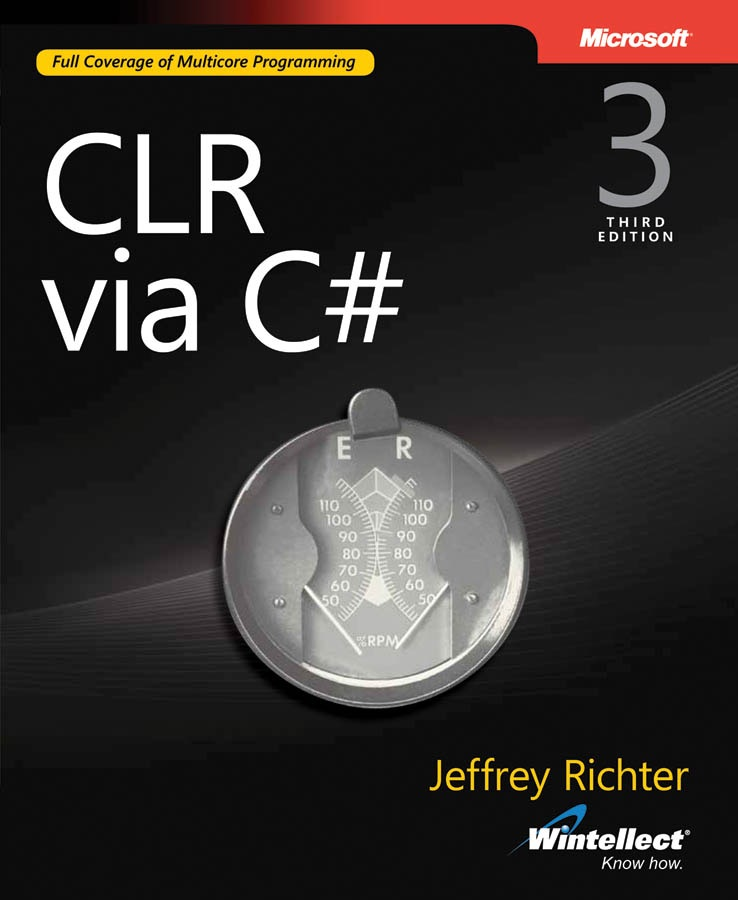
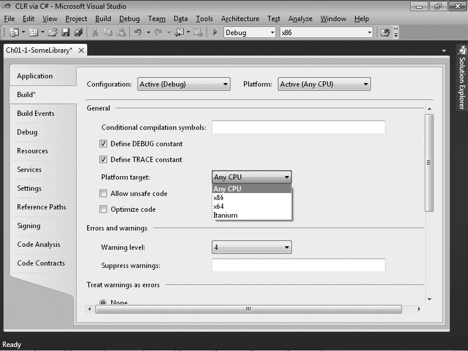
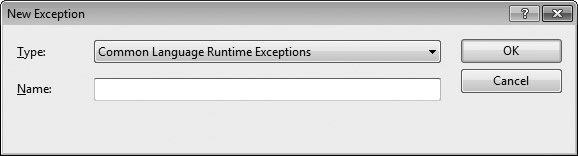
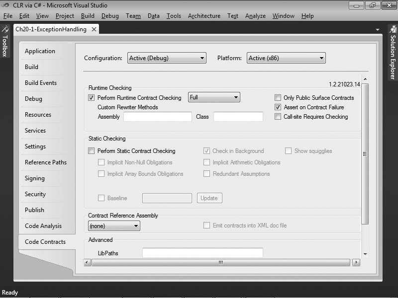

PUBLISHED BY
Microsoft Press
A Division of Microsoft Corporation
One Microsoft Way
Redmond, Washington 98052-6399
Copyright © 2010 by Jeffrey Richter
All rights reserved. No part of the contents of this book may be reproduced or transmitted in any form or by any means
without the written permission of the publisher.
Library of Congress Control Number: 2009943026
Printed and bound in the United States of America.
1 2 3 4 5 6 7 8 9 WCT 5 4 3 2 1 0
A CIP catalogue record for this book is available from the British Library.
Microsoft Press books are available through booksellers and distributors worldwide. For further infor mation about
fax (425) 936-7329. Visit our Web site at www.microsoft.com/mspress. Send comments to msinput@microsoft.com.
Microsoft, Microsoft Press, Active Accessibility, Active Directory, ActiveX, Authenticode, DirectX, Excel, IntelliSense,
Internet Explorer, MSDN, Outlook, SideShow, Silverlight, SQL Server, Visual Basic, Visual Studio, Win32, Windows,
Windows Live, Windows Media, Windows NT, Windows Server and Windows Vista are either registered trademarks
or trademarks of the Microsoft group of companies. Other product and company names mentioned herein may be the
trademarks of their respective owners.
The example companies, organizations, products, domain names, e-mail addresses, logos, people, places, and events
logo, person, place, or event is intended or should be inferred.
This book expresses the author's views and opinions. The information contained in this book is provided without any
express, statutory, or implied warranties. Neither the authors, Microsoft Corporation, nor its resellers, or distributors will
be held liable for any damages caused or alleged to be caused either directly or indirectly by this book.
Acquisitions Editor: Ben Ryan
Developmental Editor: Devon Musgrave
Project Editor: Valerie Woolley
Editorial Production: Custom Editorial Productions, Inc.
Technical Reviewer: Christophe Nasarre; Technical Review services provided by Content Master, a member of CM
Group, Ltd.
Cover: Tom Draper Design
Body Part No. X16-61995
Table of Contents
Foreward . . . . . . . . . . . . . . . . . . . . . . . . . . . . . . . . . . . . . . . . . . . . . . . . . . . . . . . . . .xiii
Introduction . . . . . . . . . . . . . . . . . . . . . . . . . . . . . . . . . . . . . . . . . . . . . . . . . . . . . . . xv
Part I CLR Basics
1 The CLR's Execution Model . . . . . . . . . . . . . . . . . . . . . . . . . . . . . . . . . . . . . 1
Compiling Source Code into Managed Modules . . . . . . . . . . . . . . . . . . . . . . . . . . . . . . . . . . 1
Combining Managed Modules into Assemblies . . . . . . . . . . . . . . . . . . . . . . . . . . . . . . . . . . . 5
Loading the Common Language Runtime. . . . . . . . . . . . . . . . . . . . . . . . . . . . . . . . . . . . . . . . 6
Executing Your Assembly's Code . . . . . . . . . . . . . . . . . . . . . . . . . . . . . . . . . . . . . . . . . . . . . . . . 9
IL and Verification . . . . . . . . . . . . . . . . . . . . . . . . . . . . . . . . . . . . . . . . . . . . . . . . . . . . . . 15
Unsafe Code . . . . . . . . . . . . . . . . . . . . . . . . . . . . . . . . . . . . . . . . . . . . . . . . . . . . . . . . . . . 16
The Native Code Generator Tool: NGen.exe . . . . . . . . . . . . . . . . . . . . . . . . . . . . . . . . . . . . . 18
The Framework Class Library . . . . . . . . . . . . . . . . . . . . . . . . . . . . . . . . . . . . . . . . . . . . . . . . . . 20
The Common Type System . . . . . . . . . . . . . . . . . . . . . . . . . . . . . . . . . . . . . . . . . . . . . . . . . . . . 22
The Common Language Specification . . . . . . . . . . . . . . . . . . . . . . . . . . . . . . . . . . . . . . . . . . 25
Interoperability with Unmanaged Code. . . . . . . . . . . . . . . . . . . . . . . . . . . . . . . . . . . . . . . . . 29
2 Building, Packaging, Deploying, and Administering Applications
and Types. . . . . . . . . . . . . . . . . . . . . . . . . . . . . . . . . . . . . . . . . . . . . . . . . . 31
.NET Framework Deployment Goals . . . . . . . . . . . . . . . . . . . . . . . . . . . . . . . . . . . . . . . . . . . . 32
Building Types into a Module. . . . . . . . . . . . . . . . . . . . . . . . . . . . . . . . . . . . . . . . . . . . . . . . . . 33
Response Files . . . . . . . . . . . . . . . . . . . . . . . . . . . . . . . . . . . . . . . . . . . . . . . . . . . . . . . . .34
A Brief Look at Metadata . . . . . . . . . . . . . . . . . . . . . . . . . . . . . . . . . . . . . . . . . . . . . . . . . . . . . 36
Combining Modules to Form an Assembly . . . . . . . . . . . . . . . . . . . . . . . . . . . . . . . . . . . . . . 43
Adding Assemblies to a Project by Using the Visual Studio IDE. . . . . . . . . . . . . . . 49
Using the Assembly Linker. . . . . . . . . . . . . . . . . . . . . . . . . . . . . . . . . . . . . . . . . . . . . . . 50
Adding Resource Files to an Assembly . . . . . . . . . . . . . . . . . . . . . . . . . . . . . . . . . . . . 52
Assembly Version Resource Information . . . . . . . . . . . . . . . . . . . . . . . . . . . . . . . . . . . . . . . . 53
Version Numbers. . . . . . . . . . . . . . . . . . . . . . . . . . . . . . . . . . . . . . . . . . . . . . . . . . . . . . . 57
Culture . . . . . . . . . . . . . . . . . . . . . . . . . . . . . . . . . . . . . . . . . . . . . . . . . . . . . . . . . . . . . . . . . . . . . 58
Simple Application Deployment (Privately Deployed Assemblies) . . . . . . . . . . . . . . . . . . 59
Simple Administrative Control (Configuration) . . . . . . . . . . . . . . . . . . . . . . . . . . . . . . . . . . . 61
What do you think of this book? We want to hear from you!
Microsoft is interested in hearing your feedback so we can continually improve our books and learning
resources for you. To participate in a brief online survey, please visit:
www.microsoft.com/learning/booksurvey/
iii
iv
Table of Contents
3 Shared Assemblies and Strongly Named Assemblies . . . . . . . . . . . . . . 65
Two Kinds of Assemblies, Two Kinds of Deployment . . . . . . . . . . . . . . . . . . . . . . . . . . . . . .66
Giving an Assembly a Strong Name . . . . . . . . . . . . . . . . . . . . . . . . . . . . . . . . . . . . . . . . . . . . 67
The Global Assembly Cache . . . . . . . . . . . . . . . . . . . . . . . . . . . . . . . . . . . . . . . . . . . . . . . . . . . 73
Building an Assembly That References a Strongly Named Assembly . . . . . . . . . . . . . . . . 75
Strongly Named Assemblies Are Tamper-Resistant . . . . . . . . . . . . . . . . . . . . . . . . . . . . . . . 76
Delayed Signing . . . . . . . . . . . . . . . . . . . . . . . . . . . . . . . . . . . . . . . . . . . . . . . . . . . . . . . . . . . . .77
Privately Deploying Strongly Named Assemblies. . . . . . . . . . . . . . . . . . . . . . . . . . . . . . . . .80
How the Runtime Resolves Type References . . . . . . . . . . . . . . . . . . . . . . . . . . . . . . . . . . . . . 81
Advanced Administrative Control (Configuration) . . . . . . . . . . . . . . . . . . . . . . . . . . . . . . . .84
Publisher Policy Control . . . . . . . . . . . . . . . . . . . . . . . . . . . . . . . . . . . . . . . . . . . . . . . . . 87
Part II Designing Types
4 Type Fundamentals . . . . . . . . . . . . . . . . . . . . . . . . . . . . . . . . . . . . . . . . . . . 91
All Types Are Derived from System.Object . . . . . . . . . . . . . . . . . . . . . . . . . . . . . . . . . . . . 91
Casting Between Types . . . . . . . . . . . . . . . . . . . . . . . . . . . . . . . . . . . . . . . . . . . . . . . . . . . . . . . 93
Casting with the C# is and as Operators . . . . . . . . . . . . . . . . . . . . . . . . . . . . . . . . . 95
Namespaces and Assemblies . . . . . . . . . . . . . . . . . . . . . . . . . . . . . . . . . . . . . . . . . . . . . . . . . . 97
How Things Relate at Runtime . . . . . . . . . . . . . . . . . . . . . . . . . . . . . . . . . . . . . . . . . . . . . . . .102
5 Primitive, Reference, and Value Types . . . . . . . . . . . . . . . . . . . . . . . . . . 113
Programming Language Primitive Types . . . . . . . . . . . . . . . . . . . . . . . . . . . . . . . . . . . . . . .113
Checked and Unchecked Primitive Type Operations . . . . . . . . . . . . . . . . . . . . . . . 117
Reference Types and Value Types . . . . . . . . . . . . . . . . . . . . . . . . . . . . . . . . . . . . . . . . . . . . .121
Boxing and Unboxing Value Types . . . . . . . . . . . . . . . . . . . . . . . . . . . . . . . . . . . . . . . . . . . .127
Changing Fields in a Boxed Value Type by Using Interfaces (and Why You
Shouldn't Do This) . . . . . . . . . . . . . . . . . . . . . . . . . . . . . . . . . . . . . . . . . . . . . . . . . . .140
Object Equality and Identity . . . . . . . . . . . . . . . . . . . . . . . . . . . . . . . . . . . . . . . . . . . .143
Object Hash Codes . . . . . . . . . . . . . . . . . . . . . . . . . . . . . . . . . . . . . . . . . . . . . . . . . . . . . . . . . .146
The dynamic Primitive Type . . . . . . . . . . . . . . . . . . . . . . . . . . . . . . . . . . . . . . . . . . . . . . . . . .148
6 Type and Member Basics . . . . . . . . . . . . . . . . . . . . . . . . . . . . . . . . . . . . . 155
The Different Kinds of Type Members . . . . . . . . . . . . . . . . . . . . . . . . . . . . . . . . . . . . . . . . .155
Type Visibility. . . . . . . . . . . . . . . . . . . . . . . . . . . . . . . . . . . . . . . . . . . . . . . . . . . . . . . . . . . . . . .158
Friend Assemblies . . . . . . . . . . . . . . . . . . . . . . . . . . . . . . . . . . . . . . . . . . . . . . . . . . . . .159
Member Accessibility . . . . . . . . . . . . . . . . . . . . . . . . . . . . . . . . . . . . . . . . . . . . . . . . . . . . . . . .160
Static Classes . . . . . . . . . . . . . . . . . . . . . . . . . . . . . . . . . . . . . . . . . . . . . . . . . . . . . . . . . . . . . . .162
Partial Classes, Structures, and Interfaces . . . . . . . . . . . . . . . . . . . . . . . . . . . . . . . . . . . . . .164
Components, Polymorphism, and Versioning. . . . . . . . . . . . . . . . . . . . . . . . . . . . . . . . . . .165
How the CLR Calls Virtual Methods, Properties, and Events . . . . . . . . . . . . . . . . .167
Using Type Visibility and Member Accessibility Intelligently . . . . . . . . . . . . . . . .172
Dealing with Virtual Methods When Versioning Types . . . . . . . . . . . . . . . . . . . . . 175
7 Constants and Fields . . . . . . . . . . . . . . . . . . . . . . . . . . . . . . . . . . . . . . . . . 181
Constants . . . . . . . . . . . . . . . . . . . . . . . . . . . . . . . . . . . . . . . . . . . . . . . . . . . . . . . . . . . . . . . . . .181
Fields . . . . . . . . . . . . . . . . . . . . . . . . . . . . . . . . . . . . . . . . . . . . . . . . . . . . . . . . . . . . . . . . . . . . . .183
Table of Contents
v
8 Methods . . . . . . . . . . . . . . . . . . . . . . . . . . . . . . . . . . . . . . . . . . . . . . . . . . . 187
Instance Constructors and Classes (Reference Types) . . . . . . . . . . . . . . . . . . . . . . . . . . . .187
Instance Constructors and Structures (Value Types) . . . . . . . . . . . . . . . . . . . . . . . . . . . . .191
Type Constructors. . . . . . . . . . . . . . . . . . . . . . . . . . . . . . . . . . . . . . . . . . . . . . . . . . . . . . . . . . .194
Type Constructor Performance. . . . . . . . . . . . . . . . . . . . . . . . . . . . . . . . . . . . . . . . . .198
Operator Overload Methods . . . . . . . . . . . . . . . . . . . . . . . . . . . . . . . . . . . . . . . . . . . . . . . . .200
Operators and Programming Language Interoperability . . . . . . . . . . . . . . . . . . .203
Conversion Operator Methods. . . . . . . . . . . . . . . . . . . . . . . . . . . . . . . . . . . . . . . . . . . . . . . .204
Extension Methods. . . . . . . . . . . . . . . . . . . . . . . . . . . . . . . . . . . . . . . . . . . . . . . . . . . . . . . . . .207
Rules and Guidelines. . . . . . . . . . . . . . . . . . . . . . . . . . . . . . . . . . . . . . . . . . . . . . . . . . .210
Extending Various Types with Extension Methods . . . . . . . . . . . . . . . . . . . . . . . . .211
The Extension Attribute . . . . . . . . . . . . . . . . . . . . . . . . . . . . . . . . . . . . . . . . . . . . . . . .213
Partial Methods. . . . . . . . . . . . . . . . . . . . . . . . . . . . . . . . . . . . . . . . . . . . . . . . . . . . . . . . . . . . .213
Rules and Guidelines. . . . . . . . . . . . . . . . . . . . . . . . . . . . . . . . . . . . . . . . . . . . . . . . . . .216
9 Parameters . . . . . . . . . . . . . . . . . . . . . . . . . . . . . . . . . . . . . . . . . . . . . . . . . 219
Optional and Named Parameters . . . . . . . . . . . . . . . . . . . . . . . . . . . . . . . . . . . . . . . . . . . . .219
Rules and Guidelines. . . . . . . . . . . . . . . . . . . . . . . . . . . . . . . . . . . . . . . . . . . . . . . . . . .220
The DefaultParameterValue and Optional Attributes . . . . . . . . . . . . . . . . . .222
Implicitly Typed Local Variables . . . . . . . . . . . . . . . . . . . . . . . . . . . . . . . . . . . . . . . . . . . . . . .223
Passing Parameters by Reference to a Method. . . . . . . . . . . . . . . . . . . . . . . . . . . . . . . . . .225
Passing a Variable Number of Arguments to a Method . . . . . . . . . . . . . . . . . . . . . . . . . .231
Parameter and Return Type Guidelines . . . . . . . . . . . . . . . . . . . . . . . . . . . . . . . . . . . . . . . .233
Const-ness. . . . . . . . . . . . . . . . . . . . . . . . . . . . . . . . . . . . . . . . . . . . . . . . . . . . . . . . . . . . . . . . .235
10 Properties . . . . . . . . . . . . . . . . . . . . . . . . . . . . . . . . . . . . . . . . . . . . . . . . . . 237
Parameterless Properties. . . . . . . . . . . . . . . . . . . . . . . . . . . . . . . . . . . . . . . . . . . . . . . . . . . . .237
Automatically Implemented Properties . . . . . . . . . . . . . . . . . . . . . . . . . . . . . . . . . . 241
Defining Properties Intelligently. . . . . . . . . . . . . . . . . . . . . . . . . . . . . . . . . . . . . . . . .242
Object and Collection Initializers . . . . . . . . . . . . . . . . . . . . . . . . . . . . . . . . . . . . . . . .245
Anonymous Types . . . . . . . . . . . . . . . . . . . . . . . . . . . . . . . . . . . . . . . . . . . . . . . . . . . . . 247
The System.Tuple Type. . . . . . . . . . . . . . . . . . . . . . . . . . . . . . . . . . . . . . . . . . . . . . .250
Parameterful Properties . . . . . . . . . . . . . . . . . . . . . . . . . . . . . . . . . . . . . . . . . . . . . . . . . . . . .252
The Performance of Calling Property Accessor Methods . . . . . . . . . . . . . . . . . . . . . . . . .257
Property Accessor Accessibility . . . . . . . . . . . . . . . . . . . . . . . . . . . . . . . . . . . . . . . . . . . . . . .258
Generic Property Accessor Methods. . . . . . . . . . . . . . . . . . . . . . . . . . . . . . . . . . . . . . . . . . .258
11 Events . . . . . . . . . . . . . . . . . . . . . . . . . . . . . . . . . . . . . . . . . . . . . . . . . . . . . 259
Designing a Type That Exposes an Event . . . . . . . . . . . . . . . . . . . . . . . . . . . . . . . . . . . . . . .260
Step #1: Define a type that will hold any additional information
that should be sent to receivers of the event notification . . . . . . . . . . . . . . . . .261
Step #2: Define the event member . . . . . . . . . . . . . . . . . . . . . . . . . . . . . . . . . . . . . .262
Step #3: Define a method responsible for raising the event to
notify registered objects that the event has occurred . . . . . . . . . . . . . . . . . . . .263
Step #4: Define a method that translates the input into the desired event . . . .266
How the Compiler Implements an Event . . . . . . . . . . . . . . . . . . . . . . . . . . . . . . . . . . . . . . .266
vi
Table of Contents
Designing a Type That Listens for an Event . . . . . . . . . . . . . . . . . . . . . . . . . . . . . . . . . . . . .269
Explicitly Implementing an Event. . . . . . . . . . . . . . . . . . . . . . . . . . . . . . . . . . . . . . . . . . . . . .271
12 Generics . . . . . . . . . . . . . . . . . . . . . . . . . . . . . . . . . . . . . . . . . . . . . . . . . . . 275
Generics in the Framework Class Library . . . . . . . . . . . . . . . . . . . . . . . . . . . . . . . . . . . . . . .280
Wintellect's Power Collections Library . . . . . . . . . . . . . . . . . . . . . . . . . . . . . . . . . . . . . . . . .281
Generics Infrastructure . . . . . . . . . . . . . . . . . . . . . . . . . . . . . . . . . . . . . . . . . . . . . . . . . . . . . .282
Open and Closed Types . . . . . . . . . . . . . . . . . . . . . . . . . . . . . . . . . . . . . . . . . . . . . . . .283
Generic Types and Inheritance . . . . . . . . . . . . . . . . . . . . . . . . . . . . . . . . . . . . . . . . . .285
Generic Type Identity . . . . . . . . . . . . . . . . . . . . . . . . . . . . . . . . . . . . . . . . . . . . . . . . . .287
Code Explosion . . . . . . . . . . . . . . . . . . . . . . . . . . . . . . . . . . . . . . . . . . . . . . . . . . . . . . .288
Generic Interfaces. . . . . . . . . . . . . . . . . . . . . . . . . . . . . . . . . . . . . . . . . . . . . . . . . . . . . . . . . . .289
Generic Delegates. . . . . . . . . . . . . . . . . . . . . . . . . . . . . . . . . . . . . . . . . . . . . . . . . . . . . . . . . . .290
Delegate and Interface Contravariant and Covariant Generic Type Arguments. . . . . .291
Generic Methods . . . . . . . . . . . . . . . . . . . . . . . . . . . . . . . . . . . . . . . . . . . . . . . . . . . . . . . . . . .293
Generic Methods and Type Inference . . . . . . . . . . . . . . . . . . . . . . . . . . . . . . . . . . . .294
Generics and Other Members . . . . . . . . . . . . . . . . . . . . . . . . . . . . . . . . . . . . . . . . . . . . . . . .296
Verifiability and Constraints . . . . . . . . . . . . . . . . . . . . . . . . . . . . . . . . . . . . . . . . . . . . . . . . . .296
Primary Constraints. . . . . . . . . . . . . . . . . . . . . . . . . . . . . . . . . . . . . . . . . . . . . . . . . . . .299
Secondary Constraints . . . . . . . . . . . . . . . . . . . . . . . . . . . . . . . . . . . . . . . . . . . . . . . . .300
Constructor Constraints . . . . . . . . . . . . . . . . . . . . . . . . . . . . . . . . . . . . . . . . . . . . . . . .301
Other Verifiability Issues . . . . . . . . . . . . . . . . . . . . . . . . . . . . . . . . . . . . . . . . . . . . . . .302
13 Interfaces . . . . . . . . . . . . . . . . . . . . . . . . . . . . . . . . . . . . . . . . . . . . . . . . . . 307
Class and Interface Inheritance . . . . . . . . . . . . . . . . . . . . . . . . . . . . . . . . . . . . . . . . . . . . . . .308
Defining an Interface . . . . . . . . . . . . . . . . . . . . . . . . . . . . . . . . . . . . . . . . . . . . . . . . . . . . . . . .308
Inheriting an Interface . . . . . . . . . . . . . . . . . . . . . . . . . . . . . . . . . . . . . . . . . . . . . . . . . . . . . . .310
More About Calling Interface Methods . . . . . . . . . . . . . . . . . . . . . . . . . . . . . . . . . . . . . . . .312
Implicit and Explicit Interface Method Implementations (What's Happening
Behind the Scenes) . . . . . . . . . . . . . . . . . . . . . . . . . . . . . . . . . . . . . . . . . . . . . . . . . . . . . . . .314
Generic Interfaces. . . . . . . . . . . . . . . . . . . . . . . . . . . . . . . . . . . . . . . . . . . . . . . . . . . . . . . . . . .315
Generics and Interface Constraints . . . . . . . . . . . . . . . . . . . . . . . . . . . . . . . . . . . . . . . . . . . .318
Implementing Multiple Interfaces That Have the Same Method Name
and Signature . . . . . . . . . . . . . . . . . . . . . . . . . . . . . . . . . . . . . . . . . . . . . . . . . . . . . . . . . . . . .319
Improving Compile-Time Type Safety with Explicit Interface Method
Implementations . . . . . . . . . . . . . . . . . . . . . . . . . . . . . . . . . . . . . . . . . . . . . . . . . . . . . . . . . .320
Be Careful with Explicit Interface Method Implementations . . . . . . . . . . . . . . . . . . . . . .322
Design: Base Class or Interface? . . . . . . . . . . . . . . . . . . . . . . . . . . . . . . . . . . . . . . . . . . . . . . .325
Part III Essential Types
14 Chars, Strings, and Working with Text . . . . . . . . . . . . . . . . . . . . . . . . . . 327
Characters . . . . . . . . . . . . . . . . . . . . . . . . . . . . . . . . . . . . . . . . . . . . . . . . . . . . . . . . . . . . . . . . .327
The System.String Type . . . . . . . . . . . . . . . . . . . . . . . . . . . . . . . . . . . . . . . . . . . . . . . . . . .330
Constructing Strings . . . . . . . . . . . . . . . . . . . . . . . . . . . . . . . . . . . . . . . . . . . . . . . . . . .330
Strings Are Immutable . . . . . . . . . . . . . . . . . . . . . . . . . . . . . . . . . . . . . . . . . . . . . . . . .333
Comparing Strings . . . . . . . . . . . . . . . . . . . . . . . . . . . . . . . . . . . . . . . . . . . . . . . . . . . .334
Table of Contents
vii
String Interning . . . . . . . . . . . . . . . . . . . . . . . . . . . . . . . . . . . . . . . . . . . . . . . . . . . . . . .340
String Pooling . . . . . . . . . . . . . . . . . . . . . . . . . . . . . . . . . . . . . . . . . . . . . . . . . . . . . . . .343
Examining a String's Characters and Text Elements . . . . . . . . . . . . . . . . . . . . . . . .343
Other String Operations. . . . . . . . . . . . . . . . . . . . . . . . . . . . . . . . . . . . . . . . . . . . . . . .346
Constructing a String Efficiently. . . . . . . . . . . . . . . . . . . . . . . . . . . . . . . . . . . . . . . . . . . . . . .346
Constructing a StringBuilder Object . . . . . . . . . . . . . . . . . . . . . . . . . . . . . . . . . .347
StringBuilder Members. . . . . . . . . . . . . . . . . . . . . . . . . . . . . . . . . . . . . . . . . . . . .348
Obtaining a String Representation of an Object: ToString . . . . . . . . . . . . . . . . . . . . . . . .350
Specific Formats and Cultures. . . . . . . . . . . . . . . . . . . . . . . . . . . . . . . . . . . . . . . . . . . 351
Formatting Multiple Objects into a Single String . . . . . . . . . . . . . . . . . . . . . . . . . .355
Providing Your Own Custom Formatter . . . . . . . . . . . . . . . . . . . . . . . . . . . . . . . . . .356
Parsing a String to Obtain an Object: Parse . . . . . . . . . . . . . . . . . . . . . . . . . . . . . . . . . . . . . .359
Encodings: Converting Between Characters and Bytes . . . . . . . . . . . . . . . . . . . . . . . . . . .361
Encoding and Decoding Streams of Characters and Bytes . . . . . . . . . . . . . . . . . .367
Base-64 String Encoding and Decoding . . . . . . . . . . . . . . . . . . . . . . . . . . . . . . . . . .368
Secure Strings . . . . . . . . . . . . . . . . . . . . . . . . . . . . . . . . . . . . . . . . . . . . . . . . . . . . . . . . . . . . . .369
15 Enumerated Types and Bit Flags . . . . . . . . . . . . . . . . . . . . . . . . . . . . . . . 373
Enumerated Types . . . . . . . . . . . . . . . . . . . . . . . . . . . . . . . . . . . . . . . . . . . . . . . . . . . . . . . . . .373
Bit Flags . . . . . . . . . . . . . . . . . . . . . . . . . . . . . . . . . . . . . . . . . . . . . . . . . . . . . . . . . . . . . . . . . . .379
Adding Methods to Enumerated Types . . . . . . . . . . . . . . . . . . . . . . . . . . . . . . . . . . . . . . . .383
16 Arrays. . . . . . . . . . . . . . . . . . . . . . . . . . . . . . . . . . . . . . . . . . . . . . . . . . . . . . 385
Initializing Array Elements. . . . . . . . . . . . . . . . . . . . . . . . . . . . . . . . . . . . . . . . . . . . . . . . . . . .388
Casting Arrays . . . . . . . . . . . . . . . . . . . . . . . . . . . . . . . . . . . . . . . . . . . . . . . . . . . . . . . . . . . . . .390
All Arrays Are Implicitly Derived from System.Array . . . . . . . . . . . . . . . . . . . . . . . . . . .392
All Arrays Implicitly Implement IEnumerable, ICollection, and IList. . . . . . . . . .393
Passing and Returning Arrays. . . . . . . . . . . . . . . . . . . . . . . . . . . . . . . . . . . . . . . . . . . . . . . . .394
Creating Non-ZeroLower Bound Arrays. . . . . . . . . . . . . . . . . . . . . . . . . . . . . . . . . . . . . . .395
Array Access Performance. . . . . . . . . . . . . . . . . . . . . . . . . . . . . . . . . . . . . . . . . . . . . . . . . . . .396
Unsafe Array Access and Fixed-Size Array . . . . . . . . . . . . . . . . . . . . . . . . . . . . . . . . . . . . . .401
17 Delegates . . . . . . . . . . . . . . . . . . . . . . . . . . . . . . . . . . . . . . . . . . . . . . . . . . 405
A First Look at Delegates. . . . . . . . . . . . . . . . . . . . . . . . . . . . . . . . . . . . . . . . . . . . . . . . . . . . .405
Using Delegates to Call Back Static Methods . . . . . . . . . . . . . . . . . . . . . . . . . . . . . . . . . . .408
Using Delegates to Call Back Instance Methods. . . . . . . . . . . . . . . . . . . . . . . . . . . . . . . . .409
Demystifying Delegates. . . . . . . . . . . . . . . . . . . . . . . . . . . . . . . . . . . . . . . . . . . . . . . . . . . . . . 410
Using Delegates to Call Back Many Methods (Chaining) . . . . . . . . . . . . . . . . . . . . . . . . . 415
C#'s Support for Delegate Chains . . . . . . . . . . . . . . . . . . . . . . . . . . . . . . . . . . . . . . . 419
Having More Control over Delegate Chain Invocation . . . . . . . . . . . . . . . . . . . . . 419
Enough with the Delegate Definitions Already (Generic Delegates). . . . . . . . . . . . . . . .422
C#'s Syntactical Sugar for Delegates . . . . . . . . . . . . . . . . . . . . . . . . . . . . . . . . . . . . . . . . . . .423
Syntactical Shortcut #1: No Need to Construct a Delegate Object. . . . . . . . . . .424
Syntactical Shortcut #2: No Need to Define a Callback Method . . . . . . . . . . . . .424
Syntactical Shortcut #3: No Need to Wrap Local Variables in a Class
Manually to Pass Them to a Callback Method . . . . . . . . . . . . . . . . . . . . . . . . . . .428
Delegates and Reflection . . . . . . . . . . . . . . . . . . . . . . . . . . . . . . . . . . . . . . . . . . . . . . . . . . . .431
viii
Table of Contents
18 Custom Attributes . . . . . . . . . . . . . . . . . . . . . . . . . . . . . . . . . . . . . . . . . . . 435
Using Custom Attributes . . . . . . . . . . . . . . . . . . . . . . . . . . . . . . . . . . . . . . . . . . . . . . . . . . . . .435
Defining Your Own Attribute Class . . . . . . . . . . . . . . . . . . . . . . . . . . . . . . . . . . . . . . . . . . . .439
Attribute Constructor and Field/Property Data Types. . . . . . . . . . . . . . . . . . . . . . . . . . . .443
Detecting the Use of a Custom Attribute. . . . . . . . . . . . . . . . . . . . . . . . . . . . . . . . . . . . . . .444
Matching Two Attribute Instances Against Each Other . . . . . . . . . . . . . . . . . . . . . . . . . . .448
Detecting the Use of a Custom Attribute Without Creating Attribute-Derived
Objects . . . . . . . . . . . . . . . . . . . . . . . . . . . . . . . . . . . . . . . . . . . . . . . . . . . . . . . . . . . . . . . . . .451
Conditional Attribute Classes . . . . . . . . . . . . . . . . . . . . . . . . . . . . . . . . . . . . . . . . . . . . . . . . .454
19 Nullable Value Types. . . . . . . . . . . . . . . . . . . . . . . . . . . . . . . . . . . . . . . . . 457
C#'s Support for Nullable Value Types . . . . . . . . . . . . . . . . . . . . . . . . . . . . . . . . . . . . . . . . .459
C#'s Null-Coalescing Operator. . . . . . . . . . . . . . . . . . . . . . . . . . . . . . . . . . . . . . . . . . . . . . . .462
The CLR Has Special Support for Nullable Value Types . . . . . . . . . . . . . . . . . . . . . . . . . . .463
Boxing Nullable Value Types . . . . . . . . . . . . . . . . . . . . . . . . . . . . . . . . . . . . . . . . . . . .463
Unboxing Nullable Value Types . . . . . . . . . . . . . . . . . . . . . . . . . . . . . . . . . . . . . . . . .463
Calling GetType via a Nullable Value Type . . . . . . . . . . . . . . . . . . . . . . . . . . . . . . .464
Calling Interface Methods via a Nullable Value Type . . . . . . . . . . . . . . . . . . . . . . .464
Part IV Core Facilities
20 Exceptions and State Management . . . . . . . . . . . . . . . . . . . . . . . . . . . . 465
Defining "Exception" . . . . . . . . . . . . . . . . . . . . . . . . . . . . . . . . . . . . . . . . . . . . . . . . . . . . . . . .466
Exception-Handling Mechanics . . . . . . . . . . . . . . . . . . . . . . . . . . . . . . . . . . . . . . . . . . . . . . .467
The try Block . . . . . . . . . . . . . . . . . . . . . . . . . . . . . . . . . . . . . . . . . . . . . . . . . . . . . . . .468
The catch Block . . . . . . . . . . . . . . . . . . . . . . . . . . . . . . . . . . . . . . . . . . . . . . . . . . . . . .469
The finally Block . . . . . . . . . . . . . . . . . . . . . . . . . . . . . . . . . . . . . . . . . . . . . . . . . . . .470
The System.Exception Class. . . . . . . . . . . . . . . . . . . . . . . . . . . . . . . . . . . . . . . . . . . . . . . . 474
FCL-Defined Exception Classes. . . . . . . . . . . . . . . . . . . . . . . . . . . . . . . . . . . . . . . . . . . . . . . .478
Throwing an Exception . . . . . . . . . . . . . . . . . . . . . . . . . . . . . . . . . . . . . . . . . . . . . . . . . . . . . .480
Defining Your Own Exception Class . . . . . . . . . . . . . . . . . . . . . . . . . . . . . . . . . . . . . . . . . . .481
Trading Reliability for Productivity . . . . . . . . . . . . . . . . . . . . . . . . . . . . . . . . . . . . . . . . . . . .484
Guidelines and Best Practices. . . . . . . . . . . . . . . . . . . . . . . . . . . . . . . . . . . . . . . . . . . . . . . . .492
Use finally Blocks Liberally . . . . . . . . . . . . . . . . . . . . . . . . . . . . . . . . . . . . . . . . . . .492
Don't Catch Everything. . . . . . . . . . . . . . . . . . . . . . . . . . . . . . . . . . . . . . . . . . . . . . . .494
Recovering Gracefully from an Exception. . . . . . . . . . . . . . . . . . . . . . . . . . . . . . . . .495
Backing Out of a Partially Completed Operation When an Unrecoverable
Exception Occurs--Maintaining State . . . . . . . . . . . . . . . . . . . . . . . . . . . . . . . . . .496
Hiding an Implementation Detail to Maintain a "Contract" . . . . . . . . . . . . . . . . .497
Unhandled Exceptions . . . . . . . . . . . . . . . . . . . . . . . . . . . . . . . . . . . . . . . . . . . . . . . . . . . . . . .500
Debugging Exceptions. . . . . . . . . . . . . . . . . . . . . . . . . . . . . . . . . . . . . . . . . . . . . . . . . . . . . . .504
Exception-Handling Performance Considerations . . . . . . . . . . . . . . . . . . . . . . . . . . . . . . .506
Constrained Execution Regions (CERs) . . . . . . . . . . . . . . . . . . . . . . . . . . . . . . . . . . . . . . . . .509
Code Contracts . . . . . . . . . . . . . . . . . . . . . . . . . . . . . . . . . . . . . . . . . . . . . . . . . . . . . . . . . . . . .512
Table of Contents
ix
21 Automatic Memory Management (Garbage Collection). . . . . . . . . . . 519
Understanding the Basics of Working in a Garbage-Collected Platform. . . . . . . . . . . .520
Allocating Resources from the Managed Heap. . . . . . . . . . . . . . . . . . . . . . . . . . . .521
The Garbage Collection Algorithm . . . . . . . . . . . . . . . . . . . . . . . . . . . . . . . . . . . . . . . . . . . .523
Garbage Collections and Debugging . . . . . . . . . . . . . . . . . . . . . . . . . . . . . . . . . . . . . . . . . .527
Using Finalization to Release Native Resources . . . . . . . . . . . . . . . . . . . . . . . . . . . . . . . . .530
Guaranteed Finalization Using CriticalFinalizerObject Types . . . . . . . . .532
Interoperating with Unmanaged Code by Using SafeHandle Types. . . . . . . . .535
Using Finalization with Managed Resources . . . . . . . . . . . . . . . . . . . . . . . . . . . . . . . . . . . .537
What Causes Finalize Methods to Be Called?. . . . . . . . . . . . . . . . . . . . . . . . . . . . . . . . .540
Finalization Internals . . . . . . . . . . . . . . . . . . . . . . . . . . . . . . . . . . . . . . . . . . . . . . . . . . . . . . . .541
The Dispose Pattern: Forcing an Object to Clean Up. . . . . . . . . . . . . . . . . . . . . . . . . . . . .544
Using a Type That Implements the Dispose Pattern . . . . . . . . . . . . . . . . . . . . . . . . . . . . .548
C#'s using Statement . . . . . . . . . . . . . . . . . . . . . . . . . . . . . . . . . . . . . . . . . . . . . . . . . . . . . . . 551
An Interesting Dependency Issue . . . . . . . . . . . . . . . . . . . . . . . . . . . . . . . . . . . . . . . . . . . . .554
Monitoring and Controlling the Lifetime of Objects Manually . . . . . . . . . . . . . . . . . . . . 555
Resurrection. . . . . . . . . . . . . . . . . . . . . . . . . . . . . . . . . . . . . . . . . . . . . . . . . . . . . . . . . . . . . . . .566
Generations . . . . . . . . . . . . . . . . . . . . . . . . . . . . . . . . . . . . . . . . . . . . . . . . . . . . . . . . . . . . . . . .568
Other Garbage Collection Features for Use with Native Resources . . . . . . . . . . . . . . . . 574
Predicting the Success of an Operation that Requires a Lot of Memory . . . . . . . . . . . .578
Programmatic Control of the Garbage Collector . . . . . . . . . . . . . . . . . . . . . . . . . . . . . . . .580
Thread Hijacking . . . . . . . . . . . . . . . . . . . . . . . . . . . . . . . . . . . . . . . . . . . . . . . . . . . . . . . . . . . .583
Garbage Collection Modes . . . . . . . . . . . . . . . . . . . . . . . . . . . . . . . . . . . . . . . . . . . . . . . . . . .585
Large Objects . . . . . . . . . . . . . . . . . . . . . . . . . . . . . . . . . . . . . . . . . . . . . . . . . . . . . . . . . . . . . .588
Monitoring Garbage Collections . . . . . . . . . . . . . . . . . . . . . . . . . . . . . . . . . . . . . . . . . . . . . .589
22 CLR Hosting and AppDomains . . . . . . . . . . . . . . . . . . . . . . . . . . . . . . . . 591
CLR Hosting . . . . . . . . . . . . . . . . . . . . . . . . . . . . . . . . . . . . . . . . . . . . . . . . . . . . . . . . . . . . . . . .592
AppDomains . . . . . . . . . . . . . . . . . . . . . . . . . . . . . . . . . . . . . . . . . . . . . . . . . . . . . . . . . . . . . . .594
Accessing Objects Across AppDomain Boundaries. . . . . . . . . . . . . . . . . . . . . . . . .597
AppDomain Unloading . . . . . . . . . . . . . . . . . . . . . . . . . . . . . . . . . . . . . . . . . . . . . . . . . . . . . .609
AppDomain Monitoring . . . . . . . . . . . . . . . . . . . . . . . . . . . . . . . . . . . . . . . . . . . . . . . . . . . . .610
AppDomain First-Chance Exception Notifications . . . . . . . . . . . . . . . . . . . . . . . . . . . . . . .612
How Hosts Use AppDomains . . . . . . . . . . . . . . . . . . . . . . . . . . . . . . . . . . . . . . . . . . . . . . . . .612
Executable Applications . . . . . . . . . . . . . . . . . . . . . . . . . . . . . . . . . . . . . . . . . . . . . . . .612
Microsoft Silverlight Rich Internet Applications . . . . . . . . . . . . . . . . . . . . . . . . . . .613
Microsoft ASP.NET Web Forms and XML Web Services Applications . . . . . . . . .613
Microsoft SQL Server . . . . . . . . . . . . . . . . . . . . . . . . . . . . . . . . . . . . . . . . . . . . . . . . . .614
Your Own Imagination . . . . . . . . . . . . . . . . . . . . . . . . . . . . . . . . . . . . . . . . . . . . . . . . .614
Advanced Host Control . . . . . . . . . . . . . . . . . . . . . . . . . . . . . . . . . . . . . . . . . . . . . . . . . . . . . .615
Managing the CLR by Using Managed Code . . . . . . . . . . . . . . . . . . . . . . . . . . . . . .615
Writing a Robust Host Application . . . . . . . . . . . . . . . . . . . . . . . . . . . . . . . . . . . . . .616
How a Host Gets Its Thread Back . . . . . . . . . . . . . . . . . . . . . . . . . . . . . . . . . . . . . . . . 617
x
Table of Contents
23 Assembly Loading and Reflection. . . . . . . . . . . . . . . . . . . . . . . . . . . . . . 621
Assembly Loading. . . . . . . . . . . . . . . . . . . . . . . . . . . . . . . . . . . . . . . . . . . . . . . . . . . . . . . . . . .621
Using Reflection to Build a Dynamically Extensible Application . . . . . . . . . . . . . . . . . . .626
Reflection Performance . . . . . . . . . . . . . . . . . . . . . . . . . . . . . . . . . . . . . . . . . . . . . . . . . . . . . .627
Discovering Types Defined in an Assembly . . . . . . . . . . . . . . . . . . . . . . . . . . . . . . .628
What Exactly Is a Type Object?. . . . . . . . . . . . . . . . . . . . . . . . . . . . . . . . . . . . . . . . . .628
Building a Hierarchy of Exception-Derived Types . . . . . . . . . . . . . . . . . . . . . . . . . .631
Constructing an Instance of a Type . . . . . . . . . . . . . . . . . . . . . . . . . . . . . . . . . . . . . .632
Designing an Application That Supports Add-Ins . . . . . . . . . . . . . . . . . . . . . . . . . . . . . . .634
Using Reflection to Discover a Type's Members . . . . . . . . . . . . . . . . . . . . . . . . . . . . . . . . .637
Discovering a Type's Members . . . . . . . . . . . . . . . . . . . . . . . . . . . . . . . . . . . . . . . . . .638
BindingFlags: Filtering the Kinds of Members That Are Returned . . . . . . . . .643
Discovering a Type's Interfaces. . . . . . . . . . . . . . . . . . . . . . . . . . . . . . . . . . . . . . . . . .644
Invoking a Type's Members. . . . . . . . . . . . . . . . . . . . . . . . . . . . . . . . . . . . . . . . . . . . .646
Bind Once, Invoke Multiple Times . . . . . . . . . . . . . . . . . . . . . . . . . . . . . . . . . . . . . . .650
Using Binding Handles to Reduce Your Process's Memory Consumption . . . . .658
24 Runtime Serialization . . . . . . . . . . . . . . . . . . . . . . . . . . . . . . . . . . . . . . . . 661
Serialization/Deserialization Quick Start . . . . . . . . . . . . . . . . . . . . . . . . . . . . . . . . . . . . . . .662
Making a Type Serializable . . . . . . . . . . . . . . . . . . . . . . . . . . . . . . . . . . . . . . . . . . . . . . . . . . .667
Controlling Serialization and Deserialization. . . . . . . . . . . . . . . . . . . . . . . . . . . . . . . . . . . .668
How Formatters Serialize Type Instances . . . . . . . . . . . . . . . . . . . . . . . . . . . . . . . . . . . . . . .672
Controlling the Serialized/Deserialized Data. . . . . . . . . . . . . . . . . . . . . . . . . . . . . . . . . . . .673
How to Define a Type That Implements ISerializable when the Base
Type Doesn't Implement This Interface . . . . . . . . . . . . . . . . . . . . . . . . . . . . . . . . .678
Streaming Contexts . . . . . . . . . . . . . . . . . . . . . . . . . . . . . . . . . . . . . . . . . . . . . . . . . . . . . . . . .680
Serializing a Type as a Different Type and Deserializing an Object as a
Different Object. . . . . . . . . . . . . . . . . . . . . . . . . . . . . . . . . . . . . . . . . . . . . . . . . . . . . . . . . . .682
Serialization Surrogates . . . . . . . . . . . . . . . . . . . . . . . . . . . . . . . . . . . . . . . . . . . . . . . . . . . . . .684
Surrogate Selector Chains . . . . . . . . . . . . . . . . . . . . . . . . . . . . . . . . . . . . . . . . . . . . . .688
Overriding the Assembly and/or Type When Deserializing an Object . . . . . . . . . . . . . .689
Part V Threading
25 Thread Basics . . . . . . . . . . . . . . . . . . . . . . . . . . . . . . . . . . . . . . . . . . . . . . . 691
Why Does Windows Support Threads?. . . . . . . . . . . . . . . . . . . . . . . . . . . . . . . . . . . . . . . . .691
Thread Overhead . . . . . . . . . . . . . . . . . . . . . . . . . . . . . . . . . . . . . . . . . . . . . . . . . . . . . . . . . . .692
Stop the Madness . . . . . . . . . . . . . . . . . . . . . . . . . . . . . . . . . . . . . . . . . . . . . . . . . . . . . . . . . . .696
CPU Trends. . . . . . . . . . . . . . . . . . . . . . . . . . . . . . . . . . . . . . . . . . . . . . . . . . . . . . . . . . . . . . . . .699
NUMA Architecture Machines . . . . . . . . . . . . . . . . . . . . . . . . . . . . . . . . . . . . . . . . . . . . . . . .700
CLR Threads and Windows Threads . . . . . . . . . . . . . . . . . . . . . . . . . . . . . . . . . . . . . . . . . . .703
Using a Dedicated Thread to Perform an Asynchronous Compute-Bound
Operation . . . . . . . . . . . . . . . . . . . . . . . . . . . . . . . . . . . . . . . . . . . . . . . . . . . . . . . . . . . . . . . .704
Reasons to Use Threads. . . . . . . . . . . . . . . . . . . . . . . . . . . . . . . . . . . . . . . . . . . . . . . . . . . . . .706
Thread Scheduling and Priorities. . . . . . . . . . . . . . . . . . . . . . . . . . . . . . . . . . . . . . . . . . . . . .708
Foreground Threads versus Background Threads . . . . . . . . . . . . . . . . . . . . . . . . . . . . . . .713
What Now?. . . . . . . . . . . . . . . . . . . . . . . . . . . . . . . . . . . . . . . . . . . . . . . . . . . . . . . . . . . . . . . . .715
Table of Contents
xi
26 Compute-Bound Asynchronous Operations . . . . . . . . . . . . . . . . . . . . . 717
Introducing the CLR's Thread Pool . . . . . . . . . . . . . . . . . . . . . . . . . . . . . . . . . . . . . . . . . . . .718
Performing a Simple Compute-Bound Operation . . . . . . . . . . . . . . . . . . . . . . . . . . . . . . .719
Execution Contexts. . . . . . . . . . . . . . . . . . . . . . . . . . . . . . . . . . . . . . . . . . . . . . . . . . . . . . . . . .721
Cooperative Cancellation . . . . . . . . . . . . . . . . . . . . . . . . . . . . . . . . . . . . . . . . . . . . . . . . . . . .722
Tasks . . . . . . . . . . . . . . . . . . . . . . . . . . . . . . . . . . . . . . . . . . . . . . . . . . . . . . . . . . . . . . . . . . . . . .726
Waiting for a Task to Complete and Getting Its Result . . . . . . . . . . . . . . . . . . . . .727
Cancelling a Task . . . . . . . . . . . . . . . . . . . . . . . . . . . . . . . . . . . . . . . . . . . . . . . . . . . . . .729
Starting a New Task Automatically When Another Task Completes . . . . . . . . . .731
A Task May Start Child Tasks . . . . . . . . . . . . . . . . . . . . . . . . . . . . . . . . . . . . . . . . . . . .733
Inside a Task . . . . . . . . . . . . . . . . . . . . . . . . . . . . . . . . . . . . . . . . . . . . . . . . . . . . . . . . . .733
Task Factories . . . . . . . . . . . . . . . . . . . . . . . . . . . . . . . . . . . . . . . . . . . . . . . . . . . . . . . . .735
Task Schedulers . . . . . . . . . . . . . . . . . . . . . . . . . . . . . . . . . . . . . . . . . . . . . . . . . . . . . . .737
Parallel's Static For, ForEach, and Invoke Methods. . . . . . . . . . . . . . . . . . . . . . . . . .739
Parallel Language Integrated Query . . . . . . . . . . . . . . . . . . . . . . . . . . . . . . . . . . . . . . . . . . . 743
Performing a Periodic Compute-Bound Operation . . . . . . . . . . . . . . . . . . . . . . . . . . . . . . 747
So Many Timers, So Little Time. . . . . . . . . . . . . . . . . . . . . . . . . . . . . . . . . . . . . . . . . . 749
How the Thread Pool Manages Its Threads . . . . . . . . . . . . . . . . . . . . . . . . . . . . . . . . . . . . .750
Setting Thread Pool Limits. . . . . . . . . . . . . . . . . . . . . . . . . . . . . . . . . . . . . . . . . . . . . .750
How Worker Threads Are Managed . . . . . . . . . . . . . . . . . . . . . . . . . . . . . . . . . . . . .751
Cache Lines and False Sharing . . . . . . . . . . . . . . . . . . . . . . . . . . . . . . . . . . . . . . . . . . . . . . . .752
27 I/O-Bound Asynchronous Operations . . . . . . . . . . . . . . . . . . . . . . . . . . 755
How Windows Performs I/O Operations . . . . . . . . . . . . . . . . . . . . . . . . . . . . . . . . . . . . . . .755
The CLR's Asynchronous Programming Model (APM). . . . . . . . . . . . . . . . . . . . . . . . . . . . 761
The AsyncEnumerator Class . . . . . . . . . . . . . . . . . . . . . . . . . . . . . . . . . . . . . . . . . . . . . . . . .765
The APM and Exceptions. . . . . . . . . . . . . . . . . . . . . . . . . . . . . . . . . . . . . . . . . . . . . . . . . . . . .769
Applications and Their Threading Models . . . . . . . . . . . . . . . . . . . . . . . . . . . . . . . . . . . . . .770
Implementing a Server Asynchronously. . . . . . . . . . . . . . . . . . . . . . . . . . . . . . . . . . . . . . . .773
The APM and Compute-Bound Operations. . . . . . . . . . . . . . . . . . . . . . . . . . . . . . . . . . . . .774
APM Considerations . . . . . . . . . . . . . . . . . . . . . . . . . . . . . . . . . . . . . . . . . . . . . . . . . . . . . . . . .776
Using the APM Without the Thread Pool . . . . . . . . . . . . . . . . . . . . . . . . . . . . . . . . .776
Always Call the EndXxx Method, and Call It Only Once . . . . . . . . . . . . . . . . . . . .777
Always Use the Same Object When Calling the EndXxx Method . . . . . . . . . . . .778
Using ref, out, and params Arguments with BeginXxx and
EndXxx Methods . . . . . . . . . . . . . . . . . . . . . . . . . . . . . . . . . . . . . . . . . . . . . . . . . . . .778
You Can't Cancel an Asynchronous I/O-Bound Operation . . . . . . . . . . . . . . . . . .778
Memory Consumption . . . . . . . . . . . . . . . . . . . . . . . . . . . . . . . . . . . . . . . . . . . . . . . . .778
Some I/O Operations Must Be Done Synchronously . . . . . . . . . . . . . . . . . . . . . . .779
FileStream-Specific Issues . . . . . . . . . . . . . . . . . . . . . . . . . . . . . . . . . . . . . . . . . . . .780
I/O Request Priorities . . . . . . . . . . . . . . . . . . . . . . . . . . . . . . . . . . . . . . . . . . . . . . . . . . . . . . . .780
Converting the IAsyncResult APM to a Task . . . . . . . . . . . . . . . . . . . . . . . . . . . . . . . . . .783
The Event-Based Asynchronous Pattern. . . . . . . . . . . . . . . . . . . . . . . . . . . . . . . . . . . . . . . .784
Converting the EAP to a Task . . . . . . . . . . . . . . . . . . . . . . . . . . . . . . . . . . . . . . . . . .786
Comparing the APM and the EAP . . . . . . . . . . . . . . . . . . . . . . . . . . . . . . . . . . . . . . .788
Programming Model Soup . . . . . . . . . . . . . . . . . . . . . . . . . . . . . . . . . . . . . . . . . . . . . . . . . . .788
xii
Table of Contents
28 Primitive Thread Synchronization Constructs. . . . . . . . . . . . . . . . . . . . 791
Class Libraries and Thread Safety . . . . . . . . . . . . . . . . . . . . . . . . . . . . . . . . . . . . . . . . . . . . .793
Primitive User-Mode and Kernel-Mode Constructs . . . . . . . . . . . . . . . . . . . . . . . . . . . . . .794
User-Mode Constructs. . . . . . . . . . . . . . . . . . . . . . . . . . . . . . . . . . . . . . . . . . . . . . . . . . . . . . .796
Volatile Constructs . . . . . . . . . . . . . . . . . . . . . . . . . . . . . . . . . . . . . . . . . . . . . . . . . . . .797
Interlocked Constructs . . . . . . . . . . . . . . . . . . . . . . . . . . . . . . . . . . . . . . . . . . . . . . . . .803
Implementing a Simple Spin Lock . . . . . . . . . . . . . . . . . . . . . . . . . . . . . . . . . . . . . . .807
The Interlocked Anything Pattern . . . . . . . . . . . . . . . . . . . . . . . . . . . . . . . . . . . . . . .811
Kernel-Mode Constructs . . . . . . . . . . . . . . . . . . . . . . . . . . . . . . . . . . . . . . . . . . . . . . . . . . . . .813
Event Constructs . . . . . . . . . . . . . . . . . . . . . . . . . . . . . . . . . . . . . . . . . . . . . . . . . . . . . . 817
Semaphore Constructs . . . . . . . . . . . . . . . . . . . . . . . . . . . . . . . . . . . . . . . . . . . . . . . . .819
Mutex Constructs . . . . . . . . . . . . . . . . . . . . . . . . . . . . . . . . . . . . . . . . . . . . . . . . . . . . .820
Calling a Method When a Single Kernel Construct Becomes Available . . . . . . .822
29 Hybrid Thread Synchronization Constructs. . . . . . . . . . . . . . . . . . . . . . 825
A Simple Hybrid Lock. . . . . . . . . . . . . . . . . . . . . . . . . . . . . . . . . . . . . . . . . . . . . . . . . . . . . . . .826
Spinning, Thread Ownership, and Recursion. . . . . . . . . . . . . . . . . . . . . . . . . . . . . . . . . . . .827
A Potpourri of Hybrid Constructs . . . . . . . . . . . . . . . . . . . . . . . . . . . . . . . . . . . . . . . . . . . . .829
The ManualResetEventSlim and SemaphoreSlim Classes . . . . . . . . . . . . . . . .830
The Monitor Class and Sync Blocks . . . . . . . . . . . . . . . . . . . . . . . . . . . . . . . . . . . . .830
The ReaderWriterLockSlim Class . . . . . . . . . . . . . . . . . . . . . . . . . . . . . . . . . . . . .836
The OneManyLock Class. . . . . . . . . . . . . . . . . . . . . . . . . . . . . . . . . . . . . . . . . . . . . . . .838
The CountdownEvent Class . . . . . . . . . . . . . . . . . . . . . . . . . . . . . . . . . . . . . . . . . . . .841
The Barrier Class . . . . . . . . . . . . . . . . . . . . . . . . . . . . . . . . . . . . . . . . . . . . . . . . . . . .841
Thread Synchronization Construct Summary. . . . . . . . . . . . . . . . . . . . . . . . . . . . . .842
The Famous Double-Check Locking Technique . . . . . . . . . . . . . . . . . . . . . . . . . . . . . . . . .844
The Condition Variable Pattern . . . . . . . . . . . . . . . . . . . . . . . . . . . . . . . . . . . . . . . . . . . . . . .848
Using Collections to Avoid Holding a Lock for a Long Time . . . . . . . . . . . . . . . . . . . . . .851
The Concurrent Collection Classes . . . . . . . . . . . . . . . . . . . . . . . . . . . . . . . . . . . . . . . . . . . .856
Index . . . . . . . . . . . . . . . . . . . . . . . . . . . . . . . . . . . . . . . . . . . . . . . . . . . . . . . . . . . . 861
What do you think of this book? We want to hear from you!
Microsoft is interested in hearing your feedback so we can continually improve our books and learning
resources for you. To participate in a brief online survey, please visit:
www.microsoft.com/learning/booksurvey/
Foreword
At first, when Jeff asked me to write the foreword for his book, I was so flattered! He must
really respect me, I thought. Ladies, this is a common thought process error--trust me, he
doesn't respect you. It turns out that I was about #14 on his list of potential foreword writ-
ers and he had to settle for me. Apparently, none of the other candidates (Bill Gates, Steve
Ballmer, Catherine Zeta-Jones, . . .) were that into him. At least he bought me dinner.
But no one can tell you more about this book than I can. I mean, Catherine could give you a
mobile makeover, but I know all kinds of stuff about reflection and exceptions and C# lan-
guage updates because he has been talking on and on about it for years. This is standard
dinner conversation in our house! Other people talk about the weather or stuff they heard at
the water cooler, but we talk about .NET. Even Aidan, our six-year-old, asks questions about
Jeff's book. Mostly about when he will be done writing it so they can play something "cool."
Grant (age 2) doesn't talk yet, but his first word will probably be "Sequential."
In fact, if you want to know how this all started, it goes something like this. About 10 years
ago, Jeff went to a "Secret Summit" at Microsoft. They pulled in a bunch of industry experts
(Really, how do you get this title? Believe me, this isn't Jeff's college degree), and unveiled
the new COM. Late that night in bed (in our house, this is what we discuss in bed), he talked
about how COM is dead. And he was enchanted. Lovestruck, actually. In a matter of days
he was hanging around the halls of Building 42 on Microsoft's Redmond campus, hoping to
learn more about this wonderful .NET. The affair hasn't ended, and this book is what he has
to show for it.
For years, Jeff has told me about threading. He really likes this topic. One time, in New
Orleans, we went on a two-hour walk, alone, holding hands, and he spoke the whole time
about how he had enough content for a threading book: The art of threading. How misun-
derstood threading in Windows is. It breaks his heart, all those threads out there. Where do
they all go? Why were they created if no one had a plan for them? These are the questions of
the universe to Jeff, the deeper meanings in life. Finally, in this book, he has written it down.
It is all here. Believe me folks, if you want to know about threading, no one has thought
about it more or worked with it more than Jeff has. And all those wasted hours of his life (he
can't get them back) are here at your disposal. Please read it. Then send him an e-mail about
how that information changed your life. Otherwise, he is just another tragic literary figure
whose life ended without meaning or fulfillment. He will drink himself to death on diet soda.
This edition of the book even includes a new chapter about the runtime serializer. Turns out,
this is not a new breakfast food for kids. When I figured out it was more computer talk and
not something to put on my grocery list, I tuned it out. So I don't know what it says, but it is
in here and you should read it (with a glass of milk).
xiii
xiv
Foreword
My hope is that now he is finished talking about garbage collection in theory and can get on
with actually collecting our garbage and putting it on the curb. Seriously people, how hard is
that?
Folks, here is the clincher--this is Jeffrey Richter's magnum opus. This is it. There will be no
more books. Of course, we say this every time he finishes one, but this time we really mean
it. So, 13 books (give or take) later, this is the best and the last. Get it fast, because there are
only a limited number and once they are gone--poof. No more. Just like QVC or something.
Back to real life for us, where we can discuss the important things, like what the kids broke
today and whose turn is it to change the diapers.
Kristin Trace (Jeffrey's wife)
November 24, 2009
A typical family breakfast at the Richter household
Introduction
It was October 1999 when some people at Microsoft first demonstrated the Microsoft .NET
Framework, the common language runtime (CLR), and the C# programming language to me.
The moment I saw all of this, I was impressed and I knew that it was going to change the way
I wrote software in a very significant way. I was asked to do some consulting for the team and
immediately agreed. At first, I thought that the .NET Framework was an abstraction layer over
the Win32 API and COM. As I invested more and more of my time into it, however, I realized
that it was much bigger. In a way, it is its own operating system. It has its own memory man-
ager, its own security system, its own file loader, its own error handling mechanism, its own
application isolation boundaries (AppDomains), its own threading models, and more. This
book explains all these topics so that you can effectively design and implement software
applications and components for this platform.
I have spent a good part of my life focusing on threading, concurrent execution, parallelism,
synchronization, and so on. Today, with multicore computers becoming so prevalent, these
subjects are becoming increasingly important. A few years ago, I decided to create a book
dedicated to threading topics. However, one thing led to another and I never produced the
book. When it came time to revise this book, I decided to incorporate all the threading
information in here. So this book covers the .NET Framework's CLR and the C# programming
language, and it also has my threading book embedded inside it (see Part V, "Threading").
It is October 2009 as I write this text, making it 10 years now that I've worked with the .NET
Framework and C#. Over the 10 years, I have built all kinds of applications and, as a consul-
tant to Microsoft, have contributed quite a bit to the .NET Framework itself. As a partner in
my own company, Wintellect (http://Wintellect.com), I have worked with numerous customers
to help them design software, debug software, performance-tune software, and solve issues
they have with the .NET Framework. All these experiences have really helped me learn the
spots that people have trouble with when trying to be productive with the .NET Framework.
I have tried to sprinkle knowledge from these experiences through all the topics presented in
this book.
Who This Book Is For
The purpose of this book is to explain how to develop applications and reusable classes for
the .NET Framework. Specifically, this means that I intend to explain how the CLR works and
the facilities that it offers. I'll also discuss various parts of the Framework Class Library (FCL).
No book could fully explain the FCL--it contains literally thousands of types now, and this
number continues to grow at an alarming rate. Therefore, here I'm concentrating on the core
types that every developer needs to be aware of. And while this book isn't specifically about
Windows Forms, Windows Presentation Foundation (WPF), Silverlight, XML Web services,
xv

xvi
Introduction
Web Forms, and so on, the technologies presented in the book are applicable to all these
application types.
The book addresses Microsoft Visual Studio 2010, .NET Framework version 4.0, and version 4.0
of the C# programming language. Since Microsoft tries to maintain a large degree of back-
ward compatibility when releasing a new version of these technologies, many of the things
I discuss in this book apply to earlier versions as well. All the code samples use the C#
programming language as a way to demonstrate the behavior of the various facilities. But,
since the CLR is usable by many programming languages, the book's content is still quite
applicable for the non-C# programmer.
Note You can download the code shown in the book from Wintellect's Web site
(http://Wintellect.com). In some parts of the book, I describe classes in my own Power
Threading Library. This library is available free of charge and can also be downloaded from
Wintellect's Web site.
Today, Microsoft offers several versions of the CLR. There is the desktop/server version, which
runs on 32-bit x86 versions of Microsoft Windows as well as 64-bit x64 and IA64 versions
of Windows. There is the Silverlight version, which is produced from the same source code
base as the desktop/server version of the .NET Framework's CLR. Therefore, everything in this
book applies to building Silverlight applications, with the exception of some differences in
how Silverlight loads assemblies. There is also a "lite" version of the .NET Framework called
the .NET Compact Framework, which is available for Windows Mobile phones and other
devices running the Windows CE operating system. Much of the information presented in
this book is applicable to developing applications for the .NET Compact Framework, but this
platform is not the primary focus of this book.
On December 13, 2001, ECMA International (http://www.ecma-international.org/) accepted
the C# programming language, portions of the CLR, and portions of the FCL as standards.
The standards documents that resulted from this have allowed other organizations to build
ECMA-compliant versions of these technologies for other CPU architectures, as well as other
operating systems. In fact, Novell produces Moonlight (http://www.mono-project.com
/Moonlight), an open-source implementation of Silverlight (http://Silverlight.net) that is
primarily for Linux and other UNIX/X11-based operating systems. Moonlight is based on the
ECMA specifications. Much of the content in this book is about these standards; therefore,
many will find this book useful for working with any runtime/library implementation that ad-
heres to the ECMA standard.

Introduction
xvii
Note My editors and I have worked hard to bring you the most accurate, up-to-date, in-depth,
easy-to-read, painless-to-understand, bug-free information. Even with this fantastic team
assembled, however, things inevitably slip through the cracks. If you find any mistakes in this
book (especially bugs) or have some constructive feedback, I would greatly appreciate it if you
would contact me at JeffreyR@Wintellect.com.
Dedication
To Kristin Words cannot express how I feel about our life together. I cherish our family and
all our adventures. I'm filled each day with love for you.
To Aidan (age 6) and Grant (age 2) You both have been an inspiration to me and have
taught me to play and have fun. Watching the two of you grow up has been so rewarding
and enjoyable for me. I am lucky to be able to partake in your lives. I love and appreciate you
more than you could ever know.
Acknowledgments
I couldn't have written this book without the help and technical assistance of many people.
In particular, I'd like to thank my family. The amount of time and effort that goes into writing
a book is hard to measure. Al I know is that I could not have produced this book without the
support of my wife, Kristin, and my two sons, Aidan and Grant. There were many times when
we wanted to spend time together but were unable to due to book obligations. Now that the
book project is completed, I really look forward to adventures we will all share together.
For this book revision, I truly had some fantastic people helping me. Christophe Nasarre,
who I've worked with on several book projects, has done just a phenomenal job of verifying
my work and making sure that I'd said everything the best way it could possibly be said. He
has truly had a significant impact on the quality of this book. As always, the Microsoft Press
editorial team is a pleasure to work with. I'd like to extend a special thank you to Ben Ryan,
Valerie Woolley, and Devon Musgrave. Also, thanks to Jean Findley and Sue McClung for
their editing and production support.
Support for This Book
Every effort has been made to ensure the accuracy of this book. As corrections or changes
are collected, they will be added to a Microsoft Knowledge Base article accessible via the
Microsoft Help and Support site. Microsoft Press provides support for books, including
instructions for finding Knowledge Base articles, at the following Web site:
http://www.microsoft.com/learning/support/books/

xviii
Introduction
If you have questions regarding the book that are not answered by visiting the site above
or viewing a Knowledge Base article, send them to Microsoft Press via e-mail to
mspinput@microsoft.com.
Please note that Microsoft software product support is not offered through these addresses.
We Want to Hear from You
We welcome your feedback about this book. Please share your comments and ideas via the
following short survey:
http://www.microsoft.com/learning/booksurvey
Your participation will help Microsoft Press create books that better meet your needs and
standards.
Note We hope that you will give us detailed feedback via our survey. If you have questions
about our publishing program, upcoming titles, or Microsoft Press in general, we encourage you
to interact with us via Twitter at http://twitter.com/MicrosoftPress. For support issues, use only the
e-mail address shown above.
Chapter 1
The CLR's Execution Model
In this chapter:
Compiling Source Code into Managed Modules. . . . . . . . . . . . . . . . . . . . . . . . . . . . 1
Combining Managed Modules into Assemblies . . . . . . . . . . . . . . . . . . . . . . . . . . . . 5
Loading the Common Language Runtime . . . . . . . . . . . . . . . . . . . . . . . . . . . . . . . . . 6
Executing Your Assembly's Code . . . . . . . . . . . . . . . . . . . . . . . . . . . . . . . . . . . . . . . . . 9
The Native Code Generator Tool: NGen.exe. . . . . . . . . . . . . . . . . . . . . . . . . . . . . . . 18
The Framework Class Library. . . . . . . . . . . . . . . . . . . . . . . . . . . . . . . . . . . . . . . . . . . . 20
The Common Type System . . . . . . . . . . . . . . . . . . . . . . . . . . . . . . . . . . . . . . . . . . . . . 22
The Common Language Specification. . . . . . . . . . . . . . . . . . . . . . . . . . . . . . . . . . . . 25
Interoperability with Unmanaged Code . . . . . . . . . . . . . . . . . . . . . . . . . . . . . . . . . . 29
The Microsoft .NET Framework introduces many new concepts, technologies, and terms. My
goal in this chapter is to give you an overview of how the .NET Framework is designed, intro-
duce you to some of the new technologies the framework includes, and define many of the
terms you'll be seeing when you start using it. I'll also take you through the process of build-
ing your source code into an application or a set of redistributable components (files) that
contain types (classes, structures, etc.) and then explain how your application will execute.
Compiling Source Code into Managed Modules
OK, so you've decided to use the .NET Framework as your development platform. Great! Your
first step is to determine what type of application or component you intend to build. Let's
just assume that you've completed this minor detail; everything is designed, the specifica-
tions are written, and you're ready to start development.
Now you must decide which programming language to use. This task is usually difficult
because different languages offer different capabilities. For example, in unmanaged C/C++,
you have pretty low-level control of the system. You can manage memory exactly the way
you want to, create threads easily if you need to, and so on. Microsoft Visual Basic 6, on the
other hand, allows you to build UI applications very rapidly and makes it easy for you to
control COM objects and databases.
The common language runtime (CLR) is just what its name says it is: a runtime that is usable by
different and varied programming languages. The core features of the CLR (such as memory
1
2
Part I CLR Basics
management, assembly loading, security, exception handling, and thread synchronization)
are available to any and all programming languages that target it--period. For example, the
runtime uses exceptions to report errors, so all languages that target the runtime also get
errors reported via exceptions. Another example is that the runtime also allows you to create
a thread, so any language that targets the runtime can create a thread.
In fact, at runtime, the CLR has no idea which programming language the developer used for
the source code. This means that you should choose whatever programming language allows
you to express your intentions most easily. You can develop your code in any programming
language you desire as long as the compiler you use to compile your code targets the CLR.
So, if what I say is true, what is the advantage of using one programming language over
another? Well, I think of compilers as syntax checkers and "correct code" analyzers. They
examine your source code, ensure that whatever you've written makes some sense, and then
output code that describes your intention. Different programming languages allow you to
develop using different syntax. Don't underestimate the value of this choice. For mathemati-
cal or financial applications, expressing your intentions by using APL syntax can save many
days of development time when compared to expressing the same intention by using Perl
syntax, for example.
Microsoft has created several language compilers that target the runtime: C++/CLI, C# (pro-
nounced "C sharp"), Visual Basic, F# (pronounced "F sharp"), Iron Python, Iron Ruby, and an
Intermediate Language (IL) Assembler. In addition to Microsoft, several other companies, col-
leges, and universities have created compilers that produce code to target the CLR. I'm aware
of compilers for Ada, APL, Caml, COBOL, Eiffel, Forth, Fortran, Haskell, Lexico, LISP, LOGO,
Lua, Mercury, ML, Mondrian, Oberon, Pascal, Perl, Php, Prolog, RPG, Scheme, Smalltalk, and
Tcl/Tk.
Figure 1-1 shows the process of compiling source code files. As the figure shows, you can cre-
ate source code files written in any programming language that supports the CLR. Then you
use the corresponding compiler to check the syntax and analyze the source code. Regardless
of which compiler you use, the result is a managed module. A managed module is a standard
32-bit Microsoft Windows portable executable (PE32) file or a standard 64-bit Windows
portable executable (PE32+) file that requires the CLR to execute. By the way, managed
assemblies always take advantage of Data Execution Prevention (DEP) and Address Space
Layout Randomization (ASLR) in Windows; these two features improve the security of your
whole system.
Chapter 1 The CLR's Execution Model
3
C#
Basic
IL
source code
source code
source code
file(s)
file(s)
file(s)
C#
Basic
IL
compiler
compiler
Assembler
Managed module
Managed module
Managed module
(IL and metadata)
(IL and metadata)
(IL and metadata)
FIGURE 1-1 Compiling source code into managed modules
Table 1-1 describes the parts of a managed module.
TABLE 1-1 Parts of a Managed Module
Part
Description
PE32 or PE32+ header
The standard Windows PE file header, which is similar to the Common
Object File Format (COFF) header. If the header uses the PE32 format,
the file can run on a 32-bit or 64-bit version of Windows. If the header
uses the PE32+ format, the file requires a 64-bit version of Windows
to run. This header also indicates the type of file: GUI, CUI, or DLL, and
contains a timestamp indicating when the file was built. For modules
that contain only IL code, the bulk of the information in the PE32(+)
header is ignored. For modules that contain native CPU code, this
header contains information about the native CPU code.
CLR header
Contains the information (interpreted by the CLR and utilities) that
makes this a managed module. The header includes the version of the
CLR required, some flags, the MethodDef metadata token of the
managed module's entry point method (Main method), and the
location/size of the module's metadata, resources, strong name, some
flags, and other less interesting stuff.
Metadata
Every managed module contains metadata tables. There are two main
types of tables: tables that describe the types and members defined
in your source code and tables that describe the types and members
referenced by your source code.
IL code
Code the compiler produced as it compiled the source code. At
runtime, the CLR compiles the IL into native CPU instructions.
Native code compilers produce code targeted to a specific CPU architecture, such as x86,
x64, or IA64. All CLR-compliant compilers produce IL code instead. (I'll go into more detail
about IL code later in this chapter.) IL code is sometimes referred to as managed code
because the CLR manages its execution.
4
Part I CLR Basics
In addition to emitting IL, every compiler targeting the CLR is required to emit full metadata
into every managed module. In brief, metadata is a set of data tables that describe what
is defined in the module, such as types and their members. In addition, metadata also has
tables indicating what the managed module references, such as imported types and their
members. Metadata is a superset of older technologies such as COM's Type Libraries and
Interface Definition Language (IDL) files. The important thing to note is that CLR metadata is
far more complete. And, unlike Type Libraries and IDL, metadata is always associated with the
file that contains the IL code. In fact, the metadata is always embedded in the same EXE/DLL
as the code, making it impossible to separate the two. Because the compiler produces the
metadata and the code at the same time and binds them into the resulting managed module,
the metadata and the IL code it describes are never out of sync with one another.
Metadata has many uses. Here are some of them:
Metadata removes the need for native C/C++ header and library files when compiling
because all the information about the referenced types/members is contained in the
file that has the IL that implements the type/members. Compilers can read metadata
directly from managed modules.
Microsoft Visual Studio uses metadata to help you write code. Its IntelliSense feature
parses metadata to tell you what methods, properties, events, and fields a type offers,
and in the case of a method, what parameters the method expects.
The CLR's code verification process uses metadata to ensure that your code performs
only "type-safe" operations. (I'll discuss verification shortly.)
Metadata allows an object's fields to be serialized into a memory block, sent to another
machine, and then deserialized, re-creating the object's state on the remote machine.
Metadata allows the garbage collector to track the lifetime of objects. For any object,
the garbage collector can determine the type of the object and, from the metadata,
know which fields within that object refer to other objects.
In Chapter 2, "Building, Packaging, Deploying, and Administering Applications and Types," I'll
describe metadata in much more detail.
Microsoft's C#, Visual Basic, F#, and the IL Assembler always produce modules that contain
managed code (IL) and managed data (garbage-collected data types). End users must have
the CLR (presently shipping as part of the .NET Framework) installed on their machine in
order to execute any modules that contain managed code and/or managed data in the same
way that they must have the Microsoft Foundation Class (MFC) library or Visual Basic DLLs
installed to run MFC or Visual Basic 6 applications.
By default, Microsoft's C++ compiler builds EXE/DLL modules that contain unmanaged
(native) code and manipulate unmanaged data (native memory) at runtime. These modules
don't require the CLR to execute. However, by specifying the /CLR command-line switch, the
C++ compiler produces modules that contain managed code, and of course, the CLR must
Chapter 1 The CLR's Execution Model
5
then be installed to execute this code. Of all of the Microsoft compilers mentioned, C++ is
unique in that it is the only compiler that allows the developer to write both managed and
unmanaged code and have it emitted into a single module. It is also the only Microsoft
compiler that allows developers to define both managed and unmanaged data types in their
source code. The flexibility provided by Microsoft's C++ compiler is unparalleled by other
compilers because it allows developers to use their existing native C/C++ code from man-
aged code and to start integrating the use of managed types as they see fit.
Combining Managed Modules into Assemblies
The CLR doesn't actually work with modules, it works with assemblies. An assembly is an
abstract concept that can be difficult to grasp initially. First, an assembly is a logical grouping
of one or more modules or resource files. Second, an assembly is the smallest unit of reuse,
security, and versioning. Depending on the choices you make with your compilers or tools,
you can produce a single-file or a multifile assembly. In the CLR world, an assembly is what
we would call a component.
In Chapter 2, I'll go over assemblies in great detail, so I don't want to spend a lot of time on
them here. All I want to do now is make you aware that there is this extra conceptual notion
that offers a way to treat a group of files as a single entity.
Figure 1-2 should help explain what assemblies are about. In this figure, some managed
modules and resource (or data) files are being processed by a tool. This tool produces a single
PE32(+) file that represents the logical grouping of files. What happens is that this PE32(+) file
contains a block of data called the manifest. The manifest is simply another set of metadata
tables. These tables describe the files that make up the assembly, the publicly exported types
implemented by the files in the assembly, and the resource or data files that are associated
with the assembly.
Managed module
Assembly
(IL and metadata)
Tool combining multiple
(Manifest: describes the
managed modules and
set of files in the assembly)
Managed module
resource files into
(IL and metadata)
an assembly
Managed module
(IL and metadata)
C# compiler
Managed module
(CSC.exe),
(IL and metadata)
Visual Basic compiler
Resource file
Resource file
(VBC.exe),
(.jpeg, .gif, .html, etc.)
(.jpeg, .gif, .html, etc.)
Assembly Linker
Resource file
(AL.exe)
(.jpeg, .gif, .html, etc.)
Resource file
(.jpeg, .gif, .html, etc.)
FIGURE 1-2 Combining managed modules into assemblies
6
Part I CLR Basics
By default, compilers actually do the work of turning the emitted managed module into an
assembly; that is, the C# compiler emits a managed module that contains a manifest. The
manifest indicates that the assembly consists of just the one file. So, for projects that have
just one managed module and no resource (or data) files, the assembly will be the managed
module, and you don't have any additional steps to perform during your build process. If you
want to group a set of files into an assembly, you'll have to be aware of more tools (such as
the assembly linker, AL.exe) and their command-line options. I'll explain these tools and
options in Chapter 2.
An assembly allows you to decouple the logical and physical notions of a reusable, securable,
versionable component. How you partition your code and resources into different files is
completely up to you. For example, you could put rarely used types or resources in separate
files that are part of an assembly. The separate files could be downloaded on demand from
the Web as they are needed at runtime. If the files are never needed, they're never down-
loaded, saving disk space and reducing installation time. Assemblies allow you to break up
the deployment of the files while still treating all of the files as a single collection.
An assembly's modules also include information about referenced assemblies (including their
version numbers). This information makes an assembly self-describing. In other words, the CLR
can determine the assembly's immediate dependencies in order for code in the assembly to
execute. No additional information is required in the registry or in Active Directory Domain
Services (AD DS). Because no additional information is needed, deploying assemblies is much
easier than deploying unmanaged components.
Loading the Common Language Runtime
Each assembly you build can be either an executable application or a DLL containing a set
of types for use by an executable application. Of course, the CLR is responsible for man-
aging the execution of code contained within these assemblies. This means that the .NET
Framework must be installed on the host machine. Microsoft has created a redistribution
package that you can freely ship to install the .NET Framework on your customers' machines.
Some versions of Windows ship with the .NET Framework already installed.
You can tell if the .NET Framework has been installed by looking for the MSCorEE.dll file
in the %SystemRoot%\System32 directory. The existence of this file tells you that the .NET
Framework is installed. However, several versions of the .NET Framework can be installed on
a single machine simultaneously. If you want to determine exactly which versions of the .NET
Framework are installed, examine the subkeys under the following registry key:
HKEY_LOCAL_MACHINE\SOFTWARE\Microsoft\NET Framework Setup\NDP
The .NET Framework SDK includes a command-line utility called CLRVer.exe that shows all of
the CLR versions installed on a machine. This utility can also show which version of the CLR is

Chapter 1 The CLR's Execution Model
7
being used by processes currently running on the machine by using the all switch or passing
the ID of the process you are interested in.
Before we start looking at how the CLR loads, we need to spend a moment discussing 32-bit
and 64-bit versions of Windows. If your assembly files contain only type-safe managed code,
you are writing code that should work on both 32-bit and 64-bit versions of Windows. No
source code changes are required for your code to run on either version of Windows. In fact,
the resulting EXE/DLL file produced by the compiler will run on 32-bit Windows as well as the
x64 and IA64 versions of 64-bit Windows! In other words, the one file wil run on any machine
that has a version of the .NET Framework installed on it.
On extremely rare occasions, developers want to write code that works only on a specific ver-
sion of Windows. Developers might do this when using unsafe code or when interoperating
with unmanaged code that is targeted to a specific CPU architecture. To aid these developers,
the C# compiler offers a /platform command-line switch. This switch allows you to specify
whether the resulting assembly can run on x86 machines running 32-bit Windows versions
only, x64 machines running 64-bit Windows only, or Intel Itanium machines running 64-bit
Windows only. If you don't specify a platform, the default is anycpu, which indicates that
the resulting assembly can run on any version of Windows. Users of Visual Studio can set a
project's target platform by displaying the project's property pages, clicking the Build tab,
and then selecting an option in the Platform Target list (see Figure 1-3).
FIGURE 1-3 Setting the platform target by using Visual Studio
Depending on the platform switch, the C# compiler will emit an assembly that contains either
a PE32 or PE32+ header, and the compiler will also emit the desired CPU architecture (or
8
Part I CLR Basics
agnostic) into the header as well. Microsoft ships two SDK command-line utilities, DumpBin.
exe and CorFlags.exe, that you can use to examine the header information emitted in a
managed module by the compiler.
When running an executable file, Windows examines this EXE file's header to determine
whether the application requires a 32-bit or 64-bit address space. A file with a PE32 header
can run with a 32-bit or 64-bit address space, and a file with a PE32+ header requires a 64-bit
address space. Windows also checks the CPU architecture information embedded inside the
header to ensure that it matches the CPU type in the computer. Lastly, 64-bit versions of
Windows offer a technology that allows 32-bit Windows applications to run. This technology
is called WoW64 (for Windows on Windows64). This technology even allows 32-bit applica-
tions with x86 native code in them to run on an Itanium machine, because the WoW64 tech-
nology can emulate the x86 instruction set; albeit with a significant performance cost.
Table 1-2 shows two things. First, it shows what kind of managed module you get when you
specify various /platform command-line switches to the C# compiler. Second, it shows how
that application will run on various versions of Windows.
TABLE 1-2 Effects of /platform on Resulting Module and at Runtime
/platform
Resulting
Switch
Managed Module
x86 Windows
x64 Windows
IA64 Windows
anycpu
PE32/agnostic
Runs as a 32-bit
Runs as a 64-bit
Runs as a 64-bit
(the default)
application
application
application
x86
PE32/x86
Runs as a 32-bit
Runs as a WoW64
Runs as a WoW64
application
application
application
x64
PE32+/x64
Doesn't run
Runs as a 64-bit
Doesn't run
application
Itanium
PE32+/Itanium
Doesn't run
Doesn't run
Runs as a 64-bit
application
After Windows has examined the EXE file's header to determine whether to create a 32-bit
process, a 64-bit process, or a WoW64 process, Windows loads the x86, x64, or IA64 version of
MSCorEE.dll into the process's address space. On an x86 version of Windows, the x86 version
of MSCorEE.dll can be found in the C:\Windows\System32 directory. On an x64 or IA64 ver-
sion of Windows, the x86 version of MSCorEE.dll can be found in the C:\Windows\SysWow64
directory, whereas the 64-bit version (x64 or IA64) can be found in the C:\Windows\System32
directory (for backward compatibility reasons). Then, the process's primary thread calls a
method defined inside MSCorEE.dll. This method initializes the CLR, loads the EXE assembly,
and then calls its entry point method (Main). At this point, the managed application is up and
running.1
1 Your code can query Environment's Is64BitOperatingSystem property to determine if it is running on a
64-bit version of Windows. Your code can also query Environment's Is64BitProcess property to determine if
it is running in a 64-bit address space.

Chapter 1 The CLR's Execution Model
9
Note Assemblies built by using version 1.0 or 1.1 of Microsoft's C# compiler contain a PE32
header and are CPU-architecture agnostic. However, at load time, the CLR considers these
assemblies to be x86 only. For executable files, this improves the likelihood of the application
actually working on a 64-bit system because the executable file will load in WoW64, giving the
process an environment very similar to what it would have on a 32-bit x86 version of Windows.
If an unmanaged application calls LoadLibrary to load a managed assembly, Windows
knows to load and initialize the CLR (if not already loaded) in order to process the code con-
tained within the assembly. Of course, in this scenario, the process is already up and running,
and this may limit the usability of the assembly. For example, a managed assembly compiled
with the /platform:x86 switch will not be able to load into a 64-bit process at all, whereas
an executable file compiled with this same switch would have loaded in WoW64 on a com-
puter running a 64-bit version of Windows.
Executing Your Assembly's Code
As mentioned earlier, managed assemblies contain both metadata and IL. IL is a CPU-
independent machine language created by Microsoft after consultation with several external
commercial and academic language/compiler writers. IL is a much higher-level language than
most CPU machine languages. IL can access and manipulate object types and has instructions
to create and initialize objects, call virtual methods on objects, and manipulate array elements
directly. It even has instructions to throw and catch exceptions for error handling. You can
think of IL as an object-oriented machine language.
Usually, developers will program in a high-level language, such as C#, C++/CLI, or Visual
Basic. The compilers for these high-level languages produce IL. However, as any other
machine language, IL can be written in assembly language, and Microsoft does provide an IL
Assembler, ILAsm.exe. Microsoft also provides an IL Disassembler, ILDasm.exe.
Keep in mind that any high-level language will most likely expose only a subset of the facili-
ties offered by the CLR. However, the IL assembly language allows a developer to access all
of the CLR's facilities. So, should your programming language of choice hide a facility the CLR
offers that you really want to take advantage of, you can choose to write that portion of your
code in IL assembly or perhaps another programming language that exposes the CLR feature
you seek.
The only way for you to know what facilities the CLR offers is to read documentation specific to
the CLR itself. In this book, I try to concentrate on CLR features and how they are exposed or
not exposed by the C# language. I suspect that most other books and articles wil present the
CLR via a language perspective, and that most developers wil come to believe that the CLR
offers only what the developer's chosen language exposes. As long as your language al ows
you to accomplish what you're trying to get done, this blurred perspective isn't a bad thing.

10
Part I CLR Basics
Important I think this ability to switch programming languages easily with rich integration
between languages is an awesome feature of the CLR. Unfortunately, I also believe that develop-
ers will often overlook this feature. Programming languages such as C# and Visual Basic are
excellent languages for performing I/O operations. APL is a great language for performing
advanced engineering or financial calculations. Through the CLR, you can write the I/O portions
of your application in C# and then write the engineering calculations part in APL. The CLR offers
a level of integration between these languages that is unprecedented and really makes mixed-
language programming worthy of consideration for many development projects.
To execute a method, its IL must first be converted to native CPU instructions. This is the job
of the CLR's JIT (just-in-time) compiler.
Figure 1-4 shows what happens the first time a method is called.
Console
Managed EXE
static void WriteLine()
JITCompiler
static void Main() {
Console.WriteLine("Hello");
Console.WriteLine("Goodbye");
}
static void WriteLine(string)
JITCompiler
Native CPU
instructions
(remaining members)
...
MSCorEE.dll
JITCompiler function {
1. In the assembly that implements the type
(Console), look up the method (WriteLine)
being called in the metadata.
2. From the metadata, get the IL for this method.
3. Allocate a block of memory.
4. Compile the IL into native CPU instructions;
the native code is saved in the memory
allocated in step 3.
5. Modify the method's entry in the Type's table so
that it now points to the memory block allocated
in step 3.
6. Jump to the native code contained inside the
memory block.
}
FIGURE 1-4 Calling a method for the first time

Chapter 1 The CLR's Execution Model
11
Just before the Main method executes, the CLR detects all of the types that are referenced
by Main's code. This causes the CLR to allocate an internal data structure that is used to man-
age access to the referenced types. In Figure 1-4, the Main method refers to a single type,
Console, causing the CLR to allocate a single internal structure. This internal data structure
contains an entry for each method defined by the Console type. Each entry holds the ad-
dress where the method's implementation can be found. When initializing this structure, the
CLR sets each entry to an internal, undocumented function contained inside the CLR itself. I
call this function JITCompiler.
When Main makes its first call to WriteLine, the JITCompiler function is called. The
JITCompiler function is responsible for compiling a method's IL code into native CPU
instructions. Because the IL is being compiled "just in time," this component of the CLR is
frequently referred to as a JITter or a JIT compiler.
Note If the application is running on an x86 version of Windows or in WoW64, the JIT compiler
produces x86 instructions. If your application is running as a 64-bit application on an x64 or
Itanium version of Windows, the JIT compiler produces x64 or IA64 instructions, respectively.
When called, the JITCompiler function knows what method is being called and what type
defines this method. The JITCompiler function then searches the defining assembly's
metadata for the called method's IL. JITCompiler next verifies and compiles the IL code
into native CPU instructions. The native CPU instructions are saved in a dynamically allocated
block of memory. Then, JITCompiler goes back to the entry for the called method in the
type's internal data structure created by the CLR and replaces the reference that called it in
the first place with the address of the block of memory containing the native CPU instructions
it just compiled. Finally, the JITCompiler function jumps to the code in the memory block.
This code is the implementation of the WriteLine method (the version that takes a String
parameter). When this code returns, it returns to the code in Main, which continues execution
as normal.
Main now calls WriteLine a second time. This time, the code for WriteLine has already
been verified and compiled. So the call goes directly to the block of memory, skipping the
JITCompiler function entirely. After the WriteLine method executes, it returns to Main.
Figure 1-5 shows what the process looks like when WriteLine is called the second time.
12
Part I CLR Basics
Console
Managed EXE
static void WriteLine()
JITCompiler
static void Main() {
Console.WriteLine("Hello");
Console.WriteLine("Goodbye");
}
static void WriteLine(string)
Native
Native CPU
instructions
(remaining members)
...
MSCorEE.dll
JITCompiler function {
1. In the assembly that implements the typ
bly that implements t
e
(Console), look up the metho
, look up the method ( iteLine
Writ
)
being called in the metadata.
alled in the
2. From the metadata, get the IL for this method.
the metadata, get the IL for this me
3. Allocate a block of
ate a block memor
of mem y.
4. Compile the IL into native CPU instructions
pile the IL into native CPU instruction ;
the native code is saved in the memo
ative code is saved in the memory
allocated in step 3.
ated in
5. Modify the method'
fy
s entr
the method'
y in the Type'
y in the T
s table so
ype's t
that it now points to the memor
now points to the memory block allocate
y block a
d
in step 3.
6. Jump to the native code contained inside th
e native code contained in
e
memory blockk.
}
FIGURE 1-5 Calling a method for the second time
A performance hit is incurred only the first time a method is called. All subsequent calls to
the method execute at the full speed of the native code because verification and compilation
to native code don't need to be performed again.
The JIT compiler stores the native CPU instructions in dynamic memory. This means that the
compiled code is discarded when the application terminates. So if you run the application
again in the future or if you run two instances of the application simultaneously (in two
different operating system processes), the JIT compiler will have to compile the IL to native
instructions again.
For most applications, the performance hit incurred by JIT compiling isn't significant. Most
applications tend to call the same methods over and over again. These methods will take the
performance hit only once while the application executes. It's also likely that more time is
spent inside the method than calling the method.
Chapter 1 The CLR's Execution Model
13
You should also be aware that the CLR's JIT compiler optimizes the native code just as the
back end of an unmanaged C++ compiler does. Again, it may take more time to produce the
optimized code, but the code will execute with much better performance than if it hadn't
been optimized.
There are two C# compiler switches that impact code optimization: /optimize and /debug.
The following table shows the impact these switches have on the quality of the IL code gen-
erated by the C# compiler and the quality of the native code generated by the JIT compiler:
Compiler Switch Settings
C# IL Code Quality
JIT Native Code Quality
/optimize- /debug-
Unoptimized
Optimized
(this is the default)
/optimize- /debug(+/full/pdbonly)
Unoptimized
Unoptimized
/optimize+ /debug(-/+/full/pdbonly)
Optimized
Optimized
With /optimize-, the unoptimized IL code produced by the C# compiler contains many
no-operation (NOP) instructions and also branches that jump to the next line of code. These
instructions are emitted to enable the edit-and-continue feature of Visual Studio while de-
bugging and the extra instructions also make code easier to debug by allowing breakpoints
to be set on control flow instructions such as for, while, do, if, else, try, catch, and finally
statement blocks. When producing optimized IL code, the C# compiler will remove these
extraneous NOP and branch instructions, making the code harder to single-step through in
a debugger as control flow will be optimized. Also, some function evaluations may not work
when performed inside the debugger. However, the IL code is smaller, making the resulting
EXE/DLL file smaller, and the IL tends to be easier to read for those of you (like me) who
enjoy examining the IL to understand what the compiler is producing.
Furthermore, the compiler produces a Program Database (PDB) file only if you specify the
/debug(+/full/pdbonly) switch. The PDB file helps the debugger find local variables and
map the IL instructions to source code. The /debug:full switch tells the JIT compiler that
you intend to debug the assembly, and the JIT compiler will track what native code came
from each IL instruction. This allows you to use the just-in-time debugger feature of Visual
Studio to connect a debugger to an already-running process and debug the code easily.
Without the /debug:full switch, the JIT compiler does not, by default, track the IL to
native code information which makes the JIT compiler run a little faster and also uses a little
less memory. If you start a process with the Visual Studio debugger, it forces the JIT compiler
to track the IL to native code information (regardless of the /debug switch) unless you turn
off the Suppress JIT Optimization On Module Load (Managed Only) option in Visual Studio.
When you create a new C# project in Visual Studio, the Debug configuration of the project
has /optimize- and /debug:full switches, and the Release configuration has /optimize+
and /debug:pdbonly switches specified.
14
Part I CLR Basics
For those developers coming from an unmanaged C or C++ background, you're probably
thinking about the performance ramifications of all this. After all, unmanaged code is com-
piled for a specific CPU platform, and, when invoked, the code can simply execute. In this
managed environment, compiling the code is accomplished in two phases. First, the compiler
passes over the source code, doing as much work as possible in producing IL. But to execute
the code, the IL itself must be compiled into native CPU instructions at runtime, requiring
more memory to be allocated and requiring additional CPU time to do the work.
Believe me, since I approached the CLR from a C/C++ background myself, I was quite skepti-
cal and concerned about this additional overhead. The truth is that this second compilation
stage that occurs at runtime does hurt performance, and it does allocate dynamic memory.
However, Microsoft has done a lot of performance work to keep this additional overhead to a
minimum.
If you too are skeptical, you should certainly build some applications and test the performance
for yourself. In addition, you should run some nontrivial managed applications Microsoft
or others have produced, and measure their performance. I think you'll be surprised at how
good the performance actually is.
You'll probably find this hard to believe, but many people (including me) think that managed
applications could actually outperform unmanaged applications. There are many reasons
to believe this. For example, when the JIT compiler compiles the IL code into native code at
runtime, the compiler knows more about the execution environment than an unmanaged
compiler would know. Here are some ways that managed code can outperform unmanaged
code:
A JIT compiler can determine if the application is running on an Intel Pentium 4 CPU
and produce native code that takes advantage of any special instructions offered by
the Pentium 4. Usually, unmanaged applications are compiled for the lowest-common-
denominator CPU and avoid using special instructions that would give the application a
performance boost.
A JIT compiler can determine when a certain test is always false on the machine that it
is running on. For example, consider a method that contains the following code:
if (numberOfCPUs > 1) {
...
}
This code could cause the JIT compiler to not generate any CPU instructions if the host
machine has only one CPU. In this case, the native code would be fine-tuned for the
host machine; the resulting code is smaller and executes faster.
The CLR could profile the code's execution and recompile the IL into native code while
the application runs. The recompiled code could be reorganized to reduce incorrect
branch predictions depending on the observed execution patterns. Current versions of
the CLR do not do this, but future versions might.
Chapter 1 The CLR's Execution Model
15
These are only a few of the reasons why you should expect future managed code to execute
better than today's unmanaged code. As I said, the performance is currently quite good for
most applications, and it promises to improve as time goes on.
If your experiments show that the CLR's JIT compiler doesn't offer your application the kind
of performance it requires, you may want to take advantage of the NGen.exe tool that ships
with the .NET Framework SDK. This tool compiles all of an assembly's IL code into native code
and saves the resulting native code to a file on disk. At runtime, when an assembly is loaded,
the CLR automatically checks to see whether a precompiled version of the assembly also ex-
ists, and if it does, the CLR loads the precompiled code so that no compilation is required at
runtime. Note that NGen.exe must be conservative about the assumptions it makes regard-
ing the actual execution environment, and for this reason, the code produced by NGen.exe
will not be as highly optimized as the JIT compilerproduced code. I'll discuss NGen.exe in
more detail later in this chapter.
IL and Verification
IL is stack-based, which means that all of its instructions push operands onto an execution
stack and pop results off the stack. Because IL offers no instructions to manipulate registers,
it is easy for people to create new languages and compilers that produce code targeting the
CLR.
IL instructions are also typeless. For example, IL offers an add instruction that adds the last
two operands pushed on the stack. There are no separate 32-bit and 64-bit versions of the
add instruction. When the add instruction executes, it determines the types of the operands
on the stack and performs the appropriate operation.
In my opinion, the biggest benefit of IL isn't that it abstracts away the underlying CPU. The
biggest benefit IL provides is application robustness and security. While compiling IL into
native CPU instructions, the CLR performs a process called verification. Verification examines
the high-level IL code and ensures that everything the code does is safe. For example, verifi-
cation checks that every method is called with the correct number of parameters, that each
parameter passed to every method is of the correct type, that every method's return value is
used properly, that every method has a return statement, and so on. The managed module's
metadata includes all of the method and type information used by the verification process.
In Windows, each process has its own virtual address space. Separate address spaces are nec-
essary because you can't trust an application's code. It is entirely possible (and unfortunately,
all too common) that an application will read from or write to an invalid memory address. By
placing each Windows process in a separate address space, you gain robustness and stability;
one process can't adversely affect another process.
By verifying the managed code, however, you know that the code doesn't improperly access
memory and can't adversely affect another application's code. This means that you can run
multiple managed applications in a single Windows virtual address space.

16
Part I CLR Basics
Because Windows processes require a lot of operating system resources, having many of
them can hurt performance and limit available resources. Reducing the number of processes
by running multiple applications in a single OS process can improve performance, require
fewer resources, and be just as robust as if each application had its own process. This is
another benefit of managed code as compared to unmanaged code.
The CLR does, in fact, offer the ability to execute multiple managed applications in a single
OS process. Each managed application executes in an AppDomain. By default, every managed
EXE file will run in its own separate address space that has just the one AppDomain. However,
a process hosting the CLR (such as Internet Information Services [IIS] or Microsoft SQL Server)
can decide to run AppDomains in a single OS process. I'll devote part of Chapter 22, "CLR
Hosting and AppDomains," to a discussion of AppDomains.
Unsafe Code
By default, Microsoft's C# compiler produces safe code. Safe code is code that is verifiably
safe. However, Microsoft's C# compiler allows developers to write unsafe code. Unsafe code
is allowed to work directly with memory addresses and can manipulate bytes at these
addresses. This is a very powerful feature and is typically useful when interoperating with
unmanaged code or when you want to improve the performance of a time-critical algorithm.
However, using unsafe code introduces a significant risk: unsafe code can corrupt data struc-
tures and exploit or even open up security vulnerabilities. For this reason, the C# compiler
requires that all methods that contain unsafe code be marked with the unsafe keyword. In
addition, the C# compiler requires you to compile the source code by using the /unsafe
compiler switch.
When the JIT compiler attempts to compile an unsafe method, it checks to see if the assem-
bly containing the method has been granted the System.Security.Permissions.Security
Permission with the System.Security.Permissions.SecurityPermissionFlag's
SkipVerification flag set. If this flag is set, the JIT compiler will compile the unsafe code
and allow it to execute. The CLR is trusting this code and is hoping the direct address and
byte manipulations do not cause any harm. If the flag is not set, the JIT compiler throws
either a System.InvalidProgramException or a System.Security.VerificationException,
preventing the method from executing. In fact, the whole application will probably terminate
at this point, but at least no harm can be done.
Note By default, assemblies that load from the local machine or via network shares are granted
full trust, meaning that they can do anything, which includes executing unsafe code. However, by
default, assemblies executed via the Internet are not granted the permission to execute unsafe
code. If they contain unsafe code, one of the aforementioned exceptions is thrown. An adminis-
trator/end user can change these defaults; however, the administrator is taking full responsibility
for the code's behavior.
18
Part I CLR Basics
The Native Code Generator Tool: NGen.exe
The NGen.exe tool that ships with the .NET Framework can be used to compile IL code to
native code when an application is installed on a user's machine. Since the code is compiled
at install time, the CLR's JIT compiler does not have to compile the IL code at runtime, and
this can improve the application's performance. The NGen.exe tool is interesting in two
scenarios:
Improving an application's startup time Running NGen.exe can improve startup time
because the code will already be compiled into native code so that compilation doesn't
have to occur at runtime.
Reducing an application's working set If you believe that an assembly will be loaded
into multiple processes simultaneously, running NGen.exe on that assembly can reduce
the applications' working set. The reason is because the NGen.exe tool compiles the IL
to native code and saves the output in a separate file. This file can be memory-mapped
into multiple-process address spaces simultaneously, allowing the code to be shared;
not every process needs its own copy of the code.
When a setup program invokes NGen.exe on an application or a single assembly, all of the
assemblies for that application or the one specified assembly have their IL code compiled
into native code. A new assembly file containing only this native code instead of IL code is
created by NGen.exe. This new file is placed in a folder under the directory with a name like
C:\Windows\Assembly\NativeImages_v4.0.#####_64. The directory name includes the
version of the CLR and information denoting whether the native code is compiled for x86
(32-bit version of Windows), x64, or Itanium (the latter two for 64-bit versions of Windows).
Now, whenever the CLR loads an assembly file, the CLR looks to see if a corresponding
NGen'd native file exists. If a native file cannot be found, the CLR JIT compiles the IL code as
usual. However, if a corresponding native file does exist, the CLR will use the compiled code
contained in the native file, and the file's methods will not have to be compiled at runtime.
On the surface, this sounds great! It sounds as if you get all of the benefits of managed code
(garbage collection, verification, type safety, and so on) without all of the performance prob-
lems of managed code (JIT compilation). However, the reality of the situation is not as rosy as
it would first seem. There are several potential problems with respect to NGen'd files:
No intellectual property protection Many people believe that it might be possible
to ship NGen'd files without shipping the files containing the original IL code, thereby
keeping their intellectual property a secret. Unfortunately, this is not possible. At
runtime, the CLR requires access to the assembly's metadata (for functions such as
reflection and serialization); this requires that the assemblies that contain IL and
metadata be shipped. In addition, if the CLR can't use the NGen'd file for some reason
(described below), the CLR gracefully goes back to JIT compiling the assembly's IL code,
which must be available.
Chapter 1 The CLR's Execution Model
19
NGen'd files can get out of sync When the CLR loads an NGen'd file, it compares a
number of characteristics about the previously compiled code and the current execu-
tion environment. If any of the characteristics don't match, the NGen'd file cannot be
used, and the normal JIT compiler process is used instead. Here is a partial list of char-
acteristics that must match:
CLR version: this changes with patches or service packs
CPU type: this changes if you upgrade your processor hardware
Windows OS version: this changes with a new service pack update
Assembly's identity module version ID (MVID): this changes when recompiling
Referenced assembly's version IDs: this changes when you recompile a referenced
assembly
Security: this changes when you revoke permissions (such as declarative inheri-
tance, declarative link-time, SkipVerification, or UnmanagedCode permissions),
that were once granted
Note that it is possible to run NGen.exe in update mode. This tells the tool to run
NGen.exe on all of the assemblies that had previously been NGen'd. Whenever an end
user installs a new service pack of the .NET Framework, the service pack's installation
program will run NGen.exe in update mode automatically so that NGen'd files are kept
in sync with the version of the CLR installed.
Inferior execution-time performance When compiling code, NGen can't make as
many assumptions about the execution environment as the JIT compiler can. This
causes NGen.exe to produce inferior code. For example, NGen won't optimize the
use of certain CPU instructions; it adds indirections for static field access because the
actual address of the static fields isn't known until runtime. NGen inserts code to call
class constructors everywhere because it doesn't know the order in which the code will
execute and if a class constructor has already been called. (See Chapter 8, "Methods,"
for more about class constructors.) Some NGen'd applications actually perform about
5 percent slower when compared to their JIT-compiled counterpart. So, if you're con-
sidering using NGen.exe to improve the performance of your application, you should
compare NGen'd and non-NGen'd versions to be sure that the NGen'd version doesn't
actually run slower! For some applications, the reduction in working set size improves
performance, so using NGen can be a net win.
Due to all of the issues just listed, you should be very cautious when considering the use of
NGen.exe. For server-side applications, NGen.exe makes little or no sense because only the
first client request experiences a performance hit; future client requests run at high speed. In
addition, for most server applications, only one instance of the code is required, so there is
no working set benefit. Also, note that NGen'd images cannot be shared across AppDomains,
so there is no benefit to NGen'ing an assembly that will be used in a cross-AppDomain sce-
nario (such as ASP.NET).
20
Part I CLR Basics
For client applications, NGen.exe might make sense to improve startup time or to reduce
working set if an assembly is used by multiple applications simultaneously. Even in a case in
which an assembly is not used by multiple applications, NGen'ing an assembly could improve
working set. Moreover, if NGen.exe is used for all of a client application's assemblies, the CLR
will not need to load the JIT compiler at all, reducing working set even further. Of course, if
just one assembly isn't NGen'd or if an assembly's NGen'd file can't be used, the JIT compiler
will load, and the application's working set increases.
The Framework Class Library
The .NET Framework includes the Framework Class Library (FCL). The FCL is a set of DLL as-
semblies that contain several thousand type definitions in which each type exposes some
functionality. Microsoft is producing additional libraries such as the Windows SideShow
Managed API SDK2 and the DirectX SDK. These additional libraries provide even more types,
exposing even more functionality for your use. In fact, Microsoft is producing many libraries
at a phenomenal rate, making it easier than ever for developers to use various Microsoft
technologies.
Here are just some of the kinds of applications developers can create by using these
assemblies:
Web services Methods that can process messages sent over the Internet very eas-
ily using Microsoft's ASP.NET XML Web Service technology or Microsoft's Windows
Communication Foundation (WCF) technology.
Web Forms HTML-based applications (Web sites) Typically, ASP.NET Web Forms
applications will make database queries and Web service calls, combine and filter the
returned information, and then present that information in a browser by using a rich
HTML-based user interface.
Rich Windows GUI applications Instead of using a Web Forms page to create your
application's UI, you can use the more powerful, higher-performance functionality of-
fered by the Windows desktop via Microsoft's Windows Forms technology or Windows
Presentation Foundation (WPF) technology. GUI applications can take advantage of
controls, menus, and mouse and keyboard events, and they can exchange information
directly with the underlying operating system. Windows Forms applications can also
make database queries and consume Web services.
Rich Internet Applications (RIAs) Using Microsoft's Silverlight technology, you can
build rich GUI applications that are deployed via the Internet. These applications can
run inside or outside of a Web browser. They also run on non-Windows operating sys-
tems, and on mobile devices.
2 Incidentally, I personally was contracted by Microsoft to develop this SDK.
Chapter 1 The CLR's Execution Model
21
Windows console applications For applications with very simple UI demands, a
console application provides a quick and easy way to build an application. Compilers,
utilities, and tools are typically implemented as console applications.
Windows services Yes, it is possible to build service applications that are controllable
via the Windows Service Control Manager (SCM) by using the .NET Framework.
Database stored procedures Microsoft's SQL Server, IBM's DB2, and Oracle's
database servers allow developers to write their stored procedures using the .NET
Framework.
Component library The .NET Framework allows you to build stand-alone assemblies
(components) containing types that can be easily incorporated into any of the previ-
ously mentioned application types.
Because the FCL contains literally thousands of types, a set of related types is presented to
the developer within a single namespace. For example, the System namespace (which you
should become most familiar with) contains the Object base type, from which all other types
ultimately derive. In addition, the System namespace contains types for integers, characters,
strings, exception handling, and console I/O as well as a bunch of utility types that convert
safely between data types, format data types, generate random numbers, and perform vari-
ous math functions. All applications will use types from the System namespace.
To access any of the framework's features, you need to know which namespace contains the
types that expose the facilities you're after. A lot of types allow you to customize their
behavior; you do so by simply deriving your own type from the desired FCL type. The
object-oriented nature of the platform is how the .NET Framework presents a consistent
programming paradigm to software developers. Also, developers can easily create their own
namespaces containing their own types. These namespaces and types merge seamlessly into
the programming paradigm. Compared to Win32 programming paradigms, this new
approach greatly simplifies software development.
Most of the namespaces in the FCL present types that can be used for any kind of applica-
tion. Table 1-3 lists some of the more general namespaces and briefly describes what the
types in that namespace are used for. This is a very small sampling of the namespaces avail-
able. Please see the documentation that accompanies the various Microsoft SDKs to gain
familiarity with the ever-growing set of namespaces that Microsoft is producing.
TABLE 1-3 Some General FCL Namespaces
Namespace
Description of Contents
System
All of the basic types used by every application
System.Data
Types for communicating with a database and process-
ing data
System.IO
Types for doing stream I/O and walking directories and
files

22
Part I CLR Basics
Namespace
Description of Contents
System.Net
Types that allow for low-level network communications
and working with some common Internet protocols.
System.Runtime.InteropServices
Types that allow managed code to access unmanaged
OS platform facilities such as COM components and
functions in Win32 or custom DLLs
System.Security
Types used for protecting data and resources
System.Text
Types to work with text in different encodings, such as
ASCII and Unicode
System.Threading
Types used for asynchronous operations and synchroniz-
ing access to resources
System.Xml
Types used for processing Extensible Markup Language
(XML) schemas and data
This book is about the CLR and about the general types that interact closely with the CLR. So
the content of this book is applicable to all programmers writing applications or components
that target the CLR. Many other good books exist that cover specific application types such
as Web Services, Web Forms, Windows Forms, etc. These other books will give you an excel-
lent start at helping you build your application. I tend to think of these application-specific
books as helping you learn from the top down because they concentrate on the application
type and not on the development platform. In this book, I'll offer information that will help
you learn from the bottom up. After reading this book and an application-specific book, you
should be able to easily and proficiently build any kind of application you desire.
The Common Type System
By now, it should be obvious to you that the CLR is all about types. Types expose functional-
ity to your applications and other types. Types are the mechanism by which code written in
one programming language can talk to code written in a different programming language.
Because types are at the root of the CLR, Microsoft created a formal specification--the
Common Type System (CTS)--that describes how types are defined and how they behave.
Note In fact, Microsoft has been submitting the CTS as well as other parts of the .NET
Framework, including file formats, metadata, IL, and access to the underlying platform (P/Invoke)
to ECMA for the purpose of standardization. The standard is called the Common Language
Infrastructure (CLI) and is the ECMA-335 specification. In addition, Microsoft has also submitted
portions of the FCL, the C# programming language (ECMA-334), and the C++/CLI program-
ming language. For information about these industry standards, please go to the ECMA Web
site that pertains to Technical Committee 39: www.ecma-international.org/. You can also refer to
Microsoft's own Web site: http://msdn.microsoft.com/en-us/netframework/aa569283.aspx. In
addition, Microsoft has applied their Community Promise to the ECMA-334 and ECMA-335 speci-
fications. For more information about this, see http://www.microsoft.com/interop/cp/default.mspx.
Chapter 1 The CLR's Execution Model
23
The CTS specification states that a type can contain zero or more members. In Part II,
"Designing Types," I'll cover all of these members in great detail. For now, I want just to give
you a brief introduction to them:
Field A data variable that is part of the object's state. Fields are identified by their
name and type.
Method A function that performs an operation on the object, often changing the
object's state. Methods have a name, a signature, and modifiers. The signature specifies
the number of parameters (and their sequence), the types of the parameters, whether
a value is returned by the method, and if so, the type of the value returned by the
method.
Property To the caller, this member looks like a field. But to the type implementer, it
looks like a method (or two). Properties allow an implementer to validate input param-
eters and object state before accessing the value and/or calculating a value only when
necessary. They also allow a user of the type to have simplified syntax. Finally, proper-
ties allow you to create read-only or write-only "fields."
Event An event allows a notification mechanism between an object and other inter-
ested objects. For example, a button could offer an event that notifies other objects
when the button is clicked.
The CTS also specifies the rules for type visibility and access to the members of a type. For
example, marking a type as public (called public) exports the type, making it visible and
accessible to any assembly. On the other hand, marking a type as assembly (called internal
in C#) makes the type visible and accessible to code within the same assembly only. Thus, the
CTS establishes the rules by which assemblies form a boundary of visibility for a type, and the
CLR enforces the visibility rules.
A type that is visible to a caller can further restrict the ability of the caller to access the type's
members. The following list shows the valid options for controlling access to a member:
Private The member is accessible only by other members in the same class type.
Family The member is accessible by derived types, regardless of whether they are
within the same assembly. Note that many languages (such as C++ and C#) refer to
family as protected.
Family and assembly The member is accessible by derived types, but only if the
derived type is defined in the same assembly. Many languages (such as C# and
Visual Basic) don't offer this access control. Of course, IL Assembly language makes it
available.
Assembly The member is accessible by any code in the same assembly. Many
languages refer to assembly as internal.
24
Part I CLR Basics
Family or assembly The member is accessible by derived types in any assembly. The
member is also accessible by any types in the same assembly. C# refers to family or
assembly as protected internal.
Public The member is accessible by any code in any assembly.
In addition, the CTS defines the rules governing type inheritance, virtual methods, object life-
time, and so on. These rules have been designed to accommodate the semantics expressible
in modern-day programming languages. In fact, you won't even need to learn the CTS rules
per se because the language you choose will expose its own language syntax and type rules
in the same way that you're familiar with today. And it will map the language-specific syntax
into IL, the "language" of the CLR, when it emits the assembly during compilation.
When I first started working with the CLR, I soon realized that it is best to think of the lan-
guage and the behavior of your code as two separate and distinct things. Using C++, you can
define your own types with their own members. Of course, you could have used C# or Visual
Basic to define the same type with the same members. Sure, the syntax you use for defining
the type is different depending on the language you choose, but the behavior of the type
will be identical regardless of the language because the CLR's CTS defines the behavior of the
type.
To help clarify this idea, let me give you an example. The CTS allows a type to derive from
only one base class. So, while the C++ language supports types that can inherit from mul-
tiple base types, the CTS can't accept and operate on any such type. To help the developer,
Microsoft's C++/CLI compiler reports an error if it detects that you're attempting to create
managed code that includes a type deriving from multiple base types.
Here's another CTS rule. All types must (ultimately) inherit from a predefined type:
System.Object. As you can see, Object is the name of a type defined in the System
namespace. This Object is the root of all other types and therefore guarantees that every
type instance has a minimum set of behaviors. Specifically, the System.Object type allows
you to do the following:
Compare two instances for equality.
Obtain a hash code for the instance.
Query the true type of an instance.
Perform a shallow (bitwise) copy of the instance.
Obtain a string representation of the instance object's current state.
Chapter 1 The CLR's Execution Model
25
The Common Language Specification
COM allows objects created in different languages to communicate with one another. On the
other hand, the CLR now integrates all languages and allows objects created in one language
to be treated as equal citizens by code written in a completely different language. This inte-
gration is possible because of the CLR's standard set of types, metadata (self-describing type
information), and common execution environment.
While this language integration is a fantastic goal, the truth of the matter is that program-
ming languages are very different from one another. For example, some languages don't
treat symbols with case-sensitivity, and some don't offer unsigned integers, operator over-
loading, or methods to support a variable number of arguments.
If you intend to create types that are easily accessible from other programming languages,
you need to use only features of your programming language that are guaranteed to be
available in all other languages. To help you with this, Microsoft has defined a Common
Language Specification (CLS) that details for compiler vendors the minimum set of features
their compilers must support if these compilers are to generate types compatible with other
components written by other CLS-compliant languages on top of the CLR.
The CLR/CTS supports a lot more features than the subset defined by the CLS, so if you don't
care about interlanguage operability, you can develop very rich types limited only by the
language's feature set. Specifically, the CLS defines rules that externally visible types and
methods must adhere to if they are to be accessible from any CLS-compliant programming
language. Note that the CLS rules don't apply to code that is accessible only within the
defining assembly. Figure 1-6 summarizes the ideas expressed in this paragraph.
CLR/CTS
Visual
C#
Basic
CLS
Fortran
FIGURE 1-6 Languages offer a subset of the CLR/CTS
and a superset of the CLS (but not necessarily the same superset)
26
Part I CLR Basics
As Figure 1-6 shows, the CLR/CTS offers a set of features. Some languages expose a large
subset of the CLR/CTS. A programmer willing to write in IL assembly language, for example,
is able to use all of the features the CLR/CTS offers. Most other languages, such as C#, Visual
Basic, and Fortran, expose a subset of the CLR/CTS features to the programmer. The CLS
defines the minimum set of features that all languages must support.
If you're designing a type in one language, and you expect that type to be used by another
language, you shouldn't take advantage of any features that are outside of the CLS in its
public and protected members. Doing so would mean that your type's members might not
be accessible by programmers writing code in other programming languages.
In the following code, a CLS-compliant type is being defined in C#. However, the type has a
few nonCLS-compliant constructs causing the C# compiler to complain about the code.
using System;
// Tell compiler to check for CLS compliance
[assembly: CLSCompliant(true)]
namespace SomeLibrary {
// Warnings appear because the class is public
public sealed class SomeLibraryType {
// Warning: Return type of 'SomeLibrary.SomeLibraryType.Abc()'
// is not CLS-compliant
public UInt32 Abc() { return 0; }
// Warning: Identifier 'SomeLibrary.SomeLibraryType.abc()'
// differing only in case is not CLS-compliant
public void abc() { }
// No warning: this method is private
private UInt32 ABC() { return 0; }
}
}
In this code, the [assembly:CLSCompliant(true)] attribute is applied to the assembly.
This attribute tells the compiler to ensure that any publicly exposed type doesn't have any
construct that would prevent the type from being accessed from any other programming
language. When this code is compiled, the C# compiler emits two warnings. The first warning
is reported because the method Abc returns an unsigned integer; some other programming
languages can't manipulate unsigned integer values. The second warning is because this type
exposes two public methods that differ only by case and return type: Abc and abc. Visual
Basic and some other languages can't call both of these methods.
Interestingly, if you were to delete public from in front of 'sealed class
SomeLibraryType' and recompile, both warnings would go away. The reason is that the
SomeLibraryType type would default to internal and would therefore no longer be
exposed outside of the assembly. For a complete list of CLS rules, refer to the "Cross-
Chapter 1 The CLR's Execution Model
27
Language Interoperability" section in the .NET Framework SDK documentation
(http://msdn.microsoft.com/en-us/library/730f1wy3.aspx).
Let me distill the CLS rules to something very simple. In the CLR, every member of a type is
either a field (data) or a method (behavior). This means that every programming language
must be able to access fields and call methods. Certain fields and certain methods are used in
special and common ways. To ease programming, languages typically offer additional abstrac-
tions to make coding these common programming patterns easier. For example, languages
expose concepts such as enums, arrays, properties, indexers, delegates, events, constructors,
finalizers, operator overloads, conversion operators, and so on. When a compiler comes across
any of these things in your source code, it must translate these constructs into fields and
methods so that the CLR and any other programming language can access the construct.
Consider the following type definition, which contains a constructor, a finalizer, some over-
loaded operators, a property, an indexer, and an event. Note that the code shown is there
just to make the code compile; it doesn't show the correct way to implement a type.
using System;
internal sealed class Test {
// Constructor
public Test() {}
// Finalizer
~Test() {}
// Operator overload
public static Boolean operator == (Test t1, Test t2) {
return true;
}
public static Boolean operator != (Test t1, Test t2) {
return false;
}
// An operator overload
public static Test operator + (Test t1, Test t2) { return null; }
// A property
public String AProperty {
get { return null; }
set { }
}
// An indexer
public String this[Int32 x] {
get { return null; }
set { }
}
// An event
public event EventHandler AnEvent;
}
28
Part I CLR Basics
When the compiler compiles this code, the result is a type that has a number of fields and
methods defined in it. You can easily see this by using the IL Disassembler tool (ILDasm.exe)
provided with the .NET Framework SDK to examine the resulting managed module, which is
shown in Figure 1-7.
FIGURE 1-7 ILDasm showing Test type's fields and methods (obtained from metadata)
Table 1-4 shows how the programming language constructs got mapped to the equivalent
CLR fields and methods.
TABLE 1-4 Test Type's Fields and Methods (Obtained from Metadata)
Type Member
Member Type
Equivalent Programming Language Construct
AnEvent
Field
Event; the name of the field is AnEvent and its type
is System.EventHandler.
.ctor
Method
Constructor.
Finalize
Method
Finalizer.
add_AnEvent
Method
Event add accessor method.
get_AProperty
Method
Property get accessor method.
get_Item
Method
Indexer get accessor method.
op_Addition
Method
+ operator.
op_Equality
Method
== operator.
op_Inequality
Method
!= operator.
remove_AnEvent
Method
Event remove accessor method.
set_AProperty
Method
Property set accessor method.
set_Item
Method
Indexer set accessor method.
The additional nodes under the Test type that aren't mentioned in Table 1-4--.class,
.custom, AnEvent, AProperty, and Item--identify additional metadata about the type.
These nodes don't map to fields or methods; they just offer some additional information

Chapter 1 The CLR's Execution Model
29
about the type that the CLR, programming languages, or tools can get access to. For example,
a tool can see that the Test type offers an event, called AnEvent, which is exposed via the
two methods (add_AnEvent and remove_AnEvent).
Interoperability with Unmanaged Code
The .NET Framework offers a ton of advantages over other development platforms. However,
very few companies can afford to redesign and re-implement all of their existing code.
Microsoft realizes this and has constructed the CLR so that it offers mechanisms that allow an
application to consist of both managed and unmanaged parts. Specifically, the CLR supports
three interoperability scenarios:
Managed code can call an unmanaged function in a DLL Managed code can easily
call functions contained in DLLs by using a mechanism called P/Invoke (for Platform
Invoke). After all, many of the types defined in the FCL internally call functions exported
from Kernel32.dll, User32.dll, and so on. Many programming languages will expose a
mechanism that makes it easy for managed code to call out to unmanaged functions
contained in DLLs. For example, a C# application can call the CreateSemaphore func-
tion exported from Kernel32.dll.
Managed code can use an existing COM component (server) Many companies have
already implemented a number of unmanaged COM components. Using the type library
from these components, a managed assembly can be created that describes the COM
component. Managed code can access the type in the managed assembly just as any
other managed type. See the TlbImp.exe tool that ships with the .NET Framework SDK
for more information. At times, you might not have a type library or you might want
to have more control over what TlbImp.exe produces. In these cases, you can manually
build a type in source code that the CLR can use to achieve the proper interoperability.
For example, you could use DirectX COM components from a C# application.
Unmanaged code can use a managed type (server) A lot of existing unmanaged
code requires that you supply a COM component for the code to work correctly. It's
much easier to implement these components by using managed code so that you can
avoid all of the code having to do with reference counting and interfaces. For example,
you could create an ActiveX control or a shell extension in C#. See the TlbExp.exe and
RegAsm.exe tools that ship with the .NET Framework SDK for more information.
Note Microsoft now makes available the source code for the Type Library Importer tool and a
P/Invoke Interop Assistant tool to help developers needing to interact with native code. These
tools and their source code can be downloaded from http://CLRInterop.CodePlex.com/.
Chapter 2
Building, Packaging, Deploying, and
Administering Applications and Types
In this chapter:
.NET Framework Deployment Goals . . . . . . . . . . . . . . . . . . . . . . . . . . . . . . . . . . . . . 32
Building Types into a Module . . . . . . . . . . . . . . . . . . . . . . . . . . . . . . . . . . . . . . . . . . . 33
A Brief Look at Metadata. . . . . . . . . . . . . . . . . . . . . . . . . . . . . . . . . . . . . . . . . . . . . . . 36
Combining Modules to Form an Assembly. . . . . . . . . . . . . . . . . . . . . . . . . . . . . . . . 43
Assembly Version Resource Information. . . . . . . . . . . . . . . . . . . . . . . . . . . . . . . . . . 53
Culture. . . . . . . . . . . . . . . . . . . . . . . . . . . . . . . . . . . . . . . . . . . . . . . . . . . . . . . . . . . . . . . 58
Simple Application Deployment (Privately Deployed Assemblies). . . . . . . . . . . . 59
Simple Administrative Control (Configuration) . . . . . . . . . . . . . . . . . . . . . . . . . . . . 61
Before we get into the chapters that explain how to develop programs for the Microsoft
.NET Framework, let's discuss the steps required to build, package, and deploy your applica-
tions and their types. In this chapter, I'll focus on the basics of how to build assemblies that
are for your application's sole use. In Chapter 3, "Shared Assemblies and Strongly Named
Assemblies," I'll cover the more advanced concepts you'll need to understand, including how
to build and use assemblies containing types that will be shared by multiple applications. In
both chapters, I'll also talk about the ways an administrator can affect the execution of an
application and its types.
Today, applications consist of several types, which are typically created by you and Microsoft.
In addition, there are many component vendors creating and selling types that other compa-
nies can use to reduce a software project's development time. If these types are developed
using any language that targets the common language runtime (CLR), they can all work
together seamlessly; a type written in one language can use another type as its base class
without concern for the language the base type was developed in.
In this chapter, I'll also explain how these types are built and packaged into files for deploy-
ment. In the process, I'll take you on a brief historical tour of some of the problems that the
.NET Framework is solving.
31
32
Part I CLR Basics
.NET Framework Deployment Goals
Over the years, Microsoft Windows has gotten a reputation for being unstable and compli-
cated. This reputation, whether deserved or not, is the result of many different factors. First,
all applications use dynamic-link libraries (DLLs) from Microsoft or other vendors. Because
an application executes code from various vendors, the developer of any one piece of code
can't be 100 percent sure how someone else is going to use it. Although this kind of interac-
tion can potentially cause all kinds of trouble, in practice, these problems don't typically arise
because applications are tested and debugged before they are deployed.
Users, however, frequently run into problems when one company decides to update its code
and ships new files to them. These new files are supposed to be backward-compatible with
the previous files, but who knows for sure? In fact, when one vendor updates its code, it
usually finds it impossible to retest and debug all of the already-shipped applications to
ensure that the changes will have no undesirable effect.
I'm sure that everyone reading this book has experienced some variation of this problem:
when installing a new application, you discover that it has somehow corrupted an already-
installed application. This predicament is known as "DLL hell." This type of instability puts fear
into the hearts and minds of the typical computer user. The end result is that users have to
carefully consider whether to install new software on their machines. Personally, I've decided
not to try out certain applications out of fear that it might adversely affect some application I
really rely on.
The second reason that contributed to the aforementioned reputation of Windows is instal-
lation complexities. Today, when most applications are installed, they affect all parts of the
system. For example, installing an application causes files to be copied to various directories,
updates registry settings, and installs shortcuts on your desktop and Start menu. The prob-
lem with this is that the application isn't isolated as a single entity. You can't easily back up
the application since you must copy the application's files and also the relevant parts of the
registry. In addition, you can't easily move the application from one machine to another; you
must run the installation program again so that all files and registry settings are set properly.
Finally, you can't easily uninstall or remove the application without having this nasty feeling
that some part of the application is still lurking on your machine.
The third reason has to do with security. When applications are installed, they come with all
kinds of files, many of them written by different companies. In addition, Web applications
frequently have code (like ActiveX controls) that is downloaded in such a way that users
don't even realize that code is being installed on their machine. Today, this code can perform
any operation, including deleting files or sending e-mail. Users are right to be terrified of
installing new applications because of the potential damage they can cause. To make users
comfortable, security must be built into the system so that the users can explicitly allow or
disallow code developed by various companies to access their system's resources.
Chapter 2 Building, Packaging, Deploying, and Administering Applications and Types
33
The .NET Framework addresses the DLL hell issue in a big way, as you'll see while reading this
chapter and Chapter 3. It also goes a long way toward fixing the problem of having an appli-
cation's state scattered all over a user's hard disk. For example, unlike COM, types no longer
require settings in the registry. Unfortunately, applications still require shortcut links. As for
security, the .NET Framework includes a security model called code access security. Whereas
Windows security is based on a user's identity, code access security is based on permissions
that host applications that loading components can control. A host application like Microsoft
Silverlight can grant just a few permissions to downloaded code, while a locally installed
(self-hosting) application could run with full trust (all permissions). As you'll see, the .NET
Framework enables users to control what gets installed and what runs, and in general, to
control their machines, more than Windows ever did.
Building Types into a Module
In this section, I'll show you how to turn your source file, containing various types, into a file
that can be deployed. Let's start by examining the following simple application:
public sealed class Program {
public static void Main() {
System.Console.WriteLine("Hi");
}
}
This application defines a type, called Program. This type has a single public, static
method called Main. Inside Main is a reference to another type called
System.Console. System.Console is a type implemented by Microsoft, and the
Intermediate Language (IL) code that implements this type's methods is in the MSCorLib.dll
file. So our application defines a type and also uses another company's type.
To build this sample application, put the preceding code into a source code file, say,
Program.cs, and then execute the following command line:
csc.exe /out:Program.exe /t:exe /r:MSCorLib.dll Program.cs
This command line tells the C# compiler to emit an executable file called Program.exe
(/out:Program.exe). The type of file produced is a Win32 console application
(/t[arget]:exe).
When the C# compiler processes the source file, it sees that the code references the
System.Console type's WriteLine method. At this point, the compiler wants to ensure that
this type exists somewhere, that it has a WriteLine method, and that the argument being
passed to this method matches the parameter the method expects. Since this type is not
defined in the C# source code, to make the C# compiler happy, you must give it a set of as-
semblies that it can use to resolve references to external types. In the command line above,
34
Part I CLR Basics
I've included the /r[eference]:MSCorLib.dll switch, which tells the compiler to look for
external types in the assembly identified by the MSCorLib.dll file.
MSCorLib.dll is a special file in that it contains all the core types: Byte, Char, String, Int32,
and many more. In fact, these types are so frequently used that the C# compiler automati-
cally references the MSCorLib.dll assembly. In other words, the following command line (with
the /r switch omitted) gives the same results as the line shown earlier:
csc.exe /out:Program.exe /t:exe Program.cs
Furthermore, because the /out:Program.exe and the /t:exe command-line switches also
match what the C# compiler would choose as defaults, the following command line gives the
same results too:
csc.exe Program.cs
If, for some reason, you really don't want the C# compiler to reference the MSCorLib.dll
assembly, you can use the /nostdlib switch. Microsoft uses this switch when building the
MSCorLib.dll assembly itself. For example, the following command line will generate an error
when CSC.exe attempts to compile the Program.cs file because the System.Console type is
defined in MSCorLib.dll:
csc.exe /out:Program.exe /t:exe /nostdlib Program.cs
Now, let's take a closer look at the Program.exe file produced by the C# compiler. What
exactly is this file? Well, for starters, it is a standard portable executable (PE) file. This means
that a machine running 32-bit or 64-bit versions of Windows should be able to load this file
and do something with it. Windows supports two types of applications, those with a console
user interface (CUI) and those with a graphical user interface (GUI). Because I specified the
/t:exe switch, the C# compiler produced a CUI application. You'd use the /t:winexe switch
to cause the C# compiler to produce a GUI application.
Response Files
Before leaving the discussion about compiler switches, I'd like to spend a moment talking
about response files. A response file is a text file that contains a set of compiler command-
line switches. When you execute CSC.exe, the compiler opens response files and uses any
switches that are specified in them as though the switches were passed to CSC.exe on the
command line. You instruct the compiler to use a response file by specifying its name on the
command line prepended by an @ sign. For example, you could have a response file called
MyProject.rsp that contains the following text:
/out:MyProject.exe
/target:winexe
Chapter 2 Building, Packaging, Deploying, and Administering Applications and Types
35
To cause CSC.exe to use these settings, you'd invoke it as follows:
csc.exe @MyProject.rsp CodeFile1.cs CodeFile2.cs
This tells the C# compiler what to name the output file and what kind of target to create. As
you can see, response files are very convenient because you don't have to manually express
the desired command-line arguments each time you want to compile your project.
The C# compiler supports multiple response files. In addition to the files you explicitly specify
on the command line, the compiler automatically looks for files called CSC.rsp. When you
run CSC.exe, it looks in the current directory for a local CSC.rsp file--you should place any
project-specific settings in this file. The compiler also looks in the directory containing the
CSC.exe file for a global CSC.rsp file. Settings that you want applied to all of your projects
should go in this file. The compiler aggregates and uses the settings in all of these response
files. If you have conflicting settings in the local and global response files, the settings in the
local file override the settings in the global file. Likewise, any settings explicitly passed on the
command line override the settings taken from a local response file.
When you install the .NET Framework, it installs a default global CSC.rsp file in the
%SystemRoot%\Microsoft.NET\Framework\vX.X.Xdirectory (where X.X.X is the version of
the .NET Framework you have installed). The 4.0 version of this file contains the following
switches:
# This file contains command-line options that the C#
# command line compiler (CSC) will process as part
# of every compilation, unless the "/noconfig" option
# is specified.
# Reference the common Framework libraries
/r:Accessibility.dll
/r:Microsoft.CSharp.dll
/r:System.Configuration.dll
/r:System.Configuration.Install.dll
/r:System.Core.dll
/r:System.Data.dll
/r:System.Data.DataSetExtensions.dll
/r:System.Data.Linq.dll
/r:System.Deployment.dll
/r:System.Device.dll
/r:System.DirectoryServices.dll
/r:System.dll
/r:System.Drawing.dll
/r:System.EnterpriseServices.dll
/r:System.Management.dll
/r:System.Messaging.dll
/r:System.Numerics.dll
/r:System.Runtime.Remoting.dll
/r:System.Runtime.Serialization.dll
/r:System.Runtime.Serialization.Formatters.Soap.dll
/r:System.Security.dll

36
Part I CLR Basics
/r:System.ServiceModel.dll
/r:System.ServiceProcess.dll
/r:System.Transactions.dll
/r:System.Web.Services.dll
/r:System.Windows.Forms.Dll
/r:System.Xml.dll
/r:System.Xml.Linq.dll
Because the global CSC.rsp file references all of the assemblies listed, you do not need to
explicitly reference these assemblies by using the C# compiler's /reference switch. This
response file is a big convenience for developers because it allows them to use types and
namespaces defined in various Microsoft-published assemblies without having to specify a
/reference compiler switch for each when compiling.
Referencing all of these assemblies could slow the compiler down a bit. But if your source
code doesn't refer to a type or member defined by any of these assemblies, there is no
impact to the resulting assembly file, nor to run-time execution performance.
Note When you use the /reference compiler switch to reference an assembly, you can
specify a complete path to a particular file. However, if you do not specify a path, the compiler
will search for the file in the following places (in the order listed):
Working directory.
The directory that contains the CSC.exe file itself. MSCorLib.dll is always obtained from this
directory. The path looks something like this: %SystemRoot%\Microsoft.NET\Framework
\v4.0.#####.
Any directories specified using the /lib compiler switch.
Any directories specified using the LIB environment variable.
Of course, you're welcome to add your own switches to the global CSC.rsp file if you want to
make your life even easier, but this makes it more difficult to replicate the build environment
on different machines: you have to remember to update the CSC.rsp the same way on each
build machine. Also, you can tell the compiler to ignore both local and global CSC.rsp files by
specifying the /noconfig command-line switch.
A Brief Look at Metadata
Now we know what kind of PE file we've created. But what exactly is in the Program.exe file?
A managed PE file has four main parts: the PE32(+) header, the CLR header, the metadata,
and the IL. The PE32(+) header is the standard information that Windows expects. The CLR
header is a small block of information that is specific to modules that require the CLR (man-
aged modules). The header includes the major and minor version number of the CLR that the
module was built for: some flags, a MethodDef token (described later) indicating the module's
entry point method if this module is a CUI or GUI executable, and an optional strong-name
Chapter 2 Building, Packaging, Deploying, and Administering Applications and Types
37
digital signature (discussed in Chapter 3). Finally, the header contains the size and offsets of
certain metadata tables contained within the module. You can see the exact format of the
CLR header by examining the IMAGE_COR20_HEADER defined in the CorHdr.h header file.
The metadata is a block of binary data that consists of several tables. There are three cat-
egories of tables: definition tables, reference tables, and manifest tables. Table 2-1 describes
some of the more common definition tables that exist in a module's metadata block.
TABLE 2-1 Common Definition Metadata Tables
Metadata Definition
Table Name
Description
ModuleDef
Always contains one entry that identifies the module. The entry includes
the module's file name and extension (without path) and a module version
ID (in the form of a GUID created by the compiler). This allows the file to be
renamed while keeping a record of its original name. However, renaming a
file is strongly discouraged and can prevent the CLR from locating an
assembly at runtime, so don't do this.
TypeDef
Contains one entry for each type defined in the module. Each entry
includes the type's name, base type, and flags (public, private, etc.) and
contains indexes to the methods it owns in the MethodDef table, the fields
it owns in the FieldDef table, the properties it owns in the PropertyDef
table, and the events it owns in the EventDef table.
MethodDef
Contains one entry for each method defined in the module. Each entry
includes the method's name, flags (private, public, virtual, abstract,
static, final, etc.), signature, and offset within the module where its IL
code can be found. Each entry can also refer to a ParamDef table entry in
which more information about the method's parameters can be found.
FieldDef
Contains one entry for every field defined in the module. Each entry
includes flags (private, public, etc.), type, and name.
ParamDef
Contains one entry for each parameter defined in the module. Each entry
includes flags (in, out, retval, etc.), type, and name.
PropertyDef
Contains one entry for each property defined in the module. Each entry
includes flags, type, and name.
EventDef
Contains one entry for each event defined in the module. Each entry
includes flags and name.
As the compiler compiles your source code, everything your code defines causes an entry to
be created in one of the tables described in Table 2-1. Metadata table entries are also created
as the compiler detects the types, fields, methods, properties, and events that the source
code references. The metadata created includes a set of reference tables that keep a record
of the referenced items. Table 2-2 shows some of the more common reference metadata
tables.
38
Part I CLR Basics
TABLE 2-2 Common Reference Metadata Tables
Metadata Reference
Table Name
Description
AssemblyRef
Contains one entry for each assembly referenced by the module. Each
entry includes the information necessary to bind to the assembly: the
assembly's name (without path and extension), version number, culture,
and public key token (normally a small hash value generated from the
publisher's public key, identifying the referenced assembly's publisher).
Each entry also contains some flags and a hash value. This hash value was
intended to be a checksum of the referenced assembly's bits. The CLR
completely ignores this hash value and will probably continue to do so in
the future.
ModuleRef
Contains one entry for each PE module that implements types refer-
enced by this module. Each entry includes the module's file name and
extension (without path). This table is used to bind to types that are
implemented in different modules of the calling assembly's module.
TypeRef
Contains one entry for each type referenced by the module. Each entry
includes the type's name and a reference to where the type can be
found. If the type is implemented within another type, the reference will
indicate a TypeRef entry. If the type is implemented in the same module,
the reference will indicate a ModuleDef entry. If the type is implemented
in another module within the calling assembly, the reference will indicate
a ModuleRef entry. If the type is implemented in a different assembly,
the reference will indicate an AssemblyRef entry.
MemberRef
Contains one entry for each member (fields and methods, as well as
property and event methods) referenced by the module. Each entry
includes the member's name and signature and points to the TypeRef
entry for the type that defines the member.
There are many more tables than what I listed in Tables 2-1 and 2-2, but I just wanted to give
you a sense of the kind of information that the compiler emits to produce the metadata in-
formation. Earlier I mentioned that there is also a set of manifest metadata tables; I'll discuss
these a little later in the chapter.
Various tools allow you to examine the metadata within a managed PE file. My personal
favorite is ILDasm.exe, the IL Disassembler. To see the metadata tables, execute the following
command line:
ILDasm Program.exe
This causes ILDasm.exe to run, loading the Program.exe assembly. To see the metadata in a
nice, human-readable form, select the View/MetaInfo/Show! menu item (or press CTRL+M).
This causes the following information to appear:
Chapter 2 Building, Packaging, Deploying, and Administering Applications and Types
39
===========================================================
ScopeName : Program.exe
MVID : {CA73FFE8-0D42-4610-A8D3-9276195C35AA}
===========================================================
Global functions
-------------------------------------------------------
Global fields
-------------------------------------------------------
Global MemberRefs
-------------------------------------------------------
TypeDef #1 (02000002)
-------------------------------------------------------
TypDefName: Program (02000002)
Flags : [Public] [AutoLayout] [Class] [Sealed] [AnsiClass]
[BeforeFieldInit] (00100101)
Extends : 01000001 [TypeRef] System.Object
Method #1 (06000001) [ENTRYPOINT]
-------------------------------------------------------
MethodName: Main (06000001)
Flags : [Public] [Static] [HideBySig] [ReuseSlot] (00000096)
RVA : 0x00002050
ImplFlags : [IL] [Managed] (00000000)
CallCnvntn: [DEFAULT]
ReturnType: Void
No arguments.
Method #2 (06000002)
-------------------------------------------------------
MethodName: .ctor (06000002)
Flags : [Public] [HideBySig] [ReuseSlot] [SpecialName]
[RTSpecialName] [.ctor] (00001886)
RVA : 0x0000205c
ImplFlags : [IL] [Managed] (00000000)
CallCnvntn: [DEFAULT]
hasThis
ReturnType: Void
No arguments.
TypeRef #1 (01000001)
-------------------------------------------------------
Token: 0x01000001
ResolutionScope: 0x23000001
TypeRefName: System.Object
MemberRef #1 (0a000004)
-------------------------------------------------------
Member: (0a000004) .ctor:
CallCnvntn: [DEFAULT]
hasThis
ReturnType: Void
No arguments.
TypeRef #2 (01000002)
40
Part I CLR Basics
-------------------------------------------------------
Token: 0x01000002
ResolutionScope: 0x23000001
TypeRefName: System.Runtime.CompilerServices.CompilationRelaxationsAttribute
MemberRef #1 (0a000001)
-------------------------------------------------------
Member: (0a000001) .ctor:
CallCnvntn: [DEFAULT]
hasThis
ReturnType: Void
1 Arguments
Argument #1: I4
TypeRef #3 (01000003)
-------------------------------------------------------
Token: 0x01000003
ResolutionScope: 0x23000001
TypeRefName: System.Runtime.CompilerServices.RuntimeCompatibilityAttribute
MemberRef #1 (0a000002)
-------------------------------------------------------
Member: (0a000002) .ctor:
CallCnvntn: [DEFAULT]
hasThis
ReturnType: Void
No arguments.
TypeRef #4 (01000004)
-------------------------------------------------------
Token: 0x01000004
ResolutionScope: 0x23000001
TypeRefName: System.Console
MemberRef #1 (0a000003)
-------------------------------------------------------
Member: (0a000003) WriteLine:
CallCnvntn: [DEFAULT]
ReturnType: Void
1 Arguments
Argument #1: String
Assembly
-------------------------------------------------------
Token: 0x20000001
Name : Program
Public Key :
Hash Algorithm : 0x00008004
Version: 0.0.0.0
Major Version: 0x00000000
Minor Version: 0x00000000
Build Number: 0x00000000
Revision Number: 0x00000000
Locale: <null>
Flags : [none] (00000000)
CustomAttribute #1 (0c000001)
-------------------------------------------------------
CustomAttribute Type: 0a000001
CustomAttributeName:
Chapter 2 Building, Packaging, Deploying, and Administering Applications and Types
41
System.Runtime.CompilerServices.CompilationRelaxationsAttribute ::
instance void .ctor(int32)
Length: 8
Value : 01 00 08 00 00 00 00 00 > <
ctor args: (8)
CustomAttribute #2 (0c000002)
-------------------------------------------------------
CustomAttribute Type: 0a000002
CustomAttributeName: System.Runtime.CompilerServices.RuntimeCompatibilityAttribute ::
instance void .ctor()
Length: 30
Value : 01 00 01 00 54 02 16 57 72 61 70 4e 6f 6e 45 78 > T WrapNonEx<
: 63 65 70 74 69 6f 6e 54 68 72 6f 77 73 01 >ceptionThrows <
ctor args: ()
AssemblyRef #1 (23000001)
-------------------------------------------------------
Token: 0x23000001
Public Key or Token: b7 7a 5c 56 19 34 e0 89
Name: mscorlib
Version: 4.0.0.0
Major Version: 0x00000004
Minor Version: 0x00000000
Build Number: 0x00000000
Revision Number: 0x00000000
Locale: <null>
HashValue Blob:
Flags: [none] (00000000)
User Strings
-------------------------------------------------------
70000001 : ( 2) L"Hi"
Coff symbol name overhead: 0
===========================================================
===========================================================
===========================================================
Fortunately, ILDasm processes the metadata tables and combines information where
appropriate so that you don't have to parse the raw table information. For example, in the
dump above, you see that when ILDasm shows a TypeDef entry, the corresponding member
definition information is shown with it before the first TypeRef entry is displayed.
You don't need to fully understand everything you see here. The important thing to remem-
ber is that Program.exe contains a TypeDef whose name is Program. This type identifies a
public sealed class that is derived from System.Object (a type referenced from another
assembly). The Program type also defines two methods: Main and .ctor (a constructor).
Main is a public, static method whose code is IL (as opposed to native CPU code, such as x86).
Main has a void return type and takes no arguments. The constructor method (always shown
42
Part I CLR Basics
with a name of .ctor) is public, and its code is also IL. The constructor has a void return
type, has no arguments, and has a this pointer, which refers to the object's memory that is
to be constructed when the method is called.
I strongly encourage you to experiment with using ILDasm. It can show you a wealth of infor-
mation, and the more you understand what you're seeing, the better you'll understand the
CLR and its capabilities. As you'll see, I'll use ILDasm quite a bit more in this book.
Just for fun, let's look at some statistics about the Program.exe assembly. When you select
ILDasm's View/Statistics menu item, the following information is displayed:
File size : 3584
PE header size : 512 (496 used) (14.29%)
PE additional info : 1415 (39.48%)
Num.of PE sections : 3
CLR header size : 72 ( 2.01%)
CLR meta-data size : 612 (17.08%)
CLR additional info : 0 ( 0.00%)
CLR method headers : 2 ( 0.06%)
Managed code : 18 ( 0.50%)
Data : 2048 (57.14%)
Unaccounted : -1095 (-30.55%)
Num.of PE sections : 3
.text - 1024
.rsrc - 1536
.reloc - 512
CLR meta-data size : 612
Module - 1 (10 bytes)
TypeDef - 2 (28 bytes) 0 interfaces, 0 explicit layout
TypeRef - 4 (24 bytes)
MethodDef - 2 (28 bytes) 0 abstract, 0 native, 2 bodies
MemberRef - 4 (24 bytes)
ParamDef - 2 (12 bytes)
CustomAttribute- 2 (12 bytes)
Assembly - 1 (22 bytes)
AssemblyRef - 1 (20 bytes)
Strings - 184 bytes
Blobs - 68 bytes
UserStrings - 8 bytes
Guids - 16 bytes
Uncategorized - 168 bytes
CLR method headers : 2
Num.of method bodies - 2
Num.of fat headers - 0
Num.of tiny headers - 2
Managed code : 18
Ave method size - 9

Chapter 2 Building, Packaging, Deploying, and Administering Applications and Types
43
Here you can see the size (in bytes) of the file and the size (in bytes and percentages) of the
various parts that make up the file. For this very small Program.cs application, the PE header
and the metadata occupy the bulk of the file's size. In fact, the IL code occupies just 18 bytes.
Of course, as an application grows, it will reuse most of its types and references to other
types and assemblies, causing the metadata and header information to shrink considerably
as compared to the overall size of the file.
Note By the way, ILDasm.exe does have a bug in it that affects the file size information shown.
In particular, you cannot trust the Unaccounted information.
Combining Modules to Form an Assembly
The Program.exe file discussed in the previous section is more than just a PE file with meta-
data; it is also an assembly. An assembly is a collection of one or more files containing type
definitions and resource files. One of the assembly's files is chosen to hold a manifest. The
manifest is another set of metadata tables that basically contain the names of the files that
are part of the assembly. They also describe the assembly's version, culture, publisher,
publicly exported types, and all of the files that comprise the assembly.
The CLR operates on assemblies; that is, the CLR always loads the file that contains the mani-
fest metadata tables first and then uses the manifest to get the names of the other files that
are in the assembly. Here are some characteristics of assemblies that you should remember:
An assembly defines the reusable types.
An assembly is marked with a version number.
An assembly can have security information associated with it.
An assembly's individual files don't have these attributes--except for the file that contains
the manifest metadata tables.
To package, version, secure, and use types, you must place them in modules that are part of
an assembly. In most cases, an assembly consists of a single file, as the preceding Program.
exe example does. However, an assembly can also consist of multiple files: some PE files with
metadata and some resource files such as .gif or .jpg files. It might help you to think of an
assembly as a logical EXE or a DLL.
I'm sure that many of you reading this are wondering why Microsoft has introduced this new
assembly concept. The reason is that an assembly allows you to decouple the logical and
physical notions of reusable types. For example, an assembly can consist of several types.
You could put the frequently used types in one file and the less frequently used types in
another file. If your assembly is deployed by downloading it via the Internet, the file with
44
Part I CLR Basics
the infrequently used types might not ever have to be downloaded to the client if the client
never accesses the types. For example, an independent software vendor (ISV) specializing in
UI controls might choose to implement Active Accessibility types in a separate module (to
satisfy Microsoft's Logo requirements). Only users who require the additional accessibility
features would require this module to be downloaded.
You configure an application to download assembly files by specifying a codeBase element
(discussed in Chapter 3) in the application's configuration file. The codeBase element identifies
a URL pointing to where all of an assembly's files can be found. When attempting to load an
assembly's file, the CLR obtains the codeBase element's URL and checks the machine's down-
load cache to see if the file is present. If it is, the file is loaded. If the file isn't in the cache, the
CLR downloads the file into the cache from the location the URL points to. If the file can't be
found, the CLR throws a FileNotFoundException exception at runtime.
I've identified three reasons to use multifile assemblies:
You can partition your types among separate files, allowing for files to be incrementally
downloaded as described in the Internet download scenario. Partitioning the types into
separate files also allows for partial or piecemeal packaging and deployment for appli-
cations you purchase and install.
You can add resource or data files to your assembly. For example, you could have a
type that calculates some insurance information. This type might require access to
some actuarial tables to make its computations. Instead of embedding the actuarial
tables in your source code, you could use a tool (such as the Assembly Linker, AL.exe,
discussed later) so that the data file is considered to be part of the assembly. By the
way, this data file can be in any format--a text file, a Microsoft Office Excel spreadsheet,
a Microsoft Office Word table, or whatever you like--as long as your application knows
how to parse the file's contents.
You can create assemblies consisting of types implemented in different programming
languages. For example, you can implement some types in C#, some types in Microsoft
Visual Basic, and other types in other languages. When you compile the types written
with C# source code, the compiler produces a module. When you compile other types
written with Visual Basic source code, the compiler produces a separate module. You can
then use a tool to combine all of these modules into a single assembly. To developers
using the assembly, the assembly appears to contain just a bunch of types; developers
won't even know that different programming languages were used. By the way, if you
prefer, you can run ILDasm.exe on each of the modules to obtain an IL source code file.
Then you can run ILAsm.exe and pass it all of the IL source code files. ILAsm.exe will
produce a single file containing all of the types. This technique requires your source
code compiler to produce IL-only code.

Chapter 2 Building, Packaging, Deploying, and Administering Applications and Types
45
Important To summarize, an assembly is a unit of reuse, versioning, and security. It allows you
to partition your types and resources into separate files so that you, and consumers of your as-
sembly, get to determine which files to package together and deploy. Once the CLR loads the file
containing the manifest, it can determine which of the assembly's other files contain the types and
resources the application is referencing. Anyone consuming the assembly is required to know only
the name of the file containing the manifest; the file partitioning is then abstracted away from the
consumer and can change in the future without breaking the application's behavior.
If you have multiple types that can share a single version number and security settings, it is
recommended that you place all of the types in a single file rather than spread the types out
over separate files, let alone separate assemblies. The reason is performance. Loading a
file/assembly takes the CLR and Windows time to find the assembly, load it, and initialize it.
The fewer files/assemblies loaded the better, because loading fewer assemblies helps reduce
working set and also reduces fragmentation of a process's address space. Finally, nGen.exe
can perform better optimizations when processing larger files.
To build an assembly, you must select one of your PE files to be the keeper of the manifest.
Or you can create a separate PE file that contains nothing but the manifest. Table 2-3 shows
the manifest metadata tables that turn a managed module into an assembly.
TABLE 2-3 Manifest Metadata Tables
Manifest Metadata
Table Name
Description
AssemblyDef
Contains a single entry if this module identifies an assembly. The entry
includes the assembly's name (without path and extension), version
(major, minor, build, and revision), culture, flags, hash algorithm, and the
publisher's public key (which can be null).
FileDef
Contains one entry for each PE and resource file that is part of the assem-
bly (except the file containing the manifest since it appears as the single
entry in the AssemblyDef table). The entry includes the file's name and
extension (without path), hash value, and flags. If this assembly consists
only of its own file, the FileDef table has no entries.
ManifestResourceDef
Contains one entry for each resource that is part of the assembly. The
entry includes the resource's name, flags (public if visible outside the as-
sembly and private otherwise), and an index into the FileDef table indi-
cating the file that contains the resource file or stream. If the resource isn't
a stand-alone file (such as .jpg or a .gif), the resource is a stream contained
within a PE file. For an embedded resource, the entry also includes an off-
set indicating the start of the resource stream within the PE file.
ExportedTypesDef
Contains one entry for each public type exported from all of the
assembly's PE modules. The entry includes the type's name, an index into
the FileDef table (indicating which of this assembly's files implements
the type), and an index into the TypeDef table. Note: To save file space,
types exported from the file containing the manifest are not repeated in
this table because the type information is available using the metadata's
TypeDef table.


46
Part I CLR Basics
The existence of a manifest provides a level of indirection between consumers of the assembly
and the partitioning details of the assembly and makes assemblies self-describing. Also, note
that the file containing the manifest has metadata information that indicates which files are
part of the assembly, but the individual files themselves do not have metadata information
that specifies that they are part of the assembly.
Note The assembly file that contains the manifest also has an AssemblyRef table in it. This table
contains an entry for all of the assemblies referenced by all of the assembly's files. This allows
tools to open an assembly's manifest and see its set of referenced assemblies without having to
open the assembly's other files. Again, the entries in the AssemblyRef table exist to make an
assembly self-describing.
The C# compiler produces an assembly when you specify any of the following command-line
switches: /t[arget]:exe, /t[arget]:winexe, or /t[arget]:library. All of these switches
cause the compiler to generate a single PE file that contains the manifest metadata tables.
The resulting file is either a CUI executable, a GUI executable, or a DLL, respectively.
In addition to these switches, the C# compiler supports the /t[arget]:module switch. This
switch tells the compiler to produce a PE file that doesn't contain the manifest metadata
tables. The PE file produced is always a DLL PE file, and this file must be added to an assem-
bly before the CLR can access any types within it. When you use the /t:module switch, the
C# compiler, by default, names the output file with an extension of .netmodule.
Important Unfortunately, the Microsoft Visual Studio integrated development environment
(IDE) doesn't natively support the ability for you to create multifile assemblies. If you want to
create multifile assemblies, you must resort to using command-line tools.
There are many ways to add a module to an assembly. If you're using the C# compiler to
build a PE file with a manifest, you can use the /addmodule switch. To understand how to
build a multifile assembly, let's assume that we have two source code files:
RUT.cs, which contains rarely used types
FUT.cs, which contains frequently used types
Let's compile the rarely used types into their own module so that users of the assembly won't
need to deploy this module if they never access the rarely used types:
csc /t:module RUT.cs
This line causes the C# compiler to create a RUT.netmodule file. This file is a standard DLL PE
file, but, by itself, the CLR can't load it.
Chapter 2 Building, Packaging, Deploying, and Administering Applications and Types
47
Next let's compile the frequently used types into their own module. We'll make this module
the keeper of the assembly's manifest because the types are used so often. In fact, because
this module will now represent the entire assembly, I'll change the name of the output file to
JeffTypes.dll instead of calling it FUT.dll:
csc /out:JeffTypes.dll /t:library /addmodule:RUT.netmodule FUT.cs
This line tells the C# compiler to compile the FUT.cs file to produce the JeffTypes.dll file.
Because /t:library is specified, a DLL PE file containing the manifest metadata tables is
emitted into the JeffTypes.dll file. The /addmodule:RUT.netmodule switch tells the compiler
that RUT.netmodule is a file that should be considered part of the assembly. Specifically, the
/addmodule switch tells the compiler to add the file to the FileDef manifest metadata table
and to add RUT.netmodule's publicly exported types to the ExportedTypesDef manifest
metadata table.
Once the compiler has finished all of its processing, the two files shown in Figure 2-1 are
created. The module on the right contains the manifest.
RUT.netmodule
JeffTypes.dll
IL compiled from RUT.cs
IL compiled from FUT.cs
Metadata
Metadata
Types, methods, and so on
Types, methods, and so on
defined by RUT.cs
defined by FUT.cs
Types, methods, and so on
Types, methods, and so on
referenced by RUT.cs
referenced by FUT.cs
Manifest
Assembly files
(self and RUT.netmodule)
Public assembly types
(self and RUT.netmodule)
FIGURE 2-1 A multifile assembly consisting of two managed modules, one with a manifest
The RUT.netmodule file contains the IL code generated by compiling RUT.cs. This file also
contains metadata tables that describe the types, methods, fields, properties, events, and so
on that are defined by RUT.cs. The metadata tables also describe the types, methods, and
so on that are referenced by RUT.cs. The JeffTypes.dll is a separate file. Like RUT.netmodule,
this file includes the IL code generated by compiling FUT.cs and also includes similar defini-
tion and reference metadata tables. However, JeffTypes.dll contains the additional manifest
metadata tables, making JeffTypes.dll an assembly. The additional manifest metadata tables
describe all of the files that make up the assembly (the JeffTypes.dll file itself and the
RUT.netmodule file). The manifest metadata tables also include all of the public types
exported from JeffTypes.dll and RUT.netmodule.


48
Part I CLR Basics
Note In reality, the manifest metadata tables don't actually include the types that are exported
from the PE file that contains the manifest. The purpose of this optimization is to reduce the
number of bytes required by the manifest information in the PE file. So statements like "The
manifest metadata tables also include all the public types exported from JeffTypes.dll and
RUT.netmodule" aren't 100 percent accurate. However, this statement does accurately reflect
what the manifest is logically exposing.
Once the JeffTypes.dll assembly is built, you can use ILDasm.exe to examine the metadata's
manifest tables to verify that the assembly file does in fact have references to the
RUT.netmodule file's types. Here is what the FileDef and ExportedTypesDef metadata
tables look like:
File #1 (26000001)
-------------------------------------------------------
Token: 0x26000001
Name : RUT.netmodule
HashValue Blob : e6 e6 df 62 2c a1 2c 59 97 65 0f 21 44 10 15 96 f2 7e db c2
Flags : [ContainsMetaData] (00000000)
ExportedType #1 (27000001)
-------------------------------------------------------
Token: 0x27000001
Name: ARarelyUsedType
Implementation token: 0x26000001
TypeDef token: 0x02000002
Flags : [Public] [AutoLayout] [Class] [Sealed] [AnsiClass]
[BeforeFieldInit](00100101)
From this, you can see that RUT.netmodule is a file considered to be part of the assembly
with the token 0x26000001. From the ExportedTypesDef table, you can see that there is
a publicly exported type, ARarelyUsedType. The implementation token for this type is
0x26000001, which indicates that the type's IL code is contained in the RUT.netmodule file.
Note For the curious, metadata tokens are 4-byte values. The high byte indicates the type of
token (0x01=TypeRef, 0x02=TypeDef, 0x23=AssemblyRef, 0x26=FileRef, 0x27=ExportedType). For
the complete list, see the CorTokenType enumerated type in the CorHdr.h file included with the
.NET Framework SDK. The three lower bytes of the token simply identify the row in the
corresponding metadata table. For example, the implementation token 0x26000001 refers to
the first row of the FileRef table. For most tables, rows are numbered starting with 1, not 0. For
the TypeDef table, rows actually start with 2.
Any client code that consumes the JeffTypes.dll assembly's types must be built using the
/r[eference]:JeffTypes.dll compiler switch. This switch tells the compiler to load the
JeffTypes.dll assembly and all of the files listed in its FileDef table when searching for an
external type. The compiler requires all of the assembly's files to be installed and accessible. If
Chapter 2 Building, Packaging, Deploying, and Administering Applications and Types
49
you were to delete the RUT.netmodule file, the C# compiler would produce the fol owing error:
"fatal error CS0009: Metadata file 'C:\JeffTypes.dll' could not be opened--
'Error importing module 'RUT.netmodule' of assembly 'C:\JeffTypes.dll'--The
system cannot find the file specified'". This means that to build a new assembly, all
of the files from a referenced assembly must be present.
As the client code executes, it calls methods. When a method is called for the first time, the
CLR detects the types that the method references as a parameter, a return value, or as a
local variable. The CLR then attempts to load the referenced assembly's file that contains the
manifest. If the type being accessed is in this file, the CLR performs its internal bookkeeping,
allowing the type to be used. If the manifest indicates that the referenced type is in a differ-
ent file, the CLR attempts to load the necessary file, performs its internal bookkeeping, and
allows the type to be accessed. The CLR loads assembly files only when a method referencing
a type in an unloaded assembly is called. This means that to run an application, all of the files
from a referenced assembly do not need to be present.
Adding Assemblies to a Project by Using the Visual Studio IDE
If you're using the Visual Studio IDE to build your project, you'll have to add any assemblies
that you want to reference to your project. To do so, open Solution Explorer, right-click the
project you want to add a reference to, and then select the Add Reference menu item. This
causes the Add Reference dialog box, shown in Figure 2-2, to appear.
FIGURE 2-2 The Add Reference dialog box in Visual Studio
50
Part I CLR Basics
To have your project reference an assembly, select the desired assembly from the list. If
the assembly you want isn't in the list, click the Browse tab to navigate to the desired
assembly (file containing a manifest) to add the assembly reference. The COM tab on the
Add Reference dialog box allows an unmanaged COM server to be accessed from within
managed source code via a managed proxy class automatically generated by Visual Studio.
The Projects tab allows the current project to reference an assembly that is created by
another project in the same solution. The Recent tab allows you to select an assembly that
you recently added to another project.
To make your own assemblies appear in the .NET tab's list, add the following subkey to the
registry:
HKEY_LOCAL_MACHINE\SOFTWARE\Microsoft\.NETFramework\AssemblyFolders\MyLibName
MyLibName is a unique name that you create--Visual Studio doesn't display this name.
After creating the subkey, change its default string value so that it refers to a directory path
(such as C:\Program Files\MyLibPath) containing your assembly's files. Using HKEY_LOCAL_
MACHINE adds the assemblies for all users on a machine; use HKEY_CURRENT_USER instead
to add the assemblies for a specific user.
Using the Assembly Linker
Instead of using the C# compiler, you might want to create assemblies by using the Assembly
Linker utility, AL.exe. The Assembly Linker is useful if you want to create an assembly consist-
ing of modules built from different compilers (if your compiler doesn't support the equivalent
of C#'s /addmodule switch) or perhaps if you just don't know your assembly packaging
requirements at build time. You can also use AL.exe to build resource-only assemblies, called
satellite assemblies, which are typically used for localization purposes. I'll talk about satellite
assemblies later in the chapter.
The AL.exe utility can produce an EXE or a DLL PE file that contains only a manifest describ-
ing the types in other modules. To understand how AL.exe works, let's change the way the
JeffTypes.dll assembly is built:
csc /t:module RUT.cs
csc /t:module FUT.cs
al /out:JeffTypes.dll /t:library FUT.netmodule RUT.netmodule
Figure 2-3 shows the files that result from executing these statements.
Chapter 2 Building, Packaging, Deploying, and Administering Applications and Types
51
RUT.netmodule
FUT.netmodule
IL compiled from RUT.cs
IL compiled from FUT.cs
Metadata
Metadata
Types, methods, and so on
Types, methods, and so on
defined by RUT.cs
defined by FUT.cs
Types, methods, and so on
Types, methods, and so on
referenced by RUT.cs
referenced by FUT.cs
JeffTypes.dll
(no IL)
Metadata
(No definition or reference tables)
Manifest
Assembly files
(self, RUT.netmodule, and FUT.netmodule)
Public assembly types
(RUT.netmodule and FUT.netmodule)
FIGURE 2-3 A multifile assembly consisting of three managed modules, one with a manifest
In this example, two separate modules, RUT.netmodule and FUT.netmodule, are created.
Neither module is an assembly because they don't contain manifest metadata tables.
Then a third file is produced: JeffTypes.dll, which is a small DLL PE file (because of the
/t[arget]:library switch) that contains no IL code but has manifest metadata tables
indicating that RUT.netmodule and FUT.netmodule are part of the assembly. The resulting
assembly consists of three files: JeffTypes.dll, RUT.netmodule, and FUT.netmodule. The
Assembly Linker has no way to combine multiple files into a single file.
The AL.exe utility can also produce CUI and GUI PE files by using the /t[arget]:exe or
/t[arget]:winexe command-line switches. But this is very unusual since it would mean that
you'd have an EXE PE file with just enough IL code in it to call a method in another module.
You can specify which method in a module should be used as an entry point by adding the
/main command-line switch when invoking AL.exe. The following is an example of how to
call the Assembly Linker, AL.exe, by using the /main command-line switch:
csc /t:module /r:JeffTypes.dll Program.cs
al /out:Program.exe /t:exe /main:Program.Main Program.netmodule
52
Part I CLR Basics
Here the first line builds the Program.cs file into a Program.netmodule file. The second line
produces a small Program.exe PE file that contains the manifest metadata tables. In addition,
there is a small global function named __EntryPoint that is emitted by AL.exe because of
the /main:Program.Main command-line switch. This function, __EntryPoint, contains the
following IL code:
.method privatescope static void __EntryPoint$PST06000001() cil managed
{
.entrypoint
// Code size 8 (0x8)
.maxstack 8
IL_0000: tail.
IL_0002: call void [.module 'Program.netmodule']Program::Main()
IL_0007: ret
} // end of method 'Global Functions'::__EntryPoint
As you can see, this code simply calls the Main method contained in the Program type
defined in the Program.netmodule file. The /main switch in AL.exe isn't that useful because
it's unlikely that you'd ever create an assembly for an application that didn't have its entry
point in the PE file that contains the manifest metadata tables. I mention the switch here only
to make you aware of its existence.
With the code that accompanies this book, I have created a Ch02-3-BuildMultiFileLibrary.bat
file that encapsulates all the steps required to build a multifile assembly. The
Ch02-4-AppUsingMultiFileLibrary project in Visual Studio invokes this batch file as a
prebuild command-line step. You can examine this project to see how to integrate building
and referencing a multifile assembly from within Visual Studio.
Adding Resource Files to an Assembly
When using AL.exe to create an assembly, you can add a file as a resource to the assembly by
using the /embed[resource] switch. This switch takes a file (any file) and embeds the file's
contents into the resulting PE file. The manifest's ManifestResourceDef table is updated to
reflect the existence of the resources.
AL.exe also supports a /link[resource] switch, which also takes a file containing resources.
However, the /link[resource] switch updates the manifest's ManifestResourceDef and
FileDef tables, indicating that the resource exists and identifying which of the assembly's files
contains it. The resource file is not embedded into the assembly PE file; it remains separate
and must be packaged and deployed with the other assembly files.
Like AL.exe, CSC.exe also allows you to combine resources into an assembly produced by
the C# compiler. The C# compiler's /resource switch embeds the specified resource file
into the resulting assembly PE file, updating the ManifestResourceDef table. The compiler's
/linkresource switch adds an entry to the ManifestResourceDef and the FileDef manifest
tables to refer to a stand-alone resource file.

Chapter 2 Building, Packaging, Deploying, and Administering Applications and Types
53
One last note about resources: it's possible to embed standard Win32 resources into an as-
sembly. You can do this easily by specifying the pathname of a .res file with the /win32res
switch when using either AL.exe or CSC.exe. In addition, you can quickly and easily embed
a standard Win32 icon resource into an assembly file by specifying the pathname of the .ico
file with the /win32icon switch when using either AL.exe or CSC.exe. Within Visual Studio,
you can add resource files to your assembly by displaying your project's properties and then
clicking the Application tab. The typical reason an icon is embedded is so that Windows
Explorer can show an icon for a managed executable file.
Note Managed assembly files also contain Win32 manifest resource information in them. By
default, the C# compiler automatically produces this manifest information but you can tell it not
to by using the /nowin32manifest switch. The default manifest produced by the C# compiler
looks like this:
<?xml version="1.0" encoding="UTF-8" standalone="yes"?>
<assembly xmlns="urn:schemas-microsoft-com:asm.v1" manifestVersion="1.0">
<assemblyIdentity version="1.0.0.0" name="MyApplication.app" />
<trustInfo xmlns="urn:schemas-microsoft-com:asm.v2">
<security>
<requestedPrivileges xmlns="urn:schemas-microsoft-com:asm.v3">
<requestedExecutionLevel level="asInvoker" uiAccess="false"/>
</requestedPrivileges>
</security>
</trustInfo>
</assembly>
Assembly Version Resource Information
When AL.exe or CSC.exe produces a PE file assembly, it also embeds into the PE file a
standard Win32 version resource. Users can examine this resource by viewing the file's
properties. Application code can also acquire and examine this information at runtime by
calling System.Diagnostics.FileVersionInfo's static GetVersionInfo method.
Figure 2-4 shows the Details tab of the JeffTypes.dll Properties dialog box.
54
Part I CLR Basics
FIGURE 2-4 The Details tab of the JeffTypes.dll Properties dialog box
When building an assembly, you should set the version resource fields by using custom
attributes that you apply at the assembly level in your source code. Here's what the code
that produced the version information in Figure 2-4 looks like:
using System.Reflection;
// FileDescription version information:
[assembly: AssemblyTitle("JeffTypes.dll")]
// Comments version information:
[assembly: AssemblyDescription("This assembly contains Jeff's types")]
// CompanyName version information:
[assembly: AssemblyCompany("Wintellect")]
// ProductName version information:
[assembly: AssemblyProduct("Wintellect (R) Jeff's Type Library")]
// LegalCopyright version information:
[assembly: AssemblyCopyright("Copyright (c) Wintellect 2010")]
// LegalTrademarks version information:
[assembly:AssemblyTrademark("JeffTypes is a registered trademark of Wintellect")]
// AssemblyVersion version information:
[assembly: AssemblyVersion("3.0.0.0")]

Chapter 2 Building, Packaging, Deploying, and Administering Applications and Types
55
// FILEVERSION/FileVersion version information:
[assembly: AssemblyFileVersion("1.0.0.0")]
// PRODUCTVERSION/ProductVersion version information:
[assembly: AssemblyInformationalVersion("2.0.0.0")]
// Set the Language field (discussed later in the "Culture" section)
[assembly:AssemblyCulture("")]
Important Unfortunately, the Windows Explorer Properties dialog box is missing entries for
some of the attributes. In particular, it would be great if the value of the AssemblyVersion
attribute were shown because the CLR uses this value when loading assemblies, as we'll discuss
in Chapter 3.
Table 2-4 shows the version resource fields and the custom attributes that correspond to
them. If you're using AL.exe to build your assembly, you can use command-line switches to
set this information instead of using the custom attributes. The second column in Table 2-4
shows the AL.exe command-line switch that corresponds to each version resource field. Note
that the C# compiler doesn't offer these command-line switches and that, in general, using
custom attributes is the preferred way to set this information.
TABLE 2-4 Version Resource Fields and Their Corresponding AL.exe Switches and
Custom Attributes
Version Resource
AL.exe Switch
Custom Attribute/Comment
FILEVERSION
/fileversion
System.Reflection.
AssemblyFileVersionAttribute.
PRODUCTVERSION /productversion
System.Reflection.
AssemblyInformationalVersionAttribute.
FILEFLAGSMASK
(none)
Always set to VS_FFI_FILEFLAGSMASK (defined in
WinVer.h as 0x0000003F).
FILEFLAGS
(none)
Always 0.
FILEOS
(none)
Currently always VOS__WINDOWS32.
FILETYPE
/target
Set to VFT_APP if /target:exe or /target:winexe
is specified; set to VFT_DLL if /target:library is
specified.
FILESUBTYPE
(none)
Always set to VFT2_UNKNOWN. (This field has no meaning
for VFT_APP and VFT_DLL.)
AssemblyVersion
/version
System.Reflection.AssemblyVersionAttribute.
Comments
/description
System.Reflection.
AssemblyDescriptionAttribute.
CompanyName
/company
System.Reflection.AssemblyCompanyAttribute.
FileDescription
/title
System.Reflection.AssemblyTitleAttribute.

56
Part I CLR Basics
Version Resource
AL.exe Switch
Custom Attribute/Comment
FileVersion
/version
System.Reflection.
AssemblyFileVersionAttribute.
InternalName
/out
Set to the name of the output file specified (without the
extension).
LegalCopyright
/copyright
System.Reflection.AssemblyCopyrightAttribute.
LegalTrademarks
/trademark
System.Reflection.AssemblyTrademarkAttribute.
OriginalFilename
/out
Set to the name of the output file (without a path).
PrivateBuild
(none)
Always blank.
ProductName
/product
System.Reflection.AssemblyProductAttribute.
ProductVersion
/productversion
System.Reflection.
AssemblyInformationalVersionAttribute.
SpecialBuild
(none)
Always blank.
Important When you create a new C# project in Visual Studio, an AssemblyInfo.cs file is cre-
ated automatically for you. This file contains all of the assembly version attributes described in
this section, plus a few additional attributes that I'll cover in Chapter 3. You can simply open the
AssemblyInfo.cs file and modify your assembly-specific information. Visual Studio also provides a
dialog box that you can use to edit the assembly version information in this file. To see this dialog
box, in Solution Explorer, double-click your project's Properties entry, and on the Application tab,
click Assembly Information; you'll see a dialog box like the one shown in Figure 2-5.
FIGURE 2-5 Visual Studio's Assembly Information dialog box
Chapter 2 Building, Packaging, Deploying, and Administering Applications and Types
57
Version Numbers
In the previous section, you saw that several version numbers can be applied to an assembly.
All of these version numbers have the same format: each consists of four period-separated
parts, as shown in Table 2-5.
TABLE 2-5 Format of Version Numbers
Major Number
Minor Number
Build Number Revision Number
Example:
2
5
719
2
Table 2-5 shows an example of a version number: 2.5.719.2. The first two numbers make up
the public perception of the version. The public will think of this example as version 2.5 of the
assembly. The third number, 719, indicates the build of the assembly. If your company builds
its assembly every day, you should increment the build number each day as well. The last
number, 2, indicates the revision of the build. If for some reason your company has to build
an assembly twice in one day, maybe to resolve a hot bug that is halting other work, the
revision number should be incremented.
Microsoft uses this version-numbering scheme, and it's highly recommended that you use
this scheme as well. Future versions of the CLR will offer better support for loading new
versions of an assembly and for rolling back to a previous version of an assembly if a new
version actually breaks an existing application. To accomplish this versioning support, the
CLR will expect that a version of an assembly that fixes one or more bugs will have the same
major/minor version, and the build/revision numbers will indicate a servicing version contain-
ing the update(s). When loading an assembly, the CLR will automatically find the latest
installed servicing version that matches the major/minor version of the assembly being
requested.
You'll notice that an assembly has three version numbers associated with it. This is very
unfortunate and leads to a lot of confusion. Let me explain each version number's purpose
and how it is expected to be used:
AssemblyFileVersion This version number is stored in the Win32 version resource.
This number is for information purposes only; the CLR doesn't examine this version
number in any way. Typically, you set the major and minor parts to represent the
version you want the public to see. Then you increment the build and revision parts
each time a build is performed. Ideally, Microsoft's tool (such as CSC.exe or AL.exe)
would automatically update the build and revision numbers for you (based on the date
and time when the build was performed), but unfortunately, they don't. This version
number can be seen when using Windows Explorer and is typically used to identify a
specific version of an assembly when troubleshooting a customer's system.
AssemblyInformationalVersion This version number is also stored in the Win32
version resource, and again, this number is for information purposes only; the CLR
58
Part I CLR Basics
doesn't examine or care about it in any way. This version number exists to indicate
the version of the product that includes this assembly. For example, version 2.0 of a
product might contain several assemblies; one of these assemblies is marked as
version 1.0 since it's a new assembly that didn't ship in version 1.0 of the same product.
Typically, you set the major and minor parts of this version number to represent the
public version of your product. Then you increment the build and revision parts each
time you package a complete product with all its assemblies.
AssemblyVersion This version number is stored in the AssemblyDef manifest metadata
table. The CLR uses this version number when binding to strongly named assemblies
(discussed in Chapter 3). This number is extremely important and is used to uniquely
identify an assembly. When starting to develop an assembly, you should set the major,
minor, build, and revision numbers and shouldn't change them until you're ready to
begin work on the next deployable version of your assembly. When you build an
assembly, this version number of the referenced assembly is embedded in the
AssemblyRef table's entry. This means that an assembly is tightly bound to a specific
version of a referenced assembly.
Culture
Like version numbers, assemblies also have a culture as part of their identity. For example, I
could have an assembly that is strictly for German, another assembly for Swiss German,
another assembly for U.S. English, and so on. Cultures are identified via a string that contains
a primary and a secondary tag (as described in RFC 1766). Table 2-6 shows some examples.
TABLE 2-6 Examples of Assembly Culture Tags
Primary Tag
Secondary Tag
Culture
de
(none)
German
de
AT
Austrian German
de
CH
Swiss German
en
(none)
English
en
GB
British English
en
US
U.S. English
In general, if you create an assembly that contains code, you don't assign a culture to it. This is
because code doesn't usually have any culture-specific assumptions built into it. An assembly
that isn't assigned a culture is referred to as being culture neutral.
If you're designing an application that has some culture-specific resources to it, Microsoft
highly recommends that you create one assembly that contains your code and your applica-
tion's default (or fallback) resources. When building this assembly, don't specify a culture. This
is the assembly that other assemblies will reference when they create and manipulate types it
publicly exposes.

Chapter 2 Building, Packaging, Deploying, and Administering Applications and Types
59
Now you can create one or more separate assemblies that contain only culture-specific
resources--no code at all. Assemblies that are marked with a culture are called satellite
assemblies. For these satellite assemblies, assign a culture that accurately reflects the culture
of the resources placed in the assembly. You should create one satellite assembly for each
culture you intend to support.
You'll usually use the AL.exe tool to build a satellite assembly. You won't use a compiler
because the satellite assembly should have no code contained within it. When using AL.exe,
you specify the desired culture by using the /c[ulture]:text switch, where text is a string
such as "en-US," representing U.S. English. When you deploy a satellite assembly, you should
place it in a subdirectory whose name matches the culture text. For example, if the applica-
tion's base directory is C:\MyApp, the U.S. English satellite assembly should be placed in the
C:\MyApp\en-US subdirectory. At runtime, you access a satellite assembly's resources by
using the System.Resources.ResourceManager class.
Note It is possible to create a satellite assembly that contains code, though this practice is
discouraged. If you prefer, you can specify the culture by using the System.Reflection.
AssemblyCultureAttribute custom attribute instead of using AL.exe's /culture switch, for
example, as shown here:
// Set assembly's culture to Swiss German
[assembly:AssemblyCulture("de-CH")]
Normally, you shouldn't build an assembly that references a satellite assembly. In other
words, an assembly's AssemblyRef entries should all refer to culture-neutral assemblies. If you
want to access types or members contained in a satellite assembly, you should use reflection
techniques as discussed in Chapter 23, "Assembly Loading and Reflection."
Simple Application Deployment (Privately Deployed
Assemblies)
Throughout this chapter, I've explained how you build modules and how you combine those
modules into an assembly. At this point, I'm ready to explain how to package and deploy all
of the assemblies so that users can run the application.
Assemblies don't dictate or require any special means of packaging. The easiest way to
package a set of assemblies is simply to copy all of the files directly. For example, you could
put all of the assembly files on a CD-ROM and ship it to the user with a batch file setup
program that just copies the files from the CD to a directory on the user's hard drive. Because
the assemblies include all of the dependent assembly references and types, the user can just
run the application and the runtime will look for referenced assemblies in the application's
directory. No modifications to the registry are necessary for the application to run. To
uninstall the application, just delete all the files--that's it!

60
Part I CLR Basics
Of course, you can package and install the assembly files by using other mechanisms, such as
.cab files (typically used for Internet download scenarios to compress files and reduce down-
load times). You can also package the assembly files into an MSI file for use by the Windows
Installer service (MSIExec.exe). Using MSI files allows assemblies to be installed on demand
the first time the CLR attempts to load the assembly. This feature isn't new to MSI; it can
perform the same demand-load functionality for unmanaged EXE and DLL files as well.
Note Using a batch file or some other simple "installation software" will get an application
onto the user's machine; however, you'll need more sophisticated installation software to create
shortcut links on the user's desktop and Start menu. Also, you can easily back up and restore the
application or move it from one machine to another, but the various shortcut links will require
special handling.
Of course, Visual Studio has a built-in mechanism that you can use to publish an application
by displaying a project's Properties pages and clicking the Publish tab. You can use the
options available on the Publish tab to cause Visual Studio to produce an MSI file and copy
the resulting MSI file to a Web site, FTP server, or file path. The MSI file can also install any
prerequisite components such as the .NET Framework or Microsoft SQL Server 2008 Express
Edition. Finally, the application can automatically check for updates and install them on the
user's machine by taking advantage of ClickOnce technology.
Assemblies deployed to the same directory as the application are called privately deployed
assemblies because the assembly files aren't shared with any other application (unless the
other application is also deployed to the same directory). Privately deployed assemblies are a
big win for developers, end users, and administrators because they can simply be copied to
an application's base directory, and the CLR will load them and execute the code in them. In
addition, an application can be uninstalled by simply deleting the assemblies in its directory.
This allows simple backup and restore as well.
This simple install/move/uninstall scenario is possible because each assembly has metadata
indicating which referenced assembly should be loaded; no registry settings are required. In
addition, the referencing assembly scopes every type. This means that an application always
binds to the same type it was built and tested with; the CLR can't load a different assembly
that just happens to provide a type with the same name. This is different from COM, in which
types are recorded in the registry, making them available to any application running on the
machine.
In Chapter 3, I'll discuss how to deploy shared assemblies that are accessible by multiple
applications.
Chapter 2 Building, Packaging, Deploying, and Administering Applications and Types
61
Simple Administrative Control (Configuration)
The user or the administrator can best determine some aspects of an application's execution.
For example, an administrator might decide to move an assembly's files on the user's hard
disk or to override information contained in the assembly's manifest. Other scenarios also
exist related to versioning; I'll talk about some of these in Chapter 3.
To allow administrative control over an application, a configuration file can be placed in the
application's directory. An application's publisher can create and package this file. The setup
program would then install this configuration file in the application's base directory. In ad-
dition, the machine's administrator or an end user could create or modify this file. The CLR
interprets the content of this file to alter its policies for locating and loading assembly files.
These configuration files contain Extensible Markup Language (XML) and can be associated
with an application or with the machine. Using a separate file (vs. registry settings) allows the
file to be easily backed up and also allows the administrator to copy the application to another
machine--just copy the necessary files and the administrative policy is copied too.
In Chapter 3, we'll explore this configuration file in more detail. But I want to give you a taste
of it now. Let's say that the publisher of an application wants its application deployed with
the JeffTypes assembly files in a different directory than the application's assembly file. The
desired directory structure looks like this:
AppDir directory (contains the application's assembly files)
Program.exe
Program.exe.config (discussed below)
AuxFiles subdirectory (contains JeffTypes' assembly files)
JeffTypes.dll
FUT.netmodule
RUT.netmodule
Since the JeffTypes files are no longer in the application's base directory, the CLR
won't be able to locate and load these files; running the application will cause a
System.IO.FileNotFoundException exception to be thrown. To fix this, the publisher
creates an XML configuration file and deploys it to the application's base directory. The name
of this file must be the name of the application's main assembly file with a .config extension:
Program.exe.config, for this example. The configuration file should look like this:
<configuration>
<runtime>
<assemblyBinding xmlns="urn:schemas-microsoft-com:asm.v1">
<probing privatePath="AuxFiles" />
</assemblyBinding>
</runtime>
</configuration>
64
Part I CLR Basics
Settings in the Machine.config file represent default settings that affect all applications run-
ning on the machine. An administrator can create a machine-wide policy by modifying the
single Machine.config file. However, administrators and users should avoid modifying this file
because it contains many settings related to various things, making it much more difficult to
navigate. Plus, you want the application's settings to be backed up and restored, and keeping
an application's settings in the application-specific configuration file enables this.
Chapter 3
Shared Assemblies and Strongly
Named Assemblies
In this chapter:
Two Kinds of Assemblies, Two Kinds of Deployment . . . . . . . . . . . . . . . . . . . . . . . 66
Giving an Assembly a Strong Name. . . . . . . . . . . . . . . . . . . . . . . . . . . . . . . . . . . . . . 67
The Global Assembly Cache . . . . . . . . . . . . . . . . . . . . . . . . . . . . . . . . . . . . . . . . . . . . 73
Building an Assembly That References a Strongly Named Assembly . . . . . . . . . 75
Strongly Named Assemblies Are Tamper-Resistant . . . . . . . . . . . . . . . . . . . . . . . . 76
Delayed Signing. . . . . . . . . . . . . . . . . . . . . . . . . . . . . . . . . . . . . . . . . . . . . . . . . . . . . . . 77
Privately Deploying Strongly Named Assemblies . . . . . . . . . . . . . . . . . . . . . . . . . . 80
How the Runtime Resolves Type References . . . . . . . . . . . . . . . . . . . . . . . . . . . . . . 81
Advanced Administrative Control (Configuration) . . . . . . . . . . . . . . . . . . . . . . . . . 84
In Chapter 2, "Building, Packaging, Deploying, and Administering Applications and Types,"
I talked about the steps required to build, package, and deploy an assembly. I focused on
what's called private deployment, in which assemblies are placed in the application's base
directory (or a subdirectory thereof) for the application's sole use. Deploying assemblies pri-
vately gives a company a large degree of control over the naming, versioning, and behavior
of the assembly.
In this chapter, I'll concentrate on creating assemblies that can be accessed by multiple
applications. The assemblies that ship with the Microsoft .NET Framework are an excellent
example of globally deployed assemblies, because all managed applications use types
defined by Microsoft in the .NET Framework Class Library (FCL).
As I mentioned in Chapter 2, Microsoft Windows has a reputation for being unstable. The
main reason for this reputation is the fact that applications are built and tested using code
implemented by someone else. After all, when you write an application for Windows, your
application is calling into code written by Microsoft developers. Also, a large number of com-
panies make controls that application developers can incorporate into their own applications.
In fact, the .NET Framework encourages this, and many control vendors have appeared over
time.
As time marches on, Microsoft developers and control developers modify their code: they fix
bugs, patch security flaws, add features, and so on. Eventually, the new code makes its way
65

66
Part I CLR Basics
onto the user's machine. The user's applications that were previously installed and working
fine are no longer using the same code that the applications were built and tested with. As a
result, the applications' behavior is no longer predictable, which contributes to the instability
of Windows.
File versioning is a very difficult problem to solve. In fact, I assert that if you take a file that
is used by other code files and change just one bit in the file--change a 0 to a 1 or a 1 to a
0--there's absolutely no way to guarantee that code that used the file before it was changed
will now work just as well if it uses the new version of the file. One of the reasons why this
statement is true is that a lot of applications exploit bugs, either knowingly or unknowingly. If
a later version of a file fixes a bug, the application no longer runs as expected.
So here's the problem: How do you fix bugs and add features to a file and also guarantee
that you don't break some application? I've given this question a lot of thought and have
come to one conclusion: It's just not possible. But, obviously, this answer isn't good enough.
Files will ship with bugs, and companies will always want to provide new features. There must
be a way to distribute new files with the hope that the applications will work just fine. And if
the application doesn't work fine, there has to be an easy way to restore the application to its
last-known good state.
In this chapter, I'll explain the infrastructure that the .NET Framework has in place to deal with
versioning problems. Let me warn you: What I'm about to describe is complicated. I'm going
to talk about a lot of algorithms, rules, and policies that are built into the common language
runtime (CLR). I'm also going to mention a lot of tools and utilities that the application devel-
oper must use. This stuff is complicated because, as I've mentioned, the versioning problem
is difficult to address and to solve.
Two Kinds of Assemblies, Two Kinds of Deployment
The CLR supports two kinds of assemblies: weakly named assemblies and strongly named
assemblies.
Important By the way, you won't find the term weakly named assembly in any of the .NET
Framework documentation. Why? Because I made it up. In fact, the documentation has no term
to identify a weakly named assembly. I decided to coin the term so that I can talk about assem-
blies without any ambiguity as to what kind of assembly I'm referring to.
Weakly named assemblies and strongly named assemblies are structurally identical--that is,
they use the same portable executable (PE) file format, PE32(+) header, CLR header, metadata,
manifest tables, and Intermediate Language (IL) that we examined in Chapter 1, "The CLR's
Execution Model," and Chapter 2. And you use the same tools, such as the C# compiler and
AL.exe, to build both kinds of assemblies. The real difference between weakly named and

Chapter 3 Shared Assemblies and Strongly Named Assemblies
67
strongly named assemblies is that a strongly named assembly is signed with a publisher's
public/private key pair that uniquely identifies the assembly's publisher. This key pair allows
the assembly to be uniquely identified, secured, and versioned, and it allows the assembly to
be deployed anywhere on the user's machine or even on the Internet. This ability to uniquely
identify an assembly allows the CLR to enforce certain known-to-be-safe policies when an
application tries to bind to a strongly named assembly. This chapter is dedicated to explain-
ing what strongly named assemblies are and what policies the CLR applies to them.
An assembly can be deployed in two ways: privately or global y. A privately deployed assembly
is an assembly that is deployed in the application's base directory or one of its subdirectories.
A weakly named assembly can be deployed only privately. I talked about privately deployed
assemblies in Chapter 2. A globally deployed assembly is an assembly that is deployed into
some well-known location that the CLR looks in when it's searching for the assembly. A
strongly named assembly can be deployed privately or globally. I'll explain how to create and
deploy strongly named assemblies in this chapter. Table 3-1 summarizes the kinds of assem-
blies and the ways that they can be deployed.
TABLE 3-1 How Weakly and Strongly Named Assemblies Can Be Deployed
Kind of Assembly
Can Be Privately Deployed
Can Be Globally Deployed
Weakly named
Yes
No
Strongly named
Yes
Yes
Note It is highly recommended that you strongly name all of your assemblies. In fact, it is likely
that future versions of the CLR will require all assemblies to be strongly named, and the ability
to create weakly named assemblies will be deprecated. Weakly named assemblies are a problem
because it is possible to have several different assemblies all with the same weak name. On the
other hand, giving an assembly a strong name uniquely identifies that assembly. If the CLR can
uniquely identify an assembly, it can apply more policies to it related to versioning or backward
compatibility. It is Microsoft's plan to endow future versions of the CLR with these policies to
make versioning simpler. In fact, just eliminating the ability to make weakly named assemblies
makes understanding the CLR's versioning policies simpler.
Giving an Assembly a Strong Name
If multiple applications are going to access an assembly, the assembly must be placed in a
well-known directory, and the CLR must know to look in this directory automatically when
a reference to the assembly is detected. However, we have a problem: Two (or more)
companies could produce assemblies that have the same file name. Then, if both of these
assemblies get copied into the same well-known directory, the last one installed wins, and
all of the applications that were using the old assembly no longer function as desired. (This
is exactly why DLL hell exists today in Windows, in which shared DLLs are all just copied into
the System32 directory.)

68
Part I CLR Basics
Obviously, differentiating assemblies simply by using a file name isn't good enough. The CLR
needs to support some mechanism that allows assemblies to be uniquely identified. This is
what the term strongly named assembly refers to. A strongly named assembly consists of four
attributes that uniquely identify the assembly: a file name (without an extension), a version
number, a culture identity, and a public key. Since public keys are very large numbers, we fre-
quently use a small hash value derived from a public key. This hash value is called a public key
token. The following assembly identity strings (sometimes called an assembly display name)
identify four completely different assembly files:
"MyTypes, Version=1.0.8123.0, Culture=neutral, PublicKeyToken=b77a5c561934e089"
"MyTypes, Version=1.0.8123.0, Culture="en-US", PublicKeyToken=b77a5c561934e089"
"MyTypes, Version=2.0.1234.0, Culture=neutral, PublicKeyToken=b77a5c561934e089"
"MyTypes, Version=1.0.8123.0, Culture=neutral, PublicKeyToken=b03f5f7f11d50a3a"
The first string identifies an assembly file called MyTypes.exe or MyTypes.dll (you can't actual-
ly determine the file extension from an assembly identity string). The company producing the
assembly is creating version 1.0.8123.0 of this assembly, and nothing in the assembly is sensi-
tive to any one culture because Culture is set to neutral. Of course, any company could
produce a MyTypes.dll (or MyTypes.exe) assembly file that is marked with a version number
of 1.0.8123.0 and a neutral culture.
There must be a way to distinguish this company's assembly from another company's
assembly that happens to have the same attributes. For several reasons, Microsoft chose
to use standard public/private key cryptographic technologies instead of any other unique
identification technique such as GUIDs, URLs, or URNs. Specifically, cryptographic techniques
provide a way to check the integrity of the assembly's bits as they are installed on a machine,
and they also allow permissions to be granted on a per-publisher basis. I'll discuss these tech-
niques later in this chapter. So a company that wants to uniquely mark its assemblies must
create a public/private key pair. Then the public key can be associated with the assembly.
No two companies should have the same public/private key pair, and this distinction is what
allows two companies to create assemblies that have the same name, version, and culture
without causing any conflict.
Note The System.Reflection.AssemblyName class is a helper class that makes it easy for
you to build an assembly name and to obtain the various parts of an assembly's name. The class
offers several public instance properties, such as CultureInfo, FullName, KeyPair, Name,
and Version. The class also offers a few public instance methods, such as GetPublicKey,
GetPublicKeyToken, SetPublicKey, and SetPublicKeyToken.
In Chapter 2, I showed you how to name an assembly file and how to apply an assembly ver-
sion number and a culture. A weakly named assembly can have assembly version and culture
Chapter 3 Shared Assemblies and Strongly Named Assemblies
69
attributes embedded in the manifest metadata; however, the CLR always ignores the version
number and uses only the culture information when it's probing subdirectories looking for
the satellite assembly. Because weakly named assemblies are always privately deployed,
the CLR simply uses the name of the assembly (tacking on a .dll or an .exe extension) when
searching for the assembly's file in the application's base directory or in any of the applica-
tion's subdirectories specified in the Extensible Markup Language (XML) configuration file's
probing element's privatePath XML attribute.
A strongly named assembly has a file name, an assembly version, and a culture. In addition,
a strongly named assembly is signed with the publisher's private key.
The first step in creating a strongly named assembly is to obtain a key by using the Strong
Name utility, SN.exe, that ships with the .NET Framework SDK and Microsoft Visual Studio.
This utility offers a whole slew of features depending on the command-line switch you
specify. Note that all SN.exe's command-line switches are case-sensitive. To generate a
public/private key pair, you run SN.exe as follows:
SN k MyCompany.snk
This line tells SN.exe to create a file called MyCompany.snk. This file will contain the public
and private key numbers persisted in a binary format.
Public key numbers are very big. If you want to, after creating the file that contains the public
and private key, you can use the SN.exe utility again to see the actual public key. To do this,
you must execute the SN.exe utility twice. First, you invoke SN.exe with the p switch to
create a file that contains only the public key (MyCompany.PublicKey):
SN p MyCompany.snk MyCompany.PublicKey
Then, you invoke SN.exe, passing it the tp switch and the file that contains just the public
key:
SN tp MyCompany.PublicKey
When I execute this line, I get the following output:
Microsoft (R) .NET Framework Strong Name Utility Version 4.0.20928.1
Copyright (c) Microsoft Corporation. All rights reserved.
Public key is
00240000048000009400000006020000002400005253413100040000010001003f9d621b702111
850be453b92bd6a58c020eb7b804f75d67ab302047fc786ffa3797b669215afb4d814a6f294010
b233bac0b8c8098ba809855da256d964c0d07f16463d918d651a4846a62317328cac893626a550
69f21a125bc03193261176dd629eace6c90d36858de3fcb781bfc8b817936a567cad608ae672b6
1fb80eb0
Public key token is 3db32f38c8b42c9a
The SN.exe utility doesn't offer any way for you to display the private key.
70
Part I CLR Basics
The size of public keys makes them difficult to work with. To make things easier for the de-
veloper (and for end users too), public key tokens were created. A public key token is a 64-bit
hash of the public key. SN.exe's tp switch shows the public key token that corresponds to
the complete public key at the end of its output.
Now that you know how to create a public/private key pair, creating a strongly named
assembly is simple. When you compile your assembly, you use the /keyfile:<file>
compiler switch:
csc /keyfile:MyCompany.snk Program.cs
When the C# compiler sees this switch, the compiler opens the specified file (MyCompany.snk),
signs the assembly with the private key, and embeds the public key in the manifest. Note that
you sign only the assembly file that contains the manifest; the assembly's other files can't be
signed explicitly.
If you are using Visual Studio, you can create a new public/private key file by displaying the
properties for your project, clicking the Signing tab, selecting the Sign The Assembly check
box, and then choosing the <New...> option from the Choose A Strong Name Key File com-
bo box.
Here's what it means to sign a file: When you build a strongly named assembly, the assembly's
FileDef manifest metadata table includes the list of all the files that make up the assembly.
As each file's name is added to the manifest, the file's contents are hashed, and this hash
value is stored along with the file's name in the FileDef table. You can override the default
hash algorithm used with AL.exe's /algid switch or apply the assembly-level
System.Reflection.AssemblyAlgorithmIdAttribute custom attribute in one of the
assembly's source code files. By default, a SHA-1 algorithm is used, and this should be
sufficient for almost all applications.
After the PE file containing the manifest is built, the PE file's entire contents (except for any
Authenticode Signature, the assembly's strong name data, and the PE header checksum) are
hashed, as shown in Figure 3-1. The hash algorithm used here is always SHA-1 and can't be
overridden. This hash value is signed with the publisher's private key, and the resulting RSA
digital signature is stored in a reserved section (not included in the hash) within the PE file.
The CLR header of the PE file is updated to reflect where the digital signature is embedded
within the file.
Chapter 3 Shared Assemblies and Strongly Named Assemblies
71
Calculus.dll
IL
Hash
RSA digital
Metadata
Hash
value
Signed with
signature
PE file
private key
Manifest
Assembly files (self and RUT.netmodule)
Exported types (self and RUT.netmodule)
Public key
CLR header
Embedded
RSA digital signature
in PE file
Embedded
in PE file
Public key
FIGURE 3-1 Signing an assembly
The publisher's public key is also embedded into the AssemblyDef manifest metadata table
in this PE file. The combination of the file name, the assembly version, the culture, and the
public key gives this assembly a strong name, which is guaranteed to be unique. There is no
way that two companies could each produce an assembly named OurLibrary with the same
public/private keys unless the companies share this key pair with each other.
At this point, the assembly and all of its files are ready to be packaged and distributed.
As described in Chapter 2, when you compile your source code, the compiler detects the
types and members that your code references. You must specify the referenced assemblies
to the compiler. For the C# compiler, you use the /reference compiler switch. Part of the
compiler's job is to emit an AssemblyRef metadata table inside the resulting managed mod-
ule. Each entry in the AssemblyRef metadata table indicates the referenced assembly's name
(without path and extension), version number, culture, and public key information.
Important Because public keys are such large numbers, and a single assembly might reference
many assemblies, a large percentage of the resulting file's total size would be occupied with pub-
lic key information. To conserve storage space, Microsoft hashes the public key and takes the last
8 bytes of the hashed value. These reduced public key values--known as public key tokens--are
what are actually stored in an AssemblyRef table. In general, developers and end users will see
public key token values much more frequently than full public key values.
Note, however, that the CLR never uses public key tokens when making security or trust decisions
because it is possible that several public keys could hash to a single public key token.
The AssemblyRef metadata information (obtained by using ILDasm.exe) for the JeffTypes.dll
file that I discussed in Chapter 2 is shown here:
72
Part I CLR Basics
AssemblyRef #1 (23000001)
-------------------------------------------------------
Token: 0x23000001
Public Key or Token: b7 7a 5c 56 19 34 e0 89
Name: mscorlib
Version: 4.0.0.0
Major Version: 0x00000004
Minor Version: 0x00000000
Build Number: 0x00000000
Revision Number: 0x00000000
Locale: <null>
HashValue Blob:
Flags: [none] (00000000)
From this, you can see that JeffTypes.dll references a type that is contained in an assembly
matching the following attributes:
"MSCorLib, Version=4.0.0.0, Culture=neutral, PublicKeyToken=b77a5c561934e089"
Unfortunately, ILDasm.exe uses the term Locale when it really should be using Culture.
If you look at JeffTypes.dll's AssemblyDef metadata table, you see the following:
Assembly
-------------------------------------------------------
Token: 0x20000001
Name : JeffTypes
Public Key :
Hash Algorithm : 0x00008004
Version: 3.0.0.0
Major Version: 0x00000003
Minor Version: 0x00000000
Build Number: 0x00000000
Revision Number: 0x00000000
Locale: <null>
Flags : [none] (00000000)
This is equivalent to the following:
"JeffTypes, Version=3.0.0.0, Culture=neutral, PublicKeyToken=null"
In this line, no public key token is specified because in Chapter 2, the JeffTypes.dll assembly
wasn't signed with a public/private key pair, making it a weakly named assembly. If I had
used SN.exe to create a key file compiled with the /keyfile compiler switch, the resulting
assembly would have been signed. If I had then used ILDasm.exe to explore the new assem-
bly's metadata, the AssemblyDef entry would have bytes appearing after the Public Key field,
and the assembly would be strongly named. By the way, the AssemblyDef entry always stores
the full public key, not the public key token. The full public key is necessary to ensure that the
file hasn't been tampered with. I'll explain the tamper resistance of strongly named assem-
blies later in this chapter.
Chapter 3 Shared Assemblies and Strongly Named Assemblies
73
The Global Assembly Cache
Now that you know how to create a strongly named assembly, it's time to learn how to de-
ploy this assembly and how the CLR uses the information to locate and load the assembly.
If an assembly is to be accessed by multiple applications, the assembly must be placed into a
well-known directory, and the CLR must know to look in this directory automatically when a
reference to the assembly is detected. This well-known location is called the global assembly
cache (GAC), which can usually be found in the following directory (assuming that Windows
is installed in the C:\Windows directory):
C:\Windows\Assembly
The GAC directory is structured: It contains many subdirectories, and an algorithm is used to
generate the names of these subdirectories. You should never manually copy assembly files
into the GAC; instead, you should use tools to accomplish this task. These tools know the
GAC's internal structure and how to generate the proper subdirectory names.
While developing and testing, the most common tool for instal ing a strongly named assembly
into the GAC is GACUtil.exe. Running this tool without any command-line arguments yields
the following usage:
Microsoft (R) .NET Global Assembly Cache Utility. Version 4.0.20928.1
Copyright (c) Microsoft Corporation. All rights reserved.
Usage: Gacutil <command> [ <options> ]
Commands:
/i <assembly_path> [ /r <...> ] [ /f ]
Installs an assembly to the global assembly cache.
/il <assembly_path_list_file> [ /r <...> ] [ /f ]
Installs one or more assemblies to the global assembly cache.
/u <assembly_display_name> [ /r <...> ]
Uninstalls an assembly from the global assembly cache.
/ul <assembly_display_name_list_file> [ /r <...> ]
Uninstalls one or more assemblies from the global assembly cache.
/l [ <assembly_name> ]
List the global assembly cache filtered by <assembly_name>
/lr [ <assembly_name> ]
List the global assembly cache with all traced references.
/cdl
Deletes the contents of the download cache
/ldl
Lists the contents of the download cache


74
Part I CLR Basics
/?
Displays a detailed help screen
Options:
/r <reference_scheme> <reference_id> <description>
Specifies a traced reference to install (/i, /il) or uninstall (/u, /ul).
/f
Forces reinstall of an assembly.
/nologo
Suppresses display of the logo banner
/silent
Suppresses display of all output
As you can see, you can invoke GACUtil.exe, specifying the /i switch to install an assembly
into the GAC, and you can use GACUtil.exe's /u switch to uninstall an assembly from the GAC.
Note that you can't ever place a weakly named assembly into the GAC. If you pass the file
name of a weakly named assembly to GACUtil.exe, it displays the following error message:
"Failure adding assembly to the cache: Attempt to install an assembly with-
out a strong name."
Note By default, the GAC can be manipulated only by a user belonging to the Windows
Administrators group. GACUtil.exe will fail to install or uninstall an assembly if the user invoking
the execution of the utility isn't a member of this group.
Using GACUtil.exe's /i switch is very convenient for developer testing. However, if you use
GACUtil.exe to deploy an assembly in a production environment, it's recommended that you
use GACUtil.exe's /r switch in addition to specifying the /i or /u switch to install or uninstall
the assembly. The /r switch integrates the assembly with the Windows install and uninstall
engine. Basically, it tells the system which application requires the assembly and then ties
the application and the assembly together.
Note If a strongly named assembly is packaged in a cabinet (.cab) file or is compressed in
some way, the assembly's file must first be decompressed to temporary file(s) before you use
GACUtil.exe to install the assembly's files into the GAC. Once the assembly's files have been
installed, the temporary file(s) can be deleted.
The GACUtil.exe tool doesn't ship with the end-user .NET Framework redistributable pack-
age. If your application includes some assemblies that you want deployed into the GAC, you
should use the Windows Installer (MSI), because MSI is the only tool that is guaranteed to be
on end-user machines and capable of installing assemblies into the GAC.

Chapter 3 Shared Assemblies and Strongly Named Assemblies
75
Important Globally deploying assembly files into the GAC is a form of registering the assembly,
although the actual Windows registry isn't affected in any way. Installing assemblies into the GAC
breaks the goal of simple application installation, backup, restore, moving, and uninstall. So it is
recommended that you avoid global deployment and use private deployment whenever possible.
What is the purpose of "registering" an assembly in the GAC? Well, say two companies each
produce an OurLibrary assembly consisting of one file: OurLibrary.dll. Obviously, both of
these files can't go in the same directory because the last one installed would overwrite the
first one, surely breaking some application. When you install an assembly into the GAC, dedi-
cated subdirectories are created under the C:\Windows\Assembly directory, and the assem-
bly files are copied into one of these subdirectories.
Normally, no one examines the GAC's subdirectories, so the structure of the GAC shouldn't
really matter to you. As long as the tools and the CLR know the structure, all is good.
Building an Assembly That References a Strongly Named
Assembly
Whenever you build an assembly, the assembly will have references to other strongly named
assemblies. This is true because System.Object is defined in MSCorLib.dll, which is strongly
named. However, it's likely that an assembly will reference types in other strongly named as-
semblies published either by Microsoft, a third party, or your own organization. In Chapter 2,
I showed you how to use CSC.exe's /reference compiler switch to specify the assembly file
names you want to reference. If the file name is a full path, CSC.exe loads the specified file
and uses its metadata information to build the assembly. As mentioned in Chapter 2, if you
specify a file name without a path, CSC.exe attempts to find the assembly by looking in the
following directories (in order of their presentation here):
1. Working directory.
2. The directory that contains the CSC.exe file itself. This directory also contains the CLR
DLLs.
3. Any directories specified using the /lib compiler switch.
4. Any directories specified using the LIB environment variable.
So if you're building an assembly that references Microsoft's System.Drawing.dll, you can
specify the /reference:System.Drawing.dll switch when invoking CSC.exe. The compiler
will examine the directories shown earlier and will find the System.Drawing.dll file in the
directory that contains the CSC.exe file itself, which is the same directory that contains the
DLLs for the version of the CLR the compiler is tied to. Even though this is the directory
where the assembly is found at compile time, this isn't the directory where the assembly will
be loaded from at runtime.


76
Part I CLR Basics
You see, when you install the .NET Framework, two copies of Microsoft's assembly files are
actually installed. One set is installed into the compiler/CLR directory, and another set is in-
stalled into a GAC subdirectory. The files in the compiler/CLR directory exist so that you can
easily build your assembly, whereas the copies in the GAC exist so that they can be loaded at
runtime.
The reason that CSC.exe doesn't look in the GAC for referenced assemblies is that you'd
have to know the path to the assembly file and the structure of the GAC is undocumented.
Alternatively, CSC.exe could allow you to specify a still long but slightly nicer-looking
string, such as "System.Drawing, Version=v4.0.0.0, Culture=neutral,
PublicKeyToken=b03f5f7f11d50a3a." Both of these solutions were deemed worse than
having the assembly files installed twice on the user's hard drive.
Note When building an assembly, you may want to refer to another assembly that has an x86
as well as an x64 version of itself available. Fortunately, the GAC subdirectories can actually hold
an x86 and an x64 version of the same assembly. However, since the assemblies have the same
file name, you cannot have different versions of these assemblies in the compiler/CLR directory.
However, it shouldn't matter. When you install the .NET Framework on a machine, the x86, x64,
or IA64 version of the assemblies are installed in the compiler/CLR directory. When you build an
assembly, you can reference whatever version of the files were installed because all of the versions
contain identical metadata and differ only by their code. At runtime, the proper version of the
assembly will be loaded from the GAC. I'll discuss how the CLR determines where to load the
assembly from at runtime later in this chapter.
Strongly Named Assemblies Are Tamper-Resistant
Signing an assembly with a private key ensures that the holder of the corresponding public
key produced the assembly. When the assembly is installed into the GAC, the system hashes
the contents of the file containing the manifest and compares the hash value with the RSA
digital signature value embedded within the PE file (after unsigning it with the public key). If
the values are identical, the file's contents haven't been tampered with, and you know that
you have the public key that corresponds to the publisher's private key. In addition, the system
hashes the contents of the assembly's other files and compares the hash values with the hash
values stored in the manifest file's FileDef table. If any of the hash values don't match, at least
one of the assembly's files has been tampered with, and the assembly will fail to install into
the GAC.
Important This mechanism ensures only that a file's content hasn't been tampered with. The
mechanism doesn't allow you to tell who the publisher is unless you're absolutely positive that
the publisher produced the public key you have and you're sure that the publisher's private key
was never compromised. Another way to know the identity of the publisher is if the publisher
associated its identity with the assembly by using Microsoft's Authenticode technology.

Chapter 3 Shared Assemblies and Strongly Named Assemblies
77
When an application needs to bind to an assembly, the CLR uses the referenced assembly's
properties (name, version, culture, and public key) to locate the assembly in the GAC. If the
referenced assembly can be found, its containing subdirectory is returned, and the file hold-
ing the manifest is loaded. Finding the assembly this way assures the caller that the assembly
loaded at runtime came from the same publisher that built the assembly the code was
compiled against. This assurance is possible because the public key token in the referencing
assembly's AssemblyRef table corresponds to the public key in the referenced assembly's
AssemblyDef table. If the referenced assembly isn't in the GAC, the CLR looks in the appli-
cation's base directory and then in any of the private paths identified in the application's
configuration file; then, if the application was installed using MSI, the CLR asks MSI to locate
the assembly. If the assembly can't be found in any of these locations, the bind fails, and a
System.IO.FileNotFoundException is thrown.
When strongly named assembly files are loaded from a location other than the GAC (via
the application's base directory or via a codeBase element in a configuration file), the CLR
compares hash values when the assembly is loaded. In other words, a hash of the file is
performed every time an application executes and loads the assembly. This performance hit
is a tradeoff for being certain that the assembly file's content hasn't been tampered with.
When the CLR detects mismatched hash values at runtime, it throws a
System.IO.FileLoadException.
Note When a strongly named assembly is installed in the GAC, the system ensures that the file
containing the manifest hasn't been tampered with. This check occurs only once, at installation
time. In addition, to improve performance, the CLR does not check if a strongly named assembly
has been tampered with if the assembly is fully trusted and is being loaded into a fully trusted
AppDomain. On the other hand, when a strongly named assembly is loaded from a directory
other than the GAC, the CLR verifies the assembly's manifest file to ensure that the file's con-
tents have not been tampered with, causing an additional performance hit every time this file is
loaded.
Delayed Signing
Earlier in this chapter, I discussed how the SN.exe tool can produce public/private key pairs.
This tool generates the keys by making calls into the Crypto API provided by Windows. These
keys can be stored in files or other storage devices. For example, large organizations (such as
Microsoft) will maintain the returned private key in a hardware device that stays locked in a
vault; only a few people in the company have access to the private key. This precaution pre-
vents the private key from being compromised and ensures the key's integrity. The public key
is, well, public and freely distributed.
When you're ready to package your strongly named assembly, you'll have to use the secure
private key to sign it. However, while developing and testing your assembly, gaining access to

78
Part I CLR Basics
the secure private key can be a hassle. For this reason, the .NET Framework supports delayed
signing, sometimes referred to as partial signing. Delayed signing allows you to build an as-
sembly by using only your company's public key; the private key isn't necessary. Using the
public key allows assemblies that reference your assembly to embed the correct public key
value in their AssemblyRef metadata entries. It also allows the assembly to be placed in the
GAC appropriately. If you don't sign the file with your company's private key, you lose all of
the tampering protection afforded to you because the assembly's files won't be hashed, and
a digital signature won't be embedded in the file. This loss of protection shouldn't be a prob-
lem, however, because you use delayed signing only while developing your own assembly,
not when you're ready to package and deploy the assembly.
Basically, you get your company's public key value in a file and pass the file name to whatever
utility you use to build the assembly. (As I have shown earlier in this chapter, you can use
SN.exe's p switch to extract a public key from a file that contains a public/private key pair.)
You must also tell the tool that you want the assembly to be delay signed, meaning
that you're not supplying a private key. For the C# compiler, you do this by specifying the
/delaysign compiler switch. In Visual Studio, you display the properties for your project,
click the Signing tab, and then select the Delay Sign Only check box. If you're using AL.exe,
you can specify the /delay[sign] command-line switch.
When the compiler or AL.exe detects that you're delay signing an assembly, it will emit the
assembly's AssemblyDef manifest entry, which will contain the assembly's public key. Again,
the presence of the public key allows the assembly to be placed in the GAC. It also allows you
to build other assemblies that reference this assembly; the referencing assemblies will have
the correct public key in their AssemblyRef metadata table entries. When creating the result-
ing assembly, space is left in the resulting PE file for the RSA digital signature. (The utility can
determine how much space is necessary from the size of the public key.) Note that the file's
contents won't be hashed at this time either.
At this point, the resulting assembly doesn't have a valid signature. Attempting to install the
assembly into the GAC will fail because a hash of the file's contents hasn't been done--the
file appears to have been tampered with. On every machine on which the assembly needs to
be installed into the GAC, you must prevent the system from verifying the integrity of the
assembly's files. To do this, you use the SN.exe utility, specifying the Vr command-line
switch. Executing SN.exe with this switch also tells the CLR to skip checking hash values for
any of the assembly's files when loaded at runtime. Internally, SN's Vr switch adds the
assembly's identity under the following registry subkey: HKEY_LOCAL_MACHINE\SOFTWARE
\Microsoft\StrongName\Verification.
Important When using any utility that manipulates the registry, make sure that you run
the 64-bit version of the utility on a 64-bit machine. By default, the 32-bit x86 utilities are
installed in C:\Program Files (x86)\Microsoft SDKs\Windows\v7.0A\bin\NETFX 4.0 Tools, and
the 64-bit x64 utilities are installed in C:\Program Files (x86)\Microsoft SDKs\Windows\v7.0A\bin
\NETFX 4.0 Tools\x64.
Chapter 3 Shared Assemblies and Strongly Named Assemblies
79
When you're finished developing and testing the assembly, you need to officially sign it so
that you can package and deploy it. To sign the assembly, use the SN.exe utility again, this
time with the R switch and the name of the file that contains the actual private key. The R
switch causes SN.exe to hash the file's contents, sign it with the private key, and embed the
RSA digital signature in the file where the space for it had previously been reserved. After
this step, you can deploy the fully signed assembly. On the developing and testing machines,
don't forget to turn verification of this assembly back on by using SN.exe's Vu or Vx
command-line switch. The following list summarizes the steps discussed in this section to
develop your assembly by using the delayed signing technique:
1. While developing an assembly, obtain a file that contains only your company's public
key, and compile your assembly by using the /keyfile and /delaysign compiler
switches:
csc /keyfile:MyCompany.PublicKey /delaysign MyAssembly.cs
2. After building the assembly, execute the following line so that the CLR will trust the
assembly's bytes without performing the hash and comparison. This allows you to in-
stall the assembly in the GAC (if you desire). Now, you can build other assemblies that
reference the assembly, and you can test the assembly. Note that you have to execute
the following command line only once per machine; it's not necessary to perform this
step each time you build your assembly.
SN.exe Vr MyAssembly.dll
3. When ready to package and deploy the assembly, obtain your company's private key,
and then execute the line below. You can install this new version in the GAC if you
desire, but don't attempt to install it in the GAC until executing step 4.
SN.exe -R MyAssembly.dll MyCompany.PrivateKey
4. To test in real conditions, turn verification back on by executing the following com-
mand line:
SN Vu MyAssembly.dll
At the beginning of this section, I mentioned how organizations keep their key pairs in a
hardware device such as a smart card. To keep these keys secure, you must make sure that
the key values are never persisted in a disk file. Cryptographic service providers (CSPs) offer
containers that abstract the location of these keys. Microsoft, for example, uses a CSP that
has a container that, when accessed, obtains the private key from a hardware device.
If your public/private key pair is in a CSP container, you'l have to specify different switches
to the CSC.exe, AL.exe, and SN.exe programs: When compiling (CSC.exe), specify the
/keycontainer switch instead of the /keyfile switch; when linking (AL.exe), specify its
/keyname switch instead of its /keyfile switch; and when using the Strong Name program
(SN.exe) to add a private key to a delay-signed assembly, specify the Rc switch instead of the
R switch. SN.exe offers additional switches that allow you to perform operations with a CSP.

80
Part I CLR Basics
Important Delayed signing is also useful whenever you want to perform some other operation
to an assembly before you package it. For example, you may want to run an obfuscator over your
assembly. You can't obfuscate an assembly after it's been fully signed because the hash value
will be incorrect. So, if you want to obfuscate an assembly file or perform any other type of post-
build operation, you should use delayed signing, perform the post-build operation, and then run
SN.exe with the R or Rc switch to complete the signing process of the assembly with all of its
hashing.
Privately Deploying Strongly Named Assemblies
Installing assemblies into the GAC offers several benefits. The GAC enables many applications
to share assemblies, reducing physical memory usage on the whole. In addition, it's easy to
deploy a new version of the assembly into the GAC and have all applications use the new
version via a publisher policy (described later in this chapter). The GAC also provides side-by-
side management for an assembly's different versions. However, the GAC is usually secured
so that only an administrator can install an assembly into it. Also, installing into the GAC
breaks the simple copy deployment story.
Although strongly named assemblies can be installed into the GAC, they certainly don't have
to be. In fact, it's recommended that you deploy assemblies into the GAC only if the assembly
is intended to be shared by many applications. If an assembly isn't intended to be shared, it
should be deployed privately. Deploying privately preserves the simple copy install deploy-
ment story and better isolates the application and its assemblies. Also, the GAC isn't intended
to be the new C:\Windows\System32 dumping ground for common files. The reason is be-
cause new versions of assemblies don't overwrite each other; they are installed side by side,
eating up disk space.
In addition to deploying a strongly named assembly in the GAC or privately, a strongly
named assembly can be deployed to some arbitrary directory that a small set of applications
know about. For example, you might be producing three applications, all of which want to
share a strongly named assembly. Upon installation, you can create three directories: one
for each application and an additional directory for the assembly you want shared. When
you install each application into its directory, also install an XML configuration file, and have
the shared assembly's codeBase element indicate the path of the shared assembly. Now at
runtime, the CLR will know to look in the strongly named assembly's directory for the shared
assembly. For the record, this technique is rarely used and is somewhat discouraged because
no single application controls when the assembly's files should be uninstalled.

Chapter 3 Shared Assemblies and Strongly Named Assemblies
81
Note The configuration file's codeBase element actually identifies a URL. This URL can refer to
any directory on the user's machine or to a Web address. In the case of a Web address, the CLR
will automatically download the file and store it in the user's download cache (a subdirectory
under C:\Users\UserName\Local Settings\Application Data\Assembly, where UserName is the
name of the Windows user account currently signed on). When referenced in the future, the CLR
will compare the timestamp of the downloaded file with the timestamp of the file at the specified
URL. If the timestamp of the file at the URL is newer, the CLR will download the new version of
the file and load it. If the previously downloaded file is newer, the CLR will load this file and will
not download the file again (improving performance). An example of a configuration file con-
taining a codeBase element is shown later in this chapter.
How the Runtime Resolves Type References
At the beginning of Chapter 2, we saw the following source code:
public sealed class Program {
public static void Main() {
System.Console.WriteLine("Hi");
}
}
This code is compiled and built into an assembly, say Program.exe. When you run this appli-
cation, the CLR loads and initializes. Then the CLR reads the assembly's CLR header, looking
for the MethodDefToken that identifies the application's entry point method (Main). From
the MethodDef metadata table, the offset within the file for the method's IL code is located
and JIT-compiled into native code, which includes having the code verified for type safety.
The native code then starts executing. Following is the IL code for the Main method. To ob-
tain this output, I ran ILDasm.exe, chose the View menu's Show Bytes menu item, and then
double-clicked the Main method in the tree view.
.method public hidebysig static void Main() cil managed
// SIG: 00 00 01
{
.entrypoint
// Method begins at RVA 0x2050
// Code size 11 (0xb)
.maxstack 8
IL_0000: /* 72 | (70)000001 */
ldstr "Hi"
IL_0005: /* 28 | (0A)000003 */
call void [mscorlib]System.Console::WriteLine(string)
IL_000a: /* 2A | */
ret
} // end of method Program::Main
When JIT-compiling this code, the CLR detects all references to types and members and
loads their defining assemblies (if not already loaded). As you can see, the IL code above has
a reference to System.Console.WriteLine. Specifically, the IL call instruction references


82
Part I CLR Basics
metadata token 0A000003. This token identifies entry 3 in the MemberRef metadata table
(table 0A). The CLR looks up this MemberRef entry and sees that one of its fields refers to an
entry in a TypeRef table (the System.Console type). From the TypeRef entry, the CLR
is directed to an AssemblyRef entry: "mscorlib, Version=4.0.0.0, Culture=neutral,
PublicKeyToken=b77a5c561934e089". At this point, the CLR knows which assembly it
needs. Now the CLR must locate the assembly in order to load it.
When resolving a referenced type, the CLR can find the type in one of three places:
Same file Access to a type that is in the same file is determined at compile time
(sometimes referred to as early bound). The type is loaded out of the file directly, and
execution continues.
Different file, same assembly The runtime ensures that the file being referenced is,
in fact, in the assembly's FileRef table of the current assembly's manifest. The runtime
then looks in the directory where the assembly's manifest file was loaded. The file is
loaded, its hash value is checked to ensure the file's integrity, the type's member is
found, and execution continues.
Different file, different assembly When a referenced type is in a different assembly's
file, the runtime loads the file that contains the referenced assembly's manifest. If this
file doesn't contain the type, the appropriate file is loaded. The type's member is found,
and execution continues.
Note The ModuleDef, ModuleRef, and FileDef metadata tables refer to files using the file's
name and its extension. However, the AssemblyRef metadata table refers to assemblies by file
name without an extension. When binding to an assembly, the system automatically appends
.dll and .exe file extensions while attempting to locate the file by probing the directories as men-
tioned in the "Simple Administrative Control (Configuration)" section in Chapter 2.
If any errors occur while resolving a type reference--file can't be found, file can't be loaded,
hash mismatch, and so on--an appropriate exception is thrown.
Note If you want, your code can register callback methods with System.AppDomain's
AssemblyResolve, ReflectionOnlyAssemblyResolve, and TypeResolve events. In your call-
back methods, you can execute code that resolves the binding problem and allows the applica-
tion to continue running without throwing an exception.
In the previous example, the CLR determines that System.Console is implemented in a dif-
ferent assembly than the caller. The CLR must search for the assembly and load the PE file
that contains the assembly's manifest. The manifest is then scanned to determine the PE file
that implements the type. If the manifest file contains the referenced type, all is well. If the
type is in another of the assembly's files, the CLR loads the other file and scans its metadata

Chapter 3 Shared Assemblies and Strongly Named Assemblies
83
to locate the type. The CLR then creates its internal data structures to represent the type, and
the JIT compiler completes the compilation for the Main method. Finally, the Main method
can start executing.
Figure 3-2 illustrates how type binding occurs.
IL refers to
IL refers to
a type
a member
AssemblyRef:
Type is in
different file,
different
Strongly named
What does
assembly
What does
assembly
Search for
TypeRef
AssemblyRef
assembly
ModuleRef:
entry
entry indicate?
in GAC and
Type is in
indicate?
then AppBase
different file,
same
Weakly named
assembly
assembly
Search for
Load file
Examine
assembly
with manifest
in AppBase
ModuleRef
ModuleDef:
table and load
Type is in
appropriate file
same file,
same
assembly
Type in
What does
manifest file
ExportedTypesDef
entry indicate?
Type not in
manifest file
Create internal
type structure
Load file
Note: If any operation fails, an appropriate exception is thrown.
FIGURE 3-2 Flowchart showing how, given IL code that refers to a method or type, the CLR uses metadata to
locate the proper assembly file that defines a type
Important Strictly speaking, the example just described isn't 100 percent correct. For refer-
ences to methods and types defined in an assembly that does not ship with the .NET Framework,
the discussion is correct. However, the .NET Framework assemblies (including MSCorLib.dll)
are closely tied to the version of the CLR that's running. Any assembly that references .NET
Framework assemblies always binds to the version that matches the CLR's version. This is called
unification, and Microsoft does this because they test all of the .NET Framework assemblies with
a particular version of the CLR; therefore, unifying the code stack helps ensure that applications
will work correctly.
So in the previous example, the reference to System.Console's WriteLine method binds to
whatever version of MSCorLib.dll matches the version of the CLR, regardless of what version of
MSCorLib.dll is referenced in the assembly's AssemblyRef metadata table.

84
Part I CLR Basics
There is one more twist to this story: To the CLR, all assemblies are identified by name,
version, culture, and public key. However, the GAC identifies assemblies using name, version,
culture, public key, and CPU architecture. When searching the GAC for an assembly, the CLR
figures out what type of process the application is currently running in: 32-bit x86 (possibly
using the WoW64 technology), 64-bit x64, or 64-bit IA64. Then, when searching the GAC for
an assembly, the CLR first searches for a CPU architecturespecific version of the assembly.
If it does not find a matching assembly, it then searches for a CPU-agnostic version of the
assembly.
In this section, you saw how the CLR locates an assembly when using a default policy.
However, an administrator or the publisher of an assembly can override the default policy. In
the next two sections, I'll describe how to alter the CLR's default binding policy.
Note The CLR supports the ability to move a type (class, structure, enum, interface, or del-
egate) from one assembly to another. For example, in .NET 3.5, the System.TimeZoneInfo
class is defined in the System.Core.dll assembly. But in .NET 4.0, Microsoft moved this class
to the MSCorLib.dll assembly. Normally, moving a type from one assembly to another would
break applications. However, the CLR offers a System.Runtime.CompilerServices.
TypeForwardedToAttribute attribute, which can be applied to the original assembly (such as
System.Core.dll). The parameter that you pass to this attribute's constructor is of type
System.Type and it indicates the new type (that is now defined in MSCorLib.dll)
that applications should now use. The CLR's binder uses this information. Since the
TypeForwardedToAttribute's constructor takes a Type, the assembly containing this
attribute will be dependent on the new assembly defining the type.
If you take advantage of this feature, then you should also apply the System.Runtime.
CompilerServices.TypeForwardedFromAttribute attribute to the type in the new assem-
bly and pass to this attribute's constructor a string with the full name of the assembly that used
to define the type. This attribute typically is used for tools, utilities, and serialization. Since the
TypeForwardedFromAttribute's constructor takes a String, the assembly containing this
attribute is not dependent on the assembly that used to define the type.
Advanced Administrative Control (Configuration)
In the section "Simple Administrative Control (Configuration)" in Chapter 2, I gave a brief
introduction to how an administrator can affect the way the CLR searches and binds to as-
semblies. In that section, I demonstrated how a referenced assembly's files can be moved to
a subdirectory of the application's base directory and how the CLR uses the application's XML
configuration file to locate the moved files.
Having discussed only the probing element's privatePath attribute in Chapter 2, I'm going
to discuss the other XML configuration file elements in this section. Following is an XML
configuration file:
Chapter 3 Shared Assemblies and Strongly Named Assemblies
85
<?xml version="1.0"?>
<configuration>
<runtime>
<assemblyBinding xmlns="urn:schemas-microsoft-com:asm.v1">
<probing privatePath="AuxFiles;bin\subdir" />
<dependentAssembly>
<assemblyIdentity name="JeffTypes"
publicKeyToken="32ab4ba45e0a69a1" culture="neutral"/>
<bindingRedirect
oldVersion="1.0.0.0" newVersion="2.0.0.0" />
<codeBase version="2.0.0.0"
href="http://www.Wintellect.com/JeffTypes.dll" />
</dependentAssembly>
<dependentAssembly>
<assemblyIdentity name="TypeLib"
publicKeyToken="1f2e74e897abbcfe" culture="neutral"/>
<bindingRedirect
oldVersion="3.0.0.0-3.5.0.0" newVersion="4.0.0.0" />
<publisherPolicy apply="no" />
</dependentAssembly>
</assemblyBinding>
</runtime>
</configuration>
This XML file gives a wealth of information to the CLR. Here's what it says:
probing element Look in the application base directory's AuxFiles and bin\subdir
subdirectories when trying to find a weakly named assembly. For strongly named as-
semblies, the CLR looks in the GAC or in the URL specified by the codeBase element.
The CLR looks in the application's private paths for a strongly named assembly only if
no codeBase element is specified.
First dependentAssembly, assemblyIdentity, and bindingRedirect elements
When attempting to locate version 1.0.0.0 of the culture-neutral JeffTypes assembly
published by the organization that controls the 32ab4ba45e0a69a1 public key token,
locate version 2.0.0.0 of the same assembly instead.
codeBase element When attempting to locate version 2.0.0.0 of the culture-neutral
JeffTypes assembly published by the organization that controls the 32ab4ba45e0a69a1
public key token, try to find it at the following URL: www.Wintellect.com/JeffTypes.dll.
Although I didn't mention it in Chapter 2, a codeBase element can also be used with
86
Part I CLR Basics
weakly named assemblies. In this case, the assembly's version number is ignored and
should be omitted from the XML's codeBase element. Also, the codeBase URL must
refer to a directory under the application's base directory.
Second dependentAssembly, assemblyIdentity, and bindingRedirect elements
When attempting to locate version 3.0.0.0 through version 3.5.0.0 inclusive of the
culture-neutral TypeLib assembly published by the organization that controls the
1f2e74e897abbcfe public key token, locate version 4.0.0.0 of the same assembly instead.
publisherPolicy element If the organization that produces the TypeLib assembly
has deployed a publisher policy file (described in the next section), the CLR should
ignore this file.
When compiling a method, the CLR determines the types and members being referenced.
Using this information, the runtime determines, by looking in the referencing assembly's
AssemblyRef table, the assembly that was originally referenced when the calling assembly
was built. The CLR then looks up the assembly/version in the application's configuration
file and applies any version number redirections; the CLR is now looking for this assembly/
version.
If the publisherPolicy element's apply attribute is set to yes--or if the element is omitted
--the CLR examines the GAC for the new assembly/version and applies any version number
redirections that the publisher of the assembly feels is necessary; the CLR is now looking for
this assembly/version. I'll talk more about publisher policy in the next section. Finally, the CLR
looks up the new assembly/version in the machine's Machine.config file and applies any
version number redirections there.
At this point, the CLR knows the version of the assembly that it should load, and it attempts
to load the assembly from the GAC. If the assembly isn't in the GAC, and if there is no
codeBase element, the CLR probes for the assembly as I described in Chapter 2. If the con-
figuration file that performs the last redirection also contains a codeBase element, the CLR
attempts to load the assembly from the codeBase element's specified URL.
Using these configuration files, an administrator can really control what assembly the CLR
decides to load. If an application is experiencing a bug, the administrator can contact the
publisher of the errant assembly. The publisher can send the administrator a new assembly
that the administrator can install. By default, the CLR won't load this new assembly because
the already-built assemblies don't reference the new version. However, the administrator can
modify the application's XML configuration file to instruct the CLR to load the new assembly.
If the administrator wants all applications on the machine to pick up the new assembly, the
administrator can modify the machine's Machine.config file instead, and the CLR will load
the new assembly whenever an application refers to the old assembly.
Chapter 3 Shared Assemblies and Strongly Named Assemblies
87
If the new assembly doesn't fix the original bug, the administrator can delete the binding
redirection lines from the configuration file, and the application will behave as it did before.
It's important to note that the system allows the use of an assembly that doesn't exactly
match the assembly version recorded in the metadata. This extra flexibility is very handy.
Publisher Policy Control
In the scenario described in the previous section, the publisher of an assembly simply sent a
new version of the assembly to the administrator, who installed the assembly and manually
edited the application's or machine's XML configuration files. In general, when a publisher
fixes a bug in an assembly, the publisher would like an easy way to package and distribute
the new assembly to all of the users. But the publisher also needs a way to tell each user's
CLR to use the new assembly version instead of the old assembly version. Sure, each user
could modify his or her application's or machine's XML configuration file, but this is terribly
inconvenient and error prone. What the publisher needs is a way to create policy information
that is installed on the user's computer when the new assembly is installed. In this section, I'll
show how an assembly's publisher can create this policy information.
Let's say that you're a publisher of an assembly and that you've just created a new version
of your assembly that fixes some bugs. When you package your new assembly to send out
to all of your users, you should also create an XML configuration file. This configuration file
looks just like the configuration files we've been talking about. Here's an example file (called
JeffTypes.config) for the JeffTypes.dll assembly:
<configuration>
<runtime>
<assemblyBinding xmlns="urn:schemas-microsoft-com:asm.v1">
<dependentAssembly>
<assemblyIdentity name="JeffTypes"
publicKeyToken="32ab4ba45e0a69a1" culture="neutral"/>
<bindingRedirect
oldVersion="1.0.0.0" newVersion="2.0.0.0" />
<codeBase version="2.0.0.0"
href="http://www.Wintellect.com/JeffTypes.dll"/>
</dependentAssembly>
</assemblyBinding>
</runtime>
</configuration>
Of course, publishers can set policies only for the assemblies that they themselves create. In
addition, the elements shown here are the only elements that can be specified in a publisher
policy configuration file; you can't specify the probing or publisherPolicy elements, for
example.
88
Part I CLR Basics
This configuration file tells the CLR to load version 2.0.0.0 of the JeffTypes assembly when-
ever version 1.0.0.0 of the assembly is referenced. Now you, the publisher, can create an as-
sembly that contains this publisher policy configuration file. You create the publisher policy
assembly by running AL.exe as follows:
AL.exe /out:Policy.1.0.JeffTypes.dll
/version:1.0.0.0
/keyfile:MyCompany.snk
/linkresource:JeffTypes.config
Let me explain the meaning of AL.exe's command-line switches:
/out This switch tells AL.exe to create a new PE file, called Policy.1.0.JeffTypes.dll,
which contains nothing but a manifest. The name of this assembly is very important.
The first part of the name, Policy, tells the CLR that this assembly contains publisher
policy information. The second and third parts of the name, 1.0, tell the CLR that this
publisher policy assembly is for any version of the JeffTypes assembly that has a major
and minor version of 1.0. Publisher policies apply to the major and minor version num-
bers of an assembly only; you can't create a publisher policy that is specific to individual
builds or revisions of an assembly. The fourth part of the name, JeffTypes, indicates the
name of the assembly that this publisher policy corresponds to. The fifth and last part
of the name, dll, is simply the extension given to the resulting assembly file.
/version This switch identifies the version of the publisher policy assembly; this
version number has nothing to do with the JeffTypes assembly itself. You see, publisher
policy assemblies can also be versioned. Today, the publisher might create a publisher
policy redirecting version 1.0.0.0 of JeffTypes to version 2.0.0.0. In the future, the pub-
lisher might want to direct version 1.0.0.0 of JeffTypes to version 2.5.0.0. The CLR uses
this version number so that it knows to pick up the latest version of the publisher policy
assembly.
/keyfile This switch causes AL.exe to sign the publisher policy assembly by using
the publisher's public/private key pair. This key pair must also match the key pair used
for all versions of the JeffTypes assembly. After all, this is how the CLR knows that the
same publisher created both the JeffTypes assembly and this publisher policy file.
/linkresource This switch tells AL.exe that the XML configuration file is to be
considered a separate file of the assembly. The resulting assembly consists of two files,
both of which must be packaged and deployed to the users along with the new version
of the JeffTypes assembly. By the way, you can't use AL.exe's /embedresource switch to
embed the XML configuration file into the assembly file, making a single file assembly,
because the CLR requires the XML file to be contained in its own separate file.
Once this publisher policy assembly is built, it can be packaged together with the new
JeffTypes.dll assembly file and deployed to users. The publisher policy assembly must be in-
stalled into the GAC. Although the JeffTypes assembly can also be installed into the GAC, it


Chapter 3 Shared Assemblies and Strongly Named Assemblies
89
doesn't have to be. It could be deployed into an application's base directory or some other
directory identified by a codeBase URL.
Important A publisher should create a publisher policy assembly only when deploying an
update or a service pack version of an assembly. When doing a fresh install of an application,
no publisher policy assemblies should be installed.
I want to make one last point about publisher policy. Say that a publisher distributes a pub-
lisher policy assembly, and for some reason, the new assembly introduces more bugs than
it fixes. If this happens, the administrator would like to tell the CLR to ignore the publisher
policy assembly. To have the runtime do this, the administrator can edit the application's
configuration file and add the following publisherPolicy element:
<publisherPolicy apply="no"/>
This element can be placed as a child element of the <assemblyBinding> element in the
application's configuration file so that it applies to all assemblies, or as a child element of the
<dependantAssembly> element in the application's configuration file to have it apply to a
specific assembly. When the CLR processes the application's configuration file, it will see that
the GAC shouldn't be examined for the publisher policy assembly. So the CLR will continue to
operate using the older version of the assembly. Note, however, that the CLR will still examine
and apply any policy specified in the Machine.config file.
Important A publisher policy assembly is a way for a publisher to make a statement about the
compatibility of different versions of an assembly. If a new version of an assembly isn't intended
to be compatible with an earlier version, the publisher shouldn't create a publisher policy assem-
bly. In general, use a publisher policy assembly when you build a new version of your assembly
that fixes a bug. You should test the new version of the assembly for backward compatibility.
On the other hand, if you're adding new features to your assembly, you should consider the
assembly to have no relationship to a previous version, and you shouldn't ship a publisher policy
assembly. In addition, there's no need to do any backward compatibility testing with such an
assembly.
Chapter 4
Type Fundamentals
In this chapter:
All Types Are Derived from System.Object . . . . . . . . . . . . . . . . . . . . . . . . . . . . . . . 91
Casting Between Types . . . . . . . . . . . . . . . . . . . . . . . . . . . . . . . . . . . . . . . . . . . . . . . . 93
Namespaces and Assemblies. . . . . . . . . . . . . . . . . . . . . . . . . . . . . . . . . . . . . . . . . . . . 97
How Things Relate at Runtime . . . . . . . . . . . . . . . . . . . . . . . . . . . . . . . . . . . . . . . . . 102
In this chapter, I will introduce information that is fundamental to working with types and
the common language runtime (CLR). In particular, I'll discuss the minimum set of behaviors
that you can expect every type to have. I'll also describe type safety, namespaces, assemblies,
and the various ways you can cast objects from one type to another. Finally, I'll conclude this
chapter with an explanation of how types, objects, thread stacks, and the managed heap all
relate to one another at runtime.
All Types Are Derived from System.Object
The runtime requires every type to ultimately be derived from the System.Object type. This
means that the following two type definitions are identical:
// Implicitly derived from Object
// Explicitly derived from Object
class Employee {
class Employee : System.Object {
...
...
}
}
Because all types are ultimately derived from System.Object, you are guaranteed that every
object of every type has a minimum set of methods. Specifically, the System.Object class
offers the public instance methods listed in Table 4-1.
91
92
Part II Designing Types
TABLE 4-1 Public Methods of System.Object
Public Method
Description
Equals
Returns true if two objects have the same value. For more information about
this method, see the "Object Equality and Identity" section in Chapter 5,
"Primitive, Reference, and Value Types."
GetHashCode
Returns a hash code for this object's value. A type should override this method if
its objects are to be used as a key in a hash table collection. The method should
provide a good distribution for its objects. It is unfortunate that this method is
defined in Object because most types are never used as keys in a hash table;
this method should have been defined in an interface. For more information
about this method, see the "Object Hash Codes" section in Chapter 5.
ToString
By default, returns the full name of the type (this.GetType().FullName).
However, it is common to override this method so that it returns a String object
containing a representation of the object's state. For example, the core types,
such as Boolean and Int32, override this method to return a string representa-
tion of their values. It is also common to override this method for debugging
purposes; you can call it and get a string showing the values of the object's fields.
In fact, Microsoft Visual Studio's debugger calls this function automatically to
show you a string representation of an object. Note that ToString is expected
to be aware of the CultureInfo associated with the calling thread. Chapter 14,
"Chars, Strings, and Working with Text," discusses ToString in greater detail.
GetType
Returns an instance of a Type-derived object that identifies the type of the
object used to call GetType. The returned Type object can be used with the
reflection classes to obtain metadata information about the object's type.
Reflection is discussed in Chapter 23, "Assembly Loading and Reflection." The
GetType method is nonvirtual, which prevents a class from overriding this
method and lying about its type, violating type safety.
In addition, types that derive from System.Object have access to the protected methods
listed in Table 4-2.
TABLE 4-2 Protected Methods of System.Object
Protected Method
Description
MemberwiseClone
This nonvirtual method creates a new instance of the type and sets the new
object's instance fields to be identical to the this object's instance fields. A
reference to the new instance is returned.
Finalize
This virtual method is called when the garbage collector determines that
the object is garbage before the memory for the object is reclaimed. Types
that require cleanup when collected should override this method. I'll talk
about this important method in much more detail in Chapter 21, "Automatic
Memory Management (Garbage Collection)."
The CLR requires all objects to be created using the new operator. The following line shows
how to create an Employee object:
Employee e = new Employee("ConstructorParam1");
Chapter 4 Type Fundamentals
93
Here's what the new operator does:
1. It calculates the number of bytes required by all instance fields defined in the type and
all of its base types up to and including System.Object (which defines no instance
fields of its own). Every object on the heap requires some additional members--called
the type object pointer and the sync block index--used by the CLR to manage the
object. The bytes for these additional members are added to the size of the object.
2. It allocates memory for the object by allocating the number of bytes required for the
specified type from the managed heap; all of these bytes are then set to zero (0).
3. It initializes the object's type object pointer and sync block index members.
4. The type's instance constructor is called, passing it any arguments (the string
"ConstructorParam1" in the preceding example) specified in the call to new. Most
compilers automatically emit code in a constructor to call a base class's constructor.
Each constructor is responsible for initializing the instance fields defined by the type
whose constructor is being called. Eventually, System.Object's constructor is called,
and this constructor method does nothing but return. You can verify this by using
ILDasm.exe to load MSCorLib.dll and examine System.Object's constructor method.
After new has performed all of these operations, it returns a reference (or pointer) to the
newly created object. In the preceding code example, this reference is saved in the variable e,
which is of type Employee.
By the way, the new operator has no complementary delete operator; that is, there is no
way to explicitly free the memory allocated for an object. The CLR uses a garbage-collected
environment (described in Chapter 21) that automatically detects when objects are no longer
being used or accessed and frees the object's memory automatically.
Casting Between Types
One of the most important features of the CLR is type safety. At runtime, the CLR always
knows what type an object is. You can always discover an object's exact type by calling the
GetType method. Because this method is nonvirtual, it is impossible for a type to spoof an-
other type. For example, the Employee type can't override the GetType method and have
it return a type of SuperHero.
Developers frequently find it necessary to cast an object to various types. The CLR allows
you to cast an object to its type or to any of its base types. Your choice of programming lan-
guage dictates how to expose casting operations to the developer. For example, C# doesn't
require any special syntax to cast an object to any of its base types, because casts to base
types are considered safe implicit conversions. However, C# does require the developer to
explicitly cast an object to any of its derived types since such a cast could fail at runtime. The
following code demonstrates casting to base and derived types:
94
Part II Designing Types
// This type is implicitly derived from System.Object.
internal class Employee {
...
}
public sealed class Program {
public static void Main() {
// No cast needed since new returns an Employee object
// and Object is a base type of Employee.
Object o = new Employee();
// Cast required since Employee is derived from Object.
// Other languages (such as Visual Basic) might not require
// this cast to compile.
Employee e = (Employee) o;
}
}
This example shows what is necessary for your compiler to compile your code. Now I'll
explain what happens at runtime. At runtime, the CLR checks casting operations to ensure
that casts are always to the object's actual type or any of its base types. For example, the
following code will compile, but at runtime, an InvalidCastException will be thrown:
internal class Employee {
...
}
internal class Manager : Employee {
...
}
public sealed class Program {
public static void Main() {
// Construct a Manager object and pass it to PromoteEmployee.
// A Manager IS-A Object: PromoteEmployee runs OK.
Manager m = new Manager();
PromoteEmployee(m);
// Construct a DateTime object and pass it to PromoteEmployee.
// A DateTime is NOT derived from Employee. PromoteEmployee
// throws a System.InvalidCastException exception.
DateTime newYears = new DateTime(2010, 1, 1);
PromoteEmployee(newYears);
}
public static void PromoteEmployee(Object o) {
// At this point, the compiler doesn't know exactly what
// type of object o refers to. So the compiler allows the
// code to compile. However, at runtime, the CLR does know
// what type o refers to (each time the cast is performed) and
// it checks whether the object's type is Employee or any type
// that is derived from Employee.
Chapter 4 Type Fundamentals
95
Employee e = (Employee) o;
...
}
}
In the Main method, a Manager object is constructed and passed to PromoteEmployee. This
code compiles and executes because Manager is ultimately derived from Object, which is
what PromoteEmployee expects. Once inside PromoteEmployee, the CLR confirms that o
refers to an object that is either an Employee or a type that is derived from Employee.
Because Manager is derived from Employee, the CLR performs the cast and allows
PromoteEmployee to continue executing.
After PromoteEmployee returns, Main constructs a DateTime object and passes it to
PromoteEmployee. Again, DateTime is derived from Object, and the compiler compiles the
code that calls PromoteEmployee with no problem. However, inside PromoteEmployee, the
CLR checks the cast and detects that o refers to a DateTime object and is therefore not an
Employee or any type derived from Employee. At this point, the CLR can't allow the cast and
throws a System.InvalidCastException.
If the CLR allowed the cast, there would be no type safety, and the results would be unpre-
dictable, including the possibility of application crashes and security breaches caused by
the ability of types to easily spoof other types. Type spoofing is the cause of many security
breaches and compromises an application's stability and robustness. Type safety is therefore
an extremely important part of the CLR.
By the way, the proper way to declare the PromoteEmployee method would be to specify
an Employee type instead of an Object type as its parameter so that the compiler produces
a compile-time error, saving the developer from waiting until a runtime exception occurs to
discover a problem. I used Object so that I could demonstrate how the C# compiler and the
CLR deal with casting and type-safety.
Casting with the C# is and as Operators
Another way to cast in the C# language is to use the is operator. The is operator checks
whether an object is compatible with a given type, and the result of the evaluation is a
Boolean: true or false. The is operator will never throw an exception. The following code
demonstrates:
Object o = new Object();
Boolean b1 = (o is Object); // b1 is true.
Boolean b2 = (o is Employee); // b2 is false.
If the object reference is null, the is operator always returns false because there is no
object available to check its type.
96
Part II Designing Types
The is operator is typically used as follows:
if (o is Employee) {
Employee e = (Employee) o;
// Use e within the remainder of the 'if' statement.
}
In this code, the CLR is actually checking the object's type twice: The is operator first checks
to see if o is compatible with the Employee type. If it is, inside the if statement, the CLR
again verifies that o refers to an Employee when performing the cast. The CLR's type checking
improves security, but it certainly comes at a performance cost, because the CLR must deter-
mine the actual type of the object referred to by the variable (o), and then the CLR must walk
the inheritance hierarchy, checking each base type against the specified type (Employee).
Because this programming paradigm is quite common, C# offers a way to simplify this code
and improve its performance by providing an as operator:
Employee e = o as Employee;
if (e != null) {
// Use e within the 'if' statement.
}
In this code, the CLR checks if o is compatible with the Employee type, and if it is, as returns a
non-null reference to the same object. If o is not compatible with the Employee type, the as
operator returns null. Notice that the as operator causes the CLR to verify an object's type
just once. The if statement simply checks whether e is null; this check can be performed
faster than verifying an object's type.
The as operator works just as casting does except that the as operator will never throw
an exception. Instead, if the object can't be cast, the result is null. You'll want to check to
see whether the resulting reference is null, or attempting to use the resulting reference will
cause a System.NullReferenceException to be thrown. The following code demonstrates:
Object o = new Object(); // Creates a new Object object
Employee e = o as Employee; // Casts o to an Employee
// The cast above fails: no exception is thrown, but e is set to null.
e.ToString(); // Accessing e throws a NullReferenceException.
To make sure you understand everything just presented, take the following quiz. Assume that
these two class definitions exist:
internal class B { // Base class
}
internal class D : B { // Derived class
}
Now examine the lines of C# code in Table 4-3. For each line, decide whether the line would
compile and execute successfully (marked OK below), cause a compile-time error (CTE), or
cause a run-time error (RTE).

Chapter 4 Type Fundamentals
97
TABLE 4-3 Type-Safety Quiz
Statement
OK
CTE
RTE
Object o1 = new Object();
Object o2 = new B();
Object o3 = new D();
Object o4 = o3;
B b1 = new B();
B b2 = new D();
D d1 = new D();
B b3 = new Object();
D d2 = new Object();
B b4 = d1;
D d3 = b2;
D d4 = (D) d1;
D d5 = (D) b2;
D d6 = (D) b1;
B b5 = (B) o1;
B b6 = (D) b2;
Note C# allows a type to define conversion operator methods as discussed in the "Conversion
Operator Methods" section of Chapter 9, "Parameters." These methods are invoked only when
using a cast expression; they are never invoked when using C#'s as or is operator.
Namespaces and Assemblies
Namespaces allow for the logical grouping of related types, and developers typically use
them to make it easier to locate a particular type. For example, the System.Text namespace
defines a bunch of types for performing string manipulations, and the System.IO namespace
defines a bunch of types for performing I/O operations. Here's some code that constructs a
System.IO.FileStream object and a System.Text.StringBuilder object:
public sealed class Program {
public static void Main() {
System.IO.FileStream fs = new System.IO.FileStream(...);
System.Text.StringBuilder sb = new System.Text.StringBuilder();
}
}

98
Part II Designing Types
As you can see, the code is pretty verbose; it would be nice if there were some shorthand
way to refer to the FileStream and StringBuilder types to reduce typing. Fortunately,
many compilers do offer mechanisms to reduce programmer typing. The C# compiler
provides this mechanism via the using directive. The following code is identical to the
previous example:
using System.IO; // Try prepending "System.IO."
using System.Text; // Try prepending "System.Text."
public sealed class Program {
public static void Main() {
FileStream fs = new FileStream(...);
StringBuilder sb = new StringBuilder();
}
}
To the compiler, a namespace is simply an easy way of making a type's name longer and
more likely to be unique by preceding the name with some symbols separated by dots.
So the compiler interprets the reference to FileStream in this example to mean
System.IO.FileStream. Similarly, the compiler interprets the reference to StringBuilder
to mean System.Text.StringBuilder.
Using the C# using directive is entirely optional; you're always welcome to type out the fully
qualified name of a type if you prefer. The C# using directive instructs the compiler to try
prepending different prefixes to a type name until a match is found.
Important The CLR doesn't know anything about namespaces. When you access a type, the
CLR needs to know the full name of the type (which can be a really long name containing
periods) and which assembly contains the definition of the type so that the runtime can load
the proper assembly, find the type, and manipulate it.
In the previous code example, the compiler needs to ensure that every type referenced
exists and that my code is using that type in the correct way: calling methods that exist,
passing the right number of arguments to these methods, ensuring that the arguments are
the right type, using the method's return value correctly, and so on. If the compiler can't find
a type with the specified name in the source files or in any referenced assemblies, it prepends
System.IO. to the type name and checks if the generated name matches an existing type. If
the compiler still can't find a match, it prepends System.Text. to the type's name. The two
using directives shown earlier allow me to simply type FileStream and StringBuilder in
my code--the compiler automatically expands the references to System.IO.FileStream
and System.Text.StringBuilder. I'm sure you can easily imagine how much typing this
saves, as well as how much cleaner your code is to read.
When checking for a type's definition, the compiler must be told which assemblies to exam-
ine by using the /reference compiler switch as discussed in Chapter 2, "Building, Packaging,
Deploying, and Administering Applications and Types," and Chapter 3, "Shared Assemblies
Chapter 4 Type Fundamentals
99
and Strongly Named Assemblies." The compiler will scan all of the referenced assemblies
looking for the type's definition. Once the compiler finds the proper assembly, the assem-
bly information and the type information is emitted into the resulting managed module's
metadata. To get the assembly information, you must pass the assembly that defines any
referenced types to the compiler. The C# compiler, by default, automatically looks in the
MSCorLib.dll assembly even if you don't explicitly tell it to. The MSCorLib.dll assembly con-
tains the definitions of all of the core Framework Class Library (FCL) types, such as Object,
Int32, String, and so on.
As you might imagine, there are some potential problems with the way that compilers treat
namespaces: it's possible to have two (or more) types with the same name in different
namespaces. Microsoft strongly recommends that you define unique names for types.
However, in some cases, it's simply not possible. The runtime encourages the reuse of com-
ponents. Your application might take advantage of a component that Microsoft created and
another component that Wintellect created. These two companies might both offer a type
called Widget--Microsoft's Widget does one thing, and Wintellect's Widget does something
entirely different. In this scenario, you had no control over the naming of the types, so you
can differentiate between the two widgets by using their fully qualified names when refer-
encing them. To reference Microsoft's Widget, you would use Microsoft.Widget, and to
reference Wintellect's Widget, you would use Wintellect.Widget. In the following code,
the reference to Widget is ambiguous, so the C# compiler generates the following message:
"error CS0104: 'Widget' is an ambiguous reference":
using Microsoft; // Try prepending "Microsoft."
using Wintellect; // Try prepending "Wintellect."
public sealed class Program {
public static void Main() {
Widget w = new Widget();// An ambiguous reference
}
}
To remove the ambiguity, you must explicitly tell the compiler which Widget you want to
create:
using Microsoft; // Try prepending "Microsoft."
using Wintellect; // Try prepending "Wintellect."
public sealed class Program {
public static void Main() {
Wintellect.Widget w = new Wintellect.Widget(); // Not ambiguous
}
}
There's another form of the C# using directive that allows you to create an alias for a single
type or namespace. This is handy if you have just a few types that you use from a namespace
and don't want to pollute the global namespace with al of a namespace's types. The following
code demonstrates another way to solve the ambiguity problem shown in the preceding code:
100
Part II Designing Types
using Microsoft; // Try prepending "Microsoft."
using Wintellect; // Try prepending "Wintellect."
// Define WintellectWidget symbol as an alias to Wintellect.Widget
using WintellectWidget = Wintellect.Widget;
public sealed class Program {
public static void Main() {
WintellectWidget w = new WintellectWidget(); // No error now
}
}
These methods of disambiguating a type are useful, but in some scenarios, you need to
go further. Imagine that the Australian Boomerang Company (ABC) and the Alaskan Boat
Corporation (ABC) are each creating a type, called BuyProduct, which they intend to ship in
their respective assemblies. It's likely that both companies would create a namespace called
ABC that contains a type called BuyProduct. Anyone who tries to develop an application that
needs to buy both boomerangs and boats would be in for some trouble unless the program-
ming language provides a way to programmatically distinguish between the assemblies, not
just between the namespaces. Fortunately, the C# compiler offers a feature called extern
aliases that gives you a way to work around this rarely occurring problem. Extern aliases also
give you a way to access a single type from two (or more) different versions of the same
assembly. For more information about extern aliases, see the C# Language Specification.
In your library, when you're designing types that you expect third parties to use, you should
define these types in a namespace so that compilers can easily disambiguate them. In fact,
to reduce the likelihood of conflict, you should use your full company name (not an acro-
nym or abbreviation) to be your top-level namespace name. Referring to the Microsoft .NET
Framework SDK documentation, you can see that Microsoft uses a namespace of "Microsoft"
for Microsoft-specific types. (See the Microsoft.CSharp, Microsoft.VisualBasic, and
Microsoft.Win32 namespaces as examples.)
Creating a namespace is simply a matter of writing a namespace declaration into your code
as follows (in C#):
namespace CompanyName {
public sealed class A { // TypeDef: CompanyName.A
}
namespace X {
public sealed class B { ... } // TypeDef: CompanyName.X.B
}
}
The comment on the right of the class definitions above indicates the real name of the type
the compiler will emit into the type definition metadata table; this is the real name of the
type from the CLR's perspective.
Some compilers don't support namespaces at all, and other compilers are free to define what
"namespace" means to a particular language. In C#, the namespace directive simply tells the
102
Part II Designing Types
How Things Relate at Runtime
In this section, I'm going to explain the relationship at runtime between types, objects, a
thread's stack, and the managed heap. Furthermore, I will also explain the difference between
calling static methods, instance methods, and virtual methods. Let's start off with some
fundamentals of computers. What I'm about to describe is not specific to the CLR at all, but
I'm going to describe it so that we have a working foundation, and then I'll modify the
discussion to incorporate CLR-specific information.
Figure 4-2 shows a single Microsoft Windows process that has the CLR loaded into it. In this
process there may be many threads. When a thread is created, it is allocated a 1-MB stack.
This stack space is used for passing arguments to a method and for local variables defined
within a method. In Figure 4-2, the memory for one thread's stack is shown (on the right).
Stacks build from high-memory addresses to low-memory addresses. In the figure, this
thread has been executing some code, and its stack has some data on it already (shown as the
shaded area at the top of the stack). Now, imagine that the thread has executed some code
that calls the M1 method.
Thread Stack
void M1() {
String name = "Joe";
M2(name);
return;
}
FIGURE 4-2 A thread's stack with the M1 method about to be called
All but the simplest of methods contain some prologue code, which initializes a method
before it can start doing its work. These methods also contain epilogue code, which cleans
up a method after it has performed its work so that it can return to its caller. When the M1
method starts to execute, its prologue code allocates memory for the local name variable
from the thread's stack (see Figure 4-3).
Chapter 4 Type Fundamentals
103
Thread Stack
void M1() {
String name = "Joe";
M2(name);
name (String)
} M1 Locals
return;
}
FIGURE 4-3 Allocating M1's local variable on the thread's stack
Then, M1 calls the M2 method, passing in the name local variable as an argument. This causes
the address in the name local variable to be pushed on the stack (see Figure 4-4). Inside
the M2 method, the stack location will be identified using the parameter variable named s.
(Note that some architectures pass arguments via registers to improve performance, but this
distinction is not important for this discussion.) Also, when a method is called, the address
indicating where the called method should return to in the calling method is pushed on the
stack (also shown in Figure 4-4).
Thread Stack
void M1() {
String name = "Joe";
M2(name);
name (String)
} M1 Locals
s (String)
} M2 Params
return;
}
[return address]
void M2(String s) {
Int32 length = s.Length;
Int32 tally;
return;
}
FIGURE 4-4 M1 pushes arguments and the return address on the thread's stack when calling M2.
When the M2 method starts to execute, its prologue code allocates memory for the local
length and tally variables from the thread's stack (see Figure 4-5). Then the code inside
method M2 executes. Eventually, M2 gets to its return statement, which causes the CPU's
instruction pointer to be set to the return address in the stack, and M2's stack frame is un-
wound so that it looks the way it did in Figure 4-3. At this point, M1 is continuing to execute
its code that immediately follows the call to M2, and its stack frame accurately reflects the
state needed by M1.
104
Part II Designing Types
Eventually, M1 will return back to its caller by setting the CPU's instruction pointer to be set to
the return address (not shown on the figures, but it would be just above the name argument
on the stack), and M1's stack frame is unwound so that it looks the way it did in Figure 4-2. At
this point, the method that called M1 continues to execute its code that immediately follows
the call to M1, and its stack frame accurately reflects the state needed by that method.
Thread Stack
void M1() {
String name = "Joe";
M2(name);
name (String)
} M1 Locals
s (String)
} M2 Params
return;
}
[return address]
length (Int32)
M2 Locals
tally (Int32)
void M2(String s) {
Int32 length = s.Length;
Int32 tally;
return;
}
FIGURE 4-5 Allocating M2's local variables on the thread's stack
Now, let's start gearing the discussion toward the CLR. Let's say that we have these two class
definitions:
internal class Employee {
public Int32 GetYearsEmployed() { ... }
public virtual String GetProgressReport() { ... }
public static Employee Lookup(String name) { ... }
}
internal sealed class Manager : Employee {
public override String GetProgressReport() { ... }
}
Our Windows process has started, the CLR is loaded into it, the managed heap is initialized,
and a thread has been created (along with its 1 MB of stack space). This thread has already
executed some code, and this code has decided to call the M3 method. All of this is shown in
Figure 4-6. The M3 method contains code that demonstrates how the CLR works; this is not
code that you would normally write, because it doesn't actually do anything useful.
Chapter 4 Type Fundamentals
105
Thread Stack
Heap
void M3() {
Employee e;
Int32 year;
e = new Manager();
e = Employee.Lookup("Joe");
year = e.GetYearsEmployed();
e.GenProgressReport();
}
FIGURE 4-6 The CLR loaded in a process, its heap initialized, and a thread's stack with the M3 method about
to be called
As the just-in-time (JIT) compiler converts M3's Intermediate Language (IL) code into native
CPU instructions, it notices all of the types that are referred to inside M3: Employee, Int32,
Manager, and String (because of "Joe"). At this time, the CLR ensures that the assemblies
that define these types are loaded. Then, using the assembly's metadata, the CLR extracts
information about these types and creates some data structures to represent the types
themselves. The data structures for the Employee and Manager type objects are shown in
Figure 4-7. Since this thread already executed some code prior to calling M3, let's assume that
the Int32 and String type objects have already been created (which is likely because these
are commonly used types), and so I won't show them in the figure.
106
Part II Designing Types
Thread Stack
Heap
Manager Type Object
Type object ptr
Sync block index
Static fields
GenProgressReport
Employee Type Object
Type object ptr
Sync block index
void M3() {
Static fields
Employee e;
GetYearsEmployed
Int32 year;
e = new Manager();
GenProgressReport
e = Employee.Lookup("Joe");
Lookup
year = e.GetYearsEmployed();
e.GenProgressReport();
}
FIGURE 4-7 The Employee and Manager type objects are created just as M3 is being called.
Let's take a moment to discuss these type objects. As discussed earlier in this chapter, all
objects on the heap contain two overhead members: the type object pointer and the sync
block index. As you can see, the Employee and Manager type objects have both of these
members. When you define a type, you can define static data fields within it. The bytes that
back these static data fields are allocated within the type objects themselves. Finally, inside
each type object is a method table with one entry per method defined within the type. This
is the method table that was discussed in Chapter 1, "The CLR's Execution Model." Since
the Employee type defines three methods (GetYearsEmployed, GetProgressReport, and
Lookup), there are three entries in Employee's method table. Since the Manager type defines
one method (an override of GetProgressReport), there is just one entry in Manager's
method table.
Now, after the CLR has ensured that all of the type objects required by the method are cre-
ated and the code for M3 has been compiled, the CLR allows the thread to execute M3's native
code. When M3's prologue code executes, memory for the local variables must be allocated
from the thread's stack, as shown in Figure 4-8. By the way, the CLR automatically initializes
all local variables to null or 0 (zero) as part of the method's prologue code. However, the C#
compiler issues a "Use of unassigned local variable" error message if you write code that
attempts to read from a local variable that you have not explicitly initialized in your source
code.
Chapter 4 Type Fundamentals
107
Thread Stack
Heap
Manager Type Object
e (Employee)
null
Type object ptr
year (int32)
= 0
Sync block index
Static fields
GenProgressReport
Employee Type Object
Type object ptr
Sync block index
void M3() {
Static fields
Employee e;
GetYearsEmployed
Int32 year;
e = new Manager();
GenProgressReport
e = Employee.Lookup("Joe");
Lookup
year = e.GetYearsEmployed();
e.GeProgressReport();
}
FIGURE 4-8 Allocating M3's local variables on the thread's stack
Then, M3 executes its code to construct a Manager object. This causes an instance of the
Manager type, a Manager object, to be created in the managed heap, as shown in Figure 4-9.
As you can see, the Manager object--as do all objects--has a type object pointer and sync
block index. This object also contains the bytes necessary to hold all of the instance data
fields defined by the Manager type, as well as any instance fields defined by any base classes
of the Manager type (in this case, Employee and Object). Whenever a new object is created
on the heap, the CLR automatically initializes the internal type object pointer member to
refer to the object's corresponding type object (in this case, the Manager type object).
Furthermore, the CLR initializes the sync block index and sets all of the object's instance
fields to null or 0 (zero) prior to calling the type's constructor, a method that will likely
modify some of the instance data fields. The new operator returns the memory address of the
Manager object, which is saved in the variable e (on the thread's stack).
108
Part II Designing Types
Thread Stack
Heap
Manager Object
Manager Type Object
e (Employee)
Type object ptr
Type object ptr
year (int32)
= 0
Sync block index
Sync block index
Instance fields
Static fields
GenProgressReport
Employee Type Object
Type object ptr
Sync block index
void M3() {
Static fields
Employee e;
GetYearsEmployed
Int32 year;
e = new Manager();
GenProgressReport
e = Employee.Lookup("Joe");
Lookup
year = e.GetYearsEmployed();
e.GenProgressReport();
}
FIGURE 4-9 Allocating and initializing a Manager object
The next line of code in M3 calls Employee's static Lookup method. When calling a static
method, the JIT compiler locates the type object that corresponds to the type that defines
the static method. Then, the JIT compiler locates the entry in the type object's method table
that refers to the method being called, JITs the method (if necessary), and calls the JITted
code. For our discussion, let's say that Employee's Lookup method queries a database to find
Joe. Let's also say that the database indicates that Joe is a manager at the company, and
therefore, internally, the Lookup method constructs a new Manager object on the heap,
initializes it for Joe, and returns the address of this object. The address is saved in the local
variable e. The result of this operation is shown in Figure 4-10.
Note that e no longer refers to the first Manager object that was created. In fact, since no
variable refers to this object, it is a prime candidate for being garbage collected in the future,
which will reclaim (free) the memory used by this object.
The next line of code in M3 calls Employee's nonvirtual instance GetYearsEmployed method.
When calling a nonvirtual instance method, the JIT compiler locates the type object that cor-
responds to the type of the variable being used to make the call. In this case, the variable e
is defined as an Employee. (If the Employee type didn't define the method being called, the
JIT compiler walks down the class hierarchy toward Object looking for this method. It can do
this because each type object has a field in it that refers to its base type; this information
is not shown in the figures.) Then, the JIT compiler locates the entry in the type object's
method table that refers to the method being called, JITs the method (if necessary), and then
calls the JITted code. For our discussion, let's say that Employee's GetYearsEmployed method
returns 5 because Joe has been employed at the company for five years. The integer is saved
in the local variable year. The result of this operation is shown in Figure 4-11.
Chapter 4 Type Fundamentals
109
Thread Stack
Heap
Manager Object
Manager Type Object
e (Employee)
Type object ptr
Type object ptr
year (int32)
= 0
Sync block index
Sync block index
Instance fields
Static fields
GenProgressReport
Manager Object
Type object ptr
Employee Type Object
Sync block index
Type object ptr
Instance fields
Sync block index
void M3() {
Static fields
Employee e;
GetYearsEmployed
Int32 year;
e = new Manager();
GenProgressReport
e = Employee.Lookup("Joe");
Lookup
year = e.GetYearsEmployed();
JITted
e.GenProgressReport();
code
}
FIGURE 4-10 Employee's static Lookup method allocates and initializes a Manager object for Joe
Thread Stack
Heap
Manager Object
Manager Type Object
e (Employee)
Type object ptr
Type object ptr
year (int32)
= 5
Sync block index
Sync block index
Instance fields
Static fields
GenProgressReport
Manager Object
Type object ptr
Employee Type Object
Sync block index
Type object ptr
Instance fields
Sync block index
void M3() {
Static fields
Employee e;
JITted
GetYearsEmployed
Int32 year;
code
e = new Manager();
GenProgressReport
e = Employee.Lookup("Joe");
Lookup
year = e.GetYearsEmployed();
JITted
e.GenProgressReport();
code
}
FIGURE 4-11 Employee's nonvirtual instance GetYearsEmployed method is called, returning 5
110
Part II Designing Types
The next line of code in M3 calls Employee's virtual instance GetProgressReport method.
When calling a virtual instance method, the JIT compiler produces some additional code in
the method, which will be executed each time the method is invoked. This code will first look
in the variable being used to make the call and then follow the address to the calling object.
In this case, the variable e points to the Manager object representing "Joe." Then, the code
will examine the object's internal type object pointer member; this member refers to the
actual type of the object. The code then locates the entry in the type object's method table
that refers to the method being called, JITs the method (if necessary), and calls the JITted
code. For our discussion, Manager's GetProgressReport implementation is called because e
refers to a Manager object. The result of this operation is shown in Figure 4-12.
Note that if Employee's Lookup method had discovered that Joe was just an Employee and
not a Manager, Lookup would have internally constructed an Employee object whose type
object pointer member would have referred to the Employee type object, causing
Employee's implementation of GetProgressReport to execute instead of Manager's
implementation.
Thread Stack
Heap
Manager Object
Manager Type Object
e (Employee)
Type object ptr
Type object ptr
year (int32)
= 5
Sync block index
Sync block index
Instance fields
Static fields
GenProgressReport
JITted
code
Manager Object
Type object ptr
Employee Type Object
Sync block index
Type object ptr
Instance fields
Sync block index
void M3() {
Static fields
Employee e;
JITted
GetYearsEmployed
Int32 year;
code
e = new Manager();
GenProgressReport
e = Employee.Lookup("Joe");
Lookup
year = e.GetYearsEmployed();
JITted
e.GenProgressReport();
code
}
FIGURE 4-12 Employee's virtual instance GetProgressReport method is called, causing Manager's over-
ride of this method to execute
At this point, we have discussed the relationship between source code, IL, and JITted code.
We have also discussed the thread's stack, arguments, local variables, and how these argu-
ments and variables refer to objects on the managed heap. You also see how objects contain
a pointer to their type object (containing the static fields and method table). We have also
discussed how the JIT compiler determines how to call static methods, nonvirtual instance
methods, and virtual instance methods. All of this should give you great insight into how the
Chapter 4 Type Fundamentals
111
CLR works, and this insight should help you when architecting and implementing your types,
components, and applications. Before ending this chapter, I'd like to give you just a little
more insight as to what is going on inside the CLR.
You'll notice that the Employee and Manager type objects both contain type object pointer
members. This is because type objects are actually objects themselves. When the CLR creates
type objects, the CLR must initialize these members. "To what?" you might ask. Well, when
the CLR starts running in a process, it immediately creates a special type object for the
System.Type type (defined in MSCorLib.dll). The Employee and Manager type objects are
"instances" of this type, and therefore, their type object pointer members are initialized to
refer to the System.Type type object, as shown in Figure 4-13.
Of course, the System.Type type object is an object itself and therefore also has a type
object pointer member in it, and it is logical to ask what this member refers to. It refers
to itself because the System.Type type object is itself an "instance" of a type object. And
now you should understand the CLR's complete type system and how it works. By the way,
System.Object's GetType method simply returns the address stored in the specified object's
type object pointer member. In other words, the GetType method returns a pointer to an
object's type object, and this is how you can determine the true type of any object in the
system (including type objects).
Thread Stack
Heap
Manager Object
Manager Type Object
e (Employee)
Type object ptr
Type object ptr
year (int32)
= 5
Sync block index
Sync block index
Instance fields
Static fields
GenProgressReport
JITted
code
Manager Object
Type object ptr
Employee Type Object
Sync block index
Type object ptr
Instance fields
Sync block index
void M3() {
Static fields
Type Type Object
Employee e;
JITted
GetYearsEmployed
Int32 year;
Type object ptr
code
e = new Manager();
GenProgressReport
Sync block index
e = Employee.Lookup("Joe");
Lookup
year = e.GetYearsEmployed();
Static fields
JITted
e.GenProgressReport();
code
}
FIGURE 4-13 The Employee and Manager type objects are instances of the System.Type type.
Chapter 5
Primitive, Reference, and Value
Types
In this chapter:
Programming Language Primitive Types . . . . . . . . . . . . . . . . . . . . . . . . . . . . . . . . 113
Reference Types and Value Types. . . . . . . . . . . . . . . . . . . . . . . . . . . . . . . . . . . . . . . 121
Boxing and Unboxing Value Types. . . . . . . . . . . . . . . . . . . . . . . . . . . . . . . . . . . . . . 127
Object Hash Codes . . . . . . . . . . . . . . . . . . . . . . . . . . . . . . . . . . . . . . . . . . . . . . . . . . . 146
The dynamic Primitive Type. . . . . . . . . . . . . . . . . . . . . . . . . . . . . . . . . . . . . . . . . . . . 148
In this chapter, I'll discuss the different kinds of types you'll run into as a Microsoft .NET
Framework developer. It is crucial for all developers to be familiar with the different behaviors
that these types exhibit. When I was first learning the .NET Framework, I didn't fully under-
stand the difference between primitive, reference, and value types. This lack of clarity led me
to unwittingly introduce subtle bugs and performance issues into my code. By explaining the
differences between the types here, I'm hoping to save you some of the headaches that I
experienced while getting up to speed.
Programming Language Primitive Types
Certain data types are so commonly used that many compilers allow code to manipulate
them using simplified syntax. For example, you could allocate an integer by using the follow-
ing syntax:
System.Int32 a = new System.Int32();
But I'm sure you'd agree that declaring and initializing an integer by using this syntax is rather
cumbersome. Fortunately, many compilers (including C#) allow you to use syntax similar to
the following instead:
int a = 0;
This syntax certainly makes the code more readable and generates identical Intermediate
Language (IL) to that which is generated when System.Int32 is used. Any data types the
compiler directly supports are called primitive types. Primitive types map directly to types
existing in the Framework Class Library (FCL). For example, in C#, an int maps directly to the
113
114
Part II Designing Types
System.Int32 type. Because of this, the following four lines of code all compile correctly and
produce the exact same IL:
int a = 0; // Most convenient syntax
System.Int32 a = 0; // Convenient syntax
int a = new int(); // Inconvenient syntax
System.Int32 a = new System.Int32(); // Most inconvenient syntax
Table 5-1 shows the FCL types that have corresponding primitives in C#. For the types that
are compliant with the Common Language Specification (CLS), other languages will offer
similar primitive types. However, languages aren't required to offer any support for the
nonCLS-compliant types.
TABLE 5-1 C# Primitives with Corresponding FCL Types
Primitive Type FCL Type
CLS-Compliant
Description
sbyte
System.SByte
No
Signed 8-bit value
byte
System.Byte
Yes
Unsigned 8-bit value
short
System.Int16
Yes
Signed 16-bit value
ushort
System.Uint16
No
Unsigned 16-bit value
int
System.Int32
Yes
Signed 32-bit value
uint
System.Uint32
No
Unsigned 32-bit value
long
System.Int64
Yes
Signed 64-bit value
ulong
System.UInt64
No
Unsigned 64-bit value
char
System.Char
Yes
16-bit Unicode character (char never
represents an 8-bit value as it would in
unmanaged C++.)
float
System.Single
Yes
IEEE 32-bit floating point value
double
System.Double
Yes
IEEE 64-bit floating point value
bool
System.Boolean
Yes
A true/false value
decimal
System.Decimal
Yes
A 128-bit high-precision floating-point
value commonly used for financial
calculations in which rounding errors
can't be tolerated. Of the 128 bits, 1
bit represents the sign of the value,
96 bits represent the value itself, and
8 bits represent the power of 10 to
divide the 96-bit value by (can be
anywhere from 0 to 28). The remaining
bits are unused.
string
System.String
Yes
An array of characters
object
System.Object
Yes
Base type of all types
Chapter 5 Primitive, Reference, and Value Types
115
Primitive Type FCL Type
CLS-Compliant
Description
dynamic
System.Object
Yes
To the common language runtime
(CLR), dynamic is identical to object.
However, the C# compiler allows
dynamic variables to participate in
dynamic dispatch using a simplified
syntax. For more information, see "The
dynamic Primitive Type" section at the
end of this chapter.
Another way to think of this is that the C# compiler automatically assumes that you have the
following using directives (as discussed in Chapter 4, "Type Fundamentals") in all of your
source code files:
using sbyte = System.SByte;
using byte = System.Byte;
using short = System.Int16;
using ushort = System.UInt16;
using int = System.Int32;
using uint = System.UInt32;
...
The C# language specification states, "As a matter of style, use of the keyword is favored over
use of the complete system type name." I disagree with the language specification; I prefer
to use the FCL type names and completely avoid the primitive type names. In fact, I wish that
compilers didn't even offer the primitive type names and forced developers to use the FCL
type names instead. Here are my reasons:
I've seen a number of developers confused, not knowing whether to use string
or String in their code. Because in C# string (a keyword) maps exactly to
System.String (an FCL type), there is no difference and either can be used. Similarly,
I've heard some developers say that int represents a 32-bit integer when the application
is running on a 32-bit OS and that it represents a 64-bit integer when the application
is running on a 64-bit OS. This statement is absolutely false: in C#, an int always maps
to System.Int32, and therefore it represents a 32-bit integer regardless of the OS the
code is running on. If programmers would use Int32 in their code, then this potential
confusion is also eliminated.
In C#, long maps to System.Int64, but in a different programming language, long
could map to an Int16 or Int32. In fact, C++/CLI does treat long as an Int32.
Someone reading source code in one language could easily misinterpret the code's
intention if he or she were used to programming in a different programming language.
In fact, most languages won't even treat long as a keyword and won't compile code
that uses it.
116
Part II Designing Types
The FCL has many methods that have type names as part of their method names. For
example, the BinaryReader type offers methods such as ReadBoolean, ReadInt32,
ReadSingle, and so on, and the System.Convert type offers methods such as
ToBoolean, ToInt32, ToSingle, and so on. Although it's legal to write the following
code, the line with float feels very unnatural to me, and it's not obvious that the line is
correct:
BinaryReader br = new BinaryReader(...);
float val = br.ReadSingle(); // OK, but feels unnatural
Single val = br.ReadSingle(); // OK and feels good
Many programmers that use C# exclusively tend to forget that other programming
languages can be used against the CLR, and because of this, C#-isms creep into the
class library code. For example, Microsoft's FCL is almost exclusively written in C# and
developers on the FCL team have now introduced methods into the library such as
Array's GetLongLength, which returns an Int64 value that is a long in C# but not
in other languages (like C++/CLI). Another example is System.Linq.Enumerable's
LongCount method.
For all of these reasons, I'll use the FCL type names throughout this book.
In many programming languages, you would expect the following code to compile and
execute correctly:
Int32 i = 5; // A 32-bit value
Int64 l = i; // Implicit cast to a 64-bit value
However, based on the casting discussion presented in Chapter 4, you wouldn't expect this
code to compile. After all, System.Int32 and System.Int64 are different types, and neither
one is derived from the other. Well, you'll be happy to know that the C# compiler does
compile this code correctly, and it runs as expected. Why? The reason is that the C# compiler
has intimate knowledge of primitive types and applies its own special rules when compiling
the code. In other words, the compiler recognizes common programming patterns and
produces the necessary IL to make the written code work as expected. Specifically, the C#
compiler supports patterns related to casting, literals, and operators, as shown in the follow-
ing examples.
First, the compiler is able to perform implicit or explicit casts between primitive types such as
these:
Int32 i = 5; // Implicit cast from Int32 to Int32
Int64 l = i; // Implicit cast from Int32 to Int64
Single s = i; // Implicit cast from Int32 to Single
Byte b = (Byte) i; // Explicit cast from Int32 to Byte
Int16 v = (Int16) s; // Explicit cast from Single to Int16
C# allows implicit casts if the conversion is "safe," that is, no loss of data is possible, such as
converting an Int32 to an Int64. But C# requires explicit casts if the conversion is potentially

Chapter 5 Primitive, Reference, and Value Types
117
unsafe. For numeric types, "unsafe" means that you could lose precision or magnitude as a
result of the conversion. For example, converting from Int32 to Byte requires an explicit
cast because precision might be lost from large Int32 numbers; converting from Single to
Int16 requires a cast because Single can represent numbers of a larger magnitude than
Int16 can.
Be aware that different compilers can generate different code to handle these cast operations.
For example, when casting a Single with a value of 6.8 to an Int32, some compilers could
generate code to put a 6 in the Int32, and others could perform the cast by rounding the
result up to 7. By the way, C# always truncates the result. For the exact rules that C# follows
for casting primitive types, see the "Conversions" section in the C# language specification.
In addition to casting, primitive types can be written as literals. A literal is considered to be an
instance of the type itself, and therefore, you can call instance methods by using the instance
as shown here:
Console.WriteLine(123.ToString() + 456.ToString()); // "123456"
Also, if you have an expression consisting of literals, the compiler is able to evaluate the
expression at compile time, improving the application's performance.
Boolean found = false; // Generated code sets found to 0
Int32 x = 100 + 20 + 3; // Generated code sets x to 123
String s = "a " + "bc"; // Generated code sets s to "a bc"
Finally, the compiler automatically knows how and in what order to interpret operators (such
as +, -, *, /, %, &, ^, |, ==, !=, >, <, >=, <=, <<, >>, ~, !, ++, --, and so on) when used in code:
Int32 x = 100; // Assignment operator
Int32 y = x + 23; // Addition and assignment operators
Boolean lessThanFifty = (y < 50); // Less-than and assignment operators
Checked and Unchecked Primitive Type Operations
Programmers are well aware that many arithmetic operations on primitives could result in an
overflow:
Byte b = 100;
b = (Byte) (b + 200); // b now contains 44 (or 2C in Hex).
Important When performing the arithmetic operation above, the first step requires that all
operand values be expanded to 32-bit values (or 64-bit values if any operand requires more than
32 bits). So b and 200 (values requiring less than 32 bits) are first converted to 32-bit values and
then added together. The result is a 32-bit value (300 in decimal, or 12C in hexadecimal) that
must be cast to a Byte before the result can be stored back in the variable b. C# doesn't perform
this cast for you implicitly, which is why the Byte cast on the second line of the preceding code is
required.
118
Part II Designing Types
In most programming scenarios, this silent overflow is undesirable and if not detected causes
the application to behave in strange and unusual ways. In some rare programming scenarios
(such as calculating a hash value or a checksum), however, this overflow is not only acceptable
but is also desired.
Different languages handle overflows in different ways. C and C++ don't consider overflows
to be an error and allow the value to wrap; the application continues running. Microsoft
Visual Basic, on the other hand, always considers overflows to be errors and throws an
exception when it detects one.
The CLR offers IL instructions that allow the compiler to choose the desired behavior. The CLR
has an instruction called add that adds two values together. The add instruction performs no
overflow checking. The CLR also has an instruction called add.ovf that also adds two values
together. However, add.ovf throws a System.OverflowException if an overflow occurs. In
addition to these two IL instructions for the add operation, the CLR also has similar IL instruc-
tions for subtraction (sub/sub.ovf), multiplication (mul/mul.ovf), and data conversions
(conv/conv.ovf).
C# allows the programmer to decide how overflows should be handled. By default, overflow
checking is turned off. This means that the compiler generates IL code by using the versions
of the add, subtract, multiply, and conversion instructions that don't include overflow check-
ing. As a result, the code runs faster--but developers must be assured that overflows won't
occur or that their code is designed to anticipate these overflows.
One way to get the C# compiler to control overflows is to use the /checked+ compiler
switch. This switch tells the compiler to generate code that has the overflow-checking versions
of the add, subtract, multiply, and conversion IL instructions. The code executes a little slower
because the CLR is checking these operations to determine whether an overflow occurred.
If an overflow occurs, the CLR throws an OverflowException.
In addition to having overflow checking turned on or off globally, programmers can control
overflow checking in specific regions of their code. C# allows this flexibility by offering
checked and unchecked operators. Here's an example that uses the unchecked operator:
UInt32 invalid = unchecked((UInt32) (-1)); // OK
And here is an example that uses the checked operator:
Byte b = 100;
b = checked((Byte) (b + 200)); // OverflowException is thrown
In this example, b and 200 are first converted to 32-bit values and are then added together;
the result is 300. Then 300 is converted to a Byte due to the explicit cast; this generates the
OverflowException. If the Byte were cast outside the checked operator, the exception
wouldn't occur:

Chapter 5 Primitive, Reference, and Value Types
119
b = (Byte) checked(b + 200); // b contains 44; no OverflowException
In addition to the checked and unchecked operators, C# also offers checked and unchecked
statements. The statements cause all expressions within a block to be checked or unchecked:
checked { // Start of checked block
Byte b = 100;
b = (Byte) (b + 200); // This expression is checked for overflow.
} // End of checked block
In fact, if you use a checked statement block, you can now use the += operator with the
Byte, which simplifies the code a bit:
checked { // Start of checked block
Byte b = 100;
b += 200; // This expression is checked for overflow.
} // End of checked block
Important Because the only effect that the checked operator and statement have is to
determine which versions of the add, subtract, multiply, and data conversion IL instructions are
produced, calling a method within a checked operator or statement has no impact on that
method, as the following code demonstrates:
checked {
// Assume SomeMethod tries to load 400 into a Byte.
SomeMethod(400);
// SomeMethod might or might not throw an OverflowException.
// It would if SomeMethod were compiled with checked instructions.
}
In my experience, I've seen a lot of calculations produce surprising results. Typically, this is
due to invalid user input, but it can also be due to values returned from parts of the system
that a programmer just doesn't expect. And so, I now recommend that programmers do the
following:
Use signed data types (such as Int32 and Int64) instead of unsigned numeric types
(such as UInt32 and UInt64) wherever possible. This allows the compiler to detect
more overflow/underflow errors. In addition, various parts of the class library (such
as Array's and String's Length properties) are hard-coded to return signed values,
and less casting is required as you move these values around in your code. Fewer casts
make source code cleaner and easier to maintain. In addition, unsigned numeric types
are not CLS-compliant.
As you write your code, explicitly use checked around blocks where an unwanted
overflow might occur due to invalid input data, such as processing a request with
data supplied from an end user or a client machine. You might want to catch
OverflowException as well, so that your application can gracefully recover from these
failures.
120
Part II Designing Types
As you write your code, explicitly use unchecked around blocks where an overflow is
OK, such as calculating a checksum.
For any code that doesn't use checked or unchecked, the assumption is that you do
want an exception to occur on overflow, for example, calculating something (such as
prime numbers) where the inputs are known, and overflows are bugs.
Now, as you develop your application, turn on the compiler's /checked+ switch for debug
builds. Your application will run more slowly because the system will be checking for over-
flows on any code that you didn't explicitly mark as checked or unchecked. If an exception
occurs, you'll easily detect it and be able to fix the bug in your code. For the release build
of your application, use the compiler's /checked-switch so that the code runs faster and
overflow exceptions won't be generated. To change the Checked setting in Microsoft Visual
Studio, display the properties for your project, select the Build tab, click Advanced, and then
select the Check For Arithmetic Overflow/underflow" option, as shown in Figure 5-1.
If your application can tolerate the slight performance hit of always doing checked opera-
tions, then I recommend that you compile with the /checked command-line option even
for a release build because this can prevent your application from continuing to run with
corrupted data and possible security holes. For example, you might perform a multiplication
to calculate an index into an array; it is much better to get an OverflowException as
opposed to accessing an incorrect array element due to the math wrapping around.
FIGURE 5-1 Changing the compiler's default setting for performing checked arithmetic using Visual Studio's
Advanced Build Settings dialog box

Chapter 5 Primitive, Reference, and Value Types
121
Important The System.Decimal type is a very special type. Although many programming
languages (C# and Visual Basic included) consider Decimal a primitive type, the CLR does not.
This means that the CLR doesn't have IL instructions that know how to manipulate a Decimal
value. If you look up the Decimal type in the .NET Framework SDK documentation, you'll
see that it has public static methods called Add, Subtract, Multiply, Divide, and so on. In
addition, the Decimal type provides operator overload methods for +, -, *, /, and so on.
When you compile code that uses Decimal values, the compiler generates code to call
Decimal's members to perform the actual operation. This means that manipulating Decimal
values is slower than manipulating CLR primitive values. Also, because there are no IL
instructions for manipulating Decimal values, the checked and unchecked operators,
statements, and compiler switches have no effect. Operations on Decimal values always throw
an OverflowException if the operation can't be performed safely.
Similarly, the System.Numerics.BigInteger type is also special in that it internally uses an
array of UInt32s to represent an arbitrarily large integer whose value has no upper or lower
bound. Therefore, operations on a BigInteger never result in an OverflowException.
However, a BigInteger operation may throw an OutOfMemoryException if the value gets too
large and there is insufficient available memory to resize the array.
Reference Types and Value Types
The CLR supports two kinds of types: reference types and value types. While most types in
the FCL are reference types, the types that programmers use most often are value types.
Reference types are always allocated from the managed heap, and the C# new operator
returns the memory address of the object--the memory address refers to the object's bits.
You need to bear in mind some performance considerations when you're working with
reference types. First, consider these facts:
The memory must be allocated from the managed heap.
Each object allocated on the heap has some additional overhead members associated
with it that must be initialized.
The other bytes in the object (for the fields) are always set to zero.
Allocating an object from the managed heap could force a garbage collection to occur.
If every type were a reference type, an application's performance would suffer greatly.
Imagine how poor performance would be if every time you used an Int32 value, a memory
allocation occurred! To improve performance for simple, frequently used types, the CLR
offers lightweight types called value types. Value type instances are usually allocated on a
thread's stack (although they can also be embedded as a field in a reference type object).
The variable representing the instance doesn't contain a pointer to an instance; the variable
contains the fields of the instance itself. Because the variable contains the instance's fields, a
pointer doesn't have to be dereferenced to manipulate the instance's fields. Value type

122
Part II Designing Types
instances don't come under the control of the garbage collector, so their use reduces pres-
sure in the managed heap and reduces the number of collections an application requires
over its lifetime.
The .NET Framework SDK documentation clearly indicates which types are reference types and
which are value types. When looking up a type in the documentation, any type called a class
is a reference type. For example, the System.Exception class, the System.IO.FileStream
class, and the System.Random class are all reference types. On the other hand, the
documentation refers to each value type as a structure or an enumeration. For example,
the System.Int32 structure, the System.Boolean structure, the System.Decimal
structure, the System.TimeSpan structure, the System.DayOfWeek enumeration, the
System.IO.FileAttributes enumeration, and the System.Drawing.FontStyle enumera-
tion are all value types.
If you look more closely at the documentation, you'll notice that all of the structures are
immediately derived from the System.ValueType abstract type. System.ValueType is itself
immediately derived from the System.Object type. By definition, all value types must be
derived from System.ValueType. All enumerations are derived from the System.Enum
abstract type, which is itself derived from System.ValueType. The CLR and all programming
languages give enumerations special treatment. For more information about enumerated
types, refer to Chapter 15, "Enumerated Types and Bit Flags."
Even though you can't choose a base type when defining your own value type, a value type
can implement one or more interfaces if you choose. In addition, all value types are sealed,
which prevents a value type from being used as a base type for any other reference type or
value type. So, for example, it's not possible to define any new types using Boolean, Char,
Int32, Uint64, Single, Double, Decimal, and so on as base types.
Important For many developers (such as unmanaged C/C++ developers), reference types
and value types will seem strange at first. In unmanaged C/C++, you declare a type, and then
the code that uses the type gets to decide if an instance of the type should be allocated on the
thread's stack or in the application's heap. In managed code, the developer defining the type
indicates where instances of the type are allocated; the developer using the type has no control
over this.
The following code and Figure 5-2 demonstrate how reference types and value types differ:
// Reference type (because of 'class')
class SomeRef { public Int32 x; }
// Value type (because of 'struct')
struct SomeVal { public Int32 x; }
static void ValueTypeDemo() {
SomeRef r1 = new SomeRef(); // Allocated in heap
SomeVal v1 = new SomeVal(); // Allocated on stack
Chapter 5 Primitive, Reference, and Value Types
123
r1.x = 5; // Pointer dereference
v1.x = 5; // Changed on stack
Console.WriteLine(r1.x); // Displays "5"
Console.WriteLine(v1.x); // Also displays "5"
// The left side of Figure 5-2 reflects the situation
// after the lines above have executed.
SomeRef r2 = r1; // Copies reference (pointer) only
SomeVal v2 = v1; // Allocate on stack & copies members
r1.x = 8; // Changes r1.x and r2.x
v1.x = 9; // Changes v1.x, not v2.x
Console.WriteLine(r1.x); // Displays "8"
Console.WriteLine(r2.x); // Displays "8"
Console.WriteLine(v1.x); // Displays "9"
Console.WriteLine(v2.x); // Displays "5"
// The right side of Figure 5-2 reflects the situation
// after ALL of the lines above have executed.
}
In this code, the SomeVal type is declared using struct instead of the more common class.
In C#, types declared using struct are value types, and types declared using class are ref-
erence types. As you can see, the behavior of reference types and value types differs quite a
bit. As you use types in your code, you must be aware of whether the type is a reference type
or a value type because it can greatly affect how you express your intentions in the code.
Situation after the first half of the
Situation after the ValueTypeDemo
ValueTypeDemo method executes
method completely executes
Thread Stack
Managed Heap
Thread Stack
Managed Heap
r1
Type object ptr
r1
Type object ptr
Sync block index
Sync block index
v1
x=5
v1
x=8
x=5
x=9
r2
v2
x=5
FIGURE 5-2 Visualizing the memory as the code executes
In the preceding code, you saw this line:
SomeVal v1 = new SomeVal(); // Allocated on stack
The way this line is written makes it look as if a SomeVal instance will be allocated on the
managed heap. However, the C# compiler knows that SomeVal is a value type and produces
code that allocates the SomeVal instance on the thread's stack. C# also ensures that all of the
fields in the value type instance are zeroed.
124
Part II Designing Types
The preceding line could have been written like this instead:
SomeVal v1; // Allocated on stack
This line also produces IL that allocates the instance on the thread's stack and zeroes the
fields. The only difference is that C# "thinks" that the instance is initialized if you use the new
operator. The following code will make this point clear:
// These two lines compile because C# thinks that
// v1's fields have been initialized to 0.
SomeVal v1 = new SomeVal();
Int32 a = v1.x;
// These two lines don't compile because C# doesn't think that
// v1's fields have been initialized to 0.
SomeVal v1;
Int32 a = v1.x; // error CS0170: Use of possibly unassigned field 'x'
When designing your own types, consider carefully whether to define your types as value
types instead of reference types. In some situations, value types can give better performance.
In particular, you should declare a type as a value type if all the following statements are
true:
The type acts as a primitive type. Specifically, this means that it is a fairly simple
type that has no members that modify any of its instance fields. When a type offers
no members that alter its fields, we say that the type is immutable. In fact, it is
recommended that many value types mark all their fields as readonly (discussed in
Chapter 7, "Constants and Fields").
The type doesn't need to inherit from any other type.
The type won't have any other types derived from it.
The size of instances of your type is also a condition to take into account because by default,
arguments are passed by value, which causes the fields in value type instances to be copied,
hurting performance. Again, a method that returns a value type causes the fields in the
instance to be copied into the memory allocated by the caller when the method returns,
hurting performance. So, in addition to the previous conditions, you should declare a type as
a value type if one of the following statements is true:
Instances of the type are small (approximately 16 bytes or less).
Instances of the type are large (greater than 16 bytes) and are not passed as method
parameters or returned from methods.
The main advantage of value types is that they're not allocated as objects in the managed
heap. Of course, value types have several limitations of their own when compared to refer-
ence types. Here are some of the ways in which value types and reference types differ:

Chapter 5 Primitive, Reference, and Value Types
125
Value type objects have two representations: an unboxed form and a boxed form
(discussed in the next section). Reference types are always in a boxed form.
Value types are derived from System.ValueType. This type offers the same methods
as defined by System.Object. However, System.ValueType overrides the Equals
method so that it returns true if the values of the two objects' fields match. In addition,
System.ValueType overrides the GetHashCode method to produce a hash code value
by using an algorithm that takes into account the values in the object's instance fields.
Due to performance issues with this default implementation, when defining your own
value types, you should override and provide explicit implementations for the Equals
and GetHashCode methods. I'll cover the Equals and GetHashCode methods at the end
of this chapter.
Because you can't define a new value type or a new reference type by using a value
type as a base class, you shouldn't introduce any new virtual methods into a value
type. No methods can be abstract, and all methods are implicitly sealed (can't be
overridden).
Reference type variables contain the memory address of objects in the heap. By de-
fault, when a reference type variable is created, it is initialized to null, indicating that
the reference type variable doesn't currently point to a valid object. Attempting to use
a null reference type variable causes a NullReferenceException to be thrown. By
contrast, value type variables always contain a value of the underlying type, and all
members of the value type are initialized to 0. Since a value type variable isn't a pointer,
it's not possible to generate a NullReferenceException when accessing a value type.
The CLR does offer a special feature that adds the notion of nullability to a value type.
This feature, called nullable types, is discussed in Chapter 19, "Nullable Value Types."
When you assign a value type variable to another value type variable, a field-by-field
copy is made. When you assign a reference type variable to another reference type
variable, only the memory address is copied.
Because of the previous point, two or more reference type variables can refer to a
single object in the heap, allowing operations on one variable to affect the object ref-
erenced by the other variable. On the other hand, value type variables are distinct ob-
jects, and it's not possible for operations on one value type variable to affect another.
Because unboxed value types aren't allocated on the heap, the storage allocated for
them is freed as soon as the method that defines an instance of the type is no longer
active. This means that a value type instance doesn't receive a notification (via a
Finalize method) when its memory is reclaimed.
Note In fact, it would be quite odd to define a value type with a Finalize method since the
method would be called only on boxed instances. For this reason, many compilers (including C#,
C++/CLI, and Visual Basic) don't allow you to define Finalize methods on value types. Although
the CLR allows a value type to define a Finalize method, the CLR won't call this method when a
boxed instance of the value type is garbage collected.
128
Part II Designing Types
something else entirely? To get the answer, you must look up ArrayList's Add method
and see what type its parameter is defined as. In this case, the Add method is prototyped as
follows:
public virtual Int32 Add(Object value);
From this, you can plainly see that Add takes an Object as a parameter, indicating that Add
requires a reference (or pointer) to an object on the managed heap as a parameter. But in
the preceding code, I'm passing p, a Point, which is a value type. For this code to work, the
Point value type must be converted into a true heap-managed object, and a reference to
this object must be obtained.
It's possible to convert a value type to a reference type by using a mechanism called boxing.
Internally, here's what happens when an instance of a value type is boxed:
1. Memory is allocated from the managed heap. The amount of memory allocated is the
size required by the value type's fields plus the two additional overhead members (the
type object pointer and the sync block index) required by all objects on the managed
heap.
2. The value type's fields are copied to the newly allocated heap memory.
3. The address of the object is returned. This address is now a reference to an object; the
value type is now a reference type.
The C# compiler automatically produces the IL code necessary to box a value type instance,
but you still need to understand what's going on internally so that you're aware of code size
and performance issues.
In the preceding code, the C# compiler detected that I was passing a value type to a method
that requires a reference type, and it automatically emitted code to box the object. So at
runtime, the fields currently residing in the Point value type instance p are copied into the
newly allocated Point object. The address of the boxed Point object (now a reference type)
is returned and is then passed to the Add method. The Point object will remain in the heap
until it is garbage collected. The Point value type variable (p) can be reused because the
ArrayList never knows anything about it. Note that the lifetime of the boxed value type
extends beyond the lifetime of the unboxed value type.

Chapter 5 Primitive, Reference, and Value Types
129
Note It should be noted that the FCL now includes a new set of generic collection classes
that make the non-generic collection classes obsolete. For example, you should use the
System.Collections.Generic.List<T> class instead of the System.Collections.ArrayList
class. The generic collection classes offer many improvements over the non-generic equivalents.
For example, the API has been cleaned up and improved, and the performance of the collection
classes has been greatly improved as well. But one of the biggest improvements is that the gener-
ic collection classes allow you to work with collections of value types without requiring that items
in the collection be boxed/unboxed. This in itself greatly improves performance because far fewer
objects will be created on the managed heap thereby reducing the number of garbage collections
required by your application. Furthermore, you will get compile-time type safety, and your source
code will be cleaner due to fewer casts. This will all be explained in further detail in Chapter 12,
"Generics."
Now that you know how boxing works, let's talk about unboxing. Let's say that you want to
grab the first element out of the ArrayList by using the following code:
Point p = (Point) a[0];
Here you're taking the reference (or pointer) contained in element 0 of the ArrayList and
trying to put it into a Point value type instance, p. For this to work, all of the fields contained
in the boxed Point object must be copied into the value type variable, p, which is on the
thread's stack. The CLR accomplishes this copying in two steps. First, the address of the Point
fields in the boxed Point object is obtained. This process is called unboxing. Then, the values
of these fields are copied from the heap to the stack-based value type instance.
Unboxing is not the exact opposite of boxing. The unboxing operation is much less costly
than boxing. Unboxing is really just the operation of obtaining a pointer to the raw value
type (data fields) contained within an object. In effect, the pointer refers to the unboxed
portion in the boxed instance. So, unlike boxing, unboxing doesn't involve the copying of any
bytes in memory. Having made this important clarification, it is important to note that an
unboxing operation is typically followed by copying the fields.
Obviously, boxing and unboxing/copy operations hurt your application's performance in
terms of both speed and memory, so you should be aware of when the compiler generates
code to perform these operations automatically and try to write code that minimizes this
code generation.
130
Part II Designing Types
Internally, here's exactly what happens when a boxed value type instance is unboxed:
1. If the variable containing the reference to the boxed value type instance is null, a
NullReferenceException is thrown.
2. If the reference doesn't refer to an object that is a boxed instance of the desired value
type, an InvalidCastException is thrown.1
The second item above means that the following code will not work as you might expect:
public static void Main() {
Int32 x = 5;
Object o = x; // Box x; o refers to the boxed object
Int16 y = (Int16) o; // Throws an InvalidCastException
}
Logically, it makes sense to take the boxed Int32 that o refers to and cast it to an Int16.
However, when unboxing an object, the cast must be to the exact unboxed value type--
Int32 in this case. Here's the correct way to write this code:
public static void Main() {
Int32 x = 5;
Object o = x; // Box x; o refers to the boxed object
Int16 y = (Int16)(Int32) o; // Unbox to the correct type and cast
}
I mentioned earlier that an unboxing operation is frequently followed immediately by a field
copy. Let's take a look at some C# code demonstrating that unbox and copy operations work
together:
public static void Main() {
Point p;
p.x = p.y = 1;
Object o = p; // Boxes p; o refers to the boxed instance
p = (Point) o; // Unboxes o AND copies fields from boxed
// instance to stack variable
}
On the last line, the C# compiler emits an IL instruction to unbox o (get the address of the
fields in the boxed instance) and another IL instruction to copy the fields from the heap to
the stack-based variable p.
Now look at this code:
public static void Main() {
Point p;
p.x = p.y = 1;
1 The CLR also allows you to unbox a value type into a nullable version of the same value type. This is discussed in
Chapter 19.

Chapter 5 Primitive, Reference, and Value Types
131
Object o = p; // Boxes p; o refers to the boxed instance
// Change Point's x field to 2
p = (Point) o; // Unboxes o AND copies fields from boxed
// instance to stack variable
p.x = 2; // Changes the state of the stack variable
o = p; // Boxes p; o refers to a new boxed instance
}
The code at the bottom of this fragment is intended only to change Point's x field from 1 to
2. To do this, an unbox operation must be performed, followed by a field copy, followed by
changing the field (on the stack), followed by a boxing operation (which creates a whole new
boxed instance in the managed heap). Hopefully, you see the impact that boxing and unbox-
ing/copying operations have on your application's performance.
Some languages, such as C++/CLI, allow you to unbox a boxed value type without copying
the fields. Unboxing returns the address of the unboxed portion of a boxed object (ignoring
the object's type object pointer and sync block index overhead). You can now use this point-
er to manipulate the unboxed instance's fields (which happen to be in a boxed object on
the heap). For example, the previous code would be much more efficient if written in C++/
CLI, because you could change the value of Point's x field within the already boxed Point
instance. This would avoid both allocating a new object on the heap and copying all of the
fields twice!
Important If you're the least bit concerned about your application's performance, you must be
aware of when the compiler produces the code that performs these operations. Unfortunately,
many compilers implicitly emit code to box objects, and so it is not obvious when you write code
that boxing is occurring. If I am concerned about the performance of a particular algorithm, I
always use a tool such as ILDasm.exe to view the IL code for my methods and see where the box
IL instructions are.
Let's look at a few more examples that demonstrate boxing and unboxing:
public static void Main() {
Int32 v = 5; // Create an unboxed value type variable.
Object o = v; // o refers to a boxed Int32 containing 5.
v = 123; // Changes the unboxed value to 123
Console.WriteLine(v + ", " + (Int32) o); // Displays "123, 5"
}
In this code, can you guess how many boxing operations occur? You might be surprised to
discover that the answer is three! Let's analyze the code carefully to really understand what's
going on. To help you understand, I've included the IL code generated for the Main method
shown in the preceding code. I've commented the code so that you can easily see the indi-
vidual operations.
132
Part II Designing Types
.method public hidebysig static void Main() cil managed
{
.entrypoint
// Code size 45 (0x2d)
.maxstack 3
.locals init (int32 V_0,
object V_1)
// Load 5 into v.
IL_0000: ldc.i4.5
IL_0001: stloc.0
// Box v and store the reference pointer in o.
IL_0002: ldloc.0
IL_0003: box [mscorlib]System.Int32
IL_0008: stloc.1
// Load 123 into v.
IL_0009: ldc.i4.s 123
IL_000b: stloc.0
// Box v and leave the pointer on the stack for Concat.
IL_000c: ldloc.0
IL_000d: box [mscorlib]System.Int32
// Load the string on the stack for Concat.
IL_0012: ldstr ", "
// Unbox o: Get the pointer to the In32's field on the stack.
IL_0017: ldloc.1
IL_0018: unbox.any [mscorlib]System.Int32
// Box the Int32 and leave the pointer on the stack for Concat.
IL_001d: box [mscorlib]System.Int32
// Call Concat.
IL_0022: call string [mscorlib]System.String::Concat(object,
object,
object)
// The string returned from Concat is passed to WriteLine.
IL_0027: call void [mscorlib]System.Console::WriteLine(string)
// Return from Main terminating this application.
IL_002c: ret
} // end of method App::Main
First, an Int32 unboxed value type instance (v) is created on the stack and initialized to 5.
Then a variable (o) typed as Object is created, and is initialized to point to v. But because
reference type variables must always point to objects in the heap, C# generated the proper
IL code to box and store the address of the boxed copy of v in o. Now the value 123 is placed
into the unboxed value type instance v; this has no effect on the boxed Int32 value, which
keeps its value of 5.
Chapter 5 Primitive, Reference, and Value Types
133
Next is the call to the WriteLine method. WriteLine wants a String object passed to it,
but there is no string object. Instead, these three items are available: an unboxed Int32 value
type instance (v), a String (which is a reference type), and a reference to a boxed Int32
value type instance (o) that is being cast to an unboxed Int32. These must somehow be
combined to create a String.
To create a String, the C# compiler generates code that calls the String object's static
Concat method. There are several overloaded versions of the Concat method, all of which
perform identically--the only difference is in the number of parameters. Because a string is
being created from the concatenation of three items, the compiler chooses the following
version of the Concat method:
public static String Concat(Object arg0, Object arg1, Object arg2);
For the first parameter, arg0, v is passed. But v is an unboxed value parameter and arg0 is an
Object, so v must be boxed and the address to the boxed v is passed for arg0. For the arg1
parameter, the "," string is passed as a reference to a String object. Finally, for the arg2
parameter, o (a reference to an Object) is cast to an Int32. This requires an unboxing opera-
tion (but no copy operation), which retrieves the address of the unboxed Int32 contained
inside the boxed Int32. This unboxed Int32 instance must be boxed again and the new
boxed instance's memory address passed for Concat's arg2 parameter.
The Concat method calls each of the specified objects' ToString method and concatenates
each object's string representation. The String object returned from Concat is then passed
to WriteLine to show the final result.
I should point out that the generated IL code is more efficient if the call to WriteLine is writ-
ten as follows:
Console.WriteLine(v + ", " + o);// Displays "123, 5"
This line is identical to the earlier version except that I've removed the (Int32) cast that
preceded the variable o. This code is more efficient because o is already a reference type to
an Object and its address can simply be passed to the Concat method. So, removing the
cast saved two operations: an unbox and a box. You can easily see this savings by rebuilding
the application and examining the generated IL code:
.method public hidebysig static void Main() cil managed
{
.entrypoint
// Code size 35 (0x23)
.maxstack 3
.locals init (int32 V_0,
object V_1)
// Load 5 into v.
IL_0000: ldc.i4.5
134
Part II Designing Types
IL_0001: stloc.0
// Box v and store the reference pointer in o.
IL_0002: ldloc.0
IL_0003: box [mscorlib]System.Int32
IL_0008: stloc.1
// Load 123 into v.
IL_0009: ldc.i4.s 123
IL_000b: stloc.0
// Box v and leave the pointer on the stack for Concat.
IL_000c: ldloc.0
IL_000d: box [mscorlib]System.Int32
// Load the string on the stack for Concat.
IL_0012: ldstr ", "
// Load the address of the boxed Int32 on the stack for Concat.
IL_0017: ldloc.1
// Call Concat.
IL_0018: call string [mscorlib]System.String::Concat(object,
object,
object)
// The string returned from Concat is passed to WriteLine.
IL_001d: call void [mscorlib]System.Console::WriteLine(string)
// Return from Main terminating this application.
IL_0022: ret
} // end of method App::Main
A quick comparison of the IL for these two versions of the Main method shows that the
version without the (Int32) cast is 10 bytes smaller than the version with the cast. The
extra unbox/box steps in the first version are obviously generating more code. An even
bigger concern, however, is that the extra boxing step allocates an additional object from the
managed heap that must be garbage collected in the future. Certainly, both versions give
identical results, and the difference in speed isn't noticeable, but extra, unnecessary boxing
operations occurring in a loop cause the performance and memory usage of your application
to be seriously degraded.
You can improve the previous code even more by calling WriteLine like this:
Console.WriteLine(v.ToString() + ", " + o); // Displays "123, 5"
Now ToString is called on the unboxed value type instance v, and a String is returned.
String objects are already reference types and can simply be passed to the Concat method
without requiring any boxing.
Let's look at yet another example that demonstrates boxing and unboxing:
Chapter 5 Primitive, Reference, and Value Types
135
public static void Main() {
Int32 v = 5; // Create an unboxed value type variable.
Object o = v; // o refers to the boxed version of v.
v = 123; // Changes the unboxed value type to 123
Console.WriteLine(v); // Displays "123"
v = (Int32) o; // Unboxes and copies o into v
Console.WriteLine(v); // Displays "5"
}
How many boxing operations do you count in this code? The answer is one. The reason that
there is only one boxing operation is that the System.Console class defines a WriteLine
method that accepts an Int32 as a parameter:
public static void WriteLine(Int32 value);
In the two calls to WriteLine above, the variable v, an Int32 unboxed value type instance, is
passed by value. Now it may be that WriteLine will box this Int32 internally, but you have
no control over that. The important thing is that you've done the best you could and have
eliminated the boxing from your own code.
If you take a close look at the FCL, you'll notice many overloaded methods that differ based
on their value type parameters. For example, the System.Console type offers several over-
loaded versions of the WriteLine method:
public static void WriteLine(Boolean);
public static void WriteLine(Char);
public static void WriteLine(Char[]);
public static void WriteLine(Int32);
public static void WriteLine(UInt32);
public static void WriteLine(Int64);
public static void WriteLine(UInt64);
public static void WriteLine(Single);
public static void WriteLine(Double);
public static void WriteLine(Decimal);
public static void WriteLine(Object);
public static void WriteLine(String);
You'll also find a similar set of overloaded methods for System.Console's Write method,
System.IO.BinaryWriter's Write method, System.IO.TextWriter's Write and WriteLine
methods, System.Runtime.Serialization.SerializationInfo's AddValue method,
System.Text.StringBuilder's Append and Insert methods, and so on. Most of these
methods offer overloaded versions for the sole purpose of reducing the number of boxing
operations for the common value types.
If you define your own value type, these FCL classes will not have overloads of these methods
that accept your value type. Furthermore, there are a bunch of value types already defined
in the FCL for which overloads of these methods do not exist. If you call a method that does
not have an overload for the specific value type that you are passing to it, you will always end
136
Part II Designing Types
up calling the overload that takes an Object. Passing a value type instance as an Object will
cause boxing to occur, which will adversely affect performance. If you are defining your own
class, you can define the methods in the class to be generic (possibly constraining the type
parameters to be value types). Generics give you a way to define a method that can take any
kind of value type without having to box it. Generics are discussed in Chapter 12.
One last point about boxing: if you know that the code that you're writing is going to cause
the compiler to box a single value type repeatedly, your code will be smaller and faster if you
manually box the value type. Here's an example:
using System;
public sealed class Program {
public static void Main() {
Int32 v = 5; // Create an unboxed value type variable.
#if INEFFICIENT
// When compiling the following line, v is boxed
// three times, wasting time and memory.
Console.WriteLine("{0}, {1}, {2}", v, v, v);
#else
// The lines below have the same result, execute
// much faster, and use less memory.
Object o = v; // Manually box v (just once).
// No boxing occurs to compile the following line.
Console.WriteLine("{0}, {1}, {2}", o, o, o);
#endif
}
}
If this code is compiled with the INEFFICIENT symbol defined, the compiler will generate
code to box v three times, causing three objects to be allocated from the heap! This is
extremely wasteful since each object will have exactly the same contents: 5. If the code is
compiled without the INEFFICIENT symbol defined, v is boxed just once, so only one object
is allocated from the heap. Then, in the call to Console.WriteLine, the reference to the
single boxed object is passed three times. This second version executes much faster and
allocates less memory from the heap.
In these examples, it's fairly easy to recognize when an instance of a value type requires
boxing. Basically, if you want a reference to an instance of a value type, the instance must be
boxed. Usually this happens because you have a value type instance and you want to pass it
to a method that requires a reference type. However, this situation isn't the only one in which
you'll need to box an instance of a value type.
Recall that unboxed value types are lighter-weight types than reference types for two
reasons:
They are not allocated on the managed heap.
Chapter 5 Primitive, Reference, and Value Types
137
They don't have the additional overhead members that every object on the heap has: a
type object pointer and a sync block index.
Because unboxed value types don't have a sync block index, you can't have multiple
threads synchronize their access to the instance by using the methods of the
System.Threading.Monitor type (or by using C#'s lock statement).
Even though unboxed value types don't have a type object pointer, you can still call virtual
methods (such as Equals, GetHashCode, or ToString) inherited or overridden by the type. If
your value type overrides one of these virtual methods, then the CLR can invoke the method
nonvirtually because value types are implicitly sealed and cannot have any types derived
from them. In addition, the value type instance being used to invoke the virtual method is
not boxed. However, if your override of the virtual method calls into the base type's imple-
mentation of the method, then the value type instance does get boxed when calling the base
type's implementation so that a reference to a heap object get passed to the this pointer
into the base method.
However, calling a nonvirtual inherited method (such as GetType or MemberwiseClone)
always requires the value type to be boxed because these methods are defined by
System.Object, so the methods expect the this argument to be a pointer that refers to
an object on the heap.
In addition, casting an unboxed instance of a value type to one of the type's interfaces
requires the instance to be boxed, because interface variables must always contain a refer-
ence to an object on the heap. (I'll talk about interfaces in Chapter 13, "Interfaces.") The
following code demonstrates:
using System;
internal struct Point : IComparable {
private readonly Int32 m_x, m_y;
// Constructor to easily initialize the fields
public Point(Int32 x, Int32 y) {
m_x = x;
m_y = y;
}
// Override ToString method inherited from System.ValueType
public override String ToString() {
// Return the point as a string
return String.Format("({0}, {1})", m_x, m_y);
}
// Implementation of type-safe CompareTo method
public Int32 CompareTo(Point other) {
// Use the Pythagorean Theorem to calculate
// which point is farther from the origin (0, 0)
return Math.Sign(Math.Sqrt(m_x * m_x + m_y * m_y)
138
Part II Designing Types
- Math.Sqrt(other.m_x * other.m_x + other.m_y * other.m_y));
}
// Implementation of IComparable's CompareTo method
public Int32 CompareTo(Object o) {
if (GetType() != o.GetType()) {
throw new ArgumentException("o is not a Point");
}
// Call type-safe CompareTo method
return CompareTo((Point) o);
}
}
public static class Program {
public static void Main() {
// Create two Point instances on the stack.
Point p1 = new Point(10, 10);
Point p2 = new Point(20, 20);
// p1 does NOT get boxed to call ToString (a virtual method).
Console.WriteLine(p1.ToString());// "(10, 10)"
// p DOES get boxed to call GetType (a non-virtual method).
Console.WriteLine(p1.GetType());// "Point"
// p1 does NOT get boxed to call CompareTo.
// p2 does NOT get boxed because CompareTo(Point) is called.
Console.WriteLine(p1.CompareTo(p2));// "-1"
// p1 DOES get boxed, and the reference is placed in c.
IComparable c = p1;
Console.WriteLine(c.GetType());// "Point"
// p1 does NOT get boxed to call CompareTo.
// Since CompareTo is not being passed a Point variable,
// CompareTo(Object) is called which requires a reference to
// a boxed Point.
// c does NOT get boxed because it already refers to a boxed Point.
Console.WriteLine(p1.CompareTo(c));// "0"
// c does NOT get boxed because it already refers to a boxed Point.
// p2 does get boxed because CompareTo(Object) is called.
Console.WriteLine(c.CompareTo(p2));// "-1"
// c is unboxed, and fields are copied into p2.
p2 = (Point) c;
// Proves that the fields got copied into p2.
Console.WriteLine(p2.ToString());// "(10, 10)"
}
}
This code demonstrates several scenarios related to boxing and unboxing:
Chapter 5 Primitive, Reference, and Value Types
139
Calling ToString In the call to ToString, p1 doesn't have to be boxed. At first, you'd
think that p1 would have to be boxed because ToString is a virtual method that is
inherited from the base type, System.ValueType. Normally, to call a virtual method,
the CLR needs to determine the object's type in order to locate the type's method
table. Since p1 is an unboxed value type, there's no type object pointer. However, the
just-in-time (JIT) compiler sees that Point overrides the ToString method, and it emits
code that calls ToString directly (nonvirtually) without having to do any boxing. The
compiler knows that polymorphism can't come into play here since Point is a value
type, and no type can derive from it to provide another implementation of this virtual
method. Note that if Point's ToString method internally calls base.ToString(), then
the value type instance would be boxed when calling System.ValueType's ToString
method.
Calling GetType In the call to the nonvirtual GetType method, p1 does have to be
boxed. The reason is that the Point type inherits GetType from System.Object. So to
call GetType, the CLR must use a pointer to a type object, which can be obtained only
by boxing p1.
Calling CompareTo (first time) In the first call to CompareTo, p1 doesn't have to be
boxed because Point implements the CompareTo method, and the compiler can just
call it directly. Note that a Point variable (p2) is being passed to CompareTo, and there-
fore the compiler calls the overload of CompareTo that accepts a Point parameter. This
means that p2 will be passed by value to CompareTo and no boxing is necessary.
Casting to IComparable When casting p1 to a variable (c) that is of an interface type,
p1 must be boxed because interfaces are reference types by definition. So p1 is boxed,
and the pointer to this boxed object is stored in the variable c. The following call to
GetType proves that c does refer to a boxed Point on the heap.
CallingCompareTo (second time) In the second call to CompareTo, p1 doesn't have to
be boxed because Point implements the CompareTo method, and the compiler can
just call it directly. Note that an IComparable variable (c) is being passed to CompareTo,
and therefore, the compiler calls the overload of CompareTo that accepts an Object
parameter. This means that the argument passed must be a pointer that refers to
an object on the heap. Fortunately, c does refer to a boxed Point, and therefore,
that memory address in c can be passed to CompareTo, and no additional boxing is
necessary.
Calling CompareTo (third time) In the third call to CompareTo, c already refers to a
boxed Point object on the heap. Since c is of the IComparable interface type, you
can call only the interface's CompareTo method that requires an Object parameter.
This means that the argument passed must be a pointer that refers to an object on the
heap. So p2 is boxed, and the pointer to this boxed object is passed to CompareTo.
140
Part II Designing Types
Casting to Point When casting c to a Point, the object on the heap referred to by c
is unboxed, and its fields are copied from the heap to p2, an instance of the Point type
residing on the stack.
I realize that all of this information about reference types, value types, and boxing might
be overwhelming at first. However, a solid understanding of these concepts is critical to any
.NET Framework developer's long-term success. Trust me: having a solid grasp of these
concepts will allow you to build efficient applications faster and easier.
Changing Fields in a Boxed Value Type by Using Interfaces
(and Why You Shouldn't Do This)
Let's have some fun and see how well you understand value types, boxing, and unboxing.
Examine the following code, and see whether you can figure out what it displays on the
console:
using System;
// Point is a value type.
internal struct Point {
private Int32 m_x, m_y;
public Point(Int32 x, Int32 y) {
m_x = x;
m_y = y;
}
public void Change(Int32 x, Int32 y) {
m_x = x; m_y = y;
}
public override String ToString() {
return String.Format("({0}, {1})", m_x, m_y);
}
}
public sealed class Program {
public static void Main() {
Point p = new Point(1, 1);
Console.WriteLine(p);
p.Change(2, 2);
Console.WriteLine(p);
Object o = p;
Console.WriteLine(o);
((Point) o).Change(3, 3);
Console.WriteLine(o);
}
}
Chapter 5 Primitive, Reference, and Value Types
141
Very simply, Main creates an instance (p) of a Point value type on the stack and sets its m_x
and m_y fields to 1. Then, p is boxed before the first call to WriteLine, which calls ToString
on the boxed Point, and (1, 1) is displayed as expected. Then, p is used to call the Change
method, which changes the values of p's m_x and m_y fields on the stack to 2. The second call
to WriteLine requires p to be boxed again and displays (2, 2), as expected.
Now, p is boxed a third time, and o refers to the boxed Point object. The third call to
WriteLine again shows (2, 2), which is also expected. Finally, I want to call the Change
method to update the fields in the boxed Point object. However, Object (the type of the
variable o) doesn't know anything about the Change method, so I must first cast o to a Point.
Casting o to a Point unboxes o and copies the fields in the boxed Point to a temporary
Point on the thread's stack! The m_x and m_y fields of this temporary point are changed to
3 and 3, but the boxed Point isn't affected by this call to Change. When WriteLine is called
the fourth time, (2, 2) is displayed again. Many developers do not expect this.
Some languages, such as C++/CLI, let you change the fields in a boxed value type, but C#
does not. However, you can fool C# into allowing this by using an interface. The following
code is a modified version of the previous code:
using System;
// Interface defining a Change method
internal interface IChangeBoxedPoint {
void Change(Int32 x, Int32 y);
}
// Point is a value type.
internal struct Point : IChangeBoxedPoint {
private Int32 m_x, m_y;
public Point(Int32 x, Int32 y) {
m_x = x;
m_y = y;
}
public void Change(Int32 x, Int32 y) {
m_x = x; m_y = y;
}
public override String ToString() {
return String.Format("({0}, {1})", m_x, m_y);
}
}
public sealed class Program {
public static void Main() {
Point p = new Point(1, 1);
Console.WriteLine(p);

142
Part II Designing Types
p.Change(2, 2);
Console.WriteLine(p);
Object o = p;
Console.WriteLine(o);
((Point) o).Change(3, 3);
Console.WriteLine(o);
// Boxes p, changes the boxed object and discards it
((IChangeBoxedPoint) p).Change(4, 4);
Console.WriteLine(p);
// Changes the boxed object and shows it
((IChangeBoxedPoint) o).Change(5, 5);
Console.WriteLine(o);
}
}
This code is almost identical to the previous version. The main difference is that the Change
method is defined by the IChangeBoxedPoint interface, and the Point type now implements
this interface. Inside Main, the first four calls to WriteLine are the same and produce the
same results I had before (as expected). However, I've added two more examples at the end
of Main.
In the first example, the unboxed Point, p, is cast to an IChangeBoxedPoint. This cast causes
the value in p to be boxed. Change is called on the boxed value, which does change its m_x
and m_y fields to 4 and 4, but after Change returns, the boxed object is immediately ready to
be garbage collected. So the fifth call to WriteLine displays (2, 2). Many developers won't
expect this result.
In the last example, the boxed Point referred to by o is cast to an IChangeBoxedPoint. No
boxing is necessary here because o is already a boxed Point. Then Change is called, which
does change the boxed Point's m_x and m_y fields. The interface method Change has allowed
me to change the fields in a boxed Point object! Now, when WriteLine is called, it displays
(5, 5) as expected. The purpose of this whole example is to demonstrate how an interface
method is able to modify the fields of a boxed value type. In C#, this isn't possible without
using an interface method.
Important Earlier in this chapter, I mentioned that value types should be immutable: that is,
they should not define any members that modify any of the type's instance fields. In fact, I
recommended that value types have their fields marked as readonly so that the compiler will
issue errors should you accidentally write a method that attempts to modify a field. The previous
example should make it very clear to you why value types should be immutable. The unexpected
behaviors shown in the previous example all occur when attempting to call a method that
modifies the value type's instance fields. If after constructing a value type, you do not call any
methods that modify its state, you will not get confused when all of the boxing and unboxing/
field copying occurs. If the value type is immutable, you will end up just copying the same state
around, and you will not be surprised by any of the behaviors you see.
Chapter 5 Primitive, Reference, and Value Types
143
A number of developers reviewed the chapters of this book. After reading through some of my
code samples (such as the preceding one), these reviewers would tell me that they've sworn
off value types. I must say that these little value type nuances have cost me days of debugging
time, which is why I spend time pointing them out in this book. I hope you'll remember some of
these nuances and that you'll be prepared for them if and when they strike you and your code.
Certainly, you shouldn't be scared of value types. They are useful, and they have their place. After
all, a program needs a little Int32 love now and then. Just keep in mind that value types and
reference types have very different behaviors depending on how they're used. In fact, you should
take the preceding code and declare the Point as a class instead of a struct to appreciate the
different behavior that results. Finally, you'll be very happy to know that the core value types that
ship in the FCL--Byte, Int32, UInt32, Int64, UInt64, Single, Double, Decimal, BigInteger,
Complex, all enums, and so on--are all immutable, so you should experience no surprising
behavior when using any of these types.
Object Equality and Identity
Frequently, developers write code to compare objects with one another. This is particularly
true when placing objects in a collection and you're writing code to sort, search, or compare
items in a collection. In this section, I'll discuss object equality and identity, and I'l also discuss
how to define a type that properly implements object equality.
The System.Object type offers a virtual method named Equals, whose purpose is to return
true if two objects contain the same value. The implementation of Object's Equals method
looks like this:
public class Object {
public virtual Boolean Equals(Object obj) {
// If both references point to the same object,
// they must have the same value.
if (this == obj) return true;
// Assume that the objects do not have the same value.
return false;
}
}
At first, this seems like a reasonable default implementation of Equals: it returns true if
the this and obj arguments refer to the same exact object. This seems reasonable because
Equals knows that an object must have the same value as itself. However, if the arguments
refer to different objects, Equals can't be certain if the objects contain the same values, and
therefore, false is returned. In other words, the default implementation of Object's Equals
method really implements identity, not value equality.
Unfortunately, as it turns out, Object's Equals method is not a reasonable default, and it
should have never been implemented this way. You immediately see the problem when you
144
Part II Designing Types
start thinking about class inheritance hierarchies and how to properly override Equals. Here
is how to properly implement an Equals method internally:
1. If the obj argument is null, return false because the current object identified by this
is obviously not null when the nonstatic Equals method is called.
2. If the this and obj arguments refer to the same object, return true. This step can
improve performance when comparing objects with many fields.
3. If the this and obj arguments refer to objects of different types, return false.
Obviously, checking if a String object is equal to a FileStream object should result in
a false result.
4. For each instance field defined by the type, compare the value in the this object with
the value in the obj object. If any fields are not equal, return false.
5. Call the base class's Equals method so it can compare any fields defined by it. If the
base class's Equals method returns false, return false; otherwise, return true.
So Microsoft should have implemented Object's Equals like this:
public class Object {
public virtual Boolean Equals(Object obj) {
// The given object to compare to can't be null
if (obj == null) return false;
// If objects are different types, they can't be equal.
if (this.GetType() != obj.GetType()) return false;
// If objects are same type, return true if all of their fields match
// Since System.Object defines no fields, the fields match
return true;
}
}
But, since Microsoft didn't implement Equals this way, the rules for how to implement
Equals are significantly more complicated than you would think. When a type overrides
Equals, the override should call its base class's implementation of Equals unless it would
be calling Object's implementation. This also means that since a type can override Object's
Equals method, this Equals method can no longer be called to test for identity. To fix this,
Object offers a static ReferenceEquals method, which is implemented like this:
public class Object {
public static Boolean ReferenceEquals(Object objA, Object objB) {
return (objA == objB);
}
}
You should always call ReferenceEquals if you want to check for identity (if two references
point to the same object). You shouldn't use the C# == operator (unless you cast both
Chapter 5 Primitive, Reference, and Value Types
145
operands to Object first) because one of the operands' types could overload the
== operator, giving it semantics other than identity.
As you can see, the .NET Framework has a very confusing story when it comes to object
equality and identity. By the way, System.ValueType (the base class of all value types) does
override Object's Equals method and is correctly implemented to perform a value equality
check (not an identity check). Internally, ValueType's Equals is implemented this way:
1. If the obj argument is null, return false.
2. If the this and obj arguments refer to objects of different types, return false.
3. For each instance field defined by the type, compare the value in the this object with
the value in the obj object by calling the field's Equals method. If any fields are not
equal, return false.
4. Return true. Object's Equals method is not called by ValueType's Equals method.
Internally, ValueType's Equals method uses reflection (covered in Chapter 23, "Assembly
Loading and Reflection") to accomplish step #3 above. Since the CLR's reflection mechanism
is slow, when defining your own value type, you should override Equals and provide your
own implementation to improve the performance of value equality comparisons that use
instances of your type. Of course, in your own implementation, do not call base.Equals.
When defining your own type, if you decide to override Equals, you must ensure that it
adheres to the four properties of equality:
Equals must be reflexive; that is, x.Equals(x) must return true.
Equals must be symmetric; that is, x.Equals(y) must return the same value as
y.Equals(x).
Equals must be transitive; that is, if x.Equals(y) returns true and y.Equals(z)
returns true, then x.Equals(z) must also return true.
Equals must be consistent. Provided that there are no changes in the two values being
compared, Equals should consistently return true or false.
If your implementation of Equals fails to adhere to all of these rules, your application will
behave in strange and unpredictable ways.
When overriding the Equals method, there are a few more things that you'll probably want
to do:
Have the type implement the System.IEquatable<T> interface's Equals method
This generic interface allows you to define a type-safe Equals method. Usually, you'll
implement the Equals method that takes an Object parameter to internally call the
type-safe Equals method.
146
Part II Designing Types
Overload the == and !=operator methods Usually, you'll implement these operator
methods to internally call the type-safe Equals method.
Furthermore, if you think that instances of your type will be compared for the purposes of
sorting, you'll want your type to also implement System.IComparable's CompareTo method
and System.IComparable<T>'s type-safe CompareTo method. If you implement these meth-
ods, you'll also want to overload the various comparison operator methods (<, <=, >, >=) and
implement these methods internally to call the type-safe CompareTo method.
Object Hash Codes
The designers of the FCL decided that it would be incredibly useful if any instance of any
object could be placed into a hash table collection. To this end, System.Object provides a
virtual GetHashCode method so that an Int32 hash code can be obtained for any and all
objects.
If you define a type and override the Equals method, you should also override the
GetHashCode method. In fact, Microsoft's C# compiler emits a warning if you define a type
that overrides Equals without also overriding GetHashCode. For example, compiling the
following type yields this warning: "warning CS0659: 'Program' overrides
Object.Equals(object o) but does not override Object.GetHashCode()".
public sealed class Program {
public override Boolean Equals(Object obj) { ... }
}
The reason why a type that defines Equals must also define GetHashCode is that the
implementation of the System.Collections.Hashtable type, the System.Collections.
Generic.Dictionary type, and some other collections require that any two objects that are
equal must have the same hash code value. So if you override Equals, you should override
GetHashCode to ensure that the algorithm you use for calculating equality corresponds to
the algorithm you use for calculating the object's hash code.
Basically, when you add a key/value pair to a collection, a hash code for the key object is
obtained first. This hash code indicates which "bucket" the key/value pair should be stored in.
When the collection needs to look up a key, it gets the hash code for the specified key
object. This code identifies the "bucket" that is now searched sequentially, looking for a
stored key object that is equal to the specified key object. Using this algorithm of storing and
looking up keys means that if you change a key object that is in a collection, the collection
will no longer be able to find the object. If you intend to change a key object in a hash table,
you should remove the original object/value pair, modify the key object, and then add the
new key object/value pair back into the hash table.

Chapter 5 Primitive, Reference, and Value Types
147
Defining a GetHashCode method can be easy and straightforward. But depending on your
data types and the distribution of data, it can be tricky to come up with a hashing algorithm
that returns a well-distributed range of values. Here's a simple example that will probably
work just fine for Point objects:
internal sealed class Point {
private readonly Int32 m_x, m_y;
public override Int32 GetHashCode() {
return m_x ^ m_y; // m_x XOR'd with m_y
}
...
}
When selecting an algorithm for calculating hash codes for instances of your type, try to
follow these guidelines:
Use an algorithm that gives a good random distribution for the best performance of
the hash table.
Your algorithm can also call the base type's GetHashCode method, including its return
value. However, you don't generally want to call Object's or ValueType's GetHashCode
method, because the implementation in either method doesn't lend itself to high-
performance hashing algorithms.
Your algorithm should use at least one instance field.
Ideally, the fields you use in your algorithm should be immutable; that is, the fields
should be initialized when the object is constructed, and they should never again
change during the object's lifetime.
Your algorithm should execute as quickly as possible.
Objects with the same value should return the same code. For example, two String
objects with the same text should return the same hash code value.
System.Object's implementation of the GetHashCode method doesn't know anything about
its derived type and any fields that are in the type. For this reason, Object's GetHashCode
method returns a number that is guaranteed to uniquely identify the object within the
AppDomain; this number is guaranteed not to change for the lifetime of the object. After the
object is garbage collected, however, its unique number can be reused as the hash code for a
new object.
Note If a type overrides Object's GetHashCode method, you can no longer call it to get a
unique ID for the object. If you want to get a unique ID (within an AppDomain) for an object,
the FCL provides a method that you can call. In the System.Runtime.CompilerServices
namespace, see the RuntimeHelpers class's public, static GetHashCode method that takes a
reference to an Object as an argument. RuntimeHelpers' GetHashCode method returns a
unique ID for an object even if the object's type overrides Object's GetHashCode method. This
method got its name because of its heritage, but it would have been better if Microsoft had
named it something like GetUniqueObjectID.

148
Part II Designing Types
System.ValueType's implementation of GetHashCode uses reflection (which is slow) and
XORs some of the type's instance fields together. This is a naïve implementation that might
be good for some value types, but I still recommend that you implement GetHashCode your-
self because you'll know exactly what it does, and your implementation will be faster than
ValueType's implementation.
Important If you're implementing your own hash table collection for some reason, or you're
implementing any piece of code in which you'll be calling GetHashCode, you should never, ever
persist hash code values. The reason is that hash code values are subject to change. For example,
a future version of a type might use a different algorithm for calculating the object's hash code.
There is a company that was not heeding this important warning. On their Web site, users
could create new accounts by selecting a user name and a password. The Web site then took
the password String, called GetHashCode, and persisted the hash code value in a database.
When users logged back on to the Web site, they entered their password. The Web site
would call GetHashCode again and compare the hash code value with the stored value in the
database. If the hash codes matched, the user would be granted access. Unfortunately, when
the company upgraded to a new version of the CLR, String's GetHashCode method had
changed, and it now returned a different hash code value. The end result was that no user
was able to log on to the Web site anymore!
The dynamic Primitive Type
C# is a type-safe programming language. This means that all expressions resolve into an in-
stance of a type and the compiler will generate only code that is attempting to perform an
operation that is valid for this type. The benefit of a type-safe programming language over
a nontype-safe programming language is that many programmer errors are detected at
compile time, helping to ensure that the code is correct before you attempt to execute it. In
addition, compile-time languages can typically produce smaller and faster code since they
make more assumptions at compile time and bake those assumptions into the resulting IL
and metadata.
However, there are also many occasions when a program has to act on information that it
doesn't know about until it is running. While you can use type-safe programming languages
(like C#) to interact with this information, the syntax tends to be clumsy, especially since you
tend to work a lot with strings, and performance is hampered as well. If you are writing a
pure C# application, then the only occasion you have for working with runtime-determined
information is when you are using reflection (discussed in Chapter 23). However, many devel-
opers also use C# to communicate with components that are not implemented in C#. Some
of these components could be .NET-dynamic languages such as Python or Ruby, or COM
objects that support the IDispatch interface (possibly implemented in native C or C++), or
Chapter 5 Primitive, Reference, and Value Types
149
HTML Document Object Model (DOM) objects (implemented using various languages and
technologies). Communicating with HTML DOM objects is particularly useful when building a
Microsoft Silverlight application.
To make it easier for developers using reflection or communicating with other components,
the C# compiler offers you a way to mark an expression's type as dynamic. You can also put
the result of an expression into a variable and you can mark a variable's type as dynamic.
This dynamic expression/variable can then be used to invoke a member such as a field, a
property/indexer, a method, delegate, and unary/binary/conversion operators. When your
code invokes a member using a dynamic expression/variable, the compiler generates special
IL code that describes the desired operation. This special code is referred to as the payload.
At runtime, the payload code determines the exact operation to execute based on the actual
type of the object now referenced by the dynamic expression/variable.
Here is some code to demonstrate what I'm talking about:
Private static class DynamicDemo {
public static void Main() {
for (Int32 demo = 0; demo < 2; demo++) {
dynamic arg = (demo == 0) ? (dynamic) 5 : (dynamic) "A";
dynamic result = Plus(arg);
M(result);
}
}
private static dynamic Plus(dynamic arg) { return arg + arg; }
private static void M(Int32 n) { Console.WriteLine("M(Int32): " + n); }
private static void M(String s) { Console.WriteLine("M(String): " + s); }
}
When I execute Main, I get the following output:
M(Int32): 10
M(String): AA
To understand what's happening, let's start by looking at the Plus method. This method has
declared its parameter's type as dynamic, and inside the method, the argument is used as
the two operands to the binary + operator. Since arg is dynamic, the C# compiler emits
payload code that will examine the actual type of arg at runtime and determine what the
+ operator should actually do.
The first time Plus is called, 5 (an Int32), is passed, so Plus will return the value 10 (also an
Int32) back to its caller. This puts this result in the result variable (declared as a dynamic
type). Then, the M method is called, passing it result. For the call to M, the compiler will emit
payload code that will, at runtime, examine the actual type of the value being passed to M
and determine which overload of the M method to call. When result contains an Int32, the
overload of M that takes an Int32 parameter is called.
150
Part II Designing Types
The second time Plus is called, "A" (a String) is passed, so Plus will return "AA" (the result of
concatenating "A" with itself) back to its caller, which puts this result in the result variable.
Then, the M method is called again, passing it result. This time, the payload code determines
that the actual type being passed to M is a String and calls the overload of M that takes a
String parameter.
When the type of a field, method parameter, method return type, or local variable, is speci-
fied as dynamic, the compiler converts this type to the System.Object type and applies an
instance of System.Runtime.CompilerServices.DynamicAttribute to the field, param-
eter, or return type in metadata. If a local variable is specified as dynamic, then the variable's
type will also be of type Object, but the DynamicAttribute is not applied to the local vari-
able since its usage is self-contained within the method. Since dynamic is really the same as
Object, you cannot write methods whose signature differs only by dynamic and Object.
It is also possible to use dynamic when specifying generic type arguments to a generic class
(reference type), a structure (value type), an interface, a delegate, or a method. When you do
this, the compiler converts dynamic to Object and applies DynamicAttribute to the various
pieces of metadata where it makes sense. Note that the generic code that you are using has
already been compiled and will consider the type to be Object; no dynamic dispatch will be
performed because the compiler did not produce any payload code in the generic code.
Any expression can implicitly be cast to dynamic since all expressions result in a type that is
derived from Object.2 Normally, the compiler does not allow you to write code that implicitly
casts an expression from Object to another type; you must use explicit cast syntax. However,
the compiler does allow you to cast an expression from dynamic to another type using
implicit cast syntax:
Object o1 = 123; // OK: Implicit cast from Int32 to Object (boxing)
Int32 n1 = o; // Error: No implicit cast from Object to Int32
Int32 n2 = (Int32) o; // OK: Explicit cast from Object to Int32 (unboxing)
dynamic d1 = 123; // OK: Implicit cast from Int32 to dynamic (boxing)
Int32 n3 = d; // OK: Implicit cast from dynamic to Int32 (unboxing)
While the compiler allows you to omit the explicit cast when casting from dynamic to
some other type, the CLR will validate the cast at runtime to ensure that type safety is
maintained. If the object's type is not compatible with the cast, the CLR will throw an
InvalidCastException exception.
Note that the result of evaluating a dynamic expression is a dynamic expression. Examine this
code:
dynamic d = 123;
var result = M(d); // Note: 'var result' is the same as 'dynamic result'
2 And, as always, value types will be boxed.


Chapter 5 Primitive, Reference, and Value Types
151
Here, the compiler allows the code to compile because it doesn't know at compile time which
M method it will call. Therefore, it also does not know what type of result M will return. And so,
the compiler assumes that the result variable is of type dynamic itself. You can verify this by
placing your mouse over var in the Visual Studio editor; the IntelliSense window will indicate
'dynamic: Represents an object whose operations will be resolved at runtime.' If
the M method invoked at runtime has a return type of void, no exception is thrown; instead,
result will be assigned a value of null.
Important Do not confuse dynamic and var. Declaring a local variable using var is just a
syntactical shortcut that has the compiler infer the specific data type from an expression. The
var keyword can be used only for declaring local variables inside a method while the dynamic
keyword can be used for local variables, fields, and arguments. You cannot cast an expression
to var but you can cast an expression to dynamic. You must explicitly initialize a variable de-
clared using var while you do not have to initialize a variable declared with dynamic. For more
information about C#'s var, see the "Implicitly Typed Local Variables" section in Chapter 9,
"Parameters."
However, when converting from dynamic to another static type, the result's type is, of
course, the static type. Similarly, when constructing a type by passing one or more dynamic
arguments to its constructor, the result is the type of object you are constructing:
dynamic d = 123;
var x = (Int32) d; // Conversion: 'var x' is the same as 'Int32 x'
var dt = new DateTime(d); // Construction: 'var dt' is the same as 'DateTime dt'
If a dynamic expression is specified as the collection in a foreach statement or as a resource
in a using statement, the compiler will generate code that attempts to cast the expression
to the non-generic System.IEnumerable interface or to the System.IDisposable interface,
respectively. If the cast succeeds, the expression is used and the code runs just fine. If the cast
fails, a Microsoft.CSharp.RuntimeBinder.RuntimeBinderException exception is thrown.
Important A dynamic expression is really the same type as System.Object. The compiler
assumes that whatever operation you attempt on the expression is legal, so the compiler will not
generate any warnings or errors. However, exceptions will be thrown at runtime if you attempt
to execute an invalid operation. In addition, Visual Studio cannot offer any IntelliSense support to
help you write code against a dynamic expression. You cannot define an extension method
(discussed in Chapter 8, "Methods") that extends dynamic, although you can define one that
extends Object. And, you cannot pass a lambda expression or anonymous method (both
discussed in Chapter 17, "Delegates") as an argument to a dynamic method call since the
compiler cannot infer the types being used.
Here is an example of some C# code that uses COM IDispatch to create a Microsoft Office
Excel workbook and places a string in cell A1:
152
Part II Designing Types
using Microsoft.Office.Interop.Excel;
...
public static void Main() {
Application excel = new Application();
excel.Visible = true;
excel.Workbooks.Add(Type.Missing);
((Range)excel.Cells[1, 1]).Value = "Text in cell A1"; // Put this string in cell A1
}
Without the dynamic type, the value returned from excel.Cells[1, 1] is of type Object,
which must be cast to the Range type before its Value property can be accessed. However,
when producing a runtime callable wrapper assembly for a COM object, any use of VARIANT
in the COM method is really converted to dynamic; this is called dynamification. Therefore,
since excel.Cells[1, 1] is of type dynamic, you do not have to explicitly cast it to the
Range type before its Value property can be accessed. Dynamification can greatly simplify
code that interoperates with COM objects. Here is the simpler code:
using Microsoft.Office.Interop.Excel;
...
public static void Main() {
Application excel = new Application();
excel.Visible = true;
excel.Workbooks.Add(Type.Missing);
excel.Cells[1, 1].Value = "Text in cell A1"; // Put this string in cell A1
}
The code below shows how to use reflection to call a method ("Contains") on a String target
("Jeffrey Richter") passing it a String argument ("ff") and storing the Int32 result in a local
variable (result):
Object target = "Jeffrey Richter";
Object arg = "ff";
// Find a method on the target that matches the desired argument types
Type[] argTypes = newType[] { arg.GetType() };
MethodInfo method = target.GetType().GetMethod("Contains", argTypes);
// Invoke the method on the target passing the desired arguments
Object[] arguments = newObject[] { arg };
Boolean result = Convert.ToBoolean(method.Invoke(target, arguments));
Using C#'s dynamic type, this code can be rewritten with greatly improved syntax:
dynamic target = "Jeffrey Richter";
dynamic arg = "ff";
Boolean result = target.Contains(arg);
Earlier, I mentioned that the C# compiler emits payload code that, at runtime, figures out
what operation to perform based on the actual type of an object. This payload code uses a
class known as a runtime binder. Different programming languages define their own runtime
binders that encapsulate the rules of that language. The code for the C# runtime binder is
Chapter 5 Primitive, Reference, and Value Types
153
in the Microsoft.CSharp.dll assembly, and you must reference this assembly when you build
projects that use the dynamic keyword. This assembly is referenced in the compiler's default
response file, CSC.rsp. It is the code in this assembly that knows to produce code (at runtime)
that performs addition when the + operator is applied to two Int32 objects and concatena-
tion when applied to two String objects.
At runtime, the Microsoft.CSharp.dl assembly wil have to load into the AppDomain, which
hurts your application's performance and increases memory consumption. Microsoft.CSharp.dll
also loads System.dll and System.Core.dll. If you are using dynamic to help you interoperate
with COM components, then System.Dynamic.dll will also load. And when the payload code
executes, it generates dynamic code at runtime; this code will be in an in-memory assembly
called "Anonymously Hosted DynamicMethods Assembly." The purpose of this code is to
improve the performance of dynamic dispatch in scenarios where a particular call site is
making many invocations using dynamic arguments that have the same runtime type.
Due to all the overhead associated with C#'s built-in dynamic evaluation feature, you should
consciously decide that you are getting sufficient syntax simplification from the dynamic
feature to make it worth the extra performance hit of loading all these assemblies and the
extra memory that they consume. If you have only a couple places in your program where
you need dynamic behavior, it might be more efficient to just do it the old-fashioned way, by
calling reflection methods (for managed objects) or with manual casting (for COM objects).
At runtime, the C# runtime binder resolves a dynamic operation according to the runtime
type of the object. The binder first checks to see if the type implements the
IDynamicMetaObjectProvider interface. If the object does implement this interface, then
the interface's GetMetaObject method is called, which returns a DynamicMetaObject-
derived type. This type can process all of the member, method, and operator bindings for
the object. Both the IDynamicMetaObjectProvider interface and the DynamicMetaObject
base class are defined in the System.Dynamic namespace, and both are in the System.Core.
dll assembly.
Dynamic languages, such as Python and Ruby, endow their types with DynamicMetaObject-
derived types so that they can be accessed in a way appropriate for them when manipulated
from other programming languages (like C#). Similarly, when accessing a COM component,
the C# runtime binder will use a DynamicMetaObject-derived type that knows how to
communicate with a COM component. The COM DynamicMetaObject-derived type is
defined in the System.Dynamic.dll assembly.
If the type of the object being used in the dynamic expression does not implement the
IDynamicMetaObjectProvider interface, then the C# compiler treats the object like an
instance of an ordinary C#-defined type and performs operations on the object using
reflection.
Chapter 6
Type and Member Basics
In this chapter:
The Different Kinds of Type Members. . . . . . . . . . . . . . . . . . . . . . . . . . . . . . . . . . . 155
Type Visibility. . . . . . . . . . . . . . . . . . . . . . . . . . . . . . . . . . . . . . . . . . . . . . . . . . . . . . . . 158
Member Accessibility . . . . . . . . . . . . . . . . . . . . . . . . . . . . . . . . . . . . . . . . . . . . . . . . . 160
Static Classes . . . . . . . . . . . . . . . . . . . . . . . . . . . . . . . . . . . . . . . . . . . . . . . . . . . . . . . . 162
Partial Classes, Structures, and Interfaces . . . . . . . . . . . . . . . . . . . . . . . . . . . . . . . . 164
Components, Polymorphism, and Versioning . . . . . . . . . . . . . . . . . . . . . . . . . . . . 165
In Chapters 4 and 5, I focused on types and what operations are guaranteed to exist on all
instances of any type. I also explained how all types fall into one of two categories: reference
types and value types. In this and the subsequent chapters in this part, I'll show how to
design types by using the different kinds of members that can be defined within a type. In
Chapters 7 through 11, I'll discuss the various members in detail.
The Different Kinds of Type Members
A type can define zero or more of the following kinds of members:
Constants A constant is a symbol that identifies a never-changing data value. These
symbols are typically used to make code more readable and maintainable. Constants
are always associated with a type, not an instance of a type. Logically, constants are
always static members. Discussed in Chapter 7, "Constants and Fields."
Fields A field represents a read-only or read/write data value. A field can be static, in
which case the field is considered part of the type's state. A field can also be instance
(nonstatic), in which case it's considered part of an object's state. I strongly encourage
you to make fields private so that the state of the type or object can't be corrupted by
code outside of the defining type. Discussed in Chapter 7.
Instance constructors An instance constructor is a special method used to initialize a
new object's instance fields to a good initial state. Discussed in Chapter 8, "Methods."
Type constructors A type constructor is a special method used to initialize a type's
static fields to a good initial state. Discussed in Chapter 8.
155
156
Part II Designing Types
Methods A method is a function that performs operations that change or query the
state of a type (static method) or an object (instance method). Methods typically read
and write to the fields of the type or object. Discussed in Chapter 8.
Operator overloads An operator overload is a method that defines how an object
should be manipulated when certain operators are applied to the object. Because not
all programming languages support operator overloading, operator overload methods
are not part of the Common Language Specification (CLS). Discussed in Chapter 8.
Conversion operators A conversion operator is a method that defines how to implic-
itly or explicitly cast or convert an object from one type to another type. As with opera-
tor overload methods, not all programming languages support conversion operators,
so they're not part of the CLS. Discussed in Chapter 8.
Properties A property is a mechanism that allows a simple, field-like syntax for set-
ting or querying part of the logical state of a type (static property) or object (instance
property) while ensuring that the state doesn't become corrupt. Properties can be
parameterless (very common) or parameterful (fairly uncommon but used frequently
with collection classes). Discussed in Chapter 10, "Properties."
Events A static event is a mechanism that allows a type to send a notification to one
or more static or instance methods. An instance (nonstatic) event is a mechanism that
allows an object to send a notification to one or more static or instance methods.
Events are usually raised in response to a state change occurring in the type or object
offering the event. An event consists of two methods that allow static or instance
methods to register and unregister interest in the event. In addition to the two meth-
ods, events typically use a delegate field to maintain the set of registered methods.
Discussed in Chapter 11, "Events."
Types A type can define other types nested within it. This approach is typically
used to break a large, complex type down into smaller building blocks to simplify the
implementation.
Again, the purpose of this chapter isn't to describe these various members in detail but to set
the stage and explain what these various members all have in common.
Regardless of the programming language you're using, the corresponding compiler must
process your source code and produce metadata and Intermediate Language (IL) code for
each kind of member in the preceding list. The format of the metadata is identical regardless
of the source programming language you use, and this feature is what makes the CLR a
common language runtime. The metadata is the common information that all languages
produce and consume, enabling code in one programming language to seamlessly access
code written in a completely different programming language.
This common metadata format is also used by the CLR, which determines how constants,
fields, constructors, methods, properties, and events all behave at runtime. Simply stated,
Chapter 6 Type and Member Basics
157
metadata is the key to the whole Microsoft .NET Framework development platform; it enables
the seamless integration of languages, types, and objects.
The following C# code shows a type definition that contains an example of all the possible
members. The code shown here will compile (with warnings), but it isn't representative of
a type that you'd normally create; most of the methods do nothing of any real value. Right
now, I just want to show you how the compiler translates this type and its members into
metadata. Once again, I'll discuss the individual members in the next few chapters.
using System;
public sealed class SomeType { // 1
// Nested class
private class SomeNestedType { } // 2
// Constant, read-only, and static read/write field
private const Int32 c_SomeConstant = 1; // 3
private readonly String m_SomeReadOnlyField = "2"; // 4
private static Int32 s_SomeReadWriteField = 3; // 5
// Type constructor
static SomeType() { } // 6
// Instance constructors
public SomeType(Int32 x) { } // 7
public SomeType() { } // 8
// Instance and static methods
private String InstanceMethod() { return null; } // 9
public static void Main() {} // 10
// Instance property
public Int32 SomeProp { // 11
get { return 0; } // 12
set { } // 13
}
// Instance parameterful property (indexer)
public Int32 this[String s] { // 14
get { return 0; } // 15
set { } // 16
}
// Instance event
public event EventHandler SomeEvent; // 17
}
If you were to compile the type just defined and examine the metadata in ILDasm.exe, you'd
see the output shown in Figure 6-1.
158
Part II Designing Types
FIGURE 6-1 ILDasm.exe output showing metadata from preceding code
Notice that all the members defined in the source code cause the compiler to emit some
metadata. In fact, some of the members cause the compiler to generate additional members
as well as additional metadata. For example, the event member (17) causes the compiler to
emit a field, two methods, and some additional metadata. I don't expect you to fully under-
stand what you're seeing here now. But as you read the next few chapters, I encourage you
to look back to this example to see how the member is defined and what effect that has on
the metadata produced by the compiler.
Type Visibility
When defining a type at file scope (versus defining a type nested within another type), you
can specify the type's visibility as being either public or internal. A public type is visible
to all code within the defining assembly as well as all code written in other assemblies. An
internal type is visible to all code within the defining assembly, and the type is not visible
to code written in other assemblies. If you do not explicitly specify either of these when you
define a type, the C# compiler sets the type's visibility to internal (the more restrictive of
the two). Here are some examples:
using System;
// The type below has public visibility and can be accessed by code
// in this assembly as well as code written in other assemblies.
public class ThisIsAPublicType { ... }
// The type below has internal visibility and can be accessed by code
// in this assembly only.
internal class ThisIsAnInternalType { ... }
// The type below is internal because public/internal
// was not explicitly stated
class ThisIsAlsoAnInternalType { ... }
Chapter 6 Type and Member Basics
159
Friend Assemblies
Imagine the following scenario: A company has one team, TeamA, that is defining a bunch of
utility types in one assembly, and they expect these types to be used by members in another
team, TeamB. For various reasons such as time schedules or geographical location, or perhaps
different cost centers or reporting structures, these two teams cannot build all of their types
into a single assembly; instead, each team produces its own assembly file.
In order for TeamB's assembly to use TeamA's types, TeamA must define all of their utility
types as public. However, this means that their types are publicly visible to any and all
assemblies; developers in another company could write code that uses the public utility
types, and this is not desirable. Maybe the utility types make certain assumptions that TeamB
ensures when they write code that uses TeamA's types. What we'd like to have is a way for
TeamA to define their types as internal while still allowing TeamB to access the types. The
CLR and C# support this via friend assemblies. This friend assembly feature is also useful when
you want to have one assembly containing code that performs unit tests against the internal
types within another assembly.
When an assembly is built, it can indicate other assemblies it considers "friends" by using
the InternalsVisibleTo attribute defined in the System.Runtime.CompilerServices
namespace. The attribute has a string parameter that identifies the friend assembly's name
and public key (the string you pass to the attribute must not include a version, culture, or
processor architecture). Note that friend assemblies can access all of an assembly's internal
types as well as these type's internal members. Here is an example of how an assembly
can specify two other strongly named assemblies named "Wintellect" and "Microsoft" as its
friend assemblies:
using System;
using System.Runtime.CompilerServices; // For InternalsVisibleTo attribute
// This assembly's internal types can be accessed by any code written
// in the following two assemblies (regardless of version or culture):
[assembly:InternalsVisibleTo("Wintellect, PublicKey=12345678...90abcdef")]
[assembly:InternalsVisibleTo("Microsoft, PublicKey=b77a5c56...1934e089")]
internal sealed class SomeInternalType { ... }
internal sealed class AnotherInternalType { ... }
Accessing the above assembly's internal types from a friend assembly is trivial. For exam-
ple, here's how a friend assembly called "Wintellect" with a public key of "12345678...90ab-
cdef" can access the internal type SomeInternalType in the assembly above:
using System;
internal sealed class Foo {
private static Object SomeMethod() {
// This "Wintellect" assembly accesses the other assembly's

160
Part II Designing Types
// internal type as if it were a public type
SomeInternalType sit = new SomeInternalType();
return sit;
}
}
Since the internal members of the types in an assembly become accessible to friend as-
semblies, you should think carefully about what accessibility you specify for your type's
members and which assemblies you declare as your friends. Note that the C# compiler re-
quires you to use the /out:<file> compiler switch when compiling the friend assembly (the
assembly that does not contain the InternalsVisibleTo attribute). The switch is required
because the compiler needs to know the name of the assembly being compiled in order to
determine if the resulting assembly should be considered a friend assembly. You would think
that the C# compiler could determine this on its own since it normally determines the output
file name on its own; however, the compiler doesn't decide on an output file name until it
is finished compiling the code. So requiring the /out:<file> compiler switch improves the
performance of compiling significantly.
Also, if you are compiling a module (as opposed to an assembly) using C#'s /t:module
switch, and this module is going to become part of a friend assembly, you need to compile
the module by using the C# compiler's /moduleassemblyname:<string> switch as well. This
tells the compiler what assembly the module will be a part of so the compiler can allow code
in the module to access the other assembly's internal types.
Important The friend assembly feature should be used only by assemblies that ship on the
same schedule and probably even ship together. The reason is because the interdependency
between friend assemblies is so high that shipping the friend assemblies on different schedules
will most likely cause compatibility problems. If you expect the assemblies to ship on different
schedules, you should try to design public classes that can be consumed by any assembly and
limit accessibility via a LinkDemand requesting the StrongNameIdentityPermission.
Member Accessibility
When defining a type's member (which includes nested types), you can specify the member's
accessibility. A member's accessibility indicates which members can be legally accessed from
referent code. The CLR defines the set of possible accessibility modifiers, but each program-
ming language chooses the syntax and term it wants developers to use when applying the
accessibility to a member. For example, the CLR uses the term Assembly to indicate that a
member is accessible to any code within the same assembly, whereas the C# term for this is
internal.
Table 6-1 shows the six accessibility modifiers that can be applied to a member. The rows of
the table are in order from most restrictive (Private) to least restrictive (Public).
Chapter 6 Type and Member Basics
161
TABLE 6-1 Member Accessibility
CLR Term
C# Term
Description
Private
private
The member is accessible only by methods in
the defining type or any nested type.
Family
protected
The member is accessible only by methods in
the defining type, any nested type, or one of its
derived types without regard to assembly.
Family and
(not supported)
The member is accessible only by methods in
Assembly
the defining type, any nested type, or by any
derived types defined in the same assembly.
Assembly
internal
The member is accessible only by methods in
the defining assembly.
Family or Assembly protected internal
The member is accessible by any nested type,
any derived type (regardless of assembly), or any
methods in the defining assembly.
Public
public
The member is accessible to all methods in any
assembly.
Of course, for any member to be accessible, it must be defined in a type that is visible. For
example, if AssemblyA defines an internal type with a public method, code in AssemblyB
cannot call the public method because the internal type is not visible to AssemblyB.
When compiling code, the language compiler is responsible for checking that the code is
referencing types and members correctly. If the code references some type or member
incorrectly, the compiler has the responsibility of emitting the appropriate error message.
In addition, the just-in-time (JIT) compiler also ensures that references to fields and meth-
ods are legal when compiling IL code into native CPU instructions at runtime. For example,
if the JIT compiler detects code that is improperly attempting to access a private field or
method, the JIT compiler throws a FieldAccessException or a MethodAccessException,
respectively.
Verifying the IL code ensures that a referenced member's accessibility is properly honored at
runtime, even if a language compiler ignored checking the accessibility. Another, more likely,
possibility is that the language compiler compiled code that accessed a public member in
another type (in another assembly); but at runtime, a different version of the assembly is
loaded, and in this new version, the public member has changed and is now protected or
private.
In C#, if you do not explicitly declare a member's accessibility, the compiler usually (but not
always) defaults to selecting private (the most restrictive of them all). The CLR requires
that all members of an interface type be public. The C# compiler knows this and forbids the
programmer from explicitly specifying accessibility on interface members; the compiler just
makes all the members public for you.
162
Part II Designing Types
More Info See the "Declared Accessibility" section in the C# Language Specification for
the complete set of C# rules about what accessibilities can be applied to types and members and
what default accessibilities C# selects based on the context in which the declaration takes place.
Furthermore, you'll notice the CLR offers an accessibility called Family and Assembly.
However, C# doesn't expose this in the language. The C# team felt that this accessibility was
for the most part useless and decided not to incorporate it into the C# language.
When a derived type is overriding a member defined in its base type, the C# compiler requires
that the original member and the overriding member have the same accessibility. That is, if
the member in the base class is protected, the overriding member in the derived class must
also be protected. However, this is a C# restriction, not a CLR restriction. When deriving
from a base class, the CLR allows a member's accessibility to become less restrictive but not
more restrictive. For example, a class can override a protected method defined in its base
class and make the overridden method public (more accessible). However, a class cannot
override a protected method defined in its base class and make the overridden method
private (less accessible). The reason a class cannot make a base class method more restricted
is because a user of the derived class could always cast to the base type and gain access to
the base class's method. If the CLR allowed the derived type's method to be less accessible, it
would be making a claim that was not enforceable.
Static Classes
There are certain classes that are never intended to be instantiated, such as Console, Math,
Environment, and ThreadPool. These classes have only static members and, in fact, the
classes exist simply as a way to group a set of related members together. For example, the
Math class defines a bunch of methods that do math-related operations. C# allows you to
define non-instantiable classes by using the C# static keyword. This keyword can be
applied only to classes, not structures (value types) because the CLR always allows value
types to be instantiated and there is no way to stop or prevent this.
The compiler enforces many restrictions on a static class:
The class must be derived directly from System.Object because deriving from any
other base class makes no sense since inheritance applies only to objects, and you
cannot create an instance of a static class.
The class must not implement any interfaces since interface methods are callable only
when using an instance of a class.
The class must define only static members (fields, methods, properties, and events).
Any instance members cause the compiler to generate an error.
Chapter 6 Type and Member Basics
163
The class cannot be used as a field, method parameter, or local variable because all of
these would indicate a variable that refers to an instance, and this is not allowed. If the
compiler detects any of these uses, the compiler issues an error.
Here is an example of a static class that defines some static members; this code compiles
(with a warning) but the class doesn't do anything interesting:
using System;
public static class AStaticClass {
public static void AStaticMethod() { }
public static String AStaticProperty {
get { return s_AStaticField; }
set { s_AStaticField = value; }
}
private static String s_AStaticField;
public static event EventHandler AStaticEvent;
}
If you compile the code above into a library (DLL) assembly and look at the result by using
ILDasm.exe, you'll see what is shown in Figure 6-2. As you can see in Figure 6-2, defining a
class by using the static keyword causes the C# compiler to make the class both abstract
and sealed. Furthermore, the compiler will not emit an instance constructor method into the
type. Notice that there is no instance constructor (.ctor) method shown in Figure 6-2.
FIGURE 6-2 ILDasm.exe showing the class as abstract sealed in metadata
164
Part II Designing Types
Partial Classes, Structures, and Interfaces
In this section, I discuss partial classes, structures, and interfaces. It should be noted that this
feature is offered entirely by the C# compiler (some other compilers also offer this feature);
the CLR knows nothing about partial classes, structures, and interfaces.
The partial keyword tells the C# compiler that the source code for a single class, structure,
or interface definition may span one or more source code files. There are three main reasons
why you might want to split the source code for a type across multiple files:
Source control Suppose a type's definition consists of a lot of source code, and a
programmer checks it out of source control to make changes. No other programmer
will be able to modify the type at the same time without doing a merge later. Using the
partial keyword allows you to split the code for the type across multiple source code
files, each of which can be checked out individually so that multiple programmers can
edit the type at the same time.
Splitting a class or structure into distinct logical units within a single file I some-
times create a single type that provides multiple features so that the type can provide
a complete solution. To simplify my implementation, I will sometimes declare the same
partial type repeatedly within a single source code file. Then, in each part of the partial
type, I implement one feature with all its fields, methods, properties, events, and so on.
This allows me to easily see all the members that provide a single feature grouped to-
gether, which simplifies my coding. Also, I can easily comment out a part of the partial
type to remove a whole feature from the class and replace it with another implementa-
tion (via a new part of the partial type).
Code spitters In Microsoft Visual Studio, when you create a new Windows Forms or
Web Forms project, some source code files are created automatically as part of the
project. These source code files contain templates that give you a head start at building
these kinds of projects. When you use the Visual Studio designers and drag and drop
controls onto the Windows form or Web form, Visual Studio writes source code for you
automatically and spits this code into the source code files. This really improves your
productivity. Historically, the generated code was emitted into the same source code
file that you were working on. The problem with this is that you might edit the gener-
ated code accidentally and cause the designers to stop functioning correctly. Starting
with Visual Studio 2005, when you create a new Windows form, Web form, user control,
and so on, Visual Studio creates two source code files: one for your code and the other
for the code generated by the designer. Since the designer code is in a separate file,
you'll be far less likely to accidentally edit it.
The partial keyword is applied to the types in al files. When the files are compiled together,
the compiler combines the code to produce one type that is in the resulting .exe or .dll
assembly file (or .netmodule module file). As I stated in the beginning of this section, the
partial types feature is completely implemented by the C# compiler; the CLR knows nothing
Chapter 6 Type and Member Basics
165
about partial types at all. This is why all of the source code files for the type must use the
same programming language, and they must all be compiled together as a single compilation
unit.
Components, Polymorphism, and Versioning
Object-oriented programming (OOP) has been around for many, many years. When it
was first used in the late 1970s/early 1980s, applications were much smaller in size and all
the code to make the application run was written by one company. Sure, there were
operating systems back then and applications did make use of what they could out of those
operating systems, but the operating systems offered very few features compared with the
operating systems of today.
Today, software is much more complex and users demand that applications offer rich features
such as GUIs, menu items, mouse input, tablet input, printer output, networking, and so on.
For this reason, our operating systems and development platforms have grown substantially
over recent years. Furthermore, it is no longer feasible or even cost effective for application
developers to write all of the code necessary for their application to work the way users
expect. Today, applications consist of code produced by many different companies. This code
is stitched together using an object-oriented paradigm.
Component Software Programming (CSP) is OOP brought to this level. Here are some attri-
butes of a component:
A component (an assembly in .NET) has the feeling of being "published."
A component has an identity (a name, version, culture, and public key).
A component forever maintains its identity (the code in an assembly is never statically
linked into another assembly; .NET always uses dynamic linking).
A component clearly indicates the components it depends upon (reference metadata
tables).
A component should document its classes and members. C# offers this by allowing
in-source Extensible Markup Language (XML) documentation along with the compiler's
/doc command-line switch.
A component must specify the security permissions it requires. The CLR's code access
security (CAS) facilities enable this.
A component publishes an interface (object model) that won't change for any servicings.
A servicing is a new version of a component whose intention is to be backward compat-
ible with the original version of the component. Typically, a servicing version includes
bug fixes, security patches, and possibly some small feature enhancements. But a
servicing cannot require any new dependencies or any additional security permissions.

166
Part II Designing Types
As indicated by the last bullet, a big part of CSP has to do with versioning. Components will
change over time and components will ship on different time schedules. Versioning introduces
a whole new level of complexity for CSP that didn't exist with OOP, with which all code was
written, tested, and shipped as a single unit by a single company. In this section, I'm going to
focus on component versioning.
In .NET, a version number consists of four parts: a major part, a minor part, a build part, and
a revision part. For example, an assembly whose version number is 1.2.3.4 has a major part
of 1, a minor part of 2, a build part of 3, and a revision part of 4. The major/minor parts are
typically used to represent a consistent and stable feature set for an assembly and the build/
revision parts are typically used to represent a servicing of this assembly's feature set.
Let's say that a company ships an assembly with version 2.7.0.0. If the company later wants
to fix a bug in this component, they would produce a new assembly in which only the build/
revision parts of the version are changed, something like version 2.7.1.34. This indicates that
the assembly is a servicing whose intention is to be backward compatible with the original
component (version 2.7.0.0).
On the other hand, if the company wants to make a new version of the assembly that has
significant changes to it and is therefore not intended to be backward compatible with the
original assembly, the company is really creating a new component and the new assembly
should be given a version number in which the major/minor parts are different from the ex-
isting component (version 3.0.0.0, for example).
Note I have just described how you should think of version numbers. Unfortunately, the CLR
doesn't treat version numbers this way. Today, the CLR treats a version number as an opaque
value, and if an assembly depends on version 1.2.3.4 of another assembly, the CLR tries to load
version 1.2.3.4 only (unless a binding redirection is in place).
Now that we've looked at how we use version numbers to update a component's identity
to reflect a new version, let's take a look at some of the features offered by the CLR and
programming languages (such as C#) that allow developers to write code that is resilient to
changes that may be occurring in components that they are using.
Versioning issues come into play when a type defined in a component (assembly) is used
as the base class for a type in another component (assembly). Obviously, if the base class
versions (changes) underneath the derived class, the behavior of the derived class changes as
well, probably in a way that causes the class to behave improperly. This is particularly true in
polymorphism scenarios in which a derived type overrides virtual methods defined by a base
type.
C# offers five keywords that you can apply to types and/or type members that impact com-
ponent versioning. These keywords map directly to features supported in the CLR to support
Chapter 6 Type and Member Basics
167
component versioning. Table 6-2 contains the C# keywords related to component versioning
and indicates how each keyword affects a type or type member definition.
TABLE 6-2 C# Keywords and How They Affect Component Versioning
C# Keyword
Type
Method/Property/Event
Constant/Field
abstract
Indicates that no in-
Indicates that the derived type
(not allowed)
stances of the type can must override and implement this
be constructed
member before instances of the
derived type can be constructed
virtual
(not allowed)
Indicates that this member can be
(not allowed)
overridden by a derived type
override
(not allowed)
Indicates that the derived type is
(not allowed)
overriding the base type's member
sealed
Indicates that the type
Indicates that the member cannot
(not allowed)
cannot be used as a
be overridden by a derived type.
base type
This keyword can be applied only to
a method that is overriding a virtual
method.
new
When applied to a nested type, method, property, event, constant, or field, indicates
that the member has no relationship to a similar member that may exist in the base
class
I will demonstrate the value and use of all these keywords in the upcoming section titled
"Dealing with Virtual Methods When Versioning Types." But before we get to a versioning
scenario, let's focus on how the CLR actually calls virtual methods.
How the CLR Calls Virtual Methods, Properties, and Events
In this section, I will be focusing on methods, but this discussion is relevant to virtual proper-
ties and virtual events as well. Properties and events are actually implemented as methods;
this will be shown in their corresponding chapters.
Methods represent code that performs some operation on the type (static methods) or an
instance of the type (nonstatic methods). All methods have a name, a signature, and a return
value (that may be void). The CLR allows a type to define multiple methods with the same
name as long as each method has a different set of parameters or a different return value.
So it's possible to define two methods with the same name and same parameters as long as
the methods have a different return type. However, except for IL assembly language, I'm not
aware of any language that takes advantage of this "feature"; most languages (including C#)
require that methods differ by parameters and ignore a method's return type when deter-
mining uniqueness. (C# actually relaxes this restriction when defining conversion operator
methods; see Chapter 8 for details.)
168
Part II Designing Types
The Employee class shown below defines three different kinds of methods:
internal class Employee {
// A nonvirtual instance method
public Int32 GetYearsEmployed() { ... }
// A virtual method (virtual implies instance)
public virtual String GetProgressReport() { ... }
// A static method
public static Employee Lookup(String name) { ... }
}
When the compiler compiles this code, the compiler emits three entries in the resulting
assembly's method definition table. Each entry has flags set indicating if the method is
instance, virtual, or static.
When code is written to call any of these methods, the compiler emitting the calling code
examines the method definition's flags to determine how to emit the proper IL code so that
the call is made correctly. The CLR offers two IL instructions for calling a method:
The call IL instruction can be used to call static, instance, and virtual methods.
When the call instruction is used to call a static method, you must specify the type
that defines the method that the CLR should call. When the call instruction is used to
call an instance or virtual method, you must specify a variable that refers to an object.
The call instruction assumes that this variable is not null. In other words, the type of
the variable itself indicates which type defines the method that the CLR should call. If
the variable's type doesn't define the method, base types are checked for a matching
method. The call instruction is frequently used to call a virtual method nonvirtually.
The callvirt IL instruction can be used to call instance and virtual methods, not static
methods. When the callvirt instruction is used to call an instance or virtual method,
you must specify a variable that refers to an object. When the callvirt IL instruction
is used to call a nonvirtual instance method, the type of the variable indicates which
type defines the method that the CLR should call. When the callvirt IL instruction is
used to call a virtual instance method, the CLR discovers the actual type of the object
being used to make the call and then calls the method polymorphically. In order to
determine the type, the variable being used to make the call must not be null. In
other words, when compiling this call, the JIT compiler generates code that verifies that
the variable's value is not null. If it is null, the callvirt instruction causes the CLR to
throw a NullReferenceException. This additional check means that the callvirt IL
instruction executes slightly more slowly than the call instruction. Note that this null
check is performed even when the callvirt instruction is used to call a nonvirtual
instance method.
Chapter 6 Type and Member Basics
169
So now, let's put this together to see how C# uses these different IL instructions:
using System;
public sealed class Program {
public static void Main() {
Console.WriteLine(); // Call a static method
Object o = new Object();
o.GetHashCode(); // Call a virtual instance method
o.GetType(); // Call a nonvirtual instance method
}
}
If you were to compile the code above and look at the resulting IL, you'd see the following:
.method public hidebysig static void Main() cil managed {
.entrypoint
// Code size 26 (0x1a)
.maxstack 1
.locals init (object V_0)
IL_0000: call void System.Console::WriteLine()
IL_0005: newobj instance void System.Object::.ctor()
IL_000a: stloc.0
IL_000b: ldloc.0
IL_000c: callvirt instance int32 System.Object::GetHashCode()
IL_0011: pop
IL_0012: ldloc.0
IL_0013: callvirt instance class System.Type System.Object::GetType()
IL_0018: pop
IL_0019: ret
} // end of method Program::Main
Notice that the C# compiler uses the call IL instruction to call Console's WriteLine method.
This is expected because WriteLine is a static method. Next, notice that the callvirt IL
instruction is used to call GetHashCode. This is also expected, since GetHashCode is a virtual
method. Finally, notice that the C# compiler also uses the callvirt IL instruction to call
the GetType method. This is surprising since GetType is not a virtual method. However, this
works because while JIT-compiling this code, the CLR will know that GetType is not a virtual
method, and so the JIT-compiled code will simply call GetType nonvirtually.
Of course, the question is, why didn't the C# compiler simply emit the call instruction
instead? The answer is because the C# team decided that the JIT compiler should generate
code to verify that the object being used to make the call is not null. This means that calls
to nonvirtual instance methods are a little slower than they could be. It also means that the
C# code shown below will cause a NullReferenceException to be thrown. In some other
programming languages, the intention of the code shown below would run just fine:

170
Part II Designing Types
using System;
public sealed class Program {
public Int32 GetFive() { return 5; }
public static void Main() {
Program p = null;
Int32 x = p.GetFive(); // In C#, NullReferenceException is thrown
}
}
Theoretically, the code above is fine. Sure, the variable p is null, but when calling a nonvir-
tual method (GetFive), the CLR needs to know just the data type of p, which is Program. If
GetFive did get called, the value of the this argument would be null. Since the argument
is not used inside the GetFive method, no NullReferenceException would be thrown.
However, because the C# compiler emits a callvirt instruction instead of a call instruction,
the code above will end up throwing the NullReferenceException.
Important If you define a method as nonvirtual, you should never change the method to
virtual in the future. The reason is because some compilers will call the nonvirtual method by
using the call instruction instead of the callvirt instruction. If the method changes from
nonvirtual to virtual and the referencing code is not recompiled, the virtual method will be called
nonvirtually, causing the application to produce unpredictable behavior. If the referencing code
is written in C#, this is not a problem, since C# calls all instance methods by using callvirt. But
this could be a problem if the referencing code was written using a different programming
language.
Sometimes, the compiler will use a call instruction to call a virtual method instead of using
a callvirt instruction. At first, this may seem surprising, but the code below demonstrates
why it is sometimes required:
internal class SomeClass {
// ToString is a virtual method defined in the base class: Object.
public override String ToString() {
// Compiler uses the `call' IL instruction to call
// Object's ToString method nonvirtually.
// If the compiler were to use `callvirt' instead of `call', this
// method would call itself recursively until the stack overflowed.
return base.ToString();
}
}
When calling base.ToString (a virtual method), the C# compiler emits a call instruction
to ensure that the ToString method in the base type is called nonvirtually. This is required
because if ToString were called virtually, the call would execute recursively until the thread's
stack overflowed, which obviously is not desired.
Chapter 6 Type and Member Basics
171
Compilers tend to use the call instruction when calling methods defined by a value type
since value types are sealed. This implies that there can be no polymorphism even for their
virtual methods, which causes the performance of the call to be faster. In addition, the nature
of a value type instance guarantees it can never be null, so a NullReferenceException
will never be thrown. Finally, if you were to call a value type's virtual method virtually, the
CLR would need to have a reference to the value type's type object in order to refer to the
method table within it. This requires boxing the value type. Boxing puts more pressure on
the heap, forcing more frequent garbage collections and hurting performance.
Regardless of whether call or callvirt is used to call an instance or virtual method, these
methods always receive a hidden this argument as the method's first parameter. The this
argument refers to the object being operated on.
When designing a type, you should try to minimize the number of virtual methods you
define. First, calling a virtual method is slower than calling a nonvirtual method. Second,
virtual methods cannot be inlined by the JIT compiler, which further hurts performance.
Third, virtual methods make versioning of components more brittle, as described in the next
section. Fourth, when defining a base type, it is common to offer a set of convenience over-
loaded methods. If you want these methods to be polymorphic, the best thing to do is to
make the most complex method virtual and leave al of the convenience overloaded methods
nonvirtual. By the way, following this guideline will also improve the ability to version a
component without adversely affecting the derived types. Here is an example:
public class Set {
private Int32 m_length = 0;
// This convenience overload is not virtual
public Int32 Find(Object value) {
return Find(value, 0, m_length);
}
// This convenience overload is not virtual
public Int32 Find(Object value, Int32 startIndex) {
return Find(value, startIndex, m_length - startIndex);
}
// The most feature-rich method is virtual and can be overridden
public virtual Int32 Find(Object value, Int32 startIndex, Int32 endIndex) {
// Actual implementation that can be overridden goes here...
}
// Other methods go here
}
172
Part II Designing Types
Using Type Visibility and Member Accessibility Intelligently
With the .NET Framework, applications are composed of types defined in multiple assemblies
produced by various companies. This means that the developer has little control over the
components he or she is using and the types defined within those components. The developer
typically doesn't have access to the source code (and probably doesn't even know what pro-
gramming language was used to create the component), and components tend to version
with different schedules. Furthermore, due to polymorphism and protected members, a base
class developer must trust the code written by the derived class developer. And, of course,
the developer of a derived class must trust the code that he is inheriting from a base class.
These are just some of the issues that you need to really think about when designing compo-
nents and types.
In this section, I'd like to say just a few words about how to design a type with these issues in
mind. Specifically, I'm going to focus on the proper way to set type visibility and member
accessibility so that you'll be most successful.
First, when defining a new type, compilers should make the class sealed by default so that
the class cannot be used as a base class. Instead, many compilers, including C#, default to
unsealed classes and allow the programmer to explicitly mark a class as sealed by using the
sealed keyword. Obviously, it is too late now, but I think that today's compilers have chosen
the wrong default and it would be nice if this could change with future compilers. There are
three reasons why a sealed class is better than an unsealed class:
Versioning When a class is originally sealed, it can change to unsealed in the future
without breaking compatibility. However, once a class is unsealed, you can never
change it to sealed in the future as this would break all derived classes. In addition, if
the unsealed class defines any unsealed virtual methods, ordering of the virtual method
calls must be maintained with new versions or there is the potential of breaking derived
types in the future.
Performance As discussed in the previous section, calling a virtual method doesn't
perform as well as calling a nonvirtual method because the CLR must look up the type
of the object at runtime in order to determine which type defines the method to call.
However, if the JIT compiler sees a call to a virtual method using a sealed type, the JIT
compiler can produce more efficient code by calling the method nonvirtually. It can
do this because it knows there can't possibly be a derived class if the class is sealed.
For example, in the code below, the JIT compiler can call the virtual ToString method
nonvirtually:
using System;
public sealed class Point {
private Int32 m_x, m_y;
public Point(Int32 x, Int32 y) { m_x = x; m_y = y; }
Chapter 6 Type and Member Basics
173
public override String ToString() {
return String.Format("({0}, {1})", m_x, m_y);
}
public static void Main() {
Point p = new Point(3, 4);
// The C# compiler emits the callvirt instruction here but the
// JIT compiler will optimize this call and produce code that
// calls ToString nonvirtually because p's type is Point,
// which is a sealed class
Console.WriteLine(p.ToString());
}
}
Security and predictability A class must protect its own state and not allow itself
to ever become corrupted. When a class is unsealed, a derived class can access and
manipulate the base class's state if any data fields or methods that internal y manipulate
fields are accessible and not private. In addition, a virtual method can be overridden by
a derived class, and the derived class can decide whether to call the base class's imple-
mentation. By making a method, property, or event virtual, the base class is giving up
some control over its behavior and its state. Unless carefully thought out, this can cause
the object to behave unpredictably, and it opens up potential security holes.
The problem with a sealed class is that it can be a big inconvenience to users of the type.
Occasionally, developers want to create a class derived from an existing type in order to
attach some additional fields or state information for their application's own use. In fact, they
may even want to define some helper or convenience methods on the derived type to
manipulate these additional fields. Since sealed classes restrict this ability, I made a proposal
to the CLR team that they introduce a new class modifier called closed.
A closed class can be used as a base class, but its behavior is closed and not subject to inter-
ference by a derived class. Basically, a closed base class would prohibit a derived class from
accessing any of the base class's non-public members. This would allow the base class to
change with the knowledge that it will not impact a derived class. Ideally, compilers would
change the default access modifier for types to closed because this would be the safest
choice without being too restrictive. It is too early to know if this idea will make its way into
the CLR and programming languages. However, I am very hopeful it will someday.
By the way, you could almost accomplish today what closed is designed to do; it's just that
it is very inconvenient. Basically, when you implement your class, make sure you seal all the
virtual methods you inherit (including the methods defined by System.Object). Also, don't
define any methods that may become a versioning burden in the future such as protected or
virtual methods. Here is an example:
174
Part II Designing Types
public class SimulatedClosedClass : Object {
public sealed override Boolean Equals(Object obj) {
return base.Equals(obj);
}
public sealed override Int32 GetHashCode() {
return base.GetHashCode();
}
public sealed override String ToString() {
return base.ToString();
}
// Unfortunately, C# won't let you seal the Finalize method
// Define additional public or private members here...
// Do not define any protected or virtual members
}
Unfortunately, the compilers and the CLR do not support closed types today. Here are the
guidelines I follow when I define my own classes:
When defining a class, I always explicitly make it sealed unless I truly intend for the
class to be a base class that allows specialization by derived classes. As stated earlier,
this is the opposite of what C# and many other compilers default to today. I also default
to making the class internal unless I want the class to be publicly exposed outside
of my assembly. Fortunately, if you do not explicitly indicate a type's visibility, the C#
compiler defaults to internal. If I really feel that it is important to define a class that oth-
ers can derive but I do not want to allow specialization, I will simulate creating a closed
class by using the above technique of sealing the virtual methods that my class inherits.
Inside the class, I always define my data fields as private and I never waver on this.
Fortunately, C# does default to making fields private. I'd actually prefer it if C#
mandated that all fields be private and that you could not make fields protected,
internal, public, and so on. Exposing state is the easiest way to get into problems,
have your object behave unpredictably, and open potential security holes. This is true
even if you just declare some fields as internal. Even within a single assembly, it is too
hard to track all code that references a field, especially if several developers are writing
code that gets compiled into the same assembly.
Inside the class, I always define my methods, properties, and events as private and
nonvirtual. Fortunately, C# defaults to this as well. Certainly, I'll make a method, prop-
erty, or event public to expose some functionality from the type. I try to avoid making
any of these members protected or internal, as this would be exposing my type to
some potential vulnerability. However, I would sooner make a member protected or
internal than I would make a member virtual because a virtual member gives up a
lot of control and really relies on the proper behavior of the derived class.
There is an old OOP adage that goes like this: when things get too complicated, make
more types. When an implementation of some algorithm starts to get complicated,
I define helper types that encapsulate discrete pieces of functionality. If I'm defining
Chapter 6 Type and Member Basics
175
these helper types for use by a single ber-type, I'll define the helper types nested
within the ber-type. This allows for scoping and also allows the code in the nested,
helper type to reference the private members defined in the ber-type. However, there
is a design guideline rule, enforced by the Code Analysis tool (FxCopCmd.exe) in Visual
Studio, which indicates that publicly exposed nested types should be defined at file or
assembly scope and not be defined within another type. This rule exists because some
developers find the syntax for referencing nested types cumbersome. I appreciate this
rule, and I never define public nested types.
Dealing with Virtual Methods When Versioning Types
As was stated earlier, in a Component Software Programming environment, versioning is a
very important issue. I talked about some of these versioning issues in Chapter 3, "Shared
Assemblies and Strongly Named Assemblies," when I explained strongly named assemblies
and discussed how an administrator can ensure that an application binds to the assemblies
that it was built and tested with. However, other versioning issues cause source code compat-
ibility problems. For example, you must be very careful when adding or modifying members
of a type if that type is used as a base type. Let's look at some examples.
CompanyA has designed the following type, Phone:
namespace CompanyA {
public class Phone {
public void Dial() {
Console.WriteLine("Phone.Dial");
// Do work to dial the phone here.
}
}
}
Now imagine that CompanyB defines another type, BetterPhone, which uses CompanyA's
Phone type as its base:
namespace CompanyB {
public class BetterPhone : CompanyA.Phone {
public void Dial() {
Console.WriteLine("BetterPhone.Dial");
EstablishConnection();
base.Dial();
}
protected virtual void EstablishConnection() {
Console.WriteLine("BetterPhone.EstablishConnection");
// Do work to establish the connection.
}
}
}
176
Part II Designing Types
When CompanyB attempts to compile its code, the C# compiler issues the following
message: "warning CS0108: `CompanyB.BetterPhone.Dial()' hides inherited
member `CompanyA.Phone.Dial()'. Use the new keyword if hiding was intended."
This warning is notifying the developer that BetterPhone is defining a Dial method, which
will hide the Dial method defined in Phone. This new method could change the semantic
meaning of Dial (as defined by CompanyA when it originally created the Dial method).
It's a very nice feature of the compiler to warn you of this potential semantic mismatch. The
compiler also tells you how to remove the warning by adding the new keyword before the
definition of Dial in the BetterPhone class. Here's the fixed BetterPhone class:
namespace CompanyB {
public class BetterPhone : CompanyA.Phone {
// This Dial method has nothing to do with Phone's Dial method.
public new void Dial() {
Console.WriteLine("BetterPhone.Dial");
EstablishConnection();
base.Dial();
}
protected virtual void EstablishConnection() {
Console.WriteLine("BetterPhone.EstablishConnection");
// Do work to establish the connection.
}
}
}
At this point, CompanyB can use BetterPhone.Dial in its application. Here's some sample
code that CompanyB might write:
public sealed class Program {
public static void Main() {
CompanyB.BetterPhone phone = new CompanyB.BetterPhone();
phone.Dial();
}
}
When this code runs, the following output is displayed:
BetterPhone.Dial
BetterPhone.EstablishConnection
Phone.Dial
This output shows that CompanyB is getting the behavior it desires. The call to Dial
is calling the new Dial method defined by BetterPhone, which calls the virtual
EstablishConnection method and then calls the Phone base type's Dial method.
Now let's imagine that several companies have decided to use CompanyA's Phone type. Let's
further imagine that these other companies have decided that the ability to establish a
connection in the Dial method is a really useful feature. This feedback is given to
CompanyA, which now revises its Phone class:
Chapter 6 Type and Member Basics
177
namespace CompanyA {
public class Phone {
public void Dial() {
Console.WriteLine("Phone.Dial");
EstablishConnection();
// Do work to dial the phone here.
}
protected virtual void EstablishConnection() {
Console.WriteLine("Phone.EstablishConnection");
// Do work to establish the connection.
}
}
}
Now when CompanyB compiles its BetterPhone type (derived from this new version of
CompanyA's Phone), the compiler issues this message: "warning CS0114:
`CompanyB.BetterPhone.EstablishConnection()' hides inherited member
`CompanyA.Phone.EstablishConnection()'. To make the current member
override that implementation, add the override keyword. Otherwise, add
the new keyword."
The compiler is alerting you to the fact that both Phone and BetterPhone offer an
EstablishConnection method and that the semantics of both might not be identical;
simply recompiling BetterPhone can no longer give the same behavior as it did when using
the first version of the Phone type.
If CompanyB decides that the EstablishConnection methods are not semantically identical
in both types, CompanyB can tell the compiler that the Dial and EstablishConnection
method defined in BetterPhone is the correct method to use and that it has no relationship
with the EstablishConnection method defined in the Phone base type. CompanyB informs
the compiler of this by adding the new keyword to the EstablishConnection method:
namespace CompanyB {
public class BetterPhone : CompanyA.Phone {
// Keep 'new' to mark this method as having no
// relationship to the base type's Dial method.
public new void Dial() {
Console.WriteLine("BetterPhone.Dial");
EstablishConnection();
base.Dial();
}
// Add 'new' to mark this method as having no
// relationship to the base type's EstablishConnection method.
protected new virtual void EstablishConnection() {
Console.WriteLine("BetterPhone.EstablishConnection");
// Do work to establish the connection.
}
}
}

178
Part II Designing Types
In this code, the new keyword tells the compiler to emit metadata, making it clear to the
CLR that BetterPhone's EstablishConnection method is intended to be treated as a new
function that is introduced by the BetterPhone type. The CLR will know that there is no
relationship between Phone's and BetterPhone's methods.
When the same application code (in the Main method) executes, the output is as follows:
BetterPhone.Dial
BetterPhone.EstablishConnection
Phone.Dial
Phone.EstablishConnection
This output shows that Main's call to Dial calls the new Dial method defined by
BetterPhone.Dial, which in turn calls the virtual EstablishConnection method that is also
defined by BetterPhone. When BetterPhone's EstablishConnection method returns,
Phone's Dial method is called. Phone's Dial method calls EstablishConnection, but
because BetterPhone's EstablishConnection is marked with new, BetterPhone's
EstablishConnection method isn't considered an override of Phone's virtual
EstablishConnection method. As a result, Phone's Dial method calls Phone's
EstablishConnection method--this is the expected behavior.
Note If the compiler treated methods as overrides by default (as a native C++ compiler does),
the developer of BetterPhone couldn't use the method names Dial and
EstablishConnection. This would most likely cause a ripple effect of changes throughout
the entire source code base, breaking source and binary compatibility. This type of pervasive
change is undesirable, especially in any moderate-to-large project. However, if changing the
method name causes only moderate updates in the source code, you should change the name of
the methods so the two different meanings of Dial and EstablishConnection don't confuse
other developers.
Alternatively, CompanyB could have gotten the new version of CompanyA's Phone type and
decided that Phone's semantics of Dial and EstablishConnection are exactly what it's
been looking for. In this case, CompanyB would modify its BetterPhone type by removing
its Dial method entirely. In addition, because CompanyB now wants to tell the compiler that
BetterPhone's EstablishConnection method is related to Phone's EstablishConnection
method, the new keyword must be removed. Simply removing the new keyword isn't enough,
though, because now the compiler can't tell exactly what the intention is of BetterPhone's
EstablishConnection method. To express his intent exactly, the CompanyB developer must
also change BetterPhone's EstablishConnection method from virtual to override. The
following code shows the new version of BetterPhone:
Chapter 6 Type and Member Basics
179
namespace CompanyB {
public class BetterPhone : CompanyA.Phone {
// Delete the Dial method (inherit Dial from base).
// Remove 'new' and change 'virtual' to 'override' to
// mark this method as having a relationship to the base
// type's EstablishConnection method.
protected override void EstablishConnection() {
Console.WriteLine("BetterPhone.EstablishConnection");
// Do work to establish the connection.
}
}
}
Now when the same application code (in the Main method) executes, the output is as
follows:
Phone.Dial
BetterPhone.EstablishConnection
This output shows that Main's call to Dial calls the Dial method defined by Phone and
inherited by BetterPhone. Then when Phone's Dial method calls the virtual
EstablishConnection method, BetterPhone's EstablishConnection method is called
because it overrides the virtual EstablishConnection method defined by Phone.
Chapter 7
Constants and Fields
In this chapter:
Constants . . . . . . . . . . . . . . . . . . . . . . . . . . . . . . . . . . . . . . . . . . . . . . . . . . . . . . . . . . . 181
Fields . . . . . . . . . . . . . . . . . . . . . . . . . . . . . . . . . . . . . . . . . . . . . . . . . . . . . . . . . . . . . . . 183
In this chapter, I'll show you how to add data members to a type. Specifically, we'll look at
constants and fields.
Constants
A constant is a symbol that has a never-changing value. When defining a constant symbol,
its value must be determinable at compile time. The compiler then saves the constant's value
in the assembly's metadata. This means that you can define a constant only for types that
your compiler considers primitive types. In C#, the following types are primitives and can be
used to define constants: Boolean, Char, Byte, SByte, Int16, UInt16, Int32, UInt32, Int64,
UInt64, Single, Double, Decimal, and String. However, C# also allows you to define a
constant variable of a non-primitive type if you set the value to null:
using System;
public sealed class SomeType {
// SomeType is not a primitive type but C# does allow
// a constant variable of this type to be set to 'null'.
public const SomeType Empty = null;
}
Because a constant value never changes, constants are always considered to be part of the
defining type. In other words, constants are always considered to be static members, not
instance members. Defining a constant causes the creation of metadata.
When code refers to a constant symbol, compilers look up the symbol in the metadata of the
assembly that defines the constant, extract the constant's value, and embed the value in the
emitted Intermediate Language (IL) code. Because a constant's value is embedded directly in
code, constants don't require any memory to be allocated for them at runtime. In addition,
you can't get the address of a constant and you can't pass a constant by reference. These
constraints also mean that constants don't have a good cross-assembly versioning story,
so you should use them only when you know that the value of a symbol will never change.
181
182
Part II Designing Types
(Defining MaxInt16 as 32767 is a good example.) Let me demonstrate exactly what I mean.
First, take the following code and compile it into a DLL assembly:
using System;
public sealed class SomeLibraryType {
// NOTE: C# doesn't allow you to specify static for constants
// because constants are always implicitly static.
public const Int32 MaxEntriesInList = 50;
}
Then use the following code to build an application assembly:
using System;
public sealed class Program {
public static void Main() {
Console.WriteLine("Max entries supported in list: "
+ SomeLibraryType.MaxEntriesInList);
}
}
You'll notice that this application code references the MaxEntriesInList constant defined
in the SomeLibraryType class. When the compiler builds the application code, it sees that
MaxEntriesInList is a constant literal with a value of 50 and embeds the Int32 value of 50
right inside the application's IL code, as you can see in the IL code shown below. In fact, after
building the application assembly, the DLL assembly isn't even loaded at runtime and can be
deleted from the disk.
.method public hidebysig static void Main() cil managed
{
.entrypoint
// Code size 25 (0x19)
.maxstack 8
IL_0000: nop
IL_0001: ldstr "Max entries supported in list: "
IL_0006: ldc.i4.s 50
IL_0008: box [mscorlib]System.Int32
IL_000d: call string [mscorlib]System.String::Concat(object, object)
IL_0012: call void [mscorlib]System.Console::WriteLine(string)
IL_0017: nop
IL_0018: ret
} // end of method Program::Main
This example should make the versioning problem obvious to you. If the developer changes
the MaxEntriesInList constant to 1000 and only rebuilds the DLL assembly, the application
assembly is not affected. For the application to pick up the new value, it will have to be re-
compiled as well. You can't use constants if you need to have a value in one assembly picked
up by another assembly at runtime (instead of compile time). Instead, you can use readonly
fields, which I'll discuss next.
Chapter 7 Constants and Fields
183
Fields
A field is a data member that holds an instance of a value type or a reference to a reference
type. Table 7-1 shows the modifiers that can be applied to a field.
TABLE 7-1 Field Modifiers
CLR Term
C# Term
Description
Static
static
The field is part of the type's state, as opposed to being
part of an object's state.
Instance
(default)
The field is associated with an instance of the type, not
the type itself.
InitOnly
readonly
The field can be written to only by code contained in a
constructor method.
Volatile
volatile
Code that accessed the field is not subject to some
thread-unsafe optimizations that may be performed by
the compiler, the CLR, or by hardware. Only the follow-
ing types can be marked volatile: all reference types,
Single, Boolean, Byte, SByte, Int16, UInt16, Int32,
UInt32, Char, and all enumerated types with an un-
derlying type of Byte, SByte, Int16, UInt16, Int32,
or UInt32. Volatile fields are discussed in Chapter 28,
"Primitive Thread Synchronization Constructs."
As Table 7-1 shows, the common language runtime (CLR) supports both type (static) and
instance (nonstatic) fields. For type fields, the dynamic memory required to hold the field's
data is allocated inside the type object, which is created when the type is loaded into an
AppDomain (see Chapter 22, "CLR Hosting and AppDomains"), which typically happens the
first time any method that references the type is just-in-time (JIT)compiled. For instance
fields, the dynamic memory to hold the field is allocated when an instance of the type is
constructed.
Because fields are stored in dynamic memory, their value can be obtained at runtime only.
Fields also solve the versioning problem that exists with constants. In addition, a field can be
of any data type, so you don't have to restrict yourself to your compiler's built-in primitive
types (as you do for constants).
The CLR supports readonly fields and read/write fields. Most fields are read/write fields,
meaning the field's value might change multiple times as the code executes. However,
readonly fields can be written to only within a constructor method (which is called only
once, when an object is first created). Compilers and verification ensure that readonly fields
are not written to by any method other than a constructor. Note that reflection can be used
to modify a readonly field.
Let's take the example from the "Constants" section and fix the versioning problem by using
a static readonly field. Here's the new version of the DLL assembly's code:
184
Part II Designing Types
using System;
public sealed class SomeLibraryType {
// The static is required to associate the field with the type.
public static readonly Int32 MaxEntriesInList = 50;
}
This is the only change you have to make; the application code doesn't have to change at
all, although you must rebuild it to see the new behavior. Now when the application's Main
method runs, the CLR will load the DLL assembly (so this assembly is now required at run
time) and grab the value of the MaxEntriesInList field out of the dynamic memory
allocated for it. Of course, the value will be 50.
Let's say that the developer of the DLL assembly changes the 50 to 1000 and rebuilds the as-
sembly. When the application code is re-executed, it will automatically pick up the new value:
1000. In this case, the application code doesn't have to be rebuilt--it just works (although its
performance is adversely affected). A caveat: this scenario assumes that the new version of
the DLL assembly is not strongly named and the versioning policy of the application is such
that the CLR loads this new version.
The following example shows how to define a readonly static field that is associated with the
type itself, as well as read/write static fields and readonly and read/write instance fields,
as shown here:
public sealed class SomeType {
// This is a static read-only field; its value is calculated and
// stored in memory when this class is initialized at run time.
public static readonly Random s_random = new Random();
// This is a static read/write field.
private static Int32 s_numberOfWrites = 0;
// This is an instance read-only field.
public readonly String Pathname = "Untitled";
// This is an instance read/write field.
private System.IO.FileStream m_fs;
public SomeType(String pathname) {
// This line changes a read-only field.
// This is OK because the code is in a constructor.
this.Pathname = pathname;
}
public String DoSomething() {
// This line reads and writes to the static read/write field.
s_numberOfWrites = s_numberOfWrites + 1;
// This line reads the read-only instance field.
return Pathname;
}
}

Chapter 7 Constants and Fields
185
In this code, many of the fields are initialized inline. C# allows you to use this convenient inline
initialization syntax to initialize a class's constants and read/write and readonly fields. As
you'll see in Chapter 8, "Methods," C# treats initializing a field inline as shorthand syntax for
initializing the field in a constructor. Also, in C#, there are some performance issues to con-
sider when initializing fields by using inline syntax versus assignment syntax in a constructor.
These performance issues are discussed in Chapter 8 as well.
Important When a field is of a reference type and the field is marked as readonly, it is
the reference that is immutable, not the object that the field refers to. The following code
demonstrates:
public sealed class AType {
// InvalidChars must always refer to the same array object
public static readonly Char[] InvalidChars = new Char[] { 'A', 'B', 'C' };
}
public sealed class AnotherType {
public static void M() {
// The lines below are legal, compile, and successfully
// change the characters in the InvalidChars array
AType.InvalidChars[0] = 'X';
AType.InvalidChars[1] = 'Y';
AType.InvalidChars[2] = 'Z';
// The line below is illegal and will not compile because
// what InvalidChars refers to cannot be changed
AType.InvalidChars = new Char[] { 'X', 'Y', 'Z' };
}
}
Chapter 8
Methods
In this chapter:
Instance Constructors and Classes (Reference Types). . . . . . . . . . . . . . . . . . . . . . 187
Instance Constructors and Structures (Value Types) . . . . . . . . . . . . . . . . . . . . . . . 191
Type Constructors . . . . . . . . . . . . . . . . . . . . . . . . . . . . . . . . . . . . . . . . . . . . . . . . . . . . 194
Operator Overload Methods. . . . . . . . . . . . . . . . . . . . . . . . . . . . . . . . . . . . . . . . . . . 200
Conversion Operator Methods . . . . . . . . . . . . . . . . . . . . . . . . . . . . . . . . . . . . . . . . . 204
Extension Methods . . . . . . . . . . . . . . . . . . . . . . . . . . . . . . . . . . . . . . . . . . . . . . . . . . . 207
Partial Methods . . . . . . . . . . . . . . . . . . . . . . . . . . . . . . . . . . . . . . . . . . . . . . . . . . . . . . 213
This chapter focuses on the various kinds of methods that you'll run into, including instance
constructors and type constructors, as well as how to define methods to overload operators
and type conversions (for implicit and explicit casting). We'll also talk about extension meth-
ods, which allow you to logically add your own instance methods to already existing types,
and partial methods, which allow you to spread a type's implementation into multiple parts.
Instance Constructors and Classes (Reference Types)
Constructors are special methods that allow an instance of a type to be initialized to a good
state. Constructor methods are always called .ctor (for constructor) in a method definition
metadata table. When creating an instance of a reference type, memory is allocated for the
instance's data fields, the object's overhead fields (type object pointer and sync block index)
are initialized, and then the type's instance constructor is called to set the initial state of the
object.
When constructing a reference type object, the memory allocated for the object is always
zeroed out before the type's instance constructor is called. Any fields that the constructor
doesn't explicitly overwrite are guaranteed to have a value of 0 or null.
Unlike other methods, instance constructors are never inherited. That is, a class has only
the instance constructors that the class itself defines. Since instance constructors are never
inherited, you cannot apply the following modifiers to an instance constructor: virtual, new,
override, sealed, or abstract. If you define a class that does not explicitly define any
constructors, the C# compiler defines a default (parameterless) constructor for you whose
implementation simply calls the base class's parameterless constructor.
187

188
Part II Designing Types
For example, if you define the following class:
public class SomeType {
}
it is as though you wrote the code like this:
public class SomeType {
public SomeType() : base() { }
}
If the class is abstract, the compiler-produced default constructor has protected acces-
sibility; otherwise, the constructor is given public accessibility. If the base class doesn't offer
a parameterless constructor, the derived class must explicitly call a base class constructor or
the compiler will issue an error. If the class is static (sealed and abstract), the compiler
will not emit a default constructor at all into the class definition.
A type can define several instance constructors. Each constructor must have a different
signature, and each can have different accessibility. For verifiable code, a class's instance
constructor must call its base class's constructor before accessing any of the inherited fields
of the base class. The C# compiler will generate a call to the default base class's constructor
automatically if the derived class's constructor does not explicitly invoke one of the base
class's constructors. Ultimately, System.Object's public, parameterless constructor gets
called. This constructor does nothing--it simply returns. This is because System.Object
defines no instance data fields, and therefore its constructor has nothing to do.
In a few situations, an instance of a type can be created without an instance constructor
being called. In particular, calling Object's MemberwiseClone method allocates memory,
initializes the object's overhead fields, and then copies the source object's bytes to the
new object. Also, a constructor is usually not called when deserializing an object with the
runtime serializer. The deserialization code allocates memory for the object without call-
ing a constructor using the System.Runtime.Serialization.FormatterServices type's
GetUninitializedObject or GetSafeUninitializedObject methods (as discussed in
Chapter 24, "Runtime Serialization").
Important You should not call any virtual methods within a constructor that can affect the
object being constructed. The reason is if the virtual method is overridden in the type being
instantiated, the derived type's implementation of the overridden method will execute, but all of
the fields in the hierarchy have not been fully initialized. Calling a virtual method would therefore
result in unpredictable behavior.
C# offers a simple syntax that allows the initialization of fields defined within a reference type
when an instance of the type is constructed:
Chapter 8 Methods
189
internal sealed class SomeType {
private Int32 m_x = 5;
}
When a SomeType object is constructed, its m_x field will be initialized to 5. How does this
happen? Well, if you examine the Intermediate Language (IL) for SomeType's constructor
method (also called .ctor), you'll see the code shown here:
.method public hidebysig specialname rtspecialname
instance void .ctor() cil managed
{
// Code size 14 (0xe)
.maxstack 8
IL_0000: ldarg.0
IL_0001: ldc.i4.5
IL_0002: stfld int32 SomeType::m_x
IL_0007: ldarg.0
IL_0008: call instance void [mscorlib]System.Object::.ctor()
IL_000d: ret
} // end of method SomeType::.ctor
In this code, you see that SomeType's constructor contains code to store a 5 into m_x and
then calls the base class's constructor. In other words, the C# compiler allows the convenient
syntax that lets you initialize the instance fields inline and translates this to code in the con-
structor method to perform the initialization. This means that you should be aware of code
explosion, as illustrated by the following class definition:
internal sealed class SomeType {
private Int32 m_x = 5;
private String m_s = "Hi there";
private Double m_d = 3.14159;
private Byte m_b;
// Here are some constructors.
public SomeType() { ... }
public SomeType(Int32 x) { ... }
public SomeType(String s) { ...; m_d = 10; }
}
When the compiler generates code for the three constructor methods, the beginning of each
method includes the code to initialize m_x, m_s, and m_d. After this initialization code, the
compiler inserts a call to the base class's constructor, and then the compiler appends to the
method the code that appears in the constructor methods. For example, the code generated
for the constructor that takes a String parameter includes the code to initialize m_x, m_s,
and m_d, call the base class's (Object's) constructor, and then overwrite m_d with the value
10. Note that m_b is guaranteed to be initialized to 0 even though no code exists to explicitly
initialize it.

190
Part II Designing Types
Note The compiler initializes any fields using the convenient syntax before calling a base class's
constructor to maintain the impression that these fields always have a value as the source code
appearance dictates. The potential problem occurs when a base class's constructor invokes a vir-
tual method that calls back into a method defined by the derived class. If this happens, the fields
initialized using the convenient syntax have been initialized before the virtual method is called.
Because there are three constructors in the preceding class, the compiler generates the
code to initialize m_x, m_s, and m_d three times--once per constructor. If you have several
initialized instance fields and a lot of overloaded constructor methods, you should consider
defining the fields without the initialization, creating a single constructor that performs the
common initialization, and having each constructor explicitly call the common initialization
constructor. This approach will reduce the size of the generated code. Here is an example
using C#'s ability to explicitly have a constructor call another constructor by using the this
keyword:
internal sealed class SomeType {
// Do not explicitly initialize the fields here
private Int32 m_x;
private String m_s;
private Double m_d;
private Byte m_b;
// This constructor sets all fields to their default.
// All of the other constructors explicitly invoke this constructor.
public SomeType() {
m_x = 5;
m_s = "Hi there";
m_d = 3.14159;
m_b = 0xff;
}
// This constructor sets all fields to their default, then changes m_x.
public SomeType(Int32 x) : this() {
m_x = x;
}
// This constructor sets all fields to their default, then changes m_s.
public SomeType(String s) : this() {
m_s = s;
}
// This constructor sets all fields to their default, then changes m_x & m_s.
public SomeType(Int32 x, String s) : this() {
m_x = x;
m_s = s;
}
}
Chapter 8 Methods
191
Instance Constructors and Structures (Value Types)
Value type (struct) constructors work quite differently from reference type (class)
constructors. The common language runtime (CLR) always allows the creation of value type
instances, and there is no way to prevent a value type from being instantiated. For this
reason, value types don't actually even need to have a constructor defined within them, and
the C# compiler doesn't emit default parameterless constructors for value types. Examine the
following code:
internal struct Point {
public Int32 m_x, m_y;
}
internal sealed class Rectangle {
public Point m_topLeft, m_bottomRight;
}
To construct a Rectangle, the new operator must be used, and a constructor must be speci-
fied. In this case, the default constructor automatical y generated by the C# compiler is called.
When memory is allocated for the Rectangle, the memory includes the two instances of the
Point value type. For performance reasons, the CLR doesn't attempt to call a constructor
for each value type field contained within the reference type. But as I mentioned earlier, the
fields of the value types are initialized to 0/null.
The CLR does allow you to define constructors on value types. The only way that these
constructors will execute is if you write code to explicitly call one of them, as in Rectangle's
constructor, shown here:
internal struct Point {
public Int32 m_x, m_y;
public Point(Int32 x, Int32 y) {
m_x = x;
m_y = y;
}
}
internal sealed class Rectangle {
public Point m_topLeft, m_bottomRight;
public Rectangle() {
// In C#, new on a value type calls the constructor to
// initialize the value type's fields.
m_topLeft = new Point(1, 2);
m_bottomRight = new Point(100, 200);
}
}
A value type's instance constructor is executed only when explicitly called. So if Rectangle's
constructor didn't initialize its m_topLeft and m_bottomRight fields by using the new opera-
tor to call Point's constructor, the m_x and m_y fields in both Point fields would be 0.
192
Part II Designing Types
In the Point value type defined earlier, no default parameterless constructor is defined.
However, let's rewrite that code as follows:
internal struct Point {
public Int32 m_x, m_y;
public Point() {
m_x = m_y = 5;
}
}
internal sealed class Rectangle {
public Point m_topLeft, m_bottomRight;
public Rectangle() {
}
}
Now when a new Rectangle is constructed, what do you think the m_x and m_y fields in the
two Point fields, m_topLeft and m_bottomRight, would be initialized to: 0 or 5? (Hint: This
is a trick question.)
Many developers (especially those with a C++ background) would expect the C# compiler to
emit code in Rectangle's constructor that automatically calls Point's default parameterless
constructor for the Rectangle's two fields. However, to improve the runtime performance of
the application, the C# compiler doesn't automatically emit this code. In fact, many compilers
will never emit code to call a value type's default constructor automatically, even if the value
type offers a parameterless constructor. To have a value type's parameterless constructor
execute, the developer must add explicit code to call a value type's constructor.
Based on the information in the preceding paragraph, you should expect the m_x and m_y
fields in Rectangle's two Point fields to be initialized to 0 in the code shown earlier because
there are no explicit calls to Point's constructor anywhere in the code.
However, I did say that my original question was a trick question. The trick part is that C#
doesn't allow a value type to define a parameterless constructor. So the previous code won't
actually compile. The C# compiler produces the following message when attempting to
compile that code: "error CS0568: Structs cannot contain explicit parameterless
constructors."
C# purposely disallows value types from defining parameterless constructors to remove any
confusion a developer might have about when that constructor gets called. If the constructor
can't be defined, the compiler can never generate code to call it automatically. Without a
parameterless constructor, a value type's fields are always initialized to 0/null.

Chapter 8 Methods
193
Note Strictly speaking, value type fields are guaranteed to be 0/null when the value type is a
field nested within a reference type. However, stack-based value type fields are not guaranteed
to be 0/null. For verifiability, any stack-based value type field must be written to prior to be-
ing read. If code could read a value type's field prior to writing to the field, a security breach is
possible. C# and other compilers that produce verifiable code ensure that all stack-based value
types have their fields zeroed out or at least written to before being read so that a verification
exception won't be thrown at run time. For the most part, this means that you can assume that
your value types have their fields initialized to 0, and you can completely ignore everything in
this note.
Keep in mind that although C# doesn't allow value types with parameterless constructors,
the CLR does. So if the unobvious behavior described earlier doesn't bother you, you can use
another programming language (such as IL assembly language) to define your value type
with a parameterless constructor.
Because C# doesn't allow value types with parameterless constructors, compiling the follow-
ing type produces the following message: "error CS0573: 'SomeValType.m_x': cannot
have instance field initializers in structs."
internal struct SomeValType {
// You cannot do inline instance field initialization in a value type
private Int32 m_x = 5;
}
In addition, because verifiable code requires that every field of a value type be written to
prior to any field being read, any constructors that you do have for a value type must initialize
all of the type's fields. The following type defines a constructor for the value type but fails to
initialize all of the fields:
internal struct SomeValType {
private Int32 m_x, m_y;
// C# allows value types to have constructors that take parameters.
public SomeValType(Int32 x) {
m_x = x;
// Notice that m_y is not initialized here.
}
}
When compiling this type, the C# compiler produces the following message: "error
CS0171: Field 'SomeValType.m_y' must be fully assigned before control leaves
the constructor." To fix the problem, assign a value (usually 0) to y in the constructor.
194
Part II Designing Types
As an alternative way to initialize all the fields of a value type, you can actually do this:
// C# allows value types to have constructors that take parameters.
public SomeValType(Int32 x) {
// Looks strange but compiles fine and initializes all fields to 0/null
this = new SomeValType();
m_x = x; // Overwrite m_x's 0 with x
// Notice that m_y was initialized to 0.
}
In a value type's constructor, this represents an instance of the value type itself and you can
actually assign to it the result of newing up an instance of the value type, which really just
zeroes out all the fields. In a reference type's constructor, this is considered read-only and
so you cannot assign to it at all.
Type Constructors
In addition to instance constructors, the CLR also supports type constructors (also known as
static constructors, class constructors, or type initializers). A type constructor can be applied to
interfaces (although C# doesn't allow this), reference types, and value types. Just as instance
constructors are used to set the initial state of an instance of a type, type constructors are
used to set the initial state of a type. By default, types don't have a type constructor defined
within them. If a type has a type constructor, it can have no more than one. In addition, type
constructors never have parameters. In C#, here's how to define a reference type and a value
type that have type constructors:
internal sealed class SomeRefType {
static SomeRefType() {
// This executes the first time a SomeRefType is accessed.
}
}
internal struct SomeValType {
// C# does allow value types to define parameterless type constructors.
static SomeValType() {
// This executes the first time a SomeValType is accessed.
}
}
You'll notice that you define type constructors just as you would parameterless instance con-
structors, except that you must mark them as static. Also, type constructors should always
be private; C# makes them private for you automatically. In fact, if you explicitly mark a
type constructor as private (or anything else) in your source code, the C# compiler issues the
fol owing error: "error CS0515: 'SomeValType.SomeValType()': access modifiers are
not allowed on static constructors." Type constructors should be private to prevent

Chapter 8 Methods
195
any developer-written code from calling them; the CLR is always capable of calling a type
constructor.
Important While you can define a type constructor within a value type, you should never actu-
ally do this because there are times when the CLR will not call a value type's static type construc-
tor. Here is an example:
internal struct SomeValType {
static SomeValType() {
Console.WriteLine("This never gets displayed");
}
public Int32 m_x;
}
public sealed class Program {
public static void Main() {
SomeValType[] a = new SomeValType[10];
a[0].m_x = 123;
Console.WriteLine(a[0].m_x); // Displays 123
}
}
The calling of a type constructor is a tricky thing. When the just-in-time (JIT) compiler is
compiling a method, it sees what types are referenced in the code. If any of the types define
a type constructor, the JIT compiler checks if the type's type constructor has already been
executed for this AppDomain. If the constructor has never executed, the JIT compiler emits a
call to the type constructor into the native code that the JIT compiler is emitting. If the type
constructor for the type has already executed, the JIT compiler does not emit the call since it
knows that the type is already initialized. (For an example of this, see the "Type Constructor
Performance" section later in this chapter.)
Now, after the method has been JIT-compiled, the thread starts to execute it and will eventu-
ally get to the code that calls the type constructor. In fact, it is possible that multiple threads
will be executing the same method concurrently. The CLR wants to ensure that a type's con-
structor executes only once per AppDomain. To guarantee this, when a type constructor is
called, the calling thread acquires a mutually exclusive thread synchronization lock. So if
multiple threads attempt to simultaneously call a type's static constructor, only one thread
will acquire the lock and the other threads will block. The first thread will execute the code
in the static constructor. After the first thread leaves the constructor, the waiting threads will
wake up and will see that the constructor's code has already been executed. These threads
will not execute the code again; they will simply return from the constructor method. In
addition, if any of these methods ever get called again, the CLR knows that the type
constructor has already executed and will ensure that the constructor is not called again.


196
Part II Designing Types
Note Since the CLR guarantees that a type constructor executes only once per AppDomain and
is thread-safe, a type constructor is a great place to initialize any singleton objects required by
the type.
Within a single thread, there is a potential problem that can occur if two type constructors
contain code that reference each other. For example, ClassA has a type constructor contain-
ing code that references ClassB, and ClassB has a type constructor containing code that
references ClassA. In this situation, the CLR still guarantees that each type constructor's code
executes only once; however, it cannot guarantee that ClassA's type constructor code has run
to completion before executing ClassB's type constructor. You should certainly try to avoid
writing code that sets up this scenario. In fact, since the CLR is responsible for calling type
constructors, you should always avoid writing any code that requires type constructors to be
called in a specific order.
Finally, if a type constructor throws an unhandled exception, the CLR considers the type
to be unusable. Attempting to access any fields or methods of the type will cause a
System.TypeInitializationException to be thrown.
The code in a type constructor has access only to a type's static fields, and its usual purpose
is to initialize those fields. As it does with instance fields, C# offers a simple syntax that allows
you to initialize a type's static fields:
internal sealed class SomeType {
private static Int32 s_x = 5;
}
Note While C# doesn't allow a value type to use inline field initialization syntax for instance
fields, it does allow you to use it for static fields. In other words, if you change the SomeType
type above from a class to a struct, the code will compile and work as expected.
When this code is built, the compiler automatically generates a type constructor for
SomeType. It's as if the source code had originally been written as follows:
internal sealed class SomeType {
private static Int32 s_x;
static SomeType() { s_x = 5; }
}
Using ILDasm.exe, it's easy to verify what the compiler actually produced by examining the
IL for the type constructor. Type constructor methods are always called .cctor (for class
constructor) in a method definition metadata table.
In the code below, you see that the .cctor method is private and static. In addition,
notice that the code in the method does in fact load a 5 into the static field s_x.


Chapter 8 Methods
197
.method private hidebysig specialname rtspecialname static
void .cctor() cil managed
{
// Code size 7 (0x7)
.maxstack 8
IL_0000: ldc.i4.5
IL_0001: stsfld int32 SomeType::s_x
IL_0006: ret
} // end of method SomeType::.cctor
Type constructors shouldn't call a base type's type constructor. Such a call isn't necessary
because none of a type's static fields is shared or inherited from its base type.
Note Some languages, such as Java, expect that accessing a type causes its type
constructor and all of its base type's type constructors to be called. In addition, interfaces
implemented by the types must also have their type constructors called. The CLR doesn't
offer this behavior. However, the CLR does offer compilers and developers the ability to
provide this behavior via the RunClassConstructor method offered by the
System.Runtime.CompilerServices.RuntimeHelpers type. Any language that requires
this behavior would have its compiler emit code into a type's type constructor that calls this
method for all base types. When using the RunClassConstructor method to call a type
constructor, the CLR knows if the type constructor has executed previously and, if it has, the
CLR won't call it again.
Finally, assume that you have this code:
internal sealed class SomeType {
private static Int32 s_x = 5;
static SomeType() {
s_x = 10;
}
}
In this case, the C# compiler generates a single type constructor method. This constructor
first initializes s_x to 5 and then initializes s_x to 10. In other words, when the C# compiler
generates IL code for the type constructor, it first emits the code required to initialize the
static fields followed by the explicit code contained in your type constructor method.
Important Developers occasionally ask me if there's a way to get some code to execute when
a type is unloaded. You should first know that types are unloaded only when the AppDomain
unloads. When the AppDomain unloads, the object that identifies the type becomes unreachable,
and the garbage collector reclaims the type object's memory. This behavior leads many developers
to believe that they could add a static Finalize method to the type, which will automatically
get called when the type is unloaded. Unfortunately, the CLR doesn't support static Finalize
methods. All is not lost, however. If you want some code to execute when an AppDomain
unloads, you can register a callback method with the System.AppDomain type's DomainUnload
event.
198
Part II Designing Types
Type Constructor Performance
In the previous section, I mentioned that calling a type constructor is a tricky thing. And I
explained some of the trickiness about it: the JIT compiler has to decide whether to emit the
code to call it, and the CLR ensures that calls to it are thread-safe. As it turns out, this is the
just the beginning of the tricky stuff. There is more about this that is performance-related.
As discussed already, when compiling a method, the JIT compiler determines whether it must
emit a call to execute a type constructor into the method. If the JIT compiler decides to emit
the call, it must decide where it should emit the call. There are two possibilities here:
The JIT compiler can emit the call immediately before code that would create the first
instance of the type or immediately before code that accesses a noninherited field
or member of the class. This is called precise semantics because the CLR will call the
type constructor at precisely the right time.
The JIT compiler can emit the call sometime before code first accesses a static field or a
static or instance method, or invokes an instance constructor. This is called before-field-
init semantics because the CLR guarantees only that the static constructor will run some
time before the member is accessed; it could run much earlier.
The before-field-init semantics is preferred since it gives the CLR a lot of freedom as to when
it can call the type constructor, and the CLR takes advantage of this whenever possible to
produce code that executes faster. For example, the CLR might pick different times to call the
type constructor based on whether the type is loaded in an AppDomain or loaded domain-
neutral or whether the code is being JIT-compiled or NGen'd.
By default, language compilers choose which of these semantics makes the most sense for
the type you're defining and informs the CLR of this choice by setting the beforefieldinit
flag in the row of the type definition metadata table. In this section, I'll focus on what the
C# compiler does and how this impacts performance. Let's start by examining the following
code:
using System;
using System.Diagnostics;
///////////////////////////////////////////////////////////////////////////////
// Since this class doesn't explicitly define a type constructor,
// C# marks the type definition with BeforeFieldInit in the metadata.
internal sealed class BeforeFieldInit {
public static Int32 s_x = 123;
}
// Since this class does explicitly define a type constructor,
// C# doesn't mark the type definition with BeforeFieldInit in the metadata.
internal sealed class Precise {
public static Int32 s_x;
Chapter 8 Methods
199
static Precise() { s_x = 123; }
}
///////////////////////////////////////////////////////////////////////////////
public sealed class Program {
public static void Main() {
const Int32 iterations = 1000 * 1000 * 1000;
PerfTest1(iterations);
PerfTest2(iterations);
}
// When this method is JIT compiled, the type constructors for
// the BeforeFieldInit and Precise classes HAVE NOT executed yet
// and therefore, calls to these constructors are embedded in
// this method's code, making it run slower
private static void PerfTest1(Int32 iterations) {
Stopwatch sw = Stopwatch.StartNew();
for (Int32 x = 0; x < iterations; x++) {
// The JIT compiler hoists the code to call BeforeFieldInit's
// type constructor so that it executes before the loop starts
BeforeFieldInit.s_x = 1;
}
Console.WriteLine("PerfTest1: {0} BeforeFieldInit", sw.Elapsed);
sw = Stopwatch.StartNew();
for (Int32 x = 0; x < iterations; x++) {
// The JIT compiler emits the code to call Precise's
// type constructor here so that it checks whether it
// has to call the constructor with each loop iteration
Precise.s_x = 1;
}
Console.WriteLine("PerfTest1: {0} Precise", sw.Elapsed);
}
// When this method is JIT compiled, the type constructors for
// the BeforeFieldInit and Precise classes HAVE executed
// and therefore, calls to these constructors are NOT embedded
// in this method's code, making it run faster
private static void PerfTest2(Int32 iterations) {
Stopwatch sw = Stopwatch.StartNew();
for (Int32 x = 0; x < iterations; x++) {
BeforeFieldInit.s_x = 1;
}
Console.WriteLine("PerfTest2: {0} BeforeFieldInit", sw.Elapsed);
sw = Stopwatch.StartNew();
for (Int32 x = 0; x < iterations; x++) {
Precise.s_x = 1;
}
Console.WriteLine("PerfTest2: {0} Precise", sw.Elapsed);
}
}
////////////////////////////// End of File ////////////////////////////////////
200
Part II Designing Types
When I build and run the code above, I get the following output:
PerfTest1: 00:00:01.9619358 BeforeFieldInit
PerfTest1: 00:00:06.2374912 Precise
PerfTest2: 00:00:03.1576608 BeforeFieldInit
PerfTest2: 00:00:03.1557822 Precise
When the C# compiler sees a class with static fields that use inline initialization (the
BeforeFieldInit class), the compiler emits the class's type definition table entry with
the BeforeFieldInit metadata flag. When the C# compiler sees a class with an explicit type
constructor (the Precise class), the compiler emits the class's type definition table entry
without the BeforeFieldInit metadata flag. The rationale behind this is as follows: initial-
ization of static fields needs to be done before the fields are accessed, whereas an explicit
type constructor can contain arbitrary code that can have observable side effects; this code
may need to run at a precise time.
As you can see from the output, this decision comes with a huge performance impact. When
PerfTest1 runs, the top loop executes in about 1.96 seconds versus the bottom loop, which
took about 6.24 seconds to run--the bottom loop took about 3 times longer to execute.
When PerfTest2 runs, the times are much closer in value because the JIT compiler knew
that the types' constructors were already called, and therefore the native code doesn't
contain any calls to the type constructor methods.
It would be nice if C# gave programmers the ability to set the BeforeFieldInit flag
explicitly in their source code instead of the compiler making this decision based on whether
a type constructor is created implicitly or explicitly. This way, developers would have more
direct control over the performance and semantics of their code.
Operator Overload Methods
Some programming languages allow a type to define how operators should manipulate
instances of the type. For example, a lot of types (such as System.String, System.Decimal,
and System.DateTime) overload the equality (==) and inequality (!=) operators. The CLR
doesn't know anything about operator overloading because it doesn't even know what an
operator is. Your programming language defines what each operator symbol means and
what code should be generated when these special symbols appear.
For example, in C#, applying the + symbol to primitive numbers causes the compiler to
generate code that adds the two numbers together. When the + symbol is applied to String
objects, the C# compiler generates code that concatenates the two strings together. For
inequality, C# uses the != symbol, while Microsoft Visual Basic uses the <> symbol. Finally,
the ^ symbol means exclusive OR (XOR) in C#, but it means exponent in Visual Basic.
Chapter 8 Methods
201
Although the CLR doesn't know anything about operators, it does specify how languages
should expose operator overloads so that they can be readily consumed by code written in
a different programming language. Each programming language gets to decide for itself
whether it will support operator overloads, and if it does, the syntax for expressing and using
them. As far as the CLR is concerned, operator overloads are simply methods.
Your choice of programming language determines whether or not you get the support of
operator overloading and what the syntax looks like. When you compile your source code,
the compiler produces a method that identifies the behavior of the operator. The CLR
specification mandates that operator overload methods be public and static methods. In
addition, C# (and many other languages) requires that at least one of the operator method's
parameters must be the same as the type that the operator method is defined within. The
reason for this restriction is that it enables the C# compiler to search for a possible operator
method to bind to in a reasonable amount of time.
Here is an example of an operator overload method defined in a C# class definition:
public sealed class Complex {
public static Complex operator+(Complex c1, Complex c2) { ... }
}
The compiler emits a metadata method definition entry for a method called op_Addition;
the method definition entry also has the specialname flag set, indicating that this is a
"special" method. When language compilers (including the C# compiler) see a + operator
specified in source code, they look to see if one of the operand's types defines a
specialname method called op_Addition whose parameters are compatible with the
operand's types. If this method exists, the compiler emits code to call this method. If no
such method exists, a compilation error occurs.
Tables 8-1 and 8-2 show the set of unary and binary operators that C# supports being over-
loaded, their symbols, and the corresponding Common Language Specification (CLS) method
name that the compiler emits. I'll explain the tables' third columns in the next section.
TABLE 8-1 C# Unary Operators and Their CLS-Compliant Method Names
C# Operator
Suggested CLS-Compliant
Symbol
Special Method Name
Method Name
+
op_UnaryPlus
Plus
-
op_UnaryNegation
Negate
!
op_LogicalNot
Not
~
op_OnesComplement
OnesComplement
++
op_Increment
Increment
--
op_Decrement
Decrement
(none)
op_True
IsTrue { get; }
(none)
op_False
IsFalse { get; }

202
Part II Designing Types
TABLE 8-2 C# Binary Operators and Their CLS-Compliant Method Names
C# Operator
Suggested CLS-Compliant
Symbol
Special Method Name
Method Name
+
op_Addition
Add
-
op_Subtraction
Subtract
*
op_Multiply
Multiply
/
op_Division
Divide
%
op_Modulus
Mod
&
op_BitwiseAnd
BitwiseAnd
|
op_BitwiseOr
BitwiseOr
^
op_ExclusiveOr
Xor
<<
op_LeftShift
LeftShift
>>
op_RightShift
RightShift
==
op_Equality
Equals
!=
op_Inequality
Compare
<
op_LessThan
Compare
>
op_GreaterThan
Compare
<=
op_LessThanOrEqual
Compare
>=
op_GreaterThanOrEqual
Compare
The CLR specification defines many additional operators that can be overloaded, but C# does
not support these additional operators. Therefore, they are not in mainstream use, so I will
not list them here. If you are interested in the complete list, please see the ECMA specifica-
tions (www.ecma-international.org/publications/standards/Ecma-335.htm) for the Common
Language Infrastructure (CLI), Partition I, Concepts and Architecture, Sections 10.3.1 (unary
operators) and 10.3.2 (binary operators).
Note If you examine the core numeric types (Int32, Int64, UInt32, and so on) in the
Framework Class Library (FCL), you'll see that they don't define any operator overload methods.
The reason they don't is that compilers look specifically for operations on these primitive types
and emit IL instructions that directly manipulate instances of these types. If the types were to
offer methods and if compilers were to emit code to call these methods, a run-time performance
cost would be associated with the method call. Plus, the method would ultimately have to execute
some IL instructions to perform the expected operation anyway. This is the reason why the core
FCL types don't define any operator overload methods. Here's what this means to you: If the
programming language you're using doesn't support one of the core FCL types, you won't be
able to perform any operations on instances of that type.
Chapter 8 Methods
205
// Convert a Rational to an Int32
public Int32 ToInt32() { ... }
// Convert a Rational to a Single
public Single ToSingle() { ... }
}
By invoking these constructors and methods, a developer using any programming language
can convert an Int32 or a Single object to a Rational object and convert a Rational
object to an Int32 or a Single object. The ability to do these conversions can be quite
handy, and when designing a type, you should seriously consider what conversion construc-
tors and methods make sense for your type.
In the previous section, I discussed how some programming languages offer operator over-
loading. Well, some programming languages (such as C#) also offer conversion operator
overloading. Conversion operators are methods that convert an object from one type to
another type. You define a conversion operator method by using special syntax. The CLR
specification mandates that conversion overload methods be public and static methods.
In addition, C# (and many other languages) requires that either the parameter or the return
type must be the same as the type that the conversion method is defined within. The reason
for this restriction is that it enables the C# compiler to search for a possible operator method
to bind to in a reasonable amount of time. The following code adds four conversion operator
methods to the Rational type:
public sealed class Rational {
// Constructs a Rational from an Int32
public Rational(Int32 num) { ... }
// Constructs a Rational from a Single
public Rational(Single num) { ... }
// Convert a Rational to an Int32
public Int32 ToInt32() { ... }
// Convert a Rational to a Single
public Single ToSingle() { ... }
// Implicitly constructs and returns a Rational from an Int32
public static implicit operator Rational(Int32 num) {
return new Rational(num);
}
// Implicitly constructs and returns a Rational from a Single
public static implicit operator Rational(Single num) {
return new Rational(num);
}
// Explicitly returns an Int32 from a Rational
public static explicit operator Int32(Rational r) {
return r.ToInt32();
}
206
Part II Designing Types
// Explicitly returns a Single from a Rational
public static explicit operator Single(Rational r) {
return r.ToSingle();
}
}
For conversion operator methods, you must indicate whether a compiler can emit code to
call a conversion operator method implicitly or whether the source code must explicitly
indicate when the compiler is to emit code to call a conversion operator method. In C#, you
use the implicit keyword to indicate to the compiler that an explicit cast doesn't have to
appear in the source code in order to emit code that calls the method. The explicit keyword
allows the compiler to call the method only when an explicit cast exists in the source code.
After the implicit or explicit keyword, you tell the compiler that the method is a conver-
sion operator by specifying the operator keyword. After the operator keyword, you specify
the type that an object is being cast to; in the parentheses, you specify the type that an
object is being cast from.
Defining the conversion operators in the preceding Rational type allows you to write code
like this (in C#):
public sealed class Program {
public static void Main() {
Rational r1 = 5; // Implicit cast from Int32 to Rational
Rational r2 = 2.5F; // Implicit cast from Single to Rational
Int32 x = (Int32) r1; // Explicit cast from Rational to Int32
Single s = (Single) r2; // Explicit cast from Rational to Single
}
}
Under the covers, the C# compiler detects the casts (type conversions) in the code and inter-
nally generates IL code that calls the conversion operator methods defined by the Rational
type. But what are the names of these methods? Well, compiling the Rational type and
examining its metadata shows that the compiler produces one method for each conversion
operator defined. For the Rational type, the metadata for the four conversion operator
methods looks like this:
public static Rational op_Implicit(Int32 num)
public static Rational op_Implicit(Single num)
public static Int32 op_Explicit(Rational r)
public static Single op_Explicit(Rational r)
As you can see, methods that convert an object from one type to another are always named
op_Implicit or op_Explicit. You should define an implicit conversion operator only when
precision or magnitude isn't lost during a conversion, such as when converting an Int32 to a
Rational. However, you should define an explicit conversion operator if precision or magni-
tude is lost during the conversion, as when converting a Rational object to an Int32. If an


Chapter 8 Methods
207
explicit conversion fails, you should indicate this by having your explicit conversion operator
method throw an OverflowException or an InvalidOperationException.
Note The two op_Explicit methods take the same parameter, a Rational. However, the
methods differ by their return value, an Int32 and a Single. This is an example of two methods
that differ only by their return type. The CLR fully supports the ability for a type to define mul-
tiple methods that differ only by return type. However, very few languages expose this ability. As
you're probably aware, C++, C#, Visual Basic, and Java are all examples of languages that don't
support the definition of multiple methods that differ only by their return type. A few languages
(such as IL assembly language) allow the developer to explicitly select which of these methods
to call. Of course, IL assembly language programmers shouldn't take advantage of this ability
because the methods they define can't be callable from other programming languages. Even
though C# doesn't expose this ability to the C# programmer, the compiler does take advantage
of this ability internally when a type defines conversion operator methods.
C# has full support for conversion operators. When it detects code where you're using an
object of one type and an object of a different type is expected, the compiler searches for an
implicit conversion operator method capable of performing the conversion and generates
code to call that method. If an implicit conversion operator method exists, the compiler emits
a call to it in the resulting IL code. If the compiler sees source code that is explicitly casting
an object from one type to another type, the compiler searches for an implicit or explicit
conversion operator method. If one exists, the compiler emits the call to the method. If the
compiler can't find an appropriate conversion operator method, it issues an error and doesn't
compile the code.
Note C# generates code to invoke explicit conversion operators when using a cast expression;
they are never invoked when using C#'s as or is operators.
To really understand operator overload methods and conversion operator methods, I strongly
encourage you to examine the System.Decimal type as a role model. Decimal defines
several constructors that allow you to convert objects from various types to a Decimal. It also
offers several ToXxx methods that let you convert a Decimal object to another type. Finally,
the type defines several conversion operators and operator overload methods as well.
Extension Methods
The best way to understand C#'s extension methods feature is by way of an example. In the
"StringBuilder Members" section in Chapter 14, "Chars, Strings, and Working with Text," I
mention how the StringBuilder class offers fewer methods than the String class for
manipulating a string and how strange this is, considering that the StringBuilder class is
the preferred way of manipulating a string because it is mutable. So, let's say that you would
208
Part II Designing Types
like to define some of these missing methods yourself to operate on a StringBuilder. For
example, you might want to define your own IndexOf method as follows:
public static class StringBuilderExtensions {
public static Int32 IndexOf(StringBuilder sb, Char value) {
for (Int32 index = 0; index < sb.Length; index++)
if (sb[index] == value) return index;
return -1;
}
}
Now that you have defined this method, you can use it as the following code demonstrates:
StringBuilder sb = new StringBuilder("Hello. My name is Jeff."); // The initial string
// Change period to exclamation and get # characters in 1st sentence (5).
Int32 index = StringBuilderExtensions.IndexOf(sb.Replace('.', '!'), '!');
This code works just fine, but is it not ideal from a programmer's perspective. The first prob-
lem is that a programmer who wants to get the index of a character within a StringBuilder
must know that the StringBuilderExtensions class even exists. The second problem is
that the code does not reflect the order of operations that are being performed on the
StringBuilder object, making the code difficult to write, read, and maintain. The program-
mer wants to call Replace first and then call IndexOf; but when you read the last line of
code from left to right, IndexOf appears first on the line and Replace appears second. Of
course, you could alleviate this problem and make the code's behavior more understandable
by rewriting it like this:
// First, change period to exclamation mark
sb.Replace(`.', `!');
// Now, get # characters in 1st sentence (5)
Int32 index = StringBuilderExtensions.IndexOf(sb, `!');
However, a third problem exists with both versions of this code that affects understanding
the code's behavior. The use of StringBuilderExtensions is overpowering and detracts
a programmer's mind from the operation that is being performed: IndexOf. If the
StringBuilder class had defined its own IndexOf method, then we could rewrite the code
above as follows:
// Change period to exclamation and get # characters in 1st sentence (5).
Int32 index = sb.Replace('.', '!').IndexOf('!');
Wow, look how great this is in terms of code maintainability! In the StringBuilder object,
we're going to replace a period with an exclamation mark and then find the index of the
exclamation mark.
Chapter 8 Methods
209
Now, I can explain what C#'s extension methods feature does. It allows you to define a static
method that you can invoke using instance method syntax. Or, in other words, we can now
define our own IndexOf method and the three problems mentioned above go away. To turn
the IndexOf method into an extension method, we simply add the this keyword before the
first argument:
public static class StringBuilderExtensions {
public static Int32 IndexOf(this StringBuilder sb, Char value) {
for (Int32 index = 0; index < sb.Length; index++)
if (sb[index] == value) return index;
return -1;
}
}
Now, when the compiler sees code like this:
Int32 index = sb.IndexOf('X');
the compiler first checks if the StringBuilder class or any of its base classes offers an
instance method called IndexOf that takes a single Char parameter. If an existing instance
method exists, then the compiler produces IL code to call it. If no matching instance method
exists, then the compiler will look at any static classes that define static methods called
IndexOf that take as their first parameter a type matching the type of the expression being
used to invoke the method. This type must also be marked with the this keyword. In this
example, the expression is sb, which is of the StringBuilder type. In this case, the compiler
is looking specifically for an IndexOf method that takes two parameters: a StringBuilder
(marked with the this keyword) and a Char. The compiler will find our IndexOf method and
produce IL code that calls our static method.
OK--so this now explains how the compiler improves the last two problems related to code
understandability that I mentioned earlier. However, I haven't yet addressed the first problem:
how does a programmer know that an IndexOf method even exists that can operate on a
StringBuilder object? The answer to this question is found in Microsoft Visual Studio's
Intellisense feature. In the editor, when you type a period, Visual Studio's IntelliSense window
opens to show you the list of instance methods that are available. Well, that IntelliSense win-
dow also shows you any extension methods that exist for the type of expression you have to
the left of the period. Figure 8-1 shows Visual Studio's IntelliSense window; the icon for an
extension method has a down arrow next to it, and the tooltip next to the method indicates
that the method is really an extension method. This is truly awesome because it is now easy
to define your own methods to operate on various types of objects and have other program-
mers discover your methods naturally when using objects of these types.
210
Part II Designing Types
FIGURE 8-1 Visual Studio's IntelliSense window, showing extension methods
Rules and Guidelines
There are some additional rules and guidelines that you should know about extension
methods:
C# supports extension methods only; it does not offer extension properties, extension
events, extension operators, and so on.
Extension methods (methods with this before their first argument) must be declared
in non-generic, static classes. However, there is no restriction on the name of the class;
you can call it whatever you want. Of course, an extension method must have at least
one parameter, and only the first parameter can be marked with the this keyword.
The C# compiler looks only for extension methods defined in static classes that are
themselves defined at the file scope. In other words, if you define the static class
nested within another class, the C# compiler will emit the following message: "error
CS1109: Extension method must be defined in a top-level static class;
StringBuilderExtensions is a nested class."
Since the static classes can have any name you want, it takes the C# compiler time to
find extension methods as it must look at all the file-scope static classes and scan their
static methods for a match. To improve performance and also to avoid considering an
extension method that you may not want, the C# compiler requires that you "import"
extension methods. For example, if someone has defined a StringBuilderExtensions
class in a Wintellect namespace, then a programmer who wants to have access to this
class's extension methods must put a using Wintellect; directive at the top of his or
her source code file.
Chapter 8 Methods
211
It is possible that multiple static classes could define the same extension method.
If the compiler detects that two or more extension methods exist, then the
compiler issues the following message: "error CS0121: The call is ambiguous
between the following methods or properties: 'StringBuilderExtensions.
IndexOf(string, char)' and 'AnotherStringBuilderExtensions.
IndexOf(string, char)'." To fix this error, you must modify your source code.
Specifically, you cannot use the instance method syntax to call this static method any-
more; instead you must now use the static method syntax where you explicitly indicate
the name of the static class to explicitly tell the compiler which method you want to
invoke.
You should use this feature sparingly, as not all programmers are familiar with it. For ex-
ample, when you extend a type with an extension method, you are actually extending
derived types with this method as well. Therefore, you should not define an extension
method whose first parameter is System.Object, as this method will be callable for all
expression types and this will really pollute Visual Studio's IntelliSense window.
There is a potential versioning problem that exists with extension methods. If, in the
future, Microsoft adds an IndexOf instance method to their StringBuilder class with
the same prototype as my code is attempting to call, then when I recompile my code,
the compiler will bind to Microsoft's IndexOf instance method instead of my static
IndexOf method. Because of this, my program will experience different behavior. This
versioning problem is another reason why this feature should be used sparingly.
Extending Various Types with Extension Methods
In this chapter, I demonstrated how to define an extension method for a class,
StringBuilder. I'd like to point out that since an extension method is really the invocation
of a static method, the CLR does not emit code ensuring that the value of the expression
used to invoke the method is not null:
// sb is null
StringBuilder sb = null;
// Calling extension method: NullReferenceException will NOT be thrown when calling IndexOf
// NullReferenceException will be thrown inside IndexOf's for loop
sb.IndexOf('X');
// Calling instance method: NullReferenceException WILL be thrown when calling Replace
sb.Replace('.', '!');
I'd also like to point out that you can define extension methods for interface types as the
following code shows:
public static void ShowItems<T>(this IEnumerable<T> collection) {
foreach (var item in collection)
Console.WriteLine(item);
}

212
Part II Designing Types
The extension method above can now be invoked using any expression that results in a type
that implements the IEnumerable<T> interface:
public static void Main() {
// Shows each Char on a separate line in the console
"Grant".ShowItems();
// Shows each String on a separate line in the console
new[] { "Jeff", "Kristin" }.ShowItems();
// Shows each Int32 value on a separate line in the console
new List<Int32>() { 1, 2, 3 }.ShowItems();
}
Important Extension methods are the cornerstone of Microsoft's Language Integrated Query
(LINQ) technology. For a great example of a class that offers many extension methods, see the
static System.Linq.Enumerable class and all its static extension methods in the Microsoft
.NET Framework SDK documentation. Every extension method in this class extends either the
IEnumerable or IEnumerable<T> interface.
You can define extension methods for delegate types, too. For an example of this, turn to
page 278 in Chapter 11, "Events." You can also add extension methods to enumerated types.
I show an example of this in the "Adding Methods to Enumerated Types" section in Chapter 15,
"Enumerated Types and Bit Flags."
And last but not least, I want to point out that the C# compiler allows you to create a delegate
(see Chapter 17, "Delegates," for more information) that refers to an extension method over
an object:
public static void Main () {
// Create an Action delegate that refers to the static ShowItems extension method
// and has the first argument initialized to reference the "Jeff" string.
Action a = "Jeff".ShowItems;
.
.
.
// Invoke the delegate which calls ShowItems passing it a reference to the "Jeff" string.
a();
}
In the code above, the C# compiler generates IL code to construct an Action delegate. When
creating a delegate, the constructor is passed the method that should be called and is also
passed a reference to an object that should be passed to the method's hidden this
parameter. Normally, when you create a delegate that refers to a static method, the object
reference is null since static methods don't have a this parameter. However, in this example,
the C# compiler generated some special code that creates a delegate that refers to a static
method (ShowItems) and the target object of the static method is the reference to the "Jeff"
string. Later, when the delegate is invoked, the CLR will call the static method and will pass to

Chapter 8 Methods
213
it the reference to the "Jeff" string. This is a little hacky, but it works great and it feels natural
so long as you don't think about what is happening internally.
The Extension Attribute
It would be best if this concept of extension methods was not C#-specific. Specifically, we
want programmers to define a set of extension methods in some programming language
and for people in other programming languages to take advantage of them. For this to
work, the compiler of choice must support searching static types and methods for potentially
matching extension methods. And compilers need to do this quickly so that compilation time
is kept to a minimum.
In C#, when you mark a static method's first parameter with the this keyword, the compiler
internally applies a custom attribute to the method and this attribute is persisted in the
resulting file's metadata. The attribute is defined in the System.Core.dll assembly, and it looks
like this:
// Defined in the System.Runtime.CompilerServices namespace
[AttributeUsage(AttributeTargets.Method | AttributeTargets.Class | AttributeTargets.
Assembly)]
public sealed class ExtensionAttribute : Attribute {
}
In addition, this attribute is applied to the metadata for any static class that contains at least
one extension method. And this attribute is also applied to the metadata for any assembly
that contains at least one static class that contains an extension method. So now, when com-
piling code that invokes an instance method that doesn't exist, the compiler can quickly scan
all the referenced assemblies to know which ones contain extension methods. Then it can
scan only these assemblies for static classes that contain extension methods, and it can scan
just the extension methods for potential matches to compile the code as quickly as possible.
Note The ExtensionAttribute class is defined in the System.Core.dll assembly. This means
that the resulting assembly produced by the compiler will have a reference to System.Core.dll
embedded in it even if I do not use any types from System.Core.dll and do not even reference
System.Core.dll when compiling my code. However, this is not too bad a problem because the
ExtensionAttribute is used only at compile time; at runtime, System.Core.dll will not have to
be loaded unless the application consumes something else in this assembly.
Partial Methods
Imagine that you use a tool that produces a C# source code file containing a type definition.
The tool knows that there are potential places within the code it produces where you might
want to customize the type's behavior. Normally, customization would be done by having
214
Part II Designing Types
the tool-produced code invoke virtual methods. The tool-produced code would also have to
contain definitions for these virtual methods, and the way these methods would be imple-
mented is to do nothing and simply return. Now, if you want to customize the behavior of
the class, you'd define your own class, derive it from the base class, and then override any
virtual methods implementing it so that it has the behavior you desire. Here is an example:
// Tool-produced code in some source code file:
internal class Base {
private String m_name;
// Called before changing the m_name field
protected virtual void OnNameChanging(String value) {
}
public String Name {
get { return m_name; }
set {
OnNameChanging(value.ToUpper()); // Inform class of potential change
m_name = value; // Change the field
}
}
}
// Developer-produced code in some other source code file:
internal class Derived : Base {
protected override void OnNameChanging(string value) {
if (String.IsNullOrEmpty(value))
throw new ArgumentNullException("value");
}
}
Unfortunately, there are two problems with the code above:
The type must be a class that is not sealed. You cannot use this technique for sealed
classes or for value types (because value types are implicitly sealed). In addition, you
cannot use this technique for static methods since they cannot be overridden.
There are efficiency problems here. A type is being defined just to override a method;
this wastes a small amount of system resources. And, even if you do not want to
override the behavior of OnNameChanging, the base class code still invokes a virtual
method which simply does nothing but return. Also, ToUpper is called whether
OnNameChanging accesses the argument passed to it or not.
C#'s partial methods feature allows you the option of overriding the behavior or a type while
fixing the aforementioned problems. The code below uses partial methods to accomplish the
same semantic as the previous code:
Chapter 8 Methods
215
// Tool-produced code in some source code file:
internal sealed partial class Base {
private String m_name;
// This defining-partial-method-declaration is called before changing the m_name field
partial void OnNameChanging(String value);
public String Name {
get { return m_name; }
set {
OnNameChanging(value.ToUpper()); // Inform class of potential change
m_name = value; // Change the field
}
}
}
// Developer-produced code in some other source code file:
internal sealed partial class Base {
// This implementing-partial-method-declaration is called before m_name is changed
partial void OnNameChanging(String value) {
if (String.IsNullOrEmpty(value))
throw new ArgumentNullException("value");
}
}
There are several things to notice about this new version of the code:
The class is now sealed (although it doesn't have to be). In fact, the class could be a
static class or even a value type.
The tool-produced code and the developer-produced code are really two partial defi-
nitions that ultimately make up one type definition. For more information about partial
types, see the "Partial Classes, Structures, and Interfaces" section in Chapter 6, "Type
and Member Basics."
The tool-produced code defined a partial method declaration. This method is marked
with the partial token and it has no body.
The developer-produced code implemented the partial method declaration. This meth-
od is also marked with the partial token and it has a body.
Now, when you compile this code, you see the same effect as the original code I showed you.
Again, the big benefit here is that you can rerun the tool and produce new code in a new
source code file, but your code remains in a separate file and is unaffected. And, this tech-
nique works for sealed classes, static classes, and value types.


216
Part II Designing Types
Note In Visual Studio's editor, if you type in partial and press the spacebar, the IntelliSense
window shows you all the enclosing type's defined partial method declarations that do not yet
have matching implementing partial method declarations. You can then easily select a partial
method from the IntelliSense window and Visual Studio will produce the method prototype for
you automatically. This is a very nice feature that enhances productivity.
But, there is another big improvement we get with partial methods. Let's say that you do not
need to modify the behavior of the tool-produced type. In this case, you do not supply your
source code file at all. If you just compile the tool-produced code by itself, the compiler
produces IL code and metadata as if the tool-produced code looked like this:
// Logical equivalent of tool-produced code if there is no
// implementing partial method declaration:
internal sealed class Base {
private String m_name;
public String Name {
get { return m_name; }
set {
m_name = value; // Change the field
}
}
}
That is, if there is no implementing partial method declaration, the compiler will not emit
any metadata representing the partial method. In addition, the compiler will not emit any IL
instructions to call the partial method. And the compiler will not emit code that evaluates any
arguments that would have been passed to the partial method. In this example, the compiler
will not emit code to call the ToUpper method. The result is that there is less metadata/IL,
and the runtime performance is awesome!
Note Partial methods work similarly to the System.Diagnostics.ConditionalAttribute
attribute. However, partial methods work within a single type only while the
ConditionalAttribute can be used to optionally invoke methods defined in another type.
Rules and Guidelines
There are some additional rules and guidelines that you should know about partial methods:
They can only be declared within a partial class or struct.
Partial methods must always have a return type of void, and they cannot have any
parameters marked with the out modifier. These restrictions are in place because at
runtime, the method may not exist and so you can't initialize a variable to what the
method might return because the method might not exist. Similarly, you can't have an
Chapter 8 Methods
217
out parameter because the method would have to initialize it and the method might
not exist. A partial method may have ref parameters, may be generic, may be instance
or static, and may be marked as unsafe.
Of course, the defining partial method declaration and the implementing partial
method declaration must have identical signatures. If both have custom attributes
applied to them, then the compiler combines both methods' attributes together. Any
attributes applied to a parameter are also combined.
If there is no implementing partial method declaration, then you cannot have any
code that attempts to create a delegate that refers to the partial method. Again, the
reason is that the method doesn't exist at runtime. The compiler produces this
message: "error CS0762: Cannot create delegate from method
'Base.OnNameChanging(string)' because it is a partial method without
an implementing declaration".
Partial methods are always considered to be private methods. However, the C#
compiler forbids you from putting the private keyword before the partial method
declaration.
Chapter 9
Parameters
In this chapter:
Optional and Named Parameters. . . . . . . . . . . . . . . . . . . . . . . . . . . . . . . . . . . . . . . 219
Implicitly Typed Local Variables . . . . . . . . . . . . . . . . . . . . . . . . . . . . . . . . . . . . . . . . 223
Passing Parameters by Reference to a Method . . . . . . . . . . . . . . . . . . . . . . . . . . . 225
Passing a Variable Number of Arguments to a Method. . . . . . . . . . . . . . . . . . . . 231
Parameter and Return Type Guidelines . . . . . . . . . . . . . . . . . . . . . . . . . . . . . . . . . . 233
Const-ness . . . . . . . . . . . . . . . . . . . . . . . . . . . . . . . . . . . . . . . . . . . . . . . . . . . . . . . . . . 235
This chapter focuses on the various ways of passing parameters to a method, including how
to optionally specify parameters, specify parameters by name, and pass parameters by
reference, as well as how to define methods that accept a variable number of arguments.
Optional and Named Parameters
When designing a method's parameters, you can assign default values to some of or all the
parameters. Then, code that calls these methods can optionally not specify some of the
arguments, thereby accepting the default values. In addition, when you call a method, you
can specify arguments by using the name of their parameters. Here is some code that
demonstrates using both optional and named parameters:
public static class Program {
private static Int32 s_n = 0;
private static void M(Int32 x = 9, String s = "A",
DateTimedt = default(DateTime), Guidguid = new Guid()) {
Console.WriteLine("x={0}, s={1}, dt={2}, guid={3}", x, s, dt, guid);
}
public static void Main() {
// 1. Same as: M(9, "A", default(DateTime), new Guid());
M();
// 2. Same as: M(8, "X", default(DateTime), new Guid());
M(8, "X");
// 3. Same as: M(5, "A", DateTime.Now, Guid.NewGuid());
M(5, guid: Guid.NewGuid(), dt: DateTime.Now);
219
220
Part II Designing Types
// 4. Same as: M(0, "1", default(DateTime), new Guid());
M(s_n++, s_n++.ToString());
// 5. Same as: String t1 = "2"; Int32 t2 = 3;
// M(t2, t1, default(DateTime), new Guid());
M(s: (s_n++).ToString(), x: s_n++);
}
}
When I run this program, I get the following output:
x=9, s=A, dt=1/1/0001 12:00:00 AM, guid=00000000-0000-0000-0000-000000000000
x=8, s=X, dt=1/1/0001 12:00:00 AM, guid=00000000-0000-0000-0000-000000000000
x=5, s=A, dt=7/2/2009 10:14:25 PM, guid=d24a59da-6009-4aae-9295-839155811309
x=0, s=1, dt=1/1/0001 12:00:00 AM, guid=00000000-0000-0000-0000-000000000000
x=3, s=2, dt=1/1/0001 12:00:00 AM, guid=00000000-0000-0000-0000-000000000000
As you can see, whenever arguments are left out at the call site, the C# compiler embeds the
parameter's default value. The third and fifth calls to M use C#'s named parameter feature. In
the two calls, I'm explicitly passing a value for x and I'm indicating that I want to pass an
argument for the parameters named guid and dt.
When you pass arguments to a method, the compiler evaluates the arguments from left to
right. In the fourth call to M, the value in s_n (0) is passed for x, then s_n is incremented,
and s_n (1) is passed as a string for s and then s_n is incremented again to 2. When you
pass arguments by using named parameters, the compiler still evaluates the arguments from
left to right. In the fifth call to M, the value in s_n (2) is converted to a string and saved in
a temporary variable (t1) that the compiler creates. Next, s_n is incremented to 3 and this
value is saved in another temporary variable (t2) created by the compiler, and then s_n is
incremented again to 4. Ultimately, M is invoked, passing it t2, t1, a default DateTime, and a
new Guid.
Rules and Guidelines
There are some additional rules and guidelines that you should know about when defining a
method that specifies default values for some of its parameters:
You can specify default values for the parameters of methods, constructor methods,
and parameterful properties (C# indexers). You can also specify default values for
parameters that are part of a delegate definition. Then, when invoking a variable of
this delegate type, you can omit the arguments and accept the default values.
Parameters with default values must come after any parameters that do not have
default values. That is, once you define a parameter as having a default value, then all
parameters to the right of it must also have default values. For example, in the definition
of my M method, I would get a compiler error if I removed the default value ("A") for
s. There is one exception to this rule: a params array parameter (discussed later in this
Chapter 9 Parameters
221
chapter) must come after all parameters (including those that have default values), and
the array cannot have a default value itself.
Default values must be constant values known at compile time. This means that you
can set default values for parameters of types that C# considers to be primitive types,
as shown in Table 5-1 in Chapter 5, "Primitive, Reference, and Value Types." This also
includes enumerated types, and any reference type can be set to null. For a parameter
of an arbitrary value type, you can set the default value to be an instance of the value
type, with all its fields containing zeroes. You can use the default keyword or the new
keyword to express this; both syntaxes produce identical Intermediate Language (IL)
code. Examples of both syntaxes are used by my M method for setting the default value
for the dt parameter and guid parameter, respectively.
Be careful not to rename parameter variables because any callers who are passing
arguments by parameter name will have to modify their code. For example, in the
declaration of my M method, if I rename the dt variable to dateTime, then my third
call to M in the earlier code will cause the compiler to produce the following message:
"error CS1739: The best overload for 'M' does not have a parameter
named 'dt'."
Be aware that changing a parameter's default value is potentially dangerous if the
method is called from outside the module. A call site embeds the default value into its
call. If you later change the parameter's default value and do not recompile the code
containing the call site, then it will call your method passing the old default value. You
might want to consider using a default value of 0/null as a sentinel to indicate default
behavior; this allows you to change your default without having to recompile all the
code with call sites. Here is an example:
// Don't do this:
private static String MakePath(String filename = "Untitled") {
return String.Format(@"C:\{0}.txt", filename);
}
// Do this instead:
private static String MakePath(String filename = null) {
// I am using the null-coalescing operator (??) here; see Chapter 19
return String.Format(@"C:\{0}.txt", filename ?? "Untitled");
}
You cannot set default values for parameters marked with either the ref or out key-
words because there is no way to pass a meaningful default value for these parameters.
There are some additional rules and guidelines that you should know about when calling a
method using optional or named parameters:
Arguments can be passed in any order; however, named arguments must always
appear at the end of the argument list.

222
Part II Designing Types
You can pass arguments by name to parameters that do not have default values, but
all required arguments must be passed (by position or by name) for the compiler to
compile the code.
C# doesn't allow you to omit arguments between commas, as in M(1, ,DateTime.Now),
because this could lead to unreadable comma-counting code. Pass arguments by way
of their parameter name if you want to omit some arguments for parameters with
default values.
To pass an argument by parameter name that requires ref/out, use syntax like this:
// Method declaration:
private static void M(ref Int32 x) { ... }
// Method invocation:
Int32 a = 5;
M(x: ref a);
Note C#'s optional and named parameter features are really convenient when writing C# code
that interoperates with the COM object model in Microsoft Office. And, when calling a COM
component, C# also allows you to omit ref/out when passing an argument by reference to
simplify the coding even more. When not calling a COM component, C# requires that the
out/ref keyword be applied to the argument.
The DefaultParameterValue and Optional Attributes
It would be best if this concept of default and optional arguments was not C#-specific.
Specifically, we want programmers to define a method indicating which parameters are
optional and what their default value should be in some programming language and then
give programmers working in other programming languages the ability to call them. For this
to work, the compiler of choice must allow the caller to omit some arguments and have a
way of determining what those arguments' default values should be.
In C#, when you give a parameter a default value, the compiler internally applies the
System.Runtime.InteropServices.OptionalAttribute custom attribute to the param-
eter, and this attribute is persisted in the resulting file's metadata. In addition, the compiler
applies System.Runtime.InteropServices.DefaultParameterValueAttribute
to the parameter and persists this attribute in the resulting file's metadata. Then,
DefaultParameterValueAttribute's constructor is passed the constant value that you
specified in your source code.
Now, when a compiler sees that you have code calling a method that is missing some argu-
ments, the compiler can ensure that you've omitted optional arguments, grab their default
values out of metadata, and embed the values in the call for you automatically.
Chapter 9 Parameters
223
Implicitly Typed Local Variables
C# supports the ability to infer the type of a method's local variable from the type of
expression that is used to initialize it. Here is some sample code demonstrating the use of
this feature:
private static void ImplicitlyTypedLocalVariables() {
var name = "Jeff";
ShowVariableType(name); // Displays: System.String
// var n = null; // Error
var x = (Exception)null; // OK, but not much value
ShowVariableType(x); // Displays: System.Exception
var numbers = new Int32[] { 1, 2, 3, 4 };
ShowVariableType(numbers); // Displays: System.Int32[]
// Less typing for complex types
var collection = new Dictionary<String, Single>() { { ".NET", 4.0f } };
// Displays: System.Collections.Generic.Dictionary`2[System.String,System.Single]
ShowVariableType(collection);
foreach (var item in collection) {
// Displays: System.Collections.Generic.KeyValuePair`2[System.String,System.Single]
ShowVariableType(item);
}
}
private static void ShowVariableType<T>(T t) {
Console.WriteLine(typeof(T));
}
The first line of code inside the ImplicitlyTypedLocalVariables method is introducing a
new local variable using the C# var token. To determine the type of the name variable, the
compiler looks at the type of the expression on the right side of the assignment operator
(=). Since "Jeff" is a string, the compiler infers that name's type must be String. To prove
that the compiler is inferring the type correctly, I wrote the ShowVariableType method.
This generic method infers the type of its argument, and then it shows the type that it in-
ferred on the console. I added what ShowVariableType displayed as comments inside the
ImplicitlyTypedLocalVariables method for easy reading.
The second assignment (commented out) inside the ImplicitlyTypedLocalVariables
method would produce a compiler error ("error CS0815: Cannot assign <null> to
an implicitly-typed local variable") because null is implicitly castable to any refer-
ence type or nullable value type; therefore, the compiler cannot infer a distinct type for it.
However, on the third assignment, I show that it is possible to initialize an implicitly typed
local variable with null if you explicitly specify a type (Exception, in my example). While this
is possible, it is not that useful because you could also write Exception x = null; to get
the same result.

224
Part II Designing Types
In the fourth assignment, you see some real value of using C#'s implicitly typed local variable
feature. Without this feature, you'd have to specify Dictionary<String, Single> on both
sides of the assignment operator. Not only is this a lot of typing, but if you ever decide to
change the collection type or any of the generic parameter types, then you would have to
modify your code on both sides of the assignment operator, too.
In the foreach loop, I also use var to have the compiler automatically infer the type of the
elements inside the collection. This demonstrates that it is possible and quite useful to use
var with foreach, using, and for statements. It can also be useful when experimenting with
code. For example, you initialize an implicitly typed local variable from the return type of
a method, and as you develop your method, you might decide to change its return type. If
you do this, the compiler will automatically figure out that the return type has changed and
automatically change the type of the variable! This is great, but of course, other code in the
method that uses that variable may no longer compile if the code accesses members using
the variable assuming that it was the old type.
In Microsoft Visual Studio, you can hold the mouse cursor over var in your source code
and the editor will display a tooltip showing you the type that the compiler infers from the
expression. C#'s implicitly typed local variable feature must be used when working with
anonymous types within a method; see Chapter 10, "Properties," for more details.
You cannot declare a method's parameter type using var. The reason for this should be obvi-
ous to you since the compiler would have to infer the parameter's type from the argument
being passed at a callsite and there could be no call sites or many call sites. In addition, you
cannot declare a type's field using var. There are many reasons why C# has this restriction.
One reason is that fields can be accessed by several methods and the C# team feels that this
contract (the type of the variable) should be stated explicitly. Another reason is that allowing
this would permit an anonymous type (discussed in Chapter 10) to leak outside of a single
method.
Important Do not confuse dynamic and var. Declaring a local variable using var is just a
syntactical shortcut that has the compiler infer the specific data type from an expression. The
var keyword can be used only for declaring local variables inside a method while the dynamic
keyword can be used for local variables, fields, and arguments. You cannot cast an expression to
var, but you can cast an expression to dynamic. You must explicitly initialize a variable declared
using var while you do not have to initialize a variable declared with dynamic. For more infor-
mation about C#'s dynamic type, see the "The dynamic Primitive Type" section in Chapter 5.

Chapter 9 Parameters
225
Passing Parameters by Reference to a Method
By default, the common language runtime (CLR) assumes that all method parameters are
passed by value. When reference type objects are passed, the reference (or pointer) to the
object is passed (by value) to the method. This means that the method can modify the object
and the caller will see the change. For value type instances, a copy of the instance is passed
to the method. This means that the method gets its own private copy of the value type and
the instance in the caller isn't affected.
Important In a method, you must know whether each parameter passed is a reference type or a
value type because the code you write to manipulate the parameter could be markedly different.
The CLR allows you to pass parameters by reference instead of by value. In C#, you do this
by using the out and ref keywords. Both keywords tell the C# compiler to emit metadata
indicating that this designated parameter is passed by reference, and the compiler uses this
to generate code to pass the address of the parameter rather than the parameter itself.
From the CLR's perspective, out and ref are identical--that is, the same IL is produced
regardless of which keyword you use, and the metadata is also identical except for 1 bit,
which is used to record whether you specified out or ref when declaring the method.
However, the C# compiler treats the two keywords differently, and the difference has to do
with which method is responsible for initializing the object being referred to. If a method's
parameter is marked with out, the caller isn't expected to have initialized the object prior
to calling the method. The called method can't read from the value, and the called method
must write to the value before returning. If a method's parameter is marked with ref, the
caller must initialize the parameter's value prior to calling the method. The called method
can read from the value and/or write to the value.
Reference and value types behave very differently with out and ref. Let's look at using out
and ref with value types first:
public sealed class Program {
public static void Main() {
Int32 x; // x is uninitialized
GetVal(out x); // x doesn't have to be initialized.
Console.WriteLine(x); // Displays "10"
}
private static void GetVal(out Int32 v) {
v = 10; // This method must initialize v.
}
}
In this code, x is declared in Main's stack frame. The address of x is then passed to
GetVal. GetVal's v is a pointer to the Int32 value in Main's stack frame. Inside GetVal,
226
Part II Designing Types
the Int32 that v points to is changed to 10. When GetVal returns, Main's x has a value of
10, and 10 is displayed on the console. Using out with large value types is efficient because it
prevents instances of the value type's fields from being copied when making method calls.
Now let's look at an example that uses ref instead of out:
public sealed class Program {
public static void Main() {
Int32 x = 5; // x is initialized
AddVal(ref x); // x must be initialized.
Console.WriteLine(x); // Displays "15"
}
private static void AddVal(ref Int32 v) {
v += 10; // This method can use the initialized value in v.
}
}
In this code, x is also declared in Main's stack frame and is initialized to 5. The address of x
is then passed to AddVal. AddVal's v is a pointer to the Int32 value in Main's stack frame.
Inside AddVal, the Int32 that v points to is required to have a value already. So, AddVal can
use the initial value in any expression it desires. AddVal can also change the value, and the
new value will be "returned" to the caller. In this example, AddVal adds 10 to the initial value.
When AddVal returns, Main's x will contain 15, which is what gets displayed in the console.
To summarize, from an IL or a CLR perspective, out and ref do exactly the same thing: they
both cause a pointer to the instance to be passed. The difference is that the compiler helps
ensure that your code is correct. The following code that attempts to pass an uninitialized
value to a method expecting a ref parameter produces the following message: "error
CS0165: Use of unassigned local variable 'x'."
public sealed class Program {
public static void Main() {
Int32 x; // x is not initialized.
// The following line fails to compile, producing
// error CS0165: Use of unassigned local variable 'x'.
AddVal(ref x);
Console.WriteLine(x);
}
private static void AddVal(ref Int32 v) {
v += 10; // This method can use the initialized value in v.
}
}

Chapter 9 Parameters
227
Important I'm frequently asked why C# requires that a call to a method must specify out or
ref. After all, the compiler knows whether the method being called requires out or ref and
should be able to compile the code correctly. It turns out that the compiler can indeed do the
right thing automatically. However, the designers of the C# language felt that the caller should
explicitly state its intention. This way at the call site, it's obvious that the method being called is
expected to change the value of the variable being passed.
In addition, the CLR allows you to overload methods based on their use of out and ref param-
eters. For example, in C#, the following code is legal and compiles just fine:
public sealed class Point {
static void Add(Point p) { ... }
static void Add(ref Point p) { ... }
}
It's not legal to overload methods that differ only by out and ref because the metadata repre-
sentation of the method's signature for the methods would be identical. So I couldn't also define
the following method in the preceding Point type:
static void Add(out Point p) { ... }
If you attempt to include the last Add method in the Point type, the C# compiler issues this
message: "error CS0663: 'Add' cannot define overloaded methods that differ
only on ref and out."
Using out and ref with value types gives you the same behavior that you already get when
passing reference types by value. With value types, out and ref allow a method to manipu-
late a single value type instance. The caller must allocate the memory for the instance, and
the callee manipulates that memory. With reference types, the caller allocates memory for a
pointer to a reference object, and the callee manipulates this pointer. Because of this behavior,
using out and ref with reference types is useful only when the method is going to "return" a
reference to an object that it knows about. The following code demonstrates:
using System;
using System.IO;
public sealed class Program {
public static void Main() {
FileStream fs; // fs is uninitialized
// Open the first file to be processed.
StartProcessingFiles(out fs);
// Continue while there are more files to process.
for (; fs != null; ContinueProcessingFiles(ref fs)) {
// Process a file.
fs.Read(...);
}
}
228
Part II Designing Types
private static void StartProcessingFiles(out FileStream fs) {
fs = new FileStream(...); // fs must be initialized in this method
}
private static void ContinueProcessingFiles(ref FileStream fs) {
fs.Close(); // Close the last file worked on.
// Open the next file, or if no more files, "return" null.
if (noMoreFilesToProcess) fs = null;
else fs = new FileStream (...);
}
}
As you can see, the big difference with this code is that the methods that have out or ref
reference type parameters are constructing an object, and the pointer to the new object is
returned to the caller. You'll also notice that the ContinueProcessingFiles method can
manipulate the object being passed into it before returning a new object. This is possible
because the parameter is marked with the ref keyword. You can simplify the preceding code
a bit, as shown here:
using System;
using System.IO;
public sealed class Program {
public static void Main() {
FileStream fs = null; // Initialized to null (required)
// Open the first file to be processed.
ProcessFiles(ref fs);
// Continue while there are more files to process.
for (; fs != null; ProcessFiles(ref fs)) {
// Process a file.
fs.Read(...);
}
}
private static void ProcessFiles(ref FileStream fs) {
// Close the previous file if one was open.
if (fs != null) fs.Close(); // Close the last file worked on.
// Open the next file, or if no more files, "return" null.
if (noMoreFilesToProcess) fs = null;
else fs = new FileStream (...);
}
}
Here's another example that demonstrates how to use the ref keyword to implement a
method that swaps two reference types:
Chapter 9 Parameters
229
public static void Swap(ref Object a, ref Object b) {
Object t = b;
b = a;
a = t;
}
To swap references to two String objects, you'd probably think that you could write code
like this:
public static void SomeMethod() {
String s1 = "Jeffrey";
String s2 = "Richter";
Swap(ref s1, ref s2);
Console.WriteLine(s1); // Displays "Richter"
Console.WriteLine(s2); // Displays "Jeffrey"
}
However, this code won't compile. The problem is that variables passed by reference to a
method must be of the same type as declared in the method signature. In other words,
Swap expects two Object references, not two String references. To swap the two String
references, you must do this:
public static void SomeMethod() {
String s1 = "Jeffrey";
String s2 = "Richter";
// Variables that are passed by reference
// must match what the method expects.
Object o1 = s1, o2 = s2;
Swap(ref o1, ref o2);
// Now cast the objects back to strings.
s1 = (String) o1;
s2 = (String) o2;
Console.WriteLine(s1); // Displays "Richter"
Console.WriteLine(s2); // Displays "Jeffrey"
}
This version of SomeMethod does compile and execute as expected. The reason why the
parameters passed must match the parameters expected by the method is to ensure that
type safety is preserved. The following code, which thankfully won't compile, shows how
type safety could be compromised.
internal sealed class SomeType {
public Int32 m_val;
}
public sealed class Program {
public static void Main() {
SomeType st;
230
Part II Designing Types
// The following line generates error CS1503: Argument '1':
// cannot convert from 'ref SomeType' to 'ref object'.
GetAnObject(out st);
Console.WriteLine(st.m_val);
}
private static void GetAnObject(out Object o) {
o = new String('X', 100);
}
}
In this code, Main clearly expects GetAnObject to return a SomeType object. However,
because GetAnObject's signature indicates a reference to an Object, GetAnObject is free
to initialize o to an object of any type. In this example, when GetAnObject returned to
Main, st would refer to a String, which is clearly not a SomeType object, and the call to
Console.WriteLine would certainly fail. Fortunately, the C# compiler won't compile the
preceding code because st is a reference to SomeType, but GetAnObject requires a reference
to an Object.
You can use generics to fix these methods so that they work as you'd expect. Here is how to
fix the Swap method shown earlier:
public static void Swap<T>(ref T a, ref T b) {
T t = b;
b = a;
a = t;
}
And now, with Swap rewritten as above, the following code (identical to that shown before)
will compile and run perfectly:
public static void SomeMethod() {
String s1 = "Jeffrey";
String s2 = "Richter";
Swap(ref s1, ref s2);
Console.WriteLine(s1); // Displays "Richter"
Console.WriteLine(s2); // Displays "Jeffrey"
}
For some other examples that use generics to solve this problem, see System.Threading's
Interlocked class with its CompareExchange and Exchange methods.
Chapter 9 Parameters
231
Passing a Variable Number of Arguments to a Method
It's sometimes convenient for the developer to define a method that can accept a variable
number of arguments. For example, the System.String type offers methods allowing an
arbitrary number of strings to be concatenated together and methods allowing the caller to
specify a set of strings that are to be formatted together.
To declare a method that accepts a variable number of arguments, you declare the method
as follows:
static Int32 Add(params Int32[] values) {
// NOTE: it is possible to pass the 'values'
// array to other methods if you want to.
Int32 sum = 0;
if (values != null) {
for (Int32 x = 0; x < values.Length; x++)
sum += values[x];
}
return sum;
}
Everything in this method should look very familiar to you except for the params keyword
that is applied to the last parameter of the method signature. Ignoring the params keyword
for the moment, it's obvious that this method accepts an array of Int32 values and iterates
over the array, adding up all of the values. The resulting sum is returned to the caller.
Obviously, code can call this method as follows:
public static void Main() {
// Displays "15"
Console.WriteLine(Add(new Int32[] { 1, 2, 3, 4, 5 } ));
}
It's clear that the array can easily be initialized with an arbitrary number of elements and
then passed off to Add for processing. Although the preceding code would compile and work
correctly, it is a little ugly. As developers, we would certainly prefer to have written the call to
Add as follows:
public static void Main() {
// Displays "15"
Console.WriteLine(Add(1, 2, 3, 4, 5));
}
You'll be happy to know that we can do this because of the params keyword. The params
keyword tells the compiler to apply an instance of the System.ParamArrayAttribute
custom attribute to the parameter.
232
Part II Designing Types
When the C# compiler detects a call to a method, the compiler checks all of the methods
with the specified name, where no parameter has the ParamArray attribute applied. If a
method exists that can accept the call, the compiler generates the code necessary to call
the method. However, if the compiler can't find a match, it looks for methods that have a
ParamArray attribute to see whether the call can be satisfied. If the compiler finds a match, it
emits code that constructs an array and populates its elements before emitting the code that
calls the selected method.
In the previous example, no Add method is defined that takes five Int32-compatible argu-
ments; however, the compiler sees that the source code has a call to Add that is being passed
a list of Int32 values and that there is an Add method whose array-of-Int32 parameter is
marked with the ParamArray attribute. So the compiler considers this a match and generates
code that coerces the parameters into an Int32 array and then calls the Add method. The
end result is that you can write the code, easily passing a bunch of parameters to Add, but the
compiler generates code as though you'd written the first version that explicitly constructs and
initializes the array.
Only the last parameter to a method can be marked with the params keyword
(ParamArrayAttribute). This parameter must also identify a single-dimension array of any
type. It's legal to pass null or a reference to an array of 0 entries as the last parameter to the
method. The following call to Add compiles fine, runs fine, and produces a resulting sum of 0
(as expected):
public static void Main() {
// Both of these lines display "0"
Console.WriteLine(Add()); // passes new Int32[0] to Add
Console.WriteLine(Add(null)); // passes null to Add: more efficient (no array allocated)
}
So far, all of the examples have shown how to write a method that takes an arbitrary number
of Int32 parameters. How would you write a method that takes an arbitrary number of
parameters where the parameters could be any type? The answer is very simple: just modify
the method's prototype so that it takes an Object[] instead of an Int32[]. Here's a method
that displays the Type of every object passed to it:
public sealed class Program {
public static void Main() {
DisplayTypes(new Object(), new Random(), "Jeff", 5);
}
private static void DisplayTypes(params Object[] objects) {
if (objects != null) {
foreach (Object o in objects)
Console.WriteLine(o.GetType());
}
}
}

Chapter 9 Parameters
233
Running this code yields the following output:
System.Object
System.Random
System.String
System.Int32
Important Be aware that calling a method that takes a variable number of arguments incurs
an additional performance hit unless you explicitly pass null. After all, an array object must be
allocated on the heap, the array's elements must be initialized, and the array's memory must
ultimately be garbage collected. To help reduce the performance hit associated with this, you
may want to consider defining a few overloaded methods that do not use the params keyword.
For some examples, look at the System.String class's Concat method, which has the following
overloads:
public sealed class String : Object, ... {
public static string Concat(object arg0);
public static string Concat(object arg0, object arg1);
public static string Concat(object arg0, object arg1, object arg2);
public static string Concat(params object[] args);
public static string Concat(string str0, string str1);
public static string Concat(string str0, string str1, string str2);
public static string Concat(string str0, string str1, string str2, string str3);
public static string Concat(params string[] values);
}
As you can see, the Concat method defines several overloads that do not use the params key-
word. These versions of the Concat method are the most frequently called overloads, and these
overloads exist in order to improve performance for the most common scenarios. The overloads
that use the params keyword are there for the less common scenarios; these scenarios will suffer
a performance hit, but fortunately, they are rare.
Parameter and Return Type Guidelines
When declaring a method's parameter types, you should specify the weakest type possible,
preferring interfaces over base classes. For example, if you are writing a method that
manipulates a collection of items, it would be best to declare the method's parameter by
using an interface such as IEnumerable<T> rather than using a strong data type such as
List<T> or even a stronger interface type such as ICollection<T> or IList<T>:
// Desired: This method uses a weak parameter type
public void ManipulateItems<T>(IEnumerable<T> collection) { ... }
// Undesired: This method uses a strong parameter type
public void ManipulateItems<T>(List<T> collection) { ... }
234
Part II Designing Types
The reason, of course, is that someone can call the first method passing in an array object,
a List<T> object, a String object, and so on--any object whose type implements
IEnumerable<T>. The second method allows only List<T> objects to be passed in; it will
not accept an array or a String object. Obviously, the first method is better because it is
much more flexible and can be used in a much wider range of scenarios.
Naturally, if you are writing a method that requires a list (not just any enumerable object),
then you should declare the parameter type as an IList<T>. You should still avoid declar-
ing the parameter type as List<T>. Using IList<T> allows the caller to pass arrays and any
other objects whose type implements IList<T>.
Note that my examples talked about collections, which are designed using an interface archi-
tecture. If we were talking about classes designed using a base class architecture, the concept
still applies. So, for example, if I were implementing a method that processed bytes from a
stream, we'd have this:
// Desired: This method uses a weak parameter type
public void ProcessBytes(Stream someStream) { ... }
// Undesired: This method uses a strong parameter type
public void ProcessBytes(FileStream fileStream) { ... }
The first method can process bytes from any kind of stream: a FileStream, a
NetworkStream, a MemoryStream, and so on. The second method can operate only on a
FileStream, making it far more limited.
On the flip side, it is usually best to declare a method's return type by using the strongest
type possible (trying not to commit yourself to a specific type). For example, it is better to
declare a method that returns a FileStream object as opposed to returning a Stream object:
// Desired: This method uses a strong return type
public FileStream OpenFile() { ... }
// Undesired: This method uses a weak return type
public Stream OpenFile() { ... }
Here, the first method is preferred because it allows the method's caller the option of treating
the returned object as either a FileStream object or as a Stream object. Meanwhile, the
second method requires that the caller treat the returned object as a Stream object. Basically,
it is best to let the caller have as much flexibility as possible when calling a method, allowing
the method to be used in the widest range of scenarios.
Sometimes you want to retain the ability to change the internal implementation of a method
without affecting the callers. In the example just shown, the OpenFile method is unlikely to
ever change its internal implementation to return anything other than a FileStream object
(or an object whose type is derived from FileStream). However, if you have a method that
returns a List<String> object, you might very well want to change the internal implemen-
tation of this method in the future so that it would instead return a String[]. In the cases
Chapter 9 Parameters
235
in which you want to leave yourself some flexibility to change what your method returns,
choose a weaker return type. For example:
// Flexible: This method uses a weaker return type
public IList<String> GetStringCollection() { ... }
// Inflexible: This method uses a stronger return type
public List<String> GetStringCollection() { ... }
In this example, even though the GetStringCollection method uses a List<String>
object internally and returns it, it is better to prototype the method as returning an
IList<String> instead. In the future, the GetStringCollection method could change its
internal collection to use a String[], and callers of the method won't be required to change
any of their source code. In fact, they won't even have to recompile their code. Notice in this
example that I'm using the strongest of the weakest types. For instance, I'm not using an
IEnumerable<String> or even ICollection<String>.
Const-ness
In some languages, such as unmanaged C++, it is possible to declare methods or parameters
as a constant that forbids the code in an instance method from changing any of the object's
fields or prevents the code from modifying any of the objects passed into the method. The
CLR does not provide for this, and many programmers have been lamenting this missing fea-
ture. Since the CLR doesn't offer this feature, no language (including C#) can offer this feature.
First, you should note that in unmanaged C++, marking an instance method or parameter as
const ensured only that the programmer could not write normal code that would modify
the object or parameter. Inside the method, it was always possible to write code that could
mutate the object/parameter by either casting away the const-ness or by getting the address
of the object/argument and then writing to the address. In a sense, unmanaged C++ lied to
programmers, making them believe that their constant objects/arguments couldn't be written
to even though they could.
When designing a type's implementation, the developer can just avoid writing code that
manipulates the object/arguments. For example, strings are immutable because the String
class doesn't offer any methods that can change a string object.
Also, it would be very difficult for Microsoft to endow the CLR with the ability to verify that
a constant object/argument isn't being mutated. The CLR would have to verify at each write
that the write was not occurring to a constant object, and this would hurt performance
significantly. Of course, a detected violation would result in the CLR throwing an exception.
Furthermore, constant support adds a lot of complexity for developers. For example, if a type
is immutable, all derived types would have to respect this. In addition, an immutable type
would probably have to consist of fields that are also of immutable types.
These are just some of the reasons why the CLR does not support constant objects/arguments.
Chapter 10
Properties
In this chapter:
Parameterless Properties . . . . . . . . . . . . . . . . . . . . . . . . . . . . . . . . . . . . . . . . . . . . . . 237
Parameterful Properties. . . . . . . . . . . . . . . . . . . . . . . . . . . . . . . . . . . . . . . . . . . . . . . 252
The Performance of Calling Property Accessor Methods . . . . . . . . . . . . . . . . . . 257
Property Accessor Accessibility . . . . . . . . . . . . . . . . . . . . . . . . . . . . . . . . . . . . . . . . 258
Generic Property Accessor Methods . . . . . . . . . . . . . . . . . . . . . . . . . . . . . . . . . . . . 258
In this chapter, I'l talk about properties. Properties al ow source code to cal a method by using
a simplified syntax. The common language runtime (CLR) offers two kinds of properties: pa-
rameterless properties, which are simply cal ed properties, and parameterful properties, which
are cal ed different names by different programming languages. For example, C# cal s param-
eterful properties indexers, and Microsoft Visual Basic cal s them default properties. I'l also talk
about initializing properties using object and col ection initializers as wel as ways to package a
bunch of properties together using C#'s anonymous types and the System.Tuple type.
Parameterless Properties
Many types define state information that can be retrieved or altered. Frequently, this state
information is implemented as field members of the type. For example, here's a type defini-
tion that contains two fields:
public sealed class Employee {
public String Name; // The employee's name
public Int32 Age; // The employee's age
}
If you were to create an instance of this type, you could easily get or set any of this state
information with code similar to the following:
Employee e = new Employee();
e.Name = "Jeffrey Richter"; // Set the employee's Name.
e.Age = 45; // Set the employee's Age.
Console.WriteLine(e.Name); // Displays "Jeffrey Richter"
Querying and setting an object's state information in the way I just demonstrated is very
common. However, I would argue that the preceding code should never be implemented as
237
238
Part II Designing Types
shown. One of the hal marks of object-oriented design and programming is data encapsulation.
Data encapsulation means that your type's fields should never be publicly exposed because
it's too easy to write code that improperly uses the fields, corrupting the object's state. For
example, a developer could easily corrupt an Employee object with code like this:
e.Age = -5; // How could someone be 5 years old?
There are additional reasons for encapsulating access to a type's data field. For example, you
might want access to a field to execute some side effect, cache some value, or lazily create
some internal object. You might also want access to the field to be thread-safe. Or perhaps
the field is a logical field whose value isn't represented by bytes in memory but whose value
is instead calculated using some algorithm.
For any of these reasons, when designing a type, I strongly suggest that all of your fields be
private. Then, to allow a user of your type to get or set state information, you expose meth-
ods for that specific purpose. Methods that wrap access to a field are typically called accessor
methods. These accessor methods can optionally perform sanity checking and ensure that
the object's state is never corrupted. For example, I'd rewrite the previous class as follows:
public sealed class Employee {
private String m_Name; // Field is now private
private Int32 m_Age; // Field is now private
public String GetName() {
return(m_Name);
}
public void SetName(String value) {
m_Name = value;
}
public Int32 GetAge() {
return(m_Age);
}
public void SetAge(Int32 value) {
if (value < 0)
throw new ArgumentOutOfRangeException("value", value.ToString(),
"The value must be greater than or equal to 0");
m_Age = value;
}
}
Although this is a simple example, you should still be able to see the enormous benefit
you get from encapsulating the data fields. You should also be able to see how easy it is to
make read-only or write-only properties: just don't implement one of the accessor methods.
Alternatively, you could allow only derived types to modify the value by marking the SetXxx
method as protected.
Chapter 10 Properties
239
Encapsulating the data as shown earlier has two disadvantages. First, you have to write more
code because you now have to implement additional methods. Second, users of the type
must now call methods rather than simply refer to a single field name.
e.SetName("Jeffrey Richter"); // updates the employee's name
String EmployeeName = e.GetName(); // retrieves the employee's name
e.SetAge(41); // Updates the employee's age
e.SetAge(-5); // Throws ArgumentOutOfRangeException
Int32 EmployeeAge = e.GetAge(); // retrieves the employee's age
Personally, I think these disadvantages are quite minor. Nevertheless, programming languages
and the CLR offer a mechanism called properties that alleviates the first disadvantage a little
and removes the second disadvantage entirely.
The class shown here uses properties and is functionally identical to the class shown earlier:
public sealed class Employee {
private String m_Name;
private Int32 m_Age;
public String Name {
get { return(m_Name); }
set { m_Name = value; } // The 'value' keyword always identifies the new value.
}
public Int32 Age {
get { return(m_Age); }
set {
if (value < 0) // The 'value' keyword always identifies the new value.
throw new ArgumentOutOfRangeException("value", value.ToString(),
"The value must be greater than or equal to 0");
m_Age = value;
}
}
}
As you can see, properties complicate the definition of the type slightly, but the fact that
they allow you to write your code as follows more than compensates for the extra work:
e.Name = "Jeffrey Richter"; // "sets" the employee name
String EmployeeName = e.Name; // "gets" the employee's name
e.Age = 41; // "sets" the employee's age
e.Age = -5; // Throws ArgumentOutOfRangeException
Int32 EmployeeAge = e.Age; // "gets" the employee's age
You can think of properties as smart fields: fields with additional logic behind them. The
CLR supports static, instance, abstract, and virtual properties. In addition, properties can be
marked with any accessibility modifier (discussed in Chapter 6, "Type and Member Basics")
and defined within an interface (discussed in Chapter 13, "Interfaces").
Each property has a name and a type (which can't be void). It isn't possible to overload
properties (that is, have two properties with the same name if their types are different).
240
Part II Designing Types
When you define a property, you typically specify both a get and a set method. However,
you can leave out the set method to define a read-only property or leave out the get
method to define a write-only property.
It's also quite common for the property's get/set methods to manipulate a private field
defined within the type. This field is commonly referred to as the backing field. The get
and set methods don't have to access a backing field, however. For example, the
System.Threading.Thread type offers a Priority property that communicates directly
with the operating system; the Thread object doesn't maintain a field for a thread's priority.
Another example of properties without backing fields are those read-only properties calculat-
ed at runtime--for example, the length of a zero-terminated array or the area of a rectangle
when you have its height and width.
When you define a property, depending on its definition, the compiler will emit either two or
three of the following items into the resulting managed assembly:
A method representing the property's get accessor method. This is emitted only if you
define a get accessor method for the property.
A method representing the property's set accessor method. This is emitted only if you
define a set accessor method for the property.
A property definition in the managed assembly's metadata. This is always emitted.
Refer back to the Employee type shown earlier. As the compiler compiles this type, it comes
across the Name and Age properties. Because both properties have get and set accessor
methods, the compiler emits four method definitions into the Employee type. It's as though
the original source were written as follows:
public sealed class Employee {
private String m_Name;
private Int32 m_Age;
public String get_Name(){
return m_Name;
}
public void set_Name(String value) {
m_Name = value; // The argument 'value' always identifies the new value.
}
public Int32 get_Age() {
return m_Age;
}
public void set_Age(Int32 value) {
if (value < 0) // The 'value' always identifies the new value.
throw new ArgumentOutOfRangeException("value", value.ToString(),
"The value must be greater than or equal to 0");
m_Age = value;
}
}
Chapter 10 Properties
241
The compiler automatically generates names for these methods by prepending get_ or set_
to the property name specified by the developer.
C# has built-in support for properties. When the C# compiler sees code that's trying to get
or set a property, the compiler actually emits a call to one of these methods. If you're using a
programming language that doesn't directly support properties, you can stil access properties
by calling the desired accessor method. The effect is exactly the same; it's just that the source
code doesn't look as pretty.
In addition to emitting the accessor methods, compilers also emit a property definition entry
into the managed assembly's metadata for each property defined in the source code. This
entry contains some flags and the type of the property, and it refers to the get and set
accessor methods. This information exists simply to draw an association between the abstract
concept of a "property" and its accessor methods. Compilers and other tools can use this
metadata, which can be obtained by using the System.Reflection.PropertyInfo class.
The CLR doesn't use this metadata information and requires only the accessor methods at
runtime.
Automatically Implemented Properties
If you are creating a property to simply encapsulate a backing field, then C# offers a simpli-
fied syntax known as automatically implemented properties (AIPs), as shown here for the Name
property:
public sealed class Employee {
// This property is an automatically implemented property
public String Name { get; set; }
private Int32 m_Age;
public Int32 Age {
get { return(m_Age); }
set {
if (value < 0) // The 'value' keyword always identifies the new value.
throw new ArgumentOutOfRangeException("value", value.ToString(),
"The value must be greater than or equal to 0");
m_Age = value;
}
}
}
When you declare a property and do not provide an implementation for the get/set meth-
ods, then the C# compiler will automatically declare for you a private field. In this example,
the field will be of type String, the type of the property. And, the compiler will automatically
implement the get_Name and set_Name methods for you to return the value in the field and
to set the field's value, respectively.
242
Part II Designing Types
You might wonder what the value of doing this is, as opposed to just declaring a public
String field called Name. Well, there is a big difference. Using the AIP syntax means that you
have created a property. Any code that accesses this property is actually calling get and set
methods. If you decide later to implement the get and/or set method yourself instead of
accepting the compiler's default implementation, then any code that accesses the property
will not have to be recompiled. However, if you declared Name as a field and then you later
change it to a property, then all code that accessed the field will have to be recompiled so
that it now accesses the property methods.
Personally, I do not like the compiler's AIP feature, so I usually avoid it for the follow-
ing reason: The syntax for a field declaration can include initialization so that you are
declaring and initializing the field in one line of code. However, there is no convenient
syntax to set an AIP to an initial value. Therefore, you must explicitly initialize each AIP
in each constructor method.
The runtime serialization engines persist the name of the field in a serialized stream.
The name of the backing field for an AIP is determined by the compiler, and it could
actually change the name of this backing field every time you recompile your code,
negating the ability to deserialize instances of any types that contain an AIP. Do not use
the AIP feature with any type you intend to serialize or deserialize.
When debugging, you cannot put a breakpoint on an AIP get or set method, so you
cannot easily detect when an application is getting or setting this property. You can
set breakpoints on manually implemented properties, which can be quite handy when
tracking down bugs.
You should also know that when you use AIPs, the property must be readable and writable;
that is, the compiler must produce both get and set methods. This makes sense because a
write-only field is not useful without the ability to read its value; likewise, a read-only field
would always have its default value. In addition, since you do not know the name of the
compiler-generated backing field, your code must always access the property by using the
property name. And, if you decide you want to explicitly implement one of the accessor
methods, then you must explicitly implement both accessor methods and you are not using
the AIP feature anymore. For a single property, the AIP feature is an all-or-nothing deal.
Defining Properties Intelligently
Personally, I don't like properties and I wish that they were not supported in the Microsoft
.NET Framework and its programming languages. The reason is that properties look like
fields, but they are methods. This has been known to cause a phenomenal amount of confu-
sion. When a programmer sees code that appears to be accessing a field, there are many
assumptions that the programmer makes that may not be true for a property. For example,
A property may be read-only or write-only; field access is always readable and writable.
If you define a property, it is best to offer both get and set accessor methods.
Chapter 10 Properties
243
A property method may throw an exception; field access never throws an exception.
A property cannot be passed as an out or ref parameter to a method; a field can. For
example, the following code will not compile:
using System;
public sealed class SomeType {
private static String Name {
get { return null; }
set {}
}
static void MethodWithOutParam(out String n) { n = null; }
public static void Main() {
// For the line of code below, the C# compiler emits the following:
// error CS0206: A property or indexer may not
// be passed as an out or ref parameter
MethodWithOutParam(out Name);
}
}
A property method can take a long time to execute; field access always completes
immediately. A common reason to use properties is to perform thread synchroni-
zation, which can stop the thread forever, and therefore, a property should not be
used if thread synchronization is required. In that situation, a method is preferred.
Also, if your class can be accessed remotely (for example, your class is derived from
System.MarshalByRefObject), calling the property method will be very slow, and
therefore, a method is preferred to a property. In my opinion, classes derived from
MarshalByRefObject should never use properties.
If called multiple times in a row, a property method may return a different value each
time; a field returns the same value each time. The System.DateTime class has a read-
only Now property that returns the current date and time. Each time you query this
property, it will return a different value. This is a mistake, and Microsoft wishes that
they could fix the class by making Now a method instead of a property. Environment's
TickCount property is another example of this mistake.
A property method may cause observable side effects; field access never does. In other
words, a user of a type should be able to set various properties defined by a type in
any order he or she chooses without noticing any different behavior in the type.
A property method may require additional memory or return a reference to something
that is not actually part of the object's state, so modifying the returned object has no
effect on the original object; querying a field always returns a reference to an object
that is guaranteed to be part of the original object's state. Working with a property
that returns a copy can be very confusing to developers, and this characteristic is fre-
quently not documented.
246
Part II Designing Types
As a small side note, C# also lets you omit the parentheses before the open brace if you want
to call a parameterless constructor. The line below produces the same IL as the line above:
String s = new Employee { Name = "Jeff", Age = 45 }.ToString().ToUpper();
If a property's type implements the IEnumerable or IEnumerable<T> interface, then the
property is considered to be a collection, and initializing a collection is an additive operation
as opposed to a replacement operation. For example, suppose I have the following class
definition:
public sealed class Classroom {
private List<String> m_students = new List<String>();
public List<String> Students { get { return m_students; } }
public Classroom() {}
}
I can now have code that constructs a Classroom object and initializes the Students collec-
tion as follows:
public static void M() {
Classroom classroom = new Classroom {
Students = { "Jeff", "Kristin", "Aidan", "Grant" }
};
// Show the 4 students in the classroom
foreach (var student in classroom.Students)
Console.WriteLine(student);
}
When compiling this code, the compiler sees that the Students property is of type
List<String> and that this type implements the IEnumerable<String> interface. Now, the
compiler assumes that the List<String> type offers a method called Add (because most
collection classes actually offer an Add method that adds items to the collection). The compiler
then generates code to call the collection's Add method. So, the code shown above is
converted by the compiler into this:
public static void M() {
Classroom classroom = new Classroom();
classroom.Students.Add("Jeff");
classroom.Students.Add("Kristin");
classroom.Students.Add("Aidan");
classroom.Students.Add("Grant");
// Show the 4 students in the classroom
foreach (var student in classroom.Students)
Console.WriteLine(student);
}
If the property's type implements IEnumerable or IEnumerable<T> but the type doesn't
offer an Add method, then the compiler does not let you use the collection initialize syntax to
add items to the collection; instead, the compiler issues something like the following
Chapter 10 Properties
247
message: "error CS0117: 'System.Collections.Generic.IEnumerable<string>' does
not contain a definition for 'Add'."
Some collection's Add methods take multiple arguments. For example, Dictionary's Add
method:
public void Add(TKey key, TValue value);
You can pass multiple arguments to an Add method by using nested braces in a collection
initializer, as follows:
var table = new Dictionary<String, Int32> {
{ "Jeffrey", 1 }, { "Kristin", 2 }, { "Aidan", 3 }, { "Grant", 4 }
};
The line above is identical to:
var table = new Dictionary<String, Int32>();
table.Add("Jeffrey", 1);
table.Add("Kristin", 2);
table.Add("Aidan", 3);
table.Add("Grant", 4);
Anonymous Types
C#'s anonymous type feature allows you to automatically declare an immutable tuple type
using a very simple and succinct syntax. A tuple type1 is a type that contains a collection of
properties that are usually related to each other in some way. In the top line of the code
below, I am defining a class with two properties (Name of type String, and Year of type
Int32), constructing an instance of this type, and setting its Name property to "Jeff" and its
Year property to 1964.
// Define a type, construct an instance of it, & initialize its properties
var o1 = new { Name = "Jeff", Year = 1964 };
// Display the properties on the console:
Console.WriteLine("Name={0}, Year={1}", o1.Name, o1.Year);// Displays: Name=Jeff, Year=1964
This top line of code creates an anonymous type because I did not specify a type name after
the new keyword, so the compiler will create a type name for me automatically and not tell
me what it is (which is why it is called an anonymous type). The line of code uses the object
initializer syntax discussed in the previous section to declare the properties and also to
initialize these properties. Also, since I (the developer) do not know the name of the type at
compile time, I do not know what type to declare the variable o1 as. However, this is not a
problem, as I can use C#'s implicitly typed local variable feature (var), as discussed in
1 The term originated as an abstraction of the sequence: single, double, triple, quadruple, quintuple, n-tuple.
248
Part II Designing Types
Chapter 9, "Parameters," to have the compiler infer the type from the expression on the right
of the assignment operator (=).
Now, let's focus on what the compiler is actually doing. When you write a line of code like
this:
var o = new { property1 = expression1, ..., propertyN = expressionN };
the compiler infers the type of each expression, creates private fields of these inferred types,
creates public read-only properties for each of the fields, and creates a constructor that
accepts all these expressions. The constructor's code initializes the private read-only fields
from the expression results passed in to it. In addition, the compiler overrides Object's
Equals, GetHashCode, and ToString methods and generates code inside all these methods.
In effect, the class that the compiler generates looks like this:
[CompilerGenerated]
internal sealed class <>f__AnonymousType0<...>: Object {
private readonly t1 f1;
public t1 p1 { get { return f1; } }
...
private readonly tn fn;
public tn pn { get { return fn; } }
public <>f__AnonymousType0<...>(t1 a1, ..., tn an) {
f1 = a1; ...; fn = an; // Set all fields
}
public override Boolean Equals(Object value) {
// Return false if any fields don't match; else true
}
public override Int32 GetHashCode() {
// Returns a hash code generated from each fields' hash code
}
public override String ToString() {
// Return comma-separated set of property name = value pairs
}
}
The compiler generates Equals and GetHashCode methods so that instances of the anony-
mous type can be placed in a hash table collection. The properties are readonly as opposed
to read/write to help prevent the object's hashcode from changing. Changing the hashcode
for an object used as a key in a hashtable can prevent the object from being found. The com-
piler generates the ToString method to help with debugging. In the Visual Studio debugger,
you can place the mouse cursor over a variable that refers to an instance of an anonymous
type, and Visual Studio will invoke the ToString method and show the resulting string in a
datatip window. By the way, Visual Studio's IntelliSense will suggest the property names as
you write code in the editor--a very nice feature.
Chapter 10 Properties
249
The compiler supports two additional syntaxes for declaring a property inside an anonymous
type where it can infer the property names and types from variables:
String Name = "Grant";
DateTime dt = DateTime.Now;
// Anonymous type with two properties
// 1. String Name property set to Grant
// 2. Int32 Year property set to the year inside the dt
var o2 = new { Name, dt.Year };
In this example, the compiler determines that the first property should be called Name. Since
Name is the name of a local variable, the compiler sets the type of the property to be the
same type as the local variable: String. For the second property, the compiler uses the name
of the field/property: Year. Year is an Int32 property of the DateTime class and therefore
the Year property in the anonymous type will also be an Int32. Now, when the compiler
constructs an instance of this anonymous type, it will set the instance's Name property to
the same value that is in the Name local variable so the Name property will refer to the same
"Grant" string. The compiler will set the instance's Year property to the same value that is
returned from dt's Year property.
The compiler is very intelligent about defining anonymous types. If the compiler sees that
you are defining multiple anonymous types in your source code that have the identical
structure, the compiler will create just one definition for the anonymous type and create
multiple instances of that type. By "same structure," I mean that the anonymous types have
the same type and name for each property and that these properties are specified in the
same order. In the code examples above, the type of variable o1 and the type of variable o2
will be the same type because the two lines of code are defining an anonymous type with a
Name/String property and a Year/Int32 property, and Name comes before Year.
Since the two variables are of the same type, we get to do some cool things, such as check-
ing if the two objects contain equal values and assigning a reference to one object into the
other's variable, as follows:
// One type allows equality and assignment operations.
Console.WriteLine("Objects are equal: " + o1.Equals(o2));
o1 = o2; // Assignment
Also, because of this type identity, we can create an implicitly typed array (discussed in the
"Initializing Array Elements" section in Chapter 16, "Arrays") of anonymous types:
// This works because all of the objects are of the same anonymous type
var people = new[] {
o1, // From earlier in this section
new { Name = "Kristin", Year = 1970 },
new { Name = "Aidan", Year = 2003 },
new { Name = "Grant", Year = 2008 }
};
250
Part II Designing Types
// This shows how to walk through the array of anonymous types (var is required)
foreach (var person in people)
Console.WriteLine("Person={0}, Year={1}", person.Name, person.Year);
Anonymous types are most commonly used with the Language Integrated Query (LINQ)
technology, where you perform a query that results in a collection of objects that are all of
the same anonymous type. Then, you process the objects in the resulting collection. All this
takes place in the same method. Here is an example that returns all the files in my document
directory that have been modified within the past seven days:
String myDocuments = Environment.GetFolderPath(Environment.SpecialFolder.MyDocuments);
var query =
from pathname in Directory.GetFiles(myDocuments)
let LastWriteTime = File.GetLastWriteTime(pathname)
where LastWriteTime > (DateTime.Now - TimeSpan.FromDays(7))
orderby LastWriteTime
select new { Path = pathname, LastWriteTime };// Set of anonymous type objects
foreach (var file in query)
Console.WriteLine("LastWriteTime={0}, Path={1}", file.LastWriteTime, file.Path);
Instances of anonymous types are not supposed to leak outside of a method. A method
cannot be prototyped as accepting a parameter of an anonymous type because there is no
way to specify the anonymous type. Similarly, a method cannot indicate that it returns a
reference to an anonymous type. While it is possible to treat an instance of an anonymous
type as an Object (since all anonymous types are derived from Object), there is no way to
cast a variable of type Object back into an anonymous type because you don't know the
name of the anonymous type at compile time. If you want to pass a tuple around, then you
should consider using the System.Tuple type discussed in the next section.
The System.Tuple Type
In the System namespace, Microsoft has defined several generic Tuple types (all derived
from Object) that differ by arity (the number of generic parameters). Here is what the
simplest and most complex ones essentially look like:
// This is the simplest:
[Serializable]
public class Tuple<T1> {
private T1 m_Item1;
public Tuple(T1 item1) { m_Item1 = item1; }
public T1 Item1 { get { return m_Item1; } }
}
// This is the most complex:
[Serializable]
public class Tuple<T1, T2, T3, T4, T5, T6, T7, TRest> {
private T1 m_Item1; private T2 m_Item2; private T3 m_Item3; private T4 m_Item4;
private T5 m_Item5; private T6 m_Item6; private T7 m_Item7; private TRestm_Rest;
Chapter 10 Properties
251
public Tuple(T1 item1, T2 item2, T3 item3, T4 item4, T5 item5, T6 item6, T7 item7,
TRest t) {
m_Item1 = item1; m_Item2 = item2; m_Item3 = item3; m_Item4 = item4;
m_Item5 = item5; m_Item6 = item6; m_Item7 = item7; m_Rest = rest;
}
public T1 Item1 { get { return m_Item1; } }
public T2 Item2 { get { return m_Item2; } }
public T3 Item3 { get { return m_Item3; } }
public T4 Item4 { get { return m_Item4; } }
public T5 Item5 { get { return m_Item5; } }
public T6 Item6 { get { return m_Item6; } }
public T7 Item7 { get { return m_Item7; } }
public TRest Rest { get { return m_Rest; } }
}
Like anonymous types, once a Tuple is created, it is immutable (all properties are read-only).
I don't show it here, but the Tuple classes also offer CompareTo, Equals, GetHashCode, and
ToString methods, as well as a Size property. In addition, all the Tuple types implement
the IStructuralEquatable, IStructuralComparable, and IComparable interfaces so
that you can compare two Tuple objects with each other to see how their fields compare
with each other. Refer to the SDK documentation to learn more about these methods and
interfaces.
Here is an example of a method that uses a Tuple type to return two pieces of information
back to a caller:
// Returns minimum in Item1 & maximum in Item2
private static Tuple<Int32, Int32>MinMax(Int32 a, Int32 b) {
return new Tuple<Int32, Int32>(Math.Min(a, b), Math.Max(a, b));
}
// This shows how to call the method and how to use the returned Tuple
private static void TupleTypes() {
varminmax = MinMax(6, 2);
Console.WriteLine("Min={0}, Max={1}", minmax.Item1, minmax.Item2); // Min=2, Max=6
}
Of course, it is very important that the producer and consumer of the Tuple have a clear
understanding of what is being returned in the Item# properties. With anonymous types,
the properties are given actual names based on the source code that defines the anonymous
type. With Tuple types, the properties are assigned their Item# names by Microsoft and you
cannot change this at all. Unfortunately, these names have no real meaning or significance,
so it is up to the producer and consumer to assign meanings to them. This also reduces code
readability and maintainability so you should add comments to your code explaining what
the producer/consumer understanding is.
The compiler can only infer generic types when cal ing a generic method, not when you are
cal ing a constructor. For this reason, the System namespace also includes a non-generic, static
Tuple class containing a bunch of static Create methods which can infer generic types from

252
Part II Designing Types
arguments. This class acts as a factory for creating Tuple objects, and it exists simply to simplify
your code. Here is a rewrite of the MinMax method shown earlier using the static Tuple class:
// Returns minimum in Item1 & maximum in Item2
private static Tuple<Int32, Int32>MinMax(Int32 a, Int32 b) {
return Tuple.Create(Math.Min(a, b), Math.Max(a, b));
// Simpler syntax
}
If you want to create a Tuple with more than eight elements in it, then you would pass
another Tuple for the Rest parameter as follows:
var t = Tuple.Create(0, 1, 2, 3, 4, 5, 6, Tuple.Create(7, 8));
Console.WriteLine("{0}, {1}, {2}, {3}, {4}, {5}, {6}, {7}, {8}",
t.Item1, t.Item2, t.Item3, t.Item4, t.Item5, t.Item6, t.Item7,
t.Rest.Item1.Item1, t.Rest.Item1.Item2);
Note In addition to anonymous types and the Tuple types, you might want to take a look
at the System.Dynamic.ExpandoObject class (defined in the System.Core.dll assembly).
When you use this class with C#'s dynamic type (discussed in Chapter 5, "Primitive, Reference,
and Value Types"), you have another way of grouping a set of properties (key/value pairs)
together. The result is not compile-time type-safe, but the syntax looks nice (although you get
no IntelliSense support), and you can pass ExpandoObject objects between C# and dynamic
languages like Python. Here's some sample code that uses an ExpandoObject:
dynamic e = new System.Dynamic.ExpandoObject();
e.x = 6;
// Add an Int32 'x' property whose value is 6
e.y = "Jeff"; // Add a String 'y' property whose value is "Jeff"
e.z = null; // Add an Object 'z' property whose value is null
// See all the properties and their values:
foreach (var v in (IDictionary<String, Object>)e)
Console.WriteLine("Key={0}, V={1}", v.Key, v.Value);
// Remove the 'x' property and its value
var d = (IDictionary<String, Object>)e;
d.Remove("x");
Parameterful Properties
In the previous section, the get accessor methods for the properties accepted no parameters.
For this reason, I called these properties parameterless properties. These properties are easy
to understand because they have the feel of accessing a field. In addition to these field-like
properties, programming languages also support what I call parameterful properties, whose
get accessor methods accept one or more parameters and whose set accessor methods
accept two or more parameters. Different programming languages expose parameterful
properties in different ways. Also, languages use different terms to refer to parameterful
properties: C# calls them indexers and Visual Basic calls them default properties. In this section,
I'll focus on how C# exposes its indexers by using parameterful properties.
Chapter 10 Properties
253
In C#, parameterful properties (indexers) are exposed using an array-like syntax. In other
words, you can think of an indexer as a way for the C# developer to overload the [] operator.
Here's an example of a BitArray class that allows array-like syntax to index into the set of
bits maintained by an instance of the class:
using System;
public sealed class BitArray {
// Private array of bytes that hold the bits
private Byte[] m_byteArray;
private Int32 m_numBits;
// Constructor that allocates the byte array and sets all bits to 0
public BitArray(Int32 numBits) {
// Validate arguments first.
if (numBits <= 0)
throw new ArgumentOutOfRangeException("numBits must be > 0");
// Save the number of bits.
m_numBits = numBits;
// Allocate the bytes for the bit array.
m_byteArray = new Byte[(numBits + 7) / 8];
}
// This is the indexer (parameterful property).
public Boolean this[Int32 bitPos] {
// This is the indexer's get accessor method.
get {
// Validate arguments first
if ((bitPos < 0) || (bitPos >= m_numBits))
throw new ArgumentOutOfRangeException("bitPos");
// Return the state of the indexed bit.
return (m_byteArray[bitPos / 8] & (1 << (bitPos % 8))) != 0;
}
// This is the indexer's set accessor method.
set {
if ((bitPos < 0) || (bitPos >= m_numBits))
throw new ArgumentOutOfRangeException("bitPos", bitPos.ToString());
if (value) {
// Turn the indexed bit on.
m_byteArray[bitPos / 8] = (Byte)
(m_byteArray[bitPos / 8] | (1 << (bitPos % 8)));
} else {
// Turn the indexed bit off.
m_byteArray[bitPos / 8] = (Byte)
(m_byteArray[bitPos / 8] & ~(1 << (bitPos % 8)));
}
}
}
}
254
Part II Designing Types
Using the BitArray class's indexer is incredibly simple:
// Allocate a BitArray that can hold 14 bits.
BitArray ba = new BitArray(14);
// Turn all the even-numbered bits on by calling the set accessor.
for (Int32 x = 0; x < 14; x++) {
ba[x] = (x % 2 == 0);
}
// Show the state of all the bits by calling the get accessor.
for (Int32 x = 0; x < 14; x++) {
Console.WriteLine("Bit " + x + " is " + (ba[x] ? "On" : "Off"));
}
In the BitArray example, the indexer takes one Int32 parameter, bitPos. All indexers must
have at least one parameter, but they can have more. These parameters (as well as the return
type) can be of any data type (except void). An example of an indexer that has more than
one parameter can be found in the System.Drawing.Imaging.ColorMatrix class, which
ships in the System.Drawing.dll assembly.
It's quite common to create an indexer to look up values in an associative array. In fact, the
System.Collections.Generic.Dictionary type offers an indexer that takes a key and
returns the value associated with the key. Unlike parameterless properties, a type can offer
multiple, overloaded indexers as long as their signatures differ.
Like a parameterless property's set accessor method, an indexer's set accessor method also
contains a hidden parameter, called value in C#. This parameter indicates the new value
desired for the "indexed element."
The CLR doesn't differentiate parameterless properties and parameterful properties; to the
CLR, each is simply a pair of methods and a piece of metadata defined within a type. As
mentioned earlier, different programming languages require different syntax to create and
use parameterful properties. The fact that C# requires this[...] as the syntax for express-
ing an indexer was purely a choice made by the C# team. What this choice means is that C#
allows indexers to be defined only on instances of objects. C# doesn't offer syntax allowing
a developer to define a static indexer property, although the CLR does support static param-
eterful properties.
Because the CLR treats parameterful properties just as it does parameterless properties, the
compiler will emit either two or three of the following items into the resulting managed
assembly:
A method representing the parameterful property's get accessor method. This is emit-
ted only if you define a get accessor method for the property.
A method representing the parameterful property's set accessor method. This is emit-
ted only if you define a set accessor method for the property.
Chapter 10 Properties
255
A property definition in the managed assembly's metadata, which is always emitted.
There's no special parameterful property metadata definition table because, to the CLR,
parameterful properties are just properties.
For the BitArray class shown earlier, the compiler compiles the indexer as though the original
source code were written as follows:
public sealed class BitArray {
// This is the indexer's get accessor method.
public Boolean get_Item(Int32 bitPos) { /* ... */ }
// This is the indexer's set accessor method.
public void set_Item(Int32 bitPos, Boolean value) { /* ... */ }
}
The compiler automatically generates names for these methods by prepending get_ and
set_ to the indexer name. Because the C# syntax for an indexer doesn't allow the developer
to specify an indexer name, the C# compiler team had to choose a default name to use for
the accessor methods; they chose Item. Therefore, the method names emitted by the
compiler are get_Item and set_Item.
When examining the .NET Framework Reference documentation, you can tell if a type
offers an indexer by looking for a property named Item. For example, the
System.Collections.Generic.List type offers a public instance property named Item;
this property is List's indexer.
When you program in C#, you never see the name of Item, so you don't normally care
that the compiler has chosen this name for you. However, if you're designing an indexer
for a type that code written in other programming languages will be accessing, you might
want to change the default name, Item, given to your indexer's get and set accessor
methods. C# allows you to rename these methods by applying the
System.Runtime.CompilerServices.IndexerNameAttribute custom attribute to the
indexer. The following code demonstrates how to do this:
using System;
using System.Runtime.CompilerServices;
public sealed class BitArray {
[IndexerName("Bit")]
public Boolean this[Int32 bitPos] {
// At least one accessor method is defined here
}
}
Now the compiler will emit methods called get_Bit and set_Bit instead of get_Item and
set_Item. When compiling, the C# compiler sees the IndexerName attribute, and this tells
256
Part II Designing Types
the compiler how to name the methods and the property metadata; the attribute itself is not
emitted into the assembly's metadata.2
Here's some Visual Basic code that demonstrates how to access this C# indexer:
' Construct an instance of the BitArray type.
Dim ba as New BitArray(10)
' Visual Basic uses () instead of [] to specify array elements.
Console.WriteLine(ba(2)) ' Displays True or False
' Visual Basic also allows you to access the indexer by its name.
Console.WriteLine(ba.Bit(2)) ' Displays same as previous line
In C#, a single type can define multiple indexers as long as the indexers all take different
parameter sets. In other programming languages, the IndexerName attribute allows you to
define multiple indexers with the same signature because each can have a different name.
The reason C# won't allow you to do this is because its syntax doesn't refer to the indexer by
name; the compiler wouldn't know which indexer you were referring to. Attempting to com-
pile the following C# source code causes the compiler to generate the following message:
"error C0111: Type 'SomeType' already defines a member called 'this' with
the same parameter types."
using System;
using System.Runtime.CompilerServices;
public sealed class SomeType {
// Define a get_Item accessor method.
public Int32 this[Boolean b] {
get { return 0; }
}
// Define a get_Jeff accessor method.
[IndexerName("Jeff")]
public String this[Boolean b] {
get { return null; }
}
}
You can clearly see that C# thinks of indexers as a way to overload the [] operator, and
this operator can't be used to disambiguate parameterful properties with different method
names and identical parameter sets.
By the way, the System.String type is an example of a type that changed the name of its in-
dexer. The name of String's indexer is Chars instead of Item. This read-only property al ows
you to get an individual character within a string. For programming languages that don't use
[] operator syntax to access this property, Chars was decided to be a more meaningful name.
2 For this reason, the IndexerNameAttribute class is not part of the ECMA standardization of the CLI and the C#
language.
258
Part II Designing Types
call at runtime at the expense of making the compiled method's code bigger. Because prop-
erty accessor methods typically contain very little code, inlining them can make the native
code smaller and can make it execute faster.
Note that the JIT compiler does not inline property methods when debugging code because
inlined code is harder to debug. This means that the performance of accessing a property
can be fast in a release build and slow in a debug build. Field access is fast in both debug and
release builds.
Property Accessor Accessibility
Occasionally, when designing a type, it is desired to have one accessibility for a get accessor
method and a different accessibility for a set accessor method. The most common scenario
is to have a public get accessor and a protected set accessor:
public class SomeType {
private String m_name;
public String Name {
get { return m_name; }
protected set {m_name = value; }
}
}
As you can see from the code above, the Name property is itself declared as a public prop-
erty, and this means that the get accessor method wil be public and therefore cal able by all
code. However, notice that the set accessor is declared as protected and will be callable only
from code defined within SomeType or from code in a class that is derived from SomeType.
When defining a property with accessor methods that have different accessibilities, C#
syntax requires that the property itself must be declared with the least-restrictive accessibility
and that more restrictive accessibility be applied to just one of the accessor methods. In the
example above, the property is public, and the set accessor is protected (more restrictive
than public).
Generic Property Accessor Methods
Since properties are really just methods, and because C# and the CLR allow methods to be
generic, sometimes people want to define properties that introduce their own generic type
parameters (as opposed to using the enclosing type's generic type parameter). However,
C# does not allow this. The main reason why properties cannot introduce their own generic
type parameters is because they don't make sense conceptually. A property is supposed to
represent a characteristic of an object that can be queried or set. Introducing a generic type
parameter would mean that the behavior of the querying/setting could be changed, but
conceptually, a property is not supposed to have behavior. If you want your object to expose
some behavior--generic or not--define a method, not a property.
Chapter 11
Events
In this chapter:
Designing a Type That Exposes an Event . . . . . . . . . . . . . . . . . . . . . . . . . . . . . . . . 260
How the Compiler Implements an Event . . . . . . . . . . . . . . . . . . . . . . . . . . . . . . . . 266
Designing a Type That Listens for an Event . . . . . . . . . . . . . . . . . . . . . . . . . . . . . . 269
Explicitly Implementing an Event. . . . . . . . . . . . . . . . . . . . . . . . . . . . . . . . . . . . . . . 271
In this chapter, I'll talk about the last kind of member a type can define: events. A type that
defines an event member allows the type (or instances of the type) to notify other objects
that something special has happened. For example, the Button class offers an event called
Click. When a Button object is clicked, one or more objects in an application may want to
receive notification about this event in order to perform some action. Events are type mem-
bers that allow this interaction. Specifically, defining an event member means that a type is
offering the following capabilities:
A method can register its interest in the event.
A method can unregister its interest in the event.
Registered methods will be notified when the event occurs.
Types can offer this functionality when defining an event because they maintain a list of the
registered methods. When the event occurs, the type notifies all of the registered methods in
the collection.
The common language runtime's (CLR's) event model is based on delegates. A delegate is a
type-safe way to invoke a callback method. Cal back methods are the means by which objects
receive the notifications they subscribed to. In this chapter, I'll be using delegates, but I won't
fully explain all their details until Chapter 17, "Delegates."
To help you fully understand the way events work within the CLR, I'll start with a scenario in
which events are useful. Suppose you want to design an e-mail application. When an e-mail
message arrives, the user might like the message to be forwarded to a fax machine or a pager.
In architecting this application, let's say that you'll first design a type, called MailManager,
that receives the incoming e-mail messages. MailManager will expose an event called
NewMail. Other types (such as Fax and Pager) may register interest in this event. When
MailManager receives a new e-mail message, it will raise the event, causing the message to
be distributed to each of the registered objects. Each object can process the message in any
way it desires.
259
260
Part II Designing Types
When the application initializes, let's instantiate just one MailManager instance--the applica-
tion can then instantiate any number of Fax and Pager types. Figure 11-1 shows how the
application initializes and what happens when a new e-mail message arrives.
Fax #1
Pager #1
4
1
MailManager
2
3
1. A method in the Fax object registers interest with the MailManager's event.
2. A method in the Pager object registers interest with the MailManager's event.
3. A new mail message arrives at MailManager.
4. The MailManager object fires the notification off to all the registered
methods, which process the mail message as desired
FIGURE 11-1 Architecting an application to use events
Here's how the application illustrated in Figure 11-1 works: The application initializes by
constructing an instance of MailManager. MailManager offers a NewMail event. When the
Fax and Pager objects are constructed, they register an instance method with MailManager's
NewMail event so that MailManager knows to notify the Fax and Pager objects when new
e-mail messages arrive. Now, when MailManager receives a new e-mail message (sometime
in the future), it will raise the NewMail event, giving all of the registered methods an oppor-
tunity to process the new message in any way they want.
Designing a Type That Exposes an Event
There are many steps a developer must take in order to define a type that exposes one
or more event members. In this section, I'll walk through each of the necessary steps. The
MailManager sample application (which can be downloaded from http://wintellect.com)
shows all of the source code for the MailManager type, the Fax type, and the Pager type.
You'll notice that the Pager type is practically identical to the Fax type.

Chapter 11 Events
261
Step #1: Define a type that will hold any additional
information that should be sent to receivers of the event
notification
When an event is raised, the object raising the event may want to pass some additional
information to the objects receiving the event notification. This additional information
needs to be encapsulated into its own class, which typically contains a bunch of private fields
along with some read-only public properties to expose these fields. By convention, classes
that hold event information to be passed to the event handler should be derived from
System.EventArgs, and the name of the class should be suffixed with EventArgs. In this
example, the NewMailEventArgs class has fields identifying who sent the message (m_from),
who is receiving the message (m_to), and the subject of the message (m_subject).
// Step #1: Define a type that will hold any additional information that
// should be sent to receivers of the event notification
internal class NewMailEventArgs : EventArgs {
private readonly String m_from, m_to, m_subject;
public NewMailEventArgs(String from, String to, String subject) {
m_from = from; m_to = to; m_subject = subject;
}
public String From { get { return m_from; } }
public String To { get { return m_to; } }
public String Subject { get { return m_subject; } }
}
Note The EventArgs class is defined in the Microsoft .NET Framework Class Library (FCL) and is
implemented like this:
[ComVisible(true), Serializable]
public class EventArgs {
public static readonly EventArgs Empty = new EventArgs();
public EventArgs() { }
}
As you can see, this type is nothing to write home about. It simply serves as a base type from
which other types can derive. Many events don't have any additional information to pass on.
For example, when a Button notifies its registered receivers that it has been clicked, just invok-
ing the callback method is enough information. When you're defining an event that doesn't
have any additional data to pass on, just use EventArgs.Empty rather than constructing a new
EventArgs object.

262
Part II Designing Types
Step #2: Define the event member
An event member is defined using the C# keyword event. Each event member is given ac-
cessibility (which is almost always public so that other code can access the event member),
a type of delegate indicating the prototype of the method(s) that will be called, and a name
(which can be any valid identifier). Here is what the event member in our MailManager class
looks like:
internal class MailManager {
// Step #2: Define the event member
public event EventHandler<NewMailEventArgs> NewMail;
...
}
NewMail is the name of this event. The type of the event member is
EventHandler<NewMailEventArgs>, which means that all receivers of the event
notification must supply a callback method whose prototype matches that of the
EventHandler<NewMailEventArgs> delegate type. Since the generic System.EventHandler
delegate is defined as follows:
public delegate void EventHandler<TEventArgs>(Object sender, TEventArgs e)
where TEventArgs: EventArgs;
the method prototypes must look like this:
void MethodName(Object sender, NewMailEventArgs e);
Note A lot of people wonder why the event pattern requires the sender parameter to always
be of type Object. After all, since the MailManager will be the only type raising an event with a
NewMailEventArgs object, it makes more sense for the callback method to be prototyped like
this:
void MethodName(MailManager sender, NewMailEventArgs e);
The pattern requires the sender parameter to be of type Object mostly because of inheritance.
What if MailManager were used as a base class for SmtpMailManager? In this case, the callback
method should have the sender parameter prototyped as SmtpMailManager instead of
MailManager, but this can't happen because SmtpMailManager just inherited the NewMail
event. So the code that was expecting SmtpMailManager to raise the event must still have to
cast the sender argument to SmtpMailManager. In other words, the cast is still required, so the
sender parameter might as well be typed as Object.
The next reason for typing the sender parameter as Object is just flexibility. It allows the del-
egate to be used by multiple types that offer an event that passes a NewMailEventArgs object.
For example, a PopMailManager class could use the delegate even if this class were not derived
from MailManager.
Chapter 11 Events
263
The event pattern also requires that the delegate definition and the callback method name the
EventArgs-derived parameter e. The only reason for this is to add additional consistency to the
pattern, making it easier for developers to learn and implement the pattern. Tools that spit out
source code (such as Microsoft Visual Studio) also know to call the parameter e.
Finally, the event pattern requires all event handlers to have a return type of void. This is
necessary because raising an event might call several callback methods, and there is no way
to get the return values from all of them. Having a return type of void doesn't allow the
callbacks to return a value. Unfortunately, there are some event handlers in the FCL, such as
ResolveEventHandler, that did not follow Microsoft's own prescribed pattern because it
returns an object of type Assembly.
Step #3: Define a method responsible for raising the event to
notify registered objects that the event has occurred
By convention, the class should define a protected, virtual method that is called by code
internally within the class and its derived classes when the event is to be raised. This method
takes one parameter, a NewMailEventArgs object, which includes the information passed
to the objects receiving the notification. The default implementation of this method simply
checks if any objects have registered interest in the event and, if so, the event will be raised,
thereby notifying the registered methods that the event has occurred. Here is what the
method in our MailManager class looks like:
internal class MailManager {
...
// Step #3: Define a method responsible for raising the event
// to notify registered objects that the event has occurred
// If this class is sealed, make this method private and nonvirtual
protected virtual void OnNewMail(NewMailEventArgs e) {
// Copy a reference to the delegate field now into a temporary field for thread safety
EventHandler<EventArgs> temp =
Interlocked.CompareExchange(ref NewMail, null, null);
// If any methods registered interest with our event, notify them
if (temp != null) temp(this, e);
}
...
}
266
Part II Designing Types
A class that uses MailManager as a base type is free to override the OnNewMail method. This
capability gives the derived class control over the raising of the event. The derived class can
handle the new e-mail message in any way it sees fit. Usually, a derived type calls the base
type's OnNewMail method so that the registered method(s) receive the notification. However,
the derived class might decide to disallow the event from being forwarded.
Step #4: Define a method that translates the input into the
desired event
Your class must have some method that takes some input and translates it into the raising of
the event. In my MailManager example, the SimulateNewMail method is called to indicate
that a new e-mail message has arrived into MailManager:
internal class MailManager {
// Step #4: Define a method that translates the
// input into the desired event
public void SimulateNewMail(String from, String to, String subject) {
// Construct an object to hold the information we wish
// to pass to the receivers of our notification
NewMailEventArgs e = new NewMailEventArgs(from, to, subject);
// Call our virtual method notifying our object that the event
// occurred. If no type overrides this method, our object will
// notify all the objects that registered interest in the event
OnNewMail(e);
}
}
SimulateNewMail accepts information about the message and constructs a
NewMailEventArgs object, passing the message information to its constructor.
MailManager's own virtual OnNewMail method is then called to formally notify the
MailManager object of the new e-mail message. Usually, this causes the event to be raised,
notifying all of the registered methods. (As mentioned before, a class using MailManager as
a base class can override this behavior.)
How the Compiler Implements an Event
Now that you know how to define a class that offers an event member, let's take a closer look
at what an event really is and how it works. In the MailManager class, we have a line of code
that defines the event member itself:
public event EventHandler<NewMailEventArgs> NewMail;
Chapter 11 Events
267
When the C# compiler compiles the line above, it translates this single line of source code
into the following three constructs:
// 1. A PRIVATE delegate field that is initialized to null
private EventHandler<NewMailEventArgs> NewMail = null;
// 2. A PUBLIC add_Xxx method (where Xxx is the Event name)
// Allows methods to register interest in the event.
public void add_NewMail(EventHandler<NewMailEventArgs> value) {
// The loop and the call to CompareExchange is all just a fancy way
// of adding a delegate to the event in a thread-safe way
EventHandler<NewMailEventArgs>prevHandler;
EventHandler<NewMailEventArgs> newMail = this.NewMail;
do {
prevHandler = newMail;
EventHandler<NewMailEventArgs>newHandler =
(EventHandler<NewMailEventArgs>) Delegate.Combine(prevHandler, value);
newMail = Interlocked.CompareExchange<EventHandler<NewMailEventArgs>>(
ref this.NewMail, newHandler, prevHandler);
} while (newMail != prevHandler);
}
// 3. A PUBLIC remove_Xxx method (where Xxx is the Event name)
// Allows methods to unregister interest in the event.
public void remove_NewMail(EventHandler<NewMailEventArgs> value) {
// The loop and the call to CompareExchange is all just a fancy way
// of removing a delegate from the event in a thread-safe way
EventHandler<NewMailEventArgs> prevHandler;
EventHandler<NewMailEventArgs> newMail = this.NewMail;
do {
prevHandler = newMail;
EventHandler<NewMailEventArgs> newHandler =
(EventHandler<NewMailEventArgs>) Delegate.Remove(prevHandler, value);
newMail = Interlocked.CompareExchange<EventHandler<NewMailEventArgs>>(
ref this.NewMail, newHandler, prevHandler);
} while (newMail != prevHandler);
}
The first construct is simply a field of the appropriate delegate type. This field is a reference
to the head of a list of delegates that will be notified when this event occurs. This field is
initialized to null, meaning that no listeners have registered interest in the event. When a
method registers interest in the event, this field refers to an instance of the
EventHandler<NewMailEventArgs> delegate, which may refer to additional
EventHandler<NewMailEventArgs> delegates. When a listener registers interest in an event,
the listener is simply adding an instance of the delegate type to the list. Obviously, unregis-
tering means removing the delegate from the list.
You'll notice that the delegate field, NewMail in this example, is always private even though
the original line of source code defines the event as public. The reason for making the
delegate field private is to prevent code outside the defining class from manipulating it

268
Part II Designing Types
improperly. If the field were public, any code could alter the value in the field and poten-
tially wipe out all of the delegates that have registered interest in the event.
The second construct the C# compiler generates is a method that allows other objects to
register their interest in the event. The C# compiler automatically names this function by
prepending add_ to the event's name (NewMail). The C# compiler automatically generates
the code that is inside this method. The code always calls System.Delegate's static Combine
method, which adds the instance of a delegate to the list of delegates and returns the new
head of the list, which gets saved back in the field.
The third construct the C# compiler generates is a method that allows an object to unreg-
ister its interest in the event. Again, the C# compiler automatically names this function by
prepending remove_ to the event's name (NewMail). The code inside this method always calls
Delegate's static Remove method, which removes the instance of a delegate from the list of
delegates and returns the new head of the list, which gets saved back in the field.
Warning If you attempt to remove a method that was never added, then Delegate's Remove
method internally does nothing. That is, you get no exception or warning of any type; the event's
collection of methods remains unchanged.
Note The add and remove methods use a well-known pattern to update a value in a thread-safe
way. This pattern is discussed in the "The Interlocked Anything Pattern" section of Chapter 28."
In this example, the add and remove methods are public. The reason they are public is
that the original line of source code declared the event to be public. If the event had been
declared protected, the add and remove methods generated by the compiler would also
have been declared protected. So, when you define an event in a type, the accessibility of
the event determines what code can register and unregister interest in the event, but only
the type itself can ever access the delegate field directly. Event members can also be declared
as static or virtual, in which case the add and remove methods generated by the compiler
would be either static or virtual, respectively.
In addition to emitting the aforementioned three constructs, compilers also emit an event
definition entry into the managed assembly's metadata. This entry contains some flags and
the underlying delegate type, and refers to the add and remove accessor methods. This
information exists simply to draw an association between the abstract concept of an "event"
and its accessor methods. Compilers and other tools can use this metadata, and this informa-
tion can also be obtained by using the System.Reflection.EventInfo class. However, the
CLR itself doesn't use this metadata information and requires only the accessor methods at
runtime.
Chapter 11 Events
269
Designing a Type That Listens for an Event
The hard work is definitely behind you at this point. In this section, I'l show you how to define
a type that uses an event provided by another type. Let's start off by examining the code for
the Fax type:
internal sealed class Fax {
// Pass the MailManager object to the constructor
public Fax(MailManager mm) {
// Construct an instance of the EventHandler<NewMailEventArgs>
// delegate that refers to our FaxMsg callback method.
// Register our callback with MailManager's NewMail event
mm.NewMail += FaxMsg;
}
// This is the method the MailManager will call
// when a new e-mail message arrives
private void FaxMsg(Object sender, NewMailEventArgs e) {
// 'sender' identifies the MailManager object in case
// we want to communicate back to it.
// 'e' identifies the additional event information
// the MailManager wants to give us.
// Normally, the code here would fax the e-mail message.
// This test implementation displays the info in the console
Console.WriteLine("Faxing mail message:");
Console.WriteLine(" From={0}, To={1}, Subject={2}",
e.From, e.To, e.Subject);
}
// This method could be executed to have the Fax object unregister
// itself with the NewMail event so that it no longer receives
// notifications
public void Unregister(MailManager mm) {
// Unregister with MailManager's NewMail event
mm.NewMail -= FaxMsg;
}
}
When the e-mail application initializes, it would first construct a MailManager object and
save the reference to this object in a variable. Then the application would construct a Fax ob-
ject, passing the reference to the MailManager object as a parameter. In the Fax constructor,
the Fax object registers its interest in MailManager's NewMail event using C#'s += operator:
mm.NewMail += FaxMsg;
270
Part II Designing Types
Because the C# compiler has built-in support for events, the compiler translates the use of
the += operator into the following line of code to add the object's interest in the event:
mm.add_NewMail(new EventHandler<NewMailEventArgs>(this.FaxMsg));
As you can see, the C# compiler is generating code that will construct an
EventHandler<NewMailEventArgs> delegate object that wraps the Fax class's FaxMsg
method. Then, the C# compiler calls the MailManager's add_NewMail method, passing it the
new delegate. Of course, you can verify all of this by compiling the code and looking at the IL
with a tool such as ILDasm.exe.
Even if you're using a programming language that doesn't directly support events, you can
still register a delegate with the event by calling the add accessor method explicitly. The ef-
fect is identical; the source code will just not look as pretty. It's the add method that registers
the delegate with the event by adding it to the event's list of delegates.
When the MailManager object raises the event, the Fax object's FaxMsg method gets called.
The method is passed a reference to the MailManager object as the first parameter, sender.
Most of the time, this parameter is ignored, but it can be used if the Fax object wants to
access members of the MailManager object in response to the event notification. The second
parameter is a reference to a NewMailEventArgs object. This object contains any additional
information the designer of MailManager and NewMailEventArgs thought would be useful
to the event receivers.
From the NewMailEventArgs object, the FaxMsg method has easy access to the message's
sender, the message's recipient, and the message's subject. In a real Fax object, this informa-
tion would be faxed somewhere. In this example, the information is simply displayed in the
console window.
When an object is no longer interested in receiving event notifications, it should unregister
its interest. For example, the Fax object would unregister its interest in the NewMail event
if the user no longer wanted his or her e-mail forwarded to a fax. As long as an object has
registered one of its methods with an event, the object can't be garbage collected. If your
type implements IDisposable's Dispose method, the implementation should cause it to
unregister interest in all events. (See Chapter 21, "Automatic Memory Management (Garbage
Collection)," for more information about IDisposable.)
Code that demonstrates how to unregister for an event is shown in Fax's Unregister method.
This method is practically identical to the code shown in the Fax constructor. The only dif-
ference is that this code uses -= instead of +=. When the C# compiler sees code using the -=
operator to unregister a delegate with an event, the compiler emits a call to the event's re-
move method:
mm.remove_NewMail(new EventHandler<NewMailEventArgs>(FaxMsg));
Chapter 11 Events
271
As with the += operator, even if you're using a programming language that doesn't directly
support events, you can still unregister a delegate with the event by calling the remove
accessor method explicitly. The remove method unregisters the delegate from the event by
scanning the list for a delegate that wraps the same method as the one passed in. If a match
is found, the existing delegate is removed from the event's list of delegates. If a match isn't
found, no error occurs, and the list is unaltered.
By the way, C# requires your code to use the += and -= operators to add and remove del-
egates from the list. If you try to call the add or remove method explicitly, the C# compiler
produces the CS0571 "cannot explicitly call operator or accessor" error message.
Explicitly Implementing an Event
The System.Windows.Forms.Control type defines about 70 events. If the Control type
implemented the events by allowing the compiler to implicitly generate the add and remove
accessor methods and delegate fields, every Control object would have 70 delegate fields
in it just for the events! Since most programmers care about just a few events, an enor-
mous amount of memory would be wasted for each object created from a Control-derived
type. By the way, the ASP.NET System.Web.UI.Control and the Windows Presentation
Foundation (WPF) System.Windows.UIElement type also offer many events that most
programmers do not use.
In this section, I discuss how the C# compiler allows a class developer to explicitly implement
an event, allowing the developer to control how the add and remove methods manipulate
the callback delegates. I'm going to demonstrate how explicitly implementing an event can
be used to efficiently implement a class that offers many events. However, there are certainly
other scenarios where you might want to explicitly implement a type's event.
To efficiently store event delegates, each object that exposes events will maintain a collection
(usually a dictionary) with some sort of event identifier as the key and a delegate list as the
value. When a new object is constructed, this collection is empty. When interest in an event is
registered, the event's identifier is looked up in the collection. If the event identifier is there,
the new delegate is combined with the list of delegates for this event. If the event identifier
isn't in the collection, the event identifier is added with the delegate.
When the object needs to raise an event, the event identifier is looked up in the collection. If
the collection doesn't have an entry for the event identifier, nothing has registered interest in
the event and no delegates need to be called back. If the event identifier is in the collection,
the delegate list associated with the event identifier is invoked. Implementing this design
pattern is the responsibility of the developer who is designing the type that defines the
events; the developer using the type has no idea how the events are implemented internally.
272
Part II Designing Types
Here is an example of how you could accomplish this pattern. First, I implemented an
EventSet class that represents a collection of events and each event's delegate list as follows:
using System;
using System.Collections.Generic;
// This class exists to provide a bit more type safety and
// code maintainability when using EventSet
public sealed class EventKey : Object { }
public sealed class EventSet {
// The private dictionary used to maintain EventKey -> Delegate mappings
private readonly Dictionary<EventKey, Delegate> m_events =
newDictionary<EventKey, Delegate>();
// Adds an EventKey -> Delegate mapping if it doesn't exist or
// combines a delegate to an existing EventKey
public void Add(EventKey eventKey, Delegate handler) {
Monitor.Enter(m_events);
Delegate d;
m_events.TryGetValue(eventKey, out d);
m_events[eventKey] = Delegate.Combine(d, handler);
Monitor.Exit(m_events);
}
// Removes a delegate from an EventKey (if it exists) and
// removes the EventKey -> Delegate mapping the last delegate is removed
public void Remove(EventKey eventKey, Delegate handler) {
Monitor.Enter(m_events);
// Call TryGetValue to ensure that an exception is not thrown if
// attempting to remove a delegate from an EventKey not in the set
Delegate d;
if (m_events.TryGetValue(eventKey, out d)) {
d = Delegate.Remove(d, handler);
// If a delegate remains, set the new head else remove the EventKey
if (d != null) m_events[eventKey] = d;
else m_events.Remove(eventKey);
}
Monitor.Exit(m_events);
}
// Raises the event for the indicated EventKey
public void Raise(EventKey eventKey, Object sender, EventArgs e) {
// Don't throw an exception if the EventKey is not in the set
Delegate d;
Monitor.Enter(m_events);
m_events.TryGetValue(eventKey, out d);
Monitor.Exit(m_events);
if (d != null) {
// Because the dictionary can contain several different delegate types,
// it is impossible to construct a type-safe call to the delegate at
// compile time. So, I call the System.Delegate type's DynamicInvoke
// method, passing it the callback method's parameters as an array of

Chapter 11 Events
273
// objects. Internally, DynamicInvoke will check the type safety of the
// parameters with the callback method being called and call the method.
// If there is a type mismatch, then DynamicInvoke will throw an exception.
d.DynamicInvoke(newObject[] { sender, e });
}
}
Note The FCL defines a type, System.ComponentModel.EventHandlerList, which does
essentially the same thing as my EventSet class. The System.Windows.Forms.Control and
System.Web.UI.Control types use the EventHandlerList type internally to maintain their
sparse set of events. You're certainly welcome to use the FCL's EventHandlerList type if
you'd like. The difference between the EventHandlerList type and my EventSet type is that
EventHandlerList uses a linked list instead of a hash table. This means that accessing elements
managed by the EventHandlerList is slower than using my EventSet. In addition, the
EventHandlerList doesn't offer any thread-safe way to access the events; you would have to
implement your own thread-safe wrapper around the EventHandlerList collection if you need
to do this.
Now, I show a class that uses my EventSet class. This class has a field that refers to an
EventSet object, and each of this class's events is explicitly implemented so that each event's
add method stores the specified callback delegate in the EventSet object and each event's
remove method eliminates the specified callback delegate (if found):
using System;
// Define the EventArgs-derived type for this event.
public class FooEventArgs : EventArgs { }
public class TypeWithLotsOfEvents {
// Define a private instance field that references a collection.
// The collection manages a set of Event/Delegate pairs.
// NOTE: The EventSet type is not part of the FCL, it is my own type.
private readonly EventSet m_eventSet = newEventSet();
// The protected property allows derived types access to the collection.
protected EventSet EventSet { get { return m_eventSet; } }
#region Code to support the Foo event (repeat this pattern for additional events)
// Define the members necessary for the Foo event.
// 2a. Construct a static, read-only object to identify this event.
// Each object has its own hash code for looking up this
// event's delegate linked list in the object's collection.
protected static readonly EventKey s_fooEventKey = newEventKey();
// 2d. Define the event's accessor methods that add/remove the
// delegate from the collection.
public event EventHandler<FooEventArgs> Foo {
add { m_eventSet.Add(s_fooEventKey, value); }
remove { m_eventSet.Remove(s_fooEventKey, value); }
}
274
Part II Designing Types
// 2e. Define the protected, virtual On method for this event.
protected virtual void OnFoo(FooEventArgs e) {
m_eventSet.Raise(s_fooEventKey, this, e);
}
// 2f. Define the method that translates input to this event.
public void SimulateFoo() {OnFoo(newFooEventArgs());}
#endregion
}
Code that uses the TypeWithLotsOfEvents type can't tell whether the events have been
implemented implicitly by the compiler or explicitly by the developer. They just register the
events using normal syntax. Here is some code demonstrating this:
public sealed class Program {
public static void Main() {
TypeWithLotsOfEvents twle = newTypeWithLotsOfEvents();
// Add a callback here
twle.Foo += HandleFooEvent;
// Prove that it worked
twle.SimulateFoo();
}
private static void HandleFooEvent(object sender, FooEventArgs e) {
Console.WriteLine("Handling Foo Event here...");
}
}
Chapter 12
Generics
In this chapter:
Generics in the Framework Class Library. . . . . . . . . . . . . . . . . . . . . . . . . . . . . . . . . 280
Wintellect's Power Collections Library . . . . . . . . . . . . . . . . . . . . . . . . . . . . . . . . . . 281
Generics Infrastructure. . . . . . . . . . . . . . . . . . . . . . . . . . . . . . . . . . . . . . . . . . . . . . . . 282
Generic Interfaces . . . . . . . . . . . . . . . . . . . . . . . . . . . . . . . . . . . . . . . . . . . . . . . . . . . . 289
Generic Delegates . . . . . . . . . . . . . . . . . . . . . . . . . . . . . . . . . . . . . . . . . . . . . . . . . . . . 290
Delegate and Interface Contravariant and Covariant
Generic Type Arguments . . . . . . . . . . . . . . . . . . . . . . . . . . . . . . . . . . . . . . . . . . . . 291
Generic Methods. . . . . . . . . . . . . . . . . . . . . . . . . . . . . . . . . . . . . . . . . . . . . . . . . . . . . 293
Generics and Other Members . . . . . . . . . . . . . . . . . . . . . . . . . . . . . . . . . . . . . . . . . . 296
Verifiability and Constraints . . . . . . . . . . . . . . . . . . . . . . . . . . . . . . . . . . . . . . . . . . . 296
Developers who are familiar with object-oriented programming know the benefits it offers.
One of the big benefits that make developers extremely productive is code reuse, which is
the ability to derive a class that inherits all of the capabilities of a base class. The derived class
can simply override virtual methods or add some new methods to customize the behavior of
the base class to meet the developer's needs. Generics is another mechanism offered by the
common language runtime (CLR) and programming languages that provides one more form
of code reuse: algorithm reuse.
Basically, one developer defines an algorithm such as sorting, searching, swapping, compar-
ing, or converting. However, the developer defining the algorithm doesn't specify what data
type(s) the algorithm operates on; the algorithm can be generically applied to objects of
different types. Another developer can then use this existing algorithm as long as he or she
indicates the specific data type(s) the algorithm should operate on, for example, a sorting
algorithm that operates on Int32s, Strings, etc., or a comparing algorithm that operates on
DateTimes, Versions, etc.
Most algorithms are encapsulated in a type, and the CLR allows the creation of generic
reference types as well as generic value types, but it does not allow the creation of generic
enumerated types. In addition, the CLR allows the creation of generic interfaces and generic
delegates. Occasionally, a single method can encapsulate a useful algorithm, and therefore,
the CLR allows the creation of generic methods that are defined in a reference type, value
type, or interface.
275

276
Part II Designing Types
Let's look at a quick example. The Framework Class Library (FCL) defines a generic list algorithm
that knows how to manage a set of objects; the data type of these objects is not specified
by the generic algorithm. Someone wanting to use the generic list algorithm can specify the
exact data type to use with it later.
The FCL class that encapsulates the generic list algorithm is called List<T> (pronounced List
of Tee), and this class is defined in the System.Collections.Generic namespace. Here is
what this class definition looks like (the code is severely abbreviated):
[Serializable]
public class List<T> : IList<T>, ICollection<T>, IEnumerable<T>,
IList, ICollection, IEnumerable {
public List();
public void Add(T item);
public Int32 BinarySearch(T item);
public void Clear();
public Boolean Contains(T item);
public Int32 IndexOf(T item);
public Boolean Remove(T item);
public void Sort();
public void Sort(IComparer<T> comparer);
public void Sort(Comparison<T> comparison);
public T[] ToArray();
public Int32 Count { get; }
public T this[Int32 index] { get; set; }
}
The programmer who defined the generic List class indicates that it works with an unspeci-
fied data type by placing the <T> immediately after the class name. When defining a generic
type or method, any variables it specifies for types (such as T) are called type parameters. T
is a variable name that can be used in source code anywhere a data type can be used. For
example, in the List class definition, you see T being used for method parameters (the Add
method accepts a parameter of type T) and return values (the ToArray method returns a
single-dimension array of type T). Another example is the indexer method (called this in
C#). The indexer has a get accessor method that returns a value of type T and a set accessor
method that accepts a parameter of type T. Since the T variable can be used anywhere that
a data type can be specified, it is also possible to use T when defining local variables inside a
method or when defining fields inside a type.
Note Microsoft's design guidelines state that generic parameter variables should either be
called T or at least start with an uppercase T (as in TKey and TValue). The uppercase T stands for
type, just as an uppercase I stands for interface (as in IComparable).
Chapter 12 Generics
277
Now that the generic List<T> type has been defined, other developers can use this generic
algorithm by specifying the exact data type they would like the algorithm to operate on.
When using a generic type or method, the specified data types are referred to as type
arguments. For example, a developer might want to work with the List algorithm by
specifying a DateTime type argument. Here is some code that shows this:
private static void SomeMethod() {
// Construct a List that operates on DateTime objects
List<DateTime> dtList = new List<DateTime>();
// Add a DateTime object to the list
dtList.Add(DateTime.Now); // No boxing
// Add another DateTime object to the list
dtList.Add(DateTime.MinValue); // No boxing
// Attempt to add a String object to the list
dtList.Add("1/1/2004"); // Compile-time error
// Extract a DateTime object out of the list
DateTime dt = dtList[0]; // No cast required
}
Generics provide the following big benefits to developers as exhibited by the code just
shown:
Source code protection The developer using a generic algorithm doesn't need to
have access to the algorithm's source code. With C++ templates or Java's generics,
however, the algorithm's source code must be available to the developer who is using
the algorithm.
Type safety When a generic algorithm is used with a specific type, the compiler and
the CLR understand this and ensure that only objects compatible with the specified
data type are used with the algorithm. Attempting to use an object of an incompatible
type will result in either a compiler error or a runtime exception being thrown. In the
example, attempting to pass a String object to the Add method results in the compiler
issuing an error.
Cleaner code Since the compiler enforces type safety, fewer casts are required in your
source code, meaning that your code is easier to write and maintain. In the last line of
SomeMethod, a developer doesn't need to use a (DateTime) cast to put the result of the
indexer (querying element at index 0) into the dt variable.
Better performance Before generics, the way to define a generalized algorithm was
to define all of its members to work with the Object data type. If you wanted to use
the algorithm with value type instances, the CLR had to box the value type instance
prior to calling the members of the algorithm. As discussed in Chapter 5, "Primitive,
Reference, and Value Types," boxing causes memory allocations on the managed heap,
which causes more frequent garbage collections, which, in turn, hurt an application's
278
Part II Designing Types
performance. Since a generic algorithm can now be created to work with a specific val-
ue type, the instances of the value type can be passed by value, and the CLR no longer
has to do any boxing. In addition, since casts are not necessary (see the previous bullet),
the CLR doesn't have to check the type safety of the attempted cast, and this results in
faster code too.
To drive home the performance benefits of generics, I wrote a program that tests the perfor-
mance of the generic List algorithm against the FCL's non-generic ArrayList algorithm. In
fact, I tested the performance of these two algorithms by using both value type objects and
reference type objects. Here is the program itself:
using System;
using System.Collections;
using System.Collections.Generic;
using System.Diagnostics;
public static class Program {
public static void Main() {
ValueTypePerfTest();
ReferenceTypePerfTest();
}
private static void ValueTypePerfTest() {
const Int32 count = 10000000;
using (new OperationTimer("List<Int32>")) {
List<Int32> l = new List<Int32>(count);
for (Int32 n = 0; n < count; n++) {
l.Add(n);
Int32 x = l[n];
}
l = null; // Make sure this gets GC'd
}
using (new OperationTimer("ArrayList of Int32")) {
ArrayList a = new ArrayList();
for (Int32 n = 0; n < count; n++) {
a.Add(n);
Int32 x = (Int32) a[n];
}
a = null; // Make sure this gets GC'd
}
}
private static void ReferenceTypePerfTest() {
const Int32 count = 10000000;
using (new OperationTimer("List<String>")) {
List<String> l = new List<String>();
for (Int32 n = 0; n < count; n++) {
l.Add("X");
String x = l[n];
}
Chapter 12 Generics
279
l = null; // Make sure this gets GC'd
}
using (new OperationTimer("ArrayList of String")) {
ArrayList a = new ArrayList();
for (Int32 n = 0; n < count; n++) {
a.Add("X");
String x = (String) a[n];
}
a = null; // Make sure this gets GC'd
}
}
}
// This class is useful for doing operation performance timing
internal sealed class OperationTimer : IDisposable {
private Int64 m_startTime;
private String m_text;
private Int32 m_collectionCount;
public OperationTimer(String text) {
PrepareForOperation();
m_text = text;
m_collectionCount = GC.CollectionCount(0);
// This should be the last statement in this
// method to keep timing as accurate as possible
m_startTime = Stopwatch.GetTimestamp();
}
public void Dispose() {
Console.WriteLine("{0,6:###.00} seconds (GCs={1,3}) {2}",
(Stopwatch.GetTimestamp() - m_startTime) /
(Double) Stopwatch.Frequency,
GC.CollectionCount(0) - m_collectionCount, m_text);
}
private static void PrepareForOperation() {
GC.Collect();
GC.WaitForPendingFinalizers();
GC.Collect();
}
}
When I compile and run a release build (with optimizations turned on) of this program on my
computer, I get the following output:
.10 seconds (GCs= 0) List<Int32>
3.02 seconds (GCs= 45) ArrayList of Int32
.47 seconds (GCs= 6) List<String>
.51 seconds (GCs= 6) ArrayList of String

280
Part II Designing Types
The output here shows that using the generic List algorithm with the Int32 type is much
faster than using the non-generic ArrayList algorithm with Int32. In fact, the difference
is phenomenal: .1 second versus 3 seconds. That's 30 times faster! In addition, using a value
type (Int32) with ArrayList causes a lot of boxing operations to occur, which results in 45
garbage collections. Meanwhile, the List algorithm required 0 garbage collections.
The result of the test using reference types is not as momentous. Here we see that the times
and number of garbage collections are about the same. So it doesn't appear that the generic
List algorithm is of any benefit here. However, keep in mind that when using a generic al-
gorithm, you also get cleaner code and compile-time type safety. So while the performance
improvement is not huge, the other benefits you get when using a generic algorithm are
usually an improvement.
Note You do need to realize that the CLR generates native code for each method the first time
the method is called for a particular data type. This will increase an application's working set size,
which will hurt performance. I will talk about this more in the "Generics Infrastructure" section of
this chapter.
Generics in the Framework Class Library
Certainly, the most obvious use of generics is with collection classes, and the FCL defines
several generic collection classes available for your use. Most of these classes can be found in
the System.Collections.Generic namespace and the System.Collections.ObjectModel
namespace. There are also thread-safe generic collection classes available in the
System.Collections.Concurrent namespace. Microsoft recommends that programmers
use the generic collection classes and now discourages use of the non-generic collection
classes for several reasons. First, the non-generic collection classes are not generic, and so
you don't get the type safety, cleaner code, and better performance that you get when you
use generic collection classes. Second, the generic classes have a better object model than
the non-generic classes. For example, fewer methods are virtual, resulting in better per-
formance, and new members have been added to the generic collections to provide new
functionality.
The collection classes implement many interfaces, and the objects that you place into the
collections can implement interfaces that the collection classes use for operations such as
sorting and searching. The FCL ships with many generic interface definitions so that the
benefits of generics can be realized when working with interfaces as well. The commonly
used interfaces are contained in the System.Collections.Generic namespace.
Chapter 12 Generics
281
The new generic interfaces are not a replacement for the old non-generic interfaces; in many
scenarios, you will have to use both. The reason is backward compatibility. For example,
if the List<T> class implemented only the IList<T> interface, no code could consider a
List<DateTime> object an IList.
I should also point out that the System.Array class, the base class of all array types, offers
many static generic methods, such as AsReadOnly, BinarySearch, ConvertAll, Exists,
Find, FindAll, FindIndex, FindLast, FindLastIndex, ForEach, IndexOf, LastIndexOf,
Resize, Sort, and TrueForAll. Here are examples showing what some of these methods
look like:
public abstract class Array : ICloneable, IList, ICollection, IEnumerable,
IStructuralComparable, IStructuralEquatable {
public static void Sort<T>(T[] array);
public static void Sort<T>(T[] array, IComparer<T> comparer);
public static Int32 BinarySearch<T>(T[] array, T value);
public static Int32 BinarySearch<T>(T[] array, T value,
IComparer<T> comparer);
...
}
Here is code that demonstrates how to use some of these methods:
public static void Main() {
// Create & initialize a byte array
Byte[] byteArray = new Byte[] { 5, 1, 4, 2, 3 };
// Call Byte[] sort algorithm
Array.Sort<Byte>(byteArray);
// Call Byte[] binary search algorithm
Int32 i = Array.BinarySearch<Byte>(byteArray, 1);
Console.WriteLine(i); // Displays "0"
}
Wintellect's Power Collections Library
At Microsoft's request, Wintellect has produced the Power Collections library to bring some
of the C++ Standard Template Library's collection classes to the CLR programmer. This library
is a set of collection classes that anyone can download and use free of charge. See
http://Wintellect.com for details. These collection classes are generic themselves and make
extensive use of generics. Table 12-1 shows a list of some of the collection classes you'll find
in the Power Collections library.
282
Part II Designing Types
TABLE 12-1 Generic Collection Classes from Wintellect's Power Collections Library
Collection Class
Description
BigList<T>
Collection of ordered T objects. Very efficient
when working with more than 100 items.
Bag<T>
Collection of unordered T objects. The collection
is hashed, and duplicates are allowed.
OrderedBag<T>
Collection of ordered T objects. Duplicates are
allowed.
Set<T>
Collection of unordered T items. Duplicates are
not allowed.
OrderedSet<T>
Collection of ordered T items. Duplicates are not
allowed.
Deque<T>
Double-ended queue. Similar to a list but more
efficient for adding/removing items at the begin-
ning than a list.
OrderedDictionary<TKey,TValue>
Dictionary in which keys are ordered, and each
can have one value.
MultiDictionary<TKey,TValue>
Dictionary in which a key can have multiple val-
ues. Keys are hashed, duplicates are allowed, and
items are unordered.
OrderedMultiDictionary<TKey,TValue>
Dictionary in which keys are ordered, and each
can have multiple values (also maintained in
sorted order). Duplicate keys are allowed.
Generics Infrastructure
Generics were added to version 2.0 of the CLR, and it was a major task that required many
people working for quite some time. Specifically, to make generics work, Microsoft had to do
the following:
Create new Intermediate Language (IL) instructions that are aware of type arguments.
Modify the format of existing metadata tables so that type names and methods with
generic parameters could be expressed.
Modify the various programming languages (C#, Microsoft Visual Basic .NET, etc.) to
support the new syntax, allowing developers to define and reference generic types and
methods.
Modify the compilers to emit the new IL instructions and the modified metadata
format.
Modify the just-in-time (JIT) compiler to process the new type-argumentaware IL
instructions that produce the correct native code.
Chapter 12 Generics
283
Create new reflection members so that developers can query types and members to
determine if they have generic parameters. Also, new reflection emit members had to
be defined so that developers could create generic type and method definitions at
runtime.
Modify the debugger to show and manipulate generic types, members, fields, and local
variables.
Modify the Microsoft Visual Studio IntelliSense feature to show specific member proto-
types when using a generic type or a method with a specific data type.
Now let's spend some time discussing how the CLR handles generics internally. This informa-
tion could impact how you architect and design a generic algorithm. It could also impact
your decision to use an existing generic algorithm or not.
Open and Closed Types
In various chapters throughout this book, I have discussed how the CLR creates an internal
data structure for each and every type in use by an application. These data structures are
called type objects. Well, a type with generic type parameters is still considered a type, and
the CLR will create an internal type object for each of these. This applies to reference types
(classes), value types (structs), interface types, and delegate types. However, a type with
generic type parameters is called an open type, and the CLR does not allow any instance of
an open type to be constructed (similar to how the CLR prevents an instance of an interface
type from being constructed).
When code references a generic type, it can specify a set of generic type arguments. If actual
data types are passed in for all of the type arguments, the type is called a closed type, and
the CLR does allow instances of a closed type to be constructed. However, it is possible for
code referencing a generic type to leave some generic type arguments unspecified. This
creates a new open type object in the CLR, and instances of this type cannot be created. The
following code should make this clear:
using System;
using System.Collections.Generic;
// A partially specified open type
internal sealed class DictionaryStringKey<TValue> :
Dictionary<String, TValue> {
}
public static class Program {
public static void Main() {
Object o = null;
// Dictionary<,> is an open type having 2 type parameters
Type t = typeof(Dictionary<,>);
284
Part II Designing Types
// Try to create an instance of this type (fails)
o = CreateInstance(t);
Console.WriteLine();
// DictionaryStringKey<> is an open type having 1 type parameter
t = typeof(DictionaryStringKey<>);
// Try to create an instance of this type (fails)
o = CreateInstance(t);
Console.WriteLine();
// DictionaryStringKey<Guid> is a closed type
t = typeof(DictionaryStringKey<Guid>);
// Try to create an instance of this type (succeeds)
o = CreateInstance(t);
// Prove it actually worked
Console.WriteLine("Object type=" + o.GetType());
}
private static Object CreateInstance(Type t) {
Object o = null;
try {
o = Activator.CreateInstance(t);
Console.Write("Created instance of {0}", t.ToString());
}
catch (ArgumentException e) {
Console.WriteLine(e.Message);
}
return o;
}
}
When I compile the code above and run it, I get the following output:
Cannot create an instance of System.Collections.Generic.
Dictionary`2[TKey,TValue] because Type.ContainsGenericParameters is true.
Cannot create an instance of DictionaryStringKey`1[TValue] because
Type.ContainsGenericParameters is true.
Created instance of DictionaryStringKey`1[System.Guid]
Object type=DictionaryStringKey`1[System.Guid]
As you can see, Activator's CreateInstance method throws an ArgumentException when
you ask it to construct an instance of an open type. In fact, the exception's string message
indicates that the type still contains some generic parameters.
In the output, you'll notice that the type names end with a backtick (`) followed by a number.
The number indicates the type's arity, which indicates the number of type parameters
required by the type. For example, the Dictionary class has an arity of 2 since it requires
that types be specified for TKey and TValue. The DictionaryStringKey class has an arity of
1 since it requires just one type to be specified for TValue.
Chapter 12 Generics
285
I should also point out that the CLR allocates a type's static fields inside the type object (as
discussed in Chapter 4, "Type Fundamentals"). So each closed type has its own static fields.
In other words, if List<T> defined any static fields, these fields are not shared between a
List<DateTime> and a List<String>; each closed type object has its own static fields.
Also, if a generic type defines a static constructor (discussed in Chapter 8, "Methods"), this
constructor will execute once per closed type. Sometimes people define a static constructor
on a generic type to ensure that the type arguments will meet certain criteria. For example, if
you wanted to define a generic type that can be used only with enumerated types, you could
do the following:
internal sealed class GenericTypeThatRequiresAnEnum<T> {
static GenericTypeThatRequiresAnEnum() {
if (!typeof(T).IsEnum) {
throw new ArgumentException("T must be an enumerated type");
}
}
}
The CLR has a feature, called constraints, that offers a better way for you to define a generic
type indicating what type arguments are valid for it. I'l discuss constraints later in this chapter.
Unfortunately, constraints do not support the ability to limit a type argument to enumerated
types only, which is why the previous example requires a static constructor to ensure that the
type is an enumerated type.
Generic Types and Inheritance
A generic type is a type, and as such, it can be derived from any other type. When you use
a generic type and specify type arguments, you are defining a new type object in the CLR,
and the new type object is derived from whatever type the generic type was derived from.
In other words, since List<T> is derived from Object, List<String> and List<Guid>
are also derived from Object. Similarly, since DictionaryStringKey<TValue> is derived
from Dictionary<String, TValue>, DictionaryStringKey<Guid> is also derived from
Dictionary<String, Guid>. Understanding that specifying type arguments doesn't have
anything to do with inheritance hierarchies will help you to recognize what kind of casting
you can and can't do.
For example, if a linked-list node class is defined like this:
internal sealed class Node<T> {
public T m_data;
public Node<T> m_next;
public Node(T data) : this(data, null) {
}
public Node(T data, Node<T> next) {
m_data = data; m_next = next;
286
Part II Designing Types
}
public override String ToString() {
return m_data.ToString() +
((m_next != null) ? m_next.ToString() : String.Empty);
}
}
then I can write some code to build up a linked list that would look something like this:
private static void SameDataLinkedList() {
Node<Char> head = new Node<Char>('C');
head = new Node<Char>('B', head);
head = new Node<Char>('A', head);
Console.WriteLine(head.ToString());
}
In the Node class just shown, the m_next field must refer to another node that has the same
kind of data type in its m_data field. This means that the linked list must contain nodes in
which all data items are of the same type (or derived type). For example, I can't use the Node
class to create a linked list in which one element contains a Char, another element contains
a DateTime, and another element contains a String. Well, I could if I use Node<Object>
everywhere, but then I would lose compile-time type safety, and value types would get
boxed.
So a better way to go would be to define a non-generic Node base class and then define a
generic TypedNode class (using the Node class as a base class). Now, I can have a linked list in
which each node can be of a specific data type (not Object), get compile-time type safety
and avoid the boxing of value types. Here are the new class definitions:
internal class Node {
protected Node m_next;
public Node(Node next) {
m_next = next;
}
}
internal sealed class TypedNode<T> : Node {
public T m_data;
public TypedNode(T data) : this(data, null) {
}
public TypedNode(T data, Node next) : base(next) {
m_data = data;
}
public override String ToString() {
return m_data.ToString() +
((m_next != null) ? m_next.ToString() : String.Empty);
}
}
Chapter 12 Generics
287
I can now write code to create a linked list in which each node is a different data type. The
code could look something like this:
private static void DifferentDataLinkedList() {
Node head = new TypedNode<Char>('.');
head = new TypedNode<DateTime>(DateTime.Now, head);
head = new TypedNode<String>("Today is ", head);
Console.WriteLine(head.ToString());
}
Generic Type Identity
Sometimes generic syntax confuses developers. After all, there can be a lot of less-than (<)
and greater-than (>) signs sprinkled throughout your source code, and this hurts readability.
To improve syntax, some developers define a new non-generic class type that is derived from
a generic type and that specifies all of the type arguments. For example, to simplify code
like this:
List<DateTime> dtl= new List<DateTime>();
Some developers might first define a class like this:
internal sealed class DateTimeList : List<DateTime> {
// No need to put any code in here!
}
Now, the code that creates a list can be rewritten more simply (without less-than and
greater-than signs) like this:
DateTimeList dtl = new DateTimeList();
While this seems like a convenience, especially if you use the new type for parameters, local
variables, and fields, you should never define a new class explicitly for the purpose of making
your source code easier to read. The reason is because you lose type identity and equivalence,
as you can see in the following code:
Boolean sameType = (typeof(List<DateTime>) == typeof(DateTimeList));
When the code above runs, sameType will be initialized to false because you are comparing
two different type objects. This also means that a method prototyped as accepting a
DateTimeList will not be able to have a List<DateTime> passed to it. However, a method
prototyped as accepting a List<DateTime> can have a DateTimeList passed to it since
DateTimeList is derived from List<DateTime>. Programmers may become easily confused
by all of this.
288
Part II Designing Types
Fortunately, C# does offer a way to use simplified syntax to refer to a generic closed type
while not affecting type equivalence at all; you can use the good old using directive at the
top of your source code file. Here is an example:
using DateTimeList = System.Collections.Generic.List<System.DateTime>;
Here, the using directive is really just defining a symbol called DateTimeList. As the
code compiles, the compiler substitutes all occurrences of DateTimeList with
System.Collections.Generic.List<System.DateTime>. This just allows developers to
use a simplified syntax without affecting the actual meaning of the code, and therefore,
type identity and equivalence are maintained. So now, when the following line executes,
sameType will be initialized to true.
Boolean sameType = (typeof(List<DateTime>) == typeof(DateTimeList));
As another convenience, you can use C#'s implicitly typed local variable feature, where the
compiler infers the type of a method's local variable from the type of the expression you are
assigning to it:
using System;
using System.Collections.Generic;
...
internal sealed class SomeType {
private static void SomeMethod () {
// Compiler infers that DateTimeList is of type
// System.Collections.Generic.List<System.DateTime>
var dtl = List<DateTime>();
...
}
}
Code Explosion
When a method that uses generic type parameters is JIT-compiled, the CLR takes the meth-
od's IL, substitutes the specified type arguments, and then creates native code that is specific
to that method operating on the specified data types. This is exactly what you want and is
one of the main features of generics. However, there is a downside to this: the CLR keeps
generating native code for every method/type combination. This is referred to as code
explosion. This can end up increasing the application's working set substantially, thereby
hurting performance.
Fortunately, the CLR has some optimizations built into it to reduce code explosion. First, if a
method is called for a particular type argument, and later, the method is called again using
the same type argument, the CLR will compile the code for this method/type combination
just once. So if one assembly uses List<DateTime>, and a completely different assembly
Chapter 12 Generics
289
(loaded in the same AppDomain) also uses List<DateTime>, the CLR will compile the
methods for List<DateTime> just once. This reduces code explosion substantially.
The CLR has another optimization: the CLR considers all reference type arguments to be
identical, and so again, the code can be shared. For example, the code compiled by the CLR
for List<String>'s methods can be used for List<Stream>'s methods, since String and
Stream are both reference types. In fact, for any reference type, the same code will be used.
The CLR can perform this optimization because all reference type arguments or variables are
really just pointers (all 32 bits on a 32-bit Windows system and 64 bits on a 64-bit Windows
system) to objects on the heap, and object pointers are all manipulated in the same way.
But if any type argument is a value type, the CLR must produce native code specifically for
that value type. The reason is because value types can vary in size. And even if two value
types are the same size (such as Int32 and UInt32, which are both 32 bits), the CLR still can't
share the code because different native CPU instructions can be used to manipulate these
values.
Generic Interfaces
Obviously, the ability to define generic reference and value types was the main feature of
generics. However, it was critical for the CLR to also allow generic interfaces. Without generic
interfaces, any time you tried to manipulate a value type by using a non-generic interface
(such as IComparable), boxing and a loss of compile-time type safety would happen again.
This would severely limit the usefulness of generic types. And so the CLR does support generic
interfaces. A reference or value type can implement a generic interface by specifying type
arguments, or a type can implement a generic interface by leaving the type arguments
unspecified. Let's look at some examples.
Here is the definition of a generic interface that ships as part of the FCL (in the
System.Collections.Generic namespace):
public interface IEnumerator<T> : IDisposable, IEnumerator {
T Current { get; }
}
Here is an example of a type that implements this generic interface and that specifies type
arguments. Notice that a Triangle object can enumerate a set of Point objects. Also note
that the Current property is of the Point data type:
internal sealed class Triangle : IEnumerator<Point> {
private Point[] m_vertices;
// IEnumerator<Point>'s Current property is of type Point
public Point Current { get { ... } }
...
}

290
Part II Designing Types
Now let's look at an example of a type that implements the same generic interface but with
the type arguments left unspecified:
internal sealed class ArrayEnumerator<T> : IEnumerator<T> {
private T[] m_array;
// IEnumerator<T>'s Current property is of type T
public T Current { get { ... } }
...
}
Notice that an ArrayEnumerator object can enumerate a set of T objects (where T is
unspecified allowing code using the generic ArrayEnumerator type to specify a type for T
later). Also note that the Current property is now of the unspecified data type T. Much more
information about generic interfaces is presented in Chapter 13, "Interfaces."
Generic Delegates
The CLR supports generic delegates to ensure that any type of object can be passed to a
callback method in a type-safe way. Furthermore, generic delegates allow a value type
instance to be passed to a callback method without any boxing. As discussed in Chapter 17,
"Delegates," a delegate is really just a class definition with four methods: a constructor, an
Invoke method, a BeginInvoke method, and an EndInvoke method. When you define a
delegate type that specifies type parameters, the compiler defines the delegate class's meth-
ods, and the type parameters are applied to any methods having parameters/return values of
the specified type parameter.
For example, if you define a generic delegate like this:
public delegate TReturn CallMe<TReturn, TKey, TValue>(TKey key, TValue value);
The compiler turns that into a class that logically looks like this:
public sealed class CallMe<TReturn, TKey, TValue> : MulticastDelegate {
public CallMe(Object object, IntPtr method);
public virtual TReturn Invoke(TKey key, TValue value);
public virtual IAsyncResult BeginInvoke(TKey key, TValue value,
AsyncCallback callback, Object object);
public virtual TReturn EndInvoke(IAsyncResult result);
}
Note It is recommended that you use the generic Action and Func delegates that come
predefined in the Framework Class Library (FCL) wherever possible. I describe these delegate
types in the "Enough with the Delegate Definitions Already (Generic Delegates)" section of
Chapter 17, "Delegates."
Chapter 12 Generics
291
Delegate and Interface Contravariant and Covariant
Generic Type Arguments
Each of a delegate's generic type parameters can be marked as covariant or contravariant.
This feature allows you to cast a variable of a generic delegate type to the same delegate
type where the generic parameter types differ. A generic type parameter can be any one of
the following:
Invariant Meaning that that generic type parameter cannot be changed. I have
shown only invariant generic type parameters so far in this chapter.
Contravariant Meaning that the generic type parameter can change from a class to a
class derived from it. In C#, you indicate contravariant generic type parameters with the
in keyword. Contravariant generic type parameters can appear only in input positions
such as a method's argument.
Covariant Meaning that the generic type argument can change from a class to one of
its base classes. In C#, you indicate covariant generic type parameters with the out key-
word. Covariant generic type parameters can appear only in output positions such as a
method's return type.
For example, let's say that the following delegate type definition exists (which, by the way, it
does):
public delegate TResult Func<in T, out TResult>(T arg);
Here, the generic type parameter T is marked with the in keyword, making it contravariant;
and the generic type parameter TResult is marked with the out keyword, making it covariant.
So now, if I have a variable declared as follows:
Func<Object, ArgumentException> fn1 = null;
I can cast it to another Func type, where the generic type parameters are different:
Func<String, Exception>fn2 = fn1;// No explicit cast is required here
Exception e = fn2("");
What this is saying is that fn1 refers to a function that accepts an Object and returns an
ArgumentException. The fn2 variable wants to refer to a method that takes a String and
returns an Exception. Since you can pass a String to a method that wants an Object
(because String is derived from Object), and since you can take the result of a method that
returns an ArgumentException and treat it as an Exception (because Exception is a base
class of ArgumentException), the code above compiles and is known at compile time to
preserve type safety.

292
Part II Designing Types
Note Variance applies only if the compiler can verify that a reference conversion exists between
types. In other words, variance is not possible for value types because boxing would be required.
In my opinion, this restriction is what makes these variance features not that useful. For example,
if I have the following method:
voidProcessCollection(IEnumerable<Object> collection) { ... }
I can't call it passing in a reference to a List<DateTime> object since a reference conversion
doesn't exist between the DateTime value type and Object even though DateTime is derived
from Object. You solve this problem by declaring ProcessCollection as follows:
void ProcessCollection<T>(IEnumerable<T> collection) { ... }
Plus, the big benefit of ProcessCollection(IEnumerable<Object> collection) is that there
is only one version of the JITted code. However, with ProcessCollection<T>(IEnumerable<T>
collection), there is also only one version of the JITted code shared by all Ts that are reference
types. You do get other versions of JITted code for Ts that are value types, but now you can at
least call the method passing it a collection of value types.
Also, variance is not allowed on a generic type parameter if an argument of that type is passed
to a method using the out or ref keyword. For example, the line of code below causes the com-
piler to generate the following error message: "Invalid variance: The type parameter
'T' must be invariantly valid on 'SomeDelegate<T>.Invoke(ref T)'. 'T' is
contravariant."
delegate void SomeDelegate<in T>(ref T t);
When using delegates that take generic arguments and return values, it is recommended to
always specify the in and out keywords for contravariance and covariance whenever possible,
as doing this has no ill effects and enables your delegate to be used in more scenarios.
Like delegates, an interface with generic type parameters can have its type parameters be
contravariant or covariant. Here is an example of an interface with a contravariant generic
type parameter:
public interface IEnumerator<out T> : IEnumerator {
Boolean MoveNext();
T Current { get; }
}
Since T is contravariant, it is possible to have the following code compile and run successfully:
// This method accepts an IEnumerable of any reference type
Int32 Count(IEnumerable<Object> collection) { ... }
...
// The call below passes an IEnumerable<String> to Count
Int32 c = Count(new[] { "Grant" });

Chapter 12 Generics
293
Important Sometimes developers ask why they must explicitly put in or out on generic type
parameters. They think the compiler should be able to examine the delegate or interface declara-
tion and automatically detect what generic type parameters can be contravariant and covariant.
While it is true that the compiler could detect this automatically, the C# team believes that you
are declaring a contract and that you should be explicit about what you want to allow. For example,
it would be bad if the compiler determined that a generic type parameter could be contravariant
and then, in the future, you added a member to an interface that had the type parameter used
in an output position. The next time you compile, the compiler would determine that the type
parameter should be invariant, but all code sites that reference the other members might now
produce errors if they had used the fact that the type parameter had been contravariant.
For this reason, the compiler team forces you to be explicit when declaring a generic type
parameter. Then, if you attempt to use this type parameter in a context that doesn't match how
you declared it, the compiler issues an error letting you know that you are attempting to break
the contract. If you then decide to break the contract by adding in or out on generic type
parameters, you should expect to have to modify some of the code sites that were using the
old contract.
Generic Methods
When you define a generic class, struct, or interface, any methods defined in these types can
refer to a type parameter specified by the type. A type parameter can be used as a method's
parameter, a method's return value, or as a local variable defined inside the method. However,
the CLR also supports the ability for a method to specify its very own type parameters. And
these type parameters can also be used for parameters, return values, or local variables. Here
is a somewhat contrived example of a type that defines a type parameter and a method that
has its very own type parameter:
internal sealed class GenericType<T> {
private T m_value;
public GenericType(T value) { m_value = value; }
public TOutput Converter<TOutput>() {
TOutput result = (TOutput) Convert.ChangeType(m_value, typeof(TOutput));
return result;
}
}
In this example, you can see that the GenericType class defines its own type parameter
(T), and the Converter method defines its own type parameter (TOutput). This allows a
GenericType to be constructed to work with any type. The Converter method can convert
the object referred to by the m_value field to various types depending on what type argument
is passed to it when called. The ability to have type parameters and method parameters
allows for phenomenal flexibility.
294
Part II Designing Types
A reasonably good example of a generic method is the Swap method:
private static void Swap<T>(ref T o1, ref T o2) {
T temp = o1;
o1 = o2;
o2 = temp;
}
Code can now call Swap like this:
private static void CallingSwap() {
Int32 n1 = 1, n2 = 2;
Console.WriteLine("n1={0}, n2={1}", n1, n2);
Swap<Int32>(ref n1, ref n2);
Console.WriteLine("n1={0}, n2={1}", n1, n2);
String s1 = "Aidan", s2 = "Grant";
Console.WriteLine("s1={0}, s2={1}", s1, s2);
Swap<String>(ref s1, ref s2);
Console.WriteLine("s1={0}, s2={1}", s1, s2);
}
Using generic types with methods that take out and ref parameters can be particularly
interesting because the variable you pass as an out/ref argument must be the same type
as the method's parameter to avoid a potential type safety exploit. This issue related to
out/ref parameters is discussed toward the end of the "Passing Parameters by Reference to
a Method" section in Chapter 9, "Parameters." In fact, the Interlocked class's Exchange and
CompareExchange methods offer generic overloads for precisely this reason1:
public static class Interlocked {
public static T Exchange<T>(ref T location1, T value) where T: class;
public static T CompareExchange<T>(
ref T location1, T value, T comparand) where T: class;
}
Generic Methods and Type Inference
For many developers, the C# generic syntax can be confusing with all of its less-than and
greater-than signs. To help improve code creation, readability, and maintainability, the C#
compiler offers type inference when calling a generic method. Type inference means that the
compiler attempts to determine (or infer) the type to use automatically when calling a generic
method. Here is some code that demonstrates type inference:
private static void CallingSwapUsingInference() {
Int32 n1 = 1, n2 = 2;
Swap(ref n1, ref n2);// Calls Swap<Int32>
String s1 = "Aidan";
Object s2 = "Grant";
Swap(ref s1, ref s2);// Error, type can't be inferred
}
1 The where clause will be explained in the "Verifiability and Constraints" section later in this chapter.
Chapter 12 Generics
295
In this code, notice that the calls to Swap do not specify type arguments in less-than/greater-
than signs. In the first call to Swap, the C# compiler was able to infer that n1 and n2 are
Int32s, and therefore, it should call Swap by using an Int32 type argument.
When performing type inference, C# uses the variable's data type, not the actual type of the
object referred to by the variable. So in the second call to Swap, C# sees that s1 is a String
and s2 is an Object (even though it happens to refer to a String). Since s1 and s2 are
variables of different data types, the compiler can't accurately infer the type to use for Swap's
type argument, and it issues the following message: "error CS0411: The type arguments
for method 'Program.Swap<T>(ref T, ref T)' cannot be inferred from the
usage. Try specifying the type arguments explicitly."
A type can define multiple methods with one of its methods taking a specific data type and
another taking a generic type parameter, as in the following example:
private static void Display(String s) {
Console.WriteLine(s);
}
private static void Display<T>(T o) {
Display(o.ToString()); // Calls Display(String)
}
Here are some ways to call the Display method:
Display("Jeff"); // Calls Display(String)
Display(123); // Calls Display<T>(T)
Display<String>("Aidan"); // Calls Display<T>(T)
In the first call, the compiler could actually call either the Display method that takes a
String or the generic Display method (replacing T with String). However, the C# compiler
always prefers a more explicit match over a generic match, and therefore, it generates a call
to the non-generic Display method that takes a String. For the second call, the compiler
can't call the non-generic Display method that takes a String, so it must call the generic
Display method. By the way, it is fortunate that the compiler always prefers the more
explicit match; if the compiler had preferred the generic method, because the generic
Display method calls Display again (but with a String returned by ToString), there
would have been infinite recursion.
The third call to Display specifies a generic type argument, String. This tells the compiler
not to try to infer type arguments but instead to use the type arguments that I explicitly
specified. In this case, the compiler also assumes that I must really want to call the generic
Display method, so the generic Display will be called. Internally, the generic Display
method will call ToString on the passed-in string, which results in a string that is then
passed to the non-generic Display method.
296
Part II Designing Types
Generics and Other Members
In C#, properties, indexers, events, operator methods, constructors, and finalizers cannot
themselves have type parameters. However, they can be defined within a generic type, and
the code in these members can use the type's type parameters.
C# doesn't allow these members to specify their own generic type parameters because
Microsoft's C# team believes that developers would rarely have a need to use these members
as generic. Furthermore, the cost of adding generic support to these members would be
quite high in terms of designing adequate syntax into the language. For example, when you
use a + operator in code, the compiler could call an operator overload method. There is no
way to indicate any type arguments in your code along with the + operator.
Verifiability and Constraints
When compiling generic code, the C# compiler analyzes it and ensures that the code will
work for any type that exists today or that may be defined in the future. Let's look at the
following method:
private static Boolean MethodTakingAnyType<T>(T o) {
T temp = o;
Console.WriteLine(o.ToString());
Boolean b = temp.Equals(o);
return b;
}
This method declares a temporary variable (temp) of type T, and then the method performs
a couple of variable assignments and a few method calls. This method works for any type. If
T is a reference type, it works. If T is a value or enumeration type, it works. If T is an interface
or delegate type, it works. This method works for all types that exist today or that will be
defined tomorrow because every type supports assignment and calls to methods defined by
Object (such as ToString and Equals).
Now look at the following method:
private static T Min<T>(T o1, T o2) {
if (o1.CompareTo(o2) < 0) return o1;
return o2;
}
The Min method attempts to use the o1 variable to call the CompareTo method. But there are
lots of types that do not offer a CompareTo method, and therefore, the C# compiler can't
compile this code and guarantee that this method would work for all types. If you attempt
to compile the above code, the compiler issues the following message: "error CS0117: 'T'
does not contain a definition for 'CompareTo'."
Chapter 12 Generics
297
So it would seem that when using generics, you can declare variables of a generic type, per-
form some variable assignments, call methods defined by Object, and that's about it! This
makes generics practically useless. Fortunately, compilers and the CLR support a mechanism
called constraints that you can take advantage of to make generics useful again.
A constraint is a way to limit the number of types that can be specified for a generic argu-
ment. Limiting the number of types allows you to do more with those types. Here is a new
version of the Min method that specifies a constraint (in bold):
public static T Min<T>(T o1, T o2) where T : IComparable<T> {
if (o1.CompareTo(o2) < 0) return o1;
return o2;
}
The C# where token tells the compiler that any type specified for T must implement the
generic IComparable interface of the same type (T). Because of this constraint, the compiler
now allows the method to call the CompareTo method since this method is defined by the
IComparable<T> interface.
Now, when code references a generic type or method, the compiler is responsible for ensur-
ing that a type argument that meets the constraints is specified. For example, the following
code causes the compiler to issue the following message: "error CS0311: The type
'object' cannot be used as type parameter 'T' in the generic type or method
'SomeType.Min<T>(T, T)'. There is no implicit reference conversion from
'object' to 'System.IComparable<object>'."
private static void CallMin() {
Object o1 = "Jeff", o2 = "Richter";
Object oMin = Min<Object>(o1, o2); // Error CS0311
}
The compiler issues the error because System.Object doesn't implement the
IComparable<Object> interface. In fact, System.Object doesn't implement any interfaces
at all.
Now that you have a sense of what constraints are and how they work, we'll start to look
a little deeper into them. Constraints can be applied to a generic type's type parameters
as well as to a generic method's type parameters (as shown in the Min method). The CLR
doesn't allow overloading based on type parameter names or constraints; you can overload
types or methods based only on arity. The following examples show what I mean:
// It is OK to define the following types:
internal sealed class AType {}
internal sealed class AType<T> {}
internal sealed class AType<T1, T2> {}
// Error: conflicts with AType<T> that has no constraints
internal sealed class AType<T> where T : IComparable<T> {}
298
Part II Designing Types
// Error: conflicts with AType<T1, T2>
internal sealed class AType<T3, T4> {}
internal sealed class AnotherType {
// It is OK to define the following methods:
private static void M() {}
private static void M<T>() {}
private static void M<T1, T2>() {}
// Error: conflicts with M<T> that has no constraints
private static void M<T>() where T : IComparable<T> {}
// Error: conflicts with M<T1, T2>
private static void M<T3, T4>() {}
}
When overriding a virtual generic method, the overriding method must specify the same
number of type parameters, and these type parameters will inherit the constraints specified
on them by the base class's method. In fact, the overriding method is not allowed to specify
any constraints on its type parameters at all. However, it can change the names of the type
parameters. Similarly, when implementing an interface method, the method must specify the
same number of type parameters as the interface method, and these type parameters will
inherit the constraints specified on them by the interface's method. Here is an example that
demonstrates this rule by using virtual methods:
internal class Base {
public virtual void M<T1, T2>()
where T1 : struct
where T2 : class {
}
}
internal sealed class Derived : Base {
public override void M<T3, T4>()
where T3 : EventArgs // Error
where T4 : class // Error
{ }
}
Attempting to compile the code above causes the compiler to issue the following message:
"error CS0460: Constraints for override and explicit interface implementa-
tion methods are inherited from the base method so cannot be specified
directly." If we remove the two where lines from the Derived class's M<T3, T4> method,
the code will compile just fine. Notice that you can change the names of the type parameters
(as in the example: from T1 to T3 and T2 to T4); however, you cannot change (or even specify)
constraints.
Now let's talk about the different kinds of constraints the compiler/CLR allows you to apply
to a type parameter. A type parameter can be constrained using a primary constraint, a
secondary constraint, and/or a constructor constraint. I'll talk about these three kinds of
constraints in the next three sections.
Chapter 12 Generics
299
Primary Constraints
A type parameter can specify zero primary constraints or one primary constraint. A primary
constraint can be a reference type that identifies a class that is not sealed. You cannot
specify one of the following special reference types: System.Object, System.Array,
System.Delegate, System.MulticastDelegate, System.ValueType, System.Enum, or
System.Void.
When specifying a reference type constraint, you are promising the compiler that a specified
type argument will either be of the same type or of a type derived from the constraint type.
For example, see the following generic class:
internal sealed class PrimaryConstraintOfStream<T> where T : Stream {
public void M(T stream) {
stream.Close();// OK
}
}
In this class definition, the type parameter T has a primary constraint of Stream (defined
in the System.IO namespace). This tells the compiler that code using
PrimaryConstraintOfStream must specify a type argument of Stream or a type derived
from Stream (such as FileStream). If a type parameter doesn't specify a primary constraint,
System.Object is assumed. However, the C# compiler issues an error message ("error
CS0702: Constraint cannot be special class 'object' ") if you explicitly specify
System.Object in your source code.
There are two special primary constraints: class and struct. The class constraint promises
the compiler that a specified type argument will be a reference type. Any class type, interface
type, delegate type, or array type satisfies this constraint. For example, see the following
generic class:
internal sealed class PrimaryConstraintOfClass<T> where T : class {
public void M() {
T temp = null;// Allowed because T must be a reference type
}
}
In this example, setting temp to null is legal because T is known to be a reference type,
and all reference type variables can be set to null. If T were unconstrained, the code above
would not compile because T could be a value type, and value type variables cannot be set
to null.
The struct constraint promises the compiler that a specified type argument will be a value
type. Any value type, including enumerations, satisfies this constraint. However, the
compiler and the CLR treat any System.Nullable<T> value type as a special type, and
nullable types do not satisfy this constraint. The reason is because the Nullable<T> type
constrains its type parameter to struct, and the CLR wants to prohibit a recursive type such
300
Part II Designing Types
as Nullable<Nullable<T>>. Nullable types are discussed in Chapter 19, "Nullable Value
Types."
Here is an example class that constrains its type parameter by using the struct constraint:
internal sealed class PrimaryConstraintOfStruct<T> where T : struct {
public static T Factory() {
// Allowed because all value types implicitly
// have a public, parameterless constructor
return new T();
}
}
In this example, newing up a T is legal because T is known to be a value type, and all value
types implicitly have a public, parameterless constructor. If T were unconstrained, constrained
to a reference type, or constrained to class, the above code would not compile because
some reference types do not have public, parameterless constructors.
Secondary Constraints
A type parameter can specify zero or more secondary constraints where a secondary
constraint represents an interface type. When specifying an interface type constraint, you
are promising the compiler that a specified type argument will be a type that implements the
interface. And since you can specify multiple interface constraints, the type argument must
specify a type that implements all of the interface constraints (and all of the primary con-
straints too, if specified). Chapter 13 discusses interface constraints in detail.
There is another kind of secondary constraint called a type parameter constraint (sometimes
referred to as a naked type constraint). This kind of constraint is used much less often than
an interface constraint. It allows a generic type or method to indicate that there must be a
relationship between specified type arguments. A type parameter can have zero or more
type constraints applied to it. Here is a generic method that demonstrates the use of a type
parameter constraint:
private static List<TBase> ConvertIList<T, TBase>(IList<T> list)
where T : TBase {
List<TBase> baseList = new List<TBase>(list.Count);
for (Int32 index = 0; index < list.Count; index++) {
baseList.Add(list[index]);
}
return baseList;
}
The ConvertIList method specifies two type parameters in which the T parameter is con-
strained by the TBase type parameter. This means that whatever type argument is specified
for T, the type argument must be compatible with whatever type argument is specified for
TBase. Here is a method showing some legal and illegal calls to ConvertIList:
Chapter 12 Generics
301
private static void CallingConvertIList() {
// Construct and initialize a List<String> (which implements IList<String>)
IList<String> ls = new List<String>();
ls.Add("A String");
// Convert the IList<String> to an IList<Object>
IList<Object> lo = ConvertIList<String, Object>(ls);
// Convert the IList<String> to an IList<IComparable>
IList<IComparable> lc = ConvertIList<String, IComparable>(ls);
// Convert the IList<String> to an IList<IComparable<String>>
IList<IComparable<String>> lcs =
ConvertIList<String, IComparable<String>>(ls);
// Convert the IList<String> to an IList<String>
IList<String> ls2 = ConvertIList<String, String>(ls);
// Convert the IList<String> to an IList<Exception>
IList<Exception> le = ConvertIList<String, Exception>(ls);// Error
}
In the first call to ConvertIList, the compiler ensures that String is compatible with
Object. Since String is derived from Object, the first call adheres to the type parameter
constraint. In the second call to ConvertIList, the compiler ensures that String is compat-
ible with IComparable. Since String implements the IComparable interface, the second call
adheres to the type parameter constraint. In the third call to ConvertIList, the compiler
ensures that String is compatible with IComparable<String>. Since String implements
the IComparable<String> interface, the third call adheres to the type parameter constraint.
In the fourth call to ConvertIList, the compiler knows that String is compatible with itself.
In the fifth call to ConvertIList, the compiler ensures that String is compatible with
Exception. Since String is not compatible with Exception, the fifth call doesn't adhere
to the type parameter constraint, and the compiler issues the following message: "error
CS0311: The type 'string' cannot be used as type parameter 'T' in the
generic type or method 'Program.ConvertIList<T,TBase>(System.Collections.
Generic.IList<T>)'. There is no implicit reference conversion from 'string'
to 'System.Exception'."
Constructor Constraints
A type parameter can specify zero constructor constraints or one constructor constraint.
When specifying a constructor constraint, you are promising the compiler that a specified
type argument will be a non-abstract type that implements a public, parameterless construc-
tor. Note that the C# compiler considers it an error to specify a constructor constraint with
the struct constraint because it is redundant; all value types implicitly offer a public, param-
eterless constructor. Here is an example class that constrains its type parameter by using the
constructor constraint:
302
Part II Designing Types
internal sealed class ConstructorConstraint<T> where T : new() {
public static T Factory() {
// Allowed because all value types implicitly
// have a public, parameterless constructor and because
// the constraint requires that any specified reference
// type also have a public, parameterless constructor
return new T();
}
}
In this example, newing up a T is legal because T is known to be a type that has a public,
parameterless constructor. This is certainly true of all value types, and the constructor
constraint requires that it be true of any reference type specified as a type argument.
Sometimes, developers would like to declare a type parameter by using a constructor
constraint whereby the constructor takes various parameters itself. As of now, the CLR (and
therefore the C# compiler) supports only parameterless constructors. Microsoft feels that this
will be good enough for almost all scenarios, and I agree.
Other Verifiability Issues
In the remainder of this section, I'd like to point out a few other code constructs that have
unexpected behavior when used with generics due to verifiability issues and how constraints
can be used to make the code verifiable again.
Casting a Generic Type Variable
Casting a generic type variable to another type is illegal unless you are casting to a type
compatible with a constraint:
private static void CastingAGenericTypeVariable1<T>(T obj) {
Int32 x = (Int32) obj; // Error
String s = (String) obj; // Error
}
The compiler issues an error on both lines above because T could be any type, and there is
no guarantee that the casts will succeed. You can modify this code to get it to compile by
casting to Object first:
private static void CastingAGenericTypeVariable2<T>(T obj) {
Int32 x = (Int32) (Object) obj; // No error
String s = (String) (Object) obj; // No error
}
While this code will now compile, it is still possible for the CLR to throw an
InvalidCastException at runtime .
Chapter 12 Generics
303
If you are trying to cast to a reference type, you can also use the C# as operator. Here is
code modified to use the as operator with String (since Int32 is a value type):
private static void CastingAGenericTypeVariable3<T>(T obj) {
String s = obj as String; // No error
}
Setting a Generic Type Variable to a Default Value
Setting a generic type variable to null is illegal unless the generic type is constrained to a
reference type.
private static void SettingAGenericTypeVariableToNull<T>() {
T temp = null; // CS0403 Cannot convert null to type parameter 'T' because it could
// be a non-nullable value type. Consider using 'default(T)' instead
}
Since T is unconstrained, it could be a value type, and setting a variable of a value type to
null is not possible. If T were constrained to a reference type, setting temp to null would
compile and run just fine.
Microsoft's C# team felt that it would be useful to give developers the ability to set a variable
to a default value. So the C# compiler allows you to use the default keyword to accomplish
this:
private static void SettingAGenericTypeVariableToDefaultValue<T>() {
T temp = default(T); // OK
}
The use of the default keyword above tells the C# compiler and the CLR's JIT compiler to
produce code to set temp to null if T is a reference type and to set temp to all-bits-zero if T
is a value type.
Comparing a Generic Type Variable with null
Comparing a generic type variable to null by using the == or != operator is legal regardless
of whether the generic type is constrained:
private static void ComparingAGenericTypeVariableWithNull<T>(T obj) {
if (obj == null) { /* Never executes for a value type */ }
}
Since T is unconstrained, it could be a reference type or a value type. If T is a value type, obj
can never be null. Normally, you'd expect the C# compiler to issue an error because of this.
However, the C# compiler does not issue an error; instead, it compiles the code just fine.
When this method is called using a type argument that is a value type, the JIT compiler sees
that the if statement can never be true, and the JIT compiler will not emit the native code
for the if test or the code in the braces. If I had used the != operator, the JIT compiler would
304
Part II Designing Types
not emit the code for the if test (since it is always true), and it will emit the code inside the
if's braces.
By the way, if T had been constrained to a struct, the C# compiler would issue an error
because you shouldn't be writing code that compares a value type variable with null since
the result is always the same.
Comparing Two Generic Type Variables with Each Other
Comparing two variables of the same generic type is illegal if the generic type parameter is
not known to be a reference type:
private static void ComparingTwoGenericTypeVariables<T>(T o1, T o2) {
if (o1 == o2) { } // Error
}
In this example, T is unconstrained, and whereas it is legal to compare two reference type
variables with one another, it is not legal to compare two value type variables with one
another unless the value type overloads the == operator. If T were constrained to class, this
code would compile, and the == operator would return true if the variables referred to the
same object, checking for exact identity. Note that if T were constrained to a reference type
that overloaded the operator == method, the compiler would emit calls to this method
when it sees the == operator. Obviously, this whole discussion applies to uses of the != op-
erator too.
When you write code to compare the primitive value types--Byte, Int32, Single, Decimal,
etc.--the C# compiler knows how to emit the right code. However, for non-primitive
value types, the C# compiler doesn't know how to emit the code to do comparisons. So if
ComparingTwoGenericTypeVariables method's T were constrained to struct, the compiler
would issue an error. And you're not allowed to constrain a type parameter to a specific value
type because it is implicitly sealed, and therefore no types exist that are derived from the
value type. Allowing this would make the generic method constrained to a specific type, and
the C# compiler doesn't allow this because it is more efficient to just make a non-generic
method.
Using Generic Type Variables as Operands
Finally, it should be noted that there are a lot of issues about using operators with generic
type operands. In Chapter 5, I talked about C# and how it handles its primitive types: Byte,
Int16, Int32, Int64, Decimal, and so on. In particular, I mentioned that C# knows how to
interpret operators (such as +, -, *, and /) when applied to the primitive types. Well, these
operators can't be applied to variables of a generic type because the compiler doesn't know
the type at compile time. This means that you can't use any of these operators with variables
of a generic type. So it is impossible to write a mathematical algorithm that works on an
arbitrary numeric data type. Here is an example of a generic method that I'd like to write:
Chapter 12 Generics
305
private static T Sum<T>(T num) where T : struct {
T sum = default(T) ;
for (T n = default(T) ; n < num ; n++)
sum += n;
return sum;
}
I've done everything possible to try to get this method to compile. I've constrained T to
struct, and I'm using default(T) to initialize sum and n to 0. But when I compile this code, I
get the following three errors:
error CS0019: Operator '<' cannot be applied to operands of type 'T'
and 'T'
error CS0023: Operator '++' cannot be applied to operand of type 'T'
error CS0019: Operator '+=' cannot be applied to operands of type 'T'
and 'T'
This is a severe limitation on the CLR's generic support, and many developers (especially in
the scientific, financial, and mathematical world) are very disappointed by this limitation.
Many people have tried to come up with techniques to work around this limitation by using
reflection (see Chapter 23, "Assembly Loading and Reflection"), operator overloading, and so
on. But all of these cause a severe performance penalty or hurt readability of the code sub-
stantially. Hopefully, this is an area that Microsoft will address in a future version of the CLR
and the compilers.
Chapter 13
Interfaces
In this chapter:
Class and Interface Inheritance. . . . . . . . . . . . . . . . . . . . . . . . . . . . . . . . . . . . . . . . . 308
Defining an Interface . . . . . . . . . . . . . . . . . . . . . . . . . . . . . . . . . . . . . . . . . . . . . . . . . 308
Inheriting an Interface . . . . . . . . . . . . . . . . . . . . . . . . . . . . . . . . . . . . . . . . . . . . . . . . 310
More About Calling Interface Methods . . . . . . . . . . . . . . . . . . . . . . . . . . . . . . . . . 312
Implicit and Explicit Interface Method Implementations (What's Happening
Behind the Scenes). . . . . . . . . . . . . . . . . . . . . . . . . . . . . . . . . . . . . . . . . . . . . . . . . . 314
Generic Interfaces . . . . . . . . . . . . . . . . . . . . . . . . . . . . . . . . . . . . . . . . . . . . . . . . . . . . 315
Generics and Interface Constraints . . . . . . . . . . . . . . . . . . . . . . . . . . . . . . . . . . . . . 318
Implementing Multiple Interfaces That Have the Same Method Name and
Signature . . . . . . . . . . . . . . . . . . . . . . . . . . . . . . . . . . . . . . . . . . . . . . . . . . . . . . . . . . 319
Improving Compile-Time Type Safety with Explicit Interface Method
Implementations . . . . . . . . . . . . . . . . . . . . . . . . . . . . . . . . . . . . . . . . . . . . . . . . . . . 320
Be Careful with Explicit Interface Method Implementations. . . . . . . . . . . . . . . . 322
Design: Base Class or Interface? . . . . . . . . . . . . . . . . . . . . . . . . . . . . . . . . . . . . . . . . 325
Many programmers are familiar with the concept of multiple inheritance: the ability to define
a class that is derived from two or more base classes. For example, imagine a class named
TransmitData, whose function is to transmit data, and another class named ReceiveData,
whose function is to receive data. Now imagine that you want to create a class named
SocketPort, whose function is to transmit and receive data. In order to accomplish this, you
would want to derive SocketPort from both TransmitData and ReceiveData.
Some programming languages allow multiple inheritance, making it possible for the
SocketPort class to be derived from the two base classes, TransmitData and ReceiveData.
However, the common language runtime (CLR)--and therefore all managed programming
languages--does not support multiple inheritance. Rather than not offer any kind of multiple
inheritance at all, the CLR does offer scaled-down multiple inheritance via interfaces. This
chapter will discuss how to define and use interfaces as well as provide some guidelines to
help you determine when to use an interface rather than a base class.
307
308
Part II Designing Types
Class and Interface Inheritance
In the Microsoft .NET Framework, there is a class called System.Object that defines four
public instance methods: ToString, Equals, GetHashCode, and GetType. This class is the
root or ultimate base class of all other classes--all classes will inherit Object's four instance
methods. This also means that code written to operate on an instance of the Object class
can actually perform operations on an instance of any class.
Since someone at Microsoft has implemented Object's methods, any class derived from
Object is actually inheriting the following:
The method signatures This allows code to think that it is operating on an instance of
the Object class, when in fact, it could be operating on an instance of some other class.
The implementation of these methods This allows the developer defining a class
derived from Object not to be required to implement Object's methods manually.
In the CLR, a class is always derived from one and only one class (that must ultimately be
derived from Object). This base class provides a set of method signatures and implementa-
tions for these methods. And a cool thing about defining a new class is that it can become
the base class for another class defined in the future by some other developer--all of the
method signatures and their implementations will be inherited by the new derived class.
The CLR also allows developers to define an interface, which is really just a way to give a
name to a set of method signatures. These methods do not come with any implementation
at all. A class inherits an interface by specifying the interface's name, and the class must
explicitly provide implementations of the interface's methods before the CLR will consider the
type definition to be valid. Of course, implementing interface methods can be tedious, which
is why I referred to interface inheritance as a scaled-down mechanism to achieve multiple
inheritance. The C# compiler and the CLR actually allow a class to inherit several interfaces,
and of course, the class must provide implementations for all of the inherited interface
methods.
One of the great features of class inheritance is that it allows instances of a derived type to
be substituted in all contexts that expect instances of a base type. Similarly, interface inheri-
tance allows instances of a type that implements the interface to be substituted in all con-
texts that expect instances of the named interface type. We will now look at how to define
interfaces to make our discussion more concrete.
Defining an Interface
As mentioned in the previous section, an interface is a named set of method signatures. Note
that interfaces can also define events, parameterless properties, and parameterful properties
(indexers in C#) because all of these are just syntax shorthands that map to methods anyway,
Chapter 13 Interfaces
309
as shown in previous chapters. However, an interface cannot define any constructor methods.
In addition, an interface is not allowed to define any instance fields.
Although the CLR does allow an interface to define static methods, static fields, constants,
and static constructors, a Common Language Infrastructure (CLI)compliant interface must
not have any of these static members because some programming languages aren't able
to define or access them. In fact, C# prevents an interface from defining any of these static
members.
In C#, you use the interface keyword to define an interface, giving it a name and its set
of instance method signatures. Here are the definitions of a few interfaces defined in the
Framework Class Library (FCL):
public interface IDisposable {
void Dispose();
}
public interface IEnumerable {
IEnumerator GetEnumerator();
}
public interface IEnumerable<out T> : IEnumerable {
new IEnumerator<T> GetEnumerator();
}
public interface ICollection<T> : IEnumerable<T>, IEnumerable {
void Add(T item);
void Clear();
Boolean Contains(T item);
void CopyTo(T[] array, Int32 arrayIndex);
Boolean Remove(T item);
Int32 Count { get; } // Read-only property
Boolean IsReadOnly { get; } // Read-only property
}
To the CLR, an interface definition is just like a type definition. That is, the CLR will define
an internal data structure for the interface type object, and reflection can be used to query
features of the interface type. Like types, an interface can be defined at file scope or defined
nested within another type. When defining the interface type, you can specify whatever vis-
ibility/accessibility (public, protected, internal, etc.) you desire.
By convention, interface type names are prefixed with an uppercase I, making it easy to
spot an interface type in source code. The CLR does support generic interfaces (as you can
see from some of the previous examples) as well as generic methods in an interface. I will
discuss some of the many features offered by generic interfaces later in this chapter and in
Chapter 12, "Generics," in which I cover generics more broadly.
An interface definition can "inherit" other interfaces. However, I use the word inherit here
rather loosely because interface inheritance doesn't work exactly as does class inheritance.
I prefer to think of interface inheritance as including the contract of other interfaces.
310
Part II Designing Types
For example, the ICollection<T> interface definition includes the contracts of the
IEnumerable<T> and IEnumerable interfaces. This means that:
Any class that inherits the ICollection<T> interface must implement al of the methods
defined by the ICollection<T>, IEnumerable<T>, and IEnumerable interfaces.
Any code that expects an object whose type implements the ICollection<T> interface
can assume that the object's type also implements the methods of the IEnumerable<T>
and IEnumerable interfaces.
Inheriting an Interface
In this section, I'll show how to define a type that implements an interface, and then I'll show
how to create an instance of this type and use the object to call the interface's methods. C#
actually makes this pretty simple, but what happens behind the scenes is a bit more compli-
cated. I'll explain what is happening behind the scenes later in this chapter.
The System.IComparable<T> interface is defined (in MSCorLib.dll) as follows:
public interface IComparable<in T> {
Int32 CompareTo(T other);
}
The following code shows how to define a type that implements this interface and also shows
code that compares two Point objects:
using System;
// Point is derived from System.Object and implements IComparable<T> for Point.
public sealed class Point : IComparable<Point> {
private Int32 m_x, m_y;
public Point(Int32 x, Int32 y) {
m_x = x;
m_y = y;
}
// This method implements IComparable<T>.CompareTo() for Point
public Int32 CompareTo(Point other) {
return Math.Sign(Math.Sqrt(m_x * m_x + m_y * m_y)
- Math.Sqrt(other.m_x * other.m_x + other.m_y * other.m_y));
}
public override String ToString() {
return String.Format("({0}, {1})", m_x, m_y);
}
}
Chapter 13 Interfaces
311
public static class Program {
public static void Main() {
Point[] points = new Point[] {
new Point(3, 3),
new Point(1, 2),
};
// Here is a call to Point's IComparable<T> CompareTo method
if (points[0].CompareTo(points[1]) > 0) {
Point tempPoint = points[0];
points[0] = points[1];
points[1] = tempPoint;
}
Console.WriteLine("Points from closest to (0, 0) to farthest:");
foreach (Point p in points)
Console.WriteLine(p);
}
}
The C# compiler requires that a method that implements an interface be marked as public.
The CLR requires that interface methods be marked as virtual. If you do not explicitly mark
the method as virtual in your source code, the compiler marks the method as virtual and
sealed; this prevents a derived class from overriding the interface method. If you explicitly
mark the method as virtual, the compiler marks the method as virtual (and leaves it unsealed);
this allows a derived class to override the interface method.
If an interface method is sealed, a derived class cannot override the method. However, a
derived class can re-inherit the same interface and can provide its own implementation for
the interface's methods. When calling an interface's method on an object, the implementation
associated with the object's type is called. Here is an example that demonstrates this:
using System;
public static class Program {
public static void Main() {
/************************* First Example *************************/
Base b = new Base();
// Calls Dispose by using b's type: "Base's Dispose"
b.Dispose();
// Calls Dispose by using b's object's type: "Base's Dispose"
((IDisposable)b).Dispose();
/************************* Second Example ************************/
Derived d = new Derived();
// Calls Dispose by using d's type: "Derived's Dispose"
d.Dispose();
// Calls Dispose by using d's object's type: "Derived's Dispose"
312
Part II Designing Types
((IDisposable)d).Dispose();
/************************* Third Example *************************/
b = new Derived();
// Calls Dispose by using b's type: "Base's Dispose"
b.Dispose();
// Calls Dispose by using b's object's type: "Derived's Dispose"
((IDisposable)b).Dispose();
}
}
// This class is derived from Object and it implements IDisposable
internal class Base : IDisposable {
// This method is implicitly sealed and cannot be overridden
public void Dispose() {
Console.WriteLine("Base's Dispose");
}
}
// This class is derived from Base and it re-implements IDisposable
internal class Derived : Base, IDisposable {
// This method cannot override Base's Dispose. 'new' is used to indicate
// that this method re-implements IDisposable's Dispose method
new public void Dispose() {
Console.WriteLine("Derived's Dispose");
// NOTE: The next line shows how to call a base class's implementation (if desired)
// base.Dispose();
}
}
More About Calling Interface Methods
The FCL's System.String type inherits System.Object's method signatures and their imple-
mentations. In addition, the String type also implements several interfaces: IComparable,
ICloneable, IConvertible, IEnumerable, IComparable<String>, IEnumerable<Char>,
and IEquatable<String>. This means that the String type isn't required to implement (or
override) the methods its Object base type offers. However, the String type must implement
the methods declared in all of the interfaces.
The CLR allows you to define field, parameter, or local variables that are of an interface type.
Using a variable of an interface type allows you to call methods defined by that interface. In
addition, the CLR will allow you to call methods defined by Object because all classes inherit
Object's methods. The following code demonstrates this:

Chapter 13 Interfaces
313
// The s variable refers to a String object.
String s = "Jeffrey";
// Using s, I can call any method defined in
// String, Object, IComparable, ICloneable, IConvertible, IEnumerable, etc.
// The cloneable variable refers to the same String object
ICloneable cloneable = s;
// Using cloneable, I can call any method declared by the
// ICloneable interface (or any method defined by Object) only.
// The comparable variable refers to the same String object
IComparable comparable = s;
// Using comparable, I can call any method declared by the
// IComparable interface (or any method defined by Object) only.
// The enumerable variable refers to the same String object
// At run time, you can cast a variable from one interface to another as
// long as the object's type implements both interfaces.
IEnumerable enumerable = (IEnumerable) comparable;
// Using enumerable, I can call any method declared by the
// IEnumerable interface (or any method defined by Object) only.
In this code, all of the variables refer to the same "Jeffrey" String object that is in the man-
aged heap, and therefore, any method that I call while using any of these variables affects
the one "Jeffrey" String object. However, the type of the variable indicates the action that I
can perform on the object. The s variable is of type String, and therefore, I can use s to call
any members defined by the String type (such as the Length property). I can also use the
variable s to call any methods inherited from Object (such as GetType).
The cloneable variable is of the ICloneable interface type, and therefore, using the
cloneable variable, I can call the Clone method defined by this interface. In addition, I can
call any method defined by Object (such as GetType) because the CLR knows that all types
derive from Object. However, using the cloneable variable, I cannot call public methods
defined by String itself or any methods defined by any other interface that String imple-
ments. Similarly, using the comparable variable, I can call CompareTo or any method defined
by Object, but no other methods are callable using this variable.
Important Like a reference type, a value type can implement zero or more interfaces. However,
when you cast an instance of a value type to an interface type, the value type instance must be
boxed. This is because an interface variable is a reference that must point to an object on the
heap so that the CLR can examine the object's type object pointer to determine the exact type of
the object. Then, when calling an interface method with a boxed value type, the CLR will follow
the object's type object pointer to find the type object's method table in order to call the proper
method.
314
Part II Designing Types
Implicit and Explicit Interface Method Implementations
(What's Happening Behind the Scenes)
When a type is loaded into the CLR, a method table is created and initialized for the type (as
discussed in Chapter 1, "The CLR's Execution Model"). This method table contains one entry
for every new method introduced by the type as well as entries for any virtual methods in-
herited by the type. Inherited virtual methods include methods defined by the base types
in the inheritance hierarchy as well as any methods defined by the interface types. So if you
have a simple type defined like this:
internal sealed class SimpleType : IDisposable {
public void Dispose() { Console.WriteLine("Dispose"); }
}
the type's method table contains entries for the following:
All the virtual instance methods defined by Object, the implicitly inherited base class.
All the interface methods defined by IDisposable, the inherited interface. In this
example, there is only one method, Dispose, since the IDisposable interface defines
just one method.
The new method, Dispose, introduced by SimpleType.
To make things simple for the programmer, the C# compiler assumes that the Dispose
method introduced by SimpleType is the implementation for IDisposable's Dispose
method. The C# compiler makes this assumption because the method is public, and the sig-
natures of the interface method and the newly introduced method are identical. That is, the
methods have the same parameter and return types. By the way, if the new Dispose method
were marked as virtual, the C# compiler would still consider this method to be a match for
the interface method.
When the C# compiler matches a new method to an interface method, it emits metadata
indicating that both entries in SimpleType's method table should refer to the same
implementation. To help make this clearer, here is some code that demonstrates how to
call the class's public Dispose method as well as how to call the class's implementation of
IDisposable's Dispose method:
public sealed class Program {
public static void Main() {
SimpleType st = new SimpleType();
// This calls the public Dispose method implementation
st.Dispose();
// This calls IDisposable's Dispose method implementation
IDisposable d = st;
d.Dispose();
}
}
Chapter 13 Interfaces
315
In the first call to Dispose, the Dispose method defined by SimpleType is called. Then I
define a variable, d, which is of the IDisposable interface type. I initialize the d variable to
refer to the SimpleType object. Now when I call d.Dispose(), I am calling the IDisposable
interface's Dispose method. Since C# requires the public Dispose method to also be the
implementation for IDisposable's Dispose method, the same code will execute, and, in this
example, you can't see any observable difference. The output is as follows:
Dispose
Dispose
Now, let me rewrite the SimpleType from above so that you can see an observable
difference:
internal sealed class SimpleType : IDisposable {
public void Dispose() { Console.WriteLine("public Dispose"); }
void IDisposable.Dispose() { Console.WriteLine("IDisposable Dispose"); }
}
Without changing the Main method shown earlier, if we just recompile and rerun the pro-
gram, the output will be this:
public Dispose
IDisposable Dispose
In C#, when you prefix the name of a method with the name of the interface that defines
the method (IDisposable.Dispose as in this example), you are creating an explicit interface
method implementation (EIMI). Note that when you define an explicit interface method in C#,
you are not allowed to specify any accessibility (such as public or private). However, when
the compiler generates the metadata for the method, its accessibility is set to private, pre-
venting any code using an instance of the class from simply calling the interface method. The
only way to call the interface method is through a variable of the interface's type.
Also note that an EIMI method cannot be marked as virtual and therefore cannot be over-
ridden. This is because the EIMI method is not really part of the type's object model; it's a
way of attaching an interface (set of behaviors or methods) onto a type without making the
behaviors/methods obvious. If all of this seems a bit kludgy to you, you are understanding it
correctly--this is all a bit kludgy. Later in this chapter, I'll show some valid reasons for using
EIMIs.
Generic Interfaces
C#'s and the CLR's support of generic interfaces offers many great features for developers. In
this section, I'd like to discuss the benefits offered when using generic interfaces.
First, generic interfaces offer great compile-time type safety. Some interfaces (such as the
non-generic IComparable interface) define methods that have Object parameters or return

316
Part II Designing Types
types. When code calls these interface methods, a reference to an instance of any type can
be passed. But this is usually not desired. The following code demonstrates:
private void SomeMethod1() {
Int32 x = 1, y = 2;
IComparable c = x;
// CompareTo expects an Object; passing y (an Int32) is OK
c.CompareTo(y); // y is boxed here
// CompareTo expects an Object; passing "2" (a String) compiles
// but an ArgumentException is thrown at runtime
c.CompareTo("2");
}
Obviously, it is preferable to have the interface method strongly typed, and this is why the
FCL includes a generic IComparable<in T> interface. Here is the new version of the code
revised by using the generic interface:
private void SomeMethod2() {
Int32 x = 1, y = 2;
IComparable<Int32> c = x;
// CompareTo expects an Int32; passing y (an Int32) is OK
c.CompareTo(y); // y is not boxed here
// CompareTo expects an Int32; passing "2" (a String) results
// in a compiler error indicating that String cannot be cast to an Int32
c.CompareTo("2"); // Error
}
The second benefit of generic interfaces is that much less boxing will occur when working
with value types. Notice in SomeMethod1 that the non-generic IComparable interface's
CompareTo method expects an Object; passing y (an Int32 value type) causes the value
in y to be boxed. However, in SomeMethod2, the generic IComparable<in T> interface's
CompareTo method expects an Int32; passing y causes it to be passed by value, and no
boxing is necessary.
Note The FCL defines non-generic and generic versions of the IComparable, ICollection,
IList, and IDictionary interfaces, as well as some others. If you are defining a type, and
you want to implement any of these interfaces, you should typically implement the generic
versions of these interfaces. The non-generic versions are in the FCL for backward compatibility
to work with code written before the .NET Framework supported generics. The non-generic ver-
sions also provide users a way of manipulating the data in a more general, less type-safe fashion.
Some of the generic interfaces inherit the non-generic versions, so your class will have to imple-
ment both the generic and non-generic versions of the interfaces. For example, the generic
IEnumerable<out T> interface inherits the non-generic IEnumerable interface. So if your class
implements IEnumerable<out T>, your class must also implement IEnumerable.
Chapter 13 Interfaces
317
Sometimes when integrating with other code, you may have to implement a non-generic
interface because a generic version of the interface simply doesn't exist. In this case, if any of
the interface's methods take or return Object, you will lose compile-time type safety, and you
will get boxing with value types. You can alleviate this situation to some extent by using a
technique I describe in the "Improving Compile-Time Type Safety with Explicit Interface Method
Implementations" section near the end of this chapter.
The third benefit of generic interfaces is that a class can implement the same interface
multiple times as long as different type parameters are used. The following code shows an
example of how useful this could be:
using System;
// This class implements the generic IComparable<T> interface twice
public sealed class Number: IComparable<Int32>, IComparable<String> {
private Int32 m_val = 5;
// This method implements IComparable<Int32>'s CompareTo
public Int32 CompareTo(Int32 n) {
return m_val.CompareTo(n);
}
// This method implements IComparable<String>'s CompareTo
public Int32 CompareTo(String s) {
return m_val.CompareTo(Int32.Parse(s));
}
}
public static class Program {
public static void Main() {
Number n = new Number();
// Here, I compare the value in n with an Int32 (5)
IComparable<Int32> cInt32 = n;
Int32 result = cInt32.CompareTo(5);
// Here, I compare the value in n with a String ("5")
IComparable<String> cString = n;
result = cString.CompareTo("5");
}
}
An interface's generic type parameters can also be marked as contravariant and covariant,
which allows even more flexibility for using generic interfaces. For more about contravariance
and covariance, see the "Delegate and Interface Contravariant and Covariant Generic Type
Arguments" section in Chapter 12.
318
Part II Designing Types
Generics and Interface Constraints
In the previous section, I discussed the benefits of using generic interfaces. In this section, I'll
discuss the benefits of constraining generic type parameters to interfaces.
The first benefit is that you can constrain a single generic type parameter to multiple inter-
faces. When you do this, the type of parameter you are passing in must implement all of the
interface constraints. Here is an example:
public static class SomeType {
private static void Test() {
Int32 x = 5;
Guid g = new Guid();
// This call to M compiles fine because
// Int32 implements IComparable AND IConvertible
M(x);
// This call to M causes a compiler error because
// Guid implements IComparable but it does not implement IConvertible
M(g);
}
// M's type parameter, T, is constrained to work only with types that
// implement both the IComparable AND IConvertible interfaces
private static Int32 M<T>(T t) where T : IComparable, IConvertible {
...
}
}
This is actually quite cool! When you define a method's parameters, each parameter's type
indicates that the argument passed must be of the parameter's type or be derived from it. If
the parameter type is an interface, this indicates that the argument can be of any class type
as long as the class implements the interface. Using multiple interface constraints actually lets
the method indicate that the passed argument must implement multiple interfaces.
In fact, if we constrained T to a class and two interfaces, we are saying that the type of
argument passed must be of the specified base class (or derived from it), and it must also
implement the two interfaces. This flexibility allows the method to really dictate what callers
can pass, and compiler errors will be generated if callers do not meet these constraints.
The second benefit of interface constraints is reduced boxing when passing instances of
value types. In the previous code fragment, the M method was passed x (an instance of an
Int32, which is a value type). No boxing will occur when x is passed to M. If code inside M
does call t.CompareTo(...), still no boxing occurs to make the call (boxing may still happen
for arguments passed to CompareTo).
On the other hand, if M had been declared like this:
Chapter 13 Interfaces
319
private static Int32 M(IComparable t) {
...
}
then in order to pass x to M, x would have to be boxed.
For interface constraints, the C# compiler emits certain Intermediate Language (IL) instruc-
tions that result in calling the interface method on the value type directly without boxing
it. Aside from using interface constraints, there is no other way to get the C# compiler to
emit these IL instructions, and therefore, calling an interface method on a value type always
causes boxing.
Implementing Multiple Interfaces That Have the Same
Method Name and Signature
Occasionally, you might find yourself defining a type that implements multiple interfaces that
define methods with the same name and signature. For example, imagine that there are two
interfaces defined as follows:
public interface IWindow {
Object GetMenu();
}
public interface IRestaurant {
Object GetMenu();
}
Let's say that you want to define a type that implements both of these interfaces. You'd have
to implement the type's members by using explicit interface method implementations as
follows:
// This type is derived from System.Object and
// implements the IWindow and IRestaurant interfaces.
public sealed class MarioPizzeria : IWindow, IRestaurant {
// This is the implementation for IWindow's GetMenu method.
Object IWindow.GetMenu() { ... }
// This is the implementation for IRestaurant's GetMenu method.
Object IRestaurant.GetMenu() { ... }
// This (optional method) is a GetMenu method that has nothing
// to do with an interface.
public Object GetMenu() { ... }
}
Because this type must implement multiple and separate GetMenu methods, you need to
tell the C# compiler which GetMenu method contains the implementation for a particular
interface.
320
Part II Designing Types
Code that uses a MarioPizzeria object must cast to the specific interface to call the desired
method. The following code demonstrates:
MarioPizzeria mp = new MarioPizzeria();
// This line calls MarioPizzeria's public GetMenu method
mp.GetMenu();
// These lines call MarioPizzeria's IWindow.GetMenu method
IWindow window = mp;
window.GetMenu();
// These lines call MarioPizzeria's IRestaurant.GetMenu method
IRestaurant restaurant = mp;
restaurant.GetMenu();
Improving Compile-Time Type Safety with Explicit
Interface Method Implementations
Interfaces are great because they define a standard way for types to communicate with each
other. Earlier, I talked about generic interfaces and how they improve compile-time type
safety and reduce boxing. Unfortunately, there may be times when you need to implement a
non-generic interface because a generic version doesn't exist. If any of the interface's
method(s) accept parameters of type System.Object or return a value whose type is
System.Object, you will lose compile-time type safety, and you will get boxing. In this
section, I'll show you how you can use EIMI to improve this situation somewhat.
Look at the very common IComparable interface:
public interface IComparable {
Int32 CompareTo(Object other);
}
This interface defines one method that accepts a parameter of type System.Object. If I
define my own type that implements this interface, the type definition might look like this:
internal struct SomeValueType : IComparable {
private Int32 m_x;
public SomeValueType(Int32 x) { m_x = x; }
public Int32 CompareTo(Object other) {
return(m_x - ((SomeValueType) other).m_x);
}
}
Using SomeValueType, I can now write the following code:
Chapter 13 Interfaces
321
public static void Main() {
SomeValueType v = new SomeValueType(0);
Object o = new Object();
Int32 n = v.CompareTo(v); // Undesired boxing
n = v.CompareTo(o); // InvalidCastException
}
There are two characteristics of this code that are not ideal:
Undesired boxing When v is passed as an argument to the CompareTo method, it
must be boxed because CompareTo expects an Object.
The lack of type safety This code compiles, but an InvalidCastException is thrown
inside the CompareTo method when it attempts to cast o to SomeValueType.
Both of these issues can be fixed by using EIMIs. Here's a modified version of SomeValueType
that has an EIMI added to it:
internal struct SomeValueType : IComparable {
private Int32 m_x;
public SomeValueType(Int32 x) { m_x = x; }
public Int32 CompareTo(SomeValueType other) {
return(m_x - other.m_x);
}
// NOTE: No public/private used on the next line
Int32 IComparable.CompareTo(Object other) {
return CompareTo((SomeValueType) other);
}
}
Notice several changes in this new version. First, it now has two CompareTo methods.
The first CompareTo method no longer takes an Object as a parameter; it now takes a
SomeValueType instead. Because this parameter has changed, the code that casts other to
SomeValueType is no longer necessary and has been removed. Second, changing the first
CompareTo method to make it type-safe means that SomeValueType no longer adheres to
the contract placed on it by implementing the IComparable interface. So SomeValueType
must implement a CompareTo method that satisfies the IComparable contract. This is the job
of the second IComparable.CompareTo method, which is an EIMI.
Having made these two changes means that we now get compile-time type safety and no
boxing:
public static void Main() {
SomeValueType v = new SomeValueType(0);
Object o = new Object();
Int32 n = v.CompareTo(v); // No boxing
n = v.CompareTo(o); // compile-time error
}
322
Part II Designing Types
If, however, we define a variable of the interface type, we will lose compile-time type safety
and experience undesired boxing again:
public static void Main() {
SomeValueType v = new SomeValueType(0);
IComparable c = v; // Boxing!
Object o = new Object();
Int32 n = c.CompareTo(v); // Undesired boxing
n = c.CompareTo(o); // InvalidCastException
}
In fact, as mentioned earlier in this chapter, when casting a value type instance to an inter-
face type, the CLR must box the value type instance. Because of this fact, two boxings will
occur in the previous Main method.
EIMIs are frequently used when implementing interfaces such as IConvertible,
ICollection, IList, and IDictionary. They let you create type-safe versions of these
interfaces' methods, and they enable you to reduce boxing operations for value types.
Be Careful with Explicit Interface Method
Implementations
It is critically important for you to understand some ramifications that exist when using
EIMIs. And because of these ramifications, you should try to avoid EIMIs as much as possible.
Fortunately, generic interfaces help you avoid EIMIs quite a bit. But there may still be times
when you will need to use them (such as implementing two interface methods with the same
name and signature). Here are the big problems with EIMIs:
There is no documentation explaining how a type specifically implements an EIMI
method, and there is no Microsoft Visual Studio IntelliSense support.
Value type instances are boxed when cast to an interface.
An EIMI cannot be called by a derived type.
Let's take a closer look at these problems.
When examining the methods for a type in the .NET Framework reference documentation,
explicit interface method implementations are listed, but no type-specific help exists; you
can just read the general help about the interface methods. For example, the documentation
for the Int32 type shows that it implements all of IConvertible interface's methods. This is
good because developers know that these methods exist; however, this has been very con-
fusing to developers because you can't call an IConvertible method on an Int32 directly.
For example, the following method won't compile:
Chapter 13 Interfaces
323
public static void Main() {
Int32 x = 5;
Single s = x.ToSingle(null); // Trying to call an IConvertible method
}
When compiling this method, the C# compiler produces the following message:
"messagepil17: 'int' does not contain a definition for 'ToSingle'." This error
message confuses the developer because it's clearly stating that the Int32 type doesn't
define a ToSingle method when, in fact, it does.
To call ToSingle on an Int32, you must first cast the Int32 to an IConvertible, as shown
in the following method:
public static void Main() {
Int32 x = 5;
Single s = ((IConvertible) x).ToSingle(null);
}
Requiring this cast isn't obvious at all, and many developers won't figure this out on their
own. But an even more troublesome problem exists: casting the Int32 value type to an
IConvertible also boxes the value type, wasting memory and hurting performance. This is
the second of the big problems I mentioned at the beginning of this section.
The third and perhaps the biggest problem with EIMIs is that they cannot be called by a
derived class. Here is an example:
internal class Base : IComparable {
// Explicit Interface Method Implementation
Int32 IComparable.CompareTo(Object o) {
Console.WriteLine("Base's CompareTo");
return 0;
}
}
internal sealed class Derived : Base, IComparable {
// A public method that is also the interface implementation
public Int32 CompareTo(Object o) {
Console.WriteLine("Derived's CompareTo");
// This attempt to call the base class's EIMI causes a compiler error:
// error CS0117: 'Base' does not contain a definition for 'CompareTo'
base.CompareTo(o);
return 0;
}
}
In Derived's CompareTo method, I try to call base.CompareTo, but this causes the C# com-
piler to issue an error. The problem is that the Base class doesn't offer a public or protected
CompareTo method that can be called; it offers a CompareTo method that can be called only
324
Part II Designing Types
by using a variable that is of the IComparable type. I could modify Derived's CompareTo
method so that it looks like this:
// A public method that is also the interface implementation
public Int32 CompareTo(Object o) {
Console.WriteLine("Derived's CompareTo");
// This attempt to call the base class's EIMI causes infinite recursion
IComparable c = this;
c.CompareTo(o);
return 0;
}
In this version, I am casting this to an IComparable variable, c. And then, I use c to call
CompareTo. However, the Derived's public CompareTo method serves as the implementation
for Derived's IComparableCompareTo method, and therefore, infinite recursion occurs. This
could be fixed by declaring the Derived class without the IComparable interface, like this:
internal sealed class Derived : Base /*, IComparable */ { ... }
Now the previous CompareTo method will call the CompareTo method in Base. But sometimes
you cannot simply remove the interface from the type because you want the derived type
to implement an interface method. The best way to fix this is for the base class to provide a
virtual method in addition to the interface method that it has chosen to implement explicitly.
Then the Derived class can override the virtual method. Here is the correct way to define the
Base and Derived classes:
internal class Base : IComparable {
// Explicit Interface Method Implementation
Int32 IComparable.CompareTo(Object o) {
Console.WriteLine("Base's IComparable CompareTo");
return CompareTo(o); // This now calls the virtual method
}
// Virtual method for derived classes (this method could have any name)
public virtual Int32 CompareTo(Object o) {
Console.WriteLine("Base's virtual CompareTo");
return 0;
}
}
internal sealed class Derived : Base, IComparable {
// A public method that is also the interface implementation
public override Int32 CompareTo(Object o) {
Console.WriteLine("Derived's CompareTo");
// Now, we can call Base's virtual method
return base.CompareTo(o);
}
}
Chapter 13 Interfaces
325
Note that I have defined the virtual method above as a public method, but in some cases, you
will prefer to make the method protected instead. It is fine to make this method protected
instead of public, but that will necessitate other minor changes. This discussion clearly shows
you that EIMIs should be used with great care. When many developers first learn about EIMIs,
they think that they're cool and they start using them whenever possible. Don't do this! EIMIs
are useful in some circumstances, but you should avoid them whenever possible because
they make using a type much more difficult.
Design: Base Class or Interface?
I often hear the question, "Should I design a base type or an interface?" The answer isn't
always clear-cut. Here are some guidelines that might help you:
IS-A vs. CAN-DO relationship A type can inherit only one implementation. If the
derived type can't claim an IS-A relationship with the base type, don't use a base type;
use an interface. Interfaces imply a CAN-DO relationship. If the CAN-DO functionality
appears to belong with various object types, use an interface. For example, a type
can convert instances of itself to another type (IConvertible), a type can serialize an
instance of itself (ISerializable), etc. Note that value types must be derived from
System.ValueType, and therefore, they cannot be derived from an arbitrary base class.
In this case, you must use a CAN-DO relationship and define an interface.
Ease of use It's generally easier for you as a developer to define a new type derived
from a base type than to implement all of the methods of an interface. The base type
can provide a lot of functionality, so the derived type probably needs only relatively
small modifications to its behavior. If you supply an interface, the new type must
implement all of the members.
Consistent implementation No matter how well an interface contract is documented,
it's very unlikely that everyone will implement the contract 100 percent correctly. In
fact, COM suffers from this very problem, which is why some COM objects work cor-
rectly only with Microsoft Office Word or with Windows Internet Explorer. By providing
a base type with a good default implementation, you start off using a type that works
and is well tested; you can then modify parts that need modification.
Versioning If you add a method to the base type, the derived type inherits the new
method, you start off using a type that works, and the user's source code doesn't even
have to be recompiled. Adding a new member to an interface forces the inheritor of
the interface to change its source code and recompile.
In the FCL, the classes related to streaming data use an implementation inheritance design.
The System.IO.Stream class is the abstract base class. It provides a bunch of methods, such
as Read and Write. Other classes--System.IO.FileStream, System.IO.MemoryStream,
and System.Net.Sockets.NetworkStream--are derived from Stream. Microsoft chose an
326
Part II Designing Types
IS-A relationship between each of these three classes and the Stream class because it made
implementing the concrete classes easier. For example, the derived classes need to implement
only synchronous I/O operations; they inherit the ability to perform asynchronous I/O opera-
tions from the Stream base class.
Admittedly, choosing to use inheritance for the stream classes isn't entirely clear-cut; the
Stream base class actually provides very little implementation. However, if you consider the
Microsoft Windows Forms control classes, in which Button, CheckBox, ListBox, and all of
the other controls are derived from System.Windows.Forms.Control, it's easy to imagine
all of the code that Control implements, which the various control classes simply inherit to
function correctly.
By contrast, Microsoft designed the FCL collections to be interface based. The
System.Collections.Generic namespace defines several collection-related interfaces:
IEnumerable<out T>, ICollection<T>, IList<T>, and IDictionary<TKey, TValue>.
Then Microsoft provided a number of classes, such as List<T>, Dictionary<TKey, TValue>,
Queue<T>, Stack<T>, and so on, that implement combinations of these interfaces. Here the
designers chose a CAN-DO relationship between the classes and the interfaces because the
implementations of these various collection classes are radically different from one another.
In other words, there isn't a lot of sharable code between a List<T>, a Dictionary<TKey,
TValue>, and a Queue<T>.
The operations these collection classes offer are, nevertheless, pretty consistent. For example,
they all maintain a set of elements that can be enumerated, and they all allow adding and
removing of elements. If you have a reference to an object whose type implements the
IList<T> interface, you can write code to insert elements, remove elements, and search for
an element without having to know exactly what type of collection you're working with. This
is a very powerful mechanism.
Finally, it should be pointed out that you can actually do both: define an interface and
provide a base class that implements the interface. For example, the FCL defines the
IComparer<in T> interface, and any type can choose to implement this interface. In
addition, the FCL provides an abstract base class, Comparer<T>, which implements this
interface and provides a default implementation for the non-generic IComparable's Compare
method. Having both an interface definition and a base class offers great flexibility because
developers can now choose whichever they prefer.
Chapter 14
Chars, Strings, and Working with Text
In this chapter:
Characters. . . . . . . . . . . . . . . . . . . . . . . . . . . . . . . . . . . . . . . . . . . . . . . . . . . . . . . . . . . 327
The System.String Type. . . . . . . . . . . . . . . . . . . . . . . . . . . . . . . . . . . . . . . . . . . . . . 330
Constructing a String Efficiently. . . . . . . . . . . . . . . . . . . . . . . . . . . . . . . . . . . . . . . . 346
Obtaining a String Representation of an Object: ToString . . . . . . . . . . . . . . . . 350
Parsing a String to Obtain an Object: Parse . . . . . . . . . . . . . . . . . . . . . . . . . . . . . 359
Encodings: Converting Between Characters and Bytes . . . . . . . . . . . . . . . . . . . . 361
Secure Strings . . . . . . . . . . . . . . . . . . . . . . . . . . . . . . . . . . . . . . . . . . . . . . . . . . . . . . . 369
In this chapter, I'll explain the mechanics of working with individual characters and strings in
the Microsoft .NET Framework. I'll start by talking about the System.Char structure and the
various ways that you can manipulate a character. Then I'll go over the more useful
System.String class, which allows you to work with immutable strings. (Once created,
strings can't be modified in any way.) After examining strings, I'll show you how to perform
various operations efficiently to build a string dynamically via the System.Text.StringBuilder
class. With the string basics out of the way, I'll then describe how to format objects into
strings and how to efficiently persist or transmit strings by using various encodings. Finally,
I'll discuss the System.Security.SecureString class, which can be used to protect sensitive
string data such as passwords and credit card information.
Characters
In the .NET Framework, characters are always represented in 16-bit Unicode code values,
easing the development of global applications. A character is represented with an instance
of the System.Char structure (a value type). The System.Char type is pretty simple. It offers
two public read-only constant fields: MinValue, defined as '\0', and MaxValue, defined as
'\uffff'.
Given an instance of a Char, you can call the static GetUnicodeCategory method, which re-
turns a value of the System.Globalization.UnicodeCategory enumerated type. This value
indicates whether the character is a control character, a currency symbol, a lowercase letter,
an uppercase letter, a punctuation character, a math symbol, or another character (as defined
by the Unicode standard).
327
328
Part III Essential Types
To ease developing, the Char type also offers several static methods, such as IsDigit,
IsLetter, IsWhiteSpace, IsUpper, IsLower, IsPunctuation, IsLetterOrDigit,
IsControl, IsNumber, IsSeparator, IsSurrogate, IsLowSurrogate, IsHighSurrogate,
and IsSymbol. Most of these methods call GetUnicodeCategory internally and simply return
true or false accordingly. Note that all of these methods take either a single character for a
parameter or a String and the index of a character within the String as parameters.
In addition, you can convert a single character to its lowercase or uppercase equivalent in a
culture-agnostic way by calling the static ToLowerInvariant or ToUpperInvariant method.
Alternatively, the ToLower and ToUpper methods convert the character by using the culture
information associated with the calling thread (which the methods obtain internally by
querying the static CurrentCulture property of the System.Threading.Thread class).
You can also specify a particular culture by passing an instance of the CultureInfo class to
these methods. ToLower and ToUpper require culture information because letter casing is
a culture-dependent operation. For example, Turkish considers the uppercase of U+0069
(LATIN LOWERCASE LETTER I) to be U+0130 (LATIN UPPERCASE LETTER I WITH DOT ABOVE),
whereas other cultures consider the result to be U+0049 (LATIN CAPITAL LETTER I).
Besides these static methods, the Char type also offers a few instance methods of its own.
The Equals method returns true if two Char instances represent the same 16-bit Unicode
code point. The CompareTo methods (defined by the IComparable/IComparable<Char> in-
terfaces) return a comparison of two Char instances; this comparison is not culture-sensitive.
The ConvertFromUtf32 method produces a string consisting of two UTF-16 characters from
a single UTF-32 character. The ConvertToUtf32 produces a UTF-16 character from a low/
high surrogate pair or from a string. The ToString method returns a String consisting of a
single character. The opposite of ToString is Parse/TryParse, which takes a single-character
String and returns its UTF-16 code point.
The last method, GetNumericValue, returns the numeric equivalent of a character. I demon-
strate this method in the following code:
using System;
public static class Program {
public static void Main() {
Double d; // '\u0033' is the "digit 3"
d = Char.GetNumericValue('\u0033'); // '3' would work too
Console.WriteLine(d.ToString()); // Displays "3"
// '\u00bc' is the "vulgar fraction one quarter ('¼')"
d = Char.GetNumericValue('\u00bc');
Console.WriteLine(d.ToString()); // Displays "0.25"
// 'A' is the "Latin capital letter A"
d = Char.GetNumericValue('A');
Console.WriteLine(d.ToString()); // Displays "-1"
}
}
Chapter 14 Chars, Strings, and Working with Text
329
Finally, three techniques allow you to convert between various numeric types to Char
instances and vice versa. The techniques are listed here in order of preference:
Casting The easiest way to convert a Char to a numeric value such as an Int32 is
simply by casting. Of the three techniques, this is the most efficient because the
compiler emits Intermediate Language (IL) instructions to perform the conversion, and
no methods have to be called. In addition, some languages (such as C#) allow you to
indicate whether the conversion should be performed using checked or unchecked
code (discussed in Chapter 5, "Primitive, Reference, and Value Types").
Use the Convert type The System.Convert type offers several static methods that
are capable of converting a Char to a numeric type and vice versa. All of these methods
perform the conversion as a checked operation, causing an OverflowException to
be thrown if the conversion results in the loss of data.
Use the IConvertible interface The Char type and all of the numeric types in the
.NET Framework Class Library (FCL) implement the IConvertible interface. This inter-
face defines methods such as ToUInt16 and ToChar. This technique is the least efficient
of the three because calling an interface method on a value type requires that the
instance be boxed--Char and all of the numeric types are value types. The methods
of IConvertible throw a System.InvalidCastException if the type can't be con-
verted (such as converting a Char to a Boolean) or if the conversion results in a loss of
data. Note that many types (including the FCL's Char and numeric types) implement
IConvertible's methods as explicit interface member implementations (described in
Chapter 13, "Interfaces"). This means that you must explicitly cast the instance to an
IConvertible before you can call any of the interface's methods. All of the methods
of IConvertible except GetTypeCode accept a reference to an object that implements
the IFormatProvider interface. This parameter is useful if for some reason the conver-
sion needs to take culture information into account. For most conversions, you can pass
null for this parameter because it would be ignored anyway.
The following code demonstrates how to use these three techniques:
using System;
public static class Program {
public static void Main() {
Char c;
Int32 n;
// Convert number <-> character using C# casting
c = (Char) 65;
Console.WriteLine(c); // Displays "A"
n = (Int32) c;
Console.WriteLine(n); // Displays "65"
330
Part III Essential Types
c = unchecked((Char) (65536 + 65));
Console.WriteLine(c); // Displays "A"
// Convert number <-> character using Convert
c = Convert.ToChar(65);
Console.WriteLine(c); // Displays "A"
n = Convert.ToInt32(c);
Console.WriteLine(n); // Displays "65"
// This demonstrates Convert's range checking
try {
c = Convert.ToChar(70000); // Too big for 16 bits
Console.WriteLine(c); // Doesn't execute
}
catch (OverflowException) {
Console.WriteLine("Can't convert 70000 to a Char.");
}
// Convert number <-> character using IConvertible
c = ((IConvertible) 65).ToChar(null);
Console.WriteLine(c); // Displays "A"
n = ((IConvertible) c).ToInt32(null);
Console.WriteLine(n); // Displays "65"
}
}
The System.String Type
One of the most used types in any application is System.String. A String represents an
immutable ordered set of characters. The String type is derived immediately from Object,
making it a reference type, and therefore, String objects (its array of characters) always
live in the heap, never on a thread's stack. The String type also implements several inter-
faces (IComparable/IComparable<String>, ICloneable, IConvertible, IEnumerable/
IEnumerable<Char>, and IEquatable<String>).
Constructing Strings
Many programming languages (including C#) consider String to be a primitive type--that is,
the compiler lets you express literal strings directly in your source code. The compiler places
these literal strings in the module's metadata, and they are then loaded and referenced at
runtime.
Chapter 14 Chars, Strings, and Working with Text
331
In C#, you can't use the new operator to construct a String object from a literal string:
using System;
public static class Program {
public static void Main() {
String s = new String("Hi there."); // <-- Error
Console.WriteLine(s);
}
}
Instead, you must use the following simplified syntax:
using System;
public static class Program {
public static void Main() {
String s = "Hi there.";
Console.WriteLine(s);
}
}
If you compile this code and examine its IL (using ILDasm.exe), you'd see the following:
.method public hidebysig static void Main() cil managed
{
.entrypoint
// Code size 13 (0xd)
.maxstack 1
.locals init (string V_0)
IL_0000: ldstr "Hi there."
IL_0005: stloc.0
IL_0006: ldloc.0
IL_0007: call void [mscorlib]System.Console::WriteLine(string)
IL_000c: ret
} // end of method Program::Main
The newobj IL instruction constructs a new instance of an object. However, no newobj
instruction appears in the IL code example. Instead, you see the special ldstr (load string) IL
instruction, which constructs a String object by using a literal string obtained from metadata.
This shows you that the common language runtime (CLR) does, in fact, have a special way of
constructing literal String objects.
If you are using unsafe code, you can construct a String object from a Char* or SByte*. To
accomplish this, you would use C#'s new operator and cal one of the constructors provided by
the String type that takes Char* or SByte* parameters. These constructors create a String
object, initializing the string from an array of Char instances or signed bytes. The other con-
structors don't have any pointer parameters and can be called using safe (verifiable) code
written in any managed programming language.

332
Part III Essential Types
C# offers some special syntax to help you enter literal strings into the source code. For special
characters such as new lines, carriage returns, and backspaces, C# uses the escape mechanism
familiar to C/C++ developers:
// String containing carriage-return and newline characters
String s = "Hi\r\nthere.";
Important Although the preceding example hard-codes carriage-return and newline characters
into the string, I don't recommend this practice. Instead, the System.Environment type defines
a read-only NewLine property that returns a string consisting of these characters when your
application is running on Microsoft Windows. However, the NewLine property is platform
sensitive, and it returns the appropriate string required to obtain a newline by the underlying
platform. So, for example, if the Common Language Infrastructure (CLI) is ported to a UNIX
system, the NewLine property would return a string consisting of just a single character \n.
Here's the proper way to define the previous string so that it works correctly on any platform:
String s = "Hi" + Environment.NewLine + "there.";
You can concatenate several strings to form a single string by using C#'s + operator as
follows:
// Three literal strings concatenated to form a single literal string
String s = "Hi" + " " + "there.";
In this code, because all of the strings are literal strings, the C# compiler concatenates them
at compile time and ends up placing just one string--"Hi there."--in the module's meta-
data. Using the + operator on nonliteral strings causes the concatenation to be performed
at runtime. To concatenate several strings together at runtime, avoid using the + operator
because it creates multiple string objects on the garbage-collected heap. Instead, use the
System.Text.StringBuilder type (which I'll explain later in this chapter).
Finally, C# also offers a special way to declare a string in which all characters between quotes
are considered part of the string. These special declarations are called verbatim strings and are
typically used when specifying the path of a file or directory or when working with regular
expressions. Here is some code showing how to declare the same string with and without
using the verbatim string character (@).
// Specifying the pathname of an application
String file = "C:\\Windows\\System32\\Notepad.exe";
// Specifying the pathname of an application by using a verbatim string
String file = @"C:\Windows\System32\Notepad.exe";
Chapter 14 Chars, Strings, and Working with Text
333
You could use either one of the preceding code lines in a program because they produce
identical strings in the assembly's metadata. However, the @ symbol before the string on the
second line tells the compiler that the string is a verbatim string. In effect, this tells the
compiler to treat backslash characters as backslash characters instead of escape characters,
making the path much more readable in your source code.
Now that you've seen how to construct a string, let's talk about some of the operations you
can perform on String objects.
Strings Are Immutable
The most important thing to know about a String object is that it is immutable. That
is, once created, a string can never get longer, get shorter, or have any of its characters
changed. Having immutable strings offers several benefits. First, it allows you to perform
operations on a string without actually changing the string:
if (s.ToUpperInvariant().Substring(10, 21).EndsWith("EXE")) {
...
}
Here, ToUpperInvariant returns a new string; it doesn't modify the characters of the string
s. Substring operates on the string returned by ToUpperInvariant and also returns a
new string, which is then examined by EndsWith. The two temporary strings created by
ToUpperInvariant and Substring are not referenced for long by the application code, and
the garbage collector will reclaim their memory at the next collection. If you perform a lot of
string manipulations, you end up creating a lot of String objects on the heap, which causes
more frequent garbage collections, thus hurting your application's performance. To perform
a lot of string manipulations efficiently, use the StringBuilder class.
Having immutable strings also means that there are no thread synchronization issues when
manipulating or accessing a string. In addition, it's possible for the CLR to share multiple
identical String contents through a single String object. This can reduce the number of
strings in the system--thereby conserving memory usage--and it is what string interning
(discussed later in the chapter) is all about.
For performance reasons, the String type is tightly integrated with the CLR. Specifically, the
CLR knows the exact layout of the fields defined within the String type, and the CLR accesses
these fields directly. This performance and direct access come at a small development cost:
the String class is sealed, which means that you cannot use it as a base class for your own
type. If you were able to define your own type, using String as a base type, you could add
your own fields, which would break the CLR's assumptions. In addition, you could break some
assumptions that the CLR team has made about String objects being immutable.
334
Part III Essential Types
Comparing Strings
Comparing is probably the most common operation performed on strings. There are two
reasons to compare two strings with each other. We compare two strings to determine
equality or to sort them (usually for presentation to a user).
In determining string equality or when comparing strings for sorting, it is highly recommend-
ed that you call one of these methods (defined by the String class):
Boolean Equals(String value, StringComparison comparisonType)
static Boolean Equals(String a, String b, StringComparison comparisonType)
static Int32 Compare(String strA, String strB, StringComparison comparisonType)
static Int32 Compare(string strA, string strB, Boolean ignoreCase, CultureInfo culture)
static Int32 Compare(String strA, String strB, CultureInfo culture, CompareOptions options)
static Int32 Compare(String strA, Int32 indexA, String strB, Int32 indexB, Int32 length,
StringComparison comparisonType)
static Int32 Compare(String strA, Int32 indexA, String strB, Int32 indexB, Int32 length,
CultureInfo culture, CompareOptions options)
static Int32 Compare(String strA, Int32 indexA, String strB, Int32 indexB, Int32 length,
Boolean ignoreCase, CultureInfo culture)
Boolean StartsWith(String value, StringComparison comparisonType)
Boolean StartsWith(String value,
Boolean ignoreCase, CultureInfo culture)
Boolean EndsWith(String value, StringComparison comparisonType)
Boolean EndsWith(String value, Boolean ignoreCase, CultureInfo culture)
When sorting, you should always perform case-sensitive comparisons. The reason is that if
two strings differing only by case are considered to be equal, they could be ordered differ-
ently each time you sort them; this would confuse the user.
The comparisonType argument (in most of the methods shown above) is one of the values
defined by the StringComparison enumerated type, which is defined as follows:
public enum StringComparison {
CurrentCulture = 0,
CurrentCultureIgnoreCase = 1,
InvariantCulture = 2,
InvariantCultureIgnoreCase = 3,
Ordinal = 4,
OrdinalIgnoreCase = 5
}
The CompareOptions argument (in two of the methods above) is one of the values defined
by the CompareOptions enumerator type:


Chapter 14 Chars, Strings, and Working with Text
335
[Flags]
public enum CompareOptions {
None = 0,
IgnoreCase = 1,
IgnoreNonSpace = 2,
IgnoreSymbols = 4,
IgnoreKanaType = 8,
IgnoreWidth = 0x00000010,
Ordinal = 0x40000000,
OrdinalIgnoreCase = 0x10000000,
StringSort = 0x20000000
}
Methods that accept a CompareOptions argument also force you to explicitly pass in a
culture. When passing in the Ordinal or OrdinalIgnoreCase flag, these Compare methods
ignore the specified culture.
Many programs use strings for internal programmatic purposes such as path names, file
names, URLs, registry keys and values, environment variables, reflection, Extensible Markup
Language (XML) tags, XML attributes, and so on. Often, these strings are not shown to a user
and are used only within the program. When comparing programmatic strings, you should
always use StringComparison.Ordinal or StringComparison.OrdinalIgnoreCase. This is
the fastest way to perform a comparison that is not to be affected in any linguistic way
because culture information is not taken into account when performing the comparison.
On the other hand, when you want to compare strings in a linguistically correct manner
(usually for display to an end user), you should use StringComparison.CurrentCulture or
StringComparison.CurrentCultureIgnoreCase.
Important For the most part, StringComparison.InvariantCulture and
StringComparison.InvariantCultureIgnoreCase should not be used. Although these
values cause the comparison to be linguistically correct, using them to compare programmatic
strings takes longer than performing an ordinal comparison. Furthermore, the invariant culture is
culture agnostic, which makes it an incorrect choice when working with strings that you want to
show to an end user.
Important If you want to change the case of a string's characters before performing an ordi-
nal comparison, you should use String's ToUpperInvariant or ToLowerInvariant method.
When normalizing strings, it is highly recommended that you use ToUpperInvariant instead of
ToLowerInvariant because Microsoft has optimized the code for performing uppercase com-
parisons. In fact, the FCL internally normalizes strings to uppercase prior to performing case-
insensitive comparisons. We use ToUpperInvariant and ToLowerInvariant methods because
the String class does not offer ToUpperOrdinal and ToLowerOrdinal methods. We do not
use the ToUpper and ToLower methods because these are culture sensitive.

336
Part III Essential Types
Sometimes, when you compare strings in a linguistically correct manner, you want to specify
a specific culture rather than use a culture that is associated with the calling thread. In this
case, you can use the overloads of the StartsWith, EndsWith, and Compare methods shown
earlier, all of which take Boolean and CultureInfo arguments.
Important The String type defines several overloads of the Equals, StartsWith, EndsWith,
and Compare methods in addition to the versions shown earlier. Microsoft recommends that
these other versions (not shown in this book) be avoided. Furthermore, String's other compari-
son methods--CompareTo (required by the IComparable interface), CompareOrdinal, and
the == and != operators--should also be avoided. The reason for avoiding these methods and
operators is because the caller does not explicitly indicate how the string comparison should
be performed, and you cannot determine from the name of the method what the default com-
parison will be. For example, by default, CompareTo performs a culture-sensitive comparison,
whereas Equals performs an ordinal comparison. Your code will be easier to read and maintain
if you always indicate explicitly how you want to perform your string comparisons.
Now, let's talk about how to perform linguistically correct comparisons. The .NET Framework
uses the System.Globalization.CultureInfo type to represent a language/country pair
(as described by the RFC 1766 standard). For example, "en-US" identifies English as written
in the United States, "en-AU" identifies English as written in Australia, and "de-DE" identifies
German as written in Germany. In the CLR, every thread has two properties associated with it.
Each of these properties refers to a CultureInfo object. The two properties are:
CurrentUICulture This property is used to obtain resources that are shown to an
end user. It is most useful for GUI or Web Forms applications because it indicates the
language that should be used when displaying UI elements such as labels and buttons.
By default, when you create a thread, this thread property is set to a CultureInfo
object, which identifies the language of the Windows version the application is running
on using the Win32 GetUserDefaultUILanguage function. If you're running a
Multilingual User Interface (MUI) version of Windows, you can set this via the "Regional
and Language Options" Control Panel Settings dialog box. On a non-MUI version of
Windows, the language is determined by the localized version of the OS installed (or
the installed language pack) and the language is not changeable.
CurrentCulture This property is used for everything that CurrentUICulture isn't
used for, including number and date formatting, string casing, and string comparing.
When formatting, both the language and country parts of the CultureInfo
object are used. By default, when you create a thread, this thread property is
set to a CultureInfo object, whose value is determined by calling the Win32
GetUserDefaultLCID method, whose value is set in the "Regional and Language"
Control Panel applet.

Chapter 14 Chars, Strings, and Working with Text
337
On many computers, a thread's CurrentUICulture and CurrentCulture properties will
be set to the same CultureInfo object, which means that they both use the same language/
country information. However, they can be set differently. For example: an application running
in the United States could use Spanish for all of its menu items and other GUI elements while
properly displaying all of the currency and date formatting for the United States. To do this,
the thread's CurrentUICulture property should be set to a CultureInfo object initialized
with a language of "es" (for Spanish), while the thread's CurrentCulture property should be
set to a CultureInfo object initialized with a language/country pair of "en-US."
Internally, a CultureInfo object has a field that refers to a System.Globalization.
CompareInfo object, which encapsulates the culture's character-sorting table information as
defined by the Unicode standard. The following code demonstrates the difference between
performing an ordinal comparison and a culturally aware string comparison:
using System;
using System.Globalization;
public static class Program {
public static void Main() {
String s1 = "Strasse";
String s2 = "Straße";
Boolean eq;
// CompareOrdinal returns nonzero.
eq = String.Compare(s1, s2, StringComparison.Ordinal) == 0;
Console.WriteLine("Ordinal comparison: '{0}' {2} '{1}'", s1, s2,
eq ? "==" : "!=");
// Compare Strings appropriately for people
// who speak German (de) in Germany (DE)
CultureInfo ci = new CultureInfo("de-DE");
// Compare returns zero.
eq = String.Compare(s1, s2, true, ci) == 0;
Console.WriteLine("Cultural comparison: '{0}' {2} '{1}'", s1, s2,
eq ? "==" : "!=");
}
}
Building and running this code produces the following output:
Ordinal comparison: 'Strasse' != 'Straße'
Cultural comparison: 'Strasse' == 'Straße'
Note When the Compare method is not performing an ordinal comparison, it performs character
expansions. A character expansion is when a character is expanded to multiple characters
regardless of culture. In the above case, the German Eszet character `ß' is always expanded to
`ss.' Similarly, the `Æ' ligature character is always expanded to `AE.' So in the code example, the
second call to Compare will always return 0 regardless of which culture I actually pass in to it.
338
Part III Essential Types
In some rare circumstances, you may need to have even more control when comparing
strings for equality or for sorting. This could be necessary when comparing strings consisting
of Japanese characters. This additional control can be accessed via the CultureInfo object's
CompareInfo property. As mentioned earlier, a CompareInfo object encapsulates a culture's
character comparison tables, and there is just one CompareInfo object per culture.
When you call String's Compare method, if the caller specifies a culture, the specified culture
is used, or if no culture is specified, the value in the calling thread's CurrentCulture property
is used. Internally, the Compare method obtains the reference to the CompareInfo object for
the appropriate culture and calls the Compare method of the CompareInfo object, passing
along the appropriate options (such as case insensitivity). Natural y, you could call the Compare
method of a specific CompareInfo object yourself if you need the additional control.
The Compare method of the CompareInfo type takes as a parameter a value from the
CompareOptions enumerated type (as shown earlier). You can OR these bit flags together to
gain significantly greater control when performing string comparisons. For a complete
description of these symbols, consult the .NET Framework documentation.
The following code demonstrates how important culture is to sorting strings and shows
various ways of performing string comparisons:
using System;
using System.Text;
using System.Windows.Forms;
using System.Globalization;
using System.Threading;
public sealed class Program {
public static void Main() {
String output = String.Empty;
String[] symbol = new String[] { "<", "=", ">" };
Int32 x;
CultureInfo ci;
// The code below demonstrates how strings compare
// differently for different cultures.
String s1 = "coté";
String s2 = "côte";
// Sorting strings for French in France.
ci = new CultureInfo("fr-FR");
x = Math.Sign(ci.CompareInfo.Compare(s1, s2));
output += String.Format("{0} Compare: {1} {3} {2}",
ci.Name, s1, s2, symbol[x + 1]);
output += Environment.NewLine;
// Sorting strings for Japanese in Japan.
ci = new CultureInfo("ja-JP");
x = Math.Sign(ci.CompareInfo.Compare(s1, s2));
output += String.Format("{0} Compare: {1} {3} {2}",
ci.Name, s1, s2, symbol[x + 1]);
output += Environment.NewLine;

Chapter 14 Chars, Strings, and Working with Text
339
// Sorting strings for the thread's culture
ci = Thread.CurrentThread.CurrentCulture;
x = Math.Sign(ci.CompareInfo.Compare(s1, s2));
output += String.Format("{0} Compare: {1} {3} {2}",
ci.Name, s1, s2, symbol[x + 1]);
output += Environment.NewLine + Environment.NewLine;
// The code below demonstrates how to use CompareInfo.Compare's
// advanced options with 2 Japanese strings. One string represents
// the word "shinkansen" (the name for the Japanese high-speed
// train) in hiragana (one subtype of Japanese writing), and the
// other represents the same word in katakana (another subtype of
// Japanese writing).
s1 = "
"; // ("\u3057\u3093\u304B\u3093\u305b\u3093")
s2 = "
"; // ("\u30b7\u30f3\u30ab\u30f3\u30bb\u30f3")
// Here is the result of a default comparison
ci = new CultureInfo("ja-JP");
x = Math.Sign(String.Compare(s1, s2, true, ci));
output += String.Format("Simple {0} Compare: {1} {3} {2}",
ci.Name, s1, s2, symbol[x + 1]);
output += Environment.NewLine;
// Here is the result of a comparison that ignores
// kana type (a type of Japanese writing)
CompareInfo compareInfo = CompareInfo.GetCompareInfo("ja-JP");
x = Math.Sign(compareInfo.Compare(s1, s2, CompareOptions.IgnoreKanaType));
output += String.Format("Advanced {0} Compare: {1} {3} {2}",
ci.Name, s1, s2, symbol[x + 1]);
MessageBox.Show(output, "Comparing Strings For Sorting");
}
}
Note This source code file can't be saved in ANSI or the Japanese characters will be lost. To save
this file in Microsoft Visual Studio, go to the Save File As dialog box, click the down arrow that is
part of the Save button and select Save With Encoding. I selected "Unicode (UTF-8 with signature)
Codepage 65001". Microsoft's C# compiler can successfully parse source code files using this
code page.
Building and running this code produces the output shown in Figure 14-1.
FIGURE 14-1 String sorting results
340
Part III Essential Types
In addition to Compare, the CompareInfo class offers the IndexOf, LastIndexOf, IsPrefix,
and IsSuffix methods. Because all of these methods offer overloads that take a
CompareOptions enumeration value as a parameter, they give you more control than the
Compare, IndexOf, LastIndexOf, StartsWith, and EndsWith methods defined by the
String class. Also, you should be aware that the FCL includes a System.StringComparer
class that you can also use for performing string comparisons. This class is useful when you
want to perform the same kind of comparison repeatedly for many different strings.
String Interning
As I said in the preceding section, checking strings for equality is a common operation for
many applications--this task can hurt performance significantly. When performing an
ordinal equality check, the CLR quickly tests to see if both strings have the same number of
characters. If they don't, the strings are definitely not equal; if they do, the strings might be
equal, and the CLR must then compare each individual character to determine for sure. When
performing a culturally aware comparison, the CLR must always compare all of the individual
characters because strings of different lengths might be considered equal.
In addition, if you have several instances of the same string duplicated in memory, you're
wasting memory because strings are immutable. You'll use memory much more efficiently
if there is just one instance of the string in memory and all variables needing to refer to the
string can just point to the single string object.
If your application frequently compares strings for equality using case-sensitive, ordinal com-
parisons, or if you expect to have many string objects with the same value, you can enhance
performance substantially if you take advantage of the string interning mechanism in the
CLR. When the CLR initializes, it creates an internal hash table in which the keys are strings
and the values are references to String objects in the managed heap. Initially, the table is
empty (of course). The String class offers two methods that allow you to access this internal
hash table:
public static String Intern(String str);
public static String IsInterned(String str);
The first method, Intern, takes a String, obtains a hash code for it, and checks the internal
hash table for a match. If an identical string already exists, a reference to the already existing
String object is returned. If an identical string doesn't exist, a copy of the string is made, the
copy is added to the internal hash table, and a reference to this copy is returned. If the ap-
plication no longer holds a reference to the original String object, the garbage collector is
able to free the memory of that string. Note that the garbage collector can't free the strings
that the internal hash table refers to because the hash table holds the reference to those
String objects. String objects referred to by the internal hash table can't be freed until the
AppDomain is unloaded or the process terminates.
Chapter 14 Chars, Strings, and Working with Text
341
As does the Intern method, the IsInterned method takes a String and looks it up in
the internal hash table. If a matching string is in the hash table, IsInterned returns a ref-
erence to the interned string object. If a matching string isn't in the hash table, however,
IsInterned returns null; it doesn't add the string to the hash table.
By default, when an assembly is loaded, the CLR interns all of the literal strings
described in the assembly's metadata. Microsoft learned that this hurts performance
significantly due to the additional hash table lookups, so it is now possible to turn
this "feature" off. If an assembly is marked with a
System.Runtime.CompilerServices.CompilationRelaxationsAttribute specifying the
System.Runtime.CompilerServices.CompilationRelaxations.NoStringInterning
flag value, the CLR may, according to the ECMA specification, choose not to intern all of the
strings defined in that assembly's metadata. Note that, in an attempt to improve your
application's performance, the C# compiler always specifies this attribute/flag whenever
you compile an assembly.
Even if an assembly has this attribute/flag specified, the CLR may choose to intern the strings,
but you should not count on this. In fact, you really should never write code that relies on
strings being interned unless you have written code that explicitly calls the String's Intern
method yourself. The following code demonstrates string interning:
String s1 = "Hello";
String s2 = "Hello";
Console.WriteLine(Object.ReferenceEquals(s1, s2)); // Should be 'False'
s1 = String.Intern(s1);
s2 = String.Intern(s2);
Console.WriteLine(Object.ReferenceEquals(s1, s2)); // 'True'
In the first call to the ReferenceEquals method, s1 refers to a "Hello" string object in the
heap, and s2 refers to a different "Hello" string object in the heap. Since the references are
different, False should be displayed. However, if you run this on version 4.0 of the CLR, you'll
see that True is displayed. The reason is because this version of the CLR chooses to ignore
the attribute/flag emitted by the C# compiler, and the CLR interns the literal "Hello" string
when the assembly is loaded into the AppDomain. This means that s1 and s2 refer to the
single "Hello" string in the heap. However, as mentioned previously, you should never write
code that relies on this behavior because a future version of the CLR might honor the
attribute/flag and not intern the "Hello" string. In fact, version 4.0 of the CLR does honor
the attribute/flag when this assembly's code has been compiled using the NGen.exe utility.
Before the second call to the ReferenceEquals method, the "Hello" string has been
explicitly interned, and s1 now refers to an interned "Hello". Then by calling Intern again,
s2 is set to refer to the same "Hello" string as s1. Now, when ReferenceEquals is called
the second time, we are guaranteed to get a result of True regardless of whether the assem-
bly was compiled with the attribute/flag.
342
Part III Essential Types
So now, let's look at an example to see how you can use string interning to improve per-
formance and reduce memory usage. The NumTimesWordAppearsEquals method below
takes two arguments: a word and an array of strings in which each array element refers to a
single word. This method then determines how many times the specified word appears in the
wordlist and returns this count:
private static Int32 NumTimesWordAppearsEquals(String word, String[] wordlist) {
Int32 count = 0;
for (Int32 wordnum = 0; wordnum < wordlist.Length; wordnum++) {
if (word.Equals(wordlist[wordnum], StringComparison.Ordinal))
count++;
}
return count;
}
As you can see, this method calls String's Equals method, which internally compares the
strings' individual characters and checks to ensure that all characters match. This comparison
can be slow. In addition, the wordlist array might have multiple entries that refer to multiple
String objects containing the same set of characters. This means that multiple identical
strings might exist in the heap and are surviving ongoing garbage collections.
Now, let's look at a version of this method that was written to take advantage of string
interning:
private static Int32 NumTimesWordAppearsIntern(String word, String[] wordlist) {
// This method assumes that all entries in wordlist refer to interned strings.
word = String.Intern(word);
Int32 count = 0;
for (Int32 wordnum = 0; wordnum < wordlist.Length; wordnum++) {
if (Object.ReferenceEquals(word, wordlist[wordnum]))
count++;
}
return count;
}
This method interns the word and assumes that the wordlist contains references to interned
strings. First, this version might be saving memory if a word appears in the wordlist multiple
times because, in this version, wordlist would now contain multiple references to the same
single String object in the heap. Second, this version will be faster because determining if
the specified word is in the array is simply a matter of comparing pointers.
Although the NumTimesWordAppearsIntern method is faster than the
NumTimesWordAppearsEquals method, the overall performance of the application might be
slower when using the NumTimesWordAppearsIntern method because of the time it takes
to intern all of the strings when they were added to the wordlist array (code not shown).
The NumTimesWordAppearsIntern method will really show its performance and memory
improvement if the application needs to call the method multiple times using the same
wordlist. The point of this discussion is to make it clear that string interning is useful, but it
Chapter 14 Chars, Strings, and Working with Text
343
should be used with care and caution. In fact, this is why the C# compiler indicates that it
doesn't want string interning to be enabled.
String Pooling
When compiling source code, your compiler must process each literal string and emit the
string into the managed module's metadata. If the same literal string appears several times
in your source code, emitting all of these strings into the metadata will bloat the size of the
resulting file.
To remove this bloat, many compilers (include the C# compiler) write the literal string into
the module's metadata only once. All code that references the string will be modified to refer
to the one string in the metadata. This ability of a compiler to merge multiple occurrences of
a single string into a single instance can reduce the size of a module substantially. This
process is nothing new--C/C++ compilers have been doing it for years. (Microsoft's
C/C++ compiler calls this string pooling.) Even so, string pooling is another way to improve
the performance of strings and just one more piece of knowledge that you should have in
your repertoire.
Examining a String's Characters and Text Elements
Although comparing strings is useful for sorting them or for detecting equality, sometimes
you need just to examine the characters within a string. The String type offers several
properties and methods to help you do this, including Length, Chars (an indexer in C#),
GetEnumerator, ToCharArray, Contains, IndexOf, LastIndexOf, IndexOfAny, and
LastIndexOfAny.
In reality, a System.Char represents a single 16-bit Unicode code value that doesn't
necessarily equate to an abstract Unicode character. For example, some abstract Unicode
characters are a combination of two code values. When combined, the U+0625 (the Arabic
letter Alef with Hamza below) and U+0650 (the Arabic Kasra) characters form a single
abstract character or text element.
In addition, some Unicode text elements require more than a 16-bit value to represent them.
These text elements are represented using two 16-bit code values. The first code value is
called the high surrogate, and the second code value is called the low surrogate. High surro-
gates have a value between U+D800 and U+DBFF, and low surrogates have a value between
U+DC00 and U+DFFF. The use of surrogates allows Unicode to express more than a million
different characters.
Surrogates are rarely used in the United States and Europe but are more commonly
used in East Asia. To properly work with text elements, you should use the
System.Globalization.StringInfo type. The easiest way to use this type is to construct
344
Part III Essential Types
an instance of it, passing its constructor a string. Then you can see how many text elements
are in the string by querying the StringInfo's LengthInTextElements property. You can
then call StringInfo's SubstringByTextElements method to extract the text element or
the number of consecutive text elements that you desire.
In addition, the StringInfo class offers a static GetTextElementEnumerator method, which
acquires a System.Globalization.TextElementEnumerator object that allows you to
enumerate through all of the abstract Unicode characters contained in the string. Finally, you
could call StringInfo's static ParseCombiningCharacters method to obtain an array of
Int32 values. The length of the array indicates how many text elements are contained in the
string. Each element of the array identifies an index into the string where the first code value
for a new text element can be found.
The following code demonstrates the various ways of using the StringInfo class to manipu-
late a string's text elements:
using System;
using System.Text;
using System.Globalization;
using System.Windows.Forms;
public sealed class Program {
public static void Main() {
// The string below contains combining characters
String s = "a\u0304\u0308bc\u0327";
SubstringByTextElements(s);
EnumTextElements(s);
EnumTextElementIndexes(s);
}
private static void SubstringByTextElements(String s) {
String output = String.Empty;
StringInfo si = new StringInfo(s);
for (Int32 element = 0; element < si.LengthInTextElements; element++) {
output += String.Format(
"Text element {0} is '{1}'{2}",
element, si.SubstringByTextElements(element, 1),
Environment.NewLine);
}
MessageBox.Show(output, "Result of SubstringByTextElements");
}
private static void EnumTextElements(String s) {
String output = String.Empty;
TextElementEnumerator charEnum =
StringInfo.GetTextElementEnumerator(s);
while (charEnum.MoveNext()) {
output += String.Format(
"Character at index {0} is '{1}'{2}",
Chapter 14 Chars, Strings, and Working with Text
345
charEnum.ElementIndex, charEnum.GetTextElement(),
Environment.NewLine);
}
MessageBox.Show(output, "Result of GetTextElementEnumerator");
}
private static void EnumTextElementIndexes(String s) {
String output = String.Empty;
Int32[] textElemIndex = StringInfo.ParseCombiningCharacters(s);
for (Int32 i = 0; i < textElemIndex.Length; i++) {
output += String.Format(
"Character {0} starts at index {1}{2}",
i, textElemIndex[i], Environment.NewLine);
}
MessageBox.Show(output, "Result of ParseCombiningCharacters");
}
}
Building and running this code produces the message boxes shown in Figures 14-2, 14-3, and
14-4.
FIGURE 14-2 Result of SubstringByTextElements
FIGURE 14-3 Result of GetTextElementEnumerator
FIGURE 14-4 Result of ParseCombiningCharacters
346
Part III Essential Types
Other String Operations
The String type also offers methods that allow you to copy a string or parts of it. Table 14-1
summarizes these methods.
TABLE 14-1 Methods for Copying Strings
Member
Method Type
Description
Clone
Instance
Returns a reference to the same object (this). This is OK because
String objects are immutable. This method implements String's
ICloneable interface.
Copy
Static
Returns a new duplicate string of the specified string. This method
is rarely used and exists to help applications that treat strings as
tokens. Normally, strings with the same set of characters are
interned to a single string. This method creates a new string object
so that the references (pointers) are different even though the
strings contain the same characters.
CopyTo
Instance
Copies a portion of the string's characters to an array of characters.
Substring
Instance
Returns a new string that represents a portion of the original
string.
ToString
Instance
Returns a reference to the same object (this).
In addition to these methods, String offers many static and instance methods that manipu-
late a string, such as Insert, Remove, PadLeft, Replace, Split, Join, ToLower, ToUpper,
Trim, Concat, Format, and so on. Again, the important thing to remember about all of these
methods is that they return new string objects; because strings are immutable, once they're
created, they can't be modified (using safe code).
Constructing a String Efficiently
Because the String type represents an immutable string, the FCL provides another type,
System.Text.StringBuilder, which allows you to perform dynamic operations efficiently
with strings and characters to create a String. Think of StringBuilder as a fancy constructor
to create a String that can be used with the rest of the framework. In general, you should
design methods that take String parameters, not StringBuilder parameters.
Logically, a StringBuilder object contains a field that refers to an array of Char structures.
StringBuilder's members allow you to manipulate this character array, effectively shrinking
the string or changing the characters in the string. If you grow the string past the allocated
array of characters, the StringBuilder automatically allocates a new, larger array, copies the
characters, and starts using the new array. The previous array is garbage collected.
When finished using the StringBuilder object to construct your string, "convert" the
StringBuilder's character array into a String simply by calling the StringBuilder's
Chapter 14 Chars, Strings, and Working with Text
347
ToString method. This creates a new String object in the heap that contains the string that
was in the StringBuilder at the time you called ToString. At this point, you can continue
to manipulate the string inside the StringBuilder, and later you can call ToString again to
convert it into another String object.
Constructing a StringBuilder Object
Unlike with the String class, the CLR has no special information about the StringBuilder
class. In addition, most languages (including C#) don't consider the StringBuilder class
to be a primitive type. You construct a StringBuilder object as you would any other non-
primitive type:
StringBuilder sb = new StringBuilder();
The StringBuilder type offers many constructors. The job of each constructor is to allocate
and initialize the state maintained by each StringBuilder object:
Maximum capacity An Int32 value that specifies the maximum number of characters
that can be placed in the string. The default is Int32.MaxValue (approximately 2 bil ion).
It's unusual to change this value. However, you might specify a smaller maximum
capacity to ensure that you never create a string over a certain length. Once
constructed, a StringBuilder's maximum capacity value can't be changed.
Capacity An Int32 value indicating the size of the character array being maintained
by the StringBuilder. The default is 16. If you have some idea of how many charac-
ters you'll place in the StringBuilder, you should use this number to set the capacity
when constructing the StringBuilder object.
When appending characters to the character array, the StringBuilder detects if the
array is trying to grow beyond the array's capacity. If it is, the StringBuilder automati-
cally doubles the capacity field, allocates a new array (the size of the new capacity), and
copies the characters from the original array into the new array. The original array will
be garbage collected in the future. Dynamical y growing the array hurts performance;
avoid this by setting a good initial capacity.
Character array An array of Char structures that maintains the set of characters in the
"string." The number of characters is always less than or equal to the capacity and maxi-
mum capacity values. You can use the StringBuilder's Length property to obtain the
number of characters used in the array. The Length is always less than or equal to the
StringBuilder's capacity value. When constructing a StringBuilder, you can pass
a String to initialize the character array. If you don't specify a string, the array initially
contains no characters--that is, the Length property returns 0.
348
Part III Essential Types
StringBuilder Members
Unlike a String, a StringBuilder represents a mutable string. This means that most of
StringBuilder's members change the contents in the array of characters and don't cause
new objects to be allocated on the managed heap. A StringBuilder allocates a new object
on only two occasions:
You dynamically build a string whose length is longer than the capacity you've set.
You call StringBuilder's ToString method.
Table 14-2 summarizes StringBuilder's members.
TABLE 14-2 StringBuilder Members
Member
Member Type
Description
MaxCapacity
Read-only property
Returns the largest number of characters that can be
placed in the string.
Capacity
Read/write property
Gets or sets the size of the character array. Trying
to set the capacity smaller than the string's
length or bigger than MaxCapacity throws an
ArgumentOutOfRangeException.
EnsureCapacity
Method
Guarantees that the character array is at least the
size specified. If the value passed is larger than the
StringBuilder's current capacity, the current capacity
increases. If the current capacity is already larger than
the value passed to this property, no change occurs.
Length
Read/write property
Gets or sets the number of characters in the "string."
This will likely be smaller than the character array's
current capacity. Setting this property to 0 resets the
StringBuilder's contents to an empty string.
ToString
Method
The parameterless version of this method returns a
String representing the StringBuilder's character
array.
Chars
Read/write indexer
Gets or sets the character at the specified index into
property
the character array. In C#, this is an indexer (parame-
terful property) that you access using array syntax ([]).
Clear
Method
Clears the contents of the StringBuilder object, the
same as setting its Length property to 0.
Append
Method
Appends a single object to the end of the character
array, growing the array if necessary. The object is
converted to a string by using the general format and
the culture associated with the calling thread.
Insert
Method
Inserts a single object into the character array, growing
the array if necessary. The object is converted to a
string by using the general format and the culture
associated with the calling thread.
Chapter 14 Chars, Strings, and Working with Text
349
Member
Member Type
Description
AppendFormat
Method
Appends the specified objects to the end of the
character array, growing the array if necessary. The
objects are converted to strings by using the format-
ting and culture information provided by the caller.
AppendFormat is one of the most common methods
used with StringBuilder objects.
AppendLine
Method
Appends a blank line or a string with a blank line to the
end of the character array, increasing the capacity of
the array if necessary.
Replace
Method
Replaces one character with another or one string with
another from within the character array.
Remove
Method
Removes a range of characters from the character array.
Equals
Method
Returns true only if both StringBuilder objects
have the same maximum capacity, capacity, and
characters in the array.
CopyTo
Method
Copies a subset of the StringBuilder's characters to
a Char array.
One important thing to note about StringBuilder's methods is that most of them return a
reference to the same StringBuilder object. This allows a convenient syntax to chain several
operations together:
StringBuilder sb = new StringBuilder();
String s = sb.AppendFormat("{0} {1}", "Jeffrey", "Richter").
Replace(' ', '-').Remove(4, 3).ToString();
Console.WriteLine(s); // "Jeff-Richter"
You'll notice that the String and StringBuilder classes don't have full method parity;
that is, String has ToLower, ToUpper, EndsWith, PadLeft, PadRight, Trim, and so on.
The StringBuilder class doesn't offer any of these methods. On the other hand, the
StringBuilder class offers a richer Replace method that allows you to replace characters
or strings in a portion of the string (not the whole string). It's unfortunate that there isn't
complete parity between these two classes because now you must convert between String
and StringBuilder to accomplish certain tasks. For example, to build up a string, convert all
characters to uppercase, and then insert a string requires code like this:
// Construct a StringBuilder to perform string manipulations.
StringBuilder sb = new StringBuilder();
// Perform some string manipulations by using the StringBuilder.
sb.AppendFormat("{0} {1}", "Jeffrey", "Richter").Replace(" ", "-");
// Convert the StringBuilder to a String in
// order to uppercase all the characters.
String s = sb.ToString().ToUpper();
350
Part III Essential Types
// Clear the StringBuilder (allocates a new Char array).
sb.Length = 0;
// Load the uppercase String into the StringBuilder,
// and perform more manipulations.
sb.Append(s).Insert(8, "Marc-");
// Convert the StringBuilder back to a String.
s = sb.ToString();
// Display the String to the user.
Console.WriteLine(s); // "JEFFREY-Marc-RICHTER"
It's inconvenient and inefficient to have to write this code just because StringBuilder
doesn't offer all of the operations that String does. In the future, I hope that Microsoft will
add more string operation methods to StringBuilder to make it a more complete class.
Obtaining a String Representation of an Object: ToString
You frequently need to obtain a string representation of an object. Usually, this is necessary
when you want to display a numeric type (such as Byte, Int32, and Single) or a DateTime
object to the user. Because the .NET Framework is an object-oriented platform, every type is
responsible for providing code that converts an instance's value to a string equivalent. When
designing how types should accomplish this, the designers of the FCL devised a pattern that
would be used consistently throughout. In this section, I'll describe this pattern.
You can obtain a string representation for any object by calling the ToString method. A
public, virtual, parameterless ToString method is defined by System.Object and is therefore
callable using an instance of any type. Semantically, ToString returns a string representing
the object's current value, and this string should be formatted for the calling thread's current
culture; that is, the string representation of a number should use the proper decimal separator,
digit-grouping symbol, and other elements associated with the culture assigned to the cal ing
thread.
System.Object's implementation of ToString simply returns the full name of the object's
type. This value isn't particularly useful, but it is a reasonable default for the many types
that can't offer a sensible string. For example, what should a string representation of a
FileStream or a Hashtable object look like?
All types that want to offer a reasonable way to obtain a string representing the current value
of the object should override the ToString method. All base types built into the FCL (Byte,
Int32, UInt64, Double, and so on) override their ToString method and return a culturally
aware string. In the Visual Studio debugger, a datatip is displayed when the mouse is placed
over a particular variable. The text shown in the datatip is obtained by calling the object's
ToString method. So, when you define a class, you should always override the ToString
method so that you get good debugging support.
Chapter 14 Chars, Strings, and Working with Text
351
Specific Formats and Cultures
The parameterless ToString method has two problems. First, the caller has no control over
the formatting of the string. For example, an application might want to format a number
into a currency string, decimal string, percent string, or hexadecimal string. Second, the caller
can't easily choose to format a string by using a specific culture. This second problem is more
troublesome for server-side application code than for client-side code. On rare occasions, an
application needs to format a string by using a culture other than the culture associated with
the calling thread. To have more control over string formatting, you need a version of the
ToString method that allows you to specify precise formatting and culture information.
Types that offer the caller a choice in formatting and culture implement the System.
IFormattable interface:
public interface IFormattable {
String ToString(String format, IFormatProvider formatProvider);
}
In the FCL, all of the base types (Byte, SByte, Int16/UInt16, Int32/UInt32, Int64/UInt64,
Single, Double, Decimal, and DateTime) implement this interface. In addition, some other
types, such as Guid, implement it. Finally, every enumerated type definition will automatically
implement the IFormattable interface so that a meaningful string symbol from an instance
of the enumerated type can be obtained.
IFormattable's ToString method takes two parameters. The first, format, is a string that
tells the method how the object should be formatted. ToString's second parameter,
formatProvider, is an instance of a type that implements the System.IFormatProvider
interface. This type supplies specific culture information to the ToString method. I'll discuss
how shortly.
The type implementing the IFormattable interface's ToString method determines which
format strings it's going to recognize. If you pass a format string that the type doesn't recog-
nize, the type is supposed to throw a System.FormatException.
Many of the types Microsoft has defined in the FCL recognize several formats. For example,
the DateTime type supports "d" for short date, "D" for long date, "g" for general, "M" for
month/day, "s" for sortable, "T" for long time, "u" for universal time in ISO 8601 format, "U"
for universal time in full date format, "Y" for year/month, and others. All enumerated types
support "G" for general, "F" for flags, "D" decimal, and "X" for hexadecimal. I'll cover format-
ting enumerated types in more detail in Chapter 15, "Enumerated Types and Bit Flags."
Also, all of the built-in numeric types support "C" for currency, "D" for decimal, "E" for
exponential (scientific) notation, "F" for fixed-point, "G" for general, "N" for number, "P" for
percent, "R" for round-trip, and "X" for hexadecimal. In fact, the numeric types also support
picture format strings just in case the simple format strings don't offer you exactly what
352
Part III Essential Types
you're looking for. Picture format strings contain special characters that tell the type's
ToString method exactly how many digits to show, exactly where to place a decimal separa-
tor, exactly how many digits to place after the decimal separator, and so on. For complete
information about format strings, see "Formatting Types" in the .NET Framework SDK.
For most types, calling ToString and passing null for the format string is identical to calling
ToString and passing "G" for the format string. In other words, objects format themselves
using the "General format" by default. When implementing a type, choose a format that you
think will be the most commonly used format; this format is the "General format." By the way,
the ToString method that takes no parameters assumes that the caller wants the "General
format."
So now that format strings are out of the way, let's turn to culture information. By default,
strings are formatted using the culture information associated with the calling thread. The
parameterless ToString method certainly does this, and so does IFormattable's ToString
if you pass null for the formatProvider parameter.
Culture-sensitive information applies when you're formatting numbers (including currency,
integers, floating point, percentages, dates, and times). The Guid type has a ToString
method that returns only a string representing its value. There's no need to consider a culture
when generating the Guid's string because GUIDs are used for programmatic purposes only.
When formatting a number, the ToString method sees what you've passed for the
formatProvider parameter. If null is passed, ToString determines the culture
associated with the calling thread by reading the
System.Threading.Thread.CurrentThread.CurrentCulture property. This property
returns an instance of the System.Globalization.CultureInfo type.
Using this object, ToString reads its NumberFormat or DateTimeFormat property,
depending on whether a number or date/time is being formatted. These properties return
an instance of System.Globalization.NumberFormatInfo or System.Globalization.
DateTimeFormatInfo, respectively. The NumberFormatInfo type defines a bunch of
properties, such as CurrencyDecimalSeparator, CurrencySymbol, NegativeSign,
NumberGroupSeparator, and PercentSymbol. Likewise, the DateTimeFormatInfo type
defines an assortment of properties, such as Calendar, DateSeparator, DayNames,
LongDatePattern, ShortTimePattern, and TimeSeparator. ToString reads these proper-
ties when constructing and formatting a string.
When calling IFormattable's ToString method, instead of passing null, you can pass a
reference to an object whose type implements the IFormatProvider interface:
public interface IFormatProvider {
Object GetFormat(Type formatType);
}
Chapter 14 Chars, Strings, and Working with Text
353
Here's the basic idea behind the IFormatProvider interface: when a type implements this
interface, it is saying that an instance of the type is able to provide culture-specific format-
ting information and that the culture information associated with the calling thread should
be ignored.
The System.Globalization.CultureInfo type is one of the very few types defined in the
FCL that implements the IFormatProvider interface. If you want to format a string for, say,
Vietnam, you'd construct a CultureInfo object and pass that object in as ToString's
formatProvider parameter. The following code obtains a string representation of a Decimal
numeric value formatted as currency appropriate for Vietnam:
Decimal price = 123.54M;
String s = price.ToString("C", new CultureInfo("vi-VN"));
MessageBox.Show(s);
If you build and run this code, the message box shown in Figure 14-5 appears.
FIGURE 14-5 Numeric value formatted correctly to represent Vietnamese currency
Internally, Decimal's ToString method sees that the formatProvider argument is not null
and calls the object's GetFormat method as follows:
NumberFormatInfo nfi = (NumberFormatInfo)
formatProvider.GetFormat(typeof(NumberFormatInfo));
This is how ToString requests the appropriate number-formatting information from the
(CultureInfo) object. Number types (such as Decimal) request only number-formatting
information. But other types (such as DateTime) could call GetFormat like this:
DateTimeFormatInfo dtfi = (DateTimeFormatInfo)
formatProvider.GetFormat(typeof(DateTimeFormatInfo));
Actually, because GetFormat's parameter can identify any type, the method is flexible
enough to allow any type of format information to be requested. The types in the .NET
Framework call GetFormat, requesting only number or date/time information; in the future,
other kinds of formatting information could be requested.
354
Part III Essential Types
By the way, if you want to obtain a string for an object that isn't formatted for any particular
culture, you should call System.Globalization.CultureInfo's static InvariantCulture
property and pass the object returned as ToString's formatProvider parameter:
Decimal price = 123.54M;
String s = price.ToString("C", CultureInfo.InvariantCulture);
MessageBox.Show(s);
If you build and run this code, the message box shown in Figure 14-6 appears. Notice the
first character in the resulting string: . This is the international sign for currency (U+00A4).
FIGURE 14-6 Numeric value formatted to represent a culture-neutral currency
Normally, you wouldn't display a string formatted by using the invariant culture to a user.
Typically, you'd just save this string in a data file so that it could be parsed later.
In the FCL, just three types implement the IFormatProvider interface. The first is
CultureInfo, which I've already explained. The other two are NumberFormatInfo and
DateTimeFormatInfo. When GetFormat is called on a NumberFormatInfo object, the
method checks if the type being requested is a NumberFormatInfo. If it is, this is returned;
if it's not, null is returned. Similarly, calling GetFormat on a DateTimeFormatInfo object
returns this if a DateTimeFormatInfo is requested and null if it's not. These two types im-
plement this interface simply as a programming convenience. When trying to obtain a string
representation of an object, the caller commonly specifies a format and uses the
culture associated with the calling thread. For this reason, you often call ToString, passing
a string for the format parameter and null for the formatProvider parameter. To make
calling ToString easier for you, many types offer several overloads of the ToString method.
For example, the Decimal type offers four different ToString methods:
// This version calls ToString(null, null).
// Meaning: General numeric format, thread's culture information
public override String ToString();
// This version is where the actual implementation of ToString goes.
// This version implements IFormattable's ToString method.
// Meaning: Caller-specified format and culture information
public String ToString(String format, IFormatProvider formatProvider);
Chapter 14 Chars, Strings, and Working with Text
355
// This version simply calls ToString(format, null).
// Meaning: Caller-specified format, thread's culture information
public String ToString(String format);
// This version simply calls ToString(null, formatProvider).
// This version implements IConvertible's ToString method.
// Meaning: General format, caller-specified culture information
public String ToString(IFormatProvider formatProvider);
Formatting Multiple Objects into a Single String
So far, I've explained how an individual type formats its own objects. At times, however, you
want to construct strings consisting of many formatted objects. For example, the following
string has a date, a person's name, and an age:
String s = String.Format("On {0}, {1} is {2} years old.",
new DateTime(2010, 4, 22, 14, 35, 5), "Aidan", 7);
Console.WriteLine(s);
If you build and run this code where "en-US" is the thread's current culture, you'll see the
following line of output:
On 4/22/2010 2:35:05 PM, Aidan is 7 years old.
String's static Format method takes a format string that identifies replaceable parameters
using numbers in braces. The format string used in this example tells the Format method to
replace {0} with the first parameter after the format string (the date/time), replace {1} with
the second parameter after the format string ("Aidan"), and replace {2} with the third
parameter after the format string (7).
Internally, the Format method calls each object's ToString method to obtain a string repre-
sentation for the object. Then the returned strings are all appended and the complete, final
string is returned. This is all fine and good, but it means that all of the objects are formatted
by using their general format and the calling thread's culture information.
You can have more control when formatting an object if you specify format information
within braces. For example, the following code is identical to the previous example except
that I've added formatting information to replaceable parameters 0 and 2:
String s = String.Format("On {0:D}, {1} is {2:E} years old.",
new DateTime(2010, 4, 22, 14, 35, 5), "Aidan", 7);
Console.WriteLine(s);
If you build and run this code where "en-US" is the thread's current culture, you'll see the
following line of output:
On Thursday, April 22, 2010, Aidan is 7.000000E+000 years old.
356
Part III Essential Types
When the Format method parses the format string, it sees that replaceable parameter 0
should have its IFormattable interface's ToString method called passing "D" and null
for its two parameters. Likewise, Format calls replaceable parameter 2's IFormattable
ToString method, passing "E" and null. If the type doesn't implement the IFormattable
interface, Format calls its parameterless ToString method inherited from Object (and pos-
sibly overridden), and the default format is appended into the resulting string.
The String class offers several overloads of the static Format method. One version takes
an object that implements the IFormatProvider interface so that you can format all of the
replaceable parameters by using caller-specified culture information. Obviously, Format calls
each object's IFormattableToString method, passing it whatever IFormatProvider object
was passed to Format.
If you're using StringBuilder instead of String to construct a string, you can call
StringBuilder's AppendFormat method. This method works exactly as String's Format
method except that it formats a string and appends to the StringBuilder's character array.
As does String's Format, AppendFormat takes a format string, and there's a version that
takes an IFormatProvider.
System.Console offers Write and WriteLine methods that also take format strings
and replaceable parameters. However, there are no overloads of Console's Write and
WriteLine methods that allow you to pass an IFormatProvider. If you want to format a
string for a specific culture, you have to call String's Format method, first passing the de-
sired IFormatProvider object and then passing the resulting string to Console's Write or
WriteLine method. This shouldn't be a big deal because, as I said earlier, it's rare for client-
side code to format a string by using a culture other than the one associated with the calling
thread.
Providing Your Own Custom Formatter
By now it should be clear that the formatting capabilities in the .NET Framework were de-
signed to offer you a great deal of flexibility and control. However, we're not quite finished.
It's possible for you to define a method that StringBuilder's AppendFormat method will
call whenever any object is being formatted into a string. In other words, instead of calling
ToString for each object, AppendFormat can call a function you define, allowing you to
format any or all of the objects in any way you want. What I'm about to describe also works
with String's Format method.
Let me explain this mechanism by way of an example. Let's say that you're formatting HTML
text that a user will view in an Internet browser. You want all Int32 values to appear in bold.
To accomplish this, every time an Int32 value is formatted into a String, you want to
surround the string with HTML bold tags: <B> and </B>. The following code demonstrates
how easy it is to do this:
Chapter 14 Chars, Strings, and Working with Text
357
using System;
using System.Text;
using System.Threading;
public static class Program {
public static void Main() {
StringBuilder sb = new StringBuilder();
sb.AppendFormat(new BoldInt32s(), "{0} {1} {2:M}", "Jeff", 123, DateTime.Now);
Console.WriteLine(sb);
}
}
internal sealed class BoldInt32s : IFormatProvider, ICustomFormatter {
public Object GetFormat(Type formatType) {
if (formatType == typeof(ICustomFormatter)) return this;
return Thread.CurrentThread.CurrentCulture.GetFormat(formatType);
}
public String Format(String format, Object arg, IFormatProvider formatProvider) {
String s;
IFormattable formattable = arg as IFormattable;
if (formattable == null) s = arg.ToString();
else s = formattable.ToString(format, formatProvider);
if (arg.GetType() == typeof(Int32))
return "<B>" + s + "</B>";
return s;
}
}
When you compile and run this code where "en-US" is the thread's current culture, it displays
the following output (your date may be different, of course):
Jeff <B>123</B> January 23
In Main, I'm constructing an empty StringBuilder and then appending a formatted string
into it. When I call AppendFormat, the first parameter is an instance of the BoldInt32s class.
This class implements the IFormatProvider interface that I discussed earlier. In addition, this
class implements the ICustomFormatter interface:
public interface ICustomFormatter {
String Format(String format, Object arg,
IFormatProvider formatProvider);
}
This interface's Format method is called whenever StringBuilder's AppendFormat needs to
obtain a string for an object. You can do some pretty clever things inside this method that
give you a great deal of control over string formatting. Let's look inside the AppendFormat
method to see exactly how it works. The following pseudocode shows how AppendFormat
works:
358
Part III Essential Types
public StringBuilder AppendFormat(IFormatProvider formatProvider,
String format, params Object[] args) {
// If an IFormatProvider was passed, find out
// whether it offers an ICustomFormatter object.
ICustomFormatter cf = null;
if (formatProvider != null)
cf = (ICustomFormatter)
formatProvider.GetFormat(typeof(ICustomFormatter));
// Keep appending literal characters (not shown in this pseudocode)
// and replaceable parameters to the StringBuilder's character array.
Boolean MoreReplaceableArgumentsToAppend = true;
while (MoreReplaceableArgumentsToAppend) {
// argFormat refers to the replaceable format string obtained
// from the format parameter
String argFormat = /* ... */;
// argObj refers to the corresponding element
// from the args array parameter
Object argObj = /* ... */;
// argStr will refer to the formatted string to be appended
// to the final, resulting string
String argStr = null;
// If a custom formatter is available, let it format the argument.
if (cf != null)
argStr = cf.Format(argFormat, argObj, formatProvider);
// If there is no custom formatter or if it didn't format
// the argument, try something else.
if (argStr == null) {
// Does the argument's type support rich formatting?
IFormattable formattable = argObj as IFormattable;
if (formattable != null) {
// Yes; pass the format string and provider to
// the type's IFormattable ToString method.
argStr = formattable.ToString(argFormat, formatProvider);
} else {
// No; get the default format by using
// the thread's culture information.
if (argObj != null) argStr = argObj.ToString();
else argStr = String.Empty;
}
}
// Append argStr's characters to the character array field member.
/* ... */
// Check if any remaining parameters to format
MoreReplaceableArgumentsToAppend = /* ... */;
}
return this;
}
Chapter 14 Chars, Strings, and Working with Text
359
When Main calls AppendFormat, AppendFormat calls my format provider's GetFormat
method, passing it the ICustomFormatter type. The GetFormat method defined in my
BoldInt32s type sees that the ICustomFormatter is being requested and returns a reference
to itself because it implements this interface. If my GetFormat method is called and is passed
any other type, I call the GetFormat method of the CultureInfo object associated with the
calling thread.
Whenever AppendFormat needs to format a replaceable parameter, it calls
ICustomFormatter's Format method. In my example, AppendFormat calls the Format
method defined by my BoldInt32s type. In my Format method, I check whether the object
being formatted supports rich formatting via the IFormattable interface. If the object
doesn't, I then call the simple, parameterless ToString method (inherited from Object) to
format the object. If the object does support IFormattable, I then call the rich ToString
method, passing it the format string and the format provider.
Now that I have the formatted string, I check whether the corresponding object is an Int32
type, and if it is, I wrap the formatted string in <B> and </B> HTML tags and return the new
string. If the object is not an Int32, I simply return the formatted string without any further
processing.
Parsing a String to Obtain an Object: Parse
In the preceding section, I explained how to take an object and obtain a string representation
of that object. In this section, I'll talk about the opposite: how to take a string and obtain an
object representation of it. Obtaining an object from a string isn't a very common operation,
but it does occasionally come in handy. Microsoft felt it necessary to formalize a mechanism
by which strings can be parsed into objects.
Any type that can parse a string offers a public, static method called Parse. This method
takes a String and returns an instance of the type; in a way, Parse acts as a factory. In the
FCL, a Parse method exists on all of the numeric types as well as for DateTime, TimeSpan,
and a few other types (such as the SQL data types).
Let's look at how to parse a string into a number type. Almost all of the numeric types
(Byte, SByte, Int16/UInt16, Int32/UInt32, Int64/UInt64, Single, Double, Decimal, and
BigInteger) offer at least one Parse method. Here I'll show you just the Parse method
defined by the Int32 type. (The Parse methods for the other numeric types work similarly to
Int32's Parse method.)
public static Int32 Parse(String s, NumberStyles style,
IFormatProvider provider);
Just from looking at the prototype, you should be able to guess exactly how this method
works. The String parameter, s, identifies a string representation of a number you want
360
Part III Essential Types
parsed into an Int32 object. The System.Globalization.NumberStyles parameter, style,
is a set of bit flags that identify characters that Parse should expect to find in the string. And
the IFormatProvider parameter, provider, identifies an object that the Parse method can
use to obtain culture-specific information, as discussed earlier in this chapter.
For example, the following code causes Parse to throw a System.FormatException because
the string being parsed contains a leading space:
Int32 x = Int32.Parse(" 123", NumberStyles.None, null);
To allow Parse to skip over the leading space, change the style parameter as follows:
Int32 x = Int32.Parse(" 123", NumberStyles.AllowLeadingWhite, null);
See the .NET Framework SDK documentation for a complete description of the bit symbols
and common combinations that the NumberStyles enumerated type defines.
Here's a code fragment showing how to parse a hexadecimal number:
Int32 x = Int32.Parse("1A", NumberStyles.HexNumber, null);
Console.WriteLine(x); // Displays "26"
This Parse method accepts three parameters. For convenience, many types offer additional
overloads of Parse so you don't have to pass as many arguments. For example, Int32 offers
four overloads of the Parse method:
// Passes NumberStyles.Integer for style
// and thread's culture's provider information.
public static Int32 Parse(String s);
// Passes thread's culture's provider information.
public static Int32 Parse(String s, NumberStyles style);
// Passes NumberStyles.Integer for the style parameter.
public static Int32 Parse(String s, IFormatProvider provider);
// This is the method I've been talking about in this section.
public static Int32 Parse(String s, NumberStyles style,
IFormatProvider provider);
The DateTime type also offers a Parse method:
public static DateTime Parse(String s,
IFormatProvider provider, DateTimeStyles styles);
This method works just as the Parse method defined on the number types except
that DateTime's Parse method takes a set of bit flags defined by the
System.Globalization.DateTimeStyles enumerated type instead of the NumberStyles
enumerated type. See the .NET Framework SDK documentation for a complete description
of the bit symbols and common combinations the DateTimeStyles type defines.

Chapter 14 Chars, Strings, and Working with Text
361
For convenience, the DateTime type offers three overloads of the Parse method:
// Passes thread's culture's provider information
// and DateTimeStyles.None for the style
public static DateTime Parse(String s);
// Passes DateTimeStyles.None for the style
public static DateTime Parse(String s, IFormatProvider provider);
// This is the method I've been talking about in this section.
public static DateTime Parse(String s,
IFormatProvider provider, DateTimeStyles styles);
Parsing dates and times is complex. Many developers have found the Parse method of the
DateTime type too forgiving in that it sometimes parses strings that don't contain dates or
times. For this reason, the DateTime type also offers a ParseExact method that accepts a
picture format string that indicates exactly how the date/time string should be formatted
and how it should be parsed. For more information about picture format strings, see the
DateTimeFormatInfo class in the .NET Framework SDK.
Note Some developers have reported the following back to Microsoft: when their application
calls Parse frequently, and Parse throws exceptions repeatedly (due to invalid user input),
performance of the application suffers. For these performance-sensitive uses of Parse, Microsoft
added TryParse methods to all of the numeric data types, DateTime, DateTimeOffset,
TimeSpan, and even IPAddress. This is what one of the two Int32's two TryParse method
overloads looks like:
public static Boolean TryParse(String s, NumberStyles style,
IFormatProvider provider, out Int32 result);
As you can see, this method returns true or false indicating whether the specified string can
be parsed into an Int32. If the method returns true, the variable passed by reference to the
result parameter will contain the parsed numeric value. The TryXxx pattern is discussed in
Chapter 20, "Exceptions and State Management."
Encodings: Converting Between Characters and Bytes
In Win32, programmers all too frequently have to write code to convert Unicode characters
and strings to Multi-Byte Character Set (MBCS) characters and strings. I've certainly written
my share of this code, and it's very tedious to write and error-prone to use. In the CLR, all
characters are represented as 16-bit Unicode code values and all strings are composed of
16-bit Unicode code values. This makes working with characters and strings easy at runtime.
At times, however, you want to save strings to a file or transmit them over a network. If the
strings consist mostly of characters readable by English-speaking people, saving or transmit-
ting a set of 16-bit values isn't very efficient because half of the bytes written would contain
zeros. Instead, it would be more efficient to encode the 16-bit values into a compressed array
of bytes and then decode the array of bytes back into an array of 16-bit values.
362
Part III Essential Types
Encodings also allow a managed application to interact with strings created by non-Unicode
systems. For example, if you want to produce a file readable by an application running on a
Japanese version of Microsoft Windows 95, you have to save the Unicode text by using the
Shift-JIS (code page 932) encoding. Likewise, you'd use Shift-JIS encoding to read a text file
produced on a Japanese Windows 95 system into the CLR.
Encoding is typically done when you want to send a string to a file or network stream by
using the System.IO.BinaryWriter or System.IO.StreamWriter type. Decoding is
typically done when you want to read a string from a file or network stream by using the
System.IO.BinaryReader or System.IO.StreamReader type. If you don't explicitly
select an encoding, all of these types default to using UTF-8. (UTF stands for Unicode
Transformation Format.) However, at times, you might want to explicitly encode or decode a
string. Even if you don't want to explicitly do this, this section will give you more insight into
the reading and writing of strings from and to streams.
Fortunately, the FCL offers some types to make character encoding and decoding easy. The
two most frequently used encodings are UTF-16 and UTF-8.
UTF-16 encodes each 16-bit character as 2 bytes. It doesn't affect the characters at
all, and no compression occurs--its performance is excellent. UTF-16 encoding is also
referred to as Unicode encoding. Also note that UTF-16 can be used to convert from
little-endian to big-endian and vice versa.
UTF-8 encodes some characters as 1 byte, some characters as 2 bytes, some characters
as 3 bytes, and some characters as 4 bytes. Characters with a value below 0x0080 are
compressed to 1 byte, which works very well for characters used in the United States.
Characters between 0x0080 and 0x07FF are converted to 2 bytes, which works well
for European and Middle Eastern languages. Characters of 0x0800 and above are
converted to 3 bytes, which works well for East Asian languages. Finally, surrogate pairs
are written out as 4 bytes. UTF-8 is an extremely popular encoding, but it's less efficient
than UTF-16 if you encode many characters with values of 0x0800 or above.
Although the UTF-16 and UTF-8 encodings are by far the most common, the FCL also sup-
ports some encodings that are used less frequently:
UTF-32 encodes all characters as 4 bytes. This encoding is useful when you want to
write a simple algorithm to traverse characters and you don't want to have to deal with
characters taking a variable number of bytes. For example, with UTF-32, you do not
need to think about surrogates because every character is 4 bytes. Obviously, UTF-32
is not an efficient encoding in terms of memory usage and is therefore rarely used for
saving or transmitting strings to a file or network. This encoding is typically used inside
the program itself. Also note that UTF-32 can be used to convert from little-endian to
big-endian and vice versa.
Chapter 14 Chars, Strings, and Working with Text
363
UTF-7 encoding is typically used with older systems that work with characters that can
be expressed using 7-bit values. You should avoid this encoding because it usually ends
up expanding the data rather than compressing it. The Unicode Consortium has depre-
cated this encoding.
ASCII encodes the 16-bit characters into ASCII characters; that is, any 16-bit character
with a value of less than 0x0080 is converted to a single byte. Any character with a val-
ue greater than 0x007F can't be converted, so that character's value is lost. For strings
consisting of characters in the ASCII range (0x00 to 0x7F), this encoding compresses the
data in half and is very fast (because the high byte is just cut off). This encoding isn't
appropriate if you have characters outside of the ASCII range because the character's
values will be lost.
Finally, the FCL also allows you to encode 16-bit characters to an arbitrary code page. As with
the ASCII encoding, encoding to a code page is dangerous because any character whose
value can't be expressed in the specified code page is lost. You should always use UTF-16 or
UTF-8 encoding unless you must work with some legacy files or applications that already use
one of the other encodings.
When you need to encode or decode a set of characters, you should obtain an instance of
a class derived from System.Text.Encoding. Encoding is an abstract base class that offers
several static readonly properties, each of which returns an instance of an Encoding-derived
class.
Here's an example that encodes and decodes characters by using UTF-8:
using System;
using System.Text;
public static class Program {
public static void Main() {
// This is the string we're going to encode.
String s = "Hi there.";
// Obtain an Encoding-derived object that knows how
// to encode/decode using UTF8
Encoding encodingUTF8 = Encoding.UTF8;
// Encode a string into an array of bytes.
Byte[] encodedBytes = encodingUTF8.GetBytes(s);
// Show the encoded byte values.
Console.WriteLine("Encoded bytes: " +
BitConverter.ToString(encodedBytes));
// Decode the byte array back to a string.
String decodedString = encodingUTF8.GetString(encodedBytes);
// Show the decoded string.
Console.WriteLine("Decoded string: " + decodedString);
}
}
364
Part III Essential Types
This code yields the following output:
Encoded bytes: 48-69-20-74-68-65-72-65-2E
Decoded string: Hi there.
In addition to the UTF8 static property, the Encoding class also offers the following static
properties: Unicode, BigEndianUnicode, UTF32, UTF7, ASCII, and Default. The Default
property returns an object that is able to encode/decode using the user's code page as
specified by the Language for Non-Unicode Programs option of the Regional And Language
dialog box in Control Panel. (See the GetACP Win32 function for more information.) However,
using the Default property is discouraged because your application's behavior would be
machine-setting dependent, so if you change the system's default code page or if your
application runs on another machine, your application will behave differently.
In addition to these properties, Encoding also offers a static GetEncoding method that allows
you to specify a code page (by integer or by string) and returns an object that can encode/
decode using the specified code page. You can call GetEncoding, passing "Shift-JIS" or
932, for example.
When you first request an encoding object, the Encoding class's property or GetEncoding
method constructs a single object for the requested encoding and returns this object. If an
already-requested encoding object is requested in the future, the encoding class simply
returns the object it previously constructed; it doesn't construct a new object for each
request. This efficiency reduces the number of objects in the system and reduces pressure in
the garbage-collected heap.
Instead of calling one of Encoding's static properties or its GetEncoding method, you could
also construct an instance of one of the following classes: System.Text.UnicodeEncoding,
System.Text.UTF8Encoding, System.Text.UTF32Encoding, System.Text.UTF7Encoding,
or System.Text.ASCIIEncoding. However, keep in mind that constructing any of these
classes creates new objects in the managed heap, which hurts performance.
Four of these classes, UnicodeEncoding, UTF8Encoding, UTF32Encoding, and UTF7Encoding,
offer multiple constructors, providing you with more control over the
encoding and preamble. (Preamble is sometimes referred to as a byte order mark or BOM.)
The first three aforementioned classes also offer constructors that let you tell the class to
throw exceptions when decoding an invalid byte sequence; you should use these construc-
tors when you want your application to be secure and resistant to invalid incoming data.
You might want to explicitly construct instances of these encoding types when working
with a BinaryWriter or a StreamWriter. The ASCIIEncoding class has only a single
constructor and therefore doesn't offer any more control over the encoding. If you need an
ASCIIEncoding object, always obtain it by querying Encoding's ASCII property; this returns
a reference to a single ASCIIEncoding object. If you construct ASCIIEncoding objects your-
self, you are creating more objects on the heap, which hurts your application's performance.
Chapter 14 Chars, Strings, and Working with Text
365
Once you have an Encoding-derived object, you can convert a string or an array of characters
to an array of bytes by calling the GetBytes method. (Several overloads of this method exist.)
To convert an array of bytes to an array of characters, call the GetChars method or the more
useful GetString method. (Several overloads exist for both of these methods.) The preceding
code demonstrated calls to the GetBytes and GetString methods.
All Encoding-derived types offer a GetByteCount method that obtains the number of bytes
necessary to encode a set of characters without actually encoding. Although GetByteCount
isn't especially useful, you can use this method to allocate an array of bytes. There's also a
GetCharCount method that returns the number of characters that would be decoded with-
out actually decoding them. These methods are useful if you're trying to save memory and
reuse an array.
The GetByteCount/GetCharCount methods aren't that fast because they must analyze the
array of characters/bytes in order to return an accurate result. If you prefer speed to an exact
result, you can call the GetMaxByteCount or GetMaxCharCount method instead. Both meth-
ods take an integer specifying the number of characters or number of bytes and return a
worst-case value.
Each Encoding-derived object offers a set of public read-only properties that you can query
to obtain detailed information about the encoding. See the .NET Framework SDK documen-
tation for a description of these properties.
To illustrate most of the properties and their meanings, I wrote the following program that
displays the property values for several different encodings:
using System;
using System.Text;
public static class Program {
public static void Main() {
foreach (EncodingInfo ei in Encoding.GetEncodings()) {
Encoding e = ei.GetEncoding();
Console.WriteLine("{1}{0}" +
"\tCodePage={2}, WindowsCodePage={3}{0}" +
"\tWebName={4}, HeaderName={5}, BodyName={6}{0}" +
"\tIsBrowserDisplay={7}, IsBrowserSave={8}{0}" +
"\tIsMailNewsDisplay={9}, IsMailNewsSave={10}{0}",
Environment.NewLine,
e.EncodingName, e.CodePage, e.WindowsCodePage,
e.WebName, e.HeaderName, e.BodyName,
e.IsBrowserDisplay, e.IsBrowserSave,
e.IsMailNewsDisplay, e.IsMailNewsSave);
}
}
}
366
Part III Essential Types
Running this program yields the following output (abridged to conserve paper):
IBM EBCDIC (US-Canada)
CodePage=37, WindowsCodePage=1252
WebName=IBM037, HeaderName=IBM037, BodyName=IBM037
IsBrowserDisplay=False, IsBrowserSave=False
IsMailNewsDisplay=False, IsMailNewsSave=False
OEM United States
CodePage=437, WindowsCodePage=1252
WebName=IBM437, HeaderName=IBM437, BodyName=IBM437
IsBrowserDisplay=False, IsBrowserSave=False
IsMailNewsDisplay=False, IsMailNewsSave=False
IBM EBCDIC (International)
CodePage=500, WindowsCodePage=1252
WebName=IBM500, HeaderName=IBM500, BodyName=IBM500
IsBrowserDisplay=False, IsBrowserSave=False
IsMailNewsDisplay=False, IsMailNewsSave=False
Arabic (ASMO 708)
CodePage=708, WindowsCodePage=1256
WebName=ASMO-708, HeaderName=ASMO-708, BodyName=ASMO-708
IsBrowserDisplay=True, IsBrowserSave=True
IsMailNewsDisplay=False, IsMailNewsSave=False
Unicode
CodePage=1200, WindowsCodePage=1200
WebName=utf-16, HeaderName=utf-16, BodyName=utf-16
IsBrowserDisplay=False, IsBrowserSave=True
IsMailNewsDisplay=False, IsMailNewsSave=False
Unicode (Big-Endian)
CodePage=1201, WindowsCodePage=1200
WebName=unicodeFFFE, HeaderName=unicodeFFFE, BodyName=unicodeFFFE
IsBrowserDisplay=False, IsBrowserSave=False
IsMailNewsDisplay=False, IsMailNewsSave=False
Western European (DOS)
CodePage=850, WindowsCodePage=1252
WebName=ibm850, HeaderName=ibm850, BodyName=ibm850
IsBrowserDisplay=False, IsBrowserSave=False
IsMailNewsDisplay=False, IsMailNewsSave=False
Unicode (UTF-8)
CodePage=65001, WindowsCodePage=1200
WebName=utf-8, HeaderName=utf-8, BodyName=utf-8
IsBrowserDisplay=True, IsBrowserSave=True
IsMailNewsDisplay=True, IsMailNewsSave=True
Table 14-3 covers the most commonly used methods offered by all Encoding-derived
classes.
Chapter 14 Chars, Strings, and Working with Text
367
TABLE 14-3 Methods of the Encoding-Derived Classes
Method
Description
GetPreamble
Returns an array of bytes indicating what should be written to a stream
before writing any encoded bytes. Frequently, these bytes are referred to
as BOM bytes. When you start reading from a stream, the BOM bytes
automatically help detect the encoding that was used when the stream
was written so that the correct decoder can be used. For some Encoding-
derived classes, this method returns an array of 0 bytes--that is, no preamble
bytes. A UTF8Encoding object can be explicitly constructed so that this
method returns a 3-byte array of 0xEF, 0xBB, 0xBF. A UnicodeEncoding
object can be explicitly constructed so that this method returns a 2-byte
array of 0xFE, 0xFF for big-endian encoding or a 2-byte array of 0xFF, 0xFE
for little-endian encoding. The default is little-endian.
Convert
Converts an array of bytes specified in a source encoding to an array of
bytes specified by a destination encoding. Internally, this static method calls
the source encoding object's GetChars method and passes the result to the
destination encoding object's GetBytes method. The resulting byte array is
returned to the caller.
Equals
Returns true if two Encoding-derived objects represent the same code
page and preamble setting.
GetHashCode
Returns the encoding object's code page.
Encoding and Decoding Streams of Characters and Bytes
Imagine that you're reading a UTF-16 encoded string via a System.Net.Sockets.
NetworkStream object. The bytes will very likely stream in as chunks of data. In other words,
you might first read 5 bytes from the stream, followed by 7 bytes. In UTF-16, each character
consists of 2 bytes. So calling Encoding's GetString method passing the first array of 5 bytes
will return a string consisting of just two characters. If you later call GetString, passing in the
next 7 bytes that come in from the stream, GetString will return a string consisting of three
characters, and all of the code points will have the wrong values!
This data corruption problem occurs because none of the Encoding-derived classes maintains
any state in between calls to their methods. If you'l be encoding or decoding characters/bytes
in chunks, you must do some additional work to maintain state between calls, preventing any
loss of data.
To decode chunks of bytes, you should obtain a reference to an Encoding-derived
object (as described in the previous section) and call its GetDecoder method. This
method returns a reference to a newly constructed object whose type is derived from the
System.Text.Decoder class. Like the Encoding class, the Decoder class is an abstract base
class. If you look in the .NET Framework SDK documentation, you won't find any classes
that represent concrete implementations of the Decoder class. However, the FCL does
define a bunch of Decoder-derived classes. These classes are all internal to the FCL, but
368
Part III Essential Types
the GetDecoder method can construct instances of these classes and return them to your
application code.
All Decoder-derived classes offer two important methods: GetChars and GetCharCount.
Obviously, these methods are used for decoding an array of bytes and work similarly to
Encoding's GetChars and GetCharCount methods, discussed earlier. When you call one of
these methods, it decodes the byte array as much as possible. If the byte array doesn't
contain enough bytes to complete a character, the leftover bytes are saved inside the
decoder object. The next time you call one of these methods, the decoder object uses the
leftover bytes plus the new byte array passed to it--this ensures that the chunks of data are
decoded properly. Decoder objects are very useful when reading bytes from a stream.
An Encoding-derived type can be used for stateless encoding and decoding. However,
a Decoder-derived type can be used only for decoding. If you want to encode strings in
chunks, call GetEncoder instead of calling the Encoding object's GetDecoder method.
GetEncoder returns a newly constructed object whose type is derived from the abstract base
class System.Text.Encoder. Again, the .NET Framework SDK documentation doesn't contain
any classes representing concrete implementations of the Encoder class. However, the FCL
does define some Encoder-derived classes. As with the Decoder-derived classes, these classes
are all internal to the FCL, but the GetEncoder method can construct instances of these
classes and return them to your application code.
All Encoder-derived classes offer two important methods: GetBytes and GetByteCount. On
each call, the Encoder-derived object maintains any leftover state information so that you
can encode data in chunks.
Base-64 String Encoding and Decoding
As of this writing, the UTF-16 and UTF-8 encodings are becoming quite popular. It is also quite
popular to encode a sequence of bytes to a base-64 string. The FCL does offer methods to
do base-64 encoding and decoding, and you might expect that this would be accomplished
via an Encoding-derived type. However, for some reason, base-64 encoding and decoding is
done using some static methods offered by the System.Convert type.
To encode a base-64 string as an array of bytes, you call Convert's static FromBase64String
or FromBase64CharArray method. Likewise, to decode an array of bytes as a base-64 string,
you call Convert's static ToBase64String or ToBase64CharArray method. The following
code demonstrates how to use some of these methods:
using System;
public static class Program {
public static void Main() {
// Get a set of 10 randomly generated bytes
Byte[] bytes = new Byte[10];
Chapter 14 Chars, Strings, and Working with Text
369
new Random().NextBytes(bytes);
// Display the bytes
Console.WriteLine(BitConverter.ToString(bytes));
// Decode the bytes into a base-64 string and show the string
String s = Convert.ToBase64String(bytes);
Console.WriteLine(s);
// Encode the base-64 string back to bytes and show the bytes
bytes = Convert.FromBase64String(s);
Console.WriteLine(BitConverter.ToString(bytes));
}
}
Compiling this code and running the executable file produces the following output (your
output might vary from mine because of the randomly generated bytes):
3B-B9-27-40-59-35-86-54-5F-F1
O7knQFk1hlRf8Q==
3B-B9-27-40-59-35-86-54-5F-F1
Secure Strings
Often, String objects are used to contain sensitive data such as a user's password or credit-
card information. Unfortunately, String objects contain an array of characters in memory,
and if some unsafe or unmanaged code is allowed to execute, the unsafe/unmanaged code
could snoop around the process's address space, locate the string containing the sensitive
information, and use this data in an unauthorized way. Even if the String object is used
for just a short time and then garbage collected, the CLR might not immediately reuse the
String object's memory (especially if the String object was in an older generation), leaving
the String's characters in the process's memory, where the information could be compro-
mised. In addition, since strings are immutable, as you manipulate them, the old copies linger
in memory and you end up with different versions of the string scattered all over memory.
Some governmental departments have stringent security requirements that require very spe-
cific security guarantees. To meet these requirements, Microsoft added a more secure string
class to the FCL: System.Security.SecureString. When you construct a SecureString
object, it internally allocates a block of unmanaged memory that contains an array of charac-
ters. Unmanaged memory is used so that the garbage collector isn't aware of it.
These string's characters are encrypted, protecting the sensitive information from any
malicious unsafe/unmanaged code. You can append, insert, remove, or set a character in the
secure string by using any of these methods: AppendChar, InsertAt, RemoveAt, and SetAt.
Whenever you call any of these methods, internally, the method decrypts the characters,
performs the operation in place, and then re-encrypts the characters. This means that the
characters are in an unencrypted state for a very short period of time. This also means that
370
Part III Essential Types
the performance of each operation is less than stellar, so you should perform as few of these
operations as possible.
The SecureString class implements the IDisposable interface to provide an easy way to
deterministically destroy the string's secured contents. When your application no longer
needs the sensitive string information, you simply call SecureString's Dispose method.
Internally, Dispose zeroes out the contents of the memory buffer to make sure that the sen-
sitive information is not accessible to malicious code, and then the buffer is freed. Internally, a
SecureString object has a field to a SafeBuffer-derived object, which maintains the actual
string. Since the SafeBuffer class is ultimately derived from CriticalFinalizerObject,
discussed in Chapter 21, "Automatic Memory Management (Garbage Collection)," the string's
characters are guaranteed to be zeroed out and have its buffer freed when it is garbage
collected. Unlike a String object, when a SecureString object is collected, the encrypted
string's characters will no longer be in memory.
Now that you know how to create and modify a SecureString object, let's talk about how
to use one. Unfortunately, the most recent FCL has limited support for the SecureString
class. In other words, there are only a few methods that accept a SecureString argument. In
version 4 of the .NET Framework, you can pass a SecureString as a password when
Working with a cryptographic service provider (CSP). See the
System.Security.Cryptography.CspParameters class.
Creating, importing, or exporting an X.509 certificate. See the
System.Security.Cryptography.X509Certificates.X509Certificate and
System.Security.Cryptography.X509Certificates.X509Certificate2 classes.
Starting a new process under a specific user account. See the
System.Diagnostics.Process and System.Diagnostics.ProcessStartInfo
classes.
Constructing an event log session. See the
System.Diagnostics.Eventing.Reader.EventLogSession class.
Using the System.Windows.Controls.PasswordBox control. See this class's
SecurePassword property.
Finally, you can create your own methods that can accept a SecureString object parameter.
Inside your method, you must have the SecureString object create an unmanaged memory
buffer that contains the decrypted characters before your method uses the buffer. To keep
the window of opportunity for malicious code to access the sensitive data as smal as pos-
sible, your code should require access to the decrypted string for as short a period of time
as possible. When finished using the string, your code should zero the buffer and free it as
soon as possible. Also, never put the contents of a SecureString into a String: if you do,
the String lives unencrypted in the heap and will not have its characters zeroed out until the
memory is reused after a garbage collection. The SecureString class does not override the
Chapter 14 Chars, Strings, and Working with Text
371
ToString method specifically to avoid exposing the sensitive data (which converting it to a
String would do).
Here is some sample code demonstrating how to initialize and use a SecureString (when
compiling this, you'll need to specify the /unsafe switch to the C# compiler):
using System;
using System.Security;
using System.Runtime.InteropServices;
public static class Program {
public static void Main() {
using (SecureString ss = new SecureString()) {
Console.Write("Please enter password: ");
while (true) {
ConsoleKeyInfo cki = Console.ReadKey(true);
if (cki.Key == ConsoleKey.Enter) break;
// Append password characters into the SecureString
ss.AppendChar(cki.KeyChar);
Console.Write("*");
}
Console.WriteLine();
// Password entered, display it for demonstration purposes
DisplaySecureString(ss);
}
// After 'using', the SecureString is Disposed; no sensitive data in memory
}
// This method is unsafe because it accesses unmanaged memory
private unsafe static void DisplaySecureString(SecureString ss) {
Char* pc = null;
try {
// Decrypt the SecureString into an unmanaged memory buffer
pc = (Char*) Marshal.SecureStringToCoTaskMemUnicode(ss);
// Access the unmanaged memory buffer that
// contains the decrypted SecureString
for (Int32 index = 0; pc[index] != 0; index++)
Console.Write(pc[index]);
}
finally {
// Make sure we zero and free the unmanaged memory buffer that contains
// the decrypted SecureString characters
if (pc != null)
Marshal.ZeroFreeCoTaskMemUnicode((IntPtr) pc);
}
}
}
The System.Runtime.InteropServices.Marshal class offers five methods that you can
call to decrypt a SecureString's characters into an unmanaged memory buffer. All of these
methods are static, all accept a SecureString argument, and all return an IntPtr. Each of
372
Part III Essential Types
these methods has a corresponding method that you must call in order to zero the internal
buffer and free it. Table 14-4 shows the System.Runtime.InteropServices.Marshal class's
methods to decrypt a SecureString into a memory buffer and the corresponding method
to zero and free the buffer.
TABLE 14-4 Methods of the Marshal Class for Working with Secure Strings
Method to Decrypt SecureString to Buffer
Method to Zero and Free Buffer
SecureStringToBSTR
ZeroFreeBSTR
SecureStringToCoTaskMemAnsi
ZeroFreeCoTaskMemAnsi
SecureStringToCoTaskMemUnicode
ZeroFreeCoTaskMemUnicode
SecureStringToGlobalAllocAnsi
ZeroFreeGlobalAllocAnsi
SecureStringToGlobalAllocUnicode
ZeroFreeGlobalAllocUnicode
Chapter 15
Enumerated Types and Bit Flags
In this chapter:
Enumerated Types. . . . . . . . . . . . . . . . . . . . . . . . . . . . . . . . . . . . . . . . . . . . . . . . . . . . 373
Bit Flags. . . . . . . . . . . . . . . . . . . . . . . . . . . . . . . . . . . . . . . . . . . . . . . . . . . . . . . . . . . . . 379
Adding Methods to Enumerated Types. . . . . . . . . . . . . . . . . . . . . . . . . . . . . . . . . . 383
In this chapter, I'll discuss enumerated types and bit flags. Since Microsoft Windows and
many programming languages have used these constructs for so many years, I'm sure that
many of you are already familiar with how to use enumerated types and bit flags. However,
the common language runtime (CLR) and the Framework Class Library (FCL) work together to
make enumerated types and bit flags real object-oriented types that offer cool new features
that I suspect most developers aren't familiar with. It's amazing to me how these new features,
which are the focus of this chapter, make developing application code so much easier.
Enumerated Types
An enumerated type is a type that defines a set of symbolic name and value pairs. For
example, the Color type shown here defines a set of symbols, with each symbol identifying
a single color:
internal enum Color {
White, // Assigned a value of 0
Red, // Assigned a value of 1
Green, // Assigned a value of 2
Blue, // Assigned a value of 3
Orange // Assigned a value of 4
}
Of course, programmers can always write a program using 0 to represent white, 1 to repre-
sent red, and so on. However, programmers shouldn't hard-code numbers into their code
and should use an enumerated type instead, for at least two reasons:
Enumerated types make the program much easier to write, read, and maintain. With
enumerated types, the symbolic name is used throughout the code, and the program-
mer doesn't have to mentally map the meaning of each hard-coded value (for example,
white is 0 or vice versa). Also, should a symbol's numeric value change, the code can
simply be recompiled without requiring any changes to the source code. In addition,
documentation tools and other utilities, such as a debugger, can show meaningful sym-
bolic names to the programmer.
373
374
Part III Essential Types
Enumerated types are strongly typed. For example, the compiler will report an error if
I attempt to pass Color.Orange as a value to a method requiring a Fruit enumerated
type as a parameter.
In the Microsoft .NET Framework, enumerated types are more than just symbols that the
compiler cares about. Enumerated types are treated as first-class citizens in the type system,
which allows for very powerful operations that simply can't be done with enumerated types
in other environments (such as in unmanaged C++, for example).
Every enumerated type is derived directly from System.Enum, which is derived from
System.ValueType, which in turn is derived from System.Object. So enumerated types are
value types (described in Chapter 5, "Primitive, Reference, and Value Types") and can be
represented in unboxed and boxed forms. However, unlike other value types, an enumerated
type can't define any methods, properties, or events. However, you can use C#'s extension
methods feature to simulate adding methods to an enumerated type. See the "Adding
Methods to Enumerated Types" section at the end of this chapter for an example of this.
When an enumerated type is compiled, the C# compiler turns each symbol into a constant
field of the type. For example, the compiler treats the Color enumeration shown earlier
as if you had written code similar to the following:
internal struct Color : System.Enum {
// Below are public constants defining Color's symbols and values
public const Color White = (Color) 0;
public const Color Red = (Color) 1;
public const Color Green = (Color) 2;
public const Color Blue = (Color) 3;
public const Color Orange = (Color) 4;
// Below is a public instance field containing a Color variable's value
// You cannot write code that references this instance field directly
public Int32 value__;
}
The C# compiler won't actually compile this code because it forbids you from defining a type
derived from the special System.Enum type. However, this pseudo-type definition shows you
what's happening internally. Basically, an enumerated type is just a structure with a bunch
of constant fields defined in it and one instance field. The constant fields are emitted to the
assembly's metadata and can be accessed via reflection. This means that you can get all of
the symbols and their values associated with an enumerated type at runtime. It also means
that you can convert a string symbol into its equivalent numeric value. These operations are
made available to you by the System.Enum base type, which offers several static and instance
methods that can be performed on an instance of an enumerated type, saving you the trouble
of having to use reflection. I'll discuss some of these operations next.

Chapter 15 Enumerated Types and Bit Flags
375
Important Symbols defined by an enumerated type are constant values. So when a compiler
sees code that references an enumerated type's symbol, the compiler substitutes the symbol's
numeric value at compile time, and this code no longer references the enumerated type that
defined the symbol. This means that the assembly that defines the enumerated type may not be
required at runtime; it was required only when compiling. If you have code that references the
enumerated type--rather than just having references to symbols defined by the type--the
assembly containing the enumerated type's definition will be required at runtime. Some version-
ing issues arise because enumerated type symbols are constants instead of read-only values. I
explained these issues in the "Constants" section of Chapter 7, "Constants and Fields."
For example, the System.Enum type has a static method called GetUnderlyingType, and the
System.Type type has an instance method called GetEnumUnderlyingType:
public static Type GetUnderlyingType(Type enumType); // Defined in System.Enum
public Type GetEnumUnderlyingType(); // Defined in System.Type
These methods return the core type used to hold an enumerated type's value. Every enumer-
ated type has an underlying type, which can be a byte, sbyte, short, ushort, int (the most
common type and what C# chooses by default), uint, long, or ulong. Of course, these C#
primitive types correspond to FCL types. However, to make the implementation of the com-
piler itself simpler, the C# compiler requires you to specify a primitive type name here; using
an FCL type name (such as Int32) generates the following message: "error CS1008: Type
byte, sbyte, short, ushort, int, uint, long, or ulong expected." The following
code shows how to declare an enumerated type with an underlying type of byte
(System.Byte):
internal enum Color : byte {
White,
Red,
Green,
Blue,
Orange
}
With the Color enumerated type defined in this way, the following code shows what
GetUnderlyingType will return:
// The following line displays "System.Byte".
Console.WriteLine(Enum.GetUnderlyingType(typeof(Color)));
The C# compiler treats enumerated types as primitive types. As such, you can use many of
the familiar operators (==, !=, <, >, <=, >=, +, -, ^, &, |, ~, ++, and --) to manipulate enumer-
ated type instances. All of these operators actually work on the value__ instance field inside
each enumerated type instance. Furthermore, the C# compiler allows you to explicitly cast
instances of an enumerated type to a different enumerated type. You can also explicitly cast
an enumerated type instance to a numeric type.


376
Part III Essential Types
Given an instance of an enumerated type, it's possible to map that value to one of several
string representations by calling the ToString method inherited from System.Enum:
Color c = Color.Blue;
Console.WriteLine(c); // "Blue" (General format)
Console.WriteLine(c.ToString()); // "Blue" (General format)
Console.WriteLine(c.ToString("G")); // "Blue" (General format)
Console.WriteLine(c.ToString("D")); // "3" (Decimal format)
Console.WriteLine(c.ToString("X")); // "03" (Hex format)
Note When using hex formatting, ToString always outputs uppercase letters. In addition, the
number of digits outputted depends on the enum's underlying type: 2 digits for byte/sbyte, 4
digits for short/ushort, 8 digits for int/uint, and 16 digits for long/ulong. Leading zeros are
outputted if necessary.
In addition to the ToString method, the System.Enum type offers a static Format method
that you can call to format an enumerated type's value:
public static String Format(Type enumType, Object value, String format);
Generally, I prefer to call the ToString method because it requires less code and it's easier
to call. But using Format has one advantage over ToString: Format lets you pass a numeric
value for the value parameter; you don't have to have an instance of the enumerated type.
For example, the following code will display "Blue":
// The following line displays "Blue".
Console.WriteLine(Enum.Format(typeof(Color), 3, "G"));
Note It's possible to declare an enumerated type that has multiple symbols, all with the same
numeric value. When converting a numeric value to a symbol by using general formatting,
Enum's methods return one of the symbols. However, there's no guarantee of which symbol name
is returned. Also, if no symbol is defined for the numeric value you're looking up, a string
containing the numeric value is returned.
It's also possible to call System.Enum's static GetValues method or System.Type's instance
GetEnumValues method to obtain an array that contains one element for each symbolic
name in an enumerated type; each element contains the symbolic name's numeric value:
public static Array GetValues(Type enumType); // Defined in System.Enum
public Array GetEnumValues(); // Defined in System.Type
Using this method along with the ToString method, you can display all of an enumerated
type's symbolic and numeric values, like so:
Color[] colors = (Color[]) Enum.GetValues(typeof(Color));
Console.WriteLine("Number of symbols defined: " + colors.Length);
Chapter 15 Enumerated Types and Bit Flags
377
Console.WriteLine("Value\tSymbol\n-----\t------");
foreach (Color c in colors) {
// Display each symbol in Decimal and General format.
Console.WriteLine("{0,5:D}\t{0:G}", c);
}
The previous code produces the following output:
Number of symbols defined: 5
Value Symbol
----- ------
0 White
1 Red
2 Green
3 Blue
4 Orange
This discussion shows some of the cool operations that can be performed on enumerated
types. I suspect that the ToString method with the general format will be used quite fre-
quently to show symbolic names in a program's user interface elements (list boxes, combo
boxes, and the like), as long as the strings don't need to be localized (since enumerated types
offer no support for localization). In addition to the GetValues method, the System.Enum
type and the System.Type type also offer the following methods that return an enumerated
type's symbols:
// Returns a String representation for the numeric value
public static String GetName(Type enumType, Object value); // Defined in System.Enum
public String GetEnumName(Object value); // Defined in System.Type
// Returns an array of Strings: one per symbol defined in the enum
public static String[] GetNames(Type enumType); // Defined in System.Enum
public String[] GetEnumNames(); // Defined in System.Type
I've discussed a lot of methods that you can use to look up an enumerated type's symbol.
But you also need a method that can look up a symbol's equivalent value, an operation that
could be used to convert a symbol that a user enters into a text box, for example. Converting
a symbol to an instance of an enumerated type is easily accomplished by using one of Enum's
static Parse and TryParse methods:
public static Object Parse(Type enumType, String value);
public static Object Parse(Type enumType, String value, Boolean ignoreCase);
public static Boolean TryParse<TEnum>(String value, out TEnum result) where TEnum: struct;
public static Boolean TryParse<TEnum>(String value, Boolean ignoreCase, out TEnum result)
where TEnum : struct;
Here's some code demonstrating how to use this method:
// Because Orange is defined as 4, 'c' is initialized to 4.
Color c = (Color) Enum.Parse(typeof(Color), "orange", true);
378
Part III Essential Types
// Because Brown isn't defined, an ArgumentException is thrown.
c = (Color) Enum.Parse(typeof(Color), "Brown", false);
// Creates an instance of the Color enum with a value of 1
Enum.TryParse<Color>("1", false, out c);
// Creates an instance of the Color enum with a value of 23
Enum.TryParse<Color>("23", false, out c);
Finally, using Enum's static IsDefined method and Type's IsEnumDefined method,
public static Boolean IsDefined(Type enumType, Object value); // Defined in System.Enum
public Boolean IsEnumDefined(Object value); // Defined in System.Type
you can determine whether a numeric value is legal for an enumerated type:
// Displays "True" because Color defines Red as 1
Console.WriteLine(Enum.IsDefined(typeof(Color), 1));
// Displays "True" because Color defines White as 0
Console.WriteLine(Enum.IsDefined(typeof(Color), "White"));
// Displays "False" because a case-sensitive check is performed
Console.WriteLine(Enum.IsDefined(typeof(Color), "white"));
// Displays "False" because Color doesn't have a symbol of value 10
Console.WriteLine(Enum.IsDefined(typeof(Color), 10));
The IsDefined method is frequently used for parameter validation. Here's an example:
public void SetColor(Color c) {
if (!Enum.IsDefined(typeof(Color), c)) {
throw(new ArgumentOutOfRangeException("c", c, "Invalid Color value."));
}
// Set color to White, Red, Green, Blue, or Orange
...
}
The parameter validation is useful because someone could call SetColor like this:
SetColor((Color) 547);
Because no symbol has a corresponding value of 547, the SetColor method will throw an
ArgumentOutOfRangeException exception, indicating which parameter is invalid and why.

Chapter 15 Enumerated Types and Bit Flags
379
Important The IsDefined method is very convenient, but you must use it with caution. First,
IsDefined always does a case-sensitive search, and there is no way to get it to perform a case-
insensitive search. Second, IsDefined is pretty slow because it uses reflection internally; if you
wrote code to manually check each possible value, your application's performance would most
certainly be better. Third, you should really use IsDefined only if the enum type itself is defined
in the same assembly that is calling IsDefined. Here's why: Let's say the Color enum is defined
in one assembly and the SetColor method is defined in another assembly. The SetColor meth-
od calls IsDefined, and if the color is White, Red, Green, Blue, or Orange, SetColor performs
its work. However, if the Color enum changes in the future to include Purple, SetColor will
now allow Purple, which it never expected before, and the method might execute with unpre-
dictable results.
Finally, the System.Enum type offers a set of static ToObject methods that convert an
instance of a Byte, SByte, Int16, UInt16, Int32, UInt32, Int64, or UInt64 to an instance
of an enumerated type.
Enumerated types are always used in conjunction with some other type. Typically, they're
used for the type's method parameters or return type, properties, and fields. A common
question that arises is whether to define the enumerated type nested within the type that
requires it or to define the enumerated type at the same level as the type that requires it. If
you examine the FCL, you'll see that an enumerated type is usually defined at the same level
as the class that requires it. The reason is simply to make the developer's life a little easier by
reducing the amount of typing required. So you should define your enumerated type at the
same level unless you're concerned about name conflicts.
Bit Flags
Programmers frequently work with sets of bit flags. When you call the System.IO.File type's
GetAttributes method, it returns an instance of a FileAttributes type. A FileAttributes
type is an instance of an Int32-based enumerated type, in which each bit reflects a single
attribute of the file. The FileAttributes type is defined in the FCL as follows:
[Flags, Serializable]
public enum FileAttributes {
ReadOnly = 0x0001,
Hidden = 0x0002,
System = 0x0004,
Directory = 0x0010,
Archive = 0x0020,
Device = 0x0040,
Normal = 0x0080,
Temporary = 0x0100,
SparseFile = 0x0200,
ReparsePoint = 0x0400,
Compressed = 0x0800,
Offline = 0x1000,
NotContentIndexed = 0x2000,
Encrypted = 0x4000
}

380
Part III Essential Types
To determine whether a file is hidden, you would execute code like this:
String file = Assembly.GetEntryAssembly().Location;
FileAttributes attributes = File.GetAttributes(file);
Console.WriteLine("Is {0} hidden? {1}", file, (attributes & FileAttributes.Hidden) != 0);
Note The Enum class defines a HasFlag method defined as follows:
public Boolean HasFlag(Enum flag);
Using this method, you could rewrite the call to Console.WriteLine like this:
Console.WriteLine("Is {0} hidden? {1}", file,
attributes.HasFlag(FileAttributes.Hidden));
However, I recommend that you avoid the HasFlag method for this reason: Since it takes a
parameter of type Enum, any value you pass to it must be boxed, requiring a memory allocation.
And here's code demonstrating how to change a file's attributes to read-only and hidden:
File.SetAttributes(file, FileAttributes.ReadOnly | FileAttributes.Hidden);
As the FileAttributes type shows, it's common to use enumerated types to express the
set of bit flags that can be combined. However, although enumerated types and bit flags are
similar, they don't have exactly the same semantics. For example, enumerated types repre-
sent single numeric values, and bit flags represent a set of bits, some of which are on, and
some of which are off.
When defining an enumerated type that is to be used to identify bit flags, you should, of
course, explicitly assign a numeric value to each symbol. Usually, each symbol will have an
individual bit turned on. It is also common to see a symbol called None defined with a
value of 0, and you can also define symbols that represent commonly used combinations
(see the ReadWrite symbol below). It's also highly recommended that you apply the
System.FlagsAttribute custom attribute type to the enumerated type, as shown here:
[Flags] // The C# compiler allows either "Flags" or "FlagsAttribute".
internal enum Actions {
None = 0
Read = 0x0001,
Write = 0x0002,
ReadWrite = Actions.Read | Actions.Write,
Delete = 0x0004,
Query = 0x0008,
Sync = 0x0010
}
Chapter 15 Enumerated Types and Bit Flags
381
Because Actions is an enumerated type, you can use all of the methods described in the
previous section when working with bit-flag enumerated types. However, it would be nice if
some of those functions behaved a little differently. For example, let's say you had the
following code:
Actions actions = Actions.Read | Actions.Delete; // 0x0005
Console.WriteLine(actions.ToString()); // "Read, Delete"
When ToString is called, it attempts to translate the numeric value into its symbolic equiva-
lent. The numeric value is 0x0005, which has no symbolic equivalent. However, the ToString
method detects the existence of the [Flags] attribute on the Actions type, and ToString
now treats the numeric value not as a single value but as a set of bit flags. Because the
0x0001 and 0x0004 bits are set, ToString generates the following string: "Read, Delete". If
you remove the [Flags] attribute from the Actions type, ToString would return "5."
I discussed the ToString method in the previous section, and I showed that it offered three
ways to format the output: "G" (general), "D" (decimal), and "X" (hex). When you're formatting
an instance of an enumerated type by using the general format, the type is first checked to
see if the [Flags] attribute is applied to it. If this attribute is not applied, a symbol matching
the numeric value is looked up and returned. If the [Flags] attribute is applied, ToString
works like this:
1. The set of numeric values defined by the enumerated type is obtained, and the
numbers are sorted in descending order.
2. Each numeric value is bitwise-ANDed with the value in the enum instance, and if
the result equals the numeric value, the string associated with the numeric value is ap-
pended to the output string, and the bits are considered accounted for and are turned
off. This step is repeated until all numeric values have been checked or until the enum
instance has all of its bits turned off.
3. If, after all the numeric values have been checked, the enum instance is still not 0, the
enum instance has some bits turned on that do not correspond to any defined symbols.
In this case, ToString returns the original number in the enum instance as a string.
4. If the enum instance's original value wasn't 0, the string with the comma-separated set
of symbols is returned.
5. If the enum instance's original value was 0 and if the enumerated type has a symbol
defined with a corresponding value of 0, the symbol is returned.
6. If we reach this step, "0" is returned.
382
Part III Essential Types
If you prefer, you could define the Actions type without the [Flags] attribute and still get
the correct string by using the "F" format:
// [Flags] // Commented out now
internal enum Actions {
None = 0
Read = 0x0001,
Write = 0x0002,
ReadWrite = Actions.Read | Actions.Write,
Delete = 0x0004,
Query = 0x0008,
Sync = 0x0010
}
Actions actions = Actions.Read | Actions.Delete; // 0x0005
Console.WriteLine(actions.ToString("F")); // "Read, Delete"
If the numeric value has a bit that cannot be mapped to a symbol, the returned string will
contain just a decimal number indicating the original numeric value; no symbols will appear
in the string.
Note that the symbols you define in your enumerated type don't have to be pure powers of
2. For example, the Actions type could define a symbol called All with a value of 0x001F. If
an instance of the Actions type has a value of 0x001F, formatting the instance will produce a
string that contains "All." The other symbol strings won't appear.
So far, I've discussed how to convert numeric values into a string of flags. It's also possible
to convert a string of comma-delimited symbols into a numeric value by calling Enum's static
Parse and TryParse method. Here's some code demonstrating how to use this method:
// Because Query is defined as 8, 'a' is initialized to 8.
Actions a = (Actions) Enum.Parse(typeof(Actions), "Query", true);
Console.WriteLine(a.ToString()); // "Query"
// Because Query and Read are defined, 'a' is initialized to 9.
Enum.TryParse<Actions>("Query, Read", false, out a);
Console.WriteLine(a.ToString()); // "Read, Query"
// Creates an instance of the Actions enum with a value of 28
a = (Actions) Enum.Parse(typeof(Actions), "28", false);
Console.WriteLine(a.ToString()); // "Delete, Query, Sync"
When Parse and TryParse are called, the following actions are performed internally:
1. It removes all whitespace characters from the start and end of the string.
2. If the first character of the string is a digit, plus sign (+), or minus sign (-), the string is
assumed to be a number, and an enum instance is returned whose numeric value is
equal to the string converted to its numeric equivalent.
Chapter 15 Enumerated Types and Bit Flags
383
3. The passed string is split into a set of tokens (separated by commas), and all white
space is trimmed away from each token.
4. Each token string is looked up in the enum type's defined symbols. If the symbol is not
found, Parse throws a System.ArgumentException and TryParse returns false. If
the symbol is found, bitwise-OR its numeric value into a running result, and then look
up the next token.
5. If all tokens have been sought and found, return the running result.
You should never use the IsDefined method with bit flagenumerated types. It won't work
for two reasons:
If you pass a string to IsDefined, it doesn't split the string into separate tokens to look
up; it will attempt to look up the string as through it were one big symbol with commas
in it. Since you can't define an enum with a symbol that has commas in it, the symbol
will never be found.
If you pass a numeric value to IsDefined, it checks if the enumerated type defines a
single symbol whose numeric value matches the passed-in number. Since this is unlikely
for bit flags, IsDefined will usually return false.
Adding Methods to Enumerated Types
Earlier in this chapter, I mentioned that you cannot define a method as part of an enumerat-
ed type. And, for many years, this has saddened me because there are many occasions when
I would love to have been able to supply some methods to my enumerated type. Fortunately,
I can now use C#'s relatively new extension method feature (discussed in Chapter 8,
"Methods") to simulate adding methods to an enumerated type.
If I want to add some methods to the FileAttributes enumerated type, I can define a static
class with extension methods as follows:
internal static class FileAttributesExtensionMethods {
public static Boolean IsSet(this FileAttributes flags, FileAttributes flagToTest) {
if (flagToTest == 0)
throw new ArgumentOutOfRangeException("flagToTest", "Value must not be 0");
return (flags & flagToTest) == flagToTest;
}
public static Boolean IsClear(this FileAttributes flags, FileAttributes flagToTest) {
if (flagToTest == 0)
throw new ArgumentOutOfRangeException("flagToTest", "Value must not be 0");
return !IsSet(flags, flagToTest);
}
public static Boolean AnyFlagsSet(this FileAttributes flags, FileAttributes testFlags) {
return ((flags & testFlags) != 0);
}
384
Part III Essential Types
public static FileAttributes Set(this FileAttributes flags, FileAttributes setFlags) {
return flags | setFlags;
}
public static FileAttributes Clear(this FileAttributes flags,
FileAttributes clearFlags) {
return flags & ~clearFlags;
}
public static void ForEach(this FileAttributes flags,
Action<FileAttributes> processFlag) {
if (processFlag == null) throw new ArgumentNullException("processFlag");
for (UInt32 bit = 1; bit != 0; bit <<= 1) {
UInt32 temp = ((UInt32)flags) & bit;
if (temp != 0) processFlag((FileAttributes)temp);
}
}
}
And here is some code that demonstrates calling some of these methods. As you can see, the
code looks as if I'm calling methods on the enumerated type:
FileAttributes fa = FileAttributes.System;
fa = fa.Set(FileAttributes.ReadOnly);
fa = fa.Clear(FileAttributes.System);
fa.ForEach(f => Console.WriteLine(f));
Chapter 16
Arrays
In this chapter:
Initializing Array Elements . . . . . . . . . . . . . . . . . . . . . . . . . . . . . . . . . . . . . . . . . . . . . 388
Casting Arrays . . . . . . . . . . . . . . . . . . . . . . . . . . . . . . . . . . . . . . . . . . . . . . . . . . . . . . . 390
All Arrays Are Implicitly Derived from System.Array . . . . . . . . . . . . . . . . . . . . . 392
All Arrays Implicitly Implement IEnumerable, ICollection, and IList . . . . . 393
Passing and Returning Arrays . . . . . . . . . . . . . . . . . . . . . . . . . . . . . . . . . . . . . . . . . . 394
Creating Non-ZeroLower Bound Arrays . . . . . . . . . . . . . . . . . . . . . . . . . . . . . . . . 395
Array Access Performance . . . . . . . . . . . . . . . . . . . . . . . . . . . . . . . . . . . . . . . . . . . . . 396
Unsafe Array Access and Fixed-Size Array . . . . . . . . . . . . . . . . . . . . . . . . . . . . . . . 401
Arrays are mechanisms that allow you to treat several items as a single collection. The
Microsoft .NET common language runtime (CLR) supports single-dimensional arrays, multi-
dimensional arrays, and jagged arrays (that is, arrays of arrays). All array types are implicitly
derived from the System.Array abstract class, which itself is derived from System.Object.
This means that arrays are always reference types that are allocated on the managed heap
and that your application's variable or field contains a reference to the array and not the
elements of the array itself. The following code makes this clearer:
Int32[] myIntegers; // Declares a reference to an array
myIntegers = new Int32[100]; // Creates an array of 100 Int32s
On the first line, myIntegers is a variable that's capable of pointing to a single-dimensional
array of Int32s. Initially, myIntegers will be set to null because I haven't allocated an
array. The second line of code allocates an array of 100 Int32 values; all of the Int32s are
initialized to 0. Since arrays are reference types, the memory block required to hold the 100
unboxed Int32s is allocated on the managed heap. Actually, in addition to the array's ele-
ments, the memory block occupied by an array object also contains a type object pointer, a
sync block index, and some additional overhead members as well. The address of this array's
memory block is returned and saved in the variable myIntegers.
You can also create arrays of reference types:
Control[] myControls; // Declares a reference to an array
myControls = new Control[50]; // Creates an array of 50 Control references
On the first line, myControls is a variable capable of pointing to a single-dimensional array
of Control references. Initially, myControls will be set to null because I haven't allocated
385
386
Part III Essential Types
an array. The second line allocates an array of 50 Control references; all of these references
are initialized to null. Because Control is a reference type, creating the array creates only a
bunch of references; the actual objects aren't created at this time. The address of this memory
block is returned and saved in the variable myControls.
Figure 16-1 shows how arrays of value types and arrays of reference types look in the
managed heap.
99
Int32
98
Int32
97
Button
Int32
Control
49
96
Int32
ComboBox
Control
48
Control
47
DataGrid
Control
46
3
Int32
Control
3
2
TextBox
Int32
Control
2
1
Int32
Button
Control
1
0
Int32
Control
0
myIntegers
Overhead
Overhead
myControls
FIGURE 16-1 Arrays of value and reference types in the managed heap
In the figure, the Controls array shows the result after the following lines have executed:
myControls[1] = new Button();
myControls[2] = new TextBox();
myControls[3] = myControls[2]; // Two elements refer to the same object.
myControls[46] = new DataGrid();
myControls[48] = new ComboBox();
myControls[49] = new Button();
Common Language Specification (CLS) compliance requires all arrays to be zero-based. This
allows a method written in C# to create an array and pass the array's reference to code writ-
ten in another language, such as Microsoft Visual Basic .NET. In addition, because zero-based
arrays are, by far, the most common arrays, Microsoft has spent a lot of time optimizing their
performance. However, the CLR does support non-zerobased arrays even though their use
is discouraged. For those of you who don't care about a slight performance penalty or cross-
language portability, I'll demonstrate how to create and use non-zerobased arrays later in
this chapter.
Notice in Figure 16-1 that each array has some additional overhead information associated
with it. This information contains the rank of the array (number of dimensions), the lower
bounds for each dimension of the array (almost always 0), and the length of each dimension.

Chapter 16 Arrays
387
The overhead also contains the array's element type. I'll mention the methods that allow you
to query this overhead information later in this chapter.
So far, I've shown examples demonstrating how to create single-dimensional arrays. When
possible, you should stick with single-dimensional, zero-based arrays, sometimes referred
to as SZ arrays, or vectors. Vectors give the best performance because you can use specific
Intermediate Language (IL) instructions--such as newarr, ldelem, ldelema, ldlen, and
stelem--to manipulate them. However, if you prefer to work with multi-dimensional arrays,
you can. Here are some examples of multi-dimensional arrays:
// Create a two-dimensional array of Doubles.
Double[,] myDoubles = new Double[10, 20];
// Create a three-dimensional array of String references.
String[,,] myStrings = new String[5, 3, 10];
The CLR also supports jagged arrays, which are arrays of arrays. Zero-based, single-
dimensional jagged arrays have the same performance as normal vectors. However, accessing
the elements of a jagged array means that two or more array accesses must occur. Here are
some examples of how to create an array of polygons with each polygon consisting of an
array of Point instances:
// Create a single-dimensional array of Point arrays.
Point[][] myPolygons = new Point[3][];
// myPolygons[0] refers to an array of 10 Point instances.
myPolygons[0] = new Point[10];
// myPolygons[1] refers to an array of 20 Point instances.
myPolygons[1] = new Point[20];
// myPolygons[2] refers to an array of 30 Point instances.
myPolygons[2] = new Point[30];
// Display the Points in the first polygon.
for (Int32 x = 0; x < myPolygons[0].Length; x++)
Console.WriteLine(myPolygons[0][x]);
Note The CLR verifies that an index into an array is valid. In other words, you can't create an
array with 100 elements in it (numbered 0 through 99) and then try to access the element at
index 5 or 100. Doing so will cause a System.IndexOutOfRangeException to be thrown.
Allowing access to memory outside the range of an array would be a breach of type safety and
a potential security hole, and the CLR doesn't allow verifiable code to do this. Usually, the per-
formance degradation associated with index checking is insubstantial because the just-in-time
(JIT) compiler normally checks array bounds once before a loop executes instead of at each loop
iteration. However, if you're still concerned about the performance hit of the CLR's index checks,
you can use unsafe code in C# to access the array. The "Array Access Performance" section later
in this chapter demonstrates how to do this.
388
Part III Essential Types
Initializing Array Elements
In the previous section, I showed how to create an array object and then I showed how to
initialize the elements of the array. C# offers syntax that allows you to do these two opera-
tions in one statement. For example:
String[] names = new String[] { "Aidan", "Grant" };
The comma-separated set of tokens contained within the braces is cal ed an array initializer.
Each token can be an arbitrarily complex expression or, in the case of a multi-dimensional array,
a nested array initializer. In the example above, I used just two simple String expressions.
If you are declaring a local variable in a method to refer to the initialized array, then you can
use C#'s implicitly typed local variable (var) feature to simplify the code a little:
// Using C#'s implicitly typed local variable feature:
var names = new String[] { "Aidan", "Grant" };
Here, the compiler is inferring that the names local variable should be of the String[] type
since that is the type of the expression on the right of the assignment operator (=).
You can use C#'s implicitly typed array feature to have the compiler infer the type of the
array's elements. Notice the line below has no type specified between new and []:
// Using C#'s implicitly typed local variable and implicitly typed array features:
var names = new[] { "Aidan", "Grant", null };
In the line above, the compiler examines the types of the expressions being used inside the
array to initialize the array's elements, and the compiler chooses the closest base class that
all the elements have in common to determine the type of the array. In this example, the
compiler sees two Strings and null. Since null is implicitly castable to any reference type
(including String), the compiler infers that it should be creating and initializing an array of
String references.
If you had this code,
// Using C#'s implicitly typed local variable & implicitly typed array features: (error)
var names = new[] { "Aidan", "Grant", 123 };
the compiler would issue the message "error CS0826: No best type found for
implicitly-typed array." This is because the base type in common between the two
Strings and the Int32 is Object, which would mean that the compiler would have to create
an array of Object references and then box the 123 and have the last array element refer to
a boxed Int32 with a value of 123. The C# compiler team thinks that boxing array elements
is too heavy-handed for the compiler to do for you implicitly, and that is why the compiler
issues the error.
Chapter 16 Arrays
389
As an added syntactical bonus when initializing an array, you can write the following:
String[] names = { "Aidan", "Grant" };
Notice that on the right of the assignment operator (=), only the array initializer expression is
given with no new, no type, and no []s. This syntax is nice, but unfortunately, the C#
compiler does not allow you to use implicitly typed local variables with this syntax:
// This is a local variable now (error)
var names = { "Aidan", "Grant" };
If you try to compile the line of code above, the compiler issues two messages: "error
CS0820: Cannot initialize an implicitly-typed local variable with an array
initializer" and "error CS0622: Can only use array initializer expressions to
assign to array types. Try using a new expression instead." While the compiler
could make this work, the C# team thought that the compiler would be doing too much for
you here. It would be inferring the type of the array, new'ing the array, initializing the array,
and inferring the type of the local variable, too.
The last thing I'd like to show you is how to use implicitly typed arrays with anonymous types
and implicitly typed local variables. Anonymous types and how type identity applies to them
are discussed in Chapter 10, "Properties." Examine the code below:
// Using C#'s implicitly typed local, implicitly typed array, and anonymous type features:
var kids = new[] {new { Name="Aidan" }, new { Name="Grant" }};
// Sample usage (with another implicitly typed local variable):
foreach (var kid in kids)
Console.WriteLine(kid.Name);
In this example, I am using an array initializer that has two expressions for the array elements.
Each expression represents an anonymous type (since no type name is specified after the new
operator). Since the two anonymous types have the identical structure (one field called Name
of type String), the compiler knows that these two objects are of the exact same type. Now,
I use C#'s implicitly typed array feature (no type specified between the new and the []s) so
that the compiler will infer the type of the array itself, construct this array object, and initialize
its references to the two instances of the one anonymous type.1 Final y, a reference to this
array object is assigned to the kids local variable, the type of which is inferred by the com-
piler due to C#'s implicitly typed local variable feature.
I show the foreach loop as an example of how to use this array that was just created and ini-
tialized with the two anonymous type objects. I have to use an implicitly typed local variable
(kid) for the loop, too. When I run this code, I get the following output:
Aidan
Grant
1 If you think these sentences are fun to read, you can only imagine how fun they were to write in the first place!
390
Part III Essential Types
Casting Arrays
For arrays with reference type elements, the CLR allows you to implicitly cast the source
array's element type to a target type. For the cast to succeed, both array types must have the
same number of dimensions, and an implicit or explicit conversion from the source element
type to the target element type must exist. The CLR doesn't allow the casting of arrays with
value type elements to any other type. (However, by using the Array.Copy method, you can
create a new array and populate its elements in order to obtain the desired effect.) The
following code demonstrates how array casting works:
// Create a two-dimensional FileStream array.
FileStream[,] fs2dim = new FileStream[5, 10];
// Implicit cast to a two-dimensional Object array
Object[,] o2dim = fs2dim;
// Can't cast from two-dimensional array to one-dimensional array
// Compiler error CS0030: Cannot convert type 'object[*,*]' to
// 'System.IO.Stream[]'
Stream[] s1dim = (Stream[]) o2dim;
// Explicit cast to two-dimensional Stream array
Stream[,] s2dim = (Stream[,]) o2dim;
// Explicit cast to two-dimensional String array
// Compiles but throws InvalidCastException at runtime
String[,] st2dim = (String[,]) o2dim;
// Create a one-dimensional Int32 array (value types).
Int32[] i1dim = new Int32[5];
// Can't cast from array of value types to anything else
// Compiler error CS0030: Cannot convert type 'int[]' to 'object[]'
Object[] o1dim = (Object[]) i1dim;
// Create a new array, then use Array.Copy to coerce each element in the
// source array to the desired type in the destination array.
// The following code creates an array of references to boxed Int32s.
Object[] ob1dim = new Object[i1dim.Length];
Array.Copy(i1dim, ob1dim, i1dim.Length);
The Array.Copy method is not just a method that copies elements from one array to
another. The Copy method handles overlapping regions of memory correctly, as does C's
memmove function. C's memcpy function, on the other hand, doesn't handle overlapping
regions correctly. The Copy method can also convert each array element as it is copied if
conversion is required. The Copy method is capable of performing the following conversions:
Boxing value type elements to reference type elements, such as copying an Int32[] to
an Object[].
Chapter 16 Arrays
391
Unboxing reference type elements to value type elements, such as copying an
Object[] to an Int32[].
Widening CLR primitive value types, such as copying elements from an Int32[] to a
Double[].
Downcasting elements when copying between array types that can't be proven to be
compatible based on the array's type, such as when casting from an Object[] to an
IFormattable[]. If every object in the Object[] implements IFormattable[], Copy
will succeed.
Here's another example showing the usefulness of Copy:
// Define a value type that implements an interface.
internal struct MyValueType : IComparable {
public Int32 CompareTo(Object obj) {
...
}
}
public static class Program {
public static void Main() {
// Create an array of 100 value types.
MyValueType[] src = new MyValueType[100];
// Create an array of IComparable references.
IComparable[] dest = new IComparable[src.Length];
// Initialize an array of IComparable elements to refer to boxed
// versions of elements in the source array.
Array.Copy(src, dest, src.Length);
}
}
As you might imagine, the Framework Class Library (FCL) takes advantage of Array's Copy
method quite frequently.
In some situations, it is useful to cast an array from one type to another. This kind of func-
tionality is called array covariance. When you take advantage of array covariance, you should
be aware of an associated performance penalty. Let's say you have the following code:
String[] sa = new String[100];
Object[] oa = sa; // oa refers to an array of String elements
oa[5] = "Jeff"; // Perf hit: CLR checks oa's element type for String; OK
oa[3] = 5; // Perf hit: CLR checks oa's element type for Int32; throws
// ArrayTypeMismatchException
In the code above, the oa variable is typed as an Object[]; however, it really refers to a
String[]. The compiler will allow you to write code that attempts to put a 5 into an
array element because 5 is an Int32, which is derived from Object. Of course, the CLR must

392
Part III Essential Types
ensure type safety, and when assigning to an array element, the CLR must ensure that the
assignment is legal. So the CLR must check at runtime whether the array contains Int32
elements. In this case, it doesn't, and the assignment cannot be allowed; the CLR will throw
an ArrayTypeMismatchException.
Note If you just need to make a copy of some array elements to another array, System.Buffer's
BlockCopy method executes faster than Array's Copy method. However, Buffer's BlockCopy
supports only primitive types; it does not offer the same casting abilities as Array's Copy method.
The Int32 parameters are expressed as byte offsets within the array, not as element indexes.
BlockCopy is really designed for copying data that is bitwise-compatible from one array type
to another blittable array type, such as copying a Byte[] containing Unicode characters (in the
proper byte order) to a Char[]. This method allows programmers to partially make up for the
lack of the ability to treat an array as a block of memory of any type.
If you need to reliably copy a set of array elements from one array to another array, you should
use System.Array's ConstrainedCopy method. This method guarantees that the copy operation
will either complete or throw an exception without destroying any data within the destination
array. This allows ConstrainedCopy to be used in a constrained execution region (CER). In order
to offer this guarantee, ConstrainedCopy requires that the source array's element type be the
same as or derived from the destination array's element type. In addition, it will not perform any
boxing, unboxing, or downcasting.
All Arrays Are Implicitly Derived from System.Array
When you declare an array variable like this,
FileStream[] fsArray;
then the CLR automatically creates a FileStream[] type for the AppDomain. This type will
be implicitly derived from the System.Array type, and therefore, all of the instance methods
and properties defined on the System.Array type will be inherited by the FileStream[]
type, allowing these methods and properties to be called using the fsArray variable. This
makes working with arrays extremely convenient because there are many helpful instance
methods and properties defined by System.Array, such as Clone, CopyTo, GetLength,
GetLongLength, GetLowerBound, GetUpperBound, Length, Rank, and others.
The System.Array type also exposes a large number of extremely useful static methods
that operate on arrays. These methods all take a reference to an array as a parameter. Some
of the useful static methods are AsReadOnly, BinarySearch, Clear, ConstrainedCopy,
ConvertAll, Copy, Exists, Find, FindAll, FindIndex, FindLast, FindLastIndex, ForEach,
IndexOf, LastIndexOf, Resize, Reverse, Sort, and TrueForAll. There are many overloads
for each of these methods. In fact, many of the methods provide generic overloads for
compile-time type safety as well as good performance. I encourage you to examine the SDK
documentation to get an understanding of how useful and powerful these methods are.
Chapter 16 Arrays
393
All Arrays Implicitly Implement IEnumerable,
ICollection, and IList
There are many methods that operate on various collection objects because the methods are
declared with parameters such as IEnumerable, ICollection, and IList. It is possible to
pass arrays to these methods because System.Array also implements these three interfaces.
System.Array implements these non-generic interfaces because they treat all elements as
System.Object. However, it would be nice to have System.Array implement the generic
equivalent of these interfaces, providing better compile-time type safety as well as better
performance.
The CLR team didn't want System.Array to implement IEnumerable<T>, ICollection<T>,
and IList<T>, though, because of issues related to multi-dimensional arrays and
non-zerobased arrays. Defining these interfaces on System.Array would have enabled
these interfaces for all array types. Instead, the CLR performs a little trick: when a single-
dimensional, zerolower bound array type is created, the CLR automatically makes the array
type implement IEnumerable<T>, ICollection<T>, and IList<T> (where T is the array's
element type) and also implements the three interfaces for all of the array type's base types
as long as they are reference types. The following hierarchy diagram helps make this clear:
Object
Array (non-generic IEnumerable, ICollection, IList)
Object[] (IEnumerable, ICollection, IList of Object)
String[] (IEnumerable, ICollection, IList of String)
Stream[] (IEnumerable, ICollection, IList of Stream)
FileStream[] (IEnumerable, ICollection, IList of FileStream)
.
. (other arrays of reference types)
.
So, for example, if you have the following line of code,
FileStream[] fsArray;
then when the CLR creates the FileStream[] type, it will cause this type to automatically
implement the IEnumerable<FileStream>, ICollection<FileStream>, and
IList<FileStream> interfaces. Furthermore, the FileStream[] type will also implement
the interfaces for the base types: IEnumerable<Stream>, IEnumerable<Object>,
ICollection<Stream>, ICollection<Object>, IList<Stream>, and IList<Object>. Since
all of these interfaces are automatically implemented by the CLR, the fsArray variable could
be used wherever any of these interfaces exist. For example, the fsArray variable could be
passed to methods that have any of the following prototypes:
void M1(IList<FileStream> fsList) { ... }
void M2(ICollection<Stream> sCollection) { ... }
void M3(IEnumerable<Object> oEnumerable) { ... }
394
Part III Essential Types
Note that if the array contains value type elements, the array type will not implement the
interfaces for the element's base types. For example, if you have the following line of code,
DateTime[] dtArray; // An array of value types
then the DateTime[] type will implement IEnumerable<DateTime>,
ICollection<DateTime>, and IList<DateTime> only; it will not implement versions of
these interfaces that are generic over System.ValueType or System.Object. This means that
the dtArray variable cannot be passed as an argument to the M3 method shown earlier. The
reason for this is because arrays of value types are laid out in memory differently than arrays
of reference types. Array memory layout was discussed earlier in this chapter.
Passing and Returning Arrays
When passing an array as an argument to a method, you are real y passing a reference to that
array. Therefore, the called method is able to modify the elements in the array. If you don't
want to allow this, you must make a copy of the array and pass the copy into the method.
Note that the Array.Copy method performs a shallow copy, and therefore, if the array's
elements are reference types, the new array refers to the already existing objects.
Similarly, some methods return a reference to an array. If the method constructs and initial-
izes the array, returning a reference to the array is fine. But if the method wants to return a
reference to an internal array maintained by a field, you must decide if you want the method's
caller to have direct access to this array and its elements. If you do, just return the array's
reference. But most often, you won't want the method's caller to have such access, so the
method should construct a new array and call Array.Copy, returning a reference to the new
array. Again, be aware that Array.Copy makes a shallow copy of the original array.
If you define a method that returns a reference to an array, and if that array has no elements
in it, your method can return either null or a reference to an array with zero elements in it.
When you're implementing this kind of method, Microsoft strongly recommends that you
implement the method by having it return a zero-length array because doing so simplifies the
code that a developer calling the method must write. For example, this easy-to-understand
code runs correctly even if there are no appointments to iterate over:
// This code is easier to write and understand.
Appointment[] appointments = GetAppointmentsForToday();
for (Int32 a = 0; a < appointments.Length; a++) {
...
}
The following code also runs correctly if there are no appointments to iterate over. However,
this code is slightly more difficult to write and understand:
Chapter 16 Arrays
395
// This code is harder to write and understand.
Appointment[] appointments = GetAppointmentsForToday();
if (appointments != null) {
for (Int32 a = 0, a < appointments.Length; a++) {
// Do something with appointments[a]
}
}
If you design your methods to return arrays with zero elements instead of null, callers of
your methods will have an easier time working with them. By the way, you should do the
same for fields. If your type has a field that's a reference to an array, you should consider
having the field refer to an array even if the array has no elements in it.
Creating Non-ZeroLower Bound Arrays
Earlier I mentioned that it's possible to create and work with arrays that have non-zero
lower bounds. You can dynamically create your own arrays by calling Array's static
CreateInstance method. Several overloads of this method exist, allowing you to specify the
type of the elements in the array, the number of dimensions in the array, the lower bounds of
each dimension, and the number of elements in each dimension. CreateInstance allocates
memory for the array, saves the parameter information in the overhead portion of the array's
memory block, and returns a reference to the array. If the array has two or more dimensions,
you can cast the reference returned from CreateInstance to an ElementType[] variable
(where ElementType is some type name), making it easier for you to access the elements in
the array. If the array has just one dimension, in C#, you have to use Array's GetValue and
SetValue methods to access the elements of the array.
Here's some code that demonstrates how to dynamically create a two-dimensional array
of System.Decimal values. The first dimension represents calendar years from 2005 to 2009
inclusive, and the second dimension represents quarters from 1 to 4 inclusive. The code
iterates over all the elements in the dynamic array. I could have hard-coded the array's
bounds into the code, which would have given better performance, but I decided to use
System.Array's GetLowerBound and GetUpperBound methods to demonstrate their use:
using System;
public static class DynamicArrays {
public static void Main() {
// I want a two-dimensional array [2005..2009][1..4].
Int32[] lowerBounds = { 2005, 1 };
Int32[] lengths = { 5, 4 };
Decimal[,] quarterlyRevenue = (Decimal[,])
Array.CreateInstance(typeof(Decimal), lengths, lowerBounds);
Console.WriteLine("{0,4} {1,9} {2,9} {3,9} {4,9}",
"Year", "Q1", "Q2", "Q3", "Q4");
Int32 firstYear = quarterlyRevenue.GetLowerBound(0);
396
Part III Essential Types
Int32 lastYear = quarterlyRevenue.GetUpperBound(0);
Int32 firstQuarter = quarterlyRevenue.GetLowerBound(1);
Int32 lastQuarter = quarterlyRevenue.GetUpperBound(1);
for (Int32 year = firstYear; year <= lastYear; year++) {
Console.Write(year + " ");
for (Int32 quarter = firstQuarter; quarter <= lastQuarter; quarter++) {
Console.Write("{0,9:C} ", quarterlyRevenue[year, quarter]);
}
Console.WriteLine();
}
}
}
If you compile and run this code, you get the following output:
Year Q1 Q2 Q3 Q4
2005 $0.00 $0.00 $0.00 $0.00
2006 $0.00 $0.00 $0.00 $0.00
2007 $0.00 $0.00 $0.00 $0.00
2008 $0.00 $0.00 $0.00 $0.00
2009 $0.00 $0.00 $0.00 $0.00
Array Access Performance
Internally, the CLR actually supports two different kinds of arrays:
Single-dimensional arrays with a lower bound of 0. These arrays are sometimes called
SZ (for single-dimensional, zero-based) arrays or vectors.
Single-dimensional and multi-dimensional arrays with an unknown lower bound.
You can actually see the different kinds of arrays by executing the following code (the output
is shown in the code's comments):
using System;
public sealed class Program {
public static void Main() {
Array a;
// Create a 1-dim, 0-based array, with no elements in it
a = new String[0];
Console.WriteLine(a.GetType()); // "System.String[]"
// Create a 1-dim, 0-based array, with no elements in it
a = Array.CreateInstance(typeof(String),
new Int32[] { 0 }, new Int32[] { 0 });
Console.WriteLine(a.GetType()); // "System.String[]"
// Create a 1-dim, 1-based array, with no elements in it
a = Array.CreateInstance(typeof(String),
Chapter 16 Arrays
397
new Int32[] { 0 }, new Int32[] { 1 });
Console.WriteLine(a.GetType()); // "System.String[*]" <-- INTERESTING!
Console.WriteLine();
// Create a 2-dim, 0-based array, with no elements in it
a = new String[0, 0];
Console.WriteLine(a.GetType()); // "System.String[,]"
// Create a 2-dim, 0-based array, with no elements in it
a = Array.CreateInstance(typeof(String),
new Int32[] { 0, 0 }, new Int32[] { 0, 0 });
Console.WriteLine(a.GetType()); // "System.String[,]"
// Create a 2-dim, 1-based array, with no elements in it
a = Array.CreateInstance(typeof(String),
new Int32[] { 0, 0 }, new Int32[] { 1, 1 });
Console.WriteLine(a.GetType()); // "System.String[,]"
}
}
Next to each Console.WriteLine is a comment that indicates the output. For the single-
dimensional arrays, the zero-based arrays display a type name of System.String[], whereas
the 1-based array displays a type name of System.String[*]. The * indicates that the CLR
knows that this array is not zero-based. Note that C# does not allow you to declare a variable
of type String[*], and therefore it is not possible to use C# syntax to access a single-
dimensional, non-zerobased array. Although you can call Array's GetValue and SetValue
methods to access the elements of the array, this access will be slow due to the overhead of
the method call.
For multi-dimensional arrays, the zero-based and 1-based arrays all display the same type
name: System.String[,]. The CLR treats all multi-dimensional arrays as though they are
not zero-based at runtime. This would make you think that the type name should display as
System.String[*,*]; however, the CLR doesn't use the *s for multi-dimensional arrays
because they would always be present, and the asterisks would just confuse most developers.
Accessing the elements of a single-dimensional, zero-based array is slightly faster than
accessing the elements of a non-zerobased, single-dimensional array or a multi-dimen-
sional array. There are several reasons for this. First, there are specific IL instructions--such as
newarr, ldelem, ldelema, ldlen, and stelem--to manipulate single-dimensional, zero-based
arrays, and these special IL instructions cause the JIT compiler to emit optimized code. For
example, the JIT compiler will emit code that assumes that the array is zero-based, and this
means that an offset doesn't have to be subtracted from the specified index when accessing
an element. Second, in common situations, the JIT compiler is able to hoist the index range
checking code out of the loop, causing it to execute just once. For example, look at the
following commonly written code:
398
Part III Essential Types
using System;
public static class Program {
public static void Main() {
Int32[] a = new Int32[5];
for(Int32 index = 0; index < a.Length; index++) {
// Do something with a[index]
}
}
}
The first thing to notice about this code is the call to the array's Length property in the for
loop's test expression. Since Length is a property, querying the length actually represents a
method call. However, the JIT compiler knows that Length is a property on the Array class,
and the JIT compiler will actually generate code that calls the property just once and stores
the result in a temporary variable that will be checked with each iteration of the loop. The
result is that the JITted code is fast. In fact, some developers have underestimated the abili-
ties of the JIT compiler and have tried to write "clever code" in an attempt to help the JIT
compiler. However, any clever attempts that you come up with will almost certainly impact
performance negatively and make your code harder to read, reducing its maintainability. You
are better off leaving the call to the array's Length property in the code above instead of
attempting to cache it in a local variable yourself.
The second thing to notice about the code above is that the JIT compiler knows that the for
loop is accessing array elements 0 through Length - 1. So the JIT compiler produces code
that, at runtime, tests that al array accesses wil be within the array's valid range. Specifical y,
the JIT compiler produces code to check if (0 >= a.GetLowerBound(0)) && ((Length 1)
<= a.GetUpperBound(0)). This check occurs just before the loop. If the check is good, the
JIT compiler will not generate code inside the loop to verify that each array access is within
the valid range. This allows array access within the loop to be very fast.
Unfortunately, as I alluded to earlier in this chapter, accessing elements of a non-zerobased
single-dimensional array or of a multi-dimensional array is much slower than a
single-dimensional, zero-based array. For these array types, the JIT compiler doesn't hoist
index checking outside of loops, so each array access validates the specified indices. In
addition, the JIT compiler adds code to subtract the array's lower bounds from the specified
index, which also slows the code down, even if you're using a multi-dimensional array that
happens to be zero-based.
So if performance is a concern to you, you might want to consider using an array of arrays (a
jagged array) instead of a rectangular array. C# and the CLR also allow you to access an array
by using unsafe (non-verifiable) code, which is, in effect, a technique that allows you to turn
off the index bounds checking when accessing an array. Note that this unsafe array
manipulation technique is usable with arrays whose elements are SByte, Byte, Int16,
UInt16, Int32, UInt32, Int64, UInt64, Char, Single, Double, Decimal, Boolean, an enu-
merated type, or a value type structure whose fields are any of the aforementioned types.
Chapter 16 Arrays
399
This is a very powerful feature that should be used with extreme caution because it allows
you to perform direct memory accesses. If these memory accesses are outside the bounds of
the array, an exception will not be thrown; instead, you will be corrupting memory, violating
type safety, and possibly opening a security hole! For this reason, the assembly containing
the unsafe code must either be granted full trust or at least have the Security Permission with
Skip Verification turned on.
The following C# code demonstrates three techniques (safe, jagged, and unsafe), for accessing
a two-dimensional array:
using System;
using System.Diagnostics;
public static class Program {
private const Int32 c_numElements = 10000;
public static void Main() {
const Int32 testCount = 10;
Stopwatch sw;
// Declare a two-dimensional array
Int32[,] a2Dim = new Int32[c_numElements, c_numElements];
// Declare a two-dimensional array as a jagged array (a vector of vectors)
Int32[][] aJagged = new Int32[c_numElements][];
for (Int32 x = 0; x < c_numElements; x++)
aJagged[x] = new Int32[c_numElements];
// 1: Access all elements of the array using the usual, safe technique
sw = Stopwatch.StartNew();
for (Int32 test = 0; test < testCount; test++)
Safe2DimArrayAccess(a2Dim);
Console.WriteLine("{0}: Safe2DimArrayAccess", sw.Elapsed);
// 2: Access all elements of the array using the jagged array technique
sw = Stopwatch.StartNew();
for (Int32 test = 0; test < testCount; test++)
SafeJaggedArrayAccess(aJagged);
Console.WriteLine("{0}: SafeJaggedArrayAccess", sw.Elapsed);
// 3: Access all elements of the array using the unsafe technique
sw = Stopwatch.StartNew();
for (Int32 test = 0; test < testCount; test++)
Unsafe2DimArrayAccess(a2Dim);
Console.WriteLine("{0}: Unsafe2DimArrayAccess", sw.Elapsed);
Console.ReadLine();
}
private static Int32 Safe2DimArrayAccess(Int32[,] a) {
Int32 sum = 0;
for (Int32 x = 0; x < c_numElements; x++) {
for (Int32 y = 0; y < c_numElements; y++) {
400
Part III Essential Types
sum += a[x, y];
}
}
return sum;
}
private static Int32 SafeJaggedArrayAccess(Int32[][] a) {
Int32 sum = 0;
for (Int32 x = 0; x < c_numElements; x++) {
for (Int32 y = 0; y < c_numElements; y++) {
sum += a[x][y];
}
}
return sum;
}
private static unsafe Int32 Unsafe2DimArrayAccess(Int32[,] a) {
Int32 sum = 0;
fixed (Int32* pi = a) {
for (Int32 x = 0; x < c_numElements; x++) {
Int32 baseOfDim = x * c_numElements;
for (Int32 y = 0; y < c_numElements; y++) {
sum += pi[baseOfDim + y];
}
}
}
return sum;
}
}
The Unsafe2DimArrayAccess method is marked with the unsafe modifier, which is required
to use C#'s fixed statement. To compile this code, you'll have to specify the /unsafe switch
when invoking the C# compiler or check the "Allow Unsafe Code" check box on the Build tab
of the Project Properties pane in Microsoft Visual Studio.
When I run this program on my machine, I get the following output:
00:00:02.0017692: Safe2DimArrayAccess
00:00:01.5197844: SafeJaggedArrayAccess
00:00:01.7343436: Unsafe2DimArrayAccess
As you can see, the safe two-dimensional array access technique is the slowest. The safe jag-
ged array access technique takes a little less time to complete than the safe two-dimensional
array access technique. However, you should note that creating the jagged array is more
time-consuming than creating the multi-dimensional array because creating the jagged array
requires an object to be allocated on the heap for each dimension, causing the garbage
collector to kick in periodically. So there is a trade-off: If you need to create a lot of "multi-
dimensional arrays" and you intend to access the elements infrequently, it is quicker to create
a multi-dimensional array. If you need to create the "multi-dimensional array" just once, and
you access its elements frequently, a jagged array will give you better performance. Certainly,
in most applications, the latter scenario is more common.
Chapter 16 Arrays
401
Finally, notice that the unsafe two-dimensional array access technique is about as fast as the
safe two-dimensional array access technique, but it would be considered the fastest of them
all if you also took into account that it accesses a single two-dimensional array (which is one
memory allocation), as compared to creating the jagged array (which requires many memory
allocations). Obviously, the unsafe technique has a time and place when it can best be used
by your own code, but beware that there are three serious downsides to using this technique:
The code that manipulates the array elements is more complicated to read and write
than that which manipulates the elements using the other techniques because you are
using C#'s fixed statement and performing memory-address calculations.
If you make a mistake in the calculation, you are accessing memory that is not part of
the array. This can result in an incorrect calculation, corruption of memory, a type-safety
violation, and a potential security hole.
Due to the potential problems, the CLR forbids unsafe code from running in reduced-
security environments (like Microsoft Silverlight).
Unsafe Array Access and Fixed-Size Array
Unsafe array access is very powerful because it allows you to access:
Elements within a managed array object that resides on the heap (as the previous
section demonstrated).
Elements within an array that resides on an unmanaged heap. The SecureString
example in Chapter 14, "Chars, Strings, and Working with Text," demonstrated
using unsafe array access on an array returned from calling the System.Runtime.
InteropServices.Marshal class's SecureStringToCoTaskMemUnicode method.
Elements within an array that resides on the thread's stack.
In cases in which performance is extremely critical, you could avoid allocating a managed
array object on the heap and instead allocate the array on the thread's stack by using C#'s
stackalloc statement (which works a lot like C's alloca function). The stackalloc state-
ment can be used to create a single-dimensional, zero-based array of value type elements
only, and the value type must not contain any reference type fields. Really, you should think
of this as allocating a block of memory that you can manipulate by using unsafe pointers,
and therefore, you cannot pass the address of this memory buffer to the vast majority of FCL
methods. Of course, the stack-allocated memory (array) will automatically be freed when the
method returns; this is where we get the performance improvement. Using this feature also
requires you specify the /unsafe switch to the C# compiler.
The StackallocDemo method in the code below shows an example of how to use C#'s
stackalloc statement:
402
Part III Essential Types
using System;
public static class Program {
public static void Main() {
StackallocDemo();
InlineArrayDemo();
}
private static void StackallocDemo() {
unsafe {
const Int32 width = 20;
Char* pc = stackalloc Char[width]; // Allocates array on stack
String s = "Jeffrey Richter"; // 15 characters
for (Int32 index = 0; index < width; index++) {
pc[width - index - 1] =
(index < s.Length) ? s[index] : '.';
}
// The line below displays ".....rethciR yerffeJ"
Console.WriteLine(new String(pc, 0, width));
}
}
private static void InlineArrayDemo() {
unsafe {
CharArray ca; // Allocates array on stack
Int32 widthInBytes = sizeof(CharArray);
Int32 width = widthInBytes / 2;
String s = "Jeffrey Richter"; // 15 characters
for (Int32 index = 0; index < width; index++) {
ca.Characters[width - index - 1] =
(index < s.Length) ? s[index] : '.';
}
// The line below displays ".....rethciR yerffeJ"
Console.WriteLine(new String(ca.Characters, 0, width));
}
}
}
internal unsafe struct CharArray {
// This array is embedded inline inside the structure
public fixed Char Characters[20];
}
Normally, because arrays are reference types, an array field defined in a structure is really
just a pointer or reference to an array; the array itself lives outside of the structure's
memory. However, it is possible to embed an array directly inside a structure as shown by
the CharArray structure in the preceding code. To embed an array directly inside a structure,
there are several requirements:
Chapter 16 Arrays
403
The type must be a structure (value type); you cannot embed an array inside a class
(reference type).
The field or its defining structure must be marked with the unsafe keyword.
The array field must be marked with the fixed keyword.
The array must be single-dimensional and zero-based.
The array's element type must be one of the following types: Boolean, Char, SByte,
Byte, Int32, UInt32, Int64, UInt64, Single, or Double.
Inline arrays are typically used for scenarios that involve interoperating with unmanaged
code where the unmanaged data structure also has an inline array. However, inline arrays can
be used in other scenarios as well. The InlineArrayDemo method in the code shown earlier
offers an example of how to use an inline array. The InlineArrayDemo method performs the
same function as the StackallocDemo method; it just does it in a different way.
Chapter 17
Delegates
In this chapter:
A First Look at Delegates . . . . . . . . . . . . . . . . . . . . . . . . . . . . . . . . . . . . . . . . . . . . . . 405
Using Delegates to Call Back Static Methods. . . . . . . . . . . . . . . . . . . . . . . . . . . . . 408
Using Delegates to Call Back Instance Methods . . . . . . . . . . . . . . . . . . . . . . . . . . 409
Demystifying Delegates. . . . . . . . . . . . . . . . . . . . . . . . . . . . . . . . . . . . . . . . . . . . . . . 410
Using Delegates to Call Back Many Methods (Chaining) . . . . . . . . . . . . . . . . . . . 415
Enough with the Delegate Definitions Already (Generic Delegates) . . . . . . . . . 422
C#'s Syntactical Sugar for Delegates . . . . . . . . . . . . . . . . . . . . . . . . . . . . . . . . . . . . 423
Delegates and Reflection . . . . . . . . . . . . . . . . . . . . . . . . . . . . . . . . . . . . . . . . . . . . . . 431
In this chapter, I talk about callback functions. Callback functions are an extremely useful
programming mechanism that has been around for years. The Microsoft .NET Framework
exposes a callback function mechanism by using delegates. Unlike callback mechanisms used
in other platforms, such as unmanaged C++, delegates offer much more functionality. For
example, delegates ensure that the callback method is type-safe, in keeping with one of the
most important goals of the common language runtime (CLR). Delegates also integrate the
ability to call multiple methods sequentially and support the calling of static methods as well
as instance methods.
A First Look at Delegates
The C runtime's qsort function takes a pointer to a callback function to sort elements within
an array. In Microsoft Windows, callback functions are required for window procedures, hook
procedures, asynchronous procedure calls, and more. In the .NET Framework, callback
methods are used for a whole slew of things. For example, you can register callback methods
to get a variety of notifications such as unhandled exceptions, window state changes, menu
item selections, file system changes, form control events, and completed asynchronous
operations.
In unmanaged C/C++, the address of a non-member function is just a memory address. This
address doesn't carry any additional information such as the number of parameters the
function expects, the types of these parameters, the function's return value type, and the
function's calling convention. In short, unmanaged C/C++ callback functions are not type-
safe (although they are a very lightweight mechanism).
405
406
Part III Essential Types
In the .NET Framework, callback functions are just as useful and pervasive as in unmanaged
Windows programming. However, the .NET Framework provides a type-safe mechanism
called delegates. I'll start off the discussion of delegates by showing you how to use them.
The following code demonstrates how to declare, create, and use delegates.
using System;
using System.Windows.Forms;
using System.IO;
// Declare a delegate type; instances refer to a method that
// takes an Int32 parameter and returns void.
internal delegate void Feedback(Int32 value);
public sealed class Program {
public static void Main() {
StaticDelegateDemo();
InstanceDelegateDemo();
ChainDelegateDemo1(new Program());
ChainDelegateDemo2(new Program());
}
private static void StaticDelegateDemo() {
Console.WriteLine("----- Static Delegate Demo -----");
Counter(1, 3, null);
Counter(1, 3, new Feedback(Program.FeedbackToConsole));
Counter(1, 3, new Feedback(FeedbackToMsgBox)); // "Program." is optional
Console.WriteLine();
}
private static void InstanceDelegateDemo() {
Console.WriteLine("----- Instance Delegate Demo -----");
Program p = new Program();
Counter(1, 3, new Feedback(p.FeedbackToFile));
Console.WriteLine();
}
private static void ChainDelegateDemo1(Program p) {
Console.WriteLine("----- Chain Delegate Demo 1 -----");
Feedback fb1 = new Feedback(FeedbackToConsole);
Feedback fb2 = new Feedback(FeedbackToMsgBox);
Feedback fb3 = new Feedback(p.FeedbackToFile);
Feedback fbChain = null;
fbChain = (Feedback) Delegate.Combine(fbChain, fb1);
fbChain = (Feedback) Delegate.Combine(fbChain, fb2);
fbChain = (Feedback) Delegate.Combine(fbChain, fb3);
Counter(1, 2, fbChain);
Console.WriteLine();
fbChain = (Feedback)
Delegate.Remove(fbChain, new Feedback(FeedbackToMsgBox));
Counter(1, 2, fbChain);
}
Chapter 17 Delegates
407
private static void ChainDelegateDemo2(Program p) {
Console.WriteLine("----- Chain Delegate Demo 2 -----");
Feedback fb1 = new Feedback(FeedbackToConsole);
Feedback fb2 = new Feedback(FeedbackToMsgBox);
Feedback fb3 = new Feedback(p.FeedbackToFile);
Feedback fbChain = null;
fbChain += fb1;
fbChain += fb2;
fbChain += fb3;
Counter(1, 2, fbChain);
Console.WriteLine();
fbChain -= new Feedback(FeedbackToMsgBox);
Counter(1, 2, fbChain);
}
private static void Counter(Int32 from, Int32 to, Feedback fb) {
for (Int32 val = from; val <= to; val++) {
// If any callbacks are specified, call them
if (fb != null)
fb(val);
}
}
private static void FeedbackToConsole(Int32 value) {
Console.WriteLine("Item=" + value);
}
private static void FeedbackToMsgBox(Int32 value) {
MessageBox.Show("Item=" + value);
}
private void FeedbackToFile(Int32 value) {
StreamWriter sw = new StreamWriter("Status", true);
sw.WriteLine("Item=" + value);
sw.Close();
}
}
Now I'll describe what this code is doing. At the top, notice the declaration of the internal
delegate, Feedback. A delegate indicates the signature of a callback method. In this example,
a Feedback delegate identifies a method that takes one parameter (an Int32) and returns
void. In a way, a delegate is very much like an unmanaged C/C++ typedef that represents
the address of a function.
The Program class defines a private, static method named Counter. This method counts
integers from the from argument to the to argument. The Counter method also takes an
fb, which is a reference to a Feedback delegate object. Counter iterates through all of the
integers, and for each integer, if the fb variable is not null, the callback method (specified
by the fb variable) is called. This callback method is passed the value of the item being pro-
cessed, the item number. The callback method can be designed and implemented to process
each item in any manner deemed appropriate.

408
Part III Essential Types
Using Delegates to Call Back Static Methods
Now that you understand how the Counter method is designed and how it works, let's see
how to use delegates to call back static methods. The StaticDelegateDemo method that
appears in the previous code sample is the focus of this section.
The StaticDelegateDemo method calls the Counter method, passing null in the third
parameter, which corresponds to Counter's fb parameter. Because Counter's fb parameter
receives null, each item is processed without calling any callback method.
Next, the StaticDelegateDemo method calls Counter a second time, passing a newly con-
structed Feedback delegate object in the third parameter of the method call. This delegate
object is a wrapper around a method, allowing the method to be called back indirectly via
the wrapper. In this example, the name of the static method, Program.FeedbackToConsole,
is passed to the Feedback type's constructor, indicating that it is the method to be wrapped.
The reference returned from the new operator is passed to Counter as its third parameter.
Now when Counter executes, it will call the Program type's static FeedbackToConsole
method for each item in the series. FeedbackToConsole simply writes a string to the console
indicating the item being processed.
Note The FeedbackToConsole method is defined as private inside the Program type, but
the Counter method is able to call Program's private method. In this case, you might not
expect a problem because both Counter and FeedbackToConsole are defined in the same type.
However, this code would work just fine even if the Counter method was defined in another type.
In short, it is not a security or accessibility violation for one type to have code that calls another
type's private member via a delegate as long as the delegate object is created by code that has
ample security/accessibility.
The third call to Counter in the StaticDelegateDemo method is almost identical to the
second call. The only difference is that the Feedback delegate object wraps the static
Program.FeedbackToMsgBox method. FeedbackToMsgBox builds a string indicating the
item being processed. This string is then displayed in a message box.
Everything in this example is type-safe. For instance, when constructing a Feedback delegate
object, the compiler ensures that the signatures of Program's FeedbackToConsole and
FeedbackToMsgBox methods are compatible with the signature defined by the Feedback
delegate. Specifically, both methods must take one argument (an Int32), and both methods
must have the same return type (void). If FeedbackToConsole had been defined like this:
private static Boolean FeedbackToConsole(String value) {
...
}
the C# compiler wouldn't compile the code and would issue the following error: "error
CS0123: No overload for 'FeedbackToConsole' matches delegate 'Feedback'."
Chapter 17 Delegates
409
Both C# and the CLR allow for covariance and contra-variance of reference types when
binding a method to a delegate. Covariance means that a method can return a type that is
derived from the delegate's return type. Contra-variance means that a method can take a
parameter that is a base of the delegate's parameter type. For example, given a delegate
defined like this:
delegate Object MyCallback(FileStream s);
it is possible to construct an instance of this delegate type bound to a method that is proto-
typed like this:
String SomeMethod(Stream s);
Here, SomeMethod's return type (String) is a type that is derived from the delegate's return
type (Object); this covariance is allowed. SomeMethod's parameter type (Stream) is a type
that is a base class of the delegate's parameter type (FileStream); this contra-variance is
allowed.
Note that covariance and contra-variance are supported only for reference types, not for val-
ue types or for void. So, for example, I cannot bind the following method to the MyCallback
delegate:
Int32 SomeOtherMethod(Stream s);
Even though SomeOtherMethod's return type (Int32) is derived from MyCallback's return
type (Object), this form of covariance is not allowed because Int32 is a value type.
Obviously, the reason why value types and void cannot be used for covariance and
contra-variance is because the memory structure for these things varies, whereas the
memory structure for reference types is always a pointer. Fortunately, the C# compiler will
produce an error if you attempt to do something that is not supported.
Using Delegates to Call Back Instance Methods
I just explained how delegates can be used to call static methods, but they can also be used
to call instance methods for a specific object. To understand how calling back an instance
method works, look at the InstanceDelegateDemo method that appears in the code shown
at the beginning of this chapter.
Notice that a Program object named p is constructed in the InstanceDelegateDemo method.
This Program object doesn't have any instance fields or properties associated with it; I
created it merely for demonstration purposes. When the new Feedback delegate object is
constructed in the call to the Counter method, its constructor is passed p.FeedbackToFile.
This causes the delegate to wrap a reference to the FeedbackToFile method, which is an
instance method (not a static method). When Counter calls the callback method identified
by its fb argument, the FeedbackToFile instance method is called, and the address of the
410
Part III Essential Types
recently constructed object p will be passed as the implicit this argument to the instance
method.
The FeedbackToFile method works as the FeedbackToConsole and FeedbackToMsgBox
methods, except that it opens a file and appends the string to the end of the file. (The Status
file that the method creates can be found in the application's AppBase directory.)
Again, the purpose of this example is to demonstrate that delegates can wrap calls to instance
methods as well as static methods. For instance methods, the delegate needs to know the
instance of the object the method is going to operate on. Wrapping an instance method is
useful because code inside the object can access the object's instance members. This means
that the object can have some state that can be used while the callback method is doing its
processing.
Demystifying Delegates
On the surface, delegates seem easy to use: you define them by using C#'s delegate key-
word, you construct instances of them by using the familiar new operator, and you invoke the
callback by using the familiar method-call syntax (except instead of a method name, you use
the variable that refers to the delegate object).
However, what's really going on is quite a bit more complex than what the earlier examples
illustrate. The compilers and the CLR do a lot of behind-the-scenes processing to hide the
complexity. In this section, I'll focus on how the compiler and the CLR work together to
implement delegates. Having this knowledge will improve your understanding of delegates
and will teach you how to use them efficiently and effectively. I'll also touch on some
additional features delegates make available.
Let's start by reexamining this line of code:
internal delegate void Feedback(Int32 value);
When it sees this line, the compiler actually defines a complete class that looks something
like this:
internal class Feedback : System.MulticastDelegate {
// Constructor
public Feedback(Object object, IntPtr method);
// Method with same prototype as specified by the source code
public virtual void Invoke(Int32 value);
// Methods allowing the callback to be called asynchronously
public virtual IAsyncResult BeginInvoke(Int32 value,
AsyncCallback callback, Object object);
public virtual void EndInvoke(IAsyncResult result);
}

Chapter 17 Delegates
411
The class defined by the compiler has four methods: a constructor, Invoke, BeginInvoke,
and EndInvoke. In this chapter, I'll concentrate on the constructor and Invoke methods. I'll
address the BeginInvoke and EndInvoke methods in Chapter 27, "I/O-Bound Asynchronous
Operations," in the "The APM and Compute-Bound Operations" section.
In fact, you can verify that the compiler did indeed generate this class automatically by
examining the resulting assembly with ILDasm.exe, as shown in Figure 17-1.
FIGURE 17-1 ILDasm.exe showing the metadata produced by the compiler for the delegate
In this example, the compiler has defined a class called Feedback that is derived from the
System.MulticastDelegate type defined in the Framework Class Library (FCL). (All
delegate types are derived from MulticastDelegate.)
Important The System.MulticastDelegate class is derived from System.Delegate,
which is itself derived from System.Object. The reason why there are two delegate classes is
historical and unfortunate; there should be just one delegate class in the FCL. Sadly, you need
to be aware of both of these classes because even though all delegate types you create have
MulticastDelegate as a base class, you'll occasionally manipulate your delegate types by using
methods defined by the Delegate class instead of the MulticastDelegate class. For example,
the Delegate class has static methods called Combine and Remove. (I explain what these
methods do later.) The signatures for both of these methods indicate that they take Delegate
parameters. Because your delegate type is derived from MulticastDelegate, which is derived
from Delegate, instances of your delegate type can be passed to these methods.
The class has private visibility because the delegate is declared as internal in the source
code. If the source code had indicated public visibility, the Feedback class the compiler
generated would also be public. You should be aware that delegate types can be defined
within a type (nested within another type) or at global scope. Basically, because delegates are
classes, a delegate can be defined anywhere a class can be defined.
Because all delegate types are derived from MulticastDelegate, they inherit
MulticastDelegate's fields, properties, and methods. Of all of these members, three
non-public fields are probably most significant. Table 17-1 describes these significant fields.
412
Part III Essential Types
TABLE 17-1 MulticastDelegate's Significant Non-Public Fields
Field
Type
Description
_target
System.Object
When the delegate object wraps a static method, this
field is null. When the delegate objects wraps an
instance method, this field refers to the object that
should be operated on when the callback method is
called. In other words, this field indicates the value that
should be passed for the instance method's implicit
this parameter.
_methodPtr
System.IntPtr
An internal integer the CLR uses to identify the method
that is to be called back.
_invocationList
System.Object
This field is usually null. It can refer to an array of
delegates when building a delegate chain (discussed
later in this chapter).
Notice that all delegates have a constructor that takes two parameters: a reference to an
object and an integer that refers to the callback method. However, if you examine the
source code, you'll see that I'm passing in values such as Program.FeedbackToConsole or
p.FeedbackToFile. Everything you've learned about programming tells you that this code
shouldn't compile!
However, the C# compiler knows that a delegate is being constructed and parses the source
code to determine which object and method are being referred to. A reference to the object
is passed for the constructor's object parameter, and a special IntPtr value (obtained from
a MethodDef or MemberRef metadata token) that identifies the method is passed for the
method parameter. For static methods, null is passed for the object parameter. Inside the
constructor, these two arguments are saved in the _target and _methodPtr private fields,
respectively. In addition, the constructor sets the _invocationList field to null. I'll post-
pone discussing this _invocationList field until the next section, "Using Delegates to Call
Back Many Methods (Chaining)."
So each delegate object is really a wrapper around a method and an object to be operated
on when the method is called. So if I have two lines of code that look like this:
Feedback fbStatic = new Feedback(Program.FeedbackToConsole);
Feedback fbInstance = new Feedback(new Program().FeedbackToFile);
the fbStatic and fbInstance variables refer to two separate Feedback delegate objects
that are initialized, as shown in Figure 17-2.
Chapter 17 Delegates
413
_target
null
fbStatic
_methodPtr
FeedbackToConsole
_invocationList null
_target
(Program Object)
fbInstance
_methodPtr
FeedbackToFile
_invocationList null
FIGURE 17-2 A variable that refers to a delegate to a static method and a variable that refers to a delegate to
an instance method
The Delegate class defines two read-only public instance properties: Target and Method.
Given a reference to a delegate object, you can query these properties. The Target prop-
erty returns a reference to the object that will be operated on if the method is called back.
Basically, the Target property returns the value stored in the private _target field. If the
delegate object wraps a static method, Target returns null. The Method property returns a
reference to a System.Reflection.MethodInfo object that identifies the callback method.
Basically, the Method property has an internal mechanism that converts the value in the
private _methodPtr field to a MethodInfo object and returns it.
You could use this information in several ways. For example, you could check to see if a
delegate object refers to an instance method of a specific type:
Boolean DelegateRefersToInstanceMethodOfType(MulticastDelegate d, Type type) {
return((d.Target != null) && d.Target.GetType() == type);
}
You could also write code to check if the callback method has a specific name (such as
FeedbackToMsgBox):
Boolean DelegateRefersToMethodOfName(MulticastDelegate d, String methodName) {
return(d.Method.Name == methodName);
}
There are many other potential uses of these properties.
Now that you know how delegate objects are constructed and what their internal structure
looks like, let's talk about how the callback method is invoked. For convenience, I've repeated
the code for the Counter method here:
private static void Counter(Int32 from, Int32 to, Feedback fb) {
for (Int32 val = from; val <= to; val++) {
// If any callbacks are specified, call them
if (fb != null)
fb(val);
}
}
414
Part III Essential Types
Look at the line of code just below the comment. The if statement first checks to see if fb
is not null. If fb is not null, on the next line, you see the code that invokes the callback
method. The null check is required because fb is really just a variable that can refer to a
Feedback delegate object; it could also be null. It might seem as if I'm calling a function
named fb and passing it one parameter (val). However, there is no function called fb. Again,
because it knows that fb is a variable that refers to a delegate object, the compiler generates
code to call the delegate object's Invoke method. In other words, the compiler sees this:
fb(val);
But the compiler generates code as though the source code said this:
fb.Invoke(val);
You can verify that the compiler produces code to call the delegate type's Invoke method by
using ILDasm.exe to examine the Intermediate Language (IL) code created for the Counter
method. Here is the IL for the Counter method. The instruction at IL_0009 in the figure indi-
cates the call to Feedback's Invoke method.
.method private hidebysig static void Counter(int32 from,
int32 'to',
class Feedback fb) cil managed
{
// Code size 23 (0x17)
.maxstack 2
.locals init (int32 V_0)
IL_0000: ldarg.0
IL_0001: stloc.0
IL_0002: br.s IL_0012
IL_0004: ldarg.2
IL_0005: brfalse.s IL_000e
IL_0007: ldarg.2
IL_0008: ldloc.0
IL_0009: callvirt instance void Feedback::Invoke(int32)
IL_000e: ldloc.0
IL_000f: ldc.i4.1
IL_0010: add
IL_0011: stloc.0
IL_0012: ldloc.0
IL_0013: ldarg.1
IL_0014: ble.s IL_0004
IL_0016: ret
} // end of method Program::Counter
In fact, you could modify the Counter method to call Invoke explicitly, as shown here:
private static void Counter(Int32 from, Int32 to, Feedback fb) {
for (Int32 val = from; val <= to; val++) {
// If any callbacks are specified, call them
if (fb != null)
fb.Invoke(val);
}
}
Chapter 17 Delegates
415
You'll recall that the compiler defined the Invoke method when it defined the Feedback
class. When Invoke is called, it uses the private _target and _methodPtr fields to call the
desired method on the specified object. Note that the signature of the Invoke method
matches the signature of the delegate; because the Feedback delegate takes one Int32
parameter and returns void, the Invoke method (as produced by the compiler) takes one
Int32 parameter and returns void.
Using Delegates to Call Back Many Methods (Chaining)
By themselves, delegates are incredibly useful. But add in their support for chaining, and
delegates become even more useful. Chaining is a set or collection of delegate objects, and
it provides the ability to invoke, or call, all of the methods represented by the delegates in
the set. To understand this, see the ChainDelegateDemo1 method that appears in the code
shown at the beginning of this chapter. In this method, after the Console.WriteLine state-
ment, I construct three delegate objects and have variables--fb1, fb2, and fb3--refer to
each object, as shown in Figure 17-3.
_target
null
fb1
_methodPtr
FeedbackToConsole
_invocationList null
_target
null
fb2
_methodPtr
FeedbackToMsgBox
_invocationList null
_target
(Program Object)
fb3
_methodPtr
FeedbackToFile
_invocationList null
FIGURE 17-3 Initial state of the delegate objects referred to by the fb1, fb2, and fb3 variables
The reference variable to a Feedback delegate object, fbChain, is intended to refer to a
chain or set of delegate objects that wrap methods that can be called back. Initializing
fbChain to null indicates that there currently are no methods to be called back. The
Delegate class's public, static Combine method is used to add a delegate to the chain:
fbChain = (Feedback) Delegate.Combine(fbChain, fb1);
When this line of code executes, the Combine method sees that we are trying to combine
null and fb1. Internally, Combine will simply return the value in fb1, and the fbChain vari-
able will be set to refer to the same delegate object referred to by the fb1 variable, as shown
in Figure 17-4.
416
Part III Essential Types
fbChain
_target
null
fb1
_methodPtr
FeedbackToConsole
_invocationList null
_target
null
fb2
_methodPtr
FeedbackToMsgBox
_invocationList null
_target
(Program Object)
fb3
_methodPtr
FeedbackToFile
_invocationList null
FIGURE 17-4 State of the delegate objects after inserting the first delegate in the chain
To add another delegate to the chain, the Combine method is called again:
fbChain = (Feedback) Delegate.Combine(fbChain, fb2);
Internally, the Combine method sees that fbChain already refers to a delegate object, so
Combine will construct a new delegate object. This new delegate object initializes its private
_target and _methodPtr fields to values that are not important for this discussion. However,
what is important is that the _invocationList field is initialized to refer to an array of delegate
objects. The first element of this array (index 0) will be initialized to refer to the delegate that
wraps the FeedbackToConsole method (this is the delegate that fbChain currently refers
to). The second element of the array (index 1) will be initialized to refer to the delegate that
wraps the FeedbackToMsgBox method (this is the delegate that fb2 refers to). Finally,
fbChain will be set to refer to the newly created delegate object, shown in Figure 17-5.
To add the third delegate to the chain, the Combine method is called once again:
fbChain = (Feedback) Delegate.Combine(fbChain, fb3);
Again, Combine sees that fbChain already refers to a delegate object, and this causes a new
delegate object to be constructed, as shown in Figure 17-6. As before, this new delegate
object initializes the private _target and _methodPtr fields to values unimportant to this
discussion, and the _invocationList field is initialized to refer to an array of delegate
objects. The first and second elements of this array (indexes 0 and 1) will be initialized to
refer to the same delegates the previous delegate object referred to in its array. The third
element of the array (index 2) will be initialized to refer to the delegate that wraps the
FeedbackToFile method (this is the delegate that fb3 refers to). Finally, fbChain will be set
to refer to this newly created delegate object. Note that the previously created delegate and
the array referred to by its _invocationList field are now candidates for garbage collection.
Chapter 17 Delegates
417
_target
(not important)
fbChain
[0]
_methodPtr
(not important)
[1]
_invocationList
_target
null
fb1
_methodPtr
FeedbackToConsole
_invocationList null
_target
null
fb2
_methodPtr
FeedbackToMsgBox
_invocationList null
_target
(Program Object)
fb3
_methodPtr
FeedbackToFile
_invocationList null
FIGURE 17-5 State of the delegate objects after inserting the second delegate in the chain
_target
(not important)
[0]
fbChain
_methodPtr
(not important)
[1]
_invocationList
[2]
_target
(not important)
[0]
_methodPtr
(not important)
[1]
_invocationList
_target
null
fb1
_methodPtr
FeedbackToConsole
_invocationList null
_target
null
fb2
_methodPtr
FeedbackToMsgBox
_invocationList null
_target
(Program Object)
fb3
_methodPtr
FeedbackToFile
_invocationList null
FIGURE 17-6 Final state of the delegate objects when the chain is complete
418
Part III Essential Types
After all of the code has executed to set up the chain, the fbChain variable is then passed to
the Counter method:
Counter(1, 2, fbChain);
Inside the Counter method is the code that implicitly calls the Invoke method on the
Feedback delegate object as I detailed earlier. When Invoke is called on the delegate
referred to by fbChain, the delegate sees that the private _invocationList field is not
null, causing it to execute a loop that iterates through all of the elements in the array, calling
the method wrapped by each delegate. In this example, FeedbackToConsole will get called
first, followed by FeedbackToMsgBox, followed by FeedbackToFile.
Feedback's Invoke method is essentially implemented something like this (in pseudocode):
public void Invoke(Int32 value) {
Delegate[] delegateSet = _invocationList as Delegate[];
if (delegateSet != null) {
// This delegate's array indicates the delegates that should be called
foreach (Feedback d in delegateSet)
d(value); // Call each delegate
} else {
// This delegate identifies a single method to be called back
// Call the callback method on the specified target object.
_methodPtr.Invoke(_target, value);
// The line above is an approximation of the actual code.
// What really happens cannot be expressed in C#.
}
}
Note that it is also possible to remove a delegate from a chain by calling Delegate's public,
static Remove method. This is demonstrated toward the end of the ChainDelegateDemo1
method:
fbChain = (Feedback) Delegate.Remove(fbChain, new Feedback(FeedbackToMsgBox));
When Remove is called, it scans the delegate array (from the end toward index 0) maintained
inside the delegate object referred to by the first parameter (fbChain, in my example).
Remove is looking for a delegate entry whose _target and _methodPtr fields match those in
the second argument (the new Feedback delegate, in my example). If a match is found and
there is only one item left in the array, that array item is returned. If a match is found and
there are multiple items left in the array, a new delegate object is constructed--the
_invocationList array created and initialized will refer to all items in the original array
except for the item being removed, of course--and a reference to this new delegate object
is returned. If you are removing the only element in the chain, Remove returns null. Note
that each call to Remove removes just one delegate from the chain; it does not remove all
delegates that have matching _target and _methodPtr fields.
So far, I've shown examples in which my delegate type, Feedback, is defined as having a void
return value. However, I could have defined my Feedback delegate as follows:
public delegate Int32 Feedback(Int32 value);
Chapter 17 Delegates
419
If I had, its Invoke method would have internally looked like this (again, in pseudocode):
public Int32 Invoke(Int32 value) {
Int32 result;
Delegate[] delegateSet = _invocationList as Delegate[];
if (delegateSet != null) {
// This delegate's array indicates the delegates that should be called
foreach (Feedback d in delegateSet)
result = d(value); // Call each delegate
} else {
// This delegate identifies a single method to be called back
// Call the callback method on the specified target object.
result = _methodPtr.Invoke(_target, value);
// The line above is an approximation of the actual code.
// What really happens cannot be expressed in C#.
}
return result;
}
As each delegate in the array is called, its return value is saved in the result variable. When
the loop is complete, the result variable will contain only the result of the last delegate
called (previous return values are discarded); this value is returned to the code that called
Invoke.
C#'s Support for Delegate Chains
To make things easier for C# developers, the C# compiler automatically provides overloads of
the += and -= operators for instances of delegate types. These operators call
Delegate.Combine and Delegate.Remove, respectively. Using these operators simplifies the
building of delegate chains. The ChainDelegateDemo1 and ChainDelegateDemo2 methods
in the source code shown at the beginning of this chapter produce absolutely identical IL
code. The only difference between the methods is that the ChainDelegateDemo2 method
simplifies the source code by taking advantage of C#'s += and -= operators.
If you require proof that the resulting IL code is identical for the two methods, you can build
the code and look at its IL for both methods by using ILDasm.exe. This will confirm that the
C# compiler did in fact replace all += and -= operators with calls to the Delegate type's
public static Combine and Remove methods, respectively.
Having More Control over Delegate Chain Invocation
At this point, you understand how to build a chain of delegate objects and how to invoke all
of the objects in that chain. All items in the chain are invoked because the delegate type's
Invoke method includes code to iterate through all of the items in the array, invoking each
item. This is obviously a very simple algorithm. And although this simple algorithm is good
enough for a lot of scenarios, it has many limitations. For example, the return values of
the callback methods are all discarded except for the last one. Using this simple algorithm,
420
Part III Essential Types
there's no way to get the return values for all of the callback methods called. But this isn't the
only limitation. What happens if one of the invoked delegates throws an exception or blocks
for a very long time? Because the algorithm invoked each delegate in the chain serially, a
"problem" with one of the delegate objects stops all of the subsequent delegates in the chain
from being called. Clearly, this algorithm isn't robust.
For those scenarios in which this algorithm is insufficient, the MulticastDelegate class offers
an instance method, GetInvocationList, that you can use to call each delegate in a chain
explicitly, using any algorithm that meets your needs:
public abstract class MulticastDelegate : Delegate {
// Creates a delegate array where each element refers
// to a delegate in the chain.
public sealed override Delegate[] GetInvocationList();
}
The GetInvocationList method operates on a MulticastDelegate-derived object and
returns an array of Delegate references where each reference points to one of the chain's
delegate objects. Internally, GetInvocationList constructs an array and initializes it with
each element referring to a delegate in the chain; a reference to the array is then returned. If
the _invocationList field is null, the returned array contains one element that references
the only delegate in the chain: the delegate instance itself.
You can easily write an algorithm that explicitly calls each object in the array. The following
code demonstrates:
using System;
using System.Text;
// Define a Light component.
internal sealed class Light {
// This method returns the light's status.
public String SwitchPosition() {
return "The light is off";
}
}
// Define a Fan component.
internal sealed class Fan {
// This method returns the fan's status.
public String Speed() {
throw new InvalidOperationException("The fan broke due to overheating");
}
}
// Define a Speaker component.
internal sealed class Speaker {
// This method returns the speaker's status.
public String Volume() {
return "The volume is loud";
}
}
Chapter 17 Delegates
421
public sealed class Program {
// Definition of delegate that allows querying a component's status.
private delegate String GetStatus();
public static void Main() {
// Declare an empty delegate chain.
GetStatus getStatus = null;
// Construct the three components, and add their status methods
// to the delegate chain.
getStatus += new GetStatus(new Light().SwitchPosition);
getStatus += new GetStatus(new Fan().Speed);
getStatus += new GetStatus(new Speaker().Volume);
// Show consolidated status report reflecting
// the condition of the three components.
Console.WriteLine(GetComponentStatusReport(getStatus));
}
// Method that queries several components and returns a status report
private static String GetComponentStatusReport(GetStatus status) {
// If the chain is empty, there is nothing to do.
if (status == null) return null;
// Use this to build the status report.
StringBuilder report = new StringBuilder();
// Get an array where each element is a delegate from the chain.
Delegate[] arrayOfDelegates = status.GetInvocationList();
// Iterate over each delegate in the array.
foreach (GetStatus getStatus in arrayOfDelegates) {
try {
// Get a component's status string, and append it to the report.
report.AppendFormat("{0}{1}{1}", getStatus(), Environment.NewLine);
}
catch (InvalidOperationException e) {
// Generate an error entry in the report for this component.
Object component = getStatus.Target;
report.AppendFormat(
"Failed to get status from {1}{2}{0} Error: {3}{0}{0}",
Environment.NewLine,
((component == null) ? "" : component.GetType() + "."),
getStatus.Method.Name,
e.Message);
}
}
// Return the consolidated report to the caller.
return report.ToString();
}
}
422
Part III Essential Types
When you build and run this code, the following output appears:
The light is off
Failed to get status from Fan.Speed
Error: The fan broke due to overheating
The volume is loud
Enough with the Delegate Definitions Already (Generic
Delegates)
Many years ago, when the .NET Framework was just starting to be developed, Microsoft
introduced the notion of delegates. As programmers were adding classes to the FCL, they
would define new delegate types any place they introduced a callback method. Over time,
many, many delegates got defined. In fact, in MSCorLib.dll alone, close to 50 delegate types
are now defined. Let's just look at a few of them:
public delegate void TryCode(Object userData);
public delegate void WaitCallback(Object state);
public delegate void TimerCallback(Object state);
public delegate void ContextCallback(Object state);
public delegate void SendOrPostCallback(Object state);
public delegate void ParameterizedThreadStart(Object obj);
Do you notice anything similar about the few delegate definitions that I selected? They are
really all the same: a variable of any of these delegate types must refer to a method that
takes an Object and returns void. There is really no reason to have all of these delegate
types defined; there really just needs to be one.
In fact, now that the .NET Framework supports generics, we really just need a few generic
delegates (defined in the System namespace) that represent methods that take up to 16
arguments:
public delegate void Action();
// OK, this one is not generic
public delegate void Action<T>(T obj);
public delegate void Action<T1, T2>(T1 arg1, T2 arg2);
public delegate void Action<T1, T2, T3>(T1 arg1, T2 arg2, T3 arg3);
...
public delegate void Action<T1, ..., T16>(T1 arg1, ..., T16 arg16);
So the .NET Framework now ships with 17 Action delegates that range from having no
arguments to having 16 arguments. If you ever need to call a method that has more than 16
arguments, you will be forced to define your own delegate type, but this is very unlikely.
In addition to the Action delegates, the .NET Framework ships with 17 Func delegates, which
allow the callback method to return a value:

Chapter 17 Delegates
423
public delegate TResult Func<TResult>();
public delegate TResult Func<T, TResult>(T arg);
public delegate TResult Func<T1, T2, TResult>(T1 arg1, T2 arg2);
public delegate TResult Func<T1, T2, T3, TResult>(T1 arg1, T2 arg2, T3 arg3);
...
public delegate TResult Func<T1,..., T16, TResult>(T1 arg1, ..., T16 arg16);
It is now recommended that these delegate types be used wherever possible instead of
developers defining even more delegate types in their code. This reduces the number of
types in the system and also simplifies coding. However, you might have to define your own
delegate if you need to pass an argument by reference using the ref or out keyword:
delegate void Bar(ref Int32 z);
You may also have to do this if you want your delegate to take a variable number of argu-
ments via C#'s params keyword, if you want to specify any default values for any of your
delegate's arguments, or if you need to constrain a delegate's generic type argument, as in
the following code:
delegate void EventHandler<TEventArgs>(Object sender, TEventArgs e)
where TEventArgs : EventArgs;
Note The Action and Func delegate types that take 0 to 8 arguments are defined in
MSCorLib.dll since methods that take this many of arguments are fairly commonplace. However,
the Action and Func delegate types that take 9 to 16 arguments are defined in System.Core.dll,
as methods that take this many arguments are rare. And, in fact, these delegate definitions are
mostly used internally by dynamic programming languages and are not generally used by
developers directly.
When using delegates that take generic arguments and return values, contra-variance and
covariance come into play, and it is recommended that you always take advantage of these
features because they have no ill effects and enable your delegates to be used in more
scenarios. For more information about this, see the "Delegate and Interface Contravariant
and Covariant Generic Type Arguments" section in Chapter 12, "Generics."
C#'s Syntactical Sugar for Delegates
Most programmers find working with delegates to be cumbersome because the syntax is so
strange. For example, take this line of code:
button1.Click += new EventHandler(button1_Click);
where button1_Click is a method that looks something like this:
void button1_Click(Object sender, EventArgs e) {
// Do something, the button was clicked...
}
424
Part III Essential Types
The idea behind the first line of code is to register the address of the button1_Click method
with a button control so that when the button is clicked, the method wil be called. To most
programmers, it feels quite unnatural to construct an EventHandler delegate object just to
specify the address of the button1_Click method. However, constructing the EventHandler
delegate object is required for the CLR because this object provides a wrapper that ensures
that the method can be called only in a type-safe fashion. The wrapper also allows the call-
ing of instance methods and chaining. Unfortunately, most programmers don't want to think
about these details. Programmers would prefer to write the code above as follows:
button1.Click += button1_Click;
Fortunately, Microsoft's C# compiler offers programmers some syntax shortcuts when work-
ing with delegates. I'll explain all of these shortcuts in this section. One last point before we
begin: what I'm about to describe really boils down to C# syntactical sugar; these new syntax
shortcuts are really just giving programmers an easier way to produce the IL that must be
generated so that the CLR and other programming languages can work with delegates. This
also means that what I'm about to describe is specific to C#; other compilers might not offer
the additional delegate syntax shortcuts.
Syntactical Shortcut #1: No Need to Construct a Delegate
Object
As demonstrated already, C# allows you to specify the name of a callback method without
having to construct a delegate object wrapper. Here is another example:
internal sealed class AClass {
public static void CallbackWithoutNewingADelegateObject() {
ThreadPool.QueueUserWorkItem(SomeAsyncTask, 5);
}
private static void SomeAsyncTask(Object o) {
Console.WriteLine(o);
}
}
Here, the ThreadPool class's static QueueUserWorkItem method expects a reference to a
WaitCallback delegate object that contains a reference to the SomeAsyncTask method.
Since the C# compiler is capable of inferring this on its own, it allows me to omit code that
constructs the WaitCallback delegate object, making the code much more readable and
understandable. Of course, when the code is compiled, the C# compiler does produce IL that
does, in fact, new up the WaitCallback delegate object--we just got a syntactical shortcut.
Syntactical Shortcut #2: No Need to Define a Callback Method
In the code above, the name of the callback method, SomeAsyncTask, is passed to the
ThreadPool's QueueUserWorkItem method. C# allows you to write the code for the callback

Chapter 17 Delegates
425
method inline so it doesn't have to be written inside its very own method. For example, the
code above could be rewritten as follows:
internal sealed class AClass {
public static void CallbackWithoutNewingADelegateObject() {
ThreadPool.QueueUserWorkItem( obj => Console.WriteLine(obj), 5);
}
}
Notice that the first "argument" to the QueueUserWorkItem method is code (which I itali-
cized)! More formally, the italicized code is called a C# lambda expression, and it is easy to
detect due to the use of C#'s lambda expression operator: =>. You may use a lambda
expression in your code where the compiler would normally expect to see a delegate. And,
when the compiler sees the use of this lambda expression, the compiler automatically defines
a new private method in the class (AClass, in this example). This new method is called an
anonymous function because the compiler creates the name of the method for you auto-
matically, and normally, you wouldn't know its name. However, you could use a tool such as
ILDasm.exe to examine the compiler-generated code. After I wrote the code above and
compiled it, I was able to see, by using ILDasm.exe, that the C# compiler decided to name
this method <CallbackWithoutNewingADelegateObject>b__0 and ensured that this
method took a single Object argument and returned void.
The compiler chose to start the method name with a < sign because in C#, an identifier can-
not contain a < sign; this ensures that you will not accidentally define a method that
coincides with the name the compiler has chosen for you. Incidentally, while C# forbids
identifiers to contain a < sign, the CLR allows it, and that is why this works. Also, note that
while you could access the method via reflection by passing the method name as a string,
the C# language specification states that there is no guarantee of how the compiler gener-
ates the name. For example, each time you compile the code, the compiler could produce a
different name for the method.
Using ILDasm.exe, you might also notice that the C# compiler applies the
System.Runtime.CompilerServices.CompilerGeneratedAttribute attribute to this
method to indicate to various tools and utilities that this method was produced by a compiler
as opposed to a programmer. The code to the right of the => operator is then placed in this
compiler-generated method.
Note When writing a lambda expression, there is no way to apply your own custom attribute to
the compiler-generated method. Furthermore, you cannot apply any method modifiers (such as
unsafe) to the method. But this is usually not a problem because anonymous methods gener-
ated by the compiler always end up being private, and the method is either static or nonstatic
depending on whether the method accesses any instance members. So there is no need to apply
modifiers such as public, protected, internal, virtual, sealed, override, or abstract to
the method.
426
Part III Essential Types
Finally, if you write the code shown above and compile it, it's as if the C# compiler rewrote
your code to look like this (comments inserted by me):
internal sealed class AClass {
// This private field is created to cache the delegate object.
// Pro: CallbackWithoutNewingADelegateObject will not create
// a new object each time it is called.
// Con: The cached object never gets garbage collected
[CompilerGenerated]
private static WaitCallback <>9__CachedAnonymousMethodDelegate1;
public static void CallbackWithoutNewingADelegateObject() {
if (<>9__CachedAnonymousMethodDelegate1 == null) {
// First time called, create the delegate object and cache it.
<>9__CachedAnonymousMethodDelegate1 =
new WaitCallback(<CallbackWithoutNewingADelegateObject>b__0);
}
ThreadPool.QueueUserWorkItem(<>9__CachedAnonymousMethodDelegate1, 5);
}
[CompilerGenerated]
private static void <CallbackWithoutNewingADelegateObject>b__0(Object obj) {
Console.WriteLine(obj);
}
}
The lambda expression must match that of the WaitCallback delegate: it returns void and
takes an Object parameter. However, I specified the name of the parameter by simply put-
ting obj to the left of the => operator. On the right of the => operator, Console.WriteLine
happens to return void. However, if I had placed an expression that did not return void, the
compiler-generated code would just ignore the return value because the method that the
compiler generates must have a void return type to satisfy the WaitCallback delegate.
It is also worth noting that the anonymous function is marked as private; this forbids
any code not defined within the type from accessing the method (although reflection will
reveal that the method does exist). Also, note that the anonymous method is marked as
static; this is because the code doesn't access any instance members (which it can't since
CallbackWithoutNewingADelegateObject is itself a static method. However, the code can
reference any static fields or static methods defined within the class. Here is an example:
internal sealed class AClass {
private static String sm_name; // A static field
public static void CallbackWithoutNewingADelegateObject() {
ThreadPool.QueueUserWorkItem(
// The callback code can reference static members.
obj =>Console.WriteLine(sm_name+ ": " + obj),
5);
}
}
Chapter 17 Delegates
427
If the CallbackWithoutNewingADelegateObject method had not been static, the anony-
mous method's code could contain references to instance members. If it doesn't contain
references to instance members, the compiler will still produce a static anonymous method
since this is more efficient than an instance method because the additional this parameter is
not necessary. But, if the anonymous method's code does reference an instance member, the
compiler will produce a nonstatic anonymous method:
internal sealed class AClass {
private String m_name; // An instance field
// An instance method
public void CallbackWithoutNewingADelegateObject() {
ThreadPool.QueueUserWorkItem(
// The callback code can reference instance members.
obj => Console.WriteLine(m_name+ ": " + obj),
5);
}
}
On the left-hand side of the => operator is where you specify the names of any arguments
that are to be passed to the lambda expression. There are some rules you must follow here.
See the examples below:
// If the delegate takes no arguments, use ()
Func<String> f = () => "Jeff";
// If the delegate takes 1+ arguments, you can explicitly specify the types
Func<Int32, String> f2 = (Int32 n) => n.ToString();
Func<Int32, Int32, String> f3 = (Int32 n1, Int32 n2) => (n1 + n2).ToString();
// If the delegate takes 1+ arguments, the compiler can infer the types
Func<Int32, String> f4 = (n) => n.ToString();
Func<Int32, Int32, String> f5 = (n1, n2) => (n1 + n2).ToString();
// If the delegate takes 1 argument, you can omit the ()s
Func<Int32, String> f6 = n => n.ToString();
// If the delegate has ref/out arguments, you must explicitly specify ref/out and the type
Bar b = (out Int32 n) => n = 5;
For the last example, assume that Bar is defined as follows:
delegate void Bar(out Int32 z);
On the right-hand side of the => operator is where you specify the anonymous function
body. It is very common for the body to consist of a simple or complex expression that
ultimately returns a non-void value. In the code just above, I was assigning lambda
expressions that returned Strings to all the Func delegate variables. It is also quite
common for the body to consist of a single statement. An example of this is when I called
ThreadPool.QueueUserWorkItem, passing it a lambda expression that called
Console.WriteLine (which returns void).


428
Part III Essential Types
If you want the body to consist of two or more statements, then you must enclose it in curly
braces. And if the delegate expects a return value, then you must have a return statement
inside the body. Here is an example:
Func<Int32, Int32, String> f7 = (n1, n2) => { Int32 sum = n1 + n2; return sum.ToString(); };
Important In case it's not obvious, let me explicitly point out that the main benefit of lambda
expressions is that they remove a level of indirection from within your source code. Normally,
you'd have to write a separate method, give that method a name, and then pass the name of that
method where a delegate is required. The name gives you a way to refer to a body of code, and
if you need to refer to the same body of code from multiple locations in your source code, then
writing a method and giving it a name is a great way to go. However, if you need to have a body
of code that is referred to only once within your source code, then a lambda expression allows you
to put that code directly inline without having to assign it a name, thus increasing programmer
productivity.
Note When C# 2.0 came out, it introduced a feature called anonymous methods. Like lambda
expressions (introduced in C# 3.0), anonymous methods describes a syntax for creating anony-
mous functions. It is now recommended (in section 7.14 of the C# Language Specification) that
developers use the newer lambda expression syntax rather than the older anonymous method
syntax because the lambda expression syntax is more terse, making code easier to write, read,
and maintain. Of course, Microsoft's C# compiler continues to support parsing both syntaxes for
creating anonymous functions so that developers are not forced to modify any code that was
originally written for C# 2.0. In this book, I will explain and use only the lambda expression syntax.
Syntactical Shortcut #3: No Need to Wrap Local Variables in a
Class Manually to Pass Them to a Callback Method
I've already shown how the callback code can reference other members defined in the class.
However, sometimes, you might like the callback code to reference local parameters or vari-
ables that exist in the defining method. Here's an interesting example:
internal sealed class AClass {
public static void UsingLocalVariablesInTheCallbackCode(Int32 numToDo) {
// Some local variables
Int32[] squares = new Int32[numToDo];
AutoResetEvent done = new AutoResetEvent(false);
// Do a bunch of tasks on other threads
for (Int32 n = 0; n < squares.Length; n++) {
ThreadPool.QueueUserWorkItem(
obj => {
Int32 num = (Int32) obj;
// This task would normally be more time consuming
squares[num] = num * num;

Chapter 17 Delegates
429
// If last task, let main thread continue running
if (Interlocked.Decrement(ref numToDo) == 0)
done.Set();
},
n);
}
// Wait for all the other threads to finish
done.WaitOne();
// Show the results
for (Int32 n = 0; n < squares.Length; n++)
Console.WriteLine("Index {0}, Square={1}", n, squares[n]);
}
}
This example really shows off how easy C# makes implementing what used to be a pretty
complex task. The method above defines one parameter, numToDo, and two local variables,
squares and done. And the body of the lambda expression refers to these variables.
Now imagine that the code in the body of the lambda expression is placed in a separate
method (as is required by the CLR). How would the values of the variables be passed to
the separate method? The only way to do this is to define a new helper class that also
defines a field for each value that you want passed to the callback code. In addition, the
callback code would have to be defined as an instance method in this helper class. Then, the
UsingLocalVariablesInTheCallbackCode method would have to construct an instance of
the helper class, initialize the fields from the values in its local variables, and then construct
the delegate object bound to the helper object/instance method.
Note When a lambda expression causes the compiler to generate a class with parameter/local
variables turned into fields, the lifetime of the objects that the variables refer to are lengthened.
Usually, a parameter/local variable goes out of scope at the last usage of the variable within a
method. However, turning the variable into a field causes the field to keep the object that it refers
to alive for the whole lifetime of the object containing the field. This is not a big deal in most
applications, but it is something that you should be aware of.
This is very tedious and error-prone work, and, of course, the C# compiler does all this for
you automatically. When you write the code shown above, it's as if the C# compiler rewrites
your code so that it looks something like this (comments inserted by me):
internal sealed class AClass {
public static void UsingLocalVariablesInTheCallbackCode(Int32 numToDo) {
// Some local variables
WaitCallback callback1 = null;
// Construct an instance of the helper class
<>c__DisplayClass2 class1 = new <>c__DisplayClass2();

430
Part III Essential Types
// Initialize the helper class's fields
class1.numToDo = numToDo;
class1.squares = new Int32[class1.numToDo];
class1.done = new AutoResetEvent(false);
// Do a bunch of tasks on other threads
for (Int32 n = 0; n < class1.squares.Length; n++) {
if (callback1 == null) {
// New up delegate object bound to the helper object and
// its anonymous instance method
callback1 = new WaitCallback(
class1.<UsingLocalVariablesInTheCallbackCode>b__0);
}
ThreadPool.QueueUserWorkItem(callback1, n);
}
// Wait for all the other threads to finish
class1.done.WaitOne();
// Show the results
for (Int32 n = 0; n < class1.squares.Length; n++)
Console.WriteLine("Index {0}, Square={1}", n, class1.squares[n]);
}
// The helper class is given a strange name to avoid potential
// conflicts and is private to forbid access from outside AClass
[CompilerGenerated]
private sealed class <>c__DisplayClass2 : Object {
// One public field per local variable used in the callback code
public Int32[] squares;
public Int32 numToDo;
public AutoResetEvent done;
// public parameterless constructor
public <>c__DisplayClass2 { }
// Public instance method containing the callback code
public void <UsingLocalVariablesInTheCallbackCode>b__0(Object obj) {
Int32 num = (Int32) obj;
squares[num] = num * num;
if (Interlocked.Decrement(ref numToDo) == 0)
done.Set();
}
}
}
Important Without a doubt, it doesn't take much for programmers to start abusing C#'s
lambda expression feature. When I first started using lambda expressions, it definitely took me
some time to get used to them. After all, the code that you write in a method is not actually in-
side that method, and this also can make debugging and single-stepping through the code a bit
more challenging. In fact, I'm amazed at how well the Microsoft Visual Studio debugger actually
handles stepping through lambda expressions in my source code.
Chapter 17 Delegates
431
I've set up a rule for myself: If I need my callback method to contain more than three lines of
code, I will not use a lambda expression; instead, I'll write the method manually and assign it
a name of my own creation. But, used judiciously, lambda expressions can greatly increase
programmer productivity as well as the maintainability of your code. Below is some code in
which using lambda expressions feels very natural. Without them, this code would be tedious
to write, harder to read, and harder to maintain:
// Create an initialize a String array
String[] names = { "Jeff", "Kristin", "Aidan", "Grant" };
// Get just the names that have a lowercase 'a' in them.
Char charToFind = 'a';
names = Array.FindAll(names, name => name.IndexOf(charToFind) >= 0);
// Convert each string's characters to uppercase
names = Array.ConvertAll(names, name => name.ToUpper());
// Display the results
Array.ForEach(names, Console.WriteLine);
Delegates and Reflection
So far in this chapter, the use of delegates has required the developer to know up front the
prototype of the method that is to be called back. For example, if fb is a variable that refer-
ences a Feedback delegate (see this chapter's first program listing), to invoke the delegate,
the code would look like this:
fb(item); // item is defined as Int32
As you can see, the developer must know when coding how many parameters the callback
method requires and the types of those parameters. Fortunately, the developer almost
always has this information, so writing code like the preceding code isn't a problem.
In some rare circumstances, however, the developer doesn't have this information at compile
time. I showed an example of this in Chapter 11, "Events," when I discussed the EventSet
type. In this example, a dictionary maintained a set of different delegate types. At runtime, to
raise an event, one of the delegates was looked up in the dictionary and invoked. At compile
time, it wasn't possible to know exactly which delegate would be called and which parameters
were necessary to pass to the delegate's callback method.
Fortunately, System.Delegate offers a few methods that allow you to create and invoke a
delegate when you just don't have all the necessary information about the delegate at
compile time. Here are the corresponding methods that Delegate defines:
public abstract class Delegate {
// Construct a 'type' delegate wrapping the specified static method.
public static Delegate CreateDelegate(Type type, MethodInfo method);
public static Delegate CreateDelegate(Type type, MethodInfo method,
Boolean throwOnBindFailure);

432
Part III Essential Types
// Construct a 'type' delegate wrapping the specified instance method.
public static Delegate CreateDelegate(Type type,
Object firstArgument, MethodInfo method); // firstArgument means 'this'
public static Delegate CreateDelegate(Type type,
Object firstArgument, MethodInfo method, Boolean throwOnBindFailure);
// Invoke a delegate passing it parameters
public Object DynamicInvoke(params Object[] args);
}
All of the CreateDelegate methods here construct a new object of a Delegate-derived type
identified by the first parameter, type. The MethodInfo parameter indicates the method that
should be called back; you'd use reflection APIs (discussed in Chapter 23, "Assembly Loading
and Reflection") to obtain this value. If you want the delegate to wrap an instance method,
you will also pass to CreateDelegate a firstArgument parameter indicating the object that
should be passed as the this parameter (first argument) to the instance method. Finally,
CreateDelegate normally throws an ArgumentException if the delegate cannot bind to the
method specified by the method parameter. This can happen if the signature of the method
identified by method doesn't match the signature required by the delegate identified by the
type parameter. However, if you pass false for the throwOnBindFailure parameter, an
ArgumentException will not be thrown; null will be returned instead.
Important The System.Delegate class has many more overloads of the CreateDelegate
method that I do not show here. You should never call any of these other methods. As a matter
of fact, Microsoft regrets even defining them in the first place. The reason is because these other
methods identify the method to bind to by using a String instead of a MethodInfo. This means
that an ambiguous bind is possible causing your application to behave unpredictably.
System.Delegate's DynamicInvoke method allows you to invoke a delegate object's call-
back method, passing a set of parameters that you determine at runtime. When you call
DynamicInvoke, it internally ensures that the parameters you pass are compatible with the
parameters the callback method expects. If they're compatible, the callback method is called.
If they're not, an ArgumentException is thrown. DynamicInvoke returns the object the
callback method returned.
The following code shows how to use the CreateDelegate and DynamicInvoke methods:
using System;
using System.Reflection;
using System.IO;
// Here are some different delegate definitions
internal delegate Object TwoInt32s(Int32 n1, Int32 n2);
internal delegate Object OneString(String s1);
Chapter 17 Delegates
433
public static class Program {
public static void Main(String[] args) {
if (args.Length < 2) {
String fileName = Path.GetFileNameWithoutExtension(
Assembly.GetEntryAssembly().Location);
String usage =
@"Usage:" +
"{0}{1} delType methodName [Arg1] [Arg2]" +
"{0} where delType must be TwoInt32s or OneString"+
"{0} if delType is TwoInt32s, methodName must be Add or Subtract" +
"{0} if delType is OneString, methodName must be NumChars or Reverse" +
"{0}" +
"{0}Examples:" +
"{0} {1} TwoInt32s Add 123 321" +
"{0} {1} TwoInt32s Subtract 123 321" +
"{0} {1} OneString NumChars \"Hello there\"" +
"{0} {1} OneString Reverse \"Hello there\"";
Console.WriteLine(usage, Environment.NewLine, fileName);
return;
}
// Convert the delType argument to a delegate type
Type delType = Type.GetType(args[0]);
if (delType == null) {
Console.WriteLine("Invalid delType argument: " + args[0]);
return;
}
Delegate d;
try {
// Convert the Arg1 argument to a method
MethodInfo mi = typeof(Program).GetMethod(args[1],
BindingFlags.NonPublic | BindingFlags.Static);
// Create a delegate object that wraps the static method
d = Delegate.CreateDelegate(delType, mi);
}
catch (ArgumentException) {
Console.WriteLine("Invalid methodName argument: " + args[1]);
return;
}
// Create an array that will contain just the arguments
// to pass to the method via the delegate object
Object[] callbackArgs = new Object[args.Length - 2];
if (d.GetType() == typeof(TwoInt32s)) {
try {
// Convert the String arguments to Int32 arguments
for (Int32 a = 2; a < args.Length; a++)
callbackArgs[a - 2] = Int32.Parse(args[a]);
}
catch (FormatException) {
Console.WriteLine("Parameters must be integers.");
return;
}
}
434
Part III Essential Types
if (d.GetType() == typeof(OneString)) {
// Just copy the String argument
Array.Copy(args, 2, callbackArgs, 0, callbackArgs.Length);
}
try {
// Invoke the delegate and show the result
Object result = d.DynamicInvoke(callbackArgs);
Console.WriteLine("Result = " + result);
}
catch (TargetParameterCountException) {
Console.WriteLine("Incorrect number of parameters specified.");
}
}
// This callback method takes 2 Int32 arguments
private static Object Add(Int32 n1, Int32 n2) {
return n1 + n2;
}
// This callback method takes 2 Int32 arguments
private static Object Subtract(Int32 n1, Int32 n2) {
return n1 - n2;
}
// This callback method takes 1 String argument
private static Object NumChars(String s1) {
return s1.Length;
}
// This callback method takes 1 String argument
private static Object Reverse(String s1) {
Char[] chars = s1.ToCharArray();
Array.Reverse(chars);
return new String(chars);
}
}
Chapter 18
Custom Attributes
In this chapter:
Using Custom Attributes . . . . . . . . . . . . . . . . . . . . . . . . . . . . . . . . . . . . . . . . . . . . . . 435
Defining Your Own Attribute Class . . . . . . . . . . . . . . . . . . . . . . . . . . . . . . . . . . . . . 439
Attribute Constructor and Field/Property Data Types . . . . . . . . . . . . . . . . . . . . . 443
Detecting the Use of a Custom Attribute . . . . . . . . . . . . . . . . . . . . . . . . . . . . . . . . 444
Matching Two Attribute Instances Against Each Other . . . . . . . . . . . . . . . . . . . . 448
Detecting the Use of a Custom Attribute Without Creating
Attribute-Derived Objects . . . . . . . . . . . . . . . . . . . . . . . . . . . . . . . . . . . . . . . . . . . 451
Conditional Attribute Classes . . . . . . . . . . . . . . . . . . . . . . . . . . . . . . . . . . . . . . . . . . 454
In this chapter, I'll discuss one of the most innovative features the Microsoft .NET Framework
has to offer: custom attributes. Custom attributes allow you to declaratively annotate your
code constructs, thereby enabling special features. Custom attributes allow information to be
defined and applied to almost any metadata table entry. This extensible metadata information
can be queried at runtime to dynamically alter the way code executes. As you use the various
.NET Framework technologies (Windows Forms, Web Forms, XML Web services, and so on),
you'll see that they all take advantage of custom attributes, allowing developers to express
their intentions within code very easily. A solid understanding of custom attributes is neces-
sary for any .NET Framework developer.
Using Custom Attributes
Attributes, such as public, private, static, and so on, can be applied to types and
members. I think we'd all agree on the usefulness of applying attributes, but wouldn't it be
even more useful if we could define our own attributes? For example, what if I could define a
type and somehow indicate that the type can be remoted via serialization? Or maybe I could
apply an attribute to a method to indicate that certain security permissions must be granted
before the method can execute.
Of course, creating and applying user-defined attributes to types and methods would be
great and convenient, but it would require the compiler to be aware of these attributes so it
would emit the attribute information into the resulting metadata. Because compiler vendors
usually prefer not to release the source code for their compiler, Microsoft came up with
another way to allow user-defined attributes. This mechanism, called custom attributes, is an
435
436
Part III Essential Types
incredibly powerful mechanism that's useful at both application design time and runtime.
Anyone can define and use custom attributes, and all compilers that target the common
language runtime (CLR) must be designed to recognize custom attributes and emit them into
the resulting metadata.
The first thing you should realize about custom attributes is that they're just a way to
associate additional information with a target. The compiler emits this additional information
into the managed module's metadata. Most attributes have no meaning for the compiler;
the compiler simply detects the attributes in the source code and emits the corresponding
metadata.
The .NET Framework Class Library (FCL) defines literally hundreds of custom attributes that
can be applied to items in your own source code. Here are some examples:
Applying the DllImport attribute to a method informs the CLR that the implementa-
tion of the method is actually in unmanaged code contained in the specified DLL.
Applying the Serializable attribute to a type informs the serialization formatters that
an instance's fields may be serialized and deserialized.
Applying the AssemblyVersion attribute to an assembly sets the version number of
the assembly.
Applying the Flags attribute to an enumerated type causes the enumerated type to
act as a set of bit flags.
Following is some C# code with many attributes applied to it. In C#, you apply a custom at-
tribute to a target by placing the attribute in square brackets immediately before the target.
It's not important to understand what this code does. I just want you to see what attributes
look like.
using System;
using System.Runtime.InteropServices;
[StructLayout(LayoutKind.Sequential, CharSet = CharSet.Auto)]
internal sealed class OSVERSIONINFO {
public OSVERSIONINFO() {
OSVersionInfoSize = (UInt32) Marshal.SizeOf(this);
}
public UInt32 OSVersionInfoSize = 0;
public UInt32 MajorVersion = 0;
public UInt32 MinorVersion = 0;
public UInt32 BuildNumber = 0;
public UInt32 PlatformId = 0;
[MarshalAs(UnmanagedType.ByValTStr, SizeConst = 128)]
public String CSDVersion = null;
}
Chapter 18 Custom Attributes
437
internal sealed class MyClass {
[DllImport("Kernel32", CharSet = CharSet.Auto, SetLastError = true)]
public static extern Boolean GetVersionEx([In, Out] OSVERSIONINFO ver);
}
In this case, the StructLayout attribute is applied to the OSVERSIONINFO class, the
MarshalAs attribute is applied to the CSDVersion field, the DllImport attribute is applied
to the GetVersionEx method, and the In and Out attributes are applied to GetVersionEx's
ver parameter. Every programming language defines the syntax a developer must use in or-
der to apply a custom attribute to a target. Microsoft Visual Basic .NET, for example, requires
angle brackets (<, >) instead of square brackets.
The CLR allows attributes to be applied to just about anything that can be represented in a
file's metadata. Most commonly, attributes are applied to entries in the following definition
tables: TypeDef (classes, structures, enumerations, interfaces, and delegates), MethodDef
(including constructors), ParamDef, FieldDef, PropertyDef, EventDef, AssemblyDef, and
ModuleDef. Specifically, C# allows you to apply an attribute only to source code that defines
any of the following targets: assembly, module, type (class, struct, enum, interface, delegate),
field, method (including constructors), method parameter, method return value, property,
event, and generic type parameter.
When you're applying an attribute, C# allows you to specify a prefix specifically indicating
the target the attribute applies to. The following code shows all of the possible prefixes. In
many cases, if you leave out the prefix, the compiler can still determine the target an attri-
bute applies to, as shown in the previous example. In some cases, the prefix must be speci-
fied to make your intentions clear to the compiler. The prefixes shown in italics below are
mandatory.
using System;
[assembly: SomeAttr] // Applied to assembly
[module: SomeAttr] // Applied to module
[type: SomeAttr] // Applied to type
internal sealed class SomeType<[typevar: SomeAttr] T> { // Applied to generic type variable
[field: SomeAttr] // Applied to field
public Int32 SomeField = 0;
[return: SomeAttr] // Applied to return value
[method: SomeAttr] // Applied to method
public Int32 SomeMethod(
[param: SomeAttr] // Applied to parameter
Int32 SomeParam) { return SomeParam; }
[property: SomeAttr] // Applied to property
public String SomeProp {
[method: SomeAttr] // Applied to get accessor method
get { return null; }

438
Part III Essential Types
}
[event: SomeAttr] // Applied to event
[field: SomeAttr] // Applied to compiler-generated field
[method: SomeAttr] // Applied to compiler-generated add & remove methods
public event EventHandler SomeEvent;
}
Now that you know how to apply a custom attribute, let's find out what an attribute really
is. A custom attribute is simply an instance of a type. For Common Language Specification
(CLS) compliance, custom attribute classes must be derived, directly or indirectly, from
the public abstract System.Attribute class. C# allows only CLS-compliant attributes. By
examining the .NET Framework SDK documentation, you'll see that the following classes
(from the earlier example) are defined: StructLayoutAttribute, MarshalAsAttribute,
DllImportAttribute, InAttribute, and OutAttribute. All of these classes happen to be
defined in the System.Runtime.InteropServices namespace, but attribute classes can be
defined in any namespace. Upon further examination, you'll notice that all of these classes
are derived from System.Attribute, as all CLS-compliant attribute classes must be.
Note When applying an attribute to a target in source code, the C# compiler allows you to
omit the Attribute suffix to reduce programming typing and to improve the readability of the
source code. My code examples in this chapter take advantage of this C# convenience. For exam-
ple, my source code contains [DllImport(...)] instead of [DllImportAttribute(...)].
As I mentioned earlier, an attribute is an instance of a class. The class must have a public
constructor so that instances of it can be created. So when you apply an attribute to a target,
the syntax is similar to that for calling one of the class's instance constructors. In addition, a
language might permit some special syntax to allow you to set any public fields or proper-
ties associated with the attribute class. Let's look at an example. Recall the application of the
DllImport attribute as it was applied to the GetVersionEx method earlier:
[DllImport("Kernel32", CharSet = CharSet.Auto, SetLastError = true)]
The syntax of this line should look pretty strange to you because you could never use syntax
like this when calling a constructor. If you examine the DllImportAttribute class in the
documentation, you'll see that its constructor requires a single String parameter. In this
example, "Kernel32" is being passed for this parameter. A constructor's parameters are
called positional parameters and are mandatory; the parameter must be specified when the
attribute is applied.
What are the other two "parameters"? This special syntax allows you to set any public fields
or properties of the DllImportAttribute object after the object is constructed. In this
example, when the DllImportAttribute object is constructed and "Kernel32" is passed
to the constructor, the object's public instance fields, CharSet and SetLastError, are set
to CharSet.Auto and true, respectively. The "parameters" that set fields or properties are
Chapter 18 Custom Attributes
439
called named parameters and are optional because the parameters don't have to be specified
when you're applying an instance of the attribute. A little later on, I'll explain what causes an
instance of the DllImportAttribute class to actually be constructed.
Also note that it's possible to apply multiple attributes to a single target. For example, in
this chapter's first program listing, the GetVersionEx method's ver parameter has both the
In and Out attributes applied to it. When applying multiple attributes to a single target, be
aware that the order of attributes has no significance. Also, in C#, each attribute can be en-
closed in square brackets, or multiple attributes can be comma-separated within a single set
of square brackets. If the attribute class's constructor takes no parameters, the parentheses
are optional. Finally, as mentioned earlier, the Attribute suffix is also optional. The following
lines behave identically and demonstrate all of the possible ways of applying multiple
attributes:
[Serializable][Flags]
[Serializable, Flags]
[FlagsAttribute, SerializableAttribute]
[FlagsAttribute()][Serializable()]
Defining Your Own Attribute Class
You know that an attribute is an instance of a class derived from System.Attribute, and
you also know how to apply an attribute. Let's now look at how to define your own custom
attribute classes. Say you're the Microsoft employee responsible for adding the bit flag
support to enumerated types. To accomplish this, the first thing you have to do is define a
FlagsAttribute class:
namespace System {
public class FlagsAttribute : System.Attribute {
public FlagsAttribute() {
}
}
}
Notice that the FlagsAttribute class inherits from Attribute; this is what makes the
FlagsAttribute class a CLS-compliant custom attribute. In addition, the class's name
has a suffix of Attribute; this follows the standard convention but is not mandatory.
Finally, all non-abstract attributes must contain at least one public constructor. The simple
FlagsAttribute constructor takes no parameters and does absolutely nothing.

440
Part III Essential Types
Important You should think of an attribute as a logical state container. That is, while an attribute
type is a class, the class should be simple. The class should offer just one public constructor that
accepts the attribute's mandatory (or positional) state information, and the class can offer public
fields/properties that accept the attribute's optional (or named) state information. The class
should not offer any public methods, events, or other members.
In general, I always discourage the use of public fields, and I still discourage them for attributes.
It is much better to use properties because this allows more flexibility if you ever decide to
change how the attribute class is implemented.
So far, instances of the FlagsAttribute class can be applied to any target, but this attribute
should really be applied to enumerated types only. It doesn't make sense to apply the
attribute to a property or a method. To tell the compiler where this attribute can legally be
applied, you apply an instance of the System.AttributeUsageAttribute class to the
attribute class. Here's the new code:
namespace System {
[AttributeUsage(AttributeTargets.Enum, Inherited = false)]
public class FlagsAttribute : System.Attribute {
public FlagsAttribute() {
}
}
}
In this new version, I've applied an instance of AttributeUsageAttribute to the attribute.
After all, the attribute type is just a class, and a class can have attributes applied to it. The
AttributeUsage attribute is a simple class that allows you to specify to a compiler where
your custom attribute can legally be applied. All compilers have built-in support for this
attribute and generate errors when a user-defined custom attribute is applied to an invalid
target. In this example, the AttributeUsage attribute specifies that instances of the Flags
attribute can be applied only to enumerated type targets.
Because all attributes are just types, you can easily understand the
AttributeUsageAttribute class. Here's what the FCL source code for the class looks like:
[Serializable]
[AttributeUsage(AttributeTargets.Class, Inherited=true)]
public sealed class AttributeUsageAttribute : Attribute {
internal static AttributeUsageAttribute Default =
new AttributeUsageAttribute(AttributeTargets.All);
internal Boolean m_allowMultiple = false;
internal AttributeTargets m_attributeTarget = AttributeTargets.All;
internal Boolean m_inherited = true;
// This is the one public constructor
public AttributeUsageAttribute(AttributeTargets validOn) {
m_attributeTarget = validOn;
}
Chapter 18 Custom Attributes
441
internal AttributeUsageAttribute(AttributeTargets validOn,
Boolean allowMultiple, Boolean inherited) {
m_attributeTarget = validOn;
m_allowMultiple = allowMultiple;
m_inherited = inherited;
}
public Boolean AllowMultiple {
get { return m_allowMultiple; }
set { m_allowMultiple = value; }
}
public Boolean Inherited {
get { return m_inherited; }
set { m_inherited = value; }
}
public AttributeTargets ValidOn {
get { return m_attributeTarget; }
}
}
As you can see, the AttributeUsageAttribute class has a public constructor that allows
you to pass bit flags that indicate where your attribute can legally be applied. The
System.AttributeTargets enumerated type is defined in the FCL as follows:
[Flags, Serializable]
public enum AttributeTargets {
Assembly = 0x0001,
Module = 0x0002,
Class = 0x0004,
Struct = 0x0008,
Enum = 0x0010,
Constructor = 0x0020,
Method = 0x0040,
Property = 0x0080,
Field = 0x0100,
Event = 0x0200,
Interface = 0x0400,
Parameter = 0x0800,
Delegate = 0x1000,
ReturnValue = 0x2000,
GenericParameter = 0x4000,
All = Assembly | Module | Class | Struct | Enum |
Constructor | Method | Property | Field | Event |
Interface | Parameter | Delegate | ReturnValue |
GenericParameter
}
The AttributeUsageAttribute class offers two additional public properties that can
optionally be set when the attribute is applied to an attribute class: AllowMultiple and
Inherited.

442
Part III Essential Types
For most attributes, it makes no sense to apply them to a single target more than once. For
example, nothing is gained by applying the Flags or Serializable attributes more than
once to a single target. In fact, if you tried to compile the code below, the compiler would
report the following message: "error CS0579: Duplicate 'Flags' attribute."
[Flags][Flags]
internal enum Color {
Red
}
For a few attributes, however, it does make sense to apply the attribute multiple times to a
single target. In the FCL, the ConditionalAttribute attribute class allows multiple instances
of itself to be applied to a single target. If you don't explicitly set AllowMultiple to true,
your attribute can be applied no more than once to a selected target.
AttributeUsageAttribute's other property, Inherited, indicates if the attribute should
be applied to derived classes and overriding methods when applied on the base class. The
following code demonstrates what it means for an attribute to be inherited:
[AttributeUsage(AttributeTargets.Class | AttributeTargets.Method, Inherited=true)]
internal class TastyAttribute : Attribute {
}
[Tasty][Serializable]
internal class BaseType {
[Tasty] protected virtual void DoSomething() { }
}
internal class DerivedType : BaseType {
protected override void DoSomething() { }
}
In this code, DerivedType and its DoSomething method are both considered Tasty because
the TastyAttribute class is marked as inherited. However, DerivedType is not serializable
because the FCL's SerializableAttribute class is marked as a noninherited attribute.
Be aware that the .NET Framework considers targets only of classes, methods, properties,
events, fields, method return values, and parameters to be inheritable. So when you're defin-
ing an attribute type, you should set Inherited to true only if your targets include any of
these targets. Note that inherited attributes do not cause additional metadata to be emitted
for the derived types into the managed module. I'll say more about this a little later in the
"Detecting the Use of a Custom Attribute" section.
Note If you define your own attribute class and forget to apply an AttributeUsage attribute
to your class, the compiler and the CLR will assume that your attribute can be applied to all tar-
gets, can be applied only once to a single target, and is inherited. These assumptions mimic the
default field values in the AttributeUsageAttribute class.
Chapter 18 Custom Attributes
443
Attribute Constructor and Field/Property Data Types
When defining your own custom attribute class, you can define its constructor to take pa-
rameters that must be specified by developers when they apply an instance of your attribute
type. In addition, you can define nonstatic public fields and properties in your type that iden-
tify settings that a developer can optionally choose for an instance of your attribute class.
When defining an attribute class's instance constructor, fields, and properties, you must
restrict yourself to a small subset of data types. Specifically, the legal set of data types is
limited to the following: Boolean, Char, Byte, SByte, Int16, UInt16, Int32, UInt32, Int64,
UInt64, Single, Double, String, Type, Object, or an enumerated type. In addition, you
can use a single-dimensional, zero-based array of any of these types. However, you should
avoid using arrays because a custom attribute class whose constructor takes an array is not
CLS-compliant.
When applying an attribute, you must pass a compile-time constant expression that matches
the type defined by the attribute class. Wherever the attribute class defines a Type parameter,
Type field, or Type property, you must use C#'s typeof operator, as shown in the following
code. Wherever the attribute class defines an Object parameter, Object field, or Object
property, you can pass an Int32, String, or any other constant expression (including null).
If the constant expression represents a value type, the value type will be boxed at runtime
when an instance of the attribute is constructed.
Here's an example of an attribute and its usage:
using System;
internal enum Color { Red }
[AttributeUsage(AttributeTargets.All)]
internal sealed class SomeAttribute : Attribute {
public SomeAttribute(String name, Object o, Type[] types) {
// 'name' refers to a String
// 'o' refers to one of the legal types (boxing if necessary)
// 'types' refers to a 1-dimension, 0-based array of Types
}
}
[Some("Jeff", Color.Red, new Type[] { typeof(Math), typeof(Console) })]
internal sealed class SomeType {
}
Logically, when a compiler detects a custom attribute applied to a target, the compiler
constructs an instance of the attribute class by calling its constructor, passing it any specified
parameters. Then the compiler initializes any public fields and properties using the values
specified via the enhanced constructor syntax. Now that the custom attribute object is
initialized, the compiler serializes the attribute object's state out to the target's metadata
table entry.

444
Part III Essential Types
Important I've found this to be the best way for developers to think of custom attributes: in-
stances of classes that have been serialized to a byte stream that resides in metadata. Later, at
runtime, an instance of the class can be constructed by deserializing the bytes contained in the
metadata. In reality, what actually happens is that the compiler emits the information necessary
to create an instance of the attribute class into metadata. Each constructor parameter is written
out with a 1-byte type ID followed by the value. After "serializing" the constructor's parameters,
the compiler emits each of the specified field and property values by writing out the field/prop-
erty name followed by a 1-byte type ID and then the value. For arrays, the count of elements is
saved first, followed by each individual element.
Detecting the Use of a Custom Attribute
Defining an attribute class is useless by itself. Sure, you could define attribute classes all you
want and apply instances of them all you want, but this would just cause additional metadata
to be written out to the assembly--the behavior of your application code wouldn't change.
In Chapter 15, "Enumerated Types and Bit Flags," you saw that applying the Flags attribute to
an enumerated type altered the behavior of System.Enum's ToString and Format methods.
The reason that these methods behave differently is that they check at runtime if the
enumerated type that they're operating on has the Flags attribute metadata associated
with it. Code can look for the presence of attributes by using a technology called reflection.
I'll give some brief demonstrations of reflection here, but I'll discuss it fully in Chapter 23,
"Assembly Loading and Reflection."
If you were the Microsoft employee responsible for implementing Enum's Format method,
you would implement it like this:
public static String Format(Type enumType, Object value, String format) {
// Does the enumerated type have an instance of
// the FlagsAttribute type applied to it?
if (enumType.IsDefined(typeof(FlagsAttribute), false)) {
// Yes; execute code treating value as a bit flag enumerated type.
...
} else {
// No; execute code treating value as a normal enumerated type.
...
}
...
}
This code calls Type's IsDefined method, effectively asking the system to look up the meta-
data for the enumerated type and see whether an instance of the FlagsAttribute class is
associated with it. If IsDefined returns true, an instance of FlagsAttribute is associated
with the enumerated type, and the Format method knows to treat the value as though it
contained a set of bit flags. If IsDefined returns false, Format treats the value as a normal
enumerated type.
Chapter 18 Custom Attributes
445
So if you define your own attribute classes, you must also implement some code that checks
for the existence of an instance of your attribute class (on some target) and then execute
some alternate code path. This is what makes custom attributes so useful!
The FCL offers many ways to check for the existence of an attribute. If you're checking for
the existence of an attribute via a System.Type object, you can use the IsDefined method
as shown earlier. However, sometimes you want to check for an attribute on a target other
than a type, such as an assembly, a module, or a method. For this discussion, let's concentrate
on the methods defined by the System.Attribute class. You'll recall that all CLS-compliant
attributes are derived from System.Attribute. This class defines three static methods for
retrieving the attributes associated with a target: IsDefined, GetCustomAttributes, and
GetCustomAttribute. Each of these functions has several overloaded versions. For example,
each method has a version that works on type members (classes, structs, enums, interfaces,
delegates, constructors, methods, properties, fields, events, and return types), parameters,
modules, and assemblies. There are also versions that allow you to tell the system to walk up
the derivation hierarchy to include inherited attributes in the results. Table 18-1 briefly
describes what each method does.
TABLE 18-1 System.Attribute's Methods That Reflect over Metadata Looking for
Instances of CLS-Compliant Custom Attributes
Method
Description
IsDefined
Returns true if there is at least one instance of the specified
Attribute-derived class associated with the target. This method
is efficient because it doesn't construct (deserialize) any instances of
the attribute class.
GetCustomAttributes
Returns an array in which each element is an instance of the speci-
fied attribute class that was applied to the target. If no attribute
class is given to the method, the array contains the instances of all
applied attributes, whatever class they have. Each instance is con-
structed (deserialized) by using the parameters, fields, and proper-
ties specified during compilation. If the target has no instances of the
specified attribute class, an empty array is returned. This method is
typically used with attributes that have AllowMultiple set to true
or to list all applied attributes.
GetCustomAttribute
Returns an instance of the specified attribute class that was ap-
plied to the target. The instance is constructed (deserialized)
by using the parameters, fields, and properties specified during
compilation. If the target has no instances of the specified at-
tribute class, null is returned. If the target has multiple instances
of the specified attribute applied to it, a System.Reflection.
AmbiguousMatchException exception is thrown. This method
is typically used with attributes that have AllowMultiple set to
false.

446
Part III Essential Types
If you just want to see if an attribute has been applied to a target, you should call IsDefined
because it's more efficient than the other two methods. However, you know that when an
attribute is applied to a target, you can specify parameters to the attribute's constructor and
optionally set fields and properties. Using IsDefined won't construct an attribute object, call
its constructor, or set its fields and properties.
If you want to construct an attribute object, you must call either GetCustomAttributes or
GetCustomAttribute. Every time one of these methods is called, it constructs new instances
of the specified attribute type and sets each of the instance's fields and properties based on
the values specified in the source code. These methods return references to fully constructed
instances of the applied attribute classes.
When you call any of these methods, internally, they must scan the managed module's meta-
data, performing string comparisons to locate the specified custom attribute class. Obviously,
these operations take time. If you're performance conscious, you should consider caching
the result of calling these methods rather than calling them repeatedly asking for the same
information.
The System.Reflection namespace defines several classes that allow you to examine the
contents of a module's metadata: Assembly, Module, ParameterInfo, MemberInfo, Type,
MethodInfo, ConstructorInfo, FieldInfo, EventInfo, PropertyInfo, and their respective
*Builder classes. All of these classes also offer IsDefined and GetCustomAttributes
methods. Only System.Attribute offers the very convenient GetCustomAttribute method.
The version of GetCustomAttributes defined by the reflection classes returns an array of
Object instances (Object[]) instead of an array of Attribute instances (Attribute[]). This
is because the reflection classes are able to return objects of nonCLS-compliant attribute
classes. You shouldn't be concerned about this inconsistency because nonCLS-compliant
attributes are incredibly rare. In fact, in all of the time I've been working with the .NET
Framework, I've never even seen one.
Note Be aware that only Attribute, Type, and MethodInfo classes implement reflection
methods that honor the Boolean inherit parameter. All other reflection methods that look up
attributes ignore the inherit parameter and do not check the inheritance hierarchy. If you need
to check the presence of an inherited attribute for events, properties, fields, constructors, or
parameters, you must call one of Attribute's methods.
There's one more thing you should be aware of: When you pass a class to IsDefined,
GetCustomAttribute, or GetCustomAttributes, these methods search for the application
of the attribute class you specify or any attribute class derived from the specified class. If your
code is looking for a specific attribute class, you should perform an additional check on the
returned value to ensure that what these methods returned is the exact class you're looking
Chapter 18 Custom Attributes
447
for. You might also want to consider defining your attribute class to be sealed to reduce
potential confusion and eliminate this extra check.
Here's some sample code that lists all of the methods defined within a type and displays the
attributes applied to each method. The code is for demonstration purposes; normally, you
wouldn't apply these particular custom attributes to these targets as I've done here.
using System;
using System.Diagnostics;
using System.Reflection;
[assembly: CLSCompliant(true)]
[Serializable]
[DefaultMemberAttribute("Main")]
[DebuggerDisplayAttribute("Richter", Name = "Jeff", Target = typeof(Program))]
public sealed class Program {
[Conditional("Debug")]
[Conditional("Release")]
public void DoSomething() { }
public Program() {
}
[CLSCompliant(true)]
[STAThread]
public static void Main() {
// Show the set of attributes applied to this type
ShowAttributes(typeof(Program));
// Get the set of methods associated with the type
MemberInfo[] members = typeof(Program).FindMembers(
MemberTypes.Constructor | MemberTypes.Method,
BindingFlags.DeclaredOnly | BindingFlags.Instance |
BindingFlags.Public | BindingFlags.Static,
Type.FilterName, "*");
foreach (MemberInfo member in members) {
// Show the set of attributes applied to this member
ShowAttributes(member);
}
}
private static void ShowAttributes(MemberInfo attributeTarget) {
Attribute[] attributes = Attribute.GetCustomAttributes(attributeTarget);
Console.WriteLine("Attributes applied to {0}: {1}",
attributeTarget.Name, (attributes.Length == 0 ? "None" : String.Empty));
foreach (Attribute attribute in attributes) {
// Display the type of each applied attribute
Console.WriteLine(" {0}", attribute.GetType().ToString());
448
Part III Essential Types
if (attribute is DefaultMemberAttribute)
Console.WriteLine(" MemberName={0}",
((DefaultMemberAttribute) attribute).MemberName);
if (attribute is ConditionalAttribute)
Console.WriteLine(" ConditionString={0}",
((ConditionalAttribute) attribute).ConditionString);
if (attribute is CLSCompliantAttribute)
Console.WriteLine(" IsCompliant={0}",
((CLSCompliantAttribute) attribute).IsCompliant);
DebuggerDisplayAttribute dda = attribute as DebuggerDisplayAttribute;
if (dda != null) {
Console.WriteLine(" Value={0}, Name={1}, Target={2}",
dda.Value, dda.Name, dda.Target);
}
}
Console.WriteLine();
}
}
Building and running this application yields the following output:
Attributes applied to Program:
System.SerializableAttribute
System.Diagnostics.DebuggerDisplayAttribute
Value=Richter, Name=Jeff, Target=Program
System.Reflection.DefaultMemberAttribute
MemberName=Main
Attributes applied to DoSomething:
System.Diagnostics.ConditionalAttribute
ConditionString=Release
System.Diagnostics.ConditionalAttribute
ConditionString=Debug
Attributes applied to Main:
System.CLSCompliantAttribute
IsCompliant=True
System.STAThreadAttribute
Attributes applied to .ctor: None
Matching Two Attribute Instances Against Each Other
Now that your code knows how to check if an instance of an attribute is applied to a target,
it might want to check the fields of the attribute to see what values they have. One way to
do this is to write code that explicitly checks the values of the attribute class's fields. However,
System.Attribute overrides Object's Equals method, and internal y, this method compares
the types of the two objects. If they are not identical, Equals returns false. If the types are
Chapter 18 Custom Attributes
449
identical, then Equals uses reflection to compare the values of the two attribute objects'
fields (by calling Equals for each field). If all the fields match, then true is returned; other-
wise, false is returned. You might override Equals in your own attribute class to remove the
use of reflection, improving performance.
System.Attribute also exposes a virtual Match method that you can override to provide
richer semantics. The default implementation of Match simply calls Equals and returns its
result. The following code demonstrates how to override Equals and Match (which returns
true if one attribute represents a subset of the other) and then shows how Match is used:
using System;
[Flags]
internal enum Accounts {
Savings = 0x0001,
Checking = 0x0002,
Brokerage = 0x0004
}
[AttributeUsage(AttributeTargets.Class)]
internal sealed class AccountsAttribute : Attribute {
private Accounts m_accounts;
public AccountsAttribute(Accounts accounts) {
m_accounts = accounts;
}
public override Boolean Match(Object obj) {
// If the base class implements Match and the base class
// is not Attribute, then uncomment the line below.
// if (!base.Match(obj)) return false;
// Since 'this' isn't null, if obj is null,
// then the objects can't match
// NOTE: This line may be deleted if you trust
// that the base type implemented Match correctly.
if (obj == null) return false;
// If the objects are of different types, they can't match
// NOTE: This line may be deleted if you trust
// that the base type implemented Match correctly.
if (this.GetType() != obj.GetType()) return false;
// Cast obj to our type to access fields. NOTE: This cast
// can't fail since we know objects are of the same type
AccountsAttribute other = (AccountsAttribute) obj;
// Compare the fields as you see fit
// This example checks if 'this' accounts is a subset
// of others' accounts
450
Part III Essential Types
if ((other.m_accounts & m_accounts) != m_accounts)
return false;
return true; // Objects match
}
public override Boolean Equals(Object obj) {
// If the base class implements Equals, and the base class
// is not Object, then uncomment the line below.
// if (!base.Equals(obj)) return false;
// Since 'this' isn't null, if obj is null,
// then the objects can't be equal
// NOTE: This line may be deleted if you trust
// that the base type implemented Equals correctly.
if (obj == null) return false;
// If the objects are of different types, they can't be equal
// NOTE: This line may be deleted if you trust
// that the base type implemented Equals correctly.
if (this.GetType() != obj.GetType()) return false;
// Cast obj to our type to access fields. NOTE: This cast
// can't fail since we know objects are of the same type
AccountsAttribute other = (AccountsAttribute) obj;
// Compare the fields to see if they have the same value
// This example checks if 'this' accounts is the same
// as other's accounts
if (other.m_accounts != m_accounts)
return false;
return true; // Objects are equal
}
// Override GetHashCode since we override Equals
public override Int32 GetHashCode() {
return (Int32) m_accounts;
}
}
[Accounts(Accounts.Savings)]
internal sealed class ChildAccount { }
[Accounts(Accounts.Savings | Accounts.Checking | Accounts.Brokerage)]
internal sealed class AdultAccount { }
public sealed class Program {
public static void Main() {
CanWriteCheck(new ChildAccount());
Chapter 18 Custom Attributes
451
CanWriteCheck(new AdultAccount());
// This just demonstrates that the method works correctly on a
// type that doesn't have the AccountsAttribute applied to it.
CanWriteCheck(new Program());
}
private static void CanWriteCheck(Object obj) {
// Construct an instance of the attribute type and initialize it
// to what we are explicitly looking for.
Attribute checking = new AccountsAttribute(Accounts.Checking);
// Construct the attribute instance that was applied to the type
Attribute validAccounts = Attribute.GetCustomAttribute(
obj.GetType(), typeof(AccountsAttribute), false);
// If the attribute was applied to the type AND the
// attribute specifies the "Checking" account, then the
// type can write a check
if ((validAccounts != null) && checking.Match(validAccounts)) {
Console.WriteLine("{0} types can write checks.", obj.GetType());
} else {
Console.WriteLine("{0} types can NOT write checks.", obj.GetType());
}
}
}
Building and running this application yields the following output:
ChildAccount types can NOT write checks.
AdultAccount types can write checks.
Program types can NOT write checks.
Detecting the Use of a Custom Attribute Without
Creating Attribute-Derived Objects
In this section, I discuss an alternate technique for detecting custom attributes applied to
a metadata entry. In some security-conscious scenarios, this alternate technique ensures that
no code in an Attribute-derived class will execute. After all, when you call Attribute's
GetCustomAttribute(s) methods, internally, these methods call the attribute class's con-
structor and can also call property set accessor methods. In addition, the first access to a
type causes the CLR to invoke the type's type constructor (if it exists). The constructor, set
accessor, and type constructor methods could contain code that will execute whenever code
is just looking for an attribute. This allows unknown code to run in the AppDomain, and this
is a potential security vulnerability.
To discover attributes without allowing attribute class code to execute, you use the
System.Reflection.CustomAttributeData class. This class defines one static method for
retrieving the attributes associated with a target: GetCustomAttributes. This method
452
Part III Essential Types
has four overloads: one that takes an Assembly, one that takes a Module, one that takes a
ParameterInfo, and one that takes a MemberInfo. This class is defined in the
System.Reflection namespace, which is discussed in Chapter 23. Typically, you'll use the
CustomAttributeData class to analyze attributes in metadata for an assembly that is loaded
via Assembly's static ReflectionOnlyLoad method (also discussed in Chapter 23). Briefly,
ReflectionOnlyLoad loads an assembly in such a way that prevents the CLR from executing
any code in it; this includes type constructors.
CustomAttributeData's GetCustomAttributes method acts as a factory. That is, when
you call it, it returns a collection of CustomAttributeData objects in an object of type
IList<CustomAttributeData>. The collection contains one element per custom attribute
applied to the specified target. For each CustomAttributeData object, you can query some
read-only properties to determine how the attribute object would be constructed and initial-
ized. Specifically, the Constructor property indicates which constructor method would be
called, the ConstructorArguments property returns the arguments that would be passed
to this constructor as an instance of IList<CustomAttributeTypedArgument>, and the
NamedArguments property returns the fields/properties that would be set as an instance of
IList<CustomAttributeNamedArgument>. Notice that I say "would be" in the previous
sentences because the constructor and set accessor methods will not actually be called--we
get the added security by preventing any attribute class methods from executing.
Here's a modified version of a previous code sample that uses the CustomAttributeData
class to securely obtain the attributes applied to various targets:
using System;
using System.Diagnostics;
using System.Reflection;
using System.Collections.Generic;
[assembly: CLSCompliant(true)]
[Serializable]
[DefaultMemberAttribute("Main")]
[DebuggerDisplayAttribute("Richter", Name="Jeff", Target=typeof(Program))]
public sealed class Program {
[Conditional("Debug")]
[Conditional("Release")]
public void DoSomething() { }
public Program() {
}
[CLSCompliant(true)]
[STAThread]
public static void Main() {
// Show the set of attributes applied to this type
ShowAttributes(typeof(Program));
Chapter 18 Custom Attributes
453
// Get the set of methods associated with the type
MemberInfo[] members = typeof(Program).FindMembers(
MemberTypes.Constructor | MemberTypes.Method,
BindingFlags.DeclaredOnly | BindingFlags.Instance |
BindingFlags.Public | BindingFlags.Static,
Type.FilterName, "*");
foreach (MemberInfo member in members) {
// Show the set of attributes applied to this member
ShowAttributes(member);
}
}
private static void ShowAttributes(MemberInfo attributeTarget) {
IList<CustomAttributeData> attributes =
CustomAttributeData.GetCustomAttributes(attributeTarget);
Console.WriteLine("Attributes applied to {0}: {1}",
attributeTarget.Name, (attributes.Count == 0 ? "None" : String.Empty));
foreach (CustomAttributeData attribute in attributes) {
// Display the type of each applied attribute
Type t = attribute.Constructor.DeclaringType;
Console.WriteLine(" {0}", t.ToString());
Console.WriteLine(" Constructor called={0}", attribute.Constructor);
IList<CustomAttributeTypedArgument> posArgs = attribute.ConstructorArguments;
Console.WriteLine(" Positional arguments passed to constructor:" +
((posArgs.Count == 0) ? " None" : String.Empty));
foreach (CustomAttributeTypedArgument pa in posArgs) {
Console.WriteLine(" Type={0}, Value={1}", pa.ArgumentType, pa.Value);
}
IList<CustomAttributeNamedArgument> namedArgs = attribute.NamedArguments;
Console.WriteLine(" Named arguments set after construction:" +
((namedArgs.Count == 0) ? " None" : String.Empty));
foreach(CustomAttributeNamedArgument na in namedArgs) {
Console.WriteLine(" Name={0}, Type={1}, Value={2}",
na.MemberInfo.Name, na.TypedValue.ArgumentType, na.TypedValue.Value);
}
Console.WriteLine();
}
Console.WriteLine();
}
}
Building and running this application yields the following output:
Attributes applied to Program:
System.SerializableAttribute
Constructor called=Void .ctor()
Positional arguments passed to constructor: None
454
Part III Essential Types
Named arguments set after construction: None
System.Diagnostics.DebuggerDisplayAttribute
Constructor called=Void .ctor(System.String)
Positional arguments passed to constructor:
Type=System.String, Value=Richter
Named arguments set after construction:
Name=Name, Type=System.String, Value=Jeff
Name=Target, Type=System.Type, Value=Program
System.Reflection.DefaultMemberAttribute
Constructor called=Void .ctor(System.String)
Positional arguments passed to constructor:
Type=System.String, Value=Main
Named arguments set after construction: None
Attributes applied to DoSomething:
System.Diagnostics.ConditionalAttribute
Constructor called=Void .ctor(System.String)
Positional arguments passed to constructor:
Type=System.String, Value=Release
Named arguments set after construction: None
System.Diagnostics.ConditionalAttribute
Constructor called=Void .ctor(System.String)
Positional arguments passed to constructor:
Type=System.String, Value=Debug
Named arguments set after construction: None
Attributes applied to Main:
System.CLSCompliantAttribute
Constructor called=Void .ctor(Boolean)
Positional arguments passed to constructor:
Type=System.Boolean, Value=True
Named arguments set after construction: None
System.STAThreadAttribute
Constructor called=Void .ctor()
Positional arguments passed to constructor: None
Named arguments set after construction: None
Attributes applied to .ctor: None
Conditional Attribute Classes
Over time, the ease of defining, applying, and reflecting over attributes has caused
developers to use them more and more. Using attributes is also a very easy way to
annotate your code while simultaneously implementing rich features. Lately, developers
have been using attributes to assist them with design time and debugging. For example,
Chapter 18 Custom Attributes
455
the Microsoft Visual Studio code analysis tool (FxCopCmd.exe) offers a
System.Diagnostics.CodeAnalysis.SuppressMessageAttribute which you can apply
to types and members in order to suppress the reporting of a specific static analysis tool rule
violation. This attribute is only looked for by the code analysis utility; the attribute is never
looked for when the program is running normally. When not using code analysis,
having SuppressMessage attributes sitting in the metadata just bloats the metadata, which
makes your file bigger, increases your process's working set, and hurts your application's
performance. It would be great if there were an easy way to have the compiler emit the
SuppressMessage attributes only when you intend to use the code analysis tool. Fortunately,
there is a way to do this by using conditional attribute classes.
An attribute class that has the System.Diagnostics.ConditionalAttribute applied to it is
called a conditional attribute class. Here is an example:
//#define TEST
#define VERIFY
using System;
using System.Diagnostics;
[Conditional("TEST")][Conditional("VERIFY")]
public sealed class CondAttribute : Attribute {
}
[Cond]
public sealed class Program {
public static void Main() {
Console.WriteLine("CondAttribute is {0}applied to Program type.",
Attribute.IsDefined(typeof(Program),
typeof(CondAttribute)) ? "" : "not ");
}
}
When a compiler sees an instance of the CondAttribute being applied to a target, the
compiler will emit the attribute information into the metadata only if the TEST or VERIFY
symbol is defined when the code containing the target is compiled. However, the attribute
class definition metadata and implementation is still present in the assembly.

Chapter 19
Nullable Value Types
In this chapter:
C#'s Support for Nullable Value Types . . . . . . . . . . . . . . . . . . . . . . . . . . . . . . . . . . 459
C#'s Null-Coalescing Operator . . . . . . . . . . . . . . . . . . . . . . . . . . . . . . . . . . . . . . . . . 462
The CLR Has Special Support for Nullable Value Types . . . . . . . . . . . . . . . . . . . . 463
As you know, a variable of a value type can never be null; it always contains the value type's
value itself. In fact, this is why they call these types value types. Unfortunately, there are
some scenarios in which this is a problem. For example, when designing a database, it's
possible to define a column's data type to be a 32-bit integer that would map to the Int32
data type of the Framework Class Library (FCL). But a column in a database can indicate that
the value is nullable. That is, it is OK to have no value in the row's column. Working with
database data by using the Microsoft .NET Framework can be quite difficult because in the
common language runtime (CLR), there is no way to represent an Int32 value as null.
Note Microsoft ADO.NET's table adapters do support nullable types. But unfortunately,
the types in the System.Data.SqlTypes namespace are not replaced by nullable types,
partially because there isn't a one-to-one correspondence between types. For example, the
SqlDecimal type has a maximum of 38 digits, whereas the regular Decimal type can reach only
29. In addition, the SqlString type supports its own locale and compare options, which are not
supported by the normal String type.
Here is another example: in Java, the java.util.Date class is a reference type, and therefore,
a variable of this type can be set to null. However, in the CLR, a System.DateTime is a value
type, and a DateTime variable can never be null. If an application written in Java wants to
communicate a date/time to a Web service running the CLR, there is a problem if the Java
application sends null because the CLR has no way to represent this and operate on it.
To improve this situation, Microsoft added the concept of nullable value types to the CLR. To
understand how they work, we first need to look at the System.Nullable<T> class, which is
defined in the FCL. Here is the logical representation of how the System.Nullable<T> type
is defined:
[Serializable, StructLayout(LayoutKind.Sequential)]
public struct Nullable<T> where T : struct {
// These 2 fields represent the state
private Boolean hasValue = false; // Assume null
internal T value = default(T); // Assume all bits zero
457
458
Part III Essential Types
public Nullable(T value) {
this.value = value;
this.hasValue = true;
}
public Boolean HasValue { get { return hasValue; } }
public T Value {
get {
if (!hasValue) {
throw new InvalidOperationException(
"Nullable object must have a value.");
}
return value;
}
}
public T GetValueOrDefault() { return value; }
public T GetValueOrDefault(T defaultValue) {
if (!HasValue) return defaultValue;
return value;
}
public override Boolean Equals(Object other) {
if (!HasValue) return (other == null);
if (other == null) return false;
return value.Equals(other);
}
public override int GetHashCode() {
if (!HasValue) return 0;
return value.GetHashCode();
}
public override string ToString() {
if (!HasValue) return "";
return value.ToString();
}
public static implicit operator Nullable<T>(T value) {
return new Nullable<T>(value);
}
public static explicit operator T(Nullable<T> value) {
return value.Value;
}
}
As you can see, this class encapsulates the notion of a value type that can also be null. Since
Nullable<T> is itself a value type, instances of it are still fairly lightweight. That is, instances
can still be on the stack, and an instance is the same size as the original value type plus the
size of a Boolean field. Notice that Nullable's type parameter, T, is constrained to struct.
This was done because reference type variables can already be null.
Chapter 19 Nullable Value Types
459
So now, if you want to use a nullable Int32 in your code, you can write something like this:
Nullable<Int32> x = 5;
Nullable<Int32> y = null;
Console.WriteLine("x: HasValue={0}, Value={1}", x.HasValue, x.Value);
Console.WriteLine("y: HasValue={0}, Value={1}", y.HasValue, y.GetValueOrDefault());
When I compile and run this code, I get the following output:
x: HasValue=True, Value=5
y: HasValue=False, Value=0
C#'s Support for Nullable Value Types
Notice in the code that C# allows you to use fairly simple syntax to initialize the two
Nullable<Int32> variables, x and y. In fact, the C# team wants to integrate nullable value
types into the C# language, making them first-class citizens. To that end, C# offers an
(arguably) cleaner syntax for working with nullable value types. C# allows the code to declare
and initialize the x and y variables to be written using question-mark notation:
Int32? x = 5;
Int32? y = null;
In C#, Int32? is a synonym notation for Nullable<Int32>. But C# takes this further. C#
allows you to perform conversions and casts on nullable instances. And C# also supports
applying operators to nullable instances. The following code shows examples of these:
private static void ConversionsAndCasting() {
// Implicit conversion from non-nullable Int32 to Nullable<Int32>
Int32? a = 5;
// Implicit conversion from 'null' to Nullable<Int32>
Int32? b = null;
// Explicit conversion from Nullable<Int32> to non-nullable Int32
Int32 c = (Int32) a;
// Casting between nullable primitive types
Double? d = 5; // Int32->Double? (d is 5.0 as a double)
Double? e = b; // Int32?->Double? (e is null)
}
C# also allows you to apply operators to nullable instances. The following code shows
examples of this:
private static void Operators() {
Int32? a = 5;
Int32? b = null;
460
Part III Essential Types
// Unary operators (+ ++ - -- ! ~)
a++; // a = 6
b = -b; // b = null
// Binary operators (+ - * / % & | ^ << >>)
a = a + 3; // a = 9
b = b * 3; // b = null;
// Equality operators (== !=)
if (a == null) { /* no */ } else { /* yes */ }
if (b == null) { /* yes */ } else { /* no */ }
if (a != b) { /* yes */ } else { /* no */ }
// Comparison operators (<> <= >=)
if (a < b) { /* no */ } else { /* yes */ }
}
Here is how C# interprets the operators:
Unary operators (+++, -, --, ! , ~) If the operand is null, the result is null.
Binary operators (+, -, *, /, %, &, |, ^, <<, >>) If either operand is null, the result is
null. However, an exception is made when the & and | operators are operating on
Boolean? operands so that the behavior of these two operators gives the same
behavior as demonstrated by SQL's three-valued logic. For these two operators, if
neither operand is null, the operator performs as expected, and if both operands are
null, the result is null. The special behavior comes into play when just one of the
operands is null. The table below lists the results produced by these two operators
for all combinations of true, false, and null:
Operand1
Operand2
true
false
null
& = true
& = false
& = null
true
| = true
| = true
| = true
false
& = false
& = false
& = false
| = true
| = false
| = null
null
& = null
& = false
& = null
| = true
| = null
| = null
Equality operators (==, !=) If both operands are null, they are equal. If one
operand is null, they are not equal. If neither operand is null, compare the values
to determine if they are equal.
Relational operators (<, >, <=, >=) If either operand is null, the result is false. If
neither operand is null, compare the values.
You should be aware that manipulating nullable instances does generate a lot of code. For
example, see the following method:
private static Int32? NullableCodeSize(Int32? a, Int32? b) {
return a + b;
}
Chapter 19 Nullable Value Types
461
When I compile this method, there is quite a bit of resulting Intermediate Language (IL) code,
which also makes performing operations on nullable types slower than performing the same
operation on non-nullable types. Here is the C# equivalent of the compiler-produced IL code:
private static Nullable<Int32> NullableCodeSize(Nullable<Int32> a, Nullable<Int32> b) {
Nullable<Int32> nullable1 = a;
Nullable<Int32> nullable2 = b;
if (!(nullable1.HasValue & nullable2.HasValue)) {
return new Nullable<Int32>();
}
return new Nullable<Int32>(nullable1.GetValueOrDefault() + nullable2.GetValueOrDefault());
}
Finally, let me point out that you can define your own value types that overload the various
operators mentioned above. I discuss how to do this in the "Operator Overload Methods"
section in Chapter 8, "Methods." If you then use a nullable instance of your own value type,
the compiler does the right thing and invokes your overloaded operator. For example,
suppose that you have a Point value type that defines overloads for the == and != operators
as follows:
using System;
internal struct Point {
private Int32 m_x, m_y;
public Point(Int32 x, Int32 y) { m_x = x; m_y = y; }
public static Boolean operator==(Point p1, Point p2) {
return (p1.m_x == p2.m_x) && (p1.m_y == p2.m_y);
}
public static Boolean operator!=(Point p1, Point p2) {
return !(p1 == p2);
}
}
At this point, you can use nullable instances of the Point type and the compiler will invoke
your overloaded operators:
internal static class Program {
public static void Main() {
Point? p1 = new Point(1, 1);
Point? p2 = new Point(2, 2);
Console.WriteLine("Are points equal? " + (p1 == p2).ToString());
Console.WriteLine("Are points not equal? " + (p1 != p2).ToString());
}
}
When I build and run the code above, I get the following output:
Are points equal? False
Are points not equal? True
462
Part III Essential Types
C#'s Null-Coalescing Operator
C# has an operator called the null-coalescing operator (??), which takes two operands. If the
operand on the left is not null, the operand's value is returned. If the operand on the left is
null, the value of the right operand is returned. The null-coalescing operator offers a very
convenient way to set a variable's default value.
A cool feature of the null-coalescing operator is that it can be used with reference types
as well as nullable value types. Here is some code that demonstrates the use of the null-
coalescing operator:
private static void NullCoalescingOperator() {
Int32? b = null;
// The line below is equivalent to:
// x = (b.HasValue) ? b.Value : 123
Int32 x = b ?? 123;
Console.WriteLine(x); // "123"
// The line below is equivalent to:
// String temp = GetFilename();
// filename = (temp != null) ? temp : "Untitled";
String filename = GetFilename() ?? "Untitled";
}
Some people argue that the null-coalescing operator is simply syntactic sugar for the ?:
operator, and that the C# compiler team should not have added this operator to the
language. However, the null-coalescing operator offers two significant syntactic improve-
ments. The first is that the ?? operator works better with expressions:
Func<String> f = () => SomeMethod() ?? "Untitled";
This code is much easier to read and understand than the line below, which requires variable
assignments and multiple statements:
Func<String> f = () => { var temp = SomeMethod();
return temp != null ? temp : "Untitled";};
The second improvement is that ?? works better in composition scenarios. For example, the
single line
String s = SomeMethod1() ?? SomeMethod2() ?? "Untitled";
is far easier to read and understand than this chunk of code:
String s;
var sm1 = SomeMethod1();
if (sm1 != null) s = sm1;
else {
var sm2 = SomeMethod2();
if (sm2 != null) s = sm2;
else s = "Untitled";
}
Chapter 19 Nullable Value Types
463
The CLR Has Special Support for Nullable Value Types
The CLR has built-in support for nullable value types. This special support is provided for
boxing, unboxing, calling GetType, and calling interface methods, and it is given to nullable
types to make them fit more seamlessly into the CLR. This also makes them behave more
naturally and as most developers would expect. Let's take a closer look at the CLR's special
support for nullable types.
Boxing Nullable Value Types
Imagine a Nullable<Int32> variable that is logical y set to null. If this variable is passed to a
method prototyped as expecting an Object, the variable must be boxed, and a reference to
the boxed Nullable<Int32> is passed to the method. This is not ideal because the method
is now being passed a non-null value even though the Nullable<Int32> variable logically
contained the value of null. To fix this, the CLR executes some special code when boxing
a nullable variable to keep up the illusion that nullable types are first-class citizens in the
environment.
Specifically, when the CLR is boxing a Nullable<T> instance, it checks to see if it is null, and
if so, the CLR doesn't actually box anything, and null is returned. If the nullable instance is
not null, the CLR takes the value out of the nullable instance and boxes it. In other words,
a Nullable<Int32> with a value of 5 is boxed into a boxed-Int32 with a value of 5. Here is
some code that demonstrates this behavior:
// Boxing Nullable<T> is null or boxed T
Int32? n = null;
Object o = n; // o is null
Console.WriteLine("o is null={0}", o == null); // "True"
n = 5;
o = n; // o refers to a boxed Int32
Console.WriteLine("o's type={0}", o.GetType()); // "System.Int32"
Unboxing Nullable Value Types
The CLR allows a boxed value type T to be unboxed into a T or a Nullable<T>. If the
reference to the boxed value type is null, and you are unboxing it to a Nullable<T>, the
CLR sets Nullable<T>'s value to null. Here is some code to demonstrate this behavior:
// Create a boxed Int32
Object o = 5;
// Unbox it into a Nullable<Int32> and into an Int32
Int32? a = (Int32?) o; // a = 5
Int32 b = (Int32) o; // b = 5
464
Part III Essential Types
// Create a reference initialized to null
o = null;
// "Unbox" it into a Nullable<Int32> and into an Int32
a = (Int32?) o; // a = null
b = (Int32) o; // NullReferenceException
Calling GetType via a Nullable Value Type
When calling GetType on a Nullable<T> object, the CLR actually lies and returns the type T
instead of the type Nullable<T>. Here is some code that demonstrates this behavior:
Int32? x = 5;
// The line below displays "System.Int32"; not "System.Nullable<Int32>"
Console.WriteLine(x.GetType());
Calling Interface Methods via a Nullable Value Type
In the code below, I'm casting n, a Nullable<Int32>, to IComparable<Int32>, an interface
type. However, the Nullable<T> type does not implement the IComparable<Int32> inter-
face as Int32 does. The C# compiler allows this code to compile anyway, and the CLR's veri-
fier considers this code verifiable to allow you a more convenient syntax.
Int32? n = 5;
Int32 result = ((IComparable) n).CompareTo(5); // Compiles & runs OK
Console.WriteLine(result); // 0
If the CLR didn't provide this special support, it would be more cumbersome for you to write
code to call an interface method on a nullable value type. You'd have to cast the unboxed
value type first before casting to the interface to make the call:
Int32 result = ((IComparable) (Int32) n).CompareTo(5); // Cumbersome
Chapter 20
Exceptions and State Management
In this chapter:
Defining "Exception" . . . . . . . . . . . . . . . . . . . . . . . . . . . . . . . . . . . . . . . . . . . . . . . . . 466
Exception-Handling Mechanics . . . . . . . . . . . . . . . . . . . . . . . . . . . . . . . . . . . . . . . . 467
The System.Exception Class . . . . . . . . . . . . . . . . . . . . . . . . . . . . . . . . . . . . . . . . . . 474
FCL-Defined Exception Classes . . . . . . . . . . . . . . . . . . . . . . . . . . . . . . . . . . . . . . . . . 478
Throwing an Exception. . . . . . . . . . . . . . . . . . . . . . . . . . . . . . . . . . . . . . . . . . . . . . . . 480
Defining Your Own Exception Class . . . . . . . . . . . . . . . . . . . . . . . . . . . . . . . . . . . . . 481
Trading Reliability for Productivity . . . . . . . . . . . . . . . . . . . . . . . . . . . . . . . . . . . . . 484
Guidelines and Best Practices . . . . . . . . . . . . . . . . . . . . . . . . . . . . . . . . . . . . . . . . . . 492
Unhandled Exceptions . . . . . . . . . . . . . . . . . . . . . . . . . . . . . . . . . . . . . . . . . . . . . . . . 500
Debugging Exceptions . . . . . . . . . . . . . . . . . . . . . . . . . . . . . . . . . . . . . . . . . . . . . . . . 504
Exception-Handling Performance Considerations. . . . . . . . . . . . . . . . . . . . . . . . . 506
Constrained Execution Regions (CERs) . . . . . . . . . . . . . . . . . . . . . . . . . . . . . . . . . . 509
Code Contracts . . . . . . . . . . . . . . . . . . . . . . . . . . . . . . . . . . . . . . . . . . . . . . . . . . . . . . 512
This chapter is all about error handling. But it's not just about that. There are several parts
to error handling. First, we'll define what an error actually is. Then, we'll talk about how to
discover when your code is experiencing an error and about how to recover from this error.
At this point, state becomes an issue because errors tend to come at inopportune times. It is
likely that your code will be in the middle of mutating some state when it experiences the
error, and your code likely will have to restore some state back to what it was prior to
attempting to mutate it. Of course, we'll also talk about how your code can notify its callers
that it has detected an error.
In my opinion, exception handling is the weakest area of the common language runtime
(CLR) and therefore causes many problems for developers writing managed code. Over the
years, Microsoft has made some significant improvements to help developers deal with
errors, but I believe that there is much more that must be done before we can really have a
good, reliable system. I will talk a lot about the various enhancements that have been made
when dealing with unhandled exceptions, constrained execution regions, code contracts,
runtime wrapped exceptions, uncatchable exceptions, and so on.
465

466
Part IV Core Facilities
Defining "Exception"
When designing a type, you first imagine the various situations in which the type will be
used. The type name is usually a noun, such as FileStream or StringBuilder. Then you
define the properties, methods, events, and so on for the type. The way you define these
members (property data types, method parameters, return values, and so forth) becomes
the programmatic interface for your type. These members indicate actions that can be per-
formed by the type itself or on an instance of the type. These action members are usually
verbs such as Read, Write, Flush, Append, Insert, Remove, etc. When an action member
cannot complete its task, the member should throw an exception.
Important An exception is when a member fails to complete the task it is supposed to perform
as indicated by its name.
Look at the following class definition:
internal sealed class Account {
public static void Transfer(Account from, Account to, Decimal amount) {
from -= amount;
to += amount;
}
}
The Transfer method accepts two Account objects and a Decimal value that identifies
an amount of money to transfer between accounts. Obviously, the goal of the Transfer
method is to subtract money from one account and add money to another. The Transfer
method could fail for many reasons: the from or to argument might be null; the from or
to argument might not refer to an open account; the from account might have insufficient
funds; the to account might have so much money in it that adding more would cause it to
overflow; or the amount argument might be 0, negative, or have more than two digits after
the decimal place.
When the Transfer method is called, its code must check for all of these possibilities, and
if any of them are detected, it cannot transfer the money and should notify the caller that
it failed by throwing an exception. In fact, notice that the Transfer method's return type is
void. This is because the Transfer method has no meaningful value to return; if it returns at
all, it was successful. If it fails, it throws a meaningful exception.
Object-oriented programming allows developers to be very productive because you get to
write code like this:
Boolean f = "Jeff".Substring(1, 1).ToUpper().EndsWith("E"); // true

Chapter 20 Exceptions and State Management
467
Here I'm composing my intent by chaining several operations together.1 This code was easy
for me to write and is easy for others to read and maintain because the intent is obvious:
Take a string, grab a portion of it, uppercase that portion, and see if it ends with an "E." This
is great, but there is a big assumption being made here: no operation fails. But, of course,
errors are always possible, so we need a way to handle those errors. In fact, there are many
object-oriented constructs--constructors, getting/setting a property, adding/removing an
event, calling an operator overload, calling a conversion operator--that have no way to
return error codes, but these constructs must still be able to report an error. The mechanism
provided by the Microsoft .NET Framework and all programming languages that support it is
called exception handling.
Important Many developers incorrectly believe that an exception is related to how frequently
something happens. For example, a developer designing a file Read method is likely to say the
following: "When reading from a file, you will eventually reach the end of its data. Since reaching
the end will always happen, I'll design my Read method so that it reports the end by returning a
special value; I won't have it throw an exception." The problem with this statement is that it is
being made by the developer designing the Read method, not by the developer calling the Read
method.
When designing the Read method, it is impossible for the developer to know all of the possible
situations in which the method gets called. Therefore, the developer can't possibly know how
often the caller of the Read method will attempt to read past the end of the file. In fact, since
most files contain structured data, attempting to read past the end of a file is something that
rarely happens.
Exception-Handling Mechanics
In this section, I'll introduce the mechanics and C# constructs needed in order to use excep-
tion handling, but it's not my intention to explain them in great detail. The purpose of this
chapter is to offer useful guidelines for when and how to use exception handling in your
code. If you want more information about the mechanics and language constructs for using
exception handling, see the .NET Framework documentation and the C# language specifica-
tion. Also, the .NET Framework exception-handling mechanism is built using the Structured
Exception Handling (SEH) mechanism offered by Microsoft Windows. SEH has been discussed
in many resources, including my own book, Windows via C/C++, 5th ed. (Microsoft Press,
2007), which contains three chapters devoted to SEH.
The following C# code shows a standard usage of the exception-handling mechanism. This
code gives you an idea of what exception-handling blocks look like and what their purpose
is. In the subsections after the code, I'll formally describe the try, catch, and finally blocks
and their purpose and provide some notes about their use.
1 In fact, C#'s extension method feature exists in the language to allow you to chain more methods together that
would not have been chainable otherwise.

468
Part IV Core Facilities
private void SomeMethod() {
try {
// Put code requiring graceful recovery and/or cleanup operations here...
}
catch (InvalidOperationException) {
// Put code that recovers from an InvalidOperationException here...
}
catch (IOException) {
// Put code that recovers from an IOException here...
}
catch {
// Put code that recovers from any kind of exception other than those above here...
// When catching any exception, you usually re-throw the exception.
// I explain re-throwing later in this chapter.
throw;
}
finally {
// Put code that cleans up any operations started within the try block here...
// The code in here ALWAYS executes, regardless of whether an exception is thrown.
}
// Code below the finally block executes if no exception is thrown within the try block
// or if a catch block catches the exception and doesn't throw or re-throw an exception.
}
This code demonstrates one possible way to use exception-handling blocks. Don't let the
code scare you--most methods have simply a try block matched with a single finally
block or a try block matched with a single catch block. It's unusual to have as many catch
blocks as in this example. I put them there for illustration purposes.
The try Block
A try block contains code that requires common cleanup operations, exception-recovery op-
erations, or both. The cleanup code should be placed in a single finally block. A try block
can also contain code that might potentially throw an exception. The exception-recovery
code should be placed in one or more catch blocks. You create one catch block for each
kind of exception that your application can safely recover from. A try block must be associ-
ated with at least one catch or finally block; it makes no sense to have a try block that
stands by itself, and C# will prevent you from doing this.
Important Sometimes developers ask how much code they should put inside a single try
block. The answer to this depends on state management. If, inside a try block, you execute
multiple operations that could all throw the same exception type and the way that you'd recover
this exception type is different depending on the operation, then you should put each operation
in its own try block so that you can recover your state correctly.

Chapter 20 Exceptions and State Management
469
The catch Block
A catch block contains code to execute in response to an exception. A try block can have
zero or more catch blocks associated with it. If the code in a try block doesn't cause an
exception to be thrown, the CLR will never execute the code contained within any of its
catch blocks. The thread will simply skip over all of the catch blocks and execute the code
in the finally block (if one exists). After the code in the finally block executes, execution
continues with the statement following the finally block.
The parenthetical expression appearing after the catch keyword is called the catch type.
In C#, you must specify a catch type of System.Exception or a type derived from
System.Exception. For example, the previous code contains catch blocks for handling an
InvalidOperationException (or any exception derived from it) and an IOException (or
any exception derived from it). The last catch block (which doesn't specify a catch type)
handles any exception at all except for the exception type specified by earlier catch blocks;
this is equivalent to having a catch block that specifies a catch type of System.Exception
except that you cannot access the exception information via code inside the catch block's
braces.
Note When debugging through a catch block by using Microsoft Visual Studio, you can see
the currently thrown exception object by adding the special $exception variable name to a watch
window.
The CLR searches from top to bottom for a matching catch type, and therefore you should
place the more specific exception types at the top. The most-derived exception types should
appear first, followed by their base types (if any), down to System.Exception (or an excep-
tion block that doesn't specify a catch type). In fact, the C# compiler generates an error if
more specific catch blocks appear closer to the bottom because the catch block would be
unreachable.
If an exception is thrown by code executing within the try block (or any method called from
within the try block), the CLR starts searching for catch blocks whose catch type is the same
type as or a base type of the thrown exception. If none of the catch types matches the excep-
tion, the CLR continues searching up the call stack looking for a catch type that matches the
exception. If after reaching the top of the call stack, no catch block is found with a matching
catch type, an unhandled exception occurs. I'll talk more about unhandled exceptions later in
this chapter.
Once the CLR locates a catch block with a matching catch type, it executes the code in all
inner finally blocks, starting from within the try block whose code threw the exception
and stopping with the catch block that matched the exception. Note that any finally block
associated with the catch block that matched the exception is not executed yet. The code
in this finally block won't execute until after the code in the handling catch block has
executed.

470
Part IV Core Facilities
After all the code in the inner finally blocks has executed, the code in the handling catch
block executes. This code typically performs some operations to deal with the exception. At
the end of the catch block, you have three choices:
Re-throw the same exception, notifying code higher up in the call stack of the
exception.
Throw a different exception, giving richer exception information to code higher up in
the call stack.
Let the thread fall out of the bottom of the catch block.
Later in this chapter, I'll offer some guidelines for when you should use each of these tech-
niques. If you choose either of the first two techniques, you're throwing an exception, and
the CLR behaves just as it did before: It walks up the call stack looking for a catch block
whose type matches the type of the exception thrown.
If you pick the last technique, when the thread falls out of the bottom of the catch block,
it immediately starts executing code contained in the finally block (if one exists). After all
of the code in the finally block executes, the thread drops out of the finally block and
starts executing the statements immediately following the finally block. If no finally
block exists, the thread continues execution at the statement following the last catch block.
In C#, you can specify a variable name after a catch type. When an exception is caught, this
variable refers to the System.Exception-derived object that was thrown. The catch block's
code can reference this variable to access information specific to the exception (such as the
stack trace leading up to the exception). Although it's possible to modify this object, you
shouldn't; consider the object to be read-only. I'll explain the Exception type and what you
can do with it later in this chapter.
Note Your code can register with AppDomain's FirstChanceException event to receive notifi-
cations as soon as an exception occurs within an AppDomain. This notification occurs
before the CLR searches for any catch blocks. For more information about this event, see
Chapter 22, "CLR Hosting and AppDomains."
The finally Block
A finally block contains code that's guaranteed to execute.2 Typically, the code in a
finally block performs the cleanup operations required by actions taken in the try block.
2 Aborting a thread or unloading an AppDomain causes the CLR to throw a ThreadAbortException, which allows
the finally block to execute. If a thread is simply killed via the Win32 TerminateThread function, or if the
process is killed via the Win32 TerminateProcess function or System.Environment's FailFast method, then
the finally block will not execute. Of course Windows cleans up all resources that a process was using when a
process terminates.
Chapter 20 Exceptions and State Management
471
For example, if you open a file in a try block, you'd put the code to close the file in a finally
block:
private void ReadData(String pathname) {
FileStream fs = null;
try {
fs = new FileStream(pathname, FileMode.Open);
// Process the data in the file...
}
catch (IOException) {
// Put code that recovers from an IOException here...
}
finally {
// Make sure that the file gets closed.
if (fs != null) fs.Close();
}
}
If the code in the try block executes without throwing an exception, the file is guaranteed
to be closed. If the code in the try block does throw an exception, the code in the finally
block still executes, and the file is guaranteed to be closed, regardless of whether the excep-
tion is caught. It's improper to put the statement to close the file after the finally block; the
statement wouldn't execute if an exception were thrown and not caught, which would result
in the file being left open (until the next garbage collection).
A try block doesn't require a finally block associated with it; sometimes the code in a try
block just doesn't require any cleanup code. However, if you do have a finally block, it
must appear after any and all catch blocks. A try block can have no more than one finally
block associated with it.
When a thread reaches the end of the code contained in a finally block, the thread simply
starts executing the statements immediately following the finally block. Remember that
the code in the finally block is cleanup code. This code should execute only what is neces-
sary to clean up operations initiated in the try block. The code inside catch and finally
blocks should be very short and should have a high likelihood of succeeding without itself
throwing an exception. Usually the code in these blocks is just one or two lines of code.
It is always possible that exception-recovery code or cleanup code could fail and throw an
exception. While possible, it is unlikely and if it does happen it usually means that there is
something very wrong somewhere. Most likely some state has gotten corrupted somewhere.
If an exception is inadvertently thrown within a catch or finally block, the world will not
come to an end--the CLR's exception mechanism will execute as though the exception were
thrown after the finally block. However, the CLR does not keep track of the first exception
that was thrown in the corresponding try block (if any), and you will lose any and all infor-
mation (such as the stack trace) available about the first exception. Probably (and hopefully),
this new exception will not be handled by your code and the exception will turn into an
Chapter 20 Exceptions and State Management
475
Property
Access
Type
Description
Data
Read-only
IDictionary
A reference to a collection of key-value pairs.
Usually, the code throwing the exception adds
entries to this collection prior to throwing it;
code that catches the exception can query the
entries and use the information in its exception-
recovery processing.
Source
Read/write
String
Contains the name of the assembly that gener-
ated the exception.
StackTrace
Read-only
String
Contains the names and signatures of meth-
ods called that led up to the exception being
thrown. This property is invaluable for debug-
ging.
TargetSite
Read-only
MethodBase
Contains the method that threw the exception.
HelpLink
Read-only
String
Contains a URL (such as file://C:\MyApp\Help.
htm#MyExceptionHelp) to documentation that
can help a user understand the exception. Keep
in mind that sound programming and security
practices prevent users from ever being able to
see raw unhandled exceptions, so unless you are
trying to convey information to other program-
mers, this property is seldom used.
InnerException
Read-only
Exception
Indicates the previous exception if the cur-
rent exception were raised while handling an
exception. This read-only property is usually
null. The Exception type also offers a public
GetBaseException method that traverses the
linked list of inner exceptions and returns the
originally thrown exception.
I'd like to say a few words about System.Exception's read-only StackTrace property. A
catch block can read this property to obtain the stack trace indicating what methods were
called that led up to the exception. This information can be extremely valuable when you're
trying to detect the cause of an exception so that you can correct your code. When you
access this property, you're actually calling into code in the CLR; the property doesn't sim-
ply return a string. When you construct a new object of an Exception-derived type, the
StackTrace property is initialized to null. If you were to read the property, you wouldn't
get back a stack trace; you would get back null.
When an exception is thrown, the CLR internally records where the throw instruction
occurred. When a catch block accepts the exception, the CLR records where the exception
was caught. If, inside a catch block, you now access the thrown exception object's
StackTrace property, the code that implements the property calls into the CLR, which builds
a string identifying all of the methods between the place where the exception was thrown
and the filter that caught the exception.

476
Part IV Core Facilities
Important When you throw an exception, the CLR resets the starting point for the exception;
that is, the CLR remembers only the location where the most recent exception object was thrown.
The following code throws the same exception object that it caught and causes the CLR to
reset its starting point for the exception:
private void SomeMethod() {
try { ... }
catch (Exception e) {
...
throw e; // CLR thinks this is where exception originated.
// FxCop reports this as an error
}
}
In contrast, if you re-throw an exception object by using the throw keyword by itself, the
CLR doesn't reset the stack's starting point. The following code re-throws the same exception
object that it caught, causing the CLR to not reset its starting point for the exception:
private void SomeMethod() {
try { ... }
catch (Exception e) {
...
throw; // This has no effect on where the CLR thinks the exception
// originated. FxCop does NOT report this as an error
}
}
In fact, the only difference between these two code fragments is what the CLR thinks is the
original location where the exception was thrown. Unfortunately, when you throw or re-
throw an exception, Windows does reset the stack's starting point. So if the exception
becomes unhandled, the stack location that gets reported to Windows Error Reporting is the
location of the last throw or re-throw, even though the CLR knows the stack location where
the original exception was thrown. This is unfortunate because it makes debugging applica-
tions that have failed in the field much more difficult. Some developers have found this so
intolerable that they have chosen a different way to implement their code to ensure that the
stack trace truly reflects the location where an exception was originally thrown:
private void SomeMethod() {
Boolean trySucceeds = false;
try {
...
trySucceeds = true;
}
finally {
if (!trySucceeds) { /* catch code goes in here */ }
}
}

Chapter 20 Exceptions and State Management
477
The string returned from the StackTrace property doesn't include any of the methods in the
call stack that are above the point where the catch block accepted the exception object. If
you want the complete stack trace from the start of the thread up to the exception handler,
you can use the System.Diagnostics.StackTrace type. This type defines some properties
and methods that allow a developer to programmatically manipulate a stack trace and the
frames that make up the stack trace.
You can construct a StackTrace object by using several different constructors. Some con-
structors build the frames from the start of the thread to the point where the StackTrace
object is constructed. Other constructors initialize the frames of the StackTrace object by
using an Exception-derived object passed as an argument.
If the CLR can find debug symbols (located in the .pdb files) for your assemblies, the
string returned by System.Exception's StackTrace property or System.Diagnostics.
StackTrace's ToString method will include source code file paths and line numbers. This
information is incredibly useful for debugging.
Whenever you obtain a stack trace, you might find that some methods in the actual call stack
don't appear in the stack trace string. There are two reasons for this. First, the stack is really
a record of where the thread should return to, not where the thread has come from. Second,
the just-in-time (JIT) compiler can inline methods to avoid the overhead of calling and re-
turning from a separate method. Many compilers (including the C# compiler) offer a /debug
command-line switch. When this switch is used, these compilers embed information into the
resulting assembly to tell the JIT compiler not to inline any of the assembly's methods,
making stack traces more complete and meaningful to the developer debugging the code.
Note The JIT compiler examines the System.Diagnostics.DebuggableAttribute custom
attribute applied to the assembly. The C# compiler applies this attribute automatically. If this
attribute has the DisableOptimizations flag specified, the JIT compiler won't inline the
assembly's methods. Using the C# compiler's /debug switch sets this flag. By applying the
System.Runtime.CompilerServices.MethodImplAttribute custom attribute to a method,
you can forbid the JIT compiler from inlining the method for both debug and release builds. The
following method definition shows how to forbid the method from being inlined:
using System;
using System.Runtime.CompilerServices;
internal sealed class SomeType {
[MethodImpl(MethodImplOptions.NoInlining)]
public void SomeMethod() {
...
}
}
478
Part IV Core Facilities
FCL-Defined Exception Classes
The Framework Class Library (FCL) defines many exception types (all ultimately derived
from System.Exception). The following hierarchy shows the exception types defined in the
MSCorLib.dll assembly; other assemblies define even more exception types. (The application
used to obtain this hierarchy is shown in Chapter 23, "Assembly Loading and Reflection.")
System.Exception
System.AggregateException
System.ApplicationException
System.Reflection.InvalidFilterCriteriaException
System.Reflection.TargetException
System.Reflection.TargetInvocationException
System.Reflection.TargetParameterCountException
System.Threading.WaitHandleCannotBeOpenedException
System.InvalidTimeZoneException
System.IO.IsolatedStorage.IsolatedStorageException
System.Runtime.CompilerServices.RuntimeWrappedException
System.SystemException
System.AccessViolationException
System.AppDomainUnloadedException
System.ArgumentException
System.ArgumentNullException
System.ArgumentOutOfRangeException
System.DuplicateWaitObjectException
System.Globalization.CultureNotFoundException
System.Text.DecoderFallbackException
System.Text.EncoderFallbackException
System.ArithmeticException
System.DivideByZeroException
System.NotFiniteNumberException
System.OverflowException
System.ArrayTypeMismatchException
System.BadImageFormatException
System.CannotUnloadAppDomainException
System.Collections.Generic.KeyNotFoundException
System.ContextMarshalException
System.DataMisalignedException
System.ExecutionEngineException
System.FormatException
System.Reflection.CustomAttributeFormatException
System.IndexOutOfRangeException
System.InsufficientExecutionStackException
System.InvalidCastException
System.InvalidOperationException
System.ObjectDisposedException
System.InvalidProgramException
System.IO.IOException
System.IO.DirectoryNotFoundException
System.IO.DriveNotFoundException
System.IO.EndOfStreamException
System.IO.FileLoadException
System.IO.FileNotFoundException
System.IO.PathTooLongException
System.MemberAccessException
System.FieldAccessException
Chapter 20 Exceptions and State Management
479
System.MethodAccessException
System.MissingMemberException
System.MissingFieldException
System.MissingMethodException
System.MulticastNotSupportedException
System.NotImplementedException
System.NotSupportedException
System.PlatformNotSupportedException
System.NullReferenceException
System.OperationCanceledException
System.Threading.Tasks.TaskCanceledException
System.OutOfMemoryException
System.InsufficientMemoryException
System.RankException
System.Reflection.AmbiguousMatchException
System.Reflection.ReflectionTypeLoadException
System.Resources.MissingManifestResourceException
System.Resources.MissingSatelliteAssemblyException
System.Runtime.InteropServices.ExternalException
System.Runtime.InteropServices.COMException
System.Runtime.InteropServices.SEHException
System.Runtime.InteropServices.InvalidComObjectException
System.Runtime.InteropServices.InvalidOleVariantTypeException
System.Runtime.InteropServices.MarshalDirectiveException
System.Runtime.InteropServices.SafeArrayRankMismatchException
System.Runtime.InteropServices.SafeArrayTypeMismatchException
System.Runtime.Remoting.RemotingException
System.Runtime.Remoting.RemotingTimeoutException
System.Runtime.Remoting.ServerException
System.Runtime.Serialization.SerializationException
System.Security.Cryptography.CryptographicException
System.Security.Cryptography.CryptographicUnexpectedOperationException
System.Security.HostProtectionException
System.Security.Policy.PolicyException
System.Security.Principal.IdentityNotMappedException
System.Security.SecurityException
System.Security.VerificationException
System.Security.XmlSyntaxException
System.StackOverflowException
System.Threading.AbandonedMutexException
System.Threading.SemaphoreFullException
System.Threading.SynchronizationLockException
System.Threading.ThreadAbortException
System.Threading.ThreadInterruptedException
System.Threading.ThreadStartException
System.Threading.ThreadStateException
System.TimeoutException
System.TypeInitializationException
System.TypeLoadException
System.DllNotFoundException
System.EntryPointNotFoundException
System.TypeUnloadedException
System.UnauthorizedAccessException
System.Security.AccessControl.PrivilegeNotHeldException
System.Threading.LockRecursionException
System.Threading.Tasks.TaskSchedulerException
System.TimeZoneNotFoundException
480
Part IV Core Facilities
Microsoft's original idea was that System.Exception would be the base type for
all exceptions and that two other types, System.SystemException and System.
ApplicationException, would be the only two types immediately derived from Exception.
Furthermore, exceptions thrown by the CLR would be derived from SystemException, and
all application-thrown exceptions would be derived from ApplicationException. This way,
developers could write a catch block that catches all CLR-thrown exceptions or all applica-
tion-thrown exceptions.
However, as you can see, this rule was not followed very well; some exception types are im-
mediately derived from Exception (IsolatedStorageException), some CLR-thrown excep-
tions are derived from ApplicationException (TargetInvocationException), and some
application-thrown exceptions are derived from SystemException (FormatException). So
it is all a big mess, and the result is that the SystemException and ApplicationException
types have no special meaning at all. At this point, Microsoft would like to remove them from
the exception class hierarchy, but they can't because it would break any code that already
references these two types.
Throwing an Exception
When implementing your own methods, you should throw an exception when the method
cannot complete its task as indicated by its name. When you want to throw an exception,
there are two issues that you really need to think about and consider.
The first issue is about deciding what Exception-derived type are you going to throw. You
really want to select a type that is meaningful here. Consider the code that is higher up the
call stack and how that code might want to determine that a method failed in order to
execute some graceful recovery code. You can use a type that is already defined in the FCL,
but there may not be one in the FCL that matches your exact semantics. So you'll probably
need to define your own type, ultimately derived from System.Exception.
If you want to define an exception type hierarchy, it is highly recommended that the hierar-
chy be shallow and wide in order to create as few base classes as possible. The reason is that
base classes act as a way of treating lots of errors as one error, and this is usually dangerous.
Along these lines, you should never throw a System.Exception object,3 and you should use
extreme caution if you throw any other base class exception type.
3 In fact, the System.Exception class should have been marked as abstract, which would forbid code that tried
to throw it from even compiling.

Chapter 20 Exceptions and State Management
481
Important There are versioning ramifications here, too. If you define a new exception type de-
rived from an existing exception type, then all code that catches the existing base type will now
catch your new type as well. In some scenarios this may be desired and in some scenarios, it may
not be desired. The problem is that it really depends on how code that catches the base class
responds to the exception type and types derived from it. Code that never anticipated the new
exception may now behave unpredictably and open security holes. The person defining the new
exception type can't know about all the places where the base exception is caught and how it is
handled. And so, in practice, it is impossible to make a good intelligent decision here.
The second issue is about deciding what string message are you going to pass to the
exception type's constructor. When you throw an exception, you should include a string mes-
sage with detailed information indicating why the method couldn't complete its task. If the
exception is caught and handled, this string message is not seen. However, if the exception
becomes an unhandled exception, this message is usually logged. An unhandled exception
indicates a true bug in the application, and a developer must get involved to fix the bug. An
end user will not have the source code or the ability to fix the code and recompile it. In fact,
this string message should not be shown to an end user. So these string messages can be
very technically detailed and as geeky as is necessary to help developers fix their code.
Furthermore, since all developers have to speak English (at least to some degree, since
programming languages and the FCL classes and methods are in English), there is usually no
need to localize exception string messages. However, you may want to localize the strings if
you are building a class library that will be used by developers who speak different languages.
Microsoft localizes the exception messages thrown by the FCL, since developers all over the
world will be using this class library.
Defining Your Own Exception Class
Unfortunately, designing your own exception is tedious and error prone. The main reason for
this is because all Exception-derived types should be serializable so that they can cross an
AppDomain boundary or be written to a log or database. There are many issues related to
serialization and they are discussed in Chapter 24, "Runtime Serialization." So, in an effort to
simplify things, I made my own generic Exception<TExceptionArgs> class, which is defined
as follows:
[Serializable]
public sealed class Exception<TExceptionArgs> : Exception, ISerializable
where TExceptionArgs : ExceptionArgs {
private const String c_args = "Args"; // For (de)serialization
private readonly TExceptionArgs m_args;
public TExceptionArgs Args { get { return m_args; } }
482
Part IV Core Facilities
public Exception(String message = null, Exception innerException = null)
: this(null, message, innerException) { }
public Exception(TExceptionArgs args, String message = null,
Exception innerException = null): base(message, innerException) { m_args = args; }
// The constructor is for deserialization; since the class is sealed, the constructor is
// private. If this class were not sealed, this constructor should be protected
[SecurityPermission(SecurityAction.LinkDemand,
Flags=SecurityPermissionFlag.SerializationFormatter)]
private Exception(SerializationInfo info, StreamingContext context)
: base(info, context) {
m_args = (TExceptionArgs)info.GetValue(c_args, typeof(TExceptionArgs));
}
// The method for serialization; it's public because of the ISerializable interface
[SecurityPermission(SecurityAction.LinkDemand,
Flags=SecurityPermissionFlag.SerializationFormatter)]
public override void GetObjectData(SerializationInfo info, StreamingContext context) {
info.AddValue(c_args, m_args);
base.GetObjectData(info, context);
}
public override String Message {
get {
String baseMsg = base.Message;
return (m_args == null) ? baseMsg : baseMsg + " (" + m_args.Message + ")";
}
}
public override Boolean Equals(Object obj) {
Exception<TExceptionArgs> other = obj as Exception<TExceptionArgs>;
if (obj == null) return false;
return Object.Equals(m_args, other.m_args) && base.Equals(obj);
}
public override int GetHashCode() { return base.GetHashCode(); }
}
And the ExceptionArgs base class that TExceptionArgs is constrained to is very simple
and looks like this:
[Serializable]
public abstract class ExceptionArgs {
public virtual String Message { get { return String.Empty; } }
}
Now, with these two classes defined, I can trivially define more exception classes when I need
to. To define an exception type indicating the disk is full, I simply do this:
[Serializable]
public sealed class DiskFullExceptionArgs : ExceptionArgs {
private readonly String m_diskpath; // private field set at construction time
public DiskFullExceptionArgs(String diskpath) { m_diskpath = diskpath; }

Chapter 20 Exceptions and State Management
483
// Public read-only property that returns the field
public String DiskPath { get { return m_diskpath; } }
// Override the Message property to include our field (if set)
public override String Message {
get {
return (m_diskpath == null) ? base.Message : "DiskPath=" + m_diskpath;
}
}
}
And, if I have no additional data that I want to put inside the class, it gets as simple as this:
[Serializable]
public sealed class DiskFullExceptionArgs : ExceptionArgs { }
And now I can write code like this, which throws and catches one of these:
public static void TextException() {
try {
throw new Exception<DiskFullExceptionArgs>(
new DiskFullExceptionArgs(@"C:\"), "The disk is full");
}
catch (Exception<DiskFullExceptionArgs> e) {
Console.WriteLine(e.Message);
}
}
Note There are two issues to note about my Exception<TExceptionArgs> class. The first is-
sue is that any exception type you define with it is always derived from System.Exception. In
most scenarios, this is not a problem at all and, in fact, having a shallow and wide exception type
hierarchy is preferred. The second issue is that Visual Studio's unhandled exception dialog box
doesn't display Exception<T> type's generic type parameter, as you can see here:
484
Part IV Core Facilities
Trading Reliability for Productivity
I started writing software in 1975. I did a fair amount of BASIC programming, and as I got
more interested in hardware, I switched to assembly language. Over time, I switched to the C
programming language because it allowed me access to hardware with a much higher level
of abstraction, making my programming easier. My background is in writing operating sys-
tems code and platform/library code, so I always work hard to make my code as small and as
fast as possible since applications can only be as good as the OS and libraries they consume.
In addition to creating small and fast code, I always focused on error recovery. When allocat-
ing memory (by using C++'s new operator or by calling malloc, HeapAlloc, VirtualAlloc,
etc.), I would always check the return value to ensure that the memory I requested was
actually given to me. And, if the memory request failed, I always had an alternate code path
ensuring that the rest of the program's state was unaffected and would let any of my callers
know that I failed so that the calling code can take corrective measures too.
For some reason that I can't quite explain, this attention to detail is not done when writing
code for the .NET Framework. Getting an out-of-memory situation is always possible
and yet I almost never see any code containing a catch block to recover from an
OutOfMemoryException. In fact, I've even had some developers tell me that the CLR doesn't
let a program catch an OutOfMemoryException. For the record, this is absolutely not true;
you can catch this exception. In fact, there are many errors that are possible when executing
managed code and I hardly ever see developers write code that attempts to recover from
these potential failures. In this section, I'd like to point out some of the potential failures and
why it has become culturally acceptable to ignore them. I'd also like to point out some of the
significant problems that can occur when ignoring these failures and suggest some ways to
help mitigate these problems.
Object-oriented programming allows developers to be very productive. A big part of this is
composability which makes it easy to write, read and maintain code. Take this line of code,
for example:
Boolean f = "Jeff".Substring(1, 1).ToUpper().EndsWith("E");
There is a big assumption being made with the code above: no errors occur. But, of course,
errors are always possible, and so we need a way to handle those errors. This is what the
exception handling constructs and mechanisms are all about and why we need them as
opposed to having methods that return true/false to indicate success/failure the way that
Win32 and COM functions do.
In addition to code composability, we are productive due to all kinds of great features
provided by our compilers. For example, the compiler implicitly:
Inserts optional parameters when calling a method
Boxes value type instances
Chapter 20 Exceptions and State Management
485
Constructs/initializes parameter arrays
Binds to members of dynamic variables and expressions
Binds to extension methods
Binds/invokes overloaded operators
Constructs delegate objects
Infers types when cal ing generic methods, declaring a local variable, and using a lambda
expression
Defines/constructs closure classes for lambda expressions and iterators
Defines/constructs/initializes anonymous types and instances of them
Rewrites code to support Language Integrated Queries (LINQs; query expressions and
expression trees)
And, the CLR itself does all kinds of great things for developers to make our lives even easier.
For example, the CLR implicitly:
Invokes virtual methods and interface methods
Loads assemblies and JIT-compiles methods which can potentially throw
FileLoadException, BadImageFormatException, InvalidProgramException,
FieldAccessException, MethodAccessException, MissingFieldException,
MissingMethodException, and VerificationException
Transitions across AppDomain boundaries when accessing an object of a
MarshalByRefObject-derived type which can potentially throw
AppDomainUnloadedException
Serializes and deserializes objects when crossing an AppDomain boundary
Causes thread(s) to throw a ThreadAbortException when Thread.Abort or
AppDomain.Unload is called
Invokes Finalize methods after a garbage collection before objects have their
memory reclaimed
Creates type objects in the loader heap when using generic types
Invokes a type's static constructor potential throwing of TypeInitializationException
Throws various exceptions, including OutOfMemoryException,
DivideByZeroException, NullReferenceException, RuntimeWrappedException,
TargetInvocationException, OverflowException, NotFiniteNumberException,
ArrayTypeMismatchException, DataMisalignedException,
IndexOutOfRangeException, InvalidCastException, RankException,
SecurityException, and more
486
Part IV Core Facilities
And, of course, the .NET Framework ships with a massive class library which contains tens of
thousands of types each type encapsulating common, reusable functionality. There are types
for building Web form applications, Web services, rich GUI applications, working with security,
manipulation of images, speech recognition, and the list goes on and on. Any of this code
could throw an exception, indicating failure. And, future versions could introduce new excep-
tion types derived from existing exception types and now your catch blocks catch exception
types that never existed before.
All of this stuff--object-oriented programming, compiler features, CLR features, and the
enormous class library--is what makes the .NET Framework such a compelling software
development platform.4 My point is that all of this stuff introduces points of failure into your
code which you have little control over. As long as everything is working great, all is well: we
write code easily, the code is easy to read and maintain. But, when something goes wrong, it
is nearly impossible to fully understand what went wrong and why. Here is an example that
should really help get my point across:
private static Object OneStatement(Stream stream, Char charToFind) {
return (charToFind + ": " + stream.GetType() + String.Empty + (stream.Position + 512M))
.Where(c=>c == charToFind).ToArray();
}
This slightly contrived method contains just one C# statement in it, but this statement does
an awful lot of work. In fact, here is the Intermediate Language (IL) the C# compiler pro-
duced for this method. (I've put some lines in boldface italics that are potential points of fail-
ure due to implicit operations that are occurring.)
.method private hidebysig static object OneStatement(
class [mscorlib]System.IO.Stream stream, char charToFind) cil managed {
.maxstack 5
.locals init (
[0] class Program/<>c__DisplayClass1 CS$<>8__locals2,
[1] object[] CS$0$0000)
L_0000: newobj instance void Program/<>c__DisplayClass1::.ctor()
L_0005: stloc.0
L_0006: ldloc.0
L_0007: ldarg.1
L_0008: stfld char Program/<>c__DisplayClass1::charToFind
L_000d: ldc.i4.5
L_000e: newarr object
L_0013: stloc.1
L_0014: ldloc.1
L_0015: ldc.i4.0
L_0016: ldloc.0
L_0017: ldfld char Program/<>c__DisplayClass1::charToFind
4 I should also add that Visual Studio's editor, IntelliSense support, code snippet support, templates, extensibility
system, debugging system, and various other tools also contribute to making the platform compelling for devel-
opers. However, I leave this out of the main discussion because it has no impact on the behavior of the code at
runtime.
Chapter 20 Exceptions and State Management
487
L_001c: box char
L_0021: stelem.ref
L_0022: ldloc.1
L_0023: ldc.i4.1
L_0024: ldstr ": "
L_0029: stelem.ref
L_002a: ldloc.1
L_002b: ldc.i4.2
L_002c: ldarg.0
L_002d: callvirt instance class [mscorlib]System.Type [mscorlib]System.Object::GetType()
L_0032: stelem.ref
L_0033: ldloc.1
L_0034: ldc.i4.3
L_0035: ldsfld string [mscorlib]System.String::Empty
L_003a: stelem.ref
L_003b: ldloc.1
L_003c: ldc.i4.4
L_003d: ldc.i4 0x200
L_0042: newobj instance void [mscorlib]System.Decimal::.ctor(int32)
L_0047: ldarg.0
L_0048: callvirt instance int64 [mscorlib]System.IO.Stream::get_Position()
L_004d: call valuetype [mscorlib]System.Decimal
[mscorlib]System.Decimal::op_Implicit(int64)
L_0052: call valuetype [mscorlib]System.Decimal [mscorlib]System.Decimal::op_Addition
(valuetype [mscorlib]System.Decimal, valuetype [mscorlib]System.Decimal)
L_0057: box [mscorlib]System.Decimal
L_005c: stelem.ref
L_005d: ldloc.1
L_005e: call string [mscorlib]System.String::Concat(object[])
L_0063: ldloc.0
L_0064: ldftn instance bool Program/<>c__DisplayClass1::<M>b__0(char)
L_006a: newobj instance
void [mscorlib]System.Func`2<char, bool>::.ctor(object, native int)
L_006f: call class [mscorlib]System.Collections.Generic.IEnumerable`1<!!0>
[System.Core]System.Linq.Enumerable::Where<char>(
class [mscorlib]System.Collections.Generic.IEnumerable`1<!!0>,
class [mscorlib]System.Func`2<!!0, bool>)
L_0074: call !!0[] [System.Core]System.Linq.Enumerable::ToArray<char>
(class [mscorlib]System.Collections.Generic.IEnumerable`1<!!0>)
L_0079: ret
}
As you can see, an OutOfMemoryException is possible when constructing the
<>c__DisplayClass1 class (a compiler-generated type), the Object[] array, the Func
delegate, and boxing the char and Decimal. Memory is also allocated internally when
Concat, Where, and ToArray are called. Constructing the Decimal instance could cause its
type constructor to be invoked resulting in a TypeInitializationException.5 And then,
there are the implicit calls to Decimal's op_Implicit operator and its op_Addition operator
methods, which could do anything including throwing an OverflowException.
5 By the way, System.Char, System.String, System.Type, and System.IO.Stream all define class constructors
which could all potentially cause a TypeInitializationException to be thrown at some point in this
application.
488
Part IV Core Facilities
Querying Stream's Position property is interesting. First, it is a virtual property and
so my OneStatement method has no idea what code will actually execute which could
throw any exception at all. Second, Stream is derived from MarshalByRefObject and
so the stream argument could actually refer to a proxy object which itself refers to an
object in another AppDomain. The other AppDomain could be unloaded and so an
AppDomainUnloadedException could also be thrown here.
Of course, all the methods that are being called are methods that I personally have no
control over since they are produced by Microsoft. And it's entirely possible that Microsoft
might change how these methods are implemented in the future, so they could throw new
exception types that I could not possibly know about on the day I wrote the OneStatement
method. How can I possibly write my OneStatement method to be completely robust against
all possible failures? By the way, the opposite is also a problem: a catch block could catch an
exception type derived from the specified exception type and now I'm executing recovery
code for a different kind of failure.
So now that you have a sense of all the possible failures, you can probably see why it has
become culturally acceptable to not write truly robust and reliable code: it is simply impracti-
cal. Moreover, one could argue that it is actually impossible. The fact that errors do not
occur frequently is another reason why it has become culturally acceptable. Since errors (like
OutOfMemoryException) occur very infrequently, the community has decided to trade truly
reliable code for programmer productivity.
One of the nice things about exceptions is that an unhandled one causes your application
to terminate. This is nice because during testing, you will discover problems quickly and the
information you get with an unhandled exception (error message and stack trace) are
usually enough to allow you to fix your code. Of course, a lot of companies don't want their
application to just terminate after it has been tested and deployed and so a lot of developers
insert code to catch System.Exception, the base class of all exception types. However, the
problem with catching System.Exception and allowing the application to continue running
is that state may be corrupted.
Earlier in this chapter, I showed an Account class that defines a Transfer method whose
job is to transfer money from one account to another account. What if, when this Transfer
method is called, it successfully subtracts money from the from account and then throws
an exception before it adds money to the to account? If calling code catches System.
Exception and continues running, then the state of the application is corrupted: both the
from and to accounts have less money in them then they should. Since we are talking about
money here, this state corruption wouldn't just be considered a simple bug, it would definitely
be considered a security bug. If the application continues running, it will attempt to perform
more transfers to and from various accounts and now state corruption is running rampant
within the application.

Chapter 20 Exceptions and State Management
489
One could say that the Transfer method itself should catch System.Exception and restore
money back into the from account. And this might actually work out OK if the Transfer
method is simple enough. But if the Transfer method produces an audit record of the with-
drawn money or if other threads are manipulating the same account at the same time, then
attempting to undo the operation could fail as well, producing yet another thrown exception.
And now, state corruption is getting worse, not better.
Note One could argue that knowing where something went wrong is more useful than know-
ing what error occurred. For example, it might be more useful to know that transferring money
out of an account failed instead of knowing that Transfer failed due to a SecurityException
or OutOfMemoryException, etc. In fact, the Win32 error model works this way: methods return
true/false to indicate success/failure so you know which method failed. Then, if your program
cares about why it failed, it calls the Win32 GetLastError method. System.Exception does
have a Source property that tells you the method that failed. But this property is a String that
you'd have to parse, and if two methods internally call the same method, you can't tell from the
Source property alone which method your code called that failed. Instead, you'd have to parse
the String returned from Exception's StackTrace property to get this information. Since this
is so difficult, I've never seen anyone actually write code to do it.
There are several things you can do to help mitigate state corruption:
The CLR doesn't allow a thread to be aborted when executing code inside a catch or
finally block. So, we could make the Transfer method more robust simply by doing
this:
public static void Transfer(Account from, Account to, Decimal amount) {
try { /* do nothing in here */ }
finally {
from -= amount;
// Now, a thread abort (due to Thread.Abort/AppDomain.Unload) can't happen here
to += amount;
}
}
However, it is absolutely not recommended that you write all your code in finally
blocks! You should only use this technique for modifying extremely sensitive state.
You can use the System.Diagnostics.Contracts.Contract class to apply code con-
tracts to your methods. Code contracts give you a way to validate arguments and other
variables before you attempt to modify state using these arguments/variables. If the
arguments/variables meet the contract, then the chance of corrupted state is minimized
(not completely eliminated). If a contract fails, then an exception is thrown before any
state has been modified. I will talk about code contracts later in this chapter.
You can use constrained execution regions (CERs), which give you a way to take
some CLR uncertainty out of the picture. For example, before entering a try block,
you can have the CLR load any assemblies needed by code in any associated catch
490
Part IV Core Facilities
and finally blocks. In addition, the CLR will compile all the code in the catch
and finally blocks including all the methods called from within those blocks.
This will eliminate a bunch of potential exceptions (including FileLoadException,
BadImageFormatException, InvalidProgramException, FieldAccessException,
MethodAccessException, MissingFieldException, and MissingMethodException)
from occurring when trying to execute error recovery code (in catch blocks)
or cleanup code (in the finally block). It will also reduce the potential for
OutOfMemoryException and some other exceptions as well. I talk about CERs later in
this chapter.
Depending on where the state lives, you can use transactions which ensure that all
state is modified or no state is modified. If the data is in a database, for example, trans-
actions work well. Windows also now supports transacted registry and file operations
(on an NTFS volume only) and so you might be able to use this; however the .NET
Framework doesn't expose this functionality directly today. You will have to P/Invoke to
native code to leverage it. See the System.Transactions.TransactionScope class for
more details about this.
You can design your methods to be more explicit. For example, the Monitor class is
typically used for taking/releasing a thread synchronization lock as follows:
public static class SomeType {
private static Object s_myLockObject = new Object();
public static void SomeMethod () {
Monitor.Enter(s_myLockObject); // If this throws, did the lock get taken or
// not? If it did, then it won't get released!
try {
// Do thread-safe operation here...
}
finally {
Monitor.Exit(s_myLockObject);
}
}
// ...
}
Due to the problem shown above, the overload of Monitor's Enter method used
above is now discouraged, and it is recommended that you rewrite the above code as
follows:
public static class SomeType {
private static Object s_myLockObject = new Object();
public static void SomeMethod () {
Boolean lockTaken = false; // Assume the lock was not taken
try {
// This works whether an exception is thrown or not!
Monitor.Enter(s_myLockObject, ref lockTaken);
// Do thread-safe operation here...
}

Chapter 20 Exceptions and State Management
491
finally {
// If the lock was taken, release it
if (lockTaken) Monitor.Exit(s_myLockObject);
}
}
// ...
}
While the explicitness in this code is an improvement, in the case of thread synchronization
locks, the recommendation now is to not use them with exception handling at all. See
Chapter 29, "Hybrid Thread Synchronization Constructs," for more details about this.
If, in your code, you have determined that state has already been corrupted beyond repair,
then you should destroy any corrupted state so that it can cause no additional harm. Then,
restart your application so your state initializes itself to a good condition and hopefully,
the state corruption will not happen again. Since managed state cannot leak outside of an
AppDomain, you can destroy any corrupted state that lives within an AppDomain by un-
loading the entire AppDomain by calling AppDomain's Unload method (see Chapter 22 for
details).
And, if you feel that your state is so bad that the whole process should be terminated, then
you can call Environment's static FailFast method:
public static void FailFast(String message);
public static void FailFast(String message, Exception exception);
This method terminates the process without running any active try/finally blocks or
Finalize methods. This is good because executing more code while state is corrupted could
easily make matters worse. However, FailFast will allow any CriticalFinalizerObject-
derived objects, discussed in Chapter 21, "Automatic Memory Management (Garbage
Collection), a chance to clean up. This is usually OK because they tend to just close native
resources, and Windows state is probably fine even if the CLR's state or your application's
state is corrupted. The FailFast method writes the message string and optional exception
(usually the exception captured in a catch block) to the Windows Application event log,
produces a Windows error report, creates a memory dump of your application, and then
terminates the current process.
Important Most of Microsoft's FCL code does not ensure that state remains good in the case
of an unexpected exception. If your code catches an exception that passes through FCL code and
then continues to use FCL objects, there is a chance that these objects will behave unpredictably.
It's a shame that more FCL objects don't maintain their state better in the face of unexpected
exceptions or call FailFast if their state cannot be restored.
The point of this discussion is to make you aware of the potential problems related to using
the CLR's exception-handling mechanism. Most applications cannot tolerate running with a
corrupted state because it leads to incorrect data and possible security holes. If you are
writing an application that cannot tolerate terminating (like an operating system or database

492
Part IV Core Facilities
engine), then managed code is not a good technology to use. And while Microsoft Exchange
Server is largely written in managed code, it uses a native database to store e-mail messages.
The native database is called the Extensible Storage Engine, it ships with Windows, and can
usually be found at C:\Windows\System32\EseNT.dll. Your applications can also use this
engine if you'd like; search for "Extensible Storage Engine" on Microsoft's MSDN Web site.
Managed code is a good choice for applications that can tolerate an application terminating
when state corruption has possibly occurred. There are many applications that fall into this
category. Also, it takes significantly more resources and skills to write a robust native class
library or application; for many applications, managed code is the better choice because it
greatly enhances programmer productivity.
Guidelines and Best Practices
Understanding the exception mechanism is certainly important. It is equally important to
understand how to use exceptions wisely. All too often, I see library developers catching
all kinds of exceptions, preventing the application developer from knowing that a problem
occurred. In this section, I offer some guidelines for developers to be aware of when using
exceptions.
Important If you're a class library developer developing types that will be used by other devel-
opers, take these guidelines very seriously. You have a huge responsibility: You're trying to design
the type in your class library so that it makes sense for a wide variety of applications. Remember
that you don't have intimate knowledge of the code that you're calling back (via delegates, virtu-
al methods, or interface methods). And you don't know which code is calling you. It's not feasible
to anticipate every situation in which your type will be used, so don't make any policy decisions.
Your code must not decide what conditions constitute an error; let the caller make that decision.
In addition, watch state very closely and try not to corrupt it. Verify arguments passed to your
method by using code contracts (discussed later in this chapter). Try not to modify state at all.
If you do modify state, then be ready for a failure and then try to restore state. If you follow the
guidelines in this chapter, application developers will not have a difficult time using the types in
your class library.
If you're an application developer, define whatever policy you think is appropriate. Following
the design guidelines in this chapter will help you discover problems in your code before it is
released, allowing you to fix them and make your application more robust. However, feel free to
diverge from these guidelines after careful consideration. You get to set the policy. For example,
application code can get more aggressive about catching exceptions than class library code.
Use finally Blocks Liberally
I think finally blocks are awesome! They allow you to specify a block of code that's guaran-
teed to execute no matter what kind of exception the thread throws. You should use finally
blocks to clean up from any operation that successfully started before returning to your call-
Chapter 20 Exceptions and State Management
493
er or allowing code following the finally block to execute. You also frequently use finally
blocks to explicitly dispose of any objects to avoid resource leaking. Here's an example that
has all cleanup code (closing the file) in a finally block:
using System;
using System.IO;
public sealed class SomeType {
private void SomeMethod() {
FileStream fs = new FileStream(@"C:\Data.bin ", FileMode.Open);
try {
// Display 100 divided by the first byte in the file.
Console.WriteLine(100 / fs.ReadByte());
}
finally {
// Put cleanup code in a finally block to ensure that the file gets closed regardless
// of whether or not an exception occurs (for example, the first byte was 0).
if (fs != null) fs.Dispose();
}
}
}
Ensuring that cleanup code always executes is so important that many programming lan-
guages offer constructs that make writing cleanup code easier. For example, the C# language
automatically emits try/finally blocks whenever you use the lock, using, and foreach
statements. The C# compiler also emits try/finally blocks whenever you override a class's
destructor (the Finalize method). When using these constructs, the compiler puts the code
you've written inside the try block and automatically puts the cleanup code inside the
finally block. Specifically,
When you use the lock statement, the lock is released inside a finally block.
When you use the using statement, the object has its Dispose method called inside a
finally block.
When you use the foreach statement, the IEnumerator object has its Dispose
method called inside a finally block.
When you define a destructor method, the base class's Finalize method is called
inside a finally block.
For example, the following C# code takes advantage of the using statement. This code is
shorter than the code shown in the previous example, but the code that the compiler gener-
ates is identical to the code generated in the previous example.
using System;
using System.IO;
internal sealed class SomeType {
private void SomeMethod() {
using (FileStream fs = new FileStream(@"C:\Data.bin", FileMode.Open)) {

494
Part IV Core Facilities
// Display 100 divided by the first byte in the file.
Console.WriteLine(100 / fs.ReadByte());
}
}
}
For more about the using statement, see Chapter 21; and for more about the lock state-
ment, see Chapter 29, "Hybrid Thread Synchronization Constructs."
Don't Catch Everything
A ubiquitous mistake made by developers who have not been properly trained on the proper
use of exceptions is to use catch blocks too often and improperly. When you catch an
exception, you're stating that you expected this exception, you understand why it occurred,
and you know how to deal with it. In other words, you're defining a policy for the application.
This all goes back to the "Trading Reliability for Productivity" section earlier in this chapter.
All too often, I see code like this:
try {
// try to execute code that the programmer knows might fail...
}
catch (Exception) {
...
}
This code indicates that it was expecting any and all exceptions and knows how to recover
from any and all situations. How can this possibly be? A type that's part of a class library
should never, ever, under any circumstance catch and swallow all exceptions because there is
no way for the type to know exactly how the application intends to respond to an exception.
In addition, the type will frequently call out to application code via a delegate, virtual method,
or interface method. If the application code throws an exception, another part of the applica-
tion is probably expecting to catch this exception. The exception should be allowed to filter
its way up the call stack and let the application code handle the exception as it sees fit.
If the exception is unhandled, the CLR terminates the process. I'll discuss unhandled excep-
tions later in this chapter. Most unhandled exceptions will be discovered during testing of
your code. To fix these unhandled exceptions, you will either modify the code to look for a
specific exception, or you will rewrite the code to eliminate the conditions that cause the
exception to be thrown. The final version of the code that will be running in a production
environment should see very few unhandled exceptions and will be extremely robust.
Note In some cases, a method that can't complete its task will detect that some object's state
has been corrupted and cannot be restored. Allowing the application to continue running might
result in unpredictable behavior or security vulnerabilities. When this situation is detected, that
method should not throw an exception; instead, it should force the process to terminate immedi-
ately by calling System.Environment's FailFast method.
Chapter 20 Exceptions and State Management
495
By the way, it is OK to catch System.Exception and execute some code inside the catch
block's braces as long as you re-throw the exception at the bottom of that code. Catching
System.Exception and swallowing the exception (not re-throwing it) should never be done
because it hides failures that allow the application to run with unpredictable results and
potential security vulnerabilities. Visual Studio's code analysis tool (FxCopCmd.exe) will flag
any code that contains a catch (Exception) block unless there is a throw statement
included in the block's code. The "Backing Out of a Partially Completed Operation When an
Unrecoverable Exception Occurs--Maintaining State" section, coming shortly in this chapter,
will discuss this pattern.
Finally, it is OK to catch an exception occurring in one thread and re-throw the exception
in another thread. The Asynchronous Programming Model (discussed in Chapter 27, "I/O-
Bound Asynchronous Operations") supports this. For example, if a thread pool thread
executes code that throws an exception, the CLR catches and swallows the exception and
allows the thread to return to the thread pool. Later, some thread should call an EndXxx
method to determine the result of the asynchronous operation. The EndXxx method will
throw the same exception object that was thrown by the thread pool thread that did the
actual work. In this scenario, the exception is being swallowed by the first thread; however,
the exception is being re-thrown by the thread that called the EndXxx method, so it is not
being hidden from the application.
Recovering Gracefully from an Exception
Sometimes you call a method knowing in advance some of the exceptions that the method
might throw. Because you expect these exceptions, you might want to have some code that
allows your application to recover gracefully from the situation and continue running. Here's
an example in pseudocode:
public String CalculateSpreadsheetCell(Int32 row, Int32 column) {
String result;
try {
result = /* Code to calculate value of a spreadsheet's cell */
}
catch (DivideByZeroException) {
result = "Can't show value: Divide by zero";
}
catch (OverflowException) {
result = "Can't show value: Too big";
}
return result;
}
This pseudocode calculates the contents of a cell in a spreadsheet and returns a string rep-
resenting the value to the caller so that the caller can display the string in the application's
window. However, a cell's contents might be the result of dividing one cell by another cell. If
the cell containing the denominator contains 0, the CLR will throw a DivideByZeroException
object. In this case, the method catches this specific exception and returns a special string that
496
Part IV Core Facilities
will be displayed to the user. Similarly, a cell's contents might be the result of multiplying one
cell by another. If the multiplied value doesn't fit in the number of bits allowed, the CLR will
throw an OverflowException object, and again, a special string wil be displayed to the user.
When you catch specific exceptions, fully understand the circumstances that cause the
exception to be thrown, and know what exception types are derived from the exception
type you're catching. Don't catch and handle System.Exception (without re-throwing)
because it's not feasible for you to know all of the possible exceptions that could be
thrown within your try block (especially if you consider the OutOfMemoryException or the
StackOverflowException, to name two).
Backing Out of a Partially Completed Operation When an
Unrecoverable Exception Occurs--Maintaining State
Usually, methods call several other methods to perform a single abstract operation. Some of
the individual methods might complete successfully, and some might not. For example, let's
say that you're serializing a set of objects to a disk file. After serializing 10 objects, an excep-
tion is thrown. (Perhaps the disk is full or the next object to be serialized isn't marked with
the Serializable custom attribute.) At this point, the exception should filter up to the caller,
but what about the state of the disk file? The file is now corrupted because it contains a par-
tially serialized object graph. It would be great if the application could back out of the par-
tially completed operation so that the file would be in the state it was in before any objects
were serialized into it. The following code demonstrates the correct way to implement this:
public void SerializeObjectGraph(FileStream fs, IFormatter formatter, Object rootObj) {
// Save the current position of the file.
Int64 beforeSerialization = fs.Position;
try {
// Attempt to serialize the object graph to the file.
formatter.Serialize(fs, rootObj);
}
catch { // Catch any and all exceptions.
// If ANYTHING goes wrong, reset the file back to a good state.
fs.Position = beforeSerialization;
// Truncate the file.
fs.SetLength(fs.Position);
// NOTE: The preceding code isn't in a finally block because
// the stream should be reset only when serialization fails.
// Let the caller(s) know what happened by re-throwing the SAME exception.
throw;
}
}
To properly back out of the partially completed operation, write code that catches all ex-
ceptions. Yes, catch all exceptions here because you don't care what kind of error occurred;
Chapter 20 Exceptions and State Management
497
you need to put your data structures back into a consistent state. After you've caught and
handled the exception, don't swallow it--let the caller know that the exception occurred. You
do this by re-throwing the same exception. In fact, C# and many other languages make this
easy. Just use C#'s throw keyword without specifying anything after throw, as shown in the
previous code.
Notice that the catch block in the previous example doesn't specify any exception type be-
cause I want to catch any and all exceptions. In addition, the code in the catch block doesn't
need to know exactly what kind of exception was thrown, just that something went wrong.
Fortunately, C# lets me do this easily just by not specifying any exception type and by mak-
ing the throw statement re-throw whatever object is caught.
Hiding an Implementation Detail to Maintain a "Contract"
In some situations, you might find it useful to catch one exception and re-throw a different
exception. The only reason to do this is to maintain the meaning of a method's contract.
Also, the new exception type that you throw should be a specific exception (an exception
that's not used as the base type of any other exception type). Imagine a PhoneBook type that
defines a method that looks up a phone number from a name, as shown in the following
pseudocode:
internal sealed class PhoneBook {
private String m_pathname; // path name of file containing the address book
// Other methods go here.
public String GetPhoneNumber(String name) {
String phone;
FileStream fs = null;
try {
fs = new FileStream(m_pathname, FileMode.Open);
// Code to read from fs until name is found goes here
phone = /* the phone # found */
}
catch (FileNotFoundException e) {
// Throw a different exception containing the name, and
// set the originating exception as the inner exception.
throw new NameNotFoundException(name, e);
}
catch (IOException e) {
// Throw a different exception containing the name, and
// set the originating exception as the inner exception.
throw new NameNotFoundException(name, e);
}
finally {
if (fs != null) fs.Close();
}
return phone;
}
}

498
Part IV Core Facilities
The phone book data is obtained from a file (versus a network connection or database).
However, the user of the PhoneBook type doesn't know this because this is an imple-
mentation detail that could change in the future. So if the file isn't found or can't be read
for any reason, the caller would see a FileNotFoundException or IOException, which
wouldn't be anticipated. In other words, the file's existence and ability to be read is not
part of the method's implied contract: There is no way the caller could have guessed this.
So the GetPhoneNumber method catches these two exception types and throws a new
NameNotFoundException.
When using this technique, you should catch specific exceptions that you fully understand
the circumstances that cause the exception to be thrown. And, you should also know what
exception types are derived from the exception type you're catching.
Throwing an exception still lets the caller know that the method cannot complete its task,
and the NameNotFoundException type gives the caller an abstracted view as to why. Setting
the inner exception to FileNotFoundException or IOException is important so that the
real cause of the exception isn't lost. Besides, knowing what caused the exception could
be useful to the developer of the PhoneBook type and possibly to a developer using the
PhoneBook type.
Important When you use this technique, you are lying to callers about two things. First, you
are lying about what actually went wrong. In my example, a file was not found but I'm report-
ing that a name was not found. Second, you are lying about where the failure occurred. If the
FileNotFoundException were allowed to propagate up the call stack, its StackTrace property
would reflect that the error occurred inside FileStream's constructor. But when I swallow this
exception and throw a new NameNotFoundException, the stack trace will indicate that the error
occurred inside the catch block, several lines away from where the real exception was thrown.
This can make debugging very difficult, so this technique should be used with great care.
Now let's say that the PhoneBook type was implemented a little differently. Assume that the
type offers a public PhoneBookPathname property that allows the user to set or get the path
name of the file in which to look up a phone number. Because the user is aware of the fact
that the phone book data comes from a file, I would modify the GetPhoneNumber method so
that it doesn't catch any exceptions; instead, I let whatever exception is thrown propagate out
of the method. Note that I'm not changing any parameters of the GetPhoneNumber method,
but I am changing how it's abstracted to users of the PhoneBook type. Users now expect a
path to be part of the PhoneBook's contract.
Sometimes developers catch one exception and throw a new exception in order to add
additional data or context to an exception. However, if this is all you want to do, you should
just catch the exception type you want, add data to the exception object's Data property
collection, and then re-throw the same exception object:
Chapter 20 Exceptions and State Management
499
private static void SomeMethod(String filename) {
try {
// Do whatevere here...
}
catch (IOException e) {
// Add the filename to the IOException object
e.Data.Add("Filename", filename);
throw; // re-throw the same exception object that now has additional data in it
}
}
Here is a good use of this technique: When a type constructor throws an exception that is
not caught within the type constructor method, the CLR internally catches that exception
and throws a new TypeInitializationException instead. This is useful because the CLR
emits code within your methods to implicitly call type constructors.6 If the type constructor
threw a DivideByZeroException, your code might try to catch it and recover from it but
you didn't even know you were invoking the type constructor. So the CLR converts the
DivideByZeroException into a TypeInitializationException so that you know clearly
that the exception occurred due to a type constructor failing; the problem wasn't with your
code.
On the other hand, here is a bad use of this technique: When you invoke a method via
reflection, the CLR internally catches any exception thrown by the method and converts it
to a TargetInvocationException. This is incredibly annoying as you must now catch the
TargetInvocationException object and look at its InnerException property to discern
the real reason for the failure. In fact, when using reflection, it is common to see code that
looks like this:
private static void Reflection(Object o) {
try {
// Invoke a DoSomething method on this object
var mi = o.GetType().GetMethod("DoSomething");
mi.Invoke(o, null); // The DoSomething method might throw an exception
}
catch (System.Reflection.TargetInvocationException e) {
// The CLR converts reflection-produced exceptions to TargetInvocationException
throw e.InnerException; // Re-throw what was originally thrown
}
}
I have good news though: If you use C#'s dynamic primitive type (discussed in Chapter 5,
"Primitive, Reference, and Value Types") to invoke a member, the compiler-generated code
does not catch any and all exceptions and throw a TargetInvocationException object; the
originally thrown exception object simply walks up the stack. For many developers, this is a
good reason to prefer using C#'s dynamic primitive type rather than reflection.
6 For more information about this, see the "Type Constructors" section in Chapter 8, "Methods."
500
Part IV Core Facilities
Unhandled Exceptions
When an exception is thrown, the CLR climbs up the call stack looking for catch blocks that
match the type of the exception object being thrown. If no catch block matches the thrown
exception type, an unhandled exception occurs. When the CLR detects that any thread in the
process has had an unhandled exception, the CLR terminates the process. An unhandled
exception identifies a situation that the application didn't anticipate and is considered to be
a true bug in the application. At this point, the bug should be reported back to the company
that publishes the application. Hopefully, the publisher will fix the bug and distribute a new
version of the application.
Class library developers should not even think about unhandled exceptions. Only application
developers need to concern themselves with unhandled exceptions, and the application
should have a policy in place for dealing with unhandled exceptions. Microsoft actually
recommends that application developers just accept the CLR's default policy. That is, when
an application gets an unhandled exception, Windows writes an entry to the system's event
log. You can see this entry by opening the Event Viewer application and then looking under
Windows Logs Application node in the tree, as shown in Figure 20-1.
FIGURE 20-1 Windows Event log showing an application that terminated due to an unhandled exception
However, you can get more interesting details about the problem by using the Windows
Action Center applet. To start the Action Center, click on the flag icon in the system tray,
select Open Action Center, expand the Maintenance box, and then select the "View reliability
history" link. From here, you can see the applications that have terminated due to an
unhandled exception in the bottom pane, as shown in Figure 20-2.
Chapter 20 Exceptions and State Management
501
FIGURE 20-2 Reliability Monitor showing an application that terminated due to an unhandled exception
To see more details about the terminated application, double-click on a terminated applica-
tion in Reliability Monitor. The details will look something like Figure 20-3 and the meaning
of the problem signatures are described in Table 20-2. All unhandled exceptions produced by
managed applications are placed in the CLR20r3 bucket.
FIGURE 20-3 Reliability Monitor showing more details about the failed application
502
Part IV Core Facilities
TABLE 20-2 Problem Signatures
Problem Signature
Description*
01
EXE file's name (32-character limit)
02
EXE file's assembly version number
03
EXE file's timestamp
04
EXE file's full assembly name (64-character limit)
05
Faulting assembly's version
06
Faulting assembly's timestamp
07
Faulting assembly's type and method. This value is a MethodDef metadata
token (after stripping off the 0x06 high byte) identifying the method that
threw the exception. From this value, you can use ILDasm.exe to determine
the offending type and method.
08
Faulting method's IL instruction. This value is an offset within the faulting
method of the IL instruction that threw the exception. From this value, you
can use ILDasm.exe to determine the offending instruction.
09
Exception type thrown (32-character limit)
* If a string is beyond the allowed limit, then some intelligent truncations are performed, like removing "Exception" from the exception type or
".dll" from a file name. If the resulting string is still too long, then the CLR will create a value by hashing or base-64encoding the string.
After recording information about the failing application, Windows displays the message box
allowing the end user to send information about the failing application to Microsoft's servers.7
This is called Windows Error Reporting, and more information about it can be found at the
Windows Quality Web site (http://WinQual.Microsoft.com).
Companies can optionally sign up with Microsoft to view this information about their own
applications and components. Signing up is free, but it does require that your assemblies be
signed with a VeriSign ID (also called a Software Publisher's Digital ID for Authenticode).
Naturally, you could also develop your own system for getting unhandled exception informa-
tion back to you so that you can fix bugs in your code. When your application initializes, you
can inform the CLR that you have a method that you want to be called whenever any thread
in your application experiences an unhandled exception.
Unfortunately, every application model Microsoft produces has its own way of tapping into
unhandled exceptions. The members that you want to look up in the FCL documentation are:
For any application, look at System.AppDomain's UnhandledException event.
Silverlight applications do not execute with enough security to register with this event.
For a Windows Forms application, look at System.Windows.Forms.NativeWindow's
OnThreadException virtual method, System.Windows.Forms.Application's
OnThreadException virtual method, and System.Windows.Forms.Application's
ThreadException event.
7 You can actually disable this message box by using P/Invoke to call Win32's SetErrorMode function, passing in
SEM_NOGPFAULTERRORBOX.

Chapter 20 Exceptions and State Management
503
For a Windows Presentation Foundation (WPF) application, look at System.Windows.
Application's DispatcherUnhandledException event and System.Windows.
Threading.Dispatcher's UnhandledException and UnhandledExceptionFilter
events.
For Silverlight, look at System.Windows.Application's UnhandledException event.
For an ASP.NET Web Form application, look at System.Web.UI.TemplateControl's
Error event. TemplateControl is the base class of the System.Web.UI.Page
and System.Web.UI.UserControl classes. Furthermore, you should also look at
System.Web.HttpApplication's Error event.
For a Windows Communication Foundation application, look at System.
ServiceModel.Dispatcher.ChannelDispatcher's ErrorHandlers property.
Before I leave this section, I'd like to say a few words about unhandled exceptions that could
occur in a distributed application such as a Web site or Web service. In an ideal world, a
server application that experiences an unhandled exception should log it, send some kind of
notification back to the client indicating that the requested operation could not complete,
and then the server should terminate. Unfortunately, we don't live in an ideal world, and
therefore, it may not be possible to send a failure notification back to the client. For some
stateful servers (such as Microsoft SQL Server), it may not be practical to terminate the server
and start a brand new instance.
For a server application, information about the unhandled exception should not be returned
to the client because there is little a client could do about it, especially if the client is imple-
mented by a different company. Furthermore, the server should divulge as little information
about itself as possible to its clients to reduce that potential of the server being hacked.
Note The CLR considers some exceptions thrown by native code as corrupted state exceptions
(CSEs) because they are usually the result of a bug in the CLR itself or in some native code for
which the managed developer has no control over. By default, the CLR will not let managed code
catch these exceptions and finally blocks will not execute. Here is the list of native Win32
exceptions that are considered CSEs:
EXCEPTION_ACCESS_VIOLATION EXCEPTION_STACK_OVERFLOW
EXCEPTION_ILLEGAL_INSTRUCTION EXCEPTION_IN_PAGE_ERROR
EXCEPTION_INVALID_DISPOSITION EXCEPTION_NONCONTINUABLE_EXCEPTION
EXCEPTION_PRIV_INSTRUCTION STATUS_UNWIND_CONSOLIDATE.
Individual managed methods can override the default and catch these exceptions by applying
the System.Runtime.ExceptionServices.HandleProcessCorruptedStateExceptionsAttribute
to the method. In addition, the method must have the System.Security.
SecurityCriticalAttribute applied to it. You can also override the default for an entire
process by setting the legacyCorruptedStateExceptionPolicy element in the application's
Extensible Markup Language (XML) configuration file to true. The CLR converts most of these
to a System.Runtime.InteropServices.SEHException object except for EXCEPTION_
ACCESS_VIOLATION, which is converted to a System.AccessViolationException object, and
EXCEPTION_STACK_OVERFLOW, which is converted to a System.StackOverflowException
object.

504
Part IV Core Facilities
Note Just before invoking a method, you could check for ample stack space by calling
the RuntimeHelper class's EnsureSufficientExecutionStack method. This method
checks if the calling thread has enough stack space available to execute the average
method (which is not well defined). If there is insufficient stack space, the method
throws an InsufficientExecutionStackException which you can catch. The
EnsureSufficientExecutionStack method takes no arguments and returns void. This
method is typically used by recursive methods.
Debugging Exceptions
The Visual Studio debugger offers special support for exceptions. With a solution open,
choose Exceptions from the Debug menu, and you'll see the dialog box shown in Figure 20-4.
FIGURE 20-4 The Exceptions dialog box, showing the different kinds of exceptions
This dialog box shows the different kinds of exceptions that Visual Studio is aware of.
For Common Language Runtime Exceptions, expanding the corresponding branch in the
dialog box, as in Figure 20-5, shows the set of namespaces that the Visual Studio debugger is
aware of.
FIGURE 20-5 The Exceptions dialog box, showing CLR exceptions by namespace

Chapter 20 Exceptions and State Management
505
If you expand a namespace, you'll see all of the System.Exception-derived types defined
within that namespace. For example, Figure 20-6 shows what you'll see if you open the
System namespace.
FIGURE 20-6 The Exceptions dialog box, showing CLR exceptions defined in the System namespace
For any exception type, if its Thrown check box is selected, the debugger will break as soon
as that exception is thrown. At this point, the CLR has not tried to find any matching catch
blocks. This is useful if you want to debug your code that catches and handles an exception.
It is also useful when you suspect that a component or library may be swallowing or re-
throwing exceptions, and you are uncertain where exactly to set a break point to catch it in
the act.
If an exception type's Thrown check box is not selected, the debugger will also break where
the exception was thrown, but only if the exception type was not handled. Developers usually
leave the Thrown check box cleared because a handled exception indicates that the applica-
tion anticipated the situation and dealt with it; the application continues running normally.
If you define your own exception types, you can add them to this dialog box by clicking Add.
This causes the dialog box in Figure 20-7 to appear.
FIGURE 20-7 Making Visual Studio aware of your own exception type: the New Exception dialog box
In this dialog box, you first select the type of exception to be Common Language Runtime
Exceptions, and then, you can enter the fully qualified name of your own exception type.
Note that the type you enter doesn't have to be a type derived from System.Exception;
nonCLS-compliant types are fully supported. If you have two or more types with the same
name but in different assemblies, there is no way to distinguish the types from one another.
Fortunately, this situation rarely happens.
506
Part IV Core Facilities
If your assembly defines several exception types, you must add them one at a time. In the
future, I'd like to see this dialog box allow me to browse for an assembly and automatically
import all Exception-derived types into Visual Studio's debugger. Each type could then be
identified by assembly as well, which would fix the problem of having two types with the
same name in different assemblies.
Exception-Handling Performance Considerations
The developer community actively debates the performance of exception handling. Some
people claim that exception handling performance is so bad that they refuse to even use
exception handling. However, I contend that in an object-oriented platform, exception han-
dling is not an option; it is mandatory. And besides, if you didn't use it, what would you use
instead? Would you have your methods return true/false to indicate success/failure or
perhaps some error code enum type? Well, if you did this, then you have the worst of both
worlds: The CLR and the class library code will throw exceptions and your code will return
error codes. You'd have to now deal with both of these in your code.
It's difficult to compare performance between exception handling and the more conventional
means of reporting exceptions (such as HRESULTs, special return codes, and so forth). If you
write code to check the return value of every method call and filter the return value up to
your own callers, your application's performance will be seriously affected. But performance
aside, the amount of additional coding you must do and the potential for mistakes is incred-
ibly high when you write code to check the return value of every method. Exception handling
is a much better alternative.
However, exception handling has a price: Unmanaged C++ compilers must generate code
to track which objects have been constructed successfully. The compiler must also generate
code that, when an exception is caught, calls the destructor of each successfully constructed
object. It's great that the compiler takes on this burden, but it generates a lot of bookkeeping
code in your application, adversely affecting code size and execution time.
On the other hand, managed compilers have it much easier because managed objects are
allocated in the managed heap, which is monitored by the garbage collector. If an object is
successfully constructed and an exception is thrown, the garbage collector will eventually
free the object's memory. Compilers don't need to emit any bookkeeping code to track
which objects are constructed successfully and don't need to ensure that a destructor has
been called. Compared to unmanaged C++, this means that less code is generated by the
compiler, and less code has to execute at runtime, resulting in better performance for your
application.
Over the years, I've used exception handling in different programming languages, different
operating systems, and different CPU architectures. In each case, exception handling is
implemented differently with each implementation having its pros and cons with respect to
Chapter 20 Exceptions and State Management
507
performance. Some implementations compile exception handling constructs directly into a
method, whereas other implementations store information related to exception handling in a
data table associated with the method--this table is accessed only if an exception is thrown.
Some compilers can't inline methods that contain exception handlers, and some compilers
won't enregister variables if the method contains exception handlers.
The point is that you can't determine how much additional overhead is added to an applica-
tion when using exception handling. In the managed world, it's even more difficult to tell
because your assembly's code can run on any platform that supports the .NET Framework.
So the code produced by the JIT compiler to manage exception handling when your assem-
bly is running on an x86 machine will be very different from the code produced by the JIT
compiler when your code is running on an x64 or IA64 processor. Also, JIT compilers associ-
ated with other CLR implementations (such as Microsoft's .NET Compact Framework or the
open-source Mono project) are likely to produce different code.
Actually, I've been able to test some of my own code with a few different JIT compilers that
Microsoft has internally, and the difference in performance that I've observed has been quite
dramatic and surprising. The point is that you must test your code on the various platforms
that you expect your users to run on, and make changes accordingly. Again, I wouldn't worry
about the performance of using exception handling; because the benefits typically far out-
weigh any negative performance impact.
If you're interested in seeing how exception handling impacts the performance of your code,
you can use the Performance Monitor tool that comes with Windows. The screen in Figure 20-8
shows the exception-related counters that are installed along with the .NET Framework.
FIGURE 20-8 Performance Monitor showing the .NET CLR Exceptions counters
508
Part IV Core Facilities
Occasionally, you come across a method that you call frequently that has a high failure
rate. In this situation, the performance hit of having exceptions thrown can be intolerable.
For example, Microsoft heard back from several customers who were calling Int32's Parse
method, frequently passing in data entered from an end user that could not be parsed. Since
Parse was called frequently, the performance hit of throwing and catching the exceptions
was taking a large toll on the application's overall performance.
To address customers' concerns and to satisfy all the guidelines described in this chapter,
Microsoft added a new method to the Int32 class. This new method is called TryParse, and
it has two overloads that look like this:
public static Boolean TryParse(String s, out Int32 result);
public static Boolean TryParse(String s, NumberStyles styles,
IFormatProvider, provider, out Int32 result);
You'll notice that these methods return a Boolean that indicates whether the String passed
in contains characters that can be parsed into an Int32. These methods also return an out-
put parameter named result. If the methods return true, result will contain the result of
parsing the string into a 32-bit integer. If the methods return false, result will contain 0,
but you really shouldn't execute any code that looks at it anyway.
One thing I want to make absolutely clear: A TryXxx method's Boolean return value returns
false to indicate one and only one type of failure. The method should still throw exceptions
for any other type of failure. For example, Int32's TryParse throws an ArgumentException
if the style's argument is not valid, and it is certainly still possible to have an
OutOfMemoryException thrown when calling TryParse.
I also want to make it clear that object-oriented programming allows programmers to be
productive. One way that it does this is by not exposing error codes in a type's members. In
other words, constructors, methods, properties, etc. are all defined with the idea that calling
them won't fail. And, if defined correctly, for most uses of a member, it will not fail, and there
will be no performance hit because an exception will not be thrown.
When defining types and their members, you should define the members so that it is unlikely
that they will fail for the common scenarios in which you expect your types to be used. If
you later hear from users that they are dissatisfied with the performance due to exceptions
being thrown, then and only then should you consider adding TryXxx methods. In other
words, you should produce the best object model first and then, if users push back, add
some TryXxx methods to your type so that the users who experience performance trouble
can benefit. Users who are not experiencing performance trouble should continue to use the
non-TryXxx versions of the methods because this is the better object model.
Chapter 20 Exceptions and State Management
509
Constrained Execution Regions (CERs)
Many applications don't need to be robust and recover from any and all kinds of failures.
This is true of many client applications like Notepad.exe and Calc.exe. And, of course, many
of us have seen Microsoft Office applications like WinWord.exe, Excel.exe, and Outlook.exe
terminate due to unhandled exceptions. Also, many server-side applications, like Web servers,
are stateless and are automatically restarted if they fail due to an unhandled exception. Of
course some servers, like SQL Server, are all about state management and having data lost
due to an unhandled exception is potentially much more disastrous.
In the CLR, we have AppDomains (discussed in Chapter 22), which contain state. When an
AppDomain is unloaded, all its state is unloaded. And so, if a thread in an AppDomain
experiences an unhandled exception, it is OK to unload the AppDomain (which destroys all
its state) without terminating the whole process.8
By definition, a CER is a block of code that must be resilient to failure. Since AppDomains can
be unloaded, destroying their state, CERs are typically used to manipulate any state that is
shared by multiple AppDomains or processes. CERs are useful when trying to maintain state
in the face of exceptions that get thrown unexpectedly. Sometimes we refer to these kinds of
exceptions as asynchronous exceptions. For example, when calling a method, the CLR has to
load an assembly, create a type object in the AppDomain's loader heap, call the type's static
constructor, JIT IL into native code, and so on. Any of these operations could fail, and the CLR
reports the failure by throwing an exception.
If any of these operations fail within a catch or finally block, then your error recovery or
cleanup code won't execute in its entirety. Here is an example of code that exhibits the
potential problem:
private static void Demo1() {
try {
Console.WriteLine("In try");
}
finally {
// Type1's static constructor is implicitly called in here
Type1.M();
}
}
private sealed class Type1 {
static Type1() {
// if this throws an exception, M won't get called
Console.WriteLine("Type1's static ctor called");
}
public static void M() { }
}
8 This is definitely true if the thread lives its whole life inside a single AppDomain (like in the ASP.NET and managed
SQL Server stored procedure scenarios). But you might have to terminate the whole process if a thread crosses
AppDomain boundaries during its lifetime.
510
Part IV Core Facilities
When I run the code above, I get the following output:
In try
Type1's static ctor called
What we want is to not even start executing the code in the try block above unless we know
that the code in the associated catch and finally blocks is guaranteed (or as close as we
can get to guaranteed) to execute. We can accomplish this by modifying the code as follows:
private static void Demo2() {
// Force the code in the finally to be eagerly prepared
RuntimeHelpers.PrepareConstrainedRegions(); // System.Runtime.CompilerServices namespace
try {
Console.WriteLine("In try");
}
finally {
// Type2's static constructor is implicitly called in here
Type2.M();
}
}
public class Type2 {
static Type2() {
Console.WriteLine("Type2's static ctor called");
}
// Use this attribute defined in the System.Runtime.ConstrainedExecution namespace
[ReliabilityContract(Consistency.WillNotCorruptState, Cer.Success)]
public static void M() { }
}
Now, when I run this version of the code, I get the following output:
Type2's static ctor called
In try
The PrepareConstrainedRegions method is a very special method. When the JIT compiler
sees this method being called immediately before a try block, it will eagerly compile the
code in the try's catch and finally blocks. The JIT compiler will load any assemblies, create
any type objects, invoke any static constructors, and JIT any methods. If any of these opera-
tions result in an exception, then the exception occurs before the thread enters the try block.
When the JIT compiler eagerly prepares methods, it also walks the entire call graph eagerly
preparing called methods. However, the JIT compiler only prepares methods that have
the ReliabilityContractAttribute applied to them with either Consistency.
WillNotCorruptState or Consistency.MayCorruptInstance because the CLR can't
make any guarantees about methods that might corrupt AppDomain or process
state. Inside a catch or finally block that you are protecting with a call to
PrepareConstrainedRegions, you want to make sure that you only call methods with
the ReliabillityContractAttribute set as I've just described.
Chapter 20 Exceptions and State Management
511
The ReliabilityContractAttribute looks like this:
public sealed class ReliabilityContractAttribute : Attribute {
public ReliabilityContractAttribute(Consistency consistencyGuarantee, Cer cer);
public Cer Cer { get; }
public Consistency ConsistencyGuarantee { get; }
}
This attribute lets a developer document the reliability contract of a particular method9 to
the method's potential callers. Both the Cer and Consistency types are enumerated types
defined as follows:
enum Consistency {
MayCorruptProcess, MayCorruptAppDomain, MayCorruptInstance, WillNotCorruptState
}
enum Cer { None, MayFail, Success }
If the method you are writing promises not to corrupt any state, use Consistency.
WillNotCorruptState. Otherwise, document what your method does by using one of the
other three possible values that match whatever state your method might corrupt. If the
method that you are writing promises not to fail, use Cer.Success. Otherwise, use Cer.
MayFail. Any method that does not have the ReliabiiltyContractAttribute applied to it
is equivalent to being marked like this:
[ReliabilityContract(Consistency.MayCorruptProcess, Cer.None)]
The Cer.None value indicates that the method makes no CER guarantees. In other words, it
wasn't written with CERs in mind; therefore, it may fail and it may or may not report that it
failed. Remember that most of these settings are giving a method a way to document what it
offers to potential callers so that they know what to expect. The CLR and JIT compiler do not
use this information.
When you want to write a reliable method, make it small and constrain what it does. Make
sure that it doesn't allocate any objects (no boxing, for example), don't call any virtual meth-
ods or interface methods, use any delegates, or use reflection because the JIT compiler can't
tell what method will actually be called. However, you can manually prepare these methods
by calling one of these methods defined by the RuntimeHelpers's class:
public static void PrepareMethod(RuntimeMethodHandle method)
public static void PrepareMethod(RuntimeMethodHandle method,
RuntimeTypeHandle[] instantiation)
public static void PrepareDelegate(Delegate d);
public static void PrepareContractedDelegate(Delegate d);
9 You can also apply this attribute to an interface, a constructor, a structure, a class, or an assembly to affect the
members inside it.

512
Part IV Core Facilities
Note that the compiler and the CLR do nothing to verify that you've written your method to
actually live up to the guarantees you document via the ReliabiltyContractAttribute. If
you do something wrong, then state corruption is possible.
Note Even if all the methods are eagerly prepared, a method call could still result in a
StackOverflowException. When the CLR is not being hosted, a StackOverflowException
causes the process to terminate immediately by the CLR internally calling Environment.
FailFast. When hosted, the PreparedConstrainedRegions method checks the stack to
see if there is approximately 48KB of stack space remaining. If there is limited stack space, the
StackOverflowException occurs before entering the try block.
You should also look at RuntimeHelper's ExecuteCodeWithGuaranteedCleanup method
which is another way to execute code with guaranteed cleanup:
public static void ExecuteCodeWithGuaranteedCleanup(TryCode code, CleanupCode backoutCode,
Object userData);
When calling this method, you pass the body of the try and finally block as callback
methods whose prototypes match these two delegates respectively:
public delegate void TryCode(Object userData);
public delegate void CleanupCode(Object userData, Boolean exceptionThrown);
And finally, another way to get guaranteed code execution is to use the
CriticalFinalizerObject class which is explained in great detail in Chapter 21.
Code Contracts
Code contracts provide a way for you to declaratively document design decisions that you've
made about your code within the code itself. The contracts take the form of
Preconditions Typically used to validate arguments.
Postconditions Used to validate state when a method terminates either due to a
normal return or due to throwing an exception.
Object Invariants Used to ensure an object's fields remain in a good state through an
object's entire lifetime.
Code contracts facilitate code usage, understanding, evolution, testing10, documentation,
and early error detection. You can think of preconditions, postconditions, and object invari-
ants as parts of a method's signature. As such, you can loosen a contract with a new version
of your code, but you cannot make a contract stricter with a new version without breaking
backward compatibility.
10 To help with automated testing, see the Pex tool created by Microsoft Research: http://research.microsoft.com
/en-us/projects/pex/.
Chapter 20 Exceptions and State Management
513
At the heart of the code contracts is the static System.Diagnostics.Contracts.Contract
class:
public static class Contract {
// Precondition methods: [Conditional("CONTRACTS_FULL")]
public static void Requires(Boolean condition);
public static void EndContractBlock();
// Preconditions: Always
public static void Requires<TException>(Boolean condition) where TException : Exception;
// Postcondition methods: [Conditional("CONTRACTS_FULL")]
public static void Ensures(Boolean condition);
public static void EnsuresOnThrow<TException>(Boolean condition)
where TException : Exception;
// Special Postcondition methods: Always
public static T Result<T>();
public static T OldValue<T>(T value);
public static T ValueAtReturn<T>(out T value);
// Object Invariant methods: [Conditional("CONTRACTS_FULL")]
public static void Invariant(Boolean condition);
// Quantifier methods: Always
public static Boolean Exists<T>(IEnumerable<T> collection, Predicate<T> predicate);
public static Boolean Exists(Int32 fromInclusive, Int32 toExclusive,
Predicate<Int32> predicate);
public static Boolean ForAll<T>(IEnumerable<T> collection, Predicate<T> predicate);
public static Boolean ForAll(Int32 fromInclusive, Int32 toExclusive,
Predicate<Int32> predicate);
// Helper methods: [Conditional("CONTRACTS_FULL")] or [Conditional("DEBUG")]
public static void Assert(Boolean condition);
public static void Assume(Boolean condition);
// Infrastructure event: usually your code will not use this event
public static event EventHandler<ContractFailedEventArgs> ContractFailed;
}
As indicated above, many of these static methods have the [Conditional("CONTRACTS_
FULL")] attribute applied to them. Some of the helper methods also have the
[Conditional("DEBUG")] attribute applied to them. This means that the compiler will
ignore any code you write that calls these methods unless the appropriate symbol is defined
when compiling your code. Any methods marked with "Always" mean that the compiler
always emits code to call the method. Also, the Requires, Requires<TException>, Ensures,
EnsuresOnThrow, Invariant, Assert, and Assume methods have an additional overload
(not shown) that takes a String message argument so you can explicitly specify a string
message that should appear when the contract is violated.
By default, contracts merely serve as documentation as you would not define the
CONTRACTS_FULL symbol when you build your project. In order to get some additional value
out of using contracts, you must download additional tools and a Visual Studio property
pane from http://msdn.microsoft.com/en-us/devlabs/dd491992.aspx. The reason why all the

514
Part IV Core Facilities
code contract tools are not included with Visual Studio is because this technology is relatively
new and is being improved rapidly. Microsoft's DevLabs Web site can offer new versions and
improvements more quickly than Visual Studio itself. After downloading and installing the
additional tools, you will see your projects have a new property pane available to them, as
shown in Figure 20-9.
FIGURE 20-9 The Code Contracts pane for a Visual Studio project
To turn on code contract features, select the Perform Runtime Contract Checking check box
and select Full from the combo box next to it. This defines the CONTRACTS_FULL symbol
when you build your project and invokes the appropriate tools (described shortly) after build-
ing your project. Now, at runtime, when a contract is violated, Contract's ContractFailed
event is raised. Usually, developers do not register any methods with this event, but if you do,
then any methods you register will receive a ContractFailedEventArgs object that looks
like this:
public sealed class ContractFailedEventArgs : EventArgs {
public ContractFailedEventArgs(ContractFailureKind failureKind,
String message, String condition, Exception originalException);
public ContractFailureKind FailureKind { get; }
public String Message { get; }
public String Condition { get; }
public Exception OriginalException { get; }
public Boolean Handled { get; } // true if any handler called SetHhandled
public void SetHandled(); // Call to ignore the violation; sets Handled to true
public Boolean Unwind { get; } // true if any handler called SetUnwind or threw
public void SetUnwind(); // Call to force ContractException; set Unwind to true
}
Chapter 20 Exceptions and State Management
515
Multiple event handler methods can be registered with this event. Each method can process
the contract violation any way it chooses. For example, a handler can log the violation,
ignore the violation (by calling SetHandled), or terminate the process. If any method calls
SetHandled, then the violation will be considered handled and, after all the handler
methods return, the application code is allowed to continue running unless any handler calls
SetUnwind. If a handler calls SetUnwind, then, after all the handler methods have completed
running, a System.Diagnostics.Contracts.ContractException is thrown. Note that this
type is internal to MSCorLib.dll and therefore you cannot write a catch block to catch it
explicitly. Also note that if any handler method throws an unhandled exception, then the
remaining handler methods are invoked and then a ContractException is thrown.
If there are no event handlers or if none of them call SetHandled, SetUnwind, or throw an
unhandled exception, then default processing of the contract violation happens next. If the
CLR is being hosted, then the host is notified that a contract failed. If the CLR is running an
application on a non-interactive window station (which would be the case for a Windows
service application), then Environment.FailFast is called to instantly terminate the process.
If you compile with the Assert On Contract Failure option checked, then an assert dialog
box will appear allowing you to connect a debugger to your application. If this option is not
checked, then a ContractException is thrown.
Let's look at a sample class that is using code contracts:
public sealed class Item { /* ... */ }
public sealed class ShoppingCart {
private List<Item> m_cart = new List<Item>();
private Decimal m_totalCost = 0;
public ShoppingCart() {
}
public void AddItem(Item item) {
AddItemHelper(m_cart, item, ref m_totalCost);
}
private static void AddItemHelper(List<Item> m_cart, Item newItem,
ref Decimal totalCost) {
// Preconditions:
Contract.Requires(newItem != null);
Contract.Requires(Contract.ForAll(m_cart, s => s != newItem));
// Postconditions:
Contract.Ensures(Contract.Exists(m_cart, s => s == newItem));
Contract.Ensures(totalCost >= Contract.OldValue(totalCost));
Contract.EnsuresOnThrow<IOException>(totalCost == Contract.OldValue(totalCost));
// Do some stuff (which could throw an IOException)...
m_cart.Add(newItem);
totalCost += 1.00M;
}


516
Part IV Core Facilities
// Object invariant
[ContractInvariantMethod]
private void ObjectInvariant() {
Contract.Invariant(m_totalCost >= 0);
}
}
The AddItemHelper method defines a bunch of code contracts. The preconditions indicate
that newItem must not be null and that the item being added to the cart is not already in
the cart. The postconditions indicate that the new item must be in the cart and that the total
cost must be at least as much as it was before the item was added to the cart. The postcondi-
tions also indicate that if AddItemHelper were to throw an IOException for some reason,
then totalCost is unchanged from what it was when the method started to execute. The
ObjectInvariant method is just a private method that, when called, makes sure that the
object's m_totalCost field never contains a negative value.
Important All members referenced in a precondition, postcondition, or invariant test must be
side-effect free. This is required because testing conditions should not change the state of the
object itself. In addition, all members referenced in a precondition test must be at least as
accessible as the method defining the precondition. This is required because callers of the
method should be able to verify that they have met all the preconditions prior to invoking the
method. On the other hand, members referenced in a postcondition or invariant test can have
any accessibility as long as the code can compile. The reason why accessibility isn't important
here is because postcondition and invariant tests do not affect the callers' ability to invoke the
method correctly.
Important In regard to inheritance, a derived type cannot override and change the precondi-
tions of a virtual member defined in a base type. Similarly, a type implementing an interface
member cannot change the preconditions defined by that interface member. If a member does
not have an explicit contract defined for it, then the member has an implicit contract that
logically looks like this:
Contract.Requires(true);
And since a contract cannot be made stricter with new versions (without breaking compatibility),
you should carefully consider preconditions when introducing a new virtual, abstract, or interface
member. For postconditions and object invariants, contracts can be added and removed at will as
the conditions expressed in the virtual/abstract/interface member and the conditions expressed
in the overriding member are just logically AND-ed together.
So now you see how to declare contracts. Let's now talk about how they function at runtime.
You get to declare all your precondition and postcondition contracts at the top of your meth-
ods where they are easy to find. Of course, the precondition contracts will validate their tests
when the method is invoked. However, we don't want the postcondition contracts to validate
their tests until the method returns. In order to get the desired behavior, the assembly
produced by the C# compiler must be processed by the Code Contract Rewriter tool
(CCRewrite.exe, found in C:\Program Files (x86)\Microsoft\Contracts\Bin), which produces a
Chapter 20 Exceptions and State Management
517
modified version of the assembly. After you select the Perform Runtime Contract Checking
check box for your project, Visual Studio will invoke this tool for you automatically whenever
you build the project. This tool analyzes the IL in all your methods and it rewrites the IL so
that any postcondition contracts are executed at the end of each method. If your method has
multiple return points inside it, then the CCRewrite.exe tool modifies the method's IL code so
that all return points execute the postcondition code prior to the method returning.
The CCRewrite.exe tool looks in the type for any method marked with the
[ContractInvariantMethod] attribute. The method can have any name but, by convention,
people usually name the method ObjectInvariant and mark the method as private (as
I've done above). The method must accept no arguments and have a void return type.
When the CCRewrite.exe tool sees a method marked with this attribute, it inserts IL code at
the end of every public instance method to call the ObjectInvariant method. This way,
the object's state is checked as each method returns to ensure that no method has violated
the contract. Note that the CCRewrite.exe tool does not modify a Finalize method or an
IDisposable's Dispose method to call the ObjectInvariant method because it is OK for
an object's state to be altered if it is considered to be destroyed or disposed. Also note that
a single type can define multiple methods with the [ContractInvariantMethod] attribute;
this is useful when working with partial types. The CCRewrite.exe tool will modify the IL to
call all of these methods (in an undefined order) at the end of each public method.
The Assert and Assume methods are unlike the other methods. First, you should not consider
them to be part of the method's signature, and you do not have to put them at the beginning
of a method. At runtime, these two methods perform identically: They just verify that the
condition passed to them is true and throw an exception if it is not. However, there is another
tool, the Code Contract Checker (CCCheck.exe) which analyzes the IL produced by the C#
compiler in an attempt to statically verify that no code in the method violates a contract. This
tool will attempt to prove that any condition passed to Assert is true, but it will just assume
that any condition passed to Assume is true and the tool will add the expression to its body
of facts known to be true. Usually, you will use Assert and then change an Assert to an
Assume if the CCCheck.exe tool can't statically prove that the expression is true.
Let's walk through an example. Assume that I have the following type definition:
internal sealed class SomeType {
private static String s_name = "Jeffrey";
public static void ShowFirstLetter() {
Console.WriteLine(s_name[0]); // warning: requires unproven: index < this.Length
}
}
When I build this code with the Perform Static Contract Checking function turned on, the
CCCheck.exe tool produces the warning shown as a comment above. This warning is notify-
ing me that querying the first letter of s_name may fail and throw an exception because it is
unproven that s_name always refers to a string consisting of at least one character.
518
Part IV Core Facilities
Therefore, what we'd like to do is add an assertion to the ShowFirstLetter method:
public static void ShowFirstLetter() {
Contract.Assert(s_name.Length >= 1); // warning: assert unproven
Console.WriteLine(s_name[0]);
}
Unfortunately, when the CCCheck.exe tool analyzes this code, it is still unable to validate that
s_name always refers to a string containing at least one letter, so the tool produces a similar
warning. Sometimes the tool is unable to validate assertions due to limitations in the tool;
future versions of the tool will be able to perform a more complete analysis.
To override shortcomings in the tool or to claim that something is true that the tool would
never be able to prove, we can change Assert to Assume. If we know for a fact that no other
code will modify s_name, then we can change ShowFirstLetter to this:
public static void ShowFirstLetter() {
Contract.Assume(s_name.Length >= 1); // No warning at all now!
Console.WriteLine(s_name[0]);
}
With this version of the code, the CCCheck.exe tool just takes our word for it and concludes
that s_name always refers to a string containing at least one letter. This version of the
ShowFirstLetter method passes the code contract static checker without any warnings at
all.
Now, let's talk about the Code Contract Reference Assembly Generator tool (CCRefGen.exe).
Running the CCRewrite.exe tool to enable contract checking helps you find bugs more quickly,
but all the code emitted during contract checking makes your assembly bigger and hurts its
runtime performance. To improve this situation, you use the CCRefGen.exe tool to create a
separate contract reference assembly. Visual Studio invokes this tool for you automatically if
you set the Contract Reference Assembly combo box to Build. Contract assemblies are
usually named AssemName.Contracts.dll (for example, MSCorLib.Contracts.dll), and these
assemblies contain only metadata and the IL that describes the contracts--nothing else. You
can identify a contract reference assembly because it will have the System.Diagnostics.
Contracts.ContractReferenceAssemblyAttribute applied to the assembly's assembly
definition metadata table. The CCRewrite.exe tool and the CCCheck.exe tool can use contract
reference assemblies as input when these tools are performing their instrumentation and
analysis.
The last tool, the Code Contract Document Generator tool (CCDocGen.exe), adds contract
information to the XML documentation files already produced by the C# compiler when you
use the compiler's /doc:file switch. This XML file, enhanced by the CCDocGen.exe tool, can
be processed by Microsoft's Sandcastle tool to produce MSDN-style documentation that will
now include contract information.
Chapter 21
Automatic Memory Management
(Garbage Collection)
In this chapter:
Understanding the Basics of Working in a Garbage-Collected Platform . . . . . 520
The Garbage Collection Algorithm . . . . . . . . . . . . . . . . . . . . . . . . . . . . . . . . . . . . . 523
Garbage Collections and Debugging. . . . . . . . . . . . . . . . . . . . . . . . . . . . . . . . . . . . 527
Using Finalization to Release Native Resources . . . . . . . . . . . . . . . . . . . . . . . . . . . 530
Using Finalization with Managed Resources . . . . . . . . . . . . . . . . . . . . . . . . . . . . . 537
What Causes Finalize Methods to Be Called? . . . . . . . . . . . . . . . . . . . . . . . . . . . 540
Finalization Internals. . . . . . . . . . . . . . . . . . . . . . . . . . . . . . . . . . . . . . . . . . . . . . . . . . 541
The Dispose Pattern: Forcing an Object to Clean Up . . . . . . . . . . . . . . . . . . . . . . 544
Using a Type That Implements the Dispose Pattern . . . . . . . . . . . . . . . . . . . . . . . 548
C#'s using Statement . . . . . . . . . . . . . . . . . . . . . . . . . . . . . . . . . . . . . . . . . . . . . . . . . 551
An Interesting Dependency Issue. . . . . . . . . . . . . . . . . . . . . . . . . . . . . . . . . . . . . . . 554
Monitoring and Controlling the Lifetime of Objects Manually. . . . . . . . . . . . . . 555
Resurrection . . . . . . . . . . . . . . . . . . . . . . . . . . . . . . . . . . . . . . . . . . . . . . . . . . . . . . . . . 566
Generations . . . . . . . . . . . . . . . . . . . . . . . . . . . . . . . . . . . . . . . . . . . . . . . . . . . . . . . . . 568
Other Garbage Collection Features for Use with Native Resources . . . . . . . . . . 574
Predicting the Success of an Operation that Requires a Lot of Memory. . . . . . 578
Programmatic Control of the Garbage Collector. . . . . . . . . . . . . . . . . . . . . . . . . . 580
Thread Hijacking . . . . . . . . . . . . . . . . . . . . . . . . . . . . . . . . . . . . . . . . . . . . . . . . . . . . . 583
Garbage Collection Modes . . . . . . . . . . . . . . . . . . . . . . . . . . . . . . . . . . . . . . . . . . . . 585
Large Objects. . . . . . . . . . . . . . . . . . . . . . . . . . . . . . . . . . . . . . . . . . . . . . . . . . . . . . . . 588
Monitoring Garbage Collections . . . . . . . . . . . . . . . . . . . . . . . . . . . . . . . . . . . . . . . 589
In this chapter, I'll discuss how managed applications construct new objects, how the man-
aged heap controls the lifetime of these objects, and how the memory for these objects gets
reclaimed. In short, I'll explain how the garbage collector in the common language runtime
(CLR) works, and I'll explain various performance issues related to it. I'll also discuss how to
design applications so that they use memory most efficiently.
519
520
Part IV Core Facilities
Understanding the Basics of Working in a Garbage-
Collected Platform
Every program uses resources of one sort or another, be they files, memory buffers, screen
space, network connections, database resources, and so on. In fact, in an object-oriented
environment, every type identifies some resource available for a program's use. To use any of
these resources requires memory to be allocated to represent the type. The following steps
are required to access a resource:
1. Allocate memory for the type that represents the resource by calling the Intermediate
Language's (IL) newobj instruction, which is emitted when you use the new operator in
C#.
2. Initialize the memory to set the initial state of the resource and to make the resource
usable. The type's instance constructor is responsible for setting this initial state.
3. Use the resource by accessing the type's members (repeating as necessary).
4. Tear down the state of a resource to clean up. I'll address this topic in the section "The
Dispose Pattern: Forcing an Object to Clean Up" later in this chapter.
5. Free the memory. The garbage collector is solely responsible for this step.
This seemingly simple paradigm has been one of the major sources of programming errors.
How many times have programmers forgotten to free memory when it is no longer needed?
How many times have programmers attempted to use memory after it had already been
freed?
In the native programming world, these two application bugs are worse than most others
because you usually can't predict the consequences or the timing of them. For other bugs,
when you see your application misbehaving, you just fix the problem. But these two bugs
cause resource leaks (memory consumption) and object corruption (destabilization), mak-
ing the application perform unpredictably. In fact, there are many tools (such as Microsoft's
Windows Task Manager, Process Explorer, and Performance Monitor, and Rational's Purify)
that are specifically designed to help developers locate these types of bugs.
Proper resource management is very difficult and quite tedious. It distracts developers from
concentrating on the real problems that they're trying to solve. It would be wonderful if
some mechanism existed that simplified the mind-numbing memory-management task for
developers. Fortunately, there is: garbage collection.
Garbage collection completely absolves the developer from having to track memory usage
and know when to free memory. However, the garbage collector doesn't know anything
about the resource represented by the type in memory, which means that a garbage collec-
tor can't know how to perform step 4 in the preceding list: tear down the state of a resource
to clean up. To get a resource to clean up properly, the developer must write code that
Chapter 21 Automatic Memory Management (Garbage Collection)
521
knows how to properly clean up a resource. The developer writes this code in the Finalize,
Dispose, and Close methods, as described later in this chapter. However, as you'll see, the
garbage collector can offer some assistance here too, allowing developers to skip step 4 in
many circumstances.
Also, most types, including value types (including all enumeration types), collection types,
String, Attribute, Delegate, and Exception, represent resources that don't require any
special cleanup. For example, a String resource can be completely cleaned up simply by
destroying the character array maintained in the object's memory.
On the other hand, a type that represents (or wraps) an unmanaged or native resource, such
as a file, a database connection, a socket, a mutex, a bitmap, an icon, and so on, always
requires the execution of some cleanup code when the object is about to have its memory
reclaimed. In this chapter, I'll explain how to properly define types that require explicit clean-
up, and I'll show you how to properly use types that offer this explicit cleanup. For now, let's
examine how memory is allocated and how resources are initialized.
Allocating Resources from the Managed Heap
The CLR requires that all resources be allocated from a heap called the managed heap. This
heap is similar to a C-runtime heap, except that you never delete objects from the managed
heap--objects are automatically deleted when the application no longer needs them. This, of
course, raises the question, "How does the managed heap know when the application is no
longer using an object?" I'll address this question shortly.
Several garbage collection algorithms are in use today. Each algorithm is fine-tuned for a
particular environment to provide the best performance. In this chapter, I'll concentrate on
the garbage collection algorithm used by the Microsoft .NET Framework's CLR. Let's start off
with the basic concepts.
When a process is initialized, the CLR reserves a contiguous region of address space that
initially contains no backing storage. This address space region is the managed heap. The
heap also maintains a pointer, which I'll call NextObjPtr. This pointer indicates where the
next object is to be allocated within the heap. Initially, NextObjPtr is set to the base address
of the reserved address space region.1
1 During initialization, the CLR reserves two segments of virtual address space: one for the normal heap and one
for the large object heap (discussed in the section "Large Objects" later in this chapter). The size of each segment
varies. For a client application, each segment is approximately 16 MB, and for a server application, each segment is
approximately 64 MB. However, there are other things that affect the segment size, such as if you are running on a
32-bit or 64-bit operating system, and also the number of CPUs in the machine (the segment size gets smaller on
a machine with more CPUs). As segments fill with non-garbage objects, the CLR allocates more segments. It will
continue to do this until the whole process's address space is full. So, your application's memory is limited by the
process's virtual address space. You can allocate a lot more memory in a 64-bit process than you can in a 32-bit
process.
522
Part IV Core Facilities
The newobj IL instruction creates an object. Many languages (including C#, C++/CLI, and
Microsoft Visual Basic) offer a new operator that causes the compiler to emit a newobj
instruction into the method's IL code. The newobj instruction causes the CLR to perform the
following steps:
1. Calculate the number of bytes required for the type's (and all of its base type's) fields.
2. Add the bytes required for an object's overhead. Each object has two overhead fields: a
type object pointer and a sync block index. For a 32-bit application, each of these fields
requires 32 bits, adding 8 bytes to each object. For a 64-bit application, each field is 64
bits, adding 16 bytes to each object.
3. The CLR then checks that the bytes required to allocate the object are available in the
reserved region (committing storage if necessary). If there is enough free space in the
managed heap, the object will fit, starting at the address pointed to by NextObjPtr,
and these bytes are zeroed out. The type's constructor is called (passing NextObjPtr
for the this parameter), and the newobj IL instruction (or C#'s new operator) returns
the address of the object. Just before the address is returned, NextObjPtr is advanced
past the object and now points to the address where the next object will be placed in
the heap.
Figure 21-1 shows a managed heap consisting of three objects: A, B, and C. If a new object
were to be allocated, it would be placed where NextObjPtr points to (immediately after
object C).
A
B
C
NextObjPtr
FIGURE 21-1 Newly initialized managed heap with three objects constructed in it
By contrast, let's look at how the C-runtime heap allocates memory. In a C-runtime heap,
allocating memory for an object requires walking through a linked list of data structures.
Once a large enough block is found, that block is split, and pointers in the linked-list nodes
are modified to keep everything intact. For the managed heap, allocating an object simply
means adding a value to a pointer--this is blazingly fast by comparison. In fact, allocating an
object from the managed heap is nearly as fast as allocating memory from a thread's stack!
In addition, most heaps (such as the C-runtime heap) allocate objects wherever they find free
space. Therefore, if I create several objects consecutively, it's quite possible for these objects
to be separated by megabytes of address space. In the managed heap, however, allocating
several objects consecutively ensures that the objects are contiguous in memory.
In many applications, objects allocated around the same time tend to have strong relation-
ships to each other and are frequently accessed around the same time. For example, it's
very common to allocate a FileStream object immediately before a BinaryWriter object
is created. Then the application would use the BinaryWriter object, which internally uses

Chapter 21 Automatic Memory Management (Garbage Collection)
523
the FileStream object. In a garbage-collected environment, new objects are allocated
contiguously in memory, providing performance gains resulting from locality of reference.
Specifically, this means that your process's working set will be smaller than a similar applica-
tion running in a non-managed environment. It's also likely that the objects that your code
is using can all reside in the CPU's cache. Your application will access these objects with phe-
nomenal speed because the CPU will be able to perform most of its manipulations without
having cache misses that would force slower access to RAM.
So far, it sounds as if the managed heap is far superior to the C-runtime heap because of its
simplicity of implementation and speed. But there's one little detail you should know about
before getting too excited. The managed heap gains these advantages because it makes one
really big assumption: that address space and storage are infinite. Obviously, this assumption
is ridiculous, and the managed heap must employ a mechanism to allow it to make this as-
sumption. This mechanism is the garbage collector. Here's how it works:
When an application calls the new operator to create an object, there might not be enough
address space left in the region to allocate to the object. The heap detects this lack of space
by adding the bytes that the object requires to the address in NextObjPtr. If the resulting
value is beyond the end of the address space region, the heap is full, and a garbage collec-
tion must be performed.
Important What I've just said is an oversimplification. In reality, a garbage collection occurs
when generation 0 is full. Some garbage collectors use generations, a mechanism whose sole
purpose is to improve performance. The idea is that newly created objects are part of a young
generation and objects created early in the application's lifecycle are in an old generation.
Objects in generation 0 are objects that have recently been allocated and have never been
examined by the garbage collector algorithm. Objects that survive a collection are promoted to
another generation (such as generation 1). Separating objects into generations allows the garbage
collector to collect specific generations instead of collecting all of the objects in the managed
heap. I'll explain generations in more detail later in this chapter. Until then, it's easiest for you to
think that a garbage collection occurs when the heap is full.
The Garbage Collection Algorithm
The garbage collector checks to see if any objects in the heap are no longer being used by
the application. If such objects exist, the memory used by these objects can be reclaimed.
(If no more memory is available in the heap after a garbage collection, new throws an
OutOfMemoryException.) How does the garbage collector know whether the application is
using an object? As you might imagine, this isn't a simple question to answer.
Every application has a set of roots. A single root is a storage location containing a memory
pointer to a reference type object. This pointer either refers to an object in the managed
heap or is set to null. For example, a static field (defined within a type) is considered a root.
In addition, any method parameter or local variable is considered a root. Only variables that
524
Part IV Core Facilities
are of a reference type are considered roots; value type variables are never considered roots.
Now, let's look at a concrete example starting with the following class definition:
internal sealed class SomeType {
private TextWriter m_textWriter;
public SomeType(TextWriter tw) {
m_textWriter = tw;
}
public void WriteBytes(Byte[] bytes) {
for (Int32 x = 0; x < bytes.Length; x++) {
m_textWriter.Write(bytes[x]);
}
}
}
The first time the WriteBytes method is called, the just-in-time (JIT) compiler converts the
method's IL code into native CPU instructions. Let's say the CLR is running on an x86 CPU,
and the JIT compiler compiles the WriteBytes method into the CPU instructions shown in
Figure 21-2. (I added comments on the right to help you understand how the native code
maps back to the original source code.)
00000000 push
edi
// Prolog
00000001 push
esi
00000002 push
ebx
EBX
00000003 mov
ebx,ecx
// ebx = this (argument)
00000005 mov
esi,edx
// esi = bytes array (argument)
ESI 00000007 xor edi,edi
// edi = x (a value type)
00000009 cmp
dword ptr [esi+4],0
// compare bytes.Length with 0
0000000d jle
0000002A
// if bytes.Length <=0, go to 2a
ECX 0000000f mov ecx,dword ptr [ebx+4]
// ecx = m_textWriter (field)
00000012 cmp
edi,dword ptr [esi+4]
// compare x with bytes.Length
00000015 jae
0000002E
// if x >= bytes.Length, go to 2e
EAX 00000017 movzx edx,byte prt [esi+edi+8] // edx = bytes[x]
0000001c mov
eax,dword ptr [ecx]
// eax = m_textWriter's type object
0000001e call
dword ptr [eax+000000BCh] // Call m_textWriter's Write method
00000024 inc
edi
// x++
00000025 cmp
dword ptr [esi+4],edi
// compare bytes.Length with x
00000028 jg
0000000F
// if bytes.Length > x, go to f
0000002a pop
ebx
// Epilog
0000002b pop
esi
0000002c pop
edi
0000002d ret
// return to caller
0000002e call
76B6E337
// Throw IndexOutOfRangeException
00000033 int
3
// Break in debugger
FIGURE 21-2 Native code produced by the JIT compiler with ranges of roots shown
Chapter 21 Automatic Memory Management (Garbage Collection)
525
As the JIT compiler produces the native code, it also creates an internal table. Logically, each
entry in the table indicates a range of byte offsets in the method's native CPU instructions,
and for each range, a set of memory addresses and CPU registers that contain roots.
For the WriteBytes method, this table reflects that the EBX register starts being a root at
offset 0x00000003, the ESI register starts being a root at offset 0x00000005, and the ECX
register starts being a root at offset 0x0000000f. All three of these registers stop being roots
at the end of the loop (offset 0x00000028). Also note that the EAX register is a root from
0x0000001c to 0x0000001e. The EDI register is used to hold the Int32 value represented
by the variable x in the original source code. Since Int32 is a value type, the JIT compiler
doesn't consider the EDI register to be a root.
The WriteBytes method is a fairly simple method, and all of the variables that it uses can be
enregistered. A more complex method could use all of the available CPU registers, and some
roots would be in memory locations relative to the method's stack frame. Also note that on
an x86 architecture, the CLR passes the first two arguments to a method via the ECX and EDX
registers. For instance methods, the first argument is the this pointer, which is always passed
in the ECX register. For the WriteBytes method, this is how I know that the this pointer is
passed in the ECX register and stored in the EBX register right after the method prolog. This
is also how I know that the bytes argument is passed in the EDX register and stored in the
ESI register after the prolog.
If a garbage collection were to start while code was executing at offset 0x00000017 in the
WriteBytes method, the garbage collector would know that the objects referred to by the
EBX (this argument), ESI (bytes argument), and ECX (the m_textWriter field) registers were
all roots and refer to objects in the heap that shouldn't be considered garbage. In addition,
the garbage collector can walk up the thread's call stack and determine the roots for all of
the calling methods by examining each method's internal table. The garbage collector iterates
through all the type objects to obtain the set of roots stored in static fields.
When a garbage collection starts, it assumes that all objects in the heap are garbage. In
other words, it is assumed that the thread's stack contains no variables that refer to objects
in the heap, that no CPU registers refer to objects in the heap, and that no static fields refer
to objects in the heap. The garbage collector starts what is called the marking phase of the
collection. This is when the collector walks up the thread's stack checking all of the roots. If
a root is found to refer to an object, a bit will be turned on in the object's sync block index
field--this is how the object is marked. For example, the garbage collector might locate a
local variable that points to an object in the heap. Figure 21-3 shows a heap containing sev-
eral allocated objects, and the application's roots refer directly to objects A, C, D, and F. All
of these objects are marked. When marking object D, the garbage collector notices that this
object contains a field that refers to object H, causing object H to be marked as well. The
garbage collector continues to walk through all reachable objects recursively.
526
Part IV Core Facilities
Roots:
tatic fields
arameters
ariables
egisters
Managed heap
A
B
D
E
F
G H I
J
FIGURE 21-3 Managed heap before a collection
After a root and the objects referenced by its fields are marked, the garbage collector checks
the next root and continues marking objects. If the garbage collector is going to mark an
object that it previously marked, it can stop walking down that path. This behavior serves
two purposes. First, performance is enhanced significantly because the garbage collector
doesn't walk through a set of objects more than once. Second, infinite loops are prevented if
you have any circular linked lists of objects.
Once all of the roots have been checked, the heap contains a set of marked and unmarked
objects. The marked objects are reachable via the application's code, and the unmarked
objects are unreachable. The unreachable objects are considered garbage, and the memory
that they occupy can be reclaimed. The garbage collector now starts what is called the
compact phase of the collection. This is when the collector traverses the heap linearly looking
for contiguous blocks of unmarked (garbage) objects.
If small blocks are found, the garbage collector leaves the blocks alone. If large free contigu-
ous blocks are found, however, the garbage collector shifts the nongarbage objects down in
memory to compact the heap.
Naturally, moving the objects in memory invalidates all variables and CPU registers that
contain pointers to the objects. So the garbage collector must revisit all of the application's
roots and modify them so that each root's value points to the objects' new memory location.
In addition, if any object contains a field that refers to another moved object, the garbage col-
lector is responsible for correcting these fields as wel . After the heap memory is compacted,
the managed heap's NextObjPtr pointer is set to point to a location just after the last non-
garbage object. Figure 21-4 shows the managed heap after a collection.
As you can see, a garbage collection generates a considerable performance hit, which is the
major downside of using a managed heap. But keep in mind that garbage collections occur
only when generation 0 is full, and until then, the managed heap is significantly faster than
a C-runtime heap. Finally, the CLR's garbage collector offers some optimizations that greatly
improve the performance of garbage collection. I'll discuss these optimizations later in this
chapter, in the "Generations" and "Other Garbage Collection Features for Use with Native
Resources" sections.

Chapter 21 Automatic Memory Management (Garbage Collection)
527
Roots:
tatic fields
arameters
ariables
egisters
Managed heap
A
D
F
H
FIGURE 21-4 Managed heap after a collection
As a programmer, you should take away a couple of important points from this discussion.
To start, you no longer have to implement any code to manage the lifetime of objects your
application uses. And notice how the two bugs described at the beginning of this chapter
no longer exist. First, it's not possible to leak objects because any object not accessible from
your application's roots can be collected at some point. Second, it's not possible to access
an object that is freed because the object won't be freed if it is reachable, and if it's not
reachable, your application has no way to access it. Also, since a collection causes memory
compaction, it is not possible for managed objects to fragment your process's virtual address
space. This would sometimes be a severe problem with unmanaged heaps but is no longer
an issue when using the managed heap. Using large objects (discussed later in this chapter) is
an exception to this, and fragmentation of the large object heap is possible.
Important A type's static field roots whatever object it refers to forever or until the
AppDomain that the types are loaded into is unloaded. A common way to leak memory is to
have a static field refer to a collection object and then to keep adding items to the collection
object. The static field keeps the collection object alive and the collection object keeps all its
items alive. For this reason, it is best to avoid static fields whenever possible.
Garbage Collections and Debugging
In Figure 21-2, notice that the method's bytes argument (stored in the ESI register) isn't
referred to after the CPU instruction at offset 0x00000028. This means that the Byte array
object that the bytes argument refers to can be collected any time after the instruction at
offset 0x00000028 executes (assuming that there are no other roots in the application that
also refer to this array object). In other words, as soon as an object becomes unreachable, it is
a candidate for collection--objects aren't guaranteed to live throughout a method's lifetime.
This can have an interesting impact on your application. For example, examine the following
code:
528
Part IV Core Facilities
using System;
using System.Threading;
public static class Program {
public static void Main() {
// Create a Timer object that knows to call our TimerCallback
// method once every 2000 milliseconds.
Timer t = new Timer(TimerCallback, null, 0, 2000);
// Wait for the user to hit <Enter>
Console.ReadLine();
}
private static void TimerCallback(Object o) {
// Display the date/time when this method got called.
Console.WriteLine("In TimerCallback: " + DateTime.Now);
// Force a garbage collection to occur for this demo.
GC.Collect();
}
}
Compile this code from the command prompt without using any special compiler switches.
When you run the resulting executable file, you'll see that the TimerCallback method is
called just once!
From examining the code above, you'd think that the TimerCallback method would get
called once every 2,000 milliseconds. After all, a Timer object is created, and the variable t
refers to this object. As long as the timer object exists, the timer should keep firing. But you'll
notice in the TimerCallback method that I force a garbage collection to occur by calling
GC.Collect().
When the collection starts, it first assumes that all objects in the heap are unreachable
(garbage); this includes the Timer object. Then, the collector examines the application's roots
and sees that Main doesn't use the t variable after the initial assignment to it. Therefore, the
application has no variable referring to the Timer object, and the garbage collection reclaims
the memory for it; this stops the timer and explains why the TimerCallback method is called
just once.
Let's say that you're using a debugger to step through Main, and a garbage collection just
happens to occur just after t is assigned the address of the new Timer object. Then, let's say
that you try to view the object that t refers to by using the debugger's Quick Watch window.
What do you think will happen? The debugger can't show you the object because it was just
garbage collected. This behavior would be considered very unexpected and undesirable by
most developers, so Microsoft has come up with a solution.
When the JIT compiler compiles the IL for a method into native code, it checks to see if
the assembly defining the method was compiled without optimizations and if the process
is currently being executed under a debugger. If both are true, the JIT compiler generates
the method's internal root table in such a way as to artificially extend the lifetime of all of
the variables to the end of the method. In other words, the JIT compiler will trick itself into
Chapter 21 Automatic Memory Management (Garbage Collection)
529
believing that the t variable in Main must live until the end of the method. So, if a garbage
collection were to occur, the garbage collector now thinks that t is still a root and that the
Timer object that t refers to will continue to be reachable. The Timer object will survive
the collection, and the TimerCallback method will get called repeatedly until Console.
ReadLine returns and Main exits. This is easy to see. Just run the same executable file under a
debugger, and you'll see that the TimerCallback method is called repeatedly!
Now, recompile the program from a command prompt, but this time, specify the C# compiler's
/debug+ compiler-line switch. When you run the resulting executable file, you'll now see that
the TimerCallback method is called repeatedly--even if you don't run this program under a
debugger! What is happening here?
Well, when the JIT compiler compiles a method, the JIT compiler looks to see if the assembly
that defines the method contains the System.Diagnostics.DebuggableAttribute attribute
with its DebuggingModes' DisableOptimizations flag set. If the JIT compiler sees this flag
set, it also compiles the method, artificially extending the lifetime of all variables until the end
of the method. When you specify the /debug+ compiler switch, the C# compiler emits this
attribute and flag into the resulting assembly for you. Note, the C# compiler's /optimize+
compiler switch can turn optimizations back on so this compiler switch should not be specified
when performing this experiment.
The JIT compiler does this to help you with JIT debugging. You may now start your application
normally (without a debugger), and if the method is called, the JIT compiler will artificially
extend the lifetime of the variables to the end of the method. Later, if you decide to attach
a debugger to the process, you can put a breakpoint in a previously compiled method and
examine the variables.
So now you know how to build a program that works in a debug build but doesn't work
correctly when you make a release build! Since no developer wants a program that works
only when debugging it, there should be something we can do to the program so that it
works all of the time regardless of the type of build.
You could try modifying the Main method to this:
public static void Main() {
// Create a Timer object that knows to call our TimerCallback
// method once every 2000 milliseconds.
Timer t = new Timer(TimerCallback, null, 0, 2000);
// Wait for the user to hit <Enter>
Console.ReadLine();
// Refer to t after ReadLine (this gets optimized away)
t = null;
}
However, if you compile this (without the /debug+ switch) and run the resulting executable
file (not under the debugger), you'll see that the TimerCallback method is still called just
once. The problem here is that the JIT compiler is an optimizing compiler, and setting a local

530
Part IV Core Facilities
variable or parameter variable to null is the same as not referencing the variable at all. In
other words, the JIT compiler optimizes the t = null; line out of the code completely, and
therefore, the program still does not work as we desire. The correct way to modify the Main
method is as follows:
public static void Main() {
// Create a Timer object that knows to call our TimerCallback
// method once every 2000 milliseconds.
Timer t = new Timer(TimerCallback, null, 0, 2000);
// Wait for the user to hit <Enter>
Console.ReadLine();
// Refer to t after ReadLine (t will survive GCs until Dispose returns)
t.Dispose ();
}
Now, if you compile this code (without the /debug+ switch) and run the resulting executable
file (not under the debugger), you'll see that the TimerCallback method is called multiple
times, and the program is fixed. What's happening here is that the object t refers to is
required to stay alive so that the Dispose instance method can be called on it (the value in t
needs to be passed as the this argument to Dispose).
Note Please don't read this whole discussion and then worry about your own objects being
garbage collected prematurely. I use the Timer class in this discussion because it has special
behavior that no other class exhibits. The "problem/feature" of Timer is that the existence of
a Timer object in the heap causes something else to happen: A thread pool thread invokes
a method periodically. No other type exhibits this behavior. For example, the existence of a
String object in memory doesn't cause anything else to happen; the string just sits there. So, I
use Timer to show how roots work and how object-lifetime works as related to the debugger,
but the discussion is not really about how to keep objects alive. All non-Timer objects will live as
needed by the application automatically.
Using Finalization to Release Native Resources
At this point, you should have a basic understanding of garbage collection and the managed
heap, including how the garbage collector reclaims an object's memory. Fortunately for us,
most types need only memory to operate. However, some types require more than just
memory to be useful; some types require the use of a native resource in addition to memory.
The System.IO.FileStream type, for example, needs to open a file (a native resource) and
store the file's handle. Then the type's Read and Write methods use this handle to manipulate
the file. Similarly, the System.Threading.Mutex type opens a Windows mutex kernel object
(a native resource) and stores its handle, using it when the Mutex's methods are called.

Chapter 21 Automatic Memory Management (Garbage Collection)
531
Finalization is a mechanism offered by the CLR that allows an object to perform some grace-
ful cleanup prior to the garbage collector reclaiming the object's memory. Any type that
wraps a native resource, such as a file, network connection, socket, mutex, or other type,
must support finalization. Basically, the type implements a method named Finalize. When
the garbage collector determines that an object is garbage, it calls the object's Finalize
method (if it exists). I think of it this way: Any type that implements the Finalize method is
in effect stating that all of its objects want a last meal before they are killed.
Microsoft's C# team felt that Finalize methods were a special kind of method requiring
special syntax in the programming language (similar to how C# requires special syntax to
define a constructor). So, in C#, you must define a Finalize method by placing a tilde
symbol (~) in front of the class name, as shown in the following code sample:
internal sealed class SomeType {
// This is the Finalize method
~SomeType() {
// The code here is inside the Finalize method
}
}
If you were to compile this code and examine the resulting assembly with ILDasm.exe, you'd
see that the C# compiler did, in fact, emit a protected override method named Finalize
into the module's metadata. If you examined the Finalize method's IL code, you'd also see
that the code inside the method's body is emitted into a try block, and that a call to base.
Finalize is emitted into a finally block.
Important If you're familiar with C++, you'll notice that the special syntax C# requires for
defining a Finalize method looks just like the syntax you'd use to define a C++ destructor.
In fact, the C# Programming Language Specification calls this method a destructor. However, a
Finalize method doesn't work like an unmanaged C++ destructor at all, and this has caused a
great deal of confusion for developers migrating from one language to another.
The problem is that developers mistakenly believe that using the C# destructor syntax means
that the type's objects will be deterministically destructed, just as they would be in C++.
However, the CLR doesn't support deterministic destruction, preventing C# from providing this
mechanism.
A Finalize method is usually implemented to call the Win32 CloseHandle function,
passing in the handle of the native resource. The FileStream type defines a file handle field,
which identifies the native resource. The FileStream type also defines a Finalize method,
which internally calls CloseHandle, passing it the file handle field; this ensures that the native
file handle is closed when the managed FileStream object is determined to be garbage. If
a type that wraps a native resource fails to define a Finalize method, the native resource
won't be closed and will cause a resource leak that will exist until the process terminates, at
which time the operating system will reclaim the native resources.
532
Part IV Core Facilities
Guaranteed Finalization Using CriticalFinalizerObject
Types
To make things simpler for developers, the System.Runtime.ConstrainedExecution
namespace defines a CriticalFinalizerObject class that looks like this:
public abstract class CriticalFinalizerObject {
protected CriticalFinalizerObject() { /* there is no code in here */ }
// This is the Finalize method
~CriticalFinalizerObject() { /* there is no code in here */ }
}
I know that you're thinking that this class doesn't look too exciting, but the CLR treats this
class and classes derived from it in a very special manner. In particular, the CLR endows this
class with three cool features:
The first time an object of any CriticalFinalizerObject-derived type is constructed,
the CLR immediately JIT-compiles all of the Finalize methods in the inheritance hier-
archy. Compiling these methods upon object construction guarantees that the native
resource will be released when the object is determined to be garbage. Without this
eager compiling of the Finalize method, it would be possible to allocate the native
resource and use it, but not to get rid of it. Under low memory conditions, the CLR
might not be able to find enough memory to compile the Finalize method, which
would prevent it from executing, causing the native resource to leak. Or the resource
might not be freed if the Finalize method contained code that referred to a type in
another assembly, and the CLR failed to locate this other assembly.
The CLR calls the Finalize method of CriticalFinalizerObject-derived types
after calling the Finalize methods of nonCriticalFinalizerObject-derived types.
This ensures that managed resource classes that have a Finalize method can access
CriticalFinalizerObject-derived objects within their Finalize methods success-
fully. For example, the FileStream class's Finalize method can flush data from a
memory buffer to an underlying disk with confidence that the disk file has not been
closed yet.
The CLR calls the Finalize method of CriticalFinalizerObject-derived types if
an AppDomain is rudely aborted by a host application (such as Microsoft SQL Server
or Microsoft ASP.NET). This also is part of ensuring that the native resource is released
even in a case in which a host application no longer trusts the managed code running
inside of it.
SafeHandle and Its Derived Types
Now, Microsoft realizes that the most-used native resources are those resources provided
by Windows. And Microsoft also realizes that most Windows resources are manipulated
with handles (32-bit values on a 32-bit system and 64-bit values on a 64-bit system). Again,
Chapter 21 Automatic Memory Management (Garbage Collection)
533
to make life easier and safer for developers, the System.Runtime.InteropServices
namespace includes a class called SafeHandle, which looks like this (I've added comments in
the methods to indicate what they do):
public abstract class SafeHandle : CriticalFinalizerObject, IDisposable {
// This is the handle to the native resource
protected IntPtr handle;
protected SafeHandle(IntPtr invalidHandleValue, Boolean ownsHandle) {
this.handle = invalidHandleValue;
// If ownsHandle is true, then the native resource is closed when
// this SafeHandle-derived object is collected
}
protected void SetHandle(IntPtr handle) {
this.handle = handle;
}
// You can explicitly release the resource by calling Dispose or Close
public void Dispose() { Dispose(true); }
public void Close() { Dispose(true); }
// The default Dispose implementation (shown here) is exactly what you want.
// Overriding this method is strongly discouraged.
protected virtual void Dispose(Boolean disposing) {
// The default implementation ignores the disposing argument.
// If resource was already released, just return
// If ownsHandle is false, return
// Set flag indicating that this resource has been released
// Call the virtual ReleaseHandle method
// Call GC.SuppressFinalize(this) to prevent Finalize from being called
// If ReleaseHandle returned true, return
// Fire the ReleaseHandleFailed Managed Debugging Assistant (MDA)
}
// The default Finalize implementation (shown here) is exactly what you want.
// Overriding this method is very strongly discouraged.
~SafeHandle() { Dispose(false); }
// A derived class overrides this method to implement the code that releases the resource
protected abstract Boolean ReleaseHandle();
public void SetHandleAsInvalid() {
// Set flag indicating that this resource has been released
// Call GC.SuppressFinalize(this) to prevent Finalize from being called
}
public Boolean IsClosed {
get {
// Returns flag indicating whether resource was released
}
}
534
Part IV Core Facilities
public abstract Boolean IsInvalid {
get {
// A derived class overrides this property.
// The implementation should return true if the handle's value doesn't
// represent a resource (this usually means that the handle is 0 or -1)
}
}
// These three methods have to do with security and reference counting;
// I'll talk about them at the end of this section
public void DangerousAddRef(ref Boolean success) {...}
public IntPtr DangerousGetHandle() {...}
public void DangerousRelease() {...}
}
The first thing to notice about the SafeHandle class is that it is derived from
CriticalFinalizerObject; this ensures it gets the CLR's special treatment. The second
thing to notice is that the class is abstract; it is expected that another class will be derived
from SafeHandle, and this class will override the protected constructor, the abstract method
ReleaseHandle, and the abstract IsInvalid property get accessor method.
In Windows, most handles are invalid if they have a value of 0 or -1. The
Microsoft.Win32.SafeHandles namespace contains another helper class called
SafeHandleZeroOrMinusOneIsInvalid, which looks like this:
public abstract class SafeHandleZeroOrMinusOneIsInvalid : SafeHandle {
protected SafeHandleZeroOrMinusOneIsInvalid(Boolean ownsHandle)
: base(IntPtr.Zero, ownsHandle) {
}
public override Boolean IsInvalid {
get {
if (base.handle == IntPtr.Zero) return true;
if (base.handle == (IntPtr) (-1)) return true;
return false;
}
}
}
Again, you'll notice that the SafeHandleZeroOrMinusOneIsInvalid class is abstract, and
therefore, another class must be derived from this one to override the protected constructor
and the abstract method ReleaseHandle. The .NET Framework provides just a few public
classes derived from SafeHandleZeroOrMinusOneIsInvalid, including SafeFileHandle,
SafeRegistryHandle, SafeWaitHandle, and SafeBuffer. Here is what the SafeFileHandle
class looks like:
public sealed class SafeFileHandle : SafeHandleZeroOrMinusOneIsInvalid {
public SafeFileHandle(IntPtr preexistingHandle, Boolean ownsHandle)
: base(ownsHandle) {
base.SetHandle(preexistingHandle);
}
Chapter 21 Automatic Memory Management (Garbage Collection)
535
protected override Boolean ReleaseHandle() {
// Tell Windows that we want the native resource closed.
return Win32Native.CloseHandle(base.handle);
}
}
The SafeWaitHandle class is implemented similarly to the SafeFileHandle class shown
above. The only reason why there are different classes with similar implementations is to
achieve type safety; the compiler won't let you use a file handle as an argument to a method
that expects a wait handle, and vice versa. The SafeRegistryHandle class's ReleaseHandle
method calls the Win32 RegCloseKey function.
It would be nice if the .NET Framework included additional classes that wrap various native
resources. For example, one could imagine classes such as SafeProcessHandle,
SafeThreadHandle, SafeTokenHandle, SafeFileMappingHandle, SafeViewOfFileHandle
(its ReleaseHandle method would call the Win32 UnmapViewOfFile function),
SafeLibraryHandle (its ReleaseHandle method would call the Win32 FreeLibrary
function), SafeLocalAllocHandle (its ReleaseHandle method would call the Win32
LocalFree function), and so on.
All of the classes just listed (and more) actually do ship with the Framework Class Library
(FCL). However, these classes are not publicly exposed; they are all internal to MSCorLib.dll or
System.dll. Microsoft didn't expose these classes publicly because they didn't want to do full
testing of them, and they didn't want to have to take the time to document them. However,
if you need any of these classes for your own work, I'd recommend that you use a tool such
as ILDasm.exe or some IL decompiler tool to extract the code for these classes and integrate
that code into your own project's source code. All of these classes are trivial to implement,
and writing them yourself from scratch would also be quite easy.
Interoperating with Unmanaged Code by Using SafeHandle
Types
As already shown, the SafeHandle-derived classes are extremely useful because they ensure
that the native resource is freed when a garbage collection occurs. In addition to what we've
already discussed, SafeHandle offers two more capabilities. First, the CLR gives SafeHandle-
derived types special treatment when used in scenarios in which you are interoperating with
unmanaged code. For example, let's examine the following code:
using System;
using System.Runtime.InteropServices;
using Microsoft.Win32.SafeHandles;
internal static class SomeType {
[DllImport("Kernel32", CharSet=CharSet.Unicode, EntryPoint="CreateEvent")]
// This prototype is not robust
private static extern IntPtr CreateEventBad(
IntPtr pSecurityAttributes, Boolean manualReset, Boolean initialState, String name);
536
Part IV Core Facilities
// This prototype is robust
[DllImport("Kernel32", CharSet=CharSet.Unicode, EntryPoint="CreateEvent")]
private static extern SafeWaitHandle CreateEventGood(
IntPtr pSecurityAttributes, Boolean manualReset, Boolean initialState, String name);
public static void SomeMethod() {
IntPtr handle = CreateEventBad(IntPtr.Zero, false, false, null);
SafeWaitHandle swh = CreateEventGood(IntPtr.Zero, false, false, null);
}
}
You'll notice that the CreateEventBad method is prototyped as returning an IntPtr. Prior
to version 2.0 of the .NET Framework, the SafeHandle class didn't exist, and you'd have to
use the IntPtr type to represent handles. What Microsoft's CLR team discovered was that
this code was not robust. You see, after CreateEventBad was called (which creates the native
event resource), it was possible that a ThreadAbortException could be thrown prior to the
handle being assigned to the handle variable. In the rare cases when this would happen, the
managed code would be leaking the native resource. The only way to get the event closed
would be to terminate the process.
Now, with version 2.0 and later of the .NET Framework, we can use the SafeHandle class to
fix this potential resource leak. Notice that the CreateEventGood method is prototyped as
returning a SafeWaitHandle (instead of an IntPtr). When CreateEventGood is called, the
CLR calls the Win32 CreateEvent function. As the CreateEvent function returns to managed
code, the CLR knows that SafeWaitHandle is derived from SafeHandle, causing the CLR
to automatically construct an instance of the SafeWaitHandle class, passing in the handle
value returned from CreateEvent. The newing up of the SafeWaitHandle object and the
assignment of the handle happen in unmanaged code, which cannot be interrupted by a
ThreadAbortException. Now, it is impossible for managed code to leak this native resource.
Eventually, the SafeWaitHandle object will be garbage collected and its Finalize method
will be called, ensuring that the resource is released.
One last feature of SafeHandle-derived classes is that they prevent someone from trying
to exploit a potential security hole. The problem is that one thread could be trying to use a
native resource while another thread tries to free the resource. This could manifest itself as a
handle-recycling exploit. The SafeHandle class prevents this security vulnerability by using
reference counting. Internally, the SafeHandle class defines a private field that maintains
a count. When a SafeHandle-derived object is set to a valid handle, the count is set to 1.
Whenever a SafeHandle-derived object is passed as an argument to an unmanaged method,
the CLR knows to automatically increment the counter. Likewise, when the unmanaged
method returns to managed code, the CLR knows to decrement the counter. For example,
you would prototype the Win32 SetEvent function as follows:
[DllImport("Kernel32", ExactSpelling=true)]
private static extern Boolean SetEvent(SafeWaitHandle swh);

Chapter 21 Automatic Memory Management (Garbage Collection)
537
Now when you call this method passing in a reference to a SafeWaitHandle object, the CLR
will increment the counter just before the call and decrement the counter just after the call.
Of course, the manipulation of the counter is performed in a thread-safe fashion. How does
this improve security? Well, if another thread tries to release the native resource wrapped by
the SafeHandle object, the CLR knows that it cannot actually release it because the resource
is being used by an unmanaged function. When the unmanaged function returns, the counter
is decremented to 0, and the resource will be released.
If you are writing or calling code to manipulate a handle as an IntPtr, you can access it out
of a SafeHandle object, but you should manipulate the reference counting explicitly. You
accomplish this via SafeHandle's DangerousAddRef and DangerousRelease methods. You
gain access to the raw handle via the DangerousGetHandle method.
I would be remiss if I didn't mention that the System.Runtime.InteropServices
namespace also defines a CriticalHandle class. This class works exactly as the SafeHandle
class in all ways except that it does not offer the reference-counting feature. The
CriticalHandle class and the classes derived from it sacrifice security for better perfor-
mance when you use it (since counters don't get manipulated). As does SafeHandle, the
CriticalHandle class has two types derived from it: CriticalHandleMinusOneIsInvalid
and CriticalHandleZeroOrMinusOneIsInvalid. Since Microsoft favors a more secure
system over a faster system, the class library includes no types derived from either of these
two classes. For your own work, I would recommend that you use CriticalHandle-derived
types only if performance is an issue. If you can justify reducing security, you can switch to a
CriticalHandle-derived type.
Using Finalization with Managed Resources
Important There are some people who are of the mindset that you should never use finaliza-
tion with managed resources. For the most part, I agree with these people. Therefore, you may
want to skip this section entirely. Using finalization with managed resources is a super-advanced
way of coding and should be used only in very rare circumstances. You must have complete and
intimate knowledge of the code you are calling from within a Finalize method. Furthermore,
you must know that the behavior of code you are calling will not change with future versions.
Specifically, you must know that any code you call from within a Finalize method does not use
any other object that could have already been finalized.
While finalization is almost exclusively used to release a native resource, it can occasionally
be useful with managed resources too. Here's a class that causes the computer to beep every
time the garbage collector performs a collection:

538
Part IV Core Facilities
internal sealed class GCBeep {
~GCBeep() { // This is the Finalize method
Console.Beep();
// If the AppDomain isn't unloading and if the process isn't shutting down,
// create a new object that will get finalized at the next collection.
if (!AppDomain.CurrentDomain.IsFinalizingForUnload() &&!Environment.HasShutdownStarted)
new GCBeep();
}
}
To use this class, you need just to construct one instance of the class. Then whenever a
garbage collection occurs, the object's Finalize method is called, which calls Beep and
constructs a new GCBeep object. This new GCBeep object will have its Finalize method
called when the next garbage collection occurs. Here's a sample program that demonstrates
the GCBeep class:
public static class Program {
public static void Main() {
// Constructing a single GCBeep object causes a beep to occur every time a GC starts.
new GCBeep();
// Construct a lot of 100-byte objects.
for (Int32 x = 0; x < 10000; x++) {
Console.WriteLine(x);
Byte[] b = new Byte[100];
}
}
}
Note While the GCBeep class is useful, I provide a much more useful GCNotification class
that allows you to instrument your application, thereby providing you a way to learn more about
your application's memory usage. You'll find this class presented at the end of the "Generations"
section later in this chapter.
Also be aware that a type's Finalize method is called even if the type's instance constructor
throws an exception. So your Finalize method shouldn't assume that the object is in a good,
consistent state. The following code demonstrates this:
internal sealed class TempFile {
private String m_filename = null;
private FileStream m_fs;
public TempFile(String filename) {
// The following line might throw an exception.
m_fs = new FileStream(filename, FileMode.Create);
// Save the name of this file.
m_filename = filename;
}
Chapter 21 Automatic Memory Management (Garbage Collection)
539
~TempFile() { // This is the Finalize method
// The right thing to do here is to test filename against null because
// you can't be sure that filename was initialized in the constructor.
if (m_filename != null) File.Delete(m_filename);
}
}
You could write the following code instead:
internal sealed class TempFile {
private String m_filename;
private FileStream m_fs;
public TempFile(String filename) {
try {
// The following line might throw an exception.
m_fs = new FileStream(filename, FileMode.Create);
// Save the name of this file.
m_filename = filename;
}
catch {
// If anything goes wrong, tell the GC not to call the Finalize method.
// I'll discuss SuppressFinalize later in this chapter.
GC.SuppressFinalize(this);
// Let the caller know something failed.
throw;
}
}
~TempFile() { // This is the Finalize method
// No if statement because this executes only if the constructor ran successfully.
File.Delete(m_filename);
}
}
When designing a type, it's best if you avoid using a Finalize method for several reasons all
related to performance:
Finalizable objects take longer to allocate because pointers to them must be placed on
the finalization list (which I'll discuss in the "Finalization Internals" section a little later in
this chapter).
Finalizable objects get promoted to older generations, which increases memory pres-
sure and prevents the object's memory from being collected at the time the garbage
collector determines that the object is garbage. In addition, all objects referred to
directly or indirectly by this object get promoted as well. (I'll discuss promotions and
generations in more detail in the "Generations" section later in this chapter.)
Finalizable objects cause your application to run slower since extra processing must
occur for each object when collected.
540
Part IV Core Facilities
Furthermore, be aware of the fact that you have no control over when the Finalize method
will execute. Finalize methods run when a garbage collection occurs, which may happen
when your application requests more memory. Also, the CLR doesn't make any guarantees as
to the order in which Finalize methods are called, so you should avoid writing a Finalize
method that accesses other objects whose type defines a Finalize method; those other
objects could have been finalized already. However, it is perfectly OK to access value type
instances or reference type objects that do not define a Finalize method. You also need to
be careful when calling static methods because these methods can internally access objects
that have been finalized, causing the behavior of the static method to become unpredictable.
What Causes Finalize Methods to Be Called?
Finalize methods are called at the completion of a garbage collection, which is started by
one of the following five events:
Generation 0 is full When generation 0 is full, a garbage collection starts. This event
is by far the most common way for Finalize methods to be called because it occurs
naturally as the application code runs, allocating new objects.
Code explicitly calls System.GC's static Collect method Code can explicitly request
that the CLR perform a collection. Although Microsoft strongly discourages such re-
quests, at times it might make sense for an application to force a collection.
Windows is reporting low memory conditions The CLR internally uses the Win32
CreateMemoryResourceNotification and QueryMemoryResourceNotification
functions to monitor system memory overall. If Windows reports low memory, the CLR
will force a garbage collection in an effort to free up dead objects to reduce the size of
a process's working set.
The CLR is unloading an AppDomain When an AppDomain unloads, the CLR con-
siders nothing in the AppDomain to be a root, and a garbage collection consisting of
all generations is performed. I'll discuss AppDomains in Chapter 22, "CLR Hosting and
AppDomains."
The CLR is shutting down The CLR shuts down when a process terminates normally
(as opposed to an external shutdown via Task Manager, for example). During this shut-
down, the CLR considers nothing in the process to be a root and calls the Finalize
method for all objects in the managed heap. Note that the CLR does not attempt to
compact or free memory here because the whole process is terminating, and Windows
will reclaim all of the processes' memory.
The CLR uses a special, dedicated thread to call Finalize methods. For the first four events,
if a Finalize method enters an infinite loop, this special thread is blocked, and no more
Finalize methods can be called. This is a very bad situation because the application will
never be able to reclaim the memory occupied by the finalizable objects--the application
will leak memory as long as it runs.

Chapter 21 Automatic Memory Management (Garbage Collection)
541
For the fifth event, each Finalize method is given approximately 2 seconds to return. If
a Finalize method doesn't return within 2 seconds, the CLR just kills the process--no
more Finalize methods are called. Also, if it takes more than 40 seconds to call all objects'
Finalize methods, again, the CLR just kills the process.
Note These timeout values were correct at the time I wrote this text, but Microsoft might
change them in the future. Code in a Finalize method can construct new objects. If this hap-
pens during CLR shutdown, the CLR continues collecting objects and calling their Finalize
methods until no more objects exist or until the 40 seconds have elapsed.
Recall the GCBeep type presented earlier in this chapter. If a GCBeep object is being finalized
because of the first, second, or third garbage collection reason, a new GCBeep object is con-
structed. This is OK because the application continues to run, assuming that more collections
will occur in the future. However, if a GCBeep object is being finalized because of the fourth
or fifth garbage collection reason, a new GCBeep object shouldn't be constructed because
this object would be created while the AppDomain is unloading or the CLR is shutting down.
If these new objects are created, the CLR will have a bunch of useless work to do because it
will continue to call Finalize methods.
To prevent the construction of new GCBeep objects, GCBeep's Finalize method calls
AppDomain's IsFinalizingForUnload method and also queries System.Environment's
HasShutdownStarted property. The IsFinalizingForUnload method returns true if
the object's Finalize method is being called because the AppDomain is unloading. The
HasShutdownStarted property returns true if the object's Finalize method is being called
because the process is terminating.
Finalization Internals
On the surface, finalization seems pretty straightforward: you create an object and its
Finalize method is called when it is collected. But once you dig in, finalization is more com-
plicated than this.
When an application creates a new object, the new operator allocates the memory from the
heap. If the object's type defines a Finalize method, a pointer to the object is placed on
the finalization list just before the type's instance constructor is called. The finalization list is
an internal data structure controlled by the garbage collector. Each entry in the list points to
an object that should have its Finalize method called before the object's memory can be
reclaimed.
Figure 21-5 shows a heap containing several objects. Some of these objects are reachable
from the application's roots, and some are not. When objects C, E, F, I, and J were created,
the system detected that these objects' types defined a Finalize method and so added
pointers to these objects in the finalization list.

542
Part IV Core Facilities
Roots:
tatic fields
arameters
ariables
egisters
Managed heap
A
B
D
E
F
G H I
J
E F
I J
Finalization list
Freachable queue
FIGURE 21-5 The managed heap showing pointers in its finalization list
Note Even though System.Object defines a Finalize method, the CLR knows to ignore it;
that is, when constructing an instance of a type, if the type's Finalize method is the one inher-
ited from System.Object, the object isn't considered finalizable. One of the derived types must
override Object's Finalize method.
When a garbage collection occurs, objects B, E, G, H, I, and J are determined to be garbage.
The garbage collector scans the finalization list looking for pointers to these objects. When
a pointer is found, the pointer is removed from the finalization list and appended to the
freachable queue. The freachable queue (pronounced "F-reachable") is another of the garbage
collector's internal data structures. Each pointer in the freachable queue identifies an object
that is ready to have its Finalize method called. After the collection, the managed heap
looks like Figure 21-6.
In this figure, you see that the memory occupied by objects B, G, and H has been reclaimed
because these objects didn't have a Finalize method. However, the memory occupied by
objects E, I, and J couldn't be reclaimed because their Finalize methods haven't been called
yet.
A special high-priority CLR thread is dedicated to calling Finalize methods. A dedicated
thread is used to avoid potential thread synchronization situations that could arise if one
of the application's normal-priority threads were used instead. When the freachable queue
is empty (the usual case), this thread sleeps. But when entries appear, this thread wakes,
removes each entry from the queue, and then calls each object's Finalize method. Because
of the way this thread works, you shouldn't execute any code in a Finalize method that
makes any assumptions about the thread that's executing the code. For example, avoid
accessing thread-local storage in the Finalize method.
Chapter 21 Automatic Memory Management (Garbage Collection)
543
Roots:
tatic fields
arameters
ariables
egisters
Managed heap
A
D
E
F
I
J
E I
F
J
Finalization list
Freachable queue
FIGURE 21-6 The managed heap showing pointers that moved from the finalization list to the freachable
queue
In the future, the CLR may use multiple finalizer threads. So you should avoid writing any
code that assumes that Finalize methods will be called serially. In other words, you will
need to use thread synchronization locks if code in a Finalize method touches shared
state. With just one finalizer thread, there could be performance and scalability issues in
the scenario in which you have multiple CPUs allocating finalizable objects but only one
thread executing Finalize methods--the one thread might not be able to keep up with the
allocations.
The interaction between the finalization list and the freachable queue is fascinating. First
I'll tell you how the freachable queue got its name. Well, the "f" is obvious and stands for
finalization; every entry in the freachable queue is a reference to an object in the managed
heap that should have its Finalize method called. But the reachable part of the name
means that the objects are reachable. To put it another way, the freachable queue is consid-
ered a root, just as static fields are roots. So if an object is in the freachable queue, the object
is reachable and is not garbage.
In short, when an object isn't reachable, the garbage collector considers the object to be gar-
bage. Then when the garbage collector moves an object's reference from the finalization list
to the freachable queue, the object is no longer considered garbage and its memory can't be
reclaimed. As freachable objects are marked, objects referred to by their reference type fields
are also marked recursively; all these objects must survive the collection. At this point, the
garbage collector has finished identifying garbage. Some of the objects identified as garbage
have been reclassified as not garbage--in a sense, the object has become resurrected. The
garbage collector compacts the reclaimable memory, and the special CLR thread empties the
freachable queue, executing each object's Finalize method.
544
Part IV Core Facilities
The next time the garbage collector is invoked, it will see that the finalized objects are truly
garbage because the application's roots don't point to it and the freachable queue no longer
points to it either. The memory for the object is simply reclaimed. The important point to get
from al of this is that two garbage col ections are required to reclaim memory used by objects
that require finalization. In reality, more than two collections will be necessary because the
objects get promoted to another generation (which I'll explain later). Figure 21-7 shows what
the managed heap looks like after the second garbage collection.
Roots:
tatic fields
arameters
ariables
egisters
Managed heap
A
D
F
F
Finalization list
Freachable queue
FIGURE 21-7 Status of the managed heap after second garbage collection
The Dispose Pattern: Forcing an Object to Clean Up
The Finalize method is incredibly useful because it ensures that native resources aren't
leaked when managed objects have their memory reclaimed. However, the problem with
the Finalize method is there is no guarantee of when it will be called, and because it isn't a
public method, a user of the class can't call it explicitly.
The capability to deterministically dispose of or close an object is frequently useful when
you're working with managed types that wrap native resources such as files, database connec-
tions, and bitmaps. For example, you might want to open a database connection, query some
records, and close the database connection--you wouldn't want the database connection to
stay open until the next garbage collection occurs, especially because the next garbage col-
lection could occur hours or even days after you retrieve the database records.
Types that offer the capability to be deterministically disposed of or closed implement what
is known as the dispose pattern. The dispose pattern defines conventions a developer should
adhere to when defining a type that wants to offer explicit cleanup to a user of the type. In
addition, if a type implements the dispose pattern, a developer using the type knows exactly
how to explicitly dispose of the object when it's no longer needed.

Chapter 21 Automatic Memory Management (Garbage Collection)
545
Note Any type that defines a Finalize method should also implement the dispose pattern as
described in this section so that users of the type have a lot of control over the lifetime of the re-
source. However, a type can implement the dispose pattern and not define a Finalize method.
For example, the System.IO.BinaryWriter class falls into this category. I'll explain the reason
for this exception in the section "An Interesting Dependency Issue" later in this chapter.
Earlier I showed you the SafeHandle class. This class implements a Finalize method that
ensures that a native resource wrapped by the object is closed (or released) when the object
is collected. However, a developer using a SafeHandle object has a way to explicitly close the
native resource because the SafeHandle class implements the IDisposable interface.
Let's take another look at the SafeHandle class. But for brevity, let's just focus on the parts
that have to do with the dispose pattern:
// Implementing the IDisposable interface signals users of
// this class that it offers the dispose pattern.
public abstract class SafeHandle : CriticalFinalizerObject, IDisposable {
// This public method can be called to deterministically close
// the resource. This method implements IDisposable's Dispose.
public void Dispose() {
// Call the method that actually does the cleanup.
Dispose(true);
}
// This public method can be called instead of Dispose.
public void Close() {
Dispose(true);
}
// When garbage collected, this Finalize method runs to close the resource
~SafeHandle() {
// Call the method that actually does the cleanup.
Dispose(false);
}
// This is the common method that does the actual cleanup.
// Finalize, Dispose, and Close call this method.
// Because this class isn't sealed, this method is protected & virtual.
// If this class were sealed, this method should be private.
protected virtual void Dispose(Boolean disposing) {
if (disposing) {
// The object is being explicitly disposed/closed, not
// finalized. It is therefore safe for code in this if
// statement to access fields that reference other
// objects because the Finalize method of these other objects
// hasn't yet been called.
// For the SafeHandle class, there is nothing to do in here.
}


546
Part IV Core Facilities
// The object is being disposed/closed or finalized, do the following:
// If resource was already released, just return
// If ownsHandle is false, return
// Set flag indicating that this resource has been released
// Call the virtual ReleaseHandle method
// Call GC.SuppressFinalize(this) to prevent Finalize from being called
}
}
Implementing the dispose pattern is hardly trivial. Now let me explain what all this code
does. First, the SafeHandle class implements the System.IDisposable interface. This
interface is defined in the FCL as follows:
public interface IDisposable {
void Dispose();
}
Any type that implements this interface is stating that it adheres to the dispose pattern.
Simply put, this means that the type offers a public, parameterless Dispose method that can
be explicitly called to release the resource wrapped by the object. Note that the memory for
the object itself is not freed from the managed heap's memory; the garbage collector is still
responsible for freeing the object's memory, and there's no telling exactly when this will hap-
pen. The parameterless Dispose and Close methods should be both public and nonvirtual.
Note You might notice that this SafeHandle class also offers a public Close method. This
method simply calls Dispose. Some classes that offer the dispose pattern also offer a Close
method for convenience; but the dispose pattern doesn't require this method. For example,
the System.IO.FileStream class offers the dispose pattern, and this class also offers a Close
method. Programmers find it more natural to close a file rather than dispose of a file. However,
the System.Threading.Timer class doesn't offer a Close method even though it adheres to
the dispose pattern.
Important If a class defines a field in which the field's type implements the dispose pattern,
the class itself should also implement the dispose pattern. The Dispose method should dispose
of the object referred to by the field. This allows someone using the class to call Dispose on it,
which in turn releases the resources used by the object itself. In fact, this is one of the main rea-
sons why types might implement the dispose pattern but not implement the Finalize method.
For example, the BinaryWriter class implements the dispose pattern. When Dispose is called
on a BinaryWriter object, BinaryWriter's Dispose method calls Dispose on the stream ob-
ject maintained as a field inside the BinaryWriter object. So when the BinaryWriter object is
disposed, the underlying stream is disposed, which, in turn, releases the native stream resource.
So now you know three ways to clean up a SafeHandle object: a programmer can write code
to call Dispose, a programmer can write code to call Close, or the garbage collector can call
the object's Finalize method. The cleanup code is placed in a separate, protected, virtual

Chapter 21 Automatic Memory Management (Garbage Collection)
547
method, which is also called Dispose, but this Dispose method takes a Boolean parameter
named disposing.
This Dispose method is where you put all of the cleanup code. In the SafeHandle example,
the method sets a flag indicating that the resource has been released and then calls the vir-
tual ReleaseHandle method to actually perform the releasing of the resource. Note that the
dispose pattern states that a single object can have Dispose or Close called on it multiple
times; the first time, the resource should be released; for future calls, the method should just
return (no exception should be thrown).
Note It is possible to have multiple threads call Dispose/Close on a single object simultane-
ously. However, the dispose pattern states that thread synchronization is not required. The
reason is because code should be calling Dispose/Close only if the code knows for a fact that
no other thread is using the object. If you don't know if an object is still in use at a certain point
in your code, you should not be calling Dispose/Close. Instead, wait for a garbage collection to
kick in so that it can determine if the object is no longer being used, and then release the
resource.
When an object's Finalize method is called by the CLR, the Dispose method's disposing
parameter is set to false. This tells the Dispose method that it shouldn't execute any code
that references other managed objects whose classes implement a Finalize method.
Imagine that the CLR is shutting down, and inside a Finalize method, you attempt to write
to a FileStream. This might not work because the FileStream might have already had its
Finalize method called, closing the underlying disk file.
On the other hand, when you call Dispose or Close in your code, the Dispose method's
disposing parameter must be set to true. This indicates that the object is being explicitly
disposed of, not finalized. In this case, the Dispose method is allowed to execute code that
references another object (such as a FileStream); because you have control over the pro-
gram's logic, you know that the FileStream object is still open.
By the way, if the SafeHandle class were sealed, the Dispose method that takes a Boolean
should be implemented as a private method instead of a protected virtual method. But since
the SafeHandle class is not sealed, any class that derives from SafeHandle can override the
Dispose method that takes a Boolean in order to override the cleanup code. The derived
class wouldn't implement the parameterless Dispose or Close methods, and it wouldn't
override the Finalize method. The derived class would simply inherit the implementation of
all of these methods. Note that the derived class's override of the Dispose method that takes
a Boolean should call the base class's version of the Dispose method that takes a Boolean,
allowing the base class to perform whatever cleanup it needs to do. This is exactly the case of
the FileStream type that I used as an example: it derives from Stream that implements the
Close and the parameterless IDisposable.Dispose method. FileStream simply overrides
the Dispose method, which takes a Boolean parameter to dispose of the SafeHandle field
wrapping the unmanaged file resource.

548
Part IV Core Facilities
Important You need to be aware of some versioning issues here. If in version 1, a base type
doesn't implement the IDisposable interface, it can never implement this interface in a later
version. If the base type were to add the IDisposable interface in the future, all of the derived
types wouldn't know to call the base type's methods, and the base type wouldn't get a chance
to clean itself up properly. On the other hand, if in version 1 a base type implements the
IDisposable interface, it can never remove this interface in a later version because the derived
type would try to call methods that no longer exist in the base type.
Another noteworthy part of this code is the call to GC's static SuppressFinalize method in-
side the Dispose method that takes a Boolean. You see, if code using a SafeHandle
object explicitly calls Dispose or Close, there is no need for the object's Finalize method to
execute, because if Finalize did execute, there would be an unnecessary attempt to release
the resource a second time. The call to GC's SuppressFinalize turns on a bit flag associated
with the object referred to by its single this parameter. When this flag is on, the CLR knows
not to move this object's pointer from the finalization list to the freachable queue, preventing
the object's Finalize method from being called and ensuring that the object doesn't live
until the next garbage collection. Note that the SafeHandle class calls SuppressFinalize
even when the object is being finalized. This has no ill effect because the object is already in
the process of being finalized.
Using a Type That Implements the Dispose Pattern
Now that you know how a type implements the dispose pattern, let's take a look at how
a developer uses a type that offers the dispose pattern. Instead of talking about the
SafeHandle class, let's talk about the more common System.IO.FileStream class. The
FileStream class offers the ability to open a file, read bytes from the file, write bytes to the
file, and close the file. When a FileStream object is constructed, the Win32 CreateFile
function is called, the returned handle is saved in a SafeFileHandle object, and a reference
to this object is maintained via a private field in the FileStream object. The FileStream
class also offers several additional properties (such as Length, Position, CanRead) and
methods (such as Read, Write, Flush).
Let's say that you want to write some code that creates a temporary file, writes some bytes to
the file, and then deletes the file. You might start writing the code like this:
using System;
using System.IO;
public static class Program {
public static void Main() {
// Create the bytes to write to the temporary file.
Byte[] bytesToWrite = new Byte[] { 1, 2, 3, 4, 5 };
// Create the temporary file.
FileStream fs = new FileStream("Temp.dat", FileMode.Create);
Chapter 21 Automatic Memory Management (Garbage Collection)
549
// Write the bytes to the temporary file.
fs.Write(bytesToWrite, 0, bytesToWrite.Length);
// Delete the temporary file.
File.Delete("Temp.dat"); // Throws an IOException
}
}
Unfortunately, if you build and run this code, it might work, but most likely it won't. The
problem is that the call to File's static Delete method requests that Windows delete a file
while it is still open. And so Delete throws a System.IO.IOException exception with the
following string message: "The process cannot access the file "Temp.dat" because
it is being used by another process."
Be aware that in some cases, the file might actually be deleted! If another thread somehow
caused a garbage collection to start after the call to Write and before the call to Delete, the
FileStream's SafeFileHandle field would have its Finalize method called, which would
close the file and allow Delete to work. The likelihood of this situation is extremely rare,
however, and therefore the previous code will fail more than 99 percent of the time.
Fortunately, the FileStream class implements the dispose pattern, allowing you to modify
the source code to explicitly close the file. Here's the corrected source code:
using System;
using System.IO;
public static class Program {
public static void Main() {
// Create the bytes to write to the temporary file.
Byte[] bytesToWrite = new Byte[] { 1, 2, 3, 4, 5 };
// Create the temporary file.
FileStream fs = new FileStream("Temp.dat", FileMode.Create);
// Write the bytes to the temporary file.
fs.Write(bytesToWrite, 0, bytesToWrite.Length);
// Explicitly close the file when finished writing to it.
fs.Dispose();
// Delete the temporary file.
File.Delete("Temp.dat"); // This always works now.
}
}
The only difference here is that I've added a call to FileStream's Dispose method. The
Dispose method calls the Dispose method that takes a Boolean as parameter, which calls
Dispose on the SafeFileHandle object, which ends up calling the Win32 CloseHandle
function, which causes Windows to close the file. Now, when File's Delete method is called,
Windows sees that the file isn't open and successfully deletes it.

550
Part IV Core Facilities
Because the FileStream class also offers a public Close method, the earlier code could be
written as follows with identical results:
using System;
using System.IO;
public static class Program {
public static void Main() {
// Create the bytes to write to the temporary file.
Byte[] bytesToWrite = new Byte[] { 1, 2, 3, 4, 5 };
// Create the temporary file.
FileStream fs = new FileStream("Temp.dat", FileMode.Create);
// Write the bytes to the temporary file.
fs.Write(bytesToWrite, 0, bytesToWrite.Length);
// Explicitly close the file when finished writing to it.
fs.Close();
// Delete the temporary file.
File.Delete("Temp.dat"); // This always works now.
}
}
Note Again, remember that the Close method isn't officially part of the dispose pattern; some
types will offer it and some won't.
Keep in mind that calling Dispose or Close simply gives the programmer a way to force
the object to do its cleanup at a deterministic time; these methods have no control over the
lifetime of the memory used by the object in the managed heap. This means you can still
call methods on the object even though it has been cleaned up. The following code calls the
Write method after the file is closed, attempting to write more bytes to the file. Obviously,
the bytes can't be written, and when the code executes, the second call to the Write method
throws a System.ObjectDisposedException exception with the following string message:
"Cannot access a closed file."
using System;
using System.IO;
public static class Program {
public static void Main() {
// Create the bytes to write to the temporary file.
Byte[] bytesToWrite = new Byte[] { 1, 2, 3, 4, 5 };
// Create the temporary file.
FileStream fs = new FileStream("Temp.dat", FileMode.Create);
// Write the bytes to the temporary file.


Chapter 21 Automatic Memory Management (Garbage Collection)
551
fs.Write(bytesToWrite, 0, bytesToWrite.Length);
// Explicitly close the file when finished writing to it.
fs.Close();
// Try to write to the file after closing it.
// The following line throws an ObjectDisposedException.
fs.Write(bytesToWrite, 0, bytesToWrite.Length);
// Delete the temporary file.
File.Delete("Temp.dat");
}
}
No memory corruption has occurred here because the memory for the FileStream object
still exists; it's just that the object can't successfully execute its methods after it is explicitly
disposed.
Important When defining your own type that implements the dispose pattern, be sure to write
code in all of your methods and properties to throw a System.ObjectDisposedException if
the object has been explicitly cleaned up. The Dispose and Close methods should never throw
an ObjectDisposedException if cal ed multiple times, though; these methods should just return.
Important In general, I strongly discourage calling a Dispose or Close method. The reason is
that the CLR's garbage collector is well written, and you should let it do its job. The garbage
collector knows when an object is no longer accessible from application code, and only then will
it collect the object. When application code calls Dispose or Close, it is effectively saying that
it knows when the application no longer has a need for the object. For many applications, it is
impossible to know for sure when an object is no longer required.
For example, if you have code that constructs a new object, and you then pass a reference to this
object to another method, the other method could save a reference to the object in some inter-
nal field variable (a root). There is no way for the calling method to know that this has happened.
Sure, the calling method can call Dispose or Close, but later, some other code might try to
access the object, causing an ObjectDisposedException to be thrown.
I recommend that you call Dispose or Close either at a place in your code where you know
you must clean up the resource (as in the case of attempting to delete an open file) or at a place
where you know it is safe to call one of the methods and you want to improve performance by
removing the object from the finalization list, thus preventing object promotion.
C#'s using Statement
The previous code examples show how to explicitly call a type's Dispose or Close method.
If you decide to call either of these methods explicitly, I highly recommend that you place the
call in an exception-handling finally block. This way, the cleanup code is guaranteed to
execute. So it would be better to write the previous code example as follows:
552
Part IV Core Facilities
using System;
using System.IO;
public static class Program {
public static void Main() {
// Create the bytes to write to the temporary file.
Byte[] bytesToWrite = new Byte[] { 1, 2, 3, 4, 5 };
// Create the temporary file.
FileStream fs = new FileStream("Temp.dat", FileMode.Create);
try {
// Write the bytes to the temporary file.
fs.Write(bytesToWrite, 0, bytesToWrite.Length);
}
finally {
// Explicitly close the file when finished writing to it.
if (fs != null) fs.Dispose();
}
// Delete the temporary file.
File.Delete("Temp.dat");
}
}
Adding the exception-handling code is the right thing to do, and you must have the diligence
to do it. Fortunately, the C# language provides a using statement, which offers a simplified
syntax that produces code identical to the code just shown. Here's how the preceding code
would be rewritten using C#'s using statement:
using System;
using System.IO;
public static class Program {
public static void Main() {
// Create the bytes to write to the temporary file.
Byte[] bytesToWrite = new Byte[] { 1, 2, 3, 4, 5 };
// Create the temporary file.
using (FileStream fs = new FileStream("Temp.dat", FileMode.Create)) {
// Write the bytes to the temporary file.
fs.Write(bytesToWrite, 0, bytesToWrite.Length);
}
// Delete the temporary file.
File.Delete("Temp.dat");
}
}
In the using statement, you initialize an object and save its reference in a variable. Then you
access the variable via code contained inside using's braces. When you compile this code,
the compiler automatically emits the try and finally blocks. Inside the finally block, the
compiler emits code to cast the object to an IDisposable and calls the Dispose method.
Obviously, the compiler al ows the using statement to be used only with types that implement
the IDisposable interface.

Chapter 21 Automatic Memory Management (Garbage Collection)
553
Note C#'s using statement supports the capability to initialize multiple variables as long as the
variables are all of the same type. It also supports the capability to use just an already initialized
variable. For more information about this topic, refer to the "Using Statements" topic in the C#
Programmer's Reference.
The using statement also works with value types that implement the IDisposable interface.
This allows you to create an extremely efficient and useful mechanism to encapsulate the
code necessary to begin and end an operation. For example, let's say that you want to lock
a block of code by using a Mutex object. The Mutex class does implement the IDisposable
interface, but calling Dispose on it releases the native resource; it has nothing to do with the
lock itself. To get simplified syntax to lock and unlock a Mutex, you can define a value type
that encapsulates the locking and unlocking of a Mutex object. The MutexLock structure
below is an example of this, and the Main method following it demonstrates how to use the
MutexLock effectively:
using System;
using System.Threading;
// This value type encapsulates mutex locking and unlocking
internal struct MutexLock : IDisposable {
private readonly Mutex m_mutex;
// This constructor acquires a lock on the mutex
public MutexLock(Mutex m) {
m_mutex = m;
m_mutex.WaitOne();
}
// This Dispose method releases the lock on the mutex
public void Dispose() {
m_mutex.ReleaseMutex();
}
}
public static class Program {
// This method demonstrates how to use the MutexLock effectively
public static void Main() {
// Construct a mutex object
Mutex m = new Mutex();
// Lock the mutex, do something, and unlock the mutex
using (new MutexLock(m)) {
// Perform some thread-safe operation in here...
}
}
}

554
Part IV Core Facilities
An Interesting Dependency Issue
The System.IO.FileStream type allows the user to open a file for reading and writing.
To improve performance, the type's implementation makes use of a memory buffer. Only
when the buffer fills does the type flush the contents of the buffer to the file. A FileStream
supports the writing of bytes only. If you want to write characters and strings, you can use a
System.IO.StreamWriter, as is demonstrated in the following code:
FileStream fs = new FileStream("DataFile.dat", FileMode.Create);
StreamWriter sw = new StreamWriter(fs);
sw.Write("Hi there");
// The following call to Close is what you should do.
sw.Close();
// NOTE: StreamWriter.Close closes the FileStream;
// the FileStream doesn't have to be explicitly closed.
Notice that the StreamWriter's constructor takes a reference to a Stream object as a param-
eter, allowing a reference to a FileStream object to be passed as an argument. Internally,
the StreamWriter object saves the Stream's reference. When you write to a StreamWriter
object, it internally buffers the data in its own memory buffer. When the buffer is full, the
StreamWriter object writes the data to the Stream.
When you're finished writing data via the StreamWriter object, you should call Dispose or
Close. (Because the StreamWriter type implements the dispose pattern, you can also use
it with C#'s using statement.) Both of these methods do exactly the same thing: cause the
StreamWriter object to flush its data to the Stream object and close the Stream object. In
my example, when the FileStream object is closed, it flushes its buffer to disk just prior to
calling the Win32 CloseHandle function.
Note You don't have to explicitly call Dispose or Close on the FileStream object because
the StreamWriter calls it for you. However, if you do call Dispose/Close explicitly, the
FileStream will see that the object has already been cleaned up--the methods do nothing and
just return.
What do you think would happen if there were no code to explicitly call Dispose or Close?
Well, at some point, the garbage collector would correctly detect that the objects were gar-
bage and finalize them. But the garbage collector doesn't guarantee the order in which the
Finalize methods are called. So if the FileStream object were finalized first, it would close
the file. Then when the StreamWriter object was finalized, it would attempt to write data to
the closed file, throwing an exception. If, on the other hand, the StreamWriter object were
finalized first, the data would be safely written to the file.
How was Microsoft to solve this problem? Making the garbage collector finalize objects in a
specific order would have been impossible because objects could contain references to each
other, and there would be no way for the garbage collector to correctly guess the order in

Chapter 21 Automatic Memory Management (Garbage Collection)
555
which to finalize these objects. Here is Microsoft's solution: the StreamWriter type does
not implement a Finalize method, missing the opportunity to flush the data in its buffer
to the underlying FileStream object. This means that if you forget to explicitly close the
StreamWriter object, data is guaranteed to be lost. Microsoft expects developers to see this
consistent loss of data and fix the code by inserting an explicit call to Close/Dispose.
Note The .NET Framework offers a feature called Managed Debugging Assistants (MDAs).
When an MDA is enabled, the .NET Framework looks for certain common programmer errors
and fires a corresponding MDA. In the debugger, it looks like an exception has been thrown.
There is an MDA available to detect when a StreamWriter object is garbage collected with-
out having prior been explicitly closed. To enable this MDA in Microsoft Visual Studio, open
your project and select the Debug.Exceptions menu item. In the Exceptions dialog box, expand
the Managed Debugging Assistants node and scroll to the bottom. There you will see the
StreamWriterBufferredDataLost MDA. Select the Thrown check box to have the Visual Studio
debugger stop whenever a StreamWriter object's data is lost.
Monitoring and Controlling the Lifetime of Objects
Manually
The CLR provides each AppDomain with a GC handle table. This table allows an application
to monitor the lifetime of an object or manually control the lifetime of an object. When an
AppDomain is created, the table is empty. Each entry on the table consists of a pointer to
an object on the managed heap and a flag indicating how you want to monitor or control
the object. An application adds and removes entries from the table via the System.Runtime.
InteropServices.GCHandle type shown below. Since the GC handle table is used mostly in
scenarios when you are interoperating with unmanaged code, most of GCHandle's members
have the [SecurityCritical] attribute applied to them.
// This type is defined in the System.Runtime.InteropServices namespace
public struct GCHandle {
// Static methods that create an entry in the table
public static GCHandle Alloc(object value);
public static GCHandle Alloc(object value, GCHandleType type);
// Static methods that convert a GCHandle to an IntPtr
public static explicit operator IntPtr(GCHandle value);
public static IntPtr ToIntPtr(GCHandle value);
// Static methods that convert an IntPtr to a GCHandle
public static explicit operator GCHandle(IntPtr value);
public static GCHandle FromIntPtr(IntPtr value);
// Static methods that compare two GCHandles
public static Boolean operator ==(GCHandle a, GCHandle b);
public static Boolean operator !=(GCHandle a, GCHandle b);
556
Part IV Core Facilities
// Instance method to free the entry in the table (index is set to 0)
public void Free();
// Instance property to get/set the entry's object reference
public object Target { get; set; }
// Instance property that returns true if index is not 0
public Boolean IsAllocated { get; }
// For a pinned entry, this returns the address of the object
public IntPtr AddrOfPinnedObject();
public override Int32 GetHashCode();
public override Boolean Equals(object o);
}
Basically, to control or monitor an object's lifetime, you call GCHandle's static Alloc method,
passing a reference to the object that you want to monitor/control, and a GCHandleType,
which is a flag indicating how you want to monitor/control the object. The GCHandleType
type is an enumerated type defined as follows:
public enum GCHandleType {
Weak = 0, // Used for monitoring an object's existence
WeakTrackResurrection = 1, // Used for monitoring an object's existence
Normal = 2, // Used for controlling an object's lifetime
Pinned = 3 // Used for controlling an object's lifetime
}
Now, here's what each flag means:
Weak This flag allows you to monitor the lifetime of an object. Specifically, you can
detect when the garbage collector has determined this object to be unreachable from
application code. Note that the object's Finalize method may or may not have
executed yet and therefore, the object may still be in memory.
WeakTrackResurrection This flag allows you to monitor the lifetime of an object.
Specifically, you can detect when the garbage collector has determined that this object
is unreachable from application code. Note that the object's Finalize method (if it
exists) has definitely executed, and the object's memory has been reclaimed.
Normal This flag allows you to control the lifetime of an object. Specifically, you are
telling the garbage collector that this object must remain in memory even though
there may be no variables (roots) in the application that refer to this object. When
a garbage collection runs, the memory for this object can be compacted (moved).
The Alloc method that doesn't take a GCHandleType flag assumes that
GCHandleType.Normal is specified.
Pinned This flag allows you to control the lifetime of an object. Specifically, you are
telling the garbage collector that this object must remain in memory even though
there might be no variables (roots) in the application that refer to this object. When a
Chapter 21 Automatic Memory Management (Garbage Collection)
557
garbage collection runs, the memory for this object cannot be compacted (moved).
This is typically useful when you want to hand the address of the memory out to
unmanaged code. The unmanaged code can write to this memory in the managed
heap knowing that the location of the managed object will not be moved due to a
garbage collection.
When you call GCHandle's static Alloc method, it scans the AppDomain's GC handle table,
looking for an available entry where the address of the object you passed to Alloc is stored,
and a flag is set to whatever you passed for the GCHandleType argument. Then, Alloc re-
turns a GCHandle instance back to you. A GCHandle is a lightweight value type that contains
a single instance field, an IntPtr, which refers to the index of the entry in the table. When
you want to free this entry in the GC handle table, you take the GCHandle instance and call
the Free method (which also invalidates the instance by setting the IntPtr field to zero).
Here's how the garbage collector uses the GC handle table. When a garbage collection
occurs:
1. The garbage collector marks all of the reachable objects (as described at the beginning
of this chapter). Then, the garbage collector scans the GC handle table; all Normal or
Pinned objects are considered roots, and these objects are marked as well (including
any objects that these objects refer to via their fields).
2. The garbage collector scans the GC handle table looking for all of the Weak entries. If a
Weak entry refers to an object that isn't marked, the pointer identifies an unreachable
object (garbage), and the entry has its pointer value changed to null.
3. The garbage collector scans the finalization list. If a pointer in the list refers to an un-
marked object, the pointer identifies an unreachable object, and the pointer is moved
from the finalization list to the freachable queue. At this point, the object is marked
because the object is now considered reachable.
4. The garbage collector scans the GC handle table looking for all of the
WeakTrackResurrection entries. If a WeakTrackResurrection entry refers to an
object that isn't marked (which now is an object pointed to by an entry in the freach-
able queue), the pointer identifies an unreachable object (garbage), and the entry has
its pointer value changed to null.
5. The garbage collector compacts the memory, squeezing out the holes left by the un-
reachable objects. Note that the garbage collector sometimes decides not to compact
memory if it determines that the amount of fragmentation isn't worth the time to
compact. Pinned objects are not compacted (moved); the garbage collector will move
other objects around them.
Now that you have an understanding of the mechanism, let's take a look at when you'd use
them. The easiest flags to understand are the Normal and Pinned flags, so let's start with
these two. Both of these flags are typically used when interoperating with unmanaged code.
558
Part IV Core Facilities
The Normal flag is used when you need to hand a reference to a managed object to unman-
aged code because, at some point in the future, the unmanaged code is going to call back
into managed code, passing it the reference. You can't actually pass a pointer to a managed
object out to unmanaged code because if a garbage collection occurs, the object could
move in memory, invalidating the pointer. So to work around this, you would call GCHandle's
Alloc method, passing in a reference to the object and the Normal flag. Then you'd cast the
returned GCHandle instance to an IntPtr and pass the IntPtr into the unmanaged code.
When the unmanaged code calls back into managed code, the managed code would cast the
passed IntPtr back to a GCHandle and then query the Target property to get the reference
(or current address) of the managed object. When the unmanaged code no longer needs the
reference, you'd call GCHandle's Free method, which will allow a future garbage collection to
free the object (assuming no other root exists to this object).
Notice that in this scenario, the unmanaged code is not actually using the managed object
itself; the unmanaged code wants a way just to reference the object. In some scenarios, the
unmanaged code needs to actually use the managed object. In these scenarios, the managed
object must be pinned. Pinning prevents the garbage collector from moving/compacting the
object. A common example is when you want to pass a managed String object to a Win32
function. In this case, the String object must be pinned because you can't pass the refer-
ence of a managed object to unmanaged code and then have the garbage collector move
the object in memory. If the String object were moved, the unmanaged code would either
be reading or writing to memory that no longer contained the String object's characters--
this will surely cause the application to run unpredictably.
When you use the CLR's P/Invoke mechanism to call a method, the CLR pins the arguments
for you automatically and unpins them when the unmanaged method returns. So, in most
cases, you never have to use the GCHandle type to explicitly pin any managed objects your-
self. You do have to use the GCHandle type explicitly when you need to pass the address of
a managed object to unmanaged code and then, the unmanaged function returns, but un-
managed code might still need to use the object later. The most common example of this is
when performing asynchronous I/O operations.
Let's say that you allocate a byte array that should be filled as data comes in from a socket.
Then, you would call GCHandle's Alloc method, passing in a reference to the array object
and the Pinned flag. Then, using the returned GCHandle instance, you call the
AddrOfPinnedObject method. This returns an IntPtr that is the actual address of the
pinned object in the managed heap; you'd then pass this address into the unmanaged func-
tion, which will return back to managed code immediately. While the data is coming from
the socket, this byte array buffer should not move in memory; preventing this buffer from
moving is accomplished by using the Pinned flag. When the asynchronous I/O operation has
completed, you'd call GCHandle's Free method, which will allow a future garbage collection
to move the buffer. Your managed code should still have a reference to the buffer so that
you can access the data, and this reference will prevent a garbage collection from freeing the
buffer from memory completely.
Chapter 21 Automatic Memory Management (Garbage Collection)
559
It is also worth mentioning that C# offers a fixed statement that effectively pins an object
over a block of code. Here is some code that demonstrates its use:
unsafe public static void Go() {
// Allocate a bunch of objects that immediately become garbage
for (Int32 x = 0; x < 10000; x++) new Object();
IntPtr originalMemoryAddress;
Byte[] bytes = new Byte[1000]; // Allocate this array after the garbage objects
// Get the address in memory of the Byte[]
fixed (Byte* pbytes = bytes) { originalMemoryAddress = (IntPtr) pbytes; }
// Force a collection; the garbage objects will go away & the Byte[] might be compacted
GC.Collect();
// Get the address in memory of the Byte[] now & compare it to the first address
fixed (Byte* pbytes = bytes) {
Console.WriteLine("The Byte[] did{0} move during the GC",
(originalMemoryAddress == (IntPtr) pbytes) ? " not" : null);
}
}
Using C#'s fixed statement is more efficient that allocating a pinned GC handle. What
happens is that the C# compiler emits a special "pinned" flag on the pbytes local variable.
During a garbage collection, the garbage collector examines the contents of this root, and if
the root is not null, it knows not to move the object referred to by the variable during the
compaction phase. The C# compiler emits IL to initialize the pbytes local variable to the ad-
dress of the object at the start of a fixed block, and the compiler emits an IL instruction to
set the pbytes local variable back to null at the end of the fixed block so that the variable
doesn't refer to any object, allowing the object to move when the next garbage collection
occurs.
Now, let's talk about the next two flags, Weak and WeakTrackResurrection. These two flags
can be used in scenarios when interoperating with unmanaged code, but they can also be
used in scenarios that use only managed code. The Weak flag lets you know when an object
has been determined to be garbage but the object's memory is not guaranteed to be
reclaimed yet. The WeakTrackResurrection flag lets you know when an object's memory
has been reclaimed. Of the two flags, the Weak flag is much more commonly used than the
WeakTrackResurrection flag. In fact, I've never seen anyone use the WeakTrackResurrection
flag in a real application.
Let's say that Object-A periodically calls a method on Object-B. However, the fact that
Object-A has a reference to Object-B forbids Object-B from being garbage collected, and
in some rare scenarios, this may not be desired; instead, we might want Object-A to call
Object-B's method if Object-B is still alive in the managed heap. To accomplish this scenario,
Object-A would call GCHandle's Alloc method, passing in the reference to Object-B and
the Weak flag. Object-A would now just save the returned GCHandle instance instead of the
reference to Object-B.
560
Part IV Core Facilities
At this point, Object-B can be garbage collected if no other roots are keeping it alive. When
Object-A wants to call Object-B's method, it would query GCHandle's read-only Target
property. If this property returns a non-null value, then Object-B is still alive. Object-A's
code would then cast the returned reference to Object-B's type and call the method. If
the Target property returns null, then Object-B has been collected and Object-A would
not attempt to call the method. At this point, Object-A's code would probably also call
GCHandle's Free method to relinquish the GCHandle instance.
Since working with the GCHandle type can be a bit cumbersome and because it requires
elevated security to keep or pin an object in memory, the System namespace includes a
WeakReference class to help you. This class is really just an object-oriented wrapper around
a GCHandle instance: logically, its constructor calls GCHandle's Alloc, its Target property
calls GCHandle's Target property, and its Finalize method calls GCHandle's Free method.
In addition, no special permissions are required for code to use the WeakReference class
because the class supports only weak references; it doesn't support the behavior provided by
GCHandle instances allocated with a GCHandleType of Normal or Pinned.
The downside of the WeakReference class is that its object must be allocated on the heap.
So the WeakReference class is a heavier-weight object than a GCHandle instance. Also, the
WeakReference class doesn't implement the dispose pattern (which is a bug), so there is no
way for you to free the GCHandle table entry explicitly; you have to wait for a garbage
collection to kick in so that its Finalize method is called. The WeakReference class was
introduced in version 1.0 of the .NET Framework; therefore, it is not generic (generics were
introduced in version 2.0). So, I have created a little, lightweight structure that I sometimes
use to put a compile-time type-safe wrapper around the WeakReference class:
internal struct WeakReference<T> : IDisposable where T : class {
private WeakReference m_weakReference;
public WeakReference(T target) { m_weakReference = new WeakReference(target); }
public T Target { get { return (T)m_weakReference.Target; } }
public void Dispose() { m_weakReference = null; }
}
Occasionally, developers ask me if there is a way to create a weak delegate where one object
will register a callback delegate with some other object's event but the developer doesn't
want the registering of the event to forcibly keep the object alive. For example, let's say that
we have a class called DoNotLiveJustForTheEvent. We want to create an instance of this
class and have it register a callback method with a Button object's Click event. However, we
don't want the Button object's event to keep the DoNotLiveJustForTheEvent object alive.
If the DoNotLiveJustForTheEvent object has no other reason to live, then we want it to get
garbage collected, and it will just not receive a notification the next time the Button object
raises its Click event. Let me show you how you might accomplish this:
First, here is the definition of the DoNotLiveJustForTheEvent class:
Chapter 21 Automatic Memory Management (Garbage Collection)
561
internal sealed class DoNotLiveJustForTheEvent {
public void Clicked(Object sender, EventArgs e) {
MessageBox.Show("Test got notified of button click.");
}
}
Now, here is the code that creates a Form and two Button controls. The first Button con-
trol fills the left half of the Form's client area and the second Button control fills the right
half of the Form's client area. Then, on the first Button control, I construct an instance
of the DoNotLiveJustForTheEvent class and register this object's Clicked method as
the event handler for this Button control's Click event. However, I do this by using my
WeakEventHandler class, which turns an EventHandler delegate into a weak version of
itself. I'll show how this class is implemented shortly. On the second Button control's Click
event, I register a callback that will force a garbage collection to occur; I click this button to
test that everything is working OK. Finally, I add the controls to the form's control collection,
resize the form's client area, and then show the form:
public static void Go() {
var form = new Form() {
Text = "Weak Delegate Test",
FormBorderStyle = FormBorderStyle.FixedSingle
};
var btnTest = new Button() {
Text = "Click me",
Width = form.Width / 2
};
var btnGC = new Button() {
Text = "Force GC",
Left = btnTest.Width,
Width = btnTest.Width
};
// WeakEventHandler turns an EventHandler delegate into a weak version of itself
btnTest.Click += new WeakEventHandler(new DoNotLiveJustForTheEvent().Clicked)
{ RemoveDelegateCode = eh => btnTest.Click -= eh };
btnGC.Click += (sender, e) => { GC.Collect(); MessageBox.Show("GC complete."); };
form.Controls.Add(btnTest);
form.Controls.Add(btnGC);
form.ClientSize = new Size(btnTest.Width * 2, btnTest.Height);
form.ShowDialog();
}
Since I do not store the reference to the DoNotLiveJustForEvent object in a root variable,
the object will be considered garbage when the next garbage collection runs. But, until then,
I can click the left button multiple times and see that the DoNotLiveJustForEvent object's
Clicked method is getting called. However, once I click the right button in the form, the
DoNotLiveJustForEvent object is garbage collected. Now, when I click the left button, the
562
Part IV Core Facilities
WeakEventHandler object determines that the DoNotLiveJustForEvent object is gone,
and it unregisters itself with the Button's Click event so that it never gets called again. Of
course, the WeakEventHandler object will have its memory reclaimed during the next gar-
bage collection.
To understand my WeakEventHandler class, you need to first understand its base class.
WeakEventHandler is derived from my abstract generic WeakDelegate class:
public abstract class WeakDelegate<TDelegate> where TDelegate
: class /* MulticastDelegate */ {
private WeakReference<TDelegate> m_weakDelegate;
private Action<TDelegate> m_removeDelegateCode;
public WeakDelegate(TDelegate @delegate) {
var md = (MulticastDelegate)(Object)@delegate;
if (md.Target == null)
throw new ArgumentException(
"There is no reason to make a WeakDelegate to a static method.");
// Save a WeakReference to the delegate
m_weakDelegate = new WeakReference<TDelegate>(@delegate);
}
public Action<TDelegate> RemoveDelegateCode {
set {
// Save the delegate that refers to code that knows how to remove the
// WeakDelegate object when the non-weak delegate object is GC'd
m_removeDelegateCode = value;
}
}
protected TDelegate GetRealDelegate() {
// If the real delegate hasn't been GC'd yet, just return it
TDelegate realDelegate = m_weakDelegate.Target;
if (realDelegate != null) return realDelegate;
// The real delegate was GC'd, we don't need our
// WeakReference to it anymore (it can be GC'd)
m_weakDelegate.Dispose();
// Remove the delegate from the chain (if the user told us how)
if (m_removeDelegateCode != null) {
m_removeDelegateCode(GetDelegate());
m_removeDelegateCode = null; // Let the remove handler delegate be GC'd
}
return null; // The real delegate was GC'd and can't be called
}
// All derived classes must return a delegate to
// a private method matching the TDelegate type
public abstract TDelegate GetDelegate();
// Implicit conversion operator to convert a WeakDelegate object to an actual delegate
public static implicit operator TDelegate(WeakDelegate<TDelegate> @delegate) {
Chapter 21 Automatic Memory Management (Garbage Collection)
563
return @delegate.GetDelegate();
}
}
Now, we can look at my WeakEventHandler class:
// This class provides support for the non-generic EventHandler delegate
public sealed class WeakEventHandler : WeakDelegate<EventHandler> {
public WeakEventHandler(EventHandler @delegate) : base(@delegate) { }
/// <summary>Returns a reference to the non-generic EventHandler delegate</summary>
public override EventHandler GetDelegate() { return Callback; }
// This private method must match the desired delegate's signature
private void Callback(Object sender, EventArgs e) {
// If the target hasn't been GC'd invoke it
var eh = base.GetRealDelegate();
if (eh != null) eh(sender, e);
}
}
Solving this weak delegate problem turned out to be much more challenging than I first
expected it to be. The CLR and C# have a lot of limitations that I had to work around; this
makes the code bigger and more complex than I would have liked. Here are some of the
problems:
I want my WeakDelegate class to have its TDelegate generic argument constrained
to accept only delegate objects that are derived from System.MulticastDelegate.
However, C# doesn't allow you to constrain a generic argument to MulticastDelegate
or even System.Delegate (the base class of MulticastDelegate). Therefore, the best I
can do is constrain TDelegate to class (that is, any reference type).
I wanted to have a WeakDelegate object automatically remove itself from the delegate
chain that it is a member of when it sees that its target delegate has been garbage
collected. However, a delegate has no way to know what chain it is a member of.
I also thought about passing an event (like the Button's Click event) to
WeakDelegate's constructor. Then I could have code inside my WeakDelegate class
that automatically removes the WeakDelegate object from the event, but there is no
way to create a variable that refers to an event. Therefore, the user of a WeakDelegate
class can optionally set the RemoveDelegateCode property to some delegate referring
to code that knows how to remove the delegate from a delegate chain or an event; at
least I can pass the WeakDelegate object's delegate to remove into this code.
The CLR treats each delegate type as different types and so you can't cast a reference
to one delegate type to another delegate type even if the delegate types have the
same signature. For example, I'd like to cast a reference to an EventHandler delegate
to an EventHandler<EventArgs> delegate since these delegate signatures are actu-
ally identical. But the CLR treats these as different types, and the cast is not allowed.

564
Part IV Core Facilities
Microsoft's CLR team knows about this delegate limitation and is considering ways to
allow delegates with the same signature to be equivalent in a future version of the CLR.
Due to this limitation, a different class has to be defined for each delegate's type.
I already showed you the WeakEventHandler type that corresponds to the EventHandler
delegate. I also have a WeakEventHandler<TEventArgs> type that corresponds to the
EventHandler<TEventArgs> delegate type:
// This WeakDelegate partial class provides support for the
// generic EventHandler<TEventArgs> delegate
public sealed class WeakEventHandler<TEventArgs> :
WeakDelegate<EventHandler<TEventArgs>> where TEventArgs : EventArgs {
public WeakEventHandler(EventHandler<TEventArgs> @delegate) : base(@delegate) { }
/// <summary>
/// Returns a reference to the generic
/// EventHandler<typeparam name="TEventArgs"/> delegate
/// </summary>
public override EventHandler<TEventArgs> GetDelegate() { return Callback; }
private void Callback(Object sender, TEventArgs e) {
// If the target hasn't been GC'd invoke it
var eh = base.GetRealDelegate();
if (eh != null) eh(sender, e);
}
}
If the CLR would treat delegate types that have the same signature as equivalent, I could
use my WeakEventHandler<TEventArgs> type for non-generic EventHandler events, and I
could delete my WeakEventHandler class entirely.
It would actually be pretty cool if the .NET Framework included a weak reference delegate
mechanism, but no such thing exists today. However, it has been discussed by the CLR team
at Microsoft, and it is likely that something like that will be part of a future version. If the CLR
had first-class support for it, then they could easily work around all the limitations that I had
to deal with, which would make the implementation easier to use and more efficient.
Important When developers start learning about weak references, they immediately start
thinking that they are useful in caching scenarios. For example, they think it would be cool
to construct a bunch of objects that contain a lot of data and then to create weak references
to these objects. When the program needs the data, the program checks the weak reference
to see if the object that contains the data is still around, and if it is, the program just uses it; the
program experiences high performance. However, if a garbage collection occurred, the objects
that contain the data will be destroyed, and when the program has to re-create the data, the
program experiences lower performance.
The problem with this technique is the following: Garbage collections do not occur when memory
is full or close to full. Instead, garbage collections occur whenever generation 0 is full, which oc-
curs approximately after every 256 KB of memory is allocated. So objects are being tossed out of
memory much more frequently than desired, and your application's performance suffers greatly.
Chapter 21 Automatic Memory Management (Garbage Collection)
565
Weak references can be used quite effectively in caching scenarios, but building a good cache
algorithm that finds the right balance between memory consumption and speed is very complex.
Basically, you want your cache to keep strong references to all of your objects and then, when
you see that memory is getting tight, you start turning strong references into weak references.
Currently, the CLR offers no mechanism to notify an application that memory is getting tight. But
some people have had much success by periodically calling the Win32 GlobalMemoryStatusEx
function and checking the returned MEMORYSTATUSEX structure's dwMemoryLoad member. If this
member reports a value above 80, memory is getting tight, and you can start converting strong
references to weak references based on whether you want a least-recently used algorithm, a
most-frequently used algorithm, a time-base algorithm, or whatever.
Developers frequently want to associate a piece of data with another entity. For example, you
can associate data with a thread or with an AppDomain. It is also possible to associate data
with an individual object by using the System.Runtime.CompilerServices.
ConditionalWeakTable<TKey,TValue> class, which looks like this:
public sealed class ConditionalWeakTable<TKey, TValue>
where TKey : class where TValue : class {
public ConditionalWeakTable();
public void Add(TKey key, TValue value);
public TValue GetValue(TKey key, CreateValueCallback<TKey, TValue> createValueCallback);
public Boolean TryGetValue(TKey key, out TValue value);
public TValue GetOrCreateValue(TKey key);
public Boolean Remove(TKey key);
public delegate TValue CreateValueCallback(TKey key); // Nested delegate definition
}
If you want to associate some arbitrary data with one or more objects, you would first create
an instance of this class. Then, call the Add method passing in a reference to some object for
the key parameter and the data you want to associate with the object in the value param-
eter. If you attempt to add a reference to the same object more than once, the Add method
throws an ArgumentException; to change the value associated with an object, you must
remove the key and then add it back in with the new value. Note that this class is thread-safe
so multiple threads can use it concurrently, although this means that the performance of the
class is not stellar; you should test the performance of this class to see how well it works for
your scenario. Also, there is no good reason why TValue is constrained to class (only reference
types). In the future, the CLR team might remove the constraint on TValue so that you can
associate value type instances with an object without having to box the value types.
Of course, a table object internally stores a WeakReference to the object passed in as the
key; this ensures that the table doesn't forcibly keep the object alive. But what makes the
ConditionalWeakTable class so special is that it guarantees that the value remains in mem-
ory as long as the object identified by the key is in memory. So this is more than a normal
WeakReference because if it were, the value could be garbage collected even though the
key object continued to live. The ConditionalWeakTable class could be used to implement
the dependency property mechanism of Silverlight and Windows Presentation Foundation
566
Part IV Core Facilities
(WPF). It can also be used internally by dynamic languages to dynamically associate data with
objects.
Here is some code that demonstrates the use of the ConditionalWeakTable class. It allows
you to call the GCWatch extension method on any object passing in some String tag. Then it
notifies you via the console window whenever that particular object gets garbage collected:
internal static class ConditionalWeakTableDemo {
public static void Main() {
Object o = new Object().GCWatch("My Object created at " + DateTime.Now);
GC.Collect(); // We will not see the GC notification here
GC.KeepAlive(o); // Make sure the object o refers to lives up to here
o = null; // The object that o refers to can die now
GC.Collect(); // We'll see the GC notification here
}
}
internal static class GCWatcher {
// NOTE: Be careful with Strings due to interning and MarshalByRefObject proxy objects
private readonly static ConditionalWeakTable<Object, NotifyWhenGCd<String>> s_cwt =
new ConditionalWeakTable<Object, NotifyWhenGCd<String>>();
private sealed class NotifyWhenGCd<T> {
private readonly T m_value;
internal NotifyWhenGCd(T value) { m_value = value; }
public override string ToString() { return m_value.ToString(); }
~NotifyWhenGCd() { Console.WriteLine("GC'd: " + m_value); }
}
public static T GCWatch<T>(this T @object, String tag) where T : class {
s_cwt.Add(@object, new NotifyWhenGCd<String>(tag));
return @object;
}
}
Resurrection
When we talked about finalization, you'll recall that when an object requiring finalization
is considered dead, the garbage collector forces the object back to life so that its Finalize
method can be called. Then, after its Finalize method is called, the object is permanently
dead. To summarize: An object requiring finalization dies, lives, and then dies again. Bringing
a dead object back to life is called resurrection.
The act of preparing to call an object's Finalize method is a form of resurrection. When
the garbage collector places a reference to the object on the freachable queue, the object is
now reachable from a root and has come back to life. This is required so that the code in the
Finalize method can access the object's fields. Eventually, the object's Finalize method
returns, no roots point to the object because it is removed from the freachable queue, and
the object is dead forever after.
Chapter 21 Automatic Memory Management (Garbage Collection)
567
But what if an object's Finalize method executed code that placed a pointer to the object
in a static field, as demonstrated in the following code?
internal sealed class SomeType {
~SomeType() {
Program.s_ObjHolder = this;
}
}
public static class Program {
public static Object s_ObjHolder; // Defaults to null
...
}
In this case, when a SomeType object has its Finalize method called, a reference to the
object is placed in a root, and the object is reachable from the application's code. This ob-
ject is now resurrected, and the garbage collector won't consider the object to be garbage.
The application is free to use the object--but you must remember that the object has been
finalized, so using it can cause unpredictable results. Also keep in mind that if SomeType con-
tained fields that referenced other objects (either directly or indirectly), all objects would be
resurrected because they are all reachable from the application's roots. However, be aware
that some of these other objects might also have had their Finalize method called.
In general, resurrection is not considered a good thing, and you should avoid writing code
that takes advantage of this "feature" of the CLR. The few scenarios in which resurrection
can be useful are when an application's architecture requires use of the same object over
and over again. When the object is finished being used, a garbage collection will occur. In
the object's Finalize method, it assigns its this pointer to another root, preventing the
object from dying. But you'll want to tell the garbage collector to call the object's Finalize
method again after the next usage. To make this possible, the GC type offers a static method
named ReRegisterForFinalize. This method takes a single parameter: a reference to an
object. The following code demonstrates how to fix SomeType's Finalize method so that
the Finalize method is called after each use of the object:
internal sealed class SomeType {
~SomeType() {
Program.s_ObjHolder = this;
GC.ReRegisterForFinalize(this);
}
}
When the Finalize method is called, it resurrects the object by making a root refer to the
object. The Finalize method then calls ReRegisterForFinalize, which appends the
address of the specified object (this) to the end of the finalization list. When the garbage
collector determines that this object is unreachable (some time in the future when the static
field is set to null), it will move the object's pointer from the finalization list to the freachable
queue, and the Finalize method will be called again. Again, remember that resurrecting an
object resurrects all of the objects it refers to; you may need to call ReRegisterForFinalize

568
Part IV Core Facilities
for all of these objects, and in many situations, this is impossible because you won't have
access to the private fields of the other objects!
This example shows how to create an object that constantly resurrects itself and never dies--
but you don't usually want objects to do this. It's far more common to conditionally set a
root to reference the object inside the Finalize method.
Note Make sure that you call ReRegisterForFinalize no more than once per resurrection,
or the object will have its Finalize method called multiple times. The reason is that each call
to ReRegisterForFinalize appends a new entry to the end of the finalization list. When an
object is determined to be garbage, all of these entries move from the finalization list to the
freachable queue, making the object's Finalize method called multiple times.
At the end of this chapter's "Generations" section, I present a GCNotification class that uses
resurrection in a useful and meaningful way.
Generations
As I mentioned near the beginning of the chapter, generations are a mechanism within the
CLR garbage collector whose sole reason for being is to improve an application's performance.
A generational garbage collector (also known as an ephemeral garbage collector, although I
don't use the latter term in this book) makes the following assumptions:
The newer an object is, the shorter its lifetime will be.
The older an object is, the longer its lifetime will be.
Collecting a portion of the heap is faster than collecting the whole heap.
Numerous studies have demonstrated the validity of these assumptions for a very large set
of existing applications, and these assumptions have influenced how the garbage collector is
implemented. In this section, I'll describe how generations work.
When initialized, the managed heap contains no objects. Objects added to the heap are said
to be in generation 0. Stated simply, objects in generation 0 are newly constructed objects
that the garbage collector has never examined. Figure 21-8 shows a newly started application
with five objects allocated (A through E). After a while, objects C and E become unreachable.
A
B
C
D
E
Generation 0
FIGURE 21-8 A newly initialized heap containing some objects, all in generation 0. No collections have
occurred yet.
Chapter 21 Automatic Memory Management (Garbage Collection)
569
When the CLR initializes, it selects a budget size for generation 0 of, say, 256 KB. (The exact
size is subject to change.) So if allocating a new object causes generation 0 to surpass its
budget, a garbage collection must start. Let's say that objects A through E occupy 256 KB.
When object F is allocated, a garbage collection must start. The garbage collector will deter-
mine that objects C and E are garbage and will compact object D, causing it to be adjacent
to object B. Incidentally, generation 0's budget of 256 KB was chosen because it is likely that
all of these objects will fit entirely into a CPU's L2 cache so that compacting memory happens
incredibly fast. The objects that survive the garbage collection (objects A, B, and D) are said
to be in generation 1. Objects in generation 1 have been examined by the garbage collector
once. The heap now looks like Figure 21-9.
A
B
D
Gener-
Generation 0
ation 1
FIGURE 21-9 After one collection, generation 0 survivors are promoted to generation 1; generation 0 is
empty
After a garbage collection, generation 0 contains no objects. As always, new objects will be
allocated in generation 0. Figure 21-10 shows the application running and allocating objects
F through K. In addition, while the application was running, objects B, H, and J became un-
reachable and should have their memory reclaimed at some point.
A
B
D
F
G H I
J
K
Gener-
Generation 0
ation 1
FIGURE 21-10 New objects are allocated in generation 0; generation 1 has some garbage
Now let's say that attempting to allocate object L would put generation 0 over its 256-KB
budget. Because generation 0 has reached its budget, a garbage collection must start.
When starting a garbage collection, the garbage collector must decide which generations to
examine. Earlier, I said that when the CLR initializes, it selects a budget for generation 0. Well,
it also selects a budget for generation 1. Let's say that the budget selected for generation 1 is
2 MB.
When starting a garbage collection, the garbage collector also sees how much memory is
occupied by generation 1. In this case, generation 1 occupies much less than 2 MB, so the
garbage collector examines only the objects in generation 0. Look again at the assumptions
that the generational garbage collector makes. The first assumption is that newly created
objects have a short lifetime. So generation 0 is likely to have a lot of garbage in it, and
collecting generation 0 will therefore reclaim a lot of memory. The garbage collector will just
ignore the objects in generation 1, which will speed up the garbage collection process.

570
Part IV Core Facilities
Obviously, ignoring the objects in generation 1 improves the performance of the garbage
collector. However, the garbage collector improves performance more because it doesn't
traverse every object in the managed heap. If a root or an object refers to an object in an
old generation, the garbage collector can ignore any of the older objects' inner references,
decreasing the amount of time required to build the graph of reachable objects. Of course,
it's possible that an old object's field refers to a new object. To ensure that the updated fields
of these old objects are examined, the garbage collector uses a mechanism internal to the
JIT compiler that sets a bit when an object's reference field changes. This support lets the gar-
bage collector know which old objects (if any) have been written to since the last collection.
Only old objects that have had fields change need to be examined to see whether they refer
to any new object in generation 0.2
Note Microsoft's performance tests show that it takes less than 1 millisecond to perform a
garbage collection of generation 0. Microsoft's goal is to have garbage collections take no more
time than an ordinary page fault.
A generational garbage collector also assumes that objects that have lived a long time will
continue to live. So it's likely that the objects in generation 1 will continue to be reachable
from the application. Therefore, if the garbage collector were to examine the objects in gen-
eration 1, it probably wouldn't find a lot of garbage. As a result, it wouldn't be able to reclaim
much memory. So it is likely that collecting generation 1 is a waste of time. If any garbage
happens to be in generation 1, it just stays there. The heap now looks like Figure 21-11.
A
B
D
F
G
I
K
Generation 1
Generation 0
FIGURE 21-11 After two collections, generation 0 survivors are promoted to generation 1 (growing the size of
generation 1); generation 0 is empty
As you can see, all of the generation 0 objects that survived the collection are now part of
generation 1. Because the garbage collector didn't examine generation 1, object B didn't
have its memory reclaimed even though it was unreachable at the time of the last garbage
collection. Again, after a collection, generation 0 contains no objects and is where new
objects will be placed. In fact, let's say that the application continues running and allocates
2 For the curious, here are some more details about this. When the JIT compiler produces native code that modifies
a reference field inside an object, the native code includes a call to a write barrier method. This write barrier meth-
od checks if the object whose field is being modified is in generation 1 or 2 and if it is, the write barrier code sets a
bit in what is called the card table. The card table has 1 bit for every 128-byte range of data in the heap. When the
next GC starts, it scans the card table to know which objects in generations 1 and 2 have had their fields changed
since the last GC. If any of these modified objects refer to an object in generation 0, then the generation 0 objects
survive the collection. After the GC, the card table is reset to all zeroes. The write barrier code causes a slight per-
formance hit when writing to a reference field in an object (as opposed to a local variable or static field) and that
performance hit is slightly worse if that object is in generation 1 or 2.
Chapter 21 Automatic Memory Management (Garbage Collection)
571
objects L through O. And while running, the application stops using objects G, L, and M,
making them all unreachable. The heap now looks like Figure 21-12.
A
B
D
F
G
I
K
L M N O
Generation 1
Generation 0
FIGURE 21-12 New objects are allocated in generation 0; generation 1 has more garbage
Let's say that allocating object P causes generation 0 to exceed its budget, causing a garbage
collection to occur. Because the memory occupied by all of the objects in generation 1 is less
than 2 MB, the garbage collector again decides to collect only generation 0, ignoring the
unreachable objects in generation 1 (objects B and G). After the collection, the heap looks
like Figure 21-13.
A
B
D
F
G
I
K
N
O
Generation 1
Generation 0
FIGURE 21-13 After three collections, generation 0 survivors are promoted to generation 1 (growing the size
of generation 1 again); generation 0 is empty
In Figure 21-13, you see that generation 1 keeps growing slowly. In fact, let's say that genera-
tion 1 has now grown to the point in which all of the objects in it occupy 2 MB of memory. At
this point, the application continues running (because a garbage collection just finished) and
starts allocating objects P through S, which fill generation 0 up to its budget. The heap now
looks like Figure 21-14.
A
B
D
F
G
I
K
N
O P
Q
R
S
Generation 1
Generation 0
FIGURE 21-14 New objects are allocated in generation 0; generation 1 has more garbage
When the application attempts to allocate object T, generation 0 is full, and a garbage collec-
tion must start. This time, however, the garbage collector sees that the objects in generation
1 are occupying so much memory that generation 1's 2-MB budget has been reached. Over
the several generation 0 collections, it's likely that a number of objects in generation 1 have
become unreachable (as in our example). So this time, the garbage collector decides to ex-
amine all of the objects in generation 1 and generation 0. After both generations have been
garbage collected, the heap now looks like Figure 21-15.

572
Part IV Core Facilities
D
F
I
N
O
Q
S
Generation 2
Gener-
Generation 0
ation 1
FIGURE 21-15 After four collections: generation 1 survivors are promoted to generation 2, generation 0
survivors are promoted to generation 1, and generation 0 is empty
As before, any objects that were in generation 0 that survived the garbage collection are now
in generation 1; any objects that were in generation 1 that survived the collection are now in
generation 2. As always, generation 0 is empty immediately after a garbage collection and
is where new objects will be allocated. Objects in generation 2 are objects that the garbage
collector has examined two or more times. There might have been several collections, but
the objects in generation 1 are examined only when generation 1 reaches its budget, which
usually requires several garbage collections of generation 0.
The managed heap supports only three generations: generation 0, generation 1, and genera-
tion 2; there is no generation 3.3 When the CLR initializes, it selects budgets for all three
generations. As I mentioned earlier, the budget for generation 0 is about 256 KB, and the
budget for generation 1 is about 2 MB. The budget for generation 2 is around 10 MB. Again,
the budget sizes are selected to improve performance. The larger the budget, the less
frequently a garbage collection will occur. And again, the performance improvement comes
because of the initial assumptions: new objects have short lifetimes, and older objects are
likely to live longer.
The CLR's garbage collector is a self-tuning collector. This means that the garbage collector
learns about your application's behavior whenever it performs a garbage collection. For
example, if your application constructs a lot of objects and uses them for a very short period
of time, it's possible that garbage collecting generation 0 will reclaim a lot of memory. In fact,
it's possible that the memory for all objects in generation 0 can be reclaimed.
If the garbage collector sees that there are very few surviving objects after collecting gen-
eration 0, it might decide to reduce the budget of generation 0 from 256 KB to 128 KB. This
reduction in the allotted space will mean that garbage collections occur more frequently but
will require less work for the garbage collector, so your process's working set will be small. In
fact, if all objects in generation 0 are garbage, a garbage collection doesn't have to compact
any memory; it can simply set NextObjPtr back to the beginning of generation 0, and then
the garbage collection is performed. Wow, this is a fast way to reclaim memory!
Note The garbage collector works extremely well for applications with threads that sit idle at
the top of their stack most of the time. Then, when the thread has something to do, it wakes up,
creates a bunch of short-lived objects, returns, and then goes back to sleep. Many applications
follow this architecture, including Windows Forms, WPF, ASP.NET Web Forms, and XML Web
service applications.
3 The System.GC class's static MaxGeneration method returns 2.
Chapter 21 Automatic Memory Management (Garbage Collection)
573
For ASP.NET applications, a client request comes in, a bunch of new objects are constructed, the
objects perform work on the client's behalf, and the result is sent back to the client. At this point,
all of the objects used to satisfy the client's request are garbage. In other words, each ASP.NET
application request causes a lot of garbage to be created. Because these objects are unreachable
almost immediately after they're created, each garbage collection reclaims a lot of memory. This
keeps the process's working set very low, and the garbage collector's performance is phenomenal.
In fact, most of an application's roots live on the thread's stack in arguments or local variables.
If a thread's stack is short, it takes very little time for the garbage collector to examine the roots
and mark the reachable objects. In other words, garbage collections go much faster if you avoid
deeps stacks. One way to avoid a deep stack is to avoid using recursive methods.
On the other hand, if the garbage collector collects generation 0 and sees that there are a
lot of surviving objects, not a lot of memory was reclaimed in the garbage collection. In this
case, the garbage collector will grow generation 0's budget to maybe 512 KB. Now, fewer
collections will occur, but when they do, a lot more memory should be reclaimed. By the way,
if insufficient memory has been reclaimed after a collection, the garbage collector will per-
form a full collection before throwing an OutOfMemoryException.
Throughout this discussion, I've been talking about how the garbage collector dynamically
modifies generation 0's budget after every collection. But the garbage collector also modi-
fies the budgets of generation 1 and generation 2 by using similar heuristics. When these
generations are garbage collected, the garbage collector again sees how much memory
is reclaimed and how many objects survived. Based on the garbage collector's findings, it
might grow or shrink the thresholds of these generations as well to improve the overall per-
formance of the application. The end result is that the garbage collector fine-tunes itself
automatically based on the memory load required by your application--this is very cool!
The GCNotification class shown below is similar to the GCBeep program discussed in the
"Using Finalization with Managed Resources" section earlier in this chapter. However, the
GCNotification class raises an event whenever a generation 0 or generation 2 collection
occurs. With these events, you could have the computer beep whenever a collection or you
calculate how much time passes between collections, how much memory is allocated be-
tween collections, and more. With this class, you could easily instrument your application to
get a better understanding of how your application uses memory.
public static class GCNotification {
private static Action<Int32> s_gcDone = null; // The event's field
public static event Action<Int32> GCDone {
add {
// If there were no registered delegates before, start reporting notifications now
if (s_gcDone == null) { new GenObject(0); new GenObject(2); }
s_gcDone += value;
}
remove { s_gcDone -= value; }
}
574
Part IV Core Facilities
private sealed class GenObject {
private Int32 m_generation;
public GenObject(Int32 generation) { m_generation = generation; }
~GenObject() { // This is the Finalize method
// If this object is in the generation we want (or higher),
// notify the delegates that a GC just completed
if (GC.GetGeneration(this) >= m_generation) {
Action<Int32> temp = Interlocked.CompareExchange(ref s_gcDone, null, null);
if (temp != null) temp(m_generation);
}
// Keep reporting notifications if there is at least one delegated registered,
// the AppDomain isn't unloading, and the process isn't shutting down
if ((s_gcDone != null)
&& !AppDomain.CurrentDomain.IsFinalizingForUnload()
&& !Environment.HasShutdownStarted) {
// For Gen 0, create a new object; for Gen 2, resurrect the object & let
// the GC call Finalize again the next time Gen 2 is GC'd
if (m_generation == 0) new GenObject(0);
else GC.ReRegisterForFinalize(this);
} else { /* Let the objects go away */ }
}
}
}
Other Garbage Collection Features for Use with Native
Resources
Sometimes, a native resource consumes a lot of memory, but the managed object wrapping
that resource occupies very little memory. The quintessential example of this is the bitmap.
A bitmap can occupy several megabytes of native memory, but the managed object is tiny
because it contains only an HBITMAP (a 4- or 8-byte value). From the CLR's perspective, a pro-
cess could allocate hundreds of bitmaps (using little managed memory) before performing a
collection. But if the process is manipulating many bitmaps, the process's memory consump-
tion will grow at a phenomenal rate. To fix this situation, the GC class offers the following two
static methods:
public static void AddMemoryPressure(Int64 bytesAllocated);
public static void RemoveMemoryPressure(Int64 bytesAllocated);
A class that wraps a potentially large native resource should use these methods to give the
garbage collector a hint as to how much memory is really being consumed. Internally, the
garbage collector monitors this pressure, and when it gets high, a garbage collection is
forced.
There are some native resources that are fixed in number. For example, Windows formerly had
a restriction that it could create only five device contexts. There had also been a restriction
on the number of files that an application could open. Again, from the CLR's perspective, a
process could allocate hundreds of objects (that use little memory) before performing a
collection. But if the number of these native resources is limited, attempting to use more

Chapter 21 Automatic Memory Management (Garbage Collection)
575
than are available will typically result in exceptions being thrown. To fix this situation, the
System.Runtime.InteropServices namespace offers the HandleCollector class:
public sealed class HandleCollector {
public HandleCollector(String name, Int32 initialThreshold);
public HandleCollector(String name, Int32 initialThreshold, Int32 maximumThreshold);
public void Add();
public void Remove();
public Int32 Count { get; }
public Int32 InitialThreshold { get; }
public Int32 MaximumThreshold { get; }
public String Name { get; }
}
A class that wraps a native resource that has a limited quantity available should use an
instance of this class to give the garbage collector a hint as to how many instances of the
resource are really being consumed. Internally, this class object monitors the count, and
when it gets high, a garbage collection is forced.
Note Internally, the GC.AddMemoryPressure and HandleCollector.Add methods call
GC.Collect, forcing a garbage collection to start prior to generation 0 reaching its budget.
Normally, forcing a garbage collection to start is strongly discouraged because it usually has an
adverse effect on your application's performance. However, classes that call these methods are
doing so in an effort to keep limited native resources available for the application. If the native
resources run out, the application will fail. For most applications, it is better to work with reduced
performance than to not be working at all.
Here is some code that demonstrates the use and effect of the memory pressure methods
and the HandleCollector class:
using System;
using System.Runtime.InteropServices;
public static class Program {
public static void Main() {
MemoryPressureDemo(0); // 0 causes infrequent GCs
MemoryPressureDemo(10 * 1024 * 1024); // 10MB causes frequent GCs
HandleCollectorDemo();
}
private static void MemoryPressureDemo(Int32 size) {
Console.WriteLine();
Console.WriteLine("MemoryPressureDemo, size={0}", size);
// Create a bunch of objects specifying their logical size
for (Int32 count = 0; count < 15; count++) {
new BigNativeResource(size);
}
// For demo purposes, force everything to be cleaned-up
GC.Collect();
576
Part IV Core Facilities
GC.WaitForPendingFinalizers();
}
private sealed class BigNativeResource {
private Int32 m_size;
public BigNativeResource(Int32 size) {
m_size = size;
if (m_size > 0) {
// Make the GC think the object is physically bigger
GC.AddMemoryPressure(m_size);
}
Console.WriteLine("BigNativeResource create.");
}
~BigNativeResource() {
if (m_size > 0) {
// Make the GC think the object released more memory
GC.RemoveMemoryPressure(m_size);
}
Console.WriteLine("BigNativeResource destroy.");
}
}
private static void HandleCollectorDemo() {
Console.WriteLine();
Console.WriteLine("HandleCollectorDemo");
for (Int32 count = 0; count < 10; count++) {
new LimitedResource();
}
// For demo purposes, force everything to be cleaned-up
GC.Collect();
GC.WaitForPendingFinalizers();
}
private sealed class LimitedResource {
// Create a HandleCollector telling it that collections should
// occur when two or more of these objects exist in the heap
private static HandleCollector s_hc = new HandleCollector("LimitedResource", 2);
public LimitedResource() {
// Tell the HandleCollector that 1 more LimitedResource
// object has been added to the heap
s_hc.Add();
Console.WriteLine("LimitedResource create. Count={0}", s_hc.Count);
}
~LimitedResource() {
// Tell the HandleCollector that 1 less LimitedResource
// object has been removed from the heap
s_hc.Remove();
Console.WriteLine("LimitedResource destroy. Count={0}", s_hc.Count);
}
}
}
Chapter 21 Automatic Memory Management (Garbage Collection)
577
If you compile and run the code above, your output will be similar to the following output:
MemoryPressureDemo, size=0
BigNativeResource create.
BigNativeResource create.
BigNativeResource create.
BigNativeResource create.
BigNativeResource create.
BigNativeResource create.
BigNativeResource create.
BigNativeResource create.
BigNativeResource create.
BigNativeResource create.
BigNativeResource create.
BigNativeResource create.
BigNativeResource create.
BigNativeResource create.
BigNativeResource create.
BigNativeResource destroy.
BigNativeResource destroy.
BigNativeResource destroy.
BigNativeResource destroy.
BigNativeResource destroy.
BigNativeResource destroy.
BigNativeResource destroy.
BigNativeResource destroy.
BigNativeResource destroy.
BigNativeResource destroy.
BigNativeResource destroy.
BigNativeResource destroy.
BigNativeResource destroy.
BigNativeResource destroy.
BigNativeResource destroy.
MemoryPressureDemo, size=10485760
BigNativeResource create.
BigNativeResource create.
BigNativeResource create.
BigNativeResource create.
BigNativeResource create.
BigNativeResource create.
BigNativeResource create.
BigNativeResource create.
BigNativeResource destroy.
BigNativeResource destroy.
BigNativeResource destroy.
BigNativeResource destroy.
BigNativeResource destroy.
BigNativeResource create.
BigNativeResource create.
BigNativeResource destroy.
BigNativeResource destroy.
BigNativeResource destroy.
BigNativeResource destroy.
BigNativeResource create.
BigNativeResource create.
578
Part IV Core Facilities
BigNativeResource create.
BigNativeResource destroy.
BigNativeResource destroy.
BigNativeResource create.
BigNativeResource create.
BigNativeResource destroy.
BigNativeResource destroy.
BigNativeResource destroy.
BigNativeResource destroy.
HandleCollectorDemo
LimitedResource create. Count=1
LimitedResource create. Count=2
LimitedResource create. Count=3
LimitedResource destroy. Count=3
LimitedResource destroy. Count=2
LimitedResource destroy. Count=1
LimitedResource create. Count=1
LimitedResource create. Count=2
LimitedResource destroy. Count=2
LimitedResource create. Count=2
LimitedResource create. Count=3
LimitedResource destroy. Count=3
LimitedResource destroy. Count=2
LimitedResource destroy. Count=1
LimitedResource create. Count=1
LimitedResource create. Count=2
LimitedResource destroy. Count=2
LimitedResource create. Count=2
LimitedResource destroy. Count=1
LimitedResource destroy. Count=0
Predicting the Success of an Operation that Requires a
Lot of Memory
Occasionally you find yourself implementing an algorithm that you know will require a num-
ber of objects that together will occupy a good bit of memory. You could start executing the
algorithm, and, if you run out of memory, the CLR will throw an OutOfMemoryException.
In that case, you have done a lot of work that now must be thrown away. Plus, you need to
catch this exception and allow your program to recover gracefully.
In the System.Runtime namespace, there is a MemoryFailPoint class that offers you the
ability to check for sufficient memory prior to starting a memory-hungry algorithm. Here is
what the class looks like:
public sealed class MemoryFailPoint : CriticalFinalizerObject, IDisposable {
public MemoryFailPoint(Int32 sizeInMegabytes);
~MemoryFailPoint();
public void Dispose();
}

Chapter 21 Automatic Memory Management (Garbage Collection)
579
The way you use this class is pretty simple. First, you construct an instance of it by passing
in the number of megabytes that you think your algorithm is going to require (round up if
you're not completely sure). Internally, the constructor performs the following checks that
trigger actions in consequence:
1. Is there enough available space in the system's paging file, and is there enough contigu-
ous virtual address space in the process to satisfy the request? Note that the constructor
subtracts any amount of memory that has been logically reserved by another call to
MemoryFailPoint's constructor.
2. If there isn't enough space, a garbage collection is forced in an attempt to free up
some space.
3. If there is still not enough paging file space, an attempt is made to expand the paging
file. If the paging file cannot grow enough, an InsufficientMemoryException is
thrown.
4. If there still isn't enough contiguous virtual address space, an
InsufficientMemoryException is thrown.
5. If enough paging file space and virtual address space has been found, the requested
number of megabytes are reserved by adding the number of megabytes to a private
static field defined within the MemoryFailPoint class. The addition is done in a thread-
safe way so that multiple threads can construct an instance of this class simultaneously
and be guaranteed that they have logically reserved the memory they requested as
long as no exception is thrown in the constructor.
If MemoryFailPoint's constructor throws an InsufficientMemoryException, your
application can release some resources it is currently using, or it can reduce its performance
(perform less caching of data) in order to reduce the chance of the CLR throwing an
OutOfMemoryException in the future. By the way, InsufficientMemoryException is
derived from OutOfMemoryException.
Important If MemoryFailPoint's constructor doesn't throw an exception, you have logically
reserved the memory you have requested and you can execute your memory-hungry algorithm.
However, be aware that you have not physically allocated this memory. This means that it
is just more likely for your algorithm to run successfully, getting the memory it needs. The
MemoryFailPoint class cannot guarantee that your algorithm will get the memory it needs
even if the constructor doesn't throw an exception. This class exists to help you make a more
robust application.
When you have completed executing the algorithm, you should call Dispose on the
MemoryFailPoint object you constructed. Internally, Dispose just subtracts (in a thread-safe
way) the number of megabytes you reserved from the MemoryFailPoint's static field. The
code below demonstrates the use of the MemoryFailPoint class:
580
Part IV Core Facilities
using System;
using System.Runtime;
public static class Program {
public static void Main() {
try {
// Logically reserve 1.5 GB of memory
using (MemoryFailPoint mfp = new MemoryFailPoint(1500)) {
// Perform memory-hungry algorithm in here
} // Dispose will logically free the 1.5 GB of memory
}
catch (InsufficientMemoryException e) {
// The memory could not be reserved
Console.WriteLine(e);
}
}
}
Programmatic Control of the Garbage Collector
The System.GC type allows your application some direct control over the garbage collector.
For starters, you can query the maximum generation supported by the managed heap by
reading the GC.MaxGeneration property; this property always returns 2.
You can also force the garbage collector to perform a collection by calling one of the follow-
ing two static methods:
void GC.Collect(Int32 Generation)
void GC.Collect()
void Collect(Int32 generation, GCCollectionMode mode)
The first method allows you to specify which generation(s) to collect. You can pass any integer
from 0 to GC.MaxGeneration inclusive. Passing 0 causes generation 0 to be collected, passing
1 causes generations 1 and 0 to be collected, and passing 2 causes generations 2, 1, and 0
to be collected. The version of the Collect method that takes no parameters forces a full
collection of all generations and is equivalent to calling:
GC.Collect(GC.MaxGeneration);
The third overload of Collect allows you to pass a generation and a GCCollectionMode.
Table 21-1 describes the various GC collection mode symbols.
Chapter 21 Automatic Memory Management (Garbage Collection)
581
TABLE 21-1 Symbols Defined by the GCCollectionMode Enumerated Type
Symbol Name
Description
Default
The same as calling GC.Collect with no flag. Today, this is the same as
passing Forced, but this may change in a future version of the CLR.
Forced
Forces a collection to occur immediately for all generations up to and
including the specified generation.
Optimized
The garbage collector will only perform a collection if the collection would
be productive either by freeing a lot of memory or by reducing fragmenta-
tion. If the garbage collection would not be productive, then the call has no
effect.
Under most circumstances, you should avoid calling any of the Collect methods; it's best
just to let the garbage collector run on its own accord and fine-tune its generation budgets
based on actual application behavior. However, if you're writing a console user interface (CUI)
or graphical user interface (GUI) application, your application code owns the process and the
CLR in that process. For these application types, you might want to suggest a garbage collec-
tion to occur at certain times using a GCCollectionMode of Optimized. Normally, modes of
Default and Forced are used for debugging and testing.
For example, you might consider calling the Collect method if some non-recurring event
has just occurred that has likely caused a lot of old objects to die. The reason that calling
Collect in such a circumstance may not be so bad is that the garbage collector's predictions
of the future based on the past are not likely to be accurate for non-recurring events.
For example, it might make sense for your application to force a full garbage collection of
all generations after your application initializes or after the user saves a data file. When a
Windows Form control is hosted on a Web page, a full collection is performed each time a
page is unloaded. Don't explicitly call Collect to try to improve your application's response
time; call it to reduce your process's working set.
The GC type also offers a WaitForPendingFinalizers method. This method simply suspends
the calling thread until the thread processing the freachable queue has emptied the queue,
calling each object's Finalize method. In most applications, it's unlikely that you'll ever have
to call this method. Occasionally, though, I've seen code like this:
GC.Collect();
GC.WaitForPendingFinalizers();
GC.Collect();
This code forces a garbage collection. When the collection is complete, the memory for
objects that don't require finalization is reclaimed. But the objects that do require finalization
can't have their memory reclaimed yet. After the first call to Collect returns, the special,
dedicated finalization thread is calling Finalize methods asynchronously. The cal to
WaitForPendingFinalizers puts the application's thread to sleep until all Finalize meth-
ods are called. When WaitForPendingFinalizers returns, all of the finalized objects are now
582
Part IV Core Facilities
truly garbage. At this point, the second call to Collect forces another garbage collection,
which reclaims all of the memory occupied by the now-finalized objects.
For some applications (especially server applications that tend to keep a lot of objects in
memory), the time required for the garbage collector to do a full collection that includes
generation 2 can be excessive. In fact, if the collection takes a very long time to complete,
then client requests might time out. To help these kinds of applications, the GC class
offers a RegisterForFullGCNotification method. Using this method and some additional
helper methods (WaitForFullGCApproach, WaitForFullGCComplete, and
CancelFullGCNotification), an application can now be notified when the garbage collec-
tor is getting close to performing a full collection. The application can then call GC.Collect
to force a collection at a more opportune time, or the application could communicate with
another server to better load balance the client requests. For more information, examine
these methods in the .NET Framework SDK documentation. Note that you should always call
the WaitForFullGCApproach and WaitForFullGCComplete methods in pairs because the
CLR handles them as pairs internally.
Finally, the GC class offers two static methods to allow you to determine which generation an
object is currently in:
Int32 GetGeneration(Object obj)
Int32 GetGeneration(WeakReference wr)
The first version of GetGeneration takes an object reference as a parameter, and the second
version takes a WeakReference reference as a parameter. The value returned will be between
0 and GC.MaxGeneration inclusively.
The following code will help you understand how generations work. The code also demon-
strates the use of the GC methods just discussed.
using System;
internal sealed class GenObj {
~GenObj() {
Console.WriteLine("In Finalize method");
}
}
public static class Program {
public static void Main() {
Console.WriteLine("Maximum generations: " + GC.MaxGeneration);
// Create a new GenObj in the heap.
Object o = new GenObj();
// Because this object is newly created, it is in generation 0.
Console.WriteLine("Gen " + GC.GetGeneration(o)); // 0
Chapter 21 Automatic Memory Management (Garbage Collection)
583
// Performing a garbage collection promotes the object's generation.
GC.Collect();
Console.WriteLine("Gen " + GC.GetGeneration(o)); // 1
GC.Collect();
Console.WriteLine("Gen " + GC.GetGeneration(o)); // 2
GC.Collect();
Console.WriteLine("Gen " + GC.GetGeneration(o)); // 2 (max)
o = null; // Destroy the strong reference to this object.
Console.WriteLine("Collecting Gen 0");
GC.Collect(0); // Collect generation 0.
GC.WaitForPendingFinalizers(); // Finalize is NOT called.
Console.WriteLine("Collecting Gens 0, and 1");
GC.Collect(1); // Collect generations 0 & 1.
GC.WaitForPendingFinalizers(); // Finalize is NOT called.
Console.WriteLine("Collecting Gens 0, 1, and 2");
GC.Collect(2); // Same as Collect()
GC.WaitForPendingFinalizers(); // Finalize IS called.
}
}
Building and running this code yields the following output:
Maximum generations: 2
Gen 0
Gen 1
Gen 2
Gen 2
Collecting Gen 0
Collecting Gens 0, and 1
Collecting Gens 0, 1, and 2
In Finalize method
Thread Hijacking
Earlier in this chapter, I explained the garbage collection algorithm. However, I made a big
assumption during that discussion: that only one thread is running. In the real world, it's likely
for multiple threads to be accessing the managed heap or at least manipulating objects allo-
cated within the managed heap. When one thread sparks a garbage collection, other threads
must not access any objects (including object references on its own stack) because the garbage
collector is likely to move these objects, changing their memory locations.
So when the garbage collector wants to start a garbage collection, all threads executing
managed code must be suspended. The CLR has a few different mechanisms that it uses
to safely suspend threads so that a garbage collection can be performed. The reason that
584
Part IV Core Facilities
there are multiple mechanisms is to keep threads running as long as possible and to reduce
overhead as much as possible. I don't want to get into all of the details here, but suffice it to
say that Microsoft has done a lot of work to reduce the overhead involved with a garbage
collection. Microsoft will continue to modify these mechanisms over time to ensure efficient
garbage collections in the future.
When the CLR wants to start a garbage collection, it immediately suspends all threads that
are executing managed code. The CLR then examines each thread's instruction pointer to
determine where the thread is executing. The instruction pointer address is then compared
with the JIT compilerproduced tables in an effort to determine what code the thread is
executing.
If the thread's instruction pointer is at an offset identified by a table, the thread is said to
have reached a safe point. A safe point is a place where it's OK to leave a thread suspended
until a garbage collection completes. If the thread's instruction pointer isn't at an offset iden-
tified by an internal method table, the thread isn't at a safe point, and the CLR can't perform
a garbage collection. In this case, the CLR hijacks the thread: the CLR modifies the thread's
stack so that the return address points to a special function implemented inside the CLR. The
thread is then resumed. When the currently executing method returns, the special function
will execute, suspending the thread.
However, the thread might not return from its method for quite some time. So after the
thread resumes execution, the CLR waits about 250 milliseconds for the thread to be hijacked.
After this time, the CLR suspends the thread again and checks its instruction pointer. If the
thread has reached a safe point, the garbage collection can start. If the thread still hasn't
reached a safe point, the CLR checks to see whether another method has been called; if one
has, the CLR modifies the stack again so that the thread is hijacked when it returns from the
most recently executing method. Then the CLR resumes the thread and waits another few
milliseconds before trying again.
When all of the threads have reached a safe point or have been hijacked, garbage collection
can begin. When the garbage collection is completed, all threads are resumed, and the ap-
plication continues running. The hijacked threads return to the method that originally called
them.
This algorithm has one small twist. When the CLR wants to start a garbage collection, it sus-
pends all threads that are executing managed code, but it does not suspend threads that are
executing unmanaged code. Once all of the threads that are executing managed code are at
a safe point or are hijacked, the garbage collection is allowed to start. The threads executing
unmanaged code are allowed to continue running because any object that they are using
should have been pinned. If a thread currently executing unmanaged code returns to man-
aged code, the thread is immediately suspended until the garbage collection has completed.
As it turns out, the CLR uses hijacking most of the time rather than using the JIT compiler
produced tables to determine if the thread is at a safe point. The reason is the JIT compiler
Chapter 21 Automatic Memory Management (Garbage Collection)
585
produced tables require a lot of memory and increase the working set, which in turn hurts
performance significantly. So, the JIT compilerproduced tables contain information for
sections of code having loops that do not call other methods. If the method has a loop that
calls other methods or if there are no loops, the JIT compilerproduced tables do not have
much information in them, and hijacking is used to suspend the threads.
Garbage Collection Modes
When the CLR starts, it selects a GC mode, and this mode cannot change during the lifetime
of the process. There are two basic GC modes:
Workstation This mode fine-tunes the garbage collector for client-side applications.
The garbage collector assumes that other applications are running on the machine
and does not hog CPU resources. The Workstation mode can have two submodes:
Workstation with the concurrent collector and Workstation without the concurrent
collector. I'll describe the concurrent collector feature shortly.
Server This mode fine-tunes the garbage collector for server-side applications. The
garbage collector assumes that no other applications (client or server) are running on
the machine and it assumes that all the CPUs on the machine are available to do a
garbage collection. This GC mode causes the managed heap to be split into several
sections, one per CPU. When a garbage collection is initiated, the garbage collector
has one thread per CPU; each thread collects its own section in parallel with the other
threads. Parallel collections work well for server applications in which the worker
threads tend to exhibit uniform behavior. This feature requires the application to be
running on a computer with multiple CPUs so that the threads can truly be working
simultaneously to attain a performance improvement.
By default, applications run with the Workstation GC mode, and the concurrent collector is
turned on. However, a server application (such as ASP.NET or SQL Server) that hosts the CLR
can request the CLR to load the Server GC. However, if the server application is running on a
uniprocessor machine, then the CLR will load the Workstation GC mode without the concur-
rent collector.
An application that self-hosts the CLR can tell the CLR to use the server collector by creat-
ing a configuration file (as discussed in Chapter 2, "Building, Packaging, Deploying, and
Administering Applications and Types," and Chapter 3, "Shared Assemblies and Strongly
Named Assemblies") that contains a gcServer element for the application. Here's an exam-
ple of a configuration file:
<configuration>
<runtime>
<gcServer enabled="true"/>
</runtime>
</configuration>
586
Part IV Core Facilities
When an application is running, it can ask the CLR if it is running in the Server GC mode by
querying the GCSettings class's IsServerGC read-only Boolean property:
using System;
using System.Runtime; // GCSettings is in this namespace
public static class Program {
public static void Main() {
Console.WriteLine("Application is running with server GC=" + GCSettings.IsServerGC);
}
}
The Workstation GC mode can run in concurrent or non-concurrent mode. In concurrent
mode, the garbage collector has an additional background thread that collects objects con-
currently while the application runs. When a thread allocates an object that pushes genera-
tion 0 over its budget, the garbage collector first suspends all threads and then determines
which generations to collect. If the garbage collector needs to collect generation 0 or 1, it
proceeds as normal. However, if generation 2 needs collecting, the size of generation 0 will
be increased beyond its budget to allocate the new object, and then the application's threads
are resumed.
While the application's threads are running, the garbage collector has a normal priority
background thread that marks unreachable objects. This thread competes for CPU time with
the application's threads, causing the application's tasks to execute more slowly. Once the
objects are marked, the garbage collector suspends all threads again and decides whether
to compact memory. If the garbage collector decides to compact memory, memory is com-
pacted, root references are fixed up, and the application's threads are resumed. This garbage
collection takes less time than usual because the set of unreachable objects has already been
built. However, the garbage collector might decide not to compact memory; in fact, the gar-
bage collector favors this approach. If you have a lot of free memory, the garbage collector
won't compact the heap; this improves performance but grows your application's working
set. When using the concurrent garbage collector, you'll typically find that your application is
consuming more memory than it would with the non-concurrent garbage collector.
To summarize: Concurrent collection creates a better interactive experience for users and
is therefore best for interactive CUI or GUI applications. For some applications, however,
concurrent collection will actually hurt performance and will cause more memory to be
used. When testing your application, you should experiment with and without concurrent
collection and see which approach gives the best performance and memory usage for your
application.
You can tell the CLR not to use the concurrent collector by creating a configuration file for
the application (as discussed in Chapters 2 and 3) that contains a gcConcurrent element.
Here's an example of a configuration file:
Chapter 21 Automatic Memory Management (Garbage Collection)
587
<configuration>
<runtime>
<gcConcurrent enabled="false"/>
</runtime>
</configuration>
In addition to the modes just described, the garbage collector supports synchronization-free
allocations. On a multiprocessor system, generation 0 of the managed heap is partitioned
into multiple memory arenas, one arena per thread. This allows multiple threads to make
allocations simultaneously so that exclusive access to the heap isn't required.
While the GC mode is configured for the process and it cannot change while the process
runs, your application can have some control over the garbage collection by using the
GCSettings class's GCLatencyMode property. This read/write property can be set to any of
the values in the GCLatencyMode enumerated type, as shown in Table 21-2.
TABLE 21-2 Symbols Defined by the GCLatencyMode Enumerated Type
Symbol Name
Description
Batch
In the Workstation GC mode, this latency mode turns off the concurrent GC.
(default for the
In the Server GC mode, this is the only valid latency mode.
Server GC mode)
Interactive
In the Workstation GC mode, this latency mode turns on the concurrent GC.
(default for the
In the Server GC, this latency mode is not valid.
Workstation GC
mode)
LowLatency
In the Workstation GC mode, you use this latency mode during short-term,
time-sensitive operations (like drawing animations) where a generation 2
collection might be disruptive.
In the Server GC, this latency mode is not valid.
The LowLatency mode requires some additional explanation. Typically, you would set this
mode, perform a short-term, time-sensitive operation, and then set the mode back to either
Batch or Interactive. While the mode is set to LowLatency, the garbage collector will real y
avoid doing any generation 2 collections because these could take a long time. Of course, if
you call GC.Collect(), then generation 2 still gets collected. Also, the garbage collector will
perform a generation 2 collection if Windows tells the CLR that system memory is low (see
the "What Causes Finalize Methods to Be Called" section earlier in this chapter).
Under LowLatency mode, it is more likely that your application could get an
OutOfMemoryException thrown. Therefore, stay in this mode for as short a time as possible,
avoid allocating many objects, avoid allocating large objects, and set the mode back to
Batch or Interactive using a constrained execution region (CER), as discussed in Chapter
20, "Exceptions and State Management." Also, remember that the latency mode is a process-
wide setting and threads may be running concurrently. These other threads could even
change this setting while another thread is using it and so you may want to update some
kind of counter (manipulated via Interlocked methods) when you have multiple threads
588
Part IV Core Facilities
manipulating this setting. Here is some code showing how to properly use the LowLatency
mode:
private static void LowLatencyDemo() {
GCLatencyMode oldMode = GCSettings.LatencyMode;
System.Runtime.CompilerServices.RuntimeHelpers.PrepareConstrainedRegions();
try {
GCSettings.LatencyMode = GCLatencyMode.LowLatency;
// Run your code here...
}
finally {
GCSettings.LatencyMode = oldMode;
}
}
Large Objects
There is one more performance improvement you might want to be aware of. Any objects
that are 85,000 bytes or more in size are considered to be large objects. Large objects are al-
located from a special large object heap. Objects in this heap are finalized and freed just as
the small objects I've been talking about. However, large objects are never compacted be-
cause it would waste too much CPU time to shift 85,000-byte blocks of memory down in the
heap. However, you should never write code that assumes that large objects do not move in
memory because the size of large objects could change from 85,000 bytes to something else
in the future. To guarantee that an object doesn't move in memory, pin it as discussed in the
"Monitoring and Controlling the Lifetime of Objects Manually" section earlier in this chapter.
Large objects are always considered part of generation 2, so you should create large objects
only for resources that you need to keep alive for a long time. Allocating short-lived large
objects will cause generation 2 to be collected more frequently, which will hurt performance.
The following program proves that large objects are always allocated in generation 2:
using System;
public static class Program {
public static void Main() {
Object o = new Byte[85000];
Console.WriteLine(GC.GetGeneration(o)); // Displays 2; not 0
}
}
All of these mechanisms are transparent to your application code. To you, the developer,
it appears as if there is just one managed heap; these mechanisms exist simply to improve
application performance.
Chapter 21 Automatic Memory Management (Garbage Collection)
589
Monitoring Garbage Collections
Within a process, there are a few methods that you can call to monitor the garbage collector.
Specifically, the GC class offers the following static methods, which you can call to see how
many collections have occurred of a specific generation or how much memory is currently
being used by objects in the managed heap:
Int64 GetTotalMemory(Boolean forceFullCollection);
Int32 CollectionCount(Int32 generation);
To profile a particular code block, I have frequently written code to call these methods before
and after the code block and then calculate the difference. This gives me a very good indica-
tion of how my code block has affected my process's working set and indicates how many
garbage collections occurred while executing the code block. If the numbers are high, I know
to spend more time tuning the algorithms in my code block.
You can also see how much memory is being used by individual AppDomains as opposed to
the whole process. For more information about this, see the "AppDomain Monitoring" section
in Chapter 22.
When you instal the .NET Framework, it instal s a set of performance counters that offer a lot
of real-time statistics about the CLR's operations. These statistics are visible via the PerfMon.exe
tool or the System Monitor ActiveX control that ships with Windows. The easiest way to
access the System Monitor control is to run PerfMon.exe and click the + toolbar button,
which causes the Add Counters dialog box shown in Figure 21-16 to appear.
FIGURE 21-16 PerfMon.exe showing the .NET CLR Memory counters
590
Part IV Core Facilities
To monitor the CLR's garbage collector, select the .NET CLR Memory performance object.
Then select a specific application from the instance list box. Finally, select the set of counters
that you're interested in monitoring, click Add, and then click OK. At this point, the System
Monitor will graph the selected real-time statistics. For an explanation of a particular counter,
select the desired counter and then select the Show Description check box.
Another great tool for monitoring your application's object allocations is the CLR Profiler.
This tool offers call profiling, heap snapshots, and memory-use timelines. There is even an
API that can be used from test code to start and stop profiling and inject comments into the
logs. Also, the source code for this tool is available so that you can modify the tool for your
own needs. The best way to acquire this tool is for you to search the Web for CLR profiler.
This tool is invaluable, and I highly recommend it.
Finally, you should look into using the SOS Debugging Extension (SOS.dll), which can often
offer great assistance when debugging memory problems and other CLR problems. For
memory-related actions, the SOS Debugging Extension allows you to see how much memory
is allocated within the process to the managed heap, displays all objects registered for final-
ization in the finalization queue, displays the entries in the GCHandle table per AppDomain
or for the entire process, shows the roots that are keeping an object alive in the heap, and
more.
Chapter 22
CLR Hosting and AppDomains
In this chapter:
CLR Hosting . . . . . . . . . . . . . . . . . . . . . . . . . . . . . . . . . . . . . . . . . . . . . . . . . . . . . . . . . 592
AppDomains . . . . . . . . . . . . . . . . . . . . . . . . . . . . . . . . . . . . . . . . . . . . . . . . . . . . . . . . 594
AppDomain Unloading . . . . . . . . . . . . . . . . . . . . . . . . . . . . . . . . . . . . . . . . . . . . . . . 609
AppDomain Monitoring. . . . . . . . . . . . . . . . . . . . . . . . . . . . . . . . . . . . . . . . . . . . . . . 610
AppDomain First-Chance Exception Notifications . . . . . . . . . . . . . . . . . . . . . . . . 612
How Hosts Use AppDomains. . . . . . . . . . . . . . . . . . . . . . . . . . . . . . . . . . . . . . . . . . . 612
Advanced Host Control . . . . . . . . . . . . . . . . . . . . . . . . . . . . . . . . . . . . . . . . . . . . . . . 615
In this chapter, I'll discuss two main topics that really show off the incredible value provided
by the Microsoft .NET Framework: hosting and AppDomains. Hosting allows any application
to utilize the features of the common language runtime (CLR). In particular, this allows exist-
ing applications to be at least partially written using managed code. Furthermore, hosting
allows applications the ability to offer customization and extensibility via programming.
Allowing extensibility means that third-party code will be running inside your process. In
Microsoft Windows, loading a third party's DLLs into a process has been fraught with peril.
The DLL could easily have code in it that could compromise the application's data structures
and code. The DLL could also try to use the security context of the application to gain access
to resources that it should not have access to. The CLR's AppDomain feature solves all of
these problems. AppDomains allow third-party untrusted code to run in an existing process,
and the CLR guarantees that the data structures, code, and security context will not be
exploited or compromised.
Programmers typically use hosting and AppDomains along with assembly loading and reflec-
tion. Using these four technologies together makes the CLR an incredibly rich and powerful
platform. In this chapter, I'll focus on hosting and AppDomains. In the next chapter, I'll focus
on assembly loading and reflection. When you learn and understand all of these technologies,
you'll see how your investment in the .NET Framework today will certainly pay off down the
line.
591
592
Part IV Core Facilities
CLR Hosting
The .NET Framework runs on top of Microsoft Windows. This means that the .NET Framework
must be built using technologies that Windows can interface with. For starters, all managed
module and assembly files must use the Windows portable executable (PE) file format and be
either a Windows executable (EXE) file or a DLL.
When developing the CLR, Microsoft implemented it as a COM server contained inside a DLL;
that is, Microsoft defined a standard COM interface for the CLR and assigned GUIDs to this
interface and the COM server. When you install the .NET Framework, the COM server rep-
resenting the CLR is registered in the Windows registry just as any other COM server would.
If you want more information about this topic, refer to the MetaHost.h C++ header file that
ships with the .NET Framework SDK. This header file defines the GUIDs and the unmanaged
ICLRMetaHost interface definition.
Any Windows application can host the CLR. However, you shouldn't create an instance of the
CLR COM server by calling CoCreateInstance; instead, your unmanaged host should call
the CLRCreateInstance function declared in MetaHost.h. The CLRCreateInstance function
is implemented in the MSCorEE.dll file, which is usually found in the C:\Windows\System32
directory. This DLL is affectionately referred to as the shim, and its job is to determine which
version of the CLR to create; the shim DLL doesn't contain the CLR COM server itself.
A single machine may have multiple versions of the CLR installed, but there will be only
one version of the MSCorEE.dll file (the shim).1 The version of MSCorEE.dll installed on the
machine is the version that shipped with the latest version of the CLR installed on the
machine. Therefore, this version of MSCorEE.dll knows how to find any previous versions
of the CLR that may be installed.
The actual CLR code is contained in a file whose name has changed with different versions
of the CLR. For versions 1.0, 1.1, and 2.0, the CLR code is in a file called MSCorWks.dll, and
for version 4.0, the CLR code is in a file called Clr.dll. Since you can have multiple versions
of the CLR installed on a single machine, these files are installed into different directories as
follows.2
Version 1.0 is in C:\Windows\Microsoft.NET\Framework\v1.0.3705
Version 1.1 is in C:\Windows\Microsoft.NET\Framework\v1.0.4322
Version 2.0 is in C:\Windows\Microsoft.NET\Framework\v2.0.50727
Version 4.0 is in C:\Windows\Microsoft.NET\Framework\v4.0.21006
1 If you are using a 64-bit version of Windows, there are actually two versions of the MSCorEE.dll file installed. One
version is the 32-bit x86 version, which will be in the C:\Windows\SysWOW64 directory. The other version is the
64-bit x64 or IA64 version (depending on your computer's CPU architecture), which will be in the C:\Windows
\System32 directory.
2 Note that versions 3.0 and 3.5 of the .NET Framework shipped with version 2.0 of the CLR; I do not show the
directories for .NET Framework versions 3.0 and 3.5 because the CLR DLL loads from the v2.0.50727 directory.
Chapter 22 CLR Hosting and AppDomains
593
The CLRCreateInstance function can return an ICLRMetaHost interface. A host application
can call this interface's GetRuntime function, specifying the version of the CLR that the
host would like to create. The shim then loads the desired version of the CLR into the host's
process.
By default, when a managed executable starts, the shim examines the executable file and
extracts the information indicating the version of the CLR that the application was built
and tested with. However, an application can override this default behavior by placing
requiredRuntime and supportedRuntime entries in its XML configuration file (described in
Chapter 2, "Building, Packaging, Deploying, and Administering Applications and Types," and
Chapter 3, "Shared Assemblies and Strongly Named Assemblies").
The GetRuntime function returns a pointer to the unmanaged ICLRRuntimeInfo interface
from which the ICLRRuntimeHost interface is obtained via the GetInterface method. The
hosting application can call methods defined by this interface to:
Set Host managers. Tell the CLR that the host wants to be involved in making decisions
related to memory allocations, thread scheduling/synchronization, assembly loading,
and more. The host can also state that it wants notifications of garbage collection
starts and stops and when certain operations time out.
Get CLR managers. Tell the CLR to prevent the use of some classes/members. In addi-
tion, the host can tell which code can and can't be debugged and which methods in
the host should be called when a special event--such as an AppDomain unload, CLR
stop, or stack overflow exception--occurs.
Initialize and start the CLR.
Load an assembly and execute code in it.
Stop the CLR, thus preventing any more managed code from running in the Windows
process.
There are many reasons why hosting the CLR is useful. Hosting allows any application to offer
CLR features and a programmability story and to be at least partially written in managed
code. Any application that hosts the runtime offers many benefits to developers who are
trying to extend the application. Here are some of the benefits:
Programming can be done in any programming language.
Code is just-in-time (JIT)compiled for speed (versus being interpreted).
Code uses garbage collection to avoid memory leaks and corruption.
Code runs in a secure sandbox.
The host doesn't need to worry about providing a rich development environment.
The host makes use of existing technologies: languages, compilers, editors, debuggers,
profilers, and more.

594
Part IV Core Facilities
If you are interesting in using the CLR for hosting scenarios, I highly recommend that you
get Steven Pratschner's excellent book, Customizing the Microsoft .NET Framework Common
Language Runtime (Microsoft Press 2005), even though it focuses on pre-4.0 versions of the
CLR.
Note Of course, a Windows process does not need to load the CLR at all. It needs to be loaded
only if you want to execute managed code in a process. Prior to .NET Framework 4.0, the CLR
allowed only one instance of itself to reside within a Windows process. That is, a process could
contain no CLR, v1.0 of the CLR, v1.1 of the CLR, or v2.0 of the CLR. Allowing only one CLR
version per process is a huge limitation. For example, Microsoft Office Outlook couldn't load
two add-ins that were built and tested against different versions of the .NET Framework.
However, with .NET Framework 4.0, Microsoft now supports the ability to load v2.0 and v4.0 in
a single Windows process, allowing components written for .NET Framework versions 2.0 and
4.0 to run side by side without experiencing any compatibility problems. This is a fantastic new
feature, as it allows .NET Framework components to be used reliably in more scenarios than ever
before. You can use the ClrVer.exe tool to see which CLR version(s) are loaded into any given
process.
Once a CLR is loaded into a Windows process, it can never be unloaded; calling the AddRef and
Release methods on the ICLRRuntimeHost interface has no effect. The only way for the CLR
to be unloaded from a process is for the process to terminate, causing Windows to clean up all
resources used by the process.
AppDomains
When the CLR COM server initializes, it creates an AppDomain. An AppDomain is a logical
container for a set of assemblies. The first AppDomain created when the CLR is initialized is
called the default AppDomain; this AppDomain is destroyed only when the Windows process
terminates.
In addition to the default AppDomain, a host using either unmanaged COM interface methods
or managed type methods can instruct the CLR to create additional AppDomains. The whole
purpose of an AppDomain is to provide isolation. Here are the specific features offered by an
AppDomain:
Objects created by code in one AppDomain cannot be accessed directly by code in
another AppDomain When code in an AppDomain creates an object, that object is
"owned" by that AppDomain. In other words, the object is not allowed to live beyond
the lifetime of the AppDomain whose code constructed it. Code in other AppDomains
can access another AppDomain's object only by using marshal-by-reference or
marshal-by-value semantics. This enforces a clean separation and boundary because
code in one AppDomain can't have a direct reference to an object created by code in
a different AppDomain. This isolation allows AppDomains to be easily unloaded from a
process without affecting code running in other AppDomains.

Chapter 22 CLR Hosting and AppDomains
595
AppDomains can be unloaded The CLR doesn't support the ability to unload a single
assembly from an AppDomain. However, you can tell the CLR to unload an AppDomain,
which will cause all of the assemblies currently contained in it to be unloaded as well.
AppDomains can be individually secured When created, an AppDomain can have a
permission set applied to it that determines the maximum rights granted to assemblies
running in the AppDomain. This allows a host to load some code and be ensured that
the code cannot corrupt or read important data structures used by the host itself.
AppDomains can be individually configured When created, an AppDomain can have
a bunch of configuration settings associated with it. These settings mostly affect how
the CLR loads assemblies into the AppDomain. There are configuration settings related
to search paths, version binding redirects, shadow copying, and loader optimizations.
Important A great feature of Windows is that it runs each application in its own process
address space. This ensures that code in one application cannot access code or data in use by
another application. Process isolation prevents security holes, data corruption, and other unpre-
dictable behaviors from occurring, making Windows and the applications running on it robust.
Unfortunately, creating processes in Windows is very expensive. The Win32 CreateProcess
function is very slow, and Windows requires a lot of memory to virtualize a process's address
space.
However, if an application consists entirely of managed code that is verifiably safe and doesn't
call out into unmanaged code, there are no problems related to running multiple managed
applications in a single Windows process. And AppDomains provide the isolation required to
secure, configure, and terminate each of these applications.
Figure 22-1 shows a single Windows process that has one CLR COM server running in it.
This CLR is currently managing two AppDomains (although there is no hard-coded limit
to the number of AppDomains that could be running in a single Windows process). Each
AppDomain has its own loader heap, each of which maintains a record of which types have
been accessed since the AppDomain was created. These type objects were discussed in
Chapter 4, "Type Fundamentals"; each type object in the loader heap has a method table,
and each entry in the method table points to JIT-compiled native code if the method has
been executed at least once.
596
Part IV Core Facilities
Windows Process
AppDomain #1 (Default)
AppDomain #2
Loader Heap
MyApp.exe
Loader Heap
Wintellect.dll
M1() M2()
Type1
...
TypeLib.dll
M1() M2()
Type1
...
(x86) (x86)
(x86) (x86)
System.dll
M1() M2()
System.dll
Type2
...
M1() M2()
Type2
...
(x86) (x86)
(x86) (x86)
M1() M2()
...
...
M1() M2()
...
...
(x86) (x86)
(x86) (x86)
Domain-Neutral Assemblies
Loader Heap
MSCorLib.dll
M1() M2()
Type1
...
(x86) (x86)
M1() M2()
Type2
...
(x86) (x86)
M1() M2()
...
...
(x86) (x86)
Execution Engine
(MSCorEE.dll (shim) Clr.dll (actual CLR)
FIGURE 22-1 A single Windows process hosting the CLR and two AppDomains
In addition, each AppDomain has some assemblies loaded into it. AppDomain #1 (the default
AppDomain) has three assemblies: MyApp.exe, TypeLib.dll, and System.dll. AppDomain #2
has two assemblies loaded into it: Wintellect.dll and System.dll.
You'll notice that the System.dll assembly has been loaded into both AppDomains. If both
AppDomains are using a single type from System.dll, both AppDomains will have a type
object for the same type allocated in each loader heap; the memory for the type object is
not shared by all of the AppDomains. Furthermore, as code in an AppDomain calls methods
defined by a type, the method's Intermediate Language (IL) code is JIT-compiled, and the
resulting native code is associated with each AppDomain; the code for the method is not
shared by all AppDomains that call it.
Not sharing the memory for the type objects or native code is wasteful. However, the whole
purpose of AppDomains is to provide isolation; the CLR needs to be able to unload an
AppDomain and free up all of its resources without adversely affecting any other AppDomain.
Replicating the CLR data structures ensures that this is possible. It also ensures that a type
used by multiple AppDomains has a set of static fields for each AppDomain.
Chapter 22 CLR Hosting and AppDomains
597
Some assemblies are expected to be used by several AppDomains. The best example is
MSCorLib.dll. This assembly contains System.Object, System.Int32, and all of the other
types that are so integral to the .NET Framework. This assembly is automatically loaded when
the CLR initializes, and all AppDomains share the types in this assembly. To reduce resource
usage, MSCorLib.dll is loaded in an AppDomain-neutral fashion; that is, the CLR maintains
a special loader heap for assemblies that are loaded in a domain-neutral fashion. All type
objects in this loader heap and all native code for methods of these types are shared by all
AppDomains in the process. Unfortunately, the benefit gained by sharing these resources
does come with a price: assemblies that are loaded domain-neutral can never be unloaded.
The only way to reclaim the resources used by them is to terminate the Windows process to
cause Windows to reclaim the resources.
Accessing Objects Across AppDomain Boundaries
Code in one AppDomain can communicate with types and objects contained in another
AppDomain. However, access to these types and objects is allowed only through well-
defined mechanisms. The Ch22-1-AppDomains sample application below demonstrates how
to create a new AppDomain, load an assembly into it, and construct an instance of a type
defined in that assembly. The code shows the different behaviors when constructing a type
that is marshaled by reference, a type that is marshaled by value, and a type that can't be
marshaled at all. The code also shows how these differently marshaled objects behave when
the AppDomain that created them is unloaded. The Ch22-1-AppDomains sample application
has very little code in it, but I have added a lot of comments. After the code listing, I'll walk
through the code, explaining what the CLR is doing.
private static void Marshalling() {
// Get a reference to the AppDomain that that calling thread is executing in
AppDomain adCallingThreadDomain = Thread.GetDomain();
// Every AppDomain is assigned a friendly string name (helpful for debugging)
// Get this AppDomain's friendly string name and display it
String callingDomainName = adCallingThreadDomain.FriendlyName;
Console.WriteLine("Default AppDomain's friendly name={0}", callingDomainName);
// Get & display the assembly in our AppDomain that contains the `Main' method
String exeAssembly = Assembly.GetEntryAssembly().FullName;
Console.WriteLine("Main assembly={0}", exeAssembly);
// Define a local variable that can refer to an AppDomain
AppDomain ad2 = null;
// *** DEMO 1: Cross-AppDomain Communication using Marshal-by-Reference ***
Console.WriteLine("{0}Demo #1", Environment.NewLine);
// Create new AppDomain (security & configuration match current AppDomain)
ad2 = AppDomain.CreateDomain("AD #2", null, null);
MarshalByRefType mbrt = null;
598
Part IV Core Facilities
// Load our assembly into the new AppDomain, construct an object, marshal
// it back to our AD (we really get a reference to a proxy)
mbrt = (MarshalByRefType)
ad2.CreateInstanceAndUnwrap(exeAssembly, "MarshalByRefType");
Console.WriteLine("Type={0}", mbrt.GetType()); // The CLR lies about the type
// Prove that we got a reference to a proxy object
Console.WriteLine("Is proxy={0}", RemotingServices.IsTransparentProxy(mbrt));
// This looks like we're calling a method on MarshalByRefType but, we're not.
// We're calling a method on the proxy type. The proxy transitions the thread
// to the AppDomain owning the object and calls this method on the real object.
mbrt.SomeMethod();
// Unload the new AppDomain
AppDomain.Unload(ad2);
// mbrt refers to a valid proxy object; the proxy object refers to an invalid AppDomain
try {
// We're calling a method on the proxy type. The AD is invalid, exception is thrown
mbrt.SomeMethod();
Console.WriteLine("Successful call.");
}
catch (AppDomainUnloadedException) {
Console.WriteLine("Failed call.");
}
// *** DEMO 2: Cross-AppDomain Communication using Marshal-by-Value ***
Console.WriteLine("{0}Demo #2", Environment.NewLine);
// Create new AppDomain (security & configuration match current AppDomain)
ad2 = AppDomain.CreateDomain("AD #2", null, null);
// Load our assembly into the new AppDomain, construct an object, marshal
// it back to our AD (we really get a reference to a proxy)
mbrt = (MarshalByRefType)
ad2.CreateInstanceAndUnwrap(exeAssembly, "MarshalByRefType");
// The object's method returns a COPY of the returned object;
// the object is marshaled by value (not be reference).
MarshalByValType mbvt = mbrt.MethodWithReturn();
// Prove that we did NOT get a reference to a proxy object
Console.WriteLine("Is proxy={0}", RemotingServices.IsTransparentProxy(mbvt));
// This looks like we're calling a method on MarshalByValType and we are.
Console.WriteLine("Returned object created " + mbvt.ToString());
// Unload the new AppDomain
AppDomain.Unload(ad2);
// mbvt refers to valid object; unloading the AppDomain has no impact.
try {
Chapter 22 CLR Hosting and AppDomains
599
// We're calling a method on an object; no exception is thrown
Console.WriteLine("Returned object created " + mbvt.ToString());
Console.WriteLine("Successful call.");
}
catch (AppDomainUnloadedException) {
Console.WriteLine("Failed call.");
}
// DEMO 3: Cross-AppDomain Communication using non-marshalable type ***
Console.WriteLine("{0}Demo #3", Environment.NewLine);
// Create new AppDomain (security & configuration match current AppDomain)
ad2 = AppDomain.CreateDomain("AD #2", null, null);
// Load our assembly into the new AppDomain, construct an object, marshal
// it back to our AD (we really get a reference to a proxy)
mbrt = (MarshalByRefType)
ad2.CreateInstanceAndUnwrap(exeAssembly, "MarshalByRefType");
// The object's method returns an non-marshalable object; exception
NonMarshalableType nmt = mbrt.MethodArgAndReturn(callingDomainName);
// We won't get here...
}
// Instances can be marshaled-by-reference across AppDomain boundaries
public sealed class MarshalByRefType : MarshalByRefObject {
public MarshalByRefType() {
Console.WriteLine("{0} ctor running in {1}",
this.GetType().ToString(), Thread.GetDomain().FriendlyName);
}
public void SomeMethod() {
Console.WriteLine("Executing in " + Thread.GetDomain().FriendlyName);
}
public MarshalByValType MethodWithReturn() {
Console.WriteLine("Executing in " + Thread.GetDomain().FriendlyName);
MarshalByValType t = new MarshalByValType();
return t;
}
public NonMarshalableType MethodArgAndReturn(String callingDomainName) {
// NOTE: callingDomainName is [Serializable]
Console.WriteLine("Calling from `{0}' to `{1}'.",
callingDomainName, Thread.GetDomain().FriendlyName);
NonMarshalableType t = new NonMarshalableType();
return t;
}
}
// Instances can be marshaled-by-value across AppDomain boundaries
[Serializable]
600
Part IV Core Facilities
public sealed class MarshalByValType : Object {
private DateTime m_creationTime = DateTime.Now; // NOTE: DateTime is [Serializable]
public MarshalByValType() {
Console.WriteLine("{0} ctor running in {1}, Created on {2:D}",
this.GetType().ToString(),
Thread.GetDomain().FriendlyName,
m_creationTime);
}
public override String ToString() {
return m_creationTime.ToLongDateString();
}
}
// Instances cannot be marshaled across AppDomain boundaries
// [Serializable]
public sealed class NonMarshalableType : Object {
public NonMarshalableType() {
Console.WriteLine("Executing in " + Thread.GetDomain().FriendlyName);
}
}
If you build and run the Ch22-1-AppDomains application, you get the following output:
Default AppDomain's friendly name= Ch22-1-AppDomains.exe
Main assembly=Ch22-1-AppDomains, Version=0.0.0.0, Culture=neutral, PublicKeyToken=null
Demo #1
MarshalByRefType ctor running in AD #2
Type=MarshalByRefType
Is proxy=True
Executing in AD #2
Failed call.
Demo #2
MarshalByRefType ctor running in AD #2
Executing in AD #2
MarshalByValType ctor running in AD #2, Created on Friday, August 07, 2009
Is proxy=False
Returned object created Friday, August 07, 2009
Returned object created Friday, August 07, 2009
Successful call.
Demo #3
MarshalByRefType ctor running in AD #2
Calling from 'Ch22-1-AppDomains.exe' to 'AD #2'.
Executing in AD #2
Unhandled Exception: System.Runtime.Serialization.SerializationException:
Type `NonMarshalableType' in assembly `Ch22-1-AppDomains, Version=0.0.0.0,
Culture=neutral, PublicKeyToken=null' is not marked as serializable.
at MarshalByRefType.MethodArgAndReturn(String callingDomainName)
at Program.Marshalling()
at Program.Main()
is not marked as serializable.
Chapter 22 CLR Hosting and AppDomains
601
at MarshalByRefType.MethodArgAndReturn(String callingDomainName)
at Program.Marshalling()
at Program.Main()
Now, I will discuss what this code and the CLR are doing.
Inside the Marshalling method, I first get a reference to an AppDomain object that identifies
the AppDomain the calling thread is currently executing in. In Windows, a thread is always
created in the context of one process, and the thread lives its entire lifetime in that process.
However, a one-to-one correspondence doesn't exist between threads and AppDomains.
AppDomains are a CLR feature; Windows knows nothing about AppDomains. Since multiple
AppDomains can be in a single Windows process, a thread can execute code in one
AppDomain and then execute code in another AppDomain. From the CLR's perspective, a
thread is executing code in one AppDomain at a time. A thread can ask the CLR what
AppDomain it is currently executing in by calling System.Threading.Thread's static
GetDomain method. The thread could also query System.AppDomain's static, read-only
CurrentDomain property to get the same information.
When an AppDomain is created, it can be assigned a friendly name. A friendly name is just
a String that you can use to identify an AppDomain. This is typically useful in debugging
scenarios. Since the CLR creates the default AppDomain before any of our code can run,
the CLR uses the executable file's file name as the default AppDomain's friendly name.
My Marshalling method queries the default AppDomain's friendly name by using
System.AppDomain's read-only FriendlyName property.
Next, my Marshalling method queries the strong-name identity of the assembly (loaded
into the default AppDomain) that defines the entry point method Main that calls
Marshalling. This assembly defines several types: Program, MarshalByRefType, MarshalBy
ValType, and NonMarshalableType. At this point, we're ready to look at the three demos
that are all pretty similar to each other.
Demo #1: Cross-AppDomain Communication that Uses Marshal-by-
Reference
In Demo #1, System.AppDomain's static CreateDomain method is called, instructing the
CLR to create a new AppDomain in the same Windows process. The AppDomain type actually
offers several overloads of the CreateDomain method; I encourage you to study them
and select the version that is most appropriate when you are writing code to create a new
AppDomain. The version of CreateDomain that I call accepts three arguments:
A String identifying the friendly name I want assigned to the new AppDomain I'm
passing in "AD #2" here.
A System.Security.Policy.Evidence identifying the evidence that the CLR should
use to calculate the AppDomain's permission set I'm passing null here so that the
new AppDomain will inherit the same permission set as the AppDomain creating it.

602
Part IV Core Facilities
Usually, if you want to create a security boundary around code in an AppDomain, you'd
construct a System.Security.PermissionSet object, add the desired permission
objects to it (instances of types that implement the IPermission interface), and then
pass the resulting PermissionSet object reference to the overloaded version of the
CreateDomain method that accepts a PermissionSet.
A System.AppDomainSetup identifying the configuration settings the CLR should use
for the new AppDomain Again, I'm passing null here so that the new AppDomain
will inherit the same configuration settings as the AppDomain creating it. If you want
the AppDomain to have a special configuration, construct an AppDomainSetup object,
set its various properties to whatever you desire such as the name of the configuration
file for example, and then pass the resulting AppDomainSetup object reference to the
CreateDomain method.
Internally, the CreateDomain method creates a new AppDomain in the process. This
AppDomain will be assigned the specified friendly name, security, and configuration settings.
The new AppDomain will have its very own loader heap, which will be empty because
there are currently no assemblies loading into the new AppDomain. When you create an
AppDomain, the CLR does not create any threads in this AppDomain; no code runs in the
AppDomain unless you explicitly have a thread call code in the AppDomain.
Now to create an instance of an object in the new AppDomain, we must first load an assembly
into the new AppDomain and then construct an instance of a type defined in this assembly.
This is precisely what the call to AppDomain's public, instance CreateInstanceAndUnwrap
method does. When calling CreateInstanceAndUnwrap, I pass two arguments: a String
identifying the assembly I want loaded into the new AppDomain (referenced by the ad2
variable) and another String identifying the name of the type that I want to construct an
instance of. Internally, CreateInstanceAndUnwrap causes the calling thread to transition
from the current AppDomain into the new AppDomain. Now, the thread (which is inside the
call to CreateInstanceAndUnwrap) loads the specified assembly into the new AppDomain
and then scans the assembly's type definition metadata table, looking for the specified type
("MarshalByRefType"). After the type is found, the thread calls the MarshalByRefType's
parameterless constructor. Now the thread transitions back to the default AppDomain so that
CreateInstanceAndUnwrap can return a reference to the newMarshalByRefType object.
Note There are overloaded versions of CreateInstanceAndUnwrap that allow you to call
a type's constructor passing in arguments.
While this sounds all fine and good, there is a problem: the CLR cannot allow a variable
(root) living in one AppDomain to reference an object created in another AppDomain.
If CreateInstanceAndUnwrap simply returned the reference to the object, isolation
would be broken, and isolation is the whole purpose of AppDomains! So just before
CreateInstanceAndUnwrap returns the object reference, it performs some additional logic.
Chapter 22 CLR Hosting and AppDomains
603
You'll notice that the MarshalByRefType type is derived from a very special base class:
System.MarshalByRefObject. When CreateInstanceAndUnwrap sees that it is marshalling
an object whose type is derived from MarshalByRefObject, the CLR will marshal the object
by reference across the AppDomain boundaries. Here is what it means to marshal an object
by reference from one AppDomain (the source AppDomain where the object is real y created)
to another AppDomain (the destination AppDomain from where CreateInstanceAndUnwrap
is called).
When a source AppDomain wants to send or return the reference of an object to a destination
AppDomain, the CLR defines a proxy type in the destination AppDomain's loader heap. This
proxy type is defined using the original type's metadata, and therefore, it looks exactly like
the original type; it has all of the same instance members (properties, events, and methods).
The instance fields are not part of the type, but I'll talk more about this in a moment. This
new type does have some instance fields defined inside of it, but these fields are not identi-
cal to that of the original data type. Instead, these fields indicate which AppDomain "owns"
the real object and how to find the real object in the owning AppDomain. (Internally, the
proxy object uses a GCHandle instance that refers to the real object. The GCHandle type is
discussed in Chapter 21, "Automatic Memory Management (Garbage Collection)."
Once this type is defined in the destination AppDomain, CreateInstanceAndUnwrap creates
an instance of this proxy type, initializes its fields to identify the source AppDomain and the
real object, and returns a reference to this proxy object to the destination AppDomain. In my
Ch22-1-AppDomains application, the mbrt variable will be set to refer to this proxy. Notice
that the object returned from CreateInstanceAndUnwrap is actually not an instance of the
MarshalByRefType type. The CLR will usually not allow you to cast an object of one type to
an incompatible type. However, in this situation, the CLR does allow the cast because this new
type has the same instance members as defined on the original type. In fact, if you use the
proxy object to call GetType, it actually lies to you and says that it is a MarshalByRefType
object.
However, it is possible to prove that the object returned from CreateInstanceAndUnwrap is
actually a reference to a proxy object. To do this, my Ch22-1-AppDomains application calls
System.Runtime.Remoting.RemotingService's public, static IsTransparentProxy method
passing in the reference returned from CreateInstanceAndUnwrap. As you can see from the
output, IsTransparentProxy returns true, indicating that the object is a proxy.
Now, my Ch22-1-AppDomains application uses the proxy to call the SomeMethod method.
Since the mbrt variable refers to a proxy object, the proxy's implementation of this method
is called. The proxy's implementation uses the information fields inside the proxy object to
transition the calling thread from the default AppDomain to the new AppDomain. Any actions
now performed by this thread run under the new AppDomain's security and configuration
settings. Then, the thread uses the proxy object's GCHandle field to find the real object in the
new AppDomain, and then it uses the real object to call the real SomeMethod method.

604
Part IV Core Facilities
There are two ways to prove that the calling thread has transitioned from the default
AppDomain to the new AppDomain. First, inside the SomeMethod method, I call
Thread.GetDomain().FriendlyName. This will return "AD #2" (as evidenced by the
output) since the thread is now running in the new AppDomain created by using
AppDomain.CreateDomain with "AD #2" as the friendly name parameter. Second, if you
step through the code in a debugger and display the Call Stack window, the [AppDomain
Transition] line marks where a thread has transitioned across an AppDomain boundary. See
the Call Stack window near the bottom of Figure 22-2.
FIGURE 22-2 The Debugger's Call Stack window showing an AppDomain transition
When the real SomeMethod method returns, it returns to the proxy's SomeMethod method,
which transitions the thread back to the default AppDomain, and then the thread continues
executing code in the default AppDomain.
Note When a thread in one AppDomain calls a method in another AppDomain, the thread
transitions between the two AppDomains. This means that method calls across AppDomain
boundaries are executed synchronously. However, at any given time, a thread is considered to be
in just one AppDomain, and it executes code using that AppDomain's security and configuration
settings. If you want to execute code in multiple AppDomains concurrently, you should create
additional threads and have them execute whatever code you desire in whatever AppDomains
you desire.
The next thing that my Ch22-1-AppDomains application does is call AppDomain's public,
static Unload method to force the CLR to unload the specified AppDomain including all of
the assemblies loaded into it, and a garbage collection is forced to free up any objects that
were created by code in the unloading AppDomain. At this point, the default AppDomain's
mbrt variable still refers to a valid proxy object; however, the proxy object no longer refers to
a valid AppDomain (because it has been unloaded).

Chapter 22 CLR Hosting and AppDomains
607
MarshalByValType is not derived from System.MarshalByRefObject, and therefore, the
CLR cannot define a proxy type to create an instance from; the object can't be marshaled by
reference across the AppDomain boundary.
However, since MarshalByValType is marked with the [Serializable] custom attribute,
MethodWithReturn is allowed to marshal the object by value. The next paragraph describes
what it means to marshal an object by value from one AppDomain (the source AppDomain)
to another AppDomain (the destination AppDomain). For more information about the CLR"s
serialization and deserialization mechanisms, see Chapter 24, "Runtime Serialization."
When a source AppDomain wants to send or return a reference to an object to a destination
AppDomain, the CLR serializes the object's instance fields into a byte array. This byte array is
copied from the source AppDomain to the destination AppDomain. Then, the CLR deserial-
izes the byte array in the destination AppDomain. This forces the CLR to load the assembly
that defines the type being deserialized into the destination AppDomain if it is not already
loaded. Then, the CLR creates an instance of the type and uses the values in the byte array to
initialize the object's fields so that they have values identical to those they had in the original
object. In other words, the CLR makes an exact duplicate of the source object in the destina-
tion's AppDomain. MethodWithReturn then returns a reference to this copy; the object has
been marshaled by value across the AppDomain's boundary.
Important When loading the assembly, the CLR uses the destination AppDomain's policies
and configuration settings (for example, the AppDomain can have a different AppBase directory
or different version binding redirections). These policy differences might prevent the CLR from
locating the assembly. If the assembly cannot be loaded, an exception will be thrown, and the
destination will not receive a reference to the object.
At this point, the object in the source AppDomain and the object in the destination
AppDomain live separate lifetimes, and their states can change independently of each
other. If there are no roots in the source AppDomain keeping the original object alive (as
in my Ch22-1-AppDomains application), its memory will be reclaimed at the next garbage
collection.
To prove that the object returned from MethodWithReturn is not a reference to a proxy object,
my Ch22-1-AppDomains application cal s System.Runtime.Remoting.RemotingService's
public, static IsTransparentProxy method passing in the reference returned from
MethodWithReturn. As you can see from the output, IsTransparentProxy returns false,
indicating that the object is a real object, not a proxy.
Now, my program uses the real object to call the ToString method. Since the mbvt variable
refers to a real object, the real implementation of this method is called, and no AppDomain
transition occurs. This can be evidenced by examining the debugger's Call Stack window,
which will not show an [Appdomain Transition] line.
608
Part IV Core Facilities
To further prove that no proxy is involved, my Ch22-1-AppDomains application unloads the
new AppDomain and then attempts to call the ToString method again. Unlike in Demo #1,
the call succeeds this time because unloading the new AppDomain had no impact on objects
"owned" by the default AppDomain, and this includes the object that was marshaled by
value.
Demo #3: Cross-AppDomain Communication Using Non-Marshalable
Types
Demo #3 starts out very similar to Demos #1 and #2. Just as in Demos #1 and #2, an
AppDomain is created. Then, CreateInstanceAndUnwrap is called to load the same assembly
into the new AppDomain, create a MarshalByValType object in this new AppDomain, and
have the mbrt variable refer to a proxy to this object.
Then, using this proxy, I call MethodArgAndReturn, which accepts an argument. Again,
the CLR must maintain AppDomain isolation, so it cannot simply pass the reference
to the argument into the new AppDomain. If the type of the object is derived from
MarshalByRefObject, the CLR will make a proxy for it and marshal it by reference. If the
object's type is marked as [Serializable], the CLR wil serialize the object (and its children)
to a byte array, marshal the byte array into the new AppDomain, and then deserialize
the byte array into an object graph, passing the root of the object graph into the
MethodArgAndReturn method.
In this particular demo, I am passing a System.String object across AppDomain boundaries.
The System.String type is not derived from MarshalByRefObject, so the CLR cannot
create a proxy. Fortunately, System.String is marked as [Serializable], and therefore
the CLR can marshal it by value, which allows the code to work. Note that for String
objects, the CLR performs a special optimization. When marshaling a String object across
an AppDomain boundary, the CLR just passes the reference to the String object across
the boundary; it does not make a copy of the String object. The CLR can offer this opti-
mization because String objects are immutable; therefore, it is impossible for code in one
AppDomain to corrupt a String object's characters. For more about String immutability,
see Chapter 14, "Chars, Strings, and Working with Text."4
Inside MethodArgAndReturn, I display the string passed into it to show that the
string came across the AppDomain boundary, and then I create an instance of the
NonMarshalableType type and return a reference to this object to the default AppDomain.
Since NonMarshalableType is not derived from System.MarshalByRefObject and is also
not marked with the [Serializable] custom attribute, MethodArgAndReturn is not
allowed to marshal the object by reference or by value--the object cannot be marshaled
4 By the way, this is why the System.String class is sealed. If the class were not sealed, then you could define your
own class derived from String and add your own fields. If you did this, there is no way that the CLR could ensure
that your "string" class was immutable.

Chapter 22 CLR Hosting and AppDomains
609
across an AppDomain boundary at all! To report this, MethodArgAndReturn throws a
SerializationException in the default AppDomain. Since my program doesn't catch this
exception, the program just dies.
AppDomain Unloading
One of the great features of AppDomains is that you can unload them. Unloading an
AppDomain causes the CLR to unload all of the assemblies in the AppDomain, and the CLR
frees the AppDomain's loader heap as well. To unload an AppDomain, you call AppDomain's
Unload static method (as the Ch22-1-AppDomains application does). This call causes the CLR
to perform a lot of actions to gracefully unload the specified AppDomain:
1. The CLR suspends all threads in the process that have ever executed managed code.
2. The CLR examines all of the threads' stacks to see which threads are currently execut-
ing code in the AppDomain being unloaded or which threads might return at some
point to code in the AppDomain that is being unloaded. The CLR forces any threads
that have the unloading AppDomain on their stack to throw a ThreadAbortException
(resuming the thread's execution). This causes the threads to unwind, executing any
finally blocks on their way out so that cleanup code executes. If no code catches the
ThreadAbortException, it will eventually become an unhandled exception that the
CLR swallows; the thread dies, but the process is allowed to continue running. This is
unusual because for all other unhandled exceptions, the CLR kills the process.
Important The CLR will not immediately abort a thread that is currently executing code
in a finally block, catch block, a class constructor, a critical execution region, or in
unmanaged code. If the CLR allowed this, cleanup code, error recovery code, type initial-
ization code, critical code, or arbitrary code that the CLR knows nothing about would not
complete, resulting in the application behaving unpredictably and with potential security
holes. An aborting thread is allowed to finish executing these code blocks and then, at the
end of the code block, the CLR forces the thread to throw a ThreadAbortException.
3. After all threads discovered in step #2 have left the AppDomain, the CLR then walks
the heap and sets a flag in each proxy object that referred to an object created by the
unloaded AppDomain. These proxy objects now know that the real object they referred
to is gone. If any code now calls a method on an invalid proxy object, the method will
throw an AppDomainUnloadedException.
4. The CLR forces a garbage collection to occur, reclaiming the memory used by any ob-
jects that were created by the now unloaded AppDomain. The Finalize methods for
these objects are called, giving the objects a chance to clean themselves up properly.
5. The CLR resumes all of the remaining threads. The thread that called AppDomain.
Unload will now continue running; calls to AppDomain.Unload occur synchronously.

610
Part IV Core Facilities
My Ch22-1-AppDomains application uses just one thread to do all of the work. Whenever my
code calls AppDomain.Unload, there are no threads in the unloading AppDomain, and there-
fore, the CLR doesn't have to throw any ThreadAbortException exceptions. I'll talk more
about ThreadAbortException later in this chapter.
By the way, when a thread calls AppDomain.Unload, the CLR waits 10 seconds for the
threads in the unloading AppDomain to leave it. If after 10 seconds, the thread that called
AppDomain.Unload doesn't return, it will throw a CannotUnloadAppDomainException, and
the AppDomain may or may not be unloaded in the future.
Note If a thread calling AppDomain.Unload is in the AppDomain being unloaded, the CLR
creates another thread that attempts to unload the AppDomain. The first thread will forcibly
throw the ThreadAbortException and unwind. The new thread will wait for the AppDomain to
unload, and then the new thread terminates. If the AppDomain fails to unload, the new thread
will process a CannotUnloadAppDomainException, but since you did not write the code that
this new thread executes, you can't catch this exception.
AppDomain Monitoring
A host application can monitor the resources that an AppDomain consumes. Some hosts will
use this information to decide when to forcibly unload an AppDomain should its memory
or CPU consumption rise above what the host considers reasonable. Monitoring can also be
used to compare the resource consumption of different algorithms to determine which uses
fewer resources. Because AppDomain monitoring incurs additional overhead, hosts must
explicitly turn the monitoring on by setting AppDomain's static MonitoringEnabled property
to true. This turns on monitoring for all AppDomains. Once monitoring is turned on, it can-
not be turned off; attempting to set the MonitoringEnabled property to false causes an
ArgumentException to be thrown.
Once monitoring is turned on, your code can query the following four read-only properties
offered by the AppDomain class:
MonitoringSurvivedProcessMemorySize This static Int64 property returns the
number of bytes that are currently in use by all AppDomains controlled by the current
CLR instance. The number is accurate as of the last garbage collection.
MonitoringTotalAllocatedMemorySize This instance Int64 property returns the
number of bytes that have been allocated by a specific AppDomain. The number is ac-
curate as of the last garbage collection.
MonitoringSurvivedMemorySize This instance Int64 property returns the number
of bytes that are currently in use by a specific AppDomain. The number is accurate as of
the last garbage collection.
Chapter 22 CLR Hosting and AppDomains
611
MonitoringTotalProcessorTime This instance TimeSpan property returns the
amount of CPU usage incurred by a specific AppDomain.
The following class shows how to use three of these properties to see what has changed
within an AppDomain between two points in time:
private sealed class AppDomainMonitorDelta : IDisposable {
private AppDomain m_appDomain;
private TimeSpan m_thisADCpu;
private Int64 m_thisADMemoryInUse;
private Int64 m_thisADMemoryAllocated;
static AppDomainMonitorDelta() {
// Make sure that AppDomain monitoring is turned on
AppDomain.MonitoringIsEnabled = true;
}
public AppDomainMonitorDelta(AppDomain ad) {
m_appDomain = ad ?? AppDomain.CurrentDomain;
m_thisADCpu = m_appDomain.MonitoringTotalProcessorTime;
m_thisADMemoryInUse = m_appDomain.MonitoringSurvivedMemorySize;
m_thisADMemoryAllocated = m_appDomain.MonitoringTotalAllocatedMemorySize;
}
public void Dispose() {
GC.Collect();
Console.WriteLine("FriendlyName={0}, CPU={1}ms", m_appDomain.FriendlyName,
(m_appDomain.MonitoringTotalProcessorTime - m_thisADCpu).TotalMilliseconds);
Console.WriteLine(" Allocated {0:N0} bytes of which {1:N0} survived GCs",
m_appDomain.MonitoringTotalAllocatedMemorySize - m_thisADMemoryAllocated,
m_appDomain.MonitoringSurvivedMemorySize - m_thisADMemoryInUse);
}
}
The following code shows how to use the AppDomainMonitorDelta class:
private static void AppDomainResourceMonitoring() {
using (new AppDomainMonitorDelta(null)) {
// Allocate about 10 million bytes that will survive collections
var list = new List<Object>();
for (Int32 x = 0; x < 1000; x++) list.Add(new Byte[10000]);
// Allocate about 20 million bytes that will NOT survive collections
for (Int32 x = 0; x < 2000; x++) new Byte[10000].GetType();
// Spin the CPU for about 5 seconds
Int64 stop = Environment.TickCount + 5000;
while (Environment.TickCount < stop) ;
}
}
When I execute this code, I get the following output:
FriendlyName=03-Ch22-1-AppDomains.exe, CPU=5031.25ms
Allocated 30,159,496 bytes of which 10,085,080 survived GCs
612
Part IV Core Facilities
AppDomain First-Chance Exception Notifications
Each AppDomain can have associated with it a series of callback methods that get invoked
when the CLR begins looking for catch blocks within an AppDomain. These methods can
perform logging, or a host can use this mechanism to monitor exceptions being thrown
within an AppDomain. The callbacks cannot handle the exception or swallow it in any way;
they are just receiving a notification that the exception has occurred. To register a callback
method, just add a delegate to AppDomain's instance FirstChanceException event.
Here is how the CLR processes an exception: When the exception is first thrown, the CLR in-
vokes any FirstChanceException callback methods registered with the AppDomain that is
throwing the exception. Then, the CLR looks for any catch blocks on the stack that are within
the same AppDomain. If a catch block handles the exception, then processing of the excep-
tion is complete and execution continues as normal. If the AppDomain has no catch block to
handle the exception, then the CLR walks up the stack to the calling AppDomain and throws
the same exception object again (after serializing and deserializing it). At this point, it is as
if a brand new exception is being thrown, and the CLR invokes any FirstChanceException
callback methods registered with the now current AppDomain. This continues until the top of
the thread's stack is reached. At that point, if the exception is not handled by any code, the
CLR terminates the whole process.
How Hosts Use AppDomains
So far, I've talked about hosts and how they load the CLR. I've also talked about how the
hosts tell the CLR to create and unload AppDomains. To make the discussion more concrete,
I'll describe some common hosting and AppDomain scenarios. In particular, I'll explain how
different application types host the CLR and how they manage AppDomains.
Executable Applications
Console UI applications, NT Service applications, Windows Forms applications, and Windows
Presentation Foundation (WPF) applications are all examples of self-hosted applications
that have managed EXE files. When Windows initializes a process using a managed EXE file,
Windows loads the shim and the shim examines the CLR header information contained in the
application's assembly (the EXE file). The header information indicates the version of the CLR
that was used to build and test the application. The shim uses this information to determine
which version of the CLR to load into the process. After the CLR loads and initializes, it again
examines the assembly's CLR header to determine which method is the application's entry
point (Main). The CLR invokes this method, and the application is now up and running.

Chapter 22 CLR Hosting and AppDomains
613
As the code runs, it accesses other types. When referencing a type contained in another
assembly, the CLR locates the necessary assembly and loads it into the same AppDomain.
Any additionally referenced assemblies also load into the same AppDomain. When the
application's Main method returns, the Windows process terminates (destroying the default
AppDomain and all other AppDomains).
Note By the way, you can call System.Environment's static Exit method if you want to shut
down the Windows process including all of its AppDomains. Exit is the most graceful way of
terminating a process because it first calls the Finalize methods of all of the objects on the
managed heap and then releases all of the unmanaged COM objects held by the CLR. Finally,
Exit calls the Win32 ExitProcess function.
It's possible for the application to tell the CLR to create additional AppDomains in the
process's address space. In fact, this is what my Ch22-1-AppDomains application did.
Microsoft Silverlight Rich Internet Applications
Microsoft's Silverlight runtime technology uses a special CLR that is different from the normal
desktop version of the .NET Framework. Once the Silverlight runtime is installed, navigat-
ing to a Web site that uses Silverlight causes the Silverlight CLR (CoreClr.dll) to load in your
browser (which may or may not be Windows Internet Explorer--you may not even be using
a Windows machine). Each Silverlight control on the page runs in its own AppDomain. When
the user closes a tab or navigates to another Web site, any Silverlight controls no longer in
use have their AppDomains unloaded. The Silverlight code running in the AppDomain runs in
a limited-security sandbox so that it cannot harm the user or the machine in any way.
Microsoft ASP.NET Web Forms and XML Web Services
Applications
ASP.NET is implemented as an ISAPI DLL (implemented in ASPNet_ISAPI.dll). The first time
a client requests a URL handled by the ASP.NET ISAPI DLL, ASP.NET loads the CLR. When a
client makes a request of a Web application, ASP.NET determines if this is the first time a re-
quest has been made. If it is, ASP.NET tells the CLR to create a new AppDomain for this Web
application; each Web application is identified by its virtual root directory. ASP.NET then tells
the CLR to load the assembly that contains the type exposed by the Web application into this
new AppDomain, creates an instance of this type, and starts calling methods in it to satisfy
the client's Web request. If the code references more types, the CLR will load the required
assemblies into the Web application's AppDomain.
614
Part IV Core Facilities
When future clients make requests of an already running Web application, ASP.NET doesn't
create a new AppDomain; instead, it uses the existing AppDomain, creates a new instance
of the Web application's type, and starts calling methods. The methods will already be JIT-
compiled into native code, so the performance of processing all subsequent client requests is
excellent.
If a client makes a request of a different Web application, ASP.NET tells the CLR to create a
new AppDomain. This new AppDomain is typically created inside the same worker process as
the other AppDomains. This means that many Web applications run in a single Windows pro-
cess, which improves the efficiency of the system overall. Again, the assemblies required by
each Web application are loaded into an AppDomain created for the sole purpose of isolat-
ing that Web application's code and objects from other Web applications.
A fantastic feature of ASP.NET is that the code for a Web site can be changed on the fly with-
out shutting down the Web server. When a Web site's file is changed on the hard disk, ASP.
NET detects this, unloads the AppDomain that contains the old version of the files (when
the last currently running request finishes), and then creates a new AppDomain, loading into
it the new versions of the files. To make this happen, ASP.NET uses an AppDomain feature
called shadow copying.
Microsoft SQL Server
Microsoft SQL Server is an unmanaged application because most of its code is still written in
unmanaged C++. SQL Server allows developers to create stored procedures by using man-
aged code. The first time a request comes in to the database to run a stored procedure writ-
ten in managed code, SQL Server loads the CLR. Stored procedures run in their own secured
AppDomain, prohibiting the stored procedures from adversely affecting the database server.
This functionality is absolutely incredible! It means that developers will be able to write
stored procedures in the programming language of their choice. The stored procedure can
use strongly typed data objects in its code. The code will also be JIT-compiled into native
code when executed instead of being interpreted. And developers can take advantage of any
types defined in the Framework Class Library (FCL) or in any other assembly. The result is that
our job becomes much easier and our applications perform much better. What more could a
developer ask for?!
Your Own Imagination
Productivity applications such as word processors and spreadsheets also allow users to write
macros in any programming language they choose. These macros will have access to all of
the assemblies and types that work with the CLR. They will be compiled, so they will execute
fast, and, most important, these macros will run in a secure AppDomain so that users don't
get hit with any unwanted surprises. Your own applications can use this ability, too, in any
way you want.
Chapter 22 CLR Hosting and AppDomains
615
Advanced Host Control
In this section, I'll mention some more advanced topics related to hosting the CLR. My intent
is to give you a taste of what is possible, and this will help you to understand more of what
the CLR is capable of. I encourage you to seek out other texts if you find this information par-
ticularly interesting.
Managing the CLR by Using Managed Code
The System.AppDomainManager class allows a host to override CLR default behavior by us-
ing managed code instead of using unmanaged code. Of course, using managed code makes
implementing a host easier. All you need to do is define your class and derive it from the
System.AppDomainManager class, overriding any virtual methods where you want to take
over control. Your class should then be built into its very own assembly and installed into the
global assembly cache (GAC) because the assembly needs to be granted full-trust, and all as-
semblies in the GAC are always granted full-trust.
Then, you need to tell the CLR to use your AppDomainManager-derived class. In
code, the best way to do this is to create an AppDomainSetup object initializing its
AppDomainManagerAssembly and AppDomainManagerType properties, both of which
are of type String. Set the AppDomainManagerAssembly property to the string identi-
fying the strong-name identity of the assembly that defines your AppDomainManager-
derived class, and then set the AppDomainManagerType property to the full name of your
AppDomainManager-derived class. Alternatively, AppDomainManager can be set in your ap-
plication's XML configuration file by using the appDomainManagerAssembly and appDomain-
ManagerType elements. In addition, a native host could query for the ICLRControl interface
and call this interface's SetAppDomainManagerType function, passing in the identity of the
GAC-installed assembly and the name of the AppDomainManager-derived class.5
Now, let's talk about what an AppDomainManager-derived class can do. The purpose of the
AppDomainManager-derived class is to allow a host to maintain control even when an add-
in tries to create AppDomains of its own. When code in the process tries to create a new
AppDomain, the AppDomainManager-derived object in that AppDomain can modify security
and configuration settings. It can also decide to fail an AppDomain creation, or it can decide
to return a reference to an existing AppDomain instead. When a new AppDomain is created,
the CLR creates a new AppDomainManager-derived object in the AppDomain. This object can
also modify configuration settings, how execution context is flowed between threads, and
permissions granted to an assembly.
5 It is also possible to configure an AppDomainManager by using environment variables and registry settings, but
these mechanisms are more cumbersome than the methods mentioned in the text and should be avoided except
for some testing scenarios.
616
Part IV Core Facilities
Writing a Robust Host Application
A host can tell the CLR what actions to take when a failure occurs in managed code. Here are
some examples (listed from least severe to most severe):
The CLR can abort a thread if the thread is taking too long to execute and return a
response. (I'll discuss this more in the next section.)
The CLR can unload an AppDomain. This aborts all of the threads that are in the
AppDomain and causes the problematic code to be unloaded.
The CLR can be disabled. This stops any more managed code from executing in the
process, but unmanaged code is still allowed to run.
The CLR can exit the Windows process. This aborts all of the threads and unloads
all of the AppDomains first so that cleanup operations occur, and then the process
terminates.
The CLR can abort a thread or AppDomain gracefully or rudely. A graceful abort means
that cleanup code executes. In other words, code in finally blocks runs, and objects have
their Finalize methods executed. A rude abort means that cleanup code does not execute.
In other words, code in finally blocks may not run, and objects may not have their
Finalize methods executed. A graceful abort cannot abort a thread that is in a catch or
finally block. However, a rude abort will abort a thread that is in a catch or finally block.
Unfortunately, a thread that is in unmanaged code or in a constrained execution region (CER)
cannot be aborted at all.
A host can set what is called an escalation policy, which tells the CLR how to deal with man-
aged code failures. For example, SQL Server tells the CLR what to do should an unhandled
exception be thrown while the CLR is executing managed code. When a thread experiences
an unhandled exception, the CLR first attempts to upgrade the exception to a graceful
thread abort. If the thread does not abort in a specified time period, the CLR attempts to
upgrade the graceful thread abort to a rude thread abort.
What I just described is what usually happens. However, if the thread experiencing the un-
handled exception is in a critical region, the policy is different. A thread that is in a critical
region is a thread that has entered a thread synchronization lock that must be released by
the same thread, for example, a thread that has called Monitor.Enter, Mutex's WaitOne,
or one of ReaderWriterLock's AcquireReaderLock or AcquireWriterLock methods.6
Successfully waiting for an AutoResetEvent, ManualResetEvent, or Semaphore doesn't
cause the thread to be in a critical region because another thread can signal these synchro-
nization objects. When a thread is in a critical region, the CLR believes that the thread is
6 All of these locks internally call Thread's BeginCriticalRegion and EndCriticalRegion methods to indicate
when they enter and leave critical regions. Your code can call these methods too if you need to. Normally, this
would be necessary only if you are interoperating with unmanaged code.
Chapter 22 CLR Hosting and AppDomains
617
accessing data that is shared by multiple threads in the same AppDomain. After all, this is
probably why the thread took the lock. If the thread is accessing shared data, just terminat-
ing the thread isn't good enough because other threads may then try to access the shared
data that is now corrupt, causing the AppDomain to run unpredictably or with possible
security vulnerabilities.
So when a thread in a critical region experiences an unhandled exception, the CLR first
attempts to upgrade the exception to a graceful AppDomain unload in an effort to get rid
of all of the threads and data objects that are currently in use. If the AppDomain doesn't
unload in a specified amount of time, the CLR upgrades the graceful AppDomain unload to
a rude AppDomain unload.
How a Host Gets Its Thread Back
Normally, a host application wants to stay in control of its threads. Let's take a database
server as an example. When a request comes into the database server, a thread picks up the
request and then dispatches the request to another thread that is to perform the actual work.
This other thread may need to execute code that wasn't created and tested by the team that
produced the database server. For example, imagine a request coming into the database
server to execute a stored procedure written in managed code by the company running
the server. It's great that the database server can run the stored procedure code in its own
AppDomain, which is locked down with security. This prevents the stored procedure from
accessing any objects outside of its own AppDomain, and it also prevents the code from
accessing resources that it is not allowed to access, such as disk files or the clipboard.
But what if the code in the stored procedure enters an infinite loop? In this case, the database
server has dispatched one of its threads into the stored procedure code, and this thread is
never coming back. This puts the server in a precarious position; the future behavior of the
server is unknown. For example, the performance might be terrible now because a thread
is in an infinite loop. Should the server create more threads? Doing so uses more resources
(such as stack space), and these threads could also enter an infinite loop themselves.
To solve these problems, the host can take advantage of thread aborting. Figure 22-3 shows
the typical architecture of a host application trying to solve the runaway thread problem.
Here's how it works (the numbers correspond to the circled numbers in the figure):
1. A client sends a request to the server.
2. A server thread picks up this request and dispatches it to a thread pool thread to
perform the actual work.
3. A thread pool thread picks up the client request and executes trusted code written by
the company that built and tested the host application.
618
Part IV Core Facilities
4. This trusted code then enters a try block, and from within the try block, calls across
an AppDomain boundary (via a type derived from MarshalByRefObject). This
AppDomain contains the untrusted code (perhaps a stored procedure) that was not
built and tested by the company that produced the host application. At this point, the
server has given control of its thread to some untrusted code; the server is feeling
nervous right now.
5. When the host originally received the client's request, it recorded the time. If the un-
trusted code doesn't respond to the client in some administrator-set amount of time,
the host calls Thread's Abort method asking the CLR to stop the thread pool thread,
forcing it to throw a ThreadAbortException.
6. At this point, the thread pool thread starts unwinding, calling finally blocks so
that cleanup code executes. Eventually, the thread pool thread crosses back over
the AppDomain boundary. Since the host's stub code called the untrusted code
from inside a try block, the host's stub code has a catch block that catches the
ThreadAbortException.
7. In response to catching the ThreadAbortException, the host calls Thread's
ResetAbort method. I'll explain the purpose of this call shortly.
8. Now that the host's code has caught the ThreadAbortException, the host can return
some sort of failure back to the client and allow the thread pool thread to return to the
pool so that it can be used for a future client request.
1
Host's
5
supervisor code
Thread.Abort()
2
AppDomain
Bounda
3
4
Thread
Host's stub
Add-in Code
Pool
(trusted)
(untrusted)
ry
7
6
Thread.ResetAbort()
8
FIGURE 22-3 How a host application gets its thread back
Let me now clear up a few loose ends about this architecture. First, Thread's Abort method
is asynchronous. When Abort is called, it sets the target thread's AbortRequested flag and
returns immediately. When the runtime detects that a thread is to be aborted, the runtime
tries to get the thread to a safe place. A thread is in a safe place when the runtime feels that
it can stop what the thread is doing without causing disastrous effects. A thread is in a safe
Chapter 22 CLR Hosting and AppDomains
619
place if it is performing a managed blocking operation such as sleeping or waiting. A thread
can be corralled to a safe place by using hijacking (described in Chapter 21). A thread is not
in a safe place if it is executing a type's class constructor, code in a catch or finally block,
code in a CER, or unmanaged code.
Once the thread reaches a safe place, the runtime will detect that the AbortRequested
flag is set for the thread. This causes the thread to throw a ThreadAbortException. If this
exception is not caught, the exception will be unhandled, all pending finally blocks will
execute, and the thread will kill itself gracefully. Unlike all other exceptions, an unhandled
ThreadAbortException does not cause the application to terminate. The runtime silently
eats this exception and the thread dies, but the application and all of its remaining threads
continue to run just fine.
In my example, the host catches the ThreadAbortException, allowing the host to regain
control of the thread and return it to the pool. But there is a problem: What is to stop the un-
trusted code from catching the ThreadAbortException itself to keep control of the thread?
The answer is that the CLR treats the ThreadAbortException in a very special manner. Even
when code catches the ThreadAbortException, the CLR doesn't allow the exception to
be swallowed. In other words, at the end of the catch block, the CLR automatically rethrows
the ThreadAbortException exception.
This CLR feature raises another question: If the CLR rethrows the ThreadAbortException at
the end of a catch block, how can the host catch it to regain control of the thread? Inside
the host's catch block, there is a call to Thread's ResetAbort method. Calling this method
tells the CLR to stop rethrowing the ThreadAbortException at the end of each catch block.
This raises yet another question: What's to stop the untrusted code from catching the
ThreadAbortException and calling Thread's ResetAbort method itself to keep control of
the thread? The answer is that Thread's ResetAbort method requires the caller to have the
SecurityPermission with the ControlThread flag set to true. When the host creates the
AppDomain for the untrusted code, the host will not grant this permission, and now, the
untrusted code cannot keep control of the host's thread.
I should point out that there is still a potential hole in this story: While the thread is unwinding
from its ThreadAbortException, the untrusted code can execute catch and finally blocks.
Inside these blocks, the untrusted code could enter an infinite loop, preventing the host from
regaining control of its thread. A host application fixes this problem by setting an escalation
policy (discussed earlier). If an aborting thread doesn't finish in a reasonable amount of time,
the CLR can upgrade the thread abort to a rude thread abort, a rude AppDomain unload,
disabling of the CLR, or killing of the process. I should also note that the untrusted code
could catch the ThreadAbortException and, inside the catch block, throw some other kind
of exception. If this other exception is caught, at the end of the catch block, the CLR auto-
matically rethrows the ThreadAbortException.
620
Part IV Core Facilities
It should be noted, though, that most untrusted code is not actually intended to be malicious;
it is just written in such a way so as to be taking too long by the host's standards. Usually,
catch and finally blocks contain very little code, and this code usually executes quickly
without any infinite loops or long-running tasks. And so it is very unlikely that the escalation
policy will have to go into effect for the host to regain control of its thread.
By the way, the Thread class actually offers two Abort methods: One takes no parameters,
and the other takes an Object parameter allowing you to pass anything. When code
catches the ThreadAbortException, it can query its read-only ExceptionState property.
This property returns the object that was passed to Abort. This allows the thread calling
Abort to specify some additional information that can be examined by code catching the
ThreadAbortException. The host can use this to let its own handling code know why it is
aborting threads.
Chapter 23
Assembly Loading and Reflection
In this chapter:
Assembly Loading . . . . . . . . . . . . . . . . . . . . . . . . . . . . . . . . . . . . . . . . . . . . . . . . . . . . 621
Using Reflection to Build a Dynamically Extensible Application . . . . . . . . . . . . 626
Reflection Performance . . . . . . . . . . . . . . . . . . . . . . . . . . . . . . . . . . . . . . . . . . . . . . . 627
Designing an Application That Supports Add-Ins . . . . . . . . . . . . . . . . . . . . . . . . . 634
Using Reflection to Discover a Type's Members . . . . . . . . . . . . . . . . . . . . . . . . . . 637
This chapter is all about discovering information about types, creating instances of them, and
accessing their members when you didn't know anything about them at compile time. The
information in this chapter is typically used to create a dynamically extensible application.
This is the kind of application for which one company builds a host application and other
companies create add-ins to extend the host application. The host can't be built or tested
against the add-ins because the add-ins are created by different companies and are likely
to be created after the host application has already shipped. This is why the host needs to
discover the add-ins at runtime.
A dynamically extensible application could take advantage of common language runtime
(CLR) hosting and AppDomains as discussed in Chapter 22, "CLR Hosting and AppDomains."
The host could run the add-in code in an AppDomain with its own security and configuration
settings. The host could also unload the add-in code by unloading the AppDomain. At the
end of this chapter, I'll talk a little about how to put all of this stuff together--CLR hosting,
AppDomains, assembly loading, type discovery, type instance construction, and reflection--
in order to build a robust, secure, dynamically extensible application.
Assembly Loading
As you know, when the just-in-time (JIT) compiler compiles the Intermediate Language (IL)
for a method, it sees what types are referenced in the IL code. Then at runtime, the JIT
compiler uses the assembly's TypeRef and AssemblyRef metadata tables to determine what
assembly defines the type being referenced. The AssemblyRef metadata table entry contains
all of the parts that make up the strong name of the assembly. The JIT compiler grabs all of
these parts--name (without extension or path), version, culture, and public key token--con-
catenates them into a string, and then attempts to load an assembly matching this identity
into the AppDomain (assuming that it's not already loaded). If the assembly being loaded is
621


622
Part IV Core Facilities
weakly named, the identity is just the name of the assembly (no version, culture, or public key
token information).
Internal y, the CLR attempts to load this assembly by using the System.Reflection.Assembly
class's static Load method. This method is publicly documented, and you can call it to explic-
itly load an assembly into your AppDomain. This method is the CLR equivalent of Win32's
LoadLibrary function. There are actually several overloaded versions of Assembly's Load
method. Here are the prototypes of the more commonly used overloads:
public class Assembly {
public static Assembly Load(AssemblyName assemblyRef);
public static Assembly Load(String assemblyString);
// Less commonly used overloads of Load are not shown
}
Internally, Load causes the CLR to apply a version-binding redirection policy to the assembly
and looks for the assembly in the global assembly cache (GAC), followed by the application's
base directory, private path subdirectories, and codebase locations. If you call Load passing
a weakly named assembly, Load doesn't apply a version-binding redirection policy to the
assembly, and the CLR won't look in the GAC for the assembly. If Load finds the specified
assembly, it returns a reference to an Assembly object that represents the loaded assembly. If
Load fails to find the specified assembly, it throws a System.IO.FileNotFoundException.
Note In some extremely rare situations, you may want to load an assembly that was built for
a specific CPU architecture. In this case, when specifying an assembly's identity, you can also
include a process architecture part. For example, if my GAC happened to have an IL-neutral
and an x86-specific version of an assembly, the CLR would favor the CPU-specific version of
the assembly (as discussed in Chapter 3, "Shared Assemblies and Strongly Named Assemblies").
However, I can force the CLR to load the IL-neutral version by passing the following string to
Assembly's Load method:
"SomeAssembly, Version=2.0.0.0, Culture=neutral,
PublicKeyToken=01234567890abcde, ProcessorArchitecture=MSIL"
Today, the CLR supports four possible values for ProcessorArchitecture: MSIL (Microsoft IL), x86,
IA64, and AMD64.
Important Some developers notice that System.AppDomain offers a Load method. Unlike
Assembly's static Load method, AppDomain's Load method is an instance method that allows
you to load an assembly into the specified AppDomain. This method was designed to be called
by unmanaged code, and it allows a host to inject an assembly into a specific AppDomain.
Managed code developers generally shouldn't call this method because when AppDomain's
Load method is called, you pass it a string that identifies an assembly. The method then applies
policy and searches the normal places looking for the assembly. Recall that an AppDomain has
settings associated with it that tell the CLR how to look for assemblies. To load this assembly, the
CLR will use the settings associated with the specified AppDomain, not the calling AppDomain.
Chapter 23 Assembly Loading and Reflection
623
However, AppDomain's Load method returns a reference to an assembly. Because the
System.Assembly class isn't derived from System.MarshalByRefObject, the assembly
object must be marshaled by value back to the calling AppDomain. But the CLR will now use
the calling AppDomain's settings to locate the assembly and load it. If the assembly can't be
found using the calling AppDomain's policy and search locations, a FileNotFoundException is
thrown. This behavior is usually undesirable and is the reason that you should avoid AppDomain's
Load method.
In most dynamically extensible applications, Assembly's Load method is the preferred way
of loading an assembly into an AppDomain. However, it does require that you have all of
the pieces that make up an assembly's identity. Frequently, developers write tools or utilities
(such as ILDasm.exe, PEVerify.exe, CorFlags.exe, GACUtil.exe, SGen.exe, SN.exe, XSD.exe) that
perform some kind of processing on an assembly. All of these tools take a command-line
argument that refers to the path name of an assembly file (including file extension). To load
an assembly specifying a path name, you call Assembly's LoadFrom method:
public class Assembly {
public static Assembly LoadFrom(String path);
// Less commonly used overloads of LoadFrom are not shown
}
Internally, LoadFrom first calls System.Reflection.AssemblyName's static GetAssemblyName
method, which opens the specified file, finds the AssemblyDef metadata table's entry,
and extracts the assembly identity information and returns it in a System.Reflection.
AssemblyName object (the file is also closed). Then, LoadFrom internally calls Assembly's Load
method, passing it the AssemblyName object. At this point, the CLR applies version-binding
redirection policy and searches the various locations looking for a matching assembly. If Load
finds the assembly, it will load it, and an Assembly object that represents the loaded assem-
bly will be returned; LoadFrom returns this value. If Load fails to find an assembly, LoadFrom
loads the assembly at the path name specified in LoadFrom's argument. Of course, if an
assembly with the same identity is already loaded, LoadFrom simply returns an Assembly
object that represents the already loaded assembly.
By the way, the LoadFrom method allows you to pass a URL as the argument. Here is an
example:
Assembly a = Assembly.LoadFrom(@"http://Wintellect.com/SomeAssembly.dll");
When you pass an Internet location, the CLR downloads the file, installs it into the user's
download cache, and loads the file from there. Note that you must be online or an exception
will be thrown. However, if the file has been downloaded previously, and if Windows Internet
Explorer has been set to work offline (see Internet Explorer's Work Offline menu item in its
File menu), the previously downloaded file will be used, and no exception will be thrown. You
can also call UnsafeLoadFrom, which can load a Web-downloaded assembly, bypassing some
security checks.

624
Part IV Core Facilities
Important It is possible to have different assemblies on a single machine all with the same
identity. Because LoadFrom calls Load internally, it is possible that the CLR will not load the
specified file and instead will load a different file giving you unexpected behavior. It is highly
recommended that each build of your assembly change the version number; this ensures that
each version has its own identity, and because of this, LoadFrom will now work as expected.
Microsoft Visual Studio's UI designers and other tools typically use Assembly's LoadFile
method. This method can load an assembly from any path and can be used to load an
assembly with the same identity multiple times into a single AppDomain. This can happen
as changes to an application's UI are made in the designer/tool and the user rebuilds the
assembly. When loading an assembly via LoadFile, the CLR will not resolve any dependen-
cies automatically; your code must register with AppDomain's AssemblyResolve event and
have your event callback method explicitly load any dependent assemblies.
If you are building a tool that simply analyzes an assembly's metadata via reflection (as
discussed later in this chapter), and you want to ensure that none of the code contained
inside the assembly executes, the best way for you to load an assembly is to use Assembly's
ReflectionOnlyLoadFrom method, or in some rarer cases, Assembly's ReflectionOnlyLoad
method. Here are the prototypes of both methods:
public class Assembly {
public static Assembly ReflectionOnlyLoadFrom(String assemblyFile);
public static Assembly ReflectionOnlyLoad(String assemblyString);
// Less commonly used overload of ReflectionOnlyLoad is not shown
}
The ReflectionOnlyLoadFrom method will load the file specified by the path; the strong-
name identity of the file is not obtained, and the file is not searched for in the GAC or else-
where. The ReflectionOnlyLoad method will search for the specified assembly looking in
the GAC, application base directory, private paths, and codebases. However, unlike the Load
method, the ReflectionOnlyLoad method does not apply versioning policies, so you will
get the exact version that you specify. If you want to apply versioning policy yourself to an
assembly identity, you can pass the string into AppDomain's ApplyPolicy method.
When an assembly is loaded with ReflectionOnlyLoadFrom or ReflectionOnlyLoad,
the CLR forbids any code in the assembly from executing; any attempt to execute
code in an assembly loaded with either of these methods causes the CLR to throw an
InvalidOperationException. These methods allow a tool to load an assembly that was
delay-signed, would normally require security permissions that prevent it from loading, or
was created for a different CPU architecture.
Frequently when using reflection to analyze an assembly loaded with one of these
two methods, the code will have to register a callback method with AppDomain's
ReflectionOnlyAssemblyResolve event to manually load any referenced assemblies

Chapter 23 Assembly Loading and Reflection
625
(calling AppDomain's ApplyPolicy method, if desired); the CLR doesn't do it automatically for
you. When the callback method is invoked, it must cal Assembly's ReflectionOnlyLoadFrom
or ReflectionOnlyLoad method to explicitly load a referenced assembly and return a refer-
ence to this assembly.
Note People often ask about assembly unloading. Unfortunately, the CLR doesn't support the
ability to unload individual assemblies. If the CLR allowed it, your application would crash if a
thread returned back from a method to code in the unloaded assembly. The CLR is all about
robustness and security, and allowing an application to crash in this way would be counterpro-
ductive to its goals. If you want to unload an assembly, you must unload the entire AppDomain
that contains it. This was discussed in great detail in Chapter 22.
It would seem that assemblies loaded with either the ReflectionOnlyLoadFrom or the
ReflectionOnlyLoad method could be unloaded. After all, code in these assemblies is not
allowed to execute. However, the CLR also doesn't allow assemblies loaded via either of these
two methods to be unloaded. The reason is that once an assembly is loaded this way, you can
still use reflection to create objects that refer to the metadata defined inside these assemblies.
Unloading the assembly would require the objects to be invalidated somehow. Keeping track of
this would be too expensive in terms of implementation and execution speed.
Many applications consist of an EXE file that depends on many DLL files. When deploying this
application, all the files must be deployed. However, there is a technique that you can use
to deploy just a single EXE file. First, identify all the DLL files that your EXE file depends on
that do not ship as part of the Microsoft .NET Framework itself. Then add these DLLs to your
Visual Studio project. For each DLL file you add, display its properties and change its "Build
Action" to "Embedded Resource". This causes the C# compiler to embed the DLL file(s) into
your EXE file, and you can deploy this one EXE file.
At runtime, the CLR won't be able to find the dependent DLL assemblies, which is a problem.
To fix this, when your application initializes, register a callback method with the AppDomain's
ResolveAssembly event. The code should look something like this:
AppDomain.CurrentDomain.AssemblyResolve += (sender, args) => {
String resourceName = "AssemblyLoadingAndReflection." +
new AssemblyName(args.Name).Name + ".dll";
using (var stream =
Assembly.GetExecutingAssembly().GetManifestResourceStream(resourceName)) {
Byte[] assemblyData = new Byte[stream.Length];
stream.Read(assemblyData, 0, assemblyData.Length);
return Assembly.Load(assemblyData);
}
};
Now, the first time a thread calls a method that references a type in a dependent DLL file,
the AssemblyResolve event will be raised and the callback code shown above will find the
embedded DLL resource desired and load it by calling an overload of Assembly's Load meth-
od that takes a Byte[] as an argument.

626
Part IV Core Facilities
Using Reflection to Build a Dynamically Extensible
Application
As you know, metadata is stored in a bunch of tables. When you build an assembly or a
module, the compiler that you're using creates a type definition table, a field definition table,
a method definition table, and so on. The System.Reflection namespace contains several
types that allow you to write code that reflects over (or parses) these metadata tables. In
effect, the types in this namespace offer an object model over the metadata contained in
an assembly or a module.
Using these object model types, you can easily enumerate all of the types in a type definition
metadata table. Then for each type, you can obtain its base type, the interfaces it implements,
and the flags that are associated with the type. Additional types in the System.Reflection
namespace allow you to query the type's fields, methods, properties, and events by parsing
the corresponding metadata tables. You can also discover any custom attributes (covered
in Chapter 18, "Custom Attributes") that have been applied to any of the metadata entities.
There are even classes that let you determine referenced assemblies and methods that return
the IL byte stream for a method. With all of this information, you could easily build a tool
very similar to Microsoft's ILDasm.exe.
Note You should be aware that some of the reflection types and some of the members defined
by these types are designed specifically for use by developers who are producing compilers for
the CLR. Application developers don't typically use these types and members. The Framework
Class Library (FCL) documentation doesn't explicitly point out which of these types and members
are for compiler developers rather than application developers, but if you realize that not all
reflection types and their members are for everyone, the documentation can be less confusing.
In reality, very few applications will have the need to use the reflection types. Reflection is
typically used by class libraries that need to understand a type's definition in order to provide
some rich functionality. For example, the FCL's serialization mechanism (discussed in Chapter
24, "Runtime Serialization") uses reflection to determine what fields a type defines. The
serialization formatter can then obtain the values of these fields and write them into a byte
stream that is used for sending across the Internet, saving to a file, or copying to the clipboard.
Similarly, Visual Studio's designers use reflection to determine which properties should be
shown to developers when laying out controls on their Web Forms or Windows Forms at
design time.
Reflection is also used when an application needs to load a specific type from a specific
assembly at runtime to accomplish some task. For example, an application might ask the user
to provide the name of an assembly and a type. The application could then explicitly load
the assembly, construct an instance of the type, and cal methods defined in the type. This
usage is conceptually similar to calling Win32's LoadLibrary and GetProcAddress functions.
Chapter 23 Assembly Loading and Reflection
627
Binding to types and calling methods in this way is frequently referred to as late binding.
(Early binding is when the types and methods used by an application are determined at
compile time.)
Reflection Performance
Reflection is an extremely powerful mechanism because it allows you to discover and use
types and members at runtime that you did not know about at compile time. This power
does come with two main drawbacks:
Reflection prevents type safety at compile time. Since reflection uses strings heavily,
you lose type safety at compile time. For example, if you call Type.GetType("Jef"); to
ask reflection to find a type called "Jef" in an assembly that has a type called "Jeff," the
code compiles but produces an error at runtime because you accidentally misspelled
the type name passed as the argument.
Reflection is slow. When using reflection, the names of types and their members are
not known at compile time; you discover them at runtime by using a string name to
identify each type and member. This means that reflection is constantly performing
string searches as the types in the System.Reflection namespace scan through an
assembly's metadata. Often, the string searches are case-insensitive comparisons, which
can slow this down even more.
Invoking a member by using reflection will also hurt performance. When using reflection to
invoke a method, you must first package the arguments into an array; internally, reflection
must unpack these on to the thread's stack. Also, the CLR must check that the arguments are
of the correct data type before invoking a method. Finally, the CLR ensures that the caller has
the proper security permission to access the member being invoked.
For all of these reasons, it's best to avoid using reflection to access a field or invoke a meth-
od/property. If you're writing an application that will dynamically discover and construct type
instances, you should take one of the following approaches:
Have the types derive from a base type that is known at compile time. At runtime,
construct an instance of the derived type, place the reference in a variable that is of
the base type (by way of a cast), and call virtual methods defined by the base type.
Have the type implement an interface that is known at compile time. At runtime,
construct an instance of the type, place the reference in a variable that is of the
interface type (by way of a cast), and call the methods defined by the interface.
I tend to prefer using the interface technique over the base type technique because the base
type technique doesn't allow the developer to choose the base type that works best in a
particular situation. Although the base type technique works better in versioning scenarios
since you could always add a member to the base type and the derived types just inherit it;
628
Part IV Core Facilities
you can't add a member to an interface without forcing al types that implement the interface
to modify their code and recompile it.
When you use either of these two techniques, I strongly suggest that the interface or base
type be defined in its own assembly. This will reduce versioning issues. For more information
about how to do this, see the section titled "Designing an Application That Supports Add-Ins"
in this chapter.
Discovering Types Defined in an Assembly
Reflection is frequently used to determine what types an assembly defines. The FCL offers
many methods to get this information. By far, the most commonly used method is
Assembly's GetExportedTypes. Here is an example of code that loads an assembly and
shows the names of all of the publicly exported types defined in it:
using System;
using System.Reflection;
public static class Program {
public static void Main() {
String dataAssembly = "System.Data, version=4.0.0.0, " +
"culture=neutral, PublicKeyToken=b77a5c561934e089";
LoadAssemAndShowPublicTypes(dataAssembly);
}
private static void LoadAssemAndShowPublicTypes(String assemId) {
// Explicitly load an assembly in to this AppDomain
Assembly a = Assembly.Load(assemId);
// Execute this loop once for each Type
// publicly-exported from the loaded assembly
foreach (Type t in a.GetExportedTypes()) {
// Display the full name of the type
Console.WriteLine(t.FullName);
}
}
}
What Exactly Is a Type Object?
Notice that the previous code iterates over an array of System.Type objects. The
System.Type type is your starting point for doing type and object manipulations.
System.Type is an abstract base type derived from System.Reflection.MemberInfo
(because a Type can be a member of another type). The FCL provides a few types that are
derived from System.Type:System.RuntimeType, System.ReflectionOnlyType,
System.Reflection.TypeDelegator, and some types defined in the System.Reflection.
Emit namespace (EnumBuilder, GenericTypeParameterBuilder, and TypeBuilder).

Chapter 23 Assembly Loading and Reflection
629
Note The TypeDelegator class allows code to dynamically subclass a Type by encapsulating
the Type, al owing you to override some of the functionality while having the original Type handle
most of the work. This powerful mechanism allows you to override the way reflection works.
Of all of these types, the System.RuntimeType is by far the most interesting. RuntimeType is
a type that is internal to the FCL, which means that you won't find it documented in the FCL
documentation. The first time a type is accessed in an AppDomain, the CLR constructs an
instance of a RuntimeType and initializes the object's fields to reflect (pun intended) infor-
mation about the type.
Recall that System.Object defines a public, nonvirtual instance method named GetType.
When you call this method, the CLR determines the specified object's type and returns a
reference to its RuntimeType object. Because there is only one RuntimeType object per type
in an AppDomain, you can use equality and inequality operators to see whether two objects
are of the same type:
private static Boolean AreObjectsTheSameType(Object o1, Object o2) {
return o1.GetType() == o2.GetType();
}
In addition to calling Object's GetType method, the FCL offers several more ways to obtain a
Type object:
The System.Type type offers several overloaded versions of the static GetType method.
All versions of this method take a String. The string must specify the full name of
the type (including its namespace). Note that the primitive type names supported by
the compiler (such as C#'s int, string, bool, and so on) aren't allowed because these
names mean nothing to the CLR. If the string is simply the name of a type, the method
checks the calling assembly to see whether it defines a type of the specified name. If it
does, a reference to the appropriate RuntimeType object is returned.
If the calling assembly doesn't define the specified type, the types defined by
MSCorLib.dll are checked. If a type with a matching name still can't be found, null is
returned or a System.TypeLoadException is thrown, depending on which overload of
the GetType method you called and what parameters you passed to it. The FCL docu-
mentation fully explains this method.
You can pass an assembly-qualified type string, such as "System.Int32, mscorlib,
Version=4.0.0.0, Culture=neutral, PublicKeyToken=b77a5c561934e089", to GetType. In
this case, GetType will look for the type in the specified assembly (loading the assembly
if necessary).
The System.Type type offers a static ReflectionOnlyGetType method. This method
behaves similarly to the GetType method mentioned in the previous bullet, except that
the type is loaded so that it can be reflected over but cannot be executed.


630
Part IV Core Facilities
The System.Type type offers the following instance methods: GetNestedType and
GetNestedTypes.
The System.Reflection.Assembly type offers the following instance methods:
GetType, GetTypes, and GetExportedTypes.
The System.Reflection.Module type offers the following instance methods: GetType,
GetTypes, and FindTypes.
Note Microsoft has defined a Backus-Naur Form grammar for type names and assembly-
qualified type names that is used for constructing strings that will be passed to reflection
methods. Knowledge of the grammar can come in quite handy when you are using reflection,
specifically if you are working with nested types, generic types, generic methods, reference
parameters, or arrays. For the complete grammar, see the FCL documentation or do a
Web search for "Backus-Naur Form Grammar for Type Names." You can also look at Type's
MakeArrayType, MakeByRefType, MakeGenericType, and MakePointerType methods.
Many programming languages also offer an operator that allows you to obtain a Type
object from a type name that is known at compile time. When possible, you should use this
operator to obtain a reference to a Type instead of using any of the methods in the preced-
ing list, because the operator generally produces faster code. In C#, the operator is called
typeof, and you use this operator typically to compare late-bound type information with
early-bound (known at compile time) type information. The following code demonstrates an
example of its use:
private static void SomeMethod(Object o) {
// GetType returns the type of the object at runtime (late-bound)
// typeof returns the type of the specified class (early-bound)
if (o.GetType() == typeof(FileInfo)) { ... }
if (o.GetType() == typeof(DirectoryInfo)) { ... }
}
Note The first if statement in the code checks if the variable o refers to an object of the
FileInfo type; it does not check if o refers to an object that is derived from the FileInfo type.
In other words, the code above tests for an exact match, not a compatible match, which is what
you would get if you use a cast or C#'s is or as operators.
Once you have a reference to a Type object, you can query many of the type's properties
to learn more about it. Most of the properties, such as IsPublic, IsSealed, IsAbstract,
IsClass, IsValueType, and so on, indicate flags associated with the type. Other properties,
such as Assembly, AssemblyQualifiedName, FullName, Module, and so on, return the name
of the type's defining assembly or module and the full name of the type. You can also query
the BaseType property to obtain the type's base type, and a slew of methods will give you
even more information about the type.
Chapter 23 Assembly Loading and Reflection
631
The FCL documentation describes all of the methods and properties that Type exposes. Be
aware that there are a lot of them. In fact, Type offers about 60 public instance properties.
This doesn't even include the methods and fields that Type also defines. I'll be covering some
of these methods in the next section.
Building a Hierarchy of Exception-Derived Types
The code shown below uses many of the concepts discussed already in this chapter to load a
bunch of assemblies into the AppDomain and display all of the classes that are ultimately de-
rived from System.Exception. By the way, this is the program I wrote to build the exception
hierarchy displayed in the "FCL-Defined Exception Classes" section in Chapter 20, "Exceptions
and State Management."
public static void Go() {
// Explicitly load the assemblies that we want to reflect over
LoadAssemblies();
// Recursively build the class hierarchy as a hyphen-separated string
Func<Type, String> ClassNameAndBase = null;
ClassNameAndBase = t => "-" + t.FullName +
((t.BaseType != typeof(Object)) ? ClassNameAndBase(t.BaseType) : String.Empty);
// Define query to find all public Exception-derived types in this AppDomain's assemblies
var exceptionTree =
(from a in AppDomain.CurrentDomain.GetAssemblies()
from t in a.GetExportedTypes()
where t.IsClass && t.IsPublic && typeof(Exception).IsAssignableFrom(t)
let typeHierarchyTemp = ClassNameAndBase(t).Split('-').Reverse().ToArray()
let typeHierarchy =
String.Join("-", typeHierarchyTemp, 0, typeHierarchyTemp.Length - 1)
orderby typeHierarchy
select typeHierarchy).ToArray();
// Display the Exception tree
Console.WriteLine("{0} Exception types found.", exceptionTree.Length);
foreach (String s in exceptionTree) {
// For this Exception type, split its base types apart
String[] x = s.Split('-');
// Indent based on # of base types and show the most-derived type
Console.WriteLine(new String(' ', 3 * (x.Length - 1)) + x[x.Length - 1]);
}
}
private static void LoadAssemblies() {
String[] assemblies = {
"System, PublicKeyToken={0}",
"System.Core, PublicKeyToken={0}",
"System.Data, PublicKeyToken={0}",
"System.Design, PublicKeyToken={1}",
632
Part IV Core Facilities
"System.DirectoryServices, PublicKeyToken={1}",
"System.Drawing, PublicKeyToken={1}",
"System.Drawing.Design, PublicKeyToken={1}",
"System.Management, PublicKeyToken={1}",
"System.Messaging, PublicKeyToken={1}",
"System.Runtime.Remoting, PublicKeyToken={0}",
"System.Security, PublicKeyToken={1}",
"System.ServiceProcess, PublicKeyToken={1}",
"System.Web, PublicKeyToken={1}",
"System.Web.RegularExpressions, PublicKeyToken={1}",
"System.Web.Services, PublicKeyToken={1}",
"System.Windows.Forms, PublicKeyToken={0}",
"System.Xml, PublicKeyToken={0}",
};
String EcmaPublicKeyToken = "b77a5c561934e089";
String MSPublicKeyToken = "b03f5f7f11d50a3a";
// Get the version of the assembly containing System.Object
// We'll assume the same version for all the other assemblies
Version version = typeof(System.Object).Assembly.GetName().Version;
// Explicitly load the assemblies that we want to reflect over
foreach (String a in assemblies) {
String AssemblyIdentity =
String.Format(a, EcmaPublicKeyToken, MSPublicKeyToken) +
", Culture=neutral, Version=" + version;
Assembly.Load(AssemblyIdentity);
}
}
Constructing an Instance of a Type
Once you have a reference to a Type-derived object, you might want to construct an in-
stance of this type. The FCL offers several mechanisms to accomplish this:
System.Activator's CreateInstance methods The Activator class offers several
overloads of its static CreateInstance method. When you call this method, you can
pass either a reference to a Type object or a String that identifies the type of object
you want to create. The versions that take a type are simpler. You get to pass a set of
arguments for the type's constructor, and the method returns a reference to the new
object.
The versions of this method in which you specify the desired type by using a string
are a bit more complex. First, you must also specify a string identifying the assembly
that defines the type. Second, these methods allow you to construct a remote object
if you have remoting options configured properly. Third, these versions don't return
a reference to the new object. Instead, they return a System.Runtime.Remoting.
ObjectHandle (which is derived from System.MarshalByRefObject).

Chapter 23 Assembly Loading and Reflection
633
An ObjectHandle is a type that allows an object created in one AppDomain to be
passed around to other AppDomains without forcing the object to materialize. When
you're ready to materialize the object, you call ObjectHandle's Unwrap method. This
method loads the assembly that defines the type being materialized in the AppDomain
where Unwrap is called. If the object is being marshaled by reference, the proxy
type and object are created. If the object is being marshaled by value, the copy is
deserialized.
System.Activator's CreateInstanceFrom methods The Activator class also
offers a set of static CreateInstanceFrom methods. These methods behave just as the
CreateInstance method, except that you must always specify the type and its assem-
bly via string parameters. The assembly is loaded into the calling AppDomain by using
Assembly's LoadFrom method (instead of Load). Because none of these methods takes
a Type parameter, all of the CreateInstanceFrom methods return a reference to an
ObjectHandle, which must be unwrapped.
System.AppDomain's methods The AppDomain type offers four instance
methods (each with several overloads) that construct an instance of a type:
CreateInstance, CreateInstanceAndUnwrap, CreateInstanceFrom, and
CreateInstanceFromAndUnwrap. These methods work just as Activator's methods
except that these methods are instance methods, allowing you to specify which
AppDomain the object should be constructed in. The methods that end with Unwrap
exist for convenience so that you don't have to make an additional method call.
System.Type's InvokeMember instance method Using a reference to a Type object,
you can call the InvokeMember method. This method locates a constructor matching
the parameters you pass and constructs the type. The type is always created in the call-
ing AppDomain, and a reference to the new object is returned. I'll discuss this method
in more detail later in this chapter.
System.Reflection.ConstructorInfo's Invoke instance method Using a refer-
ence to a Type object, you can bind to a particular constructor and obtain a reference
to the constructor's ConstructorInfo object. Then you can use the reference to the
ConstructorInfo object to call its Invoke method. The type is always created in the
calling AppDomain, and a reference to the new object is returned. I'll also discuss this
method in more detail later in this chapter.
Note The CLR doesn't require that value types define any constructors. However, this is a
problem because all of the mechanisms in the preceding list construct an object by calling its
constructor. However, Activator's CreateInstance methods will allow you to create an
instance of a value type without calling a constructor. If you want to create an instance of a value
type without calling a constructor, you must call the version of the CreateInstance method
that takes a single Type parameter or the version that takes Type and Boolean parameters.
634
Part IV Core Facilities
The mechanisms just listed allow you to create an object for all types except for arrays
(System.Array-derived types) and delegates (System.MulticastDelegate-derived types).
To create an array, you should call Array's static CreateInstance method (several over-
loaded versions exist). The first parameter to all versions of CreateInstance is a reference to
the Type of elements you want in the array. CreateInstance's other parameters allow you
to specify various combinations of dimensions and bounds. To create a delegate, you should
call Delegate's static CreateDelegate method (several overloads exist). The first parameter
to all versions of CreateDelegate is a reference to the Type of delegate you want to create.
CreateDelegate's other parameters allow you to specify which instance method of an object
or which static method of a type the delegate should wrap.
To construct an instance for a generic type, first get a reference to the open type, and then
call Type's public, instance MakeGenericType method, passing in an array of types that you
want to use as the type arguments. Then, take the returned Type object and pass it into one
of the various methods listed above. Here is an example:
using System;
using System.Reflection;
internal sealed class Dictionary<TKey, TValue> { }
public static class Program {
public static void Main() {
// Get a reference to the generic type's type object
Type openType = typeof(Dictionary<,>);
// Close the generic type by using TKey=String, TValue=Int32
Type closedType = openType.MakeGenericType(typeof(String), typeof(Int32));
// Construct an instance of the closed type
Object o = Activator.CreateInstance(closedType);
// Prove it worked
Console.WriteLine(o.GetType());
}
}
If you compile the code shown above and run it, you get the following output:
Dictionary`2[System.String,System.Int32]
Designing an Application That Supports Add-Ins
When you're building extensible applications, interfaces should be the centerpiece. You could
use a base class instead of an interface, but in general, an interface is preferred because it
allows add-in developers to choose their own base class. Suppose, for example, that you're
writing an application and you want others to be able to create types that your application
can load and use seamlessly. Here's the way to design this application:

Chapter 23 Assembly Loading and Reflection
635
Create a Host SDK assembly that defines an interface whose methods are used as the
communication mechanism between the host application and the add-in components.
When defining the parameters and return values for the interface methods, try to use
other interfaces or types defined in MSCorLib.dll. If you want to pass and return your
own data types, define them in this Host SDK assembly, too. Once you settle on your
interface definitions, give this assembly a strong name (discussed in Chapter 3), and
then package and deploy it to your partners and users. Once published, you should
really avoid making any kind of breaking changes to the types in this assembly. For
example, do not change the interface in any way. However, if you define any data types,
it is OK to add new members. If you make any modifications to the assembly, you'll
probably want to deploy it with a publisher policy file (also discussed in Chapter 3).
Note You can use types defined in MSCorLib.dll because the CLR always loads the version
of MSCorLib.dll that matches the version of the CLR itself. Also, only a single version
of MSCorLib.dll is ever loaded into a CLR instance. In other words, different versions of
MSCorLib.dll never load side by side (as described in Chapter 3). As a result, you won't have
any type version mismatches, and your application will require less memory.
The add-in developers will, of course, define their own types in their own Add-In
assembly. Their Add-In assembly will reference the types in your Host SDK assembly.
The add-in developers are able to put out a new version of their assembly as often as
they'd like, and the host application will be able to consume the add-in types without
any problem whatsoever.
Create a separate Host Application assembly containing your application's types. This
assembly will obviously reference the Host SDK assembly and use the types defined in
it. Feel free to modify the code in the Host Application assembly to your heart's desire.
Because the add-in developers don't reference the Host Application assembly, you can
put out a new version of it every hour if you want to and not affect any of the add-in
developers.
This section contains some very important information. When using types across assemblies,
you need to be concerned with assembly-versioning issues. Take your time to architect this
cleanly by isolating the types that you use for communication across assembly boundaries
into their own assembly. Avoid mutating or changing these type definitions. However, if you
really need to modify the type definitions, make sure that you change the assembly's version
number and create a publisher policy file for the new version.
I'll now walk through a very simple scenario that puts all of this together. First, here is the
code for the HostSDK.dll assembly:
636
Part IV Core Facilities
using System;
namespace Wintellect.HostSDK {
public interface IAddIn {
String DoSomething(Int32 x);
}
}
Second, here is the code for an AddInTypes.dll assembly defining two public types that
implement the HostSDK's interface. To build this assembly, the HostSDK.dll assembly must
be referenced:
using System;
using Wintellect.HostSDK;
public sealed class AddIn_A : IAddIn {
public AddIn_A() {
}
public String DoSomething(Int32 x) {
return "AddIn_A: " + x.ToString();
}
}
public sealed class AddIn_B : IAddIn {
public AddIn_B() {
}
public String DoSomething(Int32 x) {
return "AddIn_B: " + (x * 2).ToString();
}
}
Third, here is the code for a simple Host.exe assembly (a console application). To build this
assembly, the HostSDK.dll assembly must be referenced. To discover usable add-in types, this
host code assumes that the types are defined in assemblies ending with a .dll file extension
and that these assemblies are deployed into the same directory as the host's EXE file.
Microsoft's Managed Extensibility Framework (MEF) is built on top of the various mechanisms
that I show here, and it also offers add-in registration and discovery mechanisms. I urge you
to check MEF out if you are building a dynamically extensible application, as it can simplify
some of the material in this chapter.
using System;
using System.IO;
using System.Reflection;
using System.Collections.Generic;
using Wintellect.HostSDK;
public static class Program {
public static void Main() {
// Find the directory that contains the Host exe
String AddInDir = Path.GetDirectoryName(Assembly.GetEntryAssembly().Location);
Chapter 23 Assembly Loading and Reflection
637
// Assume AddIn assemblies are in same directory as host's EXE file
String[] AddInAssemblies = Directory.GetFiles(AddInDir, "*.dll");
// Create a collection of usable add-in Types
List<Type> AddInTypes = new List<Type>();
// Load add-in assemblies; discover which types are usable by the host
foreach (String file in AddInAssemblies) {
Assembly AddInAssembly = Assembly.LoadFrom(file);
// Examine each publicly exported type
foreach (Type t in AddInAssembly.GetExportedTypes()) {
// If the type is a class that implements the IAddIn
// interface, then the type is usable by the host
if (t.IsClass && typeof(IAddIn).IsAssignableFrom(t)) {
AddInTypes.Add(t);
}
}
}
// Initialization complete: the host has discovered the usable add-ins
// Here's how the host can construct add-in objects and use them
foreach (Type t in AddInTypes) {
IAddIn ai = (IAddIn) Activator.CreateInstance(t);
Console.WriteLine(ai.DoSomething(5));
}
}
}
The simple host/add-in scenario just shown doesn't use AppDomains. However, in a real-life
scenario, you will likely create each add-in in its own AppDomain with its own security and
configuration settings. And of course, each AppDomain could be unloaded if you wanted to
remove an add-in from memory. To communicate across the AppDomain boundary, you'd
either tell the add-in developers to derive their add-in types from MarshalByRefObject
or, more likely, have the host application define its own internal type that is derived from
MarshalByRefObject. As each AppDomain is created, the host would create an instance of
its own MarshalByRefObject-derived type in the new AppDomain. The host's code (in the
default AppDomain) would communicate with its own type (in the other AppDomains) to
have it load add-in assemblies and create and use instances of the add-in types.
Using Reflection to Discover a Type's Members
So far, this chapter has focused on the parts of reflection--assembly loading, type discovery,
and object construction--necessary to build a dynamically extensible application. In order
to have good performance and compile-time type safety, you want to avoid using reflection
as much as possible. In the dynamically extensible application scenario, once an object is
constructed, the host code typically casts the object to an interface type or a base class that
is known at compile time; this allows the object's members to be accessed in a high-perfor-
mance and compile-time type-safe way.
638
Part IV Core Facilities
In the remainder of this chapter, I'm going to focus on some other aspects of reflection that
you can use to discover and then invoke a type's members. The ability to discover and invoke
a type's members is typically used to create developer tools and utilities that analyze an
assembly by looking for certain programming patterns or uses of certain members. Examples
of tools/utilities that do this are ILDasm.exe, FxCopCmd.exe, and Visual Studio's Windows
Forms and Web Forms designers. In addition, some class libraries use the ability to discover
and invoke a type's members in order to offer rich functionality as a convenience to devel-
opers. Examples of class libraries that do so are serialization/deserialization and simple data
binding.
Discovering a Type's Members
Fields, constructors, methods, properties, events, and nested types can all be defined as
members within a type. The FCL contains a type called System.Reflection.MemberInfo.
This class is an abstract base class that encapsulates a bunch of properties common to all
type members. Derived from MemberInfo are a bunch of classes; each class encapsulates
some more properties related to a specific type member. Figure 23-1 shows the hierarchy of
these types.
System.Object
System.Reflection.MemberInfo
A nested type is a member
System.Type
System.Reflection.FieldInfo
System.R
S
eflection.MethodBase
ystem.R
System.Reflection.ContructorInfo
System.Reflection.MethodInfo
System.Reflection.PropertyInfo
System.Reflection.EventInfo
FIGURE 23-1 Hierarchy of the reflection types that encapsulate information about a type's member
The following program demonstrates how to query a type's members and display some
information about them. This code processes all of the public types defined in all assemblies
loaded in the calling AppDomain. For each type, the GetMembers method is called and
Chapter 23 Assembly Loading and Reflection
639
returns an array of MemberInfo-derived objects; each object refers to a single member
defined within the type. The BindingFlags variable, bf, passed to the GetMembers method
tells the method which kinds of members to return. I'll talk about BindingFlags later in this
chapter. Then, for each member, its kind (field, constructor, method, property, etc.) and its
string value (obtained by calling ToString) is shown.
using System;
using System.Reflection;
public static class Program {
public static void Main() {
// Loop through all assemblies loaded in this AppDomain
Assembly[] assemblies = AppDomain.CurrentDomain.GetAssemblies();
foreach (Assembly a in assemblies) {
WriteLine(0, "Assembly: {0}", a);
// Find Types in the assembly
foreach (Type t in a.GetExportedTypes()) {
WriteLine(1, "Type: {0}", t);
// Discover the type's members
const BindingFlags bf = BindingFlags.DeclaredOnly |
BindingFlags.NonPublic | BindingFlags.Public |
BindingFlags.Instance | BindingFlags.Static;
foreach (MemberInfo mi in t.GetMembers(bf)) {
String typeName = String.Empty;
if (mi is Type) typeName = "(Nested) Type";
else if (mi is FieldInfo) typeName = "FieldInfo";
else if (mi is MethodInfo) typeName = "MethodInfo";
else if (mi is ConstructorInfo) typeName = "ConstructoInfo";
else if (mi is PropertyInfo) typeName = "PropertyInfo";
else if (mi is EventInfo) typeName = "EventInfo";
WriteLine(2, "{0}: {1}", typeName, mi);
}
}
}
}
private static void WriteLine(Int32 indent, String format, params Object[] args) {
Console.WriteLine(new String(' ', 3 * indent) + format, args);
}
}
When you compile and run this code, a ton of output is produced. Here is a small sampling
of what it looks like:
Assembly: mscorlib, Version=4.0.0.0, Culture=neutral, PublicKeyToken=b77a5c561934e089
Type: System.Object
MethodInfo: System.String ToString()
MethodInfo: Boolean Equals(System.Object)
MethodInfo: Boolean Equals(System.Object, System.Object)
MethodInfo: Boolean ReferenceEquals(System.Object, System.Object)
640
Part IV Core Facilities
MethodInfo: Int32 GetHashCode()
MethodInfo: System.Type GetType()
MethodInfo: Void Finalize()
MethodInfo: System.Object MemberwiseClone()
MethodInfo: Void FieldSetter(System.String, System.String, System.Object)
MethodInfo: Void FieldGetter(System.String, System.String, System.Object ByRef)
MethodInfo: System.Reflection.FieldInfo GetFieldInfo(System.String, System.String)
ConstructoInfo: Void .ctor()
Type: System.Collections.Generic.IComparer`1[T]
MethodInfo: Int32 Compare(T, T)
Type: System.Collections.IEnumerator
MethodInfo: Boolean MoveNext()
MethodInfo: System.Object get_Current()
MethodInfo: Void Reset()
PropertyInfo: System.Object Current
Type: System.IDisposable
MethodInfo: Void Dispose()
Type: System.Collections.Generic.IEnumerator`1[T]
MethodInfo: T get_Current()
PropertyInfo: T Current
Type: System.ArraySegment`1[T]
MethodInfo: T[] get_Array()
MethodInfo: Int32 get_Offset()
MethodInfo: Int32 get_Count()
MethodInfo: Int32 GetHashCode()
MethodInfo: Boolean Equals(System.Object)
MethodInfo: Boolean Equals(System.ArraySegment`1[T])
MethodInfo: Boolean op_Equality(System.ArraySegment`1[T], System.ArraySegment`1[T])
MethodInfo: Boolean op_Inequality(System.ArraySegment`1[T], System.ArraySegment`1[T])
ConstructoInfo: Void .ctor(T[])
ConstructoInfo: Void .ctor(T[], Int32, Int32)
PropertyInfo: T[] Array
PropertyInfo: Int32 Offset
PropertyInfo: Int32 Count
FieldInfo: T[] _array
FieldInfo: Int32 _offset
Since MemberInfo is the root of the member hierarchy, it makes sense for us to discuss
it a bit more. Table 23-1 shows several read-only properties and methods offered by the
MemberInfo class. These properties and methods are common to all members of a type.
Don't forget that System.Type is derived from MemberInfo, and therefore, Type also offers
all of the properties shown in Table 23-1.
TABLE 23-1 Properties and Methods Common to All MemberInfo-Derived Types
Member Name
Member Type
Description
Name
String property
Returns the name of the member.
In the case of a nested type, Name
returns the concatenation of the
name of the containing type,
followed by `+', followed by the
name of the nested type.
Chapter 23 Assembly Loading and Reflection
641
Member Name
Member Type
Description
MemberType
MemberTypes (enum) property
Returns the kind of member (field,
constructor, method, property,
event, type (non-nested type or
nested type).
DeclaringType
Type property
Returns the Type that declares
the member.
ReflectedType
Type property
Returns the Type used to obtain
this member.
Module
Module property
Returns the Module that declares
the member.
MetadataToken
Int32 property
Returns the metadata token
(within the module) that identifies
the member.
GetCustomAttributes
Method returning Object[]
Returns an array in which each
element identifies an instance of
a custom attribute applied to this
member. Custom attributes can
be applied to any member. Use
this method with assemblies that
have not been loaded in the
"reflection only" context.
GetCustomAttributesData
Method returning
Returns a collection in which each
IList<CustomAttributeData> element identifies an instance of
a custom attribute applied to this
member. Custom attributes can
be applied to any member. Even
though Assembly does not derive
from MemberInfo, it provides the
same method that can be used
with assemblies.
IsDefined
Method returning Boolean
Returns true if at least one
instance of the specified custom
attribute is applied to the member.
Most of the properties mentioned in Table 23-1 are self-explanatory. However, developers
frequently confuse the DeclaringType and ReflectedType properties. To fully understand
these properties, let's define the following type:
public sealed class MyType {
public override String ToString() { return null; }
}
What would happen if the following line of code executed?
MemberInfo[] members = typeof(MyType).GetMembers();
642
Part IV Core Facilities
The members variable is a reference to an array in which each element identifies a public
member defined by MyType and any of its base types, such as System.Object. If you were to
query the DeclaringType property for the MemberInfo element identifying the ToString
method, you'd see MyType returned because MyType declares a ToString method. On the
other hand, if you were to query the DeclaringType property for the MemberInfo element
identifying the Equals method, you'd see System.Object returned because Equals is
declared by System.Object, not by MyType. The ReflectedType property always returns
MyType because this was the type specified when GetMembers was called to perform the
reflection.
Each element of the array returned by calling GetMembers is a reference to one of the con-
crete types in the hierarchy (unless the BindingFlags.DeclaredOnly flag is specified).
Although Type's GetMembers method returns all of the type's members, Type also offers
methods that return specific member types. For example, Type offers GetNestedTypes,
GetFields, GetConstructors, GetMethods, GetProperties, and GetEvents. These methods
all return arrays in which each element is a reference to a Type object, FieldInfo object,
ConstructorInfo object, MethodInfo object, PropertyInfo object, or EventInfo object,
respectively.
Figure 23-2 summarizes the types used by an application to walk reflection's object model.
From an AppDomain, you can discover the assemblies loaded into it. From an assembly, you
can discover the modules that make it up. From an assembly or a module, you can discover
the types that it defines. From a type, you can discover its nested types, fields, constructors,
methods, properties, and events. Namespaces are not part of this hierarchy because they are
simply syntactical gatherings of types. If you want to list all of the namespaces defined in an
assembly, you need to enumerate all of the types in this assembly and take a look at their
Namespace property.
From a type, it is also possible to discover the interfaces it implements. (I'll show how
to do this a little later.) And from a constructor, method, property accessor method, or
event add/remove method, you can call the GetParameters method to obtain an array of
ParameterInfo objects, which tells you the types of the member's parameters. You can also
query the read-only ReturnParameter property to get a ParameterInfo object for detailed
information about a member's return value. For a generic type or method, you can call the
GetGenericArguments method to get the set of type parameters. Finally, for any of these
items, you can call the GetCustomAttributes method to obtain the set of custom attributes
applied to them.
Chapter 23 Assembly Loading and Reflection
643
FieldInfo #1
AppDomain
FieldInfo #2
Assembly #1
Module #1
Type #1
ConstructorInfo #1
Assembly #2
Module #2
Type #2
ConstructorInfo #2
MethodInfo #1
MethodInfo #2
PropertyInfo #1
PropertyInfo #2
EventInfo #1
EventInfo #2
FIGURE 23-2 Types an application uses to walk reflection's object model
BindingFlags: Filtering the Kinds of Members That Are
Returned
You query a type's members by calling Type's GetMembers, GetNestedTypes, GetFields,
GetConstructors, GetMethods, GetProperties, or GetEvents methods. When you call
any of these methods, you can pass in an instance of a System.Reflection.BindingFlags
enumerated type. The enumerated type identifies a set of bit flags OR'd together to help you
filter the members that are returned from these methods. Table 23-2 shows the relevant
symbols defined by the BindingFlags enumerated type.
All of the methods that return a set of members have an overload that takes no arguments
at all. When you don't pass a BindingFlags argument, all of these methods return only the
public members. In other words, the default is BindingFlags.Public | BindingFlags.
Instance | BindingFlags.Static.
Note that Type also defines GetMember, GetNestedType, GetField, GetConstructor,
GetMethod, GetProperty, and GetEvent methods. These methods allow you to pass
in a String that identifies a member's name to look up. This is when BindingFlags's
IgnoreCase flag comes in handy.
644
Part IV Core Facilities
TABLE 23-2 Search Symbols Defined by the BindingFlags Enumerated Type
Symbol
Value
Description
Default
0x00
A placeholder for no flags specified. Use this flag when you
don't want to specify any of the flags listed in the remainder
of this table.
IgnoreCase
0x01
Return members matching specified string regardless of case.
DeclaredOnly
0x02
Return only members of the reflected type, ignoring inherited
members.
Instance
0x04
Return instance members.
Static
0x08
Return static members.
Public
0x10
Return public members.
NonPublic
0x20
Return non-public members.
FlattenHierarchy
0x40
Return static members defined by base types.
Discovering a Type's Interfaces
To obtain the set of interfaces that a type inherits, you can call Type's FindInterfaces,
GetInterface, or GetInterfaces method. All of these methods return Type objects that
represent an interface. Note that these methods scan the type's inheritance hierarchy and
return all of the interfaces defined on the specified type as well as all of its base types.
Determining which members of a type implement a particular interface is a little complicated
because multiple interface definitions can all define the same method. For example, the
IBookRetailer and IMusicRetailer interfaces might both define a method named
Purchase. To get the MethodInfo objects for a specific interface, you call Type's
GetInterfaceMap instance method passing the interface type as an argument. This
method returns an instance of a System.Reflection.InterfaceMapping (a value type).
The InterfaceMapping type defines the four public fields listed in Table 23-3.
TABLE 23-3 Public Fields Defined by the InterfaceMapping Type
Field Name
Data Type
Description
TargetType
Type
This is the type that was used to call
GetInterfaceMapping.
InterfaceType
Type
This is the type of the interface passed to
GetInterfaceMapping.
InterfaceMethods
MethodInfo[]
This is an array in which each element exposes
information about an interface's method.
TargetMethods
MethodInfo[]
This is an array in which each element exposes
information about the method that the type defines
to implement the corresponding interface's method.
Chapter 23 Assembly Loading and Reflection
645
The InterfaceMethods and TargetMethods arrays run parallel to each other; that is,
InterfaceMethods[0] identifies the interface's MethodInfo, and TargetMethods[0] identi-
fies the method defined by the type that implements this interface method. Here is some
code that shows how to discover the interfaces and interface methods defined by a type:
using System;
using System.Reflection;
// Define two interfaces for testing
internal interface IBookRetailer : IDisposable {
void Purchase();
void ApplyDiscount();
}
internal interface IMusicRetailer {
void Purchase();
}
// This class implements 2 interfaces defined by this assembly
// and 1 interface defined by another assembly
internal sealed class MyRetailer : IBookRetailer, IMusicRetailer, IDisposable {
// IBookRetailer methods
void IBookRetailer.Purchase() { }
public void ApplyDiscount() { }
// IMusicRetailer method
void IMusicRetailer.Purchase() { }
// IDisposable method
public void Dispose() { }
// MyRetailer method (not an interface method)
public void Purchase() { }
}
public static class Program {
public static void Main() {
// Find interfaces implemented by MyRetailer where the interface is
// defined in our own assembly. This is accomplished using a delegate
// to a filter method that we pass to FindInterfaces.
Type t = typeof(MyRetailer);
Type[] interfaces = t.FindInterfaces(TypeFilter, typeof(Program).Assembly);
Console.WriteLine(
"MyRetailer implements the following interfaces (defined in this assembly):");
// Show information about each interface
foreach (Type i in interfaces) {
Console.WriteLine("\nInterface: " + i);
// Get the type methods that map to the interface's methods
InterfaceMapping map = t.GetInterfaceMap(i);
646
Part IV Core Facilities
for (Int32 m = 0; m < map.InterfaceMethods.Length; m++) {
// Display the interface method name and which
// type method implements the interface method.
Console.WriteLine(" {0} is implemented by {1}",
map.InterfaceMethods[m], map.TargetMethods[m]);
}
}
}
// Returns true if type matches filter criteria
private static Boolean TypeFilter(Type t, Object filterCriteria) {
// Return true if the interface is defined in assembly identified by filterCriteria
return t.Assembly == filterCriteria;
}
}
When you build and run the code above, you get the following output:
MyRetailer implements the following interfaces (defined in this assembly):
Interface: IBookRetailer
Void Purchase() is implemented by Void IBookRetailer.Purchase()
Void ApplyDiscount() is implemented by Void ApplyDiscount()
Interface: IMusicRetailer
Void Purchase() is implemented by Void IMusicRetailer.Purchase()
Note that the IDisposable interface does not appear in the output because this interface is
not declared in the EXE file's assembly.
Invoking a Type's Members
Now that you know how to discover the members defined by a type, you may want to invoke
one of these members. What invoke means depends on the kind of member being invoked.
Invoking a FieldInfo lets you get or set a field's value, invoking a ConstructorInfo
lets you create an instance of the type passing arguments to a constructor, invoking a
MethodInfo lets you call a method passing arguments and obtaining its return value, invok-
ing a PropertyInfo lets you call the property's get or set accessor method, and invoking an
EventInfo lets you add or remove an event handler.
Let's discuss how to invoke a method first because this is the most complex member you
can invoke. Then we'll discuss how to invoke the other members. The Type class offers an
InvokeMember method that lets you invoke a member. There are several overloaded versions
of InvokeMember. I'll discuss one of the more common overloads; the other overloads work
similarly.
Chapter 23 Assembly Loading and Reflection
647
public abstract class Type : MemberInfo, ... {
public Object InvokeMember(
String name, // Name of member
BindingFlags invokeAttr, // How to look up members
Binder binder, // How to match members and arguments
Object target, // Object to invoke member on
Object[] args, // Arguments to pass to method
CultureInfo culture); // Culture used by some binders
...
}
When you call InvokeMember, it searches the type's members for a match. If no match is
found, a System.MissingMethodException, System.MissingFieldException, or
System.MissingMemberException exception is thrown. If a match is found, InvokeMember
invokes the member. If the member returns something, InvokeMember returns it to you. If the
member doesn't return anything, InvokeMember returns null. If the member you call throws
an exception, InvokeMember catches the exception and throws a new System.Reflection.
TargetInvocationException. The TargetInvocationException object's InnerException
property will contain the actual exception that the invoked method threw. Personally, I don't
like this behavior. I'd prefer it if InvokeMember didn't wrap the exception and just allowed it
to come through.
Internally, InvokeMember performs two operations. First, it must select the appropriate
member to be called--this is known as binding. Second, it must actually invoke the member
--this is known as invoking. When you call InvokeMember, you pass a string as the name
parameter, indicating the name of the member you want InvokeMember to bind to. However,
the type might offer several members with the same name. After all, there might be several
overloaded versions of a method, or a method and a field might have the same name.
Of course, InvokeMember must bind to a single member before it can invoke it. All of the
parameters passed to InvokeMember (except for the target parameter) are used to help
InvokeMember decide which member to bind to. Let's take a closer look at these parameters.
The binder parameter identifies an object whose type is derived from the abstract
System.Reflection.Binder type. A Binder-derived type is a type that encapsulates the
rules for how InvokeMember should select a single member. The Binder base type defines
abstract virtual methods such as BindToField, BindToMethod, ChangeType,
ReorderArgumentArray, SelectMethod, and SelectProperty. Internal y, InvokeMember calls
these methods by using the Binder object passed via InvokeMember's binder parameter.
Microsoft has defined an internal (undocumented) concrete type, called System.
DefaultBinder, which is derived from Binder. This DefaultBinder type ships with the FCL,
and Microsoft expects that almost everyone will use this binder. Some compiler vendors will
define their own Binder-derived type and ship it in a runtime library used by code emitted
by their compiler.1 When you pass null to InvokeMember's binder parameter, it will use a
1 The code that accompanies this book includes the source code for a SimpleBinder class that demonstrates how
to define your own Binder-derived type.
648
Part IV Core Facilities
DefaultBinder object. Type offers a public, static, read-only property, DefaultBinder, that
you can query to obtain a reference to a DefaultBinder object should you want one.
When a binder object has its methods called, the methods will be passed parameters to help
the binder make a decision. Certainly, the binder is passed the name of the member that is
being looked for. In addition, the binder's methods are passed the specified BindingFlags
as well as the types of all of the parameters that need to be passed to the member being
invoked.
Earlier in this chapter, Table 23-2 described the following BindingFlags: Default,
IgnoreCase, DeclaredOnly, Instance, Static, Public, NonPublic, and FlattenHierarchy.
The presence of these flags tells the binder which members to include in the search.
In addition to these flags, the binder examines the number of arguments passed via
InvokeMember's args parameter. The number of arguments limits the set of possible matches
even further. The binder then examines the types of the arguments to limit the set even
more. However, when it comes to the argument's types, the binder applies some automatic
type conversions to make things a bit more flexible. For example, a type can define a method
that takes a single Int64 parameter. If you call InvokeMember, and in the args parameter,
pass a reference to an array containing an Int32 value, the DefaultBinder considers this a
match. When invoking the method, the Int32 value will be converted to an Int64 value. The
DefaultBinder supports the conversions listed in Table 23-4.
TABLE 23-4 Conversions That DefaultBinder Supports
Source Type
Target Type
Any type
Its base type
Any type
The interfaces it implements
Char
UInt16, UInt32, Int32, UInt64, Int64, Single, Double
Byte
Char, UInt16, Int16, UInt32, Int32, UInt64, Int64, Single,
Double
SByte
Int16, Int32, Int64, Single, Double
UInt16
UInt32, Int32, UInt64, Int64, Single, Double
Int16
Int32, Int64, Single, Double
UInt32
UInt64, Int64, Single, Double
Int32
Int64, Single, Double
UInt64
Single, Double
Int64
Single, Double
Single
Double
A value type instance
A boxed version of the value type instance
Chapter 23 Assembly Loading and Reflection
649
There are two more BindingFlags that you can use to fine-tune the DefaultBinder's
behavior. These are described in Table 23-5.
TABLE 23-5 BindingFlags Used with DefaultBinder
Symbol
Value
Description
ExactBinding
0x010000
The binder will look for a member whose formal
parameters exactly match the types of the supplied
arguments.
OptionalParamBinding
0x040000
The binder will consider any member whose count
of parameters matches the number of arguments
passed. This flag is useful when there are members
whose parameters have default values and for
methods that take a variable number of arguments.
Only Type's InvokeMember method honors this
flag.
InvokeMember's last parameter, culture, could also be used for binding. However, the
DefaultBinder type completely ignores this parameter. If you define your own binder, you
could use the culture parameter to help with argument type conversions. For example, the
caller could pass a String argument with a value of "1,23." The binder could examine this
string, parse it using the specified culture, and convert the argument's type to a Single (if
the culture is "de-DE") or continue to consider the argument to be a String (if the culture
is "en-US").
At this point, I've gone through all InvokeMember's parameters related to binding. The one
parameter I haven't discussed yet is target. This parameter is a reference to the object
whose member you want to call. If you want to call a type's static member, you should pass
null for this parameter.
The InvokeMember method is a very powerful method. It allows you to call a method (as I've
been discussing), construct an instance of a type (basically by calling a constructor method),
get or set a field, or get or set a property. You tell InvokeMember which of these actions you
want to perform by specifying one of the BindingFlags listed in Table 23-6.
For the most part, the flags in Table 23-6 are mutually exclusive--you must pick one
and only one when calling InvokeMember. However, you can specify both GetField and
GetProperty, in which case InvokeMember searches for a matching field first and then for a
matching property if it doesn't find a matching field. Likewise, SetField and SetProperty
can both be specified and are matched the same way. The binder uses these flags to narrow
the set of possible matches. If you specify the BindingFlags.CreateInstance flag, the
binder knows that it can select only a constructor method.

650
Part IV Core Facilities
TABLE 23-6 BindingFlags Used with InvokeMember
Symbol
Value
Description
InvokeMethod
0x0100
Tells InvokeMember to call a method
CreateInstance
0x0200
Tells InvokeMember to create a new object and call its
constructor
GetField
0x0400
Tells InvokeMember to get a field's value
SetField
0x0800
Tells InvokeMember to set a field's value
GetProperty
0x1000
Tells InvokeMember to call a property's get accessor
method
SetProperty
0x2000
Tells InvokeMember to call a property's set accessor
method
Important With what I've told you so far, it would seem that reflection makes it easy to bind to
a non-public member and invoke the member allowing application code a way to access private
members that a compiler would normally prohibit the code from accessing. However, reflection
uses code access security (CAS) to ensure that its power isn't abused or exploited.
When you call a method to bind to a member, the CLR first checks to see whether the member
you're trying to bind to would be visible to you at compile time. If it would be, the bind is
successful. If the member wouldn't normally be accessible to you, the method demands the
System.Security.Permissions.ReflectionPermission permission, checking to see whether
the System.Security.Permissions.ReflectionPermissionFlags's TypeInformation
bit is set. If this flag is set, the method will bind to the member. If the demand fails, a
System.Security.SecurityException is thrown.
When you call a method to invoke a member, the method performs the same kind of
check that it would when binding to a member. But this time, it checks whether the
ReflectionPermission has ReflectionPermissionFlag's MemberAccess bit set. If the
bit is set, the member is invoked; otherwise, a SecurityException is thrown.
Of course, if your assembly has full-trust, security checks are assumed to be successful allowing
binding and invoking to just work. However, you should never, ever use reflection to access any
of a type's undocumented members because a future version of the assembly may easily break
your code.
Bind Once, Invoke Multiple Times
Type's InvokeMember method gives you access to all of a type's members. However, you
should be aware that every time you call InvokeMember, it must bind to a particular member
and then invoke it. Having the binder select the right member each time you want to invoke
a member is time-consuming, and if you do it a lot, your application's performance wil suffer.
So if you plan on accessing a member frequently, you're better off binding to the desired
member once and then accessing that member as often as you want.
In this chapter, we've already discussed how to bind to a member by calling one of Type's
methods: GetFields, GetConstructors, GetMethods, GetProperties, GetEvents, or any
Chapter 23 Assembly Loading and Reflection
651
similar method. All of these methods return references to objects whose type offers methods
to access the specific member directly. Table 23-7 shows which method to call for each kind
of member to invoke that member.
TABLE 23-7 How to Invoke a Member After Binding to It
Type of Member
Method to Invoke Member
FieldInfo
Call GetValue to get a field's value.
Call SetValue to set a field's value.
ConstructorInfo
Call Invoke to construct an instance of the type and call a constructor.
MethodInfo
Call Invoke to call a method of the type.
PropertyInfo
Call GetValue to call a property's get accessor method.
Call SetValue to call a property's set accessor method.
EventInfo
Call AddEventHandler to call an event's add accessor method.
Call RemoveEventHandler to call an event's remove accessor method.
The PropertyInfo type represents metadata information about a property (as discussed
in Chapter 10, "Properties"); that is, PropertyInfo offers CanRead, CanWrite, and
PropertyType read-only properties. These properties indicate whether a property is read-
able or writeable and what data type the property is. PropertyInfo has a GetAccessors
method that returns an array of MethodInfo elements: one for the get accessor method (if it
exists), and one for the set accessor method (if it exists). Of more value are PropertyInfo's
GetGetMethod and GetSetMethod methods, each of which returns just one MethodInfo
object. PropertyInfo's GetValue and SetValue methods exist for convenience; internally,
they get the appropriate MethodInfo and call it. To support parameterful properties (C#
indexers), the GetValue and SetValue methods offer an index parameter of Object[] type.
The EventInfo type represents metadata information about an event (as discussed in
Chapter 11, "Events"). The EventInfo type offers an EventHandlerType read-only property
that returns the Type of the event's underlying delegate. The EventInfo type also has
GetAddMethod and GetRemoveMethod methods, which return the MethodInfo corresponding
to the method that adds or removes a delegate to/from the event. To add or remove a
delegate, you can invoke these MethodInfo objects, or you can call EventInfo's more
convenient AddEventHandler and RemoveEventHandler methods.
When you call one of the methods listed in the right column of Table 23-7, you're not binding
to a member; you're just invoking the member. You can call any of these methods multiple
times, and because binding isn't necessary, the performance will be pretty good.
You might notice that ConstructorInfo's Invoke, MethodInfo's Invoke, and
PropertyInfo's GetValue and SetValue methods offer overloaded versions that take a
reference to a Binder-derived object and some BindingFlags. This would lead you to be-
lieve that these methods bind to a member. However, they don't.
652
Part IV Core Facilities
When calling any of these methods, the Binder-derived object is used to perform type
conversions on the supplied method parameters, such as converting an Int32 argument
to an Int64, so that the already selected method can be called. As for the BindingFlags
parameter, the only flag that can be passed here is BindingFlags.SuppressChangeType.
However, binders are free to ignore this flag. Fortunately, the DefaultBinder class heeds
this flag. When DefaultBinder sees this flag, it won't convert any arguments. If you use
this flag and the arguments passed don't match the arguments expected by the method, an
ArgumentException will be thrown.
Usually when you use the BindingFlags.ExactBinding flag to bind to a member, you'll
specify the BindingFlags.SuppressChangeType flag to invoke the member. If you don't use
these two flags in tandem, it's unlikely that invoking the member will be successful unless the
arguments you pass happen to be exactly what the method expects. By the way, if you call
MemberInfo's InvokeMethod to bind and invoke a member, you'll probably want to specify
both or neither of the two binding flags.
The following sample application demonstrates the various ways to use reflection to access
a type's members. The SomeType class represents a type that has various members: a private
field (m_someField), a public constructor (SomeType) that takes an Int32 argument passed
by reference, a public method (ToString), a public property (SomeProp), and a public event
(SomeEvent). Having defined the SomeType type, I offer three different methods that use
reflection to access SomeType's members. Each method uses reflection in a different way to
accomplish the same thing:
The UseInvokeMemberToBindAndInvokeTheMember method demonstrates how to use
Type's InvokeMember to both bind and invoke a member.
The BindToMemberThenInvokeTheMember method demonstrates how to bind to a
member and invoke it later. This technique yields faster-performing code if you intend
to invoke the same member on different objects multiple times.
The BindToMemberCreateDelegateToMemberThenInvokeTheMember method demon-
strates how to bind to an object or member, and then it creates a delegate that refers
to that object or member. Calling through the delegate is very fast, and this technique
yields even faster performance if you intend to invoke the same member on the same
object multiple times.
The UseDynamicToBindAndInvokeTheMember method demonstrates how to use C#
dynamic primitive type (discussed at the end of Chapter 5, "Primitive, Reference, and
Value Types") to simplify the syntax for accessing members. In addition, this technique
can give reasonably good performance if you intend to invoke the same member on
different objects that are all of the same type because the binding will happen once
per type and be cached so that it can be invoked multiple times quickly. You can also
use this technique to invoke a member on objects of different types.
Chapter 23 Assembly Loading and Reflection
653
using System;
using System.Reflection;
using Microsoft.CSharp.RuntimeBinder;
// This class is used to demonstrate reflection
// It has a field, constructor, method, property, and an event
internal sealed class SomeType {
private Int32 m_someField;
public SomeType(ref Int32 x) { x *= 2; }
public override String ToString() { return m_someField.ToString(); }
public Int32 SomeProp {
get { return m_someField; }
set {
if (value < 1)
throw new ArgumentOutOfRangeException("value");
m_someField = value;
}
public event EventHandler SomeEvent;
private void NoCompilerWarnings() { SomeEvent.ToString();}
}
public static class Program {
private const BindingFlags c_bf = BindingFlags.DeclaredOnly | BindingFlags.Public |
BindingFlags.NonPublic | BindingFlags.Instance;
public static void Main() {
Type t = typeof(SomeType);
UseInvokeMemberToBindAndInvokeTheMember(t);
Console.WriteLine();
BindToMemberThenInvokeTheMember(t);
Console.WriteLine();
BindToMemberCreateDelegateToMemberThenInvokeTheMember(t);
Console.WriteLine();
UseDynamicToBindAndInvokeTheMember(t);
Console.WriteLine();
}
private static void UseInvokeMemberToBindAndInvokeTheMember(Type t) {
Console.WriteLine("UseInvokeMemberToBindAndInvokeTheMember");
// Construct an instance of the Type
Object[] args = new Object[] { 12 }; // Constructor arguments
Console.WriteLine("x before constructor called: " + args[0]);
Object obj = t.InvokeMember(null, c_bf | BindingFlags.CreateInstance,
null, null, args);
Console.WriteLine("Type: " + obj.GetType().ToString());
Console.WriteLine("x after constructor returns: " + args[0]);
654
Part IV Core Facilities
// Read and write to a field
t.InvokeMember("m_someField", c_bf | BindingFlags.SetField,
null, obj, new Object[] { 5 });
Int32 v = (Int32)t.InvokeMember("m_someField", c_bf | BindingFlags.GetField,
null, obj, null);
Console.WriteLine("someField: " + v);
// Call a method
String s = (String)
t.InvokeMember("ToString", c_bf | BindingFlags.InvokeMethod, null, obj, null);
Console.WriteLine("ToString: " + s);
// Read and write a property
try {
t.InvokeMember("SomeProp", c_bf | BindingFlags.SetProperty,
null, obj, new Object[] { 0 });
}
catch (TargetInvocationException e) {
if (e.InnerException.GetType() != typeof(ArgumentOutOfRangeException)) throw;
Console.WriteLine("Property set catch.");
}
t.InvokeMember("SomeProp", c_bf | BindingFlags.SetProperty,
null, obj, new Object[] { 2 });
v = (Int32)t.InvokeMember("SomeProp", c_bf | BindingFlags.GetProperty,
null, obj, null);
Console.WriteLine("SomeProp: " + v);
// Add and remove a delegate from the event by invoking the event's add/remove methods
EventHandler eh = new EventHandler(EventCallback);
t.InvokeMember("add_SomeEvent", c_bf | BindingFlags.InvokeMethod,
null, obj, new Object[] { eh });
t.InvokeMember("remove_SomeEvent", c_bf | BindingFlags.InvokeMethod,
null, obj, new Object[] { eh });
}
private static void BindToMemberThenInvokeTheMember(Type t) {
Console.WriteLine("BindToMemberThenInvokeTheMember");
// Construct an instance
// ConstructorInfo ctor =
// t.GetConstructor(new Type[] { Type.GetType("System.Int32&") });
ConstructorInfo ctor = t.GetConstructor(new Type[] { typeof(Int32).MakeByRefType() });
Object[] args = new Object[] { 12 }; // Constructor arguments
Console.WriteLine("x before constructor called: " + args[0]);
Object obj = ctor.Invoke(args);
Console.WriteLine("Type: " + obj.GetType().ToString());
Console.WriteLine("x after constructor returns: " + args[0]);
// Read and write to a field
FieldInfo fi = obj.GetType().GetField("m_someField", c_bf);
fi.SetValue(obj, 33);
Console.WriteLine("someField: " + fi.GetValue(obj));
Chapter 23 Assembly Loading and Reflection
655
// Call a method
MethodInfo mi = obj.GetType().GetMethod("ToString", c_bf);
String s = (String)mi.Invoke(obj, null);
Console.WriteLine("ToString: " + s);
// Read and write a property
PropertyInfo pi = obj.GetType().GetProperty("SomeProp", typeof(Int32));
try {
pi.SetValue(obj, 0, null);
}
catch (TargetInvocationException e) {
if (e.InnerException.GetType() != typeof(ArgumentOutOfRangeException)) throw;
Console.WriteLine("Property set catch.");
}
pi.SetValue(obj, 2, null);
Console.WriteLine("SomeProp: " + pi.GetValue(obj, null));
// Add and remove a delegate from the event
EventInfo ei = obj.GetType().GetEvent("SomeEvent", c_bf);
EventHandler ts = new EventHandler(EventCallback); // See ei.EventHandlerType
ei.AddEventHandler(obj, ts);
ei.RemoveEventHandler(obj, ts);
}
// Callback method added to the event
private static void EventCallback(Object sender, EventArgs e) { }
private static void BindToMemberCreateDelegateToMemberThenInvokeTheMember(Type t) {
Console.WriteLine("BindToMemberCreateDelegateToMemberThenInvokeTheMember");
// Construct an instance (You can't create a delegate to a constructor)
Object[] args = new Object[] { 12 }; // Constructor arguments
Console.WriteLine("x before constructor called: " + args[0]);
Object obj = Activator.CreateInstance(t, args);
Console.WriteLine("Type: " + obj.GetType().ToString());
Console.WriteLine("x after constructor returns: " + args[0]);
// NOTE: You can't create a delegate to a field
// Call a method
MethodInfo mi = obj.GetType().GetMethod("ToString", c_bf);
var toString = (Func<String>) Delegate.CreateDelegate(typeof(Func<String>), obj, mi);
String s = toString();
Console.WriteLine("ToString: " + s);
// Read and write a property
PropertyInfo pi = obj.GetType().GetProperty("SomeProp", typeof(Int32));
var setSomeProp = (Action<Int32>)
Delegate.CreateDelegate(typeof(Action<Int32>), obj, pi.GetSetMethod());
try {
setSomeProp(0);
}
656
Part IV Core Facilities
catch (ArgumentOutOfRangeException) {
Console.WriteLine("Property set catch.");
}
setSomeProp(2);
var getSomeProp = (Func<Int32>)
Delegate.CreateDelegate(typeof(Func<Int32>), obj, pi.GetGetMethod());
Console.WriteLine("SomeProp: " + getSomeProp());
// Add and remove a delegate from the event
EventInfo ei = obj.GetType().GetEvent("SomeEvent", c_bf);
var addSomeEvent = (Action<EventHandler>)
Delegate.CreateDelegate(typeof(Action<EventHandler>), obj, ei.GetAddMethod());
addSomeEvent(EventCallback);
var removeSomeEvent = (Action<EventHandler>)
Delegate.CreateDelegate(typeof(Action<EventHandler>), obj, ei.GetRemoveMethod());
removeSomeEvent(EventCallback);
}
private static void UseDynamicToBindAndInvokeTheMember(Type t) {
Console.WriteLine("UseDynamicToBindAndInvokeTheMember");
// Construct an instance (You can't create a delegate to a constructor)
Object[] args = new Object[] { 12 }; // Constructor arguments
Console.WriteLine("x before constructor called: " + args[0]);
dynamic obj = Activator.CreateInstance(t, args);
Console.WriteLine("Type: " + obj.GetType().ToString());
Console.WriteLine("x after constructor returns: " + args[0]);
// Read and write to a field
try {
obj.m_someField = 5;
Int32 v = (Int32)obj.m_someField;
Console.WriteLine("someField: " + v);
}
catch (RuntimeBinderException e) {
// We get here because the field is private
Console.WriteLine("Failed to access field: " + e.Message);
}
// Call a method
String s = (String)obj.ToString();
Console.WriteLine("ToString: " + s);
// Read and write a property
try {
obj.SomeProp = 0;
}
catch (ArgumentOutOfRangeException) {
Console.WriteLine("Property set catch.");
}
obj.SomeProp = 2;
Int32 val = (Int32)obj.SomeProp;
Console.WriteLine("SomeProp: " + val);
Chapter 23 Assembly Loading and Reflection
657
// Add and remove a delegate from the event
obj.SomeEvent += new EventHandler(EventCallback);
obj.SomeEvent -= new EventHandler(EventCallback);
}
}
If you build and run this code, you'll see the following output:
UseInvokeMemberToBindAndInvokeTheMember
x before constructor called: 12
Type: SomeType
x after constructor returns: 24
someField: 5
ToString: 5
Property set catch.
SomeProp: 2
BindToMemberThenInvokeTheMember
x before constructor called: 12
Type: SomeType
x after constructor returns: 24
someField: 33
ToString: 33
Property set catch.
SomeProp: 2
BindToMemberCreateDelegateToMemberThenInvokeTheMember
x before constructor called: 12
Type: SomeType
x after constructor returns: 24
ToString: 0
Property set catch.
SomeProp: 2
UseDynamicToBindAndInvokeTheMember
x before constructor called: 12
Type: SomeType
x after constructor returns: 24
Failed to access field: 'SomeType.m_someField' is inaccessible due to its protection level
ToString: 0
Property set catch.
SomeProp: 2
Notice that SomeType's constructor takes an Int32 by reference as its only parameter.
The previous code shows how to call this constructor and how to examine the modified
Int32 value after the constructor returns. Furthermore, near the top of the
BindToMemberThenInvokeTheMember method is a call to Type's GetType method passing
in a string of "System.Int32&". The ampersand (&) in the string allows me to identify a
parameter passed by reference. This ampersand is part of the Backus-Naur Form grammar
for type names, which you can look up in the FCL documentation. That line of code could
also have been written like this:
ConstructorInfo ctor = t.GetConstructor(new Type[] { typeof(Int32).MakeByRefType() });
658
Part IV Core Facilities
Using Binding Handles to Reduce Your Process's Memory
Consumption
Many applications bind to a bunch of types (Type objects) or type members (MemberInfo-
derived objects) and save these objects in a collection of some sort. Then later, the application
searches the collection for a particular object and then invokes this object. This is a fine way
of doing things except for one small issue: Type and MemberInfo-derived objects require a
lot of memory. So if an application holds on to too many of these objects and invokes them
occasionally, the application's memory consumption increases dramatically, having an adverse
effect on the application's performance.
Internally, the CLR has a more compact way of representing this information. The CLR creates
these objects for our applications only to make things easier for developers. The CLR doesn't
need these big objects itself in order to run. Developers who are saving/caching a lot of Type
and MemberInfo-derived objects can reduce their working set by using runtime handles
instead of objects. The FCL defines three runtime handle types (all defined in the System
namespace): RuntimeTypeHandle, RuntimeFieldHandle, and RuntimeMethodHandle. All
of these types are value types that contain just one field, an IntPtr; this makes instances
of these types extremely cheap (memory-wise). The IntPtr field is a handle that refers to a
type, field, or method in an AppDomain's loader heap. So what you need now is an easy and
efficient way to convert a heavyweight Type/MemberInfo object to a lightweight runtime
handle instance and vice versa. Fortunately, this is easy using the following conversion
methods and properties:
To convert a Type object to a RuntimeTypeHandle, call Type's static GetTypeHandle
method passing in the reference to the Type object.
To convert a RuntimeTypeHandle to a Type object, call Type's static
GetTypeFromHandle method passing in the RuntimeTypeHandle.
To convert a FieldInfo object to a RuntimeFieldHandle, query FieldInfo's instance
read-only FieldHandle property.
To convert a RuntimeFieldHandle to a FieldInfo object, call FieldInfo's static
GetFieldFromHandle method.
To convert a MethodInfo object to a RuntimeMethodHandle, query MethodInfo's
instance read-only MethodHandle property.
To convert a RuntimeMethodHandle to a MethodInfo object, call MethodInfo's static
GetMethodFromHandle method.
The program sample below acquires a lot of MethodInfo objects, converts them to
RuntimeMethodHandle instances, and shows the working set difference:
using System;
using System.Reflection;
using System.Collections.Generic;
Chapter 23 Assembly Loading and Reflection
659
public sealed class Program {
private const BindingFlags c_bf = BindingFlags.FlattenHierarchy | BindingFlags.Instance |
BindingFlags.Static | BindingFlags.Public | BindingFlags.NonPublic;
public static void Main() {
// Show size of heap before doing any reflection stuff
Show("Before doing anything");
// Build cache of MethodInfo objects for all methods in MSCorlib.dll
List<MethodBase> methodInfos = new List<MethodBase>();
foreach (Type t in typeof(Object).Assembly.GetExportedTypes()) {
// Skip over any generic types
if (t.IsGenericTypeDefinition) continue;
MethodBase[] mb = t.GetMethods(c_bf);
methodInfos.AddRange(mb);
}
// Show number of methods and size of heap after binding to all methods
Console.WriteLine("# of methods={0:N0}", methodInfos.Count);
Show("After building cache of MethodInfo objects");
// Build cache of RuntimeMethodHandles for all MethodInfo objects
List<RuntimeMethodHandle> methodHandles =
methodInfos.ConvertAll<RuntimeMethodHandle>(mb => mb.MethodHandle);
Show("Holding MethodInfo and RuntimeMethodHandle cache");
GC.KeepAlive(methodInfos); // Prevent cache from being GC'd early
methodInfos = null; // Allow cache to be GC'd now
Show("After freeing MethodInfo objects");
methodInfos = methodHandles.ConvertAll<MethodBase>(
rmh=> MethodBase.GetMethodFromHandle(rmh));
Show("Size of heap after re-creating MethodInfo objects");
GC.KeepAlive(methodHandles); // Prevent cache from being GC'd early
GC.KeepAlive(methodInfos); // Prevent cache from being GC'd early
methodHandles = null; // Allow cache to be GC'd now
methodInfos = null; // Allow cache to be GC'd now
Show("After freeing MethodInfos and RuntimeMethodHandles");
}
}
When I compiled and executed this program, I got the following output:
Heap size= 85,000 - Before doing anything
# of methods=48,467
Heap size= 7,065,632 - After building cache of MethodInfo objects
Heap size= 7,453,496 - Holding MethodInfo and RuntimeMethodHandle cache
Heap size= 6,732,704 - After freeing MethodInfo objects
Heap size= 7,372,704 - Size of heap after re-creating MethodInfo objects
Heap size= 192,232 - After freeing MethodInfos and RuntimeMethodHandles
Chapter 24
Runtime Serialization
In this chapter:
Serialization/Deserialization Quick Start. . . . . . . . . . . . . . . . . . . . . . . . . . . . . . . . . 662
Making a Type Serializable . . . . . . . . . . . . . . . . . . . . . . . . . . . . . . . . . . . . . . . . . . . . 667
Controlling Serialization and Deserialization . . . . . . . . . . . . . . . . . . . . . . . . . . . . . 668
How Formatters Serialize Type Instances . . . . . . . . . . . . . . . . . . . . . . . . . . . . . . . . 672
Controlling the Serialized/Deserialized Data . . . . . . . . . . . . . . . . . . . . . . . . . . . . . 673
Streaming Contexts . . . . . . . . . . . . . . . . . . . . . . . . . . . . . . . . . . . . . . . . . . . . . . . . . . 680
Serializing a Type as a Different Type and Deserializing an Object
as a Different Object . . . . . . . . . . . . . . . . . . . . . . . . . . . . . . . . . . . . . . . . . . . . . . . . 682
Serialization Surrogates . . . . . . . . . . . . . . . . . . . . . . . . . . . . . . . . . . . . . . . . . . . . . . . 684
Overriding the Assembly and/or Type When Deserializing an Object. . . . . . . . 689
Serialization is the process of converting an object or a graph of connected objects into a
stream of bytes. Deserialization is the process of converting a stream of bytes back into its
graph of connected objects. The ability to convert objects to and from a byte stream is an
incredibly useful mechanism. Here are some examples:
An application's state (object graph) can easily be saved in a disk file or database and
then restored the next time the application is run. ASP.NET saves and restores session
state by way of serialization and deserialization.
A set of objects can easily be copied to the system's clipboard and then pasted into
the same or another application. In fact, Windows Forms and Windows Presentation
Foundation (WPF) use this.
A set of objects can be cloned and set aside as a "backup" while a user manipulates the
"main" set of objects.
A set of objects can easily be sent over the network to a process running on another
machine. The Microsoft .NET Framework's remoting architecture serializes and de-
serializes objects that are marshaled by value. It is also used to send objects across
AppDomain boundaries, as discussed in Chapter 22, "CLR Hosting and AppDomains."
In addition to the above, once you have serialized objects in a byte stream in memory, it is
quite easy to process the data in more useful ways, such as encrypting and compressing the
data.
661

662
Part IV Core Facilities
With serialization being so useful, it is no wonder that many programmers have spent count-
less hours developing code to perform these types of actions. Historically, this code is difficult
to write and is extremely tedious and error-prone. Some of the difficult issues that developers
need to grapple with are communication protocols, client/server data type mismatches (such
as little-endian/big-endian issues), error handling, objects that refer to other objects, in and
out parameters, arrays of structures, and the list goes on.
Well, you'll be happy to know that the .NET Framework has fantastic support for serialization
and deserialization built right into it. This means that all of the difficult issues mentioned
above are now handled completely and transparently by the .NET Framework. As a developer,
you can work with your objects before serialization and after deserialization and have the
.NET Framework handle the stuff in the middle.
In this chapter, I explain how the .NET Framework exposes its serialization and deserialization
services. For almost all data types, the default behavior of these services wil be sufficient,
meaning that it is almost no work for you to make your own types serializable. However, there
is a small minority of types where the serialization service's default behavior wil not be suf-
ficient. Fortunately, the serialization services are very extensible, and I wil also explain how to
tap into these extensibility mechanisms, allowing you to do some pretty powerful things when
serializing or deserializing objects. For example, I'l demonstrate how to serialize Version 1 of
an object out to a disk file and then deserialize it a year later into an object of Version 2.
Note This chapter focuses on the runtime serialization technology in the common language
runtime (CLR), which has a deep understanding of CLR data types and can serialize all the
public, protected, internal, and even private fields of an object to a compressed binary stream for
high performance. See the System.Runtime.Serialization.NetDataContractSerializer
class if you wish to serialize CLR data types to an XML stream. The .NET Framework also offers
other serialization technologies that are designed more for interoperating between CLR
data types and non-CLR data types. These other serialization technologies use the System.
Xml.Serialization.XmlSerializer class and the System.Runtime.Serialization.
DataContractSerializer class.
Serialization/Deserialization Quick Start
Let's start off by looking at some code:
using System;
using System.Collections.Generic;
using System.IO;
using System.Runtime.Serialization.Formatters.Binary;
internal static class QuickStart {
public static void Main() {
// Create a graph of objects to serialize them to the stream
var objectGraph = new List<String> { "Jeff", "Kristin", "Aidan", "Grant" };
Stream stream = SerializeToMemory(objectGraph);

Chapter 24 Runtime Serialization
663
// Reset everything for this demo
stream.Position = 0;
objectGraph = null;
// Deserialize the objects and prove it worked
objectGraph = (List<String>) DeserializeFromMemory(stream);
foreach (var s in objectGraph) Console.WriteLine(s);
}
private static MemoryStream SerializeToMemory(Object objectGraph) {
// Construct a stream that is to hold the serialized objects
MemoryStream stream = new MemoryStream();
// Construct a serialization formatter that does all the hard work
BinaryFormatter formatter = new BinaryFormatter();
// Tell the formatter to serialize the objects into the stream
formatter.Serialize(stream, objectGraph);
// Return the stream of serialized objects back to the caller
return stream;
}
private static Object DeserializeFromMemory(Stream stream) {
// Construct a serialization formatter that does all the hard work
BinaryFormatter formatter = new BinaryFormatter();
// Tell the formatter to deserialize the objects from the stream
return formatter.Deserialize(stream);
}
}
Wow, look how simple this is! The SerializeToMemory method constructs a System.
IO.MemoryStream object. This object identifies where the serialized block of bytes is to be
placed. Then the method constructs a BinaryFormatter object (which can be found in the
System.Runtime.Serialization.Formatters.Binary namespace). A formatter is a type
(implementing the System.Runtime.Serialization.IFormatter interface) that knows
how to serialize and deserialize an object graph. The Framework Class Library (FCL) ships with
two formatters: the BinaryFormatter (used in this code example) and a SoapFormatter
(which can be found in the System.Runtime.Serialization.Formatters.Soap namespace
and is implemented in the System.Runtime.Serialization.Formatters.Soap.dll assembly).
Note As of version 3.5 of the .NET Framework, the SoapFormatter class is obsolete and should
not be used in production code. However, it can still be useful for debugging serialization code
as it produces XML text which you can read. To use XML serialization and deserialization in
production code, see the XmlSerializer and DataContractSerializer classes.
To serialize a graph of objects, just call the formatter's Serialize method and pass it two
things: a reference to a stream object and a reference to the object graph that you wish to

664
Part IV Core Facilities
serialize. The stream object identifies where the serialized bytes should be placed and can be
an object of any type derived from the System.IO.Stream abstract base class. This means
that you can serialize an object graph to a MemoryStream, a FileStream, a NetworkStream,
and so on.
The second parameter to Serialize is a reference to an object. This object could
be anything: an Int32, a String, a DateTime, an Exception, a List<String>, a
Dictionary<Int32, DatTime>, and so on. The object referred to by the objectGraph
parameter may refer to other objects. For example, objectGraph may refer to a collection
that refers to a set of objects. These objects may also refer to other objects. When the
formatter's Serialize method is called, all objects in the graph are serialized to the stream.
Formatters know how to serialize the complete object graph by referring to the metadata
that describes each object's type. The Serialize method uses reflection to see what
instance fields are in each object's type as it is serialized. If any of these fields refer to other
objects, then the formatter's Serialize method knows to serialize these objects, too.
Formatters have very intelligent algorithms. They know to serialize each object in the graph
no more than once out to the stream. That is, if two objects in the graph refer to each other,
then the formatter detects this, serializes each object just once, and avoids entering into an
infinite loop.
In my SerializeToMemory method, when the formatter's Serialize method returns, the
MemoryStream is simply returned to the caller. The application uses the contents of this flat
byte array any way it desires. For example, it could save it in a file, copy it to the clipboard,
send it over a wire, or whatever.
The DeserializeFromStream method deserializes a stream back into an object graph. This
method is even simpler than serializing an object graph. In this code, a BinaryFormatter is
constructed and then its Deserialize method is called. This method takes the stream as a
parameter and returns a reference to the root object within the deserialized object graph.
Internally, the formatter's Deserialize method examines the contents of the stream, con-
structs instances of all the objects that are in the stream, and initializes the fields in all these
objects so that they have the same values they had when the object graph was serialized.
Typically, you will cast the object reference returned from the Deserialize method into the
type that your application is expecting.
Note Here's a fun, useful method that uses serialization to make a deep copy, or clone, of an
object:
private static Object DeepClone(Object original) {
// Construct a temporary memory stream
using (MemoryStream stream = new MemoryStream()) {
Chapter 24 Runtime Serialization
665
// Construct a serialization formatter that does all the hard work
BinaryFormatter formatter = new BinaryFormatter();
// This line is explained in this chapter's "Streaming Contexts" section
formatter.Context = new StreamingContext(StreamingContextStates.Clone);
// Serialize the object graph into the memory stream
formatter.Serialize(stream, original);
// Seek back to the start of the memory stream before deserializing
stream.Position = 0;
// Deserialize the graph into a new set of objects and
// return the root of the graph (deep copy) to the caller
return formatter.Deserialize(stream);
}
}
At this point, I'd like to add a few notes to our discussion. First, it is up to you to ensure that
your code uses the same formatter for both serialization and deserialization. For example,
don't write code that serializes an object graph using the SoapFormatter and then deserial-
izes the graph using the BinaryFormatter. If Deserialize can't decipher the contents of
the stream, then a System.Runtime.Serialization.SerializationException exception
will be thrown.
The second thing I'd like to point out is that it is possible and also quite useful to serialize
multiple object graphs out to a single stream. For example, let's say that we have the following
two class definitions:
[Serializable] internal sealed class Customer { /* ... */ }
[Serializable] internal sealed class Order { /* ... */ }
And then, in the main class of our application, we define the following static fields:
private static List<Customer> s_customers = new List<Customer>();
private static List<Order> s_pendingOrders = new List<Order>();
private static List<Order> s_processedOrders = new List<Order>();
We can now serialize our application's state to a single stream with a method that looks like
this:
private static void SaveApplicationState(Stream stream) {
// Construct a serialization formatter that does all the hard work
BinaryFormatter formatter = new BinaryFormatter();
// Serialize our application's entire state
formatter.Serialize(stream, s_customers);
formatter.Serialize(stream, s_pendingOrders);
formatter.Serialize(stream, s_processedOrders);
}
666
Part IV Core Facilities
To reconstruct our application's state, we would deserialize the state with a method that
looks like this:
private static void RestoreApplicationState(Stream stream) {
// Construct a serialization formatter that does all the hard work
BinaryFormatter formatter = new BinaryFormatter();
// Deserialize our application's entire state (same order as serialized)
s_customers = (List<Customer>) formatter.Deserialize(stream);
s_pendingOrders = (List<Order>) formatter.Deserialize(stream);
s_processedOrders = (List<Order>) formatter.Deserialize(stream);
}
The third and last thing I'd like to point out has to do with assemblies. When serializing an
object, the full name of the type and the name of the type's defining assembly are written
to the stream. By default, BinaryFormatter outputs the assembly's full identity, which
includes the assembly's file name (without extension), version number, culture, and public
key information. When deserializing an object, the formatter first grabs the assembly identity
and ensures that the assembly is loaded into the executing AppDomain by calling
System.Reflection.Assembly's Load method (discussed in Chapter 23, "Assembly Loading
and Reflection").
After an assembly has been loaded, the formatter looks in the assembly for a type matching
that of the object being deserialized. If the assembly doesn't contain a matching type, an
exception is thrown and no more objects can be deserialized. If a matching type is found,
an instance of the type is created and its fields are initialized from the values contained in
the stream. If the type's fields don't exactly match the names of the fields as read from the
stream, then a SerializationException exception is thrown and no more objects can be
deserialized. Later in this chapter, I'll discuss some sophisticated mechanisms that allow you
to override some of this behavior.
Important Some extensible applications use Assembly.LoadFrom to load an assembly
and then construct objects from types defined in the loaded assembly. These objects can be
serialized to a stream without any trouble. However, when deserializing this stream, the format-
ter attempts to load the assembly by calling Assembly's Load method instead of calling the
LoadFrom method. In most cases, the CLR will not be able to locate the assembly file, causing a
SerializationException exception to be thrown. This catches many developers by surprise:
Since the objects serialized correctly, they expect that they will deserialize correctly as well.
If your application serializes objects whose types are defined in an assembly that your applica-
tion loads using Assembly.LoadFrom, then I recommend that you implement a method whose
signature matches the System.ResolveEventHandler delegate and register this method with
System.AppDomain's AssemblyResolve event just before calling a formatter's Deserialize
method. (Unregister this method with the event after Deserialize returns.) Now, whenever
the formatter fails to load an assembly, the CLR calls your ResolveEventHandler method.
This method is passed the identity of the assembly that failed to load. The method can extract
the assembly file name from the assembly's identity and use this name to construct the
path where the application knows the assembly file can be found. Then, the method can call
Assembly.LoadFrom to load the assembly and return the resulting Assembly reference back
from the ResolveEventHandler method.

Chapter 24 Runtime Serialization
667
This section covered the basics of how to serialize and deserialize object graphs. In the
remaining sections, we'll look at what you must do in order to define your own serializable
types, and we'll also look at various mechanisms that allow you to have greater control over
serialization and deserialization.
Making a Type Serializable
When a type is designed, the developer must make the conscious decision as to whether or
not to allow instances of the type to be serializable. By default, types are not serializable. For
example, the following code does not perform as expected:
internal struct Point { public Int32 x, y; }
private static void OptInSerialization() {
Point pt = new Point { x = 1, y = 2 };
using (var stream = new MemoryStream()) {
new BinaryFormatter().Serialize(stream, pt); // throws SerializationException
}
}
If you were to build and run this code in your program, you'd see that the formatter's
Serialize method throws a System.Runtime.Serialization.SerializationException
exception. The problem is that the developer of the Point type has not explicitly indicated
that Point objects may be serialized. To solve this problem, the developer must apply the
System.SerializableAttribute custom attribute to this type as follows. (Note that this
attribute is defined in the System namespace, not the System.Runtime.Serialization
namespace.)
[Serializable]
internal struct Point { public Int32 x, y; }
Now, if we rebuild the application and run it, it does perform as expected and the Point
objects will be serialized to the stream. When serializing an object graph, the formatter
checks that every object's type is serializable. If any object in the graph is not serializable, the
formatter's Serialize method throws the SerializationException exception.
Note When serializing a graph of objects, some of the object's types may be serializable while
some of the objects may not be serializable. For performance reasons, formatters do not verify
that all of the objects in the graph are serializable before serializing the graph. So, when serializ-
ing an object graph, it is entirely possible that some objects may be serialized to the stream be-
fore the SerializationException is thrown. If this happens, the stream contains corrupt data.
If you think you may be serializing an object graph where some objects may not be serializable,
your application code should be able to recover gracefully from this situation. One option is to
serialize the objects into a MemoryStream first. Then, if all objects are successfully serialized, you
can copy the bytes in the MemoryStream to whatever stream (i.e. file, network) you really want
the bytes written to.
668
Part IV Core Facilities
The SerializableAttribute custom attribute may be applied to reference types (class),
value types (struct), enumerated types (enum), and delegate types (delegate) only.
(Note that enumerated and delegate types are always serializable so there is no need to
explicitly apply the SerializableAttribute attribute to these types.) In addition, the
SerializableAttribute attribute is not inherited by derived types. So, given the following
two type definitions, a Person object can be serialized but an Employee object cannot:
[Serializable]
internal class Person { ... }
internal class Employee : Person { ... }
To fix this, you would just apply the SerializableAttribute attribute to the Employee type
as well:
[Serializable]
internal class Person { ... }
[Serializable]
internal class Employee : Person { ... }
Note that this problem was easy to fix. However, the reverse--defining a type derived from a
base type that doesn't have the SerializableAttribute attribute applied to it--is not easy
to fix. But, this is by design; if the base type doesn't allow instances of its type to be serial-
ized, its fields cannot be serialized since a base object is effectively part of the derived object.
This is why System.Object has the SerializableAttribute attribute applied to it.
Note In general, it is recommended that most types you define be serializable. After all, this
grants a lot of flexibility to users of your types. However, you must be aware that serialization
reads all of an object's fields regardless of whether the fields are declared as public, protected,
internal, or private. You might not want to make a type serializable if it contains sensitive or
secure data (like passwords) or if the data would have no meaning or value if transferred.
If you find yourself using a type that was not designed for serialization and you do not have
the source code of the type to add serialization support, all is not lost. In the "Overriding the
Assembly and/or Type When Deserializing an Object" section later in this chapter, I will explain
how you can make any non-serializable type serializable.
Controlling Serialization and Deserialization
When you apply the SerializableAttribute custom attribute to a type, all instance fields
(public, private, protected, and so on) are serialized.1 However, a type may define some
instance fields that should not be serialized. In general, there are two reasons why you would
not want some of a type's instance fields to be serialized:
1 Do not use C#'s automatically implemented property feature to define properties inside types marked with the
[Serializable] attribute, because the compiler generates the names of the fields and the generated names can
be different each time that you recompile your code, preventing instances of your type from being deserializable.
Chapter 24 Runtime Serialization
669
The field contains information that would not be valid when deserialized. For example,
an object that contains a handle to a Windows kernel object (such as a file, process,
thread, mutex, event, semaphore, and so on) would have no meaning when deserialized
into another process or machine since Windows kernel handles are process-relative
values.
The field contains information that is easily calculated. In this case, you select which
fields do not need to be serialized, thus improving your application's performance by
reducing the amount of data transferred.
The code below uses the System.NonSerializedAttribute custom attribute to indicate
which fields of the type should not be serialized. (Note that this attribute is also defined in
the System namespace, not the System.Runtime.Serialization namespace.)
[Serializable]
internal class Circle {
private Double m_radius;
[NonSerialized]
private Double m_area;
public Circle(Double radius) {
m_radius = radius;
m_area = Math.PI * m_radius * m_radius;
}
...
}
In the code above, objects of Circle may be serialized. However, the formatter will serialize
the values in the object's m_radius field only. The value in the m_area field will not be serial-
ized because it has the NonSerializedAttribute attribute applied to it. This attribute can
be applied only to a type's fields, and it continues to apply to this field when inherited by
another type. Of course, you may apply the NonSerializedAttribute attribute to multiple
fields within a type.
So, let's say that our code constructs a Circle object as follows:
Circle c = new Circle(10);
Internally, the m_area field is set to a value approximate to 314.159. When this object gets
serialized, only the value of the m_radius field (10) gets written to the stream. This is exactly
what we want, but now we have a problem when the stream is deserialized back into a
Circle object. When deserialized, the Circle object will get its m_radius field set to 10, but
its m_area field will be initialized to 0--not 314.159!
670
Part IV Core Facilities
The code shown below demonstrates how to modify the Circle type to fix this problem:
[Serializable]
internal class Circle {
private Double m_radius;
[NonSerialized]
private Double m_area;
public Circle(Double radius) {
m_radius = radius;
m_area = Math.PI * m_radius * m_radius;
}
[OnDeserialized]
private void OnDeserialized(StreamingContext context) {
m_area = Math.PI * m_radius * m_radius;
}
}
I've changed Circle so that it now contains a method marked with the System.Runtime.
Serialization.OnDeserializedAttribute custom attribute.2 Whenever an instance of a
type is deserialized, the formatter checks if the type defines a method with this attribute on it
and then the formatter invokes this method. When this method is called, all the serializable
fields will be set correctly and they may be accessed to perform any additional work that
would be necessary to fully deserialize the object.
In the modified version of Circle above, I made the OnDeserialized method simply
calculate the area of the circle using the m_radius field and place the result in the m_area
field. Now, m_area will have the desired value of 314.159.
In addition to the OnDeserializedAttribute custom attribute, the
System.Runtime.Serialization namespace also defines OnSerializingAttribute,
OnSerializedAttribute, and OnDeserializingAttribute custom attributes, which you
can apply to your type's methods to have even more control over serialization and deserial-
ization. Here is a sample class that applies each of these attributes to a method:
[Serializable]
public class MyType {
Int32 x, y; [NonSerialized] Int32 sum;
public MyType(Int32 x, Int32 y) {
this.x = x; this.y = y; sum = x + y;
}
[OnDeserializing]
private void OnDeserializing(StreamingContext context) {
2 Use of the System.Runtime.Serialization.OnDeserialized custom attribute is the preferred way
of invoking a method when an object is deserialized, as opposed to having a type implement the
System.Runtime.Serialization.IDeserializationCallback interface's OnDeserialization method.

Chapter 24 Runtime Serialization
671
// Example: Set default values for fields in a new version of this type
}
[OnDeserialized]
private void OnDeserialized(StreamingContext context) {
// Example: Initialize transient state from fields
sum = x + y;
}
[OnSerializing]
private void OnSerializing(StreamingContext context) {
// Example: Modify any state before serializing
}
[OnSerialized]
private void OnSerialized(StreamingContext context) {
// Example: Restore any state after serializing
}
}
Whenever you use any of these four attributes, the method you define must take a single
StreamingContext parameter (discussed in the "Streaming Contexts" section later in this
chapter) and return void. The name of the method can be anything you want it to be. Also,
you should declare the method as private to prevent it from being called by normal code;
the formatters run with enough security that they can call private methods.
Note When you are serializing a set of objects, the formatter first calls all of the objects' methods
that are marked with the OnSerializing attribute. Next it serializes all of the objects' fields,
and finally it calls all of the objects' methods marked with the OnSerialized attribute. Similarly,
when you deserialize a set of objects, the formatter calls all of the objects' methods that are
marked with the OnDeserializing attribute, then it deserializes all of the object's fields, and
then it calls all of the objects' methods marked with the OnDeserialized attribute.
Note also that during deserialization, when a formatter sees a type offering a method marked
with the OnDeserialized attribute, the formatter adds this object's reference to an internal
list. After all the objects have been deserialized, the formatter traverses this list in reverse order
and calls each object's OnDeserialized method. When this method is called, all the serializable
fields will be set correctly, and they may be accessed to perform any additional work that would
be necessary to fully deserialize the object. Invoking these methods in reverse order is important
because it allows inner objects to finish their deserialization before the outer objects that contain
them finish their deserialization.
For example, imagine a collection object (like Hashtable or Dictionary) that internally uses a
hash table to maintain its sets of items. The collection object type would implement a method
marked with the OnDeserialized attribute. Even though the collection object would start
being deserialized first (before its items), its OnDeserialized method would be called last (after
any of its items' OnDeserialized methods). This allows the items to complete deserialization
so that all their fields are initialized properly, allowing a good hash code value to be calculated.
Then, the collection object creates its internal buckets and uses the items' hash codes to place
the items into the buckets. I show an example of how the Dictionary class uses this in the
upcoming "Controlling the Serialized/Deserialized Data" section of this chapter.
672
Part IV Core Facilities
If you serialize an instance of a type, add a new field to the type, and then try to
deserialize the object that did not contain the new field, the formatter throws a
SerializationException with a message indicating that the data in the stream being dese-
rialized has the wrong number of members. This is very problematic in versioning scenarios
where it is common to add new fields to a type in a newer version. Fortunately, you can use
the System.Runtime.Serialization.OptionalFieldAttribute attribute to help you.
You apply the OptionalFieldAttribute attribute to each new field you add to a type. Now,
when the formatters see this attribute applied to a field, the formatters will not throw the
SerializationException if the data in the stream does not contain the field.
How Formatters Serialize Type Instances
In this section, I give a bit more insight into how a formatter serializes an object's fields. This
knowledge can help you understand the more advanced serialization and deserialization
techniques explained in the remainder of this chapter.
To make things easier for a formatter, the FCL offers a FormatterServices type in the
System.Runtime.Serialization namespace. This type has only static methods in it, and
no instances of the type may be instantiated. The following steps describe how a formatter
automatically serializes an object whose type has the SerializableAttribute attribute
applied to it:
1 The formatter calls FormatterServices's GetSerializableMembers method:
public static MemberInfo[] GetSerializableMembers(Type type, StreamingContext context);
This method uses reflection to get the type's public and private instance fields (exclud-
ing any fields marked with the NonSerializedAttribute attribute). The method
returns an array of MemberInfo objects, one for each serializable instance field.
2. The object being serialized and the array of System.Reflection.MemberInfo objects
are then passed to FormatterServices' static GetObjectData method:
public static Object[] GetObjectData(Object obj, MemberInfo[] members);
This method returns an array of Objects where each element identifies the value of
a field in the object being serialized. This Object array and the MemberInfo array are
parallel. That is, element 0 in the Object array is the value of the member identified by
element 0 in the MemberInfo array.
3. The formatter writes the assembly's identity and the type's full name to the stream.
4. The formatter then enumerates over the elements in the two arrays, writing each
member's name and value to the stream.
The following steps describe how a formatter automatically deserializes an object whose type
has the SerializableAttribute attribute applied to it:
Chapter 24 Runtime Serialization
673
1. The formatter reads the assembly's identity and full type name from the stream. If the
assembly is not currently loaded into the AppDomain, it is loaded (as described earlier).
If the assembly can't be loaded, a SerializationException exception is thrown and
the object cannot be deserialized. If the assembly is loaded, the formatter passes the
assembly identity information and the type's full name to FormatterServices' static
GetTypeFromAssembly method:
public static Type GetTypeFromAssembly(Assembly assem, String name);
This method returns a System.Type object indicating the type of object that is being
deserialized.
2. The formatter calls FormatterServices's static GetUninitializedObject method:
public static Object GetUninitializedObject(Type type);
This method allocates memory for a new object but does not call a constructor for the
object. However, all the object's bytes are initialized to null or 0.
3. The formatter now constructs and initializes a MemberInfo array as it did before by call-
ing FormatterServices's GetSerializableMembers method. This method returns the
set of fields that were serialized and that need to be deserialized.
4. The formatter creates and initializes an Object array from the data contained in the
stream.
5. The reference to the newly allocated object, the MemberInfo array, and the
parallel Object array of field values is passed to FormatterServices' static
PopulateObjectMembers method:
public static Object PopulateObjectMembers(
Object obj, MemberInfo[] members, Object[] data);
This method enumerates over the arrays, initializing each field to its corresponding
value. At this point, the object has been completely deserialized.
Controlling the Serialized/Deserialized Data
As discussed earlier in this chapter, the best way to get control over the serialization and
deserialization process is to use the OnSerializing, OnSerialized, OnDeserializing,
OnDeserialized, NonSerialized, and OptionalField attributes. However, there are some
very rare scenarios where these attributes do not give you all the control you need. In
addition, the formatters use reflection internally and reflection is slow, which increases the
time it takes to serialize and deserialize objects. To get complete control over what data is
serialized/deserialized or to eliminate the use of reflection, your type can implement the
System.Runtime.Serialization.ISerializable interface, which is defined as follows:
public interface ISerializable {
void GetObjectData(SerializationInfo info, StreamingContext context);
}


674
Part IV Core Facilities
This interface has just one method in it, GetObjectData. But most types that implement this
interface will also implement a special constructor that I'll describe shortly.
Important The big problem with the ISerializable interface is that once a type implements
it, all derived types must implement it too, and the derived types must make sure that they
invoke the base class's GetObjectData method and the special constructor. In addition, once
a type implements this interface, it can never remove it because it will lose compatibility with
the derived types. It is always OK for sealed types to implement the ISerializable interface.
Using the custom attributes described earlier in this chapter avoids all of the potential problems
associated with the ISerializable interface.
Important The ISerializable interface and the special constructor are intended to be
used by the formatters. However, other code could call GetObjectData, which might then
return potentially sensitive information, or other code could construct an object that passes in
corrupt data. For this reason, it is recommended that you apply the following attribute to the
GetObjectData method and the special constructor:
[SecurityPermissionAttribute(SecurityAction.Demand, SerializationFormatter = true)]
When a formatter serializes an object graph, it looks at each object. If its type implements
the ISerializable interface, then the formatter ignores all custom attributes and instead
constructs a new System.Runtime.Serialization.SerializationInfo object. This object
contains the actual set of values that should be serialized for the object.
When constructing a SerializationInfo, the formatter passes two parameters: Type
and System.Runtime.Serialization.IFormatterConverter. The Type parameter
identifies the object that is being serialized. Two pieces of information are required to
uniquely identify a type: the string name of the type and its assembly's identity (which
includes the assembly name, version, culture, and public key). When a SerializationInfo
object is constructed, it obtains the type's full name (by internally querying Type's FullName
property) and stores this string in a private field. You can obtain the type's full name by
querying SerializationInfo's FullTypeName property. Likewise, the constructor obtains
the type's defining assembly (by internally querying Type's Module property followed by
querying Module's Assembly property followed by querying Assembly's FullName property)
and stores this string in a private field. You can obtain the assembly's identity by querying
SerializationInfo's AssemblyName property.
Note While you can set a SerializationInfo's FullTypeName and AssemblyName properties,
this is discouraged. If you want to change the type that is being serialized, it is recommended
that you call SerializationInfo's SetType method, passing a reference to the desired Type
object. Calling SetType ensures that the type's full name and defining assembly are set correctly.
An example of calling SetType is shown in the "Serializing a Type as a Different Type and
Deserializing an Object as a Different Object" section later in this chapter.
Chapter 24 Runtime Serialization
675
Once the SerializationInfo object is constructed and initialized, the formatter calls the
type's GetObjectData method, passing it the reference to the SerializationInfo object.
The GetObjectData method is responsible for determining what information is necessary
to serialize the object and adding this information to the SerializationInfo object.
GetObjectData indicates what information to serialize by calling one of the many overloaded
AddValue methods provided by the SerializationInfo type. AddValue is called once for
each piece of data that you wish to add.
The code below shows how the Dictionary<TKey, TValue> type implements the
ISerializable and IDeserializationCallback interfaces to take control over the
serialization and deserialization of its objects.
[Serializable]
public class Dictionary<TKey, TValue>: ISerializable, IDeserializationCallback {
// Private fields go here (not shown)
private SerializationInfo m_siInfo; // Only used for deserialization
// Special constructor (required by ISerializable) to control deserialization
[SecurityPermissionAttribute(SecurityAction.Demand, SerializationFormatter = true)]
protected Dictionary(SerializationInfo info, StreamingContext context) {
// During deserialization, save the SerializationInfo for OnDeserialization
m_siInfo = info;
}
// Method to control serialization
[SecurityCritical]
public virtual void GetObjectData(SerializationInfo info, StreamingContext context) {
info.AddValue("Version", m_version);
info.AddValue("Comparer", m_comparer, typeof(IEqualityComparer<TKey>));
info.AddValue("HashSize", (m_ buckets == null) ? 0 : m_buckets.Length);
if (m_buckets != null) {
KeyValuePair<TKey, TValue>[] array = new KeyValuePair<TKey, TValue>[Count];
CopyTo(array, 0);
info.AddValue("KeyValuePairs", array, typeof(KeyValuePair<TKey, TValue>[]));
}
}
// Method called after all key/value objects have been deserialized
public virtual void IDeserializationCallback.OnDeserialization(Object sender) {
if (m_siInfo == null) return; // Never set, return
Int32 num = m_siInfo.GetInt32("Version");
Int32 num2 = m_siInfo.GetInt32("HashSize");
m_comparer = (IEqualityComparer<TKey>)
m_siInfo.GetValue("Comparer", typeof(IEqualityComparer<TKey>));
if (num2 != 0) {
m_buckets = new Int32[num2];
for (Int32 i = 0; i < m_buckets.Length; i++) m_buckets[i] = -1;
m_entries = new Entry<TKey, TValue>[num2];

676
Part IV Core Facilities
m_freeList = -1;
KeyValuePair<TKey, TValue>[] pairArray = (KeyValuePair<TKey, TValue>[])
m_siInfo.GetValue("KeyValuePairs", typeof(KeyValuePair<TKey, TValue>[]));
if (pairArray == null)
ThrowHelper.ThrowSerializationException(
ExceptionResource.Serialization_MissingKeys);
for (Int32 j = 0; j < pairArray.Length; j++) {
if (pairArray[j].Key == null)
ThrowHelper.ThrowSerializationException(
ExceptionResource.Serialization_NullKey);
Insert(pairArray[j].Key, pairArray[j].Value, true);
}
} else { m_buckets = null; }
m_version = num;
m_siInfo = null;
}
Each AddValue method takes a String name and some data. Usually, the data is of a simple
value type like Boolean, Char, Byte, SByte, Int16, UInt16, Int32, UInt32, Int64, UInt64,
Single, Double, Decimal, or DateTime. However, you can also call AddValue, passing it a
reference to an Object such as a String. After GetObjectData has added al of the necessary
serialization information, it returns to the formatter.
Note You should always call one of the overloaded AddValue methods to add serialization
information for your type. If a field's type implements the ISerializable interface, don't call
the GetObjectData on the field. Instead, call AddValue to add the field; the formatter will see
that the field's type implements ISerializable and the formatter will call GetObjectData for
you. If you were to call GetObjectData on the field object, the formatter wouldn't know to
create a new object when deserializing the stream.
The formatter now takes all of the values added to the SerializationInfo object and serial-
izes each of them out to the stream. You'll notice that the GetObjectData method is passed
another parameter: a reference to a System.Runtime.Serialization.StreamingContext
object. Most types' GetObjectData methods wil completely ignore this parameter, so I
wil not discuss it now. Instead, I'll discuss it in the "Streaming Contexts" section later in this
chapter.
So now you know how to set all of the information used for serialization. At this point, let's
turn our attention to deserialization. As the formatter extracts an object from the stream,
it allocates memory for the new object (by calling the System.Runtime.Serialize.
FormatterServices type's static GetUninitializedObject method). Initially, all of this
object's fields are set to 0 or null. Then, the formatter checks if the type implements the
ISerializable interface. If this interface exists, the formatter attempts to call a special
constructor whose parameters are identical to that of the GetObjectData method.
Chapter 24 Runtime Serialization
677
If your class is sealed, then it is highly recommended that you declare this special construc-
tor to be private. This will prevent any code from accidentally calling increasing security.
If not, then you should declare this special constructor as protected so that only derived
classes can call it. Note that the formatters are able to call this special constructor no matter
how it is declared.
This constructor receives a reference to a SerializationInfo object containing all of the
values added to it when the object was serialized. The special constructor can call any of the
GetBoolean, GetChar, GetByte, GetSByte, GetInt16, GetUInt16, GetInt32, GetUInt32,
GetInt64, GetUInt64, GetSingle, GetDouble, GetDecimal, GetDateTime, GetString, and
GetValue methods, passing in a string corresponding to the name used to serialize a value.
The value returned from each of these methods is then used to initialize the fields of the new
object.
When deserializing an object's fields, you should cal the Get method that matches the type
of value that was passed to the AddValue method when the object was serialized. In other
words, if the GetObjectData method called AddValue, passing it an Int32 value, then the
GetInt32 method should be called for the same value when deserializing the object. If the
value's type in the stream doesn't match the type you're trying to get, then the formatter will
attempt to use an IFormatterConvert object to "cast" the stream's value to the desired type.
As I mentioned earlier, when a SerializationInfo object is constructed, it is passed an object
whose type implements the IFormatterConverter interface. Since the formatter is responsible
for constructing the SerializationInfo object, it chooses whatever IFormatterConverter
type it wants. Microsoft's BinaryFormatter and SoapFormatter types always construct an
instance of the System.Runtime.Serialization.FormatterConverter type. Microsoft's
formatters don't offer any way for you to select a different IFormatterConverter type.
The FormatterConverter type calls the System.Convert class's static methods to convert
values between the core types, such as converting an Int32 to an Int64. However, to
convert a value between other arbitrary types, the FormatterConverter calls Convert's
ChangeType method to cast the serialized (or original) type to an IConvertible interface
and then calls the appropriate interface method. Therefore, to allow objects of a serializable
type to be deserialized as a different type, you may want to consider having your type imple-
ment the IConvertible interface. Note that the FormatterConverter object is used only
when deserializing objects and when you're calling a Get method whose type doesn't match
the type of the value in the stream.
Instead of calling the various Get methods listed above, the special constructor could
instead call GetEnumerator, which returns a System.Runtime.Serialization.
SerializationInfoEnumerator object that can be used to iterate through all the values
contained within the SerializationInfo object. Each value enumerated is a System.
Runtime.Serialization.SerializationEntry object.

678
Part IV Core Facilities
Of course, you are welcome to define a type of your own that derives from a type that
implements ISerializable's GetObjectData and special constructor. If your type also
implements ISerializable, then your implementation of GetObjectData and your imple-
mentation of the special constructor must call the same functions in the base class in order
for the object to be serialized and deserialized properly. Do not forget to do this or the
objects will not serialize or deserialize correctly. The next section explains how to properly
define an ISerializable type whose base type doesn't implement this interface.
If your derived type doesn't have any additional fields in it and therefore has no special
serialization/deserialization needs, then you do not have to implement ISerializable at all.
Like all interface members, GetObjectData is virtual and will be called to properly serialize
the object. In addition, the formatter treats the special constructor as "virtualized." That is,
during deserialization, the formatter will check the type that it is trying to instantiate. If that
type doesn't offer the special constructor, then the formatter will scan base classes until it
finds one that implements the special constructor.
Important The code in the special constructor typically extracts its fields from the
SerializationInfo object that is passed to it. As the fields are extracted, you are not
guaranteed that the objects are fully deserialized, so the code in the special constructor should
not attempt to manipulate the objects that it extracts.
If your type must access members (such as call methods) on an extracted object, then it is
recommended that your type also provide a method that has the OnDeserialized attribute
applied to it or have your type implement the IDeserializationCallback interface's
OnDeserialization method (as shown in the Dictionary example). When this method is
called, all objects have had their fields set. However, there is no guarantee to the order in which
multiple objects have their OnDeserialized or OnDeserialization method called. So, while
the fields may be initialized, you still don't know if a referenced object is completely deserialized
if that referenced object also provides an OnDeserialized method or implements the
IDeserializationCallback interface.
How to Define a Type That Implements ISerializable when
the Base Type Doesn't Implement This Interface
As mentioned earlier, the ISerializable interface is extremely powerful since it allows a
type to take complete control over how instances of the type get serialized and deserialized.
However, this power comes at a cost: The type is now responsible for serializing all of its base
type's fields as well. Serializing the base type's fields is easy if the base type also implements
the ISerializable interface; you just call the base type's GetObjectData method.
However, someday, you may find yourself defining a type that needs to take control of its
serialization but whose base type does not implement the ISerializable interface. In this
case, your derived class must manually serialize the base type's fields by grabbing their values
and adding them to the SerializationInfo collection. Then, in your special constructor,
you will also have to get the values out of the collection and somehow set the base class's
Chapter 24 Runtime Serialization
679
fields. Doing al of this is easy (albeit tedious) if the base class's fields are public or protected,
but it can be very difficult or impossible to do if the base class's fields are private.
This following code shows how to properly implement ISerializable's GetObjectData
method and its implied constructor so that the base type's fields are serialized:
[Serializable]
internal class Base {
protected String m_name = "Jeff";
public Base() { /* Make the type instantiable */ }
}
[Serializable]
internal class Derived : Base, ISerializable {
private DateTime m_date = DateTime.Now;
public Derived() { /* Make the type instantiable*/ }
// If this constructor didn't exist, we'd get a SerializationException
// This constructor should be protected if this class were not sealed
[SecurityPermissionAttribute(SecurityAction.Demand, SerializationFormatter = true)]
private Derived(SerializationInfo info, StreamingContext context) {
// Get the set of serializable members for our class and base classes
Type baseType = this.GetType().BaseType;
MemberInfo[] mi = FormatterServices.GetSerializableMembers(baseType, context);
// Deserialize the base class's fields from the info object
for (Int32 i = 0; i < mi.Length; i++) {
// Get the field and set it to the deserialized value
FieldInfo fi = (FieldInfo)mi[i];
fi.SetValue(this, info.GetValue(baseType.FullName + "+" + fi.Name, fi.FieldType));
}
// Deserialize the values that were serialized for this class
m_date = info.GetDateTime("Date");
}
[SecurityPermissionAttribute(SecurityAction.Demand, SerializationFormatter = true)]
public virtual void GetObjectData(SerializationInfo info, StreamingContext context) {
// Serialize the desired values for this class
info.AddValue("Date", m_date);
// Get the set of serializable members for our class and base classes
Type baseType = this.GetType().BaseType;
MemberInfo[] mi = FormatterServices.GetSerializableMembers(baseType, context);
// Serialize the base class's fields to the info object
for (Int32 i = 0; i < mi.Length; i++) {
// Prefix the field name with the fullname of the base type
info.AddValue(baseType.FullName + "+" + mi[i].Name,
((FieldInfo)mi[i]).GetValue(this));
}
}
public override String ToString() {
return String.Format("Name={0}, Date={1}", m_name, m_date);
}
}
680
Part IV Core Facilities
In this code, there is a base class, Base, which is marked only with the
SerializableAttribute custom attribute. Derived from Base is Derived, which
also is marked with the SerializableAttribute attribute and also implements the
ISerializable interface. To make the situation more interesting, you'll notice that both
classes define a String field called m_name. When calling SerializationInfo's AddValue
method, you can't add multiple values with the same name. The code above handles this
situation by identifying each field by its class name prepended to the field's name. For
example, when the GetObjectData method calls AddValue to serialize Base's m_name field,
the name of the value is written as "Base+m_name."
Streaming Contexts
As mentioned earlier, there are many destinations for a serialized set of objects: same pro-
cess, different process on the same machine, different process on a different machine, and
so on. In some rare situations, an object might want to know where it is going to be deseri-
alized so that it can emit its state differently. For example, an object that wraps a Windows
semaphore object might decide to serialize its kernel handle if the object knows that it will
be deserialized into the same process, because kernel handles are valid within a process.
However, the object might decide to serialize the semaphore's string name if it knows that
the object will be deserialized on the same machine but into a different process. Finally, the
object might decide to throw an exception if it knows that it will be deserialized in a process
running on a different machine because a semaphore is valid only within a single machine.
A number of the methods mentioned earlier in this chapter accept a StreamingContext. A
StreamingContext structure is a very simple value type offering just two public read-only
properties, as shown in Table 24-1.
TABLE 24-1 StreamingContext's Public Read-Only Properties
Member Name
Member Type
Description
State
StreamingContextStates
A set of bit flags indicating the source
or destination of the objects being
serialized/deserialized
Context
Object
A reference to an object that contains any
user-desired context information
A method that receives a StreamingContext structure can examine the State property's
bit flags to determine the source or destination of the objects being serialize/deserialized.
Table 24-2 shows the possible bit flag values.
Chapter 24 Runtime Serialization
681
TABLE 24-2 StreamingContextStates's Flags
Flag Name
Flag Value
Description
CrossProcess
0x0001
The source or destination is a different process on the
same machine.
CrossMachines
0x0002
The source or destination is on a different machine.
File
0x0004
The source or destination is a file. Don't assume that the
same process will deserialize the data.
Persistence
0x0008
The source or destination is a store such as a database or
a file. Don't assume that the same process will deserialize
the data.
Remoting
0x0010
The source or destination is remoting to an unknown loca-
tion. The location may be on the same machine but may
also be on another machine.
Other
0x0020
The source or destination is unknown.
Clone
0x0040
The object graph is being cloned. The serialization code
may assume that the same process will deserialize the
data, and it is therefore safe to access handles or other
unmanaged resources.
CrossAppDomain
0x0080
The source or destination is a different AppDomain.
All
0x00FF
The source or destination may be any of the above con-
texts. This is the default context.
Now that you know how to get this information, let's discuss how you would set this infor-
mation. The IFormatter interface (which is implemented by both the BinaryFormatter
and the SoapFormatter types) defines a read/write StreamingContext property called
Context. When you construct a formatter, the formatter initializes its Context property so
that StreamingContextStates is set to All and the reference to the additional state object
is set to null.
After the formatter is constructed, you can construct a StreamingContext structure using
any of the StreamingContextStates bit flags, and you can optionally pass a reference to an
object containing any additional context information you need. Now, all you need to do is
set the formatter's Context property with this new StreamingContext object before calling
the formatter's Serialize or Deserialize methods. Code demonstrating how to tell a
formatter that you are serializing/deserialzing an object graph for the sole purpose of
cloning all the objects in the graph is shown in the DeepClone method presented earlier in
this chapter.
682
Part IV Core Facilities
Serializing a Type as a Different Type and Deserializing
an Object as a Different Object
The .NET Framework's serialization infrastructure is quite rich, and in this section, we discuss
how a developer can design a type that can serialize or deserialize itself into a different type
or object. Below are some examples where this is interesting:
Some types (such as System.DBNull and System.Reflection.Missing) are designed
to have only one instance per AppDomain. These types are frequently called singletons.
If you have a reference to a DBNull object, serializing and deserializing it should not
cause a new DBNull object to be created in the AppDomain. After deserializing, the
returned reference should refer to the AppDomain's already-existing DBNull object.
Some types (such as System.Type, System.Reflection.Assembly, and other reflec-
tion types like MemberInfo) have one instance per type, assembly, member, and so on.
Imagine you have an array where each element references a MemberInfo object. It's
possible that five array elements reference a single MemberInfo object. After serializing
and deserializing this array, the five elements that referred to a single MemberInfo
object should all refer to a single MemberInfo object. What's more, these elements
should refer to the one MemberInfo object that exists for the specific member in the
AppDomain. You could also imagine how this could be useful for polling database
connection objects or any other type of object.
For remotely controlled objects, the CLR serializes information about the server object
that, when deserialized on the client, causes the CLR to create a proxy object. This type
of the proxy object is a different type than the server object, but this is transparent to
the client code. When the client calls instance methods on the proxy object, the proxy
code internally remotes the call to the server that actually performs the request.
Let's look at some code that shows how to properly serialize and deserialize a singleton type:
// There should be only one instance of this type per AppDomain
[Serializable]
public sealed class Singleton : ISerializable {
// This is the one instance of this type
private static readonly Singleton theOneObject = new Singleton();
// Here are the instance fields
public String Name = "Jeff";
public DateTime Date = DateTime.Now;
// Private constructor allowing this type to construct the singleton
private Singleton() { }
// Method returning a reference to the singleton
public static Singleton GetSingleton() { return theOneObject; }
// Method called when serializing a Singleton
// I recommend using an Explicit Interface Method Impl. Here
[SecurityPermissionAttribute(SecurityAction.Demand, SerializationFormatter = true)]
Chapter 24 Runtime Serialization
683
void ISerializable.GetObjectData(SerializationInfo info, StreamingContext context) {
info.SetType(typeof(SingletonSerializationHelper));
// No other values need to be added
}
[Serializable]
private sealed class SingletonSerializationHelper : IObjectReference {
// Method called after this object (which has no fields) is deserialized
public Object GetRealObject(StreamingContext context) {
return Singleton.GetSingleton();
}
}
// NOTE: The special constructor is NOT necessary because it's never called
}
The Singleton class represents a type that allows only one instance of itself to exist per
AppDomain. The following code tests the Singleton's serialization and deserialization code
to ensure that only one instance of the Singleton type ever exists in the AppDomain:
private static void SingletonSerializationTest() {
// Create an array with multiple elements referring to the one Singleton object
Singleton[] a1 = { Singleton.GetSingleton(), Singleton.GetSingleton() };
Console.WriteLine("Do both elements refer to the same object? "
+ (a1[0] == a1[1])); // "True"
using (var stream = new MemoryStream()) {
BinaryFormatter formatter = new BinaryFormatter();
// Serialize and then deserialize the array elements
formatter.Serialize(stream, a1);
stream.Position = 0;
Singleton[] a2 = (Singleton[])formatter.Deserialize(stream);
// Prove that it worked as expected:
Console.WriteLine("Do both elements refer to the same object? "
+ (a2[0] == a2[1])); // "True"
Console.WriteLine("Do all elements refer to the same object? "
+ (a1[0] == a2[0])); // "True"
}
}
Now, let's walk through the code to understand what's happening. When the Singleton
type is loaded into the AppDomain, the CLR calls its static constructor, which constructs
a Singleton object and saves a reference to it in a static field, s_theOneObject. The
Singleton class doesn't offer any public constructors, which prevents any other code from
constructing any other instances of this class.
In SingletonSerializationTest, an array is created consisting of two elements; each
element references the Singleton object. The two elements are initialized by calling
Singleton's static GetSingleton method. This method returns a reference to the one
Singleton object. The first call to Console's WriteLine method displays "True," verifying
that both array elements refer to the same exact object.
684
Part IV Core Facilities
Now, SingletonSerializationTest calls the formatter's Serialize method to
serialize the array and its elements. When serializing the first Singleton, the
formatter detects that the Singleton type implements the ISerializable interface
and calls the GetObjectData method. This method calls SetType, passing in the
SingletonSerializationHelper type, which tells the formatter to serialize the Singleton
object as a SingletonSerializationHelper object instead. Since AddValue is not called,
no additional field information is written to the stream. Since the formatter automatically
detected that both array elements refer to a single object, the formatter serializes only one
object.
After serializing the array, SingletonSerializationTest calls the formatter's
Deserialize method. When deserializing the stream, the formatter tries to deserialize a
SingletonSerializationHelper object since this is what the formatter was "tricked" into
serializing. (In fact, this is why the Singleton class doesn't provide the special constructor
that is usually required when implementing the ISerializable interface.) After constructing
the SingletonSerializationHelper object, the formatter sees that this type implements
the System.Runtime.Serialization.IObjectReference interface. This interface is defined
in the FCL as follows:
public interface IObjectReference {
Object GetRealObject(StreamingContext context);
}
When a type implements this interface, the formatter calls the GetRealObject method. This
method returns a reference to the object that you really want a reference to now that deseri-
alization of the object has completed. In my example, the SingletonSerializationHelper
type has GetRealObject return a reference to the Singleton object that already exists
in the AppDomain. So, when the formatter's Deserialize method returns, the a2 array
contains two elements, both of which refer to the AppDomain's Singleton object. The
SingletonSerializationHelper object used to help with the deserialization is immediately
unreachable and will be garbage collected in the future.
The second call to WriteLine displays "True," verifying that both of a2's array elements refer
to the exact same object. The third and last call to WriteLine also displays "True," proving
that the elements in both arrays all refer to the exact same object.
Serialization Surrogates
Up to now, I've been discussing how to modify a type's implementation to control how a
type serializes and deserializes instances of itself. However, the formatters also allow code
that is not part of the type's implementation to override how a type serializes and deserializes
its objects. There are two main reasons why application code might want to override a type's
behavior:
Chapter 24 Runtime Serialization
685
It allows a developer the ability to serialize a type that was not originally designed to
be serialized.
It allows a developer to provide a way to map one version of a type to a different
version of a type.
Basically, to make this mechanism work, you first define a "surrogate type" that takes over the
actions required to serialize and deserialize an existing type. Then, you register an instance of
your surrogate type with the formatter telling the formatter which existing type your surro-
gate type is responsible for acting on. When the formatter detects that it is trying to serialize
or deserialize an instance of the existing type, it will call methods defined by your surrogate
object. Let's build a sample that demonstrates how all this works.
A serialization surrogate type must implement the System.Runtime.Serialization.
ISerializationSurrogate interface, which is defined in the FCL as follows:
public interface ISerializationSurrogate {
void GetObjectData(Object obj, SerializationInfo info, StreamingContext context);
Object SetObjectData(Object obj, SerializationInfo info, StreamingContext context,
ISurrogateSelector selector);
}
Now, let's walk through an example that uses this interface. Let's say your program contains
some DateTime objects that contain values that are local to the user's computer. What if you
want to serialize the DateTime objects to a stream but you want the values to be serialized
in universal time? This would allow you to send the data over a network stream to another
machine in another part of the world and have the DateTime value be correct. While you can't
modify the DateTime type that ships with the FCL, you can define your own serialization sur-
rogate class that can control how DateTime objects are serialized and deserialized. Here is
how to define the surrogate class:
internal sealed class UniversalToLocalTimeSerializationSurrogate : ISerializationSurrogate {
public void GetObjectData(Object obj, SerializationInfo info, StreamingContext context) {
// Convert the DateTime from local to UTC
info.AddValue("Date", ((DateTime)obj).ToUniversalTime().ToString("u"));
}
public Object SetObjectData(Object obj, SerializationInfo info, StreamingContext context,
ISurrogateSelector selector) {
// Convert the DateTime from UTC to local
return DateTime.ParseExact(info.GetString("Date"), "u", null).ToLocalTime();
}
}
The GetObjectData method here works just like the ISerializable interface's
GetObjectData method. The only difference is that ISerializationSurrogate's
686
Part IV Core Facilities
GetObjectData method takes one additional parameter: a reference to the "real" object that
is to be serialized. In the GetObjectData method above, this object is cast to DateTime, the
value is converted from local time to universal time, and a string (formatted using universal
full date/time pattern) is added to the SerializationInfo collection.
The SetObjectData method is called in order to deserialize a DateTime object. When this
method is called, it is passed a reference to a SerializationInfo object. SetObjectData
gets the string date out of this collection, parses it as a universal full date/time formatted
string, and then converts the resulting DateTime object from universal time to the machine's
local time.
The Object that is passed for SetObjectData's first parameter is a bit strange. Just before
calling SetObjectData, the formatter allocates (via FormatterServices's static
GetUninitializedObject method) an instance of the type that the surrogate is a surrogate
for. The instance's fields are all 0/null and no constructor has been called on the object. The
code inside SetObjectData can simply initialize the fields of this instance using the
values from the passed-in SerializationInfo object and then have SetObjectData
return null. Alternatively, SetObjectData could create an entirely different object or even
a different type of object and return a reference to this new object, in which case, the for-
matter will ignore any changes that may or may not have happened to the object it passed in
to SetObjectData.
In my example, my UniversalToLocalTimeSerializationSurrogate class acts as a sur-
rogate for the DateTime type which is a value type. And so, the obj parameter refers to a
boxed instance of a DateTime. There is no way to change the fields in most value types (as
they are supposed to be immutable) and so, my SetObjectData method ignores the obj
parameter and returns a new DateTime object with the desired value in it.
At this point, I'm sure you're all wondering how the formatter knows to use this
ISerializationSurrogate type when it tries to serialize/deserialize a DateTime object. The
following code demonstrates how to test the UniversalToLocalTimeSerializationSurrogate
class:
private static void SerializationSurrogateDemo() {
using (var stream = new MemoryStream()) {
// 1. Construct the desired formatter
IFormatter formatter = new SoapFormatter();
// 2. Construct a SurrogateSelector object
SurrogateSelector ss = new SurrogateSelector();
// 3. Tell the surrogate selector to use our surrogate for DateTime objects
ss.AddSurrogate(typeof(DateTime), formatter.Context,
new UniversalToLocalTimeSerializationSurrogate());
Chapter 24 Runtime Serialization
687
// NOTE: AddSurrogate can be called multiple times to register multiple surrogates
// 4. Tell the formatter to use our surrogate selector
formatter.SurrogateSelector = ss;
// Create a DateTime that represents the local time on the machine & serialize it
DateTime localTimeBeforeSerialize = DateTime.Now;
formatter.Serialize(stream, localTimeBeforeSerialize);
// The stream displays the Universal time as a string to prove it worked
stream.Position = 0;
Console.WriteLine(new StreamReader(stream).ReadToEnd());
// Deserialize the Universal time string & convert it to a local DateTime
stream.Position = 0;
DateTime localTimeAfterDeserialize = (DateTime)formatter.Deserialize(stream);
// Prove it worked correctly:
Console.WriteLine("LocalTimeBeforeSerialize ={0}", localTimeBeforeSerialize);
Console.WriteLine("LocalTimeAfterDeserialize={0}", localTimeAfterDeserialize);
}
}
After steps 1 through 4 have executed, the formatter is ready to use the registered surrogate
types. When the formatter's Serialize method is called, each object's type is looked
up in the set maintained by the SurrogateSelector. If a match is found, then the
ISerializationSurrogate object's GetObjectData method is called to get the information
that should be written out to the stream.
When the formatter's Deserialize method is called, the type of the object about to be
deserialized is looked up in the formatter's SurrogateSelector and if a match is found, then
the ISerializationSurrogate object's SetObjectData method is called to set the fields
within the object being deserialized.
Internally, a SurrogateSelector object maintains a private hash table. When
AddSurrogate is called, the Type and StreamingContext make up the key and the
ISerializationSurrogate object is the key's value. If a key with the same Type/
StreamingContext already exists, then AddSurrogate throws an ArgumentException. By
including a StreamingContext in the key, you can register one surrogate type object that
knows how to serialize/deserialize a DateTime object to a file and register a different surro-
gate object that knows how to serialize/deserialize a DateTime object to a different process.

688
Part IV Core Facilities
Note The BinaryFormatter class has a bug that prevents a surrogate from serializing
objects with references to each other. To fix this problem, you need to pass a reference
to your ISerializationSurrogate object to FormatterServices's static
GetSurrogateForCyclicalReference method. This method returns an
ISerializationSurrogate object, which you can then pass to the SurrogateSelector's
AddSurrogate method. However, when you use the GetSurrogateForCyclicalReference
method, your surrogate's SetObjectData method must modify the value inside the
object referred to by SetObjectData's obj parameter and ultimately return null or
obj to the calling method. The downloadable code that accompanies this book shows
how to modify the UniversalToLocalTimeSerializationSurrogate class and the
SerializationSurrogateDemo method to support cyclical references.
Surrogate Selector Chains
Multiple SurrogateSelector objects can be chained together. For example, you could have
a SurrogateSelector that maintains a set of serialization surrogates that are used for serial-
izing types into proxies that get remoted across the wire or between AppDomains. You could
also have a separate SurrogateSelector object that contains a set of serialization surrogates
that are used to convert Version 1 types into Version 2 types.
If you have multiple SurrogateSelector objects that you'd like the formatter to use, you
must chain them together into a linked list. The SurrogateSelector type implements the
ISurrogateSelector interface, which defines three methods. All three of these methods are
related to chaining. Here is how the ISurrogateSelector interface is defined:
public interface ISurrogateSelector {
void ChainSelector(ISurrogateSelector selector);
ISurrogateSelector GetNextSelector();
ISerializationSurrogate GetSurrogate(Type type, StreamingContext context,
out ISurrogateSelector selector);
}
The ChainSelector method inserts an ISurrogateSelector object immediately after
the ISurrogateSelector object being operated on (`this' object). The GetNextSelector
method returns a reference to the next ISurrogateSelector object in the chain or null if
the object being operated on is the end of the chain.
The GetSurrogate method looks up a Type/StreamingContext pair in the
ISurrogateSelector object identified by this. If the pair cannot be found, then the next
ISurrogateSelector object in the chain is accessed, and so on. If a match is found, then
GetSurrogate returns the ISerializationSurrogate object that handles the serialization/
deserialization of the type looked up. In addition, GetSurrogate also returns the
ISurrogateSelector object that contained the match; this is usually not needed and is
ignored. If none of the ISurrogateSelector objects in the chain have a match for the
Type/StreamingContext pair, GetSurrogate returns null.

Chapter 24 Runtime Serialization
689
Note The FCL defines an ISurrogateSelector interface and also defines a
SurrogateSelector type that implements this interface. However, it is extremely rare that
anyone will ever have to define their own type that implements the ISurrogateSelector
interface. The only reason to define your own type that implements this interface is if you need
to have more flexibility over mapping one type to another. For example, you might want to
serialize all types that inherit from a specific base class in a special way. The
System.Runtime.Remoting.Messaging.RemotingSurrogateSelector class is a perfect
example. When serializing objects for remoting purposes, the CLR formats the objects using the
RemotingSurrogateSelector. This surrogate selector serializes all objects that derive from
System.MarshalByRefObject in a special way so that deserialization causes proxy objects to
be created on the client side.
Overriding the Assembly and/or Type When Deserializing
an Object
When serializing an object, formatters output the type's full name and the full name of the
type's defining assembly. When deserializing an object, formatters use this information to
know exactly what type of object to construct and initialize. The earlier discussion about
the ISerializationSurrogate interface showed a mechanism allowing you to take over
the serialization and deserialization duties for a specific type. A type that implements the
ISerializationSurrogate interface is tied to a specific type in a specific assembly.
However, there are times when the ISerializationSurrogate mechanism doesn't provide
enough flexibility. Here are some scenarios when it might be useful to deserialize an object
into a different type than it was serialized as:
A developer might decide to move a type's implementation from one assembly to a
different assembly. For example, the assembly's version number changes making the
new assembly different from the original assembly.
An object on a server that gets serialized into a stream that is sent to a client. When
the client processes the stream, it could deserialize the object to a completely different
type whose code knows how to remote method calls to the server's object.
A developer makes a new version of a type. We want to deserialize any already-serialized
objects into the new version of the type.
The System.Runtime.Serialization.SerializationBinder class makes deserializing an
object to a different type very easy. To do this, you first define your own type that derives
from the abstract SerializationBinder type. In the code below, assume that version 1.0.0.0
of your assembly defined a class called Ver1 and assume that the new version of your assem-
bly defines the Ver1ToVer2SerializationBinder class and also defines a class called Ver2:

690
Part IV Core Facilities
internal sealed class Ver1ToVer2SerializationBinder : SerializationBinder {
public override Type BindToType(String assemblyName, String typeName) {
// Deserialize any Ver1 object from version 1.0.0.0 into a Ver2 object
// Calculate the assembly name that defined the Ver1 type
AssemblyName assemVer1 = Assembly.GetExecutingAssembly().GetName();
assemVer1.Version = new Version(1, 0, 0, 0);
// If deserializing the Ver1 object from v1.0.0.0, turn it into a Ver2 object
if (assemblyName == assemVer1.ToString() && typeName == "Ver1")
return typeof(Ver2);
// Else, just return the same type being requested
return Type.GetType(String.Format("{0}, {1}", typeName, assemblyName));
}
}
Now, after you construct a formatter, construct an instance of
Ver1ToVer2SerializationBinder and set the formatter's Binder read/write property to
refer to the binder object. After setting the Binder property, you can now cal the formatter's
Deserialize method. During deserialization, the formatter sees that a binder has been set.
As each object is about to be deserialized, the formatter cal s the binder's BindToType method,
passing it the assembly name and type that the formatter wants to deserialize. At this point,
BindToType decides what type should actually be constructed and returns this type.
Note The SerializationBinder class also makes it possible to change the assembly/type
information while serializing an object by overriding its BindToName method, which looks like
this:
public virtual void BindToName(Type serializedType,
out string assemblyName, out string typeName)
During serialization, the formatter calls this method, passing you the type it wants to serialize.
You can then return (via the two out parameters) the assembly and type that you want to serialize
instead. If you return null and null (which is what the default implementation does), then no
change is performed.
Chapter 25
Thread Basics
In this chapter:
Why Does Windows Support Threads? . . . . . . . . . . . . . . . . . . . . . . . . . . . . . . . . . . 691
Thread Overhead. . . . . . . . . . . . . . . . . . . . . . . . . . . . . . . . . . . . . . . . . . . . . . . . . . . . . 692
Stop the Madness . . . . . . . . . . . . . . . . . . . . . . . . . . . . . . . . . . . . . . . . . . . . . . . . . . . . 696
CPU Trends . . . . . . . . . . . . . . . . . . . . . . . . . . . . . . . . . . . . . . . . . . . . . . . . . . . . . . . . . . 699
NUMA Architecture Machines . . . . . . . . . . . . . . . . . . . . . . . . . . . . . . . . . . . . . . . . . 700
CLR Threads and Windows Threads . . . . . . . . . . . . . . . . . . . . . . . . . . . . . . . . . . . . . 703
Using a Dedicated Thread to Perform an Asynchronous
Compute-Bound Operation . . . . . . . . . . . . . . . . . . . . . . . . . . . . . . . . . . . . . . . . . . 704
Reasons to Use Threads . . . . . . . . . . . . . . . . . . . . . . . . . . . . . . . . . . . . . . . . . . . . . . . 706
Thread Scheduling and Priorities . . . . . . . . . . . . . . . . . . . . . . . . . . . . . . . . . . . . . . . 708
Foreground Threads versus Background Threads . . . . . . . . . . . . . . . . . . . . . . . . . 713
What Now?. . . . . . . . . . . . . . . . . . . . . . . . . . . . . . . . . . . . . . . . . . . . . . . . . . . . . . . . . . 715
In this chapter, I introduce the basic concepts concerning threads, and I offer a way for
developers to conceptualize about them and their use. I'll explain why Microsoft Windows
introduced the concept of threads, CPU trends, the relationship between common language
runtime (CLR) threads and Windows threads, the overhead associated with using threads,
how Windows schedules threads, the Microsoft .NET Framework classes that expose thread
properties, and much more.
The chapters in Part V of this book, "Threading," explain how Windows and the CLR work
together to provide a threading architecture. It is my hope that after reading these chapters,
you will take away a foundation of knowledge that will allow you to effectively use threads to
design and build responsive, reliable, and scalable applications and components.
Why Does Windows Support Threads?
Back in the early days of computers, operating systems didn't offer the concept of a thread.
In effect, there was just one thread of execution that ran throughout the entire system, which
included both operating system code and application code. The problem with having only
one thread of execution was that a long-running task would prevent other tasks from execut-
ing. For example, in the days of 16-bit Windows, it was very common for an application that
was printing a document to stall the entire machine, causing the OS and al other applications
691
692
Part V Threading
to stop responding. And, sometimes applications would have a bug in them, resulting in an
infinite loop that also stopped the entire machine from operating.
At this point, the end user would have no choice but to reboot the computer by pressing the
reset button or power switch. Of course, end users hated doing this (they still do, in fact)
because all running applications terminated; more importantly, any data that these
applications were processing was thrown out of memory and lost. Microsoft knew that
16-bit Windows would not be a good enough operating system to keep Microsoft relevant
as the computer industry progressed, so they set out to build a new OS to address the needs
of corporations and individuals. This new OS had to be robust, reliable, scalable, and secure,
and it had to improve the many deficiencies of 16-bit Windows. This OS kernel originally
shipped in Microsoft Windows NT. Over the years, this kernel has had many tweaks and fea-
tures added to it. The latest version of this kernel ships in the latest versions of the Microsoft
client and server Windows operating systems.
When Microsoft was designing this OS kernel, they decided to run each instance of an
application in what is called a process. A process is just a collection of resources that is used
by a single instance of an application. Each process is given a virtual address space, ensuring
that the code and data used by one process is not accessible to another process. This makes
application instances robust because one process cannot corrupt code or data being used by
another. In addition, the OS's kernel code and data are not accessible to processes; therefore,
it's not possible for application code to corrupt operating system code or data. So now,
application code cannot corrupt other applications or the OS itself, and the whole computing
experience is much better for end users. In addition, the system is more secure because
application code cannot access user names, passwords, credit card information, or other
sensitive information that is in use by another application or the operating system itself.
This is all well and good, but what about the CPU itself? What if an application enters an
infinite loop? Well, if there is only one CPU in the machine, then it executes the infinite loop
and cannot execute anything else, so while the data cannot be corrupted and is more secure,
the system could still stop responding to the end user. Microsoft needed to fix this problem,
too, and threads were the answer. A thread is a Windows concept whose job is to virtualize
the CPU. Windows gives each process its very own thread (which functions similar to a CPU),
and if application code enters an infinite loop, the process associated with that code freezes
up, but other processes (which have their own threads) are not frozen; they keep running!
Thread Overhead
Threads are awesome because they enable Windows to be responsive even when applica-
tions are executing long-running tasks. Also, threads allow the user to use one application
(like Task Manager) to forcibly kill an application that appears frozen because it is executing a
long-running task. But as with every virtualization mechanism, threads have space (memory
Chapter 25 Thread Basics
693
consumption) and time (runtime execution performance) overhead associated with them.
Let's explore this overhead in more detail now. Every thread has one of each of the following:
Thread kernel object The OS allocates and initializes one of these data structures for
each thread created in the system. The data structure contains a bunch of properties
(discussed later in this chapter) that describe the thread. This data structure also contains
what is called the thread's context. The context is a block of memory that contains a set
of the CPU's registers. When Windows is running on a machine with an x86 CPU, the
thread's context uses about 700 bytes of memory. For x64 and IA64 CPUs, the context
is about 1,240 and 2,500 bytes of memory, respectively.
Thread environment block (TEB) The TEB is a block of memory allocated and
initialized in user mode (address space that application code can quickly access). The
TEB consumes 1 page of memory (4 KB on x86 and x64 CPUs, 8 KB on an IA64 CPU).
The TEB contains the head of the thread's exception-handling chain. Each try block
that the thread enters inserts a node in the head of this chain; the node is removed
from the chain when the thread exists in the try block. In addition, the TEB contains
the thread's thread-local storage data as well as some data structures for use by
Graphics Device Interface (GDI) and OpenGL graphics.
User-mode stack The user-mode stack is used for local variables and arguments
passed to methods. It also contains the address indicating what the thread should
execute next when the current method returns. By default, Windows allocates 1 MB
of memory for each thread's user-mode stack.1
Kernel-mode stack The kernel-mode stack is also used when application code passes
arguments to a kernel-mode function in the operating system. For security reasons,
Windows copies any arguments passed from user-mode code to the kernel from the
thread's user-mode stack to the thread's kernel-mode stack. Once copied, the kernel
can verify the arguments' values, and since the application code can't access the kernel-
mode stack, the application can't modify the arguments' values after they have been
validated and the OS kernel code begins to operate on them. In addition, the kernel
calls methods within itself and uses the kernel-mode stack to pass its own arguments,
to store a function's local variables, and to store return addresses. The kernel-mode
stack is 12 KB when running on a 32-bit Windows system and 24 KB when running on a
64-bit Windows system.
1 For native applications, Windows reserves the 1 MB of address space and sparsely commits physical storage to it
as the thread actually requires it when growing the stack. However, when managed applications create a thread,
the CLR forces Windows to reserve and fully commit the stack immediately, so 1 MB of physical storage is fully
allocated as each thread is created. The CLR team did this to make managed code behave more reliably in situations
where the system was running low on memory. For example, the CLR and managed applications never have to
worry about recovering from insufficient memory when attempting to grow a thread's stack. This was very
important for Microsoft SQL Server when executing stored procedures implemented in managed code.
694
Part V Threading
DLL thread-attach and thread-detach notifications Windows has a policy that
whenever a thread is created in a process, all DLLs loaded in that process have their
DllMain method called, passing a DLL_THREAD_ATTACH flag. Similarly, whenever a
thread dies, all DLLs in the process have their DllMain method called, passing it a
DLL_THREAD_DETACH flag. Some DLLs need these notifications to perform some special
initialization or cleanup for each thread created/destroyed in the process. For example,
the C-Runtime library DLL allocates some thread-local storage state that is required
should the thread use functions contained within the C-Runtime library.
In the early days of Windows, many processes had maybe 5 or 6 DLLs loaded into them,
but today, some processes have several hundred DLLs loaded into them. Right now, on my
machine, Microsoft Office Outlook has about 250 DLLs loaded into its process address space!
This means that whenever a new thread is created in Office Outlook, 250 DLL functions must
get called before the thread is allowed to do what it was created to do. And these 250 func-
tions must be called again whenever a thread in Outlook dies. Wow--this can seriously affect
the performance of creating and destroying threads within a process.2
So now, you see all the space and time overhead that is associated with creating a thread,
letting it sit around in the system, and destroying it. But the situation gets even worse--now
we're going to start talking about context switching. A computer with only one CPU in it
can do only one thing at a time. Therefore, Windows has to share the actual CPU hardware
among all the threads (logical CPUs) that are sitting around in the system.
At any given moment in time, Windows assigns one thread to a CPU. That thread is allowed
to run for a time-slice (sometimes referred to as a quantum). When the time-slice expires,
Windows context switches to another thread. Every context switch requires that Windows
performs the following actions:
1. Save the values in the CPU's registers to the currently running thread's context structure
inside the thread's kernel object.
2. Select one thread from the set of existing threads to schedule next. If this thread is
owned by another process, then Windows must also switch the virtual address space
seen by the CPU before it starts executing any code or touching any data.
3. Load the values in the selected thread's context structure into the CPU's registers.
After the context switch is complete, the CPU executes the selected thread until its time-slice
expires, and then another context switch happens again. Windows performs context switches
about every 30 ms. Context switches are pure overhead; that is, there is no memory or
performance benefit that comes from context switches. Windows performs context switching
to provide end users with a robust and responsive operating system.
2 DLLs produced by C# and most other managed programming languages do not have a DllMain in them at
all and so managed DLLs will not receive the DLL_THREAD_ATTACH and DLL_THREAD_DETACH notifications
improving performance. In addition, unmanaged DLLs can opt out of these notifications by calling the Win32
DisableThreadLibraryCalls function. Unfortunately, many unmanaged developers are not aware of this
function, so they don't call it.


Chapter 25 Thread Basics
695
Now, if an application's thread enters into an infinite loop, Windows will periodically preempt
that thread, assign a different thread to an actual CPU, and let this other thread run for a
while. This other thread could be Task Manager's thread and now, the end user can use Task
Manager to kill the process containing the thread that is in an infinite loop. When doing this,
the process dies and all the data it was working on is destroyed, too, but all other processes
in the system continue to run just fine without losing their data. Of course, the user doesn't
have to reset the machine and reboot, so context switches are required to provide end users
with a much better overall experience at the cost of performance.
In fact, the performance hit is much worse than you might think. Yes, a performance hit
occurs when Windows context switches to another thread. But the CPU was executing
another thread, and the previously running thread's code and data reside in the CPU's caches
so that the CPU doesn't have to access RAM memory as much, which has significant latency
associated with it. When Windows context switches to a new thread, this new thread is most
likely executing different code and accessing different data that is not in the CPU's cache. The
CPU must access RAM memory to populate its cache so it can get back to a good execution
speed. But then, about 30 ms later, another context switch occurs.
The time required to perform a context switch varies with different CPU architectures and
speed. And the time required to build up a CPU's cache depends on what applications are
running in the system, the size of the CPU's caches, and various other factors. So it is impos-
sible for me to give you an absolute figure or even an estimate as to what time overhead
is incurred for each context switch. Suffice it to say that you want to avoid using context
switches as much as possible if you are interested in building high-performing applications
and components.
Important At the end of a time-slice, if Windows decides to schedule the same thread again
(rather than switching to another thread), then Windows does not perform a context switch.
Instead, the thread is allowed to just continue running. This improves performance significantly,
and avoiding context switches is something you want to achieve as often as possible when you
design your code.
Important A thread can voluntarily end its time-slice early, which happens quite frequently
because threads typically wait for I/O operations (keyboard, mouse, file, network, etc.) to
complete. For example, Notepad's thread usually sits idle with nothing to do; this thread is
waiting for input. If the user presses the J key on the keyboard, Windows wakes Notepad's
thread to have it process the J keystroke. It may take Notepad's thread just 5 ms to process the
key, and then it calls a Win32 function that tells Windows that it is ready to process the next
input event. If there are no more input events, then Windows puts Notepad's thread into a wait
state (relinquishing the remainder of its time-slice) so that the thread is not scheduled on any
CPU until the next input stimulus occurs. This improves overall system performance since threads
that are waiting for I/O operations to complete are not scheduled on a CPU and do not waste
CPU time; other threads can be scheduled on the CPU instead.
696
Part V Threading
In addition, when performing a garbage collection, the CLR must suspend all the threads,
walk their stacks to find the roots to mark objects in the heap, walk their stacks again
(updating roots to objects that moved during compaction), and then resume all the threads.
So avoiding threads will greatly improve the performance of the garbage collector, too. And
whenever you are using a debugger, Windows suspends all threads in the application being
debugged every time a breakpoint is hit and resumes all the threads when you single-step
or run the application. So the more threads you have, the slower your debugging experience
will be.
From this discussion, you should conclude that you must avoid using threads as much as
possible because they consume a lot of memory and they require time to create, destroy,
and manage. Time is also wasted when Windows context switches between threads and
when garbage collections occur. However, this discussion should also help you realize that
threads must be used sometimes because they allow Windows to be robust and responsive.
I should also point out that a computer with multiple CPUs in it can actually run multiple
threads simultaneously, increasing scalability (the ability to do more work in less time).
Windows will assign one thread to each CPU core, and each core will perform its own
context switching to other threads. Windows makes sure that a single thread is not scheduled
on multiple cores at one time because this would wreak havoc. Today, computers that
contain multiple CPUs, hyperthreaded CPUs, or multi-core CPUs are commonplace. But when
Windows was originally designed, single-CPU computers were commonplace, and Windows
added threads to improve system responsiveness and reliability. Today, threads are also
being used to improve scalability, which can happen only on computers that have multiple
cores in them.
The remaining chapters in this book discuss the various Windows and CLR mechanisms that
exist so that you can effectively wrestle with the tension of creating as few threads as possible
while still keeping your code responsive and allowing it to scale if your code is running on a
machine with multiple cores.
Stop the Madness
If all we cared about was raw performance, then the optimum number of threads to have
on any machine is identical to the number of CPUs on that machine. So a machine with one
CPU would have only one thread, a machine with two CPUs would have two threads, and
so on. The reason is obvious: If you have more threads than CPUs, then context switching is
introduced and performance deteriorates. If each CPU has just one thread, then no context
switching exists and the threads run at full speed.
Chapter 25 Thread Basics
697
However, Microsoft designed Windows to favor reliability and responsiveness as opposed to
favoring raw speed and performance. And I commend this decision: I don't think any of us
would be using Windows or the .NET Framework today if applications could still stop the OS
and other applications. Therefore, Windows gives each process its own thread for improved
system reliability and responsiveness. On my machine, for example, when I run Task Manager
and select the Performance tab, I see the image shown in Figure 25-1.
FIGURE 25-1 Task Manager showing system performance
It shows that my machine currently has 60 processes running on it, and so we'd expect that
there were at least 60 threads on my machine since each process gets at least 1 thread. But
Task Manager also shows that my machine currently has 829 threads in it! This means that
there is about 829 MB of memory allocated for just the thread stacks, and my machine
has only 2 GB of RAM in it. This also means that there is an average of approximately 13.8
threads per process.
Now, look at the CPU Usage reading: It shows that my CPU is busy 0 percent of the time. This
means that 100 percent of the time, these 829 threads have literally nothing to do--they are
just soaking up memory that is definitely not being used when the threads are not running.
You have to ask yourself: Do these applications need all these threads to do nothing 100 per-
cent of the time? The answer to this question has to be "No." Now, if you want to see which
processes are the most wasteful, click the Processes tab, add the Threads column,3 and sort
this column in descending order, as shown in Figure 25-2.
3 You add the column by selecting the View menu's Select Columns menu item.
698
Part V Threading
FIGURE 25-2 Task Manager showing processes
As you can see here, Outlook has created 38 threads and is using 0 percent of the CPU,
Microsoft Visual Studio (Devenv.exe) has created 34 threads to use 0 percent of the CPU,
Windows Live Messenger (Msnmsgr.exe) has created 34 threads to use 0 percent of the CPU,
and so on. What is going on here?
When developers were learning about Windows, they learned that a process in Windows is
very, very expensive. Creating a process usually takes several seconds, a lot of memory must
be allocated, this memory must be initialized, the EXE and DLL files have to load from disk,
and so on. By comparison, creating a thread in Windows is very cheap, so developers decided
to stop creating processes and start creating threads instead. So now we have lots of threads.
But even though threads are cheaper than processes, they are still very expensive compared
to most other system resources, so they should be used sparingly and appropriately.
Well, without a doubt, we can say for sure that all of these applications we've just discussed
are using threads inefficiently. There is just no way that all of these threads need to exist in
the system. It is one thing to allocate resources inside an application; it's quite another to
allocate them and then not use them. This is just wasteful, and allocating all the memory
for thread stacks means that there is less memory for more important data, such as a user's
document.4
4 I just can't resist sharing with you another demonstration of how bad this situation is. Try this: Open Notepad.exe
and use Task Manager to see how many threads are in it. Then select Notepad's File Open menu item to display
the common File Open dialog box. Once the dialog box appears, look at Task Manager to see how many new
threads just got created. On my machine, 22 additional threads are created just by displaying this dialog box! In
fact, every application that uses the common File Open or File Save dialog box will get many additional threads
created inside it that sit idle most of the time. A lot of these threads aren't even destroyed when the dialog box is
closed.
Chapter 25 Thread Basics
699
To make matters worse, what if these were the processes running in a single user's Remote
Desktop Services session--and what if there were actually 100 users on this machine? Then
there would be 100 instances of Outlook, all creating 38 threads only to do nothing with
them. That's 3,800 threads each with its own kernel object, TEB, user-mode stack, kernel-
mode stack, etc. That is a lot of wasted resources. This madness has to stop, especially if
Microsoft wants to give users a good experience when running Windows on netbook com-
puters, many of which have only 1 GB of RAM. Again, the chapters in this part of the book
will describe how to properly design an application to use very few threads in an efficient
manner.
Now, I will admit that today, most threads in the system are created by native code.
Therefore, the thread's user-mode stack is really just reserving address space and most likely,
the stack is not fully committed to using storage. However, as more and more applications
become managed or have managed components running inside them (which Outlook
supports), then more and more stacks become fully committed, and they are allocating a full
1 MB of physical storage. Regardless, all threads still have a kernel object, kernel-mode stack,
and other resources allocated to them. This trend of creating threads willy-nilly because they
are cheap has to stop; threads are not cheap--rather, they are expensive, so use them wisely.
CPU Trends
In the past, CPU speeds used to increase with time, so an application that ran slowly on one
machine would typically run faster on a newer machine. However, CPU manufacturers are
unable to continue the trend of making CPUs faster. When you run CPUs at high speeds, they
produce a lot of heat that has to be dissipated. A few years ago, I acquired a newly released
notebook computer from a respected manufacturer. This computer had a bug in its firmware
that made it not turn the fan on enough; as a result, after running the computer for a while,
the CPU and the motherboard melted. The hardware manufacturer replaced the machine
and then "improved" the firmware by making the fan run more frequently. Unfortunately, this
had the effect of draining the battery faster, because fans consume a lot of power.
These are the kinds of problems that the hardware vendors face today. Since CPU manufac-
turers can't continuously produce higher-speed CPUs, they have instead turned their attention
to making transistors smaller so that more of them can reside on a single chip. Today, we can
have a single silicon chip that contains two or more CPU cores. The result is that our software
only gets faster if we write our software to use the multiple cores. How do we do this? We use
threads in an intelligent fashion.
700
Part V Threading
Computers use three kinds of multi-CPU technologies today:
Multiple CPUs Some computers just have multiple CPUs in them. That is, the
motherboard has multiple sockets on it, with each socket containing a CPU. Since
the motherboard must be bigger, the computer case is bigger as well, and sometimes
these machines have multiple power supplies in them due to the additional power
drain. These kinds of computers have been around for a few decades, but they are not
as popular today due to their increased size and cost.
Hyperthreaded chips This technology (owned by Intel) allows a single chip to look
like two chips. The chip contains two sets of architectural states, such as CPU registers,
but the chip has only one set of execution resources. To Windows, this looks like
there are two CPUs in the machine, so Windows schedules two threads concurrently.
However, the chip only executes one of the threads at a time. When one thread pauses
due to a cache miss, branch misprediction, or data dependency, the chip switches to
the other thread. This all happens in hardware, and Windows doesn't know that it is
happening; Windows believes that both threads are running concurrently. Windows
does know about hyperthreaded CPUs, and if you have multiple hyperthreaded CPUs
in a single machine, Windows will first schedule one thread on each CPU so that the
threads are truly running concurrently and then schedule other threads on the already-
busy CPUs. Intel claims that a hyperthreaded CPU can improve performance by
10 percent to 30 percent.
Multi-core chips A few years ago, single chips containing multiple CPU cores have
entered the scene. As I write this, chips with two, three, and four cores are readily
available. Even my notebook computer has two cores in it; I'm sure it won't be long
before our mobile phones have multiple cores in them too. Intel has even been
working on a single chip with 80 cores on it! Wow, this is a lot of computing power!
And Intel even has hyperthreaded multi-core chips.
NUMA Architecture Machines
While multi-core CPUs look great on the surface, they lead to a new problem. Now, multiple
cores are accessing other system resources concurrently, so these other system resources
become the bottleneck of the system's overall performance. For example, if two cores need
to access RAM simultaneously, the memory bandwidth limits overall performance so that
a dual-core system yields only a 30 percent to 70 percent performance improvement
compared to a single-core system. To help mitigate this, computers are now employing what
is called a Cache-Coherent Non-Uniform Memory Access architecture, or simply, NUMA.
Figure 25-3 shows the architecture of a NUMA-based computer system. This system has four
nodes in it. Each node contains four CPUs, a north bridge, a south bridge, and local memory
(RAM). Some nodes also have local devices connected. All of the memory is accessible to any
Chapter 25 Thread Basics
701
node; however, the time it takes to access the memory is non-uniform. For example, any
CPU on Node 1 can access local memory on Node 1 very quickly. A CPU on Node 1 can
also access memory on Nodes 2 and 4, but only with a significant performance hit. A CPU in
Node 1 can also access memory on Node 3, but the resulting performance hit is even worse
since there is no direct line of communication between Nodes 1 and 3. Even though the
16 CPUs are spread across four different nodes, the hardware ensures that the caches of all
CPUs remain coherent and in sync with each other.
The Win32 API offers many functions to unmanaged developers that allow their applications
to specifically allocate memory on a particular NUMA node and to force threads to run on a
specific NUMA node. Today, the CLR does nothing special to accommodate NUMA systems.
In the future, I imagine the CLR will include things like having one garbage-collected heap
per NUMA node and perhaps the ability for an application to indicate on which node an
object should be allocated. Or perhaps the CLR will migrate objects from one node to
another, depending on which CPU seems to be accessing the object the most.
Node 2
Node 3
CPU 1
CPU 2
CPU 3
CPU 4
CPU 1
CPU 2
CPU 3
CPU 4
Local
North
North
Local
memory
Bridge
Bridge
memory
South
South
Device 4
Device 5
Bridge
Bridge
Node 1
Node 4
CPU 1
CPU 2
CPU 3
CPU 4
CPU 1
CPU 2
CPU 3
CPU 4
Local
North
North
Local
memory
Bridge
Bridge
memory
South
South
Device 1
Device 2
Device 6
Device 7
Bridge
Bridge
Device 3
Device 8
Device 9
FIGURE 25-3 The architecture of a NUMA computer
Back in the early 1990s, it was hard to imagine that someday there would be computers that
had 32 CPUs in them. Therefore, when 32-bit Windows was first created, it was designed to
handle machines with up to 32 CPUs. Then, when Microsoft was making 64-bit Windows,
702
Part V Threading
it designed the system to handle up to 64 CPUs in a single machine. At the time, 64 CPUs
seemed like a lot, but today it looks like machines are going to get even more CPUs in them
in the not-so-far-off future.
Starting with Windows Server 2008 R2, Microsoft has designed Windows to support machines
that have up to 256 logical processors in them. Figure 25-4 shows how Windows supports all
these logical processors. Here's how to interpret the figure:
A single machine has 1 or more processor groups where each group contains 1 to 64
logical processors.
A processor group has one or more NUMA nodes. Each node contains some logical
processors, cache memory, and local memory (all in proximity to each other).
Each NUMA node has one or more sockets on it for silicon chips.
Each socket's chip contains one or more CPU cores.
Each core contains one or more logical processors. There can be more than one logical
processor if the chip is hyperthreaded.
Group 0
Group 1
NUMA NODE
NUMA NODE
Socket
Socket
Socket
Socket
Core
Core
Core
Core
Core
Core
Core
Core
L
L
L
L
L
L
L
L
L
L
L
L
L
L
L
L
P
P
P
P
P
P
P
P
P
P
P
P
P
P
P
P
L
L
L
L
L
L
L
L
L
L
L
L
L
L
L
L
P
P
P
P
P
P
P
P
P
P
P
P
P
P
P
P
Core
Core
Core
Core
Core
Core
Core
Core
L
L
L
L
L
L
L
L
L
L
L
L
L
L
L
L
P
P
P
P
P
P
P
P
P
P
P
P
P
P
P
P
L
L
L
L
L
L
L
L
L
L
L
L
L
L
L
L
P
P
P
P
P
P
P
P
P
P
P
P
P
P
P
P
NUMA NODE
NUMA NODE
Socket
Socket
Socket
Socket
Core
Core
Core
Core
Core
Core
Core
Core
L
L
L
L
L
L
L
L
L
L
L
L
L
L
L
L
P
P
P
P
P
P
P
P
P
P
P
P
P
P
P
P
L
L
L
L
L
L
L
L
L
L
L
L
L
L
L
L
P
P
P
P
P
P
P
P
P
P
P
P
P
P
P
P
Core
Core
Core
Core
Core
Core
Core
Core
L
L
L
L
L
L
L
L
L
L
L
L
L
L
L
L
P
P
P
P
P
P
P
P
P
P
P
P
P
P
P
P
L
L
L
L
L
L
L
L
L
L
L
L
L
L
L
L
P
P
P
P
P
P
P
P
P
P
P
P
P
P
P
P
FIGURE 25-4 Windows uses processor groups to support machines with up to 256 logical processors in them
Chapter 25 Thread Basics
703
Today, the CLR doesn't take advantage of processor groups and so all of the threads it creates
run in processor group 0 (the default) and can only use up to 64 cores when running on
64-bit Windows. Since 32-bit versions of Windows only support processor group 0 and since
32-bit versions of Windows only support 32 CPUs, managed applications can use up to 32
cores when running on a 32-bit version of Windows.
CLR Threads and Windows Threads
Today, the CLR uses the threading capabilities of Windows, so Part V of this book is really
focusing on how the threading capabilities of Windows are exposed to developers who write
code by using the CLR. I will explain about how threads in Windows work and how the CLR
alters the behavior (if it does). However, if you'd like more information about threads, I
recommend reading some of my earlier writings on the topic, such as my book Windows via
C/C++, 5th Edition (Microsoft Press, 2007).
While a CLR thread maps directly to a Windows thread today, the Microsoft CLR team
reserves the right to divorce itself from Windows threads in the future. Someday, the CLR
may introduce its own logical thread concept so that a CLR logical thread doesn't necessarily
map to a physical Windows thread. For example, there has been talk of creating logical
threads that use much less resources than physical threads, and then you could have many
logical threads running on top of a very small number of physical threads. For instance, the
CLR could determine that one of your threads is in a wait state and reassign that thread to do
a different task. The benefits of this include easier coding, less resources used, and potentially
improved performance. Unfortunately, implementing this solution would be a huge amount
of work for the CLR team, so I would not expect a feature like this to make it into the CLR
anytime soon.
For you, all of this means that your code should make as few assumptions as possible when
manipulating threads. For example, you should avoid P/Invoking to native Windows functions
since these functions have no knowledge of a CLR thread.5 By avoiding native Windows
functions and sticking with Framework Class Library (FCL) types whenever possible, you're
guaranteed that your code will easily take advantage of these performance enhancements as
they become available in the future.
5 If you need to P/Invoke out to native code and it is important that the code execute using the current physical
operating system thread, then you should call System.Threading.Thread's static BeginThreadAffinity
method. When the thread no longer requires running by using the physical operating system thread, it can notify
the CLR by calling Thread's static EndThreadAffinity method.
704
Part V Threading
Using a Dedicated Thread to Perform an Asynchronous
Compute-Bound Operation
In this section, I will show you how to create a thread and have it perform an asynchronous
compute-bound operation. While I am going to walk you through this, I highly recommend
that you avoid the technique I show you here. Instead, you should use the CLR's thread pool
to execute asynchronous compute-bound operations whenever possible, and I go into the
details about doing this in Chapter 26, "Compute-Bound Asynchronous Operations."
However, there are some occasions when you might want to explicitly create a thread dedi-
cated to executing a particular compute-bound operation. Typically, you'd want to create a
dedicated thread if you're going to execute code that requires the thread to be in a particular
state that is not normal for a thread pool thread. For example, explicitly create your own
thread if any of the following is true:
You need the thread to run with a non-normal thread priority. All thread pool threads
run at normal priority. While you can change this, it is not recommended, and the
priority change does not persist across thread pool operations.
You need the thread to behave as a foreground thread, thereby preventing the applica-
tion from dying until the thread has completed its task. For more information, see the
"Foreground Threads versus Background Threads" section later in this chapter. Thread
pool threads are always background threads, and they may not complete their task if
the CLR wants to terminate the process.
The compute-bound task is extremely long-running; this way, I would not be taxing the
thread pool's logic as it tries to figure out whether to create an additional thread.
I wanted to start a thread and possibly abort it prematurely by calling Thread's Abort
method (discussed in Chapter 22, "CLR Hosting and AppDomains").
To create a dedicated thread, you construct an instance of the System.Threading.Thread
class, passing the name of a method into its constructor. Here is the prototype of Thread's
constructor:
public sealed class Thread : CriticalFinalizerObject, ... {
public Thread(ParameterizedThreadStart start);
// Less commonly used constructors are not shown here
}
The start parameter identifies the method that the dedicated thread will execute, and this
method must match the signature of the ParameterizedThreadStart delegate.6
delegate void ParameterizedThreadStart(Object obj);
6 For the record, Thread also offers a constructor that takes a ThreadStart delegate that accepts no arguments
and returns void. Personally, I recommend that you avoid this constructor and delegate because they are more
limiting. If your thread method takes an Object and returns void, then you can invoke your method using a
dedicated thread or invoke it using the thread pool (as shown in Chapter 26).
Chapter 25 Thread Basics
705
Constructing a Thread object is a relatively lightweight operation because it does not actual y
create a physical operating system thread. To actually create the operating system thread
and have it start executing the callback method, you must call Thread's Start method, pass-
ing into it the object (state) that you want passed as the callback method's argument. The
following code demonstrates how to create a dedicated thread and have it call a method
asynchronously:
using System;
using System.Threading;
public static class Program {
public static void Main() {
Console.WriteLine("Main thread: starting a dedicated thread " +
"to do an asynchronous operation");
Thread dedicatedThread = new Thread(ComputeBoundOp);
dedicatedThread.Start(5);
Console.WriteLine("Main thread: Doing other work here...");
Thread.Sleep(10000); // Simulating other work (10 seconds)
dedicatedThread.Join(); // Wait for thread to terminate
Console.WriteLine("Hit <Enter> to end this program...");
Console.ReadLine();
}
// This method's signature must match the ParameterizedThreadStart delegate
private static void ComputeBoundOp(Object state) {
// This method is executed by a dedicated thread
Console.WriteLine("In ComputeBoundOp: state={0}", state);
Thread.Sleep(1000); // Simulates other work (1 second)
// When this method returns, the dedicated thread dies
}
}
When I compile and run this code, I get the following output:
Main thread: starting a dedicated thread to do an asynchronous operation
Main thread: Doing other work here...
In ComputeBoundOp: state=5
Sometimes when I run this code, I get the following output since I can't control how
Windows schedules the two threads:
Main thread: starting a dedicated thread to do an asynchronous operation
In ComputeBoundOp: state=5
Main thread: Doing other work here...
Notice that the Main method calls Join. The Join method causes the calling thread to stop
executing any code until the thread identified by dedicatedThread has destroyed itself or
been terminated.
706
Part V Threading
Reasons to Use Threads
There are really three reasons to use threads.
You can use threads to isolate code from other code. This can improve your applica-
tion's reliability, and in fact, this is why Windows introduced the concept of threads into
the operating system. Windows needs threads for reliability because your application
is a third-party component to the operating system and Microsoft doesn't verify the
quality of your code before you ship it. However, you should be testing all of your
applications before you ship them, and since you are testing complete applications, you
should know that they are robust and of high quality. Because of this, your application's
need for robustness is not as high as the operating system's need for robustness, and
therefore, your application should not use many threads for the purpose of maintaining
robustness. If your application supports the loading of components produced by other
parties, then your application's need for robustness increases and using threads can
help satisfy this requirement.
You can use threads to make your coding easier. Sometimes coding is easier if
you execute a task via its own thread. But of course, when you do this, you are using
additional resources and not writing the code as efficiently as possible. Now, I'm all for
having an easier coding process even at the expense of some resources. If I weren't
OK with this, then I'd still be writing in machine language as opposed to being a C#
developer. But sometimes I see people using threads thinking that they are choosing
an easier programming methodology when, in fact, they are complicating their life
(and their code) substantially. Usually, when you introduce threads, you introduce
coordination code that may require thread synchronization constructs to know when
the other thread has terminated. Once you start handling coordination, you are using
even more resources and complicating your code. So make sure that threads are really
going to help you before you start using them.
You can use threads to get concurrent execution. If and only if you know that your
application is running on a machine with multiple CPUs in it, you can get improved
performance by having multiple tasks executing simultaneously. Today, machines with
multiple CPUs in them are quite common, so designing your application to use mul-
tiple cores makes sense and is the focus of Chapter 26 and Chapter 27, "I/O-Bound
Asynchronous Operations."
Now, I'd like to share with you a theory of mine. Every computer has an incredibly powerful
resource inside it: the CPU itself. If someone spends money on a computer, then that com-
puter should be working all the time. In other words, I believe that all the CPUs in a computer
should be running at 100 percent utilization all the time. I will qualify this statement with two
caveats. First, you may not want the CPUs running at 100 percent utilization if the computer
is on battery power because that may drain the battery too quickly. Second, some data
centers would prefer to have 10 machines running at 50 percent CPU utilization rather than
Chapter 25 Thread Basics
707
5 machines running at 100 percent CPU utilization because running CPUs at full power tends
to generate heat, which requires cooling systems, and powering a HVAC cooling system can
be more expensive than powering more computers running at reduced capacity. Although
data centers find it increasingly expensive to maintain multiple machines because each
machine has to have periodic hardware and software upgrades and monitoring, this has to
be weighed against the expense of running a cooling system.
Now, if you agree with my theory, then the next step is to figure out what the CPUs should
be doing. Before I give you my ideas here, let me say something else first. In the past, devel-
opers and end users always felt that the computer was not powerful enough. Therefore, we
developers would never just execute code unless the end users give us permission to do so
and indicate that it is OK for the application to consume CPU resources via UI elements such
as menu items, buttons, and check boxes.
But now, times have changed. Computers ship with phenomenal amounts of computing
power, and even more computing power is being promised in the very near future. Earlier
in this chapter, I showed you how Task Manager was reporting that my CPU was busy just 0
percent of the time. If my computer contained a quad-core CPU in it instead of the dual-core
CPU that it now has, then Task Manager will report 0 percent more often. When an 80-core
processor comes out, the machine will look like it's doing nothing almost all the time. To
computer purchasers, it looks like they're spending more money for more powerful CPUs and
the computer is doing less work!
This is the reason why the hardware manufacturers are having a hard time selling multi-core
computers to users: the software isn't taking advantage of the hardware and users get no
benefit from buying machines with additional CPUs. What I'm saying is that we now have an
abundance of computing power available and more is on the way, so developers can aggres-
sively consume it. That's right--in the past, we would never dream of having our applications
perform some computation unless we knew the end user wanted the result of that computa-
tion. But now that we have extra computing power, we can dream like this.
Here's an example: When you stop typing in Visual Studio's editor, Visual Studio automati-
cally spawns the compiler and compiles your code. This makes developers incredibly produc-
tive because they can see warnings and errors in their source code as they type and can fix
things immediately. In fact, what developers think of today as the Edit-Build-Debug cycle will
become just the Edit-Debug cycle because building (compiling) code will just happen all the
time. You, as an end user, won't notice this because there is a lot of CPU power available and
other things you're doing will barely be affected by the frequent running of the compiler.
In fact, I would expect that in some future version of Visual Studio, the Build menu item
will disappear completely because building will just become automatic. Not only does the
application's UI get simpler, but the application also offers "answers" to the end user, making
them more productive.
708
Part V Threading
When we remove UI components like menu items, computers get simpler for end users.
There are fewer options for them and fewer concepts for them to read and understand. It is
the multi-core revolution that allows us to remove these UI elements, thereby making soft-
ware so much simpler for end users that my grandmother might someday feel comfortable
using a computer. For developers, removing UI elements usually results in less testing, and
offering fewer options to the end user simplifies the code base. And if you currently localize
the text in your UI elements and your documentation (like Microsoft does), then removing
the UI elements means that you write less documentation and you don't have to localize this
documentation anymore. All of this can save your organization a lot of time and money.
Here are some more examples of aggressive CPU consumption: spell checking and grammar
checking of documents, recalculation of spreadsheets, indexing files on your disk for fast
searching, and defragmenting your hard disk to improve I/O performance.
I want to live in a world where the UI is reduced and simplified, I have more screen real estate
to visualize the data that I'm actually working on, and applications offer me information that
helps me get my work done quickly and efficiently instead of me telling the application to go
get information for me. I think the hardware has been there for software developers to use
for the past few years. It's time for the software to start using the hardware creatively.
Thread Scheduling and Priorities
A preemptive operating system must use some kind of algorithm to determine which threads
should be scheduled when and for how long. In this section, we'll look at the algorithm
Windows uses. Earlier in this chapter, I mentioned how every thread's kernel object contains a
context structure. The context structure reflects the state of the thread's CPU registers when
the thread last executed. After a time-slice, Windows looks at all the thread kernel objects
currently in existence. Of these objects, only the threads that are not waiting for something
are considered schedulable. Windows selects one of the schedulable thread kernel objects
and context switches to it. Windows actually keeps a record of how many times each thread
gets context switched to. You can see this when using a tool such as Microsoft Spy++. Figure
25-5 shows the properties for a thread. Notice that this thread has been scheduled 31,768
times.7
7 As a side note, you can also see that the thread has been in the system for more than 25 hours, but it actually used
less than 1 second of CPU time, which wastes a lot of resources.

Chapter 25 Thread Basics
709
FIGURE 25-5 Spy++ showing a thread's properties
At this point, the thread is executing code and manipulating data in its process's address
space. After another time-slice, Windows performs another context switch. Windows per-
forms context switches from the moment the system is booted and continues until the sys-
tem is shut down.
Windows is called a preemptive multithreaded operating system because a thread can be
stopped at any time and another thread can be scheduled. As you'll see, you have some
control over this, but not much. Just remember that you cannot guarantee that your thread
will always be running and that no other thread will be allowed to run.
Note Developers frequently ask me how they can guarantee that their thread will start running
within some time period after some event--for example, how can you ensure that a particular
thread will start running within 1 ms of data coming from the serial port? I have an easy answer:
You can't.
Real-time operating systems can make these promises, but Windows is not a real-time operating
system. A real-time operating system requires intimate knowledge of the hardware it is running
on so that it knows the latency associated with its hard disk controllers, keyboards, and other
components. Microsoft's goal with Windows is to make it work on a wide variety of hardware:
different CPUs, different drives, different networks, and so on. In short, Windows is not designed
to be a real-time operating system. Let me also add that the CLR makes managed code behave
even less in real time. There are many reasons for this, including just-in-time (JIT) loading of DLLs,
JIT compiling of code, and the garbage collector kicking in at unpredictable times.
Every thread is assigned a priority level ranging from 0 (the lowest) to 31 (the highest).
When the system decides which thread to assign to a CPU, it examines the priority 31 threads
first and schedules them in a round-robin fashion. If a priority 31 thread is schedulable, it is
assigned to a CPU. At the end of this thread's time-slice, the system checks to see whether
there is another priority 31 thread that can run; if so, it allows that thread to be assigned to a
CPU.
710
Part V Threading
So long as priority 31 threads are schedulable, the system never assigns any thread with
a priority of 0 through 30 to a CPU. This condition is called starvation, and it occurs when
higher-priority threads use so much CPU time that they prevent lower-priority threads from
executing. Starvation is much less likely to occur on a multiprocessor machine because a
priority 31 thread and a priority 30 thread can run simultaneously on such a machine.
The system always tries to keep the CPUs busy, and CPUs sit idle only if no threads are
schedulable.
Higher-priority threads always preempt lower-priority threads, regardless of what the lower-
priority threads are executing. For example, if a priority 5 thread is running and the system
determines that a higher-priority thread is ready to run, the system immediately suspends
the lower-priority thread (even if it's in the middle of its time-slice) and assigns the CPU to
the higher-priority thread, which gets a full time-slice.
By the way, when the system boots, it creates a special thread called the zero page thread.
This thread is assigned priority 0 and is the only thread in the entire system that runs at
priority 0. The zero page thread is responsible for zeroing any free pages of RAM in the
system when no other threads need to perform work.
Microsoft realized that assigning priority levels to threads was going to be too hard for
developers to rationalize. Should this thread be priority level 10? Should this other thread be
priority level 23? To resolve this issue, Windows exposes an abstract layer over the priority
level system.
When designing your application, you should decide whether your application needs to be
more or less responsive than other applications that may be running on the machine. Then
you choose a process priority class to reflect your decision. Windows supports six process
priority classes: Idle, Below Normal, Normal, Above Normal, High, and Realtime. Of course,
Normal is the default and is therefore the most common priority class by far.
The Idle priority class is perfect for applications (like screen savers) that run when the system
is all but doing nothing. A computer that is not being used interactively might still be busy
(acting as a file server, for example) and should not have to compete for CPU time with a
screen saver. Statistics-tracking applications that periodically update some state about the
system usually should not interfere with more critical tasks.
You should use the High priority class only when absolutely necessary. You should avoid using
the Realtime priority class if possible. Realtime priority is extremely high and can interfere
with operating system tasks, such as preventing required disk I/O and network traffic from
occurring. In addition, a Realtime process's threads could prevent keyboard and mouse input
from being processed in a timely manner, causing the user to think that the system is com-
pletely frozen. Basically, you should have a good reason for using Realtime priority, such as
the need to respond to hardware events with short latency or to perform some short-lived
task.

Chapter 25 Thread Basics
711
Note To keep the overall system running smoothly, a process cannot run in the Realtime priority
class unless the user has the Increase Scheduling Priority privilege. Any user designated as an
administrator or a power user has this privilege by default.
Once you select a priority class, you should stop thinking about how your application relates
to other applications and just concentrate on the threads within your application. Windows
supports seven relative thread priorities: Idle, Lowest, Below Normal, Normal, Above Normal,
Highest, and Time-Critical. These priorities are relative to the process's priority class. Again,
Normal relative thread priority is the default, and it is therefore the most common.
So, to summarize, your process is a member of a priority class and within that process you as-
sign thread priorities that are relative to each other. You'll notice that I haven't said anything
about priority levels 0 through 31. Application developers never work with priority levels
directly. Instead, the system maps the process's priority class and a thread's relative priority
to a priority level. Table 25-1 shows how the process's priority class and the thread's relative
priority maps to priority levels.
TABLE 25-1 How Process Priority Class and Relative Thread Priorities Map to Priority
Levels
Relative Thread
Priority
Process Priority Class
Below
Above
Idle
Normal
Normal
Normal
High
Realtime
Time-Critical
15
15
15
15
15
31
Highest
6
8
10
12
15
26
Above Normal
5
7
9
11
14
25
Normal
4
6
8
10
13
24
Below Normal
3
5
7
9
12
23
Lowest
2
4
6
8
11
22
Idle
1
1
1
1
1
16
For example, a Normal thread in a Normal process is assigned a priority level of 8. Because
most processes are of the Normal priority class and most threads are of Normal thread
priority, most threads in the system have a priority level of 8.
If you have a Normal thread in a high-priority process, the thread will have a priority level
of 13. If you change the process's priority class to Idle, the thread's priority level becomes 4.
Remember that thread priorities are relative to the process's priority class. If you change a
process's priority class, the thread's relative priority will not change, but its priority number
will.


712
Part V Threading
Notice that the table does not show any way for a thread to have a priority level of 0. This
is because the 0 priority is reserved for the zero page thread and the system does not allow
any other thread to have a priority of 0. Also, the following priority levels are not obtainable:
17, 18, 19, 20, 21, 27, 28, 29, or 30. If you are writing a device driver that runs in kernel mode,
you can obtain these levels; a user-mode application cannot. Also note that a thread in the
Realtime priority class can't be below priority level 16. Likewise, a thread in a priority class
other than Realtime cannot be above 15.
Note The concept of a process priority class confuses some people. They think that this some-
how means that Windows schedules processes. However, Windows never schedules processes;
Windows only schedules threads. The process priority class is an abstract concept that Microsoft
created to help you rationalize how your application compares with other running applications; it
serves no other purpose.
Important It is best to lower a thread's priority instead of raising another thread's priority.
You would normally lower a thread's priority if that thread was going to execute a long-running
compute-bound task like compiling code, spell checking, spreadsheet recalculations, etc. You
would raise a thread's priority if the thread needs to respond to something very quickly and then
run for a very short period of time and go back to its wait state. High-priority threads should
be waiting for something most of their life so that they do not affect the responsiveness of the
whole system. The Windows Explorer thread that responds to the user pressing the Windows
key on the keyboard is an example of a high-priority thread. When the user presses this key,
Windows Explorer preempts other lower-priority threads immediately and displays its menu. As
the user navigates the menu, Windows Explorer's thread responds to each keystroke quickly,
updates the menu, and then stops running until the user continues navigating the menu.
Normally, a process is assigned a priority class based on the process that starts it running.
And most processes are started by Windows Explorer, which spawns all its child processes
in the Normal priority class. Managed applications are not supposed to act as though they
own their own processes; they are supposed to act as though they run in an AppDomain, so
managed applications are not supposed to change their process's priority class because this
would affect all code running in the process. For example, many ASP.NET applications run in
a single process, with each application in its own AppDomain. The same is true for Silverlight
applications, which run in an Internet browser process, and managed stored procedures,
which run inside the Microsoft SQL Server process.
On the other hand, your application can change the relative thread priority of its threads by
setting Thread's Priority property, passing it one of the five values (Lowest, BelowNormal,
Normal, AboveNormal, or Highest) defined in the ThreadPriority enumerated type.
However, just as Windows has reserved the priority level 0 and the real-time range for itself,
the CLR reserves the Idle and Time-Critical priority levels for itself. Today, the CLR has no
threads that run at Idle priority level, but this could change in the future. However, the

Chapter 25 Thread Basics
713
CLR's finalizer thread, discussed in Chapter 21, "Automatic Memory Management (Garbage
Collection)," runs at the Time-Critical priority level. Therefore, as a managed developer, you
really only get to use the five highlighted relative thread priorities listed in Table 25-1.
Important Today, most applications do not take advantage of thread priorities. However, in
the world that I envision, where the CPUs are busy 100 percent of the time doing some kind of
useful work, using thread priorities becomes critically important so that system responsiveness is
unaffected. Unfortunately, end users have been trained to interpret a high-CPU usage number to
mean that an application is out of control. In my new world, end users will need to be retrained
to understand that high-CPU usage is a good thing--that it actually means that the computer is
aggressively processing helpful pieces of information for users. The real problem would be if all
the CPUs are busy running threads that are priority level 8 and above, as this would mean that
applications are having trouble responding to end user input. Perhaps a future version of Task
Manager will take thread priority levels into account when reporting CPU usage; this would be
much more helpful in diagnosing a troubled system.
I should point out that the System.Diagnostics namespace contains a Process class and
a ProcessThread class. These classes provide the Windows view of a process and thread,
respectively. These classes are provided for developers wanting to write utility applications
in managed code or for developers who are trying to instrument their code to help them
debug it. In fact, this is why the classes are in the System.Diagnostics namespace.
Applications need to be running with special security permissions to use these two classes.
You would not be able to use these classes from a Silverlight application or an ASP.NET
application, for example.
On the other hand, applications can use the AppDomain and Thread classes, which expose
the CLR's view of an AppDomain and thread. For the most part, special security permissions
are not required to use these classes, although some operations are still considered privileged.
Foreground Threads versus Background Threads
The CLR considers every thread to be either a foreground thread or a background thread.
When all the foreground threads in a process stop running, the CLR forcibly ends any back-
ground threads that are still running. These background threads are ended immediately; no
exception is thrown.
Therefore, you should use foreground threads to execute tasks that you really want to com-
plete, like flushing data from a memory buffer out to disk. And you should use background
threads for tasks that are not mission-critical, like recalculating spreadsheet cells or indexing
records, because this work can continue again when the application restarts, and there is no
need to force the application to stay active if the user wants to terminate it.

714
Part V Threading
The CLR needed to provide this concept of foreground and background threads to better
support AppDomains. You see, each AppDomain could be running a separate application
and each of these applications would have its own foreground thread. If one application
exits, causing its foreground thread to terminate, then the CLR still needs to stay up and
running so that other applications continue to run. After all the applications exit and all their
foreground threads terminate, the whole process can be destroyed.
The following code demonstrates the difference between foreground and background
threads:
using System;
using System.Threading;
public static class Program {
public static void Main() {
// Create a new thread (defaults to foreground)
Thread t = new Thread(Worker);
// Make the thread a background thread
t.IsBackground = true;
t.Start(); // Start the thread
// If t is a foreground thread, the application won't die for about 10 seconds
// If t is a background thread, the application dies immediately
Console.WriteLine("Returning from Main");
}
private static void Worker() {
Thread.Sleep(10000); // Simulate doing 10 seconds of work
// The line below only gets displayed if this code is executed by a foreground thread
Console.WriteLine("Returning from Worker");
}
}
It is possible to change a thread from foreground to background and vice versa at any time
during its lifetime. An application's primary thread and any threads explicitly created by con-
structing a Thread object default to being foreground threads. On the other hand, thread
pool threads default to being background threads. Also, any threads created by native code
that enter the managed execution environment are marked as background threads.
Important Try to avoid using foreground threads as much as possible. I was brought into a
consulting job once where an application just wouldn't terminate. After I spent several hours
researching the problem, it turned out that a UI component was explicitly creating a foreground
thread (the default), and that was why the process wouldn't terminate. We changed the compo-
nent to use the thread pool to fix the problem, and efficiency improved as well.
Chapter 25 Thread Basics
715
What Now?
In this chapter, I've explained the basics about threads, and I hope I've made it clear to you
that threads are very expensive resources that should be used sparingly. The best way to
accomplish this is by using the CLR's thread pool. The thread pool will manage thread
creation and destruction for you automatically. The thread pool creates a set of threads that
get reused for various tasks so your application requires just a few threads to accomplish all
of its work.
In Chapter 26, I will focus on how to use the CLR's thread pool to perform compute-bound
operations. Then, in Chapter 27, I will discuss how to use the thread pool in combination with
the CLR's Asynchronous Programming Model to perform I/O-bound operations. In many
scenarios, you can perform asynchronous compute-bound and I/O-bound operations in such
a way that thread synchronization is not required at all. However, there are some scenarios
where thread synchronization is required, and the way that the thread synchronization
constructs work and the difference between these various constructs are discussed in
Chapter 28, "Primitive Thread Synchronization Constructs," and Chapter 29, "Hybrid Thread
Synchronization Constructs."
Before ending this discussion, I'd like to point out that I have been working extensively with
threads since the first beta version of Windows NT 3.1 was available around 1992. And when
.NET was in beta, I started producing a library of classes that can simplify asynchronous pro-
gramming and thread synchronization. This library is called the Wintellect Power Threading
Library, and it is freely downloadable and usable. Versions of the library exist for the desk-
top CLR, the Silverlight CLR, and the Compact Framework. The library, documentation, and
sample code can be downloaded from http://Wintellect.com/PowerThreading.aspx. This Web
site also contains links to a support forum, as well as to videos that show how to use various
parts of the library.
Chapter 26
Compute-Bound Asynchronous
Operations
In this chapter:
Introducing the CLR's Thread Pool. . . . . . . . . . . . . . . . . . . . . . . . . . . . . . . . . . . . . . 718
Performing a Simple Compute-Bound Operation. . . . . . . . . . . . . . . . . . . . . . . . . 719
Execution Contexts . . . . . . . . . . . . . . . . . . . . . . . . . . . . . . . . . . . . . . . . . . . . . . . . . . . 721
Cooperative Cancellation. . . . . . . . . . . . . . . . . . . . . . . . . . . . . . . . . . . . . . . . . . . . . . 722
Tasks . . . . . . . . . . . . . . . . . . . . . . . . . . . . . . . . . . . . . . . . . . . . . . . . . . . . . . . . . . . . . . . 726
Parallel's Static For, ForEach, and Invoke Methods . . . . . . . . . . . . . . . . . . . . . 739
Parallel Language Integrated Query . . . . . . . . . . . . . . . . . . . . . . . . . . . . . . . . . . . . 743
Performing a Periodic Compute-Bound Operation . . . . . . . . . . . . . . . . . . . . . . . 747
How the Thread Pool Manages Its Threads . . . . . . . . . . . . . . . . . . . . . . . . . . . . . . 750
Cache Lines and False Sharing. . . . . . . . . . . . . . . . . . . . . . . . . . . . . . . . . . . . . . . . . . 752
In this chapter, I'll talk about the various ways that you can perform operations asynchro-
nously. When performing an asynchronous compute-bound operation, you execute it using
other threads. Here are some examples of compute-bound operations: compiling code, spell
checking, grammar checking, spreadsheet recalculations, transcoding audio or video data,
and producing a thumbnail of an image. Certainly, compute-bound operations are common
in financial and engineering applications.
I would say that most applications do not spend the bulk of their time processing in-memory
data or performing calculations. You can verify that this is true by opening Task Manager and
selecting the Performance tab. If your CPU usage is below 100% (which it tends to be most of
the time), then the processes you have running are not using all the processing power made
available by your machine's CPU cores. When the CPU usage is less than 100%, then some
(if not all) of the threads within their processes are not running at all. Instead, these threads
are waiting for some input or output operation to occur. For example, these threads are wait-
ing for a timer to come due, waiting for data to be read from or written to a database, Web
service, file, network, or other hardware device, or waiting for keystrokes, mouse movement,
or mouse button clicks. When performing an I/O-bound operation, the Microsoft Windows
device driver has the hardware device do the work for you and the CPU itself doesn't execute
any threads that happen to exist in the system. Since threads are not running on a CPU, Task
Manager indicates that CPU usage is low.
717
718
Part V Threading
However, even in applications that are heavily I/O-bound, these applications perform some
computation on data that has been received, and parallelizing this computation can greatly
improve the application's throughput. This chapter introduces the common language run-
time's (CLR's) thread pool and some basic concepts about how it works and how to use it.
This information is critically useful, as the thread pool is the core technology that enables you
to design and implement scalable, responsive, and reliable applications and components.
Then this chapter shows the various mechanisms available that allow you to perform com-
pute-bound operations via the thread pool. There are two reasons why you would want to
execute compute-bound operations asynchronously: to keep the UI responsive in a GUI
application or to scale a time-consuming calculation across multiple CPUs.
Introducing the CLR's Thread Pool
As stated in the previous chapter, creating and destroying a thread is an expensive operation
in terms of time. In addition, having lots of threads wastes memory resources and also hurts
performance due to the operating system having to schedule and context switch between
the runnable threads. To improve this situation, the CLR contains code to manage its own
thread pool. You can think of a thread pool as being a set of threads that are available for
your application's own use. There is one thread pool per CLR; this thread pool is shared by all
AppDomains controlled by that CLR. If multiple CLRs load within a single process, then each
CLR has its own thread pool.
When the CLR initializes, the thread pool has no threads in it. Internally, the thread pool
maintains a queue of operation requests. When your application wants to perform an asyn-
chronous operation, you call some method that appends an entry into the thread pool's
queue. The thread pool's code will extract entries from this queue and dispatch the entry to
a thread pool thread. If there are no threads in the thread pool, a new thread will be created.
Creating a thread has a performance hit associated with it (as already discussed). However,
when a thread pool thread has completed its task, the thread is not destroyed; instead, the
thread is returned to the thread pool, where it sits idle waiting to respond to another request.
Since the thread doesn't destroy itself, there is no added performance hit.
If your application makes many requests of the thread pool, the thread pool will try to ser-
vice all of the requests using just this one thread. However, if your application is queuing up
several requests faster than the thread pool thread can handle them, additional threads will
be created. Your application will eventually get to a point at which all of its requests can be
handled by a small number of threads, so the thread pool should have no need to create a
lot of threads.
If your application stops making requests of the thread pool, the pool may have a lot of
threads in it that are doing nothing. This is wasteful of memory resources. So when a thread
pool thread has been idle with nothing to do for some period of time (subject to change with
different versions of the CLR), the thread wakes itself up and kills itself to free up resources.

Chapter 26 Compute-Bound Asynchronous Operations
719
As the thread is killing itself, there is a performance hit. However, this probably doesn't matter
since the thread is killing itself because it has been idle, which means that your application
isn't performing a lot of work.
The great thing about the thread pool is that it manages the tension between having a few
threads, to keep from wasting resources, and having more threads, to take advantage of
multiprocessors, hyperthreaded processors, and multi-core processors. And the thread pool
is heuristic. If your application needs to perform many tasks and CPUs are available, the
thread pool creates more threads. If your application's workload decreases, the thread pool
threads kill themselves.
Internally, the thread pool categorizes its threads as either worker threads or I/O threads.
Worker threads are used when your application asks the thread pool to perform an asyn-
chronous compute-bound operation (which can include initiating an I/O-bound operation).
I/O threads are used to notify your code when an asynchronous I/O-bound operation has
completed. Specifically, this means that you are using the Asynchronous Programming Model
(APM) to make I/O requests such as accessing a file, networked server, database, Web service,
or other hardware device.
Performing a Simple Compute-Bound Operation
To queue an asynchronous compute-bound operation to the thread pool, you typically call
one of the following methods defined by the ThreadPool class:
static Boolean QueueUserWorkItem(WaitCallback callBack);
static Boolean QueueUserWorkItem(WaitCallback callBack, Object state);
These methods queue a "work item" and optional state data to the thread pool's queue,
and then all of these methods return immediately. A work item is simply a method identi-
fied by the callback parameter that will be called by a thread pool thread. The method can
be passed a single parameter specified via the state (the state data) argument. The version
of QueueUserWorkItem without the state parameter passes null to the callback method.
Eventually, some thread in the pool will process the work item, causing your method to
be called. The callback method you write must match the System.Threading.WaitCallback
delegate type, which is defined as follows:
delegate void WaitCallback(Object state);
Note The signatures of the WaitCallback delegate, the TimerCallback delegate (discussed
in this chapter's "Performing a Periodic Compute-Bound Operation" section), and the
ParameterizedThreadStart delegate (discussed in Chapter 25, "Thread Basics") are all
identical. If you define a method matching this signature, the method can be invoked by using
ThreadPool.QueueUserWorkItem, by using a System.Threading.Timer object, or by using a
System.Threading.Thread object.

720
Part V Threading
The following code demonstrates how to have a thread pool thread call a method
asynchronously:
using System;
using System.Threading;
public static class Program {
public static void Main() {
Console.WriteLine("Main thread: queuing an asynchronous operation");
ThreadPool.QueueUserWorkItem(ComputeBoundOp, 5);
Console.WriteLine("Main thread: Doing other work here...");
Thread.Sleep(10000); // Simulating other work (10 seconds)
Console.WriteLine("Hit <Enter> to end this program...");
Console.ReadLine();
}
// This method's signature must match the WaitCallback delegate
private static void ComputeBoundOp(Object state) {
// This method is executed by a thread pool thread
Console.WriteLine("In ComputeBoundOp: state={0}", state);
Thread.Sleep(1000); // Simulates other work (1 second)
// When this method returns, the thread goes back
// to the pool and waits for another task
}
}
When I compile and run this code, I get the following output:
Main thread: queuing an asynchronous operation
Main thread: Doing other work here...
In ComputeBoundOp: state=5
And, sometimes when I run this code, I get this output:
Main thread: queuing an asynchronous operation
In ComputeBoundOp: state=5
Main thread: Doing other work here...
The difference in the order of the lines in the output is attributed to the fact that the two
methods are running asynchronously with respect to one another. The Windows scheduler
determines which thread to schedule first, or it may schedule them both simultaneously if the
application is running on a multi-CPU machine.
Note If the callback method throws an exception that is unhandled, the CLR terminates the pro-
cess (unless the host imposes its own policy). Unhandled exceptions are discussed in Chapter 20,
"Exceptions and State Management."
Chapter 26 Compute-Bound Asynchronous Operations
721
Execution Contexts
Every thread has an execution context data structure associated with it. The ex-
ecution context includes things such as security settings (compressed stack, Thread's
Principal property, and Windows identity), host settings (see System.Threading.
HostExecutionContextManager), and logical call context data (see System.Runtime.
Remoting.Messaging.CallContext's LogicalSetData and LogicalGetData methods).
When a thread executes code, some operations are affected by the values of the thread's
execution context settings. This is certainly true for the security settings. Ideally, whenever a
thread uses another (helper) thread to perform tasks, the issuing thread's execution context
should flow (be copied) to the helper thread. This ensures that any operations performed
by helper thread(s) are executing with the same security settings and host settings. It also
ensures that any data stored in the initiating thread's logical call context is available to the
helper thread.
By default, the CLR automatically causes the initiating thread's execution context to flow to
any helper threads. This transfers context information to the helper thread, but it comes at a
performance cost because there is a lot of information in an execution context, and accumu-
lating all of this information and then copying it for the helper thread takes a fair amount of
time. If the helper thread then employs additional helper threads, then more execution con-
text data structures have to be created and initialized as well.
In the System.Threading namespace, there is an ExecutionContext class that allows you to
control how a thread's execution context flows from one thread to another. Here is what the
class looks like:
public sealed class ExecutionContext : IDisposable, ISerializable {
[SecurityCritical] public static AsyncFlowControl SuppressFlow();
public static void RestoreFlow();
public static Boolean IsFlowSuppressed();
// Less commonly used methods are not shown
}
You can use this class to suppress the flowing of an execution context, thereby improv-
ing your application's performance. The performance gains can be quite substantial for a
server application. There is not much performance benefit for a client application, and the
SuppressFlow method is marked with the [SecurityCritical] attribute, making it impos-
sible to call in some client applications (like Silverlight). Of course, you should suppress the
flowing of execution context only if the helper thread does not need or access the context
information. If the initiating thread's execution context does not flow to a helper thread, the
helper thread will use whatever execution context it last associated with it. Therefore, the
helper thread really shouldn't execute any code that relies on the execution context state
(such as a user's Windows identity).
722
Part V Threading
Here is an example showing how suppressing the flow of execution context affects data in a
thread's logical call context when queueing a work item to the CLR's thread pool1:
public static void Main() {
// Put some data into the Main thread's logical call context
CallContext.LogicalSetData("Name", "Jeffrey");
// Initiate some work to be done by a thread pool thread
// The thread pool thread can access the logical call context data
ThreadPool.QueueUserWorkItem(
state => Console.WriteLine("Name={0}", CallContext.LogicalGetData("Name")));
// Now, suppress the flowing of the Main thread's execution context
ExecutionContext.SuppressFlow();
// Initiate some work to be done by a thread pool thread
// The thread pool thread can NOT access the logical call context data
ThreadPool.QueueUserWorkItem(
state => Console.WriteLine("Name={0}", CallContext.LogicalGetData("Name")));
// Restore the flowing of the Main thread's execution context in case
// it employs more thread pool threads in the future
ExecutionContext.RestoreFlow();
...
}
When I compile and run the code above, I get the following output:
Name=Jeffrey
Name=
While this discussion has focused on suppressing the flow of execution context when calling
ThreadPool.QueueUserWorkItem, this technique is also useful when using Task objects (dis-
cussed in the "Tasks" section of this chapter) and is also useful when initiating asynchronous
I/O operations (discussed in Chapter 27, "I/O-Bound Asynchronous Operations").
Cooperative Cancellation
The Microsoft .NET Framework offers a standard pattern for canceling operations. This
pattern is cooperative, meaning that the operation that you wish to cancel has to explicitly
support being canceled. In other words, the code performing the operation that you wish
to cancel and the code that attempts to cancel the operation must both use the types men-
tioned in this section. It is nice when long-running compute-bound operations offer cancel-
lation, so you should consider adding cancellation to your own compute-bound operations.
1 The items that you add to the logical call context must be serializable, as discussed in Chapter 24, "Runtime
Serialization." Flowing an execution context that contains logical call context data items can hurt performance
dramatically because capturing the execution context requires serializing and deserializing all the data items.
Chapter 26 Compute-Bound Asynchronous Operations
723
In this section, I'll explain how to accomplish this. But, first, let me explain the two main types
provided in the Framework Class Library (FCL) that are part of the standard cooperative
cancellation pattern.
To cancel an operation, you must first create a System.Threading.
CancellationTokenSource object. This class looks like this:
public sealed class CancellationTokenSource : IDisposable { // A reference type
public CancellationTokenSource();
public void Dispose(); // Frees resources (like the WaitHandle)
public Boolean IsCancellationRequested { get; }
public CancellationToken Token { get; }
public void Cancel(); // Internally, calls Cancel passing false
public void Cancel(Boolean throwOnFirstException);
...
}
This object contains all the state having to do with managing cancellation. After construct-
ing a CancellationTokenSource (a reference type), one or more CancellationToken (a
value type) instances can be obtained from its Token property and passed around to your
operations that allow themselves to be canceled. Here are the most useful members of the
CancellationToken value type:
public struct CancellationToken { // A value type
// IsCancellationRequested is called by non-Task invoked operations
public Boolean IsCancellationRequested { get; }
public void ThrowIfCancellationRequested(); // Called by Task-invoked operations
// WaitHandle is signaled when the CancellationTokenSource is canceled
public WaitHandle WaitHandle { get; }
// GetHashCode, Equals, operator== and operator!= members are not shown
public static CancellationToken None { get; }
public Boolean CanBeCanceled { get; } // Rarely used
public CancellationTokenRegistration Register(Action<Object> callback, Object state,
Boolean useSynchronizationContext); // Simpler overloads not shown
}
A CancellationToken instance is a lightweight value type as it contains a single private field:
a reference to its CancellationTokenSource object. A compute-bound operation's loop can
periodically call CancellationToken's IsCancellationRequested property to know if the
loop should terminate early, thereby ending the compute-bound operation. Of course, the
benefit here is that CPU time is no longer being wasted on an operation whose result you
know you're not interested in. Now, let me put all this together with some sample code:

724
Part V Threading
internal static class CancellationDemo {
public static void Go() {
CancellationTokenSourcects = new CancellationTokenSource();
// Pass the CancellationToken and the number-to-count-to into the operation
ThreadPool.QueueUserWorkItem(o => Count(cts.Token, 1000));
Console.WriteLine("Press <Enter> to cancel the operation.");
Console.ReadLine();
cts.Cancel(); // If Count returned already, Cancel has no effect on it
// Cancel returns immediately, and the method continues running here...
}
private static void Count(CancellationToken token, Int32 countTo) {
for (Int32 count = 0; count <countTo; count++) {
if (token.IsCancellationRequested) {
Console.WriteLine("Count is cancelled");
break; // Exit the loop to stop the operation
}
Console.WriteLine(count);
Thread.Sleep(200); // For demo, waste some time
}
Console.WriteLine("Count is done");
}
}
Note If you want to execute an operation and prevent it from being canceled, you can pass
the operation the CancellationToken returned from calling CancellationToken's static
None property. This property returns a special CancellationToken instance that is not
associated with any CancellationTokenSource object (its private field is null). Since there is
no CancellationTokenSource, no code can call Cancel, and the operation that is querying
the special CancellationToken's IsCancellationRequested property will always get back
false. If you query CancellationToken's CanBeCanceled property using one of these special
CancellationToken instances, the property will return false. The property returns true for
all other CancellationToken instances obtained by querying a CancellationTokenSource
object's Token property.
If you'd like, you can register one or more methods to be invoked when a
CancellationTokenSource is canceled. However, you register each callback method using
CancellationToken's Register method. To this method, you pass an Action<Object>
delegate, a state value that will be passed to the callback via the delegate, and a
Boolean indicating whether or not to invoke the delegate using the calling thread's
SynchronizationContext. If you pass false for the useSynchronizationContext
parameter, then the thread that calls Cancel will invoke all the registered methods sequen-
tially. If you pass true for the useSynchronizationContext parameter, then the callbacks
are sent (as opposed to posted) to the captured SynchronizationContext object which
governs which thread invokes the callback. The SynchronizationContext class is discussed
more in the "Applications and Their Threading Models" section in Chapter 27.


Chapter 26 Compute-Bound Asynchronous Operations
725
Note If you register a callback method with a CancellationTokenSource after the
CancellationTokenSource has already been canceled, then the thread calling Register
invokes the callback (possible via the calling thread's SynchronizationContext if true is
passed for the useSynchronizationContext parameter).
If Register is called multiple times, then multiple callback methods will be invoked. These
callback methods could throw an unhandled exception. If you call
CancellationTokenSource's Cancel, passing it true, then the first callback method that
throws an unhandled exception stops the other callback methods from executing, and the
exception thrown will be thrown from Cancel as well. If you call Cancel passing it false,
then all registered callback methods are invoked. Any unhandled exceptions that occur are
added to a collection. After all callback methods have executed, if any of them threw an un-
handled exception, then Cancel throws an AggregateException with its InnerExceptions
property set to the collection of exception objects that were thrown. If no registered callback
methods threw an unhandled exception, then Cancel simply returns without throwing any
exception at all.
Important There is no way to correlate an exception object from AggregateException's
InnerExceptions collection to a particular operation; you are basically just being told that
some operation failed and the exception type tells you what the failure was. To track down
the specific location of the failure will require examining the exception object's StackTrace
property and manually scanning your source code.
CancellationToken's Register method returns a CancellationTokenRegistration,
which looks like this:
public struct CancellationTokenRegistration :
IEquatable<CancellationTokenRegistration>, IDisposable {
public void Dispose();
// GetHashCode, Equals, operator== and operator!= members are not shown
}
You can call Dispose to remove a registered callback from the CancellationTokenSource
that it is associated with so that it does not get invoked when calling Cancel. Here is some
code that demonstrates registering two callbacks with a single CancellationTokenSource:
varcts = new CancellationTokenSource();
cts.Token.Register(() => Console.WriteLine("Canceled 1"));
cts.Token.Register(() => Console.WriteLine("Canceled 2"));
// To test, let's just cancel it now and have the 2 callbacks execute
cts.Cancel();
When I run this code, I get the following output as soon as the Cancel method is called:
Canceled 2
Canceled 1
726
Part V Threading
Finally, you can create a new CancellationTokenSource object by linking a bunch of other
CancellationTokenSource objects. This new CancellationTokenSource object will be
canceled when any of the linked CancellationTokenSource objects are canceled. The
following code demonstrates:
// Create a CancellationTokenSource
var cts1 = new CancellationTokenSource();
cts1.Token.Register(() => Console.WriteLine("cts1 canceled"));
// Create another CancellationTokenSource
var cts2 = new CancellationTokenSource();
cts2.Token.Register(() => Console.WriteLine("cts2 canceled"));
// Create a new CancellationTokenSource that is canceled when cts1 or ct2 is canceled
var linkedCts = CancellationTokenSource.CreateLinkedTokenSource(cts1.Token, cts2.Token);
linkedCts.Token.Register(() => Console.WriteLine("linkedCts canceled"));
// Cancel one of the CancellationTokenSource objects (I chose cts2)
cts2.Cancel();
// Display which CancellationTokenSource objects are canceled
Console.WriteLine("cts1 canceled={0}, cts2 canceled={1}, linkedCts={2}",
cts1.IsCancellationRequested, cts2.IsCancellationRequested,
linkedCts.IsCancellationRequested);
When I run the code above, I get the following output:
linkedCts canceled
cts2 canceled
cts1 canceled=False, cts2 canceled=True, linkedCts=True
Tasks
Calling ThreadPool's QueueUserWorkItem method to initiate an asynchronous compute-
bound operation is very simple. However, this technique has many limitations. The biggest
problem is that there is no built-in way for you to know when the operation has completed,
and there is no way to get a return value back when the operation completes. To address
these limitations and more, Microsoft introduced the concept of tasks, and you use them via
types in the System.Threading.Tasks namespace.
So, instead of calling ThreadPool's QueueUserWorkItem method, you can do the same via
tasks:
ThreadPool.QueueUserWorkItem(ComputeBoundOp, 5); // Calling QueueUserWorkItem
new Task(ComputeBoundOp, 5).Start(); // Equivalent of above using Task
In the code above, I am creating the Task object and then immediately call Start to schedule
the task to run. Naturally, you can create the Task object and then call Start on it later. You
could imagine code that creates a Task object and then passes it to some other method that
decides when to call Start to schedule the task.
Chapter 26 Compute-Bound Asynchronous Operations
727
When creating a Task, you always call a constructor, passing it an Action or an
Action<Object> delegate that indicates the operation that you want performed. If you pass
a method that expects an Object, then you must also pass to Task's constructor the argu-
ment that you ultimately want passed to the operation. You can also optionally pass to Task's
constructor a CancellationToken, which allows the Task to be canceled before it has been
scheduled (see the "Cancelling a Task" section later in this chapter).
You can also optionally pass to the constructor some TaskCreationOptions flags that con-
trol how the Task executes. TaskCreationOptions is an enumerated type defining a set of
flags that you can bitwise-OR together. It is defined as follows:
[Flags, Serializable]
public enumTaskCreationOptions {
None = 0x0000,// The default
// Causes the default TaskScheduler to put the task in the thread pool's
// global queue instead of a worker thread's local queue.
PreferFairness = 0x0001,
// This flag is a hint to the TaskScheduler and it determines how to interpret this hint.
// Today, the default TaskScheduler creates a thread for the task instead of queuing the
// task to a thread pool thread. This behavior could change in the future.
LongRunning = 0x0002,
// Always honored: Associates a Task with its parent Task (discussed shortly)
AttachedToParent = 0x0004,
}
Most of these flags are hints that may or may not be honored by the TaskScheduler that is
being used to schedule a Task; the AttachedToParent flag is always honored, as it has noth-
ing to do with the TaskScheduler itself. TaskScheduler objects are discussed later in the
"Task Schedulers" section.
Waiting for a Task to Complete and Getting Its Result
With tasks, it is also possible to wait for them to complete and then get their result. Let's say
that we have a Sum method that is computationally intensive if n is a large value:
private static Int32 Sum(Int32 n) {
Int32 sum = 0;
for (; n > 0; n--)
checked { sum += n; } // in n is large, this will throw System.OverflowException
return sum;
}
We can now construct a Task<TResult>object (which is derived from Task), and we pass
for the generic TResult argument the compute-bound operation's return type. Now, after
starting the task, we can wait for it to complete and then get its result using the following
code:

728
Part V Threading
// Create a Task (it does not start running now)
Task<Int32> t = new Task<Int32>(n => Sum((Int32)n), 1000000000);
// You can start the task sometime later
t.Start();
// Optionally, you can explicitly wait for the task to complete
t.Wait(); // FYI: Overloads exist accepting timeout/CancellationToken
// You can get the result (the Result property internally calls Wait)
Console.WriteLine("The Sum is: " + t.Result); // An Int32 value
Important When a thread calls the Wait method, the system checks if the Task that the thread
is waiting for has started executing. If it has, then the thread calling Wait will block until the
Task has completed running. But if the Task has not started executing yet, then the system
may (depending on the TaskScheduler) execute the Task using the thread that called Wait. If
this happens, then the thread calling Wait does not block; it executes the Task and returns
immediately. This is good in that no thread has blocked, thereby reducing resource usage (by not
creating a thread to replace the blocked thread) while improving performance (no time is spent
to create a thread and there is no context switching). But it can also be bad if, for example, the
thread has taken a thread synchronization lock before calling Wait and then the Task tries to
take the same lock, resulting in a deadlocked thread!
If the compute-bound task throws an unhandled exception, the exception will be swallowed,
stored in a collection, and the thread pool thread is allowed to return to the thread pool.
When the Wait method or the Result property is invoked, these members will throw a
System.AggregateException object.
The AggregateException type is used to encapsulate a collection of exception objects
(which can happen if a parent task spawns multiple child tasks that throw exceptions). It
contains an InnerExceptions property that returns a ReadOnlyCollection<Exception>
object. Do not confuse the InnerExceptions property with the InnerException property,
which the AggregateException class inherits from the System.Exception base class. For
the example above, element 0 of AggregateException's InnerExceptions property would
refer to the actual System.OverflowException object thrown by the compute-bound
method (Sum).
As a convenience, AggregateException overrides Exception's GetBaseException method.
AggregateException's implementation returns the innermost AggregateException that
is the root cause of the problem (assuming that there is just one innermost exception in
the collection). AggregateException also offers a Flatten method that creates a new
AggregateException, whose InnerExceptions property contains a list of exceptions
produced by walking the original AggregateException's inner exception hierarchy. Finally,
AggregateException also provides a Handle method that invokes a callback method for
each exception contained in the AggregateException. The callback can then decide, for
each exception, how to handle the exception; the callback returns true to consider the

Chapter 26 Compute-Bound Asynchronous Operations
729
exception handled and false if not. If, after calling Handle, at least one exception is not
handled, then a new AggregateException object is created containing just the unhandled
exceptions and the new AggregateException object is thrown. Later in this chapter, I show
examples using the Flatten and Handle methods.
Important If you never call Wait or Result or query a Task's Exception property, then your
code never observes that this exception has occurred. This is not ideal, as your program has ex-
perienced an unexpected problem that you are not aware of. So, when a Task object is garbage
collected, its Finalize method checks to see if the Task experienced an unobserved exception;
if it has, Task's Finalize method throws the AggregateException. Since you cannot catch
an exception thrown by the CLR's finalizer thread, your process is terminated immediately. You
must fix your code by invoking one of the aforementioned members, ensuring that your code
observes the exception and recovers from it.
To help you detect unobserved exceptions, you can register a callback method with
TaskScheduler's static UnobservedTaskException event. This event is raised by the CLR's
finalizer thread whenever a Task with an unobserved exception is garbage collected. When
raised, your event handler method will be passed an UnobservedTaskExceptionEventArgs
object containing the unobserved AggregateException. You can call
UnobservedTaskExceptionEventArgs's SetObserved method to indicate that you've pro-
cessed the exception, thus preventing the CLR from terminating the process. However, you
should not do this as a standard policy. As discussed in Chapter 20, it is better for a process to
terminate instead of running with corrupted state.
In addition to waiting for a single task, the Task class also offers two static methods that
allow a thread to wait on an array of Task objects. Task's static WaitAny method blocks the
calling thread until any of the Task objects in the array have completed. This method returns
an Int32 index into the array indicating which Task object completed, causing the thread
to wake and continue running. The method returns -1 if the timeout occurs and throws an
OperationCanceledException if WaitAny is canceled via a CancellationToken.
Similarly, the Task class has a static WaitAll method that blocks the calling thread until all
the Task objects in the array have completed. The WaitAll method returns true if all the
Task objects complete and false if a timeout occurs; an OperationCanceledException is
thrown if WaitAll is canceled via a CancellationToken.
Cancelling a Task
Of course, you can use a CancellationTokenSource to cancel a Task. First, we must revise
our Sum method so that it accepts a CancellationToken:
private static Int32 Sum(CancellationTokenct, Int32 n) {
Int32 sum = 0;
for (; n > 0; n--) {
730
Part V Threading
// The following line throws OperationCanceledException when Cancel
// is called on the CancellationTokenSource referred to by the token
ct.ThrowIfCancellationRequested();
checked { sum += n; } // in n is large, this will throw System.OverflowException
}
return sum;
}
In this code, the compute-bound operation's loop periodically checks to see if the operation
has been canceled by calling CancellationToken's ThrowIfCancellationRequested
method. This method is similar to CancellationToken's IsCancellationRequested
property shown earlier in the "Cooperative Cancellation" section. However,
ThrowIfCancellationRequested throws an OperationCanceledException if the
CancellationTokenSource has been canceled. The reason for throwing an exception is
because, unlike work items initiated with ThreadPool's QueueUserWorkItem method, tasks
have the notion of having completed and a task can even return a value. So, there needs to
be a way to distinguish a completed task from a faulting task, and having the task throw an
exception lets you know that the task did not run all the way to completion.
Now, we will create the CancellationTokenSource and Task objects as follows:
CancellationTokenSourcects = new CancellationTokenSource();
Task<Int32> t = new Task<Int32>(() => Sum(cts.Token, 10000), cts.Token);
t.Start();
// Sometime later, cancel the CancellationTokenSource to cancel the Task
cts.Cancel(); // This is an asynchronous request, the Task may have completed already
try {
// If the task got canceled, Result will throw an AggregateException
Console.WriteLine("The sum is: " + t.Result); // An Int32 value
}
catch (AggregateException x) {
// Consider any OperationCanceledException objects as handled.
// Any other exceptions cause a new AggregateException containing
// only the unhandled exceptions to be thrown
x.Handle(e => e is OperationCanceledException);
// If all the exceptions were handled, the following executes
Console.WriteLine("Sum was canceled");
}
When creating a Task, you can associate a CancellationToken with it by passing it to Task's
constructor (as shown above). If the CancellationToken gets canceled before the Task is
scheduled, the Task gets canceled and never executes at all.2 But if the Task has already
been scheduled (by calling the Start method), then the Task's code must explicitly support
2 By the way, if you try to cancel a task before it is even started, an InvalidOperationException is thrown.
Chapter 26 Compute-Bound Asynchronous Operations
731
cancellation if it allows its operation to be canceled while executing. Unfortunately, while a
Task object has a CancellationToken associated with it, there is no way to access it, so you
must somehow get the same CancellationToken that was used to create the Task object
into the Task's code itself. The easiest way to write this code is to use a lambda expression
and "pass" the CancellationToken as a closure variable (as I've done in the previous code
example).
Starting a New Task Automatically When Another Task
Completes
In order to write scalable software, you must not have your threads block. This means that
calling Wait or querying a task's Result property when the task has not yet finished running
will most likely cause the thread pool to create a new thread, which increases resource usage
and hurts scalability. Fortunately, there is a better way to find out when a task has completed
running. When a task completes, it can start another task. Here is a rewrite of the earlier code
that doesn't block any threads:
// Create Task, defer starting it, continue with another task
Task<Int32> t = new Task<Int32>(n => Sum((Int32)n), 1000000000);
// You can start the task sometime later
t.Start();
// ContinueWith returns a Task but you usually don't care
Task cwt = t.ContinueWith(task => Console.WriteLine("The sum is: " + task.Result));
Now, when the task executing Sum completes, this task will start another task (also on some
thread pool thread) that displays the result. The thread that executes the code above does
not block waiting for either of these two tasks to complete; the thread is allowed to execute
other code or, if it is a thread pool thread itself, it can return to the pool to perform other
operations. Note that the task executing Sum could complete before ContinueWith is called.
This will not be a problem because the ContinueWith method will see that the Sum task is
complete and it will immediately start the task that displays the result.
Also, note that ContinueWith returns a reference to a new Task object (which my code
placed in the cwt variable). Of course, you can invoke various members (like Wait, Result, or
even ContinueWith) using this Task object, but usually you will ignore this Task object and
will not save a reference to it in a variable.
I should also mention that Task objects internally contain a collection of ContinueWith
tasks. So you can actually call ContinueWith several times using a single Task object.
When the task completes, all the ContinueWith tasks will be queued to the thread
pool. In addition, when calling ContinueWith, you can specify a bitwise OR'd set of
TaskContinuationOptions. The first four flags--None, PreferFairness, LongRunning,
732
Part V Threading
and AttachedToParent--are identical to the flags offered by the TaskCreationOptions
enumerated type shown earlier. Here is what the TaskContinuationOptions type looks like:
[Flags, Serializable]
public enumTaskContinuationOptions {
None = 0x0000,// The default
// Causes the default TaskScheduler to put the task in the thread pool's
// global queue instead of a worker thread's local queue.
PreferFairness = 0x0001,
// Causes the default TaskScheduler to create a thread for the task instead
// of queuing the task to a thread pool thread
LongRunning = 0x0002,
// Always honored: Associates a Task with its parent Task (discussed shortly)
AttachedToParent = 0x0004,
// This flag indicates that you want the thread that executed the first task to also
// execute the ContinueWith task. If the first task has already completed, then the
// thread calling ContinueWith will execute the ContinueWith task.
ExecuteSynchronously = 0x80000,
// These flags indicate under what circumstances to run the ContinueWith task
NotOnRanToCompletion = 0x10000,
NotOnFaulted = 0x20000,
NotOnCanceled = 0x40000,
// These flags are convenient combinations of the above three flags
OnlyOnCanceled = NotOnRanToCompletion | NotOnFaulted,
OnlyOnFaulted = NotOnRanToCompletion | NotOnCanceld,
OnlyOnRanToCompletion = NotOnFaulted | NotOnCanceled,
}
When you call ContinueWith, you can indicate that you want the new task to execute only
if the first task is canceled by specifying the TaskContinuationOptions.OnlyOnCanceled
flag. Similarly, you have the new task execute only if the first task throws an unhandled
exception using the TaskContinuationOptions.OnlyOnFaulted flag. And, of course, you
can use the TaskContinuationOptions.OnlyOnRanToCompletion flag to have the new task
execute only if the first task runs all the way to completion without being canceled or throw-
ing an unhandled exception. By default, if you do not specify any of these flags, then the new
task will run regardless of how the first task completes. When a Task completes, any of its
continue-with tasks that do not run are automatically canceled. Here is an example that puts
all of this together:
Task<Int32> t = new Task<Int32>(n => Sum((Int32)n), 10000);
// You can start the task sometime later
t.Start();
// Each ContinueWith returns a Task but you usually don't care
Chapter 26 Compute-Bound Asynchronous Operations
733
t.ContinueWith(task => Console.WriteLine("The sum is: " + task.Result),
TaskContinuationOptions.OnlyOnRanToCompletion);
t.ContinueWith(task => Console.WriteLine("Sum threw: " + task.Exception),
TaskContinuationOptions.OnlyOnFaulted);
t.ContinueWith(task => Console.WriteLine("Sum was canceled"),
TaskContinuationOptions.OnlyOnCanceled);
A Task May Start Child Tasks
Finally, tasks support parent/child relationships, as demonstrated by the following code:
Task<Int32[]> parent = new Task<Int32[]>(() => {
var results = new Int32[3]; // Create an array for the results
// This tasks creates and starts 3 child tasks
new Task(() => results[0] = Sum(10000), TaskCreationOptions.AttachedToParent).Start();
new Task(() => results[1] = Sum(20000), TaskCreationOptions.AttachedToParent).Start();
new Task(() => results[2] = Sum(30000), TaskCreationOptions.AttachedToParent).Start();
// Returns a reference to the array (even though the elements may not be initialized yet)
return results;
});
// When the parent and its children have run to completion, display the results
varcwt = parent.ContinueWith(
parentTask => Array.ForEach(parentTask.Result, Console.WriteLine));
// Start the parent Task so it can start its children
parent.Start();
Here, the parent task creates and starts three Task objects. By default, Task objects created
by another task are top-level tasks that have no relationship to the task that creates them.
However, the TaskCreationOptions.AttachedToParent flag associates a Task with the
Task that creates it so that the creating task is not considered finished until all its children
(and grandchildren) have finished running. When creating a Task by calling the
ContinueWith method, you can make the continue-with task be a child by specifying the
TaskContinuationOptions.AttachedToParent flag.
Inside a Task
Each Task object has a set of fields that make up the task's state. There is an Int32 ID (see
Task's read-only Id property), an Int32 representing the execution state of the Task, a ref-
erence to the parent task, a reference to the TaskScheduler specified when the Task was
created, a reference to the callback method, a reference to the object that is to be passed
to the callback method (queryable via Task's read-only AsyncState property), a reference
to an ExecutionContext, and a reference to a ManualResetEventSlim object. In addition,
each Task object has a reference to some supplementary state that is created on demand.
734
Part V Threading
The supplementary state includes a CancellationToken, a collection of ContinueWithTask
objects, a collection of Task objects for child tasks that have thrown unhandled exceptions,
and more. My point is that while tasks provide you a lot of features, there is some cost to
tasks because memory must be allocated for all this state. If you don't need the additional
features offered by tasks, then your program will use resources more efficiently if you use
ThreadPool.QueueUserWorkItem.
The Task and Task<TResult> classes implement the IDisposable interface, allowing you to
call Dispose when you are done with the Task object. Today, all the Dispose method does
is close the ManualResetEventSlim object. However, it is possible to define classes derived
from Task and Task<TResult>, and these classes could allocate their own resources, which
would be freed in their override of the Dispose method. Of course, most developers will not
explicitly call Dispose on a Task object in their code; instead, they will just let the garbage
collector clean up any resources when it determines that they are no longer in use.
You'll notice that each Task object contains an Int32 field representing a Task's unique ID.
When you create a Task object, the field is initialized to zero. Then the first time you query
Task's read-only Id property, the property assigns a unique Int32 value to this field and
returns it from the property. Task IDs start at 1 and increment by 1 as each ID is assigned.
Just looking at a Task object in the Microsoft Visual Studio debugger wil cause the debugger
to display the Task's ID, forcing the Task to be assigned an ID.
The idea behind the ID is that each Task can be identified by a unique value. In fact, Visual
Studio shows you these task IDs in its Parallel Tasks and Parallel Stacks windows. But since
you don't assign the IDs yourself in your code, it is practically impossible to correlate an ID
number with what your code is doing. While running a task's code, you can query Task's
static CurrentId property, which returns a nullable Int32 (Int32?). You can also call this
from Visual Studio's Watch window or Immediate window while debugging to get the ID for
the code that you are currently stepping through. Then you can find your task in the Parallel
Tasks/Stacks windows. If you query the CurrentId property while a task is not executing, it
returns null.
During a Task object's existence, you can learn where it is in its lifecycle by querying Task's
read-only Status property. This property returns a TaskStatus value that is defined as
follows:
public enum TaskStatus {
// These flags indicate the state of a Task during its lifetime:
Created, // Task created explicitly; you can manually Start() this task
WaitingForActivation,// Task created implicitly; it starts automatically
WaitingToRun, // The task was scheduled but isn't running yet
Running, // The task is actually running
// The task is waiting for children to complete before it considers itself complete
WaitingForChildrenToComplete,
Chapter 26 Compute-Bound Asynchronous Operations
735
// A task's final state is one of these:
RanToCompletion,
Canceled,
Faulted
}
When you first construct a Task object, its status is Created. Later, when the task is started,
its status changes to WaitingToRun. When the Task is actually running on a thread, its status
changes to Running. When the task stops running and is waiting for any child tasks, the
status changes to WaitingForChildrenToComplete. When a task is completely finished,
it enters one of three final states: RanToCompletion, Canceled, or Faulted. When a
Task<TResult> runs to completion, you can query the task's result viaTask<TResult>'s
Result property. When a Task or Task<TResult> faults, you can obtain the unhandled
exception that the task threw by querying Task's Exception property; which always returns
an AggregateException object whose collection contains the set of unhandled exceptions.
For convenience, Task offers several read-only, Boolean properties: IsCanceled,
IsFaulted, and IsCompleted. Note that IsCompleted returns true when the Task is in
the RanToCompleted, Canceled, or Faulted state. The easiest way to determine if a Task
completed successfully is to use code like this:
if (task.Status == TaskStatus.RanToCompletion) ...
A Task object is in the WaitingForActivation state if that Task is creating by calling one of
these functions: ContinueWith, ContinueWhenAll, ContinueWhenAny, or FromAsync. A Task
created by constructing a TaskCompletionSource<TResult> object is also created in the
WaitingForActivation state. This state means that the Task's scheduling is controlled by
the task infrastructure. For example, you cannot explicitly start a Task object that was
created by calling ContinueWith. This Task will start automatically when its antecedent task
has finished executing.
Task Factories
Occasionally, you might want to create a bunch of Task objects that share the same state.
To keep you from having to pass the same parameters to each Task's constructor
over and over again, you can create a task factory that encapsulates the common state.
The System.Threading.Tasks namespace defines a TaskFactory type as well as a
TaskFactory<TResult> type. Both of these types are derived from System.Object; that is,
they are peers of each other.
If you want to create a bunch of tasks that have no return values, then you will construct
a TaskFactory. If you want to create a bunch of tasks that have a specific return value,
then you will construct a TaskFactory<TResult> where you pass the task's desired return
type for the generic TResult argument. When you create one of these task factory classes,
you pass to its constructor the defaults that you want the tasks that the factory creates to
736
Part V Threading
have. Specifically, you pass to the task factory the CancellationToken, TaskScheduler,
TaskCreationOptions, and TaskContinuationOptions settings that you want factory-
created tasks to have.
Here is some sample code demonstrating the use of a TaskFactory:
Task parent = new Task(() => {
varcts = new CancellationTokenSource();
vartf = new TaskFactory<Int32>(cts.Token,
TaskCreationOptions.AttachedToParent,
TaskContinuationOptions.ExecuteSynchronously,
TaskScheduler.Default);
// This tasks creates and starts 3 child tasks
varchildTasks = new[] {
tf.StartNew(() => Sum(cts.Token, 10000)),
tf.StartNew(() => Sum(cts.Token, 20000)),
tf.StartNew(() => Sum(cts.Token, Int32.MaxValue)) // Too big, throws OverflowException
};
// If any of the child tasks throw, cancel the rest of them
for (Int32 task = 0; task <childTasks.Length; task++)
childTasks[task].ContinueWith(
t => cts.Cancel(), TaskContinuationOptions.OnlyOnFaulted);
// When all children are done, get the maximum value returned from the
// non-faulting/canceled tasks. Then pass the maximum value to another
// task which displays the maximum result
tf.ContinueWhenAll(
childTasks,
completedTasks => completedTasks.Where(
t => !t.IsFaulted && !t.IsCanceled).Max(t => t.Result),
CancellationToken.None)
.ContinueWith(t =>Console.WriteLine("The maximum is: " + t.Result),
TaskContinuationOptions.ExecuteSynchronously);
});
// When the children are done, show any unhandled exceptions too
parent.ContinueWith(p => {
// I put all this text in a StringBuilder and call Console.WriteLine just once
// because this task could execute concurrently with the task above & I don't
// want the tasks' output interspersed
StringBuildersb = new StringBuilder(
"The following exception(s) occurred:" + Environment.NewLine);
foreach (var e in p.Exception.Flatten().InnerExceptions)
sb.AppendLine(" "+ e.GetType().ToString());
Console.WriteLine(sb.ToString());
}, TaskContinuationOptions.OnlyOnFaulted);
// Start the parent Task so it can start its children
parent.Start();

Chapter 26 Compute-Bound Asynchronous Operations
737
With this code, I am creating a TaskFactory<Int32> object that I will use to create
three Task objects. I want four things: for each Task object to share the same
CancellationTokenSource token, for all three tasks to be considered children of their par-
ent, for all continue-with tasks created by the TaskFactory object to execute synchronously,
and for all the Task objects created by this TaskFactory to use the default TaskScheduler.
Then I create an array consisting of the three child Task objects, all created by calling
TaskFactory's StartNew method. This method conveniently creates and starts each child
task. In a loop, I tell each child task that throws an unhandled exception to cancel all the
other child tasks that are still running. Finally, using the TaskFactory, I call
ContinueWhenAll, which creates a Task that runs when all the child tasks have completed
running. Since this task is created with the TaskFactory, it will also be considered a child
of the parent task and it will execute synchronously using the default TaskScheduler.
However, I want this task to run even if the other child tasks were canceled, so I override
the TaskFactory's CancellationToken by passing in CancellationToken.None, which
prevents this task from being cancelable at all. Finally, when the task that processes all the
results is complete, I create another task that displays the highest value returned from all the
child tasks.
Note When calling TaskFactory's or TaskFactory<TResult>'s static ContinueWhenAll
and ContinueWhenAny methods, the following TaskContinuationOption flags are illegal:
NotOnRanToCompletion, NotOnFaulted, and NotOnCanceled. And of course, the convenience
flags (OnlyOnCanceled, OnlyOnFaulted, and OnlyOnRanToCompletion) are also illegal. That
is, ContinueWhenAll and ContinueWhenAny execute the continue-with task regardless of how
the antecedent tasks complete.
Task Schedulers
The task infrastructure is very flexible, and TaskScheduler objects are a big part of this flex-
ibility. A TaskScheduler object is responsible for executing scheduled tasks and also exposes
task information to the Visual Studio debugger. The FCL ships with two TaskScheduler-
derived types: the thread pool task scheduler and a synchronization context task scheduler.
By default, all applications use the thread pool task scheduler. This task scheduler schedules
tasks to the thread pool's worker threads and is discussed in more detail in this chapter's
"How the Thread Pool Manages Its Threads" section. You can get a reference to the default
task scheduler by querying TaskScheduler's static Default property.
The synchronization context task scheduler is typically used for Windows Forms, Windows
Presentation Foundation (WPF), and Silverlight applications. This task scheduler schedules all
tasks onto the application's GUI thread so that all the task code can successfully update UI
components like buttons, menu items, and so on. The synchronization context task scheduler
does not use the thread pool at all. You can get a reference to a synchronization context
738
Part V Threading
task scheduler by querying TaskScheduler's static FromCurrentSynchronizationContext
method.
Here is a simple Windows Forms application that demonstrates the use of the synchronization
context task scheduler:
internalsealed class MyForm : Form {
public MyForm() {
Text = "Synchronization Context Task Scheduler Demo";
Visible = true; Width = 400; Height = 100;
}
// Get a reference to a synchronization context task scheduler
private readonly TaskScheduler m_syncContextTaskScheduler =
TaskScheduler.FromCurrentSynchronizationContext();
private CancellationTokenSource m_cts;
protected override void OnMouseClick(MouseEventArgs e) {
if (m_cts != null) { // An operation is in flight, cancel it
m_cts.Cancel();
m_cts = null;
} else { // An operation is not in flight, start it
Text = "Operation running";
m_cts = new CancellationTokenSource();
// This task uses the default task scheduler and executes on a thread pool thread
var t = new Task<Int32>(() => Sum(m_cts.Token, 20000), m_cts.Token);
t.Start();
// These tasks use the sync context task scheduler and execute on the GUI thread
t.ContinueWith(task => Text = "Result: " + task.Result,
CancellationToken.None, TaskContinuationOptions.OnlyOnRanToCompletion,
m_syncContextTaskScheduler);
t.ContinueWith(task => Text = "Operation canceled",
CancellationToken.None, TaskContinuationOptions.OnlyOnCanceled,
m_syncContextTaskScheduler);
t.ContinueWith(task => Text = "Operation faulted",
CancellationToken.None, TaskContinuationOptions.OnlyOnFaulted,
m_syncContextTaskScheduler);
}
base.OnMouseClick(e);
}
}
When you click in the client area of this form, a compute-bound task will start executing
on a thread pool thread. This is good because the GUI thread is not blocked during this
time and can therefore respond to other UI operations. However, the code executed
by the thread pool thread should not attempt to update UI components or else an
InvalidOperationException will be thrown.
Chapter 26 Compute-Bound Asynchronous Operations
739
When the compute-bound task is done, one of the three continue-with tasks will execute.
These tasks are all issued against the synchronization context task scheduler corresponding
to the GUI thread, and this task scheduler queues the tasks to the GUI thread, allowing the
code executed by these tasks to update UI components successfully. All of these tasks update
the form's caption via the inherited Text property.
Since the compute-bound work (Sum) is running on a thread pool thread, the user can inter-
act with the UI to cancel the operation. In my simple code example, I allow the user to cancel
the operation by clicking in the form's client area while an operation is running.
You can, of course, define your own class derived from TaskScheduler if you have special
task scheduling needs. Microsoft has provided a bunch of sample code for tasks and includes
the source code for a bunch of task schedulers in the Parallel Extensions Extras package,
which can be downloaded from here: http://code.msdn.microsoft.com/ParExtSamples. Here
are some of the task schedulers included in this package:
IOTaskScheduler This task scheduler queues tasks to the thread pool's I/O threads
instead of its worker threads.
LimitedConcurrencyLevelTaskScheduler This task scheduler allows no more than
n (a constructor parameter) tasks to execute simultaneously.
OrderedTaskScheduler This task scheduler allows only one task to execute at a time.
This class is derived from LimitedConcurrencyLevelTaskScheduler and just passes 1
for n.
PrioritizingTaskScheduler This task scheduler queues tasks to the CLR's thread
pool. After this has occurred, you can call Prioritize to indicate that a Task should
be processed before all normal tasks (if it hasn't been processed already). You can call
Deprioritize to make a Task be processed after all normal tasks.
ThreadPerTaskScheduler This task scheduler creates and starts a separate thread
for each task; it does not use the thread pool at all.
Parallel's Static For, ForEach, and Invoke Methods
There are some common programming scenarios that can potentially benefit from the
improved performance possible with tasks. To simplify programming, the static System.
Threading.Tasks.Parallel class encapsulates these common scenarios while using Task
objects internally. For example, instead of processing all the items in a collection like this:
// One thread performs all this work sequentially
for (Int32 i = 0; i < 1000; i++) DoWork(i);
you can instead get multiple thread pool threads to assist in performing this work by using
the Parallel class's For method:
740
Part V Threading
// The thread pool's threads process the work in parallel
Parallel.For(0, 1000, i => DoWork(i));
Similarly, if you have a collection, instead of doing this:
// One thread performs all this work sequentially
foreach (var item in collection) DoWork(item);
you can do this:
// The thread pool's threads process the work in parallel
Parallel.ForEach(collection, item => DoWork(item));
If you can use either For or ForEach in your code, then it is recommended that you use For
because it executes faster.
And finally, if you have several methods that you need to execute, you could execute them all
sequentially, like this:
// One thread executes all the methods sequentially
Method1();
Method2();
Method3();
or you could execute them in parallel, like this:
// The thread pool's threads execute the methods in parallel
Parallel.Invoke(
() => Method1(),
() => Method2(),
() => Method3());
All of Parallel's methods have the calling thread participate in the processing of the work,
which is good in terms of resource usage because we wouldn't want the calling thread to just
suspend itself while waiting for thread pool threads to do all the work. However, if the calling
thread finishes its work before the thread pool threads complete their part of the work,
then the call thread will suspend itself until all the work is done, which is also good because
this gives you the same semantics as you'd have when using a for or foreach loop: The
thread doesn't continue running until all the work is done. Also note that if any operation
throws an unhandled exception, the Parallel method you called will ultimately throw an
AggregateException.
Of course, you should not go through all your source code replacing for loops with calls
to Parallel.For and foreach loops with calls to Parallel.ForEach. When calling the
Parallel method, there is an assumption that it is OK for the work items to be performed
concurrently. Therefore, do not use the Parallel methods if the work must be processed
in sequential order. Also, avoid work items that modify any kind of shared data because the
Chapter 26 Compute-Bound Asynchronous Operations
741
data could get corrupted if it is manipulated by multiple threads simultaneously. Normally,
you would fix this by adding thread synchronization locks around the data access, but if you
do this, then one thread at a time can access the data and you would lose the benefit of
processing multiple items in parallel.
In addition, there is overhead associated with the Parallel methods; delegate objects have
to be allocated, and these delegates are invoked once for each work item. If you have lots of
work items that can be processed by multiple threads, then you might gain a performance
increase. Also, if you have lots of work to do for each item, then the performance hit of call-
ing through the delegate is negligible. You will actually hurt your performance if you use
the Parallel methods for just a few work items or for work items that are processed very
quickly.
I should mention that Parallel's For, ForEach, and Invoke methods all have overloads that
accept a ParallelOptions object, which looks like this:
public class ParallelOptions{
public ParallelOptions();
// Allows cancellation of the operation
public CancellationTokenCancellationToken { get; set; } // Default=CancellationToken.None
// Allows you to specify the maximum number of work items
// that can be operated on concurrently
public Int32MaxDegreeOfParallelism { get; set; } // Default=-1 (# of available CPUs)
// Allows you to specify which TaskScheduler to use
public TaskSchedulerTaskScheduler { get; set; } // Default=TaskScheduler.Default
}
In addition, there are overloads of the For and ForEach methods that let you pass three
delegates:
The task local initialization delegate (localInit) is invoked once for each task partici-
pating in the work. This delegate is invoked before the task is asked to process a work
item.
The body delegate (body) is invoked once for each item being processed by the various
threads participating in the work.
The task local finally delegate (localFinally) is invoked once for each task participat-
ing in the work. This delegate is invoked after the task has processed all the work items
that will be dispatched to it. It is even invoked if the body delegate code experiences an
unhandled exception.
Here is some sample code that demonstrates the use of the three delegates by adding up the
bytes for all files contained within a directory:
742
Part V Threading
private static Int64 DirectoryBytes(String path, String searchPattern,
SearchOptionsearchOption) {
var files = Directory.EnumerateFiles(path, searchPattern, searchOption);
Int64 masterTotal = 0;
ParallelLoopResult result = Parallel.ForEach<String, Int64>(
files,
() => { // localInit: Invoked once per task at start
// Initialize that this task has seen 0 bytes
return 0; // Set taskLocalTotal initial value to 0
},
(file, loopState, index, taskLocalTotal) => { // body: Invoked once per work item
// Get this file's size and add it to this task's running total
Int64 fileLength = 0;
FileStreamfs = null;
try {
fs = File.OpenRead(file);
fileLength = fs.Length;
}
catch (IOException) { /* Ignore any files we can't access */ }
finally { if (fs != null) fs.Dispose(); }
return taskLocalTotal + fileLength;
},
taskLocalTotal => { // localFinally: Invoked once per task at end
// Atomically add this task's total to the "master" total
Interlocked.Add(ref masterTotal, taskLocalTotal);
});
return masterTotal;
}
Each task maintains its own running total (in the taskLocalTotal variable) for the files
that it is given. As each task completes its work, the master total is updated in a thread-safe
way by calling the Interlocked.Add method (discussed in Chapter 28, "Primitive Thread
Synchronization Constructs"). Since each task has its own running total, no thread synchroni-
zation is required during the processing of the item. Since thread synchronization would hurt
performance, not requiring thread synchronization is good. It's only after each task returns
that masterTotal has to be updated in a thread-safe way, so the performance hit of calling
Interlocked.Add occurs only once per task instead of once per work item.
You'll notice that the body delegate is passed a ParallelLoopState object, which looks like
this:
public class ParallelLoopState{
public void Stop();
public BooleanIsStopped { get; }
public void Break();
public Int64? LowestBreakIteration{ get; }
Chapter 26 Compute-Bound Asynchronous Operations
743
public BooleanIsExceptional { get; }
public BooleanShouldExitCurrentIteration { get; }
}
Each task participating in the work gets its own ParallelLoopState object, and it can use
this object to interact with the other task participating in the work. The Stop method tells the
loop to stop processing any more work, and future querying of the IsStopped property will
return true. The Break method tells the loop to stop processing any items that are beyond
the current item. For example, let's say that ForEach is told to process 100 items and Break
is called while processing the fifth item, then the loop will make sure that the first five items
are processed before ForEach returns. Note, however, that additional items may have been
processed. The LowestBreakIteration property returns the lowest item number whose
processing called the Break method. The LowestBreakIteration property returns null if
Break was never called.
The IsException property returns true if the processing of any item resulted in an un-
handled exception. If the processing of an item takes a long time, your code can query the
ShouldExitCurrentIteration property to see if it should exit prematurely. This property
returns true if Stop was called, Break was called, the CancellationTokenSource (referred
to by the ParallelOption's CancellationToken property) is canceled, or if the processing
of an item resulted in an unhandled exception.
Parallel's For and ForEach methods both return a ParallelLoopResult instance, which
looks like this:
publicstructParallelLoopResult{
// Returns false if the operation was ended prematurely
public Boolean IsCompleted { get; }
public Int64? LowestBreakIteration{ get; }
}
You can examine the properties to determine the result of the loop. If IsCompleted returns
true, then the loop ran to completion and all the items were processed. If IsCompleted
is false and LowestBreakIteration is null, then some thread participating in the work
called the Stop method. If IsCompleted is false and LowestBreakIteration is not null,
then some thread participating in the work called the Break method and the Int64 value
returned from LowestBreakIteration indicates the index of the lowest item guaranteed to
have been processed.
Parallel Language Integrated Query
Microsoft's Language Integrated Query (LINQ) feature offers a convenient syntax for per-
forming queries over collections of data. Using LINQ, you can easily filter items, sort items,
return a projected set of items, and much more. When you use LINQ to Objects, only one
thread processes all the items in your data collection sequentially; we call this a sequential
744
Part V Threading
query. You can potentially improve the performance of this processing by using Parallel
LINQ, which can turn your sequential query into a parallel query, which internally uses tasks
(queued to the default TaskScheduler) to spread the processing of the collection's items
across multiple CPUs so that multiple items are processed concurrently. Like Parallel's
methods, you will get the most benefit from Parallel LINQ if you have many items to process
or if the processing of each item is a lengthy compute-bound operation.
The static System.Linq.ParallelEnumerable class (defined in System.Core.dll) implements
all of the Parallel LINQ functionality, and so you must import the System.Linq namespace
into your source code via C#'s using directive. In particular, this class exposes parallel ver-
sions of all the standard LINQ operators such as Where, Select, SelectMany, GroupBy, Join,
OrderBy, Skip, Take, and so on. All of these methods are extension methods that extend
the System.Linq.ParallelQuery<T> type. To have your LINQ to Objects query invoke
the parallel versions of these methods, you must convert your sequential query (based
on IEnumerable or IEnumerable<T>) to a parallel query (based on ParallelQuery or
ParallelQuery<T>) using ParallelEnumerable's AsParallel extension method, which
looks like this3:
public static ParallelQuery<TSource>AsParallel<TSource>(this IEnumerable<TSource> source)
public static ParallelQueryAsParallel(this IEnumerablesource)
Here is an example of a sequential query that has been converted to a parallel query. This
query returns all the obsolete methods defined within an assembly:
private static void ObsoleteMethods(Assembly assembly) {
var query =
from type in assembly.GetExportedTypes().AsParallel()
from method in type.GetMethods(BindingFlags.Public |
BindingFlags.Instance | BindingFlags.Static)
let obsoleteAttrType = typeof(ObsoleteAttribute)
where Attribute.IsDefined(method, obsoleteAttrType)
orderbytype.FullName
let obsoleteAttrObj = (ObsoleteAttribute)
Attribute.GetCustomAttribute(method, obsoleteAttrType)
select String.Format("Type={0}\nMethod={1}\nMessage={2}\n",
type.FullName, method.ToString(), obsoleteAttrObj.Message);
// Display the results
foreach (var result in query) Console.WriteLine(result);
}
3 The ParallelQuery<T> class is derived from the ParallelQuery class.
Chapter 26 Compute-Bound Asynchronous Operations
745
While uncommon, within a query you can switch from performing parallel operations back to
performing sequential operations by calling ParallelEnumerable's AsSequential method:
public static IEnumerable<TSource> AsSequential<TSource>(this ParallelQuery<TSource> source)
This method basically turns a ParallelQuery<T> back to an IEnumerable<T> so that opera-
tions performed after calling AsSequential are performed by just one thread.
Normally, the resulting data produced by a LINQ query is evaluated by having some thread
execute a foreach statement (as shown earlier). This means that just one thread iterates over
all the query's results. If you want to have the query's results processed in parallel, then you
should process the resulting query by using ParallelEnumerable's ForAll method:
static void ForAll<TSource>(this ParallelQuery<TSource> source, Action<TSource> action)
This method allows multiple threads to process the results simultaneously. I could modify my
code earlier to use this method as follows:
// Display the results
query.ForAll(Console.WriteLine);
However, having multiple threads call Console.WriteLine simultaneously actually hurts
performance since the Console class internally synchronizes threads, ensuring that only one
at a time can access the console window. This prevents text from multiple threads from being
interspersed, making the output unintelligible. Use the ForAll method when you intend to
perform calculations on each result.
Since Parallel LINQ processes items using multiple threads, the items are processed concur-
rently and the results are returned in an unordered fashion. If you need to have Parallel LINQ
preserve the order of items as they are processed, then you can call ParallelEnumerable's
AsOrdered method. When you call this method, threads will process items in groups and
then the groups are merged back together, preserving the order; this will hurt performance.
The following operators produce unordered operations: Distinct, Except, Intersect,
Union, Join, GroupBy, GroupJoin, and ToLookup. If you wish to enforce ordering again after
one of these operators, just call the AsOrdered method.
The following operators produce ordered operations: OrderBy, OrderByDescending, ThenBy,
and ThenByDescending. If you wish to go back to unordered processing again to improve
performance after one of these operators, just call the AsUnordered method.
Parallel LINQ offers some additional ParallelEnumerable methods that you can call to
control how the query is processed:
746
Part V Threading
public static ParallelQuery<TSource> WithCancellation<TSource>(
this ParallelQuery<TSource> source, CancellationTokencancellationToken)
public static ParallelQuery<TSource> WithDegreeOfParallelism<TSource>(
this ParallelQuery<TSource> source, Int32degreeOfParallelism)
public static ParallelQuery<TSource> WithExecutionMode<TSource>(
this ParallelQuery<TSource> source, ParallelExecutionModeexecutionMode)
public static ParallelQuery<TSource> WithMergeOptions<TSource>(
this ParallelQuery<TSource> source, ParallelMergeOptionsmergeOptions)
Obviously, the WithCancellation method allows you to pass a CancellationToken so that
the query processing can be stopped prematurely. The WithDegreeOfParallelism method
specifies the maximum number of threads allowed to process the query; it does not force the
threads to be created if not all of them are necessary. Usually you will not call this method,
and, by default, the query will execute using one thread per core. However, you could call
WIthDegreeOfParallelism, passing a number that is smaller than the number of available
cores if you want to keep some cores available for doing other work. You could also pass a
number that is greater than the number of cores if the query performs synchronous I/O
operations because threads will be blocking during these operations. This wastes more
threads but can produce the final result in less time. You might consider doing this in a client
application, but I'd highly recommend against performing synchronous I/O operations in a
server application.
Parallel LINQ analyzes a query and then decides how to best process it. Sometimes process-
ing a query sequentially yields better performance. This is usually true when using any of
these operations: Concat, ElementAt(OrDefault), First(OrDefault), Last(OrDefault),
Skip(While), Take(While), or Zip. It is also true when using overloads of Select(Many) or
Where that pass a position index into your selector or predicate delegate. However, you
can force a query to be processed in parallel by calling WithExecutionMode, passing it one
of the ParallelExecutionMode flags:
public enum ParallelExecutionMode {
Default = 0, // Let Parallel LINQ decide to best process the query
ForceParallelism = 1 // Force the query to be processed in parallel
}
As mentioned before, Parallel LINQ has multiple threads processing items, and then the
results must be merged back together. You can control how the items are buffered and
merged by calling WithMergeOptions, passing it one of the ParallelMergeOptions flags:
public enum ParallelMergeOptions {
Default = 0, // Same as AutoBuffered today (could change in the future)
NotBuffered = 1, // Results are processed as ready
AutoBuffered = 2, // Each thread buffers some results before processed
FullyBuffered = 3 // Each thread buffers all results before processed
}
Chapter 26 Compute-Bound Asynchronous Operations
747
These options basically give you some control over speed versus memory consumption.
NotBuffered saves memory but processes items slower. FullyBuffered consumes more
memory while running fastest. AutoBuffered is the compromise in between NotBuffered
and FullyBuffered. Really, the best way to know which of these to pick for any given query
is to try them all and compare their performance results, or just accept the default, which
tends to work pretty well for many queries. See the following blog posts for more informa-
tion about how Parallel LINQ partitions work across CPU cores:
http://blogs.msdn.com/pfxteam/archive/2009/05/28/9648672.aspx
http://blogs.msdn.com/pfxteam/archive/2009/06/13/9741072.aspx
Performing a Periodic Compute-Bound Operation
The System.Threading namespace defines a Timer class, which you can use to have a
thread pool thread call a method periodically. When you construct an instance of the Timer
class, you are telling the thread pool that you want a method of yours called back at a future
time that you specify. The Timer class offers several constructors, all quite similar to each
other:
public sealed class Timer : MarshalByRefObject, IDisposable {
public Timer(TimerCallback callback, Object state, Int32 dueTime, Int32 period);
public Timer(TimerCallback callback, Object state, UInt32 dueTime, UInt32 period);
public Timer(TimerCallback callback, Object state, Int64 dueTime, Int64 period);
public Timer(TimerCallback callback, Object state, Timespan dueTime, TimeSpan period);
}
All four constructors construct a Timer object identically. The callback parameter identi-
fies the method that you want called back by a thread pool thread. Of course, the callback
method that you write must match the System.Threading.TimerCallback delegate type,
which is defined as follows:
delegate void TimerCallback(Object state);
The constructor's state parameter allows you to pass state data to the callback method
each time it is invoked; you can pass null if you have no state data to pass. You use the
dueTime parameter to tell the CLR how many milliseconds to wait before calling your call-
back method for the very first time. You can specify the number of milliseconds by using a
signed or unsigned 32-bit value, a signed 64-bit value, or a TimeSpan value. If you want the
callback method called immediately, specify 0 for the dueTime parameter. The last parameter,
period, allows you to specify how long, in milliseconds, to wait before each successive call
to the callback method. If you pass Timeout.Infinite (-1) for this parameter, a thread pool
thread will call the callback method just once.

748
Part V Threading
Internally, the thread pool has just one thread that it uses for all Timer objects. This thread
knows when the next Timer object's time is due. When the next Timer object is due, the
thread wakes up, and internally calls ThreadPool's QueueUserWorkItem to enter an entry
into the thread pool's queue, causing your callback method to get called. If your callback
method takes a long time to execute, the timer could go off again. This could cause multiple
thread pool threads to be executing your callback method simultaneously. To work around
this problem, I recommend the following: Construct the Timer specifying Timeout.Infinite
for the period parameter. Now, the timer will fire only once. Then, in your callback method,
call the Change method specifying a new due time and again specify Timeout.Infinite for
the period parameter. Here is what the Change method overloads look like:
public sealed class Timer : MarshalByRefObject, IDisposable {
public Boolean Change(Int32 dueTime, Int32 period);
public Boolean Change(UInt32 dueTime, UInt32 period);
public Boolean Change(Int64 dueTime, Int64 period);
public Boolean Change(TimeSpan dueTime, TimeSpan period);
}
The Timer class also offers a Dispose method which allows you to cancel the timer altogether
and optionally signal the kernel object identified by the notifyObject parameter when all
pending callbacks for the time have completed. Here is what the Dispose method overloads
look like:
public sealed class Timer : MarshalByRefObject, IDisposable {
public Boolean Dispose();
public Boolean Dispose(WaitHandle notifyObject);
}
Important When a Timer object is garbage collected, its finalization code tells the thread pool
to cancel the timer so that it no longer goes off. So when using a Timer object, make sure that a
variable is keeping the Timer object alive or else your callback method will stop getting called.
This is discussed and demonstrated in the "Garbage Collections and Debugging" section in
Chapter 21, "Automatic Memory Management (Garbage Collection)."
The following code demonstrates how to have a thread pool thread call a method starting
immediately and then every 2 seconds thereafter:
internal static class TimerDemo {
private static Timer s_timer;
public static void Go() {
Console.WriteLine("Main thread: starting a timer");
using (s_timer = new Timer(ComputeBoundOp, 5, 0, Timeout.Infinite)) {
Console.WriteLine("Main thread: Doing other work here...");
Thread.Sleep(10000); // Simulating other work (10 seconds)
} // Calls Dispose to cancel the timer now
}
Chapter 26 Compute-Bound Asynchronous Operations
749
// This method's signature must match the TimerCallback delegate
private static void ComputeBoundOp(Object state) {
// This method is executed by a thread pool thread
Console.WriteLine("In ComputeBoundOp: state={0}", state);
Thread.Sleep(1000); // Simulates other work (1 second)
// Have the Timer call this method again in 2 seconds
s_timer.Change(2000, Timeout.Infinite);
// When this method returns, the thread goes back
// to the pool and waits for another work item
}
}
So Many Timers, So Little Time
Unfortunately, the FCL actually ships with several timers, and it is not clear to most program-
mers what makes each timer unique. Let me attempt to explain:
System.Threading's Timer class This is the timer discussed in the previous section,
and it is the best timer to use when you want to perform periodic background tasks on
a thread pool thread.
System.Windows.Forms's Timer class Constructing an instance of this class tells
Windows to associate a timer with the calling thread (see the Win32 SetTimer
function). When this timer goes off, Windows injects a timer message (WM_TIMER) into
the thread's message queue. The thread must execute a message pump that extracts
these messages and dispatches them to the desired callback method. Notice that all of
the work is done by just one thread--the thread that sets the timer is guaranteed to be
the thread that executes the callback method. This also means that your timer method
will not be executed by multiple threads concurrently.
System.Windows.Threading's DispatcherTimer class This class is the equivalent of
the System.Windows.Forms's Timer class for Silverlight and WPF applications.
System.Timers's Timer class This timer is basically a wrapper around System.
Threading's Timer class that causes the CLR to queue events into the thread pool
when the timer comes due. The System.Timers.Timer class is derived from System.
ComponentModel's Component class, which allows these timer objects to be placed on
a design surface in Visual Studio. Also, it exposes properties and events, allowing it to
be used more easily from Visual Studio's designer. This class was added to the FCL years
ago while Microsoft was still sorting out the threading and timer stuff. This class
probably should have been removed so that everyone would be using the System.
Threading.Timer class instead. In fact, I never use the System.Timers.Timer class,
and I'd discourage you from using it, too, unless you really want a timer on a design
surface.
750
Part V Threading
How the Thread Pool Manages Its Threads
Now I'd like to talk about how the thread pool code manages worker and I/O threads.
However, I don't want to go into a lot of detail because the internal implementation has
changed greatly over the years with each version of the CLR, and it will continue changing
with future versions. It is best to think of the thread pool as a black box. The black box is not
perfect for any one application, as it is a general-purpose thread scheduling technology
designed to work with a large myriad of applications; it will work better for some applications
than for others. It works very well today, and I highly recommend that you trust it because
it would be very hard for you to produce a thread pool that works better than the one ship-
ping in the CLR. And, over time, most applications should improve as the thread pool code
internally changes how it manages threads.
Setting Thread Pool Limits
The CLR allows developers to set a maximum number of threads that the thread pool will
create. However, it turns out that thread pools should never place an upper limit on the
number of threads in the pool because starvation or deadlock might occur. Imagine queuing
1,000 work items that all block on an event that is signaled by the 1,001st item. If you've set
a maximum of 1,000 threads, the 1,001st work item won't be executed, and all 1,000 threads
will be blocked forever, forcing end users to terminate the application and lose all their work.
Also, it is very unusual for developers to artificially limit the resources that they have available
to their application. For example, would you ever start your application and tell the system
you'd like to restrict the amount of memory that the application can use or limit the amount
of network bandwidth that your application can use? Yet, for some reason, developers feel
compelled to limit the number of threads that the thread pool can have.
Because customers have had starvation and deadlock issues, the CLR team has steadily
increased the default maximum number of threads that the thread pool can have. The
default maximum is now about 1,000 threads, which is effectively limitless since a 32-bit
process has at most 2 GB of usable address space within it. After a bunch of Win32 DLLs load,
the CLR DLLs load, the native heap and the managed heap is allocated, there is approximate-
ly 1.5 GB of address space left over. Since each thread requires more than 1 MB of memory
for its user-mode stack and thread environment block (TEB), the most threads you can get in
a 32-bit process is about 1,360. Attempting to create more threads than this will result in an
OutOfMemoryException being thrown. Of course, a 64-bit process offers 8 terabytes of
address space, so you could theoretically create hundreds of thousands of threads. But
allocating anywhere near this number of threads is really just a waste of resources, especially
when the ideal number of threads to have is equal to the number of CPUs in the machine.
What the CLR team should do is remove the limits entirely, but they can't do this now
because doing so might break some applications that expect thread pool limits to exist.
Chapter 26 Compute-Bound Asynchronous Operations
751
The System.Threading.ThreadPool class offers several static methods that you can call
to manipulate the number of threads in the thread pool: GetMaxThreads, SetMaxThreads,
GetMinThreads, SetMinThreads, and GetAvailableThreads. I highly recommend that you
do not call any of these methods. Playing with thread pool limits usually results in making an
application perform worse, not better. If you think that your application needs hundreds or
thousands of threads, there is something seriously wrong with the architecture of your
application and the way that it's using threads. This chapter and Chapter 27 demonstrate the
proper way to use threads.
How Worker Threads Are Managed
Figure 26-1 shows the various data structures that make up the worker threads part of the
thread pool. The ThreadPool.QueueUserWorkItem method and the Timer class always
queue work items to the global queue. Worker threads pull items from this queue using a
first-in-first-out (FIFO) algorithm and process them. Since multiple worker threads can be
removing items from the global queue simultaneously, all worker threads contend on a
thread synchronization lock to ensure that two or more threads don't take the same work
item. This thread synchronization lock can become a bottleneck in some applications, thereby
limiting scalability and performance to some degree.
The CLR's Thread Pool
Local
Local
Global
Queue
Queue
Queue
1
n
Worker
Worker
Thread 1
Thread n
Non-Worker
Thread
FIGURE 26-1 The CLR's thread pool
Now let's talk about Task objects scheduled using the default TaskScheduler (obtained by
querying TaskScheduler's static Default property).4 When a non-worker thread schedules
a Task, the Task is added to the global queue. But, each worker thread has its own local
queue and when a worker thread schedules a Task, the Task is added to calling the thread's
local queue.
4 Other TaskScheduler-derived objects may exhibit behavior different from what I describe here.

752
Part V Threading
When a worker thread is ready to process an item, it always checks its local queue for a Task
first. If a Task exists, the worker thread removes the Task from its local queue and processes
the item. Note that a worker thread pulls tasks from its local queue using a last-in-first-out
(LIFO) algorithm. Since a worker thread is the only thread allowed to access the head of its
own local queue, no thread synchronization lock is required and adding and removing Tasks
from the queue is very fast. A side effect of this behavior is that Tasks are executed in the
reverse order that they were queued.
Important Thread pools have never guaranteed the order in which queued items are processed,
especially since multiple threads could be processing items simultaneously. However, this side
effect exacerbates the problem. You must make sure that your application has no expectations
about the order in which queued work items or Tasks execute.
If a worker thread sees that its local queue is empty, then the worker thread will attempt to
steal a Task from another worker thread's local queue. Tasks are stolen from the tail of a
local queue and require that a thread synchronization lock be taken, which hurts performance
a little bit. Of course, the hope is that stealing rarely occurs, so this lock is taken rarely. If
all the local queues are empty, then the worker thread will extract an item from the global
queue (taking its lock) using the FIFO algorithm. If the global queue is empty, then the worker
thread puts itself to sleep waiting for something to show up. If it sleeps for a long time, then
it will wake itself up and destroy itself, allowing the system to reclaim the resources (kernel
object, stacks, TEB) that were used by the thread.
The thread pool will quickly create worker threads so that the number of worker threads
is equal to the value pass to ThreadPool's SetMinThreads method. If you never call this
method (and it's recommended that you never call this method), then the default value is
equal to the number of CPUs that your process is allowed to use as determined by your pro-
cess's affinity mask. Usually your process is allowed to use all the CPUs on the machine,5 so
the thread pool will quickly create worker threads up to the number of CPUs on the machine.
After this many threads have been created, the thread pool monitors the completion rate
of work items and if items are taking a long time to complete (the meaning of which is not
documented), it creates more worker threads. If items start completing quickly, then worker
threads will be destroyed.
Cache Lines and False Sharing
To improve the performance of repeatedly accessing memory, today's CPUs have on-chip
cache memory. Accessing this memory is extremely fast, especially when compared to the
speed of the CPU accessing motherboard memory. The first time that a thread reads some
value in memory, the CPU fetches the desired value from the motherboard's memory and
5 However, as of CLR version 4, 64 CPUs are used at most when running in a 64-bit process, and 32 CPUs are used at
most when running in a 32-bit process.
Chapter 26 Compute-Bound Asynchronous Operations
753
stores it in the CPU's on-chip cache. In fact, to improve performance more, the CPU logically
divides all memory into what is called a cache line. For the CPU in my computer, a cache line
consists of 64 bytes, so the CPU fetches and stores 64-byte blocks from RAM.6 Therefore, if
your application needs to read an Int32 value, the 64 bytes that contain the Int32 will be
fetched. Fetching more bytes than required usually results in a performance improvement
because most applications tend to access data that is stored around other data the application
is already accessing. This neighboring data will now be in the CPU's cache, avoiding RAM
access.
However, if two or more cores access bytes in the same cache line, then the cores must
communicate with each other and effectively pass the cache line from core to core so that
multiple cores are not manipulating adjacent bytes at the same time. This can have an awful
impact on the performance of your compute-bound operation. Let me demonstrate this with
some code:
internal static class FalseSharing {
private class Data {
// These two fields are adjacent and (most likely) in the same cache line
public Int32 field1;
public Int32 field2;
}
private const Int32 iterations = 100000000; // 100 million
private static Int32 s_operations = 2;
private static Int64 s_startTime;
public static void Main() {
// Allocate an object and record the start time
Data data = new Data();
s_startTime = Stopwatch.GetTimestamp();
// Have 2 threads access their own fields within the structure
ThreadPool.QueueUserWorkItem(o => AccessData(data, 0));
ThreadPool.QueueUserWorkItem(o => AccessData(data, 1));
// For testing, block the Main thread
Console.ReadLine();
}
private static void AccessData(Data data, Int32 field) {
// The threads in here each access their own field within the Data object
for (Int32 x = 0; x < iterations; x++)
if (field == 0) data.field1++; else data.field2++;
// Whichever thread finishes last, shows the time it took
if (Interlocked.Decrement(ref s_operations) == 0)
Console.WriteLine("Access time: {0:N0}", Stopwatch.GetTimestamp() - s_startTime);
}
}
6 You can determine the number of bytes in a CPU's cache line by calling Win32's GetProcessorInformation
function. My Power Threading library contains a managed wrapper over this function, making it easy to call from
managed code.
754
Part V Threading
In this code, a Data object is constructed containing two fields. Most likely, these two
fields will reside in the same cache line. Then, two thread pool threads go and execute the
AccessData method. One thread will add 1 to Data's field1 field 100,000,000 times, and
the other thread will do the same to the field2 field. As each thread finishes, it decrements
the value in the s_Operations field; whichever thread decrements the field to 0 is the last
thread to finish, and this thread shows how long it took for both threads to complete their
work. When I run this on my machine, I get a result of 15,856,074 milliseconds.
Now, let's change the Data class so it looks like this:
[StructLayout(LayoutKind.Explicit)]
private class Data {
// These two fields are separated now and no longer in the same cache line
[FieldOffset(0)] public Int32 field1;
[FieldOffset(64)] public Int32 field2;
}
What I have done here is separate the two fields by a cache line (64 bytes). Now, when I run
the program, I get a result of 3,415,703 milliseconds. The first version is four times slower
because the two fields were part of the same cache line and the CPUs had to keep handing
the bytes back and forth to each other! From the program's point of view, the two threads
were manipulating different data; but, from the CPU's cache line point of view, the CPUs were
manipulating the same data. This is called false sharing. If the CPUs are on different Non-
Uniform Memory Access (NUMA) nodes, then the performance impact can be substantially
worse. In the second version, the fields were on different cache lines, so the CPUs could each
work independently; nothing was shared.
I bring up this discussion to show you that cache lines and false sharing can have an
enormous impact on the performance of an application when adjacent data is accessed by
multiple threads simultaneously. This is something you should be aware of in performance-
conscience scenarios and, if you detect it, you can usually devise a way to avoid it (like my
use of the FieldOffset attribute).
Be aware that arrays maintain their length at the beginning of the array's memory, which is
right next to the first few array elements. When you access any array element, the CLR verifies
that the index you are using is within the array's length. This means that accessing an array's
element always involves accessing the array's length, too. Therefore, to avoid additional false
sharing, you should avoid having one thread write to the first few elements in the array while
other threads are accessing other elements in the array.
Chapter 27
I/O-Bound Asynchronous Operations
In this chapter:
How Windows Performs I/O Operations. . . . . . . . . . . . . . . . . . . . . . . . . . . . . . . . . 755
The CLR's Asynchronous Programming Model (APM) . . . . . . . . . . . . . . . . . . . . . 761
The AsyncEnumerator Class . . . . . . . . . . . . . . . . . . . . . . . . . . . . . . . . . . . . . . . . . . . 765
The APM and Exceptions . . . . . . . . . . . . . . . . . . . . . . . . . . . . . . . . . . . . . . . . . . . . . . 769
Applications and Their Threading Models . . . . . . . . . . . . . . . . . . . . . . . . . . . . . . . 770
Implementing a Server Asynchronously . . . . . . . . . . . . . . . . . . . . . . . . . . . . . . . . . 773
The APM and Compute-Bound Operations . . . . . . . . . . . . . . . . . . . . . . . . . . . . . . 774
APM Considerations . . . . . . . . . . . . . . . . . . . . . . . . . . . . . . . . . . . . . . . . . . . . . . . . . . 776
I/O Request Priorities . . . . . . . . . . . . . . . . . . . . . . . . . . . . . . . . . . . . . . . . . . . . . . . . . 780
Converting the IAsyncResult APM to a Task . . . . . . . . . . . . . . . . . . . . . . . . . . . . 783
The Event-Based Asynchronous Pattern . . . . . . . . . . . . . . . . . . . . . . . . . . . . . . . . . 784
Programming Model Soup . . . . . . . . . . . . . . . . . . . . . . . . . . . . . . . . . . . . . . . . . . . . 788
The previous chapter focused on ways to perform compute-bound operations asynchronously,
allowing the thread pool to schedule the tasks onto multiple cores so that multiple threads
can work concurrently, which increases throughput while using system resources efficiently.
In this chapter, we'll focus on performing I/O-bound operations asynchronously, allowing
hardware devices to handle the tasks so that threads and the CPU are not used at all. This, of
course, uses system resources very efficiently because system resources are not required at
all. However, the thread pool still plays an important role because, as you'll see, the thread
pool threads will process the results of the various I/O operations.
How Windows Performs I/O Operations
Let's begin by discussing how Microsoft Windows performs synchronous I/O operations.
Figure 27-1 represents a computer system with several hardware devices connected to it.
Each of these hardware devices has its own circuit board, each of which contains a small,
special-purpose computer that knows how to control its hardware device. For example, the
hard disk drive has a circuit board that knows how to spin up the drive, seek the head to
the right track, read or write data from or to the disk, and transfer the data to or from your
computer's memory.
755
756
Part V Threading
How Windows does Synchronous I/O
.NET
FileStream fs = new FileStream(...);
Int32 bytesRead = fs.Read(...);
1
9
Win32
ReadFile(...);
User-Mode
3
IRP
8
2
Windows
Your thread blocks here!
(Windows I/O Subsystem Dispatcher code)
Kernel-Mode
Hardward does I/O; 6
No threads involved!
4
7
NTFS Driver
Network
DVD-ROM
RS-232
IRP
5
Queue
FIGURE 27-1 How Windows performs a synchronous I/O operation
In your program, you open a disk file by constructing a FileStream object. Then you call
the Read method to read data from the file. When you call FileStream's Read method, your
thread transitions from managed code to native/user-mode code and Read internally calls
the Win32 ReadFile function (#1). ReadFile then allocates a small data structure called an
I/O Request Packet (IRP) (#2). The IRP structure is initialized to contain the handle to the file,
an offset within the file where bytes will start to be read from, the address of a Byte[] that
should be filled with the bytes being read, the number of bytes to transfer, and some other
less interesting stuff.
ReadFile then calls into the Windows kernel by having your thread transition from native/
user-mode code to native/kernel-mode code, passing the IRP data structure to the kernel
(#3). From the device handle in the IRP, the Windows kernel knows which hardware device
the I/O operation is destined for, and Windows delivers the IRP to the appropriate device
driver's IRP queue (#4). Each device driver maintains its own IRP queue that contains I/O
requests from all processes running on the machine. As IRP packets show up, the device
driver passes the IRP information to the circuit board associated with the actual hardware
device. The hardware device now performs the requested I/O operation (#5).
Chapter 27 I/O-Bound Asynchronous Operations
757
But here is the important part: While the hardware device is performing the I/O operation,
your thread that issued the I/O request has nothing to do, so Windows puts your thread to
sleep so that it is not wasting CPU time (#6). This is great, but while your thread is not wast-
ing time, it is wasting space (memory), as its user-mode stack, kernel-mode stack, thread
environment block (TEB), and other data structures are sitting in memory but are not being
accessed at all. This is bad.
Ultimately, the hardware device will complete the I/O operation, and then Windows will wake
up your thread, schedule it to a CPU, and let it return from kernel mode to user mode, and
then back to managed code (#7, #8, and #9). FileStream's Read method now returns an
Int32, indicating the actual number of bytes read from the file so that you know how many
bytes you can examine in the Byte[] that you passed to Read.
Let's imagine that you are implementing a Web application and as each client request comes
in to your server, you need to make a database request. When a client request comes in, a
thread pool thread will call into your code. If you now issue a database request synchronously,
the thread will block for an indefinite amount of time waiting for the database to respond
with the result. If during this time another client request comes in, the thread pool will have
to create another thread and again this thread will block when it makes another database
request. As more and more client requests come in, more and more threads are created, and
all these threads block waiting for the database to respond. The result is that your Web server
is allocating lots of system resources (threads and their memory) that are barely even used!
And to make matters worse, when the database does reply with the various results, threads
become unblocked and they all start executing. But since you might have lots of threads run-
ning and relatively few CPU cores, Windows has to perform frequent context switches, which
hurts performance even more. This is no way to implement a scalable application.
Now, let's discuss how Windows performs asynchronous I/O operations. In Figure 27-2, I
have removed all the hardware devices except the hard disk from the picture, I introduce the
common language runtime's (CLR's) thread pool, and I've modified the code slightly. I still
open the disk file by constructing a FileStream object, but now I pass in the FileOptions.
Asynchronous flag. This flag tells Windows that I want my read and write operations against
the file to be performed asynchronously.
758
Part V Threading
How Windows does Asynchronous I/O
.NET
FileStream fs = new FileStream(..., FileOptions.Asynchronous);
fs.BeginRead(..., CallbackMethod, ...);
1
7
void CallbackMethod(...) { ... }
Win32
c
ReadFile(...);
User-Mode
3
IRP
6
Windows
2
Your thread doesn't
(Windows I/O Subsystem Dispatcher code)
Kernel-
block here; it
Mode
keeps running! 5
4
5
NTFS Driver
The CLR's Thread Pool
IRP
a
Queue
Threads can extract
completed IRP's
from here
b
FIGURE 27-2 How Windows performs an asynchronous I/O operation
To read data from the file, I now call BeginRead instead of Read. Like Read, BeginRead calls
Win32's ReadFile function (#1). ReadFile allocates its IRP, initializes it just like it did in the
synchronous scenario (#2), and then passes it down to the Windows kernel (#3). Windows
adds the IRP to the hard disk driver's IRP queue (#4), but now, instead of blocking your
thread, your thread is allowed to return to your code; your thread immediately returns from
its call to BeginRead (#5, #6, and #7). Now, of course, the IRP has not necessarily been pro-
cessed yet, so you cannot have code after BeginRead that attempts to access the bytes in the
passed-in Byte[].
Now you might ask, when and how do you process the data that will ultimately be read?
Well, when you call BeginRead, you pass it the name of a callback method as an argument
(CallbackMethod in my example). The delegate referring to your callback method is effec-
tively passed inside the IRP all the way down to the device driver. When the hardware device
completes processing the IRP (a), it will queue the IRP's delegate into the CLR's thread pool
(b). Sometime in the future, a thread pool thread will extract the completed IRP and invoke
your callback method (c).1 So now you know when the operation has completed, and inside
this method, you can safely access the data inside the Byte[].
1 Completed IRPs are extracted from the thread pool using a first-in-first-out (FIFO) algorithm.
Chapter 27 I/O-Bound Asynchronous Operations
759
Now that you understand the basics, let's put it all into perspective. Let's say that a client
request comes in, and our server makes an asynchronous database request. As a result, our
thread won't block, and it will be allowed to return to the thread pool so that it can handle
more incoming client requests. So now we have just one thread handling all incoming client
requests. When the database server responds, its response is also queued into the thread
pool, so our thread pool thread will just process it at some point and ultimately send the
necessary data back to the client. At this point, we have just one thread processing all client
requests and all database responses. Our server is using very few system resources and it is
still running as fast as it can, especially since there are no context switches!
If items appear in the thread pool quicker than our one thread can process them all, then the
thread pool might create additional threads. The thread pool will quickly create one thread
per CPU on the machine. So on a quad-processor machine, four client requests/database
responses (in any combination) are running on four threads without any context switching.2
However, if any of these threads voluntarily block (by invoking a synchronous I/O operation,
calling Thread.Sleep, or waiting to acquire a thread synchronization lock), then Windows
notifies the thread pool that one of its threads has stopped running. The thread pool now
realizes that the CPUs are undersaturated and creates a new thread to replace the blocked
thread. This, of course, is not ideal because creating a new thread is very expensive in terms
of both time and memory.
What's worse is that the blocked thread might wake up and now the CPUs are oversaturated
again and context switching must occur, decreasing performance. However, the thread pool
is smart here. As threads complete their processing and return to the pool, the thread pool
won't let them process new work items until the CPUs become exactly saturated again,
thereby reducing context switches and improving performance. And if the thread pool later
determines that it has more threads in it than it needs, it lets the extra threads kill themselves,
thereby reclaiming the resources that these threads were using.
Internally, the CLR's thread pool uses a Windows resource called an I/O Completion Port to
elicit the behavior that I've just described. The CLR creates an I/O Completion Port when
it initializes and, as you open hardware devices, these devices can be bound to the I/O
Completion Port so that device drivers know where to queue the completed IRPs. If you want
to understand more about this mechanism, I recommend my book Windows via C/C++, 5th
Edition (Microsoft Press, 2007).
2 This is assuming that other threads are not running on the computer, which is true most of the time since most
computers are running at far less than 100% CPU usage. And CPU usage can be at 100% and this will still work as
explained if the running threads have lower priorities. If other threads are running, then context switching does
occur. This is bad for performance reasons, but it is good for reliability reasons. Remember that Windows gives
each process at least one thread and performs context switches to ensure that an application whose thread is an
infinite loop doesn't stop other applications' threads from running.
760
Part V Threading
In addition to minimal resource usage and reduced context switches, we get many other
benefits when performing I/O operations asynchronously. Whenever a garbage collection
starts, the CLR must suspend all the threads in the process. Therefore, the fewer threads we
have, the faster the garbage collector runs. In addition, when a garbage collection occurs, the
CLR must walk all the threads' stacks looking for roots. Again, the fewer threads there are, the
fewer stacks there are, and this also makes the garbage collection faster. But, in addition, if
our threads don't block while processing work items, the threads tend to spend most of their
time waiting in the thread pool. So when a garbage collection occurs, the threads are at the
top of their stack, and walking each thread's stack for roots takes very little time.
Also, when you debug an application, Windows suspends all threads in the debuggee when
you hit a breakpoint. Then, when you continue executing the debuggee, Windows has to
resume all its threads, so if you have a lot of threads in an application, single-stepping
through the code in a debugger can be excruciatingly slow. Using asynchronous I/O allows
you to have just a few threads, improving your debugging performance.
And, here's yet another benefit: Let's say that your application wants to download 10 images
from various Web sites, and that it takes 5 seconds to download each image. If you perform
this work synchronously (downloading one image after another), then it takes you 50 seconds
to get the 10 images. However, if you use just one thread to initiate 10 asynchronous down-
load operations, then all 10 are being performed concurrently and all 10 images will come
back in just 5 seconds! That is, when performing multiple synchronous I/O operations, the
time it takes to get all the results is the sum of the times required for each individual result.
However, when performing multiple asynchronous I/O operations, the time it takes to get all
the results is the time required to get the single worst-performing operation.
For GUI applications, asynchronous operations offer yet another advantage: The application's
user interface doesn't hang and remains responsive to the end user. In fact, if you are building
a Silverlight application, you must perform all I/O operations asynchronously because the
Silverlight version of the Framework Class Library (FCL) doesn't even offer methods that per-
form synchronous I/O operations. This was done purposely because Silverlight runs in a Web
browser, like Windows Internet Explorer, and a thread issuing a synchronous I/O operation
could block waiting for a Web server to reply. If this happens, the entire Web browser would
be frozen. The user might not even be able to switch to another tab to work with a different
Web site. In fact, this is a big reason why Windows Internet Explorer 8 creates a different
process for each tab. Now one tab (not running Silverlight code) could stop responding, but
other tabs still respond. But creating a separate process per tab is very resource-intensive, all
in the name of keeping the UI responsive.3
3 For the record, there is also a security advantage to having each tab run in its own process.
Chapter 27 I/O-Bound Asynchronous Operations
761
The CLR's Asynchronous Programming Model (APM)
Performing asynchronous operations is the key to building high-performance, scalable
applications that allow you to use very few threads to execute a lot of operations. And when
coupled with the thread pool, asynchronous operations allow you to take advantage of all
of the CPUs that are in the machine. Realizing the enormous potential here, Microsoft's CLR
team designed a pattern that would make it easy for developers to take advantage of this
capability. This pattern is called the Asynchronous Programming Model (APM).
Personally, I love the APM because it is relatively easy to learn, simple to use, and is supported
by many types in the FCL. Here are some examples:
All System.IO.Stream-derived classes that communicate with hardware devices
(including FileStream and NetworkStream) offer BeginRead and BeginWrite
methods. Note that Stream-derived classes that do not communicate with hardware
devices (including BufferedStream, MemoryStream, and CryptoStream) also offer
BeginRead and BeginWrite methods to fit into the APM. However, the code in these
methods performs compute-bound operations, not I/O-bound operations, and there-
fore a thread is required to execute these operations.
The System.Net.Dns class offers BeginGetHostAddresses, BeginGetHostByName,
BeginGetHostEntry, and BeginResolve methods.
The System.Net.Sockets.Socket class offers BeginAccept, BeginConnect,
BeginDisconnect, BeginReceive, BeginReceiveFrom, BeginReceiveMessageFrom,
BeginSend, BeginSendFile, and BeginSendTo methods.
All System.Net.WebRequest-derived classes (including FileWebRequest,
FtpWebRequest, and HttpWebRequest) offer BeginGetRequestStream and
BeginGetResponse methods.
The System.IO.Ports.SerialPort class has a read-only BaseStream property that
returns a Stream, which, as you know, offers BeginRead and BeginWrite methods.
The System.Data.SqlClient.SqlCommand class offers BeginExecuteNonQuery,
BeginExecuteReader, and BeginExecuteXmlReader methods.
Furthermore, all delegate types define a BeginInvoke method for use with the APM. And
finally, tools (such as WSDL.exe and SvcUtil.exe) that produce Web service proxy types also
generate BeginXxx methods for use with the APM. By the way, there is a corresponding
EndXxx method for each and every BeginXxx method. As you can see, support for the APM
is pervasive throughout the FCL.
To synchronously read bytes from a FileStream, you'd call its Read method, which is proto-
typed as follows:
public Int32 Read(Byte[] array, Int32 offset, Int32 count)
762
Part V Threading
Calling a function that internally performs synchronous I/O puts your application in an
unpredictable state as you have no idea when (or even if) the method will return. What if the
file you opened was on a network server and just before calling Read, the server lost power?
Now when will Read return?
And so, if you are interested in writing responsive, robust, and scalable software, you should
not call methods that perform synchronous I/O; you should instead cal methods that perform
asynchronous I/O. To asynchronously perform an I/O operation, you would call a BeginXxx
method like FileStream's BeginRead method:
IAsyncResult BeginRead(Byte[] array, Int32 offset, Int32 numBytes,
AsyncCallback userCallback, Object stateObject)
Notice that BeginRead's first three parameters are identical to those of Read. And, in fact,
every BeginXxx method has the same parameters as its synchronous counterpart method.
But, every BeginXxx method has two additional parameters: userCallback and
stateObject. The userCallback parameter is of the AsyncCallback delegate type:
public delegate void AsyncCallback(IAsyncResult ar);
For this parameter, you pass the name of a method (or lambda expression) representing code
that you want to be executed by a thread pool thread when the asynchronous I/O operation
completes. The last parameter to a BeginXxx method, stateObject, is a reference to any
object you'd like forwarded on to your callback method. Inside your callback method, you
access your objectState by querying the IAsyncResult interface's read-only AsyncState
property.
All BeginXxx methods return an object that implements the System.IAsyncResult interface.
When you call a BeginXxx method, it constructs an object that uniquely identifies your I/O
request, queues up the request to the Windows device driver, and returns to you a refer-
ence to the IAsyncResult object. You can think of this object as your receipt. You can actu-
ally ignore the object reference returned from BeginXxx because the CLR internally holds
a reference to the IAsyncResult object as well. When the operation completes, a thread
pool thread will invoke your callback method, passing to it a reference to the internally held
IAsyncResult object.
Inside your method, you'll call the corresponding EndXxx method, passing it the
IAsyncResult object. The EndXxx method returns the same result that you would have
gotten if you had called the synchronous method. For example, FileStream's Read method
returns an Int32 that indicates the number of bytes actually read from the stream.
FileStream's EndRead method's return value has the same meaning:
Int32 EndRead(IAsyncResult result); // Returns number of bytes read from the stream
Below is the code for a named-pipe server class, PipeServer, which is implemented using
the APM:
Chapter 27 I/O-Bound Asynchronous Operations
763
internal sealed class PipeServer {
// Each server object performs asynchronous operations on this pipe
private readonly NamedPipeServerStream m_pipe = new NamedPipeServerStream(
"Echo", PipeDirection.InOut, -1, PipeTransmissionMode.Message,
PipeOptions.Asynchronous | PipeOptions.WriteThrough);
public PipeServer() {
// Asynchronously accept a client connection
m_pipe.BeginWaitForConnection(ClientConnected, null);
}
private void ClientConnected(IAsyncResult result) {
// A client connected, let's accept another client
new PipeServer(); // Accept another client
// Accept the client connection
m_pipe.EndWaitForConnection(result);
// Asynchronously read a request from the client
Byte[] data = new Byte[1000];
m_pipe.BeginRead(data, 0, data.Length, GotRequest, data);
}
private void GotRequest(IAsyncResult result) {
// The client sent us a request, process it.
Int32 bytesRead = m_pipe.EndRead(result);
Byte[] data = (Byte[])result.AsyncState;
// My sample server just changes all the characters to uppercase
// But, you can replace this code with any compute-bound operation
data = Encoding.UTF8.GetBytes(
Encoding.UTF8.GetString(data, 0, bytesRead).ToUpper().ToCharArray());
// Asynchronously send the response back to the client
m_pipe.BeginWrite(data, 0, data.Length, WriteDone, null);
}
private void WriteDone(IAsyncResult result) {
// The response was sent to the client, close our side of the connection
m_pipe.EndWrite(result);
m_pipe.Close();
}
}
An instance of this class must be created before a client connects to the server because it is
the constructor's call to BeginWaitForConnection that allows a client to connect. Once a
client connects, the ClientConnect method will be called by a thread pool thread and a new
instance of the PipeServer class is created so that additional clients can connect. Meanwhile,
the ClientConnected method will call BeginRead, telling the network device driver to listen
for incoming data from this client and put that data into the specified Byte[].
When the client sends the data, some thread pool thread will call the GotRequest method.
This method will gain access to the Byte[] (by querying the AsyncState property) and then
process the data. In my example, I use a UTF-8 encoder to convert the Byte[] into a String,
764
Part V Threading
uppercase the characters in the String, and then convert the String back to a Byte[].
However, you can replace this code with your own compute-bound operation so that the
server does whatever you need it to do. Then GotRequest sends the output data back to the
client by calling BeginWrite. When the device driver has finished sending the data to the cli-
ent, some thread pool thread will call WriteDone, which then closes the pipe and terminates
the connection.
Notice that all the methods follow the same pattern: They end with a call to a BeginXxx
method (except the last method, WriteDone) and they start with a call to an EndXxx method
(except the constructor). Between the EndXxx and BeginXxx methods, I perform only
compute-bound work; the I/O operations are at the "borders" of the methods, so now,
threads never block. After each method, the threads return back to the thread pool where
they can handle incoming client requests or incoming network responses. And if the thread
pool gets busy with work, then it will automatically create multiple threads to handle the
workload--my server scales automatically based on workload and based on the number of
CPUs in the machine!
I created my server application as a console application and it initializes itself like this:
public static void Main() {
// Start 1 server per CPU
for (Int32 n = 0; n < Environment.ProcessorCount; n++)
new PipeServer();
Console.WriteLine("Press <Enter> to terminate this server application.");
Console.ReadLine();
}
Now, let me show you the code for a named-pipe client class that is also implemented using
the APM. Notice that the PipeClient class is structured identically to the PipeServer class.
internal sealed class PipeClient {
// Each client object performs asynchronous operations on this pipe
private readonly NamedPipeClientStream m_pipe;
public PipeClient(String serverName, String message) {
m_pipe = new NamedPipeClientStream(serverName, "Echo",
PipeDirection.InOut, PipeOptions.Asynchronous | PipeOptions.WriteThrough);
m_pipe.Connect(); // Must Connect before setting ReadMode
m_pipe.ReadMode = PipeTransmissionMode.Message;
// Asynchronously send data to the server
Byte[] output = Encoding.UTF8.GetBytes(message);
m_pipe.BeginWrite(output, 0, output.Length, WriteDone, null);
}
private void WriteDone(IAsyncResult result) {
// The data was sent to the server
m_pipe.EndWrite(result);
Chapter 27 I/O-Bound Asynchronous Operations
765
// Asynchronously read the server's response
Byte[] data = new Byte[1000];
m_pipe.BeginRead(data, 0, data.Length, GotResponse, data);
}
private void GotResponse(IAsyncResult result) {
// The server responded, display the response and close out connection
Int32 bytesRead = m_pipe.EndRead(result);
Byte[] data = (Byte[])result.AsyncState;
Console.WriteLine("Server response: " + Encoding.UTF8.GetString(data, 0, bytesRead));
m_pipe.Close();
}
}
And, my client console application makes one hundred calls into the server using this code:
public static void Main() {
// Now make 100 client requests against the server
for (Int32 n = 0; n < 100; n++)
new PipeClient("localhost", "Request #" + n);
// Since all the requests are issued asynchronously, the constructors are likely
// to return before all the requests are complete. The call below stops the
// application from terminating until we see all the responses displayed.
Console.ReadLine();
}
Frequently, developers implement servers to use one thread per client request. However, a
32-bit process can create no more than about 1,360 threads before running out of virtual
address space. This means that a server using the one-thread-per-client model can't operate
on more than 1,360 clients simultaneously. However, I modified my program to construct a
bunch of PipeServer objects, and in a 32-bit process, I was able to create over 4 million of
them before running out of memory. So the asynchronous model allows many more concur-
rent clients, uses fewer resources, processes clients faster (due to reduced context switches),
improves garbage collection time, and improves debugging performance, too! What else
could you ask for?
The AsyncEnumerator Class
Well, one thing you could ask for is an easier way to do asynchronous programming. The
APM's programming model is cumbersome, which is the main reason why a lot of developers
don't use it. Here are some of the problems with it:
You must split your code up into many callback methods.
You have to avoid using argument and local variables because these variables are
allocated on a thread's stack and can't be accessed by another thread or by another
method.
766
Part V Threading
Many C# language constructs, like try/catch/finally, using, for, do, while, and
foreach, can't be used if you want to start the construct as one method and end it in
another method. For example, in my Server class, I'd like to use C#'s using statement
to open the pipe and then have it automatically be closed in a finally block. However,
I can't use using because I open the pipe in Server's constructor and I close it in a
different method, WriteDone.
It's hard to implement other features that many developers typically need such as
coordinating multiple concurrent operations, supporting cancellation and timeout, and
marshaling work to the GUI thread to update controls.
These are the main reasons why many developers avoid the APM. However, I have created
a class, AsyncEnumerator, which simplifies all of this and fixes all the problems mentioned
above. In a nutshell, my AsyncEnumerator class allows you to perform asynchronous
operations using a synchronous programming model by leveraging C#'s iterator language
feature. The class is part of my Power Threading library and is completely free to use.
Versions of this library exist for the desktop CLR, Silverlight, and the Microsoft .NET Compact
Framework. You can download the latest version of the library and sample code from
http://Wintellect.com/PowerThreading.aspx. This Web page contains links to my Concurrent
Affairs column in MSDN Magazine, where I explain how my AsyncEnumerator class works.
There are also links to some videos I did showing how to use it, and a link to a newsgroup
where I offer free technical support.
For now, let me just share some of the features that the AsyncEnumerator class offers:
It implements the APM itself so it easily integrates with all the Microsoft .NET
Framework technologies, such as ASP.NET and Windows Communication
Foundation (WCF). This also allows composition of asynchronous subroutines, as one
AsyncEnumerator can invoke another.
It coordinates multiple concurrent asynchronous operations. That is, you can issue
many asynchronous operations, and the AsyncEnumerator can notify you after all of
them have completed or notify you as each one completes.
It supports discard groups, which allow you to issue a set of asynchronous operations
and have the AsyncEnumerator object automatically throw away the results as they
complete. For example, you could request the temperature of London from three dif-
ferent Web servers within a single discard group. Whichever server responds the fastest
gives your application the information it needs to continue processing. Then you can
cancel the remaining operations that are part of that discard group.
It allows you to cancel a set of asynchronous operations automatically by calling each
operation's EndXxx methods (and swallowing exceptions) for you if you don't care
about the results. This is particularly good for GUI applications because it allows users
to cancel the operations if they get tired of waiting for the results. In addition, you can
have the cancel occur automatically after a timeout interval that you specify. This is
particularly good for server applications that want to respond to the client within a
certain period of time with whatever information the server has.
Chapter 27 I/O-Bound Asynchronous Operations
767
It frees you from having to worry about your application's threading model (as
discussed in the "Applications and their Threading Models" section later in this chapter).
For example, in a GUI application, the AsyncEnumerator invokes your code on the GUI
thread by default so you can update UI controls. For an ASP.NET Web Form or XML
Web Service application, the AsyncEnumerator automatically ensures that your code is
running under the client's culture and identity.
It has rich error-handling support. If your iterator returns and an asynchronous opera-
tion later completes, the AsyncEnumerator class throws an exception notifying you
that there is no way for the EndXxx method to be called and therefore your application
is leaking resources.
It has rich debugging support. Typically, an application will have many
AsyncEnumerator objects in memory. This is especially true of server applications. In a
debugger, you can query the AsyncEnumerator's static GetInProgressList method,
which returns a list of all the AsyncEnumerator objects currently in existence. This list is
sorted with the object that has been waiting the longest for an operation to complete
at the top. If your application appears to be hung, looking at the item at the top of the
list will usually take you right to the line in your code that is waiting for an operation to
complete. In addition, when you look at an individual AsyncEnumerator object in the
debugger, it displays a user-definable tag identifying the operation, the timestamp of
the last asynchronous operation it performed, which operations have completed, and
which operations have not completed yet. It also shows you the source code file and
line within that file where the asynchronous operations were initiated.
Here is what the pipe server code looks like when implemented for use with my
AsyncEnumerator class4:
private static IEnumerator<Int32> PipeServerAsyncEnumerator(AsyncEnumerator ae) {
// Each server object performs asynchronous operations on this pipe
using (var pipe = new NamedPipeServerStream(
"Echo", PipeDirection.InOut, -1, PipeTransmissionMode.Message,
PipeOptions.Asynchronous | PipeOptions.WriteThrough)) {
// Asynchronously accept a client connection
pipe.BeginWaitForConnection(ae.End(), null);
yield return 1;
// A client connected, let's accept another client
var aeNewClient = new AsyncEnumerator();
aeNewClient.BeginExecute(PipeServerAsyncEnumerator(aeNewClient),
aeNewClient.EndExecute);
// Accept the client connection
pipe.EndWaitForConnection(ae.DequeueAsyncResult());
// Asynchronously read a request from the client
Byte[] data = new Byte[1000];
4 The sample code for this book contains the pipe client code re-implemented to use AsyncEnumerator. This
version of the code follows the same structure shown here.
768
Part V Threading
pipe.BeginRead(data, 0, data.Length, ae.End(), null);
yield return 1;
// The client sent us a request, process it.
Int32 bytesRead = pipe.EndRead(ae.DequeueAsyncResult());
// My sample server just changes all the characters to uppercase
// But, you can replace this code with any compute-bound operation
data = Encoding.UTF8.GetBytes(
Encoding.UTF8.GetString(data, 0, bytesRead).ToUpper().ToCharArray());
// Asynchronously send the response back to the client
pipe.BeginWrite(data, 0, data.Length, ae.End(), null);
yield return 1;
// The response was sent to the client, close our side of the connection
pipe.EndWrite(ae.DequeueAsyncResult());
} // Close happens in a finally block now!
}
There are several things to notice about this new version of the code:
All the code is in one method as opposed to lots of methods spread out within a class.
Since there is no class, there are no fields; all the variables are local variables.
Where I would have had a method separation, I now have a yield return 1 statement.
This allows the thread to return to where it came from so that it can do more work.
To every BeginXxx method, I pass ae.End(); this method returns a delegate referring
to a method inside the AsyncEnumerator object. When the operation completes, the
thread pool thread notifies the AsyncEnumerator object, which in turn continues
executing your iterator method after the yield return 1 statement.
I always pass null as the last argument to every BeginXxx method. Therefore, I never
need to call IAsyncResult's AsyncState property and cast its return value to the right
type; I just use the local variables directly.
To every EndXxx method, I pass the result of calling ae.DequeueAsyncResult(). This
method returns the IAsyncResult object that was passed to the AsyncEnumerator
object by the thread pool thread when the asynchronous operation completed.
And last, but not least, notice that now I can use C#'s using statement to control
the lifetime of the NamedPipeServerStream. This also means that the
NamedPipeServerStream object will be closed within a finally block should any
other code throw an unhandled exception.
This gives you a good introduction as to what the AsyncEnumerator class can do for you and
how it simplifies asynchronous programming. The code above doesn't even show some of
the more exciting features. If you're interested in learning more about it, I encourage you to
visit the Wintellect Web site mentioned earlier.
Chapter 27 I/O-Bound Asynchronous Operations
769
The APM and Exceptions
Whenever you call a BeginXxx method, it could throw an exception, of course. If this hap-
pens, you can assume that the asynchronous operation has not been queued, and therefore
a thread pool thread will not invoke any callback method that you may have passed to the
BeginXxx method.
When a Windows device driver is processing an asynchronous I/O request, it is possible
for something to go wrong, and Windows will need to inform your application of this. For
example, while sending bytes or waiting for bytes to come in over the network, a timeout
could expire. If the data does not come in time, the device driver will want to tell you that
the asynchronous operation completed with an error. To accomplish this, the device driver
posts the completed IRP to the CLR's thread pool and effectively puts an error code in the
IAsyncResult object that represents the asynchronous operation. A thread pool thread will
then invoke your callback method, passing it the IAsyncResult object. Your callback method
will then pass the IAsyncResult object to the appropriate EndXxx method, which will see
the error code, convert it to an appropriate Exception-derived object, and then throw this
exception object.
The result of all this is that exceptions work the same with asynchronous programming as
they do with synchronous programming. However, you usually don't care about exceptions
thrown from a BeginXxx call, and you usually do care about exceptions thrown from an
EndXxx call. The following code demonstrates the use of exception handling and the APM:
internal static class ApmExceptionHandling {
public static void Main() {
// Try to access an invalid IP address
WebRequest webRequest = WebRequest.Create("http://0.0.0.0/");
webRequest.BeginGetResponse(ProcessWebResponse, webRequest);
Console.ReadLine();
}
private static void ProcessWebResponse(IAsyncResult result) {
WebRequest webRequest = (WebRequest)result.AsyncState;
WebResponse webResponse = null;
try {
webResponse = webRequest.EndGetResponse(result);
Console.WriteLine("Content length: " + webResponse.ContentLength);
}
catch (WebException we) {
Console.WriteLine(we.GetType() + ": " + we.Message);
}
finally {
if (webResponse != null) webResponse.Close();
}
}
}

770
Part V Threading
When I run the above program, I get the following output:
System.Net.WebException: Unable to connect to the remote server
Note A common problem exists when performing multiple asynchronous Hypertext Transfer
Protocol (HTTP) requests that catches many developers by surprise. The HTTP (RFC 2616) states
that a client application should not have more than two simultaneous connections to a single
server. The classes in the FCL actually enforce this rule, and any thread trying to create additional
connections to a particular server is blocked until one of the two existing connections is closed.
You should either design your application to have no more than two outstanding connections to
a single server at any one time or increase the maximum number of concurrent connections by
setting System.Net.ServicePointManager's static DefaultConnectionLimit property to
whatever number your application needs.
Applications and Their Threading Models
The .NET Framework supports several different kinds of application models, and each ap-
plication model might impose its own threading model. Console applications and Windows
Services (which are really console applications; you just don't see the console) do not impose
any kind of threading model; that is, any thread can do whatever it wants when it wants.
However, GUI applications, including Windows Forms, Windows Presentation Foundation
(WPF), and Silverlight, impose a threading model where the thread that created the window is
the only thread allowed to update that window. It is common for the GUI thread to spawn off
an asynchronous operation so that the GUI thread doesn't block and stop responding to user
input like mouse, keystroke, pen, and touch events. However, when the asynchronous opera-
tion completes, it completes using a thread pool thread which cannot update the UI showing
the results. Somehow, the thread pool thread must have the GUI thread update the UI.
Like console applications, ASP.NET Web Form and XML Web Service applications allow
any thread to do whatever it wants. When a thread pool thread starts to process a client's
request, it can assume the client's culture (System.Globalization.CultureInfo), allow-
ing the Web server to return culture-specific formatting for numbers, dates, and times.5 In
addition, the Web server can assume the client's identity (System.Security.Principal.
IPrincipal) so that the server can access only the resources that the client is allowed to
access. When a thread pool thread spawns an asynchronous operation, it will be completed
by another thread pool thread, which will be processing the result of an asynchronous opera-
tion. While this work is being performed on behalf of the original client request, the culture
and identity information doesn't flow to the new thread pool thread by default so any
additional work done on behalf of the client is now not using the client's culture and identity
information. Ideally, we want the culture and identity information to flow to the other thread
pool threads that are still doing work on behalf of the same client.
5 For more information, see http://msdn.microsoft.com/en-us/library/bz9tc508.aspx.

Chapter 27 I/O-Bound Asynchronous Operations
771
Fortunately, the FCL defines a base class, called System.Threading.
SynchronizationContext, which solves all these problems. Simply stated, a
SynchronizationContext-derived object connects an application model to its threading
model. The FCL defines several classes derived from SynchronizationContext, but usually
you will not deal directly with these classes; in fact, many of them are not publicly exposed
or documented. Here is what the SynchronizationContext class looks like (I show only the
members relevant to this discussion):
public class SynchronizationContext {
public static SynchronizationContext Current { get; }
public virtual void Post(SendOrPostCallback d, object state); // Call asynchronously
public virtual void Send(SendOrPostCallback d, object state); // Call synchronously
}
// SendOrPostCallback is a delegate defined like this:
public delegate void SendOrPostCallback(Object state);
For Windows Forms applications, WPF applications, and Silverlight applications, the GUI
thread will have a SynchronizationContext-derived class associated with it. You can get a
reference to this object by having the GUI thread query SynchronizationContext's static
Current property. You would then save a reference to this object in some shared variable
(like a static field of your own class). Then, whenever a thread pool thread needs to have
the GUI thread update the UI, you would have the thread pool thread reference the saved
SynchronizationContext-derived object and call its Post method, passing in the method
(matching the SendOrPostCallback delegate's signature) that should be invoked by the GUI
thread and an argument that should be passed to this method.
I recommend calling the Post method, as it queues up the callback to the GUI thread and
allows the thread pool thread to return immediately. Send, on the other hand, queues up the
callback to the GUI thread and then blocks the thread pool thread until the GUI thread has
completed calling the callback. Blocking the thread pool thread will most likely cause the
thread pool to create a new thread, increasing resource consumption while decreasing
performance. This is why I always avoid calling the Send method.
Note For the curious, here is how the various SynchronizationContext-derived classes get
the GUI thread to invoke the SendOrPostCallback method. For Windows Forms, the System.
Windows.Forms.WindowsFormsSynchronizationContext class's Post method internally
calls System.Windows.Forms.Control's BeginInvoke method, and its Send method internally
calls Control's Invoke method. For WPF and Silverlight, the System.Windows.Threading.
DispatcherSynchronizationContext class's Post method internally calls System.Windows.
Threading.Dispatcher's BeginInvoke method, and its Send method internally calls
Dispatcher's Invoke method.
772
Part V Threading
For ASP.NET Web Form and XML Web Service applications, the thread pool thread that
starts running due to an incoming client request will have a SynchronizationContext-
derived class associated with it. This object contains within it the client's culture and identity
information. You can get a reference to this object by having the thread pool thread query
SynchronizationContext's static Current property. You would then save a reference to
this object in some field that is a member of the object that is processing the client's request.
When another thread pool thread calls back into a method of the class, you would have the
thread pool thread reference the saved SynchronizationContext-derived object and call its
Post method, passing in the method (matching the SendOrPostCallback delegate's signa-
ture) that should be invoked using the client's culture and identity information. This method
will be executed by the same thread pool thread that called Post. For ASP.NET applications,
the SynchronizationContext-derived type's Post and Send methods perform identically.
For a console or Windows Service application, there will not be a SynchronizationContext-
derived object associated with the thread; querying SynchronizationContext's static
Current property will return null.
At first, all of this can be very confusing, so I wrote a little method that simplifies things
greatly:
private static AsyncCallback SyncContextCallback(AsyncCallback callback) {
// Capture the calling thread's SynchronizationContext-derived object
SynchronizationContext sc = SynchronizationContext.Current;
// If there is no SC, just return what was passed in
if (sc == null) return callback;
// Return a delegate that, when invoked, posts to the captured SC a method that
// calls the original AsyncCallback passing it the IAsyncResult argument
return asyncResult => sc.Post(result => callback((IAsyncResult)result), asyncResult);
}
This method turns a normal AsyncCallback method into an AsyncCallback method that
is invoked via the calling thread's SynchronizationContext-derived object, ensuring that
the right threading model is used no matter what application model I'm using.6 Here is a
Windows Forms example that uses the APM and my SyncContextCallback method to
ensure that everything works correctly:
internal sealed class MyWindowsForm : Form {
public MyWindowsForm() {
Text = "Click in the window to start a Web request";
Width = 400; Height = 100;
}
6 You might wonder why the .NET Framework doesn't just automatically provide what my SyncContextCallback
method does. It wasn't until after .NET Framework version 1.0 shipped that everyone realized how big a problem
this whole "application models have their own threading models" thing was. To address these problems, the
SynchronizationContext class was added in .NET Framework version 2.0. To make this the default behavior now
could have potentially broken existing applications, and this is why the "right" behavior isn't the default behavior.
Chapter 27 I/O-Bound Asynchronous Operations
773
protected override void OnMouseClick(MouseEventArgs e) {
// The GUI thread initiates the asynchronous Web request
Text = "Web request initiated";
var webRequest = WebRequest.Create("http://Wintellect.com/");
webRequest.BeginGetResponse(SyncContextCallback(ProcessWebResponse), webRequest);
base.OnMouseClick(e);
}
private void ProcessWebResponse(IAsyncResult result) {
// If we get here, this must be the GUI thread, it's OK to update the UI
var webRequest = (WebRequest)result.AsyncState;
using (var webResponse = webRequest.EndGetResponse(result)) {
Text = "Content length: " + webResponse.ContentLength;
}
}
}
Now, see how similar the WPF version is7:
private sealed class MyWpfWindow : System.Windows.Window {
public MyWpfWindow() {
Title = "Click in the window to start a Web request";
Width = 400; Height = 100;
}
protected override void OnMouseDown(MouseButtonEventArgs e) {
// The GUI thread initiates the asynchronous Web request
Title = "Web request initiated";
var webRequest = WebRequest.Create("http://Wintellect.com/");
webRequest.BeginGetResponse(SyncContextCallback(ProcessWebResponse), webRequest);
base.OnMouseDown(e);
}
private void ProcessWebResponse(IAsyncResult result) {
// If we get here, this must be the GUI thread, it's OK to update the UI
var webRequest = (WebRequest)result.AsyncState;
using (var webResponse = webRequest.EndGetResponse(result)) {
Title = "Content length: " + webResponse.ContentLength;
}
}
}
Implementing a Server Asynchronously
Earlier in this chapter, I showed my pipe server, which is implemented as a console applica-
tion, and I implemented it taking advantage of the APM. Other servers using different
application models can also be implemented using the APM. However, I have run into a lot
of people who don't know that this is even possible. So, in this section, I just want to
make you aware that you can implement all kinds of servers asynchronously. See the .NET
Framework SDK documentation for more details.
7 By the way, the Silverlight version is practically identical to this. The differences are all related to setting the title
and detecting the mouse click; the code related to the APM is absolutely identical to the WPF version.
774
Part V Threading
To implement an ASP.NET Web Form page asynchronously, open your .aspx file
and add "Async=true" to your Page directive. Then, inside your code, call the
AddOnPreRenderCompleteAsync method (your class inherits this method from System.Web.
UI.Page), passing it the names of BeginXxx and EndXxx methods that you write yourself. In
your BeginXxx method, start your asynchronous operation and let the thread pool thread
return to the pool. Note that even though the thread is returning, the page is not sent back
to the client. When the asynchronous operation completes, your EndXxx method will be
called. Grab the data, update the page's controls, and now the page will be sent back to the
client.
To implement an ASP.NET Web Service asynchronously, just implement your Web method as
two methods, a BeginXxx method and an EndXxx method, following the pattern described
in this chapter. Mark both methods with the [WebMethod] attribute.
To implement a Windows Communication Foundation Web Service asynchronously, define
BeginXxx and EndXxx methods in your contracts following the pattern described in this
chapter. Then, mark the BeginXxx method with the [OperationContract(AsyncPattern=
true)] attribute.
Let me point out that my AsyncEnumerator class can really simplify your coding when you
want to implement a server asynchronously.
The APM and Compute-Bound Operations
Chapter 26, "Compute-Bound Asynchronous Operations," showed how to perform compute-
bound operations by calling ThreadPool's QueueUserWorkItem method and also by using
the System.Threading.Tasks.Task class. Well, in this section, I'll show you how to perform
a compute-bound operation using the APM. It's unfortunate that the .NET Framework offers
so many different programming models for accomplishing the same thing, as it is confusing
to developers which one to use when. And since the multi-core revolution is still in its infan-
cy, I suspect that even more programming models will show up in the future. This is just the
way of the world. Eventually, many years from now, I'm sure things will get simpler; but for
today and the near future, things will get more complicated. In this chapter's "Programming
Model Soup" section, I attempt to compare and contrast the various APMs offered today by
the .NET Framework.
You can call any method by using the APM, but first, you need to use a delegate that has the
same signature as the method you want to cal . For example, let's say you want to cal a meth-
od that sums up the numbers from 1 to n. This computational y intensive task (which performs
no I/O) could take a long time to execute if n is a large value.8 Here is the Sum method:
8 Yes, I know that a sum can be calculated quickly for any value of n using this formula: n * (n + 1) / 2. For this
example, let's just forget that this formula exists and do it the old-fashioned way: manually adding up the num-
bers so that it takes a long time.
Chapter 27 I/O-Bound Asynchronous Operations
775
private static UInt64 Sum(UInt64 n) {
UInt64 sum = 0;
for (UInt64 i = 1; i <= n; i++) {
checked {
// I use checked code so that an OverflowException gets
// thrown if the sum doesn't fit in a UInt64.
sum += i;
}
}
return sum;
}
If n is large, Sum could take a long time to execute. To keep the UI of my application respon-
sive or to take advantage of other CPUs in the computer, I'd like to execute this method asyn-
chronously. To do this, I use the generic System.Func<T, TResult> delegate that accepts
two type parameters; one for the argument and one for the return type:
public delegate TResult Func<T, TResult>(T arg);
You'll recall from the delegate discussion in Chapter 17, "Delegates," that the C# compiler
compiles this line of code into a class definition that logically looks like this:
public sealed class Func<T, TResult> : MulticastDelegate {
public Func(Object object, IntPtr method);
public TResult Invoke(T arg);
public IAsyncResult BeginInvoke(T arg, AsyncCallback callback, Object object);
public TResult EndInvoke(IAsyncResult result);
}
When you define a delegate in C# source code, the compiler always produces a class that has
BeginInvoke and EndInvoke methods. The BeginInvoke method has the same parameters
as the delegate definition, with two additional parameters at the end: AsyncCallback and
Object. All BeginInvoke methods return an IAsyncResult. The EndInvoke method has one
parameter, an IAsyncResult, and the EndInvoke method returns whatever data type the
delegate's signature returns.
Now that you understand all of this, using a delegate to execute a compute-bound operation
is trivial because it follows the APM pattern we've been talking about. Here is some code that
shows how to call Sum asynchronously:
public static void Main() {
// Initialize a delegate variable to refer to the method we want to call asynchronously
Func<UInt64, UInt64> sumDelegate = Sum;
// Call the method using a thread pool thread
sumDelegate.BeginInvoke(1000000000, SumIsDone, sumDelegate);
// Executing some other code here would be useful...
// For this demo, I'll just suspend the primary thread
Console.ReadLine();
}
776
Part V Threading
The sumDelegate variable is first initialized to refer to the method you want to call asyn-
chronously. Then BeginInvoke is called to initiate the asynchronous calling of the method.
Internally, the CLR constructs an IAsyncResult object to identify the asynchronous opera-
tion. As you know, I/O operations are queued to a Windows device driver; however, a
delegate's BeginInvoke method queues compute-bound operations to the CLR's thread
pool by internally calling ThreadPool's QueueUserWorkItem. Finally, BeginInvoke returns
the IAsyncResult object to its caller (which usually ignores it).
Since BeginInvoke queued the operation to the CLR's thread pool, a thread pool thread will
wake, dequeue the work item, and call the compute-bound method (Sum, in this example).
Normally, when a thread pool thread returns from executing a method, the thread returns
back to the pool. However, in my example, BeginInvoke was called, passing in the name of a
method (SumIsDone) for the second-to-last parameter. Because of this, when Sum returns, the
thread pool thread does not return back to the pool; instead, it now calls SumIsDone. In other
words, the callback is called when the compute-bound operation has completed, just as it
would be called when an I/O-bound operation has completed. Here is what my SumIsDone
method looks like:
private static void SumIsDone(IAsyncResult ar) {
// Extract the sumDelegate (state) from the IAsyncResult object
var sumDelegate = (Func<UInt64, UInt64>) ar.AsyncState;
try {
// Get the result and display it
Console.WriteLine("Sum's result: " + sumDelegate.EndInvoke(result));
}
catch (OverflowException) {
Console.WriteLine("Sum's result is too large to calculate");
}
}
APM Considerations
All in all, I am a huge fan of the APM, but I must admit that it does have some shortcomings,
and it would be nice if Microsoft solved some of these, or at least provided some guidance
for developers. Let's discuss these issues.
Using the APM Without the Thread Pool
In this chapter, I have discussed how to use the APM and have thread pool threads invoke
your callback methods with the asynchronous operations completed. What I have shown you
is the preferred way to use the APM, as it uses little resources and offers excellent perfor-
mance. However, the APM offers three other ways to know when the asynchronous operation
has completed.
Chapter 27 I/O-Bound Asynchronous Operations
777
All BeginXxx methods return a reference to an object that implements the IAsyncResult
interface:
public interface IAsyncResult {
Object AsyncState { get; }
WaitHandle AsyncWaitHandle { get; } // Avoid using this
Boolean IsCompleted { get; } // Avoid using this
Boolean CompletedSynchronously { get; } // true if the op completed synchronously
}
First, if a thread calls EndXxx, passing in this IAsyncResult object before the operation
is complete, the calling thread will block waiting for it to complete and the thread will
wake with the result returned from EndXxx. Second, a thread can also block, waiting for
the operation to complete, by calling WaitOne (discussed in Chapter 28, "Primitive Thread
Synchronization Constructs") on the WaitHandle returned from querying IAsyncResult's
AsyncWaitHandle property. These first two techniques should be avoided, however, because
they block a thread, potentially causing the thread pool to allocate another thread.
Third, a thread could continuously query IAsyncResult's IsCompleted property in a loop
to know when the operation is complete. This technique should also be avoided because it
wastes CPU time while pol ing. If you pol waiting for a compute-bound operation to complete,
then you steal CPU time away from the compute-bound operation, making it take longer to
complete. Frequently, to reduce continuous polling, programmers call Thread.Sleep within
each iteration of the polling loop. If you do this, now you are blocking threads and polling!
Always Call the EndXxx Method, and Call It Only Once
You must call EndXxx or else you will leak resources. Some developers have written code to
call BeginXxx to write some data to a device, and there is no processing that needs to be
done after the data has been written, so they don't care about calling EndXxx. However, call-
ing EndXxx is required for two reasons. First, the CLR allocates some internal resources when
you initiate an asynchronous operation. When the operation completes, the CLR will hold
onto these resources until EndXxx is called. If EndXxx is never called, these resources remain
allocated and will be reclaimed only when the process terminates. Second, when you initiate
an asynchronous operation, you don't actually know if the operation eventually succeeded or
failed. The only way you can discover this is by calling EndXxx and checking the return value
or seeing if it throws an exception.
You should not call EndXxx more than once for any given asynchronous operation. When you
call EndXxx, it could access some internal resources and then release them. If you call EndXxx
again, the resources will have been released already, and the results will be unpredictable. In
reality, cal ing EndXxx multiple times for a single operation may or may not work; it depends on
how the class that implements the IAsyncResult interface has been written. Since Microsoft
never told developers how this should behave, different developers implemented it in differ-
ent ways. The only thing you can count on is that calling EndXxx just once will work.
778
Part V Threading
Always Use the Same Object When Calling the EndXxx Method
Whatever object you use when calling BeginXxx should be the same object that you use to
call EndXxx. For example, don't construct a delegate and call its BeginInvoke method and
then construct another delegate (of the same type referring to the same object/method) and
use it to call its EndInvoke method. While this seems as if it should work (since both delegate
objects are identical in every way), it doesn't work because the IAsyncResult object internal y
keeps a reference to the original object used when calling BeginInvoke, and if they don't
match, EndInvoke throws an InvalidOperationException with a string message of "The
IAsyncResult object provided does not match this delegate." Again, using one
object to call BeginInvoke and another object to call EndInvoke may work for some object
types depending on how they were implemented.
Using ref, out, and params Arguments with BeginXxx and
EndXxx Methods
The parameters of BeginXxx and EndXxx methods will deviate slightly from the patterns I've
described in this chapter if the non-asynchronous version of the method uses any out/ref
parameters or if it has a parameter marked with the params keyword. Since this is very rare,
I won't show an example, but you should be aware of it. You'll easily figure out how to call
the methods correctly when you need to.
You Can't Cancel an Asynchronous I/O-Bound Operation
There is currently no way to cancel an outstanding asynchronous I/O-bound operation. This
is a feature that many developers would like, but it is actually quite hard to implement. After
all, if you request 1,000 bytes from a server and then you decide you don't want those bytes
anymore, there really is no way to tell the server to forget about your request. The way to
deal with this is just to let the bytes come back to you and then throw them away. In addition,
there is a race condition here: Your request to cancel the request could come just as the last
byte is being read. Now what should your application do? You'd need to handle this potential
race condition occurring in your own code and decide whether to throw the data away or act
on it. Some BeginXxx methods might return an object that implements the IAsyncResult
interface, as well as offering some kind of cancel method. In this case, you could cancel the
operation. You'd have to check the documentation for the BeginXxx method or the class it
returns to see whether cancellation is supported.
Memory Consumption
Whenever you call a BeginXxx method, it constructs an instance of a type that implements
the IAsyncResult interface. This means that an object is created for every asynchronous
operation that you want to perform. This adds more overhead and creates more objects on
Chapter 27 I/O-Bound Asynchronous Operations
779
the heap, which causes more garbage collections to occur. The result: poorer application per-
formance. So if you know for a fact that your I/O operations are going to execute extremely
quickly, it may make more sense to perform them synchronously. Many developers (including
myself) wish that the APM returned value types instead or had some other lightweight way
of identifying a queued asynchronous operation; maybe Microsoft will improve the CLR
someday by supporting this.
Some I/O Operations Must Be Done Synchronously
The Win32 API offers many functions that execute I/O operations. Unfortunately, some of
these methods do not let you perform the I/O asynchronously. For example, the Win32
CreateFile method (called by FileStream's constructor) always executes synchronously. If
you're trying to create or open a file on a network server, it could take several seconds before
CreateFile returns--the calling thread is idle all the while. An application designed for
optimum performance and scalability would ideally call a Win32 function that lets you create
or open a file asynchronously so that your thread is not sitting and waiting for the server to
reply. Unfortunately, Win32 has no CreateFile-like function to let you do this, and therefore
the FCL cannot offer an efficient way to open a file asynchronously.
Here is an example where this is a real problem. Imagine writing a simple UI control that al-
lows the user to type a file path and provides automatic completion (similar to the common
File Open dialog box). The control must use separate threads to enumerate directories looking
for files because Windows doesn't offer any functions to enumerate files asynchronously. As
the user continues to type in the UI control, you have to use more threads and ignore the
results from any previously spawned threads. With Windows Vista, Microsoft introduced a
new Win32 function called CancelSynchronousIO. This function allows one thread to cancel
a synchronous I/O operation that is being performed by another thread. This function is not
exposed by the FCL, but you can also P/Invoke to it if you want to take advantage of it from
managed code. I show the P/Invoke signature for it in the next section of this chapter.
The point I want you to take away though is that many people think that synchronous APIs
are easier to work with, and in many cases this is true. But in some cases, synchronous APIs
can make things much harder. Microsoft's Windows team is looking at the synchronous-only
APIs and deciding which function needs to be exposed with asynchronous APIs in future
versions of Windows. Once they do this, the FCL will expose this functionality, too.
You can always call any method asynchronously via a delegate's BeginInvoke method, but
when you do this, you are using a thread, so you are losing some efficiency. And actually, you
can't use a delegate to call a constructor. So the only way to construct a FileStream object
asynchronously is to call some other method asynchronously and have this other method
construct the FileStream object. Windows doesn't offer functions to asynchronously access
the registry, access the event log, get a directory's files/subdirectories, or change a file's/
directory's attributes, to name just a few.
780
Part V Threading
FileStream-Specific Issues
When you create a FileStream object, you get to specify whether you want to communicate
using synchronous or asynchronous operations via the FileOptions.Asynchronous flag
(which is equivalent to calling the Win32 CreateFile function and passing into it the
FILE_FLAG_OVERLAPPED flag). If you do not specify this flag, Windows performs all opera-
tions against the file synchronously. Of course, you can still call FileStream's BeginRead
method, and to your application, it looks as if the operation is being performed asynchro-
nously, but internally, the FileStream class uses another thread to emulate asynchronous
behavior. This additional thread is wasteful and hurts performance.
On the other hand, you can create a FileStream object by specifying the FileOptions.
Asynchronous flag. Then you can call FileStream's Read method to perform a synchronous
operation. Internally, the FileStream class emulates this behavior by starting an asynchro-
nous operation and then immediately puts the calling thread to sleep until the operation is
complete. This is also inefficient, but it is not as inefficient as calling BeginRead by using a
FileStream constructed without the FileOptions.Asynchronous flag.
So, to summarize: When working with a FileStream, you must decide up front whether you
intend to perform synchronous or asynchronous I/O against the file and indicate your choice
by specifying the FileOptions.Asynchronous flag (or not). If you specify this flag, always call
BeginRead. If you do not specify this flag, always call Read. This wil give you the best perfor-
mance. If you intend to make some synchronous and some asynchronous operations against
the FileStream, it is more efficient to construct it using the FileOptions.Asynchronous
flag. Alternatively, you can create two FileStream objects over the same file; open one
FileStream for asynchronous I/O and open the other FileStream for synchronous I/O.
You should also be aware that the NTFS file system device driver performs some operations
synchronously no matter how you open the file. For more information about this, see
http://support.microsoft.com/default.aspx?scid=kb%3Ben-us%3B156932.
I/O Request Priorities
In Chapter 25, "Thread Basics," I showed how setting thread priorities affects how threads are
scheduled. However, threads also perform I/O requests to read and write data from various
hardware devices. If a low-priority thread gets CPU time, it could easily queue hundreds or
thousands of I/O requests in a very short time. Because I/O requests typically require time to
process, it is possible that a low-priority thread could significantly affect the responsiveness
of the system by suspending high-priority threads, which prevents them from getting their
work done. Because of this, you can see a machine become less responsive when executing
long-running low-priority services such as disk defragmenters, virus scanners, content index-
ers, and so on.9
9 The Windows SuperFetch feature takes advantage of low-priority I/O requests.
Chapter 27 I/O-Bound Asynchronous Operations
781
Starting with Windows Vista, it is now possible for a thread to specify a priority when
making I/O requests. For more details about I/O priorities, refer to the white paper at
http://www.microsoft.com/whdc/driver/priorityio.mspx. Unfortunately, the FCL does not
include this functionality yet; hopefully, it will be added in a future version. However, you can
still take advantage of this feature by P/Invoking out to native Win32 functions. Here is the
P/Invoke code:
internal static class ThreadIO {
public static BackgroundProcessingDisposer BeginBackgroundProcessing(
Boolean process = false) {
ChangeBackgroundProcessing(process, true);
return new BackgroundProcessingDisposer(process);
}
public static void EndBackgroundProcessing(Boolean process = false) {
ChangeBackgroundProcessing(process, false);
}
private static void ChangeBackgroundProcessing(Boolean process, Boolean start) {
Boolean ok = process
? SetPriorityClass(GetCurrentWin32ProcessHandle(),
start ? ProcessBackgroundMode.Start : ProcessBackgroundMode.End)
: SetThreadPriority(GetCurrentWin32ThreadHandle(),
start ? ThreadBackgroundgMode.Start : ThreadBackgroundgMode.End);
if (!ok) throw new Win32Exception();
}
// This struct lets C#'s using statement end the background processing mode
public struct BackgroundProcessingDisposer : IDisposable {
private readonly Boolean m_process;
public BackgroundProcessingDisposer(Boolean process) { m_process = process; }
public void Dispose() { EndBackgroundProcessing(m_process); }
}
// See Win32's THREAD_MODE_BACKGROUND_BEGIN and THREAD_MODE_BACKGROUND_END
private enum ThreadBackgroundgMode { Start = 0x10000, End = 0x20000 }
// See Win32's PROCESS_MODE_BACKGROUND_BEGIN and PROCESS_MODE_BACKGROUND_END
private enum ProcessBackgroundMode { Start = 0x100000, End = 0x200000 }
[DllImport("Kernel32", EntryPoint = "GetCurrentProcess", ExactSpelling = true)]
private static extern SafeWaitHandle GetCurrentWin32ProcessHandle();
[DllImport("Kernel32", ExactSpelling = true, SetLastError = true)]
[return: MarshalAs(UnmanagedType.Bool)]
private static extern Boolean SetPriorityClass(
SafeWaitHandle hprocess, ProcessBackgroundMode mode);
[DllImport("Kernel32", EntryPoint = "GetCurrentThread", ExactSpelling = true)]
private static extern SafeWaitHandle GetCurrentWin32ThreadHandle();

782
Part V Threading
[DllImport("Kernel32", ExactSpelling = true, SetLastError = true)]
[return: MarshalAs(UnmanagedType.Bool)]
private static extern Boolean SetThreadPriority(
SafeWaitHandle hthread, ThreadBackgroundgMode mode);
// http://msdn.microsoft.com/en-us/library/aa480216.aspx
[DllImport("Kernel32", SetLastError = true, EntryPoint = "CancelSynchronousIo")]
[return: MarshalAs(UnmanagedType.Bool)]
private static extern Boolean CancelSynchronousIO(SafeWaitHandle hThread);
}
And here is code showing how to use it:
public static void Main () {
using (ThreadIO.BeginBackgroundProcessing()) {
// Issue low-priority I/O requests in here (eg: calls to BeginRead/BeginWrite)
}
}
You tell Windows that you want your thread to issue low-priority I/O requests by calling
ThreadIO's BeginBackgroundProcessing method. Note that this also lowers the CPU sched-
uling priority of the thread. You can return the thread to making normal-priority I/O requests
(and normal CPU scheduling priority) by calling EndBackgroundProcessing or by calling
Dispose on the value returned by BeginBackgroundProcessing (as shown above via C#'s
using statement). A thread can only affect its own background processing mode; Windows
doesn't allow a thread to change the background processing mode of another thread.
If you want all threads in a process to make low-priority I/O requests and have low CPU
scheduling, you can call BeginBackgroundProcessing, passing in true for the process
parameter. A process can only affect its own background processing mode; Windows doesn't
allow a thread to change the background processing mode of another process.
Important As a developer, it is your responsibility to use these new background priorities to
allow the foreground applications to be more responsive, taking care to avoid priority inversion.
In the presence of intense normal-priority I/Os, a thread running at background priority can
be delayed for seconds before getting the result of its I/O requests. If a low-priority thread has
grabbed a thread synchronization lock for which the normal-priority thread is waiting, the
normal-priority threads might end up waiting for the background-priority thread until the
low-priority I/O requests are completed. Your background-priority thread does not even have
to submit I/Os for the problem to happen. So using shared synchronization objects between
normal- and background-priority threads should be minimized (or eliminated if possible) to
avoid these priority inversions where normal-priority threads are blocked on locks owned by
background-priority threads.
Chapter 27 I/O-Bound Asynchronous Operations
783
Converting the IAsyncResult APM to a Task
In "The APM and Compute-Bound Operations" section earlier in this chapter, I showed how
to use the APM to perform a compute-bound operation. In this section, I show how to do the
opposite: use a Task to perform an I/O-bound operation.
In the System.Threading.Tasks namespace, there is a class called TaskFactory. This class
was discussed in Chapter 26. However, this class offers a FromAsync method, which I did not
discuss in Chapter 26. This method accepts four arguments and returns a reference to a Task
object. The four arguments are a BeginXxx method, an EndXxx method, an Object state,
and an optional TaskCreationOptions10 value. So instead of initiating an asynchronous op-
eration like this:
WebRequest webRequest = WebRequest.Create("http://Wintellect.com/");
webRequest.BeginGetResponse(result => {
WebResponse webResponse = null;
try {
webResponse = webRequest.EndGetResponse(result);
Console.WriteLine("Content length: " + webResponse.ContentLength);
}
catch (WebException we) {
Console.WriteLine("Failed: " + we.GetBaseException().Message);
}
finally { if (webResponse != null) webResponse.Close(); }
}, null);
you can turn it into a Task, and then use it with the rest of the Task infrastructure like this:
WebRequest webRequest = WebRequest.Create("http://Wintellect.com/");
Task.Factory.FromAsync<WebResponse>(
webRequest.BeginGetResponse, webRequest.EndGetResponse, null, TaskCreationOptions.None)
.ContinueWith(task => {
WebResponse webResponse = null;
try {
webResponse = task.Result;
Console.WriteLine("Content length: " + webResponse.ContentLength);
}
catch (AggregateException ae) {
if (ae.GetBaseException() is WebException)
Console.WriteLine("Failed: " + ae.GetBaseException().Message);
else throw;
}
finally { if (webResponse != null) webResponse.Close(); }
});
10 The FromAsync method has additional overloads that allow you to pass up to three parameters to a BeginXxx
method. If you need to call a BeginXxx method that takes more than three parameters, then there is a FromAsync
overload that accepts an IAsyncResult parameter; you call the BeginXxx method yourself and its return value
here. Avoid this overload if you can because it is less efficient than the overloads of FromAsync that do not take an
IAsyncResult.
784
Part V Threading
By the way, the Task class implements the IAsyncResult interface, so tasks support the
APM to some extent. Task's AsyncState property is the IAsyncResult AsyncState prop-
erty, and this returns whatever state was passed in to TaskFactory's state parameter. Since
the Task is going to internally call the EndXxx method for you, the other IAsyncResult
interface members that are potentially interesting are AsyncWaitHandle, IsCompleted, and
maybe CompletedSynchronously. Well, as discussed earlier in this chapter in the "Using the
APM Without the Thread Pool" section, the AsyncWaitHandle and IsCompleted properties
should always be avoided, and the CompletedSynchronously property is more informative
than actionable.
The Event-Based Asynchronous Pattern
When the .NET Framework was introduced, the only APM it offered is the one based on the
IAsyncResult interface that I've been discussing this whole chapter. Microsoft's Windows
Forms team felt that the IAsyncResult APM was too difficult for many Windows Form
developers, so they created a new Event-based Asynchronous Pattern (EAP).11 The main
benefit of the EAP is that it integrates with the Microsoft Visual Studio UI designers. That is,
you can drag most classes that implement the EAP to a Visual Studio design surface and then
double-click event names and have Visual Studio automatically produce the event callback
methods and wire the method up to the events themselves.
Many people, including me, believe that the EAP should never have been introduced into
the .NET Framework. We believe that it adds more complication than it solves. For example,
should classes that want to offer asynchronous behavior now implement both patterns? Or
will two classes now be exposed that basically offer the same functionality, only differing by
asynchronous pattern? How would users of a class choose which pattern to use and why?
There are also some other technical problems that exist with this pattern, which I describe at
the end of this section.
In fact, I'm often asked about the following MSDN Web page: http://msdn2.microsoft.com
/en-gb/library/ms228966.aspx. This Web page actual y instructs class developers to expose
their asynchronous behavior using the EAP, not the APM. It also says, "It is rare for the
IAsyncResult pattern to be implemented without the event-based pattern also being
implemented." This Web page was produced by people on the Windows Forms team.
There are very few people at Microsoft who actually agree with this Web page. And, in fact,
Microsoft ships only three classes that actually implement both patterns and adhere to what
this Web page says. Since I'm not a fan of this pattern and I discourage its use, I do not want
to spend a lot of time on it. However, I know that some people do like and use the pattern,
so I do want to spend some time on it.
11 Many people from Microsoft's Windows Forms moved to Microsoft's WPF team, so WPF and Silverlight have also
adopted this EAP.
Chapter 27 I/O-Bound Asynchronous Operations
785
Since the EAP was created for Windows Forms developers, let me show you some Windows
Forms code that uses the pattern:
internal static class Eap {
public static void Main() {
// Create the form and show it
Application.Run(new MyForm());
}
private sealed class MyForm : Form {
protected override void OnClick(EventArgs e) {
// The System.Net.WebClient class supports the Event-based Asynchronous Pattern
WebClient wc = new WebClient();
// When a string completes downloading, the WebClient object raises the
// DownloadStringCompleted event which will invoke our ProcessString method
wc.DownloadStringCompleted += ProcessString;
// Start the asynchronous operation (this is like calling a BeginXxx method)
wc.DownloadStringAsync(new Uri("http://Wintellect.com"));
base.OnClick(e);
}
// This method is guaranteed to be called via the GUI thread
private void ProcessString(Object sender, DownloadStringCompletedEventArgs e) {
// If an error occurred, display it; else display the downloaded string
MessageBox.Show((e.Error != null) ? e.Error.Message : e.Result);
}
}
}
In this sample, I manually wrote all the code, but I could have used Visual Studio to drag a
WebClient control to my form. Then Visual Studio could have emitted the ProcessString
method with no code in it and emitted the code to register this method with WebClient's
DownloadStringCompleted event. The EAP also guarantees that the event is raised on the
application's GUI thread, allowing code in the event handler method to update UI controls.
In addition to Visual Studio designer support, this is another big feature of the EAP. That is,
classes that support the EAP automatically map the application model to its threading model;
the EAP classes use the SynchronizationContext class internally. In addition, some of the
EAP classes offer cancellation and progress reporting.
In the whole FCL, there are just 17 types that implement the EAP pattern. Some of these
classes are derived from System.ComponentModel.Component, which allows them to be
dragged and dropped onto a Visual Studio design surface, but most of the classes derive
directly from System.Object. Here is the list of classes that support the EAP:
System.ComponentModel.Component-derived types
System.ComponentModel.BackgroundWorker
System.Media.SoundPlayer
System.Net.WebClient
System.Net.NetworkInformation.Ping
System.Windows.Forms.PictureBox (derived from Control)
786
Part V Threading
System.Object-derived types
System.Net.Mail.SmtpClient
System.Deployment.Application.ApplicationDeployment
System.Deployment.Application.InPlaceHostingManager
System.Activities.WorkflowInvoker
System.ServiceModel.Activities.WorkflowControlClient
System.Net.PeerToPeer.PeerNameResolver
System.Net.PeerToPeer.Collaboration.ContactManager
System.Net.PeerToPeer.Collaboration.Peer
System.Net.PeerToPeer.Collaboration.PeerContact
System.Net.PeerToPeer.Collaboration.PeerNearMe
System.ServiceModel.Discovery.AnnouncementClient
System.ServiceModel.Discovery.DiscoveryClient
The FCL ships 60 classes that implement the IAsyncResult pattern, including the following
classes for which there is no equivalent class available that implements the EAP: the various
Stream-derived classes (FileStream, IsolatedStorageFileStream, DeflateStream,
GZipStream, and PipeStream), SqlCommand, and more.
I should also point out that tools that produce Web service proxy classes, like WSDL.exe and
SvcUtil.exe, can produce proxy classes that support both the APM and the EAP.
If you look at the 17 classes listed above, they are all related to performing I/O-bound
work except for one: BackgroundWorker. The BackgroundWorker class is designed for
doing asynchronous compute-bound work, but unfortunately, a lot of developers use
BackgroundWorker to perform synchronous I/O-bound work, which blocks a thread. I/O-
bound work should be performed using one of the other 16 EAP classes or any of the classes
that support the APM. The BackgroundWorker class offers the following three events:
DoWork The method that you register with this event should contain the compute-
bound code. This event is raised by a thread pool thread.
ProgressChanged The method that you register with this event should contain
the code that updates the UI with progress information. This event is always
raised on the GUI thread. The DoWork event handler method must periodically call
BackgroundWorker's ReportProgress method to raise the ProgressChanged event.
RunWorkerCompleted The method that you register with this event should contain
the code that updates the UI with the result of the compute-bound operation. This
event is always raised on the GUI thread. The DoWork event handler method is passed a
reference to a DoWorkEventArgs object. This object's Result property must be set to
the value that the compute-bound operation wishes to return.
Converting the EAP to a Task
In the "Converting the IAsyncResult APM to a Task" section earlier in this chapter, I showed
how to use the IAsyncResult APM to turn an asynchronous operation into a Task so that it
could be used with the rest of the Task infrastructure. Well, it is also possible to turn an asyn-
chronous operation using the EAP into a Task. The System.Threading.Tasks namespace
defines a TaskCompletionSource class that looks like this:
Chapter 27 I/O-Bound Asynchronous Operations
787
public class TaskCompletionSource<TResult> {
public TaskCompletionSource();
public TaskCompletionSource(Object state, TaskCreationOptions creationOptions);
public void SetCanceled();
public void SetException(IEnumerable<Exception> exceptions);
public void SetResult(TResult result);
public Task<TResult> Task { get; }
// Less important methods not shown
}
Constructing a TaskCompletionSource object also causes the creation of a Task that you
can refer to by querying TaskCompletionSource's Task property. Then, when an asynchro-
nous operation completes, it uses the TaskCompletionSource object to set the reason for its
completion: cancel ation, unhandled exception, or its result. Cal ing one of the SetXxx methods
sets the state of the underlying Task object. Here is code showing how to turn the EAP into a
Task:
internal sealed class MyFormTask : Form {
protected override void OnClick(EventArgs e) {
// The System.Net.WebClient class supports the Event-based Asynchronous Pattern
WebClient wc = new WebClient();
// Create the TaskCompletionSource and its underlying Task object
var tcs = new TaskCompletionSource<String>();
// When a string completes downloading, the WebClient object raises the
// DownloadStringCompleted event which will invoke our ProcessString method
wc.DownloadStringCompleted += (sender, ea) => {
// This code always executes on the GUI thread; set the Task's state
if (ea.Cancelled) tcs.SetCanceled();
else if (ea.Error != null) tcs.SetException(ea.Error);
else tcs.SetResult(ea.Result);
};
// Have the Task continue with this Task that shows the result in a message box
// NOTE: The ExecuteSynchronously flag is required to have this code run on the
// GUI thread; without the flag, the code runs on a thread pool thread
tcs.Task.ContinueWith(t => {
try {
MessageBox.Show(t.Result);
}
catch (AggregateException ae) {
MessageBox.Show(ae.GetBaseException().Message);
}}, TaskContinuationOptions.ExecuteSynchronously);
// Start the asynchronous operation (this is like calling a BeginXxx method)
wc.DownloadStringAsync(new Uri("http://Wintellect.com"));
base.OnClick(e);
}
}
788
Part V Threading
Comparing the APM and the EAP
In this section, I compare the APM to the EPM. The biggest benefit of the EPM over the APM
is that it can be used with the Visual Studio offering a design-time approach to invoke asyn-
chronous operations. In addition, the EAP was introduced in the FCL at the same time as the
SynchronizationContext class, and therefore it has built into it the ability to understand an
application's threading model to ensure that, for GUI applications, the event handler method
is invoked on the GUI thread.
However, the APM is closer to the metal and the EAP classes are typically implemented
internally using the APM. This means that EAP classes tend to use more memory and perform
slower than their APM equivalents. In fact, the EAP must allocate EventArg-derived objects
for all progress reporting and completion events that are raised. Several EPM classes
also contain a collection of UserState objects identifying separate operations and an
AsyncOperation object, too. In a typical GUI application, these additional memory alloca-
tions (which cause additional garbage collections) are probably insignificant. However, the
EPM would be an inappropriate choice for building a high-performance server application.
For simple scenarios, the EPM is easy to use and a fine choice. However, there are some
scenarios where the EPM will actually be more complicated to use. If you call the XxxAsync
method before registering the event handler method, it is possible that the asynchronous
operation could complete before registering the event handler method and then the event
handler method will not be invoked. Also, events are cumulative, and so you must unregister
a method from the event and register a new method with the event if you want your next
asynchronous operation to invoke a different method. Furthermore, static methods and
singleton classes cannot offer the EPM for the same reason: different parts of an application
may all register events at once, and all event handlers would be invoked when an operation
completes regardless of which part of the application issued the asynchronous operation.
Error handling with the EAP is incongruous with the rest of the system. First, exceptions aren't
thrown; in your event handler, you must query the AsyncCompletedEventArgs's Exception
property to see if it is null or not. If it is not null, then you have to use if statements to
determine the type of the Exception-derived object instead of using catch blocks. And, if
your code ignores the error, then no unhandled exception occurs, errors go undetected, and
your application continues running with unpredictable results.
Programming Model Soup
Over the years, the .NET Framework has amassed a number of asynchronous programming
models, each with its pros and cons, and I'm sure that new programming models will appear
in the future. In an effort to help you, I have produced Table 27-1, which summarizes the
various models that currently exist. For each model, I show what's its intended primary use is
(compute-bound or I/O-bound operations), how it can emulate the other kind of operation,
Chapter 27 I/O-Bound Asynchronous Operations
789
if the model supports parent/child relationships, if the model natively supports progress re-
porting, cancellation, blocking a thread until the operation completes (a feature you should
avoid), notifying you when a timeout expires, and if you can get the result (or exception) of
the operation when it completes. Here are some additional notes about Table 27-1:
Tasks offer improved performance over ThreadPool.QueueUserWorkItem or a
delegate's BeginInvoke if many tasks are being issued due to the work-stealing
queues.
You can use the PreFairness flag to get the same thread pool behavior as
ThreadPool.QueueUserWorkItem or a delegate's BeginInvoke.
You can use a customized TaskScheduler, allowing you to change scheduling
algorithms without changing the code or programming model.
Task objects consume more memory than just cal ing ThreadPool.QueueUserWorkItem
or a delegate's BeginInvoke. Calling a delegate's BeginInvoke method has known
performance issues, and while Task objects require more memory, tasks run faster and
are probably a better choice than calling a delegate's BeginInvoke method.
The IAsyncResult APM offers four rendezvous techniques, which complicates the
model; however, if you mentally restrict yourself to the callback method technique (as I
do), then the model is simplified.
The IAsyncResult APM is generally faster and uses fewer resources than the EAP.
Some of the classes that support the EAP support cancellation.
The IAsyncResult APM doesn't support cancellation at all; however, you can always
obtain cancellation behavior by setting a flag and throwing away the result when it
does complete. Wrapping the IAsyncResult pattern in a Task and setting the proper
ContinueWith callbacks can help you here.
The EAP is event-based, so that you can easily use it from within Visual Studio's
Windows Forms, WPF, and Silverlight forms designers, and the notifying methods are
called in the right UI thread.
790
Part V Threading
n
/
n
t
i
o
t
ur
c
e
p
s
s
s
s
Re
Ex
No
No
No
Ye
Ye
Ye
Ye
t
u
o
me
s
!
s
s
s
Ti
No
Ye
Ye
Ye
No
No
Ye
i
t
s
s
Wa
No
No
No
Ye
Ye
No
No
f
-
e
s
r i
h
e
u
t
e
:
Task
u
p
t
i
s
c
a
r
d
y
p
c
el
p
r
e
s
e t
e
l
s
n
Dispose
m
r
t
s i
: D
m
s
d
i
a
i
a
o
e
f
o
o
O
s
u
l
t
i
s
c
a
r
d t
s
u
l
t
.
o
Ca
No
V
V
Unregister
C
B
s
t
a
r
t
s o
Task
p
I/
re
No
S
o
d
re
Ye
g
g M
i
n
e
s
s
r
tin
m
gr
o
e
o
p
m
Pr
Re
No
No
No
No
No
So
No
r
a
m
g
r
o
t
s P
r
e
n
il
d
u
h
s
o
Pa
/
C
No
No
No
Ye
No
No
No
n
r
o
c
h
'
s
s
y
n
a
r
y
d
n
'
s A
r
r
k
e
c
o
o
'
s
'
s
o
a
t
?
e
w
l
a
t
e S
h
u
TaskScheduler
r
a
m
E
m
v
i
a W
Sync I/O
Sync I/O
Sync I/O
Sync I/O
TaskCompletionSource
a
n
d
FromAsync
Delegate
BeginInvoke
BackgroundWorker
Delegate
BeginInvoke
E
T F
N
u
t
e
u
t
e
u
t
e
u
t
e
e .
a
r
y
p
p
p
p
h
i
m
e
m
m
m
m
O
O
O
g t
Pr
Us
Co
Co
Co
Co
I/
I/
I/
a
r
i
n
p
m
o
C
7
-
1
e
l
L
E
2
d
Mo
T
AB
QueueUser
WorkItem
Timer
RegisterWaitFor
SingleObject
Tasks
IAsyncResult APM
Event-based PM
AsyncEnumerator
Chapter 28
Primitive Thread Synchronization
Constructs
In this chapter:
Class Libraries and Thread Safety . . . . . . . . . . . . . . . . . . . . . . . . . . . . . . . . . . . . . . . 793
Primitive User-Mode and Kernel-Mode Constructs . . . . . . . . . . . . . . . . . . . . . . . 794
User-Mode Constructs . . . . . . . . . . . . . . . . . . . . . . . . . . . . . . . . . . . . . . . . . . . . . . . . 796
Kernel-Mode Constructs . . . . . . . . . . . . . . . . . . . . . . . . . . . . . . . . . . . . . . . . . . . . . . 813
When a thread pool thread blocks, the thread pool creates additional threads, and the time
and memory resources required to create, destroy, and schedule threads is very expensive.
And when many developers see that they have threads in their program that are not do-
ing anything useful, they tend to create more threads in hopes that the new threads will do
something useful. The key to building scalable and responsive applications is to not block the
threads you have so that they can be used and reused to execute other tasks. Chapter 26,
"Compute-Bound Asynchronous Operations," focused on how to use existing threads to per-
form compute-bound operations, and Chapter 27, "I/O-Bound Asynchronous Operations,"
focused on how to use threads when performing I/O-bound operations.
In this chapter, I focus on thread synchronization. Thread synchronization is used to prevent
corruption when multiple threads access shared data at the same time. I emphasize at the
same time because thread synchronization is all about timing. If you have some data that is
accessed by two threads and those threads cannot possibly touch the data simultaneously,
then thread synchronization is not required at all. In Chapter 27, I showed some code that
implements a named-pipe server. In the ClientConnected method, a thread allocates a
Byte[] that will be filled with the data being sent from the client. When the client sends the
data, a different thread pool thread will execute the GotRequest method, and this method
will process the data in the Byte[]. Here we have two different threads accessing the same
data. But the application is architected in such a way that it is impossible for two threads to
access this same Byte[] at the same time. Therefore, no thread synchronization is used in
the named-pipe application at all.
This is ideal because thread synchronization has many problems associated with it. First, it
is tedious and extremely error-prone. In your code, you must identify all data that could
potentially be touched by multiple threads at the same time. Then you must surround this
code with additional code that acquires and releases a thread synchronization lock. The lock
ensures that only one thread at a time can access the resource. If you forget to surround just
791
792
Part V Threading
one block of code with a lock, then the data will become corrupted. Also, there is no way to
prove that you have added all your locking code correctly. You just have to run your applica-
tion, stress-test it a lot, and hope that nothing goes wrong. In fact, you should test your
application on a machine that has as many CPUs as possible because the more CPUs you
have, the better chance that two or more threads will attempt to access the resource at the
same time, making it more likely you'll detect a problem.
The second problem with locks is that they hurt performance. It takes time to acquire and
release a lock because there are additional method calls and because the CPUs must coordi-
nate with each other to determine which thread will acquire the lock first. Having the CPUs in
the machine communicate with each other this way hurts performance. For example, let's say
that you have code that adds a node to the head of a linked list:
// This class is used by the LinkedList class
public class Node {
internal Node m_next;
// Other members not shown
}
public sealed class LinkedList {
private Node m_head;
public void Add(Node newNode) {
// The two lines below perform very fast reference assignments
newNode.m_next = m_head;
m_head = newNode;
}
}
This Add method simply performs two reference assignments that can execute extremely fast.
Now, if we want to make Add thread safe so that multiple threads can call it simultaneously
without corrupting the linked list, then we need to have the Add method acquire and release
a lock:
public sealed class LinkedList {
private SomeKindOfLock m_lock = new SomeKindOfLock();
private Node m_head;
public void Add(Node newNode) {
m_lock.Acquire();
// The two lines below perform very fast reference assignments
newNode.m_next = m_head;
m_head = newNode;
m_lock.Release();
}
}
While Add is now thread safe, it has also become substantially slower. How much slower
depends on the kind of lock chosen; I will compare the performance of various locks in this
chapter and in Chapter 29, "Hybrid Thread Synchronization Constructs." But even the fastest
Chapter 28 Primitive Thread Synchronization Constructs
793
lock could make the Add method several times slower than the version of it that didn't have
any lock code in it at all. Of course, the performance becomes significantly worse if the code
calls Add in a loop to insert several nodes into the linked list.
The third problem with thread synchronization locks is that they allow only one thread to
access the resource at a time. This is the lock's whole reason for existing, but it is also a
problem because blocking a thread causes more threads to be created. So, for example, if a
thread pool thread attempts to acquire a lock that it cannot have, it is likely that the thread
pool will create a new thread to keep the CPUs saturated with work. As discussed in Chapter
25, "Thread Basics," creating a thread is very expensive in terms of both memory and perfor-
mance. And to make matters even worse, when the blocked threads gets to run again, it will
run with this new thread pool thread; Windows is now scheduling more threads than there
are CPUs, and this increases context switching, which also hurts performance.
The summary of all of this is that thread synchronization is bad, so you should try to design
your applications to avoid as much of it as possible. To that end, you should avoid shared
data such as static fields. When a thread uses the new operator to construct an object, the
new operator returns a reference to the new object. At this point in time, only the thread
that constructs the object has a reference to it; no other thread can access that object. If you
avoid passing this reference to another thread that might use the object at the same time as
the creating thread, then there is no need to synchronize access to the object.
Try to use value types because they are always copied, so each thread operates on its own
copy. Finally, it is OK to have multiple threads accessing shared data simultaneously if that
access is read-only. For example, many applications create some data structures during their
initialization. Once initialized, the application can create as many threads as it wants; if all
these threads just query the data, then all the threads can do this simultaneously without
acquiring or releasing any locks. The String type is an example of this: Once a String object
is created, it is immutable, so many threads can access a single String object at the same
time without any chance of the String object becoming corrupted.
Class Libraries and Thread Safety
Now, I'd like to say a quick word about class libraries and thread synchronization. Microsoft's
Framework Class Library (FCL) guarantees that all static methods are thread safe. This means
that if two threads call a static method at the same time, no data will get corrupted. The FCL
had to do this internally because there is no way that multiple companies producing different
assemblies could coordinate on a single lock for arbitrating access to the resource. The
Console class contains a static field, inside which many of its methods acquire and release
to ensure that only one thread at a time is accessing the console.
For the record, making a method thread safe does not mean that it internally takes a thread
synchronization lock. A thread-safe method means that data doesn't get corrupted if two
794
Part V Threading
threads attempt to access the data at the same time. The System.Math class has a static
Max method implemented as follows:
public static Int32 Max(Int32 val1, Int32 val2) {
return (val1 < val2) ? val2 : val1;
}
This method is thread safe even though it doesn't take any lock. Since Int32 is a value type,
the two Int32 values passed to Max are copied into it and multiple threads could be calling
Max simultaneously, but each thread is working on its own data, isolated from any other
thread.
On the other hand, the FCL does not guarantee that instance methods are thread safe
because adding all the locking code would hurt performance too much. And, in fact, if every
instance method acquires and releases a lock, then you ultimately end up having just one
thread running in your application at any given time, which hurts performance even more.
As mentioned earlier, when a thread constructs an object, only this thread has a reference
to the object, no other thread can access that object, and no thread synchronization is
required when invoking instance methods. However, if the thread then exposes the reference
to the object--by placing it in a static field, passing as the state argument to ThreadPool.
QueueUserWorkItem or to a Task, and so on--then thread synchronization is required if the
threads could attempt simultaneous nonread-only access.
It is recommended that your own class libraries follow this pattern; that is, make all your
static methods thread safe and make all your instance methods not thread-safe. There is one
caveat to this pattern: if the purpose of the instance method is to coordinate threads, then
the instance method should be thread safe. For example, one thread can cancel an opera-
tion by calling CancellationTokenSource's Cancel method, and another thread detects
that it should stop what it's doing by querying the corresponding CancellationToken's
IsCancellationRequested property. These two instance members have some special
thread synchronization code inside them to ensure that the coordination of the two threads
goes as expected.1
Primitive User-Mode and Kernel-Mode Constructs
In this chapter, I explain the primitive thread synchronization constructs. By primitive, I mean
the simplest constructs that are available to use in your code. There are two kinds of primitive
constructs: user-mode and kernel-mode. Whenever possible, you should use the primitive
user-mode constructs because they are significantly faster than the kernel-mode constructs
as they use special CPU instructions to coordinate threads. This means that the coordination
is occurring in hardware (which is what makes it fast). But this also means that the Microsoft
1 Specifically, the field that both members access is marked as volatile, a concept that will be discussed later in
this chapter.
Chapter 28 Primitive Thread Synchronization Constructs
795
Windows operating system never detects that a thread is blocked on a primitive user-mode
construct. Since a thread pool thread blocked on a user-mode primitive construct is never
considered blocked, the thread pool will not create a new thread to replace the temporarily
blocked thread. In addition, these CPU instructions block the thread for an incredibly short
period of time.
Wow! All of this sounds great, doesn't it? And it is great, which is why I recommend using
these constructs as much as possible. However, there is a downside: Only the Windows
operating system kernel can stop a thread from running so that it is not wasting CPU time.
A thread running in user mode can be preempted by the system, but the thread will be
scheduled again as soon as possible. So a thread that wants to acquire some resource but
can't get it spins in user mode. This potentially wastes a lot of CPU time, which would be
better spent performing other work or even just letting the CPU go idle to conserve power.
This brings us to the primitive kernel-mode constructs. The kernel-mode constructs are
provided by the Windows operating system itself. As such, they require that your application's
threads call functions implemented in the operating system kernel. Having threads transition
from user mode to kernel mode and back incurs a big performance hit, which is why kernel-
mode constructs should be avoided.2 However, they do have a positive feature: When a
thread uses a kernel-mode construct to acquire a resource that another thread has, Windows
blocks the thread so that it is no longer wasting CPU time. Then, when the resource becomes
available, Windows resumes the thread, allowing it to access the resource.
A thread waiting on a construct might block forever if the thread currently holding the con-
struct never releases it. If the construct is a user-mode construct, the thread is running on a
CPU forever, and we call this a livelock. If the construct is a kernel-mode construct, the thread
is blocked forever, and we call this a deadlock. Both of these are bad, but of the two, a dead-
lock is always preferable to a livelock because a livelock wastes both CPU time and memory
(the thread's stack, etc.), while a deadlock wastes only memory.3
In an ideal world, we'd like to have constructs that take the best of both worlds. That is, we'd
like a construct that is fast and non-blocking (like the user-mode constructs) when there is no
contention. But when there is contention for the construct, we'd like it to be blocked by the
operating system kernel. Constructs that work like this do exist; I call them hybrid constructs,
and I will discuss them in Chapter 29. It is very common for applications to use the hybrid
constructs because in most applications, it is rare for two or more threads to attempt to
access the same data at the same time. A hybrid construct keeps your application running
fast most of the time, and occasionally it runs slowly to block the thread. The slowness usually
doesn't matter at this point because your thread is going to be blocked anyway.
2 I'll show a program that measures the performance later in this chapter.
3 I say that the memory allocated for the thread is wasted because the memory is not being used in a productive
manner if the thread is not making forward progress.
796
Part V Threading
Many of the CLR's thread synchronization constructs are really just object-oriented class
wrappers around Win32 thread synchronization constructs. After all, CLR threads are
Windows threads, which means that Windows schedules and controls the synchronization of
threads. Windows thread synchronization constructs have been around since 1992, and a ton
of material has been written about them.4 Therefore, I give them only cursory treatment in
this chapter.
User-Mode Constructs
There are two kinds of primitive user-mode thread synchronization constructs:
Volatile constructs, which perform an atomic read or write operation on a variable
containing a simple data type
Interlocked constructs, which perform an atomic read and write operation on a variable
containing a simple data type
All the volatile and interlocked constructs require you to pass a reference (memory address)
to a variable containing a simple data type. Some CPU architectures require that this memory
address be properly aligned or else the constructs will throw a DataMisalignedException.
This means that a variable containing a 1-byte, 2-byte, and 4-byte value must be located at a
memory address that is a multiple of 1, 2, or 4, respectively, and that a variable containing
an 8-byte value is located at a memory address that allows the value to be manipulated
atomically by the underlying hardware (a multiple of 4 or 8). Specifically, this means (S)Byte
variables are on a 1-byte boundary, (U)Int16 variables are on a 2-byte boundary, (U)Int32
and Single variables are on a 4-byte boundary, and (U)Int64 and Double variables are on
a 4-byte or an 8-byte boundary. All reference variables and (U)IntPtr variables are 4 bytes
wide in a 32-bit process and 8 bytes wide in a 64-bit process, so these variables are always
aligned on 4-byte or 8-byte boundaries, depending on the type of process.
Fortunately, the CLR ensures that fields are properly aligned automatically unless the
enclosing type has the [StructLayout(LayoutKind.Explicit)] attribute applied to it and
[FieldOffset(...)] attributes applied to individual fields, forcing fields to be misaligned. If
you avoid using these attributes, then you should have no trouble when using these user-
mode constructs.
Accessing any properly aligned variable of the types mentioned above is always atomic.
This means that all bytes within that variable are read from or written to all at once. So, for
example, if you have the following class:
4 In fact, my own book, Windows via C/C++, 5th Edition (Microsoft Press, 2007), has several chapters devoted to this
subject.
Chapter 28 Primitive Thread Synchronization Constructs
797
internal static class SomeType {
public static Int32 x = 0;
}
then, if some thread executes this line of code:
SomeType.x = 0x01234567;
the x variable will change from 0x00000000 to 0x01234567 all at once (atomically). Another
thread cannot possibly see the value in an intermediate state. For example, it is impossible
for some other read to query SomeType.x and get a value of 0x01230000. However, while
the reads and writes to a properly aligned variable are guaranteed to happen all at once, you
are not guaranteed when they happen due to compiler and CPU optimizations. The volatile
constructs ensure that the read or write operation is atomic and, more importantly, they also
control the timing of these atomic operations. The interlocked constructs can perform opera-
tions that are slightly more complex than simple read and write operations, and they also
control the timing of these operations.
Suppose that the x field in the SomeType class above is an Int64 that is not properly aligned.
If a thread executes this line of code:
SomeType.x = 0x0123456789abcdef;
it is possible that another thread could query x and get a value of 0x0123456700000000 or
0x0000000089abcdef since the read and write operations are not atomic. This is called a torn
read.
Volatile Constructs
Back in the early days of computing, software was written using assembly language.
Assembly language is very tedious because programmers must explicitly state everything:
Use this CPU register for this, branch to that, call indirect through this other thing, and so
on. To simplify programming, higher-level languages were introduced. These higher-level
languages introduced common useful constructs, like if/else, switch/case, various
loops, local variables, arguments, virtual method calls, operator overloads, and much more.
Ultimately, these language compilers must convert the high-level constructs down to the
low-level constructs so that the computer can actually do what you want it to do.
In other words, the C# compiler translates your C# constructs into Intermediate Language
(IL), which is then converted by the just-in-time (JIT) compiler into native CPU instructions,
which must then be processed by the CPU itself. In addition, the C# compiler, the JIT com-
piler, and even the CPU itself can optimize your code. For example, the following ridiculous
method can ultimately be compiled into nothing:
798
Part V Threading
private static void OptimizedAway() {
// Constant expression is computed at compile time resulting in zero
Int32 value = (1 * 100) (50 * 2);
// If value is 0, the loop never executes
for (Int32 x = 0; x < value; x++) {
// There is no need to compile the code in the loop since it can never execute
Console.WriteLine("Jeff");
}
}
In this code, the compiler can see that value will always be 0; therefore, the loop will
never execute and consequently, there is no need to compile the code inside the loop.
This method could be compiled down to nothing. In fact, when JITting a method that calls
OptimizedAway, the JITter will try to inline the OptimizedAway method's code. Since there is
no code, the JITter will even remove the code that tries to call OptimizedAway. We love this
feature of compilers. As developers, we get to write the code in the way that makes the most
sense to us. The code should be easy to write, read, and maintain. Then compilers translate
our intentions into machine-understandable code. We want our compilers to do the best job
possible for us.
When the C# compiler, JIT compiler, and CPU optimize our code, they guarantee us that the
intention of the code is preserved. That is, from a single-threaded perspective, the method
does what we want it to do, although it may not do it exactly the way we described in our
source code. However, the intention might not be preserved from a multithreaded perspec-
tive. Here is an example where the optimizations make the program not work as expected:
internal static class StrangeBehavior {
// As you'll see later, mark this field as volatile to fix the problem
private static Boolean s_stopWorker = false;
public static void Main() {
Console.WriteLine("Main: letting worker run for 5 seconds");
Thread t = new Thread(Worker);
t.Start();
Thread.Sleep(5000);
s_stopWorker = true;
Console.WriteLine("Main: waiting for worker to stop");
t.Join();
}
private static void Worker(Object o) {
Int32 x = 0;
while (!s_stopWorker) x++;
Console.WriteLine("Worker: stopped when x={0}", x);
}
}
In this code, the Main method creates a new thread that executes the Worker method. This
Worker method counts as high as it can before being told to stop. The Main method allows
the Worker thread to run for 5 seconds before telling it to stop by setting the static
Chapter 28 Primitive Thread Synchronization Constructs
799
Boolean field to true. At this point, the Worker thread should display what it counted up to,
and then the thread will terminate. The Main thread waits for the Worker thread to terminate
by calling Join, and then the Main thread returns, causing the whole process to terminate.
Looks simple enough, right? Well, the program has a potential problem due to all the
optimizations that could happen to it. You see, when the Worker method is compiled, the
compiler sees that s_stopWorker is either true or false, and it also sees that this value
never changes inside the Worker method itself. So the compiler could produce code that
checks s_stopWorker first. If s_stopWorker is true, then "Worker: stopped when x=0"
will be displayed. If s_stopWorker is false, then the compiler produces code that enters
an infinite loop that increments x forever. You see, the optimizations cause the loop to run
very fast because checking s_stopWorker only occurs once before the loop; it does not get
checked with each iteration of the loop.
If you actually want to see this in action, put this code in a .cs file and compile the code using
C#'s /platform:x86 and /optimize+ switches. Then run the resulting EXE file, and you'll see
that the program runs forever. Note that you have to compile for x86 ensuring that the x86
JIT compiler is used at runtime. The x86 JIT compiler is more mature than the x64 or IA64 JIT
compilers, so it performs more aggressive optimizations. The other JIT compilers do not per-
form this particular optimization, and therefore the program runs to completion with these
other JIT compilers. This highlights another interesting point about all of this. Whether your
program behaves as expected depends on a lot of factors, such as which compiler version
and compiler switches are used, which JIT compiler is used, and which CPU your code is run-
ning on. In addition, to see the program above run forever, you must not run the program
under a debugger because the debugger causes the JIT compiler to produce unoptimized
code that is easier to step through.
Let's look at another example, which has two threads that are both accessing two fields:
internal sealed class ThreadsSharingData {
private Int32 m_flag = 0;
private Int32 m_value = 0;
// This method is executed by one thread
public void Thread1() {
// Note: These could execute in reverse order
m_value = 5;
m_flag = 1;
}
// This method is executed by another thread
public void Thread2() {
// Note: m_value could be read before m_flag
if (m_flag == 1)
Console.WriteLine(m_value);
}
}
800
Part V Threading
The problem with this code is that the compilers/CPU could translate the code in such a way
as to reverse the two lines of code in the Thread1 method. After all, reversing the two lines
of code does not change the intention of the method. The method needs to get a 5 in
m_value and a 1 in m_flag. From a single-threaded application's perspective, the order of
executing this code is unimportant. If these two lines do execute in reverse order, then
another thread executing the Thread2 method could see that m_flag is 1 and then display 0.
Let's look at this code another way. Let's say that the code in the Thread1 method executes
in program order (the way it was written). When compiling the code in the Thread2 method,
the compiler must generate code to read m_flag and m_value from RAM into CPU registers.
It is possible that RAM will deliver the value of m_value first, which would contain a 0. Then
the Thread1 method could execute, changing m_value to 5 and m_flag to 1. But Thread2's
CPU register doesn't see that m_value has been changed to 5 by this other thread, and then
the value in m_flag could be read from RAM into a CPU register and the value of m_flag
becomes 1 now, causing Thread2 to again display 0.
This is all very exciting stuff and is more likely to cause problems in a release build of your
program than in a debug build of your program, making it particularly tricky to detect these
problems and correct your code. Now, let's talk about how to correct your code.
The System.Threading.Thread class offers three static methods that look like this5:
public sealed class Thread {
public static void VolatileWrite(ref Int32 address, Int32 value);
public static Int32 VolatileRead(ref Int32 address);
public static void MemoryBarrier();
}
These methods are special. In effect, these methods disable some optimizations usually
performed by the C# compiler, the JIT compiler, and the CPU itself. Here's how the methods
work:
The VolatileWrite method forces the value in address to be written to at the point
of the call. In addition, any earlier program-order loads and stores must occur before
the call to VolatileWrite.
The VolatileRead method forces the value in address to be read from at the point of
the call. In addition, any later program-order loads and stores must occur after the call
to VolatileRead.
The MemoryBarrier method doesn't access memory but it forces any earlier program-
order loads and stores to be completed before the call to MemoryBarrier. And it also
forces any later program-order loads and stores to be completed after the call to
MemoryBarrier. MemoryBarrier is much less useful than the other two methods.
5 There are also overloads of VolatileRead and VolatileWrite that operate on the following types: (S)Byte,
(U)Int16, UInt32, (U)Int64, (U)IntPtr, Single, Double, and Object.

Chapter 28 Primitive Thread Synchronization Constructs
801
Important I know that this can be very confusing, so let me summarize it as a simple rule:
When threads are communicating with each other via shared memory, write the last value by
calling VolatileWrite and read the first value by calling VolatileRead.
So now we can fix the ThreadsSharingData class using these methods:
internal sealed class ThreadsSharingData {
private Int32 m_flag = 0;
private Int32 m_value = 0;
// This method is executed by one thread
public void Thread1() {
// Note: 5 must be written to m_value before 1 is written to m_flag
m_value = 5;
Thread.VolatileWrite(ref m_flag, 1);
}
// This method is executed by another thread
public void Thread2() {
// Note: m_value must be read after m_flag is read
if (Thread.VolatileRead(ref m_flag) == 1)
Console.WriteLine(m_value);
}
}
First, notice that we are following the rule. The Thread1 method writes two values out to
fields that are shared by multiple threads. The last value that we want written (setting m_flag
to 1) is performed by calling VolatileWrite. The Thread2 method reads two values from
fields shared by multiple threads, and the first value being read (m_flag) is performed by
calling VolatileRead.
But what is really happening here? Well, for the Thread1 method, the VolatileWrite
call ensures that all the writes above it are completed before a 1 is written to m_flag.
Since m_value = 5 is before the call to VolatileWrite, it must complete first. In fact, if
there were many variables being modified before the call to VolatileWrite, they would
all have to complete before 1 is written to m_flag. Note that the writes before the call to
VolatileWrite can be optimized to execute in any order; it's just that all the writes have to
complete before the call to VolatileWrite.
For the Thread2 method, the VolatileRead call ensures that all variable reads after it
start after the value in m_flag has been read. Since reading m_value is after the call to
VolatileRead, the value must be read after having read the value in m_flag. If there were
many reads after the call to VolatileRead, they would all have to start after the value in
m_flag has been read. Note that the reads after the call to VolatileRead can be optimized
to execute in any order; it's just that the reads can't start happening until after the call to
VolatileRead.
802
Part V Threading
C#'s Support for Volatile Fields
Making sure that programmers call the VolatileRead and VolatileWrite methods cor-
rectly is a lot to ask. It's hard for programmers to keep all of this in their minds and to start
imagining what other threads might be doing to shared data in the background. To simplify
this, the C# compiler has the volatile keyword, which can be applied to static or instance
fields of any of these types: Byte, SByte, Int16, UInt16, Int32, UInt32, Char, Single, or
Boolean. You can also apply the volatile keyword to reference types and any enum field so
long as the enumerated type has an underlying type of Byte, SByte, Int16, UInt16, Int32,
UInt32, Single, or Boolean. The JIT compiler ensures that all accesses to a volatile field are
performed as volatile reads and writes so that it is not necessary to explicitly call Thread's
static VolatileRead or VolatileWrite methods. Furthermore, the volatile keyword tells
the C# and JIT compilers not to cache the field in a CPU register, ensuring that all reads to
and from the field actually cause the value to be read from memory.
Using the volatile keyword, we can rewrite the ThreadsSharingData class as follows:
internal sealed class ThreadsSharingData {
private volatile Int32 m_flag = 0;
private Int32 m_value = 0;
// This method is executed by one thread
public void Thread1() {
// Note: 5 must be written to m_value before 1 is written to m_flag
m_value = 5;
m_flag = 1;
}
// This method is executed by another thread
public void Thread2() {
// Note: m_value must be read after m_flag is read
if (m_flag == 1)
Console.WriteLine(m_value);
}
}
There are some developers (and I am one of them) who do not like C#'s volatile keyword,
and they think that the language should not provide it. Our thinking is that most algorithms
require few volatile read or write accesses to a field and that most other accesses to the field
can occur normally, improving performance; seldom is it required that all accesses to a field
be volatile. For example, it is difficult to interpret how to apply volatile read operations to
algorithms like this one:
m_amount = m_amount + m_amount; // Assume m_amount is a volatile field defined in a class
Normally, an integer number can be doubled simply by shifting all bits left by 1 bit, and
many compilers can examine the code above and perform this optimization. However, if
m_amount is a volatile field, then this optimization is not allowed. The compiler must pro-
duce code to read m_amount into a register and then read it again into another register, add
Chapter 28 Primitive Thread Synchronization Constructs
803
the two registers together, and then write the result back out to the m_amount field. The un-
optimized code is certainly bigger and slower; it would be unfortunate if it were contained
inside a loop.
Furthermore, C# does not support passing a volatile field by reference to a method. For
example, if m_amount is defined as a volatile Int32, attempting to call Int32's TryParse
method causes the compiler to generate a warning as shown here:
Boolean success = Int32.TryParse("123", out m_amount);
// The above line causes the C# compiler to generate a warning:
// CS0420: a reference to a volatile field will not be treated as volatile
Interlocked Constructs
Thread's VolatileRead method performs an atomic read operation, and its VolatileWrite
method performs an atomic write operation. That is, each method performs either an atomic
read operation or an atomic write operation. In this section, we look at the static System.
Threading.Interlocked class's methods. Each of the methods in the Interlocked class
performs an atomic read and write operation. In addition, all the Interlocked methods are
full memory fences. That is, any variable writes before the call to an Interlocked method
execute before the Interlocked method, and any variable reads after the call execute after
the call.
The static methods that operate on Int32 variables are by far the most commonly used
methods. I show them here:
public static class Interlocked {
// return (++location)
public static Int32 Increment(ref Int32 location);
// return (--location)
public static Int32 Decrement(ref Int32 location);
// return (location1 += value)
// Note: value can be a negative number allowing subtraction
public static Int32 Add(ref Int32 location1, Int32 value);
// Int32 old = location1; location1 = value; return old;
public static Int32 Exchange(ref Int32 location1, Int32 value);
// Int32 old = location1;
// if (location1 == comparand) location1 = value;
// return old;
public static Int32 CompareExchange(ref Int32 location1,
Int32 value, Int32 comparand);
...
}
804
Part V Threading
There are also overloads of the above methods that operate on Int64 values. Furthermore,
the Interlocked class offers Exchange and CompareExchange methods that take Object,
IntPtr, Single, and Double, and there is also a generic version in which the generic type is
constrained to class (any reference type).
Personally, I love the Interlocked methods because they are relatively fast and you can do
so much with them. Let me show you some code that uses the Interlocked methods to
asynchronously query several Web servers for data. This code is pretty short, never blocks
any threads, and uses thread pool threads to scale automatically, consuming up to the
number of CPUs available if its workload could benefit from it. In addition, the code, as is,
supports accessing up to 2,147,483,647 (Int32.MaxValue) Web servers. In other words, this
code is a great model to follow for your own scenarios.
internal sealed class MultiWebRequests {
// This helper class coordinates all the asynchronous operations
private AsyncCoordinator m_ac = new AsyncCoordinator();
// This is the set of Web servers we want to query
private WebRequest[] m_requests = new WebRequest[] {
WebRequest.Create("http://Wintellect.com/"),
WebRequest.Create("http://Microsoft.com/")
};
// Create the response array: one response for each request
private WebResponse[] m_results = new WebResponse[2];
public MultiWebRequests(Int32 timeout = Timeout.Infinite) {
// Asynchronously initiate all the requests all at once
for (Int32 n = 0; n < m_requests.Length; n++) {
m_ac.AboutToBegin(1);
m_requests[n].BeginGetResponse(EndGetResponse, n);
}
// Tell the helper class that all operations have been initiated
// and to call AllDone when all operations complete, Cancel is
// called, or the timeout occurs
m_ac.AllBegun(AllDone, timeout);
}
// Calling this method indicates that the results don't matter anymore
public void Cancel() { m_ac.Cancel(); }
// As each Web server responds, this method is called
private void EndGetResponse(IAsyncResult result) {
// Get the index corresponding to the request
Int32 n = (Int32)result.AsyncState;
// Store the response in the same index as the request
m_results[n] = m_requests[n].EndGetResponse(result);
// Tell the helper class that a Web server responded
m_ac.JustEnded();
}
Chapter 28 Primitive Thread Synchronization Constructs
805
// This method is called after all Web servers respond,
// Cancel is called, or the timeout occurs
private void AllDone(CoordinationStatus status) {
switch (status) {
case CoordinationStatus.Cancel:
Console.WriteLine("The operation was canceled"); break;
case CoordinationStatus.Timeout:
Console.WriteLine("The operation timed-out"); break;
case CoordinationStatus.AllDone:
Console.WriteLine("Here are the results from all the Web servers");
for (Int32 n = 0; n < m_requests.Length; n++) {
Console.WriteLine("{0} returned {1} bytes.",
m_results[n].ResponseUri, m_results[n].ContentLength);
}
break;
}
}
}
OK, the code above doesn't actually use any Interlocked methods directly because I
encapsulated all the coordination code in a reusable class called AsyncCoordinator, which
I'll explain shortly. Let me first explain what this class is doing. When the MultiWebRequest
class is constructed, it initializes an AsyncCoordinator, the array of WebRequest objects,
and the array of WebResponse objects. It then issues all the Web requests asynchronously by
calling BeginGetResponse. Just before issuing each request, it calls the AsyncCoordinator's
AboutToBegin method, passing it the number of requests about to be issued.6
After all the Web servers' requests have been made, AsyncCoordinator's AllBegun method
is called, passing it the name of the method that should execute when all the operations
complete (AllDone) and a timeout value. As each Web server responds, various thread pool
threads will call MultiWebRequests's EndGetResponse method. This method determines
which request it is processing (by examining the IAsyncResult's AsyncState property)
and then saves the WebResponse object in the m_results array. After storing each result,
AsyncCoordinator's JustEnded method is called to let the AsyncCoordinator object know
that an operation completed.
If all the operations have completed, then the AsyncCoordinator will invoke the AllDone
method to process the results from all the Web servers. The code executing the AllDone
method will be the thread pool thread that just happened to get the last Web server
response. If timeout or cancellation occurs, then AllDone will be invoked via whatever thread
pool thread notifies the AsyncCoordinator of timeout or using whatever thread happened
to call the Cancel method. There is also a chance that the thread issuing the Web server
requests could invoke AllDone itself if the last request completes before AllBegin is called.
6 The code would still work correctly if it was rewritten calling m_ac.AboutToBeging(m_requests.Length) just
once before the for loop instead of calling AboutToBegin inside the loop.
806
Part V Threading
Note that there is a race because it is possible that all Web server requests complete,
AllBegun is called, timeout occurs, and Cancel is called all at the exact same time. If this
happens, then the AsyncCoordinator will select a winner and three losers, ensuring
that the AllDone method is never called more than once. The winner is identified by the
status argument passed into AllDone, which can be one of the symbols defined by the
CoordinationStatus type:
internal enum CoordinationStatus { AllDone, Timeout, Cancel };
Now that you get a sense of what happens, let's take a look at how it works. The
AsyncCoordinator class encapsulates all the thread coordination logic in it. It uses
Interlocked methods for everything to ensure that the code runs extremely fast and that
no threads ever block. Here is the code for this class:
internal sealed class AsyncCoordinator {
private Int32 m_opCount = 1; // Decremented by AllBegun
private Int32 m_statusReported = 0; // 0=false, 1=true
private Action<CoordinationStatus> m_callback;
private Timer m_timer;
// This method MUST be called BEFORE calling a BeginXxx method
public void AboutToBegin(Int32 opsToAdd = 1) {
Interlocked.Add(ref m_opCount, opsToAdd);
}
// This method MUST be called AFTER calling an EndXxx method
public void JustEnded() {
if (Interlocked.Decrement(ref m_opCount) == 0)
ReportStatus(CoordinationStatus.AllDone);
}
// This method MUST be called AFTER calling ALL BeginXxx methods
public void AllBegun(Action<CoordinationStatus> callback,
Int32 timeout = Timeout.Infinite) {
m_callback = callback;
if (timeout != Timeout.Infinite)
m_timer = new Timer(TimeExpired, null, timeout, Timeout.Infinite);
JustEnded();
}
private void TimeExpired(Object o) { ReportStatus(CoordinationStatus.Timeout); }
public void Cancel() { ReportStatus(CoordinationStatus.Cancel); }
private void ReportStatus(CoordinationStatus status) {
// If status has never been reported, report it; else ignore it
if (Interlocked.Exchange(ref m_statusReported, 1) == 0)
m_callback(status);
}
}

Chapter 28 Primitive Thread Synchronization Constructs
807
The most important field in this class is the m_opCount field. This field keeps track of the
number of asynchronous operations that are still outstanding. Just before each asynchronous
operation is started, AboutToBegin is called. This method calls Interlocked.Add to add the
number passed to it to the m_opCount field in an atomic way. Adding to m_opCount must
be performed atomically because Web servers could be responding on thread pool threads
as more operations are being started. As Web servers respond, JustEnded is called. This
method calls Interlocked.Decrement to atomically subtract 1 from m_opCount. Whichever
thread happens to set m_opCount to 0 calls ReportStatus.
Note The m_opCount field is initialized to 1 (not 0); this is critically important as it ensures that
AllDone is not invoked while the thread executing the constructor method is still issuing Web
server requests. Before the constructor calls AllBegun, there is no way that m_opCount will ever
reach 0. When the constructor calls AllBegun, AllBegun internally calls JustEnded, which
decrements m_opCount and effectively undoes the effect of having initialized it to 1. Now,
m_opCount can reach 0, but only after we know that all the Web server requests have been
initiated.
The ReportStatus method arbitrates the race that can occur among all the operations
completing, the timeout occurring, and Cancel being called. ReportStatus must make sure
that only one of these conditions is considered the winner so that the m_callback method
is invoked only once. Arbitrating the winner is done via calling Interlocked.Exchange,
passing it a reference to the m_statusReported field. This field is really treated as a Boolean
variable; however, it can't actually be a Boolean variable because there are no Interlocked
methods that accept a Boolean variable. So I use an Int32 variable instead where 0 means
false and 1 means true.
Inside ReportStatus, the Interlocked.Exchange call will change m_statusReported to 1.
But only the first thread to do this will see Interlocked.Exchange return a 0, and only this
thread will invoke the callback method. Any other threads that call Interlocked.Exchange
will get a return value of 1, effectively notifying these threads that the callback method has
already been invoked and therefore it should not be invoked again.
Implementing a Simple Spin Lock
The Interlocked methods are great but they mostly operate on Int32 values. What if you
need to manipulate a bunch of fields in a class object atomically? In this case, we need a
way to stop all threads but one from entering the region of code that manipulates the fields.
Using Interlocked methods, we can build a thread synchronization lock:
808
Part V Threading
internal struct SimpleSpinLock {
private Int32 m_ResourceInUse; // 0=false (default), 1=true
public void Enter() {
// Set the resource to in-use and if this thread
// changed it from Free, then return
while (Interlocked.Exchange(ref m_ResourceInUse, 1) != 0) {
/* Black Magic goes here... */
}
}
public void Leave() {
// Mark the resource as Free
Thread.VolatileWrite(ref m_ResourceInUse, 0);
}
}
And here is a class that shows how to use the SimpleSpinLock:
public sealed class SomeResource {
private SimpleSpinLock m_sl = new SimpleSpinLock();
public void AccessResource() {
m_sl.Enter();
// Only one thread at a time can get in here to access the resource...
m_sl.Leave();
}
}
The SimpleSpinLock implementation is very simple. If two threads call Enter at the same
time, Interlocked.Exchange ensures that one thread changes m_resourceInUse from 0 to
1 and sees that m_resourceInUse was 0, and this thread then returns from Enter so that it
can continue executing the code in the AccessResource method. The other thread wil change
m_resourceInUse from a 1 to a 1. This thread wil see that it did not change m_resourceInUse
from a 0, and this thread will now start spinning continuously cal ing Exchange until the first
thread cal s Leave.
When the first thread is done manipulating the fields of the SomeResource object, it calls
Leave, which internally calls Thread.VolatileWrite and changes m_resourceInUse back
to a 0. This causes the spinning thread to then change m_resourceInUse from a 0 to a 1 and
this thread now gets to return from Enter so that it can access SomeResource object's fields.
There you have it. This is a simple implementation of a thread synchronization lock. The big
potential problem with this lock is that it causes threads to spin when there is contention for
the lock. This spinning wastes precious CPU time, preventing the CPU from doing other, more
useful work. As a result, spin locks should only ever be used to guard regions of code that
execute very quickly.
And spin locks should not typically be used on single-CPU machines, as the thread that holds
the lock can't quickly release it if the thread that wants the lock is spinning. The situation be-
Chapter 28 Primitive Thread Synchronization Constructs
811
The FCL also includes a System.Threading.SpinLock structure that is similar to my
SimpleSpinLock class shown earlier except that it uses the SpinWait structure to improve
performance. The SpinLock structure also offers timeout support. By the way, it is interesting
to note that my SimpleSpinLock and the FCL's SpinLock are both value types. This means
that they are lightweight, memory-friendly objects. A SpinLock is a good choice if you need
to associate a lock with each item in a collection, for example. However, you must make sure
that you do not pass SpinLock instances around because they are copied and you will lose
any and all synchronization. And while you can define instance SpinLock fields, do not mark
the field as readonly because its internal state must change as the lock is manipulated.
The Interlocked Anything Pattern
Many people look at the Interlocked methods and wonder why Microsoft doesn't create
a richer set of interlocked methods that can be used in a wider range of scenarios. For
example, it would be nice if the Interlocked class offered Multiple, Divide, Minimum,
Maximum, And, Or, Xor, and a bunch of other methods. While the Interlocked class doesn't
offer these methods, there is a well-known pattern that allows you to perform any operation
on an Int32 in an atomic way by using Interlocked.CompareExchange. In fact, since
Interlocked.CompareExchange has additional overloads that operate on Int64, Single,
Double, Object, and a generic reference type, this pattern will actually work for all these
types, too.
Here is an example of the pattern that is being used to create an atomic Maximum method:
public static Int32 Maximum(ref Int32 target, Int32 value) {
Int32 currentVal = target, startVal, desiredVal;
// Don't access target in the loop except in an attempt
// to change it because another thread may be touching it
do {
// Record this iteration's starting value
startVal = currentVal;
// Calculate the desired value in terms of startVal and value
desiredVal = Math.Max(startVal, value);
// NOTE: the thread could be preempted here!
// if (target == startVal) target = desiredVal
// Value prior to potential change is returned
currentVal = Interlocked.CompareExchange(ref target, desiredVal, startVal);
// If the starting value changed during this iteration, repeat
} while (startVal != currentVal);
// Return the maximum value when this thread tried to set it
return desiredVal;
}
812
Part V Threading
Now let me explain exactly what is going on here. Upon entering the method, currentVal
is initialized to the value in target at the moment the method starts executing. Then, inside
the loop, startVal is initialized to this same value. Using startVal, you can perform any
operation you desire. This operation can be extremely complex, consisting of thousands of
lines of code. But, ultimately, you must end up with a result that is placed into desiredVal. In
my example, I simply determine whether startVal or value contains the larger value.
Now, while this operation is running, another thread could change the value in target.
It is unlikely that this will happen, but it is possible. If this does happen, then the value in
derivedVal is based off an old value in startVal, not the current value in target, and
therefore, we should not change the value in target. To ensure that the value in target is
changed to desiredVal if no thread has changed target behind our thread's back, we use
Interlocked.CompareExchange. This method checks if the value in target matches the
value in startVal (which identifies the value that we thought was in target before starting
to perform the operation). If the value in target didn't change, then CompareExchange
changes it to the new value in desiredVal. If the value in target did change, then
CompareExchange does not alter the value in target at all.
CompareExchange returns the value that is in target at the time when CompareExchange is
called, which I then place in currentVal. Then, a check is made comparing startVal with
the new value in currentVal. If these values are the same, then a thread did not change
target behind our thread's back, target now contains the value in desiredVal, the while
loop does not loop around, and the method returns. If startVal is not equal to currentVal,
then a thread did change the value in target behind our thread's back, target did not get
changed to our value in desiredVal, and the while loop wil loop around and try the opera-
tion again, this time using the new value in currentVal that reflects the other thread's change.
Personally, I have used this pattern in a lot of my own code and, in fact, I made a generic
method, Morph, which encapsulates this pattern7:
delegate Int32 Morpher<TResult, TArgument>(Int32 startValue, TArgument argument,
out TResult morphResult);
static TResult Morph<TResult, TArgument>(ref Int32 target, TArgument argument,
Morpher<TResult, TArgument> morpher) {
TResult morphResult;
Int32 currentVal = target, startVal, desiredVal;
do {
startVal = currentVal;
desiredVal = morpher(startVal, argument, out morphResult);
currentVal = Interlocked.CompareExchange(ref target, desiredVal, startVal);
} while (startVal != currentVal);
return morphResult;
}
7 Obviously, the Morph method incurs a performance penalty due to invoking the morpher callback method. For
best performance, execute the operation inline, as in the Maximum example.
Chapter 28 Primitive Thread Synchronization Constructs
813
Kernel-Mode Constructs
Windows offers several kernel-mode constructs for synchronizing threads. The kernel-mode
constructs are much slower than the user-mode constructs because they require coordination
from the Windows operating system itself and because each method call on a kernel object
causes the calling thread to transition from managed code to native user-mode code to
native kernel-mode code and then return all the way back. These transitions require a lot of
CPU time and, if performed frequently, can adversely affect the overall performance of your
application.
However, the kernel-mode constructs offer some benefits over the primitive user-mode
constructs, such as:
When a kernel-mode construct detects contention on a resource, Windows blocks the
losing thread so that it is not spinning on a CPU, wasting processor resources.
Kernel-mode constructs can synchronize native and managed threads with each other.
Kernel-mode constructs can synchronize threads running in different processes on the
same machine.
Kernel-mode constructs can have security applied to them to prevent unauthorized
accounts from accessing them.
A thread can block until all kernel-mode constructs in a set are available or until any
one kernel-mode construct in a set has become available.
A thread can block on a kernel-mode construct specifying a timeout value; if the thread
can't have access to the resource it desires in the specified amount of time, then the
thread is unblocked and can perform other tasks.
The two primitive kernel-mode thread synchronization constructs are events and semaphores.
Other kernel-mode constructs, such as mutex, are built on top of the two primitive constructs.
For more information about the Windows kernel-mode constructs, see my book Windows via
C/C++, 5th Edition (Microsoft Press, 2007).
The System.Threading namespace offers an abstract base class called WaitHandle. The
WaitHandle class is a simple class whose sole purpose is to wrap a Windows kernel object
handle. The FCL provides several classes derived from WaitHandle. All classes are defined in
the System.Threading namespace, and all classes are implemented in MSCorLib.dll except
for Semaphore, which is implemented in System.dll. The class hierarchy looks like this:
WaitHandle
EventWaitHandle
AutoResetEvent
ManualResetEvent
Semaphore
Mutex
814
Part V Threading
Internally, the WaitHandle base class has a SafeWaitHandle field that holds a Win32 kernel
object handle. This field is initialized when a concrete WaitHandle-derived class is constructed.
In addition, the WaitHandle class publicly exposes methods that are inherited by all the
derived classes. Every method called on a kernel-mode construct represents a full memory
fence. WaitHandle's interesting public methods are shown below (some overloads for some
methods are not shown):
public abstract class WaitHandle : MarshalByRefObject, IDisposable {
// Close & Dispose internally call the Win32 CloseHandle function.
public virtual void Close();
public void Dispose();
// WaitOne internally calls the Win32 WaitForSingleObjectEx function.
public virtual Boolean WaitOne();
public virtual Boolean WaitOne(Int32 millisecondsTimeout);
// WaitAny internally calls the Win32 WaitForMultipleObjectsEx function
public static Int32 WaitAny(WaitHandle[] waitHandles);
public static Int32 WaitAny(WaitHandle[] waitHandles, Int32 millisecondsTimeout);
// WaitAll internally calls the Win32 WaitForMultipleObjectsEx function
public static Boolean WaitAll(WaitHandle[] waitHandles);
public static Boolean WaitAll(WaitHandle[] waitHandles, Int32 millisecondsTimeout);
// SignalAndWait internally calls the Win32 SignalObjectAndWait function
public static Boolean SignalAndWait(WaitHandle toSignal, WaitHandle toWaitOn);
public static Boolean SignalAndWait(WaitHandle toSignal, WaitHandle toWaitOn,
Int32 millisecondsTimeout, Boolean exitContext)
// Use this to get access to the raw Win32 handle
public SafeWaitHandle SafeWaitHandle { get; set; }
// Returned from WaitAny if a timeout occurs
public const Int32 WaitTimeout = 0x102;
}
There are a few things to note about these methods:
You call WaitHandle's Close (or IDisposable's parameterless Dispose method)
to close the underlying kernel object handle. Internally, these methods call the Win32
CloseHandle function.
You call WaitHandle's WaitOne method to have the calling thread wait for the
underlying kernel object to become signaled. Internally, this method calls the Win32
WaitForSingleObjectEx function. The returned Boolean is true if the object became
signaled or false if a timeout occurs.
You call WaitHandle's static WaitAny method to have the calling thread wait for any
one of the kernel objects specified in the WaitHandle[] to become signaled. The
returned Int32 is the index of the array element corresponding to the kernel object
that became signaled, or WaitHandle.WaitTimeout if no object became signaled while

Chapter 28 Primitive Thread Synchronization Constructs
815
waiting. Internally, this method calls the Win32 WaitForMultipleObjectsEx function,
passing FALSE for the bWaitAll parameter.
You call WaitHandle's static WaitAll method to have the calling thread wait for all
the kernel objects specified in the WaitHandle[] to become signaled. The returned
Boolean is true if all of the objects became signaled or false if a timeout occurs.
Internally, this method calls the Win32 WaitForMultipleObjectsEx function, passing
TRUE for the bWaitAll parameter.
The array that you pass to the WaitAny and WaitAll methods must contain no more
than 64 elements or else the methods throw a System.NotSupportedException.
You call WaitHandle's static SignalAndWait method to atomically signal one kernel
object and wait for another kernel object to become signaled. The returned Boolean is
true if the object became signaled or false if a timeout occurs. Internally, this method
calls the Win32 SignalObjectAndWait function.
Note In some cases, when a COM single-threaded apartment thread blocks, the thread can
wake up internally to pump messages. For example, the blocked thread will wake to process a
Windows message sent from another thread. This is done to support COM interoperability. For
most applications, this is not a problem--in fact, it is a good thing. However, if your code takes
another thread synchronization lock during the processing of the message, then deadlock could
occur. As you'll see in Chapter 29, all the hybrid locks call these methods internally, so the same
potential benefit or problem exists when using the hybrid locks as well.
The versions of the WaitOne, WaitAll, and SignalAndWait that do not accept a timeout
parameter should be prototyped as having a void return type, not Boolean. The reason
is because these methods will return only true since the implied timeout is infinite
(System.Threading.Timeout.Infinite). When you call any of these methods, you do
not need to check their return value.
As already mentioned, the AutoResetEvent, ManualResetEvent, Semaphore, and Mutex
classes are all derived from WaitHandle, so they inherit WaitHandle's methods and their
behavior. However, these classes introduce additional methods of their own, and I'll address
those now.
First, the constructors for all of these classes internally cal the Win32 CreateEvent (passing
FALSE for the bManualReset parameter) or CreateEvent (passing TRUE for the bManualReset
parameter), CreateSemaphore, or CreateMutex functions. The handle value returned from
all of these calls is saved in a private SafeWaitHandle field defined inside the WaitHandle
base class.
Second, the EventWaitHandle, Semaphore, and Mutex classes all offer static OpenExisting
methods, which internally call the Win32 OpenEvent, OpenSemaphore, or OpenMutex func-
tions, passing a String argument that identifies an existing named kernel object. The handle
816
Part V Threading
value returned from all of these functions is saved in a newly constructed object that is
returned from the OpenExisting method. If no kernel object exists with the specified name,
a WaitHandleCannotBeOpenedException is thrown.
A common usage of the kernel-mode constructs is to create the kind of application that
allows only one instance of itself to execute at any given time. Examples of single-instance
applications are Microsoft Office Outlook, Windows Live Messenger, Windows Media Player,
and Windows Media Center. Here is how to implement a single-instance application:
using System;
using System.Threading;
public static class Program {
public static void Main() {
Boolean createdNew;
// Try to create a kernel object with the specified name
using (new Semaphore(0, 1, "SomeUniqueStringIdentifyingMyApp", out createdNew)) {
if (createdNew) {
// This thread created the kernel object so no other instance of this
// application must be running. Run the rest of the application here...
} else {
// This thread opened an existing kernel object with the same string name;
// another instance of this application must be running now.
// There is nothing to do in here, let's just return from Main to terminate
// this second instance of the application.
}
}
}
}
In this code, I am using a Semaphore, but it would work just as well if I had used an
EventWaitHandle or a Mutex because I'm not actually using the thread synchronization
behavior that the object offers. However, I am taking advantage of some thread synchroniza-
tion behavior that the kernel offers when creating any kind of kernel object. Let me explain
how the code above works. Let's say that two instances of this process are started at the
same exact time. Each process will have its own thread, and both threads will attempt to
create a Semaphore with the same string name ("SomeUniqueStringIdentifyingMyApp," in my
example). The Windows kernel ensures that only one thread actually creates a kernel object
with the specified name; the thread that created the object will have its createdNew variable
set to true.
For the second thread, Windows will see that a kernel object with the specified name already
exists; the second thread does not get to create another kernel object with the same name,
although if this thread continues to run, it can access the same kernel object as the first
process's thread. This is how threads in different processes can communicate with each other
via a single kernel object. However, in this example, the second process's thread sees that
its createdNew variable is set to false. This thread now knows that another instance of this
process is running, and the second instance of the process exits immediately.
Chapter 28 Primitive Thread Synchronization Constructs
817
Event Constructs
Events are simply Boolean variables maintained by the kernel. A thread waiting on an event
blocks when the event is false and unblocks when the event is true. There are two kinds of
events. When an auto-reset event is true, it wakes up just one blocked thread because the
kernel automatically resets the event back to false after unblocking the first thread. When a
manual-reset event is true, it unblocks all threads waiting for it because the kernel does not
automatically reset the event back to false; your code must manually reset the event back
to false. The classes related to events look like this:
public class EventWaitHandle : WaitHandle {
public Boolean Set(); // Sets Boolean to true; always returns true
public Boolean Reset(); // Sets Boolean to false; always returns true
}
public sealed class AutoResetEvent : EventWaitHandle {
public AutoResetEvent(Boolean initialState);
}
public sealed class ManualResetEvent : EventWaitHandle {
public ManualResetEvent(Boolean initialState);
}
Using an auto-reset event, we can easily create a thread synchronization lock whose behavior
is similar to the SimpleSpinLock class I showed earlier:
internal sealed class SimpleWaitLock : IDisposable {
private AutoResetEvent m_ResourceFree = new AutoResetEvent(true); // Initially free
public void Enter() {
// Block efficiently in the kernel for the resource to be free, then return
m_ResourceFree.WaitOne();
}
public void Leave() {
m_ResourceFree.Set();// Mark the resource as Free
}
public void Dispose() { m_ResourceFree.Dispose(); }
}
You would use this SimpleWaitLock exactly the same way that you'd use the
SimpleSpinLock. In fact, the external behavior is exactly the same; however, the perfor-
mance of the two locks is radically different. When there is no contention on the lock,
the SimpleWaitLock is much slower than the SimpleSpinLock because every call to
SimpleWaitLock's Enter and Leave methods forces the calling thread to transition from
managed code to the kernel and back--which is bad. But when there is contention, the
losing thread is blocked by the kernel and is not spinning and wasting CPU cycles--which is
good. Note also that constructing the AutoResetEvent object and calling Dispose on it also
818
Part V Threading
cause managed to kernel transitions, affecting performance negatively. These calls usually
happen rarely, so they are usually not something to be too concerned about.
To give you a better feel for the performance differences, I wrote the following code:
public static void Main() {
Int32 x = 0;
const Int32 iterations = 10000000; // 10 million
// How long does it take to increment x 10 million times?
Stopwatch sw = Stopwatch.StartNew();
for (Int32 i = 0; i < iterations; i++) {
x++;
}
Console.WriteLine("Incrementing x: {0:N0}", sw.ElapsedMilliseconds);
// How long does it take to increment x 10 million times
// adding the overhead of calling a method that does nothing?
sw.Restart();
for (Int32 i = 0; i < iterations; i++) {
M(); x++; M();
}
Console.WriteLine("Incrementing x in M: {0:N0}", sw.ElapsedMilliseconds);
// How long does it take to increment x 10 million times
// adding the overhead of calling an uncontended SimpleSpinLock?
SimpleSpinLock ssl = new SimpleSpinLock();
sw.Restart();
for (Int32 i = 0; i < iterations; i++) {
ssl.Enter(); x++; ssl.Leave();
}
Console.WriteLine("Incrementing x in SimpleSpinLock: {0:N0}", sw.ElapsedMilliseconds);
// How long does it take to increment x 10 million times
// adding the overhead of calling an uncontended SimpleWaitLock?
using (SimpleWaitLock swl = new SimpleWaitLock()) {
sw.Restart();
for (Int32 i = 0; i < iterations; i++) {
swl.Enter(); x++; swl.Leave();
}
Console.WriteLine("Incrementing x in SimpleWaitLock: {0:N0}", sw.ElapsedMilliseconds);
}
}
[MethodImpl(MethodImplOptions.NoInlining)]
private static void M() { /* This method does nothing but return */ }
When I run the code above, I get the following output:
Incrementing x: 8
Incrementing x in M: 50
Incrementing x in SimpleSpinLock: 219
Incrementing x in SimpleWaitLock: 17,615
Chapter 28 Primitive Thread Synchronization Constructs
819
As you can clearly see, just incrementing x took only 8 milliseconds. To call a method around
incrementing x added another 42 milliseconds. Then, executing code in a method that uses
a user-mode construct caused the code to run 27 (219 / 8) times slower. But now see how
much slower the program ran using a kernel-mode construct: 2,201 (17,615 / 8) times slower!
So, if you can avoid thread synchronization, you should. If you need thread synchronization,
then try to use the user-mode constructs. Always try to avoid the kernel-mode constructs, as
this code ran 80 (17,615 / 219) times slower.
Semaphore Constructs
Semaphores are simply Int32 variables maintained by the kernel. A thread waiting on a
semaphore blocks when the semaphore is 0 and unblocks when the semaphore is greater
than 0. When a thread waiting on a semaphore unblocks, the kernel automatically subtracts 1
from the semaphore's count. Semaphores also have a maximum Int32 value associated with
them, and the current count is never allowed to go over the maximum count. Here is what
the Semaphore class looks like:
public sealed class Semaphore : WaitHandle {
public Semaphore(Int32 initialCount, Int32 maximumCount);
public Int32 Release(); // Calls Release(1); returns previous count
public Int32 Release(Int32 releaseCount); // Returns previous count
}
So now let me summarize how these three kernel-mode primitives behave:
When multiple threads are waiting on an auto-reset event, setting the event causes
only one thread to become unblocked.
When multiple threads are waiting on a manual-reset event, setting the event causes all
threads to become unblocked.
When multiple threads are waiting on a semaphore, releasing the semaphore causes
releaseCount threads to become unblocked (where releaseCount is the argument
passed to Semaphore's Release method).
Therefore, an auto-reset event behaves very similarly to a semaphore whose maximum
count is 1. The difference between the two is that Set can be called multiple times
consecutively on an auto-reset event and still only one thread will be unblocked, whereas
calling Release multiple times consecutively on a semaphore keeps incrementing its internal
count, which could unblock many threads. By the way, if you call Release on a semaphore
too many times, causing its count to exceed its maximum count, then Release will throw a
SemaphoreFullException.
Using a semaphore, we can re-implement the SimpleWaitLock as follows, so that it gives
multiple threads concurrent access to a resource (which is not necessarily a safe thing to do
unless all threads access the resource in a read-only fashion):
820
Part V Threading
public sealed class SimpleWaitLock : IDisposable {
private Semaphore m_AvailableResources;
public SimpleWaitLock(Int32 maximumConcurrentThreads) {
m_AvailableResources =
new Semaphore(maximumConcurrentThreads, maximumConcurrentThreads);
}
public void Enter() {
// Wait efficiently in the kernel for resource access, then return
m_AvailableResources.WaitOne();
}
public void Leave() {
// This thread doesn't need access anymore; another thread can have it
m_ AvailableResources.Release();
}
public void Dispose() { m_AvailableResources.Close(); }
}
Mutex Constructs
A mutex represents a mutual-exclusive lock. It works similar to an AutoResetEvent (or a
Semaphore with a count of 1) since all three constructs release only one waiting thread at a
time. Here is what the Mutex class looks like:
public sealed class Mutex : WaitHandle {
public Mutex();
public void ReleaseMutex();
}
Mutexes have some additional logic in them which makes them more complex than the
other constructs. First, Mutex objects record which thread obtained it by querying the calling
thread's Int32 ID. When a thread calls ReleaseMutex, the Mutex makes sure that the calling
thread is the same thread that obtained the Mutex. If the calling thread is not the thread that
obtained the Mutex, then the Mutex object's state is unaltered and ReleaseMutex throws a
System.ApplicationException. Also, if a thread owning a Mutex terminates for any reason,
then some thread waiting on the Mutex will be awakened by having a System.Threading.
AbandonedMutexException thrown. Usually, this exception will go unhandled, terminating
the whole process. This is good because a thread acquired the Mutex and it is likely that the
thread terminated before it finished updating the data that the Mutex was protecting. If a
thread catches AbandonedMutexException, then it could attempt to access the corrupt data,
leading to unpredictable results and security problems.
Second, Mutex objects maintain a recursion count indicating how many times the owning
thread owns the Mutex. If a thread currently owns a Mutex and then that thread waits on the
Mutex again, the recursion count is incremented and the thread is allowed to continue run-
ning. When that thread calls ReleaseMutex, the recursion count is decremented. Only when
the recursion count becomes 0 can another thread become the owner of the Mutex.
Chapter 28 Primitive Thread Synchronization Constructs
821
Most people do not like this additional logic. The problem is that these "features" have a cost
associated with them. The Mutex object needs more memory to hold the additional thread
ID and recursion count information. And, more importantly, the Mutex code has to maintain
this information, which makes the lock slower. If an application needs or wants these addi-
tional features, then the application code could have done this itself; the code doesn't have
to be built into the Mutex object. For this reason, a lot of people avoid using Mutex objects.
Usually a recursive lock is needed when a method takes a lock and then calls another method
that also requires the lock, as the following code demonstrates:
internal class SomeClass : IDisposable {
private readonly Mutex m_lock = new Mutex();
public void Method1() {
m_lock.WaitOne();
// Do whatever...
Method2(); // Method2 recursively acquires the lock
m_lock.ReleaseMutex();
}
public void Method2() {
m_lock.WaitOne();
// Do whatever...
m_lock.ReleaseMutex();
}
public void Dispose() { m_lock.Dispose(); }
}
In the code above, code that uses a SomeClass object could call Method1, which acquires the
Mutex, performs some thread-safe operation, and then calls Method2, which also performs
some thread-safe operation. Since Mutex objects support recursion, the thread will acquire
the lock twice and then release it twice before another thread can own the Mutex. If SomeClass
has used an AutoResetEvent instead of a Mutex, then the thread would block when it called
Method2's WaitOne method.
If you need a recursive lock, then you could create one easily by using an AutoResetEvent:
internal sealed class RecursiveAutoResetEvent : IDisposable {
private AutoResetEvent m_lock = new AutoResetEvent(true);
private Int32 m_owningThreadId = 0;
private Int32 m_recursionCount = 0;
public void Enter() {
// Obtain the calling thread's unique Int32 ID
Int32 currentThreadId = Thread.CurrentThread.ManagedThreadId;
// If the calling thread owns the lock, increment the recursion count
if (m_owningThreadId == currentThreadId) {
m_recursionCount++;
return;
}
822
Part V Threading
// The calling thread doesn't own the lock, wait for it
m_lock.WaitOne();
// The calling now owns the lock, initialize the owning thread ID & recursion count
m_owningThreadId = currentThreadId;
m_recursionCount--;
}
public void Leave() {
// If the calling thread doesn't own the lock, we have an error
if (m_owningThreadId != Thread.CurrentThread.ManagedThreadId)
throw new InvalidOperationException();
// Subtract 1 from the recursion count
if (--m_recursionCount == 0) {
// If the recursion count is 0, then no thread owns the lock
m_owningThreadId = 0;
m_lock.Set(); // Wake up 1 waiting thread (if any)
}
}
public void Dispose() { m_lock.Dispose(); }
}
While the behavior of the RecursiveAutoResetEvent class is identical to that of the Mutex
class, a RecursiveAutoResetEvent object will have far superior performance when a thread
tries to acquire the lock recursively because all the code that is required to track thread
ownership and recursion is now in managed code. A thread has to transition into the
Windows kernel only when first acquiring the AutoResetEvent or when finally relinquishing
it to another thread.
Calling a Method When a Single Kernel Construct Becomes
Available
Having a thread block indefinitely waiting for a kernel object to become available is waste-
ful of the thread's memory resources. Therefore, the thread pool offers a way to invoke a
method of yours when a kernel object becomes available by using the System.Threading.
ThreadPool class's static RegisterWaitForSingleObject method. There are several over-
loads of this method, but they are all very similar. Here is the prototype for one of the more
commonly used overloads:
public static RegisteredWaitHandle RegisterWaitForSingleObject(
WaitHandle waitObject, WaitOrTimerCallback callback, Object state,
Int32 millisecondsTimeoutInterval, Boolean executeOnlyOnce);
Chapter 28 Primitive Thread Synchronization Constructs
823
When you call this method, the waitObject argument identifies the kernel object that
you want the thread pool to wait for. Since this parameter is of the abstract base class
WaitHandle, you can specify any class derived from this base class. Specifically, you can
pass a reference to a Semaphore, Mutex, AutoResetEvent, or ManualResetEvent object.
The second parameter, callback, identifies the method that you want the thread pool
thread to call. The callback method that you write must match the System.Threading.
WaitOrTimerCallback delegate, which is defined as follows:
public delegate void WaitOrTimerCallback(Object state, Boolean timedOut);
RegisterWaitForSingleObject's third parameter, state, allows you to specify some state
data that should be passed to the callback method when the thread pool thread calls it; pass
null if you have no special state data to pass. The fourth parameter, millisecondsTime-
outInterval, allows you to tell the thread pool how long it should wait for the kernel object
to become signaled. It is common to pass Timeout.Infinite (-1) here to indicate an
infinite timeout. If the last parameter, executeOnlyOnce, is true, a thread pool thread will
execute the callback method just once. But if executeOnlyOnce is false, a thread pool
thread will execute the callback method every time the kernel object becomes signaled. This
is most useful when waiting for an AutoResetEvent object.
When the callback method is called, it is passed state data and a Boolean value, timedOut.
If timedOut is false, the method knows that it is being called because the kernel object
became signaled. If timedOut is true, the method knows that it is being called because the
kernel object did not become signaled in the time specified. The callback method can per-
form whatever action it desires based on the value that it receives in the timedOut argument.
You'll notice that the RegisterWaitForSingleObject method returns a reference to a
RegisteredWaitHandle object. This object identifies the kernel object that the thread pool
is waiting on. If, for some reason, your application wants to tell the thread pool to stop
watching the registered wait handle, your application can call RegisteredWaitHandle's
Unregister method:
public Boolean Unregister(WaitHandle waitObject);
The waitObject parameter indicates how you want to be notified when all queued work
items for the registered wait have executed. You should pass null for this parameter if you
don't want a notification. If you pass a valid reference to a WaitHandle-derived object, the
thread pool will signal the object when all pending work items for the registered wait handle
have executed.
The code below demonstrates how to have a thread pool thread call a method whenever an
AutoResetEvent object becomes signaled:
824
Part V Threading
internal static class RegisteredWaitHandleDemo {
public static void Main() {
// Construct an AutoResetEvent (initially false)
AutoResetEvent are = new AutoResetEvent(false);
// Tell the thread pool to wait on the AutoResetEvent
RegisteredWaitHandle rwh = ThreadPool.RegisterWaitForSingleObject(
are, // Wait on this AutoResetEvent
EventOperation, // When available, call the EventOperation method
null, // Pass null to EventOperation
5000, // Wait 5 seconds for the event to become true
false); // Call EventOperation every time the event is true
// Start our loop
Char operation = (Char) 0;
while (operation != 'Q') {
Console.WriteLine("S=Signal, Q=Quit?");
operation = Char.ToUpper(Console.ReadKey(true).KeyChar);
if (operation == 'S') are.Set(); // User want to set the event
}
// Tell the thread pool to stop waiting on the event
rwh.Unregister(null);
}
// This method is called whenever the event is true or
// when 5 seconds have elapsed since the last callback/timeout
private static void EventOperation(Object state, Boolean timedOut) {
Console.WriteLine(timedOut ? "Timeout" : "Event became true");
}
}
Chapter 29
Hybrid Thread Synchronization
Constructs
In this chapter:
A Simple Hybrid Lock . . . . . . . . . . . . . . . . . . . . . . . . . . . . . . . . . . . . . . . . . . . . . . . . . 826
Spinning, Thread Ownership, and Recursion . . . . . . . . . . . . . . . . . . . . . . . . . . . . . 827
A Potpourri of Hybrid Constructs. . . . . . . . . . . . . . . . . . . . . . . . . . . . . . . . . . . . . . . 829
The Famous Double-Check Locking Technique . . . . . . . . . . . . . . . . . . . . . . . . . . . 844
The Condition Variable Pattern. . . . . . . . . . . . . . . . . . . . . . . . . . . . . . . . . . . . . . . . . 848
Using Collections to Avoid Holding a Lock for a Long Time . . . . . . . . . . . . . . . . 851
The Concurrent Collection Classes . . . . . . . . . . . . . . . . . . . . . . . . . . . . . . . . . . . . . . 856
In Chapter 28, "Primitive Thread Synchronization Constructs," I discussed the primitive user-
mode and kernel-mode thread synchronization constructs. From these primitive constructs,
all other thread synchronization constructs can be built. Typically, other thread synchroniza-
tion constructs are built by combining the user-mode and kernel-mode constructs, and I call
these hybrid thread synchronization constructs. Hybrid constructs provide the performance
benefit of the primitive user-mode constructs when there is no thread contention. Hybrid
constructs also use the primitive kernel-mode constructs to provide the benefit of not spin-
ning (wasting CPU time) when multiple threads are contending for the construct at the same
time. Since, in most applications, threads are rarely contending for a construct at the same
time, the performance improvements can help your application greatly.
In this chapter, I will first show how hybrid constructs are built from the various primitive
constructs. Then, I will introduce you to many of the hybrid constructs that ship with the
Framework Class Library (FCL), describe their behavior, and give some insight as to how to
use these constructs correctly. I will also mention some constructs that I have created and
make available for free in Wintellect's Power Threading library, which can be downloaded
from http://Wintellect.com/.
Toward the end of the chapter, I show how to minimize resource usage and improve
performance by using the FCL's concurrent collection classes instead of using some of the
hybrid constructs. And finally, I discuss the Power Threading library's ReaderWriterGate and
SyncGate classes which offer reader-writer semantics without blocking any threads, thereby
also reducing resource consumption and improving performance.
825
826
Part V Threading
A Simple Hybrid Lock
So, without further ado, let me start off by showing you an example of a hybrid thread
synchronization lock:
internal sealed class SimpleHybridLock : IDisposable {
// The Int32 is used by the primitive user-mode constructs (Interlocked methods)
private Int32 m_waiters = 0;
// The AutoResetEvent is the primitive kernel-mode construct
private AutoResetEvent m_waiterLock = new AutoResetEvent(false);
public void Enter() {
// Indicate that this thread wants the lock
if (Interlocked.Increment(ref m_waiters) == 1)
return; // Lock was free, no contention, just return
// Another thread is waiting. There is contention, block this thread
m_waiterLock.WaitOne(); // Bad performance hit here
// When WaitOne returns, this thread now has the lock
}
public void Leave() {
// This thread is releasing the lock
if (Interlocked.Decrement(ref m_waiters) == 0)
return; // No other threads are blocked, just return
// Other threads are blocked, wake 1 of them
m_waiterLock.Set(); // Bad performance hit here
}
public void Dispose() { m_waiterLock.Dispose(); }
}
The SimpleHybridLock contains two fields: an Int32, which will be manipulated via the
primitive user-mode constructs, and an AutoResetEvent, which is a primitive kernel-mode
construct. To get great performance, the lock tries to use the Int32 and avoid using the
AutoResetEvent as much as possible. Just constructing a SimpleHybridLock object causes
the AutoResetEvent to be created, and this is a massive performance hit compared to
the overhead associated with the Int32 field. Later in this chapter, we'll see another hy-
brid construct (AutoResetEventSlim) that avoids the performance hit of creating the
AutoResetEvent until the first time contention is detected from multiple threads accessing
the lock at the same time. The Dispose method closes the AutoResetEvent, and this is also
a big performance hit compared to the overhead of destroying the Int32 field.
While it would be nice to improve the performance of constructing and disposing of a
SimpleHybridLock object, it would be better to focus on the performance of its Enter and
Leave methods because these methods tend to be called many, many times over the object's
lifetime. Let's focus on these methods now.

Chapter 29 Hybrid Thread Synchronization
827
The first thread to call Enter causes Interlocked.Increment to add one to the m_waiters
field, making its value 1. This thread sees that there were zero threads waiting before for
this lock, so the thread gets to return from its call to Enter. The thing to appreciate here is
that the thread acquired the lock very quickly. Now, if another thread comes along and calls
Enter, this second thread increments m_waiters to 2 and sees that another thread has the
lock, so this thread blocks by calling WaitOne using the AutoResetEvent. Calling WaitOne
causes the thread to transition into the Windows' kernel, and this is a big performance hit.
However, the thread must stop running anyway, so it is not too bad to have a thread waste
some time to stop completely. The good news is that the thread is now blocked and so it is
not wasting CPU time by spinning on the CPU, which is what the SimpleSpinLock's Enter
method, introduced in Chapter 28, does.
Now let's look at the Leave method. When a thread calls Leave, Interlocked.Decrement is
called to subtract 1 from the m_waiters field. If m_waiters is now 0, then no other threads
are blocked inside a call to Enter and the thread calling Leave can simply return. Again,
think about how fast this is: Leaving a lock means that a thread subtracts 1 from an Int32,
performs a quick if test, and then returns! On the other head, if the thread calling Leave
sees that m_waiters was not 1, then the thread knows that there is contention and that there
is at least one other thread blocked in the kernel. This thread must wake up one (and only
one) of the blocked threads. It does this by calling Set on AutoResetEvent. This is a perfor-
mance hit, as the thread must transition into the kernel and back, but this transition occurs
only when there was contention. Of course, AutoResetEvent ensures that only one blocked
thread wakes up; any other threads blocked on the AutoResetEvent will continue to block
until the newly unblocked thread eventually calls Leave.
Note In reality, any thread could call Leave at any time since the Enter method does not keep
a record of which thread successfully acquired the lock. Adding the field and code to maintain
this information is easy to do but it would increase the memory required for the lock object itself
and hurt performance of the Enter and Leave methods because they would have to manipulate
this field. I would rather have a fast-performing lock and make sure that my code uses it the right
way. You'll notice that events and semaphores do not maintain this kind of information; only
mutexes do.
Spinning, Thread Ownership, and Recursion
Since transitions into the kernel incur such a big performance hit and threads tend to hold on
to a lock for very short periods of time, an application's overall performance can be improved
by having a thread spin in user mode for a little while before having the thread transition to
kernel mode. If the lock that the thread is waiting for becomes available while spinning, then
the transition to kernel mode is avoided.
828
Part V Threading
In addition, some locks impose a limitation where the thread that acquires the lock must be
the thread that releases the lock. And some locks allow the currently owning thread to own
the lock recursively. The Mutex lock is an example of a lock that has these characteristics.1
Using some fancy logic, it is possible to build a hybrid lock that offers spinning, thread own-
ership, and recursion. Here is what the code looks like:
internal sealed class AnotherHybridLock : IDisposable {
// The Int32 is used by the primitive user-mode constructs (Interlocked methods)
private Int32 m_waiters = 0;
// The AutoResetEvent is the primitive kernel-mode construct
private AutoResetEvent m_waiterLock = new AutoResetEvent(false);
// This field controls spinning in an effort to improve performance
private Int32 m_spincount = 4000; // Arbitrarily chosen count
// These fields indicate which thread owns the lock and how many times it owns it
private Int32 m_owningThreadId = 0, m_recursion = 0;
public void Enter() {
// If calling thread already owns the lock, increment recursion count and return
Int32 threadId = Thread.CurrentThread.ManagedThreadId;
if (threadId == m_owningThreadId) { m_recursion++; return; }
// The calling thread doesn't own the lock, try to get it
SpinWait spinwait = new SpinWait();
for (Int32 spinCount = 0; spinCount < m_spincount; spinCount++) {
// If the lock was free, this thread got it; set some state and return
if (Interlocked.CompareExchange(ref m_waiters, 1, 0) == 0) goto GotLock;
// Black magic: give other threads a chance to run
// in hopes that the lock will be released
spinwait.SpinOnce();
}
// Spinning is over and the lock was still not obtained, try one more time
if (Interlocked.Increment(ref m_waiters) > 1) {
// Other threads are blocked and this thread must block too
m_waiterLock.WaitOne(); // Wait for the lock; performance hit
// When this thread wakes, it owns the lock; set some state and return
}
GotLock:
// When a thread gets the lock, we record its ID and
// indicate that the thread owns the lock once
m_owningThreadId = threadId; m_recursion = 1;
}
public void Leave() {
// If the calling thread doesn't own the lock, there is a bug
1 Threads do not spin when waiting on a Mutex object because the Mutex's code is in the kernel. This means that
the thread had to have already transitioned into the kernel to check the Mutex's state.
Chapter 29 Hybrid Thread Synchronization
829
Int32 threadId = Thread.CurrentThread.ManagedThreadId;
if (threadId != m_owningThreadId)
throw new SynchronizationLockException("Lock not owned by calling thread");
// Decrement the recursion count. If this thread still owns the lock, just return
if (--m_recursion > 0) return;
m_owningThreadId = 0; // No thread owns the lock now
// If no other threads are blocked, just return
if (Interlocked.Decrement(ref m_waiters) == 0)
return;
// Other threads are blocked, wake 1 of them
m_waiterLock.Set(); // Bad performance hit here
}
public void Dispose() { m_waiterLock.Dispose(); }
}
As you can see, adding extra behavior to the lock increases the number of fields it has, which
increases its memory consumption. The code is also more complex, and this code must
execute, which decreases the lock's performance. In Chapter 28's "Event Constructs" section, I
compared the performance of incrementing an Int32 without any locking, with a primitive
user-mode construct, and with a kernel-mode construct. I repeat the results of those per-
formance tests here and I include the results of using the SimpleHybridlock and the
AnotherHybridLock. The results are in fastest to slowest order:
Incrementing x: 8 Fastest
Incrementing x in M: 50 6x slower
Incrementing x in SimpleSpinLock: 210 26x slower
Incrementing x in SimpleHybridLock: 211 26x slower (similar to SimpleSpinLock)
Incrementing x in AnotherHybridLock: 415 52x slower (due to ownership/recursion)
Incrementing x in SimpleWaitLock: 17,615 2,201x slower
It is worth noting that the AnotherHybridLock takes twice as much time as the
SimpleHybridLock. This is due to the additional logic and error checking required managing
the thread ownership and recursion behaviors. As you see, every behavior added to a lock
impacts its performance.
A Potpourri of Hybrid Constructs
The FCL ships with many hybrid constructs that use fancy logic to keep your threads in user
mode, improving your application's performance. Some of these hybrid constructs also avoid
creating the kernel-mode construct until the first time threads contend on the construct. If
threads never contend on the construct, then your application avoids the performance of
creating the object and also avoids allocating memory for the object. A number of the con-
structs also support the use of a CancellationToken (discussed in Chapter 26, "Compute-
830
Part V Threading
Bound Asynchronous Operations") so that a thread can forcibly unblock other threads that
might be waiting on the construct. In this section, I introduce you to these hybrid constructs.
The ManualResetEventSlim and SemaphoreSlim Classes
The first two hybrid constructs are System.Threading.ManualResetEventSlim and
System.Threading.SemaphoreSlim.2 These constructs work exactly like their kernel-mode
counterparts except that both employ spinning in user mode and they both defer creating
the kernel-mode construct until the first time contention occurs. Their Wait methods allow
you to pass a timeout and a CancellationToken. Here is what these classes look like (some
method overloads are not shown):
public class ManualResetEventSlim : IDisposable {
public ManualResetEventSlim(Boolean initialState, Int32 spinCount);
public void Dispose();
public void Reset();
public void Set();
public Boolean Wait(Int32 millisecondsTimeout, CancellationToken cancellationToken);
public Boolean IsSet { get; }
public Int32 SpinCount { get; }
public WaitHandle WaitHandle { get; }
}
public class SemaphoreSlim : IDisposable {
public SemaphoreSlim(Int32 initialCount, Int32 maxCount);
public void Dispose();
public Int32 Release(Int32 releaseCount);
public Boolean Wait(Int32 millisecondsTimeout, CancellationToken cancellationToken);
public Int32 CurrentCount { get; }
public WaitHandle AvailableWaitHandle { get; }
}
The Monitor Class and Sync Blocks
Probably the most-used hybrid thread synchronization construct is the Monitor class, which
provides a mutual-exclusive lock supporting spinning, thread ownership, and recursion. This
is the most-used construct because it has been around the longest, C# has a built-in keyword
to support it, the just-in-time (JIT) compiler has built-in knowledge of it, and the common
language runtime (CLR) itself uses it on your application's behalf. However, as you'll see, there
are many problems with this construct, making it easy to produce buggy code. I'll start by
explaining the construct, and then I'll show the problems and some ways to work around
these problems.
2 While there is no AutoResetEventSlim class, in many situations you can construct a SemaphoreSlim object with
a maxCount of 1.
Chapter 29 Hybrid Thread Synchronization
831
Every object on the heap can have a data structure, called a sync block, associated with it. A
sync block contains fields similar to that of the AnotherHybridLock class that appeared earlier
in this chapter. Specifically, it has fields for a kernel object, the owning thread's ID, a recursion
count, and a waiting threads count. The Monitor class is a static class whose methods accept
a reference to any heap object, and these methods manipulate the fields in the specified
object's sync block. Here is what the most commonly used methods of the Monitor class
look like:
public static class Monitor {
public static void Enter(Object obj);
public static void Exit(Object obj);
// You can also specify a timeout when entered the lock (not commonly used):
public static Boolean TryEnter(Object obj, Int32 millisecondsTimeout);
// I'll discuss the lockTaken argument later
public static void Enter(Object obj, ref Boolean lockTaken);
public static void TryEnter(Object obj, Int32 millisecondsTimeout,
ref Boolean lockTaken);
}
Now obviously, associating a sync block data structure with every object in the heap is quite
wasteful, especially since most objects' sync blocks are never used. To reduce memory usage,
the CLR team uses a more efficient way to offer the functionality just described. Here's how
it works: When the CLR initializes, it allocates an array of sync blocks. As discussed elsewhere
in this book, whenever an object is created in the heap, it gets two additional overhead fields
associated with it. The first overhead field, the type object pointer, contains the memory
address of the type's type object. The second overhead field, the sync block index, contains
an integer index into the array of sync blocks.
When an object is constructed, the object's sync block index is initialized to -1, which indicates
that it doesn't refer to any sync block. Then, when Monitor.Enter is cal ed, the CLR finds a free
sync block in the array and sets the object's sync block index to refer to the sync block that was
found. In other words, sync blocks are associated with an object on the fly. When Exit is cal ed,
it checks to see if there are any more threads waiting to use the object's sync block. If there are
no threads waiting for it, the sync block is free, Exit sets the object's sync block index back to
-1, and the free sync block can be associated with another object in the future.
Figure 29-1 shows the relationship between objects in the heap, their sync block indexes, and
elements in the CLR's sync block array. Object-A, Object-B, and Object-C all have their type
object pointer member set to refer to Type-T (a type object). This means that all three objects
are of the same type. As discussed in Chapter 4, "Type Fundamentals," a type object is also an
object in the heap, and like all other objects, a type object has the two overhead members:
a sync block index and a type object pointer. This means that a sync block can be associated
with a type object and a reference to a type object can be passed to Monitor's methods. By
the way, the sync block array is able to create more sync blocks if necessary, so you shouldn't
832
Part V Threading
worry about the system running out of sync blocks if many objects are being synchronized
simultaneously.
Managed Heap
CLR's Array
of Sync Blocks
Object-A
Sync block #0
Type object ptr
Sync block index (0)
Sync block #1
Object's Instance Fields
Sync block #2
Sync block #3
Object-B
Type object ptr
...
Sync block index (-1)
Object's Instance Fields
Object-C
Type-T
Type object ptr
Type object ptr
Sync block index (2)
Sync block index (3)
Object's Instance Fields
Type's Static Fields
FIGURE 29-1 Objects in the heap (including type objects) can have their sync block indexes refer to an entry
in the CLR's sync block array
Here is some code that demonstrates how the Monitor class was originally intended to be
used:
internal sealed class Transaction {
private DateTime m_timeOfLastTrans;
public void PerformTransaction() {
Monitor.Enter(this);
// This code has exclusive access to the data...
m_timeOfLastTrans = DateTime.Now;
Monitor.Exit(this);
}
public DateTime LastTransaction {
get {
Monitor.Enter(this);
// This code has shared access to the data...
DateTime temp = m_timeOfLastTrans;
Monitor.Exit(this);
return temp;
}
}
}
Chapter 29 Hybrid Thread Synchronization
833
On the surface, this seems simple enough, but there is something wrong with this code. The
problem is that each object's sync block index is implicitly public. The code below demon-
strates the impact of this.
public static void SomeMethod() {
var t = new Transaction();
Monitor.Enter(t); // This thread takes the object's public lock
// Have a thread pool thread display the LastTransaction time
// NOTE: The thread pool thread blocks until SomeMethod calls Monitor.Exit!
ThreadPool.QueueUserWorkItem(o => Console.WriteLine(t.LastTransaction));
// Execute some other code here...
Monitor.Exit(t);
}
In this code, the thread executing SomeMethod calls Monitor.Enter, taking the Transaction
object's publicly exposed lock. When the thread pool thread queries the LastTransaction
property, this property also calls Monitor.Enter to acquire the same lock, causing the
thread pool thread to block until the thread executing SomeMethod calls Monitor.Exit.
Using a debugger, you can determine that the thread pool thread is blocked inside the
LastTransaction property, but it is very hard to determine which other thread has the lock.
If you do somehow figure out which thread has the lock, then you have to figure out what
code caused it to take the lock. This is very difficult, and even worse, if you do figure it out,
then the code might not be code that you have control over and you might not be able to
modify this code to fix the problem. Therefore, my suggestion to you is to always use a
private lock instead. Here's how I'd fix the Transaction class:
internal sealed class Transaction {
private readonly Object m_lock = new Object(); // Each transaction has a PRIVATE lock now
private DateTime m_timeOfLastTrans;
public void PerformTransaction() {
Monitor.Enter(m_lock); // Enter the private lock
// This code has exclusive access to the data...
m_timeOfLastTrans = DateTime.Now;
Monitor.Exit(m_lock); // Exit the private lock
}
public DateTime LastTransaction {
get {
Monitor.Enter(m_lock); // Enter the private lock
// This code has shared access to the data...
DateTime temp = m_timeOfLastTrans;
Monitor.Exit(m_lock); // Exit the private lock
return temp;
}
}
}
834
Part V Threading
If Transaction's members were static, then simply make the m_lock field static, too, and
now the static members are thread safe.
It should be clear from this discussion that Monitor should not have been implemented as
a static class; it should have been implemented like all the other constructs: a class you in-
stantiate and call instance methods on. In fact, Monitor has many other problems associated
with it that are all because it is a static class. Here is a list of additional problems:
A variable can refer to a proxy object if the type of object it refers to is derived from
the System.MarshalByRefObject class (discussed in Chapter 22, "CLR Hosting and
AppDomains"). When you call Monitor's methods, passing a reference to a proxy
object, you are locking the proxy object, not the actual object that the proxy refers to.
If a thread calls Monitor.Enter, passing it a reference to a type object that has been
loaded domain neutral (discussed in Chapter 22), the thread is taking a lock on that
type across all AppDomains in the process. This is a known bug in the CLR that violates
the isolation that AppDomains are supposed to provide. The bug is difficult to fix in a
high-performance way, so it never gets fixed. The recommendation is to never pass a
reference to a type object into Monitor's methods.
Because strings can be interned (as discussed in Chapter 14, "Chars, Strings, and
Working with Text"), two completely separate pieces of code could unknowingly get
references to a single String object in memory. If they pass the reference to the
String object into Monitor's methods, then the two separate pieces of code are now
synchronizing their execution with each other unknowingly.
When passing a string across an AppDomain boundary, the CLR does not make a
copy of the string; instead, it simply passes a reference to the string into the other
AppDomain. This improves performance, and in theory, it should be OK since String
objects are immutable. However, like all objects, String objects have a sync block
index associated with them, which is mutable, and this allows threads in different
AppDomains to synchronize with each other unknowingly. This is another bug in CLR's
AppDomain isolation story. The recommendation is never to pass String references to
Monitor's methods.
Since Monitor's methods take an Object, passing a value type causes the value type
to get boxed, resulting in the thread taking a lock on the boxed object. Each time
Monitor.Enter is called, a lock is taken on a completely different object and you get
no thread synchronization at all.
Applying the [MethodImpl(MethodImplOptions.Synchronized)] attribute to a
method causes the JIT compiler to surround the method's native code with calls to
Monitor.Enter and Monitor.Exit. If the method is an instance method, then this is
passed to these methods, locking the implicitly public lock. If the method is static, then
a reference to the type's type object is passed to these methods, potentially locking a
domain-neutral type. The recommendation is to never use this attribute.
Chapter 29 Hybrid Thread Synchronization
835
When calling a type's type constructor (discussed in Chapter 8, "Methods"), the CLR
takes a lock on the type's type object to ensure that only one thread initializes the type
object and its static fields. Again, this type could be loaded domain neutral, causing a
problem. For example, if the type constructor's code enters an infinite loop, then the
type is unusable by all AppDomains in the process. The recommendation here is to
avoid type constructors as much as possible or least keep them short and simple.
Unfortunately, the story gets worse. Since it is so common for developers to take a lock, do
some work, and then release the lock within a single method, the C# language offers simpli-
fied syntax via its lock keyword. Suppose that you write a method like this:
private void SomeMethod() {
lock (this) {
// This code has exclusive access to the data...
}
}
It is equivalent to having written the method like this:
private void SomeMethod() {
Boolean lockTaken = false;
try {
//
Monitor.Enter(this, ref lockTaken);
// This code has exclusive access to the data...
}
finally {
if (lockTaken) Monitor.Exit(this);
}
}
The first problem here is that the C# team felt that they were doing you a favor by calling
Monitor.Exit in a finally block. Their thinking was that this ensures that the lock is always
released no matter what happens inside the try block. However, this is not a good thing. If
an exception occurs inside the try block while changing state, then the state is now corrupted.
When the lock is exited in the finally block, another thread will now start manipulating
the corrupted state. It is better to have your application hang than it is to continue running
with a corrupted state and potential security holes. The second problem is that entering and
leaving a try block decreases the performance of the method. And some JIT compilers won't
inline a method that contains a try block in it, decreasing performance even more. So now
we have slower code that lets threads access corrupted state.3 The recommendation is not to
use C#'s lock statement.
Now we get to the Boolean lockTaken variable. Here is the problem that this variable is try-
ing to solve. Let's say that a thread enters the try block and before calling Monitor.Enter,
3 By the way, while still a performance hit, it is safe to release a lock in a finally block if the code in the try block
reads the state without attempting to modify it.
836
Part V Threading
the thread is aborted (as discussed in Chapter 22). Now the finally block is called, but its
code should not exit the lock. The lockTaken variable solves this problem. It is initialized to
false, which assumes that the lock has not been entered into. Then, if Monitor.Enter is
called and successfully takes the lock, it sets lockTaken to true. The finally block examines
lockTaken to know whether to call Monitor.Exit or not.4 By the way, the SpinLock struc-
ture also supports this lockTaken pattern.
The ReaderWriterLockSlim Class
It is common to have threads simply read the contents of some data. If this data is protected
by a mutual exclusive lock (like the SimpleSpinLock, SimpleWaitLock, SimpleHybridLock,
AnotherHybridLock, Mutex, or Monitor), then if multiple threads attempt this access
concurrently, only one thread gets to run and all the other threads are blocked, which
can reduce scalability and throughput in your application substantially. However, if all
the threads want to access the data in a read-only fashion, then there is no need to block
them at all; they should all be able to access the data concurrently. On the other hand, if a
thread wants to modify the data, then this thread needs exclusive access to the data. The
ReaderWriterLockSlim construct encapsulates the logic to solve this problem. Specifically,
the construct controls threads like this:
When one thread is writing to the data, all other threads requesting access are blocked.
When one thread is reading from the data, other threads requesting read access are
allowed to continue executing, but threads requesting write access are blocked.
When a thread writing to the data has completed, either a single writer thread is
unblocked so it can access the data or all the reader threads are unblocked so that all
of them can access the data concurrently. If no threads are blocked, then the lock is
free and available for the next reader or writer thread that wants it.
When all threads reading from the data have completed, a single writer thread is
unblocked so it can access the data. If no threads are blocked, then the lock is free
and available for the next reader or writer thread that wants it.
Here is what this class looks like (some method overloads are not shown):
public class ReaderWriterLockSlim : IDisposable {
public ReaderWriterLockSlim(LockRecursionPolicy recursionPolicy);
public void Dispose();
public void EnterReadLock();
public Boolean TryEnterReadLock(Int32 millisecondsTimeout);
public void ExitReadLock();
4 The try/finally blocks and the lockTaken variable are potentially useful if what you're passing to Monitor's
methods is a reference to a domain-agile object, like a String, or a domain-neutral type object. Sure, state in one
AppDomain might get corrupted, but threads in other AppDomains will be allowed to keep running.
Chapter 29 Hybrid Thread Synchronization
837
public void EnterWriteLock();
public Boolean TryEnterWriteLock(Int32 millisecondsTimeout);
public void ExitWriteLock();
// Most applications will never query any of these properties
public Boolean IsReadLockHeld { get; }
public Boolean IsWriteLockHeld { get; }
public Int32 CurrentReadCount { get; }
public Int32 RecursiveReadCount { get; }
public Int32 RecursiveWriteCount { get; }
public Int32 WaitingReadCount { get; }
public Int32 WaitingWriteCount { get; }
public LockRecursionPolicy RecursionPolicy { get; }
// Members related to upgrading from a reader to a writer not shown
}
Here is some code that demonstrates the use of this construct:
internal sealed class Transaction : IDisposable {
private readonly ReaderWriterLockSlim m_lock =
new ReaderWriterLockSlim(LockRecursionPolicy.NoRecursion);
private DateTime m_timeOfLastTrans;
public void PerformTransaction() {
m_lock.EnterWriteLock();
// This code has exclusive access to the data...
m_timeOfLastTrans = DateTime.Now;
m_lock.ExitWriteLock();
}
public DateTime LastTransaction {
get {
m_lock.EnterReadLock();
// This code has shared access to the data...
DateTime temp = m_timeOfLastTrans;
m_lock.ExitReadLock();
return temp;
}
}
public void Dispose() { m_lock.Dispose(); }
}
There are a few concepts related to this construct that deserve special mention. First,
ReaderWriterLockSlim's constructor allows you to pass in a LockRecurionsPolicy flag,
which is defined as follows:
public enum LockRecursionPolicy { NoRecursion, SupportsRecursion }
If you pass the SupportsRecursion flag, then the lock will add thread ownership and recur-
sion behaviors to the lock. As discussed earlier in this chapter, these behaviors negatively
affect the lock's performance, so I recommend that you always pass LockRecursionPolicy.
NoRecursion to the constructor (as I've done). For a reader-writer lock, supporting thread

838
Part V Threading
ownership and recursion is phenomenally expensive because the lock must keep track
of all the reader threads that it has let into the lock and keep a separate recursion count
for each reader thread. In fact, to maintain all this information in a thread-safe way, the
ReaderWriterLockSlim internally uses a mutually exclusive spinlock! No, I'm not kidding.
The ReaderWriterLockSlim class offers additional methods (not shown earlier) that allow
a reading thread to upgrade itself to a writer thread. Later, the thread can downgrade itself
back to a reader thread. The thinking here is that a thread could start reading the data and
based on the data's contents, the thread might want to modify the data. To do this, the
thread would upgrade itself from a reader to a writer. Having the lock support this behavior
deteriorates the lock's performance, and I don't think that this is a useful feature at all. Here's
why: A thread can't just turn itself from a reader into a writer. Other threads may be reading,
too, and these threads will have to exit the lock completely before the thread trying to up-
grade is allowed to become a writer. This is the same as having the reader thread exit the
lock and then immediately acquire it for writing.
Note The FCL also ships a ReaderWriterLock construct, which was introduced in the Microsoft
.NET Framework version 1.0. This construct had so many problems that Microsoft introduced the
ReaderWriterLockSlim construct in .NET Framework version 2.0. The team didn't improve the
ReaderWriterLock construct for fear of losing compatibility with applications that were using
it. Here are the problems with the ReaderWriterLock. Even without thread contention, it is very
slow. There is no way to opt out of the thread ownership and recursion behaviors, making the
lock even slower. It favors reader threads over writer threads, and therefore writer threads can
get queued up and are rarely serviced, resulting in denial of service problems.
The OneManyLock Class
I have created my own reader-writer construct that is faster than the FCL's
ReaderWriterLockSlim class.5 My class is called OneManyLock because it allows access to
either one writer thread or many reader threads. The class basically looks like this:
public sealed class OneManyLock : IDisposable {
public OneManyLock();
public void Dispose();
public void Enter(Boolean exclusive);
public void Leave();
}
Now I'd like to give you a sense of how it works. Internally, the class has an Int32 field for the
state of the lock, a Semaphore object that reader threads block on, and an AutoResetEvent
5 The code is inside the Ch29-1-HybridThreadSync.cs file that is part of the code that accompanies this book. You
can download this code from http://Wintellect.com/.
Chapter 29 Hybrid Thread Synchronization
839
object that writer threads block on. The Int32 state field is divided into five subfields as
follows:
Three bits (a number from 0 to 7) represent the state of the lock itself. The
possibilities are 0=Free, 1=OwnedByWriter, 2=OwnedByReaders,
3=OwnedByReadersAndWriterPending, and 4=ReservedForWriter. The values 5, 6,
and 7 are unused.
Nine bits (a number from 0 to 511) represent the number of reader threads reading
(RR) that the lock has currently allowed in.
Nine bits (a number from 0 to 511) represent the number of reader threads waiting
(RW) to get into the lock. These threads block on the auto-reset event object.
Nine bits (a number from 0 to 511) represent the number of writer threads waiting
(WW) to get into the lock. These threads block on the other semaphore object.
The two remaining bits are unused and always have a value of 0.
Now, since all the information about the lock fits in a single Int32 field, I can manipulate this
field using the methods of the Interlocked class so the lock is incredibly fast and causes a
thread to block only when there is contention.
Here's what happens when a thread enters the lock for shared access:
If the lock is Free: Set state to OwnedByReaders, RR=1, Return
If the lock is OwnedByReaders: RR++, Return
Else: RW++, Block reader thread. When the thread wakes, loop around and try again.
Here's what happens when a thread that has shared access leaves the lock:
RR--
If RR > 0: Return
If WW > 0: Set state to ReservedForWriter, WW--, Release 1 blocked writer thread,
Return
If RW==0 && WW = 0: Set state to Free , Return
Here's what happens when a thread enters the lock for exclusive access:
If the lock is Free: Set state to OwnedByWriter, Return
If the lock is ReservedForWriter: Set state to OwnedByWriter, Return
If the lock is OwnedByWriter: WW++, Block writer thread. When thread wakes, loop
around and try again.
Else: Set state to OwnedByReadersAndWriterPending, WW++, Block writer thread.
When thread wakes, loop around and try again.
840
Part V Threading
Here's what happens when a thread that has exclusive access leaves the lock:
If WW==0 && RW==0: Set state to Free, Return
If WW > 0: Set state to ReservedForWriter, WW--, Release 1 blocked writer thread,
Return
If WW==0 && RW>0: Set state to Free , RW=0, Wake all reader blocked read threads,
Return
Let's say that there is currently one thread reading from the lock and another thread wants to
enter the lock for writing. The writer thread will first check to see if the lock is Free, and since
it is not, the thread will advance to perform the next check. However, at this point, the reader
thread could leave the lock, and seeing that RR and WW are both 0, the thread could set the
lock's state to Free. This is a problem because the writer thread has already performed this
test and moved on. Basically what happened is that the reader thread changed the state that
the writer thread was accessing behind its back. I needed to solve this problem so that the
lock would function correctly.
To solve the problem, all of these bit manipulations are performed using the technique I
showed in the "The Interlocked Anything Pattern" section from Chapter 28. If you recall, this
pattern lets you turn any operation into a thread-safe atomic operation. This is what allows
this lock to be so fast and have less state in it than other reader-writer locks. When I run
performance tests comparing my OneManyLock against the FCL's ReaderWriterLockSlim
and ReaderWriterLock classes I get the following results:
Incrementing x in OneManyLock: 406 Fastest
Incrementing x in ReaderWriterLockSlim: 999 ~2.5x slower
Incrementing x in ReaderWriterLock: 2,051 ~5.0x slower
Of course, since all reader-writer locks perform more logic than a mutually exclusive lock,
their performance can be slightly worse. However, you have to weigh this against the fact
that a reader-writer lock allows multiple readers into the lock simultaneously.
Before leaving this section, I'll also mention that my Power Threading library (download-
able for free from http://Wintellect.com/) offers a slightly different version of this lock, called
OneManyResourceLock. This lock and others in the library offer many additional features
such as deadlock detection, the ability to turn on lock ownership and recursion (albeit at a
performance cost), a unified programming model for all locks, and the ability to observe the
runtime behavior of the locks. For observing behavior, you can see the maximum amount of
time that a thread ever waited to acquire a lock and you can see the minimum and maximum
amount of time that a lock was held.
Chapter 29 Hybrid Thread Synchronization
841
The CountdownEvent Class
The next construct is System.Threading.CountdownEvent. Internally, this construct uses
a ManualResetEventSlim object. This construct blocks a thread until its internal counter
reaches 0. In a way, this construct's behavior is the opposite of that of a Semaphore (which
blocks threads while its count is 0). Here is what this class looks like (some method overloads
are not shown):
public class CountdownEvent : IDisposable {
public CountdownEvent(Int32 initialCount);
public void Dispose();
public void Reset(Int32 count); // Set CurrentCount to count
public void AddCount(Int32 signalCount); // Increments CurrentCount by signalCount
public Boolean TryAddCount(Int32 signalCount); // Increments CurrentCount by signalCount
public Boolean Signal(Int32 signalCount); // Decrements CurrentCount by signameCount
public Boolean Wait(Int32 millisecondsTimeout, CancellationToken cancellationToken);
public Int32 CurrentCount { get; }
public Boolean IsSet { get; } // true if CurrentCount is 0
public WaitHandle WaitHandle { get; }
}
Once a CountdownEvent's CurrentCount reaches 0, it cannot be changed. The AddCount
method throws InvalidOperationException when CurrentCount is 0, while the
TryAddCount method simply returns false if CurrentCount is 0.
The Barrier Class
The System.Threading.Barrier construct is designed to solve a very rare problem, so it
is unlikely that you will have a use for it. Barrier is used to control a set of threads that are
working together in parallel so that they can step through phases of the algorithm together.
Perhaps an example is in order: When the CLR is using the server version of its garbage
collector, the GC algorithm creates one thread per core. These threads walk up different
application threads' stacks, concurrently marking objects in the heap. As each thread
completes its portion of the work, it must stop waiting for the other threads to complete
their portion of the work. After all threads have marked the objects, then the threads can
compact different portions of the heap concurrently. As each thread finishes compacting its
portion of the heap, the thread must block waiting for the other threads. After all the threads
have finished compacting their portion of the heap, then all the threads walk up the applica-
tion's threads' stacks, fixing up roots to refer to the new location of the compacted object.
Only after all the threads have completed this work is the garbage collector considered
complete and the application's threads can be resumed.
This scenario is easily solved using the Barrier class, which looks like this (some method
overloads are not shown):
842
Part V Threading
public class Barrier : IDisposable {
public Barrier(Int32 participantCount, Action<Barrier> postPhaseAction);
public void Dispose();
public Int64 AddParticipants(Int32 participantCount); // Adds participants
public void RemoveParticipants(Int32 participantCount); // Subtracts participants
public Boolean SignalAndWait(Int32 millisecondsTimeout, CancellationToken
cancellationToken);
public Int64 CurrentPhaseNumber { get; } // Indicates phase in process (starts at 0)
public Int32 ParticipantCount { get; } // Number of participants
public Int32 ParticipantsRemaining { get; } // # of threads needing to call
SignalAndWait
}
When you construct a Barrier, you tell it how many threads are participating in the work,
and you can also pass an Action<Barrier> delegate referring to code that will be invoked
whenever all participants complete a phase of the work. You can dynamically add and
remove participating threads from the Barrier by calling the AddParticipant and
RemoveParticipant methods but, in practice, this is rarely done. As each thread completes
its phase of the work, it should call SignalAndWait, which tells the Barrier that the thread
is done and the Barrier blocks the thread (using a ManualResetEventSlim). After all par-
ticipants call SignalAndWait, the Barrier invokes the delegate (using the last thread that
called SignalAndWait) and then unblocks all the waiting threads so they can begin the next
phase.
Thread Synchronization Construct Summary
My recommendation always is to avoid writing code that blocks any threads. When perform-
ing asynchronous compute or I/O operations, hand the data off from thread to thread in
such a way to avoid the chance that multiple threads could access the data simultaneously.
I demonstrated this with the pipe server and client code shown in Chapter 27, "I/O-Bound
Asynchronous Operations." If you are unable to fully accomplish this, then try to use the
VolatileRead, VolatileWrite, and Interlocked methods because they are fast and
they also never block a thread. Unfortunately, these methods manipulate only simple types,
but you can perform rich operations on these types as described in the "The Interlocked
Anything Pattern" section.
There are two main reasons why you would consider blocking threads:
The programming model is simplified. By blocking a thread, you are sacrificing
some resources and performance so that you can write your application code sequen-
tially without using callback methods.
A thread has a dedicated purpose. Some threads must be used for specific tasks.
The best example is an application's primary thread. If an application's primary thread
doesn't block, then it will eventually return and the whole process will terminate.
Another example is an application's GUI thread or threads. Windows requires that a
Chapter 29 Hybrid Thread Synchronization
843
window or control always be manipulated by the thread that created it, so we some-
times write code that blocks a GUI thread until some other operation is done and then
the GUI thread updates any windows and controls as needed. Of course, blocking the
GUI thread hangs the application and provides a bad end-user experience.
To avoid blocking threads, don't mentally assign a label to your threads. For example, don't
create a spell-checking thread, a grammar-checking thread, a thread that handles this partic-
ular client request, and so on. The moment you assign a label to a thread, you have also said
to yourself that that thread can't do anything else. But threads are too expensive a resource
to have them dedicated to a particular purpose. Instead, you should use the thread pool to
rent threads for short periods of time. So a thread pool thread starts out spell checking, then
it changes to grammar checking, and then it changes again to perform work on behalf of a
client request, and so on.
If, in spite of this discussion, you decide to block threads, then use the kernel object constructs
if you want to synchronize threads that are running in different AppDomains or processes.
To atomically manipulate state via a set of operations, use the Monitor class with a private
field.6 Alternatively, you could use a reader-writer lock instead of Monitor. Reader-writer locks
are generally slower than Monitor, but they allow multiple reader threads to execute concur-
rently, which improves overall performance and minimizes the chance of blocking threads.
In addition, avoid using recursive locks (especially recursive reader-writer locks) because they
hurt performance. However, Monitor is recursive and its performance is very good.7 Also,
avoid releasing a lock in a finally block because entering and leaving exception-handling
blocks incurs a performance hit, and if an exception is thrown while mutating state, then the
state is corrupted and other threads that manipulate it will experience unpredictable behavior
and security bugs.
Of course, if you do write code that holds a lock, your code should not hold the lock for a
long time because this increases the likelihood of threads blocking. In the "Using Collections
to Avoid Holding a Lock for a Long Time" section, I will show a technique that uses collection
classes as a way to avoid holding a lock for a long time.
Finally, for compute-bound work, you can use tasks (discussed in Chapter 26) to avoid a lot
of the thread synchronization constructs. In particular, I love that each task can have one or
more continue-with tasks associated with it that execute via some thread pool thread when
some operation completes. This is much better than having a thread block waiting for some
operation to complete. For I/O-bound work, the Asynchronous Programming Model (APM)
invokes your callback method when the I/O operation completes; this is similar to a task's
continue-with task.
6 You could use a SpinLock instead of Monitor because SpinLocks are slightly faster. But a SpinLock is potentially
dangerous because it can waste CPU time and, in my opinion, it is not sufficiently faster than Monitor to justify its
use.
7 This is partially because Monitor is actually implemented in native code, not managed code.
844
Part V Threading
The Famous Double-Check Locking Technique
There is a famous technique called double-check locking, which is used by developers who
want to defer constructing a singleton object until an application requests it (sometimes
called lazy initialization). If the application never requests the object, it never gets constructed,
saving time and memory. A potential problem occurs when multiple threads request the
singleton object simultaneously. In this case, some form of thread synchronization must be
used to ensure that the singleton object gets constructed just once.
This technique is not famous because it is particularly interesting or useful. It is famous
because there has been much written about it. This technique was used heavily in Java, and
later it was discovered that Java couldn't guarantee that it would work everywhere. The
famous document that describes the problem can be found on this Web page:
www.cs.umd.edu/~pugh/java/memoryModel/DoubleCheckedLocking.html.
Anyway, you'll be happy to know that the CLR supports the double-check locking technique
just fine because of its memory model and volatile field access (described in Chapter 28). Here
is code that demonstrates how to implement the double-check locking technique in C#:
internal sealed class Singleton {
// s_lock is required for thread safety and having this object assumes that creating
// the singleton object is more expensive than creating a System.Object object and that
// creating the singleton object may not be necessary at all. Otherwise, it is more
// efficient and easier to just create the singleton object in a class constructor
private static readonly Object s_lock = new Object();
// This field will refer to the one Singleton object
private static Singleton s_value = null;
// Private constructor prevents any code outside this class from creating an instance
private Singleton() {
// Code to initialize the one Singleton object goes here...
}
// Public, static method that returns the Singleton object (creating it if necessary)
public static Singleton GetSingleton() {
// If the Singleton was already created, just return it (this is fast)
if (s_value != null) return s_value;
Monitor.Enter(s_lock); // Not created, let 1 thread create it
if (s_value == null) {
// Still not created, create it
Singleton temp = new Singleton();
// Save the reference in s_value (see discussion for details)
Interlocked.Exchange(ref s_value, temp);
}
Monitor.Exit(s_lock);
// Return a reference to the one Singleton object
return s_value;
}
}
Chapter 29 Hybrid Thread Synchronization
845
The idea behind the double-check locking technique is that a call to the GetSingleton
method quickly checks the s_value field to see if the object has already been created, and
if it has, the method returns a reference to it. The beautiful thing here is that no thread syn-
chronization is required once the object has been constructed; the application will run very
fast. On the other hand, if the first thread that calls the GetSingleton method sees that the
object hasn't been created, it takes a thread synchronization lock to ensure that only one
thread constructs the single object. This means that a performance hit occurs only the first
time a thread queries the singleton object.
Now, let me explain why this pattern didn't work in Java. The Java Virtual Machine read the
value of s_value into a CPU register at the beginning of the GetSingleton method and
then just queried the register when evaluating the second if statement, causing the second
if statement to always evaluate to true, and multiple threads ended up creating Singleton
objects. Of course, this happened only if multiple threads called GetSingleton at the exact
same time, which in most applications is very unlikely. This is why it went undetected in Java
for so long.
In the CLR, calling any lock method is a full memory fence, and any variable writes you have
before the fence must complete before the fence and any variable reads after the fence must
start after it. For the GetSingleton method, this means that the s_value field must be
reread after the call to Monitor.Enter; it cannot be cached in a register across this method
call.
Inside GetSingleton, you see the call to Interlocked.Exchange. Here's the problem that
this is solving. Let's say that what you had inside the second if statement was the following
line of code:
s_value = new Singleton(); // This is what you'd ideally like to write
You would expect the compiler to produce code that allocates the memory for a Singleton,
calls the constructor to initialize the fields, and then assigns the reference into the s_value
field. Making a value visible to other threads is called publishing. But the compiler could do
this instead: allocate memory for the Singleton, publish (assign) the reference into s_value,
and then call the constructor. From a single thread's perspective, changing the order like this
has no impact. But what if, after publishing the reference into s_value and before calling the
constructor, another thread cal s the GetSingleton method? This thread wil see that s_value
is not null and start to use the Singleton object, but its constructor has not finished ex-
ecuting yet! This can be a very hard bug to track down, especially since it is all due to timing.
The call to Interlocked.Exchange fixes this problem. It ensures that the reference in temp
can be published into s_value only after the constructor has finished executing. Another
way to solve this problem would be to mark the s_value field with C#'s volatile keyword.
This makes the write to s_value volatile, and again, the constructor has to finish running be-
fore the write can happen. Unfortunately, this makes all reads volatile, too, and since there is
no need for this, you are hurting your performance with no benefit.
846
Part V Threading
In the beginning of this section, I mentioned that the double-check locking technique is not
that interesting. In my opinion, developers think it is cool, and they use it far more often than
they should. In most scenarios, this technique actually hurts efficiency. Here is a much simpler
version of the Singleton class that behaves the same as the previous version. This version
does not use the double-check locking technique:
internal sealed class Singleton {
private static Singleton s_value = new Singleton();
// Private constructor prevents any code outside this class from creating an instance
private Singleton() {
// Code to initialize the one Singleton object goes here...
}
// Public, static method that returns the Singleton object (creating it if necessary)
public static Singleton GetSingleton() { return s_value; }
}
Since the CLR automatically calls a type's class constructor the first time code attempts to
access a member of the class, the first time a thread queries Singleton's GetSingleton
method, the CLR will automatically call the class constructor, which creates an instance of the
object. Furthermore, the CLR already ensures that calls to a class constructor are thread safe.
I explained all of this in Chapter 8. The one downside of this approach is that the type con-
structor is called when any member of a class is first accessed. If the Singleton type defined
some other static members, then the Singleton object would be created when any one of
them was accessed. Some people work around this problem by defining nested classes.
Let me show you a third way of producing a single Singleton object:
internal sealed class Singleton {
private static Singleton s_value = null;
// Private constructor prevents any code outside this class from creating an instance
private Singleton() {
// Code to initialize the one Singleton object goes here...
}
// Public, static method that returns the Singleton object (creating it if necessary)
public static Singleton GetSingleton() {
if (s_value != null) return s_value;
// Create a new Singleton and root it if another thread didn't do it first
Singleton temp = new Singleton();
Interlocked.CompareExchange(ref s_value, temp, null);
// If this thread lost, then the second Singleton object gets GC'd
return s_value; // Return reference to the single object
}
}
Chapter 29 Hybrid Thread Synchronization
847
If multiple threads call GetSingleton simultaneously, then this version might create two (or
more) Singleton objects. However, the call to Interlocked.CompareExchange ensures that
only one of the references is ever published into the s_value field. Any object not rooted
by this field will be garbage collected later on. Since, in most applications, it is unlikely that
multiple threads will call GetSingleton at the same time, it is unlikely that more than one
Singleton object will ever be created.
Now it might upset you that multiple Singleton objects could be created, but there are
many benefits to this code. First, it is very fast. Second, it never blocks a thread; if a thread
pool thread is blocked on a Monitor or any other kernel-mode thread synchronization con-
struct, then the thread pool creates another thread to keep the CPUs saturated with work. So
now, another megabyte or more of memory is allocated and initialized and all the DLLs get a
thread attach notification. With CompareExchange, this can never happen. Of course, you can
use this technique only when the constructor has no side effects.
The FCL offers two types that encapsulate the patterns described in this section. The generic
System.Lazy class looks like this (some methods are not shown):
public class Lazy<T> {
public Lazy(Func<T> valueFactory, LazyThreadSafetyMode mode);
public Boolean IsValueCreated { get; }
public T Value { get; }
}
This code demonstrates how it works:
public static void Main() {
// Create a lazy-initialization wrapper around getting the DateTime
Lazy<String> s = new Lazy<String>(
() => DateTime.Now.ToLongTimeString(),
LazyThreadSafetyMode.PublicationOnly);
Console.WriteLine(s.IsValueCreated); // Returns false since Value not queried yet
Console.WriteLine(s.Value); // The delegate is invoked now
Console.WriteLine(s.IsValueCreated); // Returns true since Value was queried
Thread.Sleep(10000); // Wait 10 seconds and display the time again
Console.WriteLine(s.Value); // The delegate is NOT invoked now; same result
}
When I run this, I get the following output:
False
2:40:42 PM
True
2:40:42 PM Notice that the time did not change 10 seconds later
The code above constructed an instance of the Lazy class and passed one of the
LazyThreadSafetyMode flags into it. Here is what these flags look like and what they mean:
848
Part V Threading
public enum LazyThreadSafetyMode {
None, // No thread-safety support at all (good for GUI apps)
ExecutionAndPublication // Uses the double-check locking technique
PublicationOnly, // Uses the Interlocked.CompareExchange technique
}
In some memory-constrained scenarios, you might not even want to create an instance
of the Lazy class. Instead, you can call static methods of the System.Threading.
LazyInitializer class. The class looks like this:
public static class LazyInitializer {
// These two methods use Interlocked.CompareExchange internally:
public static T EnsureInitialized<T>(ref T target) where T: class;
public static T EnsureInitialized<T>(ref T target, Func<T> valueFactory) where T: class;
// These two methods pass the syncLock to Monitor's Enter and Exit methods internally
public static T EnsureInitialized<T>(ref T target, ref Boolean initialized,
ref Object syncLock);
public static T EnsureInitialized<T>(ref T target, ref Boolean initialized,
ref Object syncLock, Func<T> valueFactory);
}
Also, being able to explicitly specify a synchronization object to the EnsureInitialized
method's syncLock parameter allows multiple initialization functions and fields to be
protected by the same lock.
Here is an example using a method from this class:
public static void Main() {
String name = null;
// Since name is null, the delegate runs and initializes name
LazyInitializer.EnsureInitialized(ref name, () => "Jeffrey");
Console.WriteLine(name); // Displays "Jeffrey"
// Since name is not null, the delegate does not run; name doesn't change
LazyInitializer.EnsureInitialized(ref name, () => "Richter");
Console.WriteLine(name); // Also displays "Jeffrey"
}
The Condition Variable Pattern
Let's say that a thread wants to execute some code when a complex condition is true. One
option would be to let the thread spin continuously, repeatedly testing the condition. But
this wastes CPU time, and it is also not possible to atomically test multiple variables that are
making up the complex condition. Fortunately, there is a pattern that allows threads to
efficiently synchronize their operations based on a complex condition. This pattern is called
the condition variable pattern, and we use it via the following methods defined inside the
Monitor class:
Chapter 29 Hybrid Thread Synchronization
849
public static class Monitor {
public static Boolean Wait(Object obj);
public static Boolean Wait(Object obj, Int32 millisecondsTimeout);
public static void Pulse(Object obj);
public static void PulseAll(Object obj);
}
Here is what the pattern looks like:
internal sealed class ConditionVariablePattern {
private readonly Object m_lock = new Object();
private Boolean m_condition = false;
public void Thread1() {
Monitor.Enter(m_lock); // Acquire a mutual-exclusive lock
// While under the lock, test the complex condition "atomically"
while (!m_condition) {
// If condition is not met, wait for another thread to change the condition
Monitor.Wait(m_lock); // Temporarily release lock so other threads can get it
}
// The condition was met, process the data...
Monitor.Exit(m_lock); // Permanently release lock
}
public void Thread2() {
Monitor.Enter(m_lock); // Acquire a mutual-exclusive lock
// Process data and modify the condition...
m_condition = true;
// Monitor.Pulse(m_lock); // Wakes one waiter AFTER lock is released
Monitor.PulseAll(m_lock); // Wakes all waiters AFTER lock is released
Monitor.Exit(m_lock); // Release lock
}
}
In this code, the thread executing the Thread1 method enters a mutual-exclusive lock and
then tests a condition. Here, I am just checking a Boolean field, but this condition can be
arbitrarily complex. For example, you could check to see if it is a Tuesday in March and if a
certain collection object has 10 elements in it. If the condition is false, then you want the
thread to spin on the condition, but spinning wastes CPU time, so instead, the thread calls
Wait. Wait releases the lock so that another thread can get it and blocks the calling thread.
The Thread2 method shows code that the second thread executes. It calls Enter to take
ownership of the lock, processes some data, which results in changing the state of the
condition, and then calls Pulse(All), which will unblock a thread from its Wait call. Pulse
unblocks the longest waiting thread (if any), while PulseAll unblocks all waiting threads
850
Part V Threading
(if any). However, any unblocked threads don't wake up yet. The thread executing Thread2
must call Monitor.Exit, allowing the lock to be owned by another thread. Also, if PulseAll
is called, the other threads do not unblock simultaneously. When a thread that called Wait
is unblocked, it becomes the owner of the lock, and since it is a mutual-exclusive lock, only
one thread at a time can own it. Other threads can get it after an owning thread calls Wait or
Exit.
When the thread executing Thread1 wakes, it loops around and tests the condition again.
If the condition is still false, then it calls Wait again. If the condition is true, then it processes
the data as it likes and ultimately calls Exit, leaving the lock so other threads can get it.
The nice thing about this pattern is that it is possible to test several variables making up a
complex condition using simple synchronization logic (just one lock), and multiple waiting
threads can all unblock without causing any logic failure, although the unblocking threads
might waste some CPU time.
Here is an example of a thread-safe queue that can have multiple threads enqueuing and
dequeuing items to it. Note that threads attempting to dequeue an item block until an item
is available for them to process.
internal sealed class SynchronizedQueue<T> {
private readonly Object m_lock = new Object();
private readonly Queue<T> m_queue = new Queue<T>();
public void Enqueue(T item) {
Monitor.Enter(m_lock);
// After enqueuing an item, wake up any/all waiters
m_queue.Enqueue(item);
Monitor.PulseAll(m_lock);
Monitor.Exit(m_lock);
}
public T Dequeue() {
Monitor.Enter(m_lock);
// Loop while the queue is empty (the condition)
while (m_queue.Count == 0)
Monitor.Wait(m_queue);
// Dequeue an item from the queue and return it for processing
T item = m_queue.Dequeue();
Monitor.Exit(m_lock);
return item;
}
}
Chapter 29 Hybrid Thread Synchronization
851
Using Collections to Avoid Holding a Lock for a Long
Time
I'm not terribly fond of any of the thread synchronization constructs that use kernel-mode
primitives because all of these primitives exist to block a thread from running, and threads
are just too expensive to create and not have them run. Here is an example that hopefully
clarifies the problem.
Imagine a Web site into which clients make requests. When a client request arrives, a thread
pool thread starts processing the client's request. Let's say that this client wants to modify
some data in the server in a thread-safe way, so it acquires a reader-writer lock for writing.
Let's pretend that this lock is held for a long time. As the lock is held, another client request
comes in, so that thread pool creates a new thread for the client request and then the thread
blocks trying to acquire the reader-writer lock for reading. In fact, as more and more client
requests come in, the thread pool creates more and more threads and all these threads are
just blocking themselves on the lock. The server is spending all its time creating threads so
that they can stop running! This server does not scale well at all.
Then, to make matters worse, when the writer thread releases the lock, all the reader threads
unblock simultaneously and get to run, but now there may be lots of threads trying to run
on relatively few CPUs, so Windows is context switching between the threads constantly. The
result is that the workload is not being processed as quickly as it could because of all the
overhead associated with the context switches.
If you look over all the constructs shown in this chapter, many of the problems that these
constructs are trying to solve can be much better accomplished using the Task class
discussed in Chapter 26. Take the Barrier class, for example: You could spawn several Task
objects to work on a phase and then, when all these tasks complete, you could continue with
one or more other Task objects. Compared to many of the constructs shown in this chapter,
tasks have many advantages:
Tasks use much less memory than threads and they take much less time to create and
destroy.
The thread pool automatically scales the tasks across available CPUs.
As each task completes a phase, the thread running that task goes back to the thread
pool where it can do other work if any is available for it.
The thread pool has a process-global view of tasks and, as such, it can better schedule
these tasks, reducing the number of threads in the process and also reducing context
switching.
852
Part V Threading
Reader-writer locks are very popular and useful.8 Trying to build one of these out of Task
objects would be quite challenging. However, my Power Threading library includes a non-
blocking read-writer class, which I call ReaderWriterGate. It looks like this (some methods
are not shown):
public sealed class ReaderWriterGate : IDisposable {
public ReaderWriterGate();
public void Dispose();
public IAsyncResult BeginRead(ReaderWriterGateCallback callback, Object state,
AsyncCallback asyncCallback, Object asyncState);
public Object EndRead(IAsyncResult result);
public IAsyncResult BeginWrite(ReaderWriterGateCallback callback, Object state,
AsyncCallback asyncCallback, Object asyncState);
public Object EndWrite(IAsyncResult result);
}
The ReaderWriterGateCallback is a delegate that looks like this:
public delegate object ReaderWriterGateCallback(ReaderWriterGateReleaser releaser);
The ReaderWriterGateReleaser class looks like this (some methods are not shown):
public sealed class ReaderWriterGateReleaser : IDisposable {
public Object State { get; } // Returns the 'state' passed to BeginRead/BeginWrite
public void Dispose();
}
The ReaderWriterGate makes a lock look just like an asynchronous I/O operation. In fact,
my class even offers BeginRead and BeginWrite methods that take an AsyncCallback
delegate and return an IAsyncResult, as well as EndRead and EndWrite methods that ac-
cept an IAsyncResult. I designed the class to work exactly like the APM that was discussed
in Chapter 27.
Here's how it works. Put the code that requires read access to a resource in its own method
and then call BeginRead, passing this method for the ReaderWriterGetCallback delegate
parameter. When it is safe to read from the resource, the ReaderWriterGate object will have
a thread pool thread invoke your method. Note that several thread pool threads could be
executing methods that read from the resource concurrently. Put the code that requires write
access to a resource in its own method and then call BeginWrite, passing this method for
the ReaderWriterGetCallback delegate parameter. When it is safe to write to the resource,
the ReaderWriterGate object will have a thread pool thread invoke your method. Note that
the ReaderWriterGate object ensures that there will be only one thread pool thread execut-
ing a method that writes to the resource at a particular time.
8 Of course, if you only need mutual-exclusive access to a resource, you can always use a reader-writer lock and
request only write access to the resource it protects.
Chapter 29 Hybrid Thread Synchronization
853
When your method finishes processing the resource and returns, the ReaderWriterGate
object will invoke whatever method you passed to BeginRead's or BeginWrite's
asyncCallback parameter; this is how you know when the operation completed.
So now, let's return to our Web server discussion. A client makes a request to write to a
resource, so a thread pool thread calls ReaderWriterGate's BeginWrite method. While the
thread is processing the callback method, another client makes a request. The thread pool
creates a new thread, and this thread calls BeginRead. The ReaderWriterGate object sees
that reading is not allowed at this time and it adds the callback delegate to an internal
queue. The queue is a collection class, and it needs to be manipulated in a thread-safe way,
so a lock is taken around the manipulation of the collection. However, the lock is held only
while items are being added and removed from the queue, which requires a very short
amount of time. This means that other threads also using the ReaderWriterGate will not
block for long (if at all)!
After the callback delegate has been added to the queue, the thread pool thread returns
to the pool. As more client requests come in, the same thread pool thread keeps waking up
and calling BeginRead, adding more and more delegates to the internal queue. So now the
server has only two threads in it doing all the work.
When the first thread finishes writing to the resource, it returns from the callback method
to the ReaderWriterGate object. The ReaderWriterGate sees that there are a bunch of
delegates in its internal queue, so it posts all these delegates to the CLR's thread pool. Again,
a lock has to be taken around the manipulation of the queue, but the lock is held just long
enough to queue its callback delegates into the thread pool. The thread pool then spans
this work out over the cores using no more threads than there are cores, and so no context
switching occurs.9 Now, we have a scalable server that uses very little resources and runs with
great performance.
A ReaderWriterGate object has another internal queue for delegates that wish to write to
the resource. When a write request shows up, any incoming reader delegates get queued so
that the current reader methods can finish and drain out of the gate. After the thread pool
threads have finished processing the previously queued reader methods, a single writer
delegate is queued to the thread pool. This is how I ensure that only other thread is calling a
writer method at any given time.
More details about the ReaderWriterGate can be found here: http://msdn.microsoft.com
/en-us/magazine/cc163532.aspx. After I came up with this idea, I sold the patent rights to
9 This is assuming that other threads are not running on the computer which, most of the time, is true since most
computers are running at far less than 100 percent CPU usage. And CPU usage can be at 100 percent and this
will still work as explained if the running threads have lower priorities. If other threads are running, then con-
text switching occurs. This is bad for performance reasons, but it is good for reliability reasons. Remember that
Windows gives each process at least one thread and performs context switches to ensure that a hung application
doesn't stop other applications from running.
854
Part V Threading
Microsoft, and in 2009, the Patent Office issued the patent (Patent #7,603,502). However,
even though Microsoft owns the patent for this idea, the FCL does not provide any class that
implements this idea. However, I provide an implementation in my Power Threading library.
When I sold the rights to Microsoft, I acquired a license allowing Wintellect customers to use
this "invention" with the caveat that it can be used only on a Microsoft platform.10 By down-
loading the library from the Wintellect Web site, you are a Wintellect customer, and you can
use the library subject to the license restriction.
In Chapter 27, I gave a brief introduction to my AsyncEnumerator class, which is also part
of my Power Threading library. This class enabled you to use a synchronous programming
model with classes that support the CLR's APM, and since my ReaderWriterGate supports
the APM, you can use it with the AsyncEnumerator. However, when I first tried this, I dis-
covered that I could simplify the programming model even more. So if you want to use my
AsyncEnumerator and also have multiple iterators accessing shared data in a thread-safe
way, use my SyncGate class instead of ReaderWriterGate. The SyncGate class is also in my
Power Threading library, and it looks like this:
public sealed class SyncGate {
public SyncGate();
public void BeginRegion(SyncGateMode mode,
AsyncCallback asyncCallback, Object asyncState);
public void EndRegion(IAsyncResult result);
}
You should see the samples in my Power Threading library for examples of using these
classes together, but I'll show a brief example here. I took the PipeServerAsyncEnumerator
method shown in Chapter 27 and modified it to record the timestamp of the most recent
client request in a static field accessible to all threads. Since multiple client requests can
be running simultaneously using various threads, updating the static field must be done
in a thread-safe way. To accomplish this, I create a static field that holds a reference to a
SyncGate object, and I call its BeginRegion and EndRegion methods to acquire and
release exclusive access, respectively. Here is the new version of the code with the added
lines highlighted:
// This field records the timestamp of the most recent client's request
private static DateTime s_lastClientRequestTimestamp = DateTime.MinValue;
// The SyncGate enforces thread-safe access to the s_lastClientRequestTimestamp field
private static readonly SyncGate s_gate = new SyncGate();
private static IEnumerator<Int32> PipeServerAsyncEnumerator(AsyncEnumerator ae) {
// Each server object performs asynchronous operations on this pipe
using (var pipe = new NamedPipeServerStream(
10 Silverlight is considered a Microsoft platform even if your Silverlight application is running in a non-Microsoft
operating system. And, my Power Threading library does have a version of this class for Silverlight as well as the
Microsoft .NET Compact Framework.
856
Part V Threading
The Concurrent Collection Classes
The FCL ships with four thread-safe collection classes, all of which are in the System.
Collections.Concurrent namespace. ConcurrentQueue, ConcurrentStack, and
ConcurrentDictionary are in MSCorLib.dll, while ConcurrentBag is in System.dll. Here is
what some of their most commonly used members look like:
// Process items in a first-in, first-out order (FIFO)
public class ConcurrentQueue<T> : IProducerConsumerCollection<T>,
IEnumerable<T>, ICollection, IEnumerable {
public ConcurrentQueue();
public void Enqueue(T item);
public Boolean TryDequeue(out T result);
public Int32 Count { get; }
public IEnumerator<T> GetEnumerator();
}
// Process items in a last-in, first-out order (LIFO)
public class ConcurrentStack<T> : IProducerConsumerCollection<T>,
IEnumerable<T>, ICollection, IEnumerable {
public ConcurrentStack();
public void Push(T item);
public Boolean TryPop(out T result);
public Int32 Count { get; }
public IEnumerator<T> GetEnumerator();
}
// An unordered set of items where duplicates are allowed
public class ConcurrentBag<T> : IProducerConsumerCollection<T>,
IEnumerable<T>, ICollection, IEnumerable {
public ConcurrentBag();
public void Add(T item);
public Boolean TryTake(out T result);
public Int32 Count { get; }
public IEnumerator<T> GetEnumerator();
}
// An unordered set of key/value pairs
public class ConcurrentDictionary<TKey, TValue> : IDictionary<TKey, TValue>,
ICollection<KeyValuePair<TKey, TValue>>, IEnumerable<KeyValuePair<TKey, TValue>>,
IDictionary, ICollection, IEnumerable {
public ConcurrentDictionary();
public Boolean TryAdd(TKey key, TValue value);
public Boolean TryGetValue(TKey key, out TValue value);
public TValue this[TKey key] { get; set; }
public Boolean TryUpdate(TKey key, TValue newValue, TValue comparisonValue);
public Boolean TryRemove(TKey key, out TValue value);
public TValue AddOrUpdate(TKey key, TValue addValue,
Func<TKey, TValue> updateValueFactory);
public TValue GetOrAdd(TKey key, TValue value);
public Int32 Count { get; }
public IEnumerator<KeyValuePair<TKey, TValue>> GetEnumerator();
}
Chapter 29 Hybrid Thread Synchronization
857
All these collection classes are non-blocking. That is, if a thread tries to extract an element
when no such element exists, the thread returns immediately; the thread does not block
waiting for an element to appear. This is why methods like TryDequeue, TryPop, TryTake,
and TryGetValue all return true if an item was obtained and false if not.
These non-blocking collections are not necessarily lock-free. The ConcurrentDictionary
class uses Monitor internally, but the lock is held for a very short time while manipulating
the item in the collection. ConcurrentQueue and ConcurrentStack are lock-free; these both
internally use Interlocked methods to manipulate the collection. A single ConcurrentBag
object internally consists of a mini-collection object per thread. When a thread adds an item
to the bag, Interlocked methods are used to add the item to the calling thread's mini-
collection. When a thread tries to extract an element from the bag, the bag checks the call-
ing thread's mini-collection for the item. If the item is there, then an Interlocked method is
used to extract the item. If the thread's mini-collection doesn't have the item, then a Monitor
is taken internally to extract an item from another thread's mini-collection. We say that the
thread is stealing the item from another thread.
You'll notice that all the concurrent classes offer a GetEnumerator method, which is typically
used with C#'s foreach statement but can also be used with Language Integrated
Query (LINQ). For the ConcurrentStack, ConcurrentQueue, and ConcurrentBag, the
GetEnumerator method takes a snapshot of the collection's contents and returns elements
from this snapshot; the contents of the actual collection may change while enumerating over
the snapshot. ConcurrentDictionary's GetEnumerator method does not take a snapshot
of its contents, so the contents of the dictionary may change while enumerating over the
dictionary; beware of this. Also note that the Count property returns the number of elements
that are in the collection at the moment you query it. The count may immediately become
incorrect if other threads are adding or removing elements from the collection at the same
time.
Three of the concurrent collection classes, ConcurrentStack, ConcurrentQueue, and
ConcurrentBag, implement the IProducerConsumerCollection interface, which is defined
as follows:
public interface IProducerConsumerCollection<T> : IEnumerable<T>, ICollection, IEnumerable {
Boolean TryAdd(T item);
Boolean TryTake(out T item);
T[] ToArray();
void CopyTo(T[] array, Int32 index);
}
Any class that implements this interface can be turned into a blocking collection where
threads producing (adding) items will block if the collection is full and threads consuming
(removing) items will block if the collection is empty. Of course, I'd try to avoid using
blocking collections as their purpose in life is to block threads. To turn a non-blocking
collection into a blocking collection, you construct a System.Collections.Concurrent.
858
Part V Threading
BlockingCollection class, passing in a reference to a non-blocking col ection to its construc-
tor. The BlockingCollection class (defined in the System.dll assembly) looks like this (some
methods are not shown):
public class BlockingCollection<T> : IEnumerable<T>, ICollection, IEnumerable, IDisposable {
public BlockingCollection(IProducerConsumerCollection<T> collection,
Int32 boundedCapacity);
public void Add(T item);
public Boolean TryAdd(T item, Int32 msTimeout, CancellationToken cancellationToken);
public void CompleteAdding();
public T Take();
public Boolean TryTake(out T item, Int32 msTimeout, CancellationToken cancellationToken);
public Int32 BoundedCapacity { get; }
public Int32 Count { get; }
public Boolean IsAddingCompleted { get; } // true if AddingComplete is called
public Boolean IsCompleted { get; } // true if IsAddingComplete and Count==0
public IEnumerable<T> GetConsumingEnumerable(CancellationToken cancellationToken);
public void CopyTo(T[] array, int index);
public T[] ToArray();
public void Dispose();
}
When you construct a BlockingCollection, the boundedCapacity parameter indicates
the maximum number of items that you want in the collection. If a thread calls Add when
the underlying collection has reached its capacity, the producing thread will block. If
preferred, the producing thread can call TryAdd, passing a timeout (in milliseconds) and/or
a CancellationToken so that the thread blocks until the item is added, the timeout
expires, or the CancellationToken is canceled (see Chapter 26 for more about the
CancellationToken class).
The BlockingCollection class implements the IDisposable interface. When you
call Dispose, it calls Dispose on the underlying collection and also disposes of two
SemaphoreSlim objects that the class uses internally to block producers and consumers.
When producers will not be adding any more items into the collection, a producer should
call the CompleteAdding method. This will signal the consumers that no more items will be
produced. Specifically, this causes a foreach loop that is using GetConsumingEnumerable
to terminate. The example code below demonstrates how to set up a producer/consumer
scenario and signal completion:
Chapter 29 Hybrid Thread Synchronization
859
public static void Main() {
var bl = new BlockingCollection<Int32>(new ConcurrentQueue<Int32>());
// A thread pool thread will do the consuming
ThreadPool.QueueUserWorkItem(ConsumeItems, bl);
// Add 5 items to the collection
for (Int32 item = 0; item < 5; item++) {
Console.WriteLine("Producing: " + item);
bl.Add(item);
}
// Tell the consuming thread(s) that no more items will be added to the collection
bl.CompleteAdding();
Console.ReadLine(); // For testing purposes
}
private static void ConsumeItems(Object o) {
var bl = (BlockingCollection<Int32>) o;
// Block until an item shows up, then process it
foreach (var item in bl.GetConsumingEnumerable()) {
Console.WriteLine("Consuming: " + item);
}
// The collection is empty and no more items are going into it
Console.WriteLine("All items have been consumed");
}
When I execute the above code, I get the following output:
Producing: 0
Producing: 1
Producing: 2
Producing: 3
Producing: 4
Consuming: 0
Consuming: 1
Consuming: 2
Consuming: 3
Consuming: 4
All items have been consumed
If you run this yourself, the Producing and Consuming lines could be interspersed, but the
All items have been consumed line will always be last.
The BlockingCollection class also has static AddToAny, TryAddToAny, TakeFromAny, and
TryTakeFromAny methods. All of these methods take a BlockingCollection<T>[], as
well as an item, a timeout, and a CancellationToken. The (Try)AddToAny methods cycle
through all the collections in the array until they find a collection that can accept the item
because it is below capacity. The (Try)TakeFromAny methods cycle through all the collections
in the array until they find a collection to remove an item from.
Index
Symbols and Numbers
arity, defined, 284
Array class, 281, 385, 392
.NET Framework. See Microsoft .NET Framework
arrays
access performance, 396401
A
casting, 390391
defined, 385
abstract keyword, 167, 187
derived from Array class, 392
accessor methods
fixed-size, 401403
accessibility, 258
implementing interfaces, 393394
AIP support, 241242
initializing elements, 388389
defined, 238
jagged, 387
generic, 258
multidimensional, 387, 396
parameterless properties and, 239241
non-zero-lower bounds, 395396
performance considerations, 257
overview, 385387
Action delegate type, 422423
passing/returning, 394395
Address Space Layout Randomization (ASLR), 2
SZ, 387, 396
administrative control
unsafe access, 401403
advanced, 8489
as operator, casting with, 9597
simple, 6164
ASLR (Address Space Layout Randomization), 2
AIPs (automatically implemented properties),
ASP.NET Web Form, 613614, 770
241242
Assembler Linker (AL.exe) utility
AL.exe. See Assembler Linker utility
adding resource files, 5253
anonymous types, 247250
building satellite assemblies, 59
APM (Asynchronous Programming Model)
command-line switches, 88
AsyncEnumerator class and, 765768
creating assemblies, 5052
BeginXxx methods, 761762, 769, 774, 776, 778
delayed signaling, 78
comparing to EAP, 788
version resource information, 5356
compute-bound operations, 774776
assemblies. See also strongly named assemblies
converting IAsyncResult to task, 783784
adding modules, 46
drawbacks, 765766, 776780
adding resource files, 5253
EndXxx methods, 761762, 769, 774, 777778
adding to projects, 4950
exceptions and, 769770
application development examples, 2021
implementing servers asynchronously, 773774
binding, 77
overview, 761765
building, 43, 45
AppDomain class, 622
characteristics, 43
AppDomainManager class, 615
class support, 68
AppDomains
combining managed code, 56
accessing objects across boundaries, 597608
combining modules, 4353
advanced host control, 615620
controlling member access, 2324
first-chance exception notifications, 612
creating with Assembly Linker, 5052
GC handle tables, 555557
culture tags, 5859
host support, 612614
defined, 5, 43, 101
monitoring, 610611
delayed signaling, 7779
overview, 591, 594597
executing code, 917
process performance, 16
friend, 159160
unhandled exceptions, 509
kinds of, 6667
unloading, 609610
namespaces and, 97101
arguments. See type arguments
overriding, 689690
arithmetic operations, primitive types, 117120
packaging, 5960
861
862
Assembly class
privately deployed, 5960
Barrier class, 841842
probing for, 6264
base classes
reflection support, 628
add-in support, 634637
registering, 75
design considerations, 325326
satellite, 59
before-field-init semantics, 198
self-describing, 6
binary operators, 202
version resource information, 5358
binding
Assembly class, 622
assemblies, 77
assembly display names, 68
memory management and, 658659
assembly loading, 621625
type members, 650659
AssemblyDef metadata table, 45
types, 83
assemblyIdentity element, 8586
BindingFlags enumerated type, 643644
AssemblyName class, 68
bindingRedirect element, 8586
AssemblyRef metadata table, 38, 621
bit flags, 379383
assignment operator, 223
Boolean type, 114, 181
AsyncEnumerator class, 765768
boxed value types
asynchronous exceptions, 509
changing fields, 140142
asynchronous operations. See also APM
nullable, 463
(Asynchronous Programming Model)
object equality/identity, 143146
applications and threading models, 770773
overview, 127140
AsyncEnumerator class and, 765768
Byte type, 114, 181
cache lines, 752754
bytes, encoding/decoding, 361369
cancelling, 778
cooperative cancellation, 722726
dedicated threads and, 704705
C
event-based patterns, 784788
cache lines, 752754
execution contexts, 721722
call (IL) instruction, 168170
false sharing, 752754
callback functions, 405406
I/O operations, 755760
callback methods
I/O request priorities, 780782
delegate chains, 415419
implementing servers, 773774
FirstChanceException, 612
managing threads, 750752
invoking, 259, 408410
memory consumption, 778
callvirt (IL) instruction, 168170
Parallel class, 739743
CancellationTokenSource class, 723726
Parallel LINQ, 743747
cancelling
periodic, 747749
asynchronous operations, 778
simple, 719720
operations, 722726
tasks supported, 726739
tasks, 729730
thread pool and, 718719
CAS (code access security), 165
Asynchronous Programming Model. See APM
casting
(Asynchronous Programming Model)
arrays, 390391
Attribute class
between types, 9395
derived classes, 438
generic type variables, 302
matching instances, 448451
with as operator, 9597
methods supported, 445446
with is operator, 9597
attributes. See custom attributes
catch block, 469470, 494495
AttributeUsageAttribute class, 440442
CERs (constrained execution regions), 509512
automatic memory management. See garbage
Char type, 114, 181, 327329
collection
characters
automatically implemented properties (AIPs),
encoding/decoding, 361369
241242
examining, 343345
child tasks, 733
B
class libraries, 793794
classes. See also specific types of classes
background threads, 713714
assembly support, 68
CSP (Component Software Programming)
863
attribute, 438
Common Type System (CTS), 2224
defining, 174
compilers
generic, 280
checking type definitions, 98
inheritance and, 308
CLR support, 2
instance constructors and, 187190
compiling source code, 14
non-generic, 287
executing methods, 1012
partial, 164
generics infrastructure, 282
static, 162163
implementing events, 266268
CLI (Common Language Infrastructure), 22
namespace considerations, 101
closed keyword, 173
switch settings, 8, 13, 3436
closed types, 283285
Component Software Programming (CSP), 165167
CLR (common language runtime)
components. See also assemblies
compiler support, 2
attributes of, 165
defined, 1
defined, 5
determining versions installed, 6
versioning considerations, 166167
loading, 69
condition variable pattern, 848850
programming language support, 10
conditional attribute classes, 454455
CLR hosting
constants
advanced control, 615620
declaring methods as, 235
ASP.NET web forms, 613614
declaring parameters as, 235
controlling threads, 617620
defined, 155, 181
defined, 591
constrained execution regions (CERs), 509512
executable applications, 612613
constraints
managing via managed code, 615
constructor, 301302
Microsoft SQL Server, 614
defined, 285
overview, 592594
generics and, 318319
Silverlight support, 613
interface, 318319
using AppDomains, 612614
primary, 299300
writing robust host applications, 616617
secondary, 300301
XML Web services, 613614
verifiability and, 296305
CLR Profiler tool, 590
constructor constraints, 301302
CLRCreateInstance function, 593
constructors. See also specific types of constructors
CLRVer.exe utility, 6
defined, 187
CLS (Common Language Specification)
defining for custom attributes, 443
binary operator support, 202
reference types and, 187
custom attribute classes, 438
value types and, 191
exception considerations, 472473
Contract class, 513
operator overloads, 156
contract reference assembly, 518
overview, 2528
contravariant type arguments, 291292
unary operator support, 201
conversion operator methods
code access security (CAS), 165
defined, 156, 205
Code Analysis tool (FxCopCmd.exe), 174
overview, 204207
code explosion, 288289
CorFlags.exe utility, 7
codeBase element, 44, 80, 85
corrupted state exceptions (CSEs), 503
collection classes
CountdownEvent class, 841
concurrent, 856859
covariant type argument, 291292
considerations for holding locks, 851854
CPU speeds
generic, 280
NUMA considerations, 700703
initializing, 245247
trends in, 699700
Power Collections library, 281282
CreateProcess function, 595
Common Language Infrastructure (CLI), 22
CriticalFinalizerObject class, 532
common language runtime. See CLR (common
Crypto API, 77
language runtime)
CSC.exe tool, 34, 53, 75
Common Language Specification. See CLS (Common
CSEs (corrupted state exceptions), 503
Language Specification)
CSP (Component Software Programming), 165167
864
CTS (Common Type System)
CTS (Common Type System), 2224
controlling data, 673678
culture
defined, 661
assembly culture tags, 5859
objects as different objects, 682684
string considerations, 351354
overriding assemblies/types, 689690
custom attributes
overview, 661667
applying, 435439
streaming contexts, 680681
conditional classes, 454455
dispose pattern
defined, 435
defined, 544
defining classes, 439442
forcing clean up, 544548
defining constructors, 443
types implementing, 548551
detecting, 444448, 451453
Dns class, 761
matching instances, 448451
Double type, 114, 181
SerializableAttribute, 668
double-check locking, 844848
CustomAttributeData class, 451453
DumpBin.exe utility, 7
dynamic expressions, 151
D
dynamic keyword, 151, 224
dynamic primitive type, 115, 148153
Data Execution Prevention (DEP), 2
dynamification, 152
deadlock, defined, 795
debugging
E
exceptions, 504506
garbage collection and, 527529
EAP (Event-based Asynchronous Pattern), 784788
generics infrastructure and, 283
ECMA-334 specification, 22
memory problems, 590
ECMA-335 specification, 22, 202
PDB file support, 13
EIMI (explicit interface method implementation)
Decimal type, 114, 181, 207
defined, 315
decoding characters/bytes, 361369
improving compile-time type safety, 320322
default keyword, 221
ramifications using, 320322
DefaultMember attribute, 257
Enum type, 374379
DefaultParameterValue attribute, 222
Enumerable class, 212
delayed signaling, 7779
enumerated types
delegate chains
adding methods, 383384
controlling invocation, 419422
BindingFlags, 643644
overview, 415419
overview, 373379
programming language support, 419
ephemeral garbage collectors, 568573
Delegate class, 431
epiloguecode, 102
delegate keyword, 410
equality operator, 200
delegates
Escalation Policy, 616
callback functions and, 405
EventArgs class, 261
callback methods and, 408409
Event-based Asynchronous Pattern (EAP), 784788
defined, 259, 406
EventDef metadata table, 37
generic, 290, 422423
events
overview, 405407, 410415
asynchronous patterms, 784788
reflection and, 431432
defined, 23, 156
syntax overview, 423429
defining members, 262
type parameters, 291292
exposing, 260266
DEP (Data Execution Prevention), 2
implementing, 266268
dependentAssembly element, 8586
implementing explicitly, 271274
deployment
listening for, 269271
.NET Framework goals, 3233
overview, 259260
building types into modules, 3334
raising in thread-safe way, 264265
kinds of, 6667
thread synchronization and, 819
privately deployed assemblies, 5960, 80
translating input, 266
deserialization
virtual, 167171
controlling, 668672
Exception class, 474477, 631
functions
865
exception classes
generics support, 280281
defining, 481483
mapping primitive types, 113115
Exception class, 474477
MSCorLib.dll support, 98
FCL-defined, 478480
on thread safety, 793
exception handling
overview, 2022
catch block, 469470, 494495
thread considerations, 703
code contracts, 512518
Feedback delegate, 407, 431
constrained execution regions, 509512
FieldDef metadata table, 37
defined, 467
fields
Escalation Policy, 616
defined, 23, 155, 183
finally block, 470472, 492494
defining attribute constructors, 443
guidelines/best practices, 492499
initializing, 196
hiding implementation detail, 497499
mapping constructs, 28
maintaining state, 496497
modifiers supported, 183185
overview, 467468
private, 174, 238
performance considerations, 506508
properties and, 242
recovering gracefully, 495496
File type, 379
trading reliability for productivity, 484492
FileAttributes type, 379380, 383384
try block, 468
FileDef metadata table, 45
exception notifications, 612
FileStream class, 756757, 780
exceptions
filtering type members, 643644
APM and, 769770
finalization
asynchronous, 509
calling methods, 540541
CLS considerations, 472473
CriticalFinalizerObject type, 532
debugging, 504506
defined, 531
defining, 466467
forcing clean up, 544548
recovering gracefully, 495496
overview, 541544
throwing, 480481
releasing native resources, 530531
types derived from, 631
resurrection and, 566568
unhandled, 500503, 509
SafeHandle class, 532535
execution process
with managed resources, 537540
assemblies, 917
finalization lists, 541
methods, 1012
finally block, 470472, 492494
multiple applications, 16
FirstChanceException callback methods, 612
simple administrative control, 6164
fixed statement, 559
ExecutionContext class, 721
float primitive type, 114
explicit interface method implementation. See EIMI
For method (Parallel), 739743
(explicit interface method implementation)
ForEach method (Parallel), 739743
explicit keyword, 206
foreground threads, 713714
ExportedTypesDef metadata table, 45
formatters
Extensible Markup Language (XML), 61
custom, 356359
extension methods
defined, 663
extending types, 211212
multiple objects, 355356
overview, 207209
serializing type instances, 672673
rules and guidelines, 210211
specifying, 351354
this keyword, 213
Framework Class Library. See FCL (Framework Class
ExtensionAttribute class, 213
Library)
freachable queues, 542544
F
friend assemblies, 159160
Func delegate type, 422423
false sharing, 752754
functions
FCL (Framework Class Library)
callback, 405406
canceling operations, 722726
synchronous I/O support, 762
exception classes, 478480
general namespaces, 2122
866
GACUtil.exe tool
G
I
GACUtil.exe tool, 7375
IAsyncResult interface, 769, 783788
garbage collection. See also finalization
ICLRMetaHost interface, 592
algorithm overview, 523527
ICLRRuntimeHost interface, 593
allocating resources, 520521
ICLRRuntimeInfo interface, 593
controlling object lifetime, 555566
ICollection interface, 393394
debugging and, 527529
IConvertible interface, 677
dependency issue, 554
IDL (Interface Definition Language), 4
dispose pattern, 544551
IEnumerable interface, 393394
generational, 568573
IFormatterConverter interface, 677
interoperability with unmanaged code, 537540
IL (Intermediate Language)
large objects, 588
call instruction, 168170
modes supported, 585587
callvirt instruction, 168170
monitoring, 589590
defined, 9
native resource support, 574577
generics infrastructure, 282
predicting successful operation, 578579
newjob instruction, 520
programmatic control, 580583
newobj instruction, 522
resurrection and, 566568
protecting intellectual property, 17
steps for accessing resources, 520521
vector considerations, 387
suspending threads and, 696
verification support, 1516
thread hijacking, 583584
IL Assembler, 9
using statement, 551553
IL Disassembler tool (ILDasm.exe), 28, 3841, 43
GC handle tables, 555557
IList interface, 393394
GC type, 540, 580
implicit keyword, 206
GCNotification class, 538, 573
IndexerName attribute, 257
generational garbage collectors, 568573
inequality operator, 200
generic types
inheritance
casting variables, 302
class, 308
code explosion, 288289
generic types and, 285287
comparing variables, 303304
instance constructors, 187
inheritance and, 285287
interface, 308, 310311
open/closed, 283285
initializing
setting variable default values, 303
array elements, 388389
syntax considerations, 287288
collection classes, 245247
using variables as operands, 304
fields, 196
generics
objects, 245247
delegate support, 290, 422423
instance constructors
FCL support, 280281
classes and, 187190
infrastructure, 282289
defined, 155
interface support, 289290, 315319
structures and, 191194
other members and, 296
instance methods, 102, 409
overview, 275280
int primitive type, 114
Power Collections library, 281282
Int16 type, 114, 181
type arguments, 291292
Int32 type, 114, 181
verifiability/constraints, 296305
Int64 type, 114, 181
GetRuntime function, 593
intellectual property, 1718
Global Assembly Cache, 7375
Interface Definition Language (IDL), 4
globally deployed assemblies, 67
interface methods
GlobalMemoryStatusEx function, 565
calling, 312313
calling via nullable value type, 464
H
implementing, 314315
interfaces
hash codes, 146148
add-in support, 634637
applying type constructors, 194
arrays implementing, 393394
ModuleDef metadata table
867
compile-time type safety, 320322
initialized, 568
defining, 308310
runtime relationships, 102111
design considerations, 325326
manifest, 43, 4547
discovering for types, 644646
ManifestResourceDef metadata table, 45
generic, 289290, 315319
ManualResetEventSlim class, 830
identical method name/signature, 319320
MarshalByRefType type, 601605
inheriting, 308, 310311
MarshalByValType type, 606608
partial, 164
MBCS (Multi-Byte Character Set), 361
Tuple type and, 251
MemberInfo class, 638642
type parameters, 291292
MemberRef metadata table, 38
internal accessibility, 161
memory management
invariant type parameter, 291
asynchronous operations and, 778
Invoke method (Parallel), 739743
binding and, 658659
is operator, casting with, 9597
debugging and, 590
ISerializable interface, 673680
MemoryFailPoint class, 578579
ISerializationSurrogate interface, 685687, 689
metadata
ISurrogateSelector interface, 688
defined, 4, 37, 156
functionality, 4
J
manifest support, 43
verification process and, 17
jagged arrays, 387
viewing, 38
JIT (just-in-time) compiler
metadata tables
executing methods, 1012
common definition, 37
generics infrastructure, 282
common reference, 3738
optimizing native code, 13
generics infrastructure, 282
performance considerations, 1415
MethodDef metadata table, 37
type constructor performance, 198
methods. See also specific kinds of methods
JITCompiler function, 11
adding to enumerated types, 383384
calling first time, 49
declaring as constants, 235
K
defined, 23, 156
keywords, component versioning and, 166
defining as generic, 135
defining to raise events, 263
executing, 1012
L
generic, 293295
interface, 312315
large objects, 588
mapping constructs, 28
lazy initialization, 844
passing/returning arrays, 394395
LINQ (Language Integrated Query), 743
properties as, 242
listening for events, 269271
runtime relationships, 102
livelock, defined, 795
thread synchronization and, 822823
local variables, implicitly typed, 223224
thread-safe, 793
long primitive type, 114
Microsoft .NET Framework
combining managed modules, 56
M
compiling source code, 14
Framework Class Library, 2022
Machine.config file, 63
installing multiple versions, 6
managed code/modules
interoperability with unmanaged code, 29
combining into assemblies, 56
loading common language runtime, 69
compilation switch settings, 8
NGen.exe tool, 1819
compiling source code, 14
Microsoft Authenticode technology, 76
defined, 2
Microsoft Spy++, 708
managing CLR via, 615
Microsoft SQL Server, 614
parts, 3
Microsoft.CSharp.dll assembly, 152
managed heap
ModuleDef metadata table, 37
allocating resources, 520521
868
ModuleRef metadata table
ModuleRef metadata table, 38
converting types, 204207
modules. See also managed code/modules
deserializing, 682684
building types into, 3334, 43
discovering types, 93
combining to form assemblies, 4353
forcing clean up, 544548
Monitor class, 830835
formatting into strings, 355356
monitoring
hash codes, 146148
AppDomains, 610611
initializing, 245247
garbage collection, 589590
large, 588
MSCorEE.dll file, 6, 592
parsing strings, 359361
MSCorLib.dll file, 34, 98
runtime relationships, 102111
MSI (Windows Installer) tool, 74
string representation, 350359
Multi-Byte Character Set (MBCS), 361
OneManyLock class, 838840
multidimensional arrays, 387, 396
OOP (object-oriented programming), 165, 174, 275
Mutex class, 820822
open types, 283285
operator keyword, 206
N
operator overload methods
boxing/unboxing, 133
naked type constraints, 300
defined, 156, 200
namespaces
language interoperability, 203
assemblies and, 97101
name rules, 203204
creating, 21, 100
overview, 200202
defined, 9798
primitive types and, 202
FCL, 2122
operators. See also specific operators
Native Code Generator (NGen.exe) tool
assignment, 223
intellectual property, 18
binary, 202
overview, 18
equality/inequality, 200
security, 19
null-coalescing, 462
synchronization, 19
relational, 460
new keyword, 167, 187, 221
unary, 201
new operator, 9293, 410
Optional attribute, 222
newjob (IL) instruction, 520
out keyword, 221, 225228
newobj (IL) instruction, 522
override keyword, 167, 187
NonSerializedAttribute custom attribute, 669
NOP (no-operation) instructions, 13
P
nullable value types, 457464
null-coalescing operator, 462
packaging assemblies, 5960
NUMA architecture machines, 700703, 754
Parallel class, 739743
Parallel LINQ, 743
O
parallel query, 743
ParallelEnumerable class, 743745
object lifetime, 555566
ParamDef metadata table, 37
Object type
ParameterizedThreadStart delegate, 704, 719
class inheritance, 308
parameters
compiler restrictions, 162
declaring as constants, 235
defined, 114
DefaultParameterValue attribute, 222
deriving types from, 9193
implicitly typed local variables, 223224
instance constructors and, 188
named, 219220
object equality/identity, 143146
optional, 219220
object hash codes, 146148
Optional attribute, 222
protected methods, 92
passing by reference, 225230
public methods, 9192
passing variable number, 231233
ToString method, 350359
return type guidelines, 233235
object-oriented programming (OOP), 165, 174, 275
rules and guidelines, 220222, 233235
objects
type, 276
accessing across boundaries, 597608
params keyword, 231233
response files
869
Parse method, 359361
publishing assemblies, 60
parsing strings, 359361
prologuecode, 102
partial keyword, 164
properties
partial methods
accessor accessibility, 258
overview, 213216
anonymous types, 247250
rules and guidelines, 216217
as methods, 242243
partial signaling, 7779
automatically implemented, 241242
payload code, 149
defined, 23, 156
PDB (Program Database) files, 13
defining attribute constructors, 443
PerfMon.exe tool, 589
defining intelligently, 242244
performance considerations
object/collection initializers, 245247
accessing instance fields, 605606
parameterful, 252257
arrays, 396401
parameterless, 237241
boxing/unboxing, 129
Tuple type, 250252
exception handling, 506508
virtual, 167171
executing multiple applications, 16
Visual Studio Debugger and, 244
generics, 277
PropertyDef metadata table, 37
JIT compiling, 1415
protected accessibility, 161
property accessor methods, 257
protected internal accessibility, 161
reflection, 627634
public accessibility, 161
sealed classes, 172
public key tokens
threads, 696699
defined, 68
type constructors, 198200
security considerations, 71
PEVerify.exe utility, 17
viewing, 69
policy control, publisher, 8789
publisher policy control, 8789
polymorphism, 165167
publisherPolicy element, 86
Power Collections library, 281282
Pratschner, Steven, 594
precise semantics, 198
Q
primary constraints, 299300
qsort function, 405
primitive types
quantum, defined, 694
checked/unchecked operations, 117120
defined, 113
defining constants, 181
R
dynamic, 148153
ReaderWriterLockSlim class, 836838
mapping, 113115
readonly keyword, 183
operator overload methods and, 202
recursion, 827829
overview, 113117
ref keyword, 221, 225228
private accessibility, 161, 194, 238
reference types
privately deployed assemblies
instance constructors and classes, 187190
defined, 67
overview, 121125
overview, 5960, 80
resolving, 8184
probing element, 85
reflection
process, defined, 692
defined, 444
programming languages
delegates and, 431432
APM considerations, 788790
discovering type members, 637659
defining runtime binders, 152
dynamically extensible applications, 626
delegate chain support, 419
generics infrastructure, 283
generics infrastructure, 282
performance considerations, 627634
mapping primitive types, 113117
registry keys
nullable value types, 459461
adding assemblies, 50
operator interoperability, 203
determining .NET Framework installs, 6
type safety, 148
relational operators, 460
projects
resource files, adding to assemblies, 5253
adding assemblies, 4950
response files, 3436
870
resurrection
resurrection, 566568
.NET Framework interoperability, 29
return type guidelines, 233235
code contracts, 512518
RFC 1766, 58
code explosion, 288289
runtime binders, 152
compiling, 14
RuntimeType type, 629
epiloguecode, 102
generics and, 277
S
partial keyword, 164
payload, 149
safe code, 16
prologuecode, 102
safe point, 584
safe, 16
SafeHandle class
unsafe, 1617
derived types, 532535
SqlCommand class, 761
dispose pattern and, 545548
state management
interoperating with unmanaged code, 535537
constrained execution regions, 509512
satellite assemblies, 59
corrupted state exceptions, 503
SByte type, 114, 181
maintaining state, 496497
scheduling
static classes, 162163, 188
tasks, 737739
static keyword, 102, 183, 205
threads, 708713
static methods, call back, 408409
sealed keyword, 167, 172, 187
StreamingContext structure, 680681
secondary constraints, 300301
StreamWriter type, 362
SecureString class, 369372
String type
security
comparing strings, 334340
assembly considerations, 45
constant support, 181
deployment considerations, 32
constructing strings, 330333, 346350
NGen.exe considerations, 19
description, 114, 330
public key tokens and, 71
examining characters, 343345
sealed classes, 173
immutable nature, 333
string considerations, 369372
methods for copying strings, 346
Semaphore class, 819
Parse method, 359361
SemaphoreSlim class, 830
security considerations, 369372
sequential query, 743
string interning, 340342
SerializableAttribute custom attribute, 668
string pooling, 343
serialization
StringBuilder class, 207209, 346350
controlling, 668672
strings
controlling data, 673678
comparing, 334340
defined, 661
constructing, 330333, 346350
for types, 667668
custom formatting, 356359
overview, 661667
encoding/decoding, 361369
streaming contexts, 680681
formatting multiple objects, 355356
surrogates, 684687
methods for copying, 346
type instances, 672673
object representation, 350
types as different types, 682684
parsing, 359361
SerializationBinder class, 689
security considerations, 369372
SerialPort class, 761
Strong Name (SN.exe) utility, 70, 77
servers, implementing asynchronously, 773774
strongly named assemblies
servicings, 165
as tamper-resistant, 7677
short primitive type, 114
creating, 6970
Silverlight, 613, 770
defined, 68
Single type, 114, 181
overview, 6772
Singleton class, 683, 846847
privately deploying, 80
SN.exe (Strong Name) utility, 70, 77
recommendations, 67
Socket class, 761
referencing, 7576
SOS Debugging Extension (SOS.dll), 590
structures
source code
generic, 293
type parameter constraints
871
instance constructors and, 191194
recursion, 827829
partial, 164
semaphore constructs, 819
SurrogateSelector class, 688
user-mode constructs, 796797
symbolic names, 383384
volatile constructs, 797803
sync blocks, 830835
ThreadPool class, 719720, 726
synchronization. See thread synchronization
threads
SynchronizationContext class, 771772
application models, 770773
synchronous operations, 755760, 779
asynchronous operations and, 704705
System Monitor control, 589
blocking, 842843
SZ arrays, 387, 396
CLR considerations, 703
controlling, 617620
T
CPU trends and, 699700
delaying processing, 809811
task factories, 735737
execution contexts, 721722
Task Manager (Windows), 697698
foreground versus background, 713714
tasks
garbage collection and, 696
cancelling, 729730
hijacking, 583584
converting EAP, 786
managing, 750752
converting IAsyncResult, 783784
NUMA considerations, 700703
defined, 726
overhead considerations, 692696
internal components, 733735
performance considerations, 696699
overview, 726727
priority considerations, 708713
scheduling, 737739
rationale for supporting, 691692
starting automatically, 731732
reasons for using, 706708
starting child tasks, 733
runtime relationships, 102111
waiting for completion of, 727729
scheduling, 708713
TaskScheduler type, 737, 743
worker, 751752
TEB (thread environment block), 693
ThreadsSharingData class, 801
this keyword, 210, 213
throwing exceptions, 480481
Thread class, 800
Timer class, 747749
thread environment block (TEB), 693
TimerCallback delegate type, 719, 747
thread ownership, 827829
ToString method, 350359, 381
thread pool
try block, 468
APM considerations, 776777
Tuple type, 247, 250252
calling methods asynchronously, 720
type arguments
managing threads, 750752
code explosion, 288289
overview, 718719
contravariant/covariant, 291292
setting limits, 750751
defined, 277
thread synchronization
type constructors
blocking threads, 842843
calling, 195
calling methods, 822823
defined, 155, 194
class libraries and, 793794
overview, 194197
concurrent collection classes, 856859
performance considerations, 198200
condition variable pattern, 848850
type inference, 294295
considerations for holding locks, 851854
type members
double-check locking, 844848
accessibility, 160162, 172174
event constructs, 817819
binding, 650659
hybrid constructs, 829843
discovering, 637659
hybrid locks, 826829
filtering, 643644
implementing spin locks, 807811
invoking, 646650
interlocked constructs, 803807, 811812
kinds supported, 155158
kernel-mode constructs, 813816
partial keyword, 164
mutex constructs and, 820822
static classes, 162163
overview, 791793
type objects, 283, 628631
primitive constructs, 794796
type parameter constraints, 300
872
type parameters
type parameters
unmanaged code
arity and, 284
.NET Framework interoperability, 29
contravariant/covariant, 291292
SafeHandle class interoperability, 535537
defined, 276
unsafe code, 1617
type safety
ushort primitive type, 114
casting between types, 9395
using directive, 9899, 115
generics and, 277
using statement, 551553
improving compile-time, 320322
programming languages and, 148
quiz about, 9697
V
Type type, 628
value types
TypeDef metadata table, 37
boxing/unboxing, 127140
TypeRef metadata table, 38, 621
changing fields, 140142
types. See also specific types
enumerated types, 383384
arity of, 284
instance constructors and structures, 191194
binding, 83
nullable, 457464
building into modules, 3334, 43
object equality/identity, 143146
casting between, 9395
overview, 121125
casting with is/as operators, 9597
var keyword, 151, 224
constructing instances, 632634
variables
controlling field layout, 126127
generic type, 302305
controlling member access, 2324
local, 223224
CTS examples, 24
type parameters, 276
defined, 156
vectors, 387, 396
deriving from System.Object, 9193
verifiability and constraints, 296305
design considerations, 172174
verification process (IL), 1516
discovering interfaces, 644646
version numbers
exception-derived, 631
assembly resource information, 5358
exposing events, 260266
format of, 5758
extending, 211212
type considerations, 45
functionality, 22
versioning
listening for events, 269271
challenges, 66
making serializable, 667668
component considerations, 166167, 172
overriding, 689690
design considerations, 325
runtime relationships, 102111
servicing components, 165166
serializing, 682684
types, 175179
serializing instances, 672673
virtual events, 167171
versioning, 175179
virtual keyword, 167, 187
visibility considerations, 158, 172174
virtual methods
calling, 102, 167171, 188
U
versioning types and, 175179
virtual properties, 167171
uint primitive type, 114
visibility, type, 158
UInt16 type, 114, 181
Visual Studio
UInt32 type, 114, 181
adding assemblies to projects, 4950
UInt64 type, 114, 181
Code Analysis tool, 174
ulong primitive type, 114
code contracts, 513
unary operators, 201
code spitters, 164
unboxed value types
debugger properties, 244
nullable, 463
debugging exceptions, 504506
object equality/identity, 143146
generics infrastructure and, 283
overview, 127140
publishing assemblies, 60
unhandled exceptions, 500503, 509
volatile keyword, 183
Unicode characters, 361
union, explicit layout and, 126
unloading AppDomains, 609610
XML Web services
873
W
WaitCallback delegate, 719
Windows Installer (MSI), 74
Windows Presentation Foundation (WPF), 612, 770
Windows Task Manager, 697698
Wintellect Power Collections library, 281282
Wintellect Power Threading Library, 715
worker threads, 751752
WoW64 technology, 8
WPF (Windows Presentation Foundation), 612, 770
writing robust host applications, 616617
X
XML (Extensible Markup Language), 61
XML Web services, 613614, 770
About the Author
Jeffrey Richter is a cofounder of Wintellect (http://www.Wintellect.com/),
a training, consulting, and debugging company dedicated to helping
companies produce better software faster. Wintellect also offers its own
twice-yearly Devscovery conference (http://Devscovery.com/). Jeffrey has
written many books about Win32 and Microsoft .NET Framework program-
ming, including CLR via C#, 3rd Edition (Microsoft Press, 2010), Windows
via C/C++, 5th Edition (Microsoft Press, 2007), and Programming Server-Side
Applications for Microsoft Windows 2000 (Microsoft Press, 2000). Jeffrey is a
contributing editor for MSDN Magazine, where he has written numerous
feature articles and has been the Win32 Q&A columnist, .NET Q&A colum-
nist, and Concurrent Affairs columnist. Jeffrey also speaks at various trade conferences world-
wide, including Wintellect's Devscovery, VSLive!, and Microsoft's TechEd and Professional
Developers Conference.
Jeffrey has consulted for many companies, including AT&T, DreamWorks, General Electric,
Hewlett-Packard, IBM, and Intel. His code has shipped in many Microsoft products, among
them Microsoft Visual Studio, Microsoft Golf, Windows Sound System, and various versions
of Microsoft Windows. Jeff consulted with the .NET Framework team for eight years and
maintains an ongoing close relationship with that team as well as the Windows team.
On the personal front, Jeffrey holds both airplane and helicopter pilot licenses, though he
never gets to fly as often as he'd like. He is also a member of the International Brotherhood
of Magicians and enjoys showing friends sleight-of-hand card tricks from time to time. Jeff's
other hobbies include music (especially jazz and progressive rock from the 1970s), drumming,
model railroading, and karate. He also enjoys traveling and theater. He lives in Kirkland,
Washington, with his wife, Kristin, and his two sons, Aidan and Grant..
If you like the book you'll love the training
WINTELLECT TRAINING COURSES BY JEFFREY RICHTER
Effective Threading in C#: Mastering Responsive, Reliable and Scalable Applications
Duration and Format: 2 Day On-Site/ Virtual
Syllabus
Day 1
Day 2
Mastering the .NET Framework
Duration and Format: 5 Day On-Site/ 3 Day On-Site/ Virtual
Syllabus
Day 1
Day 2
Day 3
Day 4
Day 5
What do
you think of
this book?
We want to hear from you!
To participate in a brief online survey, please visit:
microsoft.com/learning/booksurvey
Tell us how well this book meets your needs --what works effectively, and what we can
do better. Your feedback will help us continually improve our books and learning
resources for you.
Thank you in advance for your input!
Stay in touch!
To subscribe to the Microsoft Press® Book Connection Newsletter--for news on upcoming
books, events, and special offers--please visit:
microsoft.com/learning/books/newsletter
Document Outline